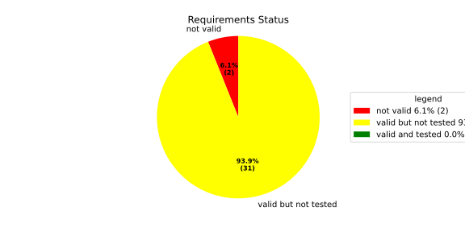
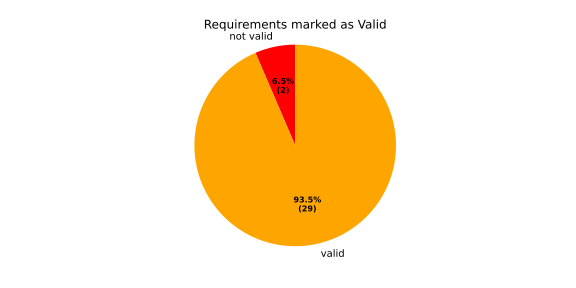
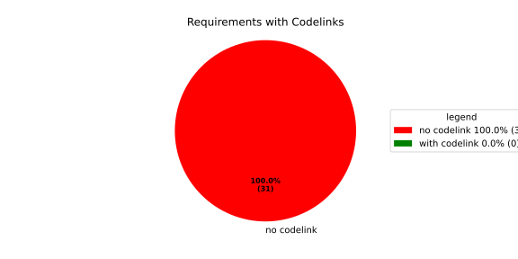
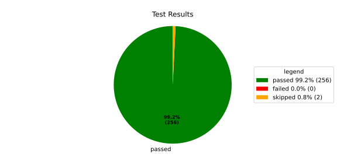
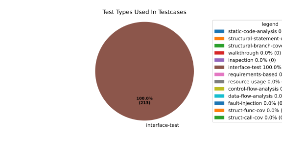
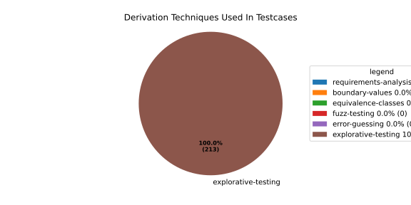

Verification Statistics#
Overview#

In Detail#



Failed Tests
Hint: This table should be empty. Before a PR can be merged all tests have to be successful.
No needs passed the filters
Skipped / Disabled Tests
testcase |
Result |
Fully Verifies |
Partially Verifies |
Test Type |
Derivation Technique |
link |
|---|---|---|---|---|---|---|
ValidateRangeTest/4__RejectsValueAboveMax |
skipped |
interface-test |
explorative-testing |
|||
ValidateRangeTest/4__RejectsValueBelowMin |
skipped |
interface-test |
explorative-testing |
All passed Tests#
testcase |
Result |
Fully Verifies |
Partially Verifies |
Test Type |
Derivation Technique |
link |
|---|---|---|---|---|---|---|
AliveImplTest__DoesNotThrowWhenInterfacePathEnvVarIsSet |
passed |
interface-test |
explorative-testing |
testcase__AliveImplTest__DoesNotThrowWhenInterfacePathEnvVarIsSet_xpewu |
||
AliveImplTest__ReportCheckpointSafeWhenNotConnected |
passed |
interface-test |
explorative-testing |
testcase__AliveImplTest__ReportCheckpointSafeWhenNotConnected_ppvuc |
||
AliveImplTest__ThrowsWhenInterfacePathEnvVarIsNotSet |
passed |
interface-test |
explorative-testing |
testcase__AliveImplTest__ThrowsWhenInterfacePathEnvVarIsNotSet_ekxfw |
||
AliveSupervisionTest__AliveDebouncesThroughFailedBeforeExpired |
passed |
interface-test |
explorative-testing |
testcase__AliveSupervisionTest__AliveDebouncesThroughFailedBeforeExpired_mlnbe |
||
AliveSupervisionTest__AliveReportsEnqueueFailureWhenRingBufferFull |
passed |
interface-test |
explorative-testing |
testcase__AliveSupervisionTest__AliveReportsEnqueueFailureWhenRingBufferFull_byhrd |
||
AliveSupervisionTest__AliveStaysOkWithCorrectHeartbeats |
passed |
interface-test |
explorative-testing |
testcase__AliveSupervisionTest__AliveStaysOkWithCorrectHeartbeats_vekof |
||
AliveSupervisionTest__AliveTransitionsOkToExpiredOnMissingHeartbeat |
passed |
interface-test |
explorative-testing |
testcase__AliveSupervisionTest__AliveTransitionsOkToExpiredOnMissingHeartbeat_jymxo |
||
AliveSupervisionTest__DeactivatesOnProcessCrash |
passed |
interface-test |
explorative-testing |
testcase__AliveSupervisionTest__DeactivatesOnProcessCrash_ypejs |
||
AliveSupervisionTest__DeactivatesOnProcessSigterm |
passed |
interface-test |
explorative-testing |
testcase__AliveSupervisionTest__DeactivatesOnProcessSigterm_hzaal |
||
AliveSupervisionTest__IgnoresIrrelevantProcessStates |
passed |
interface-test |
explorative-testing |
testcase__AliveSupervisionTest__IgnoresIrrelevantProcessStates_aolvb |
||
AliveSupervisionTest__MaxIndicationViolationExpires |
passed |
interface-test |
explorative-testing |
testcase__AliveSupervisionTest__MaxIndicationViolationExpires_whhhi |
||
AliveSupervisionTest__ReactivatesAfterCrash |
passed |
interface-test |
explorative-testing |
|||
ApplicationTypes/ApplicationTypeTest__ConvertsToExpectedValue/Native |
passed |
interface-test |
explorative-testing |
testcase__ApplicationTypes/ApplicationTypeTest__ConvertsToExpectedValue/Native_yxxcz |
||
ApplicationTypes/ApplicationTypeTest__ConvertsToExpectedValue/Reporting |
passed |
interface-test |
explorative-testing |
testcase__ApplicationTypes/ApplicationTypeTest__ConvertsToExpectedValue/Reporting_wcfwr |
||
ApplicationTypes/ApplicationTypeTest__ConvertsToExpectedValue/ReportingAndSupervised |
passed |
interface-test |
explorative-testing |
testcase__ApplicationTypes/ApplicationTypeTest__ConvertsToExpectedValue/ReportingAndSupervised_yxgad |
||
ApplicationTypes/ApplicationTypeTest__ConvertsToExpectedValue/StateManager |
passed |
interface-test |
explorative-testing |
testcase__ApplicationTypes/ApplicationTypeTest__ConvertsToExpectedValue/StateManager_ivuzc |
||
ConverterTest__ConvertAliveSupervisionMissingCycleReturnsError |
passed |
interface-test |
explorative-testing |
testcase__ConverterTest__ConvertAliveSupervisionMissingCycleReturnsError_bifzg |
||
ConverterTest__ConvertAliveSupervisionNullReturnsDefault |
passed |
interface-test |
explorative-testing |
testcase__ConverterTest__ConvertAliveSupervisionNullReturnsDefault_clyua |
||
ConverterTest__ConvertAliveSupervisionValid |
passed |
interface-test |
explorative-testing |
|||
ConverterTest__ConvertApplicationProfileMissingSelfTerminatingReturnsError |
passed |
interface-test |
explorative-testing |
testcase__ConverterTest__ConvertApplicationProfileMissingSelfTerminatingReturnsError_zddjb |
||
ConverterTest__ConvertApplicationProfileMissingTypeReturnsError |
passed |
interface-test |
explorative-testing |
testcase__ConverterTest__ConvertApplicationProfileMissingTypeReturnsError_zrfcs |
||
ConverterTest__ConvertApplicationProfileValid |
passed |
interface-test |
explorative-testing |
testcase__ConverterTest__ConvertApplicationProfileValid_oohxq |
||
ConverterTest__ConvertComponentAliveSupervisionBothIndicationsAbsentReturnsError |
passed |
interface-test |
explorative-testing |
testcase__ConverterTest__ConvertComponentAliveSupervisionBothIndicationsAbsentReturnsError_gvtfi |
||
ConverterTest__ConvertComponentAliveSupervisionMissingReportingCycleReturnsError |
passed |
interface-test |
explorative-testing |
testcase__ConverterTest__ConvertComponentAliveSupervisionMissingReportingCycleReturnsError_ajymy |
||
ConverterTest__ConvertComponentAliveSupervisionMissingToleranceReturnsError |
passed |
interface-test |
explorative-testing |
testcase__ConverterTest__ConvertComponentAliveSupervisionMissingToleranceReturnsError_lgrhj |
||
ConverterTest__ConvertComponentAliveSupervisionNullReturnsDefault |
passed |
interface-test |
explorative-testing |
testcase__ConverterTest__ConvertComponentAliveSupervisionNullReturnsDefault_xhaus |
||
ConverterTest__ConvertComponentAliveSupervisionOnlyMaxIndicationsPresent |
passed |
interface-test |
explorative-testing |
testcase__ConverterTest__ConvertComponentAliveSupervisionOnlyMaxIndicationsPresent_smwht |
||
ConverterTest__ConvertComponentAliveSupervisionOnlyMinIndicationsPresent |
passed |
interface-test |
explorative-testing |
testcase__ConverterTest__ConvertComponentAliveSupervisionOnlyMinIndicationsPresent_ybbrr |
||
ConverterTest__ConvertComponentAliveSupervisionValid |
passed |
interface-test |
explorative-testing |
testcase__ConverterTest__ConvertComponentAliveSupervisionValid_ijedh |
||
ConverterTest__ConvertComponentsValid |
passed |
interface-test |
explorative-testing |
|||
ConverterTest__ConvertComponentsWithInvalidComponentReturnsError |
passed |
interface-test |
explorative-testing |
testcase__ConverterTest__ConvertComponentsWithInvalidComponentReturnsError_wridc |
||
ConverterTest__ConvertComponentValid |
passed |
interface-test |
explorative-testing |
|||
ConverterTest__ConvertDeploymentConfigMissingReadyTimeoutReturnsError |
passed |
interface-test |
explorative-testing |
testcase__ConverterTest__ConvertDeploymentConfigMissingReadyTimeoutReturnsError_ljzfl |
||
ConverterTest__ConvertDeploymentConfigMissingShutdownTimeoutReturnsError |
passed |
interface-test |
explorative-testing |
testcase__ConverterTest__ConvertDeploymentConfigMissingShutdownTimeoutReturnsError_vyqye |
||
ConverterTest__ConvertDeploymentConfigValid |
passed |
interface-test |
explorative-testing |
|||
ConverterTest__ConvertEnvironmentalVariables |
passed |
interface-test |
explorative-testing |
testcase__ConverterTest__ConvertEnvironmentalVariables_fnhgo |
||
ConverterTest__ConvertEnvironmentalVariablesNullReturnsEmpty |
passed |
interface-test |
explorative-testing |
testcase__ConverterTest__ConvertEnvironmentalVariablesNullReturnsEmpty_vglrx |
||
ConverterTest__ConvertFallbackRunTargetMissingTimeoutReturnsError |
passed |
interface-test |
explorative-testing |
testcase__ConverterTest__ConvertFallbackRunTargetMissingTimeoutReturnsError_aevly |
||
ConverterTest__ConvertFallbackRunTargetValid |
passed |
interface-test |
explorative-testing |
testcase__ConverterTest__ConvertFallbackRunTargetValid_nexxj |
||
ConverterTest__ConvertReadyConditionMissingProcessStateReturnsError |
passed |
interface-test |
explorative-testing |
testcase__ConverterTest__ConvertReadyConditionMissingProcessStateReturnsError_ileav |
||
ConverterTest__ConvertReadyConditionValid |
passed |
interface-test |
explorative-testing |
|||
ConverterTest__ConvertRestartActionMissingFieldsReturnsError |
passed |
interface-test |
explorative-testing |
testcase__ConverterTest__ConvertRestartActionMissingFieldsReturnsError_aapjb |
||
ConverterTest__ConvertRestartActionNullReturnsNullopt |
passed |
interface-test |
explorative-testing |
testcase__ConverterTest__ConvertRestartActionNullReturnsNullopt_ifvyd |
||
ConverterTest__ConvertRestartActionValid |
passed |
interface-test |
explorative-testing |
|||
ConverterTest__ConvertRunTargetMissingTransitionTimeoutReturnsError |
passed |
interface-test |
explorative-testing |
testcase__ConverterTest__ConvertRunTargetMissingTransitionTimeoutReturnsError_ynekv |
||
ConverterTest__ConvertRunTargetsValid |
passed |
interface-test |
explorative-testing |
|||
ConverterTest__ConvertRunTargetsWithInvalidRunTargetReturnsError |
passed |
interface-test |
explorative-testing |
testcase__ConverterTest__ConvertRunTargetsWithInvalidRunTargetReturnsError_ldlox |
||
ConverterTest__ConvertRunTargetValid |
passed |
interface-test |
explorative-testing |
|||
ConverterTest__ConvertSandboxMissingGidReturnsError |
passed |
interface-test |
explorative-testing |
testcase__ConverterTest__ConvertSandboxMissingGidReturnsError_veeel |
||
ConverterTest__ConvertSandboxMissingSchedulingPolicyReturnsError |
passed |
interface-test |
explorative-testing |
testcase__ConverterTest__ConvertSandboxMissingSchedulingPolicyReturnsError_pkfts |
||
ConverterTest__ConvertSandboxMissingSchedulingPriorityReturnsError |
passed |
interface-test |
explorative-testing |
testcase__ConverterTest__ConvertSandboxMissingSchedulingPriorityReturnsError_xzdho |
||
ConverterTest__ConvertSandboxMissingUidReturnsError |
passed |
interface-test |
explorative-testing |
testcase__ConverterTest__ConvertSandboxMissingUidReturnsError_ogfku |
||
ConverterTest__ConvertSandboxSupplementaryGidOutOfRangeReturnsError |
passed |
interface-test |
explorative-testing |
testcase__ConverterTest__ConvertSandboxSupplementaryGidOutOfRangeReturnsError_zavpx |
||
ConverterTest__ConvertSandboxUidOutOfRangeReturnsError |
passed |
interface-test |
explorative-testing |
testcase__ConverterTest__ConvertSandboxUidOutOfRangeReturnsError_mcuaf |
||
ConverterTest__ConvertSandboxValid |
passed |
interface-test |
explorative-testing |
|||
ConverterTest__ConvertSwitchRunTargetActionNullReturnsNullopt |
passed |
interface-test |
explorative-testing |
testcase__ConverterTest__ConvertSwitchRunTargetActionNullReturnsNullopt_zmitx |
||
ConverterTest__ConvertSwitchRunTargetActionValid |
passed |
interface-test |
explorative-testing |
testcase__ConverterTest__ConvertSwitchRunTargetActionValid_tdklr |
||
ConverterTest__ConvertWatchdogMissingDeactivateReturnsError |
passed |
interface-test |
explorative-testing |
testcase__ConverterTest__ConvertWatchdogMissingDeactivateReturnsError_gzwjt |
||
ConverterTest__ConvertWatchdogMissingMagicCloseReturnsError |
passed |
interface-test |
explorative-testing |
testcase__ConverterTest__ConvertWatchdogMissingMagicCloseReturnsError_gexxk |
||
ConverterTest__ConvertWatchdogMissingMaxTimeoutReturnsError |
passed |
interface-test |
explorative-testing |
testcase__ConverterTest__ConvertWatchdogMissingMaxTimeoutReturnsError_lffxm |
||
ConverterTest__ConvertWatchdogNullReturnsNullopt |
passed |
interface-test |
explorative-testing |
testcase__ConverterTest__ConvertWatchdogNullReturnsNullopt_irsdk |
||
ConverterTest__ConvertWatchdogValid |
passed |
interface-test |
explorative-testing |
|||
DeadlineFixture__Start_AlreadyRunning |
passed |
interface-test |
explorative-testing |
|||
DeadlineFixture__Start_Succeeds |
passed |
interface-test |
explorative-testing |
|||
DeadlineMonitorBuilderFixture__AddDeadline_Succeeds |
passed |
interface-test |
explorative-testing |
testcase__DeadlineMonitorBuilderFixture__AddDeadline_Succeeds_nagke |
||
DeadlineMonitorBuilderFixture__New_Succeeds |
passed |
interface-test |
explorative-testing |
|||
DeadlineMonitorFixture__GetDeadline_Succeeds |
passed |
interface-test |
explorative-testing |
testcase__DeadlineMonitorFixture__GetDeadline_Succeeds_tmltf |
||
DeadlineMonitorFixture__GetDeadline_Unknown |
passed |
interface-test |
explorative-testing |
|||
EnumConversionTest__ConvertSchedulingPolicyUnsupported |
passed |
interface-test |
explorative-testing |
testcase__EnumConversionTest__ConvertSchedulingPolicyUnsupported_iavqm |
||
EnvironmentTest__AddIncreasesSize |
passed |
interface-test |
explorative-testing |
|||
EnvironmentTest__DefaultConstructedIsEmpty |
passed |
interface-test |
explorative-testing |
|||
EnvironmentTest__EmptyEnvironmentEnvpIsNullTerminated |
passed |
interface-test |
explorative-testing |
testcase__EnvironmentTest__EmptyEnvironmentEnvpIsNullTerminated_wwumw |
||
EnvironmentTest__EnvpReturnsNullTerminatedArray |
passed |
interface-test |
explorative-testing |
testcase__EnvironmentTest__EnvpReturnsNullTerminatedArray_aubkv |
||
EnvironmentTest__EnvpWithMultipleEntries |
passed |
interface-test |
explorative-testing |
|||
EnvironmentTest__MoveAssignmentPreservesEntries |
passed |
interface-test |
explorative-testing |
testcase__EnvironmentTest__MoveAssignmentPreservesEntries_vkydj |
||
EnvironmentTest__MoveConstructorPreservesEntries |
passed |
interface-test |
explorative-testing |
testcase__EnvironmentTest__MoveConstructorPreservesEntries_upclt |
||
EnvironmentTest__RangeBasedForLoopWorks |
passed |
interface-test |
explorative-testing |
|||
EnvironmentTest__ReserveAndAddAvoidReallocation |
passed |
interface-test |
explorative-testing |
testcase__EnvironmentTest__ReserveAndAddAvoidReallocation_lgzmu |
||
EnvironmentTest__SsoLengthStringSurvivesReallocation |
passed |
interface-test |
explorative-testing |
testcase__EnvironmentTest__SsoLengthStringSurvivesReallocation_jfmtl |
||
EnvironmentVariableTest__CStrReturnsKeyEqualsValue |
passed |
interface-test |
explorative-testing |
testcase__EnvironmentVariableTest__CStrReturnsKeyEqualsValue_rkwan |
||
EnvironmentVariableTest__EmptyValue |
passed |
interface-test |
explorative-testing |
|||
EnvironmentVariableTest__KeyAndValueAreAccessible |
passed |
interface-test |
explorative-testing |
testcase__EnvironmentVariableTest__KeyAndValueAreAccessible_kcrth |
||
EnvironmentVariableTest__ValueContainingEquals |
passed |
interface-test |
explorative-testing |
testcase__EnvironmentVariableTest__ValueContainingEquals_apzgz |
||
ExecErrorDomainTest__AllKnownCodesHaveDistinctMessages |
passed |
interface-test |
explorative-testing |
testcase__ExecErrorDomainTest__AllKnownCodesHaveDistinctMessages_qpoka |
||
ExecErrorDomainTest__AllKnownCodesReturnNonEmptyMessage |
passed |
interface-test |
explorative-testing |
testcase__ExecErrorDomainTest__AllKnownCodesReturnNonEmptyMessage_bawzg |
||
ExecErrorDomainTest__UnknownCodeReturnsNonEmptyMessage |
passed |
interface-test |
explorative-testing |
testcase__ExecErrorDomainTest__UnknownCodeReturnsNonEmptyMessage_kkwpr |
||
FlatbufferConfigLoaderTest__CorruptedBufferReturnsInvalidFormat |
passed |
interface-test |
explorative-testing |
testcase__FlatbufferConfigLoaderTest__CorruptedBufferReturnsInvalidFormat_twyac |
||
FlatbufferConfigLoaderTest__LoadAliveSupervision |
passed |
interface-test |
explorative-testing |
testcase__FlatbufferConfigLoaderTest__LoadAliveSupervision_hhuux |
||
FlatbufferConfigLoaderTest__LoadBufferFailsWithGenericErrorReturnsGeneralError |
passed |
interface-test |
explorative-testing |
testcase__FlatbufferConfigLoaderTest__LoadBufferFailsWithGenericErrorReturnsGeneralError_kmatm |
||
FlatbufferConfigLoaderTest__LoadBufferFailsWithNoSuchFileReturnsFileNotFound |
passed |
interface-test |
explorative-testing |
testcase__FlatbufferConfigLoaderTest__LoadBufferFailsWithNoSuchFileReturnsFileNotFound_yzlra |
||
FlatbufferConfigLoaderTest__LoadBufferFailsWithPermissionDeniedReturnsInsufficientPermission |
passed |
interface-test |
explorative-testing |
|||
FlatbufferConfigLoaderTest__LoadComponentAliveSupervision |
passed |
interface-test |
explorative-testing |
testcase__FlatbufferConfigLoaderTest__LoadComponentAliveSupervision_fwfad |
||
FlatbufferConfigLoaderTest__LoadEnvironmentalVariables |
passed |
interface-test |
explorative-testing |
testcase__FlatbufferConfigLoaderTest__LoadEnvironmentalVariables_wsosu |
||
FlatbufferConfigLoaderTest__LoadFallbackRunTarget |
passed |
interface-test |
explorative-testing |
testcase__FlatbufferConfigLoaderTest__LoadFallbackRunTarget_wduqm |
||
FlatbufferConfigLoaderTest__LoadMinimalConfig |
passed |
interface-test |
explorative-testing |
testcase__FlatbufferConfigLoaderTest__LoadMinimalConfig_hdkck |
||
FlatbufferConfigLoaderTest__LoadMultipleComponents |
passed |
interface-test |
explorative-testing |
testcase__FlatbufferConfigLoaderTest__LoadMultipleComponents_abpom |
||
FlatbufferConfigLoaderTest__LoadRestartRecoveryAction |
passed |
interface-test |
explorative-testing |
testcase__FlatbufferConfigLoaderTest__LoadRestartRecoveryAction_wyfqg |
||
FlatbufferConfigLoaderTest__LoadRunTargets |
passed |
interface-test |
explorative-testing |
|||
FlatbufferConfigLoaderTest__LoadSandbox |
passed |
interface-test |
explorative-testing |
|||
FlatbufferConfigLoaderTest__LoadSingleComponent |
passed |
interface-test |
explorative-testing |
testcase__FlatbufferConfigLoaderTest__LoadSingleComponent_yidty |
||
FlatbufferConfigLoaderTest__LoadSwitchRunTargetAction |
passed |
interface-test |
explorative-testing |
testcase__FlatbufferConfigLoaderTest__LoadSwitchRunTargetAction_uchgp |
||
FlatbufferConfigLoaderTest__LoadWatchdog |
passed |
interface-test |
explorative-testing |
|||
FlatbufferConfigLoaderTest__MissingSchemaVersionReturnsInvalidFormat |
passed |
interface-test |
explorative-testing |
testcase__FlatbufferConfigLoaderTest__MissingSchemaVersionReturnsInvalidFormat_qqmfn |
||
FlatbufferConfigLoaderTest__OptionalReadyConditionAbsent |
passed |
interface-test |
explorative-testing |
testcase__FlatbufferConfigLoaderTest__OptionalReadyConditionAbsent_lhddx |
||
FlatbufferConfigLoaderTest__OptionalWatchdogAbsent |
passed |
interface-test |
explorative-testing |
testcase__FlatbufferConfigLoaderTest__OptionalWatchdogAbsent_pkhkp |
||
FlatbufferConfigLoaderTest__WrongSchemaVersionReturnsUnsupportedVersion |
passed |
interface-test |
explorative-testing |
testcase__FlatbufferConfigLoaderTest__WrongSchemaVersionReturnsUnsupportedVersion_zrbjv |
||
HealthMonitor__GetDeadlineMonitor_Available |
passed |
|||||
HealthMonitor__GetDeadlineMonitor_Taken |
passed |
|||||
HealthMonitor__GetDeadlineMonitor_Unknown |
passed |
|||||
HealthMonitor__GetHeartbeatMonitor_Available |
passed |
testcase__HealthMonitor__GetHeartbeatMonitor_Available_aacat |
||||
HealthMonitor__GetHeartbeatMonitor_Taken |
passed |
|||||
HealthMonitor__GetHeartbeatMonitor_Unknown |
passed |
|||||
HealthMonitor__GetLogicMonitor_Available |
passed |
|||||
HealthMonitor__GetLogicMonitor_Taken |
passed |
|||||
HealthMonitor__GetLogicMonitor_Unknown |
passed |
|||||
HealthMonitor__Start_MonitorsNotTaken |
passed |
|||||
HealthMonitor__Start_Succeeds |
passed |
|||||
HealthMonitorBuilderFixture__Build_InvalidCycles |
passed |
interface-test |
explorative-testing |
testcase__HealthMonitorBuilderFixture__Build_InvalidCycles_pdigk |
||
HealthMonitorBuilderFixture__Build_NoMonitors |
passed |
interface-test |
explorative-testing |
testcase__HealthMonitorBuilderFixture__Build_NoMonitors_ktcve |
||
HealthMonitorBuilderFixture__Build_Succeeds |
passed |
interface-test |
explorative-testing |
|||
HealthMonitorBuilderFixture__New_Succeeds |
passed |
interface-test |
explorative-testing |
|||
HealthMonitorTest__Integrated |
passed |
interface-test |
explorative-testing |
|||
HeartbeatMonitor__Heartbeat_Succeeds |
passed |
interface-test |
explorative-testing |
|||
HeartbeatMonitorBuilder__New_Succeeds |
passed |
interface-test |
explorative-testing |
|||
IdentifierHashTest__IdentifierHash_default_created |
passed |
interface-test |
explorative-testing |
testcase__IdentifierHashTest__IdentifierHash_default_created_yhhvi |
||
IdentifierHashTest__IdentifierHash_EqualityOperators |
passed |
interface-test |
explorative-testing |
testcase__IdentifierHashTest__IdentifierHash_EqualityOperators_nnsuj |
||
IdentifierHashTest__IdentifierHash_invalid_hash_no_string_representation |
passed |
interface-test |
explorative-testing |
testcase__IdentifierHashTest__IdentifierHash_invalid_hash_no_string_representation_rxowr |
||
IdentifierHashTest__IdentifierHash_LessThanOperator |
passed |
interface-test |
explorative-testing |
testcase__IdentifierHashTest__IdentifierHash_LessThanOperator_rnbax |
||
IdentifierHashTest__IdentifierHash_no_dangling_pointer_after_source_string_dies |
passed |
interface-test |
explorative-testing |
testcase__IdentifierHashTest__IdentifierHash_no_dangling_pointer_after_source_string_dies_qsjin |
||
IdentifierHashTest__IdentifierHash_with_string_created |
passed |
interface-test |
explorative-testing |
testcase__IdentifierHashTest__IdentifierHash_with_string_created_aygdm |
||
IdentifierHashTest__IdentifierHash_with_string_view_created |
passed |
interface-test |
explorative-testing |
testcase__IdentifierHashTest__IdentifierHash_with_string_view_created_dbpol |
||
LogicMonitorBuilderFixture__AddState_Succeeds |
passed |
interface-test |
explorative-testing |
testcase__LogicMonitorBuilderFixture__AddState_Succeeds_axdxj |
||
LogicMonitorBuilderFixture__New_Succeeds |
passed |
interface-test |
explorative-testing |
|||
LogicMonitorFixture__State_Invalid |
passed |
interface-test |
explorative-testing |
|||
LogicMonitorFixture__State_Succeeds |
passed |
interface-test |
explorative-testing |
|||
LogicMonitorFixture__Transition_Invalid |
passed |
interface-test |
explorative-testing |
|||
LogicMonitorFixture__Transition_Succeeds |
passed |
interface-test |
explorative-testing |
|||
LogicMonitorFixture__Transition_Unknown |
passed |
interface-test |
explorative-testing |
|||
MonitorIfDaemonTest__Active_CheckpointDataForwarded |
passed |
interface-test |
explorative-testing |
testcase__MonitorIfDaemonTest__Active_CheckpointDataForwarded_evumz |
||
MonitorIfDaemonTest__Active_FutureTimestamp_NotForwardedInCurrentCycle |
passed |
interface-test |
explorative-testing |
testcase__MonitorIfDaemonTest__Active_FutureTimestamp_NotForwardedInCurrentCycle_oycau |
||
MonitorIfDaemonTest__Active_FutureTimestampCheckpoint_ConsumedInLaterCycle |
passed |
interface-test |
explorative-testing |
testcase__MonitorIfDaemonTest__Active_FutureTimestampCheckpoint_ConsumedInLaterCycle_veyyy |
||
MonitorIfDaemonTest__Active_MultipleCheckpointsInOneCycle_AllForwarded |
passed |
interface-test |
explorative-testing |
testcase__MonitorIfDaemonTest__Active_MultipleCheckpointsInOneCycle_AllForwarded_gmbms |
||
MonitorIfDaemonTest__Active_NonMatchingCheckpointId_NotForwarded |
passed |
interface-test |
explorative-testing |
testcase__MonitorIfDaemonTest__Active_NonMatchingCheckpointId_NotForwarded_bohck |
||
MonitorIfDaemonTest__Active_OverflowDetected_TransitionsToInactiveOverflow |
passed |
interface-test |
explorative-testing |
testcase__MonitorIfDaemonTest__Active_OverflowDetected_TransitionsToInactiveOverflow_ovitk |
||
MonitorIfDaemonTest__Active_TwoAttachedCheckpoints_RoutedByCheckpointId |
passed |
interface-test |
explorative-testing |
testcase__MonitorIfDaemonTest__Active_TwoAttachedCheckpoints_RoutedByCheckpointId_skqhd |
||
MonitorIfDaemonTest__GetInterfaceName_ReturnsNameGivenAtConstruction |
passed |
interface-test |
explorative-testing |
testcase__MonitorIfDaemonTest__GetInterfaceName_ReturnsNameGivenAtConstruction_iaemz |
||
MonitorIfDaemonTest__InactiveOverflow_NoProcessRestart_DoesNotRepeatNotification |
passed |
interface-test |
explorative-testing |
testcase__MonitorIfDaemonTest__InactiveOverflow_NoProcessRestart_DoesNotRepeatNotification_gdbxg |
||
MonitorIfDaemonTest__InactiveOverflow_ProcessRestartFlag_ClearedAfterNotification |
passed |
interface-test |
explorative-testing |
testcase__MonitorIfDaemonTest__InactiveOverflow_ProcessRestartFlag_ClearedAfterNotification_pqfyy |
||
MonitorIfDaemonTest__InactiveOverflow_ProcessRestarts_PushesOverflowNotificationAgain |
passed |
interface-test |
explorative-testing |
|||
MonitorIfDaemonTest__InitiallyInactive_CheckForNewData_DoesNotNotifyCheckpoint |
passed |
interface-test |
explorative-testing |
testcase__MonitorIfDaemonTest__InitiallyInactive_CheckForNewData_DoesNotNotifyCheckpoint_wjrfl |
||
MonitorIfDaemonTest__ProcessOff_DeactivatesMonitor_NoFurtherDataForwarded |
passed |
interface-test |
explorative-testing |
testcase__MonitorIfDaemonTest__ProcessOff_DeactivatesMonitor_NoFurtherDataForwarded_uialh |
||
MonitorIfDaemonTest__ProcessOffBeforeActivation_RemainsInactive |
passed |
interface-test |
explorative-testing |
testcase__MonitorIfDaemonTest__ProcessOffBeforeActivation_RemainsInactive_kzzyy |
||
MonitorIfDaemonTest__ProcessRunning_ActivatesMonitorOnNextCheckForNewData |
passed |
interface-test |
explorative-testing |
testcase__MonitorIfDaemonTest__ProcessRunning_ActivatesMonitorOnNextCheckForNewData_fkkmk |
||
MonitorIfDaemonTest__ProcessStarting_AlsoActivatesMonitor |
passed |
interface-test |
explorative-testing |
testcase__MonitorIfDaemonTest__ProcessStarting_AlsoActivatesMonitor_xdkbg |
||
MPMCConcurrentQueueTest_Basic__LvaluePushCopiesItem |
passed |
testcase__MPMCConcurrentQueueTest_Basic__LvaluePushCopiesItem_oysfc |
||||
MPMCConcurrentQueueTest_Basic__PopReturnsNulloptOnSemaphoreWaitFailure |
passed |
testcase__MPMCConcurrentQueueTest_Basic__PopReturnsNulloptOnSemaphoreWaitFailure_rgznm |
||||
MPMCConcurrentQueueTest_Basic__PushAndPopPreservesOrder |
passed |
testcase__MPMCConcurrentQueueTest_Basic__PushAndPopPreservesOrder_aijdb |
||||
MPMCConcurrentQueueTest_Basic__PushAndPopSingleItem |
passed |
testcase__MPMCConcurrentQueueTest_Basic__PushAndPopSingleItem_jrxwz |
||||
MPMCConcurrentQueueTest_Basic__RvaluePushWorksWithMoveOnlyType |
passed |
testcase__MPMCConcurrentQueueTest_Basic__RvaluePushWorksWithMoveOnlyType_cxxaj |
||||
MPMCConcurrentQueueTest_Blocking__PopBlocksUntilItemAvailable |
passed |
testcase__MPMCConcurrentQueueTest_Blocking__PopBlocksUntilItemAvailable_ttwcx |
||||
MPMCConcurrentQueueTest_Blocking__PushBlocksWhenFull |
passed |
testcase__MPMCConcurrentQueueTest_Blocking__PushBlocksWhenFull_ecujf |
||||
MPMCConcurrentQueueTest_Blocking__StopUnblocksBlockedConsumer |
passed |
testcase__MPMCConcurrentQueueTest_Blocking__StopUnblocksBlockedConsumer_snzyr |
||||
MPMCConcurrentQueueTest_Blocking__StopUnblocksBlockedProducer |
passed |
testcase__MPMCConcurrentQueueTest_Blocking__StopUnblocksBlockedProducer_inddu |
||||
MPMCConcurrentQueueTest_MPMC__AllItemsDelivered |
passed |
testcase__MPMCConcurrentQueueTest_MPMC__AllItemsDelivered_ztjqe |
||||
MPMCConcurrentQueueTest_Stop__ItemsAreDroppedAfterStop |
passed |
testcase__MPMCConcurrentQueueTest_Stop__ItemsAreDroppedAfterStop_ragzw |
||||
MPMCConcurrentQueueTest_Stop__PopReturnsNulloptWhenStoppedAndEmpty |
passed |
testcase__MPMCConcurrentQueueTest_Stop__PopReturnsNulloptWhenStoppedAndEmpty_cevga |
||||
MPMCConcurrentQueueTest_Stop__PushReturnsFalseAfterStop |
passed |
testcase__MPMCConcurrentQueueTest_Stop__PushReturnsFalseAfterStop_qqnhw |
||||
MPMCConcurrentQueueTest_Timeout__PushWithTimeoutReturnsFalseWhenFull |
passed |
testcase__MPMCConcurrentQueueTest_Timeout__PushWithTimeoutReturnsFalseWhenFull_aeips |
||||
MPMCConcurrentQueueTest_Timeout__PushWithTimeoutSucceedsWhenSlotAvailable |
passed |
testcase__MPMCConcurrentQueueTest_Timeout__PushWithTimeoutSucceedsWhenSlotAvailable_klzpo |
||||
OsHandlerTest__WaitReturnsError_OsHandlerSleepsAndDoesNotCallFindTerminated |
passed |
interface-test |
explorative-testing |
testcase__OsHandlerTest__WaitReturnsError_OsHandlerSleepsAndDoesNotCallFindTerminated_cibtr |
||
OsHandlerTest__WaitReturnsErrorThenProcessId_HandlerRecoversAndInvokesCallback |
passed |
interface-test |
explorative-testing |
testcase__OsHandlerTest__WaitReturnsErrorThenProcessId_HandlerRecoversAndInvokesCallback_nqstd |
||
OsHandlerTest__WaitReturnsProcessId_FindTerminatedIsCalled |
passed |
interface-test |
explorative-testing |
testcase__OsHandlerTest__WaitReturnsProcessId_FindTerminatedIsCalled_chlsq |
||
OsHandlerTest__WaitReturnsProcessIdBeforeRegistration_LaterRegistrationReceivesStoredTermination |
passed |
interface-test |
explorative-testing |
|||
OsHandlerTest__WaitReturnsUnknownPidWhenMapIsFull_OutOfResourcesPathDoesNotNotifyCallbacks |
passed |
interface-test |
explorative-testing |
|||
OsHandlerTest__WaitReturnsZeroPid_OsHandlerSleepsAndDoesNotCallFindTerminated |
passed |
interface-test |
explorative-testing |
testcase__OsHandlerTest__WaitReturnsZeroPid_OsHandlerSleepsAndDoesNotCallFindTerminated_rkttz |
||
ProcessStateClient_UT__ProcessStateClient_ConstructReceiver_Succeeds |
passed |
interface-test |
explorative-testing |
testcase__ProcessStateClient_UT__ProcessStateClient_ConstructReceiver_Succeeds_hodwy |
||
ProcessStateClient_UT__ProcessStateClient_QueueMaxNumberOfProcesses_Succeeds |
passed |
interface-test |
explorative-testing |
testcase__ProcessStateClient_UT__ProcessStateClient_QueueMaxNumberOfProcesses_Succeeds_qohom |
||
ProcessStateClient_UT__ProcessStateClient_QueueOneProcess_Succeeds |
passed |
interface-test |
explorative-testing |
testcase__ProcessStateClient_UT__ProcessStateClient_QueueOneProcess_Succeeds_tmzfz |
||
ProcessStateClient_UT__ProcessStateClient_QueueOneProcessTooMany_Fails |
passed |
interface-test |
explorative-testing |
testcase__ProcessStateClient_UT__ProcessStateClient_QueueOneProcessTooMany_Fails_sspoj |
||
ProcessStates/ProcessStateTest__ConvertsToExpectedValue/Running |
passed |
interface-test |
explorative-testing |
testcase__ProcessStates/ProcessStateTest__ConvertsToExpectedValue/Running_hinlr |
||
ProcessStates/ProcessStateTest__ConvertsToExpectedValue/Terminated |
passed |
interface-test |
explorative-testing |
testcase__ProcessStates/ProcessStateTest__ConvertsToExpectedValue/Terminated_zrytn |
||
RecoveryClientTest__FIFOOrdering |
passed |
interface-test |
explorative-testing |
|||
RecoveryClientTest__GetNextRequest |
passed |
interface-test |
explorative-testing |
|||
RecoveryClientTest__GetNextRequestEmpty |
passed |
interface-test |
explorative-testing |
|||
RecoveryClientTest__RingBufferFull |
passed |
interface-test |
explorative-testing |
|||
RecoveryClientTest__SendSingleRequest |
passed |
interface-test |
explorative-testing |
|||
RunTest__AsPosixProcessCreatesAndDestroysLifeCycleManager |
passed |
testcase__RunTest__AsPosixProcessCreatesAndDestroysLifeCycleManager_sooex |
||||
RunTest__AsPosixProcessForwardsConstructorArgsToApplication |
passed |
testcase__RunTest__AsPosixProcessForwardsConstructorArgsToApplication_dmeur |
||||
RunTest__AsPosixProcessForwardsNonZeroExitCode |
passed |
testcase__RunTest__AsPosixProcessForwardsNonZeroExitCode_lldqd |
||||
RunTest__AsPosixProcessPassesCorrectApplicationTypeToRun |
passed |
testcase__RunTest__AsPosixProcessPassesCorrectApplicationTypeToRun_ajqwz |
||||
RunTest__AsPosixProcessReturnsZeroExitCode |
passed |
|||||
RunTest__RunApplicationFreeFunctionDelegatesToAsPosixProcess |
passed |
testcase__RunTest__RunApplicationFreeFunctionDelegatesToAsPosixProcess_ccing |
||||
RunTest__RunConstructorPassesArgcArgvToApplicationContext |
passed |
testcase__RunTest__RunConstructorPassesArgcArgvToApplicationContext_agerd |
||||
SafeProcessMapTest__ConcurrentFindAndInsertFromMultipleThreads |
passed |
interface-test |
explorative-testing |
testcase__SafeProcessMapTest__ConcurrentFindAndInsertFromMultipleThreads_kzfyg |
||
SafeProcessMapTest__ConcurrentInsertAndFindFromMultipleThreads |
passed |
interface-test |
explorative-testing |
testcase__SafeProcessMapTest__ConcurrentInsertAndFindFromMultipleThreads_hnyqj |
||
SafeProcessMapTest__ConstructWithZeroCapacity |
passed |
interface-test |
explorative-testing |
testcase__SafeProcessMapTest__ConstructWithZeroCapacity_gjmqg |
||
SafeProcessMapTest__FindTerminatedInsertsEntryWhenPidNotPresent |
passed |
interface-test |
explorative-testing |
testcase__SafeProcessMapTest__FindTerminatedInsertsEntryWhenPidNotPresent_ixtlt |
||
SafeProcessMapTest__FindTerminatedMatchesExistingInsertAndCallsCallback |
passed |
interface-test |
explorative-testing |
testcase__SafeProcessMapTest__FindTerminatedMatchesExistingInsertAndCallsCallback_ehuzb |
||
SafeProcessMapTest__FindTerminatedSamePidTwiceYieldsUntilInsertResolves |
passed |
interface-test |
explorative-testing |
testcase__SafeProcessMapTest__FindTerminatedSamePidTwiceYieldsUntilInsertResolves_hsekx |
||
SafeProcessMapTest__FindTerminatedWithNegativePidReturnsInvalid |
passed |
interface-test |
explorative-testing |
testcase__SafeProcessMapTest__FindTerminatedWithNegativePidReturnsInvalid_dewoh |
||
SafeProcessMapTest__FindTerminatedWorksAtMaxTreeDepth |
passed |
interface-test |
explorative-testing |
testcase__SafeProcessMapTest__FindTerminatedWorksAtMaxTreeDepth_adtzi |
||
SafeProcessMapTest__InsertBeyondCapacityReturnsOutOfMemory |
passed |
interface-test |
explorative-testing |
testcase__SafeProcessMapTest__InsertBeyondCapacityReturnsOutOfMemory_qjnie |
||
SafeProcessMapTest__InsertIntoEmptyTreeReturnsZero |
passed |
interface-test |
explorative-testing |
testcase__SafeProcessMapTest__InsertIntoEmptyTreeReturnsZero_zfbaq |
||
SafeProcessMapTest__InsertMatchesExistingFindTerminatedEntry |
passed |
interface-test |
explorative-testing |
testcase__SafeProcessMapTest__InsertMatchesExistingFindTerminatedEntry_fuwrp |
||
SafeProcessMapTest__InsertMultipleNodesThenFindTerminatedRemovesAll |
passed |
interface-test |
explorative-testing |
testcase__SafeProcessMapTest__InsertMultipleNodesThenFindTerminatedRemovesAll_fvowh |
||
SafeProcessMapTest__InsertSamePidTwiceYieldsUntilFindTerminatedResolves |
passed |
interface-test |
explorative-testing |
testcase__SafeProcessMapTest__InsertSamePidTwiceYieldsUntilFindTerminatedResolves_wzwyb |
||
SchedulingPolicies/SchedulingPolicyTest__ConvertsToExpectedPosixValue/SCHED_FIFO |
passed |
interface-test |
explorative-testing |
testcase__SchedulingPolicies/SchedulingPolicyTest__ConvertsToExpectedPosixValue/SCHED_FIFO_soddq |
||
SchedulingPolicies/SchedulingPolicyTest__ConvertsToExpectedPosixValue/SCHED_OTHER |
passed |
interface-test |
explorative-testing |
testcase__SchedulingPolicies/SchedulingPolicyTest__ConvertsToExpectedPosixValue/SCHED_OTHER_oigmk |
||
SchedulingPolicies/SchedulingPolicyTest__ConvertsToExpectedPosixValue/SCHED_RR |
passed |
interface-test |
explorative-testing |
testcase__SchedulingPolicies/SchedulingPolicyTest__ConvertsToExpectedPosixValue/SCHED_RR_pcjci |
||
score/health_monitor/src/rust/test-510566969/tests |
passed |
testcase__score/health_monitor/src/rust/test-510566969/tests_kjjlw |
||||
score/health_monitor/src/rust/test-827801879/loom_tests |
passed |
testcase__score/health_monitor/src/rust/test-827801879/loom_tests_cpmix |
||||
SecondsToMsTest__ConvertsPositiveValue |
passed |
interface-test |
explorative-testing |
|||
SecondsToMsTest__ConvertsZero |
passed |
interface-test |
explorative-testing |
|||
SecondsToMsTest__RejectsNegativeValue |
passed |
interface-test |
explorative-testing |
|||
SecondsToMsTest__RejectsOverflow |
passed |
interface-test |
explorative-testing |
|||
SecondsToMsTest__RejectsSubMillisecond |
passed |
interface-test |
explorative-testing |
|||
StringHelperTest__ConvertGidVectorReturnsEmptyWhenNull |
passed |
interface-test |
explorative-testing |
testcase__StringHelperTest__ConvertGidVectorReturnsEmptyWhenNull_jmcsr |
||
StringHelperTest__ConvertStringVectorReturnsEmptyWhenNull |
passed |
interface-test |
explorative-testing |
testcase__StringHelperTest__ConvertStringVectorReturnsEmptyWhenNull_zsuvv |
||
StringHelperTest__SafeStringReturnsEmptyWhenNull |
passed |
interface-test |
explorative-testing |
testcase__StringHelperTest__SafeStringReturnsEmptyWhenNull_crelr |
||
StringHelperTest__SafeStringReturnsValueWhenNotNull |
passed |
interface-test |
explorative-testing |
testcase__StringHelperTest__SafeStringReturnsValueWhenNotNull_anbko |
||
test_complex_monitoring |
passed |
|||||
test_crash_on_startup |
passed |
|||||
test_incorrect_config_non_reporting |
passed |
|||||
test_process_crash_monitoring |
passed |
|||||
test_process_launch_args |
passed |
|||||
test_process_wrong_binary_failure |
passed |
|||||
test_recovery_action_complex_rep_failure |
passed |
|||||
test_recovery_action_simple_rep_failure |
passed |
|||||
test_smoke |
passed |
|||||
test_switch_run_target |
passed |
|||||
TimeRangeFixture__MinMax |
passed |
interface-test |
explorative-testing |
|||
TimeRangeFixture__New_InvalidOrder |
passed |
interface-test |
explorative-testing |
|||
TimeRangeFixture__New_Succeeds |
passed |
interface-test |
explorative-testing |
|||
ValidateRangeTest/0__AcceptsMaxBoundary |
passed |
interface-test |
explorative-testing |
|||
ValidateRangeTest/0__AcceptsMinBoundary |
passed |
interface-test |
explorative-testing |
|||
ValidateRangeTest/0__AcceptsZero |
passed |
interface-test |
explorative-testing |
|||
ValidateRangeTest/0__RejectsValueAboveMax |
passed |
interface-test |
explorative-testing |
|||
ValidateRangeTest/0__RejectsValueBelowMin |
passed |
interface-test |
explorative-testing |
|||
ValidateRangeTest/1__AcceptsMaxBoundary |
passed |
interface-test |
explorative-testing |
|||
ValidateRangeTest/1__AcceptsMinBoundary |
passed |
interface-test |
explorative-testing |
|||
ValidateRangeTest/1__AcceptsZero |
passed |
interface-test |
explorative-testing |
|||
ValidateRangeTest/1__RejectsValueAboveMax |
passed |
interface-test |
explorative-testing |
|||
ValidateRangeTest/1__RejectsValueBelowMin |
passed |
interface-test |
explorative-testing |
|||
ValidateRangeTest/2__AcceptsMaxBoundary |
passed |
interface-test |
explorative-testing |
|||
ValidateRangeTest/2__AcceptsMinBoundary |
passed |
interface-test |
explorative-testing |
|||
ValidateRangeTest/2__AcceptsZero |
passed |
interface-test |
explorative-testing |
|||
ValidateRangeTest/2__RejectsValueAboveMax |
passed |
interface-test |
explorative-testing |
|||
ValidateRangeTest/2__RejectsValueBelowMin |
passed |
interface-test |
explorative-testing |
|||
ValidateRangeTest/3__AcceptsMaxBoundary |
passed |
interface-test |
explorative-testing |
|||
ValidateRangeTest/3__AcceptsMinBoundary |
passed |
interface-test |
explorative-testing |
|||
ValidateRangeTest/3__AcceptsZero |
passed |
interface-test |
explorative-testing |
|||
ValidateRangeTest/3__RejectsValueAboveMax |
passed |
interface-test |
explorative-testing |
|||
ValidateRangeTest/3__RejectsValueBelowMin |
passed |
interface-test |
explorative-testing |
|||
ValidateRangeTest/4__AcceptsMaxBoundary |
passed |
interface-test |
explorative-testing |
|||
ValidateRangeTest/4__AcceptsMinBoundary |
passed |
interface-test |
explorative-testing |
|||
ValidateRangeTest/4__AcceptsZero |
passed |
interface-test |
explorative-testing |
Details About Testcases#


Test Log Files#
tests-report/tests/integration/process_simple_rep_failure/process_simple_rep_failure/test.log
exec ${PAGER:-/usr/bin/less} "$0" || exit 1
Executing tests from //tests/integration/process_simple_rep_failure:process_simple_rep_failure
-----------------------------------------------------------------------------
============================= test session starts ==============================
platform linux -- Python 3.12.12, pytest-9.0.3, pluggy-1.5.0
rootdir: /home/runner/.bazel/sandbox/processwrapper-sandbox/1047/execroot/_main/bazel-out/k8-fastbuild/bin/tests/integration/process_simple_rep_failure/process_simple_rep_failure.runfiles/score_itf+
configfile: pytest.ini
collected 1 item
../score_itf+::test_recovery_action_simple_rep_failure
-------------------------------- live log setup --------------------------------
[2026-07-13 07:48:53.498] [INFO] [score.itf.plugins.docker] Executing custom image bootstrap command: tests/utils/environments/x86_64-linux/x86_64-linux.sh
[2026-07-13 07:48:53.736] [DEBUG] [docker.utils.config] Trying paths: ['/home/runner/.docker/config.json', '/home/runner/.dockercfg']
[2026-07-13 07:48:53.736] [DEBUG] [docker.utils.config] Found file at path: /home/runner/.docker/config.json
[2026-07-13 07:48:53.736] [DEBUG] [docker.auth] Found 'auths' section
[2026-07-13 07:48:53.737] [DEBUG] [docker.auth] Found entry (registry='https://index.docker.io/v1/', username='githubactions')
[2026-07-13 07:48:53.749] [DEBUG] [urllib3.connectionpool] http://localhost:None "GET /version HTTP/1.1" 200 823
[2026-07-13 07:48:53.789] [DEBUG] [urllib3.connectionpool] http://localhost:None "POST /v1.48/containers/create HTTP/1.1" 201 88
[2026-07-13 07:48:53.791] [DEBUG] [urllib3.connectionpool] http://localhost:None "GET /v1.48/containers/50faa2a51acc11c0cf07714d182a6062c13fd0d17df915b8bc5c72ff8fb8ca17/json HTTP/1.1" 200 None
[2026-07-13 07:48:53.972] [DEBUG] [urllib3.connectionpool] http://localhost:None "POST /v1.48/containers/50faa2a51acc11c0cf07714d182a6062c13fd0d17df915b8bc5c72ff8fb8ca17/start HTTP/1.1" 204 0
[2026-07-13 07:48:53.973] [DEBUG] [docker.utils.config] Trying paths: ['/home/runner/.docker/config.json', '/home/runner/.dockercfg']
[2026-07-13 07:48:53.973] [DEBUG] [docker.utils.config] Found file at path: /home/runner/.docker/config.json
[2026-07-13 07:48:53.973] [DEBUG] [docker.auth] Found 'auths' section
[2026-07-13 07:48:53.974] [DEBUG] [docker.auth] Found entry (registry='https://index.docker.io/v1/', username='githubactions')
[2026-07-13 07:48:53.988] [DEBUG] [urllib3.connectionpool] http://localhost:None "GET /version HTTP/1.1" 200 823
[2026-07-13 07:48:54.261] [INFO] [tests.utils.testing_utils.setup_test] Test case setup finished
-------------------------------- live log call ---------------------------------
[2026-07-13 07:48:54.386] [INFO] [launch_manager] 2026/07/13 07:48:54.8934379 2313034 000 ECU1 LM LM log debug verbose 1 Launch Manager Started !!!!
[2026-07-13 07:48:54.386] [INFO] [launch_manager] 2026/07/13 07:48:54.8934380 2313036 000 ECU1 LM LM log debug verbose 1 Loading LCM Configurations...
[2026-07-13 07:48:54.386] [INFO] [launch_manager] 2026/07/13 07:48:54.8934380 2313036 000 ECU1 LM LM log debug verbose 1 ECUCFG_ENV_VAR_ROOTFOLDER set successfully
[2026-07-13 07:48:54.387] [INFO] [launch_manager] 2026/07/13 07:48:54.8934380 2313037 000 ECU1 LM LM log debug verbose 5 FlatBufferParser::getModeGroupPgName: MainPG ( IdentifierHash: 18079021346025578134 )
[2026-07-13 07:48:54.387] [INFO] [launch_manager] 2026/07/13 07:48:54.8934380 2313038 000 ECU1 LM LM log debug verbose 5 FlatBufferParser::getModeGroupPgStateName: MainPG/Startup ( IdentifierHash: 10504605499600661529 )
[2026-07-13 07:48:54.387] [INFO] [launch_manager] 2026/07/13 07:48:54.8934380 2313038 000 ECU1 LM LM log debug verbose 5 FlatBufferParser::getModeGroupPgStateName: MainPG/run_target_app_does_report_krunning_in_time ( IdentifierHash: 11934981641920773349 )
[2026-07-13 07:48:54.387] [INFO] [launch_manager] 2026/07/13 07:48:54.8934380 2313038 000 ECU1 LM LM log debug verbose 5 FlatBufferParser::getModeGroupPgStateName: MainPG/run_target_app_does_not_report_krunning_in_time ( IdentifierHash: 7672161913816744053 )
[2026-07-13 07:48:54.387] [INFO] [launch_manager] 2026/07/13 07:48:54.8934380 2313038 000 ECU1 LM LM log debug verbose 5 FlatBufferParser::getModeGroupPgStateName: MainPG/Off ( IdentifierHash: 15281793077830264047 )
[2026-07-13 07:48:54.387] [INFO] [launch_manager] 2026/07/13 07:48:54.8934380 2313038 000 ECU1 LM LM log debug verbose 5 FlatBufferParser::getModeGroupPgStateName: MainPG/fallback_run_target ( IdentifierHash: 4059409696722237352 )
[2026-07-13 07:48:54.387] [INFO] [launch_manager] 2026/07/13 07:48:54.8934380 2313039 000 ECU1 LM LM log debug verbose 4 parseProcessConfigurations: Process index: 0 executable_path_: /tmp/tests/process_simple_rep_failure/control_client_mock
[2026-07-13 07:48:54.387] [INFO] [launch_manager] 2026/07/13 07:48:54.8934380 2313039 000 ECU1 LM LM log debug verbose 3 Process control_client_mock is Reporting execution state
[2026-07-13 07:48:54.387] [INFO] [launch_manager] 2026/07/13 07:48:54.8934380 2313040 000 ECU1 LM LM log debug verbose 1 Process is STATE_MANAGEMENT function Cluster Affiliation
[2026-07-13 07:48:54.387] [INFO] [launch_manager] 2026/07/13 07:48:54.8934380 2313040 000 ECU1 LM LM log debug verbose 3 Process control_client_mock is Self terminating
[2026-07-13 07:48:54.387] [INFO] [launch_manager] 2026/07/13 07:48:54.8934380 2313040 000 ECU1 LM LM log debug verbose 4 ParseProcessProcessGroup: id:::pg_name_: MainPG , pg_state_name_: MainPG/Startup
[2026-07-13 07:48:54.387] [INFO] [launch_manager] 2026/07/13 07:48:54.8934380 2313041 000 ECU1 LM LM log debug verbose 4 ParseProcessProcessGroup: id:::pg_name_: MainPG , pg_state_name_: MainPG/run_target_app_does_report_krunning_in_time
[2026-07-13 07:48:54.387] [INFO] [launch_manager] 2026/07/13 07:48:54.8934380 2313041 000 ECU1 LM LM log debug verbose 4 ParseProcessProcessGroup: id:::pg_name_: MainPG , pg_state_name_: MainPG/run_target_app_does_not_report_krunning_in_time
[2026-07-13 07:48:54.387] [INFO] [launch_manager] 2026/07/13 07:48:54.8934380 2313041 000 ECU1 LM LM log debug verbose 4 ParseProcessProcessGroup: id:::pg_name_: MainPG , pg_state_name_: MainPG/fallback_run_target
[2026-07-13 07:48:54.387] [INFO] [launch_manager] 2026/07/13 07:48:54.8934380 2313041 000 ECU1 LM LM log debug verbose 4 parseProcessConfigurations: Process index: 1 executable_path_: /tmp/tests/process_simple_rep_failure/process_simple_reporting
[2026-07-13 07:48:54.387] [INFO] [launch_manager] 2026/07/13 07:48:54.8934380 2313042 000 ECU1 LM LM log debug verbose 3 Process component_does_report_krunning_in_time is Reporting execution state
[2026-07-13 07:48:54.387] [INFO] [launch_manager] 2026/07/13 07:48:54.8934380 2313042 000 ECU1 LM LM log debug verbose 1 Process is NOT associated with any function Cluster Affiliation
[2026-07-13 07:48:54.387] [INFO] [launch_manager] 2026/07/13 07:48:54.8934380 2313042 000 ECU1 LM LM log debug verbose 3 Process component_does_report_krunning_in_time is Self terminating
[2026-07-13 07:48:54.388] [INFO] [launch_manager] 2026/07/13 07:48:54.8934380 2313042 000 ECU1 LM LM log debug verbose 4 ParseProcessProcessGroup: id:::pg_name_: MainPG , pg_state_name_: MainPG/run_target_app_does_report_krunning_in_time
[2026-07-13 07:48:54.388] [INFO] [launch_manager] 2026/07/13 07:48:54.8934380 2313043 000 ECU1 LM LM log debug verbose 4 parseProcessConfigurations: Process index: 2 executable_path_: /tmp/tests/process_simple_rep_failure/process_simple_reporting
[2026-07-13 07:48:54.388] [INFO] [launch_manager] 2026/07/13 07:48:54.8934380 2313043 000 ECU1 LM LM log debug verbose 3 Process component_does_not_report_krunning_in_time is Reporting execution state
[2026-07-13 07:48:54.388] [INFO] [launch_manager] 2026/07/13 07:48:54.8934380 2313043 000 ECU1 LM LM log debug verbose 1 Process is NOT associated with any function Cluster Affiliation
[2026-07-13 07:48:54.388] [INFO] [launch_manager] 2026/07/13 07:48:54.8934380 2313043 000 ECU1 LM LM log debug verbose 3 Process component_does_not_report_krunning_in_time is Self terminating
[2026-07-13 07:48:54.388] [INFO] [launch_manager] 2026/07/13 07:48:54.8934380 2313043 000 ECU1 LM LM log debug verbose 4 ParseProcessProcessGroup: id:::pg_name_: MainPG , pg_state_name_: MainPG/run_target_app_does_not_report_krunning_in_time
[2026-07-13 07:48:54.388] [INFO] [launch_manager] 2026/07/13 07:48:54.8934380 2313044 000 ECU1 LM LM log debug verbose 4 parseProcessConfigurations: Process index: 3 executable_path_: /tmp/tests/process_simple_rep_failure/verification_process
[2026-07-13 07:48:54.388] [INFO] [launch_manager] 2026/07/13 07:48:54.8934380 2313044 000 ECU1 LM LM log debug verbose 3 Process verification_component is NOT Reporting execution state
[2026-07-13 07:48:54.388] [INFO] [launch_manager] 2026/07/13 07:48:54.8934380 2313044 000 ECU1 LM LM log debug verbose 1 Process is NOT associated with any function Cluster Affiliation
[2026-07-13 07:48:54.388] [INFO] [launch_manager] 2026/07/13 07:48:54.8934381 2313044 000 ECU1 LM LM log debug verbose 3 Process verification_component is Self terminating
[2026-07-13 07:48:54.388] [INFO] [launch_manager] 2026/07/13 07:48:54.8934381 2313045 000 ECU1 LM LM log debug verbose 4 ParseProcessProcessGroup: id:::pg_name_: MainPG , pg_state_name_: MainPG/fallback_run_target
[2026-07-13 07:48:54.388] [INFO] [launch_manager] 2026/07/13 07:48:54.8934381 2313045 000 ECU1 LM LM log debug verbose 3 Loading SWCL Nr. 0 Succeeded
[2026-07-13 07:48:54.388] [INFO] [launch_manager] 2026/07/13 07:48:54.8934381 2313045 000 ECU1 LM LM log debug verbose 2 1 process group(s)
[2026-07-13 07:48:54.388] [INFO] [launch_manager] 2026/07/13 07:48:54.8934381 2313045 000 ECU1 LM LM log debug verbose 3 Creating graph with 4 nodes
[2026-07-13 07:48:54.388] [INFO] [launch_manager] 2026/07/13 07:48:54.8934381 2313045 000 ECU1 LM LM log debug verbose 1 Process groups initialized successfully
[2026-07-13 07:48:54.388] [INFO] [launch_manager] 2026/07/13 07:48:54.8934381 2313046 000 ECU1 LM LM log debug verbose 1 Process Group initialization done
[2026-07-13 07:48:54.388] [INFO] [launch_manager] 2026/07/13 07:48:54.8934381 2313046 000 ECU1 LM LM log debug verbose 3 Creating Safe Process Map with 4 entries
[2026-07-13 07:48:54.388] [INFO] [launch_manager] 2026/07/13 07:48:54.8934381 2313046 000 ECU1 LM LM log debug verbose 2 Creating job queue with capacity 1024
[2026-07-13 07:48:54.389] [INFO] [launch_manager] 2026/07/13 07:48:54.8934381 2313046 000 ECU1 LM LM log debug verbose 1 Creating worker threads...
[2026-07-13 07:48:54.389] [INFO] [launch_manager] 2026/07/13 07:48:54.8934382 2313059 000 ECU1 LM LM log debug verbose 7 Process group index 0 (with name MainPG ) has 4 processes
[2026-07-13 07:48:54.389] [INFO] [launch_manager] 2026/07/13 07:48:54.8934382 2313059 000 ECU1 LM LM log debug verbose 2 Creating process node with id: 0
[2026-07-13 07:48:54.389] [INFO] [launch_manager] 2026/07/13 07:48:54.8934382 2313059 000 ECU1 LM LM log debug verbose 5 Process 0 has 0 start dependencies
[2026-07-13 07:48:54.389] [INFO] [launch_manager] 2026/07/13 07:48:54.8934382 2313060 000 ECU1 LM LM log debug verbose 2 Creating process node with id: 1
[2026-07-13 07:48:54.389] [INFO] [launch_manager] 2026/07/13 07:48:54.8934382 2313060 000 ECU1 LM LM log debug verbose 5 Process 1 has 0 start dependencies
[2026-07-13 07:48:54.394] [INFO] [launch_manager] 2026/07/13 07:48:54.8934382 2313060 000 ECU1 LM LM log debug verbose 2 Creating process node with id: 2
[2026-07-13 07:48:54.394] [INFO] [launch_manager] 2026/07/13 07:48:54.8934382 2313060 000 ECU1 LM LM log debug verbose 5 Process 2 has 0 start dependencies
[2026-07-13 07:48:54.394] [INFO] [launch_manager] 2026/07/13 07:48:54.8934382 2313061 000 ECU1 LM LM log debug verbose 2 Creating process node with id: 3
[2026-07-13 07:48:54.394] [INFO] [launch_manager] 2026/07/13 07:48:54.8934382 2313061 000 ECU1 LM LM log debug verbose 5 Process 3 has 0 start dependencies
[2026-07-13 07:48:54.394] [INFO] [launch_manager] 2026/07/13 07:48:54.8934382 2313061 000 ECU1 LM LM log debug verbose 3 Created 4 process nodes
[2026-07-13 07:48:54.394] [INFO] [launch_manager] 2026/07/13 07:48:54.8934382 2313061 000 ECU1 LM LM log debug verbose 2 Creating successor lists for process group MainPG
[2026-07-13 07:48:54.394] [INFO] [launch_manager] 2026/07/13 07:48:54.8934382 2313061 000 ECU1 LM LM log debug verbose 1 Graphs initialized
[2026-07-13 07:48:54.394] [INFO] [launch_manager] 2026/07/13 07:48:54.8934382 2313063 000 ECU1 LM Fcty log info verbose 2 Factory for FlatCfg MachineConfig: Loading of HM Machine Configuration succeeded.
[2026-07-13 07:48:54.394] [INFO] [launch_manager] 2026/07/13 07:48:54.8934382 2313063 000 ECU1 LM Fcty log debug verbose 3 Factory for FlatCfg MachineConfig: Alive Supervision buffer size: 100
[2026-07-13 07:48:54.394] [INFO] [launch_manager] 2026/07/13 07:48:54.8934382 2313063 000 ECU1 LM Fcty log debug verbose 3 Factory for FlatCfg MachineConfig: Monitor buffer size: 512
[2026-07-13 07:48:54.395] [INFO] [launch_manager] 2026/07/13 07:48:54.8934382 2313064 000 ECU1 LM Fcty log debug verbose 4 Factory for FlatCfg MachineConfig: Periodicity: 50000000 ns
[2026-07-13 07:48:54.395] [INFO] [launch_manager] 2026/07/13 07:48:54.8934382 2313064 000 ECU1 LM Fcty log debug verbose 3 Factory for FlatCfg MachineConfig: Configured watchdogs: 0
[2026-07-13 07:48:54.395] [INFO] [launch_manager] 2026/07/13 07:48:54.8934382 2313064 000 ECU1 LM Fcty log warn verbose 2 Factory for FlatCfg MachineConfig: No watchdog configured
[2026-07-13 07:48:54.395] [INFO] [launch_manager] 2026/07/13 07:48:54.8934383 2313065 000 ECU1 LM Fcty log debug verbose 2 Software Cluster Handler starts constructing workers: MainCluster
[2026-07-13 07:48:54.395] [INFO] [launch_manager] 2026/07/13 07:48:54.8934383 2313065 000 ECU1 LM Fcty log debug verbose 3 Factory for FlatCfg AR24-11: Successfully created Process States: control_client_mock
[2026-07-13 07:48:54.395] [INFO] [launch_manager] 2026/07/13 07:48:54.8934383 2313065 000 ECU1 LM Fcty log debug verbose 3 Factory for FlatCfg AR24-11: Number of constructed Process States: 1
[2026-07-13 07:48:54.395] [INFO] [launch_manager] 2026/07/13 07:48:54.8934383 2313066 000 ECU1 LM Fcty log debug verbose 3 Factory for FlatCfg AR24-11: Successfully created Alive interface IPC with path: lifecycle_health_control_client_mock
[2026-07-13 07:48:54.395] [INFO] [launch_manager] 2026/07/13 07:48:54.8934383 2313066 000 ECU1 LM Fcty log debug verbose 3 Factory for FlatCfg AR24-11: Number of constructed Alive interface IPCs: 1
[2026-07-13 07:48:54.395] [INFO] [launch_manager] 2026/07/13 07:48:54.8934383 2313066 000 ECU1 LM Fcty log debug verbose 3 Factory for FlatCfg AR24-11: Successfully created Alive Interface: /lifecycle_health_control_client_mock
[2026-07-13 07:48:54.396] [INFO] [launch_manager] 2026/07/13 07:48:54.8934383 2313072 000 ECU1 LM Fcty log debug verbose 3 Factory for FlatCfg AR24-11: Number of constructed Alive interfaces: 1
[2026-07-13 07:48:54.397] [INFO] [launch_manager] 2026/07/13 07:48:54.8934383 2313072 000 ECU1 LM Fcty log debug verbose 3 Factory for FlatCfg AR24-11: Successfully created supervision checkpoint: control_client_mock_checkpoint
[2026-07-13 07:48:54.397] [INFO] [launch_manager] 2026/07/13 07:48:54.8934383 2313072 000 ECU1 LM Fcty log debug verbose 3 Factory for FlatCfg AR24-11: Number of constructed supervision checkpoints: 1
[2026-07-13 07:48:54.397] [INFO] [launch_manager] 2026/07/13 07:48:54.8934383 2313073 000 ECU1 LM Fcty log debug verbose 3 Factory for FlatCfg AR24-11: Successfully created alive supervision worker object: control_client_mock_alive_supervision
[2026-07-13 07:48:54.397] [INFO] [launch_manager] 2026/07/13 07:48:54.8934383 2313073 000 ECU1 LM Fcty log debug verbose 3 Factory for FlatCfg AR24-11: Number of constructed alive supervisions: 1
[2026-07-13 07:48:54.397] [INFO] [launch_manager] 2026/07/13 07:48:54.8934383 2313073 000 ECU1 LM Fcty log info verbose 2 Phm Daemon: The (configured) periodicity in [ns] is set to: 50000000
[2026-07-13 07:48:54.397] [INFO] [launch_manager] 2026/07/13 07:48:54.8934383 2313073 000 ECU1 LM Fcty log debug verbose 2 Phm Daemon: The accuracy of the monotonic system clock in [ns] is: 1
[2026-07-13 07:48:54.397] [INFO] [launch_manager] 2026/07/13 07:48:54.8934383 2313073 000 ECU1 LM Fcty log debug verbose 3 AliveMonitor: Initialization took 1 ms
[2026-07-13 07:48:54.397] [INFO] [launch_manager] 2026/07/13 07:48:54.8934384 2313075 000 ECU1 LM LM log info verbose 1 LCM started successfully
[2026-07-13 07:48:54.397] [INFO] [launch_manager] 2026/07/13 07:48:54.8934384 2313075 000 ECU1 LM LM log debug verbose 3 clock() at run(): 37.955000 ms
[2026-07-13 07:48:54.397] [INFO] [launch_manager] 2026/07/13 07:48:54.8934384 2313076 000 ECU1 LM LM log debug verbose 1 =============STARTING MAINPG STARTUP STATE============
[2026-07-13 07:48:54.398] [INFO] [launch_manager] 2026/07/13 07:48:54.8934384 2313076 000 ECU1 LM LM log debug verbose 9 Graph::setState changes from kSuccess to kInTransition for PG 0 ( MainPG )
[2026-07-13 07:48:54.398] [INFO] [launch_manager] 2026/07/13 07:48:54.8934384 2313076 000 ECU1 LM LM log debug verbose 2 Stop Dependencies: 0
[2026-07-13 07:48:54.398] [INFO] [launch_manager] 2026/07/13 07:48:54.8934384 2313076 000 ECU1 LM LM log debug verbose 2 Stop Dependencies: 0
[2026-07-13 07:48:54.398] [INFO] [launch_manager] 2026/07/13 07:48:54.8934384 2313077 000 ECU1 LM LM log debug verbose 2 Stop Dependencies: 0
[2026-07-13 07:48:54.398] [INFO] [launch_manager] 2026/07/13 07:48:54.8934384 2313077 000 ECU1 LM LM log debug verbose 2 Stop Dependencies: 0
[2026-07-13 07:48:54.398] [INFO] [launch_manager] 2026/07/13 07:48:54.8934384 2313077 000 ECU1 LM LM log debug verbose 2 Start Dependencies: 0
[2026-07-13 07:48:54.398] [INFO] [launch_manager] 2026/07/13 07:48:54.8934384 2313077 000 ECU1 LM LM log debug verbose 2 Start Dependencies: 0
[2026-07-13 07:48:54.398] [INFO] [launch_manager] 2026/07/13 07:48:54.8934384 2313077 000 ECU1 LM LM log debug verbose 2 Start Dependencies: 0
[2026-07-13 07:48:54.398] [INFO] [launch_manager] 2026/07/13 07:48:54.8934384 2313077 000 ECU1 LM LM log debug verbose 2 Start Dependencies: 0
[2026-07-13 07:48:54.401] [INFO] [launch_manager] 2026/07/13 07:48:54.8934384 2313079 000 ECU1 LM LM log debug verbose 6 Starting process 0 ( control_client_mock ) from executable /tmp/tests/process_simple_rep_failure/control_client_mock
[2026-07-13 07:48:54.401] [INFO] [launch_manager] 2026/07/13 07:48:54.8934384 2313079 000 ECU1 LM LM log debug verbose 3 Initialize the control client for control_client_mock process
[2026-07-13 07:48:54.401] [INFO] [launch_manager] 2026/07/13 07:48:54.8934384 2313081 000 ECU1 LM LM log debug verbose 1 ControlClientChannel initialized
[2026-07-13 07:48:54.401] [INFO] [launch_manager] 2026/07/13 07:48:54.8934385 2313086 000 ECU1 LM LM log debug verbose 4 startProcess pid 67 received for process: control_client_mock
[2026-07-13 07:48:54.401] [INFO] [launch_manager] 2026/07/13 07:48:54.8934385 2313086 000 ECU1 LM LM log debug verbose 1 ControlClientChannel obtained from sync.
[2026-07-13 07:48:54.402] [INFO] [launch_manager] [==========] Running 1 test from 1 test suite.
[2026-07-13 07:48:54.402] [INFO] [launch_manager] [----------] Global test environment set-up.
[2026-07-13 07:48:54.402] [INFO] [launch_manager] [----------] 1 test from RecoveryActionSimpleRepFailure
[2026-07-13 07:48:54.402] [INFO] [launch_manager] [ RUN ] RecoveryActionSimpleRepFailure.ControlClientMock
[2026-07-13 07:48:54.402] [INFO] [launch_manager] [ STEP ] Report running from ControlClientMock
[2026-07-13 07:48:54.402] [INFO] [launch_manager] [ END STEP ] Report running from ControlClientMock
[2026-07-13 07:48:54.402] [INFO] [launch_manager] [ STEP ] Activate RunTarget run_target_app_does_report_krunning_in_time
[2026-07-13 07:48:54.402] [INFO] [launch_manager] 2026/07/13 07:48:54.8934396 2313203 000 ECU1 LM LM log debug verbose 8 Got kRunning for pid 67 ( control_client_mock ) process 0 of group MainPG
[2026-07-13 07:48:54.402] [INFO] [launch_manager] 2026/07/13 07:48:54.8934396 2313204 000 ECU1 LM LM log debug verbose 7 startProcess for MainPG process 0 ( control_client_mock ) done
[2026-07-13 07:48:54.403] [INFO] [launch_manager] 2026/07/13 07:48:54.8934396 2313204 000 ECU1 LM LM log debug verbose 1 Control Client handler nudged
[2026-07-13 07:48:54.403] [INFO] [launch_manager] 2026/07/13 07:48:54.8934397 2313204 000 ECU1 LM LM log debug verbose 3 clock() at successful initial state transition: 39.287000 ms
[2026-07-13 07:48:54.404] [INFO] [launch_manager] 2026/07/13 07:48:54.8934397 2313205 000 ECU1 LM LM log debug verbose 9 Graph::setState changes from kInTransition to kSuccess for PG 0 ( MainPG )
[2026-07-13 07:48:54.404] [INFO] [launch_manager] 2026/07/13 07:48:54.8934397 2313205 000 ECU1 LM LM log info verbose 7 Completed the request for PG MainPG to State MainPG/Startup in 12 ms
[2026-07-13 07:48:54.404] [INFO] [launch_manager] 2026/07/13 07:48:54.8934397 2313205 000 ECU1 LM LM log debug verbose 1 Control Client handler nudged
[2026-07-13 07:48:54.404] [INFO] [launch_manager] 2026/07/13 07:48:54.8934397 2313209 000 ECU1 LM LM log debug verbose 1 Request sent. Waiting for acknowledgment...
[2026-07-13 07:48:54.404] [INFO] [launch_manager] 2026/07/13 07:48:54.8934399 2313225 000 ECU1 LM LM log debug verbose 8
[2026-07-13 07:48:54.404] [INFO] [launch_manager] ProcessGroupManager::ControlClientHandler: got request kSetStateRequest ( 16 ) re state MainPG/run_target_app_does_report_krunning_in_time of PG MainPG
[2026-07-13 07:48:54.405] [INFO] [launch_manager] 2026/07/13 07:48:54.8934399 2313227 000 ECU1 LM LM log debug verbose 6
[2026-07-13 07:48:54.407] [INFO] [launch_manager] Pending state for process group MainPG changed from to MainPG/run_target_app_does_report_krunning_in_time
[2026-07-13 07:48:54.407] [INFO] [launch_manager] 2026/07/13 07:48:54.8934399 2313228 000 ECU1 LM LM log debug verbose 1
[2026-07-13 07:48:54.408] [INFO] [launch_manager] Request acknowledged.
[2026-07-13 07:48:54.408] [INFO] [launch_manager] 2026/07/13 07:48:54.8934399 2313231 000 ECU1 LM LM log debug verbose 6
[2026-07-13 07:48:54.408] [INFO] [launch_manager] 2026/07/13 07:48:54.8934400 2313239 000 ECU1 LM LM log debug verbose 1 Request acknowledged.
[2026-07-13 07:48:54.418] [INFO] [launch_manager] Pending state for process group MainPG changed from MainPG/run_target_app_does_report_krunning_in_time to
[2026-07-13 07:48:54.418] [INFO] [launch_manager] 2026/07/13 07:48:54.8934400 2313241 000 ECU1 LM LM log debug verbose 4 Start transition to MainPG/run_target_app_does_report_krunning_in_time for PG MainPG
[2026-07-13 07:48:54.418] [INFO] [launch_manager] 2026/07/13 07:48:54.8934400 2313242 000 ECU1 LM LM log debug verbose 9 Graph::setState changes from kSuccess to kInTransition for PG 0 ( MainPG )
[2026-07-13 07:48:54.418] [INFO] [launch_manager] 2026/07/13 07:48:54.8934400 2313242 000 ECU1 LM LM log debug verbose 2 Stop Dependencies: 0
[2026-07-13 07:48:54.418] [INFO] [launch_manager] 2026/07/13 07:48:54.8934400 2313242 000 ECU1 LM LM log debug verbose 2 Stop Dependencies: 0
[2026-07-13 07:48:54.418] [INFO] [launch_manager] 2026/07/13 07:48:54.8934400 2313242 000 ECU1 LM LM log debug verbose 2 Stop Dependencies: 0
[2026-07-13 07:48:54.418] [INFO] [launch_manager] 2026/07/13 07:48:54.8934400 2313242 000 ECU1 LM LM log debug verbose 2 Stop Dependencies: 0
[2026-07-13 07:48:54.419] [INFO] [launch_manager] 2026/07/13 07:48:54.8934400 2313242 000 ECU1 LM LM log debug verbose 2 Start Dependencies: 0
[2026-07-13 07:48:54.419] [INFO] [launch_manager] 2026/07/13 07:48:54.8934400 2313243 000 ECU1 LM LM log debug verbose 2 Start Dependencies: 0
[2026-07-13 07:48:54.419] [INFO] [launch_manager] 2026/07/13 07:48:54.8934400 2313243 000 ECU1 LM LM log debug verbose 2 Start Dependencies: 0
[2026-07-13 07:48:54.419] [INFO] [launch_manager] 2026/07/13 07:48:54.8934400 2313243 000 ECU1 LM LM log debug verbose 2 Start Dependencies: 0
[2026-07-13 07:48:54.419] [INFO] [launch_manager] 2026/07/13 07:48:54.8934400 2313244 000 ECU1 LM LM log debug verbose 6
[2026-07-13 07:48:54.419] [INFO] [launch_manager] Starting process 1 ( component_does_report_krunning_in_time ) from executable /tmp/tests/process_simple_rep_failure/process_simple_reporting
[2026-07-13 07:48:54.419] [INFO] [launch_manager] 2026/07/13 07:48:54.8934402 2313260 000 ECU1 LM LM log debug verbose 4
[2026-07-13 07:48:54.419] [INFO] [launch_manager] startProcess pid 69 received for process: component_does_report_krunning_in_time
[2026-07-13 07:48:54.419] [INFO] [launch_manager] [==========] Running 1 test from 1 test suite.
[2026-07-13 07:48:54.420] [INFO] [launch_manager] [----------] Global test environment set-up.
[2026-07-13 07:48:54.420] [INFO] [launch_manager] [----------] 1 test from ProcessSimpleRepFailure
[2026-07-13 07:48:54.420] [INFO] [launch_manager] [ RUN ] ProcessSimpleRepFailure.ProcessSimpleReporting
[2026-07-13 07:48:54.420] [INFO] [launch_manager] [ STEP ] Check args
[2026-07-13 07:48:54.421] [INFO] [launch_manager] [ END STEP ] Check args
[2026-07-13 07:48:54.421] [INFO] [launch_manager] [ STEP ] Report running from ProcessSimpleReporting
[2026-07-13 07:48:54.435] [INFO] [launch_manager] 2026/07/13 07:48:54.8934434 2313576 000 ECU1 LM Sprv log debug verbose 6 Process with Id control_client_mock changed state PG MainPG/Startup PS 1
[2026-07-13 07:48:54.435] [INFO] [launch_manager] 2026/07/13 07:48:54.8934434 2313576 000 ECU1 LM Sprv log debug verbose 6 Process with Id control_client_mock changed state PG MainPG/Startup PS 2
[2026-07-13 07:48:54.435] [INFO] [launch_manager] 2026/07/13 07:48:54.8934434 2313577 000 ECU1 LM Sprv log debug verbose 6 Process with Id component_does_report_krunning_in_time changed state PG MainPG/run_target_app_does_report_krunning_in_time PS 1
[2026-07-13 07:48:54.435] [INFO] [launch_manager] 2026/07/13 07:48:54.8934434 2313577 000 ECU1 LM Sprv log info verbose 3 Alive Supervision ( control_client_mock_alive_supervision ) switched to OK.
[2026-07-13 07:48:54.471] [DEBUG] [tests.utils.testing_utils.run_until_file_deployed] Waiting for /tmp/tests/test_end
[2026-07-13 07:48:54.912] [INFO] [launch_manager] [ END STEP ] Report running from ProcessSimpleReporting
[2026-07-13 07:48:54.912] [INFO] [launch_manager] [ OK ] ProcessSimpleRepFailure.ProcessSimpleReporting (502 ms)
[2026-07-13 07:48:54.912] [INFO] [launch_manager] [----------] 1 test from ProcessSimpleRepFailure (502 ms total)
[2026-07-13 07:48:54.913] [INFO] [launch_manager] [----------] Global test environment tear-down
[2026-07-13 07:48:54.913] [INFO] [launch_manager] [==========] 1 test from 1 test suite ran. (502 ms total)
[2026-07-13 07:48:54.913] [INFO] [launch_manager] [ PASSED ] 1 test.
[2026-07-13 07:48:54.913] [INFO] [launch_manager] 2026/07/13 07:48:54.8934909 2318333 000 ECU1 LM LM log debug verbose 8 Got kRunning for pid 69 ( component_does_report_krunning_in_time ) process 1 of group MainPG
[2026-07-13 07:48:54.913] [INFO] [launch_manager] 2026/07/13 07:48:54.8934910 2318334 000 ECU1 LM LM log debug verbose 7 startProcess for MainPG process 1 ( component_does_report_krunning_in_time ) done
[2026-07-13 07:48:54.913] [INFO] [launch_manager] 2026/07/13 07:48:54.8934910 2318335 000 ECU1 LM LM log debug verbose 12 Child process 1 of MainPG pid 69 ( component_does_report_krunning_in_time ) for node True terminated with status 0
[2026-07-13 07:48:54.913] [INFO] [launch_manager] 2026/07/13 07:48:54.8934910 2318336 000 ECU1 LM LM log debug verbose 9 Graph::setState changes from kInTransition to kSuccess for PG 0 ( MainPG )
[2026-07-13 07:48:54.913] [INFO] [launch_manager] 2026/07/13 07:48:54.8934910 2318336 000 ECU1 LM LM log info verbose 7 Completed the request for PG MainPG to State MainPG/run_target_app_does_report_krunning_in_time in 510 ms
[2026-07-13 07:48:54.913] [INFO] [launch_manager] 2026/07/13 07:48:54.8934910 2318336 000 ECU1 LM LM log debug verbose 1 Control Client handler nudged
[2026-07-13 07:48:54.913] [INFO] [launch_manager] 2026/07/13 07:48:54.8934911 2318351 000 ECU1 LM LM log debug verbose 8 ProcessGroupManager::ControlClientHandler: Sending kSetStateSuccess ( 20 ) re state MainPG/run_target_app_does_report_krunning_in_time of PG MainPG
[2026-07-13 07:48:54.913] [INFO] [launch_manager] 2026/07/13 07:48:54.8934911 2318351 000 ECU1 LM LM log debug verbose 1 Response sent.
[2026-07-13 07:48:54.935] [INFO] [launch_manager] 2026/07/13 07:48:54.8934934 2318575 000 ECU1 LM Sprv log debug verbose 6 Process with Id component_does_report_krunning_in_time changed state PG MainPG/run_target_app_does_report_krunning_in_time PS 2
[2026-07-13 07:48:54.935] [INFO] [launch_manager] 2026/07/13 07:48:54.8934934 2318576 000 ECU1 LM Sprv log debug verbose 6 Process with Id component_does_report_krunning_in_time changed state PG MainPG/run_target_app_does_report_krunning_in_time PS 4
[2026-07-13 07:48:54.999] [INFO] [launch_manager] 2026/07/13 07:48:54.8934996 2319201 000 ECU1 LM LM log debug verbose 1 Response retrieved.
[2026-07-13 07:48:54.999] [INFO] [launch_manager] [ END STEP ] Activate RunTarget run_target_app_does_report_krunning_in_time
[2026-07-13 07:48:55.040] [DEBUG] [tests.utils.testing_utils.run_until_file_deployed] Waiting for /tmp/tests/test_end
[2026-07-13 07:48:55.641] [DEBUG] [tests.utils.testing_utils.run_until_file_deployed] Waiting for /tmp/tests/test_end
[2026-07-13 07:48:56.001] [INFO] [launch_manager] [ STEP ] Verify fallback run target has not been activated
[2026-07-13 07:48:56.001] [INFO] [launch_manager] [ END STEP ] Verify fallback run target has not been activated
[2026-07-13 07:48:56.001] [INFO] [launch_manager] [ STEP ] Activate RunTarget run_target_app_does_not_report_krunning_in_time
[2026-07-13 07:48:56.001] [INFO] [launch_manager] 2026/07/13 07:48:55.8935996 2329204 000 ECU1 LM LM log debug verbose 1 Request sent. Waiting for acknowledgment...
[2026-07-13 07:48:56.001] [INFO] [launch_manager] 2026/07/13 07:48:55.8935997 2329214 000 ECU1 LM LM log debug verbose 8 ProcessGroupManager::ControlClientHandler: got request kSetStateRequest ( 16 ) re state MainPG/run_target_app_does_not_report_krunning_in_time of PG MainPG
[2026-07-13 07:48:56.002] [INFO] [launch_manager] 2026/07/13 07:48:55.8935998 2329215 000 ECU1 LM LM log debug verbose 6 Pending state for process group MainPG changed from to MainPG/run_target_app_does_not_report_krunning_in_time
[2026-07-13 07:48:56.002] [INFO] [launch_manager] 2026/07/13 07:48:55.8935998 2329215 000 ECU1 LM LM log debug verbose 1 Request acknowledged.
[2026-07-13 07:48:56.002] [INFO] [launch_manager] 2026/07/13 07:48:55.8935998 2329215 000 ECU1 LM LM log debug verbose 6 Pending state for process group MainPG changed from MainPG/run_target_app_does_not_report_krunning_in_time to
[2026-07-13 07:48:56.002] [INFO] [launch_manager] 2026/07/13 07:48:55.8935998 2329216 000 ECU1 LM LM log debug verbose 4
[2026-07-13 07:48:56.002] [INFO] [launch_manager] Start transition to MainPG/run_target_app_does_not_report_krunning_in_time for PG MainPG
[2026-07-13 07:48:56.002] [INFO] [launch_manager] 2026/07/13 07:48:55.8935998 2329216 000 ECU1 LM LM log debug verbose 1 Request acknowledged.
[2026-07-13 07:48:56.002] [INFO] [launch_manager] 2026/07/13 07:48:55.8935998 2329216 000 ECU1 LM LM log debug verbose 9 Graph::setState changes from kSuccess to kInTransition for PG 0 ( MainPG )
[2026-07-13 07:48:56.006] [INFO] [launch_manager] 2026/07/13 07:48:55.8935998 2329216 000 ECU1 LM LM log debug verbose 2 Stop Dependencies: 0
[2026-07-13 07:48:56.006] [INFO] [launch_manager] 2026/07/13 07:48:55.8935998 2329216 000 ECU1 LM LM log debug verbose 2 Stop Dependencies: 0
[2026-07-13 07:48:56.006] [INFO] [launch_manager] 2026/07/13 07:48:55.8935998 2329216 000 ECU1 LM LM log debug verbose 2 Stop Dependencies: 0
[2026-07-13 07:48:56.006] [INFO] [launch_manager] 2026/07/13 07:48:55.8935998 2329217 000 ECU1 LM LM log debug verbose 2 Stop Dependencies: 0
[2026-07-13 07:48:56.006] [INFO] [launch_manager] 2026/07/13 07:48:55.8935998 2329217 000 ECU1 LM LM log debug verbose 2 Start Dependencies: 0
[2026-07-13 07:48:56.006] [INFO] [launch_manager] 2026/07/13 07:48:55.8935998 2329217 000 ECU1 LM LM log debug verbose 2 Start Dependencies: 0
[2026-07-13 07:48:56.007] [INFO] [launch_manager] 2026/07/13 07:48:55.8935998 2329217 000 ECU1 LM LM log debug verbose 2 Start Dependencies: 0
[2026-07-13 07:48:56.007] [INFO] [launch_manager] 2026/07/13 07:48:55.8935998 2329217 000 ECU1 LM LM log debug verbose 2 Start Dependencies: 0
[2026-07-13 07:48:56.007] [INFO] [launch_manager] 2026/07/13 07:48:55.8935998 2329218 000 ECU1 LM LM log debug verbose 6 Starting process 2 ( component_does_not_report_krunning_in_time ) from executable /tmp/tests/process_simple_rep_failure/process_simple_reporting
[2026-07-13 07:48:56.007] [INFO] [launch_manager] 2026/07/13 07:48:55.8935999 2329226 000 ECU1 LM LM log debug verbose 4 startProcess pid 89 received for process: component_does_not_report_krunning_in_time
[2026-07-13 07:48:56.007] [INFO] [launch_manager] [==========] Running 1 test from 1 test suite.
[2026-07-13 07:48:56.007] [INFO] [launch_manager] [----------] Global test environment set-up.
[2026-07-13 07:48:56.007] [INFO] [launch_manager] [----------] 1 test from ProcessSimpleRepFailure
[2026-07-13 07:48:56.020] [INFO] [launch_manager] [ RUN ] ProcessSimpleRepFailure.ProcessSimpleReporting
[2026-07-13 07:48:56.020] [INFO] [launch_manager] [ STEP ] Check args
[2026-07-13 07:48:56.020] [INFO] [launch_manager] [ END STEP ] Check args
[2026-07-13 07:48:56.021] [INFO] [launch_manager] [ STEP ] Report running from ProcessSimpleReporting
[2026-07-13 07:48:56.041] [INFO] [launch_manager] 2026/07/13 07:48:56.8936034 2329575 000 ECU1 LM Sprv log debug verbose 6 Process with Id component_does_not_report_krunning_in_time changed state PG MainPG/run_target_app_does_not_report_krunning_in_time PS 1
[2026-07-13 07:48:56.210] [DEBUG] [tests.utils.testing_utils.run_until_file_deployed] Waiting for /tmp/tests/test_end
[2026-07-13 07:48:56.774] [DEBUG] [tests.utils.testing_utils.run_until_file_deployed] Waiting for /tmp/tests/test_end
[2026-07-13 07:48:57.102] [INFO] [launch_manager] 2026/07/13 07:48:57.8937102 2340260 000 ECU1 LM LM log warn verbose 5 Got kRunning timeout for process 2 ( component_does_not_report_krunning_in_time )
[2026-07-13 07:48:57.103] [INFO] [launch_manager] 2026/07/13 07:48:57.8937102 2340260 000 ECU1 LM LM log debug verbose 5 terminating process 2 ( component_does_not_report_krunning_in_time )
[2026-07-13 07:48:57.103] [INFO] [launch_manager] 2026/07/13 07:48:57.8937102 2340261 000 ECU1 LM LM log debug verbose 9 Requesting termination of process 2 of MainPG pid 89 ( component_does_not_report_krunning_in_time )
[2026-07-13 07:48:57.103] [INFO] [launch_manager] 2026/07/13 07:48:57.8937102 2340261 000 ECU1 LM LM log debug verbose 2 Request termination received for 89
[2026-07-13 07:48:57.134] [INFO] [launch_manager] 2026/07/13 07:48:57.8937134 2340575 000 ECU1 LM Sprv log debug verbose 6 Process with Id component_does_not_report_krunning_in_time changed state PG MainPG/run_target_app_does_not_report_krunning_in_time PS 3
[2026-07-13 07:48:57.342] [DEBUG] [tests.utils.testing_utils.run_until_file_deployed] Waiting for /tmp/tests/test_end
[2026-07-13 07:48:57.504] [INFO] [launch_manager] [ END STEP ] Report running from ProcessSimpleReporting
[2026-07-13 07:48:57.505] [INFO] [launch_manager] [ OK ] ProcessSimpleRepFailure.ProcessSimpleReporting (1500 ms)
[2026-07-13 07:48:57.505] [INFO] [launch_manager] [----------] 1 test from ProcessSimpleRepFailure (1500 ms total)
[2026-07-13 07:48:57.505] [INFO] [launch_manager] [----------] Global test environment tear-down
[2026-07-13 07:48:57.505] [INFO] [launch_manager] [==========] 1 test from 1 test suite ran. (1500 ms total)
[2026-07-13 07:48:57.505] [INFO] [launch_manager] [ PASSED ] 1 test.
[2026-07-13 07:48:57.505] [INFO] [launch_manager] 2026/07/13 07:48:57.8937502 2344259 000 ECU1 LM LM log debug verbose 12 Child process 2 of MainPG pid 89 ( component_does_not_report_krunning_in_time ) for node True terminated with status 0
[2026-07-13 07:48:57.505] [INFO] [launch_manager] 2026/07/13 07:48:57.8937504 2344276 000 ECU1 LM LM log debug verbose 5 Queuing jobs after regular termination of process wait 2 ( component_does_not_report_krunning_in_time )
[2026-07-13 07:48:57.505] [INFO] [launch_manager] 2026/07/13 07:48:57.8937504 2344276 000 ECU1 LM LM log debug verbose 7 terminateProcess for MainPG process 2 ( component_does_not_report_krunning_in_time ) done
[2026-07-13 07:48:57.505] [INFO] [launch_manager] 2026/07/13 07:48:57.8937504 2344277 000 ECU1 LM LM log debug verbose 9 Graph::setState changes from kInTransition to kAborting for PG 0 ( MainPG )
[2026-07-13 07:48:57.505] [INFO] [launch_manager] 2026/07/13 07:48:57.8937504 2344278 000 ECU1 LM LM log debug verbose 7
[2026-07-13 07:48:57.505] [INFO] [launch_manager] startProcess for MainPG process 2 ( component_does_not_report_krunning_in_time ) done
[2026-07-13 07:48:57.506] [INFO] [launch_manager] 2026/07/13 07:48:57.8937504 2344280 000 ECU1 LM LM log debug verbose 9 Graph::setState changes from kAborting to kUndefinedState for PG 0 ( MainPG )
[2026-07-13 07:48:57.506] [INFO] [launch_manager] 2026/07/13 07:48:57.8937504 2344280 000 ECU1 LM LM log debug verbose 1 Control Client handler nudged
[2026-07-13 07:48:57.506] [INFO] [launch_manager] 2026/07/13 07:48:57.8937506 2344298 000 ECU1 LM LM log debug verbose 8 ProcessGroupManager::ControlClientHandler: Sending kSetStateFailed ( 19 ) re state MainPG/run_target_app_does_not_report_krunning_in_time of PG MainPG
[2026-07-13 07:48:57.507] [INFO] [launch_manager] 2026/07/13 07:48:57.8937506 2344298 000 ECU1 LM LM log debug verbose 1 Response sent.
[2026-07-13 07:48:57.509] [INFO] [launch_manager] 2026/07/13 07:48:57.8937506 2344298 000 ECU1 LM LM log warn verbose 3 Problem discovered in PG MainPG Activating Recovery state.
[2026-07-13 07:48:57.509] [INFO] [launch_manager] 2026/07/13 07:48:57.8937506 2344299 000 ECU1 LM LM log debug verbose 9 Graph::setState changes from kUndefinedState to kInTransition for PG 0 ( MainPG )
[2026-07-13 07:48:57.509] [INFO] [launch_manager] 2026/07/13 07:48:57.8937506 2344299 000 ECU1 LM LM log debug verbose 2 Stop Dependencies: 0
[2026-07-13 07:48:57.509] [INFO] [launch_manager] 2026/07/13 07:48:57.8937506 2344299 000 ECU1 LM LM log debug verbose 2 Stop Dependencies: 0
[2026-07-13 07:48:57.509] [INFO] [launch_manager] 2026/07/13 07:48:57.8937506 2344300 000 ECU1 LM LM log debug verbose 2 Stop Dependencies: 0
[2026-07-13 07:48:57.509] [INFO] [launch_manager] 2026/07/13 07:48:57.8937506 2344300 000 ECU1 LM LM log debug verbose 2 Stop Dependencies: 0
[2026-07-13 07:48:57.510] [INFO] [launch_manager] 2026/07/13 07:48:57.8937506 2344300 000 ECU1 LM LM log debug verbose 2 Start Dependencies: 0
[2026-07-13 07:48:57.510] [INFO] [launch_manager] 2026/07/13 07:48:57.8937506 2344300 000 ECU1 LM LM log debug verbose 2 Start Dependencies: 0
[2026-07-13 07:48:57.510] [INFO] [launch_manager] 2026/07/13 07:48:57.8937506 2344301 000 ECU1 LM LM log debug verbose 2 Start Dependencies: 0
[2026-07-13 07:48:57.510] [INFO] [launch_manager] 2026/07/13 07:48:57.8937506 2344301 000 ECU1 LM LM log debug verbose 2 Start Dependencies: 0
[2026-07-13 07:48:57.510] [INFO] [launch_manager] 2026/07/13 07:48:57.8937506 2344302 000 ECU1 LM LM log debug verbose 6 Starting process 3 ( verification_component ) from executable /tmp/tests/process_simple_rep_failure/verification_process
[2026-07-13 07:48:57.510] [INFO] [launch_manager] 2026/07/13 07:48:57.8937507 2344308 000 ECU1 LM LM log debug verbose 4 startProcess pid 108 received for process: verification_component
[2026-07-13 07:48:57.510] [INFO] [launch_manager] 2026/07/13 07:48:57.8937507 2344309 000 ECU1 LM LM log debug verbose 8 Considered kRunning for Non Reporting Process pid 108 ( verification_component ) process 3 of group MainPG
[2026-07-13 07:48:57.510] [INFO] [launch_manager] 2026/07/13 07:48:57.8937507 2344309 000 ECU1 LM LM log debug verbose 7 startProcess for MainPG process 3 ( verification_component ) done
[2026-07-13 07:48:57.520] [INFO] [launch_manager] 2026/07/13 07:48:57.8937507 2344309 000 ECU1 LM LM log debug verbose 9 Graph::setState changes from kInTransition to kSuccess for PG 0 ( MainPG )
[2026-07-13 07:48:57.520] [INFO] [launch_manager] 2026/07/13 07:48:57.8937507 2344310 000 ECU1 LM LM log info verbose 7
[2026-07-13 07:48:57.520] [INFO] [launch_manager] Completed the request for PG MainPG to State MainPG/fallback_run_target in 1 ms
[2026-07-13 07:48:57.520] [INFO] [launch_manager] 2026/07/13 07:48:57.8937507 2344310 000 ECU1 LM LM log debug verbose 1 Control Client handler nudged
[2026-07-13 07:48:57.521] [INFO] [launch_manager] 2026/07/13 07:48:57.8937508 2344322 000 ECU1 LM LM log debug verbose 8 ProcessGroupManager::ControlClientHandler: Sending kSetStateSuccess ( 20 ) re state MainPG/fallback_run_target of PG MainPG
[2026-07-13 07:48:57.521] [INFO] [launch_manager] 2026/07/13 07:48:57.8937508 2344323 000 ECU1 LM LM log debug verbose 1 Failed to send response: response is not empty.
[2026-07-13 07:48:57.521] [INFO] [launch_manager] 2026/07/13 07:48:57.8937508 2344323 000 ECU1 LM LM log debug verbose 1 Control Client handler nudged
[2026-07-13 07:48:57.521] [INFO] [launch_manager] 2026/07/13 07:48:57.8937508 2344323 000 ECU1 LM LM log debug verbose 8 ProcessGroupManager::ControlClientHandler: Sending kSetStateSuccess ( 20 ) re state MainPG/fallback_run_target of PG MainPG
[2026-07-13 07:48:57.521] [INFO] [launch_manager] 2026/07/13 07:48:57.8937508 2344323 000 ECU1 LM LM log debug verbose 1 Failed to send response: response is not empty.
[2026-07-13 07:48:57.521] [INFO] [launch_manager] 2026/07/13 07:48:57.8937508 2344323 000 ECU1 LM LM log debug verbose 1 Control Client handler nudged
[2026-07-13 07:48:57.521] [INFO] [launch_manager] 2026/07/13 07:48:57.8937508 2344324 000 ECU1 LM LM log debug verbose 8 ProcessGroupManager::ControlClientHandler: Sending kSetStateSuccess ( 20 ) re state MainPG/fallback_run_target of PG MainPG
[2026-07-13 07:48:57.521] [INFO] [launch_manager] 2026/07/13 07:48:57.8937508 2344324 000 ECU1 LM LM log debug verbose 1 Failed to send response: response is not empty.
[2026-07-13 07:48:57.521] [INFO] [launch_manager] 2026/07/13 07:48:57.8937508 2344324 000 ECU1 LM LM log debug verbose 1 Control Client handler nudged
[2026-07-13 07:48:57.521] [INFO] [launch_manager] 2026/07/13 07:48:57.8937509 2344324 000 ECU1 LM LM log debug verbose 8 ProcessGroupManager::ControlClientHandler: Sending kSetStateSuccess ( 20 ) re state MainPG/fallback_run_target of PG MainPG
[2026-07-13 07:48:57.521] [INFO] [launch_manager] 2026/07/13 07:48:57.8937509 2344324 000 ECU1 LM LM log debug verbose 1 Failed to send response: response is not empty.
[2026-07-13 07:48:57.521] [INFO] [launch_manager] 2026/07/13 07:48:57.8937509 2344325 000 ECU1 LM LM log debug verbose 1 Control Client handler nudged
[2026-07-13 07:48:57.521] [INFO] [launch_manager] 2026/07/13 07:48:57.8937509 2344325 000 ECU1 LM LM log debug verbose 8 ProcessGroupManager::ControlClientHandler: Sending kSetStateSuccess ( 20 ) re state MainPG/fallback_run_target of PG MainPG
[2026-07-13 07:48:57.521] [INFO] [launch_manager] 2026/07/13 07:48:57.8937509 2344325 000 ECU1 LM LM log debug verbose 1 Failed to send response: response is not empty.
[2026-07-13 07:48:57.522] [INFO] [launch_manager] 2026/07/13 07:48:57.8937509 2344325 000 ECU1 LM LM log debug verbose 1 Control Client handler nudged
[2026-07-13 07:48:57.522] [INFO] [launch_manager] 2026/07/13 07:48:57.8937509 2344325 000 ECU1 LM LM log debug verbose 8 ProcessGroupManager::ControlClientHandler: Sending kSetStateSuccess ( 20 ) re state MainPG/fallback_run_target of PG MainPG
[2026-07-13 07:48:57.522] [INFO] [launch_manager] 2026/07/13 07:48:57.8937509 2344326 000 ECU1 LM LM log debug verbose 1 Failed to send response: response is not empty.
[2026-07-13 07:48:57.522] [INFO] [launch_manager] 2026/07/13 07:48:57.8937509 2344326 000 ECU1 LM LM log debug verbose 1 Control Client handler nudged
[2026-07-13 07:48:57.522] [INFO] [launch_manager] 2026/07/13 07:48:57.8937509 2344326 000 ECU1 LM LM log debug verbose 8 ProcessGroupManager::ControlClientHandler: Sending kSetStateSuccess ( 20 ) re state MainPG/fallback_run_target of PG MainPG
[2026-07-13 07:48:57.522] [INFO] [launch_manager] 2026/07/13 07:48:57.8937509 2344326 000 ECU1 LM LM log debug verbose 1 Failed to send response: response is not empty.
[2026-07-13 07:48:57.522] [INFO] [launch_manager] 2026/07/13 07:48:57.8937509 2344326 000 ECU1 LM LM log debug verbose 1 Control Client handler nudged
[2026-07-13 07:48:57.522] [INFO] [launch_manager] 2026/07/13 07:48:57.8937509 2344327 000 ECU1 LM LM log debug verbose 8 ProcessGroupManager::ControlClientHandler: Sending kSetStateSuccess ( 20 ) re state MainPG/fallback_run_target of PG MainPG
[2026-07-13 07:48:57.522] [INFO] [launch_manager] 2026/07/13 07:48:57.8937509 2344327 000 ECU1 LM LM log debug verbose 1 Failed to send response: response is not empty.
[2026-07-13 07:48:57.522] [INFO] [launch_manager] 2026/07/13 07:48:57.8937509 2344327 000 ECU1 LM LM log debug verbose 1 Control Client handler nudged
[2026-07-13 07:48:57.522] [INFO] [launch_manager] 2026/07/13 07:48:57.8937509 2344327 000 ECU1 LM LM log debug verbose 8 ProcessGroupManager::ControlClientHandler: Sending kSetStateSuccess ( 20 ) re state MainPG/fallback_run_target of PG MainPG
[2026-07-13 07:48:57.522] [INFO] [launch_manager] 2026/07/13 07:48:57.8937509 2344327 000 ECU1 LM LM log debug verbose 1 Failed to send response: response is not empty.
[2026-07-13 07:48:57.522] [INFO] [launch_manager] 2026/07/13 07:48:57.8937509 2344327 000 ECU1 LM LM log debug verbose 1 Control Client handler nudged
[2026-07-13 07:48:57.522] [INFO] [launch_manager] 2026/07/13 07:48:57.8937509 2344328 000 ECU1 LM LM log debug verbose 8 ProcessGroupManager::ControlClientHandler: Sending kSetStateSuccess ( 20 ) re state MainPG/fallback_run_target of PG MainPG
[2026-07-13 07:48:57.523] [INFO] [launch_manager] 2026/07/13 07:48:57.8937509 2344328 000 ECU1 LM LM log debug verbose 1 Failed to send response: response is not empty.
[2026-07-13 07:48:57.523] [INFO] [launch_manager] 2026/07/13 07:48:57.8937509 2344328 000 ECU1 LM LM log debug verbose 1 Control Client handler nudged
[2026-07-13 07:48:57.523] [INFO] [launch_manager] 2026/07/13 07:48:57.8937509 2344328 000 ECU1 LM LM log debug verbose 8
[2026-07-13 07:48:57.523] [INFO] [launch_manager] ProcessGroupManager::ControlClientHandler: Sending kSetStateSuccess ( 20 ) re state MainPG/fallback_run_target of PG MainPG
[2026-07-13 07:48:57.523] [INFO] [launch_manager] 2026/07/13 07:48:57.8937509 2344328 000 ECU1 LM LM log debug verbose 1 Failed to send response: response is not empty.
[2026-07-13 07:48:57.523] [INFO] [launch_manager] 2026/07/13 07:48:57.8937509 2344329 000 ECU1 LM LM log debug verbose 1 Control Client handler nudged
[2026-07-13 07:48:57.523] [INFO] [launch_manager] 2026/07/13 07:48:57.8937509 2344329 000 ECU1 LM LM log debug verbose 12 Child process 3 of MainPG pid 108 ( verification_component ) for node True terminated with status 0
[2026-07-13 07:48:57.523] [INFO] [launch_manager] 2026/07/13 07:48:57.8937509 2344329 000 ECU1 LM LM log debug verbose 8 ProcessGroupManager::ControlClientHandler: Sending kSetStateSuccess ( 20 ) re state MainPG/fallback_run_target of PG MainPG
[2026-07-13 07:48:57.532] [INFO] [launch_manager] 2026/07/13 07:48:57.8937509 2344330 000 ECU1 LM LM log debug verbose 1 Failed to send response: response is not empty.
[2026-07-13 07:48:57.532] [INFO] [launch_manager] 2026/07/13 07:48:57.8937509 2344330 000 ECU1 LM LM log debug verbose 1
[2026-07-13 07:48:57.532] [INFO] [launch_manager] Control Client handler nudged
[2026-07-13 07:48:57.532] [INFO] [launch_manager] 2026/07/13 07:48:57.8937509 2344330 000 ECU1 LM LM log debug verbose 8 ProcessGroupManager::ControlClientHandler: Sending kSetStateSuccess ( 20 ) re state MainPG/fallback_run_target of PG MainPG
[2026-07-13 07:48:57.532] [INFO] [launch_manager] 2026/07/13 07:48:57.8937509 2344330 000 ECU1 LM LM log debug verbose 1 Failed to send response: response is not empty.
[2026-07-13 07:48:57.532] [INFO] [launch_manager] 2026/07/13 07:48:57.8937509 2344331 000 ECU1 LM LM log debug verbose 1 Control Client handler nudged
[2026-07-13 07:48:57.532] [INFO] [launch_manager] 2026/07/13 07:48:57.8937509 2344331 000 ECU1 LM LM log debug verbose 8 ProcessGroupManager::ControlClientHandler: Sending kSetStateSuccess ( 20 ) re state MainPG/fallback_run_target of PG MainPG
[2026-07-13 07:48:57.532] [INFO] [launch_manager] 2026/07/13 07:48:57.8937509 2344331 000 ECU1 LM LM log debug verbose 1 Failed to send response: response is not empty.
[2026-07-13 07:48:57.532] [INFO] [launch_manager] 2026/07/13 07:48:57.8937509 2344331 000 ECU1 LM LM log debug verbose 1 Control Client handler nudged
[2026-07-13 07:48:57.532] [INFO] [launch_manager] 2026/07/13 07:48:57.8937509 2344332 000 ECU1 LM LM log debug verbose 8 ProcessGroupManager::ControlClientHandler: Sending kSetStateSuccess ( 20 ) re state MainPG/fallback_run_target of PG MainPG
[2026-07-13 07:48:57.532] [INFO] [launch_manager] 2026/07/13 07:48:57.8937509 2344332 000 ECU1 LM LM log debug verbose 1 Failed to send response: response is not empty.
[2026-07-13 07:48:57.532] [INFO] [launch_manager] 2026/07/13 07:48:57.8937509 2344332 000 ECU1 LM LM log debug verbose 1 Control Client handler nudged
[2026-07-13 07:48:57.533] [INFO] [launch_manager] 2026/07/13 07:48:57.8937509 2344332 000 ECU1 LM LM log debug verbose 8 ProcessGroupManager::ControlClientHandler: Sending kSetStateSuccess ( 20 ) re state MainPG/fallback_run_target of PG MainPG
[2026-07-13 07:48:57.533] [INFO] [launch_manager] 2026/07/13 07:48:57.8937509 2344332 000 ECU1 LM LM log debug verbose 1
[2026-07-13 07:48:57.533] [INFO] [launch_manager] Failed to send response: response is not empty.
[2026-07-13 07:48:57.533] [INFO] [launch_manager] 2026/07/13 07:48:57.8937509 2344333 000 ECU1 LM LM log debug verbose 1 Control Client handler nudged
[2026-07-13 07:48:57.533] [INFO] [launch_manager] 2026/07/13 07:48:57.8937509 2344333 000 ECU1 LM LM log debug verbose 8 ProcessGroupManager::ControlClientHandler: Sending kSetStateSuccess ( 20 ) re state MainPG/fallback_run_target of PG MainPG
[2026-07-13 07:48:57.533] [INFO] [launch_manager] 2026/07/13 07:48:57.8937509 2344333 000 ECU1 LM LM log debug verbose 1 Failed to send response: response is not empty.
[2026-07-13 07:48:57.533] [INFO] [launch_manager] 2026/07/13 07:48:57.8937509 2344333 000 ECU1 LM LM log debug verbose 1 Control Client handler nudged
[2026-07-13 07:48:57.533] [INFO] [launch_manager] 2026/07/13 07:48:57.8937509 2344333 000 ECU1 LM LM log debug verbose 8 ProcessGroupManager::ControlClientHandler: Sending kSetStateSuccess ( 20 ) re state MainPG/fallback_run_target of PG MainPG
[2026-07-13 07:48:57.533] [INFO] [launch_manager] 2026/07/13 07:48:57.8937509 2344334 000 ECU1 LM LM log debug verbose 1 Failed to send response: response is not empty.
[2026-07-13 07:48:57.533] [INFO] [launch_manager] 2026/07/13 07:48:57.8937509 2344334 000 ECU1 LM LM log debug verbose 1 Control Client handler nudged
[2026-07-13 07:48:57.533] [INFO] [launch_manager] 2026/07/13 07:48:57.8937509 2344334 000 ECU1 LM LM log debug verbose 8 ProcessGroupManager::ControlClientHandler: Sending kSetStateSuccess ( 20 ) re state MainPG/fallback_run_target of PG MainPG
[2026-07-13 07:48:57.533] [INFO] [launch_manager] 2026/07/13 07:48:57.8937510 2344334 000 ECU1 LM LM log debug verbose 1 Failed to send response: response is not empty.
[2026-07-13 07:48:57.533] [INFO] [launch_manager] 2026/07/13 07:48:57.8937510 2344335 000 ECU1 LM LM log debug verbose 1 Control Client handler nudged
[2026-07-13 07:48:57.533] [INFO] [launch_manager] 2026/07/13 07:48:57.8937510 2344335 000 ECU1 LM LM log debug verbose 8 ProcessGroupManager::ControlClientHandler: Sending kSetStateSuccess ( 20 ) re state MainPG/fallback_run_target of PG MainPG
[2026-07-13 07:48:57.533] [INFO] [launch_manager] 2026/07/13 07:48:57.8937510 2344335 000 ECU1 LM LM log debug verbose 1 Failed to send response: response is not empty.
[2026-07-13 07:48:57.534] [INFO] [launch_manager] 2026/07/13 07:48:57.8937510 2344335 000 ECU1 LM LM log debug verbose 1 Control Client handler nudged
[2026-07-13 07:48:57.534] [INFO] [launch_manager] 2026/07/13 07:48:57.8937510 2344335 000 ECU1 LM LM log debug verbose 8 ProcessGroupManager::ControlClientHandler: Sending kSetStateSuccess ( 20 ) re state MainPG/fallback_run_target of PG MainPG
[2026-07-13 07:48:57.534] [INFO] [launch_manager] 2026/07/13 07:48:57.8937510 2344336 000 ECU1 LM LM log debug verbose 1 Failed to send response: response is not empty.
[2026-07-13 07:48:57.534] [INFO] [launch_manager] 2026/07/13 07:48:57.8937510 2344336 000 ECU1 LM LM log debug verbose 1 Control Client handler nudged
[2026-07-13 07:48:57.534] [INFO] [launch_manager] 2026/07/13 07:48:57.8937510 2344336 000 ECU1 LM LM log debug verbose 8 ProcessGroupManager::ControlClientHandler: Sending kSetStateSuccess ( 20 ) re state MainPG/fallback_run_target of PG MainPG
[2026-07-13 07:48:57.534] [INFO] [launch_manager] 2026/07/13 07:48:57.8937510 2344336 000 ECU1 LM LM log debug verbose 1 Failed to send response: response is not empty.
[2026-07-13 07:48:57.534] [INFO] [launch_manager] 2026/07/13 07:48:57.8937510 2344336 000 ECU1 LM LM log debug verbose 1 Control Client handler nudged
[2026-07-13 07:48:57.534] [INFO] [launch_manager] 2026/07/13 07:48:57.8937510 2344337 000 ECU1 LM LM log debug verbose 8
[2026-07-13 07:48:57.544] [INFO] [launch_manager] ProcessGroupManager::ControlClientHandler: Sending kSetStateSuccess ( 20 ) re state MainPG/fallback_run_target of PG MainPG
[2026-07-13 07:48:57.544] [INFO] [launch_manager] 2026/07/13 07:48:57.8937510 2344337 000 ECU1 LM LM log debug verbose 1 Failed to send response: response is not empty.
[2026-07-13 07:48:57.544] [INFO] [launch_manager] 2026/07/13 07:48:57.8937510 2344337 000 ECU1 LM LM log debug verbose 1 Control Client handler nudged
[2026-07-13 07:48:57.545] [INFO] [launch_manager] 2026/07/13 07:48:57.8937510 2344337 000 ECU1 LM LM log debug verbose 8 ProcessGroupManager::ControlClientHandler: Sending kSetStateSuccess ( 20 ) re state MainPG/fallback_run_target of PG MainPG
[2026-07-13 07:48:57.545] [INFO] [launch_manager] 2026/07/13 07:48:57.8937510 2344338 000 ECU1 LM LM log debug verbose 1 Failed to send response: response is not empty.
[2026-07-13 07:48:57.545] [INFO] [launch_manager] 2026/07/13 07:48:57.8937510 2344338 000 ECU1 LM LM log debug verbose 1 Control Client handler nudged
[2026-07-13 07:48:57.545] [INFO] [launch_manager] 2026/07/13 07:48:57.8937510 2344338 000 ECU1 LM LM log debug verbose 8 ProcessGroupManager::ControlClientHandler: Sending kSetStateSuccess ( 20 ) re state MainPG/fallback_run_target of PG MainPG
[2026-07-13 07:48:57.545] [INFO] [launch_manager] 2026/07/13 07:48:57.8937510 2344338 000 ECU1 LM LM log debug verbose 1 Failed to send response: response is not empty.
[2026-07-13 07:48:57.545] [INFO] [launch_manager] 2026/07/13 07:48:57.8937510 2344338 000 ECU1 LM LM log debug verbose 1 Control Client handler nudged
[2026-07-13 07:48:57.545] [INFO] [launch_manager] 2026/07/13 07:48:57.8937510 2344339 000 ECU1 LM LM log debug verbose 8 ProcessGroupManager::ControlClientHandler: Sending kSetStateSuccess ( 20 ) re state MainPG/fallback_run_target of PG MainPG
[2026-07-13 07:48:57.545] [INFO] [launch_manager] 2026/07/13 07:48:57.8937510 2344339 000 ECU1 LM LM log debug verbose 1 Failed to send response: response is not empty.
[2026-07-13 07:48:57.545] [INFO] [launch_manager] 2026/07/13 07:48:57.8937510 2344339 000 ECU1 LM LM log debug verbose 1 Control Client handler nudged
[2026-07-13 07:48:57.545] [INFO] [launch_manager] 2026/07/13 07:48:57.8937510 2344339 000 ECU1 LM LM log debug verbose 8 ProcessGroupManager::ControlClientHandler: Sending kSetStateSuccess ( 20 ) re state MainPG/fallback_run_target of PG MainPG
[2026-07-13 07:48:57.545] [INFO] [launch_manager] 2026/07/13 07:48:57.8937510 2344340 000 ECU1 LM LM log debug verbose 1 Failed to send response: response is not empty.
[2026-07-13 07:48:57.545] [INFO] [launch_manager] 2026/07/13 07:48:57.8937510 2344340 000 ECU1 LM LM log debug verbose 1 Control Client handler nudged
[2026-07-13 07:48:57.545] [INFO] [launch_manager] 2026/07/13 07:48:57.8937510 2344340 000 ECU1 LM LM log debug verbose 8 ProcessGroupManager::ControlClientHandler: Sending kSetStateSuccess ( 20 ) re state MainPG/fallback_run_target of PG MainPG
[2026-07-13 07:48:57.545] [INFO] [launch_manager] 2026/07/13 07:48:57.8937510 2344340 000 ECU1 LM LM log debug verbose 1 Failed to send response: response is not empty.
[2026-07-13 07:48:57.546] [INFO] [launch_manager] 2026/07/13 07:48:57.8937510 2344341 000 ECU1 LM LM log debug verbose 1
[2026-07-13 07:48:57.546] [INFO] [launch_manager] Control Client handler nudged
[2026-07-13 07:48:57.546] [INFO] [launch_manager] 2026/07/13 07:48:57.8937510 2344341 000 ECU1 LM LM log debug verbose 8 ProcessGroupManager::ControlClientHandler: Sending kSetStateSuccess ( 20 ) re state MainPG/fallback_run_target of PG MainPG
[2026-07-13 07:48:57.546] [INFO] [launch_manager] 2026/07/13 07:48:57.8937510 2344341 000 ECU1 LM LM log debug verbose 1 Failed to send response: response is not empty.
[2026-07-13 07:48:57.546] [INFO] [launch_manager] 2026/07/13 07:48:57.8937510 2344341 000 ECU1 LM LM log debug verbose 1 Control Client handler nudged
[2026-07-13 07:48:57.546] [INFO] [launch_manager] 2026/07/13 07:48:57.8937510 2344341 000 ECU1 LM LM log debug verbose 8 ProcessGroupManager::ControlClientHandler: Sending kSetStateSuccess ( 20 ) re state MainPG/fallback_run_target of PG MainPG
[2026-07-13 07:48:57.546] [INFO] [launch_manager] 2026/07/13 07:48:57.8937510 2344342 000 ECU1 LM LM log debug verbose 1 Failed to send response: response is not empty.
[2026-07-13 07:48:57.546] [INFO] [launch_manager] 2026/07/13 07:48:57.8937510 2344342 000 ECU1 LM LM log debug verbose 1 Control Client handler nudged
[2026-07-13 07:48:57.546] [INFO] [launch_manager] 2026/07/13 07:48:57.8937510 2344342 000 ECU1 LM LM log debug verbose 8 ProcessGroupManager::ControlClientHandler: Sending kSetStateSuccess ( 20 ) re state MainPG/fallback_run_target of PG MainPG
[2026-07-13 07:48:57.546] [INFO] [launch_manager] 2026/07/13 07:48:57.8937510 2344342 000 ECU1 LM LM log debug verbose 1 Failed to send response: response is not empty.
[2026-07-13 07:48:57.546] [INFO] [launch_manager] 2026/07/13 07:48:57.8937510 2344342 000 ECU1 LM LM log debug verbose 1 Control Client handler nudged
[2026-07-13 07:48:57.546] [INFO] [launch_manager] 2026/07/13 07:48:57.8937510 2344343 000 ECU1 LM LM log debug verbose 8 ProcessGroupManager::ControlClientHandler: Sending kSetStateSuccess ( 20 ) re state MainPG/fallback_run_target of PG MainPG
[2026-07-13 07:48:57.546] [INFO] [launch_manager] 2026/07/13 07:48:57.8937510 2344343 000 ECU1 LM LM log debug verbose 1 Failed to send response: response is not empty.
[2026-07-13 07:48:57.546] [INFO] [launch_manager] 2026/07/13 07:48:57.8937510 2344343 000 ECU1 LM LM log debug verbose 1 Control Client handler nudged
[2026-07-13 07:48:57.547] [INFO] [launch_manager] 2026/07/13 07:48:57.8937510 2344343 000 ECU1 LM LM log debug verbose 8 ProcessGroupManager::ControlClientHandler: Sending kSetStateSuccess ( 20 ) re state MainPG/fallback_run_target of PG MainPG
[2026-07-13 07:48:57.547] [INFO] [launch_manager] 2026/07/13 07:48:57.8937510 2344344 000 ECU1 LM LM log debug verbose 1 Failed to send response: response is not empty.
[2026-07-13 07:48:57.547] [INFO] [launch_manager] 2026/07/13 07:48:57.8937510 2344344 000 ECU1 LM LM log debug verbose 1 Control Client handler nudged
[2026-07-13 07:48:57.547] [INFO] [launch_manager] 2026/07/13 07:48:57.8937510 2344344 000 ECU1 LM LM log debug verbose 8 ProcessGroupManager::ControlClientHandler: Sending kSetStateSuccess ( 20 ) re state MainPG/fallback_run_target of PG MainPG
[2026-07-13 07:48:57.547] [INFO] [launch_manager] 2026/07/13 07:48:57.8937511 2344344 000 ECU1 LM LM log debug verbose 1 Failed to send response: response is not empty.
[2026-07-13 07:48:57.547] [INFO] [launch_manager] 2026/07/13 07:48:57.8937511 2344344 000 ECU1 LM LM log debug verbose 1 Control Client handler nudged
[2026-07-13 07:48:57.547] [INFO] [launch_manager] 2026/07/13 07:48:57.8937511 2344345 000 ECU1 LM LM log debug verbose 8 ProcessGroupManager::ControlClientHandler: Sending kSetStateSuccess ( 20 ) re state MainPG/fallback_run_target of PG MainPG
[2026-07-13 07:48:57.547] [INFO] [launch_manager] 2026/07/13 07:48:57.8937511 2344345 000 ECU1 LM LM log debug verbose 1 Failed to send response: response is not empty.
[2026-07-13 07:48:57.547] [INFO] [launch_manager] 2026/07/13 07:48:57.8937511 2344345 000 ECU1 LM LM log debug verbose 1 Control Client handler nudged
[2026-07-13 07:48:57.561] [INFO] [launch_manager] 2026/07/13 07:48:57.8937511 2344345 000 ECU1 LM LM log debug verbose 8 ProcessGroupManager::ControlClientHandler: Sending kSetStateSuccess ( 20 ) re state MainPG/fallback_run_target of PG MainPG
[2026-07-13 07:48:57.561] [INFO] [launch_manager] 2026/07/13 07:48:57.8937511 2344345 000 ECU1 LM LM log debug verbose 1 Failed to send response: response is not empty.
[2026-07-13 07:48:57.561] [INFO] [launch_manager] 2026/07/13 07:48:57.8937511 2344346 000 ECU1 LM LM log debug verbose 1 Control Client handler nudged
[2026-07-13 07:48:57.561] [INFO] [launch_manager] 2026/07/13 07:48:57.8937511 2344346 000 ECU1 LM LM log debug verbose 8 ProcessGroupManager::ControlClientHandler: Sending kSetStateSuccess ( 20 ) re state MainPG/fallback_run_target of PG MainPG
[2026-07-13 07:48:57.562] [INFO] [launch_manager] 2026/07/13 07:48:57.8937511 2344346 000 ECU1 LM LM log debug verbose 1 Failed to send response: response is not empty.
[2026-07-13 07:48:57.562] [INFO] [launch_manager] 2026/07/13 07:48:57.8937511 2344346 000 ECU1 LM LM log debug verbose 1 Control Client handler nudged
[2026-07-13 07:48:57.562] [INFO] [launch_manager] 2026/07/13 07:48:57.8937511 2344346 000 ECU1 LM LM log debug verbose 8 ProcessGroupManager::ControlClientHandler: Sending kSetStateSuccess ( 20 ) re state MainPG/fallback_run_target of PG MainPG
[2026-07-13 07:48:57.562] [INFO] [launch_manager] 2026/07/13 07:48:57.8937511 2344347 000 ECU1 LM LM log debug verbose 1 Failed to send response: response is not empty.
[2026-07-13 07:48:57.562] [INFO] [launch_manager] 2026/07/13 07:48:57.8937511 2344347 000 ECU1 LM LM log debug verbose 1 Control Client handler nudged
[2026-07-13 07:48:57.562] [INFO] [launch_manager] 2026/07/13 07:48:57.8937511 2344347 000 ECU1 LM LM log debug verbose 8 ProcessGroupManager::ControlClientHandler: Sending kSetStateSuccess ( 20 ) re state MainPG/fallback_run_target of PG MainPG
[2026-07-13 07:48:57.562] [INFO] [launch_manager] 2026/07/13 07:48:57.8937511 2344347 000 ECU1 LM LM log debug verbose 1 Failed to send response: response is not empty.
[2026-07-13 07:48:57.562] [INFO] [launch_manager] 2026/07/13 07:48:57.8937511 2344348 000 ECU1 LM LM log debug verbose 1 Control Client handler nudged
[2026-07-13 07:48:57.562] [INFO] [launch_manager] 2026/07/13 07:48:57.8937511 2344348 000 ECU1 LM LM log debug verbose 8 ProcessGroupManager::ControlClientHandler: Sending kSetStateSuccess ( 20 ) re state MainPG/fallback_run_target of PG MainPG
[2026-07-13 07:48:57.562] [INFO] [launch_manager] 2026/07/13 07:48:57.8937511 2344348 000 ECU1 LM LM log debug verbose 1 Failed to send response: response is not empty.
[2026-07-13 07:48:57.562] [INFO] [launch_manager] 2026/07/13 07:48:57.8937511 2344348 000 ECU1 LM LM log debug verbose 1 Control Client handler nudged
[2026-07-13 07:48:57.562] [INFO] [launch_manager] 2026/07/13 07:48:57.8937511 2344349 000 ECU1 LM LM log debug verbose 8 ProcessGroupManager::ControlClientHandler: Sending kSetStateSuccess ( 20 ) re state MainPG/fallback_run_target of PG MainPG
[2026-07-13 07:48:57.562] [INFO] [launch_manager] 2026/07/13 07:48:57.8937511 2344349 000 ECU1 LM LM log debug verbose 1 Failed to send response: response is not empty.
[2026-07-13 07:48:57.562] [INFO] [launch_manager] 2026/07/13 07:48:57.8937511 2344349 000 ECU1 LM LM log debug verbose 1 Control Client handler nudged
[2026-07-13 07:48:57.563] [INFO] [launch_manager] 2026/07/13 07:48:57.8937511 2344349 000 ECU1 LM LM log debug verbose 8 ProcessGroupManager::ControlClientHandler: Sending kSetStateSuccess ( 20 ) re state MainPG/fallback_run_target of PG MainPG
[2026-07-13 07:48:57.563] [INFO] [launch_manager] 2026/07/13 07:48:57.8937511 2344350 000 ECU1 LM LM log debug verbose 1 Failed to send response: response is not empty.
[2026-07-13 07:48:57.563] [INFO] [launch_manager] 2026/07/13 07:48:57.8937511 2344350 000 ECU1 LM LM log debug verbose 1 Control Client handler nudged
[2026-07-13 07:48:57.563] [INFO] [launch_manager] 2026/07/13 07:48:57.8937511 2344350 000 ECU1 LM LM log debug verbose 8 ProcessGroupManager::ControlClientHandler: Sending kSetStateSuccess ( 20 ) re state MainPG/fallback_run_target of PG MainPG
[2026-07-13 07:48:57.563] [INFO] [launch_manager] 2026/07/13 07:48:57.8937511 2344351 000 ECU1 LM LM log debug verbose 1 Failed to send response: response is not empty.
[2026-07-13 07:48:57.563] [INFO] [launch_manager] 2026/07/13 07:48:57.8937511 2344351 000 ECU1 LM LM log debug verbose 1 Control Client handler nudged
[2026-07-13 07:48:57.563] [INFO] [launch_manager] 2026/07/13 07:48:57.8937511 2344351 000 ECU1 LM LM log debug verbose 8 ProcessGroupManager::ControlClientHandler: Sending kSetStateSuccess ( 20 ) re state MainPG/fallback_run_target of PG MainPG
[2026-07-13 07:48:57.563] [INFO] [launch_manager] 2026/07/13 07:48:57.8937511 2344351 000 ECU1 LM LM log debug verbose 1 Failed to send response: response is not empty.
[2026-07-13 07:48:57.563] [INFO] [launch_manager] 2026/07/13 07:48:57.8937511 2344351 000 ECU1 LM LM log debug verbose 1 Control Client handler nudged
[2026-07-13 07:48:57.563] [INFO] [launch_manager] 2026/07/13 07:48:57.8937511 2344352 000 ECU1 LM LM log debug verbose 8 ProcessGroupManager::ControlClientHandler: Sending kSetStateSuccess ( 20 ) re state MainPG/fallback_run_target of PG MainPG
[2026-07-13 07:48:57.563] [INFO] [launch_manager] 2026/07/13 07:48:57.8937511 2344352 000 ECU1 LM LM log debug verbose 1 Failed to send response: response is not empty.
[2026-07-13 07:48:57.563] [INFO] [launch_manager] 2026/07/13 07:48:57.8937511 2344352 000 ECU1 LM LM log debug verbose 1 Control Client handler nudged
[2026-07-13 07:48:57.563] [INFO] [launch_manager] 2026/07/13 07:48:57.8937511 2344352 000 ECU1 LM LM log debug verbose 8 ProcessGroupManager::ControlClientHandler: Sending kSetStateSuccess ( 20 ) re state MainPG/fallback_run_target of PG MainPG
[2026-07-13 07:48:57.563] [INFO] [launch_manager] 2026/07/13 07:48:57.8937511 2344352 000 ECU1 LM LM log debug verbose 1 Failed to send response: response is not empty.
[2026-07-13 07:48:57.563] [INFO] [launch_manager] 2026/07/13 07:48:57.8937511 2344353 000 ECU1 LM LM log debug verbose 1 Control Client handler nudged
[2026-07-13 07:48:57.563] [INFO] [launch_manager] 2026/07/13 07:48:57.8937511 2344353 000 ECU1 LM LM log debug verbose 8 ProcessGroupManager::ControlClientHandler: Sending kSetStateSuccess ( 20 ) re state MainPG/fallback_run_target of PG MainPG
[2026-07-13 07:48:57.564] [INFO] [launch_manager] 2026/07/13 07:48:57.8937511 2344353 000 ECU1 LM LM log debug verbose 1 Failed to send response: response is not empty.
[2026-07-13 07:48:57.564] [INFO] [launch_manager] 2026/07/13 07:48:57.8937511 2344353 000 ECU1 LM LM log debug verbose 1 Control Client handler nudged
[2026-07-13 07:48:57.564] [INFO] [launch_manager] 2026/07/13 07:48:57.8937511 2344353 000 ECU1 LM LM log debug verbose 8 ProcessGroupManager::ControlClientHandler: Sending kSetStateSuccess ( 20 ) re state MainPG/fallback_run_target of PG MainPG
[2026-07-13 07:48:57.564] [INFO] [launch_manager] 2026/07/13 07:48:57.8937511 2344354 000 ECU1 LM LM log debug verbose 1 Failed to send response: response is not empty.
[2026-07-13 07:48:57.564] [INFO] [launch_manager] 2026/07/13 07:48:57.8937511 2344354 000 ECU1 LM LM log debug verbose 1 Control Client handler nudged
[2026-07-13 07:48:57.564] [INFO] [launch_manager] 2026/07/13 07:48:57.8937511 2344354 000 ECU1 LM LM log debug verbose 8 ProcessGroupManager::ControlClientHandler: Sending kSetStateSuccess ( 20 ) re state MainPG/fallback_run_target of PG MainPG
[2026-07-13 07:48:57.564] [INFO] [launch_manager] 2026/07/13 07:48:57.8937512 2344354 000 ECU1 LM LM log debug verbose 1 Failed to send response: response is not empty.
[2026-07-13 07:48:57.564] [INFO] [launch_manager] 2026/07/13 07:48:57.8937512 2344355 000 ECU1 LM LM log debug verbose 1 Control Client handler nudged
[2026-07-13 07:48:57.564] [INFO] [launch_manager] 2026/07/13 07:48:57.8937512 2344355 000 ECU1 LM LM log debug verbose 8 ProcessGroupManager::ControlClientHandler: Sending kSetStateSuccess ( 20 ) re state MainPG/fallback_run_target of PG MainPG
[2026-07-13 07:48:57.587] [INFO] [launch_manager] 2026/07/13 07:48:57.8937512 2344355 000 ECU1 LM LM log debug verbose 1 Failed to send response: response is not empty.
[2026-07-13 07:48:57.587] [INFO] [launch_manager] 2026/07/13 07:48:57.8937512 2344355 000 ECU1 LM LM log debug verbose 1 Control Client handler nudged
[2026-07-13 07:48:57.587] [INFO] [launch_manager] 2026/07/13 07:48:57.8937512 2344355 000 ECU1 LM LM log debug verbose 8 ProcessGroupManager::ControlClientHandler: Sending kSetStateSuccess ( 20 ) re state MainPG/fallback_run_target of PG MainPG
[2026-07-13 07:48:57.588] [INFO] [launch_manager] 2026/07/13 07:48:57.8937512 2344356 000 ECU1 LM LM log debug verbose 1 Failed to send response: response is not empty.
[2026-07-13 07:48:57.588] [INFO] [launch_manager] 2026/07/13 07:48:57.8937512 2344356 000 ECU1 LM LM log debug verbose 1 Control Client handler nudged
[2026-07-13 07:48:57.588] [INFO] [launch_manager] 2026/07/13 07:48:57.8937512 2344356 000 ECU1 LM LM log debug verbose 8 ProcessGroupManager::ControlClientHandler: Sending kSetStateSuccess ( 20 ) re state MainPG/fallback_run_target of PG MainPG
[2026-07-13 07:48:57.588] [INFO] [launch_manager] 2026/07/13 07:48:57.8937512 2344356 000 ECU1 LM LM log debug verbose 1 Failed to send response: response is not empty.
[2026-07-13 07:48:57.588] [INFO] [launch_manager] 2026/07/13 07:48:57.8937512 2344356 000 ECU1 LM LM log debug verbose 1 Control Client handler nudged
[2026-07-13 07:48:57.588] [INFO] [launch_manager] 2026/07/13 07:48:57.8937512 2344357 000 ECU1 LM LM log debug verbose 8 ProcessGroupManager::ControlClientHandler: Sending kSetStateSuccess ( 20 ) re state MainPG/fallback_run_target of PG MainPG
[2026-07-13 07:48:57.588] [INFO] [launch_manager] 2026/07/13 07:48:57.8937512 2344357 000 ECU1 LM LM log debug verbose 1 Failed to send response: response is not empty.
[2026-07-13 07:48:57.588] [INFO] [launch_manager] 2026/07/13 07:48:57.8937512 2344357 000 ECU1 LM LM log debug verbose 1 Control Client handler nudged
[2026-07-13 07:48:57.588] [INFO] [launch_manager] 2026/07/13 07:48:57.8937512 2344357 000 ECU1 LM LM log debug verbose 8 ProcessGroupManager::ControlClientHandler: Sending kSetStateSuccess ( 20 ) re state MainPG/fallback_run_target of PG MainPG
[2026-07-13 07:48:57.588] [INFO] [launch_manager] 2026/07/13 07:48:57.8937512 2344357 000 ECU1 LM LM log debug verbose 1 Failed to send response: response is not empty.
[2026-07-13 07:48:57.588] [INFO] [launch_manager] 2026/07/13 07:48:57.8937512 2344358 000 ECU1 LM LM log debug verbose 1 Control Client handler nudged
[2026-07-13 07:48:57.588] [INFO] [launch_manager] 2026/07/13 07:48:57.8937512 2344358 000 ECU1 LM LM log debug verbose 8 ProcessGroupManager::ControlClientHandler: Sending kSetStateSuccess ( 20 ) re state MainPG/fallback_run_target of PG MainPG
[2026-07-13 07:48:57.588] [INFO] [launch_manager] 2026/07/13 07:48:57.8937512 2344358 000 ECU1 LM LM log debug verbose 1 Failed to send response: response is not empty.
[2026-07-13 07:48:57.588] [INFO] [launch_manager] 2026/07/13 07:48:57.8937512 2344358 000 ECU1 LM LM log debug verbose 1 Control Client handler nudged
[2026-07-13 07:48:57.588] [INFO] [launch_manager] 2026/07/13 07:48:57.8937512 2344358 000 ECU1 LM LM log debug verbose 8 ProcessGroupManager::ControlClientHandler: Sending kSetStateSuccess ( 20 ) re state MainPG/fallback_run_target of PG MainPG
[2026-07-13 07:48:57.589] [INFO] [launch_manager] 2026/07/13 07:48:57.8937512 2344359 000 ECU1 LM LM log debug verbose 1 Failed to send response: response is not empty.
[2026-07-13 07:48:57.589] [INFO] [launch_manager] 2026/07/13 07:48:57.8937512 2344359 000 ECU1 LM LM log debug verbose 1 Control Client handler nudged
[2026-07-13 07:48:57.589] [INFO] [launch_manager] 2026/07/13 07:48:57.8937512 2344359 000 ECU1 LM LM log debug verbose 8 ProcessGroupManager::ControlClientHandler: Sending kSetStateSuccess ( 20 ) re state MainPG/fallback_run_target of PG MainPG
[2026-07-13 07:48:57.589] [INFO] [launch_manager] 2026/07/13 07:48:57.8937512 2344359 000 ECU1 LM LM log debug verbose 1 Failed to send response: response is not empty.
[2026-07-13 07:48:57.589] [INFO] [launch_manager] 2026/07/13 07:48:57.8937512 2344359 000 ECU1 LM LM log debug verbose 1 Control Client handler nudged
[2026-07-13 07:48:57.589] [INFO] [launch_manager] 2026/07/13 07:48:57.8937512 2344360 000 ECU1 LM LM log debug verbose 8 ProcessGroupManager::ControlClientHandler: Sending kSetStateSuccess ( 20 ) re state MainPG/fallback_run_target of PG MainPG
[2026-07-13 07:48:57.589] [INFO] [launch_manager] 2026/07/13 07:48:57.8937512 2344360 000 ECU1 LM LM log debug verbose 1 Failed to send response: response is not empty.
[2026-07-13 07:48:57.589] [INFO] [launch_manager] 2026/07/13 07:48:57.8937512 2344360 000 ECU1 LM LM log debug verbose 1 Control Client handler nudged
[2026-07-13 07:48:57.589] [INFO] [launch_manager] 2026/07/13 07:48:57.8937512 2344360 000 ECU1 LM LM log debug verbose 8 ProcessGroupManager::ControlClientHandler: Sending kSetStateSuccess ( 20 ) re state MainPG/fallback_run_target of PG MainPG
[2026-07-13 07:48:57.589] [INFO] [launch_manager] 2026/07/13 07:48:57.8937512 2344361 000 ECU1 LM LM log debug verbose 1 Failed to send response: response is not empty.
[2026-07-13 07:48:57.589] [INFO] [launch_manager] 2026/07/13 07:48:57.8937512 2344361 000 ECU1 LM LM log debug verbose 1 Control Client handler nudged
[2026-07-13 07:48:57.589] [INFO] [launch_manager] 2026/07/13 07:48:57.8937512 2344361 000 ECU1 LM LM log debug verbose 8 ProcessGroupManager::ControlClientHandler: Sending kSetStateSuccess ( 20 ) re state MainPG/fallback_run_target of PG MainPG
[2026-07-13 07:48:57.589] [INFO] [launch_manager] 2026/07/13 07:48:57.8937512 2344361 000 ECU1 LM LM log debug verbose 1 Failed to send response: response is not empty.
[2026-07-13 07:48:57.589] [INFO] [launch_manager] 2026/07/13 07:48:57.8937512 2344362 000 ECU1 LM LM log debug verbose 1 Control Client handler nudged
[2026-07-13 07:48:57.589] [INFO] [launch_manager] 2026/07/13 07:48:57.8937512 2344362 000 ECU1 LM LM log debug verbose 8 ProcessGroupManager::ControlClientHandler: Sending kSetStateSuccess ( 20 ) re state MainPG/fallback_run_target of PG MainPG
[2026-07-13 07:48:57.590] [INFO] [launch_manager] 2026/07/13 07:48:57.8937512 2344362 000 ECU1 LM LM log debug verbose 1 Failed to send response: response is not empty.
[2026-07-13 07:48:57.590] [INFO] [launch_manager] 2026/07/13 07:48:57.8937512 2344362 000 ECU1 LM LM log debug verbose 1 Control Client handler nudged
[2026-07-13 07:48:57.590] [INFO] [launch_manager] 2026/07/13 07:48:57.8937512 2344362 000 ECU1 LM LM log debug verbose 8 ProcessGroupManager::ControlClientHandler: Sending kSetStateSuccess ( 20 ) re state MainPG/fallback_run_target of PG MainPG
[2026-07-13 07:48:57.590] [INFO] [launch_manager] 2026/07/13 07:48:57.8937512 2344363 000 ECU1 LM LM log debug verbose 1 Failed to send response: response is not empty.
[2026-07-13 07:48:57.590] [INFO] [launch_manager] 2026/07/13 07:48:57.8937512 2344363 000 ECU1 LM LM log debug verbose 1 Control Client handler nudged
[2026-07-13 07:48:57.590] [INFO] [launch_manager] 2026/07/13 07:48:57.8937512 2344363 000 ECU1 LM LM log debug verbose 8 ProcessGroupManager::ControlClientHandler: Sending kSetStateSuccess ( 20 ) re state MainPG/fallback_run_target of PG MainPG
[2026-07-13 07:48:57.590] [INFO] [launch_manager] 2026/07/13 07:48:57.8937512 2344363 000 ECU1 LM LM log debug verbose 1 Failed to send response: response is not empty.
[2026-07-13 07:48:57.590] [INFO] [launch_manager] 2026/07/13 07:48:57.8937512 2344363 000 ECU1 LM LM log debug verbose 1 Control Client handler nudged
[2026-07-13 07:48:57.590] [INFO] [launch_manager] 2026/07/13 07:48:57.8937512 2344364 000 ECU1 LM LM log debug verbose 8 ProcessGroupManager::ControlClientHandler: Sending kSetStateSuccess ( 20 ) re state MainPG/fallback_run_target of PG MainPG
[2026-07-13 07:48:57.602] [INFO] [launch_manager] 2026/07/13 07:48:57.8937512 2344364 000 ECU1 LM LM log debug verbose 1 Failed to send response: response is not empty.
[2026-07-13 07:48:57.602] [INFO] [launch_manager] 2026/07/13 07:48:57.8937512 2344364 000 ECU1 LM LM log debug verbose 1 Control Client handler nudged
[2026-07-13 07:48:57.602] [INFO] [launch_manager] 2026/07/13 07:48:57.8937513 2344364 000 ECU1 LM LM log debug verbose 8 ProcessGroupManager::ControlClientHandler: Sending kSetStateSuccess ( 20 ) re state MainPG/fallback_run_target of PG MainPG
[2026-07-13 07:48:57.602] [INFO] [launch_manager] 2026/07/13 07:48:57.8937513 2344364 000 ECU1 LM LM log debug verbose 1 Failed to send response: response is not empty.
[2026-07-13 07:48:57.602] [INFO] [launch_manager] 2026/07/13 07:48:57.8937513 2344365 000 ECU1 LM LM log debug verbose 1 Control Client handler nudged
[2026-07-13 07:48:57.603] [INFO] [launch_manager] 2026/07/13 07:48:57.8937513 2344365 000 ECU1 LM LM log debug verbose 8 ProcessGroupManager::ControlClientHandler: Sending kSetStateSuccess ( 20 ) re state MainPG/fallback_run_target of PG MainPG
[2026-07-13 07:48:57.603] [INFO] [launch_manager] 2026/07/13 07:48:57.8937513 2344365 000 ECU1 LM LM log debug verbose 1 Failed to send response: response is not empty.
[2026-07-13 07:48:57.603] [INFO] [launch_manager] 2026/07/13 07:48:57.8937513 2344365 000 ECU1 LM LM log debug verbose 1 Control Client handler nudged
[2026-07-13 07:48:57.603] [INFO] [launch_manager] 2026/07/13 07:48:57.8937513 2344366 000 ECU1 LM LM log debug verbose 8 ProcessGroupManager::ControlClientHandler: Sending kSetStateSuccess ( 20 ) re state MainPG/fallback_run_target of PG MainPG
[2026-07-13 07:48:57.603] [INFO] [launch_manager] 2026/07/13 07:48:57.8937513 2344366 000 ECU1 LM LM log debug verbose 1 Failed to send response: response is not empty.
[2026-07-13 07:48:57.603] [INFO] [launch_manager] 2026/07/13 07:48:57.8937513 2344366 000 ECU1 LM LM log debug verbose 1 Control Client handler nudged
[2026-07-13 07:48:57.603] [INFO] [launch_manager] 2026/07/13 07:48:57.8937513 2344366 000 ECU1 LM LM log debug verbose 8 ProcessGroupManager::ControlClientHandler: Sending kSetStateSuccess ( 20 ) re state MainPG/fallback_run_target of PG MainPG
[2026-07-13 07:48:57.603] [INFO] [launch_manager] 2026/07/13 07:48:57.8937513 2344366 000 ECU1 LM LM log debug verbose 1 Failed to send response: response is not empty.
[2026-07-13 07:48:57.603] [INFO] [launch_manager] 2026/07/13 07:48:57.8937513 2344367 000 ECU1 LM LM log debug verbose 1 Control Client handler nudged
[2026-07-13 07:48:57.603] [INFO] [launch_manager] 2026/07/13 07:48:57.8937513 2344367 000 ECU1 LM LM log debug verbose 8 ProcessGroupManager::ControlClientHandler: Sending kSetStateSuccess ( 20 ) re state MainPG/fallback_run_target of PG MainPG
[2026-07-13 07:48:57.603] [INFO] [launch_manager] 2026/07/13 07:48:57.8937513 2344367 000 ECU1 LM LM log debug verbose 1 Failed to send response: response is not empty.
[2026-07-13 07:48:57.603] [INFO] [launch_manager] 2026/07/13 07:48:57.8937513 2344367 000 ECU1 LM LM log debug verbose 1 Control Client handler nudged
[2026-07-13 07:48:57.603] [INFO] [launch_manager] 2026/07/13 07:48:57.8937513 2344368 000 ECU1 LM LM log debug verbose 8 ProcessGroupManager::ControlClientHandler: Sending kSetStateSuccess ( 20 ) re state MainPG/fallback_run_target of PG MainPG
[2026-07-13 07:48:57.603] [INFO] [launch_manager] 2026/07/13 07:48:57.8937513 2344368 000 ECU1 LM LM log debug verbose 1 Failed to send response: response is not empty.
[2026-07-13 07:48:57.604] [INFO] [launch_manager] 2026/07/13 07:48:57.8937513 2344368 000 ECU1 LM LM log debug verbose 1 Control Client handler nudged
[2026-07-13 07:48:57.604] [INFO] [launch_manager] 2026/07/13 07:48:57.8937513 2344368 000 ECU1 LM LM log debug verbose 8 ProcessGroupManager::ControlClientHandler: Sending kSetStateSuccess ( 20 ) re state MainPG/fallback_run_target of PG MainPG
[2026-07-13 07:48:57.604] [INFO] [launch_manager] 2026/07/13 07:48:57.8937513 2344368 000 ECU1 LM LM log debug verbose 1 Failed to send response: response is not empty.
[2026-07-13 07:48:57.604] [INFO] [launch_manager] 2026/07/13 07:48:57.8937513 2344369 000 ECU1 LM LM log debug verbose 1 Control Client handler nudged
[2026-07-13 07:48:57.604] [INFO] [launch_manager] 2026/07/13 07:48:57.8937513 2344369 000 ECU1 LM LM log debug verbose 8 ProcessGroupManager::ControlClientHandler: Sending kSetStateSuccess ( 20 ) re state MainPG/fallback_run_target of PG MainPG
[2026-07-13 07:48:57.604] [INFO] [launch_manager] 2026/07/13 07:48:57.8937513 2344369 000 ECU1 LM LM log debug verbose 1 Failed to send response: response is not empty.
[2026-07-13 07:48:57.604] [INFO] [launch_manager] 2026/07/13 07:48:57.8937513 2344369 000 ECU1 LM LM log debug verbose 1 Control Client handler nudged
[2026-07-13 07:48:57.604] [INFO] [launch_manager] 2026/07/13 07:48:57.8937513 2344370 000 ECU1 LM LM log debug verbose 8 ProcessGroupManager::ControlClientHandler: Sending kSetStateSuccess ( 20 ) re state MainPG/fallback_run_target of PG MainPG
[2026-07-13 07:48:57.604] [INFO] [launch_manager] 2026/07/13 07:48:57.8937513 2344370 000 ECU1 LM LM log debug verbose 1 Failed to send response: response is not empty.
[2026-07-13 07:48:57.604] [INFO] [launch_manager] 2026/07/13 07:48:57.8937513 2344370 000 ECU1 LM LM log debug verbose 1 Control Client handler nudged
[2026-07-13 07:48:57.606] [INFO] [launch_manager] 2026/07/13 07:48:57.8937513 2344370 000 ECU1 LM LM log debug verbose 8 ProcessGroupManager::ControlClientHandler: Sending kSetStateSuccess ( 20 ) re state MainPG/fallback_run_target of PG MainPG
[2026-07-13 07:48:57.606] [INFO] [launch_manager] 2026/07/13 07:48:57.8937513 2344371 000 ECU1 LM LM log debug verbose 1 Failed to send response: response is not empty.
[2026-07-13 07:48:57.607] [INFO] [launch_manager] 2026/07/13 07:48:57.8937513 2344371 000 ECU1 LM LM log debug verbose 1 Control Client handler nudged
[2026-07-13 07:48:57.607] [INFO] [launch_manager] 2026/07/13 07:48:57.8937513 2344371 000 ECU1 LM LM log debug verbose 8 ProcessGroupManager::ControlClientHandler: Sending kSetStateSuccess ( 20 ) re state MainPG/fallback_run_target of PG MainPG
[2026-07-13 07:48:57.607] [INFO] [launch_manager] 2026/07/13 07:48:57.8937513 2344371 000 ECU1 LM LM log debug verbose 1 Failed to send response: response is not empty.
[2026-07-13 07:48:57.607] [INFO] [launch_manager] 2026/07/13 07:48:57.8937513 2344372 000 ECU1 LM LM log debug verbose 1 Control Client handler nudged
[2026-07-13 07:48:57.607] [INFO] [launch_manager] 2026/07/13 07:48:57.8937513 2344372 000 ECU1 LM LM log debug verbose 8 ProcessGroupManager::ControlClientHandler: Sending kSetStateSuccess ( 20 ) re state MainPG/fallback_run_target of PG MainPG
[2026-07-13 07:48:57.607] [INFO] [launch_manager] 2026/07/13 07:48:57.8937513 2344372 000 ECU1 LM LM log debug verbose 1 Failed to send response: response is not empty.
[2026-07-13 07:48:57.607] [INFO] [launch_manager] 2026/07/13 07:48:57.8937513 2344372 000 ECU1 LM LM log debug verbose 1 Control Client handler nudged
[2026-07-13 07:48:57.607] [INFO] [launch_manager] 2026/07/13 07:48:57.8937513 2344373 000 ECU1 LM LM log debug verbose 8 ProcessGroupManager::ControlClientHandler: Sending kSetStateSuccess ( 20 ) re state MainPG/fallback_run_target of PG MainPG
[2026-07-13 07:48:57.607] [INFO] [launch_manager] 2026/07/13 07:48:57.8937513 2344373 000 ECU1 LM LM log debug verbose 1 Failed to send response: response is not empty.
[2026-07-13 07:48:57.607] [INFO] [launch_manager] 2026/07/13 07:48:57.8937513 2344373 000 ECU1 LM LM log debug verbose 1 Control Client handler nudged
[2026-07-13 07:48:57.607] [INFO] [launch_manager] 2026/07/13 07:48:57.8937513 2344373 000 ECU1 LM LM log debug verbose 8 ProcessGroupManager::ControlClientHandler: Sending kSetStateSuccess ( 20 ) re state MainPG/fallback_run_target of PG MainPG
[2026-07-13 07:48:57.607] [INFO] [launch_manager] 2026/07/13 07:48:57.8937513 2344373 000 ECU1 LM LM log debug verbose 1 Failed to send response: response is not empty.
[2026-07-13 07:48:57.607] [INFO] [launch_manager] 2026/07/13 07:48:57.8937513 2344374 000 ECU1 LM LM log debug verbose 1 Control Client handler nudged
[2026-07-13 07:48:57.607] [INFO] [launch_manager] 2026/07/13 07:48:57.8937513 2344374 000 ECU1 LM LM log debug verbose 8 ProcessGroupManager::ControlClientHandler: Sending kSetStateSuccess ( 20 ) re state MainPG/fallback_run_target of PG MainPG
[2026-07-13 07:48:57.608] [INFO] [launch_manager] 2026/07/13 07:48:57.8937513 2344374 000 ECU1 LM LM log debug verbose 1 Failed to send response: response is not empty.
[2026-07-13 07:48:57.608] [INFO] [launch_manager] 2026/07/13 07:48:57.8937513 2344374 000 ECU1 LM LM log debug verbose 1 Control Client handler nudged
[2026-07-13 07:48:57.608] [INFO] [launch_manager] 2026/07/13 07:48:57.8937514 2344375 000 ECU1 LM LM log debug verbose 8 ProcessGroupManager::ControlClientHandler: Sending kSetStateSuccess ( 20 ) re state MainPG/fallback_run_target of PG MainPG
[2026-07-13 07:48:57.608] [INFO] [launch_manager] 2026/07/13 07:48:57.8937514 2344375 000 ECU1 LM LM log debug verbose 1 Failed to send response: response is not empty.
[2026-07-13 07:48:57.608] [INFO] [launch_manager] 2026/07/13 07:48:57.8937514 2344375 000 ECU1 LM LM log debug verbose 1 Control Client handler nudged
[2026-07-13 07:48:57.608] [INFO] [launch_manager] 2026/07/13 07:48:57.8937514 2344375 000 ECU1 LM LM log debug verbose 8 ProcessGroupManager::ControlClientHandler: Sending kSetStateSuccess ( 20 ) re state MainPG/fallback_run_target of PG MainPG
[2026-07-13 07:48:57.608] [INFO] [launch_manager] 2026/07/13 07:48:57.8937514 2344375 000 ECU1 LM LM log debug verbose 1 Failed to send response: response is not empty.
[2026-07-13 07:48:57.608] [INFO] [launch_manager] 2026/07/13 07:48:57.8937514 2344376 000 ECU1 LM LM log debug verbose 1 Control Client handler nudged
[2026-07-13 07:48:57.608] [INFO] [launch_manager] 2026/07/13 07:48:57.8937514 2344376 000 ECU1 LM LM log debug verbose 8 ProcessGroupManager::ControlClientHandler: Sending kSetStateSuccess ( 20 ) re state MainPG/fallback_run_target of PG MainPG
[2026-07-13 07:48:57.608] [INFO] [launch_manager] 2026/07/13 07:48:57.8937514 2344376 000 ECU1 LM LM log debug verbose 1 Failed to send response: response is not empty.
[2026-07-13 07:48:57.609] [INFO] [launch_manager] 2026/07/13 07:48:57.8937514 2344376 000 ECU1 LM LM log debug verbose 1 Control Client handler nudged
[2026-07-13 07:48:57.609] [INFO] [launch_manager] 2026/07/13 07:48:57.8937514 2344377 000 ECU1 LM LM log debug verbose 8 ProcessGroupManager::ControlClientHandler: Sending kSetStateSuccess ( 20 ) re state MainPG/fallback_run_target of PG MainPG
[2026-07-13 07:48:57.609] [INFO] [launch_manager] 2026/07/13 07:48:57.8937514 2344377 000 ECU1 LM LM log debug verbose 1 Failed to send response: response is not empty.
[2026-07-13 07:48:57.609] [INFO] [launch_manager] 2026/07/13 07:48:57.8937514 2344377 000 ECU1 LM LM log debug verbose 1 Control Client handler nudged
[2026-07-13 07:48:57.609] [INFO] [launch_manager] 2026/07/13 07:48:57.8937514 2344377 000 ECU1 LM LM log debug verbose 8 ProcessGroupManager::ControlClientHandler: Sending kSetStateSuccess ( 20 ) re state MainPG/fallback_run_target of PG MainPG
[2026-07-13 07:48:57.609] [INFO] [launch_manager] 2026/07/13 07:48:57.8937514 2344378 000 ECU1 LM LM log debug verbose 1 Failed to send response: response is not empty.
[2026-07-13 07:48:57.609] [INFO] [launch_manager] 2026/07/13 07:48:57.8937514 2344378 000 ECU1 LM LM log debug verbose 1 Control Client handler nudged
[2026-07-13 07:48:57.609] [INFO] [launch_manager] 2026/07/13 07:48:57.8937514 2344378 000 ECU1 LM LM log debug verbose 8 ProcessGroupManager::ControlClientHandler: Sending kSetStateSuccess ( 20 ) re state MainPG/fallback_run_target of PG MainPG
[2026-07-13 07:48:57.609] [INFO] [launch_manager] 2026/07/13 07:48:57.8937514 2344378 000 ECU1 LM LM log debug verbose 1 Failed to send response: response is not empty.
[2026-07-13 07:48:57.609] [INFO] [launch_manager] 2026/07/13 07:48:57.8937514 2344378 000 ECU1 LM LM log debug verbose 1 Control Client handler nudged
[2026-07-13 07:48:57.609] [INFO] [launch_manager] 2026/07/13 07:48:57.8937514 2344379 000 ECU1 LM LM log debug verbose 8 ProcessGroupManager::ControlClientHandler: Sending kSetStateSuccess ( 20 ) re state MainPG/fallback_run_target of PG MainPG
[2026-07-13 07:48:57.609] [INFO] [launch_manager] 2026/07/13 07:48:57.8937514 2344379 000 ECU1 LM LM log debug verbose 1 Failed to send response: response is not empty.
[2026-07-13 07:48:57.609] [INFO] [launch_manager] 2026/07/13 07:48:57.8937514 2344379 000 ECU1 LM LM log debug verbose 1 Control Client handler nudged
[2026-07-13 07:48:57.609] [INFO] [launch_manager] 2026/07/13 07:48:57.8937514 2344379 000 ECU1 LM LM log debug verbose 8 ProcessGroupManager::ControlClientHandler: Sending kSetStateSuccess ( 20 ) re state MainPG/fallback_run_target of PG MainPG
[2026-07-13 07:48:57.610] [INFO] [launch_manager] 2026/07/13 07:48:57.8937514 2344379 000 ECU1 LM LM log debug verbose 1 Failed to send response: response is not empty.
[2026-07-13 07:48:57.610] [INFO] [launch_manager] 2026/07/13 07:48:57.8937514 2344380 000 ECU1 LM LM log debug verbose 1 Control Client handler nudged
[2026-07-13 07:48:57.610] [INFO] [launch_manager] 2026/07/13 07:48:57.8937514 2344380 000 ECU1 LM LM log debug verbose 8 ProcessGroupManager::ControlClientHandler: Sending kSetStateSuccess ( 20 ) re state MainPG/fallback_run_target of PG MainPG
[2026-07-13 07:48:57.610] [INFO] [launch_manager] 2026/07/13 07:48:57.8937514 2344380 000 ECU1 LM LM log debug verbose 1 Failed to send response: response is not empty.
[2026-07-13 07:48:57.610] [INFO] [launch_manager] 2026/07/13 07:48:57.8937514 2344380 000 ECU1 LM LM log debug verbose 1 Control Client handler nudged
[2026-07-13 07:48:57.610] [INFO] [launch_manager] 2026/07/13 07:48:57.8937514 2344381 000 ECU1 LM LM log debug verbose 8 ProcessGroupManager::ControlClientHandler: Sending kSetStateSuccess ( 20 ) re state MainPG/fallback_run_target of PG MainPG
[2026-07-13 07:48:57.610] [INFO] [launch_manager] 2026/07/13 07:48:57.8937514 2344381 000 ECU1 LM LM log debug verbose 1 Failed to send response: response is not empty.
[2026-07-13 07:48:57.610] [INFO] [launch_manager] 2026/07/13 07:48:57.8937514 2344381 000 ECU1 LM LM log debug verbose 1 Control Client handler nudged
[2026-07-13 07:48:57.612] [INFO] [launch_manager] 2026/07/13 07:48:57.8937514 2344381 000 ECU1 LM LM log debug verbose 8 ProcessGroupManager::ControlClientHandler: Sending kSetStateSuccess ( 20 ) re state MainPG/fallback_run_target of PG MainPG
[2026-07-13 07:48:57.613] [INFO] [launch_manager] 2026/07/13 07:48:57.8937514 2344382 000 ECU1 LM LM log debug verbose 1 Failed to send response: response is not empty.
[2026-07-13 07:48:57.613] [INFO] [launch_manager] 2026/07/13 07:48:57.8937514 2344382 000 ECU1 LM LM log debug verbose 1 Control Client handler nudged
[2026-07-13 07:48:57.613] [INFO] [launch_manager] 2026/07/13 07:48:57.8937514 2344382 000 ECU1 LM LM log debug verbose 8 ProcessGroupManager::ControlClientHandler: Sending kSetStateSuccess ( 20 ) re state MainPG/fallback_run_target of PG MainPG
[2026-07-13 07:48:57.613] [INFO] [launch_manager] 2026/07/13 07:48:57.8937514 2344382 000 ECU1 LM LM log debug verbose 1 Failed to send response: response is not empty.
[2026-07-13 07:48:57.613] [INFO] [launch_manager] 2026/07/13 07:48:57.8937514 2344382 000 ECU1 LM LM log debug verbose 1 Control Client handler nudged
[2026-07-13 07:48:57.613] [INFO] [launch_manager] 2026/07/13 07:48:57.8937514 2344383 000 ECU1 LM LM log debug verbose 8 ProcessGroupManager::ControlClientHandler: Sending kSetStateSuccess ( 20 ) re state MainPG/fallback_run_target of PG MainPG
[2026-07-13 07:48:57.613] [INFO] [launch_manager] 2026/07/13 07:48:57.8937514 2344383 000 ECU1 LM LM log debug verbose 1 Failed to send response: response is not empty.
[2026-07-13 07:48:57.613] [INFO] [launch_manager] 2026/07/13 07:48:57.8937514 2344383 000 ECU1 LM LM log debug verbose 1 Control Client handler nudged
[2026-07-13 07:48:57.613] [INFO] [launch_manager] 2026/07/13 07:48:57.8937514 2344383 000 ECU1 LM LM log debug verbose 8 ProcessGroupManager::ControlClientHandler: Sending kSetStateSuccess ( 20 ) re state MainPG/fallback_run_target of PG MainPG
[2026-07-13 07:48:57.613] [INFO] [launch_manager] 2026/07/13 07:48:57.8937514 2344383 000 ECU1 LM LM log debug verbose 1 Failed to send response: response is not empty.
[2026-07-13 07:48:57.613] [INFO] [launch_manager] 2026/07/13 07:48:57.8937514 2344383 000 ECU1 LM LM log debug verbose 1 Control Client handler nudged
[2026-07-13 07:48:57.613] [INFO] [launch_manager] 2026/07/13 07:48:57.8937514 2344384 000 ECU1 LM LM log debug verbose 8 ProcessGroupManager::ControlClientHandler: Sending kSetStateSuccess ( 20 ) re state MainPG/fallback_run_target of PG MainPG
[2026-07-13 07:48:57.613] [INFO] [launch_manager] 2026/07/13 07:48:57.8937514 2344384 000 ECU1 LM LM log debug verbose 1 Failed to send response: response is not empty.
[2026-07-13 07:48:57.613] [INFO] [launch_manager] 2026/07/13 07:48:57.8937514 2344384 000 ECU1 LM LM log debug verbose 1 Control Client handler nudged
[2026-07-13 07:48:57.614] [INFO] [launch_manager] 2026/07/13 07:48:57.8937515 2344384 000 ECU1 LM LM log debug verbose 8 ProcessGroupManager::ControlClientHandler: Sending kSetStateSuccess ( 20 ) re state MainPG/fallback_run_target of PG MainPG
[2026-07-13 07:48:57.614] [INFO] [launch_manager] 2026/07/13 07:48:57.8937515 2344385 000 ECU1 LM LM log debug verbose 1 Failed to send response: response is not empty.
[2026-07-13 07:48:57.614] [INFO] [launch_manager] 2026/07/13 07:48:57.8937515 2344385 000 ECU1 LM LM log debug verbose 1 Control Client handler nudged
[2026-07-13 07:48:57.614] [INFO] [launch_manager] 2026/07/13 07:48:57.8937515 2344385 000 ECU1 LM LM log debug verbose 8 ProcessGroupManager::ControlClientHandler: Sending kSetStateSuccess ( 20 ) re state MainPG/fallback_run_target of PG MainPG
[2026-07-13 07:48:57.614] [INFO] [launch_manager] 2026/07/13 07:48:57.8937515 2344385 000 ECU1 LM LM log debug verbose 1 Failed to send response: response is not empty.
[2026-07-13 07:48:57.614] [INFO] [launch_manager] 2026/07/13 07:48:57.8937515 2344385 000 ECU1 LM LM log debug verbose 1 Control Client handler nudged
[2026-07-13 07:48:57.614] [INFO] [launch_manager] 2026/07/13 07:48:57.8937515 2344386 000 ECU1 LM LM log debug verbose 8 ProcessGroupManager::ControlClientHandler: Sending kSetStateSuccess ( 20 ) re state MainPG/fallback_run_target of PG MainPG
[2026-07-13 07:48:57.614] [INFO] [launch_manager] 2026/07/13 07:48:57.8937515 2344386 000 ECU1 LM LM log debug verbose 1 Failed to send response: response is not empty.
[2026-07-13 07:48:57.614] [INFO] [launch_manager] 2026/07/13 07:48:57.8937515 2344386 000 ECU1 LM LM log debug verbose 1 Control Client handler nudged
[2026-07-13 07:48:57.614] [INFO] [launch_manager] 2026/07/13 07:48:57.8937515 2344386 000 ECU1 LM LM log debug verbose 8 ProcessGroupManager::ControlClientHandler: Sending kSetStateSuccess ( 20 ) re state MainPG/fallback_run_target of PG MainPG
[2026-07-13 07:48:57.614] [INFO] [launch_manager] 2026/07/13 07:48:57.8937515 2344386 000 ECU1 LM LM log debug verbose 1 Failed to send response: response is not empty.
[2026-07-13 07:48:57.614] [INFO] [launch_manager] 2026/07/13 07:48:57.8937515 2344387 000 ECU1 LM LM log debug verbose 1 Control Client handler nudged
[2026-07-13 07:48:57.614] [INFO] [launch_manager] 2026/07/13 07:48:57.8937515 2344387 000 ECU1 LM LM log debug verbose 8 ProcessGroupManager::ControlClientHandler: Sending kSetStateSuccess ( 20 ) re state MainPG/fallback_run_target of PG MainPG
[2026-07-13 07:48:57.614] [INFO] [launch_manager] 2026/07/13 07:48:57.8937515 2344387 000 ECU1 LM LM log debug verbose 1 Failed to send response: response is not empty.
[2026-07-13 07:48:57.614] [INFO] [launch_manager] 2026/07/13 07:48:57.8937515 2344387 000 ECU1 LM LM log debug verbose 1 Control Client handler nudged
[2026-07-13 07:48:57.614] [INFO] [launch_manager] 2026/07/13 07:48:57.8937515 2344387 000 ECU1 LM LM log debug verbose 8 ProcessGroupManager::ControlClientHandler: Sending kSetStateSuccess ( 20 ) re state MainPG/fallback_run_target of PG MainPG
[2026-07-13 07:48:57.614] [INFO] [launch_manager] 2026/07/13 07:48:57.8937515 2344388 000 ECU1 LM LM log debug verbose 1 Failed to send response: response is not empty.
[2026-07-13 07:48:57.617] [INFO] [launch_manager] 2026/07/13 07:48:57.8937515 2344388 000 ECU1 LM LM log debug verbose 1 Control Client handler nudged
[2026-07-13 07:48:57.617] [INFO] [launch_manager] 2026/07/13 07:48:57.8937515 2344388 000 ECU1 LM LM log debug verbose 8 ProcessGroupManager::ControlClientHandler: Sending kSetStateSuccess ( 20 ) re state MainPG/fallback_run_target of PG MainPG
[2026-07-13 07:48:57.617] [INFO] [launch_manager] 2026/07/13 07:48:57.8937515 2344388 000 ECU1 LM LM log debug verbose 1 Failed to send response: response is not empty.
[2026-07-13 07:48:57.617] [INFO] [launch_manager] 2026/07/13 07:48:57.8937515 2344388 000 ECU1 LM LM log debug verbose 1 Control Client handler nudged
[2026-07-13 07:48:57.617] [INFO] [launch_manager] 2026/07/13 07:48:57.8937515 2344389 000 ECU1 LM LM log debug verbose 8 ProcessGroupManager::ControlClientHandler: Sending kSetStateSuccess ( 20 ) re state MainPG/fallback_run_target of PG MainPG
[2026-07-13 07:48:57.617] [INFO] [launch_manager] 2026/07/13 07:48:57.8937515 2344389 000 ECU1 LM LM log debug verbose 1 Failed to send response: response is not empty.
[2026-07-13 07:48:57.617] [INFO] [launch_manager] 2026/07/13 07:48:57.8937515 2344389 000 ECU1 LM LM log debug verbose 1 Control Client handler nudged
[2026-07-13 07:48:57.617] [INFO] [launch_manager] 2026/07/13 07:48:57.8937515 2344389 000 ECU1 LM LM log debug verbose 8 ProcessGroupManager::ControlClientHandler: Sending kSetStateSuccess ( 20 ) re state MainPG/fallback_run_target of PG MainPG
[2026-07-13 07:48:57.617] [INFO] [launch_manager] 2026/07/13 07:48:57.8937515 2344389 000 ECU1 LM LM log debug verbose 1
[2026-07-13 07:48:57.617] [INFO] [launch_manager] Failed to send response: response is not empty.
[2026-07-13 07:48:57.618] [INFO] [launch_manager] 2026/07/13 07:48:57.8937515 2344390 000 ECU1 LM LM log debug verbose 1 Control Client handler nudged
[2026-07-13 07:48:57.618] [INFO] [launch_manager] 2026/07/13 07:48:57.8937515 2344391 000 ECU1 LM LM log debug verbose 8 ProcessGroupManager::ControlClientHandler: Sending kSetStateSuccess ( 20 ) re state MainPG/fallback_run_target of PG MainPG
[2026-07-13 07:48:57.618] [INFO] [launch_manager] 2026/07/13 07:48:57.8937515 2344391 000 ECU1 LM LM log debug verbose 1 Failed to send response: response is not empty.
[2026-07-13 07:48:57.618] [INFO] [launch_manager] 2026/07/13 07:48:57.8937515 2344391 000 ECU1 LM LM log debug verbose 1 Control Client handler nudged
[2026-07-13 07:48:57.618] [INFO] [launch_manager] 2026/07/13 07:48:57.8937515 2344391 000 ECU1 LM LM log debug verbose 8 ProcessGroupManager::ControlClientHandler: Sending kSetStateSuccess ( 20 ) re state MainPG/fallback_run_target of PG MainPG
[2026-07-13 07:48:57.618] [INFO] [launch_manager] 2026/07/13 07:48:57.8937515 2344392 000 ECU1 LM LM log debug verbose 1 Failed to send response: response is not empty.
[2026-07-13 07:48:57.618] [INFO] [launch_manager] 2026/07/13 07:48:57.8937515 2344392 000 ECU1 LM LM log debug verbose 1 Control Client handler nudged
[2026-07-13 07:48:57.618] [INFO] [launch_manager] 2026/07/13 07:48:57.8937515 2344392 000 ECU1 LM LM log debug verbose 8 ProcessGroupManager::ControlClientHandler: Sending kSetStateSuccess ( 20 ) re state MainPG/fallback_run_target of PG MainPG
[2026-07-13 07:48:57.618] [INFO] [launch_manager] 2026/07/13 07:48:57.8937515 2344392 000 ECU1 LM LM log debug verbose 1 Failed to send response: response is not empty.
[2026-07-13 07:48:57.621] [INFO] [launch_manager] 2026/07/13 07:48:57.8937515 2344392 000 ECU1 LM LM log debug verbose 1 Control Client handler nudged
[2026-07-13 07:48:57.621] [INFO] [launch_manager] 2026/07/13 07:48:57.8937515 2344393 000 ECU1 LM LM log debug verbose 8 ProcessGroupManager::ControlClientHandler: Sending kSetStateSuccess ( 20 ) re state MainPG/fallback_run_target of PG MainPG
[2026-07-13 07:48:57.621] [INFO] [launch_manager] 2026/07/13 07:48:57.8937515 2344393 000 ECU1 LM LM log debug verbose 1 Failed to send response: response is not empty.
[2026-07-13 07:48:57.621] [INFO] [launch_manager] 2026/07/13 07:48:57.8937515 2344393 000 ECU1 LM LM log debug verbose 1 Control Client handler nudged
[2026-07-13 07:48:57.621] [INFO] [launch_manager] 2026/07/13 07:48:57.8937515 2344393 000 ECU1 LM LM log debug verbose 8 ProcessGroupManager::ControlClientHandler: Sending kSetStateSuccess ( 20 ) re state MainPG/fallback_run_target of PG MainPG
[2026-07-13 07:48:57.621] [INFO] [launch_manager] 2026/07/13 07:48:57.8937515 2344393 000 ECU1 LM LM log debug verbose 1 Failed to send response: response is not empty.
[2026-07-13 07:48:57.621] [INFO] [launch_manager] 2026/07/13 07:48:57.8937515 2344394 000 ECU1 LM LM log debug verbose 1 Control Client handler nudged
[2026-07-13 07:48:57.621] [INFO] [launch_manager] 2026/07/13 07:48:57.8937515 2344394 000 ECU1 LM LM log debug verbose 8 ProcessGroupManager::ControlClientHandler: Sending kSetStateSuccess ( 20 ) re state MainPG/fallback_run_target of PG MainPG
[2026-07-13 07:48:57.621] [INFO] [launch_manager] 2026/07/13 07:48:57.8937515 2344394 000 ECU1 LM LM log debug verbose 1 Failed to send response: response is not empty.
[2026-07-13 07:48:57.621] [INFO] [launch_manager] 2026/07/13 07:48:57.8937516 2344394 000 ECU1 LM LM log debug verbose 1 Control Client handler nudged
[2026-07-13 07:48:57.622] [INFO] [launch_manager] 2026/07/13 07:48:57.8937516 2344395 000 ECU1 LM LM log debug verbose 8 ProcessGroupManager::ControlClientHandler: Sending kSetStateSuccess ( 20 ) re state MainPG/fallback_run_target of PG MainPG
[2026-07-13 07:48:57.622] [INFO] [launch_manager] 2026/07/13 07:48:57.8937516 2344395 000 ECU1 LM LM log debug verbose 1 Failed to send response: response is not empty.
[2026-07-13 07:48:57.622] [INFO] [launch_manager] 2026/07/13 07:48:57.8937516 2344395 000 ECU1 LM LM log debug verbose 1 Control Client handler nudged
[2026-07-13 07:48:57.622] [INFO] [launch_manager] 2026/07/13 07:48:57.8937516 2344395 000 ECU1 LM LM log debug verbose 8 ProcessGroupManager::ControlClientHandler: Sending kSetStateSuccess ( 20 ) re state MainPG/fallback_run_target of PG MainPG
[2026-07-13 07:48:57.622] [INFO] [launch_manager] 2026/07/13 07:48:57.8937516 2344395 000 ECU1 LM LM log debug verbose 1 Failed to send response: response is not empty.
[2026-07-13 07:48:57.622] [INFO] [launch_manager] 2026/07/13 07:48:57.8937516 2344395 000 ECU1 LM LM log debug verbose 1 Control Client handler nudged
[2026-07-13 07:48:57.622] [INFO] [launch_manager] 2026/07/13 07:48:57.8937516 2344396 000 ECU1 LM LM log debug verbose 8 ProcessGroupManager::ControlClientHandler: Sending kSetStateSuccess ( 20 ) re state MainPG/fallback_run_target of PG MainPG
[2026-07-13 07:48:57.622] [INFO] [launch_manager] 2026/07/13 07:48:57.8937516 2344396 000 ECU1 LM LM log debug verbose 1 Failed to send response: response is not empty.
[2026-07-13 07:48:57.622] [INFO] [launch_manager] 2026/07/13 07:48:57.8937516 2344396 000 ECU1 LM LM log debug verbose 1 Control Client handler nudged
[2026-07-13 07:48:57.622] [INFO] [launch_manager] 2026/07/13 07:48:57.8937516 2344396 000 ECU1 LM LM log debug verbose 8 ProcessGroupManager::ControlClientHandler: Sending kSetStateSuccess ( 20 ) re state MainPG/fallback_run_target of PG MainPG
[2026-07-13 07:48:57.622] [INFO] [launch_manager] 2026/07/13 07:48:57.8937516 2344396 000 ECU1 LM LM log debug verbose 1 Failed to send response: response is not empty.
[2026-07-13 07:48:57.622] [INFO] [launch_manager] 2026/07/13 07:48:57.8937516 2344397 000 ECU1 LM LM log debug verbose 1 Control Client handler nudged
[2026-07-13 07:48:57.622] [INFO] [launch_manager] 2026/07/13 07:48:57.8937516 2344397 000 ECU1 LM LM log debug verbose 8 ProcessGroupManager::ControlClientHandler: Sending kSetStateSuccess ( 20 ) re state MainPG/fallback_run_target of PG MainPG
[2026-07-13 07:48:57.622] [INFO] [launch_manager] 2026/07/13 07:48:57.8937516 2344397 000 ECU1 LM LM log debug verbose 1 Failed to send response: response is not empty.
[2026-07-13 07:48:57.622] [INFO] [launch_manager] 2026/07/13 07:48:57.8937516 2344397 000 ECU1 LM LM log debug verbose 1 Control Client handler nudged
[2026-07-13 07:48:57.622] [INFO] [launch_manager] 2026/07/13 07:48:57.8937516 2344398 000 ECU1 LM LM log debug verbose 8 ProcessGroupManager::ControlClientHandler: Sending kSetStateSuccess ( 20 ) re state MainPG/fallback_run_target of PG MainPG
[2026-07-13 07:48:57.622] [INFO] [launch_manager] 2026/07/13 07:48:57.8937516 2344398 000 ECU1 LM LM log debug verbose 1 Failed to send response: response is not empty.
[2026-07-13 07:48:57.623] [INFO] [launch_manager] 2026/07/13 07:48:57.8937516 2344398 000 ECU1 LM LM log debug verbose 1 Control Client handler nudged
[2026-07-13 07:48:57.623] [INFO] [launch_manager] 2026/07/13 07:48:57.8937516 2344398 000 ECU1 LM LM log debug verbose 8 ProcessGroupManager::ControlClientHandler: Sending kSetStateSuccess ( 20 ) re state MainPG/fallback_run_target of PG MainPG
[2026-07-13 07:48:57.623] [INFO] [launch_manager] 2026/07/13 07:48:57.8937516 2344398 000 ECU1 LM LM log debug verbose 1 Failed to send response: response is not empty.
[2026-07-13 07:48:57.623] [INFO] [launch_manager] 2026/07/13 07:48:57.8937516 2344398 000 ECU1 LM LM log debug verbose 1 Control Client handler nudged
[2026-07-13 07:48:57.623] [INFO] [launch_manager] 2026/07/13 07:48:57.8937516 2344399 000 ECU1 LM LM log debug verbose 8 ProcessGroupManager::ControlClientHandler: Sending kSetStateSuccess ( 20 ) re state MainPG/fallback_run_target of PG MainPG
[2026-07-13 07:48:57.624] [INFO] [launch_manager] 2026/07/13 07:48:57.8937516 2344399 000 ECU1 LM LM log debug verbose 1 Failed to send response: response is not empty.
[2026-07-13 07:48:57.624] [INFO] [launch_manager] 2026/07/13 07:48:57.8937516 2344399 000 ECU1 LM LM log debug verbose 1 Control Client handler nudged
[2026-07-13 07:48:57.624] [INFO] [launch_manager] 2026/07/13 07:48:57.8937516 2344399 000 ECU1 LM LM log debug verbose 8 ProcessGroupManager::ControlClientHandler: Sending kSetStateSuccess ( 20 ) re state MainPG/fallback_run_target of PG MainPG
[2026-07-13 07:48:57.624] [INFO] [launch_manager] 2026/07/13 07:48:57.8937516 2344400 000 ECU1 LM LM log debug verbose 1 Failed to send response: response is not empty.
[2026-07-13 07:48:57.624] [INFO] [launch_manager] 2026/07/13 07:48:57.8937516 2344400 000 ECU1 LM LM log debug verbose 1 Control Client handler nudged
[2026-07-13 07:48:57.624] [INFO] [launch_manager] 2026/07/13 07:48:57.8937516 2344400 000 ECU1 LM LM log debug verbose 8 ProcessGroupManager::ControlClientHandler: Sending kSetStateSuccess ( 20 ) re state MainPG/fallback_run_target of PG MainPG
[2026-07-13 07:48:57.625] [INFO] [launch_manager] 2026/07/13 07:48:57.8937516 2344401 000 ECU1 LM LM log debug verbose 1 Failed to send response: response is not empty.
[2026-07-13 07:48:57.625] [INFO] [launch_manager] 2026/07/13 07:48:57.8937516 2344401 000 ECU1 LM LM log debug verbose 1 Control Client handler nudged
[2026-07-13 07:48:57.625] [INFO] [launch_manager] 2026/07/13 07:48:57.8937516 2344401 000 ECU1 LM LM log debug verbose 8 ProcessGroupManager::ControlClientHandler: Sending kSetStateSuccess ( 20 ) re state MainPG/fallback_run_target of PG MainPG
[2026-07-13 07:48:57.625] [INFO] [launch_manager] 2026/07/13 07:48:57.8937516 2344401 000 ECU1 LM LM log debug verbose 1 Failed to send response: response is not empty.
[2026-07-13 07:48:57.625] [INFO] [launch_manager] 2026/07/13 07:48:57.8937516 2344401 000 ECU1 LM LM log debug verbose 1 Control Client handler nudged
[2026-07-13 07:48:57.625] [INFO] [launch_manager] 2026/07/13 07:48:57.8937516 2344402 000 ECU1 LM LM log debug verbose 8 ProcessGroupManager::ControlClientHandler: Sending kSetStateSuccess ( 20 ) re state MainPG/fallback_run_target of PG MainPG
[2026-07-13 07:48:57.625] [INFO] [launch_manager] 2026/07/13 07:48:57.8937516 2344402 000 ECU1 LM LM log debug verbose 1 Failed to send response: response is not empty.
[2026-07-13 07:48:57.625] [INFO] [launch_manager] 2026/07/13 07:48:57.8937516 2344402 000 ECU1 LM LM log debug verbose 1 Control Client handler nudged
[2026-07-13 07:48:57.625] [INFO] [launch_manager] 2026/07/13 07:48:57.8937516 2344402 000 ECU1 LM LM log debug verbose 8 ProcessGroupManager::ControlClientHandler: Sending kSetStateSuccess ( 20 ) re state MainPG/fallback_run_target of PG MainPG
[2026-07-13 07:48:57.625] [INFO] [launch_manager] 2026/07/13 07:48:57.8937516 2344402 000 ECU1 LM LM log debug verbose 1 Failed to send response: response is not empty.
[2026-07-13 07:48:57.625] [INFO] [launch_manager] 2026/07/13 07:48:57.8937516 2344403 000 ECU1 LM LM log debug verbose 1 Control Client handler nudged
[2026-07-13 07:48:57.625] [INFO] [launch_manager] 2026/07/13 07:48:57.8937516 2344403 000 ECU1 LM LM log debug verbose 8 ProcessGroupManager::ControlClientHandler: Sending kSetStateSuccess ( 20 ) re state MainPG/fallback_run_target of PG MainPG
[2026-07-13 07:48:57.625] [INFO] [launch_manager] 2026/07/13 07:48:57.8937516 2344403 000 ECU1 LM LM log debug verbose 1 Failed to send response: response is not empty.
[2026-07-13 07:48:57.625] [INFO] [launch_manager] 2026/07/13 07:48:57.8937516 2344403 000 ECU1 LM LM log debug verbose 1 Control Client handler nudged
[2026-07-13 07:48:57.625] [INFO] [launch_manager] 2026/07/13 07:48:57.8937516 2344404 000 ECU1 LM LM log debug verbose 8 ProcessGroupManager::ControlClientHandler: Sending kSetStateSuccess ( 20 ) re state MainPG/fallback_run_target of PG MainPG
[2026-07-13 07:48:57.625] [INFO] [launch_manager] 2026/07/13 07:48:57.8937516 2344404 000 ECU1 LM LM log debug verbose 1 Failed to send response: response is not empty.
[2026-07-13 07:48:57.626] [INFO] [launch_manager] 2026/07/13 07:48:57.8937516 2344404 000 ECU1 LM LM log debug verbose 1 Control Client handler nudged
[2026-07-13 07:48:57.626] [INFO] [launch_manager] 2026/07/13 07:48:57.8937517 2344404 000 ECU1 LM LM log debug verbose 8 ProcessGroupManager::ControlClientHandler: Sending kSetStateSuccess ( 20 ) re state MainPG/fallback_run_target of PG MainPG
[2026-07-13 07:48:57.626] [INFO] [launch_manager] 2026/07/13 07:48:57.8937517 2344405 000 ECU1 LM LM log debug verbose 1 Failed to send response: response is not empty.
[2026-07-13 07:48:57.626] [INFO] [launch_manager] 2026/07/13 07:48:57.8937517 2344405 000 ECU1 LM LM log debug verbose 1 Control Client handler nudged
[2026-07-13 07:48:57.626] [INFO] [launch_manager] 2026/07/13 07:48:57.8937517 2344405 000 ECU1 LM LM log debug verbose 8 ProcessGroupManager::ControlClientHandler: Sending kSetStateSuccess ( 20 ) re state MainPG/fallback_run_target of PG MainPG
[2026-07-13 07:48:57.626] [INFO] [launch_manager] 2026/07/13 07:48:57.8937517 2344405 000 ECU1 LM LM log debug verbose 1 Failed to send response: response is not empty.
[2026-07-13 07:48:57.626] [INFO] [launch_manager] 2026/07/13 07:48:57.8937517 2344405 000 ECU1 LM LM log debug verbose 1 Control Client handler nudged
[2026-07-13 07:48:57.626] [INFO] [launch_manager] 2026/07/13 07:48:57.8937517 2344406 000 ECU1 LM LM log debug verbose 8 ProcessGroupManager::ControlClientHandler: Sending kSetStateSuccess ( 20 ) re state MainPG/fallback_run_target of PG MainPG
[2026-07-13 07:48:57.626] [INFO] [launch_manager] 2026/07/13 07:48:57.8937517 2344406 000 ECU1 LM LM log debug verbose 1 Failed to send response: response is not empty.
[2026-07-13 07:48:57.628] [INFO] [launch_manager] 2026/07/13 07:48:57.8937517 2344406 000 ECU1 LM LM log debug verbose 1 Control Client handler nudged
[2026-07-13 07:48:57.628] [INFO] [launch_manager] 2026/07/13 07:48:57.8937517 2344406 000 ECU1 LM LM log debug verbose 8 ProcessGroupManager::ControlClientHandler: Sending kSetStateSuccess ( 20 ) re state MainPG/fallback_run_target of PG MainPG
[2026-07-13 07:48:57.628] [INFO] [launch_manager] 2026/07/13 07:48:57.8937517 2344406 000 ECU1 LM LM log debug verbose 1 Failed to send response: response is not empty.
[2026-07-13 07:48:57.628] [INFO] [launch_manager] 2026/07/13 07:48:57.8937517 2344406 000 ECU1 LM LM log debug verbose 1 Control Client handler nudged
[2026-07-13 07:48:57.628] [INFO] [launch_manager] 2026/07/13 07:48:57.8937517 2344407 000 ECU1 LM LM log debug verbose 8 ProcessGroupManager::ControlClientHandler: Sending kSetStateSuccess ( 20 ) re state MainPG/fallback_run_target of PG MainPG
[2026-07-13 07:48:57.629] [INFO] [launch_manager] 2026/07/13 07:48:57.8937517 2344407 000 ECU1 LM LM log debug verbose 1 Failed to send response: response is not empty.
[2026-07-13 07:48:57.629] [INFO] [launch_manager] 2026/07/13 07:48:57.8937517 2344407 000 ECU1 LM LM log debug verbose 1 Control Client handler nudged
[2026-07-13 07:48:57.629] [INFO] [launch_manager] 2026/07/13 07:48:57.8937517 2344407 000 ECU1 LM LM log debug verbose 8 ProcessGroupManager::ControlClientHandler: Sending kSetStateSuccess ( 20 ) re state MainPG/fallback_run_target of PG MainPG
[2026-07-13 07:48:57.629] [INFO] [launch_manager] 2026/07/13 07:48:57.8937517 2344407 000 ECU1 LM LM log debug verbose 1 Failed to send response: response is not empty.
[2026-07-13 07:48:57.629] [INFO] [launch_manager] 2026/07/13 07:48:57.8937517 2344408 000 ECU1 LM LM log debug verbose 1 Control Client handler nudged
[2026-07-13 07:48:57.629] [INFO] [launch_manager] 2026/07/13 07:48:57.8937517 2344408 000 ECU1 LM LM log debug verbose 8 ProcessGroupManager::ControlClientHandler: Sending kSetStateSuccess ( 20 ) re state MainPG/fallback_run_target of PG MainPG
[2026-07-13 07:48:57.629] [INFO] [launch_manager] 2026/07/13 07:48:57.8937517 2344408 000 ECU1 LM LM log debug verbose 1 Failed to send response: response is not empty.
[2026-07-13 07:48:57.629] [INFO] [launch_manager] 2026/07/13 07:48:57.8937517 2344408 000 ECU1 LM LM log debug verbose 1 Control Client handler nudged
[2026-07-13 07:48:57.629] [INFO] [launch_manager] 2026/07/13 07:48:57.8937517 2344408 000 ECU1 LM LM log debug verbose 8 ProcessGroupManager::ControlClientHandler: Sending kSetStateSuccess ( 20 ) re state MainPG/fallback_run_target of PG MainPG
[2026-07-13 07:48:57.629] [INFO] [launch_manager] 2026/07/13 07:48:57.8937517 2344409 000 ECU1 LM LM log debug verbose 1 Failed to send response: response is not empty.
[2026-07-13 07:48:57.629] [INFO] [launch_manager] 2026/07/13 07:48:57.8937517 2344409 000 ECU1 LM LM log debug verbose 1 Control Client handler nudged
[2026-07-13 07:48:57.629] [INFO] [launch_manager] 2026/07/13 07:48:57.8937517 2344409 000 ECU1 LM LM log debug verbose 8 ProcessGroupManager::ControlClientHandler: Sending kSetStateSuccess ( 20 ) re state MainPG/fallback_run_target of PG MainPG
[2026-07-13 07:48:57.629] [INFO] [launch_manager] 2026/07/13 07:48:57.8937517 2344409 000 ECU1 LM LM log debug verbose 1 Failed to send response: response is not empty.
[2026-07-13 07:48:57.629] [INFO] [launch_manager] 2026/07/13 07:48:57.8937517 2344409 000 ECU1 LM LM log debug verbose 1 Control Client handler nudged
[2026-07-13 07:48:57.629] [INFO] [launch_manager] 2026/07/13 07:48:57.8937517 2344410 000 ECU1 LM LM log debug verbose 8 ProcessGroupManager::ControlClientHandler: Sending kSetStateSuccess ( 20 ) re state MainPG/fallback_run_target of PG MainPG
[2026-07-13 07:48:57.630] [INFO] [launch_manager] 2026/07/13 07:48:57.8937517 2344411 000 ECU1 LM LM log debug verbose 1
[2026-07-13 07:48:57.630] [INFO] [launch_manager] Failed to send response: response is not empty.
[2026-07-13 07:48:57.630] [INFO] [launch_manager] 2026/07/13 07:48:57.8937517 2344412 000 ECU1 LM LM log debug verbose 1
[2026-07-13 07:48:57.630] [INFO] [launch_manager] Control Client handler nudged
[2026-07-13 07:48:57.630] [INFO] [launch_manager] 2026/07/13 07:48:57.8937517 2344412 000 ECU1 LM LM log debug verbose 8 ProcessGroupManager::ControlClientHandler: Sending kSetStateSuccess ( 20 ) re state MainPG/fallback_run_target of PG MainPG
[2026-07-13 07:48:57.630] [INFO] [launch_manager] 2026/07/13 07:48:57.8937517 2344413 000 ECU1 LM LM log debug verbose 1 Failed to send response: response is not empty.
[2026-07-13 07:48:57.630] [INFO] [launch_manager] 2026/07/13 07:48:57.8937517 2344413 000 ECU1 LM LM log debug verbose 1 Control Client handler nudged
[2026-07-13 07:48:57.630] [INFO] [launch_manager] 2026/07/13 07:48:57.8937517 2344414 000 ECU1 LM LM log debug verbose 8 ProcessGroupManager::ControlClientHandler: Sending kSetStateSuccess ( 20 ) re state MainPG/fallback_run_target of PG MainPG
[2026-07-13 07:48:57.630] [INFO] [launch_manager] 2026/07/13 07:48:57.8937518 2344415 000 ECU1 LM LM log debug verbose 1
[2026-07-13 07:48:57.630] [INFO] [launch_manager] Failed to send response: response is not empty.
[2026-07-13 07:48:57.630] [INFO] [launch_manager] 2026/07/13 07:48:57.8937518 2344415 000 ECU1 LM LM log debug verbose 1 Control Client handler nudged
[2026-07-13 07:48:57.630] [INFO] [launch_manager] 2026/07/13 07:48:57.8937518 2344416 000 ECU1 LM LM log debug verbose 8 ProcessGroupManager::ControlClientHandler: Sending kSetStateSuccess ( 20 ) re state MainPG/fallback_run_target of PG MainPG
[2026-07-13 07:48:57.630] [INFO] [launch_manager] 2026/07/13 07:48:57.8937518 2344417 000 ECU1 LM LM log debug verbose 1 Failed to send response: response is not empty.
[2026-07-13 07:48:57.631] [INFO] [launch_manager] 2026/07/13 07:48:57.8937518 2344417 000 ECU1 LM LM log debug verbose 1
[2026-07-13 07:48:57.631] [INFO] [launch_manager] Control Client handler nudged
[2026-07-13 07:48:57.631] [INFO] [launch_manager] 2026/07/13 07:48:57.8937518 2344418 000 ECU1 LM LM log debug verbose 8
[2026-07-13 07:48:57.631] [INFO] [launch_manager] ProcessGroupManager::ControlClientHandler: Sending kSetStateSuccess ( 20 ) re state MainPG/fallback_run_target of PG MainPG
[2026-07-13 07:48:57.631] [INFO] [launch_manager] 2026/07/13 07:48:57.8937518 2344419 000 ECU1 LM LM log debug verbose 1 Failed to send response: response is not empty.
[2026-07-13 07:48:57.631] [INFO] [launch_manager] 2026/07/13 07:48:57.8937518 2344420 000 ECU1 LM LM log debug verbose 1 Control Client handler nudged
[2026-07-13 07:48:57.631] [INFO] [launch_manager] 2026/07/13 07:48:57.8937518 2344421 000 ECU1 LM LM log debug verbose 8 ProcessGroupManager::ControlClientHandler: Sending kSetStateSuccess ( 20 ) re state MainPG/fallback_run_target of PG MainPG
[2026-07-13 07:48:57.631] [INFO] [launch_manager] 2026/07/13 07:48:57.8937518 2344422 000 ECU1 LM LM log debug verbose 1 Failed to send response: response is not empty.
[2026-07-13 07:48:57.631] [INFO] [launch_manager] 2026/07/13 07:48:57.8937518 2344422 000 ECU1 LM LM log debug verbose 1
[2026-07-13 07:48:57.631] [INFO] [launch_manager] Control Client handler nudged
[2026-07-13 07:48:57.631] [INFO] [launch_manager] 2026/07/13 07:48:57.8937518 2344423 000 ECU1 LM LM log debug verbose 8 ProcessGroupManager::ControlClientHandler: Sending kSetStateSuccess ( 20 ) re state MainPG/fallback_run_target of PG MainPG
[2026-07-13 07:48:57.632] [INFO] [launch_manager] 2026/07/13 07:48:57.8937518 2344424 000 ECU1 LM LM log debug verbose 1
[2026-07-13 07:48:57.632] [INFO] [launch_manager] Failed to send response: response is not empty.
[2026-07-13 07:48:57.632] [INFO] [launch_manager] 2026/07/13 07:48:57.8937519 2344424 000 ECU1 LM LM log debug verbose 1 Control Client handler nudged
[2026-07-13 07:48:57.632] [INFO] [launch_manager] 2026/07/13 07:48:57.8937519 2344425 000 ECU1 LM LM log debug verbose 8 ProcessGroupManager::ControlClientHandler: Sending kSetStateSuccess ( 20 ) re state MainPG/fallback_run_target of PG MainPG
[2026-07-13 07:48:57.632] [INFO] [launch_manager] 2026/07/13 07:48:57.8937519 2344426 000 ECU1 LM LM log debug verbose 1
[2026-07-13 07:48:57.632] [INFO] [launch_manager] Failed to send response: response is not empty.
[2026-07-13 07:48:57.632] [INFO] [launch_manager] 2026/07/13 07:48:57.8937519 2344426 000 ECU1 LM LM log debug verbose 1 Control Client handler nudged
[2026-07-13 07:48:57.632] [INFO] [launch_manager] 2026/07/13 07:48:57.8937519 2344427 000 ECU1 LM LM log debug verbose 8 ProcessGroupManager::ControlClientHandler: Sending kSetStateSuccess ( 20 ) re state MainPG/fallback_run_target of PG MainPG
[2026-07-13 07:48:57.632] [INFO] [launch_manager] 2026/07/13 07:48:57.8937519 2344428 000 ECU1 LM LM log debug verbose 1 Failed to send response: response is not empty.
[2026-07-13 07:48:57.632] [INFO] [launch_manager] 2026/07/13 07:48:57.8937519 2344429 000 ECU1 LM LM log debug verbose 1
[2026-07-13 07:48:57.632] [INFO] [launch_manager] Control Client handler nudged
[2026-07-13 07:48:57.632] [INFO] [launch_manager] 2026/07/13 07:48:57.8937519 2344429 000 ECU1 LM LM log debug verbose 8
[2026-07-13 07:48:57.632] [INFO] [launch_manager] ProcessGroupManager::ControlClientHandler: Sending kSetStateSuccess ( 20 ) re state MainPG/fallback_run_target of PG MainPG
[2026-07-13 07:48:57.633] [INFO] [launch_manager] 2026/07/13 07:48:57.8937519 2344430 000 ECU1 LM LM log debug verbose 1
[2026-07-13 07:48:57.633] [INFO] [launch_manager] Failed to send response: response is not empty.
[2026-07-13 07:48:57.633] [INFO] [launch_manager] 2026/07/13 07:48:57.8937519 2344431 000 ECU1 LM LM log debug verbose 1 Control Client handler nudged
[2026-07-13 07:48:57.633] [INFO] [launch_manager] 2026/07/13 07:48:57.8937519 2344432 000 ECU1 LM LM log debug verbose 8 ProcessGroupManager::ControlClientHandler: Sending kSetStateSuccess ( 20 ) re state MainPG/fallback_run_target of PG MainPG
[2026-07-13 07:48:57.633] [INFO] [launch_manager] 2026/07/13 07:48:57.8937519 2344432 000 ECU1 LM LM log debug verbose 1 Failed to send response: response is not empty.
[2026-07-13 07:48:57.633] [INFO] [launch_manager] 2026/07/13 07:48:57.8937519 2344433 000 ECU1 LM LM log debug verbose 1
[2026-07-13 07:48:57.633] [INFO] [launch_manager] Control Client handler nudged
[2026-07-13 07:48:57.633] [INFO] [launch_manager] 2026/07/13 07:48:57.8937519 2344434 000 ECU1 LM LM log debug verbose 8
[2026-07-13 07:48:57.633] [INFO] [launch_manager] ProcessGroupManager::ControlClientHandler: Sending kSetStateSuccess ( 20 ) re state MainPG/fallback_run_target of PG MainPG
[2026-07-13 07:48:57.633] [INFO] [launch_manager] 2026/07/13 07:48:57.8937520 2344435 000 ECU1 LM LM log debug verbose 1 Failed to send response: response is not empty.
[2026-07-13 07:48:57.633] [INFO] [launch_manager] 2026/07/13 07:48:57.8937520 2344435 000 ECU1 LM LM log debug verbose 1
[2026-07-13 07:48:57.633] [INFO] [launch_manager] Control Client handler nudged
[2026-07-13 07:48:57.633] [INFO] [launch_manager] 2026/07/13 07:48:57.8937520 2344436 000 ECU1 LM LM log debug verbose 8
[2026-07-13 07:48:57.634] [INFO] [launch_manager] ProcessGroupManager::ControlClientHandler: Sending kSetStateSuccess ( 20 ) re state MainPG/fallback_run_target of PG MainPG
[2026-07-13 07:48:57.634] [INFO] [launch_manager] 2026/07/13 07:48:57.8937520 2344436 000 ECU1 LM LM log debug verbose 1 Failed to send response: response is not empty.
[2026-07-13 07:48:57.634] [INFO] [launch_manager] 2026/07/13 07:48:57.8937520 2344437 000 ECU1 LM LM log debug verbose 1 Control Client handler nudged
[2026-07-13 07:48:57.634] [INFO] [launch_manager] 2026/07/13 07:48:57.8937520 2344438 000 ECU1 LM LM log debug verbose 8 ProcessGroupManager::ControlClientHandler: Sending kSetStateSuccess ( 20 ) re state MainPG/fallback_run_target of PG MainPG
[2026-07-13 07:48:57.634] [INFO] [launch_manager] 2026/07/13 07:48:57.8937520 2344438 000 ECU1 LM LM log debug verbose 1 Failed to send response: response is not empty.
[2026-07-13 07:48:57.634] [INFO] [launch_manager] 2026/07/13 07:48:57.8937520 2344439 000 ECU1 LM LM log debug verbose 1
[2026-07-13 07:48:57.634] [INFO] [launch_manager] Control Client handler nudged
[2026-07-13 07:48:57.634] [INFO] [launch_manager] 2026/07/13 07:48:57.8937520 2344440 000 ECU1 LM LM log debug verbose 8 ProcessGroupManager::ControlClientHandler: Sending kSetStateSuccess ( 20 ) re state MainPG/fallback_run_target of PG MainPG
[2026-07-13 07:48:57.634] [INFO] [launch_manager] 2026/07/13 07:48:57.8937520 2344440 000 ECU1 LM LM log debug verbose 1 Failed to send response: response is not empty.
[2026-07-13 07:48:57.635] [INFO] [launch_manager] 2026/07/13 07:48:57.8937520 2344441 000 ECU1 LM LM log debug verbose 1 Control Client handler nudged
[2026-07-13 07:48:57.635] [INFO] [launch_manager] 2026/07/13 07:48:57.8937520 2344442 000 ECU1 LM LM log debug verbose 8 ProcessGroupManager::ControlClientHandler: Sending kSetStateSuccess ( 20 ) re state MainPG/fallback_run_target of PG MainPG
[2026-07-13 07:48:57.635] [INFO] [launch_manager] 2026/07/13 07:48:57.8937520 2344442 000 ECU1 LM LM log debug verbose 1
[2026-07-13 07:48:57.635] [INFO] [launch_manager] Failed to send response: response is not empty.
[2026-07-13 07:48:57.635] [INFO] [launch_manager] 2026/07/13 07:48:57.8937520 2344443 000 ECU1 LM LM log debug verbose 1 Control Client handler nudged
[2026-07-13 07:48:57.635] [INFO] [launch_manager] 2026/07/13 07:48:57.8937520 2344444 000 ECU1 LM LM log debug verbose 8 ProcessGroupManager::ControlClientHandler: Sending kSetStateSuccess ( 20 ) re state MainPG/fallback_run_target of PG MainPG
[2026-07-13 07:48:57.635] [INFO] [launch_manager] 2026/07/13 07:48:57.8937521 2344444 000 ECU1 LM LM log debug verbose 1
[2026-07-13 07:48:57.635] [INFO] [launch_manager] Failed to send response: response is not empty.
[2026-07-13 07:48:57.635] [INFO] [launch_manager] 2026/07/13 07:48:57.8937521 2344445 000 ECU1 LM LM log debug verbose 1 Control Client handler nudged
[2026-07-13 07:48:57.635] [INFO] [launch_manager] 2026/07/13 07:48:57.8937521 2344446 000 ECU1 LM LM log debug verbose 8 ProcessGroupManager::ControlClientHandler: Sending kSetStateSuccess ( 20 ) re state MainPG/fallback_run_target of PG MainPG
[2026-07-13 07:48:57.635] [INFO] [launch_manager] 2026/07/13 07:48:57.8937521 2344446 000 ECU1 LM LM log debug verbose 1 Failed to send response: response is not empty.
[2026-07-13 07:48:57.635] [INFO] [launch_manager] 2026/07/13 07:48:57.8937521 2344447 000 ECU1 LM LM log debug verbose 1 Control Client handler nudged
[2026-07-13 07:48:57.636] [INFO] [launch_manager] 2026/07/13 07:48:57.8937521 2344448 000 ECU1 LM LM log debug verbose 8 ProcessGroupManager::ControlClientHandler: Sending kSetStateSuccess ( 20 ) re state MainPG/fallback_run_target of PG MainPG
[2026-07-13 07:48:57.636] [INFO] [launch_manager] 2026/07/13 07:48:57.8937521 2344448 000 ECU1 LM LM log debug verbose 1 Failed to send response: response is not empty.
[2026-07-13 07:48:57.636] [INFO] [launch_manager] 2026/07/13 07:48:57.8937521 2344449 000 ECU1 LM LM log debug verbose 1 Control Client handler nudged
[2026-07-13 07:48:57.636] [INFO] [launch_manager] 2026/07/13 07:48:57.8937521 2344450 000 ECU1 LM LM log debug verbose 8 ProcessGroupManager::ControlClientHandler: Sending kSetStateSuccess ( 20 ) re state MainPG/fallback_run_target of PG MainPG
[2026-07-13 07:48:57.636] [INFO] [launch_manager] 2026/07/13 07:48:57.8937521 2344451 000 ECU1 LM LM log debug verbose 1 Failed to send response: response is not empty.
[2026-07-13 07:48:57.636] [INFO] [launch_manager] 2026/07/13 07:48:57.8937521 2344451 000 ECU1 LM LM log debug verbose 1
[2026-07-13 07:48:57.636] [INFO] [launch_manager] Control Client handler nudged
[2026-07-13 07:48:57.636] [INFO] [launch_manager] 2026/07/13 07:48:57.8937521 2344452 000 ECU1 LM LM log debug verbose 8 ProcessGroupManager::ControlClientHandler: Sending kSetStateSuccess ( 20 ) re state MainPG/fallback_run_target of PG MainPG
[2026-07-13 07:48:57.636] [INFO] [launch_manager] 2026/07/13 07:48:57.8937521 2344453 000 ECU1 LM LM log debug verbose 1
[2026-07-13 07:48:57.636] [INFO] [launch_manager] Failed to send response: response is not empty.
[2026-07-13 07:48:57.636] [INFO] [launch_manager] 2026/07/13 07:48:57.8937521 2344453 000 ECU1 LM LM log debug verbose 1 Control Client handler nudged
[2026-07-13 07:48:57.637] [INFO] [launch_manager] 2026/07/13 07:48:57.8937521 2344454 000 ECU1 LM LM log debug verbose 8 ProcessGroupManager::ControlClientHandler: Sending kSetStateSuccess ( 20 ) re state MainPG/fallback_run_target of PG MainPG
[2026-07-13 07:48:57.637] [INFO] [launch_manager] 2026/07/13 07:48:57.8937522 2344455 000 ECU1 LM LM log debug verbose 1 Failed to send response: response is not empty.
[2026-07-13 07:48:57.637] [INFO] [launch_manager] 2026/07/13 07:48:57.8937522 2344456 000 ECU1 LM LM log debug verbose 1
[2026-07-13 07:48:57.637] [INFO] [launch_manager] Control Client handler nudged
[2026-07-13 07:48:57.637] [INFO] [launch_manager] 2026/07/13 07:48:57.8937522 2344456 000 ECU1 LM LM log debug verbose 8
[2026-07-13 07:48:57.637] [INFO] [launch_manager] ProcessGroupManager::ControlClientHandler: Sending kSetStateSuccess ( 20 ) re state MainPG/fallback_run_target of PG MainPG
[2026-07-13 07:48:57.637] [INFO] [launch_manager] 2026/07/13 07:48:57.8937522 2344457 000 ECU1 LM LM log debug verbose 1
[2026-07-13 07:48:57.637] [INFO] [launch_manager] Failed to send response: response is not empty.
[2026-07-13 07:48:57.637] [INFO] [launch_manager] 2026/07/13 07:48:57.8937522 2344458 000 ECU1 LM LM log debug verbose 1
[2026-07-13 07:48:57.637] [INFO] [launch_manager] Control Client handler nudged
[2026-07-13 07:48:57.637] [INFO] [launch_manager] 2026/07/13 07:48:57.8937522 2344459 000 ECU1 LM LM log debug verbose 8
[2026-07-13 07:48:57.637] [INFO] [launch_manager] ProcessGroupManager::ControlClientHandler: Sending kSetStateSuccess ( 20 ) re state MainPG/fallback_run_target of PG MainPG
[2026-07-13 07:48:57.638] [INFO] [launch_manager] 2026/07/13 07:48:57.8937522 2344459 000 ECU1 LM LM log debug verbose 1
[2026-07-13 07:48:57.638] [INFO] [launch_manager] Failed to send response: response is not empty.
[2026-07-13 07:48:57.638] [INFO] [launch_manager] 2026/07/13 07:48:57.8937522 2344460 000 ECU1 LM LM log debug verbose 1 Control Client handler nudged
[2026-07-13 07:48:57.638] [INFO] [launch_manager] 2026/07/13 07:48:57.8937522 2344461 000 ECU1 LM LM log debug verbose 8 ProcessGroupManager::ControlClientHandler: Sending kSetStateSuccess ( 20 ) re state MainPG/fallback_run_target of PG MainPG
[2026-07-13 07:48:57.638] [INFO] [launch_manager] 2026/07/13 07:48:57.8937522 2344461 000 ECU1 LM LM log debug verbose 1
[2026-07-13 07:48:57.638] [INFO] [launch_manager] Failed to send response: response is not empty.
[2026-07-13 07:48:57.638] [INFO] [launch_manager] 2026/07/13 07:48:57.8937522 2344462 000 ECU1 LM LM log debug verbose 1
[2026-07-13 07:48:57.638] [INFO] [launch_manager] Control Client handler nudged
[2026-07-13 07:48:57.638] [INFO] [launch_manager] 2026/07/13 07:48:57.8937522 2344463 000 ECU1 LM LM log debug verbose 8
[2026-07-13 07:48:57.638] [INFO] [launch_manager] ProcessGroupManager::ControlClientHandler: Sending kSetStateSuccess ( 20 ) re state MainPG/fallback_run_target of PG MainPG
[2026-07-13 07:48:57.638] [INFO] [launch_manager] 2026/07/13 07:48:57.8937522 2344464 000 ECU1 LM LM log debug verbose 1
[2026-07-13 07:48:57.638] [INFO] [launch_manager] Failed to send response: response is not empty.
[2026-07-13 07:48:57.639] [INFO] [launch_manager] 2026/07/13 07:48:57.8937522 2344464 000 ECU1 LM LM log debug verbose 1 Control Client handler nudged
[2026-07-13 07:48:57.639] [INFO] [launch_manager] 2026/07/13 07:48:57.8937523 2344465 000 ECU1 LM LM log debug verbose 8
[2026-07-13 07:48:57.639] [INFO] [launch_manager] ProcessGroupManager::ControlClientHandler: Sending kSetStateSuccess ( 20 ) re state MainPG/fallback_run_target of PG MainPG
[2026-07-13 07:48:57.639] [INFO] [launch_manager] 2026/07/13 07:48:57.8937523 2344466 000 ECU1 LM LM log debug verbose 1
[2026-07-13 07:48:57.639] [INFO] [launch_manager] Failed to send response: response is not empty.
[2026-07-13 07:48:57.639] [INFO] [launch_manager] 2026/07/13 07:48:57.8937523 2344466 000 ECU1 LM LM log debug verbose 1
[2026-07-13 07:48:57.639] [INFO] [launch_manager] Control Client handler nudged
[2026-07-13 07:48:57.639] [INFO] [launch_manager] 2026/07/13 07:48:57.8937523 2344467 000 ECU1 LM LM log debug verbose 8
[2026-07-13 07:48:57.639] [INFO] [launch_manager] ProcessGroupManager::ControlClientHandler: Sending kSetStateSuccess ( 20 ) re state MainPG/fallback_run_target of PG MainPG
[2026-07-13 07:48:57.639] [INFO] [launch_manager] 2026/07/13 07:48:57.8937523 2344468 000 ECU1 LM LM log debug verbose 1
[2026-07-13 07:48:57.639] [INFO] [launch_manager] Failed to send response: response is not empty.
[2026-07-13 07:48:57.640] [INFO] [launch_manager] 2026/07/13 07:48:57.8937523 2344468 000 ECU1 LM LM log debug verbose 1 Control Client handler nudged
[2026-07-13 07:48:57.640] [INFO] [launch_manager] 2026/07/13 07:48:57.8937523 2344469 000 ECU1 LM LM log debug verbose 8 ProcessGroupManager::ControlClientHandler: Sending kSetStateSuccess ( 20 ) re state MainPG/fallback_run_target of PG MainPG
[2026-07-13 07:48:57.640] [INFO] [launch_manager] 2026/07/13 07:48:57.8937523 2344470 000 ECU1 LM LM log debug verbose 1 Failed to send response: response is not empty.
[2026-07-13 07:48:57.640] [INFO] [launch_manager] 2026/07/13 07:48:57.8937523 2344471 000 ECU1 LM LM log debug verbose 1 Control Client handler nudged
[2026-07-13 07:48:57.640] [INFO] [launch_manager] 2026/07/13 07:48:57.8937523 2344471 000 ECU1 LM LM log debug verbose 8 ProcessGroupManager::ControlClientHandler: Sending kSetStateSuccess ( 20 ) re state MainPG/fallback_run_target of PG MainPG
[2026-07-13 07:48:57.640] [INFO] [launch_manager] 2026/07/13 07:48:57.8937523 2344472 000 ECU1 LM LM log debug verbose 1 Failed to send response: response is not empty.
[2026-07-13 07:48:57.640] [INFO] [launch_manager] 2026/07/13 07:48:57.8937523 2344473 000 ECU1 LM LM log debug verbose 1 Control Client handler nudged
[2026-07-13 07:48:57.640] [INFO] [launch_manager] 2026/07/13 07:48:57.8937523 2344473 000 ECU1 LM LM log debug verbose 8 ProcessGroupManager::ControlClientHandler: Sending kSetStateSuccess ( 20 ) re state MainPG/fallback_run_target of PG MainPG
[2026-07-13 07:48:57.640] [INFO] [launch_manager] 2026/07/13 07:48:57.8937523 2344474 000 ECU1 LM LM log debug verbose 1 Failed to send response: response is not empty.
[2026-07-13 07:48:57.640] [INFO] [launch_manager] 2026/07/13 07:48:57.8937524 2344474 000 ECU1 LM LM log debug verbose 1 Control Client handler nudged
[2026-07-13 07:48:57.640] [INFO] [launch_manager] 2026/07/13 07:48:57.8937524 2344475 000 ECU1 LM LM log debug verbose 8 ProcessGroupManager::ControlClientHandler: Sending kSetStateSuccess ( 20 ) re state MainPG/fallback_run_target of PG MainPG
[2026-07-13 07:48:57.640] [INFO] [launch_manager] 2026/07/13 07:48:57.8937524 2344476 000 ECU1 LM LM log debug verbose 1 Failed to send response: response is not empty.
[2026-07-13 07:48:57.640] [INFO] [launch_manager] 2026/07/13 07:48:57.8937524 2344476 000 ECU1 LM LM log debug verbose 1 Control Client handler nudged
[2026-07-13 07:48:57.641] [INFO] [launch_manager] 2026/07/13 07:48:57.8937524 2344477 000 ECU1 LM LM log debug verbose 8 ProcessGroupManager::ControlClientHandler: Sending kSetStateSuccess ( 20 ) re state MainPG/fallback_run_target of PG MainPG
[2026-07-13 07:48:57.641] [INFO] [launch_manager] 2026/07/13 07:48:57.8937524 2344477 000 ECU1 LM LM log debug verbose 1 Failed to send response: response is not empty.
[2026-07-13 07:48:57.641] [INFO] [launch_manager] 2026/07/13 07:48:57.8937524 2344478 000 ECU1 LM LM log debug verbose 1 Control Client handler nudged
[2026-07-13 07:48:57.641] [INFO] [launch_manager] 2026/07/13 07:48:57.8937524 2344479 000 ECU1 LM LM log debug verbose 8 ProcessGroupManager::ControlClientHandler: Sending kSetStateSuccess ( 20 ) re state MainPG/fallback_run_target of PG MainPG
[2026-07-13 07:48:57.641] [INFO] [launch_manager] 2026/07/13 07:48:57.8937524 2344479 000 ECU1 LM LM log debug verbose 1 Failed to send response: response is not empty.
[2026-07-13 07:48:57.641] [INFO] [launch_manager] 2026/07/13 07:48:57.8937524 2344480 000 ECU1 LM LM log debug verbose 1 Control Client handler nudged
[2026-07-13 07:48:57.641] [INFO] [launch_manager] 2026/07/13 07:48:57.8937524 2344481 000 ECU1 LM LM log debug verbose 8 ProcessGroupManager::ControlClientHandler: Sending kSetStateSuccess ( 20 ) re state MainPG/fallback_run_target of PG MainPG
[2026-07-13 07:48:57.641] [INFO] [launch_manager] 2026/07/13 07:48:57.8937524 2344481 000 ECU1 LM LM log debug verbose 1 Failed to send response: response is not empty.
[2026-07-13 07:48:57.641] [INFO] [launch_manager] 2026/07/13 07:48:57.8937524 2344482 000 ECU1 LM LM log debug verbose 1 Control Client handler nudged
[2026-07-13 07:48:57.641] [INFO] [launch_manager] 2026/07/13 07:48:57.8937524 2344483 000 ECU1 LM LM log debug verbose 8 ProcessGroupManager::ControlClientHandler: Sending kSetStateSuccess ( 20 ) re state MainPG/fallback_run_target of PG MainPG
[2026-07-13 07:48:57.641] [INFO] [launch_manager] 2026/07/13 07:48:57.8937524 2344483 000 ECU1 LM LM log debug verbose 1 Failed to send response: response is not empty.
[2026-07-13 07:48:57.641] [INFO] [launch_manager] 2026/07/13 07:48:57.8937524 2344484 000 ECU1 LM LM log debug verbose 1 Control Client handler nudged
[2026-07-13 07:48:57.641] [INFO] [launch_manager] 2026/07/13 07:48:57.8937524 2344484 000 ECU1 LM LM log debug verbose 8 ProcessGroupManager::ControlClientHandler: Sending kSetStateSuccess ( 20 ) re state MainPG/fallback_run_target of PG MainPG
[2026-07-13 07:48:57.641] [INFO] [launch_manager] 2026/07/13 07:48:57.8937524 2344484 000 ECU1 LM LM log debug verbose 1 Failed to send response: response is not empty.
[2026-07-13 07:48:57.641] [INFO] [launch_manager] 2026/07/13 07:48:57.8937524 2344484 000 ECU1 LM LM log debug verbose 1 Control Client handler nudged
[2026-07-13 07:48:57.641] [INFO] [launch_manager] 2026/07/13 07:48:57.8937525 2344484 000 ECU1 LM LM log debug verbose 8 ProcessGroupManager::ControlClientHandler: Sending kSetStateSuccess ( 20 ) re state MainPG/fallback_run_target of PG MainPG
[2026-07-13 07:48:57.641] [INFO] [launch_manager] 2026/07/13 07:48:57.8937525 2344485 000 ECU1 LM LM log debug verbose 1 Failed to send response: response is not empty.
[2026-07-13 07:48:57.642] [INFO] [launch_manager] 2026/07/13 07:48:57.8937525 2344485 000 ECU1 LM LM log debug verbose 1 Control Client handler nudged
[2026-07-13 07:48:57.642] [INFO] [launch_manager] 2026/07/13 07:48:57.8937525 2344485 000 ECU1 LM LM log debug verbose 8 ProcessGroupManager::ControlClientHandler: Sending kSetStateSuccess ( 20 ) re state MainPG/fallback_run_target of PG MainPG
[2026-07-13 07:48:57.642] [INFO] [launch_manager] 2026/07/13 07:48:57.8937525 2344485 000 ECU1 LM LM log debug verbose 1 Failed to send response: response is not empty.
[2026-07-13 07:48:57.642] [INFO] [launch_manager] 2026/07/13 07:48:57.8937525 2344485 000 ECU1 LM LM log debug verbose 1 Control Client handler nudged
[2026-07-13 07:48:57.642] [INFO] [launch_manager] 2026/07/13 07:48:57.8937525 2344486 000 ECU1 LM LM log debug verbose 8 ProcessGroupManager::ControlClientHandler: Sending kSetStateSuccess ( 20 ) re state MainPG/fallback_run_target of PG MainPG
[2026-07-13 07:48:57.642] [INFO] [launch_manager] 2026/07/13 07:48:57.8937525 2344486 000 ECU1 LM LM log debug verbose 1 Failed to send response: response is not empty.
[2026-07-13 07:48:57.642] [INFO] [launch_manager] 2026/07/13 07:48:57.8937525 2344486 000 ECU1 LM LM log debug verbose 1 Control Client handler nudged
[2026-07-13 07:48:57.642] [INFO] [launch_manager] 2026/07/13 07:48:57.8937525 2344486 000 ECU1 LM LM log debug verbose 8 ProcessGroupManager::ControlClientHandler: Sending kSetStateSuccess ( 20 ) re state MainPG/fallback_run_target of PG MainPG
[2026-07-13 07:48:57.642] [INFO] [launch_manager] 2026/07/13 07:48:57.8937525 2344486 000 ECU1 LM LM log debug verbose 1 Failed to send response: response is not empty.
[2026-07-13 07:48:57.642] [INFO] [launch_manager] 2026/07/13 07:48:57.8937525 2344487 000 ECU1 LM LM log debug verbose 1 Control Client handler nudged
[2026-07-13 07:48:57.642] [INFO] [launch_manager] 2026/07/13 07:48:57.8937525 2344487 000 ECU1 LM LM log debug verbose 8 ProcessGroupManager::ControlClientHandler: Sending kSetStateSuccess ( 20 ) re state MainPG/fallback_run_target of PG MainPG
[2026-07-13 07:48:57.642] [INFO] [launch_manager] 2026/07/13 07:48:57.8937525 2344487 000 ECU1 LM LM log debug verbose 1 Failed to send response: response is not empty.
[2026-07-13 07:48:57.642] [INFO] [launch_manager] 2026/07/13 07:48:57.8937525 2344487 000 ECU1 LM LM log debug verbose 1 Control Client handler nudged
[2026-07-13 07:48:57.642] [INFO] [launch_manager] 2026/07/13 07:48:57.8937525 2344488 000 ECU1 LM LM log debug verbose 8 ProcessGroupManager::ControlClientHandler: Sending kSetStateSuccess ( 20 ) re state MainPG/fallback_run_target of PG MainPG
[2026-07-13 07:48:57.642] [INFO] [launch_manager] 2026/07/13 07:48:57.8937525 2344488 000 ECU1 LM LM log debug verbose 1 Failed to send response: response is not empty.
[2026-07-13 07:48:57.642] [INFO] [launch_manager] 2026/07/13 07:48:57.8937525 2344488 000 ECU1 LM LM log debug verbose 1 Control Client handler nudged
[2026-07-13 07:48:57.642] [INFO] [launch_manager] 2026/07/13 07:48:57.8937525 2344488 000 ECU1 LM LM log debug verbose 8 ProcessGroupManager::ControlClientHandler: Sending kSetStateSuccess ( 20 ) re state MainPG/fallback_run_target of PG MainPG
[2026-07-13 07:48:57.642] [INFO] [launch_manager] 2026/07/13 07:48:57.8937525 2344488 000 ECU1 LM LM log debug verbose 1 Failed to send response: response is not empty.
[2026-07-13 07:48:57.643] [INFO] [launch_manager] 2026/07/13 07:48:57.8937525 2344488 000 ECU1 LM LM log debug verbose 1 Control Client handler nudged
[2026-07-13 07:48:57.643] [INFO] [launch_manager] 2026/07/13 07:48:57.8937525 2344489 000 ECU1 LM LM log debug verbose 8 ProcessGroupManager::ControlClientHandler: Sending kSetStateSuccess ( 20 ) re state MainPG/fallback_run_target of PG MainPG
[2026-07-13 07:48:57.643] [INFO] [launch_manager] 2026/07/13 07:48:57.8937525 2344489 000 ECU1 LM LM log debug verbose 1 Failed to send response: response is not empty.
[2026-07-13 07:48:57.643] [INFO] [launch_manager] 2026/07/13 07:48:57.8937525 2344489 000 ECU1 LM LM log debug verbose 1 Control Client handler nudged
[2026-07-13 07:48:57.643] [INFO] [launch_manager] 2026/07/13 07:48:57.8937525 2344489 000 ECU1 LM LM log debug verbose 8 ProcessGroupManager::ControlClientHandler: Sending kSetStateSuccess ( 20 ) re state MainPG/fallback_run_target of PG MainPG
[2026-07-13 07:48:57.643] [INFO] [launch_manager] 2026/07/13 07:48:57.8937525 2344490 000 ECU1 LM LM log debug verbose 1 Failed to send response: response is not empty.
[2026-07-13 07:48:57.643] [INFO] [launch_manager] 2026/07/13 07:48:57.8937525 2344490 000 ECU1 LM LM log debug verbose 1 Control Client handler nudged
[2026-07-13 07:48:57.643] [INFO] [launch_manager] 2026/07/13 07:48:57.8937525 2344490 000 ECU1 LM LM log debug verbose 8 ProcessGroupManager::ControlClientHandler: Sending kSetStateSuccess ( 20 ) re state MainPG/fallback_run_target of PG MainPG
[2026-07-13 07:48:57.643] [INFO] [launch_manager] 2026/07/13 07:48:57.8937525 2344490 000 ECU1 LM LM log debug verbose 1 Failed to send response: response is not empty.
[2026-07-13 07:48:57.643] [INFO] [launch_manager] 2026/07/13 07:48:57.8937525 2344490 000 ECU1 LM LM log debug verbose 1 Control Client handler nudged
[2026-07-13 07:48:57.643] [INFO] [launch_manager] 2026/07/13 07:48:57.8937525 2344491 000 ECU1 LM LM log debug verbose 8 ProcessGroupManager::ControlClientHandler: Sending kSetStateSuccess ( 20 ) re state MainPG/fallback_run_target of PG MainPG
[2026-07-13 07:48:57.643] [INFO] [launch_manager] 2026/07/13 07:48:57.8937525 2344491 000 ECU1 LM LM log debug verbose 1 Failed to send response: response is not empty.
[2026-07-13 07:48:57.643] [INFO] [launch_manager] 2026/07/13 07:48:57.8937525 2344491 000 ECU1 LM LM log debug verbose 1 Control Client handler nudged
[2026-07-13 07:48:57.643] [INFO] [launch_manager] 2026/07/13 07:48:57.8937525 2344491 000 ECU1 LM LM log debug verbose 8 ProcessGroupManager::ControlClientHandler: Sending kSetStateSuccess ( 20 ) re state MainPG/fallback_run_target of PG MainPG
[2026-07-13 07:48:57.643] [INFO] [launch_manager] 2026/07/13 07:48:57.8937525 2344491 000 ECU1 LM LM log debug verbose 1 Failed to send response: response is not empty.
[2026-07-13 07:48:57.643] [INFO] [launch_manager] 2026/07/13 07:48:57.8937525 2344492 000 ECU1 LM LM log debug verbose 1 Control Client handler nudged
[2026-07-13 07:48:57.643] [INFO] [launch_manager] 2026/07/13 07:48:57.8937525 2344492 000 ECU1 LM LM log debug verbose 8 ProcessGroupManager::ControlClientHandler: Sending kSetStateSuccess ( 20 ) re state MainPG/fallback_run_target of PG MainPG
[2026-07-13 07:48:57.643] [INFO] [launch_manager] 2026/07/13 07:48:57.8937525 2344492 000 ECU1 LM LM log debug verbose 1 Failed to send response: response is not empty.
[2026-07-13 07:48:57.643] [INFO] [launch_manager] 2026/07/13 07:48:57.8937525 2344492 000 ECU1 LM LM log debug verbose 1 Control Client handler nudged
[2026-07-13 07:48:57.644] [INFO] [launch_manager] 2026/07/13 07:48:57.8937525 2344492 000 ECU1 LM LM log debug verbose 8 ProcessGroupManager::ControlClientHandler: Sending kSetStateSuccess ( 20 ) re state MainPG/fallback_run_target of PG MainPG
[2026-07-13 07:48:57.644] [INFO] [launch_manager] 2026/07/13 07:48:57.8937525 2344493 000 ECU1 LM LM log debug verbose 1 Failed to send response: response is not empty.
[2026-07-13 07:48:57.644] [INFO] [launch_manager] 2026/07/13 07:48:57.8937525 2344493 000 ECU1 LM LM log debug verbose 1 Control Client handler nudged
[2026-07-13 07:48:57.644] [INFO] [launch_manager] 2026/07/13 07:48:57.8937525 2344493 000 ECU1 LM LM log debug verbose 8 ProcessGroupManager::ControlClientHandler: Sending kSetStateSuccess ( 20 ) re state MainPG/fallback_run_target of PG MainPG
[2026-07-13 07:48:57.644] [INFO] [launch_manager] 2026/07/13 07:48:57.8937525 2344493 000 ECU1 LM LM log debug verbose 1 Failed to send response: response is not empty.
[2026-07-13 07:48:57.644] [INFO] [launch_manager] 2026/07/13 07:48:57.8937525 2344493 000 ECU1 LM LM log debug verbose 1 Control Client handler nudged
[2026-07-13 07:48:57.644] [INFO] [launch_manager] 2026/07/13 07:48:57.8937525 2344494 000 ECU1 LM LM log debug verbose 8 ProcessGroupManager::ControlClientHandler: Sending kSetStateSuccess ( 20 ) re state MainPG/fallback_run_target of PG MainPG
[2026-07-13 07:48:57.644] [INFO] [launch_manager] 2026/07/13 07:48:57.8937525 2344494 000 ECU1 LM LM log debug verbose 1 Failed to send response: response is not empty.
[2026-07-13 07:48:57.644] [INFO] [launch_manager] 2026/07/13 07:48:57.8937525 2344494 000 ECU1 LM LM log debug verbose 1 Control Client handler nudged
[2026-07-13 07:48:57.644] [INFO] [launch_manager] 2026/07/13 07:48:57.8937526 2344494 000 ECU1 LM LM log debug verbose 8 ProcessGroupManager::ControlClientHandler: Sending kSetStateSuccess ( 20 ) re state MainPG/fallback_run_target of PG MainPG
[2026-07-13 07:48:57.644] [INFO] [launch_manager] 2026/07/13 07:48:57.8937526 2344494 000 ECU1 LM LM log debug verbose 1 Failed to send response: response is not empty.
[2026-07-13 07:48:57.644] [INFO] [launch_manager] 2026/07/13 07:48:57.8937526 2344495 000 ECU1 LM LM log debug verbose 1 Control Client handler nudged
[2026-07-13 07:48:57.644] [INFO] [launch_manager] 2026/07/13 07:48:57.8937526 2344495 000 ECU1 LM LM log debug verbose 8 ProcessGroupManager::ControlClientHandler: Sending kSetStateSuccess ( 20 ) re state MainPG/fallback_run_target of PG MainPG
[2026-07-13 07:48:57.644] [INFO] [launch_manager] 2026/07/13 07:48:57.8937526 2344495 000 ECU1 LM LM log debug verbose 1 Failed to send response: response is not empty.
[2026-07-13 07:48:57.644] [INFO] [launch_manager] 2026/07/13 07:48:57.8937526 2344495 000 ECU1 LM LM log debug verbose 1 Control Client handler nudged
[2026-07-13 07:48:57.644] [INFO] [launch_manager] 2026/07/13 07:48:57.8937526 2344495 000 ECU1 LM LM log debug verbose 8 ProcessGroupManager::ControlClientHandler: Sending kSetStateSuccess ( 20 ) re state MainPG/fallback_run_target of PG MainPG
[2026-07-13 07:48:57.644] [INFO] [launch_manager] 2026/07/13 07:48:57.8937526 2344496 000 ECU1 LM LM log debug verbose 1 Failed to send response: response is not empty.
[2026-07-13 07:48:57.644] [INFO] [launch_manager] 2026/07/13 07:48:57.8937526 2344496 000 ECU1 LM LM log debug verbose 1 Control Client handler nudged
[2026-07-13 07:48:57.645] [INFO] [launch_manager] 2026/07/13 07:48:57.8937526 2344496 000 ECU1 LM LM log debug verbose 8 ProcessGroupManager::ControlClientHandler: Sending kSetStateSuccess ( 20 ) re state MainPG/fallback_run_target of PG MainPG
[2026-07-13 07:48:57.645] [INFO] [launch_manager] 2026/07/13 07:48:57.8937526 2344496 000 ECU1 LM LM log debug verbose 1 Failed to send response: response is not empty.
[2026-07-13 07:48:57.645] [INFO] [launch_manager] 2026/07/13 07:48:57.8937526 2344496 000 ECU1 LM LM log debug verbose 1 Control Client handler nudged
[2026-07-13 07:48:57.645] [INFO] [launch_manager] 2026/07/13 07:48:57.8937526 2344497 000 ECU1 LM LM log debug verbose 8 ProcessGroupManager::ControlClientHandler: Sending kSetStateSuccess ( 20 ) re state MainPG/fallback_run_target of PG MainPG
[2026-07-13 07:48:57.645] [INFO] [launch_manager] 2026/07/13 07:48:57.8937526 2344497 000 ECU1 LM LM log debug verbose 1 Failed to send response: response is not empty.
[2026-07-13 07:48:57.645] [INFO] [launch_manager] 2026/07/13 07:48:57.8937526 2344497 000 ECU1 LM LM log debug verbose 1 Control Client handler nudged
[2026-07-13 07:48:57.645] [INFO] [launch_manager] 2026/07/13 07:48:57.8937526 2344497 000 ECU1 LM LM log debug verbose 8 ProcessGroupManager::ControlClientHandler: Sending kSetStateSuccess ( 20 ) re state MainPG/fallback_run_target of PG MainPG
[2026-07-13 07:48:57.645] [INFO] [launch_manager] 2026/07/13 07:48:57.8937526 2344497 000 ECU1 LM LM log debug verbose 1 Failed to send response: response is not empty.
[2026-07-13 07:48:57.645] [INFO] [launch_manager] 2026/07/13 07:48:57.8937526 2344497 000 ECU1 LM LM log debug verbose 1 Control Client handler nudged
[2026-07-13 07:48:57.645] [INFO] [launch_manager] 2026/07/13 07:48:57.8937526 2344498 000 ECU1 LM LM log debug verbose 8 ProcessGroupManager::ControlClientHandler: Sending kSetStateSuccess ( 20 ) re state MainPG/fallback_run_target of PG MainPG
[2026-07-13 07:48:57.645] [INFO] [launch_manager] 2026/07/13 07:48:57.8937526 2344498 000 ECU1 LM LM log debug verbose 1 Failed to send response: response is not empty.
[2026-07-13 07:48:57.645] [INFO] [launch_manager] 2026/07/13 07:48:57.8937526 2344498 000 ECU1 LM LM log debug verbose 1 Control Client handler nudged
[2026-07-13 07:48:57.645] [INFO] [launch_manager] 2026/07/13 07:48:57.8937526 2344498 000 ECU1 LM LM log debug verbose 8 ProcessGroupManager::ControlClientHandler: Sending kSetStateSuccess ( 20 ) re state MainPG/fallback_run_target of PG MainPG
[2026-07-13 07:48:57.645] [INFO] [launch_manager] 2026/07/13 07:48:57.8937526 2344498 000 ECU1 LM LM log debug verbose 1 Failed to send response: response is not empty.
[2026-07-13 07:48:57.645] [INFO] [launch_manager] 2026/07/13 07:48:57.8937526 2344499 000 ECU1 LM LM log debug verbose 1 Control Client handler nudged
[2026-07-13 07:48:57.645] [INFO] [launch_manager] 2026/07/13 07:48:57.8937526 2344499 000 ECU1 LM LM log debug verbose 8 ProcessGroupManager::ControlClientHandler: Sending kSetStateSuccess ( 20 ) re state MainPG/fallback_run_target of PG MainPG
[2026-07-13 07:48:57.645] [INFO] [launch_manager] 2026/07/13 07:48:57.8937526 2344499 000 ECU1 LM LM log debug verbose 1 Failed to send response: response is not empty.
[2026-07-13 07:48:57.646] [INFO] [launch_manager] 2026/07/13 07:48:57.8937526 2344499 000 ECU1 LM LM log debug verbose 1 Control Client handler nudged
[2026-07-13 07:48:57.646] [INFO] [launch_manager] 2026/07/13 07:48:57.8937526 2344499 000 ECU1 LM LM log debug verbose 8 ProcessGroupManager::ControlClientHandler: Sending kSetStateSuccess ( 20 ) re state MainPG/fallback_run_target of PG MainPG
[2026-07-13 07:48:57.646] [INFO] [launch_manager] 2026/07/13 07:48:57.8937526 2344500 000 ECU1 LM LM log debug verbose 1 Failed to send response: response is not empty.
[2026-07-13 07:48:57.646] [INFO] [launch_manager] 2026/07/13 07:48:57.8937526 2344501 000 ECU1 LM LM log debug verbose 1 Control Client handler nudged
[2026-07-13 07:48:57.646] [INFO] [launch_manager] 2026/07/13 07:48:57.8937526 2344502 000 ECU1 LM LM log debug verbose 8 ProcessGroupManager::ControlClientHandler: Sending kSetStateSuccess ( 20 ) re state MainPG/fallback_run_target of PG MainPG
[2026-07-13 07:48:57.646] [INFO] [launch_manager] 2026/07/13 07:48:57.8937526 2344503 000 ECU1 LM LM log debug verbose 1 Failed to send response: response is not empty.
[2026-07-13 07:48:57.646] [INFO] [launch_manager] 2026/07/13 07:48:57.8937526 2344503 000 ECU1 LM LM log debug verbose 1 Control Client handler nudged
[2026-07-13 07:48:57.646] [INFO] [launch_manager] 2026/07/13 07:48:57.8937527 2344504 000 ECU1 LM LM log debug verbose 8 ProcessGroupManager::ControlClientHandler: Sending kSetStateSuccess ( 20 ) re state MainPG/fallback_run_target of PG MainPG
[2026-07-13 07:48:57.646] [INFO] [launch_manager] 2026/07/13 07:48:57.8937527 2344505 000 ECU1 LM LM log debug verbose 1 Failed to send response: response is not empty.
[2026-07-13 07:48:57.646] [INFO] [launch_manager] 2026/07/13 07:48:57.8937527 2344505 000 ECU1 LM LM log debug verbose 1 Control Client handler nudged
[2026-07-13 07:48:57.646] [INFO] [launch_manager] 2026/07/13 07:48:57.8937527 2344506 000 ECU1 LM LM log debug verbose 8 ProcessGroupManager::ControlClientHandler: Sending kSetStateSuccess ( 20 ) re state MainPG/fallback_run_target of PG MainPG
[2026-07-13 07:48:57.646] [INFO] [launch_manager] 2026/07/13 07:48:57.8937527 2344507 000 ECU1 LM LM log debug verbose 1 Failed to send response: response is not empty.
[2026-07-13 07:48:57.646] [INFO] [launch_manager] 2026/07/13 07:48:57.8937527 2344508 000 ECU1 LM LM log debug verbose 1 Control Client handler nudged
[2026-07-13 07:48:57.646] [INFO] [launch_manager] 2026/07/13 07:48:57.8937527 2344508 000 ECU1 LM LM log debug verbose 8 ProcessGroupManager::ControlClientHandler: Sending kSetStateSuccess ( 20 ) re state MainPG/fallback_run_target of PG MainPG
[2026-07-13 07:48:57.646] [INFO] [launch_manager] 2026/07/13 07:48:57.8937527 2344509 000 ECU1 LM LM log debug verbose 1 Failed to send response: response is not empty.
[2026-07-13 07:48:57.646] [INFO] [launch_manager] 2026/07/13 07:48:57.8937527 2344510 000 ECU1 LM LM log debug verbose 1 Control Client handler nudged
[2026-07-13 07:48:57.646] [INFO] [launch_manager] 2026/07/13 07:48:57.8937527 2344511 000 ECU1 LM LM log debug verbose 8 ProcessGroupManager::ControlClientHandler: Sending kSetStateSuccess ( 20 ) re state MainPG/fallback_run_target of PG MainPG
[2026-07-13 07:48:57.647] [INFO] [launch_manager] 2026/07/13 07:48:57.8937527 2344512 000 ECU1 LM LM log debug verbose 1 Failed to send response: response is not empty.
[2026-07-13 07:48:57.647] [INFO] [launch_manager] 2026/07/13 07:48:57.8937527 2344512 000 ECU1 LM LM log debug verbose 1 Control Client handler nudged
[2026-07-13 07:48:57.647] [INFO] [launch_manager] 2026/07/13 07:48:57.8937527 2344513 000 ECU1 LM LM log debug verbose 8 ProcessGroupManager::ControlClientHandler: Sending kSetStateSuccess ( 20 ) re state MainPG/fallback_run_target of PG MainPG
[2026-07-13 07:48:57.647] [INFO] [launch_manager] 2026/07/13 07:48:57.8937527 2344514 000 ECU1 LM LM log debug verbose 1 Failed to send response: response is not empty.
[2026-07-13 07:48:57.647] [INFO] [launch_manager] 2026/07/13 07:48:57.8937528 2344515 000 ECU1 LM LM log debug verbose 1 Control Client handler nudged
[2026-07-13 07:48:57.647] [INFO] [launch_manager] 2026/07/13 07:48:57.8937528 2344515 000 ECU1 LM LM log debug verbose 8 ProcessGroupManager::ControlClientHandler: Sending kSetStateSuccess ( 20 ) re state MainPG/fallback_run_target of PG MainPG
[2026-07-13 07:48:57.647] [INFO] [launch_manager] 2026/07/13 07:48:57.8937528 2344516 000 ECU1 LM LM log debug verbose 1 Failed to send response: response is not empty.
[2026-07-13 07:48:57.647] [INFO] [launch_manager] 2026/07/13 07:48:57.8937528 2344517 000 ECU1 LM LM log debug verbose 1 Control Client handler nudged
[2026-07-13 07:48:57.647] [INFO] [launch_manager] 2026/07/13 07:48:57.8937528 2344518 000 ECU1 LM LM log debug verbose 8 ProcessGroupManager::ControlClientHandler: Sending kSetStateSuccess ( 20 ) re state MainPG/fallback_run_target of PG MainPG
[2026-07-13 07:48:57.647] [INFO] [launch_manager] 2026/07/13 07:48:57.8937528 2344518 000 ECU1 LM LM log debug verbose 1 Failed to send response: response is not empty.
[2026-07-13 07:48:57.647] [INFO] [launch_manager] 2026/07/13 07:48:57.8937528 2344519 000 ECU1 LM LM log debug verbose 1 Control Client handler nudged
[2026-07-13 07:48:57.647] [INFO] [launch_manager] 2026/07/13 07:48:57.8937528 2344520 000 ECU1 LM LM log debug verbose 8 ProcessGroupManager::ControlClientHandler: Sending kSetStateSuccess ( 20 ) re state MainPG/fallback_run_target of PG MainPG
[2026-07-13 07:48:57.647] [INFO] [launch_manager] 2026/07/13 07:48:57.8937528 2344521 000 ECU1 LM LM log debug verbose 1 Failed to send response: response is not empty.
[2026-07-13 07:48:57.647] [INFO] [launch_manager] 2026/07/13 07:48:57.8937528 2344522 000 ECU1 LM LM log debug verbose 1 Control Client handler nudged
[2026-07-13 07:48:57.647] [INFO] [launch_manager] 2026/07/13 07:48:57.8937528 2344522 000 ECU1 LM LM log debug verbose 8 ProcessGroupManager::ControlClientHandler: Sending kSetStateSuccess ( 20 ) re state MainPG/fallback_run_target of PG MainPG
[2026-07-13 07:48:57.647] [INFO] [launch_manager] 2026/07/13 07:48:57.8937528 2344523 000 ECU1 LM LM log debug verbose 1 Failed to send response: response is not empty.
[2026-07-13 07:48:57.647] [INFO] [launch_manager] 2026/07/13 07:48:57.8937528 2344524 000 ECU1 LM LM log debug verbose 1 Control Client handler nudged
[2026-07-13 07:48:57.648] [INFO] [launch_manager] 2026/07/13 07:48:57.8937529 2344525 000 ECU1 LM LM log debug verbose 8 ProcessGroupManager::ControlClientHandler: Sending kSetStateSuccess ( 20 ) re state MainPG/fallback_run_target of PG MainPG
[2026-07-13 07:48:57.648] [INFO] [launch_manager] 2026/07/13 07:48:57.8937529 2344526 000 ECU1 LM LM log debug verbose 1 Failed to send response: response is not empty.
[2026-07-13 07:48:57.648] [INFO] [launch_manager] 2026/07/13 07:48:57.8937529 2344526 000 ECU1 LM LM log debug verbose 1 Control Client handler nudged
[2026-07-13 07:48:57.648] [INFO] [launch_manager] 2026/07/13 07:48:57.8937529 2344527 000 ECU1 LM LM log debug verbose 8 ProcessGroupManager::ControlClientHandler: Sending kSetStateSuccess ( 20 ) re state MainPG/fallback_run_target of PG MainPG
[2026-07-13 07:48:57.648] [INFO] [launch_manager] 2026/07/13 07:48:57.8937529 2344528 000 ECU1 LM LM log debug verbose 1 Failed to send response: response is not empty.
[2026-07-13 07:48:57.648] [INFO] [launch_manager] 2026/07/13 07:48:57.8937529 2344528 000 ECU1 LM LM log debug verbose 1 Control Client handler nudged
[2026-07-13 07:48:57.648] [INFO] [launch_manager] 2026/07/13 07:48:57.8937529 2344529 000 ECU1 LM LM log debug verbose 8 ProcessGroupManager::ControlClientHandler: Sending kSetStateSuccess ( 20 ) re state MainPG/fallback_run_target of PG MainPG
[2026-07-13 07:48:57.648] [INFO] [launch_manager] 2026/07/13 07:48:57.8937529 2344530 000 ECU1 LM LM log debug verbose 1 Failed to send response: response is not empty.
[2026-07-13 07:48:57.648] [INFO] [launch_manager] 2026/07/13 07:48:57.8937529 2344531 000 ECU1 LM LM log debug verbose 1 Control Client handler nudged
[2026-07-13 07:48:57.648] [INFO] [launch_manager] 2026/07/13 07:48:57.8937529 2344532 000 ECU1 LM LM log debug verbose 8 ProcessGroupManager::ControlClientHandler: Sending kSetStateSuccess ( 20 ) re state MainPG/fallback_run_target of PG MainPG
[2026-07-13 07:48:57.648] [INFO] [launch_manager] 2026/07/13 07:48:57.8937529 2344533 000 ECU1 LM LM log debug verbose 1 Failed to send response: response is not empty.
[2026-07-13 07:48:57.648] [INFO] [launch_manager] 2026/07/13 07:48:57.8937529 2344533 000 ECU1 LM LM log debug verbose 1 Control Client handler nudged
[2026-07-13 07:48:57.648] [INFO] [launch_manager] 2026/07/13 07:48:57.8937529 2344534 000 ECU1 LM LM log debug verbose 8 ProcessGroupManager::ControlClientHandler: Sending kSetStateSuccess ( 20 ) re state MainPG/fallback_run_target of PG MainPG
[2026-07-13 07:48:57.648] [INFO] [launch_manager] 2026/07/13 07:48:57.8937530 2344535 000 ECU1 LM LM log debug verbose 1 Failed to send response: response is not empty.
[2026-07-13 07:48:57.648] [INFO] [launch_manager] 2026/07/13 07:48:57.8937530 2344535 000 ECU1 LM LM log debug verbose 1 Control Client handler nudged
[2026-07-13 07:48:57.648] [INFO] [launch_manager] 2026/07/13 07:48:57.8937531 2344550 000 ECU1 LM LM log debug verbose 8 ProcessGroupManager::ControlClientHandler: Sending kSetStateSuccess ( 20 ) re state MainPG/fallback_run_target of PG MainPG
[2026-07-13 07:48:57.648] [INFO] [launch_manager] 2026/07/13 07:48:57.8937531 2344551 000 ECU1 LM LM log debug verbose 1 Failed to send response: response is not empty.
[2026-07-13 07:48:57.648] [INFO] [launch_manager] 2026/07/13 07:48:57.8937531 2344551 000 ECU1 LM LM log debug verbose 1 Control Client handler nudged
[2026-07-13 07:48:57.649] [INFO] [launch_manager] 2026/07/13 07:48:57.8937531 2344551 000 ECU1 LM LM log debug verbose 8 ProcessGroupManager::ControlClientHandler: Sending kSetStateSuccess ( 20 ) re state MainPG/fallback_run_target of PG MainPG
[2026-07-13 07:48:57.649] [INFO] [launch_manager] 2026/07/13 07:48:57.8937531 2344551 000 ECU1 LM LM log debug verbose 1 Failed to send response: response is not empty.
[2026-07-13 07:48:57.649] [INFO] [launch_manager] 2026/07/13 07:48:57.8937531 2344551 000 ECU1 LM LM log debug verbose 1 Control Client handler nudged
[2026-07-13 07:48:57.649] [INFO] [launch_manager] 2026/07/13 07:48:57.8937531 2344552 000 ECU1 LM LM log debug verbose 8 ProcessGroupManager::ControlClientHandler: Sending kSetStateSuccess ( 20 ) re state MainPG/fallback_run_target of PG MainPG
[2026-07-13 07:48:57.649] [INFO] [launch_manager] 2026/07/13 07:48:57.8937531 2344552 000 ECU1 LM LM log debug verbose 1 Failed to send response: response is not empty.
[2026-07-13 07:48:57.649] [INFO] [launch_manager] 2026/07/13 07:48:57.8937531 2344552 000 ECU1 LM LM log debug verbose 1 Control Client handler nudged
[2026-07-13 07:48:57.649] [INFO] [launch_manager] 2026/07/13 07:48:57.8937531 2344552 000 ECU1 LM LM log debug verbose 8 ProcessGroupManager::ControlClientHandler: Sending kSetStateSuccess ( 20 ) re state MainPG/fallback_run_target of PG MainPG
[2026-07-13 07:48:57.649] [INFO] [launch_manager] 2026/07/13 07:48:57.8937531 2344552 000 ECU1 LM LM log debug verbose 1 Failed to send response: response is not empty.
[2026-07-13 07:48:57.649] [INFO] [launch_manager] 2026/07/13 07:48:57.8937531 2344553 000 ECU1 LM LM log debug verbose 1 Control Client handler nudged
[2026-07-13 07:48:57.649] [INFO] [launch_manager] 2026/07/13 07:48:57.8937531 2344553 000 ECU1 LM LM log debug verbose 8 ProcessGroupManager::ControlClientHandler: Sending kSetStateSuccess ( 20 ) re state MainPG/fallback_run_target of PG MainPG
[2026-07-13 07:48:57.649] [INFO] [launch_manager] 2026/07/13 07:48:57.8937531 2344553 000 ECU1 LM LM log debug verbose 1 Failed to send response: response is not empty.
[2026-07-13 07:48:57.649] [INFO] [launch_manager] 2026/07/13 07:48:57.8937531 2344553 000 ECU1 LM LM log debug verbose 1 Control Client handler nudged
[2026-07-13 07:48:57.649] [INFO] [launch_manager] 2026/07/13 07:48:57.8937531 2344553 000 ECU1 LM LM log debug verbose 8 ProcessGroupManager::ControlClientHandler: Sending kSetStateSuccess ( 20 ) re state MainPG/fallback_run_target of PG MainPG
[2026-07-13 07:48:57.649] [INFO] [launch_manager] 2026/07/13 07:48:57.8937531 2344554 000 ECU1 LM LM log debug verbose 1 Failed to send response: response is not empty.
[2026-07-13 07:48:57.649] [INFO] [launch_manager] 2026/07/13 07:48:57.8937531 2344554 000 ECU1 LM LM log debug verbose 1 Control Client handler nudged
[2026-07-13 07:48:57.649] [INFO] [launch_manager] 2026/07/13 07:48:57.8937531 2344554 000 ECU1 LM LM log debug verbose 8 ProcessGroupManager::ControlClientHandler: Sending kSetStateSuccess ( 20 ) re state MainPG/fallback_run_target of PG MainPG
[2026-07-13 07:48:57.649] [INFO] [launch_manager] 2026/07/13 07:48:57.8937531 2344554 000 ECU1 LM LM log debug verbose 1 Failed to send response: response is not empty.
[2026-07-13 07:48:57.649] [INFO] [launch_manager] 2026/07/13 07:48:57.8937532 2344554 000 ECU1 LM LM log debug verbose 1 Control Client handler nudged
[2026-07-13 07:48:57.649] [INFO] [launch_manager] 2026/07/13 07:48:57.8937532 2344555 000 ECU1 LM LM log debug verbose 8 ProcessGroupManager::ControlClientHandler: Sending kSetStateSuccess ( 20 ) re state MainPG/fallback_run_target of PG MainPG
[2026-07-13 07:48:57.650] [INFO] [launch_manager] 2026/07/13 07:48:57.8937532 2344555 000 ECU1 LM LM log debug verbose 1 Failed to send response: response is not empty.
[2026-07-13 07:48:57.650] [INFO] [launch_manager] 2026/07/13 07:48:57.8937532 2344555 000 ECU1 LM LM log debug verbose 1 Control Client handler nudged
[2026-07-13 07:48:57.650] [INFO] [launch_manager] 2026/07/13 07:48:57.8937532 2344555 000 ECU1 LM LM log debug verbose 8 ProcessGroupManager::ControlClientHandler: Sending kSetStateSuccess ( 20 ) re state MainPG/fallback_run_target of PG MainPG
[2026-07-13 07:48:57.650] [INFO] [launch_manager] 2026/07/13 07:48:57.8937532 2344555 000 ECU1 LM LM log debug verbose 1 Failed to send response: response is not empty.
[2026-07-13 07:48:57.650] [INFO] [launch_manager] 2026/07/13 07:48:57.8937532 2344556 000 ECU1 LM LM log debug verbose 1 Control Client handler nudged
[2026-07-13 07:48:57.650] [INFO] [launch_manager] 2026/07/13 07:48:57.8937532 2344556 000 ECU1 LM LM log debug verbose 8 ProcessGroupManager::ControlClientHandler: Sending kSetStateSuccess ( 20 ) re state MainPG/fallback_run_target of PG MainPG
[2026-07-13 07:48:57.650] [INFO] [launch_manager] 2026/07/13 07:48:57.8937532 2344556 000 ECU1 LM LM log debug verbose 1 Failed to send response: response is not empty.
[2026-07-13 07:48:57.650] [INFO] [launch_manager] 2026/07/13 07:48:57.8937532 2344556 000 ECU1 LM LM log debug verbose 1 Control Client handler nudged
[2026-07-13 07:48:57.650] [INFO] [launch_manager] 2026/07/13 07:48:57.8937532 2344557 000 ECU1 LM LM log debug verbose 8 ProcessGroupManager::ControlClientHandler: Sending kSetStateSuccess ( 20 ) re state MainPG/fallback_run_target of PG MainPG
[2026-07-13 07:48:57.650] [INFO] [launch_manager] 2026/07/13 07:48:57.8937532 2344557 000 ECU1 LM LM log debug verbose 1 Failed to send response: response is not empty.
[2026-07-13 07:48:57.650] [INFO] [launch_manager] 2026/07/13 07:48:57.8937532 2344557 000 ECU1 LM LM log debug verbose 1 Control Client handler nudged
[2026-07-13 07:48:57.650] [INFO] [launch_manager] 2026/07/13 07:48:57.8937532 2344557 000 ECU1 LM LM log debug verbose 8 ProcessGroupManager::ControlClientHandler: Sending kSetStateSuccess ( 20 ) re state MainPG/fallback_run_target of PG MainPG
[2026-07-13 07:48:57.650] [INFO] [launch_manager] 2026/07/13 07:48:57.8937532 2344557 000 ECU1 LM LM log debug verbose 1 Failed to send response: response is not empty.
[2026-07-13 07:48:57.650] [INFO] [launch_manager] 2026/07/13 07:48:57.8937532 2344558 000 ECU1 LM LM log debug verbose 1 Control Client handler nudged
[2026-07-13 07:48:57.650] [INFO] [launch_manager] 2026/07/13 07:48:57.8937532 2344558 000 ECU1 LM LM log debug verbose 8 ProcessGroupManager::ControlClientHandler: Sending kSetStateSuccess ( 20 ) re state MainPG/fallback_run_target of PG MainPG
[2026-07-13 07:48:57.650] [INFO] [launch_manager] 2026/07/13 07:48:57.8937532 2344558 000 ECU1 LM LM log debug verbose 1 Failed to send response: response is not empty.
[2026-07-13 07:48:57.650] [INFO] [launch_manager] 2026/07/13 07:48:57.8937532 2344558 000 ECU1 LM LM log debug verbose 1 Control Client handler nudged
[2026-07-13 07:48:57.650] [INFO] [launch_manager] 2026/07/13 07:48:57.8937532 2344558 000 ECU1 LM LM log debug verbose 8 ProcessGroupManager::ControlClientHandler: Sending kSetStateSuccess ( 20 ) re state MainPG/fallback_run_target of PG MainPG
[2026-07-13 07:48:57.651] [INFO] [launch_manager] 2026/07/13 07:48:57.8937532 2344559 000 ECU1 LM LM log debug verbose 1 Failed to send response: response is not empty.
[2026-07-13 07:48:57.651] [INFO] [launch_manager] 2026/07/13 07:48:57.8937532 2344559 000 ECU1 LM LM log debug verbose 1 Control Client handler nudged
[2026-07-13 07:48:57.651] [INFO] [launch_manager] 2026/07/13 07:48:57.8937532 2344559 000 ECU1 LM LM log debug verbose 8 ProcessGroupManager::ControlClientHandler: Sending kSetStateSuccess ( 20 ) re state MainPG/fallback_run_target of PG MainPG
[2026-07-13 07:48:57.651] [INFO] [launch_manager] 2026/07/13 07:48:57.8937532 2344559 000 ECU1 LM LM log debug verbose 1 Failed to send response: response is not empty.
[2026-07-13 07:48:57.651] [INFO] [launch_manager] 2026/07/13 07:48:57.8937532 2344559 000 ECU1 LM LM log debug verbose 1 Control Client handler nudged
[2026-07-13 07:48:57.651] [INFO] [launch_manager] 2026/07/13 07:48:57.8937532 2344561 000 ECU1 LM LM log debug verbose 8 ProcessGroupManager::ControlClientHandler: Sending kSetStateSuccess ( 20 ) re state MainPG/fallback_run_target of PG MainPG
[2026-07-13 07:48:57.651] [INFO] [launch_manager] 2026/07/13 07:48:57.8937532 2344561 000 ECU1 LM LM log debug verbose 1 Failed to send response: response is not empty.
[2026-07-13 07:48:57.651] [INFO] [launch_manager] 2026/07/13 07:48:57.8937532 2344561 000 ECU1 LM LM log debug verbose 1 Control Client handler nudged
[2026-07-13 07:48:57.651] [INFO] [launch_manager] 2026/07/13 07:48:57.8937532 2344561 000 ECU1 LM LM log debug verbose 8 ProcessGroupManager::ControlClientHandler: Sending kSetStateSuccess ( 20 ) re state MainPG/fallback_run_target of PG MainPG
[2026-07-13 07:48:57.651] [INFO] [launch_manager] 2026/07/13 07:48:57.8937532 2344561 000 ECU1 LM LM log debug verbose 1 Failed to send response: response is not empty.
[2026-07-13 07:48:57.651] [INFO] [launch_manager] 2026/07/13 07:48:57.8937532 2344562 000 ECU1 LM LM log debug verbose 1 Control Client handler nudged
[2026-07-13 07:48:57.651] [INFO] [launch_manager] 2026/07/13 07:48:57.8937532 2344562 000 ECU1 LM LM log debug verbose 8 ProcessGroupManager::ControlClientHandler: Sending kSetStateSuccess ( 20 ) re state MainPG/fallback_run_target of PG MainPG
[2026-07-13 07:48:57.651] [INFO] [launch_manager] 2026/07/13 07:48:57.8937532 2344562 000 ECU1 LM LM log debug verbose 1 Failed to send response: response is not empty.
[2026-07-13 07:48:57.651] [INFO] [launch_manager] 2026/07/13 07:48:57.8937532 2344562 000 ECU1 LM LM log debug verbose 1 Control Client handler nudged
[2026-07-13 07:48:57.651] [INFO] [launch_manager] 2026/07/13 07:48:57.8937532 2344563 000 ECU1 LM LM log debug verbose 8 ProcessGroupManager::ControlClientHandler: Sending kSetStateSuccess ( 20 ) re state MainPG/fallback_run_target of PG MainPG
[2026-07-13 07:48:57.651] [INFO] [launch_manager] 2026/07/13 07:48:57.8937532 2344563 000 ECU1 LM LM log debug verbose 1 Failed to send response: response is not empty.
[2026-07-13 07:48:57.651] [INFO] [launch_manager] 2026/07/13 07:48:57.8937532 2344563 000 ECU1 LM LM log debug verbose 1 Control Client handler nudged
[2026-07-13 07:48:57.651] [INFO] [launch_manager] 2026/07/13 07:48:57.8937532 2344563 000 ECU1 LM LM log debug verbose 8 ProcessGroupManager::ControlClientHandler: Sending kSetStateSuccess ( 20 ) re state MainPG/fallback_run_target of PG MainPG
[2026-07-13 07:48:57.651] [INFO] [launch_manager] 2026/07/13 07:48:57.8937532 2344563 000 ECU1 LM LM log debug verbose 1 Failed to send response: response is not empty.
[2026-07-13 07:48:57.652] [INFO] [launch_manager] 2026/07/13 07:48:57.8937532 2344564 000 ECU1 LM LM log debug verbose 1 Control Client handler nudged
[2026-07-13 07:48:57.652] [INFO] [launch_manager] 2026/07/13 07:48:57.8937532 2344564 000 ECU1 LM LM log debug verbose 8 ProcessGroupManager::ControlClientHandler: Sending kSetStateSuccess ( 20 ) re state MainPG/fallback_run_target of PG MainPG
[2026-07-13 07:48:57.652] [INFO] [launch_manager] 2026/07/13 07:48:57.8937532 2344564 000 ECU1 LM LM log debug verbose 1 Failed to send response: response is not empty.
[2026-07-13 07:48:57.652] [INFO] [launch_manager] 2026/07/13 07:48:57.8937532 2344564 000 ECU1 LM LM log debug verbose 1 Control Client handler nudged
[2026-07-13 07:48:57.652] [INFO] [launch_manager] 2026/07/13 07:48:57.8937533 2344565 000 ECU1 LM LM log debug verbose 8 ProcessGroupManager::ControlClientHandler: Sending kSetStateSuccess ( 20 ) re state MainPG/fallback_run_target of PG MainPG
[2026-07-13 07:48:57.652] [INFO] [launch_manager] 2026/07/13 07:48:57.8937533 2344565 000 ECU1 LM LM log debug verbose 1 Failed to send response: response is not empty.
[2026-07-13 07:48:57.652] [INFO] [launch_manager] 2026/07/13 07:48:57.8937533 2344565 000 ECU1 LM LM log debug verbose 1 Control Client handler nudged
[2026-07-13 07:48:57.652] [INFO] [launch_manager] 2026/07/13 07:48:57.8937533 2344565 000 ECU1 LM LM log debug verbose 8 ProcessGroupManager::ControlClientHandler: Sending kSetStateSuccess ( 20 ) re state MainPG/fallback_run_target of PG MainPG
[2026-07-13 07:48:57.652] [INFO] [launch_manager] 2026/07/13 07:48:57.8937533 2344565 000 ECU1 LM LM log debug verbose 1 Failed to send response: response is not empty.
[2026-07-13 07:48:57.652] [INFO] [launch_manager] 2026/07/13 07:48:57.8937533 2344566 000 ECU1 LM LM log debug verbose 1 Control Client handler nudged
[2026-07-13 07:48:57.652] [INFO] [launch_manager] 2026/07/13 07:48:57.8937533 2344566 000 ECU1 LM LM log debug verbose 8 ProcessGroupManager::ControlClientHandler: Sending kSetStateSuccess ( 20 ) re state MainPG/fallback_run_target of PG MainPG
[2026-07-13 07:48:57.652] [INFO] [launch_manager] 2026/07/13 07:48:57.8937533 2344566 000 ECU1 LM LM log debug verbose 1 Failed to send response: response is not empty.
[2026-07-13 07:48:57.652] [INFO] [launch_manager] 2026/07/13 07:48:57.8937533 2344566 000 ECU1 LM LM log debug verbose 1 Control Client handler nudged
[2026-07-13 07:48:57.652] [INFO] [launch_manager] 2026/07/13 07:48:57.8937533 2344566 000 ECU1 LM LM log debug verbose 8 ProcessGroupManager::ControlClientHandler: Sending kSetStateSuccess ( 20 ) re state MainPG/fallback_run_target of PG MainPG
[2026-07-13 07:48:57.652] [INFO] [launch_manager] 2026/07/13 07:48:57.8937533 2344567 000 ECU1 LM LM log debug verbose 1 Failed to send response: response is not empty.
[2026-07-13 07:48:57.652] [INFO] [launch_manager] 2026/07/13 07:48:57.8937533 2344567 000 ECU1 LM LM log debug verbose 1 Control Client handler nudged
[2026-07-13 07:48:57.653] [INFO] [launch_manager] 2026/07/13 07:48:57.8937533 2344567 000 ECU1 LM LM log debug verbose 8 ProcessGroupManager::ControlClientHandler: Sending kSetStateSuccess ( 20 ) re state MainPG/fallback_run_target of PG MainPG
[2026-07-13 07:48:57.653] [INFO] [launch_manager] 2026/07/13 07:48:57.8937533 2344567 000 ECU1 LM LM log debug verbose 1 Failed to send response: response is not empty.
[2026-07-13 07:48:57.653] [INFO] [launch_manager] 2026/07/13 07:48:57.8937533 2344568 000 ECU1 LM LM log debug verbose 1 Control Client handler nudged
[2026-07-13 07:48:57.653] [INFO] [launch_manager] 2026/07/13 07:48:57.8937533 2344568 000 ECU1 LM LM log debug verbose 8 ProcessGroupManager::ControlClientHandler: Sending kSetStateSuccess ( 20 ) re state MainPG/fallback_run_target of PG MainPG
[2026-07-13 07:48:57.653] [INFO] [launch_manager] 2026/07/13 07:48:57.8937533 2344568 000 ECU1 LM LM log debug verbose 1 Failed to send response: response is not empty.
[2026-07-13 07:48:57.653] [INFO] [launch_manager] 2026/07/13 07:48:57.8937533 2344568 000 ECU1 LM LM log debug verbose 1 Control Client handler nudged
[2026-07-13 07:48:57.653] [INFO] [launch_manager] 2026/07/13 07:48:57.8937533 2344568 000 ECU1 LM LM log debug verbose 8 ProcessGroupManager::ControlClientHandler: Sending kSetStateSuccess ( 20 ) re state MainPG/fallback_run_target of PG MainPG
[2026-07-13 07:48:57.653] [INFO] [launch_manager] 2026/07/13 07:48:57.8937533 2344569 000 ECU1 LM LM log debug verbose 1 Failed to send response: response is not empty.
[2026-07-13 07:48:57.653] [INFO] [launch_manager] 2026/07/13 07:48:57.8937533 2344569 000 ECU1 LM LM log debug verbose 1 Control Client handler nudged
[2026-07-13 07:48:57.653] [INFO] [launch_manager] 2026/07/13 07:48:57.8937533 2344569 000 ECU1 LM LM log debug v
[2026-07-13 07:48:57.653] [INFO] [launch_manager] erbose 8 ProcessGroupManager::ControlClientHandler: Sending kSetStateSuccess ( 20 ) re state MainPG/fallback_run_target of PG MainPG
[2026-07-13 07:48:57.653] [INFO] [launch_manager] 2026/07/13 07:48:57.8937533 2344569 000 ECU1 LM LM log debug verbose 1 Failed to send response: response is not empty.
[2026-07-13 07:48:57.653] [INFO] [launch_manager] 2026/07/13 07:48:57.8937533 2344569 000 ECU1 LM LM log debug verbose 1 Control Client handler nudged
[2026-07-13 07:48:57.653] [INFO] [launch_manager] 2026/07/13 07:48:57.8937533 2344570 000 ECU1 LM LM log debug verbose 8 ProcessGroupManager::ControlClientHandler: Sending kSetStateSuccess ( 20 ) re state MainPG/fallback_run_target of PG MainPG
[2026-07-13 07:48:57.653] [INFO] [launch_manager] 2026/07/13 07:48:57.8937533 2344570 000 ECU1 LM LM log debug verbose 1 Failed to send response: response is not empty.
[2026-07-13 07:48:57.654] [INFO] [launch_manager] 2026/07/13 07:48:57.8937533 2344570 000 ECU1 LM LM log debug verbose 1 Control Client handler nudged
[2026-07-13 07:48:57.654] [INFO] [launch_manager] 2026/07/13 07:48:57.8937533 2344571 000 ECU1 LM LM log debug verbose 8 ProcessGroupManager::ControlClientHandler: Sending kSetStateSuccess ( 20 ) re state MainPG/fallback_run_target of PG MainPG
[2026-07-13 07:48:57.654] [INFO] [launch_manager] 2026/07/13 07:48:57.8937533 2344571 000 ECU1 LM LM log debug verbose 1 Failed to send response: response is not empty.
[2026-07-13 07:48:57.654] [INFO] [launch_manager] 2026/07/13 07:48:57.8937533 2344571 000 ECU1 LM LM log debug verbose 1 Control Client handler nudged
[2026-07-13 07:48:57.654] [INFO] [launch_manager] 2026/07/13 07:48:57.8937533 2344571 000 ECU1 LM LM log debug verbose 8 ProcessGroupManager::ControlClientHandler: Sending kSetStateSuccess ( 20 ) re state MainPG/fallback_run_target of PG MainPG
[2026-07-13 07:48:57.654] [INFO] [launch_manager] 2026/07/13 07:48:57.8937533 2344572 000 ECU1 LM LM log debug verbose 1 Failed to send response: response is not empty.
[2026-07-13 07:48:57.654] [INFO] [launch_manager] 2026/07/13 07:48:57.8937533 2344572 000 ECU1 LM LM log debug verbose 1 Control Client handler nudged
[2026-07-13 07:48:57.654] [INFO] [launch_manager] 2026/07/13 07:48:57.8937533 2344572 000 ECU1 LM LM log debug verbose 8 ProcessGroupManager::ControlClientHandler: Sending kSetStateSuccess ( 20 ) re state MainPG/fallback_run_target of PG MainPG
[2026-07-13 07:48:57.654] [INFO] [launch_manager] 2026/07/13 07:48:57.8937533 2344572 000 ECU1 LM LM log debug verbose 1 Failed to send response: response is not empty.
[2026-07-13 07:48:57.654] [INFO] [launch_manager] 2026/07/13 07:48:57.8937533 2344572 000 ECU1 LM LM log debug verbose 1 Control Client handler nudged
[2026-07-13 07:48:57.654] [INFO] [launch_manager] 2026/07/13 07:48:57.8937533 2344573 000 ECU1 LM LM log debug verbose 8 ProcessGroupManager::ControlClientHandler: Sending kSetStateSuccess ( 20 ) re state MainPG/fallback_run_target of PG MainPG
[2026-07-13 07:48:57.654] [INFO] [launch_manager] 2026/07/13 07:48:57.8937533 2344573 000 ECU1 LM LM log debug verbose 1 Failed to send response: response is not empty.
[2026-07-13 07:48:57.654] [INFO] [launch_manager] 2026/07/13 07:48:57.8937533 2344573 000 ECU1 LM LM log debug verbose 1 Control Client handler nudged
[2026-07-13 07:48:57.654] [INFO] [launch_manager] 2026/07/13 07:48:57.8937533 2344573 000 ECU1 LM LM log debug verbose 8 ProcessGroupManager::ControlClientHandler: Sending kSetStateSuccess ( 20 ) re state MainPG/fallback_run_target of PG MainPG
[2026-07-13 07:48:57.654] [INFO] [launch_manager] 2026/07/13 07:48:57.8937533 2344573 000 ECU1 LM LM log debug verbose 1 Failed to send response: response is not empty.
[2026-07-13 07:48:57.654] [INFO] [launch_manager] 2026/07/13 07:48:57.8937533 2344574 000 ECU1 LM LM log debug verbose 1 Control Client handler nudged
[2026-07-13 07:48:57.655] [INFO] [launch_manager] 2026/07/13 07:48:57.8937533 2344574 000 ECU1 LM LM log debug verbose 8 ProcessGroupManager::ControlClientHandler: Sending kSetStateSuccess ( 20 ) re state MainPG/fallback_run_target of PG MainPG
[2026-07-13 07:48:57.655] [INFO] [launch_manager] 2026/07/13 07:48:57.8937533 2344574 000 ECU1 LM LM log debug verbose 1 Failed to send response: response is not empty.
[2026-07-13 07:48:57.655] [INFO] [launch_manager] 2026/07/13 07:48:57.8937534 2344574 000 ECU1 LM LM log debug verbose 1 Control Client handler nudged
[2026-07-13 07:48:57.655] [INFO] [launch_manager] 2026/07/13 07:48:57.8937534 2344575 000 ECU1 LM LM log debug verbose 8 ProcessGroupManager::ControlClientHandler: Sending kSetStateSuccess ( 20 ) re state MainPG/fallback_run_target of PG MainPG
[2026-07-13 07:48:57.655] [INFO] [launch_manager] 2026/07/13 07:48:57.8937534 2344575 000 ECU1 LM LM log debug verbose 1 Failed to send response: response is not empty.
[2026-07-13 07:48:57.655] [INFO] [launch_manager] 2026/07/13 07:48:57.8937534 2344575 000 ECU1 LM LM log debug verbose 1 Control Client handler nudged
[2026-07-13 07:48:57.655] [INFO] [launch_manager] 2026/07/13 07:48:57.8937534 2344576 000 ECU1 LM LM log debug verbose 8 ProcessGroupManager::ControlClientHandler: Sending kSetStateSuccess ( 20 ) re state MainPG/fallback_run_target of PG MainPG
[2026-07-13 07:48:57.655] [INFO] [launch_manager] 2026/07/13 07:48:57.8937534 2344576 000 ECU1 LM Sprv log debug verbose 6 Process with Id component_does_not_report_krunning_in_time changed state PG MainPG/run_target_app_does_not_report_krunning_in_time PS 4
[2026-07-13 07:48:57.655] [INFO] [launch_manager] 2026/07/13 07:48:57.8937534 2344576 000 ECU1 LM LM log debug verbose 1 Failed to send response: response is not empty.
[2026-07-13 07:48:57.655] [INFO] [launch_manager] 2026/07/13 07:48:57.8937534 2344576 000 ECU1 LM LM log debug verbose 1 Control Client handler nudged
[2026-07-13 07:48:57.655] [INFO] [launch_manager] 2026/07/13 07:48:57.8937534 2344577 000 ECU1 LM LM log debug verbose 8 ProcessGroupManager::ControlClientHandler: Sending kSetStateSuccess ( 20 ) re state MainPG/fallback_run_target of PG MainPG
[2026-07-13 07:48:57.655] [INFO] [launch_manager] 2026/07/13 07:48:57.8937534 2344578 000 ECU1 LM LM log debug verbose 1 Failed to send response: response is not empty.
[2026-07-13 07:48:57.655] [INFO] [launch_manager] 2026/07/13 07:48:57.8937534 2344579 000 ECU1 LM LM log debug verbose 1 Control Client handler nudged
[2026-07-13 07:48:57.655] [INFO] [launch_manager] 2026/07/13 07:48:57.8937534 2344580 000 ECU1 LM LM log debug verbose 8 ProcessGroupManager::ControlClientHandler: Sending kSetStateSuccess ( 20 ) re state MainPG/fallback_run_target of PG MainPG
[2026-07-13 07:48:57.655] [INFO] [launch_manager] 2026/07/13 07:48:57.8937534 2344581 000 ECU1 LM LM log debug verbose 1 Failed to send response: response is not empty.
[2026-07-13 07:48:57.655] [INFO] [launch_manager] 2026/07/13 07:48:57.8937534 2344581 000 ECU1 LM LM log debug verbose 1 Control Client handler nudged
[2026-07-13 07:48:57.655] [INFO] [launch_manager] 2026/07/13 07:48:57.8937534 2344582 000 ECU1 LM LM log debug verbose 8 ProcessGroupManager::ControlClientHandler: Sending kSetStateSuccess ( 20 ) re state MainPG/fallback_run_target of PG MainPG
[2026-07-13 07:48:57.655] [INFO] [launch_manager] 2026/07/13 07:48:57.8937534 2344583 000 ECU1 LM LM log debug verbose 1 Failed to send response: response is not empty.
[2026-07-13 07:48:57.656] [INFO] [launch_manager] 2026/07/13 07:48:57.8937534 2344584 000 ECU1 LM LM log debug verbose 1 Control Client handler nudged
[2026-07-13 07:48:57.656] [INFO] [launch_manager] 2026/07/13 07:48:57.8937535 2344584 000 ECU1 LM LM log debug verbose 8 ProcessGroupManager::ControlClientHandler: Sending kSetStateSuccess ( 20 ) re state MainPG/fallback_run_target of PG MainPG
[2026-07-13 07:48:57.656] [INFO] [launch_manager] 2026/07/13 07:48:57.8937535 2344585 000 ECU1 LM LM log debug verbose 1 Failed to send response: response is not empty.
[2026-07-13 07:48:57.656] [INFO] [launch_manager] 2026/07/13 07:48:57.8937535 2344586 000 ECU1 LM LM log debug verbose 1 Control Client handler nudged
[2026-07-13 07:48:57.656] [INFO] [launch_manager] 2026/07/13 07:48:57.8937535 2344586 000 ECU1 LM LM log debug verbose 8 ProcessGroupManager::ControlClientHandler: Sending kSetStateSuccess ( 20 ) re state MainPG/fallback_run_target of PG MainPG
[2026-07-13 07:48:57.656] [INFO] [launch_manager] 2026/07/13 07:48:57.8937535 2344587 000 ECU1 LM LM log debug verbose 1 Failed to send response: response is not empty.
[2026-07-13 07:48:57.656] [INFO] [launch_manager] 2026/07/13 07:48:57.8937535 2344588 000 ECU1 LM LM log debug verbose 1 Control Client handler nudged
[2026-07-13 07:48:57.656] [INFO] [launch_manager] 2026/07/13 07:48:57.8937535 2344589 000 ECU1 LM LM log debug verbose 8 ProcessGroupManager::ControlClientHandler: Sending kSetStateSuccess ( 20 ) re state MainPG/fallback_run_target of PG MainPG
[2026-07-13 07:48:57.656] [INFO] [launch_manager] 2026/07/13 07:48:57.8937535 2344589 000 ECU1 LM LM log debug verbose 1 Failed to send response: response is not empty.
[2026-07-13 07:48:57.656] [INFO] [launch_manager] 2026/07/13 07:48:57.8937535 2344590 000 ECU1 LM LM log debug verbose 1 Control Client handler nudged
[2026-07-13 07:48:57.656] [INFO] [launch_manager] 2026/07/13 07:48:57.8937535 2344591 000 ECU1 LM LM log debug verbose 8 ProcessGroupManager::ControlClientHandler: Sending kSetStateSuccess ( 20 ) re state MainPG/fallback_run_target of PG MainPG
[2026-07-13 07:48:57.656] [INFO] [launch_manager] 2026/07/13 07:48:57.8937535 2344591 000 ECU1 LM LM log debug verbose 1 Failed to send response: response is not empty.
[2026-07-13 07:48:57.656] [INFO] [launch_manager] 2026/07/13 07:48:57.8937535 2344592 000 ECU1 LM LM log debug verbose 1 Control Client handler nudged
[2026-07-13 07:48:57.656] [INFO] [launch_manager] 2026/07/13 07:48:57.8937535 2344593 000 ECU1 LM LM log debug verbose 8 ProcessGroupManager::ControlClientHandler: Sending kSetStateSuccess ( 20 ) re state MainPG/fallback_run_target of PG MainPG
[2026-07-13 07:48:57.656] [INFO] [launch_manager] 2026/07/13 07:48:57.8937535 2344593 000 ECU1 LM LM log debug verbose 1 Failed to send response: response is not empty.
[2026-07-13 07:48:57.656] [INFO] [launch_manager] 2026/07/13 07:48:57.8937535 2344594 000 ECU1 LM LM log debug verbose 1 Control Client handler nudged
[2026-07-13 07:48:57.657] [INFO] [launch_manager] 2026/07/13 07:48:57.8937535 2344594 000 ECU1 LM LM log debug verbose 8 ProcessGroupManager::ControlClientHandler: Sending kSetStateSuccess ( 20 ) re state MainPG/fallback_run_target of PG MainPG
[2026-07-13 07:48:57.657] [INFO] [launch_manager] 2026/07/13 07:48:57.8937536 2344595 000 ECU1 LM LM log debug verbose 1 Failed to send response: response is not empty.
[2026-07-13 07:48:57.657] [INFO] [launch_manager] 2026/07/13 07:48:57.8937536 2344596 000 ECU1 LM LM log debug verbose 1 Control Client handler nudged
[2026-07-13 07:48:57.657] [INFO] [launch_manager] 2026/07/13 07:48:57.8937536 2344596 000 ECU1 LM LM log debug verbose 8 ProcessGroupManager::ControlClientHandler: Sending kSetStateSuccess ( 20 ) re state MainPG/fallback_run_target of PG MainPG
[2026-07-13 07:48:57.657] [INFO] [launch_manager] 2026/07/13 07:48:57.8937536 2344597 000 ECU1 LM LM log debug verbose 1 Failed to send response: response is not empty.
[2026-07-13 07:48:57.657] [INFO] [launch_manager] 2026/07/13 07:48:57.8937536 2344598 000 ECU1 LM LM log debug verbose 1 Control Client handler nudged
[2026-07-13 07:48:57.657] [INFO] [launch_manager] 2026/07/13 07:48:57.8937536 2344599 000 ECU1 LM LM log debug verbose 8 ProcessGroupManager::ControlClientHandler: Sending kSetStateSuccess ( 20 ) re state MainPG/fallback_run_target of PG MainPG
[2026-07-13 07:48:57.657] [INFO] [launch_manager] 2026/07/13 07:48:57.8937536 2344600 000 ECU1 LM LM log debug verbose 1 Failed to send response: response is not empty.
[2026-07-13 07:48:57.657] [INFO] [launch_manager] 2026/07/13 07:48:57.8937536 2344601 000 ECU1 LM LM log debug verbose 1 Control Client handler nudged
[2026-07-13 07:48:57.657] [INFO] [launch_manager] 2026/07/13 07:48:57.8937536 2344602 000 ECU1 LM LM log debug verbose 8 ProcessGroupManager::ControlClientHandler: Sending kSetStateSuccess ( 20 ) re state MainPG/fallback_run_target of PG MainPG
[2026-07-13 07:48:57.657] [INFO] [launch_manager] 2026/07/13 07:48:57.8937536 2344602 000 ECU1 LM LM log debug verbose 1 Failed to send response: response is not empty.
[2026-07-13 07:48:57.657] [INFO] [launch_manager] 2026/07/13 07:48:57.8937536 2344603 000 ECU1 LM LM log debug verbose 1 Control Client handler nudged
[2026-07-13 07:48:57.657] [INFO] [launch_manager] 2026/07/13 07:48:57.8937536 2344604 000 ECU1 LM LM log debug verbose 8 ProcessGroupManager::ControlClientHandler: Sending kSetStateSuccess ( 20 ) re state MainPG/fallback_run_target of PG MainPG
[2026-07-13 07:48:57.657] [INFO] [launch_manager] 2026/07/13 07:48:57.8937537 2344605 000 ECU1 LM LM log debug verbose 1 Failed to send response: response is not empty.
[2026-07-13 07:48:57.657] [INFO] [launch_manager] 2026/07/13 07:48:57.8937537 2344605 000 ECU1 LM LM log debug verbose 1 Control Client handler nudged
[2026-07-13 07:48:57.657] [INFO] [launch_manager] 2026/07/13 07:48:57.8937537 2344606 000 ECU1 LM LM log debug verbose 8 ProcessGroupManager::ControlClientHandler: Sending kSetStateSuccess ( 20 ) re state MainPG/fallback_run_target of PG MainPG
[2026-07-13 07:48:57.657] [INFO] [launch_manager] 2026/07/13 07:48:57.8937537 2344607 000 ECU1 LM LM log debug verbose 1 Failed to send response: response is not empty.
[2026-07-13 07:48:57.658] [INFO] [launch_manager] 2026/07/13 07:48:57.8937537 2344608 000 ECU1 LM LM log debug verbose 1 Control Client handler nudged
[2026-07-13 07:48:57.658] [INFO] [launch_manager] 2026/07/13 07:48:57.8937537 2344609 000 ECU1 LM LM log debug verbose 8 ProcessGroupManager::ControlClientHandler: Sending kSetStateSuccess ( 20 ) re state MainPG/fallback_run_target of PG MainPG
[2026-07-13 07:48:57.658] [INFO] [launch_manager] 2026/07/13 07:48:57.8937537 2344610 000 ECU1 LM LM log debug verbose 1 Failed to send response: response is not empty.
[2026-07-13 07:48:57.658] [INFO] [launch_manager] 2026/07/13 07:48:57.8937537 2344611 000 ECU1 LM LM log debug verbose 1 Control Client handler nudged
[2026-07-13 07:48:57.658] [INFO] [launch_manager] 2026/07/13 07:48:57.8937537 2344611 000 ECU1 LM LM log debug verbose 8 ProcessGroupManager::ControlClientHandler: Sending kSetStateSuccess ( 20 ) re state MainPG/fallback_run_target of PG MainPG
[2026-07-13 07:48:57.658] [INFO] [launch_manager] 2026/07/13 07:48:57.8937537 2344612 000 ECU1 LM LM log debug verbose 1 Failed to send response: response is not empty.
[2026-07-13 07:48:57.658] [INFO] [launch_manager] 2026/07/13 07:48:57.8937537 2344613 000 ECU1 LM LM log debug verbose 1 Control Client handler nudged
[2026-07-13 07:48:57.658] [INFO] [launch_manager] 2026/07/13 07:48:57.8937537 2344614 000 ECU1 LM LM log debug verbose 8 ProcessGroupManager::ControlClientHandler: Sending kSetStateSuccess ( 20 ) re state MainPG/fallback_run_target of PG MainPG
[2026-07-13 07:48:57.658] [INFO] [launch_manager] 2026/07/13 07:48:57.8937538 2344615 000 ECU1 LM LM log debug verbose 1 Failed to send response: response is not empty.
[2026-07-13 07:48:57.658] [INFO] [launch_manager] 2026/07/13 07:48:57.8937538 2344616 000 ECU1 LM LM log debug verbose 1 Control Client handler nudged
[2026-07-13 07:48:57.658] [INFO] [launch_manager] 2026/07/13 07:48:57.8937538 2344617 000 ECU1 LM LM log debug verbose 8 ProcessGroupManager::ControlClientHandler: Sending kSetStateSuccess ( 20 ) re state MainPG/fallback_run_target of PG MainPG
[2026-07-13 07:48:57.658] [INFO] [launch_manager] 2026/07/13 07:48:57.8937538 2344617 000 ECU1 LM LM log debug verbose 1 Failed to send response: response is not empty.
[2026-07-13 07:48:57.658] [INFO] [launch_manager] 2026/07/13 07:48:57.8937538 2344618 000 ECU1 LM LM log debug verbose 1 Control Client handler nudged
[2026-07-13 07:48:57.658] [INFO] [launch_manager] 2026/07/13 07:48:57.8937538 2344619 000 ECU1 LM LM log debug verbose 8 ProcessGroupManager::ControlClientHandler: Sending kSetStateSuccess ( 20 ) re state MainPG/fallback_run_target of PG MainPG
[2026-07-13 07:48:57.658] [INFO] [launch_manager] 2026/07/13 07:48:57.8937538 2344620 000 ECU1 LM LM log debug verbose 1 Failed to send response: response is not empty.
[2026-07-13 07:48:57.658] [INFO] [launch_manager] 2026/07/13 07:48:57.8937538 2344621 000 ECU1 LM LM log debug verbose 1 Control Client handler nudged
[2026-07-13 07:48:57.659] [INFO] [launch_manager] 2026/07/13 07:48:57.8937538 2344622 000 ECU1 LM LM log debug verbose 8 ProcessGroupManager::ControlClientHandler: Sending kSetStateSuccess ( 20 ) re state MainPG/fallback_run_target of PG MainPG
[2026-07-13 07:48:57.659] [INFO] [launch_manager] 2026/07/13 07:48:57.8937538 2344623 000 ECU1 LM LM log debug verbose 1 Failed to send response: response is not empty.
[2026-07-13 07:48:57.659] [INFO] [launch_manager] 2026/07/13 07:48:57.8937538 2344623 000 ECU1 LM LM log debug verbose 1 Control Client handler nudged
[2026-07-13 07:48:57.659] [INFO] [launch_manager] 2026/07/13 07:48:57.8937539 2344624 000 ECU1 LM LM log debug verbose 8 ProcessGroupManager::ControlClientHandler: Sending kSetStateSuccess ( 20 ) re state MainPG/fallback_run_target of PG MainPG
[2026-07-13 07:48:57.659] [INFO] [launch_manager] 2026/07/13 07:48:57.8937539 2344625 000 ECU1 LM LM log debug verbose 1 Failed to send response: response is not empty.
[2026-07-13 07:48:57.659] [INFO] [launch_manager] 2026/07/13 07:48:57.8937539 2344626 000 ECU1 LM LM log debug verbose 1 Control Client handler nudged
[2026-07-13 07:48:57.659] [INFO] [launch_manager] 2026/07/13 07:48:57.8937539 2344627 000 ECU1 LM LM log debug verbose 8 ProcessGroupManager::ControlClientHandler: Sending kSetStateSuccess ( 20 ) re state MainPG/fallback_run_target of PG MainPG
[2026-07-13 07:48:57.659] [INFO] [launch_manager] 2026/07/13 07:48:57.8937539 2344628 000 ECU1 LM LM log debug verbose 1 Failed to send response: response is not empty.
[2026-07-13 07:48:57.659] [INFO] [launch_manager] 2026/07/13 07:48:57.8937539 2344628 000 ECU1 LM LM log debug verbose 1 Control Client handler nudged
[2026-07-13 07:48:57.659] [INFO] [launch_manager] 2026/07/13 07:48:57.8937539 2344629 000 ECU1 LM LM log debug verbose 8 ProcessGroupManager::ControlClientHandler: Sending kSetStateSuccess ( 20 ) re state MainPG/fallback_run_target of PG MainPG
[2026-07-13 07:48:57.659] [INFO] [launch_manager] 2026/07/13 07:48:57.8937539 2344630 000 ECU1 LM LM log debug verbose 1 Failed to send response: response is not empty.
[2026-07-13 07:48:57.659] [INFO] [launch_manager] 2026/07/13 07:48:57.8937539 2344631 000 ECU1 LM LM log debug verbose 1 Control Client handler nudged
[2026-07-13 07:48:57.659] [INFO] [launch_manager] 2026/07/13 07:48:57.8937539 2344632 000 ECU1 LM LM log debug verbose 8 ProcessGroupManager::ControlClientHandler: Sending kSetStateSuccess ( 20 ) re state MainPG/fallback_run_target of PG MainPG
[2026-07-13 07:48:57.659] [INFO] [launch_manager] 2026/07/13 07:48:57.8937539 2344633 000 ECU1 LM LM log debug verbose 1 Failed to send response: response is not empty.
[2026-07-13 07:48:57.659] [INFO] [launch_manager] 2026/07/13 07:48:57.8937539 2344634 000 ECU1 LM LM log debug verbose 1 Control Client handler nudged
[2026-07-13 07:48:57.659] [INFO] [launch_manager] 2026/07/13 07:48:57.8937540 2344635 000 ECU1 LM LM log debug verbose 8 ProcessGroupManager::ControlClientHandler: Sending kSetStateSuccess ( 20 ) re state MainPG/fallback_run_target of PG MainPG
[2026-07-13 07:48:57.659] [INFO] [launch_manager] 2026/07/13 07:48:57.8937540 2344636 000 ECU1 LM LM log debug verbose 1 Failed to send response: response is not empty.
[2026-07-13 07:48:57.659] [INFO] [launch_manager] 2026/07/13 07:48:57.8937540 2344637 000 ECU1 LM LM log debug verbose 1 Control Client handler nudged
[2026-07-13 07:48:57.660] [INFO] [launch_manager] 2026/07/13 07:48:57.8937540 2344638 000 ECU1 LM LM log debug verbose 8 ProcessGroupManager::ControlClientHandler: Sending kSetStateSuccess ( 20 ) re state MainPG/fallback_run_target of PG MainPG
[2026-07-13 07:48:57.660] [INFO] [launch_manager] 2026/07/13 07:48:57.8937540 2344638 000 ECU1 LM LM log debug verbose 1 Failed to send response: response is not empty.
[2026-07-13 07:48:57.660] [INFO] [launch_manager] 2026/07/13 07:48:57.8937540 2344639 000 ECU1 LM LM log debug verbose 1 Control Client handler nudged
[2026-07-13 07:48:57.660] [INFO] [launch_manager] 2026/07/13 07:48:57.8937540 2344641 000 ECU1 LM LM log debug verbose 8 ProcessGroupManager::ControlClientHandler: Sending kSetStateSuccess ( 20 ) re state MainPG/fallback_run_target of PG MainPG
[2026-07-13 07:48:57.660] [INFO] [launch_manager] 2026/07/13 07:48:57.8937540 2344642 000 ECU1 LM LM log debug verbose 1 Failed to send response: response is not empty.
[2026-07-13 07:48:57.660] [INFO] [launch_manager] 2026/07/13 07:48:57.8937540 2344643 000 ECU1 LM LM log debug verbose 1 Control Client handler nudged
[2026-07-13 07:48:57.660] [INFO] [launch_manager] 2026/07/13 07:48:57.8937540 2344644 000 ECU1 LM LM log debug verbose 8 ProcessGroupManager::ControlClientHandler: Sending kSetStateSuccess ( 20 ) re state MainPG/fallback_run_target of PG MainPG
[2026-07-13 07:48:57.660] [INFO] [launch_manager] 2026/07/13 07:48:57.8937541 2344645 000 ECU1 LM LM log debug verbose 1 Failed to send response: response is not empty.
[2026-07-13 07:48:57.660] [INFO] [launch_manager] 2026/07/13 07:48:57.8937541 2344646 000 ECU1 LM LM log debug verbose 1 Control Client handler nudged
[2026-07-13 07:48:57.660] [INFO] [launch_manager] 2026/07/13 07:48:57.8937541 2344647 000 ECU1 LM LM log debug verbose 8 ProcessGroupManager::ControlClientHandler: Sending kSetStateSuccess ( 20 ) re state MainPG/fallback_run_target of PG MainPG
[2026-07-13 07:48:57.660] [INFO] [launch_manager] 2026/07/13 07:48:57.8937541 2344647 000 ECU1 LM LM log debug verbose 1 Failed to send response: response is not empty.
[2026-07-13 07:48:57.660] [INFO] [launch_manager] 2026/07/13 07:48:57.8937541 2344647 000 ECU1 LM LM log debug verbose 1 Control Client handler nudged
[2026-07-13 07:48:57.660] [INFO] [launch_manager] 2026/07/13 07:48:57.8937541 2344647 000 ECU1 LM LM log debug verbose 8 ProcessGroupManager::ControlClientHandler: Sending kSetStateSuccess ( 20 ) re state MainPG/fallback_run_target of PG MainPG
[2026-07-13 07:48:57.660] [INFO] [launch_manager] 2026/07/13 07:48:57.8937541 2344647 000 ECU1 LM LM log debug verbose 1 Failed to send response: response is not empty.
[2026-07-13 07:48:57.660] [INFO] [launch_manager] 2026/07/13 07:48:57.8937541 2344648 000 ECU1 LM LM log debug verbose 1 Control Client handler nudged
[2026-07-13 07:48:57.660] [INFO] [launch_manager] 2026/07/13 07:48:57.8937541 2344648 000 ECU1 LM LM log debug verbose 8 ProcessGroupManager::ControlClientHandler: Sending kSetStateSuccess ( 20 ) re state MainPG/fallback_run_target of PG MainPG
[2026-07-13 07:48:57.660] [INFO] [launch_manager] 2026/07/13 07:48:57.8937541 2344648 000 ECU1 LM LM log debug verbose 1 Failed to send response: response is not empty.
[2026-07-13 07:48:57.660] [INFO] [launch_manager] 2026/07/13 07:48:57.8937541 2344648 000 ECU1 LM LM log debug verbose 1 Control Client handler nudged
[2026-07-13 07:48:57.661] [INFO] [launch_manager] 2026/07/13 07:48:57.8937541 2344648 000 ECU1 LM LM log debug verbose 8 ProcessGroupManager::ControlClientHandler: Sending kSetStateSuccess ( 20 ) re state MainPG/fallback_run_target of PG MainPG
[2026-07-13 07:48:57.661] [INFO] [launch_manager] 2026/07/13 07:48:57.8937541 2344649 000 ECU1 LM LM log debug verbose 1 Failed to send response: response is not empty.
[2026-07-13 07:48:57.661] [INFO] [launch_manager] 2026/07/13 07:48:57.8937541 2344649 000 ECU1 LM LM log debug verbose 1 Control Client handler nudged
[2026-07-13 07:48:57.661] [INFO] [launch_manager] 2026/07/13 07:48:57.8937541 2344649 000 ECU1 LM LM log debug verbose 8 ProcessGroupManager::ControlClientHandler: Sending kSetStateSuccess ( 20 ) re state MainPG/fallback_run_target of PG MainPG
[2026-07-13 07:48:57.661] [INFO] [launch_manager] 2026/07/13 07:48:57.8937541 2344649 000 ECU1 LM LM log debug verbose 1 Failed to send response: response is not empty.
[2026-07-13 07:48:57.661] [INFO] [launch_manager] 2026/07/13 07:48:57.8937541 2344649 000 ECU1 LM LM log debug verbose 1 Control Client handler nudged
[2026-07-13 07:48:57.661] [INFO] [launch_manager] 2026/07/13 07:48:57.8937542 2344660 000 ECU1 LM LM log debug verbose 8 ProcessGroupManager::ControlClientHandler: Sending kSetStateSuccess ( 20 ) re state MainPG/fallback_run_target of PG MainPG
[2026-07-13 07:48:57.661] [INFO] [launch_manager] 2026/07/13 07:48:57.8937542 2344660 000 ECU1 LM LM log debug verbose 1 Failed to send response: response is not empty.
[2026-07-13 07:48:57.661] [INFO] [launch_manager] 2026/07/13 07:48:57.8937542 2344661 000 ECU1 LM LM log debug verbose 1 Control Client handler nudged
[2026-07-13 07:48:57.661] [INFO] [launch_manager] 2026/07/13 07:48:57.8937542 2344661 000 ECU1 LM LM log debug verbose 8 ProcessGroupManager::ControlClientHandler: Sending kSetStateSuccess ( 20 ) re state MainPG/fallback_run_target of PG MainPG
[2026-07-13 07:48:57.661] [INFO] [launch_manager] 2026/07/13 07:48:57.8937542 2344661 000 ECU1 LM LM log debug verbose 1 Failed to send response: response is not empty.
[2026-07-13 07:48:57.661] [INFO] [launch_manager] 2026/07/13 07:48:57.8937542 2344661 000 ECU1 LM LM log debug verbose 1 Control Client handler nudged
[2026-07-13 07:48:57.661] [INFO] [launch_manager] 2026/07/13 07:48:57.8937542 2344662 000 ECU1 LM LM log debug verbose 8 ProcessGroupManager::ControlClientHandler: Sending kSetStateSuccess ( 20 ) re state MainPG/fallback_run_target of PG MainPG
[2026-07-13 07:48:57.661] [INFO] [launch_manager] 2026/07/13 07:48:57.8937542 2344662 000 ECU1 LM LM log debug verbose 1 Failed to send response: response is not empty.
[2026-07-13 07:48:57.661] [INFO] [launch_manager] 2026/07/13 07:48:57.8937542 2344662 000 ECU1 LM LM log debug verbose 1 Control Client handler nudged
[2026-07-13 07:48:57.661] [INFO] [launch_manager] 2026/07/13 07:48:57.8937542 2344662 000 ECU1 LM LM log debug verbose 8 ProcessGroupManager::ControlClientHandler: Sending kSetStateSuccess ( 20 ) re state MainPG/fallback_run_target of PG MainPG
[2026-07-13 07:48:57.661] [INFO] [launch_manager] 2026/07/13 07:48:57.8937542 2344662 000 ECU1 LM LM log debug verbose 1 Failed to send response: response is not empty.
[2026-07-13 07:48:57.661] [INFO] [launch_manager] 2026/07/13 07:48:57.8937542 2344663 000 ECU1 LM LM log debug verbose 1 Control Client handler nudged
[2026-07-13 07:48:57.662] [INFO] [launch_manager] 2026/07/13 07:48:57.8937542 2344663 000 ECU1 LM LM log debug verbose 8 ProcessGroupManager::ControlClientHandler: Sending kSetStateSuccess ( 20 ) re state MainPG/fallback_run_target of PG MainPG
[2026-07-13 07:48:57.662] [INFO] [launch_manager] 2026/07/13 07:48:57.8937542 2344663 000 ECU1 LM LM log debug verbose 1 Failed to send response: response is not empty.
[2026-07-13 07:48:57.662] [INFO] [launch_manager] 2026/07/13 07:48:57.8937542 2344663 000 ECU1 LM LM log debug verbose 1 Control Client handler nudged
[2026-07-13 07:48:57.662] [INFO] [launch_manager] 2026/07/13 07:48:57.8937542 2344664 000 ECU1 LM LM log debug verbose 8 ProcessGroupManager::ControlClientHandler: Sending kSetStateSuccess ( 20 ) re state MainPG/fallback_run_target of PG MainPG
[2026-07-13 07:48:57.662] [INFO] [launch_manager] 2026/07/13 07:48:57.8937542 2344664 000 ECU1 LM LM log debug verbose 1 Failed to send response: response is not empty.
[2026-07-13 07:48:57.662] [INFO] [launch_manager] 2026/07/13 07:48:57.8937542 2344664 000 ECU1 LM LM log debug verbose 1 Control Client handler nudged
[2026-07-13 07:48:57.662] [INFO] [launch_manager] 2026/07/13 07:48:57.8937542 2344664 000 ECU1 LM LM log debug verbose 8 ProcessGroupManager::ControlClientHandler: Sending kSetStateSuccess ( 20 ) re state MainPG/fallback_run_target of PG MainPG
[2026-07-13 07:48:57.662] [INFO] [launch_manager] 2026/07/13 07:48:57.8937543 2344664 000 ECU1 LM LM log debug verbose 1 Failed to send response: response is not empty.
[2026-07-13 07:48:57.662] [INFO] [launch_manager] 2026/07/13 07:48:57.8937543 2344665 000 ECU1 LM LM log debug verbose 1 Control Client handler nudged
[2026-07-13 07:48:57.662] [INFO] [launch_manager] 2026/07/13 07:48:57.8937543 2344665 000 ECU1 LM LM log debug verbose 8 ProcessGroupManager::ControlClientHandler: Sending kSetStateSuccess ( 20 ) re state MainPG/fallback_run_target of PG MainPG
[2026-07-13 07:48:57.662] [INFO] [launch_manager] 2026/07/13 07:48:57.8937543 2344665 000 ECU1 LM LM log debug verbose 1 Failed to send response: response is not empty.
[2026-07-13 07:48:57.662] [INFO] [launch_manager] 2026/07/13 07:48:57.8937543 2344665 000 ECU1 LM LM log debug verbose 1 Control Client handler nudged
[2026-07-13 07:48:57.662] [INFO] [launch_manager] 2026/07/13 07:48:57.8937543 2344665 000 ECU1 LM LM log debug verbose 8 ProcessGroupManager::ControlClientHandler: Sending kSetStateSuccess ( 20 ) re state MainPG/fallback_run_target of PG MainPG
[2026-07-13 07:48:57.662] [INFO] [launch_manager] 2026/07/13 07:48:57.8937543 2344666 000 ECU1 LM LM log debug verbose 1 Failed to send response: response is not empty.
[2026-07-13 07:48:57.662] [INFO] [launch_manager] 2026/07/13 07:48:57.8937543 2344666 000 ECU1 LM LM log debug verbose 1 Control Client handler nudged
[2026-07-13 07:48:57.662] [INFO] [launch_manager] 2026/07/13 07:48:57.8937543 2344666 000 ECU1 LM LM log debug verbose 8 ProcessGroupManager::ControlClientHandler: Sending kSetStateSuccess ( 20 ) re state MainPG/fallback_run_target of PG MainPG
[2026-07-13 07:48:57.662] [INFO] [launch_manager] 2026/07/13 07:48:57.8937543 2344666 000 ECU1 LM LM log debug verbose 1 Failed to send response: response is not empty.
[2026-07-13 07:48:57.662] [INFO] [launch_manager] 2026/07/13 07:48:57.8937543 2344666 000 ECU1 LM LM log debug verbose 1 Control Client handler nudged
[2026-07-13 07:48:57.663] [INFO] [launch_manager] 2026/07/13 07:48:57.8937543 2344667 000 ECU1 LM LM log debug verbose 8 ProcessGroupManager::ControlClientHandler: Sending kSetStateSuccess ( 20 ) re state MainPG/fallback_run_target of PG MainPG
[2026-07-13 07:48:57.663] [INFO] [launch_manager] 2026/07/13 07:48:57.8937543 2344667 000 ECU1 LM LM log debug verbose 1 Failed to send response: response is not empty.
[2026-07-13 07:48:57.663] [INFO] [launch_manager] 2026/07/13 07:48:57.8937543 2344667 000 ECU1 LM LM log debug verbose 1 Control Client handler nudged
[2026-07-13 07:48:57.663] [INFO] [launch_manager] 2026/07/13 07:48:57.8937543 2344667 000 ECU1 LM LM log debug verbose 8 ProcessGroupManager::ControlClientHandler: Sending kSetStateSuccess ( 20 ) re state MainPG/fallback_run_target of PG MainPG
[2026-07-13 07:48:57.663] [INFO] [launch_manager] 2026/07/13 07:48:57.8937543 2344667 000 ECU1 LM LM log debug verbose 1 Failed to send response: response is not empty.
[2026-07-13 07:48:57.663] [INFO] [launch_manager] 2026/07/13 07:48:57.8937543 2344668 000 ECU1 LM LM log debug verbose 1 Control Client handler nudged
[2026-07-13 07:48:57.663] [INFO] [launch_manager] 2026/07/13 07:48:57.8937543 2344668 000 ECU1 LM LM log debug verbose 8 ProcessGroupManager::ControlClientHandler: Sending kSetStateSuccess ( 20 ) re state MainPG/fallback_run_target of PG MainPG
[2026-07-13 07:48:57.663] [INFO] [launch_manager] 2026/07/13 07:48:57.8937543 2344668 000 ECU1 LM LM log debug verbose 1 Failed to send response: response is not empty.
[2026-07-13 07:48:57.663] [INFO] [launch_manager] 2026/07/13 07:48:57.8937543 2344668 000 ECU1 LM LM log debug verbose 1 Control Client handler nudged
[2026-07-13 07:48:57.663] [INFO] [launch_manager] 2026/07/13 07:48:57.8937543 2344668 000 ECU1 LM LM log debug verbose 8 ProcessGroupManager::ControlClientHandler: Sending kSetStateSuccess ( 20 ) re state MainPG/fallback_run_target of PG MainPG
[2026-07-13 07:48:57.663] [INFO] [launch_manager] 2026/07/13 07:48:57.8937543 2344669 000 ECU1 LM LM log debug verbose 1 Failed to send response: response is not empty.
[2026-07-13 07:48:57.663] [INFO] [launch_manager] 2026/07/13 07:48:57.8937543 2344669 000 ECU1 LM LM log debug verbose 1 Control Client handler nudged
[2026-07-13 07:48:57.663] [INFO] [launch_manager] 2026/07/13 07:48:57.8937543 2344669 000 ECU1 LM LM log debug verbose 8 ProcessGroupManager::ControlClientHandler: Sending kSetStateSuccess ( 20 ) re state MainPG/fallback_run_target of PG MainPG
[2026-07-13 07:48:57.663] [INFO] [launch_manager] 2026/07/13 07:48:57.8937543 2344669 000 ECU1 LM LM log debug verbose 1 Failed to send response: response is not empty.
[2026-07-13 07:48:57.663] [INFO] [launch_manager] 2026/07/13 07:48:57.8937543 2344669 000 ECU1 LM LM log debug verbose 1 Control Client handler nudged
[2026-07-13 07:48:57.663] [INFO] [launch_manager] 2026/07/13 07:48:57.8937543 2344670 000 ECU1 LM LM log debug verbose 8 ProcessGroupManager::ControlClientHandler: Sending kSetStateSuccess ( 20 ) re state MainPG/fallback_run_target of PG MainPG
[2026-07-13 07:48:57.663] [INFO] [launch_manager] 2026/07/13 07:48:57.8937543 2344670 000 ECU1 LM LM log debug verbose 1 Failed to send response: response is not empty.
[2026-07-13 07:48:57.663] [INFO] [launch_manager] 2026/07/13 07:48:57.8937543 2344670 000 ECU1 LM LM log debug verbose 1 Control Client handler nudged
[2026-07-13 07:48:57.663] [INFO] [launch_manager] 2026/07/13 07:48:57.8937543 2344670 000 ECU1 LM LM log debug verbose 8 ProcessGroupManager::ControlClientHandler: Sending kSetStateSuccess ( 20 ) re state MainPG/fallback_run_target of PG MainPG
[2026-07-13 07:48:57.664] [INFO] [launch_manager] 2026/07/13 07:48:57.8937543 2344671 000 ECU1 LM LM log debug verbose 1 Failed to send response: response is not empty.
[2026-07-13 07:48:57.664] [INFO] [launch_manager] 2026/07/13 07:48:57.8937543 2344671 000 ECU1 LM LM log debug verbose 1 Control Client handler nudged
[2026-07-13 07:48:57.664] [INFO] [launch_manager] 2026/07/13 07:48:57.8937543 2344671 000 ECU1 LM LM log debug verbose 8 ProcessGroupManager::ControlClientHandler: Sending kSetStateSuccess ( 20 ) re state MainPG/fallback_run_target of PG MainPG
[2026-07-13 07:48:57.664] [INFO] [launch_manager] 2026/07/13 07:48:57.8937543 2344671 000 ECU1 LM LM log debug verbose 1 Failed to send response: response is not empty.
[2026-07-13 07:48:57.664] [INFO] [launch_manager] 2026/07/13 07:48:57.8937543 2344671 000 ECU1 LM LM log debug verbose 1 Control Client handler nudged
[2026-07-13 07:48:57.664] [INFO] [launch_manager] 2026/07/13 07:48:57.8937543 2344672 000 ECU1 LM LM log debug verbose 8 ProcessGroupManager::ControlClientHandler: Sending kSetStateSuccess ( 20 ) re state MainPG/fallback_run_target of PG MainPG
[2026-07-13 07:48:57.664] [INFO] [launch_manager] 2026/07/13 07:48:57.8937543 2344672 000 ECU1 LM LM log debug verbose 1 Failed to send response: response is not empty.
[2026-07-13 07:48:57.664] [INFO] [launch_manager] 2026/07/13 07:48:57.8937543 2344672 000 ECU1 LM LM log debug verbose 1 Control Client handler nudged
[2026-07-13 07:48:57.664] [INFO] [launch_manager] 2026/07/13 07:48:57.8937543 2344672 000 ECU1 LM LM log debug verbose 8 ProcessGroupManager::ControlClientHandler: Sending kSetStateSuccess ( 20 ) re state MainPG/fallback_run_target of PG MainPG
[2026-07-13 07:48:57.664] [INFO] [launch_manager] 2026/07/13 07:48:57.8937543 2344672 000 ECU1 LM LM log debug verbose 1 Failed to send response: response is not empty.
[2026-07-13 07:48:57.664] [INFO] [launch_manager] 2026/07/13 07:48:57.8937543 2344673 000 ECU1 LM LM log debug verbose 1 Control Client handler nudged
[2026-07-13 07:48:57.664] [INFO] [launch_manager] 2026/07/13 07:48:57.8937543 2344673 000 ECU1 LM LM log debug verbose 8 ProcessGroupManager::ControlClientHandler: Sending kSetStateSuccess ( 20 ) re state MainPG/fallback_run_target of PG MainPG
[2026-07-13 07:48:57.664] [INFO] [launch_manager] 2026/07/13 07:48:57.8937543 2344673 000 ECU1 LM LM log debug verbose 1 Failed to send response: response is not empty.
[2026-07-13 07:48:57.664] [INFO] [launch_manager] 2026/07/13 07:48:57.8937543 2344673 000 ECU1 LM LM log debug verbose 1 Control Client handler nudged
[2026-07-13 07:48:57.664] [INFO] [launch_manager] 2026/07/13 07:48:57.8937543 2344673 000 ECU1 LM LM log debug verbose 8 ProcessGroupManager::ControlClientHandler: Sending kSetStateSuccess ( 20 ) re state MainPG/fallback_run_target of PG MainPG
[2026-07-13 07:48:57.664] [INFO] [launch_manager] 2026/07/13 07:48:57.8937543 2344674 000 ECU1 LM LM log debug verbose 1 Failed to send response: response is not empty.
[2026-07-13 07:48:57.665] [INFO] [launch_manager] 2026/07/13 07:48:57.8937543 2344674 000 ECU1 LM LM log debug verbose 1 Control Client handler nudged
[2026-07-13 07:48:57.665] [INFO] [launch_manager] 2026/07/13 07:48:57.8937543 2344674 000 ECU1 LM LM log debug verbose 8 ProcessGroupManager::ControlClientHandler: Sending kSetStateSuccess ( 20 ) re state MainPG/fallback_run_target of PG MainPG
[2026-07-13 07:48:57.665] [INFO] [launch_manager] 2026/07/13 07:48:57.8937543 2344674 000 ECU1 LM LM log debug verbose 1 Failed to send response: response is not empty.
[2026-07-13 07:48:57.665] [INFO] [launch_manager] 2026/07/13 07:48:57.8937544 2344674 000 ECU1 LM LM log debug verbose 1 Control Client handler nudged
[2026-07-13 07:48:57.665] [INFO] [launch_manager] 2026/07/13 07:48:57.8937544 2344675 000 ECU1 LM LM log debug verbose 8 ProcessGroupManager::ControlClientHandler: Sending kSetStateSuccess ( 20 ) re state MainPG/fallback_run_target of PG MainPG
[2026-07-13 07:48:57.665] [INFO] [launch_manager] 2026/07/13 07:48:57.8937544 2344675 000 ECU1 LM LM log debug verbose 1 Failed to send response: response is not empty.
[2026-07-13 07:48:57.665] [INFO] [launch_manager] 2026/07/13 07:48:57.8937544 2344675 000 ECU1 LM LM log debug verbose 1 Control Client handler nudged
[2026-07-13 07:48:57.665] [INFO] [launch_manager] 2026/07/13 07:48:57.8937544 2344675 000 ECU1 LM LM log debug verbose 8 ProcessGroupManager::ControlClientHandler: Sending kSetStateSuccess ( 20 ) re state MainPG/fallback_run_target of PG MainPG
[2026-07-13 07:48:57.665] [INFO] [launch_manager] 2026/07/13 07:48:57.8937544 2344675 000 ECU1 LM LM log debug verbose 1 Failed to send response: response is not empty.
[2026-07-13 07:48:57.665] [INFO] [launch_manager] 2026/07/13 07:48:57.8937544 2344676 000 ECU1 LM LM log debug verbose 1 Control Client handler nudged
[2026-07-13 07:48:57.665] [INFO] [launch_manager] 2026/07/13 07:48:57.8937544 2344676 000 ECU1 LM LM log debug verbose 8 ProcessGroupManager::ControlClientHandler: Sending kSetStateSuccess ( 20 ) re state MainPG/fallback_run_target of PG MainPG
[2026-07-13 07:48:57.665] [INFO] [launch_manager] 2026/07/13 07:48:57.8937544 2344676 000 ECU1 LM LM log debug verbose 1 Failed to send response: response is not empty.
[2026-07-13 07:48:57.665] [INFO] [launch_manager] 2026/07/13 07:48:57.8937544 2344676 000 ECU1 LM LM log debug verbose 1 Control Client handler nudged
[2026-07-13 07:48:57.665] [INFO] [launch_manager] 2026/07/13 07:48:57.8937544 2344676 000 ECU1 LM LM log debug verbose 8 ProcessGroupManager::ControlClientHandler: Sending kSetStateSuccess ( 20 ) re state MainPG/fallback_run_target of PG MainPG
[2026-07-13 07:48:57.665] [INFO] [launch_manager] 2026/07/13 07:48:57.8937544 2344677 000 ECU1 LM LM log debug verbose 1 Failed to send response: response is not empty.
[2026-07-13 07:48:57.665] [INFO] [launch_manager] 2026/07/13 07:48:57.8937544 2344677 000 ECU1 LM LM log debug verbose 1 Control Client handler nudged
[2026-07-13 07:48:57.666] [INFO] [launch_manager] 2026/07/13 07:48:57.8937544 2344677 000 ECU1 LM LM log debug verbose 8 ProcessGroupManager::ControlClientHandler: Sending kSetStateSuccess ( 20 ) re state MainPG/fallback_run_target of PG MainPG
[2026-07-13 07:48:57.666] [INFO] [launch_manager] 2026/07/13 07:48:57.8937544 2344677 000 ECU1 LM LM log debug verbose 1 Failed to send response: response is not empty.
[2026-07-13 07:48:57.666] [INFO] [launch_manager] 2026/07/13 07:48:57.8937544 2344677 000 ECU1 LM LM log debug verbose 1 Control Client handler nudged
[2026-07-13 07:48:57.666] [INFO] [launch_manager] 2026/07/13 07:48:57.8937544 2344678 000 ECU1 LM LM log debug verbose 8 ProcessGroupManager::ControlClientHandler: Sending kSetStateSuccess ( 20 ) re state MainPG/fallback_run_target of PG MainPG
[2026-07-13 07:48:57.666] [INFO] [launch_manager] 2026/07/13 07:48:57.8937544 2344678 000 ECU1 LM LM log debug verbose 1 Failed to send response: response is not empty.
[2026-07-13 07:48:57.666] [INFO] [launch_manager] 2026/07/13 07:48:57.8937544 2344678 000 ECU1 LM LM log debug verbose 1 Control Client handler nudged
[2026-07-13 07:48:57.666] [INFO] [launch_manager] 2026/07/13 07:48:57.8937544 2344678 000 ECU1 LM LM log debug verbose 8 ProcessGroupManager::ControlClientHandler: Sending kSetStateSuccess ( 20 ) re state MainPG/fallback_run_target of PG MainPG
[2026-07-13 07:48:57.666] [INFO] [launch_manager] 2026/07/13 07:48:57.8937544 2344678 000 ECU1 LM LM log debug verbose 1 Failed to send response: response is not empty.
[2026-07-13 07:48:57.666] [INFO] [launch_manager] 2026/07/13 07:48:57.8937544 2344678 000 ECU1 LM LM log debug verbose 1 Control Client handler nudged
[2026-07-13 07:48:57.666] [INFO] [launch_manager] 2026/07/13 07:48:57.8937544 2344679 000 ECU1 LM LM log debug verbose 8 ProcessGroupManager::ControlClientHandler: Sending kSetStateSuccess ( 20 ) re state MainPG/fallback_run_target of PG MainPG
[2026-07-13 07:48:57.666] [INFO] [launch_manager] 2026/07/13 07:48:57.8937544 2344679 000 ECU1 LM LM log debug verbose 1 Failed to send response: response is not empty.
[2026-07-13 07:48:57.666] [INFO] [launch_manager] 2026/07/13 07:48:57.8937544 2344679 000 ECU1 LM LM log debug verbose 1 Control Client handler nudged
[2026-07-13 07:48:57.666] [INFO] [launch_manager] 2026/07/13 07:48:57.8937544 2344679 000 ECU1 LM LM log debug verbose 8 ProcessGroupManager::ControlClientHandler: Sending kSetStateSuccess ( 20 ) re state MainPG/fallback_run_target of PG MainPG
[2026-07-13 07:48:57.666] [INFO] [launch_manager] 2026/07/13 07:48:57.8937544 2344679 000 ECU1 LM LM log debug verbose 1 Failed to send response: response is not empty.
[2026-07-13 07:48:57.666] [INFO] [launch_manager] 2026/07/13 07:48:57.8937544 2344682 000 ECU1 LM LM log debug verbose 1 Control Client handler nudged
[2026-07-13 07:48:57.666] [INFO] [launch_manager] 2026/07/13 07:48:57.8937544 2344683 000 ECU1 LM LM log debug verbose 8 ProcessGroupManager::ControlClientHandler: Sending kSetStateSuccess ( 20 ) re state MainPG/fallback_run_target of PG MainPG
[2026-07-13 07:48:57.666] [INFO] [launch_manager] 2026/07/13 07:48:57.8937544 2344684 000 ECU1 LM LM log debug verbose 1 Failed to send response: response is not empty.
[2026-07-13 07:48:57.667] [INFO] [launch_manager] 2026/07/13 07:48:57.8937545 2344685 000 ECU1 LM LM log debug verbose 1 Control Client handler nudged
[2026-07-13 07:48:57.667] [INFO] [launch_manager] 2026/07/13 07:48:57.8937545 2344686 000 ECU1 LM LM log debug verbose 8 ProcessGroupManager::ControlClientHandler: Sending kSetStateSuccess ( 20 ) re state MainPG/fallback_run_target of PG MainPG
[2026-07-13 07:48:57.667] [INFO] [launch_manager] 2026/07/13 07:48:57.8937545 2344687 000 ECU1 LM LM log debug verbose 1 Failed to send response: response is not empty.
[2026-07-13 07:48:57.667] [INFO] [launch_manager] 2026/07/13 07:48:57.8937545 2344688 000 ECU1 LM LM log debug verbose 1 Control Client handler nudged
[2026-07-13 07:48:57.667] [INFO] [launch_manager] 2026/07/13 07:48:57.8937545 2344689 000 ECU1 LM LM log debug verbose 8 ProcessGroupManager::ControlClientHandler: Sending kSetStateSuccess ( 20 ) re state MainPG/fallback_run_target of PG MainPG
[2026-07-13 07:48:57.667] [INFO] [launch_manager] 2026/07/13 07:48:57.8937545 2344690 000 ECU1 LM LM log debug verbose 1 Failed to send response: response is not empty.
[2026-07-13 07:48:57.667] [INFO] [launch_manager] 2026/07/13 07:48:57.8937545 2344691 000 ECU1 LM LM log debug verbose 1 Control Client handler nudged
[2026-07-13 07:48:57.667] [INFO] [launch_manager] 2026/07/13 07:48
[2026-07-13 07:48:57.667] [INFO] [launch_manager] :57.8937545 2344693 000 ECU1 LM LM log debug verbose 8 ProcessGroupManager::ControlClientHandler: Sending kSetStateSuccess ( 20 ) re state MainPG/fallback_run_target of PG MainPG
[2026-07-13 07:48:57.667] [INFO] [launch_manager] 2026/07/13 07:48:57.8937545 2344694 000 ECU1 LM LM log debug verbose 1 Failed to send response: response is not empty.
[2026-07-13 07:48:57.667] [INFO] [launch_manager] 2026/07/13 07:48:57.8937546 2344695 000 ECU1 LM LM log debug verbose 1 Control Client handler nudged
[2026-07-13 07:48:57.667] [INFO] [launch_manager] 2026/07/13 07:48:57.8937546 2344696 000 ECU1 LM LM log debug verbose 8 ProcessGroupManager::ControlClientHandler: Sending kSetStateSuccess ( 20 ) re state MainPG/fallback_run_target of PG MainPG
[2026-07-13 07:48:57.667] [INFO] [launch_manager] 2026/07/13 07:48:57.8937546 2344697 000 ECU1 LM LM log debug verbose 1 Failed to send response: response is not empty.
[2026-07-13 07:48:57.668] [INFO] [launch_manager] 2026/07/13 07:48:57.8937546 2344698 000 ECU1 LM LM log debug verbose 1 Control Client handler nudged
[2026-07-13 07:48:57.668] [INFO] [launch_manager] 2026/07/13 07:48:57.8937546 2344699 000 ECU1 LM LM log debug verbose 8 ProcessGroupManager::ControlClientHandler: Sending kSetStateSuccess ( 20 ) re state MainPG/fallback_run_target of PG MainPG
[2026-07-13 07:48:57.668] [INFO] [launch_manager] 2026/07/13 07:48:57.8937546 2344701 000 ECU1 LM LM log debug verbose 1 Failed to send response: response is not empty.
[2026-07-13 07:48:57.668] [INFO] [launch_manager] 2026/07/13 07:48:57.8937546 2344702 000 ECU1 LM LM log debug verbose 1 Control Client handler nudged
[2026-07-13 07:48:57.668] [INFO] [launch_manager] 2026/07/13 07:48:57.8937546 2344703 000 ECU1 LM LM log debug verbose 8 ProcessGroupManager::ControlClientHandler: Sending kSetStateSuccess ( 20 ) re state MainPG/fallback_run_target of PG MainPG
[2026-07-13 07:48:57.668] [INFO] [launch_manager] 2026/07/13 07:48:57.8937546 2344704 000 ECU1 LM LM log debug verbose 1 Failed to send response: response is not empty.
[2026-07-13 07:48:57.668] [INFO] [launch_manager] 2026/07/13 07:48:57.8937546 2344704 000 ECU1 LM LM log debug verbose 1 Control Client handler nudged
[2026-07-13 07:48:57.668] [INFO] [launch_manager] 2026/07/13 07:48:57.8937547 2344704 000 ECU1 LM LM log debug verbose 8 ProcessGroupManager::ControlClientHandler: Sending kSetStateSuccess ( 20 ) re state MainPG/fallback_run_target of PG MainPG
[2026-07-13 07:48:57.668] [INFO] [launch_manager] 2026/07/13 07:48:57.8937547 2344705 000 ECU1 LM LM log debug verbose 1 Failed to send response: response is not empty.
[2026-07-13 07:48:57.668] [INFO] [launch_manager] 2026/07/13 07:48:57.8937547 2344705 000 ECU1 LM LM log debug verbose 1 Control Client handler nudged
[2026-07-13 07:48:57.668] [INFO] [launch_manager] 2026/07/13 07:48:57.8937547 2344705 000 ECU1 LM LM log debug verbose 8 ProcessGroupManager::ControlClientHandler: Sending kSetStateSuccess ( 20 ) re state MainPG/fallback_run_target of PG MainPG
[2026-07-13 07:48:57.668] [INFO] [launch_manager] 2026/07/13 07:48:57.8937547 2344705 000 ECU1 LM LM log debug verbose 1 Failed to send response: response is not empty.
[2026-07-13 07:48:57.668] [INFO] [launch_manager] 2026/07/13 07:48:57.8937547 2344705 000 ECU1 LM LM log debug verbose 1 Control Client handler nudged
[2026-07-13 07:48:57.668] [INFO] [launch_manager] 2026/07/13 07:48:57.8937547 2344706 000 ECU1 LM LM log debug verbose 8 ProcessGroupManager::ControlClientHandler: Sending kSetStateSuccess ( 20 ) re state MainPG/fallback_run_target of PG MainPG
[2026-07-13 07:48:57.668] [INFO] [launch_manager] 2026/07/13 07:48:57.8937547 2344706 000 ECU1 LM LM log debug verbose 1 Failed to send response: response is not empty.
[2026-07-13 07:48:57.668] [INFO] [launch_manager] 2026/07/13 07:48:57.8937547 2344706 000 ECU1 LM LM log debug verbose 1 Control Client handler nudged
[2026-07-13 07:48:57.668] [INFO] [launch_manager] 2026/07/13 07:48:57.8937547 2344706 000 ECU1 LM LM log debug verbose 8 ProcessGroupManager::ControlClientHandler: Sending kSetStateSuccess ( 20 ) re state MainPG/fallback_run_target of PG MainPG
[2026-07-13 07:48:57.668] [INFO] [launch_manager] 2026/07/13 07:48:57.8937547 2344707 000 ECU1 LM LM log debug verbose 1 Failed to send response: response is not empty.
[2026-07-13 07:48:57.669] [INFO] [launch_manager] 2026/07/13 07:48:57.8937547 2344707 000 ECU1 LM LM log debug verbose 1 Control Client handler nudged
[2026-07-13 07:48:57.669] [INFO] [launch_manager] 2026/07/13 07:48:57.8937547 2344707 000 ECU1 LM LM log debug verbose 8 ProcessGroupManager::ControlClientHandler: Sending kSetStateSuccess ( 20 ) re state MainPG/fallback_run_target of PG MainPG
[2026-07-13 07:48:57.669] [INFO] [launch_manager] 2026/07/13 07:48:57.8937547 2344707 000 ECU1 LM LM log debug verbose 1 Failed to send response: response is not empty.
[2026-07-13 07:48:57.669] [INFO] [launch_manager] 2026/07/13 07:48:57.8937547 2344707 000 ECU1 LM LM log debug verbose 1 Control Client handler nudged
[2026-07-13 07:48:57.669] [INFO] [launch_manager] 2026/07/13 07:48:57.8937547 2344708 000 ECU1 LM LM log debug verbose 8 ProcessGroupManager::ControlClientHandler: Sending kSetStateSuccess ( 20 ) re state MainPG/fallback_run_target of PG MainPG
[2026-07-13 07:48:57.669] [INFO] [launch_manager] 2026/07/13 07:48:57.8937547 2344708 000 ECU1 LM LM log debug verbose 1 Failed to send response: response is not empty.
[2026-07-13 07:48:57.669] [INFO] [launch_manager] 2026/07/13 07:48:57.8937547 2344708 000 ECU1 LM LM log debug verbose 1 Control Client handler nudged
[2026-07-13 07:48:57.669] [INFO] [launch_manager] 2026/07/13 07:48:57.8937547 2344708 000 ECU1 LM LM log debug verbose 8 ProcessGroupManager::ControlClientHandler: Sending kSetStateSuccess ( 20 ) re state MainPG/fallback_run_target of PG MainPG
[2026-07-13 07:48:57.669] [INFO] [launch_manager] 2026/07/13 07:48:57.8937547 2344708 000 ECU1 LM LM log debug verbose 1 Failed to send response: response is not empty.
[2026-07-13 07:48:57.669] [INFO] [launch_manager] 2026/07/13 07:48:57.8937547 2344709 000 ECU1 LM LM log debug verbose 1 Control Client handler nudged
[2026-07-13 07:48:57.669] [INFO] [launch_manager] 2026/07/13 07:48:57.8937547 2344709 000 ECU1 LM LM log debug verbose 8 ProcessGroupManager::ControlClientHandler: Sending kSetStateSuccess ( 20 ) re state MainPG/fallback_run_target of PG MainPG
[2026-07-13 07:48:57.669] [INFO] [launch_manager] 2026/07/13 07:48:57.8937547 2344709 000 ECU1 LM LM log debug verbose 1 Failed to send response: response is not empty.
[2026-07-13 07:48:57.669] [INFO] [launch_manager] 2026/07/13 07:48:57.8937547 2344709 000 ECU1 LM LM log debug verbose 1 Control Client handler nudged
[2026-07-13 07:48:57.669] [INFO] [launch_manager] 2026/07/13 07:48:57.8937547 2344710 000 ECU1 LM LM log debug verbose 8 ProcessGroupManager::ControlClientHandler: Sending kSetStateSuccess ( 20 ) re state MainPG/fallback_run_target of PG MainPG
[2026-07-13 07:48:57.669] [INFO] [launch_manager] 2026/07/13 07:48:57.8937547 2344710 000 ECU1 LM LM log debug verbose 1 Failed to send response: response is not empty.
[2026-07-13 07:48:57.669] [INFO] [launch_manager] 2026/07/13 07:48:57.8937547 2344710 000 ECU1 LM LM log debug verbose 1 Control Client handler nudged
[2026-07-13 07:48:57.670] [INFO] [launch_manager] 2026/07/13 07:48:57.8937547 2344710 000 ECU1 LM LM log debug verbose 8 ProcessGroupManager::ControlClientHandler: Sending kSetStateSuccess ( 20 ) re state MainPG/fallback_run_target of PG MainPG
[2026-07-13 07:48:57.670] [INFO] [launch_manager] 2026/07/13 07:48:57.8937547 2344711 000 ECU1 LM LM log debug verbose 1 Failed to send response: response is not empty.
[2026-07-13 07:48:57.670] [INFO] [launch_manager] 2026/07/13 07:48:57.8937547 2344711 000 ECU1 LM LM log debug verbose 1 Control Client handler nudged
[2026-07-13 07:48:57.670] [INFO] [launch_manager] 2026/07/13 07:48:57.8937547 2344711 000 ECU1 LM LM log debug verbose 8 ProcessGroupManager::ControlClientHandler: Sending kSetStateSuccess ( 20 ) re state MainPG/fallback_run_target of PG MainPG
[2026-07-13 07:48:57.670] [INFO] [launch_manager] 2026/07/13 07:48:57.8937547 2344711 000 ECU1 LM LM log debug verbose 1 Failed to send response: response is not empty.
[2026-07-13 07:48:57.670] [INFO] [launch_manager] 2026/07/13 07:48:57.8937547 2344711 000 ECU1 LM LM log debug verbose 1 Control Client handler nudged
[2026-07-13 07:48:57.670] [INFO] [launch_manager] 2026/07/13 07:48:57.8937547 2344712 000 ECU1 LM LM log debug verbose 8 ProcessGroupManager::ControlClientHandler: Sending kSetStateSuccess ( 20 ) re state MainPG/fallback_run_target of PG MainPG
[2026-07-13 07:48:57.670] [INFO] [launch_manager] 2026/07/13 07:48:57.8937547 2344712 000 ECU1 LM LM log debug verbose 1 Failed to send response: response is not empty.
[2026-07-13 07:48:57.670] [INFO] [launch_manager] 2026/07/13 07:48:57.8937547 2344712 000 ECU1 LM LM log debug verbose 1 Control Client handler nudged
[2026-07-13 07:48:57.670] [INFO] [launch_manager] 2026/07/13 07:48:57.8937547 2344712 000 ECU1 LM LM log debug verbose 8 ProcessGroupManager::ControlClientHandler: Sending kSetStateSuccess ( 20 ) re state MainPG/fallback_run_target of PG MainPG
[2026-07-13 07:48:57.670] [INFO] [launch_manager] 2026/07/13 07:48:57.8937547 2344712 000 ECU1 LM LM log debug verbose 1 Failed to send response: response is not empty.
[2026-07-13 07:48:57.670] [INFO] [launch_manager] 2026/07/13 07:48:57.8937547 2344713 000 ECU1 LM LM log debug verbose 1 Control Client handler nudged
[2026-07-13 07:48:57.670] [INFO] [launch_manager] 2026/07/13 07:48:57.8937547 2344713 000 ECU1 LM LM log debug verbose 8 ProcessGroupManager::ControlClientHandler: Sending kSetStateSuccess ( 20 ) re state MainPG/fallback_run_target of PG MainPG
[2026-07-13 07:48:57.670] [INFO] [launch_manager] 2026/07/13 07:48:57.8937547 2344713 000 ECU1 LM LM log debug verbose 1 Failed to send response: response is not empty.
[2026-07-13 07:48:57.670] [INFO] [launch_manager] 2026/07/13 07:48:57.8937547 2344713 000 ECU1 LM LM log debug verbose 1 Control Client handler nudged
[2026-07-13 07:48:57.670] [INFO] [launch_manager] 2026/07/13 07:48:57.8937547 2344713 000 ECU1 LM LM log debug verbose 8 ProcessGroupManager::ControlClientHandler: Sending kSetStateSuccess ( 20 ) re state MainPG/fallback_run_target of PG MainPG
[2026-07-13 07:48:57.670] [INFO] [launch_manager] 2026/07/13 07:48:57.8937547 2344714 000 ECU1 LM LM log debug verbose 1 Failed to send response: response is not empty.
[2026-07-13 07:48:57.670] [INFO] [launch_manager] 2026/07/13 07:48:57.8937547 2344714 000 ECU1 LM LM log debug verbose 1 Control Client handler nudged
[2026-07-13 07:48:57.670] [INFO] [launch_manager] 2026/07/13 07:48:57.8937547 2344714 000 ECU1 LM LM log debug verbose 8 ProcessGroupManager::ControlClientHandler: Sending kSetStateSuccess ( 20 ) re state MainPG/fallback_run_target of PG MainPG
[2026-07-13 07:48:57.671] [INFO] [launch_manager] 2026/07/13 07:48:57.8937548 2344714 000 ECU1 LM LM log debug verbose 1 Failed to send response: response is not empty.
[2026-07-13 07:48:57.671] [INFO] [launch_manager] 2026/07/13 07:48:57.8937548 2344714 000 ECU1 LM LM log debug verbose 1 Control Client handler nudged
[2026-07-13 07:48:57.671] [INFO] [launch_manager] 2026/07/13 07:48:57.8937548 2344715 000 ECU1 LM LM log debug verbose 8 ProcessGroupManager::ControlClientHandler: Sending kSetStateSuccess ( 20 ) re state MainPG/fallback_run_target of PG MainPG
[2026-07-13 07:48:57.671] [INFO] [launch_manager] 2026/07/13 07:48:57.8937548 2344715 000 ECU1 LM LM log debug verbose 1 Failed to send response: response is not empty.
[2026-07-13 07:48:57.671] [INFO] [launch_manager] 2026/07/13 07:48:57.8937548 2344715 000 ECU1 LM LM log debug verbose 1 Control Client handler nudged
[2026-07-13 07:48:57.671] [INFO] [launch_manager] 2026/07/13 07:48:57.8937548 2344715 000 ECU1 LM LM log debug verbose 8 ProcessGroupManager::ControlClientHandler: Sending kSetStateSuccess ( 20 ) re state MainPG/fallback_run_target of PG MainPG
[2026-07-13 07:48:57.671] [INFO] [launch_manager] 2026/07/13 07:48:57.8937548 2344716 000 ECU1 LM LM log debug verbose 1 Failed to send response: response is not empty.
[2026-07-13 07:48:57.671] [INFO] [launch_manager] 2026/07/13 07:48:57.8937548 2344716 000 ECU1 LM LM log debug verbose 1 Control Client handler nudged
[2026-07-13 07:48:57.671] [INFO] [launch_manager] 2026/07/13 07:48:57.8937548 2344716 000 ECU1 LM LM log debug verbose 8 ProcessGroupManager::ControlClientHandler: Sending kSetStateSuccess ( 20 ) re state MainPG/fallback_run_target of PG MainPG
[2026-07-13 07:48:57.671] [INFO] [launch_manager] 2026/07/13 07:48:57.8937548 2344716 000 ECU1 LM LM log debug verbose 1 Failed to send response: response is not empty.
[2026-07-13 07:48:57.671] [INFO] [launch_manager] 2026/07/13 07:48:57.8937548 2344716 000 ECU1 LM LM log debug verbose 1 Control Client handler nudged
[2026-07-13 07:48:57.671] [INFO] [launch_manager] 2026/07/13 07:48:57.8937548 2344717 000 ECU1 LM LM log debug verbose 8 ProcessGroupManager::ControlClientHandler: Sending kSetStateSuccess ( 20 ) re state MainPG/fallback_run_target of PG MainPG
[2026-07-13 07:48:57.671] [INFO] [launch_manager] 2026/07/13 07:48:57.8937548 2344717 000 ECU1 LM LM log debug verbose 1 Failed to send response: response is not empty.
[2026-07-13 07:48:57.671] [INFO] [launch_manager] 2026/07/13 07:48:57.8937548 2344717 000 ECU1 LM LM log debug verbose 1 Control Client handler nudged
[2026-07-13 07:48:57.671] [INFO] [launch_manager] 2026/07/13 07:48:57.8937548 2344717 000 ECU1 LM LM log debug verbose 8 ProcessGroupManager::ControlClientHandler: Sending kSetStateSuccess ( 20 ) re state MainPG/fallback_run_target of PG MainPG
[2026-07-13 07:48:57.671] [INFO] [launch_manager] 2026/07/13 07:48:57.8937548 2344717 000 ECU1 LM LM log debug verbose 1 Failed to send response: response is not empty.
[2026-07-13 07:48:57.671] [INFO] [launch_manager] 2026/07/13 07:48:57.8937548 2344718 000 ECU1 LM LM log debug verbose 1 Control Client handler nudged
[2026-07-13 07:48:57.671] [INFO] [launch_manager] 2026/07/13 07:48:57.8937548 2344718 000 ECU1 LM LM log debug verbose 8 ProcessGroupManager::ControlClientHandler: Sending kSetStateSuccess ( 20 ) re state MainPG/fallback_run_target of PG MainPG
[2026-07-13 07:48:57.671] [INFO] [launch_manager] 2026/07/13 07:48:57.8937548 2344718 000 ECU1 LM LM log debug verbose 1 Failed to send response: response is not empty.
[2026-07-13 07:48:57.672] [INFO] [launch_manager] 2026/07/13 07:48:57.8937548 2344718 000 ECU1 LM LM log debug verbose 1 Control Client handler nudged
[2026-07-13 07:48:57.672] [INFO] [launch_manager] 2026/07/13 07:48:57.8937548 2344719 000 ECU1 LM LM log debug verbose 8 ProcessGroupManager::ControlClientHandler: Sending kSetStateSuccess ( 20 ) re state MainPG/fallback_run_target of PG MainPG
[2026-07-13 07:48:57.672] [INFO] [launch_manager] 2026/07/13 07:48:57.8937548 2344719 000 ECU1 LM LM log debug verbose 1 Failed to send response: response is not empty.
[2026-07-13 07:48:57.672] [INFO] [launch_manager] 2026/07/13 07:48:57.8937548 2344719 000 ECU1 LM LM log debug verbose 1 Control Client handler nudged
[2026-07-13 07:48:57.672] [INFO] [launch_manager] 2026/07/13 07:48:57.8937548 2344719 000 ECU1 LM LM log debug verbose 8 ProcessGroupManager::ControlClientHandler: Sending kSetStateSuccess ( 20 ) re state MainPG/fallback_run_target of PG MainPG
[2026-07-13 07:48:57.672] [INFO] [launch_manager] 2026/07/13 07:48:57.8937548 2344719 000 ECU1 LM LM log debug verbose 1 Failed to send response: response is not empty.
[2026-07-13 07:48:57.672] [INFO] [launch_manager] 2026/07/13 07:48:57.8937548 2344719 000 ECU1 LM LM log debug verbose 1 Control Client handler nudged
[2026-07-13 07:48:57.672] [INFO] [launch_manager] 2026/07/13 07:48:57.8937548 2344721 000 ECU1 LM LM log debug verbose 8 ProcessGroupManager::ControlClientHandler: Sending kSetStateSuccess ( 20 ) re state MainPG/fallback_run_target of PG MainPG
[2026-07-13 07:48:57.672] [INFO] [launch_manager] 2026/07/13 07:48:57.8937548 2344721 000 ECU1 LM LM log debug verbose 1 Failed to send response: response is not empty.
[2026-07-13 07:48:57.672] [INFO] [launch_manager] 2026/07/13 07:48:57.8937548 2344721 000 ECU1 LM LM log debug verbose 1 Control Client handler nudged
[2026-07-13 07:48:57.672] [INFO] [launch_manager] 2026/07/13 07:48:57.8937548 2344721 000 ECU1 LM LM log debug verbose 8 ProcessGroupManager::ControlClientHandler: Sending kSetStateSuccess ( 20 ) re state MainPG/fallback_run_target of PG MainPG
[2026-07-13 07:48:57.672] [INFO] [launch_manager] 2026/07/13 07:48:57.8937548 2344722 000 ECU1 LM LM log debug verbose 1 Failed to send response: response is not empty.
[2026-07-13 07:48:57.672] [INFO] [launch_manager] 2026/07/13 07:48:57.8937548 2344722 000 ECU1 LM LM log debug verbose 1 Control Client handler nudged
[2026-07-13 07:48:57.672] [INFO] [launch_manager] 2026/07/13 07:48:57.8937548 2344722 000 ECU1 LM LM log debug verbose 8 ProcessGroupManager::ControlClientHandler: Sending kSetStateSuccess ( 20 ) re state MainPG/fallback_run_target of PG MainPG
[2026-07-13 07:48:57.672] [INFO] [launch_manager] 2026/07/13 07:48:57.8937548 2344722 000 ECU1 LM LM log debug verbose 1 Failed to send response: response is not empty.
[2026-07-13 07:48:57.672] [INFO] [launch_manager] 2026/07/13 07:48:57.8937548 2344722 000 ECU1 LM LM log debug verbose 1 Control Client handler nudged
[2026-07-13 07:48:57.672] [INFO] [launch_manager] 2026/07/13 07:48:57.8937548 2344723 000 ECU1 LM LM log debug verbose 8 ProcessGroupManager::ControlClientHandler: Sending kSetStateSuccess ( 20 ) re state MainPG/fallback_run_target of PG MainPG
[2026-07-13 07:48:57.672] [INFO] [launch_manager] 2026/07/13 07:48:57.8937548 2344723 000 ECU1 LM LM log debug verbose 1 Failed to send response: response is not empty.
[2026-07-13 07:48:57.672] [INFO] [launch_manager] 2026/07/13 07:48:57.8937548 2344723 000 ECU1 LM LM log debug verbose 1 Control Client handler nudged
[2026-07-13 07:48:57.673] [INFO] [launch_manager] 2026/07/13 07:48:57.8937548 2344723 000 ECU1 LM LM log debug verbose 8 ProcessGroupManager::ControlClientHandler: Sending kSetStateSuccess ( 20 ) re state MainPG/fallback_run_target of PG MainPG
[2026-07-13 07:48:57.673] [INFO] [launch_manager] 2026/07/13 07:48:57.8937548 2344724 000 ECU1 LM LM log debug verbose 1 Failed to send response: response is not empty.
[2026-07-13 07:48:57.673] [INFO] [launch_manager] 2026/07/13 07:48:57.8937548 2344724 000 ECU1 LM LM log debug verbose 1 Control Client handler nudged
[2026-07-13 07:48:57.673] [INFO] [launch_manager] 2026/07/13 07:48:57.8937548 2344724 000 ECU1 LM LM log debug verbose 8 ProcessGroupManager::ControlClientHandler: Sending kSetStateSuccess ( 20 ) re state MainPG/fallback_run_target of PG MainPG
[2026-07-13 07:48:57.673] [INFO] [launch_manager] 2026/07/13 07:48:57.8937548 2344724 000 ECU1 LM LM log debug verbose 1 Failed to send response: response is not empty.
[2026-07-13 07:48:57.673] [INFO] [launch_manager] 2026/07/13 07:48:57.8937549 2344724 000 ECU1 LM LM log debug verbose 1 Control Client handler nudged
[2026-07-13 07:48:57.673] [INFO] [launch_manager] 2026/07/13 07:48:57.8937549 2344725 000 ECU1 LM LM log debug verbose 8 ProcessGroupManager::ControlClientHandler: Sending kSetStateSuccess ( 20 ) re state MainPG/fallback_run_target of PG MainPG
[2026-07-13 07:48:57.673] [INFO] [launch_manager] 2026/07/13 07:48:57.8937549 2344725 000 ECU1 LM LM log debug verbose 1 Failed to send response: response is not empty.
[2026-07-13 07:48:57.673] [INFO] [launch_manager] 2026/07/13 07:48:57.8937549 2344725 000 ECU1 LM LM log debug verbose 1 Control Client handler nudged
[2026-07-13 07:48:57.673] [INFO] [launch_manager] 2026/07/13 07:48:57.8937549 2344725 000 ECU1 LM LM log debug verbose 8 ProcessGroupManager::ControlClientHandler: Sending kSetStateSuccess ( 20 ) re state MainPG/fallback_run_target of PG MainPG
[2026-07-13 07:48:57.673] [INFO] [launch_manager] 2026/07/13 07:48:57.8937549 2344725 000 ECU1 LM LM log debug verbose 1 Failed to send response: response is not empty.
[2026-07-13 07:48:57.673] [INFO] [launch_manager] 2026/07/13 07:48:57.8937549 2344726 000 ECU1 LM LM log debug verbose 1 Control Client handler nudged
[2026-07-13 07:48:57.673] [INFO] [launch_manager] 2026/07/13 07:48:57.8937549 2344726 000 ECU1 LM LM log debug verbose 8 ProcessGroupManager::ControlClientHandler: Sending kSetStateSuccess ( 20 ) re state MainPG/fallback_run_target of PG MainPG
[2026-07-13 07:48:57.673] [INFO] [launch_manager] 2026/07/13 07:48:57.8937549 2344726 000 ECU1 LM LM log debug verbose 1 Failed to send response: response is not empty.
[2026-07-13 07:48:57.673] [INFO] [launch_manager] 2026/07/13 07:48:57.8937549 2344726 000 ECU1 LM LM log debug verbose 1 Control Client handler nudged
[2026-07-13 07:48:57.674] [INFO] [launch_manager] 2026/07/13 07:48:57.8937549 2344726 000 ECU1 LM LM log debug verbose 8 ProcessGroupManager::ControlClientHandler: Sending kSetStateSuccess ( 20 ) re state MainPG/fallback_run_target of PG MainPG
[2026-07-13 07:48:57.674] [INFO] [launch_manager] 2026/07/13 07:48:57.8937549 2344727 000 ECU1 LM LM log debug verbose 1 Failed to send response: response is not empty.
[2026-07-13 07:48:57.674] [INFO] [launch_manager] 2026/07/13 07:48:57.8937549 2344727 000 ECU1 LM LM log debug verbose 1 Control Client handler nudged
[2026-07-13 07:48:57.674] [INFO] [launch_manager] 2026/07/13 07:48:57.8937549 2344727 000 ECU1 LM LM log debug verbose 8 ProcessGroupManager::ControlClientHandler: Sending kSetStateSuccess ( 20 ) re state MainPG/fallback_run_target of PG MainPG
[2026-07-13 07:48:57.674] [INFO] [launch_manager] 2026/07/13 07:48:57.8937549 2344727 000 ECU1 LM LM log debug verbose 1 Failed to send response: response is not empty.
[2026-07-13 07:48:57.674] [INFO] [launch_manager] 2026/07/13 07:48:57.8937549 2344727 000 ECU1 LM LM log debug verbose 1 Control Client handler nudged
[2026-07-13 07:48:57.674] [INFO] [launch_manager] 2026/07/13 07:48:57.8937549 2344728 000 ECU1 LM LM log debug verbose 8 ProcessGroupManager::ControlClientHandler: Sending kSetStateSuccess ( 20 ) re state MainPG/fallback_run_target of PG MainPG
[2026-07-13 07:48:57.674] [INFO] [launch_manager] 2026/07/13 07:48:57.8937549 2344728 000 ECU1 LM LM log debug verbose 1 Failed to send response: response is not empty.
[2026-07-13 07:48:57.674] [INFO] [launch_manager] 2026/07/13 07:48:57.8937549 2344728 000 ECU1 LM LM log debug verbose 1 Control Client handler nudged
[2026-07-13 07:48:57.674] [INFO] [launch_manager] 2026/07/13 07:48:57.8937549 2344728 000 ECU1 LM LM log debug verbose 8 ProcessGroupManager::ControlClientHandler: Sending kSetStateSuccess ( 20 ) re state MainPG/fallback_run_target of PG MainPG
[2026-07-13 07:48:57.674] [INFO] [launch_manager] 2026/07/13 07:48:57.8937549 2344729 000 ECU1 LM LM log debug verbose 1 Failed to send response: response is not empty.
[2026-07-13 07:48:57.674] [INFO] [launch_manager] 2026/07/13 07:48:57.8937549 2344729 000 ECU1 LM LM log debug verbose 1 Control Client handler nudged
[2026-07-13 07:48:57.674] [INFO] [launch_manager] 2026/07/13 07:48:57.8937549 2344729 000 ECU1 LM LM log debug verbose 8 ProcessGroupManager::ControlClientHandler: Sending kSetStateSuccess ( 20 ) re state MainPG/fallback_run_target of PG MainPG
[2026-07-13 07:48:57.674] [INFO] [launch_manager] 2026/07/13 07:48:57.8937549 2344729 000 ECU1 LM LM log debug verbose 1 Failed to send response: response is not empty.
[2026-07-13 07:48:57.674] [INFO] [launch_manager] 2026/07/13 07:48:57.8937549 2344729 000 ECU1 LM LM log debug verbose 1 Control Client handler nudged
[2026-07-13 07:48:57.674] [INFO] [launch_manager] 2026/07/13 07:48:57.8937549 2344730 000 ECU1 LM LM log debug verbose 8 ProcessGroupManager::ControlClientHandler: Sending kSetStateSuccess ( 20 ) re state MainPG/fallback_run_target of PG MainPG
[2026-07-13 07:48:57.674] [INFO] [launch_manager] 2026/07/13 07:48:57.8937549 2344730 000 ECU1 LM LM log debug verbose 1 Failed to send response: response is not empty.
[2026-07-13 07:48:57.674] [INFO] [launch_manager] 2026/07/13 07:48:57.8937549 2344730 000 ECU1 LM LM log debug verbose 1 Control Client handler nudged
[2026-07-13 07:48:57.675] [INFO] [launch_manager] 2026/07/13 07:48:57.8937549 2344731 000 ECU1 LM LM log debug verbose 8 ProcessGroupManager::ControlClientHandler: Sending kSetStateSuccess ( 20 ) re state MainPG/fallback_run_target of PG MainPG
[2026-07-13 07:48:57.675] [INFO] [launch_manager] 2026/07/13 07:48:57.8937549 2344731 000 ECU1 LM LM log debug verbose 1 Failed to send response: response is not empty.
[2026-07-13 07:48:57.675] [INFO] [launch_manager] 2026/07/13 07:48:57.8937549 2344731 000 ECU1 LM LM log debug verbose 1 Control Client handler nudged
[2026-07-13 07:48:57.675] [INFO] [launch_manager] 2026/07/13 07:48:57.8937549 2344731 000 ECU1 LM LM log debug verbose 8 ProcessGroupManager::ControlClientHandler: Sending kSetStateSuccess ( 20 ) re state MainPG/fallback_run_target of PG MainPG
[2026-07-13 07:48:57.675] [INFO] [launch_manager] 2026/07/13 07:48:57.8937549 2344731 000 ECU1 LM LM log debug verbose 1 Failed to send response: response is not empty.
[2026-07-13 07:48:57.675] [INFO] [launch_manager] 2026/07/13 07:48:57.8937549 2344732 000 ECU1 LM LM log debug verbose 1 Control Client handler nudged
[2026-07-13 07:48:57.675] [INFO] [launch_manager] 2026/07/13 07:48:57.8937549 2344732 000 ECU1 LM LM log debug verbose 8 ProcessGroupManager::ControlClientHandler: Sending kSetStateSuccess ( 20 ) re state MainPG/fallback_run_target of PG MainPG
[2026-07-13 07:48:57.675] [INFO] [launch_manager] 2026/07/13 07:48:57.8937549 2344732 000 ECU1 LM LM log debug verbose 1 Failed to send response: response is not empty.
[2026-07-13 07:48:57.675] [INFO] [launch_manager] 2026/07/13 07:48:57.8937549 2344732 000 ECU1 LM LM log debug verbose 1 Control Client handler nudged
[2026-07-13 07:48:57.675] [INFO] [launch_manager] 2026/07/13 07:48:57.8937549 2344732 000 ECU1 LM LM log debug verbose 8 ProcessGroupManager::ControlClientHandler: Sending kSetStateSuccess ( 20 ) re state MainPG/fallback_run_target of PG MainPG
[2026-07-13 07:48:57.675] [INFO] [launch_manager] 2026/07/13 07:48:57.8937549 2344733 000 ECU1 LM LM log debug verbose 1 Failed to send response: response is not empty.
[2026-07-13 07:48:57.675] [INFO] [launch_manager] 2026/07/13 07:48:57.8937549 2344733 000 ECU1 LM LM log debug verbose 1 Control Client handler nudged
[2026-07-13 07:48:57.676] [INFO] [launch_manager] 2026/07/13 07:48:57.8937549 2344733 000 ECU1 LM LM log debug verbose 8 ProcessGroupManager::ControlClientHandler: Sending kSetStateSuccess ( 20 ) re state MainPG/fallback_run_target of PG MainPG
[2026-07-13 07:48:57.676] [INFO] [launch_manager] 2026/07/13 07:48:57.8937549 2344733 000 ECU1 LM LM log debug verbose 1 Failed to send response: response is not empty.
[2026-07-13 07:48:57.676] [INFO] [launch_manager] 2026/07/13 07:48:57.8937549 2344733 000 ECU1 LM LM log debug verbose 1 Control Client handler nudged
[2026-07-13 07:48:57.676] [INFO] [launch_manager] 2026/07/13 07:48:57.8937549 2344734 000 ECU1 LM LM log debug verbose 8 ProcessGroupManager::ControlClientHandler: Sending kSetStateSuccess ( 20 ) re state MainPG/fallback_run_target of PG MainPG
[2026-07-13 07:48:57.676] [INFO] [launch_manager] 2026/07/13 07:48:57.8937549 2344734 000 ECU1 LM LM log debug verbose 1 Failed to send response: response is not empty.
[2026-07-13 07:48:57.676] [INFO] [launch_manager] 2026/07/13 07:48:57.8937549 2344734 000 ECU1 LM LM log debug verbose 1 Control Client handler nudged
[2026-07-13 07:48:57.676] [INFO] [launch_manager] 2026/07/13 07:48:57.8937550 2344734 000 ECU1 LM LM log debug verbose 8 ProcessGroupManager::ControlClientHandler: Sending kSetStateSuccess ( 20 ) re state MainPG/fallback_run_target of PG MainPG
[2026-07-13 07:48:57.676] [INFO] [launch_manager] 2026/07/13 07:48:57.8937550 2344734 000 ECU1 LM LM log debug verbose 1 Failed to send response: response is not empty.
[2026-07-13 07:48:57.676] [INFO] [launch_manager] 2026/07/13 07:48:57.8937550 2344735 000 ECU1 LM LM log debug verbose 1 Control Client handler nudged
[2026-07-13 07:48:57.676] [INFO] [launch_manager] 2026/07/13 07:48:57.8937550 2344735 000 ECU1 LM LM log debug verbose 8 ProcessGroupManager::ControlClientHandler: Sending kSetStateSuccess ( 20 ) re state MainPG/fallback_run_target of PG MainPG
[2026-07-13 07:48:57.676] [INFO] [launch_manager] 2026/07/13 07:48:57.8937550 2344735 000 ECU1 LM LM log debug verbose 1 Failed to send response: response is not empty.
[2026-07-13 07:48:57.676] [INFO] [launch_manager] 2026/07/13 07:48:57.8937550 2344735 000 ECU1 LM LM log debug verbose 1 Control Client handler nudged
[2026-07-13 07:48:57.676] [INFO] [launch_manager] 2026/07/13 07:48:57.8937550 2344736 000 ECU1 LM LM log debug verbose 8 ProcessGroupManager::ControlClientHandler: Sending kSetStateSuccess ( 20 ) re state MainPG/fallback_run_target of PG MainPG
[2026-07-13 07:48:57.676] [INFO] [launch_manager] 2026/07/13 07:48:57.8937550 2344736 000 ECU1 LM LM log debug verbose 1 Failed to send response: response is not empty.
[2026-07-13 07:48:57.676] [INFO] [launch_manager] 2026/07/13 07:48:57.8937550 2344736 000 ECU1 LM LM log debug verbose 1 Control Client handler nudged
[2026-07-13 07:48:57.676] [INFO] [launch_manager] 2026/07/13 07:48:57.8937550 2344736 000 ECU1 LM LM log debug verbose 8 ProcessGroupManager::ControlClientHandler: Sending kSetStateSuccess ( 20 ) re state MainPG/fallback_run_target of PG MainPG
[2026-07-13 07:48:57.676] [INFO] [launch_manager] 2026/07/13 07:48:57.8937550 2344736 000 ECU1 LM LM log debug verbose 1 Failed to send response: response is not empty.
[2026-07-13 07:48:57.676] [INFO] [launch_manager] 2026/07/13 07:48:57.8937550 2344737 000 ECU1 LM LM log debug verbose 1 Control Client handler nudged
[2026-07-13 07:48:57.677] [INFO] [launch_manager] 2026/07/13 07:48:57.8937550 2344737 000 ECU1 LM LM log debug verbose 8 ProcessGroupManager::ControlClientHandler: Sending kSetStateSuccess ( 20 ) re state MainPG/fallback_run_target of PG MainPG
[2026-07-13 07:48:57.677] [INFO] [launch_manager] 2026/07/13 07:48:57.8937550 2344737 000 ECU1 LM LM log debug verbose 1 Failed to send response: response is not empty.
[2026-07-13 07:48:57.677] [INFO] [launch_manager] 2026/07/13 07:48:57.8937550 2344737 000 ECU1 LM LM log debug verbose 1 Control Client handler nudged
[2026-07-13 07:48:57.677] [INFO] [launch_manager] 2026/07/13 07:48:57.8937550 2344737 000 ECU1 LM LM log debug verbose 8 ProcessGroupManager::ControlClientHandler: Sending kSetStateSuccess ( 20 ) re state MainPG/fallback_run_target of PG MainPG
[2026-07-13 07:48:57.677] [INFO] [launch_manager] 2026/07/13 07:48:57.8937550 2344738 000 ECU1 LM LM log debug verbose 1 Failed to send response: response is not empty.
[2026-07-13 07:48:57.677] [INFO] [launch_manager] 2026/07/13 07:48:57.8937550 2344738 000 ECU1 LM LM log debug verbose 1 Control Client handler nudged
[2026-07-13 07:48:57.677] [INFO] [launch_manager] 2026/07/13 07:48:57.8937550 2344738 000 ECU1 LM LM log debug verbose 8 ProcessGroupManager::ControlClientHandler: Sending kSetStateSuccess ( 20 ) re state MainPG/fallback_run_target of PG MainPG
[2026-07-13 07:48:57.677] [INFO] [launch_manager] 2026/07/13 07:48:57.8937550 2344738 000 ECU1 LM LM log debug verbose 1 Failed to send response: response is not empty.
[2026-07-13 07:48:57.677] [INFO] [launch_manager] 2026/07/13 07:48:57.8937550 2344738 000 ECU1 LM LM log debug verbose 1 Control Client handler nudged
[2026-07-13 07:48:57.677] [INFO] [launch_manager] 2026/07/13 07:48:57.8937550 2344739 000 ECU1 LM LM log debug verbose 8 ProcessGroupManager::ControlClientHandler: Sending kSetStateSuccess ( 20 ) re state MainPG/fallback_run_target of PG MainPG
[2026-07-13 07:48:57.677] [INFO] [launch_manager] 2026/07/13 07:48:57.8937550 2344739 000 ECU1 LM LM log debug verbose 1 Failed to send response: response is not empty.
[2026-07-13 07:48:57.677] [INFO] [launch_manager] 2026/07/13 07:48:57.8937550 2344739 000 ECU1 LM LM log debug verbose 1 Control Client handler nudged
[2026-07-13 07:48:57.677] [INFO] [launch_manager] 2026/07/13 07:48:57.8937550 2344739 000 ECU1 LM LM log debug verbose 8 ProcessGroupManager::ControlClientHandler: Sending kSetStateSuccess ( 20 ) re state MainPG/fallback_run_target of PG MainPG
[2026-07-13 07:48:57.677] [INFO] [launch_manager] 2026/07/13 07:48:57.8937550 2344740 000 ECU1 LM LM log debug verbose 1 Failed to send response: response is not empty.
[2026-07-13 07:48:57.677] [INFO] [launch_manager] 2026/07/13 07:48:57.8937550 2344740 000 ECU1 LM LM log debug verbose 1 Control Client handler nudged
[2026-07-13 07:48:57.677] [INFO] [launch_manager] 2026/07/13 07:48:57.8937550 2344740 000 ECU1 LM LM log debug verbose 8 ProcessGroupManager::ControlClientHandler: Sending kSetStateSuccess ( 20 ) re state MainPG/fallback_run_target of PG MainPG
[2026-07-13 07:48:57.678] [INFO] [launch_manager] 2026/07/13 07:48:57.8937550 2344740 000 ECU1 LM LM log debug verbose 1 Failed to send response: response is not empty.
[2026-07-13 07:48:57.678] [INFO] [launch_manager] 2026/07/13 07:48:57.8937550 2344741 000 ECU1 LM LM log debug verbose 1 Control Client handler nudged
[2026-07-13 07:48:57.678] [INFO] [launch_manager] 2026/07/13 07:48:57.8937550 2344741 000 ECU1 LM LM log debug verbose 8 ProcessGroupManager::ControlClientHandler: Sending kSetStateSuccess ( 20 ) re state MainPG/fallback_run_target of PG MainPG
[2026-07-13 07:48:57.678] [INFO] [launch_manager] 2026/07/13 07:48:57.8937550 2344741 000 ECU1 LM LM log debug verbose 1 Failed to send response: response is not empty.
[2026-07-13 07:48:57.678] [INFO] [launch_manager] 2026/07/13 07:48:57.8937550 2344741 000 ECU1 LM LM log debug verbose 1 Control Client handler nudged
[2026-07-13 07:48:57.678] [INFO] [launch_manager] 2026/07/13 07:48:57.8937550 2344741 000 ECU1 LM LM log debug verbose 8 ProcessGroupManager::ControlClientHandler: Sending kSetStateSuccess ( 20 ) re state MainPG/fallback_run_target of PG MainPG
[2026-07-13 07:48:57.678] [INFO] [launch_manager] 2026/07/13 07:48:57.8937550 2344742 000 ECU1 LM LM log debug verbose 1 Failed to send response: response is not empty.
[2026-07-13 07:48:57.678] [INFO] [launch_manager] 2026/07/13 07:48:57.8937550 2344742 000 ECU1 LM LM log debug verbose 1 Control Client handler nudged
[2026-07-13 07:48:57.678] [INFO] [launch_manager] 2026/07/13 07:48:57.8937550 2344742 000 ECU1 LM LM log debug verbose 8 ProcessGroupManager::ControlClientHandler: Sending kSetStateSuccess ( 20 ) re state MainPG/fallback_run_target of PG MainPG
[2026-07-13 07:48:57.678] [INFO] [launch_manager] 2026/07/13 07:48:57.8937550 2344742 000 ECU1 LM LM log debug verbose 1 Failed to send response: response is not empty.
[2026-07-13 07:48:57.678] [INFO] [launch_manager] 2026/07/13 07:48:57.8937550 2344742 000 ECU1 LM LM log debug verbose 1 Control Client handler nudged
[2026-07-13 07:48:57.678] [INFO] [launch_manager] 2026/07/13 07:48:57.8937550 2344743 000 ECU1 LM LM log debug verbose 8 ProcessGroupManager::ControlClientHandler: Sending kSetStateSuccess ( 20 ) re state MainPG/fallback_run_target of PG MainPG
[2026-07-13 07:48:57.678] [INFO] [launch_manager] 2026/07/13 07:48:57.8937550 2344743 000 ECU1 LM LM log debug verbose 1 Failed to send response: response is not empty.
[2026-07-13 07:48:57.678] [INFO] [launch_manager] 2026/07/13 07:48:57.8937550 2344743 000 ECU1 LM LM log debug verbose 1 Control Client handler nudged
[2026-07-13 07:48:57.678] [INFO] [launch_manager] 2026/07/13 07:48:57.8937550 2344743 000 ECU1 LM LM log debug verbose 8 ProcessGroupManager::ControlClientHandler: Sending kSetStateSuccess ( 20 ) re state MainPG/fallback_run_target of PG MainPG
[2026-07-13 07:48:57.678] [INFO] [launch_manager] 2026/07/13 07:48:57.8937550 2344743 000 ECU1 LM LM log debug verbose 1 Failed to send response: response is not empty.
[2026-07-13 07:48:57.678] [INFO] [launch_manager] 2026/07/13 07:48:57.8937550 2344744 000 ECU1 LM LM log debug verbose 1 Control Client handler nudged
[2026-07-13 07:48:57.678] [INFO] [launch_manager] 2026/07/13 07:48:57.8937550 2344744 000 ECU1 LM LM log debug verbose 8 ProcessGroupManager::ControlClientHandler: Sending kSetStateSuccess ( 20 ) re state MainPG/fallback_run_target of PG MainPG
[2026-07-13 07:48:57.679] [INFO] [launch_manager] 2026/07/13 07:48:57.8937550 2344744 000 ECU1 LM LM log debug verbose 1 Failed to send response: response is not empty.
[2026-07-13 07:48:57.679] [INFO] [launch_manager] 2026/07/13 07:48:57.8937551 2344744 000 ECU1 LM LM log debug verbose 1 Control Client handler nudged
[2026-07-13 07:48:57.679] [INFO] [launch_manager] 2026/07/13 07:48:57.8937551 2344744 000 ECU1 LM LM log debug verbose 8 ProcessGroupManager::ControlClientHandler: Sending kSetStateSuccess ( 20 ) re state MainPG/fallback_run_target of PG MainPG
[2026-07-13 07:48:57.679] [INFO] [launch_manager] 2026/07/13 07:48:57.8937551 2344745 000 ECU1 LM LM log debug verbose 1 Failed to send response: response is not empty.
[2026-07-13 07:48:57.679] [INFO] [launch_manager] 2026/07/13 07:48:57.8937551 2344745 000 ECU1 LM LM log debug verbose 1 Control Client handler nudged
[2026-07-13 07:48:57.679] [INFO] [launch_manager] 2026/07/13 07:48:57.8937551 2344745 000 ECU1 LM LM log debug verbose 8 ProcessGroupManager::ControlClientHandler: Sending kSetStateSuccess ( 20 ) re state MainPG/fallback_run_target of PG MainPG
[2026-07-13 07:48:57.679] [INFO] [launch_manager] 2026/07/13 07:48:57.8937551 2344745 000 ECU1 LM LM log debug verbose 1 Failed to send response: response is not empty.
[2026-07-13 07:48:57.679] [INFO] [launch_manager] 2026/07/13 07:48:57.8937551 2344745 000 ECU1 LM LM log debug verbose 1 Control Client handler nudged
[2026-07-13 07:48:57.679] [INFO] [launch_manager] 2026/07/13 07:48:57.8937551 2344746 000 ECU1 LM LM log debug verbose 8 ProcessGroupManager::ControlClientHandler: Sending kSetStateSuccess ( 20 ) re state MainPG/fallback_run_target of PG MainPG
[2026-07-13 07:48:57.679] [INFO] [launch_manager] 2026/07/13 07:48:57.8937551 2344746 000 ECU1 LM LM log debug verbose 1 Failed to send response: response is not empty.
[2026-07-13 07:48:57.679] [INFO] [launch_manager] 2026/07/13 07:48:57.8937551 2344746 000 ECU1 LM LM log debug verbose 1 Control Client handler nudged
[2026-07-13 07:48:57.679] [INFO] [launch_manager] 2026/07/13 07:48:57.8937551 2344746 000 ECU1 LM LM log debug verbose 8 ProcessGroupManager::ControlClientHandler: Sending kSetStateSuccess ( 20 ) re state MainPG/fallback_run_target of PG MainPG
[2026-07-13 07:48:57.679] [INFO] [launch_manager] 2026/07/13 07:48:57.8937551 2344746 000 ECU1 LM LM log debug verbose 1 Failed to send response: response is not empty.
[2026-07-13 07:48:57.679] [INFO] [launch_manager] 2026/07/13 07:48:57.8937551 2344746 000 ECU1 LM LM log debug verbose 1 Control Client handler nudged
[2026-07-13 07:48:57.679] [INFO] [launch_manager] 2026/07/13 07:48:57.8937551 2344747 000 ECU1 LM LM log debug verbose 8 ProcessGroupManager::ControlClientHandler: Sending kSetStateSuccess ( 20 ) re state MainPG/fallback_run_target of PG MainPG
[2026-07-13 07:48:57.679] [INFO] [launch_manager] 2026/07/13 07:48:57.8937551 2344747 000 ECU1 LM LM log debug verbose 1 Failed to send response: response is not empty.
[2026-07-13 07:48:57.679] [INFO] [launch_manager] 2026/07/13 07:48:57.8937551 2344747 000 ECU1 LM LM log debug verbose 1 Control Client handler nudged
[2026-07-13 07:48:57.680] [INFO] [launch_manager] 2026/07/13 07:48:57.8937551 2344747 000 ECU1 LM LM log debug verbose 8 ProcessGroupManager::ControlClientHandler: Sending kSetStateSuccess ( 20 ) re state MainPG/fallback_run_target of PG MainPG
[2026-07-13 07:48:57.680] [INFO] [launch_manager] 2026/07/13 07:48:57.8937551 2344747 000 ECU1 LM LM log debug verbose 1 Failed to send response: response is not empty.
[2026-07-13 07:48:57.680] [INFO] [launch_manager] 2026/07/13 07:48:57.8937551 2344748 000 ECU1 LM LM log debug verbose 1 Control Client handler nudged
[2026-07-13 07:48:57.680] [INFO] [launch_manager] 2026/07/13 07:48:57.8937551 2344748 000 ECU1 LM LM log debug verbose 8 ProcessGroupManager::ControlClientHandler: Sending kSetStateSuccess ( 20 ) re state MainPG/fallback_run_target of PG MainPG
[2026-07-13 07:48:57.680] [INFO] [launch_manager] 2026/07/13 07:48:57.8937551 2344748 000 ECU1 LM LM log debug verbose 1 Failed to send response: response is not empty.
[2026-07-13 07:48:57.680] [INFO] [launch_manager] 2026/07/13 07:48:57.8937551 2344748 000 ECU1 LM LM log debug verbose 1 Control Client handler nudged
[2026-07-13 07:48:57.680] [INFO] [launch_manager] 2026/07/13 07:48:57.8937551 2344748 000 ECU1 LM LM log debug verbose 8 ProcessGroupManager::ControlClientHandler: Sending kSetStateSuccess ( 20 ) re state MainPG/fallback_run_target of PG MainPG
[2026-07-13 07:48:57.680] [INFO] [launch_manager] 2026/07/13 07:48:57.8937551 2344748 000 ECU1 LM LM log debug verbose 1 Failed to send response: response is not empty.
[2026-07-13 07:48:57.680] [INFO] [launch_manager] 2026/07/13 07:48:57.8937551 2344749 000 ECU1 LM LM log debug verbose 1 Control Client handler nudged
[2026-07-13 07:48:57.680] [INFO] [launch_manager] 2026/07/13 07:48:57.8937551 2344749 000 ECU1 LM LM log debug verbose 8 ProcessGroupManager::ControlClientHandler: Sending kSetStateSuccess ( 20 ) re state MainPG/fallback_run_target of PG MainPG
[2026-07-13 07:48:57.680] [INFO] [launch_manager] 2026/07/13 07:48:57.8937551 2344749 000 ECU1 LM LM log debug verbose 1 Failed to send response: response is not empty.
[2026-07-13 07:48:57.680] [INFO] [launch_manager] 2026/07/13 07:48:57.8937551 2344749 000 ECU1 LM LM log debug verbose 1 Control Client handler nudged
[2026-07-13 07:48:57.680] [INFO] [launch_manager] 2026/07/13 07:48:57.8937551 2344749 000 ECU1 LM LM log debug verbose 8 ProcessGroupManager::ControlClientHandler: Sending kSetStateSuccess ( 20 ) re state MainPG/fallback_run_target of PG MainPG
[2026-07-13 07:48:57.680] [INFO] [launch_manager] 2026/07/13 07:48:57.8937552 2344760 000 ECU1 LM LM log debug verbose 1 Failed to send response: response is not empty.
[2026-07-13 07:48:57.680] [INFO] [launch_manager] 2026/07/13 07:48:57.8937552 2344761 000 ECU1 LM LM log debug verbose 1 Control Client handler nudged
[2026-07-13 07:48:57.680] [INFO] [launch_manager] 2026/07/13 07:48:57.8937552 2344761 000 ECU1 LM LM log debug verbose 8 ProcessGroupManager::ControlClientHandler: Sending kSetStateSuccess ( 20 ) re state MainPG/fallback_run_target of PG MainPG
[2026-07-13 07:48:57.680] [INFO] [launch_manager] 2026/07/13 07:48:57.8937552 2344761 000 ECU1 LM LM log debug verbose 1 Failed to send response: response is not empty.
[2026-07-13 07:48:57.681] [INFO] [launch_manager] 2026/07/13 07:48:57.8937552 2344761 000 ECU1 LM LM log debug verbose 1 Control Client handler nudged
[2026-07-13 07:48:57.681] [INFO] [launch_manager] 2026/07/13 07:48:57.8937552 2344762 000 ECU1 LM LM log debug verbose 8 ProcessGroupManager::ControlClientHandler: Sending kSetStateSuccess ( 20 ) re state MainPG/fallback_run_target of PG MainPG
[2026-07-13 07:48:57.681] [INFO] [launch_manager] 2026/07/13 07:48:57.8937552 2344762 000 ECU1 LM LM log debug verbose 1 Failed to send response: response is not empty.
[2026-07-13 07:48:57.681] [INFO] [launch_manager] 2026/07/13 07:48:57.8937552 2344762 000 ECU1 LM LM log debug verbose 1 Control Client handler nudged
[2026-07-13 07:48:57.681] [INFO] [launch_manager] 2026/07/13 07:48:57.8937552 2344762 000 ECU1 LM LM log debug verbose 8 ProcessGroupManager::ControlClientHandler: Sending kSetStateSuccess ( 20 ) re state MainPG/fallback_run_target of PG MainPG
[2026-07-13 07:48:57.681] [INFO] [launch_manager] 2026/07/13 07:48:57.8937552 2344762 000 ECU1 LM LM log debug verbose 1 Failed to send response: response is not empty.
[2026-07-13 07:48:57.681] [INFO] [launch_manager] 2026/07/13 07:48:57.8937552 2344763 000 ECU1 LM LM log debug verbose 1 Control Client handler nudged
[2026-07-13 07:48:57.681] [INFO] [launch_manager] 2026/07/13 07:48:57.8937552 2344763 000 ECU1 LM LM log debug verbose 8 ProcessGroupManager::ControlClientHandler: Sending kSetStateSuccess ( 20 ) re state MainPG/fallback_run_targe
[2026-07-13 07:48:57.681] [INFO] [launch_manager] t of PG MainPG
[2026-07-13 07:48:57.681] [INFO] [launch_manager] 2026/07/13 07:48:57.8937552 2344763 000 ECU1 LM LM log debug verbose 1 Failed to send response: response is not empty.
[2026-07-13 07:48:57.681] [INFO] [launch_manager] 2026/07/13 07:48:57.8937552 2344763 000 ECU1 LM LM log debug verbose 1 Control Client handler nudged
[2026-07-13 07:48:57.682] [INFO] [launch_manager] 2026/07/13 07:48:57.8937552 2344764 000 ECU1 LM LM log debug verbose 8 ProcessGroupManager::ControlClientHandler: Sending kSetStateSuccess ( 20 ) re state MainPG/fallback_run_target of PG MainPG
[2026-07-13 07:48:57.682] [INFO] [launch_manager] 2026/07/13 07:48:57.8937552 2344764 000 ECU1 LM LM log debug verbose 1 Failed to send response: response is not empty.
[2026-07-13 07:48:57.682] [INFO] [launch_manager] 2026/07/13 07:48:57.8937552 2344764 000 ECU1 LM LM log debug verbose 1 Control Client handler nudged
[2026-07-13 07:48:57.682] [INFO] [launch_manager] 2026/07/13 07:48:57.8937552 2344764 000 ECU1 LM LM log debug verbose 8 ProcessGroupManager::ControlClientHandler: Sending kSetStateSuccess ( 20 ) re state MainPG/fallback_run_target of PG MainPG
[2026-07-13 07:48:57.682] [INFO] [launch_manager] 2026/07/13 07:48:57.8937553 2344764 000 ECU1 LM LM log debug verbose 1 Failed to send response: response is not empty.
[2026-07-13 07:48:57.682] [INFO] [launch_manager] 2026/07/13 07:48:57.8937553 2344765 000 ECU1 LM LM log debug verbose 1 Control Client handler nudged
[2026-07-13 07:48:57.682] [INFO] [launch_manager] 2026/07/13 07:48:57.8937553 2344765 000 ECU1 LM LM log debug verbose 8 ProcessGroupManager::ControlClientHandler: Sending kSetStateSuccess ( 20 ) re state MainPG/fallback_run_target of PG MainPG
[2026-07-13 07:48:57.682] [INFO] [launch_manager] 2026/07/13 07:48:57.8937553 2344765 000 ECU1 LM LM log debug verbose 1 Failed to send response: response is not empty.
[2026-07-13 07:48:57.682] [INFO] [launch_manager] 2026/07/13 07:48:57.8937553 2344765 000 ECU1 LM LM log debug verbose 1 Control Client handler nudged
[2026-07-13 07:48:57.682] [INFO] [launch_manager] 2026/07/13 07:48:57.8937553 2344765 000 ECU1 LM LM log debug verbose 8 ProcessGroupManager::ControlClientHandler: Sending kSetStateSuccess ( 20 ) re state MainPG/fallback_run_target of PG MainPG
[2026-07-13 07:48:57.682] [INFO] [launch_manager] 2026/07/13 07:48:57.8937553 2344766 000 ECU1 LM LM log debug verbose 1 Failed to send response: response is not empty.
[2026-07-13 07:48:57.682] [INFO] [launch_manager] 2026/07/13 07:48:57.8937553 2344766 000 ECU1 LM LM log debug verbose 1 Control Client handler nudged
[2026-07-13 07:48:57.682] [INFO] [launch_manager] 2026/07/13 07:48:57.8937553 2344766 000 ECU1 LM LM log debug verbose 8 ProcessGroupManager::ControlClientHandler: Sending kSetStateSuccess ( 20 ) re state MainPG/fallback_run_target of PG MainPG
[2026-07-13 07:48:57.682] [INFO] [launch_manager] 2026/07/13 07:48:57.8937553 2344766 000 ECU1 LM LM log debug verbose 1 Failed to send response: response is not empty.
[2026-07-13 07:48:57.682] [INFO] [launch_manager] 2026/07/13 07:48:57.8937553 2344766 000 ECU1 LM LM log debug verbose 1 Control Client handler nudged
[2026-07-13 07:48:57.682] [INFO] [launch_manager] 2026/07/13 07:48:57.8937553 2344767 000 ECU1 LM LM log debug verbose 8 ProcessGroupManager::ControlClientHandler: Sending kSetStateSuccess ( 20 ) re state MainPG/fallback_run_target of PG MainPG
[2026-07-13 07:48:57.682] [INFO] [launch_manager] 2026/07/13 07:48:57.8937553 2344767 000 ECU1 LM LM log debug verbose 1 Failed to send response: response is not empty.
[2026-07-13 07:48:57.683] [INFO] [launch_manager] 2026/07/13 07:48:57.8937553 2344767 000 ECU1 LM LM log debug verbose 1 Control Client handler nudged
[2026-07-13 07:48:57.683] [INFO] [launch_manager] 2026/07/13 07:48:57.8937553 2344767 000 ECU1 LM LM log debug verbose 8 ProcessGroupManager::ControlClientHandler: Sending kSetStateSuccess ( 20 ) re state MainPG/fallback_run_target of PG MainPG
[2026-07-13 07:48:57.683] [INFO] [launch_manager] 2026/07/13 07:48:57.8937553 2344768 000 ECU1 LM LM log debug verbose 1 Failed to send response: response is not empty.
[2026-07-13 07:48:57.683] [INFO] [launch_manager] 2026/07/13 07:48:57.8937553 2344768 000 ECU1 LM LM log debug verbose 1 Control Client handler nudged
[2026-07-13 07:48:57.683] [INFO] [launch_manager] 2026/07/13 07:48:57.8937553 2344768 000 ECU1 LM LM log debug verbose 8 ProcessGroupManager::ControlClientHandler: Sending kSetStateSuccess ( 20 ) re state MainPG/fallback_run_target of PG MainPG
[2026-07-13 07:48:57.683] [INFO] [launch_manager] 2026/07/13 07:48:57.8937553 2344768 000 ECU1 LM LM log debug verbose 1 Failed to send response: response is not empty.
[2026-07-13 07:48:57.683] [INFO] [launch_manager] 2026/07/13 07:48:57.8937553 2344768 000 ECU1 LM LM log debug verbose 1 Control Client handler nudged
[2026-07-13 07:48:57.683] [INFO] [launch_manager] 2026/07/13 07:48:57.8937553 2344769 000 ECU1 LM LM log debug verbose 8 ProcessGroupManager::ControlClientHandler: Sending kSetStateSuccess ( 20 ) re state MainPG/fallback_run_target of PG MainPG
[2026-07-13 07:48:57.683] [INFO] [launch_manager] 2026/07/13 07:48:57.8937553 2344769 000 ECU1 LM LM log debug verbose 1 Failed to send response: response is not empty.
[2026-07-13 07:48:57.683] [INFO] [launch_manager] 2026/07/13 07:48:57.8937553 2344769 000 ECU1 LM LM log debug verbose 1 Control Client handler nudged
[2026-07-13 07:48:57.683] [INFO] [launch_manager] 2026/07/13 07:48:57.8937553 2344769 000 ECU1 LM LM log debug verbose 8 ProcessGroupManager::ControlClientHandler: Sending kSetStateSuccess ( 20 ) re state MainPG/fallback_run_target of PG MainPG
[2026-07-13 07:48:57.683] [INFO] [launch_manager] 2026/07/13 07:48:57.8937553 2344769 000 ECU1 LM LM log debug verbose 1 Failed to send response: response is not empty.
[2026-07-13 07:48:57.683] [INFO] [launch_manager] 2026/07/13 07:48:57.8937553 2344770 000 ECU1 LM LM log debug verbose 1 Control Client handler nudged
[2026-07-13 07:48:57.683] [INFO] [launch_manager] 2026/07/13 07:48:57.8937553 2344770 000 ECU1 LM LM log debug verbose 8 ProcessGroupManager::ControlClientHandler: Sending kSetStateSuccess ( 20 ) re state MainPG/fallback_run_target of PG MainPG
[2026-07-13 07:48:57.683] [INFO] [launch_manager] 2026/07/13 07:48:57.8937553 2344770 000 ECU1 LM LM log debug verbose 1 Failed to send response: response is not empty.
[2026-07-13 07:48:57.683] [INFO] [launch_manager] 2026/07/13 07:48:57.8937553 2344771 000 ECU1 LM LM log debug verbose 1 Control Client handler nudged
[2026-07-13 07:48:57.683] [INFO] [launch_manager] 2026/07/13 07:48:57.8937553 2344771 000 ECU1 LM LM log debug verbose 8 ProcessGroupManager::ControlClientHandler: Sending kSetStateSuccess ( 20 ) re state MainPG/fallback_run_target of PG MainPG
[2026-07-13 07:48:57.684] [INFO] [launch_manager] 2026/07/13 07:48:57.8937553 2344771 000 ECU1 LM LM log debug verbose 1 Failed to send response: response is not empty.
[2026-07-13 07:48:57.684] [INFO] [launch_manager] 2026/07/13 07:48:57.8937553 2344771 000 ECU1 LM LM log debug verbose 1 Control Client handler nudged
[2026-07-13 07:48:57.684] [INFO] [launch_manager] 2026/07/13 07:48:57.8937553 2344771 000 ECU1 LM LM log debug verbose 8 ProcessGroupManager::ControlClientHandler: Sending kSetStateSuccess ( 20 ) re state MainPG/fallback_run_target of PG MainPG
[2026-07-13 07:48:57.684] [INFO] [launch_manager] 2026/07/13 07:48:57.8937553 2344772 000 ECU1 LM LM log debug verbose 1 Failed to send response: response is not empty.
[2026-07-13 07:48:57.684] [INFO] [launch_manager] 2026/07/13 07:48:57.8937553 2344772 000 ECU1 LM LM log debug verbose 1 Control Client handler nudged
[2026-07-13 07:48:57.684] [INFO] [launch_manager] 2026/07/13 07:48:57.8937553 2344772 000 ECU1 LM LM log debug verbose 8 ProcessGroupManager::ControlClientHandler: Sending kSetStateSuccess ( 20 ) re state MainPG/fallback_run_target of PG MainPG
[2026-07-13 07:48:57.684] [INFO] [launch_manager] 2026/07/13 07:48:57.8937553 2344772 000 ECU1 LM LM log debug verbose 1 Failed to send response: response is not empty.
[2026-07-13 07:48:57.684] [INFO] [launch_manager] 2026/07/13 07:48:57.8937553 2344772 000 ECU1 LM LM log debug verbose 1 Control Client handler nudged
[2026-07-13 07:48:57.684] [INFO] [launch_manager] 2026/07/13 07:48:57.8937553 2344773 000 ECU1 LM LM log debug verbose 8 ProcessGroupManager::ControlClientHandler: Sending kSetStateSuccess ( 20 ) re state MainPG/fallback_run_target of PG MainPG
[2026-07-13 07:48:57.684] [INFO] [launch_manager] 2026/07/13 07:48:57.8937553 2344773 000 ECU1 LM LM log debug verbose 1 Failed to send response: response is not empty.
[2026-07-13 07:48:57.684] [INFO] [launch_manager] 2026/07/13 07:48:57.8937553 2344773 000 ECU1 LM LM log debug verbose 1 Control Client handler nudged
[2026-07-13 07:48:57.684] [INFO] [launch_manager] 2026/07/13 07:48:57.8937553 2344773 000 ECU1 LM LM log debug verbose 8 ProcessGroupManager::ControlClientHandler: Sending kSetStateSuccess ( 20 ) re state MainPG/fallback_run_target of PG MainPG
[2026-07-13 07:48:57.684] [INFO] [launch_manager] 2026/07/13 07:48:57.8937553 2344774 000 ECU1 LM LM log debug verbose 1 Failed to send response: response is not empty.
[2026-07-13 07:48:57.684] [INFO] [launch_manager] 2026/07/13 07:48:57.8937553 2344774 000 ECU1 LM LM log debug verbose 1 Control Client handler nudged
[2026-07-13 07:48:57.684] [INFO] [launch_manager] 2026/07/13 07:48:57.8937553 2344774 000 ECU1 LM LM log debug verbose 8 ProcessGroupManager::ControlClientHandler: Sending kSetStateSuccess ( 20 ) re state MainPG/fallback_run_target of PG MainPG
[2026-07-13 07:48:57.684] [INFO] [launch_manager] 2026/07/13 07:48:57.8937553 2344774 000 ECU1 LM LM log debug verbose 1 Failed to send response: response is not empty.
[2026-07-13 07:48:57.684] [INFO] [launch_manager] 2026/07/13 07:48:57.8937554 2344774 000 ECU1 LM LM log debug verbose 1 Control Client handler nudged
[2026-07-13 07:48:57.684] [INFO] [launch_manager] 2026/07/13 07:48:57.8937554 2344775 000 ECU1 LM LM log debug verbose 8 ProcessGroupManager::ControlClientHandler: Sending kSetStateSuccess ( 20 ) re state MainPG/fallback_run_target of PG MainPG
[2026-07-13 07:48:57.685] [INFO] [launch_manager] 2026/07/13 07:48:57.8937554 2344775 000 ECU1 LM LM log debug verbose 1 Failed to send response: response is not empty.
[2026-07-13 07:48:57.685] [INFO] [launch_manager] 2026/07/13 07:48:57.8937554 2344775 000 ECU1 LM LM log debug verbose 1 Control Client handler nudged
[2026-07-13 07:48:57.685] [INFO] [launch_manager] 2026/07/13 07:48:57.8937554 2344775 000 ECU1 LM LM log debug verbose 8 ProcessGroupManager::ControlClientHandler: Sending kSetStateSuccess ( 20 ) re state MainPG/fallback_run_target of PG MainPG
[2026-07-13 07:48:57.685] [INFO] [launch_manager] 2026/07/13 07:48:57.8937554 2344775 000 ECU1 LM LM log debug verbose 1 Failed to send response: response is not empty.
[2026-07-13 07:48:57.685] [INFO] [launch_manager] 2026/07/13 07:48:57.8937554 2344776 000 ECU1 LM LM log debug verbose 1 Control Client handler nudged
[2026-07-13 07:48:57.685] [INFO] [launch_manager] 2026/07/13 07:48:57.8937554 2344776 000 ECU1 LM LM log debug verbose 8 ProcessGroupManager::ControlClientHandler: Sending kSetStateSuccess ( 20 ) re state MainPG/fallback_run_target of PG MainPG
[2026-07-13 07:48:57.685] [INFO] [launch_manager] 2026/07/13 07:48:57.8937554 2344776 000 ECU1 LM LM log debug verbose 1 Failed to send response: response is not empty.
[2026-07-13 07:48:57.685] [INFO] [launch_manager] 2026/07/13 07:48:57.8937554 2344776 000 ECU1 LM LM log debug verbose 1 Control Client handler nudged
[2026-07-13 07:48:57.685] [INFO] [launch_manager] 2026/07/13 07:48:57.8937554 2344777 000 ECU1 LM LM log debug verbose 8 ProcessGroupManager::ControlClientHandler: Sending kSetStateSuccess ( 20 ) re state MainPG/fallback_run_target of PG MainPG
[2026-07-13 07:48:57.685] [INFO] [launch_manager] 2026/07/13 07:48:57.8937554 2344777 000 ECU1 LM LM log debug verbose 1 Failed to send response: response is not empty.
[2026-07-13 07:48:57.685] [INFO] [launch_manager] 2026/07/13 07:48:57.8937554 2344777 000 ECU1 LM LM log debug verbose 1 Control Client handler nudged
[2026-07-13 07:48:57.685] [INFO] [launch_manager] 2026/07/13 07:48:57.8937554 2344777 000 ECU1 LM LM log debug verbose 8 ProcessGroupManager::ControlClientHandler: Sending kSetStateSuccess ( 20 ) re state MainPG/fallback_run_target of PG MainPG
[2026-07-13 07:48:57.685] [INFO] [launch_manager] 2026/07/13 07:48:57.8937554 2344777 000 ECU1 LM LM log debug verbose 1 Failed to send response: response is not empty.
[2026-07-13 07:48:57.685] [INFO] [launch_manager] 2026/07/13 07:48:57.8937554 2344778 000 ECU1 LM LM log debug verbose 1 Control Client handler nudged
[2026-07-13 07:48:57.685] [INFO] [launch_manager] 2026/07/13 07:48:57.8937554 2344778 000 ECU1 LM LM log debug verbose 8 ProcessGroupManager::ControlClientHandler: Sending kSetStateSuccess ( 20 ) re state MainPG/fallback_run_target of PG MainPG
[2026-07-13 07:48:57.685] [INFO] [launch_manager] 2026/07/13 07:48:57.8937554 2344778 000 ECU1 LM LM log debug verbose 1 Failed to send response: response is not empty.
[2026-07-13 07:48:57.686] [INFO] [launch_manager] 2026/07/13 07:48:57.8937554 2344778 000 ECU1 LM LM log debug verbose 1 Control Client handler nudged
[2026-07-13 07:48:57.686] [INFO] [launch_manager] 2026/07/13 07:48:57.8937554 2344778 000 ECU1 LM LM log debug verbose 8 ProcessGroupManager::ControlClientHandler: Sending kSetStateSuccess ( 20 ) re state MainPG/fallback_run_target of PG MainPG
[2026-07-13 07:48:57.686] [INFO] [launch_manager] 2026/07/13 07:48:57.8937554 2344779 000 ECU1 LM LM log debug verbose 1 Failed to send response: response is not empty.
[2026-07-13 07:48:57.686] [INFO] [launch_manager] 2026/07/13 07:48:57.8937554 2344779 000 ECU1 LM LM log debug verbose 1 Control Client handler nudged
[2026-07-13 07:48:57.686] [INFO] [launch_manager] 2026/07/13 07:48:57.8937554 2344779 000 ECU1 LM LM log debug verbose 8 ProcessGroupManager::ControlClientHandler: Sending kSetStateSuccess ( 20 ) re state MainPG/fallback_run_target of PG MainPG
[2026-07-13 07:48:57.686] [INFO] [launch_manager] 2026/07/13 07:48:57.8937554 2344779 000 ECU1 LM LM log debug verbose 1 Failed to send response: response is not empty.
[2026-07-13 07:48:57.686] [INFO] [launch_manager] 2026/07/13 07:48:57.8937554 2344779 000 ECU1 LM LM log debug verbose 1 Control Client handler nudged
[2026-07-13 07:48:57.686] [INFO] [launch_manager] 2026/07/13 07:48:57.8937554 2344780 000 ECU1 LM LM log debug verbose 8 ProcessGroupManager::ControlClientHandler: Sending kSetStateSuccess ( 20 ) re state MainPG/fallback_run_target of PG MainPG
[2026-07-13 07:48:57.686] [INFO] [launch_manager] 2026/07/13 07:48:57.8937554 2344780 000 ECU1 LM LM log debug verbose 1 Failed to send response: response is not empty.
[2026-07-13 07:48:57.686] [INFO] [launch_manager] 2026/07/13 07:48:57.8937554 2344780 000 ECU1 LM LM log debug verbose 1 Control Client handler nudged
[2026-07-13 07:48:57.686] [INFO] [launch_manager] 2026/07/13 07:48:57.8937554 2344781 000 ECU1 LM LM log debug verbose 8 ProcessGroupManager::ControlClientHandler: Sending kSetStateSuccess ( 20 ) re state MainPG/fallback_run_target of PG MainPG
[2026-07-13 07:48:57.686] [INFO] [launch_manager] 2026/07/13 07:48:57.8937554 2344781 000 ECU1 LM LM log debug verbose 1 Failed to send response: response is not empty.
[2026-07-13 07:48:57.686] [INFO] [launch_manager] 2026/07/13 07:48:57.8937554 2344781 000 ECU1 LM LM log debug verbose 1 Control Client handler nudged
[2026-07-13 07:48:57.686] [INFO] [launch_manager] 2026/07/13 07:48:57.8937554 2344781 000 ECU1 LM LM log debug verbose 8 ProcessGroupManager::ControlClientHandler: Sending kSetStateSuccess ( 20 ) re state MainPG/fallback_run_target of PG MainPG
[2026-07-13 07:48:57.686] [INFO] [launch_manager] 2026/07/13 07:48:57.8937554 2344781 000 ECU1 LM LM log debug verbose 1 Failed to send response: response is not empty.
[2026-07-13 07:48:57.686] [INFO] [launch_manager] 2026/07/13 07:48:57.8937554 2344782 000 ECU1 LM LM log debug verbose 1 Control Client handler nudged
[2026-07-13 07:48:57.686] [INFO] [launch_manager] 2026/07/13 07:48:57.8937554 2344782 000 ECU1 LM LM log debug verbose 8 ProcessGroupManager::ControlClientHandler: Sending kSetStateSuccess ( 20 ) re state MainPG/fallback_run_target of PG MainPG
[2026-07-13 07:48:57.687] [INFO] [launch_manager] 2026/07/13 07:48:57.8937554 2344782 000 ECU1 LM LM log debug verbose 1 Failed to send response: response is not empty.
[2026-07-13 07:48:57.687] [INFO] [launch_manager] 2026/07/13 07:48:57.8937554 2344782 000 ECU1 LM LM log debug verbose 1 Control Client handler nudged
[2026-07-13 07:48:57.687] [INFO] [launch_manager] 2026/07/13 07:48:57.8937554 2344782 000 ECU1 LM LM log debug verbose 8 ProcessGroupManager::ControlClientHandler: Sending kSetStateSuccess ( 20 ) re state MainPG/fallback_run_target of PG MainPG
[2026-07-13 07:48:57.687] [INFO] [launch_manager] 2026/07/13 07:48:57.8937554 2344783 000 ECU1 LM LM log debug verbose 1 Failed to send response: response is not empty.
[2026-07-13 07:48:57.687] [INFO] [launch_manager] 2026/07/13 07:48:57.8937554 2344783 000 ECU1 LM LM log debug verbose 1 Control Client handler nudged
[2026-07-13 07:48:57.687] [INFO] [launch_manager] 2026/07/13 07:48:57.8937554 2344783 000 ECU1 LM LM log debug verbose 8 ProcessGroupManager::ControlClientHandler: Sending kSetStateSuccess ( 20 ) re state MainPG/fallback_run_target of PG MainPG
[2026-07-13 07:48:57.687] [INFO] [launch_manager] 2026/07/13 07:48:57.8937554 2344783 000 ECU1 LM LM log debug verbose 1 Failed to send response: response is not empty.
[2026-07-13 07:48:57.687] [INFO] [launch_manager] 2026/07/13 07:48:57.8937554 2344783 000 ECU1 LM LM log debug verbose 1 Control Client handler nudged
[2026-07-13 07:48:57.687] [INFO] [launch_manager] 2026/07/13 07:48:57.8937554 2344784 000 ECU1 LM LM log debug verbose 8 ProcessGroupManager::ControlClientHandler: Sending kSetStateSuccess ( 20 ) re state MainPG/fallback_run_target of PG MainPG
[2026-07-13 07:48:57.687] [INFO] [launch_manager] 2026/07/13 07:48:57.8937554 2344784 000 ECU1 LM LM log debug verbose 1 Failed to send response: response is not empty.
[2026-07-13 07:48:57.687] [INFO] [launch_manager] 2026/07/13 07:48:57.8937554 2344784 000 ECU1 LM LM log debug verbose 1 Control Client handler nudged
[2026-07-13 07:48:57.687] [INFO] [launch_manager] 2026/07/13 07:48:57.8937555 2344784 000 ECU1 LM LM log debug verbose 8 ProcessGroupManager::ControlClientHandler: Sending kSetStateSuccess ( 20 ) re state MainPG/fallback_run_target of PG MainPG
[2026-07-13 07:48:57.687] [INFO] [launch_manager] 2026/07/13 07:48:57.8937555 2344785 000 ECU1 LM LM log debug verbose 1 Failed to send response: response is not empty.
[2026-07-13 07:48:57.687] [INFO] [launch_manager] 2026/07/13 07:48:57.8937555 2344785 000 ECU1 LM LM log debug verbose 1 Control Client handler nudged
[2026-07-13 07:48:57.687] [INFO] [launch_manager] 2026/07/13 07:48:57.8937555 2344785 000 ECU1 LM LM log debug verbose 8 ProcessGroupManager::ControlClientHandler: Sending kSetStateSuccess ( 20 ) re state MainPG/fallback_run_target of PG MainPG
[2026-07-13 07:48:57.687] [INFO] [launch_manager] 2026/07/13 07:48:57.8937555 2344785 000 ECU1 LM LM log debug verbose 1 Failed to send response: response is not empty.
[2026-07-13 07:48:57.688] [INFO] [launch_manager] 2026/07/13 07:48:57.8937555 2344785 000 ECU1 LM LM log debug verbose 1 Control Client handler nudged
[2026-07-13 07:48:57.688] [INFO] [launch_manager] 2026/07/13 07:48:57.8937555 2344786 000 ECU1 LM LM log debug verbose 8 ProcessGroupManager::ControlClientHandler: Sending kSetStateSuccess ( 20 ) re state MainPG/fallback_run_target of PG MainPG
[2026-07-13 07:48:57.688] [INFO] [launch_manager] 2026/07/13 07:48:57.8937555 2344786 000 ECU1 LM LM log debug verbose 1 Failed to send response: response is not empty.
[2026-07-13 07:48:57.688] [INFO] [launch_manager] 2026/07/13 07:48:57.8937555 2344786 000 ECU1 LM LM log debug verbose 1 Control Client handler nudged
[2026-07-13 07:48:57.688] [INFO] [launch_manager] 2026/07/13 07:48:57.8937555 2344786 000 ECU1 LM LM log debug verbose 8 ProcessGroupManager::ControlClientHandler: Sending kSetStateSuccess ( 20 ) re state MainPG/fallback_run_target of PG MainPG
[2026-07-13 07:48:57.688] [INFO] [launch_manager] 2026/07/13 07:48:57.8937555 2344787 000 ECU1 LM LM log debug verbose 1 Failed to send response: response is not empty.
[2026-07-13 07:48:57.688] [INFO] [launch_manager] 2026/07/13 07:48:57.8937555 2344787 000 ECU1 LM LM log debug verbose 1 Control Client handler nudged
[2026-07-13 07:48:57.688] [INFO] [launch_manager] 2026/07/13 07:48:57.8937555 2344787 000 ECU1 LM LM log debug verbose 8 ProcessGroupManager::ControlClientHandler: Sending kSetStateSuccess ( 20 ) re state MainPG/fallback_run_target of PG MainPG
[2026-07-13 07:48:57.688] [INFO] [launch_manager] 2026/07/13 07:48:57.8937555 2344787 000 ECU1 LM LM log debug verbose 1 Failed to send response: response is not empty.
[2026-07-13 07:48:57.688] [INFO] [launch_manager] 2026/07/13 07:48:57.8937555 2344787 000 ECU1 LM LM log debug verbose 1 Control Client handler nudged
[2026-07-13 07:48:57.688] [INFO] [launch_manager] 2026/07/13 07:48:57.8937555 2344788 000 ECU1 LM LM log debug verbose 8 ProcessGroupManager::ControlClientHandler: Sending kSetStateSuccess ( 20 ) re state MainPG/fallback_run_target of PG MainPG
[2026-07-13 07:48:57.688] [INFO] [launch_manager] 2026/07/13 07:48:57.8937555 2344788 000 ECU1 LM LM log debug verbose 1 Failed to send response: response is not empty.
[2026-07-13 07:48:57.688] [INFO] [launch_manager] 2026/07/13 07:48:57.8937555 2344788 000 ECU1 LM LM log debug verbose 1 Control Client handler nudged
[2026-07-13 07:48:57.688] [INFO] [launch_manager] 2026/07/13 07:48:57.8937555 2344788 000 ECU1 LM LM log debug verbose 8 ProcessGroupManager::ControlClientHandler: Sending kSetStateSuccess ( 20 ) re state MainPG/fallback_run_target of PG MainPG
[2026-07-13 07:48:57.688] [INFO] [launch_manager] 2026/07/13 07:48:57.8937555 2344788 000 ECU1 LM LM log debug verbose 1 Failed to send response: response is not empty.
[2026-07-13 07:48:57.688] [INFO] [launch_manager] 2026/07/13 07:48:57.8937555 2344789 000 ECU1 LM LM log debug verbose 1 Control Client handler nudged
[2026-07-13 07:48:57.688] [INFO] [launch_manager] 2026/07/13 07:48:57.8937555 2344789 000 ECU1 LM LM log debug verbose 8 ProcessGroupManager::ControlClientHandler: Sending kSetStateSuccess ( 20 ) re state MainPG/fallback_run_target of PG MainPG
[2026-07-13 07:48:57.689] [INFO] [launch_manager] 2026/07/13 07:48:57.8937555 2344789 000 ECU1 LM LM log debug verbose 1 Failed to send response: response is not empty.
[2026-07-13 07:48:57.689] [INFO] [launch_manager] 2026/07/13 07:48:57.8937555 2344789 000 ECU1 LM LM log debug verbose 1 Control Client handler nudged
[2026-07-13 07:48:57.689] [INFO] [launch_manager] 2026/07/13 07:48:57.8937555 2344789 000 ECU1 LM LM log debug verbose 8 ProcessGroupManager::ControlClientHandler: Sending kSetStateSuccess ( 20 ) re state MainPG/fallback_run_target of PG MainPG
[2026-07-13 07:48:57.689] [INFO] [launch_manager] 2026/07/13 07:48:57.8937555 2344791 000 ECU1 LM LM log debug verbose 1 Failed to send response: response is not empty.
[2026-07-13 07:48:57.689] [INFO] [launch_manager] 2026/07/13 07:48:57.8937555 2344792 000 ECU1 LM LM log debug verbose 1 Control Client handler nudged
[2026-07-13 07:48:57.689] [INFO] [launch_manager] 2026/07/13 07:48:57.8937555 2344794 000 ECU1 LM LM log debug verbose 8 ProcessGroupManager::ControlClientHandler: Sending kSetStateSuccess ( 20 ) re state MainPG/fallback_run_target of PG MainPG
[2026-07-13 07:48:57.689] [INFO] [launch_manager] 2026/07/13 07:48:57.8937556 2344795 000 ECU1 LM LM log debug verbose 1 Failed to send response: response is not empty.
[2026-07-13 07:48:57.689] [INFO] [launch_manager] 2026/07/13 07:48:57.8937556 2344796 000 ECU1 LM LM log debug verbose 1 Control Client handler nudged
[2026-07-13 07:48:57.689] [INFO] [launch_manager] 2026/07/13 07:48:57.8937556 2344797 000 ECU1 LM LM log debug verbose 8 ProcessGroupManager::ControlClientHandler: Sending kSetStateSuccess ( 20 ) re state MainPG/fallback_run_target of PG MainPG
[2026-07-13 07:48:57.689] [INFO] [launch_manager] 2026/07/13 07:48:57.8937556 2344798 000 ECU1 LM LM log debug verbose 1 Failed to send response: response is not empty.
[2026-07-13 07:48:57.689] [INFO] [launch_manager] 2026/07/13 07:48:57.8937556 2344799 000 ECU1 LM LM log debug verbose 1 Control Client handler nudged
[2026-07-13 07:48:57.689] [INFO] [launch_manager] 2026/07/13 07:48:57.8937556 2344799 000 ECU1 LM LM log debug verbose 8 ProcessGroupManager::ControlClientHandler: Sending kSetStateSuccess ( 20 ) re state MainPG/fallback_run_target of PG MainPG
[2026-07-13 07:48:57.689] [INFO] [launch_manager] 2026/07/13 07:48:57.8937556 2344800 000 ECU1 LM LM log debug verbose 1 Failed to send response: response is not empty.
[2026-07-13 07:48:57.689] [INFO] [launch_manager] 2026/07/13 07:48:57.8937556 2344800 000 ECU1 LM LM log debug verbose 1 Control Client handler nudged
[2026-07-13 07:48:57.689] [INFO] [launch_manager] 2026/07/13 07:48:57.8937556 2344800 000 ECU1 LM LM log debug verbose 8 ProcessGroupManager::ControlClientHandler: Sending kSetStateSuccess ( 20 ) re state MainPG/fallback_run_target of PG MainPG
[2026-07-13 07:48:57.689] [INFO] [launch_manager] 2026/07/13 07:48:57.8937556 2344801 000 ECU1 LM LM log debug verbose 1 Failed to send response: response is not empty.
[2026-07-13 07:48:57.690] [INFO] [launch_manager] 2026/07/13 07:48:57.8937556 2344801 000 ECU1 LM LM log debug verbose 1 Control Client handler nudged
[2026-07-13 07:48:57.690] [INFO] [launch_manager] 2026/07/13 07:48:57.8937556 2344801 000 ECU1 LM LM log debug verbose 8 ProcessGroupManager::ControlClientHandler: Sending kSetStateSuccess ( 20 ) re state MainPG/fallback_run_target of PG MainPG
[2026-07-13 07:48:57.690] [INFO] [launch_manager] 2026/07/13 07:48:57.8937556 2344801 000 ECU1 LM LM log debug verbose 1 Failed to send response: response is not empty.
[2026-07-13 07:48:57.690] [INFO] [launch_manager] 2026/07/13 07:48:57.8937556 2344801 000 ECU1 LM LM log debug verbose 1 Control Client handler nudged
[2026-07-13 07:48:57.690] [INFO] [launch_manager] 2026/07/13 07:48:57.8937556 2344802 000 ECU1 LM LM log debug verbose 8 ProcessGroupManager::ControlClientHandler: Sending kSetStateSuccess ( 20 ) re state MainPG/fallback_run_target of PG MainPG
[2026-07-13 07:48:57.690] [INFO] [launch_manager] 2026/07/13 07:48:57.8937556 2344802 000 ECU1 LM LM log debug verbose 1 Failed to send response: response is not empty.
[2026-07-13 07:48:57.690] [INFO] [launch_manager] 2026/07/13 07:48:57.8937556 2344802 000 ECU1 LM LM log debug verbose 1 Control Client handler nudged
[2026-07-13 07:48:57.690] [INFO] [launch_manager] 2026/07/13 07:48:57.8937556 2344802 000 ECU1 LM LM log debug verbose 8 ProcessGroupManager::ControlClientHandler: Sending kSetStateSuccess ( 20 ) re state MainPG/fallback_run_target of PG MainPG
[2026-07-13 07:48:57.690] [INFO] [launch_manager] 2026/07/13 07:48:57.8937556 2344802 000 ECU1 LM LM log debug verbose 1 Failed to send response: response is not empty.
[2026-07-13 07:48:57.690] [INFO] [launch_manager] 2026/07/13 07:48:57.8937556 2344803 000 ECU1 LM LM log debug verbose 1 Control Client handler nudged
[2026-07-13 07:48:57.690] [INFO] [launch_manager] 2026/07/13 07:48:57.8937556 2344803 000 ECU1 LM LM log debug verbose 8 ProcessGroupManager::ControlClientHandler: Sending kSetStateSuccess ( 20 ) re state MainPG/fallback_run_target of PG MainPG
[2026-07-13 07:48:57.690] [INFO] [launch_manager] 2026/07/13 07:48:57.8937556 2344803 000 ECU1 LM LM log debug verbose 1 Failed to send response: response is not empty.
[2026-07-13 07:48:57.690] [INFO] [launch_manager] 2026/07/13 07:48:57.8937556 2344803 000 ECU1 LM LM log debug verbose 1 Control Client handler nudged
[2026-07-13 07:48:57.690] [INFO] [launch_manager] 2026/07/13 07:48:57.8937556 2344804 000 ECU1 LM LM log debug verbose 8 ProcessGroupManager::ControlClientHandler: Sending kSetStateSuccess ( 20 ) re state MainPG/fallback_run_target of PG MainPG
[2026-07-13 07:48:57.690] [INFO] [launch_manager] 2026/07/13 07:48:57.8937556 2344804 000 ECU1 LM LM log debug verbose 1 Failed to send response: response is not empty.
[2026-07-13 07:48:57.690] [INFO] [launch_manager] 2026/07/13 07:48:57.8937556 2344804 000 ECU1 LM LM log debug verbose 1 Control Client handler nudged
[2026-07-13 07:48:57.690] [INFO] [launch_manager] 2026/07/13 07:48:57.8937557 2344804 000 ECU1 LM LM log debug verbose 8 ProcessGroupManager::ControlClientHandler: Sending kSetStateSuccess ( 20 ) re state MainPG/fallback_run_target of PG MainPG
[2026-07-13 07:48:57.691] [INFO] [launch_manager] 2026/07/13 07:48:57.8937557 2344804 000 ECU1 LM LM log debug verbose 1 Failed to send response: response is not empty.
[2026-07-13 07:48:57.691] [INFO] [launch_manager] 2026/07/13 07:48:57.8937557 2344805 000 ECU1 LM LM log debug verbose 1 Control Client handler nudged
[2026-07-13 07:48:57.691] [INFO] [launch_manager] 2026/07/13 07:48:57.8937557 2344805 000 ECU1 LM LM log debug verbose 8 ProcessGroupManager::ControlClientHandler: Sending kSetStateSuccess ( 20 ) re state MainPG/fallback_run_target of PG MainPG
[2026-07-13 07:48:57.691] [INFO] [launch_manager] 2026/07/13 07:48:57.8937557 2344805 000 ECU1 LM LM log debug verbose 1 Failed to send response: response is not empty.
[2026-07-13 07:48:57.691] [INFO] [launch_manager] 2026/07/13 07:48:57.8937557 2344805 000 ECU1 LM LM log debug verbose 1 Control Client handler nudged
[2026-07-13 07:48:57.691] [INFO] [launch_manager] 2026/07/13 07:48:57.8937557 2344806 000 ECU1 LM LM log debug verbose 8 ProcessGroupManager::ControlClientHandler: Sending kSetStateSuccess ( 20 ) re state MainPG/fallback_run_target of PG MainPG
[2026-07-13 07:48:57.691] [INFO] [launch_manager] 2026/07/13 07:48:57.8937557 2344806 000 ECU1 LM LM log debug verbose 1 Failed to send response: response is not empty.
[2026-07-13 07:48:57.691] [INFO] [launch_manager] 2026/07/13 07:48:57.8937557 2344806 000 ECU1 LM LM log debug verbose 1 Control Client handler nudged
[2026-07-13 07:48:57.691] [INFO] [launch_manager] 2026/07/13 07:48:57.8937557 2344806 000 ECU1 LM LM log debug verbose 8 ProcessGroupManager::ControlClientHandler: Sending kSetStateSuccess ( 20 ) re state MainPG/fallback_run_target of PG MainPG
[2026-07-13 07:48:57.691] [INFO] [launch_manager] 2026/07/13 07:48:57.8937557 2344806 000 ECU1 LM LM log debug verbose 1 Failed to send response: response is not empty.
[2026-07-13 07:48:57.691] [INFO] [launch_manager] 2026/07/13 07:48:57.8937557 2344806 000 ECU1 LM LM log debug verbose 1 Control Client handler nudged
[2026-07-13 07:48:57.691] [INFO] [launch_manager] 2026/07/13 07:48:57.8937557 2344807 000 ECU1 LM LM log debug verbose 8 ProcessGroupManager::ControlClientHandler: Sending kSetStateSuccess ( 20 ) re state MainPG/fallback_run_target of PG MainPG
[2026-07-13 07:48:57.691] [INFO] [launch_manager] 2026/07/13 07:48:57.8937557 2344807 000 ECU1 LM LM log debug verbose 1 Failed to send response: response is not empty.
[2026-07-13 07:48:57.691] [INFO] [launch_manager] 2026/07/13 07:48:57.8937557 2344807 000 ECU1 LM LM log debug verbose 1 Control Client handler nudged
[2026-07-13 07:48:57.691] [INFO] [launch_manager] 2026/07/13 07:48:57.8937557 2344807 000 ECU1 LM LM log debug verbose 8 ProcessGroupManager::ControlClientHandler: Sending kSetStateSuccess ( 20 ) re state MainPG/fallback_run_target of PG MainPG
[2026-07-13 07:48:57.691] [INFO] [launch_manager] 2026/07/13 07:48:57.8937557 2344808 000 ECU1 LM LM log debug verbose 1 Failed to send response: response is not empty.
[2026-07-13 07:48:57.691] [INFO] [launch_manager] 2026/07/13 07:48:57.8937557 2344808 000 ECU1 LM LM log debug verbose 1 Control Client handler nudged
[2026-07-13 07:48:57.692] [INFO] [launch_manager] 2026/07/13 07:48:57.8937557 2344808 000 ECU1 LM LM log debug verbose 8 ProcessGroupManager::ControlClientHandler: Sending kSetStateSuccess ( 20 ) re state MainPG/fallback_run_target of PG MainPG
[2026-07-13 07:48:57.692] [INFO] [launch_manager] 2026/07/13 07:48:57.8937557 2344808 000 ECU1 LM LM log debug verbose 1 Failed to send response: response is not empty.
[2026-07-13 07:48:57.692] [INFO] [launch_manager] 2026/07/13 07:48:57.8937557 2344808 000 ECU1 LM LM log debug verbose 1 Control Client handler nudged
[2026-07-13 07:48:57.692] [INFO] [launch_manager] 2026/07/13 07:48:57.8937557 2344809 000 ECU1 LM LM log debug verbose 8 ProcessGroupManager::ControlClientHandler: Sending kSetStateSuccess ( 20 ) re state MainPG/fallback_run_target of PG MainPG
[2026-07-13 07:48:57.692] [INFO] [launch_manager] 2026/07/13 07:48:57.8937557 2344809 000 ECU1 LM LM log debug verbose 1 Failed to send response: response is not empty.
[2026-07-13 07:48:57.692] [INFO] [launch_manager] 2026/07/13 07:48:57.8937557 2344809 000 ECU1 LM LM log debug verbose 1 Control Client handler nudged
[2026-07-13 07:48:57.692] [INFO] [launch_manager] 2026/07/13 07:48:57.8937557 2344809 000 ECU1 LM LM log debug verbose 8 ProcessGroupManager::ControlClientHandler: Sending kSetStateSuccess ( 20 ) re state MainPG/fallback_run_target of PG MainPG
[2026-07-13 07:48:57.692] [INFO] [launch_manager] 2026/07/13 07:48:57.8937557 2344809 000 ECU1 LM LM log debug verbose 1 Failed to send response: response is not empty.
[2026-07-13 07:48:57.692] [INFO] [launch_manager] 2026/07/13 07:48:57.8937557 2344810 000 ECU1 LM LM log debug verbose 1 Control Client handler nudged
[2026-07-13 07:48:57.692] [INFO] [launch_manager] 2026/07/13 07:48:57.8937557 2344810 000 ECU1 LM LM log debug verbose 8 ProcessGroupManager::ControlClientHandler: Sending kSetStateSuccess ( 20 ) re state MainPG/fallback_run_target of PG MainPG
[2026-07-13 07:48:57.692] [INFO] [launch_manager] 2026/07/13 07:48:57.8937557 2344810 000 ECU1 LM LM log debug verbose 1 Failed to send response: response is not empty.
[2026-07-13 07:48:57.692] [INFO] [launch_manager] 2026/07/13 07:48:57.8937557 2344810 000 ECU1 LM LM log debug verbose 1 Control Client handler nudged
[2026-07-13 07:48:57.692] [INFO] [launch_manager] 2026/07/13 07:48:57.8937557 2344811 000 ECU1 LM LM log debug verbose 8 ProcessGroupManager::ControlClientHandler: Sending kSetStateSuccess ( 20 ) re state MainPG/fallback_run_target of PG MainPG
[2026-07-13 07:48:57.692] [INFO] [launch_manager] 2026/07/13 07:48:57.8937557 2344811 000 ECU1 LM LM log debug verbose 1 Failed to send response: response is not empty.
[2026-07-13 07:48:57.692] [INFO] [launch_manager] 2026/07/13 07:48:57.8937557 2344811 000 ECU1 LM LM log debug verbose 1 Control Client handler nudged
[2026-07-13 07:48:57.692] [INFO] [launch_manager] 2026/07/13 07:48:57.8937557 2344811 000 ECU1 LM LM log debug verbose 8 ProcessGroupManager::ControlClientHandler: Sending kSetStateSuccess ( 20 ) re state MainPG/fallback_run_target of PG MainPG
[2026-07-13 07:48:57.692] [INFO] [launch_manager] 2026/07/13 07:48:57.8937557 2344811 000 ECU1 LM LM log debug verbose 1 Failed to send response: response is not empty.
[2026-07-13 07:48:57.692] [INFO] [launch_manager] 2026/07/13 07:48:57.8937557 2344812 000 ECU1 LM LM log debug verbose 1 Control Client handler nudged
[2026-07-13 07:48:57.692] [INFO] [launch_manager] 2026/07/13 07:48:57.8937557 2344812 000 ECU1 LM LM log debug verbose 8 ProcessGroupManager::ControlClientHandler: Sending kSetStateSuccess ( 20 ) re state MainPG/fallback_run_target of PG MainPG
[2026-07-13 07:48:57.693] [INFO] [launch_manager] 2026/07/13 07:48:57.8937557 2344812 000 ECU1 LM LM log debug verbose 1 Failed to send response: response is not empty.
[2026-07-13 07:48:57.693] [INFO] [launch_manager] 2026/07/13 07:48:57.8937557 2344812 000 ECU1 LM LM log debug verbose 1 Control Client handler nudged
[2026-07-13 07:48:57.693] [INFO] [launch_manager] 2026/07/13 07:48:57.8937557 2344812 000 ECU1 LM LM log debug verbose 8 ProcessGroupManager::ControlClientHandler: Sending kSetStateSuccess ( 20 ) re state MainPG/fallback_run_target of PG MainPG
[2026-07-13 07:48:57.693] [INFO] [launch_manager] 2026/07/13 07:48:57.8937557 2344813 000 ECU1 LM LM log debug verbose 1 Failed to send response: response is not empty.
[2026-07-13 07:48:57.693] [INFO] [launch_manager] 2026/07/13 07:48:57.8937557 2344813 000 ECU1 LM LM log debug verbose 1 Control Client handler nudged
[2026-07-13 07:48:57.693] [INFO] [launch_manager] 2026/07/13 07:48:57.8937557 2344813 000 ECU1 LM LM log debug verbose 8 ProcessGroupManager::ControlClientHandler: Sending kSetStateSuccess ( 20 ) re state MainPG/fallback_run_target of PG MainPG
[2026-07-13 07:48:57.693] [INFO] [launch_manager] 2026/07/13 07:48:57.8937557 2344813 000 ECU1 LM LM log debug verbose 1 Failed to send response: response is not empty.
[2026-07-13 07:48:57.693] [INFO] [launch_manager] 2026/07/13 07:48:57.8937557 2344813 000 ECU1 LM LM log debug verbose 1 Control Client handler nudged
[2026-07-13 07:48:57.693] [INFO] [launch_manager] 2026/07/13 07:48:57.8937557 2344814 000 ECU1 LM LM log debug verbose 8 ProcessGroupManager::ControlClientHandler: Sending kSetStateSuccess ( 20 ) re state MainPG/fallback_run_target of PG MainPG
[2026-07-13 07:48:57.693] [INFO] [launch_manager] 2026/07/13 07:48:57.8937557 2344814 000 ECU1 LM LM log debug verbose 1 Failed to send response: response is not empty.
[2026-07-13 07:48:57.693] [INFO] [launch_manager] 2026/07/13 07:48:57.8937557 2344814 000 ECU1 LM LM log debug verbose 1 Control Client handler nudged
[2026-07-13 07:48:57.693] [INFO] [launch_manager] 2026/07/13 07:48:57.8937558 2344814 000 ECU1 LM LM log debug verbose 8 ProcessGroupManager::ControlClientHandler: Sending kSetStateSuccess ( 20 ) re state MainPG/fallback_run_target of PG MainPG
[2026-07-13 07:48:57.693] [INFO] [launch_manager] 2026/07/13 07:48:57.8937558 2344814 000 ECU1 LM LM log debug verbose 1 Failed to send response: response is not empty.
[2026-07-13 07:48:57.693] [INFO] [launch_manager] 2026/07/13 07:48:57.8937558 2344815 000 ECU1 LM LM log debug verbose 1 Control Client handler nudged
[2026-07-13 07:48:57.693] [INFO] [launch_manager] 2026/07/13 07:48:57.8937558 2344815 000 ECU1 LM LM log debug verbose 8 ProcessGroupManager::ControlClientHandler: Sending kSetStateSuccess ( 20 ) re state MainPG/fallback_run_target of PG MainPG
[2026-07-13 07:48:57.693] [INFO] [launch_manager] 2026/07/13 07:48:57.8937558 2344815 000 ECU1 LM LM log debug verbose 1 Failed to send response: response is not empty.
[2026-07-13 07:48:57.694] [INFO] [launch_manager] 2026/07/13 07:48:57.8937558 2344815 000 ECU1 LM LM log debug verbose 1 Control Client handler nudged
[2026-07-13 07:48:57.694] [INFO] [launch_manager] 2026/07/13 07:48:57.8937558 2344816 000 ECU1 LM LM log debug verbose 8 ProcessGroupManager::ControlClientHandler: Sending kSetStateSuccess ( 20 ) re state MainPG/fallback_run_target of PG MainPG
[2026-07-13 07:48:57.694] [INFO] [launch_manager] 2026/07/13 07:48:57.8937558 2344816 000 ECU1 LM LM log debug verbose 1 Failed to send response: response is not empty.
[2026-07-13 07:48:57.694] [INFO] [launch_manager] 2026/07/13 07:48:57.8937558 2344816 000 ECU1 LM LM log debug verbose 1 Control Client handler nudged
[2026-07-13 07:48:57.694] [INFO] [launch_manager] 2026/07/13 07:48:57.8937558 2344816 000 ECU1 LM LM log debug verbose 8 ProcessGroupManager::ControlClientHandler: Sending kSetStateSuccess ( 20 ) re state MainPG/fallback_run_target of PG MainPG
[2026-07-13 07:48:57.694] [INFO] [launch_manager] 2026/07/13 07:48:57.8937558 2344816 000 ECU1 LM LM log debug verbose 1 Failed to send response: response is not empty.
[2026-07-13 07:48:57.694] [INFO] [launch_manager] 2026/07/13 07:48:57.8937558 2344816 000 ECU1 LM LM log debug verbose 1 Control Client handler nudged
[2026-07-13 07:48:57.694] [INFO] [launch_manager] 2026/07/13 07:48:57.8937558 2344817 000 ECU1 LM LM log debug verbose 8 ProcessGroupManager::ControlClientHandler: Sending kSetStateSuccess ( 20 ) re state MainPG/fallback_run_target of PG MainPG
[2026-07-13 07:48:57.694] [INFO] [launch_manager] 2026/07/13 07:48:57.8937558 2344817 000 ECU1 LM LM log debug verbose 1 Failed to send response: response is not empty.
[2026-07-13 07:48:57.694] [INFO] [launch_manager] 2026/07/13 07:48:57.8937558 2344817 000 ECU1 LM LM log debug verbose 1 Control Client handler nudged
[2026-07-13 07:48:57.694] [INFO] [launch_manager] 2026/07/13 07:48:57.8937558 2344817 000 ECU1 LM LM log debug verbose 8 ProcessGroupManager::ControlClientHandler: Sending kSetStateSuccess ( 20 ) re state MainPG/fallback_run_target of PG MainPG
[2026-07-13 07:48:57.694] [INFO] [launch_manager] 2026/07/13 07:48:57.8937558 2344817 000 ECU1 LM LM log debug verbose 1 Failed to send response: response is not empty.
[2026-07-13 07:48:57.694] [INFO] [launch_manager] 2026/07/13 07:48:57.8937558 2344818 000 ECU1 LM LM log debug verbose 1 Control Client handler nudged
[2026-07-13 07:48:57.694] [INFO] [launch_manager] 2026/07/13 07:48:57.8937558 2344818 000 ECU1 LM LM log debug verbose 8 ProcessGroupManager::ControlClientHandler: Sending kSetStateSuccess ( 20 ) re state MainPG/fallback_run_target of PG MainPG
[2026-07-13 07:48:57.694] [INFO] [launch_manager] 2026/07/13 07:48:57.8937558 2344818 000 ECU1 LM LM log debug verbose 1 Failed to send response: response is not empty.
[2026-07-13 07:48:57.694] [INFO] [launch_manager] 2026/07/13 07:48:57.8937558 2344818 000 ECU1 LM LM log debug verbose 1 Control Client handler nudged
[2026-07-13 07:48:57.694] [INFO] [launch_manager] 2026/07/13 07:48:57.8937558 2344818 000 ECU1 LM LM log debug verbose 8 ProcessGroupManager::ControlClientHandler: Sending kSetStateSuccess ( 20 ) re state MainPG/fallback_run_target of PG MainPG
[2026-07-13 07:48:57.695] [INFO] [launch_manager] 2026/07/13 07:48:57.8937558 2344819 000 ECU1 LM LM log debug verbose 1 Failed to send response: response is not empty.
[2026-07-13 07:48:57.695] [INFO] [launch_manager] 2026/07/13 07:48:57.8937558 2344819 000 ECU1 LM LM log debug verbose 1 Control Client handler nudged
[2026-07-13 07:48:57.695] [INFO] [launch_manager] 2026/07/13 07:48:57.8937558 2344819 000 ECU1 LM LM log debug verbose 8 ProcessGroupManager::ControlClientHandler: Sending kSetStateSuccess ( 20 ) re state MainPG/fallback_run_target of PG MainPG
[2026-07-13 07:48:57.695] [INFO] [launch_manager] 2026/07/13 07:48:57.8937558 2344819 000 ECU1 LM LM log debug verbose 1 Failed to send response: response is not empty.
[2026-07-13 07:48:57.695] [INFO] [launch_manager] 2026/07/13 07:48:57.8937558 2344819 000 ECU1 LM LM log debug verbose 1 Control Client handler nudged
[2026-07-13 07:48:57.695] [INFO] [launch_manager] 2026/07/13 07:48:57.8937558 2344819 000 ECU1 LM LM log debug verbose 8 ProcessGroupManager::ControlClientHandler: Sending kSetStateSuccess ( 20 ) re state MainPG/fallback_run_target of PG MainPG
[2026-07-13 07:48:57.695] [INFO] [launch_manager] 2026/07/13 07:48:57.8937558 2344823 000 ECU1 LM LM log debug verbose 1 Failed to send response: response is not empty.
[2026-07-13 07:48:57.695] [INFO] [launch_manager] 2026/07/13 07:48:57.8937559 2344824 000 ECU1 LM LM log debug verbose 1 Control Client handler nudged
[2026-07-13 07:48:57.695] [INFO] [launch_manager] 2026/07/13 07:48:57.8937559 2344826 000 ECU1 LM LM log debug verbose 8 ProcessGroupManager::ControlClientHandler: Sending kSetStateSuccess ( 20 ) re state MainPG/fallback_run_target of PG MainPG
[2026-07-13 07:48:57.695] [INFO] [launch_manager] 2026/07/13 07:48:57.8937559 2344826 000 ECU1 LM LM log debug verbose 1 Failed to send response: response is not empty.
[2026-07-13 07:48:57.695] [INFO] [launch_manager] 2026/07/13 07:48:57.8937559 2344828 000 ECU1 LM LM log debug verbose 1 Control Client handler nudged
[2026-07-13 07:48:57.695] [INFO] [launch_manager] 2026/07/13 07:48:57.8937559 2344829 000 ECU1 LM LM log debug verbose 8 ProcessGroupManager::ControlClientHandler: Sending kSetStateSuccess ( 20 ) re state MainPG/fallback_run_target of PG MainPG
[2026-07-13 07:48:57.695] [INFO] [launch_manager] 2026/07/13 07:48:57.8937559 2344830 000 ECU1 LM LM log debug verbose 1 Failed to send response: response is not empty.
[2026-07-13 07:48:57.695] [INFO] [launch_manager] 2026/07/13 07:48:57.8937559
[2026-07-13 07:48:57.695] [INFO] [launch_manager] 2344832 000 ECU1 LM LM log debug verbose 1 Control Client handler nudged
[2026-07-13 07:48:57.696] [INFO] [launch_manager] 2026/07/13 07:48:57.8937559 2344833 000 ECU1 LM LM log debug verbose 8 ProcessGroupManager::ControlClientHandler: Sending kSetStateSuccess ( 20 ) re state MainPG/fallback_run_target of PG MainPG
[2026-07-13 07:48:57.696] [INFO] [launch_manager] 2026/07/13 07:48:57.8937560 2344834 000 ECU1 LM LM log debug verbose 1 Failed to send response: response is not empty.
[2026-07-13 07:48:57.696] [INFO] [launch_manager] 2026/07/13 07:48:57.8937560 2344835 000 ECU1 LM LM log debug verbose 1 Control Client handler nudged
[2026-07-13 07:48:57.696] [INFO] [launch_manager] 2026/07/13 07:48:57.8937560 2344837 000 ECU1 LM LM log debug verbose 8 ProcessGroupManager::ControlClientHandler: Sending kSetStateSuccess ( 20 ) re state MainPG/fallback_run_target of PG MainPG
[2026-07-13 07:48:57.696] [INFO] [launch_manager] 2026/07/13 07:48:57.8937560 2344838 000 ECU1 LM LM log debug verbose 1 Failed to send response: response is not empty.
[2026-07-13 07:48:57.696] [INFO] [launch_manager] 2026/07/13 07:48:57.8937561 2344850 000 ECU1 LM LM log debug verbose 1 Control Client handler nudged
[2026-07-13 07:48:57.696] [INFO] [launch_manager] 2026/07/13 07:48:57.8937561 2344851 000 ECU1 LM LM log debug verbose 8 ProcessGroupManager::ControlClientHandler: Sending kSetStateSuccess ( 20 ) re state MainPG/fallback_run_target of PG MainPG
[2026-07-13 07:48:57.696] [INFO] [launch_manager] 2026/07/13 07:48:57.8937561 2344851 000 ECU1 LM LM log debug verbose 1 Failed to send response: response is not empty.
[2026-07-13 07:48:57.696] [INFO] [launch_manager] 2026/07/13 07:48:57.8937561 2344851 000 ECU1 LM LM log debug verbose 1 Control Client handler nudged
[2026-07-13 07:48:57.696] [INFO] [launch_manager] 2026/07/13 07:48:57.8937561 2344851 000 ECU1 LM LM log debug verbose 8 ProcessGroupManager::ControlClientHandler: Sending kSetStateSuccess ( 20 ) re state MainPG/fallback_run_target of PG MainPG
[2026-07-13 07:48:57.696] [INFO] [launch_manager] 2026/07/13 07:48:57.8937561 2344851 000 ECU1 LM LM log debug verbose 1 Failed to send response: response is not empty.
[2026-07-13 07:48:57.696] [INFO] [launch_manager] 2026/07/13 07:48:57.8937561 2344851 000 ECU1 LM LM log debug verbose 1 Control Client handler nudged
[2026-07-13 07:48:57.696] [INFO] [launch_manager] 2026/07/13 07:48:57.8937561 2344852 000 ECU1 LM LM log debug verbose 8 ProcessGroupManager::ControlClientHandler: Sending kSetStateSuccess ( 20 ) re state MainPG/fallback_run_target of PG MainPG
[2026-07-13 07:48:57.696] [INFO] [launch_manager] 2026/07/13 07:48:57.8937561 2344852 000 ECU1 LM LM log debug verbose 1 Failed to send response: response is not empty.
[2026-07-13 07:48:57.696] [INFO] [launch_manager] 2026/07/13 07:48:57.8937561 2344852 000 ECU1 LM LM log debug verbose 1 Control Client handler nudged
[2026-07-13 07:48:57.696] [INFO] [launch_manager] 2026/07/13 07:48:57.8937561 2344852 000 ECU1 LM LM log debug verbose 8 ProcessGroupManager::ControlClientHandler: Sending kSetStateSuccess ( 20 ) re state MainPG/fallback_run_target of PG MainPG
[2026-07-13 07:48:57.697] [INFO] [launch_manager] 2026/07/13 07:48:57.8937561 2344853 000 ECU1 LM LM log debug verbose 1 Failed to send response: response is not empty.
[2026-07-13 07:48:57.697] [INFO] [launch_manager] 2026/07/13 07:48:57.8937561 2344853 000 ECU1 LM LM log debug verbose 1 Control Client handler nudged
[2026-07-13 07:48:57.697] [INFO] [launch_manager] 2026/07/13 07:48:57.8937561 2344853 000 ECU1 LM LM log debug verbose 8 ProcessGroupManager::ControlClientHandler: Sending kSetStateSuccess ( 20 ) re state MainPG/fallback_run_target of PG MainPG
[2026-07-13 07:48:57.697] [INFO] [launch_manager] 2026/07/13 07:48:57.8937561 2344853 000 ECU1 LM LM log debug verbose 1 Failed to send response: response is not empty.
[2026-07-13 07:48:57.697] [INFO] [launch_manager] 2026/07/13 07:48:57.8937561 2344853 000 ECU1 LM LM log debug verbose 1 Control Client handler nudged
[2026-07-13 07:48:57.697] [INFO] [launch_manager] 2026/07/13 07:48:57.8937561 2344854 000 ECU1 LM LM log debug verbose 8 ProcessGroupManager::ControlClientHandler: Sending kSetStateSuccess ( 20 ) re state MainPG/fallback_run_target of PG MainPG
[2026-07-13 07:48:57.697] [INFO] [launch_manager] 2026/07/13 07:48:57.8937561 2344854 000 ECU1 LM LM log debug verbose 1 Failed to send response: response is not empty.
[2026-07-13 07:48:57.697] [INFO] [launch_manager] 2026/07/13 07:48:57.8937561 2344854 000 ECU1 LM LM log debug verbose 1 Control Client handler nudged
[2026-07-13 07:48:57.697] [INFO] [launch_manager] 2026/07/13 07:48:57.8937562 2344854 000 ECU1 LM LM log debug verbose 8 ProcessGroupManager::ControlClientHandler: Sending kSetStateSuccess ( 20 ) re state MainPG/fallback_run_target of PG MainPG
[2026-07-13 07:48:57.697] [INFO] [launch_manager] 2026/07/13 07:48:57.8937562 2344854 000 ECU1 LM LM log debug verbose 1 Failed to send response: response is not empty.
[2026-07-13 07:48:57.697] [INFO] [launch_manager] 2026/07/13 07:48:57.8937562 2344855 000 ECU1 LM LM log debug verbose 1 Control Client handler nudged
[2026-07-13 07:48:57.697] [INFO] [launch_manager] 2026/07/13 07:48:57.8937562 2344855 000 ECU1 LM LM log debug verbose 8 ProcessGroupManager::ControlClientHandler: Sending kSetStateSuccess ( 20 ) re state MainPG/fallback_run_target of PG MainPG
[2026-07-13 07:48:57.697] [INFO] [launch_manager] 2026/07/13 07:48:57.8937562 2344855 000 ECU1 LM LM log debug verbose 1 Failed to send response: response is not empty.
[2026-07-13 07:48:57.697] [INFO] [launch_manager] 2026/07/13 07:48:57.8937562 2344855 000 ECU1 LM LM log debug verbose 1 Control Client handler nudged
[2026-07-13 07:48:57.697] [INFO] [launch_manager] 2026/07/13 07:48:57.8937562 2344856 000 ECU1 LM LM log debug verbose 8 ProcessGroupManager::ControlClientHandler: Sending kSetStateSuccess ( 20 ) re state MainPG/fallback_run_target of PG MainPG
[2026-07-13 07:48:57.697] [INFO] [launch_manager] 2026/07/13 07:48:57.8937562 2344856 000 ECU1 LM LM log debug verbose 1 Failed to send response: response is not empty.
[2026-07-13 07:48:57.697] [INFO] [launch_manager] 2026/07/13 07:48:57.8937562 2344856 000 ECU1 LM LM log debug verbose 1 Control Client handler nudged
[2026-07-13 07:48:57.698] [INFO] [launch_manager] 2026/07/13 07:48:57.8937562 2344856 000 ECU1 LM LM log debug verbose 8 ProcessGroupManager::ControlClientHandler: Sending kSetStateSuccess ( 20 ) re state MainPG/fallback_run_target of PG MainPG
[2026-07-13 07:48:57.698] [INFO] [launch_manager] 2026/07/13 07:48:57.8937562 2344856 000 ECU1 LM LM log debug verbose 1 Failed to send response: response is not empty.
[2026-07-13 07:48:57.698] [INFO] [launch_manager] 2026/07/13 07:48:57.8937562 2344857 000 ECU1 LM LM log debug verbose 1 Control Client handler nudged
[2026-07-13 07:48:57.698] [INFO] [launch_manager] 2026/07/13 07:48:57.8937562 2344857 000 ECU1 LM LM log debug verbose 8 ProcessGroupManager::ControlClientHandler: Sending kSetStateSuccess ( 20 ) re state MainPG/fallback_run_target of PG MainPG
[2026-07-13 07:48:57.698] [INFO] [launch_manager] 2026/07/13 07:48:57.8937562 2344857 000 ECU1 LM LM log debug verbose 1 Failed to send response: response is not empty.
[2026-07-13 07:48:57.698] [INFO] [launch_manager] 2026/07/13 07:48:57.8937562 2344857 000 ECU1 LM LM log debug verbose 1 Control Client handler nudged
[2026-07-13 07:48:57.698] [INFO] [launch_manager] 2026/07/13 07:48:57.8937562 2344857 000 ECU1 LM LM log debug verbose 8 ProcessGroupManager::ControlClientHandler: Sending kSetStateSuccess ( 20 ) re state MainPG/fallback_run_target of PG MainPG
[2026-07-13 07:48:57.698] [INFO] [launch_manager] 2026/07/13 07:48:57.8937562 2344858 000 ECU1 LM LM log debug verbose 1 Failed to send response: response is not empty.
[2026-07-13 07:48:57.698] [INFO] [launch_manager] 2026/07/13 07:48:57.8937562 2344858 000 ECU1 LM LM log debug verbose 1 Control Client handler nudged
[2026-07-13 07:48:57.698] [INFO] [launch_manager] 2026/07/13 07:48:57.8937562 2344858 000 ECU1 LM LM log debug verbose 8 ProcessGroupManager::ControlClientHandler: Sending kSetStateSuccess ( 20 ) re state MainPG/fallback_run_target of PG MainPG
[2026-07-13 07:48:57.698] [INFO] [launch_manager] 2026/07/13 07:48:57.8937562 2344858 000 ECU1 LM LM log debug verbose 1 Failed to send response: response is not empty.
[2026-07-13 07:48:57.698] [INFO] [launch_manager] 2026/07/13 07:48:57.8937562 2344859 000 ECU1 LM LM log debug verbose 1 Control Client handler nudged
[2026-07-13 07:48:57.698] [INFO] [launch_manager] 2026/07/13 07:48:57.8937562 2344859 000 ECU1 LM LM log debug verbose 8 ProcessGroupManager::ControlClientHandler: Sending kSetStateSuccess ( 20 ) re state MainPG/fallback_run_target of PG MainPG
[2026-07-13 07:48:57.698] [INFO] [launch_manager] 2026/07/13 07:48:57.8937562 2344859 000 ECU1 LM LM log debug verbose 1 Failed to send response: response is not empty.
[2026-07-13 07:48:57.698] [INFO] [launch_manager] 2026/07/13 07:48:57.8937562 2344859 000 ECU1 LM LM log debug verbose 1 Control Client handler nudged
[2026-07-13 07:48:57.698] [INFO] [launch_manager] 2026/07/13 07:48:57.8937562 2344859 000 ECU1 LM LM log debug verbose 8 ProcessGroupManager::ControlClientHandler: Sending kSetStateSuccess ( 20 ) re state MainPG/fallback_run_target of PG MainPG
[2026-07-13 07:48:57.699] [INFO] [launch_manager] 2026/07/13 07:48:57.8937562 2344860 000 ECU1 LM LM log debug verbose 1 Failed to send response: response is not empty.
[2026-07-13 07:48:57.699] [INFO] [launch_manager] 2026/07/13 07:48:57.8937562 2344860 000 ECU1 LM LM log debug verbose 1 Control Client handler nudged
[2026-07-13 07:48:57.699] [INFO] [launch_manager] 2026/07/13 07:48:57.8937562 2344860 000 ECU1 LM LM log debug verbose 8 ProcessGroupManager::ControlClientHandler: Sending kSetStateSuccess ( 20 ) re state MainPG/fallback_run_target of PG MainPG
[2026-07-13 07:48:57.699] [INFO] [launch_manager] 2026/07/13 07:48:57.8937562 2344861 000 ECU1 LM LM log debug verbose 1 Failed to send response: response is not empty.
[2026-07-13 07:48:57.699] [INFO] [launch_manager] 2026/07/13 07:48:57.8937562 2344861 000 ECU1 LM LM log debug verbose 1 Control Client handler nudged
[2026-07-13 07:48:57.699] [INFO] [launch_manager] 2026/07/13 07:48:57.8937562 2344861 000 ECU1 LM LM log debug verbose 8 ProcessGroupManager::ControlClientHandler: Sending kSetStateSuccess ( 20 ) re state MainPG/fallback_run_target of PG MainPG
[2026-07-13 07:48:57.699] [INFO] [launch_manager] 2026/07/13 07:48:57.8937562 2344861 000 ECU1 LM LM log debug verbose 1 Failed to send response: response is not empty.
[2026-07-13 07:48:57.699] [INFO] [launch_manager] 2026/07/13 07:48:57.8937562 2344861 000 ECU1 LM LM log debug verbose 1 Control Client handler nudged
[2026-07-13 07:48:57.699] [INFO] [launch_manager] 2026/07/13 07:48:57.8937562 2344862 000 ECU1 LM LM log debug verbose 8 ProcessGroupManager::ControlClientHandler: Sending kSetStateSuccess ( 20 ) re state MainPG/fallback_run_target of PG MainPG
[2026-07-13 07:48:57.699] [INFO] [launch_manager] 2026/07/13 07:48:57.8937562 2344862 000 ECU1 LM LM log debug verbose 1 Failed to send response: response is not empty.
[2026-07-13 07:48:57.699] [INFO] [launch_manager] 2026/07/13 07:48:57.8937562 2344862 000 ECU1 LM LM log debug verbose 1 Control Client handler nudged
[2026-07-13 07:48:57.699] [INFO] [launch_manager] 2026/07/13 07:48:57.8937562 2344862 000 ECU1 LM LM log debug verbose 8 ProcessGroupManager::ControlClientHandler: Sending kSetStateSuccess ( 20 ) re state MainPG/fallback_run_target of PG MainPG
[2026-07-13 07:48:57.699] [INFO] [launch_manager] 2026/07/13 07:48:57.8937562 2344863 000 ECU1 LM LM log debug verbose 1 Failed to send response: response is not empty.
[2026-07-13 07:48:57.699] [INFO] [launch_manager] 2026/07/13 07:48:57.8937562 2344863 000 ECU1 LM LM log debug verbose 1 Control Client handler nudged
[2026-07-13 07:48:57.700] [INFO] [launch_manager] 2026/07/13 07:48:57.8937562 2344863 000 ECU1 LM LM log debug verbose 8 ProcessGroupManager::ControlClientHandler: Sending kSetStateSuccess ( 20 ) re state MainPG/fallback_run_target of PG MainPG
[2026-07-13 07:48:57.700] [INFO] [launch_manager] 2026/07/13 07:48:57.8937562 2344863 000 ECU1 LM LM log debug verbose 1 Failed to send response: response is not empty.
[2026-07-13 07:48:57.700] [INFO] [launch_manager] 2026/07/13 07:48:57.8937562 2344863 000 ECU1 LM LM log debug verbose 1 Control Client handler nudged
[2026-07-13 07:48:57.700] [INFO] [launch_manager] 2026/07/13 07:48:57.8937562 2344864 000 ECU1 LM LM log debug verbose 8 ProcessGroupManager::ControlClientHandler: Sending kSetStateSuccess ( 20 ) re state MainPG/fallback_run_target of PG MainPG
[2026-07-13 07:48:57.700] [INFO] [launch_manager] 2026/07/13 07:48:57.8937562 2344864 000 ECU1 LM LM log debug verbose 1 Failed to send response: response is not empty.
[2026-07-13 07:48:57.700] [INFO] [launch_manager] 2026/07/13 07:48:57.8937562 2344864 000 ECU1 LM LM log debug verbose 1 Control Client handler nudged
[2026-07-13 07:48:57.700] [INFO] [launch_manager] 2026/07/13 07:48:57.8937563 2344864 000 ECU1 LM LM log debug verbose 8 ProcessGroupManager::ControlClientHandler: Sending kSetStateSuccess ( 20 ) re state MainPG/fallback_run_target of PG MainPG
[2026-07-13 07:48:57.700] [INFO] [launch_manager] 2026/07/13 07:48:57.8937563 2344864 000 ECU1 LM LM log debug verbose 1 Failed to send response: response is not empty.
[2026-07-13 07:48:57.700] [INFO] [launch_manager] 2026/07/13 07:48:57.8937563 2344865 000 ECU1 LM LM log debug verbose 1 Control Client handler nudged
[2026-07-13 07:48:57.700] [INFO] [launch_manager] 2026/07/13 07:48:57.8937563 2344865 000 ECU1 LM LM log debug verbose 8 ProcessGroupManager::ControlClientHandler: Sending kSetStateSuccess ( 20 ) re state MainPG/fallback_run_target of PG MainPG
[2026-07-13 07:48:57.700] [INFO] [launch_manager] 2026/07/13 07:48:57.8937563 2344865 000 ECU1 LM LM log debug verbose 1 Failed to send response: response is not empty.
[2026-07-13 07:48:57.700] [INFO] [launch_manager] 2026/07/13 07:48:57.8937563 2344865 000 ECU1 LM LM log debug verbose 1 Control Client handler nudged
[2026-07-13 07:48:57.700] [INFO] [launch_manager] 2026/07/13 07:48:57.8937563 2344866 000 ECU1 LM LM log debug verbose 8 ProcessGroupManager::ControlClientHandler: Sending kSetStateSuccess ( 20 ) re state MainPG/fallback_run_target of PG MainPG
[2026-07-13 07:48:57.700] [INFO] [launch_manager] 2026/07/13 07:48:57.8937563 2344866 000 ECU1 LM LM log debug verbose 1 Failed to send response: response is not empty.
[2026-07-13 07:48:57.700] [INFO] [launch_manager] 2026/07/13 07:48:57.8937563 2344866 000 ECU1 LM LM log debug verbose 1 Control Client handler nudged
[2026-07-13 07:48:57.700] [INFO] [launch_manager] 2026/07/13 07:48:57.8937563 2344866 000 ECU1 LM LM log debug verbose 8 ProcessGroupManager::ControlClientHandler: Sending kSetStateSuccess ( 20 ) re state MainPG/fallback_run_target of PG MainPG
[2026-07-13 07:48:57.701] [INFO] [launch_manager] 2026/07/13 07:48:57.8937563 2344866 000 ECU1 LM LM log debug verbose 1 Failed to send response: response is not empty.
[2026-07-13 07:48:57.701] [INFO] [launch_manager] 2026/07/13 07:48:57.8937563 2344867 000 ECU1 LM LM log debug verbose 1 Control Client handler nudged
[2026-07-13 07:48:57.701] [INFO] [launch_manager] 2026/07/13 07:48:57.8937563 2344867 000 ECU1 LM LM log debug verbose 8 ProcessGroupManager::ControlClientHandler: Sending kSetStateSuccess ( 20 ) re state MainPG/fallback_run_target of PG MainPG
[2026-07-13 07:48:57.701] [INFO] [launch_manager] 2026/07/13 07:48:57.8937563 2344867 000 ECU1 LM LM log debug verbose 1 Failed to send response: response is not empty.
[2026-07-13 07:48:57.701] [INFO] [launch_manager] 2026/07/13 07:48:57.8937563 2344867 000 ECU1 LM LM log debug verbose 1 Control Client handler nudged
[2026-07-13 07:48:57.701] [INFO] [launch_manager] 2026/07/13 07:48:57.8937563 2344868 000 ECU1 LM LM log debug verbose 8 ProcessGroupManager::ControlClientHandler: Sending kSetStateSuccess ( 20 ) re state MainPG/fallback_run_target of PG MainPG
[2026-07-13 07:48:57.701] [INFO] [launch_manager] 2026/07/13 07:48:57.8937563 2344868 000 ECU1 LM LM log debug verbose 1 Failed to send response: response is not empty.
[2026-07-13 07:48:57.701] [INFO] [launch_manager] 2026/07/13 07:48:57.8937563 2344868 000 ECU1 LM LM log debug verbose 1 Control Client handler nudged
[2026-07-13 07:48:57.701] [INFO] [launch_manager] 2026/07/13 07:48:57.8937563 2344868 000 ECU1 LM LM log debug verbose 8 ProcessGroupManager::ControlClientHandler: Sending kSetStateSuccess ( 20 ) re state MainPG/fallback_run_target of PG MainPG
[2026-07-13 07:48:57.701] [INFO] [launch_manager] 2026/07/13 07:48:57.8937563 2344868 000 ECU1 LM LM log debug verbose 1 Failed to send response: response is not empty.
[2026-07-13 07:48:57.701] [INFO] [launch_manager] 2026/07/13 07:48:57.8937563 2344869 000 ECU1 LM LM log debug verbose 1 Control Client handler nudged
[2026-07-13 07:48:57.701] [INFO] [launch_manager] 2026/07/13 07:48:57.8937563 2344869 000 ECU1 LM LM log debug verbose 8 ProcessGroupManager::ControlClientHandler: Sending kSetStateSuccess ( 20 ) re state MainPG/fallback_run_target of PG MainPG
[2026-07-13 07:48:57.701] [INFO] [launch_manager] 2026/07/13 07:48:57.8937563 2344869 000 ECU1 LM LM log debug verbose 1 Failed to send response: response is not empty.
[2026-07-13 07:48:57.701] [INFO] [launch_manager] 2026/07/13 07:48:57.8937563 2344869 000 ECU1 LM LM log debug verbose 1 Control Client handler nudged
[2026-07-13 07:48:57.701] [INFO] [launch_manager] 2026/07/13 07:48:57.8937563 2344871 000 ECU1 LM LM log debug verbose 8 ProcessGroupManager::ControlClientHandler: Sending kSetStateSuccess ( 20 ) re state MainPG/fallback_run_target of PG MainPG
[2026-07-13 07:48:57.701] [INFO] [launch_manager] 2026/07/13 07:48:57.8937563 2344871 000 ECU1 LM LM log debug verbose 1 Failed to send response: response is not empty.
[2026-07-13 07:48:57.701] [INFO] [launch_manager] 2026/07/13 07:48:57.8937563 2344871 000 ECU1 LM LM log debug verbose 1 Control Client handler nudged
[2026-07-13 07:48:57.702] [INFO] [launch_manager] 2026/07/13 07:48:57.8937563 2344871 000 ECU1 LM LM log debug verbose 8 ProcessGroupManager::ControlClientHandler: Sending kSetStateSuccess ( 20 ) re state MainPG/fallback_run_target of PG MainPG
[2026-07-13 07:48:57.702] [INFO] [launch_manager] 2026/07/13 07:48:57.8937563 2344872 000 ECU1 LM LM log debug verbose 1 Failed to send response: response is not empty.
[2026-07-13 07:48:57.702] [INFO] [launch_manager] 2026/07/13 07:48:57.8937563 2344872 000 ECU1 LM LM log debug verbose 1 Control Client handler nudged
[2026-07-13 07:48:57.702] [INFO] [launch_manager] 2026/07/13 07:48:57.8937563 2344872 000 ECU1 LM LM log debug verbose 8 ProcessGroupManager::ControlClientHandler: Sending kSetStateSuccess ( 20 ) re state MainPG/fallback_run_target of PG MainPG
[2026-07-13 07:48:57.702] [INFO] [launch_manager] 2026/07/13 07:48:57.8937563 2344872 000 ECU1 LM LM log debug verbose 1 Failed to send response: response is not empty.
[2026-07-13 07:48:57.702] [INFO] [launch_manager] 2026/07/13 07:48:57.8937563 2344872 000 ECU1 LM LM log debug verbose 1 Control Client handler nudged
[2026-07-13 07:48:57.702] [INFO] [launch_manager] 2026/07/13 07:48:57.8937563 2344873 000 ECU1 LM LM log debug verbose 8 ProcessGroupManager::ControlClientHandler: Sending kSetStateSuccess ( 20 ) re state MainPG/fallback_run_target of PG MainPG
[2026-07-13 07:48:57.702] [INFO] [launch_manager] 2026/07/13 07:48:57.8937563 2344873 000 ECU1 LM LM log debug verbose 1 Failed to send response: response is not empty.
[2026-07-13 07:48:57.702] [INFO] [launch_manager] 2026/07/13 07:48:57.8937563 2344873 000 ECU1 LM LM log debug verbose 1 Control Client handler nudged
[2026-07-13 07:48:57.702] [INFO] [launch_manager] 2026/07/13 07:48:57.8937563 2344873 000 ECU1 LM LM log debug verbose 8 ProcessGroupManager::ControlClientHandler: Sending kSetStateSuccess ( 20 ) re state MainPG/fallback_run_target of PG MainPG
[2026-07-13 07:48:57.702] [INFO] [launch_manager] 2026/07/13 07:48:57.8937563 2344873 000 ECU1 LM LM log debug verbose 1 Failed to send response: response is not empty.
[2026-07-13 07:48:57.702] [INFO] [launch_manager] 2026/07/13 07:48:57.8937563 2344874 000 ECU1 LM LM log debug verbose 1 Control Client handler nudged
[2026-07-13 07:48:57.702] [INFO] [launch_manager] 2026/07/13 07:48:57.8937563 2344874 000 ECU1 LM LM log debug verbose 8 ProcessGroupManager::ControlClientHandler: Sending kSetStateSuccess ( 20 ) re state MainPG/fallback_run_target of PG MainPG
[2026-07-13 07:48:57.702] [INFO] [launch_manager] 2026/07/13 07:48:57.8937563 2344874 000 ECU1 LM LM log debug verbose 1 Failed to send response: response is not empty.
[2026-07-13 07:48:57.702] [INFO] [launch_manager] 2026/07/13 07:48:57.8937564 2344874 000 ECU1 LM LM log debug verbose 1 Control Client handler nudged
[2026-07-13 07:48:57.702] [INFO] [launch_manager] 2026/07/13 07:48:57.8937564 2344875 000 ECU1 LM LM log debug verbose 8 ProcessGroupManager::ControlClientHandler: Sending kSetStateSuccess ( 20 ) re state MainPG/fallback_run_target of PG MainPG
[2026-07-13 07:48:57.702] [INFO] [launch_manager] 2026/07/13 07:48:57.8937564 2344875 000 ECU1 LM LM log debug verbose 1 Failed to send response: response is not empty.
[2026-07-13 07:48:57.702] [INFO] [launch_manager] 2026/07/13 07:48:57.8937564 2344875 000 ECU1 LM LM log debug verbose 1 Control Client handler nudged
[2026-07-13 07:48:57.703] [INFO] [launch_manager] 2026/07/13 07:48:57.8937564 2344875 000 ECU1 LM LM log debug verbose 8 ProcessGroupManager::ControlClientHandler: Sending kSetStateSuccess ( 20 ) re state MainPG/fallback_run_target of PG MainPG
[2026-07-13 07:48:57.703] [INFO] [launch_manager] 2026/07/13 07:48:57.8937564 2344875 000 ECU1 LM LM log debug verbose 1 Failed to send response: response is not empty.
[2026-07-13 07:48:57.703] [INFO] [launch_manager] 2026/07/13 07:48:57.8937564 2344876 000 ECU1 LM LM log debug verbose 1 Control Client handler nudged
[2026-07-13 07:48:57.703] [INFO] [launch_manager] 2026/07/13 07:48:57.8937564 2344876 000 ECU1 LM LM log debug verbose 8 ProcessGroupManager::ControlClientHandler: Sending kSetStateSuccess ( 20 ) re state MainPG/fallback_run_target of PG MainPG
[2026-07-13 07:48:57.703] [INFO] [launch_manager] 2026/07/13 07:48:57.8937564 2344876 000 ECU1 LM LM log debug verbose 1 Failed to send response: response is not empty.
[2026-07-13 07:48:57.703] [INFO] [launch_manager] 2026/07/13 07:48:57.8937564 2344876 000 ECU1 LM LM log debug verbose 1 Control Client handler nudged
[2026-07-13 07:48:57.703] [INFO] [launch_manager] 2026/07/13 07:48:57.8937564 2344877 000 ECU1 LM LM log debug verbose 8 ProcessGroupManager::ControlClientHandler: Sending kSetStateSuccess ( 20 ) re state MainPG/fallback_run_target of PG MainPG
[2026-07-13 07:48:57.703] [INFO] [launch_manager] 2026/07/13 07:48:57.8937564 2344877 000 ECU1 LM LM log debug verbose 1 Failed to send response: response is not empty.
[2026-07-13 07:48:57.703] [INFO] [launch_manager] 2026/07/13 07:48:57.8937564 2344877 000 ECU1 LM LM log debug verbose 1 Control Client handler nudged
[2026-07-13 07:48:57.703] [INFO] [launch_manager] 2026/07/13 07:48:57.8937564 2344877 000 ECU1 LM LM log debug verbose 8 ProcessGroupManager::ControlClientHandler: Sending kSetStateSuccess ( 20 ) re state MainPG/fallback_run_target of PG MainPG
[2026-07-13 07:48:57.703] [INFO] [launch_manager] 2026/07/13 07:48:57.8937564 2344877 000 ECU1 LM LM log debug verbose 1 Failed to send response: response is not empty.
[2026-07-13 07:48:57.703] [INFO] [launch_manager] 2026/07/13 07:48:57.8937564 2344878 000 ECU1 LM LM log debug verbose 1 Control Client handler nudged
[2026-07-13 07:48:57.703] [INFO] [launch_manager] 2026/07/13 07:48:57.8937564 2344878 000 ECU1 LM LM log debug verbose 8 ProcessGroupManager::ControlClientHandler: Sending kSetStateSuccess ( 20 ) re state MainPG/fallback_run_target of PG MainPG
[2026-07-13 07:48:57.703] [INFO] [launch_manager] 2026/07/13 07:48:57.8937564 2344878 000 ECU1 LM LM log debug verbose 1 Failed to send response: response is not empty.
[2026-07-13 07:48:57.703] [INFO] [launch_manager] 2026/07/13 07:48:57.8937564 2344878 000 ECU1 LM LM log debug verbose 1 Control Client handler nudged
[2026-07-13 07:48:57.703] [INFO] [launch_manager] 2026/07/13 07:48:57.8937564 2344878 000 ECU1 LM LM log debug verbose 8 ProcessGroupManager::ControlClientHandler: Sending kSetStateSuccess ( 20 ) re state MainPG/fallback_run_target of PG MainPG
[2026-07-13 07:48:57.703] [INFO] [launch_manager] 2026/07/13 07:48:57.8937564 2344879 000 ECU1 LM LM log debug verbose 1 Failed to send response: response is not empty.
[2026-07-13 07:48:57.703] [INFO] [launch_manager] 2026/07/13 07:48:57.8937564 2344879 000 ECU1 LM LM log debug verbose 1 Control Client handler nudged
[2026-07-13 07:48:57.703] [INFO] [launch_manager] 2026/07/13 07:48:57.8937564 2344879 000 ECU1 LM LM log debug verbose 8 ProcessGroupManager::ControlClientHandler: Sending kSetStateSuccess ( 20 ) re state MainPG/fallback_run_target of PG MainPG
[2026-07-13 07:48:57.704] [INFO] [launch_manager] 2026/07/13 07:48:57.8937564 2344879 000 ECU1 LM LM log debug verbose 1 Failed to send response: response is not empty.
[2026-07-13 07:48:57.704] [INFO] [launch_manager] 2026/07/13 07:48:57.8937564 2344880 000 ECU1 LM LM log debug verbose 1 Control Client handler nudged
[2026-07-13 07:48:57.704] [INFO] [launch_manager] 2026/07/13 07:48:57.8937564 2344880 000 ECU1 LM LM log debug verbose 8 ProcessGroupManager::ControlClientHandler: Sending kSetStateSuccess ( 20 ) re state MainPG/fallback_run_target of PG MainPG
[2026-07-13 07:48:57.704] [INFO] [launch_manager] 2026/07/13 07:48:57.8937564 2344880 000 ECU1 LM LM log debug verbose 1 Failed to send response: response is not empty.
[2026-07-13 07:48:57.704] [INFO] [launch_manager] 2026/07/13 07:48:57.8937564 2344880 000 ECU1 LM LM log debug verbose 1 Control Client handler nudged
[2026-07-13 07:48:57.704] [INFO] [launch_manager] 2026/07/13 07:48:57.8937564 2344881 000 ECU1 LM LM log debug verbose 8 ProcessGroupManager::ControlClientHandler: Sending kSetStateSuccess ( 20 ) re state MainPG/fallback_run_target of PG MainPG
[2026-07-13 07:48:57.704] [INFO] [launch_manager] 2026/07/13 07:48:57.8937564 2344881 000 ECU1 LM LM log debug verbose 1 Failed to send response: response is not empty.
[2026-07-13 07:48:57.704] [INFO] [launch_manager] 2026/07/13 07:48:57.8937564 2344881 000 ECU1 LM LM log debug verbose 1 Control Client handler nudged
[2026-07-13 07:48:57.704] [INFO] [launch_manager] 2026/07/13 07:48:57.8937564 2344881 000 ECU1 LM LM log debug verbose 8 ProcessGroupManager::ControlClientHandler: Sending kSetStateSuccess ( 20 ) re state MainPG/fallback_run_target of PG MainPG
[2026-07-13 07:48:57.704] [INFO] [launch_manager] 2026/07/13 07:48:57.8937564 2344881 000 ECU1 LM LM log debug verbose 1 Failed to send response: response is not empty.
[2026-07-13 07:48:57.704] [INFO] [launch_manager] 2026/07/13 07:48:57.8937564 2344882 000 ECU1 LM LM log debug verbose 1 Control Client handler nudged
[2026-07-13 07:48:57.704] [INFO] [launch_manager] 2026/07/13 07:48:57.8937564 2344882 000 ECU1 LM LM log debug verbose 8 ProcessGroupManager::ControlClientHandler: Sending kSetStateSuccess ( 20 ) re state MainPG/fallback_run_target of PG MainPG
[2026-07-13 07:48:57.704] [INFO] [launch_manager] 2026/07/13 07:48:57.8937564 2344882 000 ECU1 LM LM log debug verbose 1 Failed to send response: response is not empty.
[2026-07-13 07:48:57.704] [INFO] [launch_manager] 2026/07/13 07:48:57.8937564 2344882 000 ECU1 LM LM log debug verbose 1 Control Client handler nudged
[2026-07-13 07:48:57.704] [INFO] [launch_manager] 2026/07/13 07:48:57.8937564 2344882 000 ECU1 LM LM log debug verbose 8 ProcessGroupManager::ControlClientHandler: Sending kSetStateSuccess ( 20 ) re state MainPG/fallback_run_target of PG MainPG
[2026-07-13 07:48:57.704] [INFO] [launch_manager] 2026/07/13 07:48:57.8937564 2344883 000 ECU1 LM LM log debug verbose 1 Failed to send response: response is not empty.
[2026-07-13 07:48:57.704] [INFO] [launch_manager] 2026/07/13 07:48:57.8937564 2344883 000 ECU1 LM LM log debug verbose 1 Control Client handler nudged
[2026-07-13 07:48:57.705] [INFO] [launch_manager] 2026/07/13 07:48:57.8937564 2344883 000 ECU1 LM LM log debug verbose 8 ProcessGroupManager::ControlClientHandler: Sending kSetStateSuccess ( 20 ) re state MainPG/fallback_run_target of PG MainPG
[2026-07-13 07:48:57.705] [INFO] [launch_manager] 2026/07/13 07:48:57.8937564 2344883 000 ECU1 LM LM log debug verbose 1 Failed to send response: response is not empty.
[2026-07-13 07:48:57.705] [INFO] [launch_manager] 2026/07/13 07:48:57.8937564 2344883 000 ECU1 LM LM log debug verbose 1 Control Client handler nudged
[2026-07-13 07:48:57.705] [INFO] [launch_manager] 2026/07/13 07:48:57.8937564 2344884 000 ECU1 LM LM log debug verbose 8 ProcessGroupManager::ControlClientHandler: Sending kSetStateSuccess ( 20 ) re state MainPG/fallback_run_target of PG MainPG
[2026-07-13 07:48:57.705] [INFO] [launch_manager] 2026/07/13 07:48:57.8937564 2344884 000 ECU1 LM LM log debug verbose 1 Failed to send response: response is not empty.
[2026-07-13 07:48:57.705] [INFO] [launch_manager] 2026/07/13 07:48:57.8937564 2344884 000 ECU1 LM LM log debug verbose 1 Control Client handler nudged
[2026-07-13 07:48:57.705] [INFO] [launch_manager] 2026/07/13 07:48:57.8937565 2344884 000 ECU1 LM LM log debug verbose 8 ProcessGroupManager::ControlClientHandler: Sending kSetStateSuccess ( 20 ) re state MainPG/fallback_run_target of PG MainPG
[2026-07-13 07:48:57.705] [INFO] [launch_manager] 2026/07/13 07:48:57.8937565 2344885 000 ECU1 LM LM log debug verbose 1 Failed to send response: response is not empty.
[2026-07-13 07:48:57.705] [INFO] [launch_manager] 2026/07/13 07:48:57.8937565 2344885 000 ECU1 LM LM log debug verbose 1 Control Client handler nudged
[2026-07-13 07:48:57.705] [INFO] [launch_manager] 2026/07/13 07:48:57.8937565 2344885 000 ECU1 LM LM log debug verbose 8 ProcessGroupManager::ControlClientHandler: Sending kSetStateSuccess ( 20 ) re state MainPG/fallback_run_target of PG MainPG
[2026-07-13 07:48:57.705] [INFO] [launch_manager] 2026/07/13 07:48:57.8937565 2344885 000 ECU1 LM LM log debug verbose 1 Failed to send response: response is not empty.
[2026-07-13 07:48:57.705] [INFO] [launch_manager] 2026/07/13 07:48:57.8937565 2344885 000 ECU1 LM LM log debug verbose 1 Control Client handler nudged
[2026-07-13 07:48:57.705] [INFO] [launch_manager] 2026/07/13 07:48:57.8937565 2344886 000 ECU1 LM LM log debug verbose 8 ProcessGroupManager::ControlClientHandler: Sending kSetStateSuccess ( 20 ) re state MainPG/fallback_run_target of PG MainPG
[2026-07-13 07:48:57.705] [INFO] [launch_manager] 2026/07/13 07:48:57.8937565 2344886 000 ECU1 LM LM log debug verbose 1 Failed to send response: response is not empty.
[2026-07-13 07:48:57.705] [INFO] [launch_manager] 2026/07/13 07:48:57.8937565 2344886 000 ECU1 LM LM log debug verbose 1 Control Client handler nudged
[2026-07-13 07:48:57.705] [INFO] [launch_manager] 2026/07/13 07:48:57.8937565 2344886 000 ECU1 LM LM log debug verbose 8 ProcessGroupManager::ControlClientHandler: Sending kSetStateSuccess ( 20 ) re state MainPG/fallback_run_target of PG MainPG
[2026-07-13 07:48:57.705] [INFO] [launch_manager] 2026/07/13 07:48:57.8937565 2344886 000 ECU1 LM LM log debug verbose 1 Failed to send response: response is not empty.
[2026-07-13 07:48:57.706] [INFO] [launch_manager] 2026/07/13 07:48:57.8937565 2344887 000 ECU1 LM LM log debug verbose 1 Control Client handler nudged
[2026-07-13 07:48:57.706] [INFO] [launch_manager] 2026/07/13 07:48:57.8937565 2344887 000 ECU1 LM LM log debug verbose 8 ProcessGroupManager::ControlClientHandler: Sending kSetStateSuccess ( 20 ) re state MainPG/fallback_run_target of PG MainPG
[2026-07-13 07:48:57.706] [INFO] [launch_manager] 2026/07/13 07:48:57.8937565 2344887 000 ECU1 LM LM log debug verbose 1 Failed to send response: response is not empty.
[2026-07-13 07:48:57.706] [INFO] [launch_manager] 2026/07/13 07:48:57.8937565 2344887 000 ECU1 LM LM log debug verbose 1 Control Client handler nudged
[2026-07-13 07:48:57.706] [INFO] [launch_manager] 2026/07/13 07:48:57.8937565 2344887 000 ECU1 LM LM log debug verbose 8 ProcessGroupManager::ControlClientHandler: Sending kSetStateSuccess ( 20 ) re state MainPG/fallback_run_target of PG MainPG
[2026-07-13 07:48:57.706] [INFO] [launch_manager] 2026/07/13 07:48:57.8937565 2344888 000 ECU1 LM LM log debug verbose 1 Failed to send response: response is not empty.
[2026-07-13 07:48:57.706] [INFO] [launch_manager] 2026/07/13 07:48:57.8937565 2344888 000 ECU1 LM LM log debug verbose 1 Control Client handler nudged
[2026-07-13 07:48:57.706] [INFO] [launch_manager] 2026/07/13 07:48:57.8937565 2344888 000 ECU1 LM LM log debug verbose 8 ProcessGroupManager::ControlClientHandler: Sending kSetStateSuccess ( 20 ) re state MainPG/fallback_run_target of PG MainPG
[2026-07-13 07:48:57.706] [INFO] [launch_manager] 2026/07/13 07:48:57.8937565 2344888 000 ECU1 LM LM log debug verbose 1 Failed to send response: response is not empty.
[2026-07-13 07:48:57.706] [INFO] [launch_manager] 2026/07/13 07:48:57.8937565 2344888 000 ECU1 LM LM log debug verbose 1 Control Client handler nudged
[2026-07-13 07:48:57.706] [INFO] [launch_manager] 2026/07/13 07:48:57.8937565 2344889 000 ECU1 LM LM log debug verbose 8 ProcessGroupManager::ControlClientHandler: Sending kSetStateSuccess ( 20 ) re state MainPG/fallback_run_target of PG MainPG
[2026-07-13 07:48:57.706] [INFO] [launch_manager] 2026/07/13 07:48:57.8937565 2344889 000 ECU1 LM LM log debug verbose 1 Failed to send response: response is not empty.
[2026-07-13 07:48:57.706] [INFO] [launch_manager] 2026/07/13 07:48:57.8937565 2344889 000 ECU1 LM LM log debug verbose 1 Control Client handler nudged
[2026-07-13 07:48:57.706] [INFO] [launch_manager] 2026/07/13 07:48:57.8937565 2344889 000 ECU1 LM LM log debug verbose 8 ProcessGroupManager::ControlClientHandler: Sending kSetStateSuccess ( 20 ) re state MainPG/fallback_run_target of PG MainPG
[2026-07-13 07:48:57.706] [INFO] [launch_manager] 2026/07/13 07:48:57.8937565 2344890 000 ECU1 LM LM log debug verbose 1 Failed to send response: response is not empty.
[2026-07-13 07:48:57.706] [INFO] [launch_manager] 2026/07/13 07:48:57.8937565 2344890 000 ECU1 LM LM log debug verbose 1 Control Client handler nudged
[2026-07-13 07:48:57.706] [INFO] [launch_manager] 2026/07/13 07:48:57.8937565 2344890 000 ECU1 LM LM log debug verbose 8 ProcessGroupManager::ControlClientHandler: Sending kSetStateSuccess ( 20 ) re state MainPG/fallback_run_target of PG MainPG
[2026-07-13 07:48:57.706] [INFO] [launch_manager] 2026/07/13 07:48:57.8937565 2344890 000 ECU1 LM LM log debug verbose 1 Failed to send response: response is not empty.
[2026-07-13 07:48:57.707] [INFO] [launch_manager] 2026/07/13 07:48:57.8937565 2344891 000 ECU1 LM LM log debug verbose 1 Control Client handler nudged
[2026-07-13 07:48:57.707] [INFO] [launch_manager] 2026/07/13 07:48:57.8937565 2344891 000 ECU1 LM LM log debug verbose 8 ProcessGroupManager::ControlClientHandler: Sending kSetStateSuccess ( 20 ) re state MainPG/fallback_run_target of PG MainPG
[2026-07-13 07:48:57.707] [INFO] [launch_manager] 2026/07/13 07:48:57.8937565 2344891 000 ECU1 LM LM log debug verbose 1 Failed to send response: response is not empty.
[2026-07-13 07:48:57.707] [INFO] [launch_manager] 2026/07/13 07:48:57.8937565 2344891 000 ECU1 LM LM log debug verbose 1 Control Client handler nudged
[2026-07-13 07:48:57.707] [INFO] [launch_manager] 2026/07/13 07:48:57.8937565 2344892 000 ECU1 LM LM log debug verbose 8 ProcessGroupManager::ControlClientHandler: Sending kSetStateSuccess ( 20 ) re state MainPG/fallback_run_target of PG MainPG
[2026-07-13 07:48:57.707] [INFO] [launch_manager] 2026/07/13 07:48:57.8937565 2344892 000 ECU1 LM LM log debug verbose 1 Failed to send response: response is not empty.
[2026-07-13 07:48:57.707] [INFO] [launch_manager] 2026/07/13 07:48:57.8937565 2344892 000 ECU1 LM LM log debug verbose 1 Control Client handler nudged
[2026-07-13 07:48:57.707] [INFO] [launch_manager] 2026/07/13 07:48:57.8937565 2344892 000 ECU1 LM LM log debug verbose 8 ProcessGroupManager::ControlClientHandler: Sending kSetStateSuccess ( 20 ) re state MainPG/fallback_run_target of PG MainPG
[2026-07-13 07:48:57.707] [INFO] [launch_manager] 2026/07/13 07:48:57.8937565 2344892 000 ECU1 LM LM log debug verbose 1 Failed to send response: response is not empty.
[2026-07-13 07:48:57.707] [INFO] [launch_manager] 2026/07/13 07:48:57.8937565 2344892 000 ECU1 LM LM log debug verbose 1 Control Client handler nudged
[2026-07-13 07:48:57.707] [INFO] [launch_manager] 2026/07/13 07:48:57.8937565 2344893 000 ECU1 LM LM log debug verbose 8 ProcessGroupManager::ControlClientHandler: Sending kSetStateSuccess ( 20 ) re state MainPG/fallback_run_target of PG MainPG
[2026-07-13 07:48:57.707] [INFO] [launch_manager] 2026/07/13 07:48:57.8937565 2344893 000 ECU1 LM LM log debug verbose 1 Failed to send response: response is not empty.
[2026-07-13 07:48:57.707] [INFO] [launch_manager] 2026/07/13 07:48:57.8937565 2344893 000 ECU1 LM LM log debug verbose 1 Control Client handler nudged
[2026-07-13 07:48:57.707] [INFO] [launch_manager] 2026/07/13 07:48:57.8937565 2344893 000 ECU1 LM LM log debug verbose 8 ProcessGroupManager::ControlClientHandler: Sending kSetStateSuccess ( 20 ) re state MainPG/fallback_run_target of PG MainPG
[2026-07-13 07:48:57.707] [INFO] [launch_manager] 2026/07/13 07:48:57.8937565 2344894 000 ECU1 LM LM log debug verbose 1 Failed to send response: response is not empty.
[2026-07-13 07:48:57.707] [INFO] [launch_manager] 2026/07/13 07:48:57.8937565 2344894 000 ECU1 LM LM log debug verbose 1 Control Client handler nudged
[2026-07-13 07:48:57.707] [INFO] [launch_manager] 2026/07/13 07:48:57.8937565 2344894 000 ECU1 LM LM log debug verbose 8 ProcessGroupManager::ControlClientHandler: Sending kSetStateSuccess ( 20 ) re state MainPG/fallback_run_target of PG MainPG
[2026-07-13 07:48:57.707] [INFO] [launch_manager] 2026/07/13 07:48:57.8937565 2344894 000 ECU1 LM LM log debug verbose 1 Failed to send response: response is not empty.
[2026-07-13 07:48:57.707] [INFO] [launch_manager] 2026/07/13 07:48:57.8937566 2344894 000 ECU1 LM LM log debug verbose 1 Control Client handler nudged
[2026-07-13 07:48:57.708] [INFO] [launch_manager] 2026/07/13 07:48:57.8937566 2344895 000 ECU1 LM LM log debug verbose 8 ProcessGroupManager::ControlClientHandler: Sending kSetStateSuccess ( 20 ) re state MainPG/fallback_run_target of PG MainPG
[2026-07-13 07:48:57.708] [INFO] [launch_manager] 2026/07/13 07:48:57.8937566 2344895 000 ECU1 LM LM log debug verbose 1 Failed to send response: response is not empty.
[2026-07-13 07:48:57.708] [INFO] [launch_manager] 2026/07/13 07:48:57.8937566 2344895 000 ECU1 LM LM log debug verbose 1 Control Client handler nudged
[2026-07-13 07:48:57.708] [INFO] [launch_manager] 2026/07/13 07:48:57.8937566 2344895 000 ECU1 LM LM log debug verbose 8 ProcessGroupManager::ControlClientHandler: Sending kSetStateSuccess ( 20 ) re state MainPG/fallback_run_target of PG MainPG
[2026-07-13 07:48:57.708] [INFO] [launch_manager] 2026/07/13 07:48:57.8937566 2344895 000 ECU1 LM LM log debug verbose 1 Failed to send response: response is not empty.
[2026-07-13 07:48:57.708] [INFO] [launch_manager] 2026/07/13 07:48:57.8937566 2344896 000 ECU1 LM LM log debug verbose 1 Control Client handler nudged
[2026-07-13 07:48:57.708] [INFO] [launch_manager] 2026/07/13 07:48:57.8937566 2344896 000 ECU1 LM LM log debug verbose 8 ProcessGroupManager::ControlClientHandler: Sending kSetStateSuccess ( 20 ) re state MainPG/fallback_run_target of PG MainPG
[2026-07-13 07:48:57.708] [INFO] [launch_manager] 2026/07/13 07:48:57.8937566 2344896 000 ECU1 LM LM log debug verbose 1 Failed to send response: response is not empty.
[2026-07-13 07:48:57.708] [INFO] [launch_manager] 2026/07/13 07:48:57.8937566 2344896 000 ECU1 LM LM log debug verbose 1 Control Client handler nudged
[2026-07-13 07:48:57.708] [INFO] [launch_manager] 2026/07/13 07:48:57.8937566 2344897 000 ECU1 LM LM log debug verbose 8 ProcessGroupManager::ControlClientHandler: Sending kSetStateSuccess ( 20 ) re state MainPG/fallback_run_target of PG MainPG
[2026-07-13 07:48:57.708] [INFO] [launch_manager] 2026/07/13 07:48:57.8937566 2344897 000 ECU1 LM LM log debug verbose 1 Failed to send response: response is not empty.
[2026-07-13 07:48:57.708] [INFO] [launch_manager] 2026/07/13 07:48:57.8937566 2344897 000 ECU1 LM LM log debug verbose 1 Control Client handler nudged
[2026-07-13 07:48:57.708] [INFO] [launch_manager] 2026/07/13 07:48:57.8937566 2344897 000 ECU1 LM LM log debug verbose 8 ProcessGroupManager::ControlClientHandler: Sending kSetStateSuccess ( 20 ) re state MainPG/fallback_run_target of PG MainPG
[2026-07-13 07:48:57.708] [INFO] [launch_manager] 2026/07/13 07:48:57.8937566 2344897 000 ECU1 LM LM log debug verbose 1 Failed to send response: response is not empty.
[2026-07-13 07:48:57.708] [INFO] [launch_manager] 2026/07/13 07:48:57.8937566 2344898 000 ECU1 LM LM log debug verbose 1 Control Client handler nudged
[2026-07-13 07:48:57.708] [INFO] [launch_manager] 2026/07/13 07:48:57.8937566 2344898 000 ECU1 LM LM log debug verbose 8 ProcessGroupManager::ControlClientHandler: Sending kSetStateSuccess ( 20 ) re state MainPG/fallback_run_target of PG MainPG
[2026-07-13 07:48:57.708] [INFO] [launch_manager] 2026/07/13 07:48:57.8937566 2344898 000 ECU1 LM LM log debug verbose 1 Failed to send response: response is not empty.
[2026-07-13 07:48:57.708] [INFO] [launch_manager] 2026/07/13 07:48:57.8937566 2344898 000 ECU1 LM LM log debug verbose 1 Control Client handler nudged
[2026-07-13 07:48:57.708] [INFO] [launch_manager] 2026/07/13 07:48:57.8937566 2344899 000 ECU1 LM LM log debug verbose 8 ProcessGroupManager::ControlClientHandler: Sending kSetStateSuccess ( 20 ) re state MainPG/fallback_run_target of PG MainPG
[2026-07-13 07:48:57.709] [INFO] [launch_manager] 2026/07/13 07:48:57.8937566 2344899 000 ECU1 LM LM log debug verbose 1 Failed to send response: response is not empty.
[2026-07-13 07:48:57.709] [INFO] [launch_manager] 2026/07/13 07:48:57.8937566 2344899 000 ECU1 LM LM log debug verbose 1 Control Client handler nudged
[2026-07-13 07:48:57.709] [INFO] [launch_manager] 2026/07/13 07:48:57.8937566 2344899 000 ECU1 LM LM log debug verbose 8 ProcessGroupManager::ControlClientHandler: Sending kSetStateSuccess ( 20 ) re state MainPG/fallback_run_target of PG MainPG
[2026-07-13 07:48:57.709] [INFO] [launch_manager] 2026/07/13 07:48:57.8937566 2344899 000 ECU1 LM LM log debug verbose 1 Failed to send response: response is not empty.
[2026-07-13 07:48:57.709] [INFO] [launch_manager] 2026/07/13 07:48:57.8937566 2344901 000 ECU1 LM LM log debug verbose 1 Control Client handler nudged
[2026-07-13 07:48:57.709] [INFO] [launch_manager] 2026/07/13 07:48:57.8937566 2344902 000 ECU1 LM LM log debug verbose 8 ProcessGroupManager::ControlClientHandler: Sending kSetStateSuccess ( 20 ) re state MainPG/fallback_run_target of PG MainPG
[2026-07-13 07:48:57.709] [INFO] [launch_manager] 2026/07/13 07:48:57.8937566 2344903 000 ECU1 LM LM log debug verbose 1 Failed to send response: response is not empty.
[2026-07-13 07:48:57.709] [INFO] [launch_manager] 2026/07/13 07:48:57.8937566 2344904 000 ECU1 LM LM log debug verbose 1 Control Client handler nudged
[2026-07-13 07:48:57.709] [INFO] [launch_manager] 2026/07/13 07:48:57.8937567 2344905 000 ECU1 LM LM log debug verbose 8 ProcessGroupManager::ControlClientHandler: Sending kSetStateSuccess ( 20 ) re state MainPG/fallback_run_target of PG MainPG
[2026-07-13 07:48:57.709] [INFO] [launch_manager] 2026/07/13 07:48:57.8937567 2344907 000 ECU1 LM LM log debug verbose 1 Failed to send response: response is not empty.
[2026-07-13 07:48:57.709] [INFO] [launch_manager] 2026/07/13 07:48:57.8937567 2344907 000 ECU1 LM LM log debug verbose 1 Control Client handler nudged
[2026-07-13 07:48:57.709] [INFO] [launch_manager] 2026/07/13 07:48:57.8937567 2344908 000 ECU1 LM LM log debug verbose 8 ProcessGroupManager
[2026-07-13 07:48:57.709] [INFO] [launch_manager] ::ControlClientHandler: Sending kSetStateSuccess ( 20 ) re state MainPG/fallback_run_target of PG MainPG
[2026-07-13 07:48:57.709] [INFO] [launch_manager] 2026/07/13 07:48:57.8937567 2344908 000 ECU1 LM LM log debug verbose 1 Failed to send response: response is not empty.
[2026-07-13 07:48:57.710] [INFO] [launch_manager] 2026/07/13 07:48:57.8937567 2344908 000 ECU1 LM LM log debug verbose 1 Control Client handler nudged
[2026-07-13 07:48:57.710] [INFO] [launch_manager] 2026/07/13 07:48:57.8937567 2344908 000 ECU1 LM LM log debug verbose 8 ProcessGroupManager::ControlClientHandler: Sending kSetStateSuccess ( 20 ) re state MainPG/fallback_run_target of PG MainPG
[2026-07-13 07:48:57.710] [INFO] [launch_manager] 2026/07/13 07:48:57.8937567 2344908 000 ECU1 LM LM log debug verbose 1 Failed to send response: response is not empty.
[2026-07-13 07:48:57.710] [INFO] [launch_manager] 2026/07/13 07:48:57.8937567 2344909 000 ECU1 LM LM log debug verbose 1 Control Client handler nudged
[2026-07-13 07:48:57.710] [INFO] [launch_manager] 2026/07/13 07:48:57.8937567 2344909 000 ECU1 LM LM log debug verbose 8 ProcessGroupManager::ControlClientHandler: Sending kSetStateSuccess ( 20 ) re state MainPG/fallback_run_target of PG MainPG
[2026-07-13 07:48:57.710] [INFO] [launch_manager] 2026/07/13 07:48:57.8937567 2344909 000 ECU1 LM LM log debug verbose 1 Failed to send response: response is not empty.
[2026-07-13 07:48:57.710] [INFO] [launch_manager] 2026/07/13 07:48:57.8937567 2344909 000 ECU1 LM LM log debug verbose 1 Control Client handler nudged
[2026-07-13 07:48:57.710] [INFO] [launch_manager] 2026/07/13 07:48:57.8937567 2344910 000 ECU1 LM LM log debug verbose 8 ProcessGroupManager::ControlClientHandler: Sending kSetStateSuccess ( 20 ) re state MainPG/fallback_run_target of PG MainPG
[2026-07-13 07:48:57.710] [INFO] [launch_manager] 2026/07/13 07:48:57.8937567 2344910 000 ECU1 LM LM log debug verbose 1 Failed to send response: response is not empty.
[2026-07-13 07:48:57.710] [INFO] [launch_manager] 2026/07/13 07:48:57.8937567 2344910 000 ECU1 LM LM log debug verbose 1 Control Client handler nudged
[2026-07-13 07:48:57.710] [INFO] [launch_manager] 2026/07/13 07:48:57.8937567 2344910 000 ECU1 LM LM log debug verbose 8 ProcessGroupManager::ControlClientHandler: Sending kSetStateSuccess ( 20 ) re state MainPG/fallback_run_target of PG MainPG
[2026-07-13 07:48:57.710] [INFO] [launch_manager] 2026/07/13 07:48:57.8937567 2344911 000 ECU1 LM LM log debug verbose 1 Failed to send response: response is not empty.
[2026-07-13 07:48:57.710] [INFO] [launch_manager] 2026/07/13 07:48:57.8937567 2344911 000 ECU1 LM LM log debug verbose 1 Control Client handler nudged
[2026-07-13 07:48:57.710] [INFO] [launch_manager] 2026/07/13 07:48:57.8937567 2344911 000 ECU1 LM LM log debug verbose 8 ProcessGroupManager::ControlClientHandler: Sending kSetStateSuccess ( 20 ) re state MainPG/fallback_run_target of PG MainPG
[2026-07-13 07:48:57.710] [INFO] [launch_manager] 2026/07/13 07:48:57.8937567 2344911 000 ECU1 LM LM log debug verbose 1 Failed to send response: response is not empty.
[2026-07-13 07:48:57.710] [INFO] [launch_manager] 2026/07/13 07:48:57.8937567 2344911 000 ECU1 LM LM log debug verbose 1 Control Client handler nudged
[2026-07-13 07:48:57.710] [INFO] [launch_manager] 2026/07/13 07:48:57.8937567 2344912 000 ECU1 LM LM log debug verbose 8 ProcessGroupManager::ControlClientHandler: Sending kSetStateSuccess ( 20 ) re state MainPG/fallback_run_target of PG MainPG
[2026-07-13 07:48:57.711] [INFO] [launch_manager] 2026/07/13 07:48:57.8937567 2344912 000 ECU1 LM LM log debug verbose 1 Failed to send response: response is not empty.
[2026-07-13 07:48:57.711] [INFO] [launch_manager] 2026/07/13 07:48:57.8937567 2344912 000 ECU1 LM LM log debug verbose 1 Control Client handler nudged
[2026-07-13 07:48:57.711] [INFO] [launch_manager] 2026/07/13 07:48:57.8937567 2344912 000 ECU1 LM LM log debug verbose 8 ProcessGroupManager::ControlClientHandler: Sending kSetStateSuccess ( 20 ) re state MainPG/fallback_run_target of PG MainPG
[2026-07-13 07:48:57.711] [INFO] [launch_manager] 2026/07/13 07:48:57.8937567 2344912 000 ECU1 LM LM log debug verbose 1 Failed to send response: response is not empty.
[2026-07-13 07:48:57.711] [INFO] [launch_manager] 2026/07/13 07:48:57.8937567 2344913 000 ECU1 LM LM log debug verbose 1 Control Client handler nudged
[2026-07-13 07:48:57.711] [INFO] [launch_manager] 2026/07/13 07:48:57.8937567 2344913 000 ECU1 LM LM log debug verbose 8 ProcessGroupManager::ControlClientHandler: Sending kSetStateSuccess ( 20 ) re state MainPG/fallback_run_target of PG MainPG
[2026-07-13 07:48:57.711] [INFO] [launch_manager] 2026/07/13 07:48:57.8937567 2344913 000 ECU1 LM LM log debug verbose 1 Failed to send response: response is not empty.
[2026-07-13 07:48:57.711] [INFO] [launch_manager] 2026/07/13 07:48:57.8937567 2344913 000 ECU1 LM LM log debug verbose 1 Control Client handler nudged
[2026-07-13 07:48:57.711] [INFO] [launch_manager] 2026/07/13 07:48:57.8937567 2344913 000 ECU1 LM LM log debug verbose 8 ProcessGroupManager::ControlClientHandler: Sending kSetStateSuccess ( 20 ) re state MainPG/fallback_run_target of PG MainPG
[2026-07-13 07:48:57.711] [INFO] [launch_manager] 2026/07/13 07:48:57.8937567 2344914 000 ECU1 LM LM log debug verbose 1 Failed to send response: response is not empty.
[2026-07-13 07:48:57.711] [INFO] [launch_manager] 2026/07/13 07:48:57.8937567 2344914 000 ECU1 LM LM log debug verbose 1 Control Client handler nudged
[2026-07-13 07:48:57.711] [INFO] [launch_manager] 2026/07/13 07:48:57.8937567 2344914 000 ECU1 LM LM log debug verbose 8 ProcessGroupManager::ControlClientHandler: Sending kSetStateSuccess ( 20 ) re state MainPG/fallback_run_target of PG MainPG
[2026-07-13 07:48:57.711] [INFO] [launch_manager] 2026/07/13 07:48:57.8937568 2344914 000 ECU1 LM LM log debug verbose 1 Failed to send response: response is not empty.
[2026-07-13 07:48:57.711] [INFO] [launch_manager] 2026/07/13 07:48:57.8937568 2344914 000 ECU1 LM LM log debug verbose 1 Control Client handler nudged
[2026-07-13 07:48:57.711] [INFO] [launch_manager] 2026/07/13 07:48:57.8937568 2344915 000 ECU1 LM LM log debug verbose 8 ProcessGroupManager::ControlClientHandler: Sending kSetStateSuccess ( 20 ) re state MainPG/fallback_run_target of PG MainPG
[2026-07-13 07:48:57.711] [INFO] [launch_manager] 2026/07/13 07:48:57.8937568 2344915 000 ECU1 LM LM log debug verbose 1 Failed to send response: response is not empty.
[2026-07-13 07:48:57.711] [INFO] [launch_manager] 2026/07/13 07:48:57.8937568 2344915 000 ECU1 LM LM log debug verbose 1 Control Client handler nudged
[2026-07-13 07:48:57.711] [INFO] [launch_manager] 2026/07/13 07:48:57.8937568 2344915 000 ECU1 LM LM log debug verbose 8 ProcessGroupManager::ControlClientHandler: Sending kSetStateSuccess ( 20 ) re state MainPG/fallback_run_target of PG MainPG
[2026-07-13 07:48:57.712] [INFO] [launch_manager] 2026/07/13 07:48:57.8937568 2344916 000 ECU1 LM LM log debug verbose 1 Failed to send response: response is not empty.
[2026-07-13 07:48:57.712] [INFO] [launch_manager] 2026/07/13 07:48:57.8937568 2344916 000 ECU1 LM LM log debug verbose 1 Control Client handler nudged
[2026-07-13 07:48:57.712] [INFO] [launch_manager] 2026/07/13 07:48:57.8937568 2344916 000 ECU1 LM LM log debug verbose 8 ProcessGroupManager::ControlClientHandler: Sending kSetStateSuccess ( 20 ) re state MainPG/fallback_run_target of PG MainPG
[2026-07-13 07:48:57.712] [INFO] [launch_manager] 2026/07/13 07:48:57.8937568 2344916 000 ECU1 LM LM log debug verbose 1 Failed to send response: response is not empty.
[2026-07-13 07:48:57.712] [INFO] [launch_manager] 2026/07/13 07:48:57.8937568 2344916 000 ECU1 LM LM log debug verbose 1 Control Client handler nudged
[2026-07-13 07:48:57.712] [INFO] [launch_manager] 2026/07/13 07:48:57.8937568 2344917 000 ECU1 LM LM log debug verbose 8 ProcessGroupManager::ControlClientHandler: Sending kSetStateSuccess ( 20 ) re state MainPG/fallback_run_target of PG MainPG
[2026-07-13 07:48:57.712] [INFO] [launch_manager] 2026/07/13 07:48:57.8937568 2344917 000 ECU1 LM LM log debug verbose 1 Failed to send response: response is not empty.
[2026-07-13 07:48:57.712] [INFO] [launch_manager] 2026/07/13 07:48:57.8937568 2344917 000 ECU1 LM LM log debug verbose 1 Control Client handler nudged
[2026-07-13 07:48:57.712] [INFO] [launch_manager] 2026/07/13 07:48:57.8937568 2344917 000 ECU1 LM LM log debug verbose 8 ProcessGroupManager::ControlClientHandler: Sending kSetStateSuccess ( 20 ) re state MainPG/fallback_run_target of PG MainPG
[2026-07-13 07:48:57.712] [INFO] [launch_manager] 2026/07/13 07:48:57.8937568 2344917 000 ECU1 LM LM log debug verbose 1 Failed to send response: response is not empty.
[2026-07-13 07:48:57.712] [INFO] [launch_manager] 2026/07/13 07:48:57.8937568 2344918 000 ECU1 LM LM log debug verbose 1 Control Client handler nudged
[2026-07-13 07:48:57.712] [INFO] [launch_manager] 2026/07/13 07:48:57.8937568 2344918 000 ECU1 LM LM log debug verbose 8 ProcessGroupManager::ControlClientHandler: Sending kSetStateSuccess ( 20 ) re state MainPG/fallback_run_target of PG MainPG
[2026-07-13 07:48:57.712] [INFO] [launch_manager] 2026/07/13 07:48:57.8937568 2344918 000 ECU1 LM LM log debug verbose 1 Failed to send response: response is not empty.
[2026-07-13 07:48:57.712] [INFO] [launch_manager] 2026/07/13 07:48:57.8937568 2344918 000 ECU1 LM LM log debug verbose 1 Control Client handler nudged
[2026-07-13 07:48:57.712] [INFO] [launch_manager] 2026/07/13 07:48:57.8937568 2344918 000 ECU1 LM LM log debug verbose 8 ProcessGroupManager::ControlClientHandler: Sending kSetStateSuccess ( 20 ) re state MainPG/fallback_run_target of PG MainPG
[2026-07-13 07:48:57.712] [INFO] [launch_manager] 2026/07/13 07:48:57.8937568 2344919 000 ECU1 LM LM log debug verbose 1 Failed to send response: response is not empty.
[2026-07-13 07:48:57.712] [INFO] [launch_manager] 2026/07/13 07:48:57.8937568 2344919 000 ECU1 LM LM log debug verbose 1 Control Client handler nudged
[2026-07-13 07:48:57.712] [INFO] [launch_manager] 2026/07/13 07:48:57.8937568 2344919 000 ECU1 LM LM log debug verbose 8 ProcessGroupManager::ControlClientHandler: Sending kSetStateSuccess ( 20 ) re state MainPG/fallback_run_target of PG MainPG
[2026-07-13 07:48:57.713] [INFO] [launch_manager] 2026/07/13 07:48:57.8937568 2344919 000 ECU1 LM LM log debug verbose 1 Failed to send response: response is not empty.
[2026-07-13 07:48:57.713] [INFO] [launch_manager] 2026/07/13 07:48:57.8937568 2344919 000 ECU1 LM LM log debug verbose 1 Control Client handler nudged
[2026-07-13 07:48:57.713] [INFO] [launch_manager] 2026/07/13 07:48:57.8937568 2344920 000 ECU1 LM LM log debug verbose 8 ProcessGroupManager::ControlClientHandler: Sending kSetStateSuccess ( 20 ) re state MainPG/fallback_run_target of PG MainPG
[2026-07-13 07:48:57.713] [INFO] [launch_manager] 2026/07/13 07:48:57.8937568 2344920 000 ECU1 LM LM log debug verbose 1 Failed to send response: response is not empty.
[2026-07-13 07:48:57.713] [INFO] [launch_manager] 2026/07/13 07:48:57.8937568 2344920 000 ECU1 LM LM log debug verbose 1 Control Client handler nudged
[2026-07-13 07:48:57.713] [INFO] [launch_manager] 2026/07/13 07:48:57.8937568 2344921 000 ECU1 LM LM log debug verbose 8 ProcessGroupManager::ControlClientHandler: Sending kSetStateSuccess ( 20 ) re state MainPG/fallback_run_target of PG MainPG
[2026-07-13 07:48:57.713] [INFO] [launch_manager] 2026/07/13 07:48:57.8937568 2344921 000 ECU1 LM LM log debug verbose 1 Failed to send response: response is not empty.
[2026-07-13 07:48:57.713] [INFO] [launch_manager] 2026/07/13 07:48:57.8937568 2344921 000 ECU1 LM LM log debug verbose 1 Control Client handler nudged
[2026-07-13 07:48:57.713] [INFO] [launch_manager] 2026/07/13 07:48:57.8937568 2344921 000 ECU1 LM LM log debug verbose 8 ProcessGroupManager::ControlClientHandler: Sending kSetStateSuccess ( 20 ) re state MainPG/fallback_run_target of PG MainPG
[2026-07-13 07:48:57.713] [INFO] [launch_manager] 2026/07/13 07:48:57.8937568 2344921 000 ECU1 LM LM log debug verbose 1 Failed to send response: response is not empty.
[2026-07-13 07:48:57.713] [INFO] [launch_manager] 2026/07/13 07:48:57.8937568 2344922 000 ECU1 LM LM log debug verbose 1 Control Client handler nudged
[2026-07-13 07:48:57.713] [INFO] [launch_manager] 2026/07/13 07:48:57.8937568 2344922 000 ECU1 LM LM log debug verbose 8 ProcessGroupManager::ControlClientHandler: Sending kSetStateSuccess ( 20 ) re state MainPG/fallback_run_target of PG MainPG
[2026-07-13 07:48:57.713] [INFO] [launch_manager] 2026/07/13 07:48:57.8937568 2344922 000 ECU1 LM LM log debug verbose 1 Failed to send response: response is not empty.
[2026-07-13 07:48:57.713] [INFO] [launch_manager] 2026/07/13 07:48:57.8937568 2344922 000 ECU1 LM LM log debug verbose 1 Control Client handler nudged
[2026-07-13 07:48:57.713] [INFO] [launch_manager] 2026/07/13 07:48:57.8937568 2344922 000 ECU1 LM LM log debug verbose 8 ProcessGroupManager::ControlClientHandler: Sending kSetStateSuccess ( 20 ) re state MainPG/fallback_run_target of PG MainPG
[2026-07-13 07:48:57.713] [INFO] [launch_manager] 2026/07/13 07:48:57.8937568 2344923 000 ECU1 LM LM log debug verbose 1 Failed to send response: response is not empty.
[2026-07-13 07:48:57.714] [INFO] [launch_manager] 2026/07/13 07:48:57.8937568 2344923 000 ECU1 LM LM log debug verbose 1 Control Client handler nudged
[2026-07-13 07:48:57.714] [INFO] [launch_manager] 2026/07/13 07:48:57.8937568 2344923 000 ECU1 LM LM log debug verbose 8 ProcessGroupManager::ControlClientHandler: Sending kSetStateSuccess ( 20 ) re state MainPG/fallback_run_target of PG MainPG
[2026-07-13 07:48:57.714] [INFO] [launch_manager] 2026/07/13 07:48:57.8937568 2344923 000 ECU1 LM LM log debug verbose 1 Failed to send response: response is not empty.
[2026-07-13 07:48:57.714] [INFO] [launch_manager] 2026/07/13 07:48:57.8937568 2344923 000 ECU1 LM LM log debug verbose 1 Control Client handler nudged
[2026-07-13 07:48:57.714] [INFO] [launch_manager] 2026/07/13 07:48:57.8937568 2344924 000 ECU1 LM LM log debug verbose 8 ProcessGroupManager::ControlClientHandler: Sending kSetStateSuccess ( 20 ) re state MainPG/fallback_run_target of PG MainPG
[2026-07-13 07:48:57.714] [INFO] [launch_manager] 2026/07/13 07:48:57.8937568 2344924 000 ECU1 LM LM log debug verbose 1 Failed to send response: response is not empty.
[2026-07-13 07:48:57.714] [INFO] [launch_manager] 2026/07/13 07:48:57.8937568 2344924 000 ECU1 LM LM log debug verbose 1 Control Client handler nudged
[2026-07-13 07:48:57.714] [INFO] [launch_manager] 2026/07/13 07:48:57.8937569 2344924 000 ECU1 LM LM log debug verbose 8 ProcessGroupManager::ControlClientHandler: Sending kSetStateSuccess ( 20 ) re state MainPG/fallback_run_target of PG MainPG
[2026-07-13 07:48:57.714] [INFO] [launch_manager] 2026/07/13 07:48:57.8937569 2344925 000 ECU1 LM LM log debug verbose 1 Failed to send response: response is not empty.
[2026-07-13 07:48:57.714] [INFO] [launch_manager] 2026/07/13 07:48:57.8937569 2344925 000 ECU1 LM LM log debug verbose 1 Control Client handler nudged
[2026-07-13 07:48:57.714] [INFO] [launch_manager] 2026/07/13 07:48:57.8937569 2344925 000 ECU1 LM LM log debug verbose 8 ProcessGroupManager::ControlClientHandler: Sending kSetStateSuccess ( 20 ) re state MainPG/fallback_run_target of PG MainPG
[2026-07-13 07:48:57.714] [INFO] [launch_manager] 2026/07/13 07:48:57.8937569 2344925 000 ECU1 LM LM log debug verbose 1 Failed to send response: response is not empty.
[2026-07-13 07:48:57.714] [INFO] [launch_manager] 2026/07/13 07:48:57.8937569 2344925 000 ECU1 LM LM log debug verbose 1 Control Client handler nudged
[2026-07-13 07:48:57.714] [INFO] [launch_manager] 2026/07/13 07:48:57.8937569 2344926 000 ECU1 LM LM log debug verbose 8 ProcessGroupManager::ControlClientHandler: Sending kSetStateSuccess ( 20 ) re state MainPG/fallback_run_target of PG MainPG
[2026-07-13 07:48:57.714] [INFO] [launch_manager] 2026/07/13 07:48:57.8937569 2344926 000 ECU1 LM LM log debug verbose 1 Failed to send response: response is not empty.
[2026-07-13 07:48:57.714] [INFO] [launch_manager] 2026/07/13 07:48:57.8937569 2344926 000 ECU1 LM LM log debug verbose 1 Control Client handler nudged
[2026-07-13 07:48:57.714] [INFO] [launch_manager] 2026/07/13 07:48:57.8937569 2344926 000 ECU1 LM LM log debug verbose 8 ProcessGroupManager::ControlClientHandler: Sending kSetStateSuccess ( 20 ) re state MainPG/fallback_run_target of PG MainPG
[2026-07-13 07:48:57.715] [INFO] [launch_manager] 2026/07/13 07:48:57.8937569 2344926 000 ECU1 LM LM log debug verbose 1 Failed to send response: response is not empty.
[2026-07-13 07:48:57.715] [INFO] [launch_manager] 2026/07/13 07:48:57.8937569 2344927 000 ECU1 LM LM log debug verbose 1 Control Client handler nudged
[2026-07-13 07:48:57.715] [INFO] [launch_manager] 2026/07/13 07:48:57.8937569 2344927 000 ECU1 LM LM log debug verbose 8 ProcessGroupManager::ControlClientHandler: Sending kSetStateSuccess ( 20 ) re state MainPG/fallback_run_target of PG MainPG
[2026-07-13 07:48:57.715] [INFO] [launch_manager] 2026/07/13 07:48:57.8937569 2344927 000 ECU1 LM LM log debug verbose 1 Failed to send response: response is not empty.
[2026-07-13 07:48:57.715] [INFO] [launch_manager] 2026/07/13 07:48:57.8937569 2344927 000 ECU1 LM LM log debug verbose 1 Control Client handler nudged
[2026-07-13 07:48:57.715] [INFO] [launch_manager] 2026/07/13 07:48:57.8937569 2344927 000 ECU1 LM LM log debug verbose 8 ProcessGroupManager::ControlClientHandler: Sending kSetStateSuccess ( 20 ) re state MainPG/fallback_run_target of PG MainPG
[2026-07-13 07:48:57.715] [INFO] [launch_manager] 2026/07/13 07:48:57.8937569 2344928 000 ECU1 LM LM log debug verbose 1 Failed to send response: response is not empty.
[2026-07-13 07:48:57.715] [INFO] [launch_manager] 2026/07/13 07:48:57.8937569 2344928 000 ECU1 LM LM log debug verbose 1 Control Client handler nudged
[2026-07-13 07:48:57.715] [INFO] [launch_manager] 2026/07/13 07:48:57.8937569 2344928 000 ECU1 LM LM log debug verbose 8 ProcessGroupManager::ControlClientHandler: Sending kSetStateSuccess ( 20 ) re state MainPG/fallback_run_target of PG MainPG
[2026-07-13 07:48:57.715] [INFO] [launch_manager] 2026/07/13 07:48:57.8937569 2344928 000 ECU1 LM LM log debug verbose 1 Failed to send response: response is not empty.
[2026-07-13 07:48:57.715] [INFO] [launch_manager] 2026/07/13 07:48:57.8937569 2344928 000 ECU1 LM LM log debug verbose 1 Control Client handler nudged
[2026-07-13 07:48:57.715] [INFO] [launch_manager] 2026/07/13 07:48:57.8937569 2344929 000 ECU1 LM LM log debug verbose 8 ProcessGroupManager::ControlClientHandler: Sending kSetStateSuccess ( 20 ) re state MainPG/fallback_run_target of PG MainPG
[2026-07-13 07:48:57.715] [INFO] [launch_manager] 2026/07/13 07:48:57.8937569 2344929 000 ECU1 LM LM log debug verbose 1 Failed to send response: response is not empty.
[2026-07-13 07:48:57.715] [INFO] [launch_manager] 2026/07/13 07:48:57.8937569 2344929 000 ECU1 LM LM log debug verbose 1 Control Client handler nudged
[2026-07-13 07:48:57.715] [INFO] [launch_manager] 2026/07/13 07:48:57.8937569 2344929 000 ECU1 LM LM log debug verbose 8 ProcessGroupManager::ControlClientHandler: Sending kSetStateSuccess ( 20 ) re state MainPG/fallback_run_target of PG MainPG
[2026-07-13 07:48:57.715] [INFO] [launch_manager] 2026/07/13 07:48:57.8937569 2344931 000 ECU1 LM LM log debug verbose 1 Failed to send response: response is not empty.
[2026-07-13 07:48:57.715] [INFO] [launch_manager] 2026/07/13 07:48:57.8937569 2344931 000 ECU1 LM LM log debug verbose 1 Control Client handler nudged
[2026-07-13 07:48:57.715] [INFO] [launch_manager] 2026/07/13 07:48:57.8937569 2344931 000 ECU1 LM LM log debug verbose 8 ProcessGroupManager::ControlClientHandler: Sending kSetStateSuccess ( 20 ) re state MainPG/fallback_run_target of PG MainPG
[2026-07-13 07:48:57.715] [INFO] [launch_manager] 2026/07/13 07:48:57.8937569 2344931 000 ECU1 LM LM log debug verbose 1 Failed to send response: response is not empty.
[2026-07-13 07:48:57.715] [INFO] [launch_manager] 2026/07/13 07:48:57.8937569 2344932 000 ECU1 LM LM log debug verbose 1 Control Client handler nudged
[2026-07-13 07:48:57.716] [INFO] [launch_manager] 2026/07/13 07:48:57.8937569 2344932 000 ECU1 LM LM log debug verbose 8 ProcessGroupManager::ControlClientHandler: Sending kSetStateSuccess ( 20 ) re state MainPG/fallback_run_target of PG MainPG
[2026-07-13 07:48:57.716] [INFO] [launch_manager] 2026/07/13 07:48:57.8937569 2344932 000 ECU1 LM LM log debug verbose 1 Failed to send response: response is not empty.
[2026-07-13 07:48:57.716] [INFO] [launch_manager] 2026/07/13 07:48:57.8937569 2344932 000 ECU1 LM LM log debug verbose 1 Control Client handler nudged
[2026-07-13 07:48:57.716] [INFO] [launch_manager] 2026/07/13 07:48:57.8937569 2344933 000 ECU1 LM LM log debug verbose 8 ProcessGroupManager::ControlClientHandler: Sending kSetStateSuccess ( 20 ) re state MainPG/fallback_run_target of PG MainPG
[2026-07-13 07:48:57.716] [INFO] [launch_manager] 2026/07/13 07:48:57.8937569 2344933 000 ECU1 LM LM log debug verbose 1 Failed to send response: response is not empty.
[2026-07-13 07:48:57.716] [INFO] [launch_manager] 2026/07/13 07:48:57.8937569 2344933 000 ECU1 LM LM log debug verbose 1 Control Client handler nudged
[2026-07-13 07:48:57.716] [INFO] [launch_manager] 2026/07/13 07:48:57.8937569 2344933 000 ECU1 LM LM log debug verbose 8 ProcessGroupManager::ControlClientHandler: Sending kSetStateSuccess ( 20 ) re state MainPG/fallback_run_target of PG MainPG
[2026-07-13 07:48:57.716] [INFO] [launch_manager] 2026/07/13 07:48:57.8937569 2344933 000 ECU1 LM LM log debug verbose 1 Failed to send response: response is not empty.
[2026-07-13 07:48:57.716] [INFO] [launch_manager] 2026/07/13 07:48:57.8937569 2344934 000 ECU1 LM LM log debug verbose 1 Control Client handler nudged
[2026-07-13 07:48:57.716] [INFO] [launch_manager] 2026/07/13 07:48:57.8937569 2344934 000 ECU1 LM LM log debug verbose 8 ProcessGroupManager::ControlClientHandler: Sending kSetStateSuccess ( 20 ) re state MainPG/fallback_run_target of PG MainPG
[2026-07-13 07:48:57.716] [INFO] [launch_manager] 2026/07/13 07:48:57.8937569 2344934 000 ECU1 LM LM log debug verbose 1 Failed to send response: response is not empty.
[2026-07-13 07:48:57.716] [INFO] [launch_manager] 2026/07/13 07:48:57.8937569 2344934 000 ECU1 LM LM log debug verbose 1 Control Client handler nudged
[2026-07-13 07:48:57.716] [INFO] [launch_manager] 2026/07/13 07:48:57.8937570 2344934 000 ECU1 LM LM log debug verbose 8 ProcessGroupManager::ControlClientHandler: Sending kSetStateSuccess ( 20 ) re state MainPG/fallback_run_target of PG MainPG
[2026-07-13 07:48:57.716] [INFO] [launch_manager] 2026/07/13 07:48:57.8937570 2344935 000 ECU1 LM LM log debug verbose 1 Failed to send response: response is not empty.
[2026-07-13 07:48:57.716] [INFO] [launch_manager] 2026/07/13 07:48:57.8937570 2344935 000 ECU1 LM LM log debug verbose 1 Control Client handler nudged
[2026-07-13 07:48:57.716] [INFO] [launch_manager] 2026/07/13 07:48:57.8937570 2344935 000 ECU1 LM LM log debug verbose 8 ProcessGroupManager::ControlClientHandler: Sending kSetStateSuccess ( 20 ) re state MainPG/fallback_run_target of PG MainPG
[2026-07-13 07:48:57.716] [INFO] [launch_manager] 2026/07/13 07:48:57.8937570 2344935 000 ECU1 LM LM log debug verbose 1 Failed to send response: response is not empty.
[2026-07-13 07:48:57.716] [INFO] [launch_manager] 2026/07/13 07:48:57.8937570 2344935 000 ECU1 LM LM log debug verbose 1 Control Client handler nudged
[2026-07-13 07:48:57.716] [INFO] [launch_manager] 2026/07/13 07:48:57.8937570 2344936 000 ECU1 LM LM log debug verbose 8 ProcessGroupManager::ControlClientHandler: Sending kSetStateSuccess ( 20 ) re state MainPG/fallback_run_target of PG MainPG
[2026-07-13 07:48:57.717] [INFO] [launch_manager] 2026/07/13 07:48:57.8937570 2344936 000 ECU1 LM LM log debug verbose 1 Failed to send response: response is not empty.
[2026-07-13 07:48:57.717] [INFO] [launch_manager] 2026/07/13 07:48:57.8937570 2344936 000 ECU1 LM LM log debug verbose 1 Control Client handler nudged
[2026-07-13 07:48:57.717] [INFO] [launch_manager] 2026/07/13 07:48:57.8937570 2344936 000 ECU1 LM LM log debug verbose 8 ProcessGroupManager::ControlClientHandler: Sending kSetStateSuccess ( 20 ) re state MainPG/fallback_run_target of PG MainPG
[2026-07-13 07:48:57.717] [INFO] [launch_manager] 2026/07/13 07:48:57.8937570 2344936 000 ECU1 LM LM log debug verbose 1 Failed to send response: response is not empty.
[2026-07-13 07:48:57.717] [INFO] [launch_manager] 2026/07/13 07:48:57.8937570 2344937 000 ECU1 LM LM log debug verbose 1 Control Client handler nudged
[2026-07-13 07:48:57.717] [INFO] [launch_manager] 2026/07/13 07:48:57.8937570 2344937 000 ECU1 LM LM log debug verbose 8 ProcessGroupManager::ControlClientHandler: Sending kSetStateSuccess ( 20 ) re state MainPG/fallback_run_target of PG MainPG
[2026-07-13 07:48:57.717] [INFO] [launch_manager] 2026/07/13 07:48:57.8937570 2344937 000 ECU1 LM LM log debug verbose 1 Failed to send response: response is not empty.
[2026-07-13 07:48:57.717] [INFO] [launch_manager] 2026/07/13 07:48:57.8937570 2344937 000 ECU1 LM LM log debug verbose 1 Control Client handler nudged
[2026-07-13 07:48:57.717] [INFO] [launch_manager] 2026/07/13 07:48:57.8937570 2344938 000 ECU1 LM LM log debug verbose 8 ProcessGroupManager::ControlClientHandler: Sending kSetStateSuccess ( 20 ) re state MainPG/fallback_run_target of PG MainPG
[2026-07-13 07:48:57.717] [INFO] [launch_manager] 2026/07/13 07:48:57.8937570 2344938 000 ECU1 LM LM log debug verbose 1 Failed to send response: response is not empty.
[2026-07-13 07:48:57.717] [INFO] [launch_manager] 2026/07/13 07:48:57.8937570 2344938 000 ECU1 LM LM log debug verbose 1 Control Client handler nudged
[2026-07-13 07:48:57.717] [INFO] [launch_manager] 2026/07/13 07:48:57.8937570 2344938 000 ECU1 LM LM log debug verbose 8 ProcessGroupManager::ControlClientHandler: Sending kSetStateSuccess ( 20 ) re state MainPG/fallback_run_target of PG MainPG
[2026-07-13 07:48:57.717] [INFO] [launch_manager] 2026/07/13 07:48:57.8937570 2344938 000 ECU1 LM LM log debug verbose 1 Failed to send response: response is not empty.
[2026-07-13 07:48:57.717] [INFO] [launch_manager] 2026/07/13 07:48:57.8937570 2344939 000 ECU1 LM LM log debug verbose 1 Control Client handler nudged
[2026-07-13 07:48:57.717] [INFO] [launch_manager] 2026/07/13 07:48:57.8937570 2344939 000 ECU1 LM LM log debug verbose 8 ProcessGroupManager::ControlClientHandler: Sending kSetStateSuccess ( 20 ) re state MainPG/fallback_run_target of PG MainPG
[2026-07-13 07:48:57.717] [INFO] [launch_manager] 2026/07/13 07:48:57.8937570 2344939 000 ECU1 LM LM log debug verbose 1 Failed to send response: response is not empty.
[2026-07-13 07:48:57.717] [INFO] [launch_manager] 2026/07/13 07:48:57.8937570 2344939 000 ECU1 LM LM log debug verbose 1 Control Client handler nudged
[2026-07-13 07:48:57.717] [INFO] [launch_manager] 2026/07/13 07:48:57.8937570 2344939 000 ECU1 LM LM log debug verbose 8 ProcessGroupManager::ControlClientHandler: Sending kSetStateSuccess ( 20 ) re state MainPG/fallback_run_target of PG MainPG
[2026-07-13 07:48:57.717] [INFO] [launch_manager] 2026/07/13 07:48:57.8937570 2344940 000 ECU1 LM LM log debug verbose 1 Failed to send response: response is not empty.
[2026-07-13 07:48:57.718] [INFO] [launch_manager] 2026/07/13 07:48:57.8937570 2344940 000 ECU1 LM LM log debug verbose 1 Control Client handler nudged
[2026-07-13 07:48:57.718] [INFO] [launch_manager] 2026/07/13 07:48:57.8937570 2344940 000 ECU1 LM LM log debug verbose 8 ProcessGroupManager::ControlClientHandler: Sending kSetStateSuccess ( 20 ) re state MainPG/fallback_run_target of PG MainPG
[2026-07-13 07:48:57.718] [INFO] [launch_manager] 2026/07/13 07:48:57.8937570 2344941 000 ECU1 LM LM log debug verbose 1 Failed to send response: response is not empty.
[2026-07-13 07:48:57.718] [INFO] [launch_manager] 2026/07/13 07:48:57.8937570 2344941 000 ECU1 LM LM log debug verbose 1 Control Client handler nudged
[2026-07-13 07:48:57.718] [INFO] [launch_manager] 2026/07/13 07:48:57.8937570 2344941 000 ECU1 LM LM log debug verbose 8 ProcessGroupManager::ControlClientHandler: Sending kSetStateSuccess ( 20 ) re state MainPG/fallback_run_target of PG MainPG
[2026-07-13 07:48:57.718] [INFO] [launch_manager] 2026/07/13 07:48:57.8937570 2344941 000 ECU1 LM LM log debug verbose 1 Failed to send response: response is not empty.
[2026-07-13 07:48:57.718] [INFO] [launch_manager] 2026/07/13 07:48:57.8937570 2344941 000 ECU1 LM LM log debug verbose 1 Control Client handler nudged
[2026-07-13 07:48:57.718] [INFO] [launch_manager] 2026/07/13 07:48:57.8937570 2344942 000 ECU1 LM LM log debug verbose 8 ProcessGroupManager::ControlClientHandler: Sending kSetStateSuccess ( 20 ) re state MainPG/fallback_run_target of PG MainPG
[2026-07-13 07:48:57.718] [INFO] [launch_manager] 2026/07/13 07:48:57.8937570 2344942 000 ECU1 LM LM log debug verbose 1 Failed to send response: response is not empty.
[2026-07-13 07:48:57.718] [INFO] [launch_manager] 2026/07/13 07:48:57.8937570 2344942 000 ECU1 LM LM log debug verbose 1 Control Client handler nudged
[2026-07-13 07:48:57.718] [INFO] [launch_manager] 2026/07/13 07:48:57.8937570 2344942 000 ECU1 LM LM log debug verbose 8 ProcessGroupManager::ControlClientHandler: Sending kSetStateSuccess ( 20 ) re state MainPG/fallback_run_target of PG MainPG
[2026-07-13 07:48:57.718] [INFO] [launch_manager] 2026/07/13 07:48:57.8937570 2344942 000 ECU1 LM LM log debug verbose 1 Failed to send response: response is not empty.
[2026-07-13 07:48:57.718] [INFO] [launch_manager] 2026/07/13 07:48:57.8937570 2344943 000 ECU1 LM LM log debug verbose 1 Control Client handler nudged
[2026-07-13 07:48:57.718] [INFO] [launch_manager] 2026/07/13 07:48:57.8937570 2344943 000 ECU1 LM LM log debug verbose 8 ProcessGroupManager::ControlClientHandler: Sending kSetStateSuccess ( 20 ) re state MainPG/fallback_run_target of PG MainPG
[2026-07-13 07:48:57.718] [INFO] [launch_manager] 2026/07/13 07:48:57.8937570 2344943 000 ECU1 LM LM log debug verbose 1 Failed to send response: response is not empty.
[2026-07-13 07:48:57.718] [INFO] [launch_manager] 2026/07/13 07:48:57.8937570 2344943 000 ECU1 LM LM log debug verbose 1 Control Client handler nudged
[2026-07-13 07:48:57.718] [INFO] [launch_manager] 2026/07/13 07:48:57.8937570 2344944 000 ECU1 LM LM log debug verbose 8 ProcessGroupManager::ControlClientHandler: Sending kSetStateSuccess ( 20 ) re state MainPG/fallback_run_target of PG MainPG
[2026-07-13 07:48:57.718] [INFO] [launch_manager] 2026/07/13 07:48:57.8937570 2344944 000 ECU1 LM LM log debug verbose 1 Failed to send response: response is not empty.
[2026-07-13 07:48:57.719] [INFO] [launch_manager] 2026/07/13 07:48:57.8937570 2344944 000 ECU1 LM LM log debug verbose 1 Control Client handler nudged
[2026-07-13 07:48:57.719] [INFO] [launch_manager] 2026/07/13 07:48:57.8937571 2344944 000 ECU1 LM LM log debug verbose 8 ProcessGroupManager::ControlClientHandler: Sending kSetStateSuccess ( 20 ) re state MainPG/fallback_run_target of PG MainPG
[2026-07-13 07:48:57.719] [INFO] [launch_manager] 2026/07/13 07:48:57.8937571 2344944 000 ECU1 LM LM log debug verbose 1 Failed to send response: response is not empty.
[2026-07-13 07:48:57.719] [INFO] [launch_manager] 2026/07/13 07:48:57.8937571 2344945 000 ECU1 LM LM log debug verbose 1 Control Client handler nudged
[2026-07-13 07:48:57.719] [INFO] [launch_manager] 2026/07/13 07:48:57.8937571 2344945 000 ECU1 LM LM log debug verbose 8 ProcessGroupManager::ControlClientHandler: Sending kSetStateSuccess ( 20 ) re state MainPG/fallback_run_target of PG MainPG
[2026-07-13 07:48:57.719] [INFO] [launch_manager] 2026/07/13 07:48:57.8937571 2344945 000 ECU1 LM LM log debug verbose 1 Failed to send response: response is not empty.
[2026-07-13 07:48:57.719] [INFO] [launch_manager] 2026/07/13 07:48:57.8937571 2344945 000 ECU1 LM LM log debug verbose 1 Control Client handler nudged
[2026-07-13 07:48:57.719] [INFO] [launch_manager] 2026/07/13 07:48:57.8937571 2344946 000 ECU1 LM LM log debug verbose 8 ProcessGroupManager::ControlClientHandler: Sending kSetStateSuccess ( 20 ) re state MainPG/fallback_run_target of PG MainPG
[2026-07-13 07:48:57.719] [INFO] [launch_manager] 2026/07/13 07:48:57.8937571 2344946 000 ECU1 LM LM log debug verbose 1 Failed to send response: response is not empty.
[2026-07-13 07:48:57.719] [INFO] [launch_manager] 2026/07/13 07:48:57.8937571 2344946 000 ECU1 LM LM log debug verbose 1 Control Client handler nudged
[2026-07-13 07:48:57.719] [INFO] [launch_manager] 2026/07/13 07:48:57.8937571 2344946 000 ECU1 LM LM log debug verbose 8 ProcessGroupManager::ControlClientHandler: Sending kSetStateSuccess ( 20 ) re state MainPG/fallback_run_target of PG MainPG
[2026-07-13 07:48:57.719] [INFO] [launch_manager] 2026/07/13 07:48:57.8937571 2344946 000 ECU1 LM LM log debug verbose 1 Failed to send response: response is not empty.
[2026-07-13 07:48:57.719] [INFO] [launch_manager] 2026/07/13 07:48:57.8937571 2344947 000 ECU1 LM LM log debug verbose 1 Control Client handler nudged
[2026-07-13 07:48:57.719] [INFO] [launch_manager] 2026/07/13 07:48:57.8937571 2344947 000 ECU1 LM LM log debug verbose 8 ProcessGroupManager::ControlClientHandler: Sending kSetStateSuccess ( 20 ) re state MainPG/fallback_run_target of PG MainPG
[2026-07-13 07:48:57.719] [INFO] [launch_manager] 2026/07/13 07:48:57.8937571 2344947 000 ECU1 LM LM log debug verbose 1 Failed to send response: response is not empty.
[2026-07-13 07:48:57.719] [INFO] [launch_manager] 2026/07/13 07:48:57.8937571 2344947 000 ECU1 LM LM log debug verbose 1 Control Client handler nudged
[2026-07-13 07:48:57.719] [INFO] [launch_manager] 2026/07/13 07:48:57.8937571 2344947 000 ECU1 LM LM log debug verbose 8 ProcessGroupManager::ControlClientHandler: Sending kSetStateSuccess ( 20 ) re state MainPG/fallback_run_target of PG MainPG
[2026-07-13 07:48:57.719] [INFO] [launch_manager] 2026/07/13 07:48:57.8937571 2344948 000 ECU1 LM LM log debug verbose 1 Failed to send response: response is not empty.
[2026-07-13 07:48:57.720] [INFO] [launch_manager] 2026/07/13 07:48:57.8937571 2344948 000 ECU1 LM LM log debug verbose 1 Control Client handler nudged
[2026-07-13 07:48:57.720] [INFO] [launch_manager] 2026/07/13 07:48:57.8937571 2344948 000 ECU1 LM LM log debug verbose 8 ProcessGroupManager::ControlClientHandler: Sending kSetStateSuccess ( 20 ) re state MainPG/fallback_run_target of PG MainPG
[2026-07-13 07:48:57.720] [INFO] [launch_manager] 2026/07/13 07:48:57.8937571 2344948 000 ECU1 LM LM log debug verbose 1 Failed to send response: response is not empty.
[2026-07-13 07:48:57.720] [INFO] [launch_manager] 2026/07/13 07:48:57.8937571 2344948 000 ECU1 LM LM log debug verbose 1 Control Client handler nudged
[2026-07-13 07:48:57.720] [INFO] [launch_manager] 2026/07/13 07:48:57.8937571 2344949 000 ECU1 LM LM log debug verbose 8 ProcessGroupManager::ControlClientHandler: Sending kSetStateSuccess ( 20 ) re state MainPG/fallback_run_target of PG MainPG
[2026-07-13 07:48:57.720] [INFO] [launch_manager] 2026/07/13 07:48:57.8937571 2344949 000 ECU1 LM LM log debug verbose 1 Failed to send response: response is not empty.
[2026-07-13 07:48:57.720] [INFO] [launch_manager] 2026/07/13 07:48:57.8937571 2344949 000 ECU1 LM LM log debug verbose 1 Control Client handler nudged
[2026-07-13 07:48:57.720] [INFO] [launch_manager] 2026/07/13 07:48:57.8937571 2344949 000 ECU1 LM LM log debug verbose 8 ProcessGroupManager::ControlClientHandler: Sending kSetStateSuccess ( 20 ) re state MainPG/fallback_run_target of PG MainPG
[2026-07-13 07:48:57.720] [INFO] [launch_manager] 2026/07/13 07:48:57.8937571 2344950 000 ECU1 LM LM log debug verbose 1 Failed to send response: response is not empty.
[2026-07-13 07:48:57.720] [INFO] [launch_manager] 2026/07/13 07:48:57.8937571 2344950 000 ECU1 LM LM log debug verbose 1 Control Client handler nudged
[2026-07-13 07:48:57.720] [INFO] [launch_manager] 2026/07/13 07:48:57.8937571 2344950 000 ECU1 LM LM log debug verbose 8 ProcessGroupManager::ControlClientHandler: Sending kSetStateSuccess ( 20 ) re state MainPG/fallback_run_target of PG MainPG
[2026-07-13 07:48:57.720] [INFO] [launch_manager] 2026/07/13 07:48:57.8937571 2344950 000 ECU1 LM LM log debug verbose 1 Failed to send response: response is not empty.
[2026-07-13 07:48:57.720] [INFO] [launch_manager] 2026/07/13 07:48:57.8937571 2344951 000 ECU1 LM LM log debug verbose 1 Control Client handler nudged
[2026-07-13 07:48:57.720] [INFO] [launch_manager] 2026/07/13 07:48:57.8937571 2344951 000 ECU1 LM LM log debug verbose 8 ProcessGroupManager::ControlClientHandler: Sending kSetStateSuccess ( 20 ) re state MainPG/fallback_run_target of PG MainPG
[2026-07-13 07:48:57.720] [INFO] [launch_manager] 2026/07/13 07:48:57.8937571 2344951 000 ECU1 LM LM log debug verbose 1 Failed to send response: response is not empty.
[2026-07-13 07:48:57.720] [INFO] [launch_manager] 2026/07/13 07:48:57.8937571 2344951 000 ECU1 LM LM log debug verbose 1 Control Client handler nudged
[2026-07-13 07:48:57.721] [INFO] [launch_manager] 2026/07/13 07:48:57.8937571 2344951 000 ECU1 LM LM log debug verbose 8 ProcessGroupManager::ControlClientHandler: Sending kSetStateSuccess ( 20 ) re state MainPG/fallback_run_target of PG MainPG
[2026-07-13 07:48:57.721] [INFO] [launch_manager] 2026/07/13 07:48:57.8937571 2344952 000 ECU1 LM LM log debug verbose 1 Failed to send response: response is not empty.
[2026-07-13 07:48:57.721] [INFO] [launch_manager] 2026/07/13 07:48:57.8937571 2344952 000 ECU1 LM LM log debug verbose 1 Control Client handler nudged
[2026-07-13 07:48:57.721] [INFO] [launch_manager] 2026/07/13 07:48:57.8937571 2344952 000 ECU1 LM LM log debug verbose 8 ProcessGroupManager::ControlClientHandler: Sending kSetStateSuccess ( 20 ) re state MainPG/fallback_run_target of PG MainPG
[2026-07-13 07:48:57.721] [INFO] [launch_manager] 2026/07/13 07:48:57.8937571 2344952 000 ECU1 LM LM log debug verbose 1 Failed to send response: response is not empty.
[2026-07-13 07:48:57.721] [INFO] [launch_manager] 2026/07/13 07:48:57.8937571 2344952 000 ECU1 LM LM log debug verbose 1 Control Client handler nudged
[2026-07-13 07:48:57.721] [INFO] [launch_manager] 2026/07/13 07:48:57.8937571 2344953 000 ECU1 LM LM log debug verbose 8 ProcessGroupManager::ControlClientHandler: Sending kSetStateSuccess ( 20 ) re state MainPG/fallback_run_target of PG MainPG
[2026-07-13 07:48:57.721] [INFO] [launch_manager] 2026/07/13 07:48:57.8937571 2344953 000 ECU1 LM LM log debug verbose 1 Failed to send response: response is not empty.
[2026-07-13 07:48:57.721] [INFO] [launch_manager] 2026/07/13 07:48:57.8937571 2344953 000 ECU1 LM LM log debug verbose 1 Control Client handler nudged
[2026-07-13 07:48:57.721] [INFO] [launch_manager] 2026/07/13 07:48:57.8937571 2344953 000 ECU1 LM LM log debug verbose 8 ProcessGroupManager::ControlClientHandler: Sending kSetStateSuccess ( 20 ) re state MainPG/fallback_run_target of PG MainPG
[2026-07-13 07:48:57.721] [INFO] [launch_manager] 2026/07/13 07:48:57.8937571 2344953 000 ECU1 LM LM log debug verbose 1 Failed to send response: response is not empty.
[2026-07-13 07:48:57.721] [INFO] [launch_manager] 2026/07/13 07:48:57.8937571 2344954 000 ECU1 LM LM log debug verbose 1 Control Client handler nudged
[2026-07-13 07:48:57.721] [INFO] [launch_manager] 2026/07/13 07:48:57.8937571 2344954 000 ECU1 LM LM log debug verbose 8 ProcessGroupManager::ControlClientHandler: Sending kSetStateSuccess ( 20 ) re state MainPG/fallback_run_target of PG MainPG
[2026-07-13 07:48:57.721] [INFO] [launch_manager] 2026/07/13 07:48:57.8937571 2344954 000 ECU1 LM LM log debug verbose 1 Failed to send response: response is not empty.
[2026-07-13 07:48:57.721] [INFO] [launch_manager] 2026/07/13 07:48:57.8937572 2344954 000 ECU1 LM LM log debug verbose 1 Control Client handler nudged
[2026-07-13 07:48:57.721] [INFO] [launch_manager] 2026/07/13 07:48:57.8937572 2344955 000 ECU1 LM LM log debug verbose 8 ProcessGroupManager::ControlClientHandler: Sending kSetStateSuccess ( 20 ) re state MainPG/fallback_run_target of PG MainPG
[2026-07-13 07:48:57.721] [INFO] [launch_manager] 2026/07/13 07:48:57.8937572 2344955 000 ECU1 LM LM log debug verbose 1 Failed to send response: response is not empty.
[2026-07-13 07:48:57.721] [INFO] [launch_manager] 2026/07/13 07:48:57.8937572 2344955 000 ECU1 LM LM log debug verbose 1 Control Client handler nudged
[2026-07-13 07:48:57.722] [INFO] [launch_manager] 2026/07/13 07:48:57.8937572 2344955 000 ECU1 LM LM log debug verbose 8 ProcessGroupManager::ControlClientHandler: Sending kSetStateSuccess ( 20 ) re state MainPG/fallback_run_target of PG MainPG
[2026-07-13 07:48:57.722] [INFO] [launch_manager] 2026/07/13 07:48:57.8937572 2344955 000 ECU1 LM LM log debug verbose 1 Failed to send response: response is not empty.
[2026-07-13 07:48:57.722] [INFO] [launch_manager] 2026/07/13 07:48:57.8937572 2344956 000 ECU1 LM LM log debug verbose 1 Control Client handler nudged
[2026-07-13 07:48:57.722] [INFO] [launch_manager] 2026/07/13 07:48:57.8937572 2344956 000 ECU1 LM LM log debug verbose 8 ProcessGroupManager::ControlClientHandler: Sending kSetStateSuccess ( 20 ) re state MainPG/fallback_run_target of PG MainPG
[2026-07-13 07:48:57.722] [INFO] [launch_manager] 2026/07/13 07:48:57.8937572 2344956 000 ECU1 LM LM log debug verbose 1 Failed to send response: response is not empty.
[2026-07-13 07:48:57.722] [INFO] [launch_manager] 2026/07/13 07:48:57.8937572 2344956 000 ECU1 LM LM log debug verbose 1 Control Client handler nudged
[2026-07-13 07:48:57.722] [INFO] [launch_manager] 2026/07/13 07:48:57.8937572 2344957 000 ECU1 LM LM log debug verbose 8 ProcessGroupManager::ControlClientHandler: Sending kSetStateSuccess ( 20 ) re state MainPG/fallback_run_target of PG MainPG
[2026-07-13 07:48:57.722] [INFO] [launch_manager] 2026/07/13 07:48:57.8937572 2344957 000 ECU1 LM LM log debug verbose 1 Failed to send response: response is not empty.
[2026-07-13 07:48:57.722] [INFO] [launch_manager] 2026/07/13 07:48:57.8937572 2344957 000 ECU1 LM LM log debug verbose 1 Control Client handler nudged
[2026-07-13 07:48:57.722] [INFO] [launch_manager] 2026/07/13 07:48:57.8937572 2344957 000 ECU1 LM LM log debug verbose 8 ProcessGroupManager::ControlClientHandler: Sending kSetStateSuccess ( 20 ) re state MainPG/fallback_run_target of PG MainPG
[2026-07-13 07:48:57.722] [INFO] [launch_manager] 2026/07/13 07:48:57.8937572 2344957 000 ECU1 LM LM log debug verbose 1 Failed to send response: response is not empty.
[2026-07-13 07:48:57.722] [INFO] [launch_manager] 2026/07/13 07:48:57.8937572 2344958 000 ECU1 LM LM log debug verbose 1 Control Client handler nudged
[2026-07-13 07:48:57.722] [INFO] [launch_manager] 2026/07/13 07:48:57.8937572 2344958 000 ECU1 LM LM log debug verbose 8 ProcessGroupManager::ControlClientHandler: Sending kSetStateSuccess ( 20 ) re state MainPG/fallback_run_target of PG MainPG
[2026-07-13 07:48:57.722] [INFO] [launch_manager] 2026/07/13 07:48:57.8937572 2344958 000 ECU1 LM LM log debug verbose 1 Failed to send response: response is not empty.
[2026-07-13 07:48:57.722] [INFO] [launch_manager] 2026/07/13 07:48:57.8937572 2344958 000 ECU1 LM LM log debug verbose 1 Control Client handler nudged
[2026-07-13 07:48:57.722] [INFO] [launch_manager] 2026/07/13 07:48:57.8937572 2344958 000 ECU1 LM LM log debug verbose 8 ProcessGroupManager::ControlClientHandler: Sending kSetStateSuccess ( 20 ) re state MainPG/fallback_run_target of PG MainPG
[2026-07-13 07:48:57.722] [INFO] [launch_manager] 2026/07/13 07:48:57.8937572 2344959 000 ECU1 LM LM log debug verbose 1 Failed to send response: response is not empty.
[2026-07-13 07:48:57.723] [INFO] [launch_manager] 2026/07/13 07:48:57.8937572 2344959 000 ECU1 LM LM log debug verbose 1 Control Client handler nudged
[2026-07-13 07:48:57.723] [INFO] [launch_manager] 2026/07/13 07:48:57.8937572 2344959 000 ECU1 LM LM log debug verbose 8 ProcessGroupManager::ControlClientHandler: Sending kSetStateSuccess ( 20 ) re state MainPG/fallback_run_target of PG MainPG
[2026-07-13 07:48:57.723] [INFO] [launch_manager] 2026/07/13 07:48:57.8937572 2344959 000 ECU1 LM LM log deb
[2026-07-13 07:48:57.723] [INFO] [launch_manager] ug verbose 1 Failed to send response: response is not empty.
[2026-07-13 07:48:57.723] [INFO] [launch_manager] 2026/07/13 07:48:57.8937572 2344959 000 ECU1 LM LM log debug verbose 1 Control Client handler nudged
[2026-07-13 07:48:57.723] [INFO] [launch_manager] 2026/07/13 07:48:57.8937572 2344961 000 ECU1 LM LM log debug verbose 8 ProcessGroupManager::ControlClientHandler: Sending kSetStateSuccess ( 20 ) re state MainPG/fallback_run_target of PG MainPG
[2026-07-13 07:48:57.723] [INFO] [launch_manager] 2026/07/13 07:48:57.8937572 2344962 000 ECU1 LM LM log debug verbose 1 Failed to send response: response is not empty.
[2026-07-13 07:48:57.723] [INFO] [launch_manager] 2026/07/13 07:48:57.8937572 2344964 000 ECU1 LM LM log debug verbose 1 Control Client handler nudged
[2026-07-13 07:48:57.723] [INFO] [launch_manager] 2026/07/13 07:48:57.8937573 2344965 000 ECU1 LM LM log debug verbose 8 ProcessGroupManager::ControlClientHandler: Sending kSetStateSuccess ( 20 ) re state MainPG/fallback_run_target of PG MainPG
[2026-07-13 07:48:57.723] [INFO] [launch_manager] 2026/07/13 07:48:57.8937573 2344965 000 ECU1 LM LM log debug verbose 1 Failed to send response: response is not empty.
[2026-07-13 07:48:57.723] [INFO] [launch_manager] 2026/07/13 07:48:57.8937573 2344965 000 ECU1 LM LM log debug verbose 1 Control Client handler nudged
[2026-07-13 07:48:57.723] [INFO] [launch_manager] 2026/07/13 07:48:57.8937573 2344965 000 ECU1 LM LM log debug verbose 8 ProcessGroupManager::ControlClientHandler: Sending kSetStateSuccess ( 20 ) re state MainPG/fallback_run_target of PG MainPG
[2026-07-13 07:48:57.723] [INFO] [launch_manager] 2026/07/13 07:48:57.8937573 2344965 000 ECU1 LM LM log debug verbose 1 Failed to send response: response is not empty.
[2026-07-13 07:48:57.724] [INFO] [launch_manager] 2026/07/13 07:48:57.8937573 2344966 000 ECU1 LM LM log debug verbose 1 Control Client handler nudged
[2026-07-13 07:48:57.724] [INFO] [launch_manager] 2026/07/13 07:48:57.8937573 2344966 000 ECU1 LM LM log debug verbose 8 ProcessGroupManager::ControlClientHandler: Sending kSetStateSuccess ( 20 ) re state MainPG/fallback_run_target of PG MainPG
[2026-07-13 07:48:57.724] [INFO] [launch_manager] 2026/07/13 07:48:57.8937573 2344966 000 ECU1 LM LM log debug verbose 1 Failed to send response: response is not empty.
[2026-07-13 07:48:57.724] [INFO] [launch_manager] 2026/07/13 07:48:57.8937573 2344966 000 ECU1 LM LM log debug verbose 1 Control Client handler nudged
[2026-07-13 07:48:57.724] [INFO] [launch_manager] 2026/07/13 07:48:57.8937573 2344966 000 ECU1 LM LM log debug verbose 8 ProcessGroupManager::ControlClientHandler: Sending kSetStateSuccess ( 20 ) re state MainPG/fallback_run_target of PG MainPG
[2026-07-13 07:48:57.724] [INFO] [launch_manager] 2026/07/13 07:48:57.8937573 2344967 000 ECU1 LM LM log debug verbose 1 Failed to send response: response is not empty.
[2026-07-13 07:48:57.724] [INFO] [launch_manager] 2026/07/13 07:48:57.8937573 2344967 000 ECU1 LM LM log debug verbose 1 Control Client handler nudged
[2026-07-13 07:48:57.724] [INFO] [launch_manager] 2026/07/13 07:48:57.8937573 2344967 000 ECU1 LM LM log debug verbose 8 ProcessGroupManager::ControlClientHandler: Sending kSetStateSuccess ( 20 ) re state MainPG/fallback_run_target of PG MainPG
[2026-07-13 07:48:57.724] [INFO] [launch_manager] 2026/07/13 07:48:57.8937573 2344967 000 ECU1 LM LM log debug verbose 1 Failed to send response: response is not empty.
[2026-07-13 07:48:57.724] [INFO] [launch_manager] 2026/07/13 07:48:57.8937573 2344967 000 ECU1 LM LM log debug verbose 1 Control Client handler nudged
[2026-07-13 07:48:57.724] [INFO] [launch_manager] 2026/07/13 07:48:57.8937573 2344968 000 ECU1 LM LM log debug verbose 8 ProcessGroupManager::ControlClientHandler: Sending kSetStateSuccess ( 20 ) re state MainPG/fallback_run_target of PG MainPG
[2026-07-13 07:48:57.724] [INFO] [launch_manager] 2026/07/13 07:48:57.8937573 2344968 000 ECU1 LM LM log debug verbose 1 Failed to send response: response is not empty.
[2026-07-13 07:48:57.724] [INFO] [launch_manager] 2026/07/13 07:48:57.8937573 2344968 000 ECU1 LM LM log debug verbose 1 Control Client handler nudged
[2026-07-13 07:48:57.724] [INFO] [launch_manager] 2026/07/13 07:48:57.8937573 2344968 000 ECU1 LM LM log debug verbose 8 ProcessGroupManager::ControlClientHandler: Sending kSetStateSuccess ( 20 ) re state MainPG/fallback_run_target of PG MainPG
[2026-07-13 07:48:57.724] [INFO] [launch_manager] 2026/07/13 07:48:57.8937573 2344968 000 ECU1 LM LM log debug verbose 1 Failed to send response: response is not empty.
[2026-07-13 07:48:57.724] [INFO] [launch_manager] 2026/07/13 07:48:57.8937573 2344969 000 ECU1 LM LM log debug verbose 1 Control Client handler nudged
[2026-07-13 07:48:57.724] [INFO] [launch_manager] 2026/07/13 07:48:57.8937573 2344969 000 ECU1 LM LM log debug verbose 8 ProcessGroupManager::ControlClientHandler: Sending kSetStateSuccess ( 20 ) re state MainPG/fallback_run_target of PG MainPG
[2026-07-13 07:48:57.724] [INFO] [launch_manager] 2026/07/13 07:48:57.8937573 2344969 000 ECU1 LM LM log debug verbose 1 Failed to send response: response is not empty.
[2026-07-13 07:48:57.724] [INFO] [launch_manager] 2026/07/13 07:48:57.8937573 2344969 000 ECU1 LM LM log debug verbose 1 Control Client handler nudged
[2026-07-13 07:48:57.725] [INFO] [launch_manager] 2026/07/13 07:48:57.8937573 2344970 000 ECU1 LM LM log debug verbose 8 ProcessGroupManager::ControlClientHandler: Sending kSetStateSuccess ( 20 ) re state MainPG/fallback_run_target of PG MainPG
[2026-07-13 07:48:57.725] [INFO] [launch_manager] 2026/07/13 07:48:57.8937573 2344970 000 ECU1 LM LM log debug verbose 1 Failed to send response: response is not empty.
[2026-07-13 07:48:57.725] [INFO] [launch_manager] 2026/07/13 07:48:57.8937573 2344970 000 ECU1 LM LM log debug verbose 1 Control Client handler nudged
[2026-07-13 07:48:57.725] [INFO] [launch_manager] 2026/07/13 07:48:57.8937573 2344970 000 ECU1 LM LM log debug verbose 8 ProcessGroupManager::ControlClientHandler: Sending kSetStateSuccess ( 20 ) re state MainPG/fallback_run_target of PG MainPG
[2026-07-13 07:48:57.725] [INFO] [launch_manager] 2026/07/13 07:48:57.8937573 2344971 000 ECU1 LM LM log debug verbose 1 Failed to send response: response is not empty.
[2026-07-13 07:48:57.725] [INFO] [launch_manager] 2026/07/13 07:48:57.8937573 2344971 000 ECU1 LM LM log debug verbose 1 Control Client handler nudged
[2026-07-13 07:48:57.725] [INFO] [launch_manager] 2026/07/13 07:48:57.8937573 2344971 000 ECU1 LM LM log debug verbose 8 ProcessGroupManager::ControlClientHandler: Sending kSetStateSuccess ( 20 ) re state MainPG/fallback_run_target of PG MainPG
[2026-07-13 07:48:57.725] [INFO] [launch_manager] 2026/07/13 07:48:57.8937573 2344971 000 ECU1 LM LM log debug verbose 1 Failed to send response: response is not empty.
[2026-07-13 07:48:57.725] [INFO] [launch_manager] 2026/07/13 07:48:57.8937573 2344971 000 ECU1 LM LM log debug verbose 1 Control Client handler nudged
[2026-07-13 07:48:57.725] [INFO] [launch_manager] 2026/07/13 07:48:57.8937573 2344972 000 ECU1 LM LM log debug verbose 8 ProcessGroupManager::ControlClientHandler: Sending kSetStateSuccess ( 20 ) re state MainPG/fallback_run_target of PG MainPG
[2026-07-13 07:48:57.725] [INFO] [launch_manager] 2026/07/13 07:48:57.8937573 2344972 000 ECU1 LM LM log debug verbose 1 Failed to send response: response is not empty.
[2026-07-13 07:48:57.725] [INFO] [launch_manager] 2026/07/13 07:48:57.8937573 2344972 000 ECU1 LM LM log debug verbose 1 Control Client handler nudged
[2026-07-13 07:48:57.725] [INFO] [launch_manager] 2026/07/13 07:48:57.8937573 2344972 000 ECU1 LM LM log debug verbose 8 ProcessGroupManager::ControlClientHandler: Sending kSetStateSuccess ( 20 ) re state MainPG/fallback_run_target of PG MainPG
[2026-07-13 07:48:57.725] [INFO] [launch_manager] 2026/07/13 07:48:57.8937573 2344973 000 ECU1 LM LM log debug verbose 1 Failed to send response: response is not empty.
[2026-07-13 07:48:57.725] [INFO] [launch_manager] 2026/07/13 07:48:57.8937573 2344973 000 ECU1 LM LM log debug verbose 1 Control Client handler nudged
[2026-07-13 07:48:57.725] [INFO] [launch_manager] 2026/07/13 07:48:57.8937573 2344973 000 ECU1 LM LM log debug verbose 8 ProcessGroupManager::ControlClientHandler: Sending kSetStateSuccess ( 20 ) re state MainPG/fallback_run_target of PG MainPG
[2026-07-13 07:48:57.725] [INFO] [launch_manager] 2026/07/13 07:48:57.8937573 2344973 000 ECU1 LM LM log debug verbose 1 Failed to send response: response is not empty.
[2026-07-13 07:48:57.725] [INFO] [launch_manager] 2026/07/13 07:48:57.8937573 2344973 000 ECU1 LM LM log debug verbose 1 Control Client handler nudged
[2026-07-13 07:48:57.725] [INFO] [launch_manager] 2026/07/13 07:48:57.8937573 2344974 000 ECU1 LM LM log debug verbose 8 ProcessGroupManager::ControlClientHandler: Sending kSetStateSuccess ( 20 ) re state MainPG/fallback_run_target of PG MainPG
[2026-07-13 07:48:57.726] [INFO] [launch_manager] 2026/07/13 07:48:57.8937573 2344974 000 ECU1 LM LM log debug verbose 1 Failed to send response: response is not empty.
[2026-07-13 07:48:57.726] [INFO] [launch_manager] 2026/07/13 07:48:57.8937573 2344974 000 ECU1 LM LM log debug verbose 1 Control Client handler nudged
[2026-07-13 07:48:57.726] [INFO] [launch_manager] 2026/07/13 07:48:57.8937574 2344974 000 ECU1 LM LM log debug verbose 8 ProcessGroupManager::ControlClientHandler: Sending kSetStateSuccess ( 20 ) re state MainPG/fallback_run_target of PG MainPG
[2026-07-13 07:48:57.726] [INFO] [launch_manager] 2026/07/13 07:48:57.8937574 2344974 000 ECU1 LM LM log debug verbose 1 Failed to send response: response is not empty.
[2026-07-13 07:48:57.726] [INFO] [launch_manager] 2026/07/13 07:48:57.8937574 2344975 000 ECU1 LM LM log debug verbose 1 Control Client handler nudged
[2026-07-13 07:48:57.726] [INFO] [launch_manager] 2026/07/13 07:48:57.8937574 2344975 000 ECU1 LM LM log debug verbose 8 ProcessGroupManager::ControlClientHandler: Sending kSetStateSuccess ( 20 ) re state MainPG/fallback_run_target of PG MainPG
[2026-07-13 07:48:57.726] [INFO] [launch_manager] 2026/07/13 07:48:57.8937574 2344975 000 ECU1 LM LM log debug verbose 1 Failed to send response: response is not empty.
[2026-07-13 07:48:57.726] [INFO] [launch_manager] 2026/07/13 07:48:57.8937574 2344975 000 ECU1 LM LM log debug verbose 1 Control Client handler nudged
[2026-07-13 07:48:57.726] [INFO] [launch_manager] 2026/07/13 07:48:57.8937574 2344976 000 ECU1 LM LM log debug verbose 8 ProcessGroupManager::ControlClientHandler: Sending kSetStateSuccess ( 20 ) re state MainPG/fallback_run_target of PG MainPG
[2026-07-13 07:48:57.726] [INFO] [launch_manager] 2026/07/13 07:48:57.8937574 2344976 000 ECU1 LM LM log debug verbose 1 Failed to send response: response is not empty.
[2026-07-13 07:48:57.726] [INFO] [launch_manager] 2026/07/13 07:48:57.8937574 2344976 000 ECU1 LM LM log debug verbose 1 Control Client handler nudged
[2026-07-13 07:48:57.726] [INFO] [launch_manager] 2026/07/13 07:48:57.8937574 2344976 000 ECU1 LM LM log debug verbose 8 ProcessGroupManager::ControlClientHandler: Sending kSetStateSuccess ( 20 ) re state MainPG/fallback_run_target of PG MainPG
[2026-07-13 07:48:57.726] [INFO] [launch_manager] 2026/07/13 07:48:57.8937574 2344976 000 ECU1 LM LM log debug verbose 1 Failed to send response: response is not empty.
[2026-07-13 07:48:57.726] [INFO] [launch_manager] 2026/07/13 07:48:57.8937574 2344977 000 ECU1 LM LM log debug verbose 1 Control Client handler nudged
[2026-07-13 07:48:57.726] [INFO] [launch_manager] 2026/07/13 07:48:57.8937574 2344977 000 ECU1 LM LM log debug verbose 8 ProcessGroupManager::ControlClientHandler: Sending kSetStateSuccess ( 20 ) re state MainPG/fallback_run_target of PG MainPG
[2026-07-13 07:48:57.726] [INFO] [launch_manager] 2026/07/13 07:48:57.8937574 2344977 000 ECU1 LM LM log debug verbose 1 Failed to send response: response is not empty.
[2026-07-13 07:48:57.726] [INFO] [launch_manager] 2026/07/13 07:48:57.8937574 2344977 000 ECU1 LM LM log debug verbose 1 Control Client handler nudged
[2026-07-13 07:48:57.726] [INFO] [launch_manager] 2026/07/13 07:48:57.8937574 2344978 000 ECU1 LM LM log debug verbose 8 ProcessGroupManager::ControlClientHandler: Sending kSetStateSuccess ( 20 ) re state MainPG/fallback_run_target of PG MainPG
[2026-07-13 07:48:57.726] [INFO] [launch_manager] 2026/07/13 07:48:57.8937574 2344978 000 ECU1 LM LM log debug verbose 1 Failed to send response: response is not empty.
[2026-07-13 07:48:57.727] [INFO] [launch_manager] 2026/07/13 07:48:57.8937574 2344978 000 ECU1 LM LM log debug verbose 1 Control Client handler nudged
[2026-07-13 07:48:57.727] [INFO] [launch_manager] 2026/07/13 07:48:57.8937574 2344978 000 ECU1 LM LM log debug verbose 8 ProcessGroupManager::ControlClientHandler: Sending kSetStateSuccess ( 20 ) re state MainPG/fallback_run_target of PG MainPG
[2026-07-13 07:48:57.727] [INFO] [launch_manager] 2026/07/13 07:48:57.8937574 2344978 000 ECU1 LM LM log debug verbose 1 Failed to send response: response is not empty.
[2026-07-13 07:48:57.727] [INFO] [launch_manager] 2026/07/13 07:48:57.8937574 2344978 000 ECU1 LM LM log debug verbose 1 Control Client handler nudged
[2026-07-13 07:48:57.727] [INFO] [launch_manager] 2026/07/13 07:48:57.8937574 2344979 000 ECU1 LM LM log debug verbose 8 ProcessGroupManager::ControlClientHandler: Sending kSetStateSuccess ( 20 ) re state MainPG/fallback_run_target of PG MainPG
[2026-07-13 07:48:57.727] [INFO] [launch_manager] 2026/07/13 07:48:57.8937574 2344979 000 ECU1 LM LM log debug verbose 1 Failed to send response: response is not empty.
[2026-07-13 07:48:57.727] [INFO] [launch_manager] 2026/07/13 07:48:57.8937574 2344979 000 ECU1 LM LM log debug verbose 1 Control Client handler nudged
[2026-07-13 07:48:57.727] [INFO] [launch_manager] 2026/07/13 07:48:57.8937574 2344979 000 ECU1 LM LM log debug verbose 8 ProcessGroupManager::ControlClientHandler: Sending kSetStateSuccess ( 20 ) re state MainPG/fallback_run_target of PG MainPG
[2026-07-13 07:48:57.727] [INFO] [launch_manager] 2026/07/13 07:48:57.8937574 2344980 000 ECU1 LM LM log debug verbose 1 Failed to send response: response is not empty.
[2026-07-13 07:48:57.727] [INFO] [launch_manager] 2026/07/13 07:48:57.8937574 2344980 000 ECU1 LM LM log debug verbose 1 Control Client handler nudged
[2026-07-13 07:48:57.727] [INFO] [launch_manager] 2026/07/13 07:48:57.8937574 2344980 000 ECU1 LM LM log debug verbose 8 ProcessGroupManager::ControlClientHandler: Sending kSetStateSuccess ( 20 ) re state MainPG/fallback_run_target of PG MainPG
[2026-07-13 07:48:57.727] [INFO] [launch_manager] 2026/07/13 07:48:57.8937574 2344981 000 ECU1 LM LM log debug verbose 1 Failed to send response: response is not empty.
[2026-07-13 07:48:57.727] [INFO] [launch_manager] 2026/07/13 07:48:57.8937574 2344981 000 ECU1 LM LM log debug verbose 1 Control Client handler nudged
[2026-07-13 07:48:57.727] [INFO] [launch_manager] 2026/07/13 07:48:57.8937574 2344981 000 ECU1 LM LM log debug verbose 8 ProcessGroupManager::ControlClientHandler: Sending kSetStateSuccess ( 20 ) re state MainPG/fallback_run_target of PG MainPG
[2026-07-13 07:48:57.727] [INFO] [launch_manager] 2026/07/13 07:48:57.8937574 2344981 000 ECU1 LM LM log debug verbose 1 Failed to send response: response is not empty.
[2026-07-13 07:48:57.728] [INFO] [launch_manager] 2026/07/13 07:48:57.8937574 2344981 000 ECU1 LM LM log debug verbose 1 Control Client handler nudged
[2026-07-13 07:48:57.728] [INFO] [launch_manager] 2026/07/13 07:48:57.8937574 2344982 000 ECU1 LM LM log debug verbose 8 ProcessGroupManager::ControlClientHandler: Sending kSetStateSuccess ( 20 ) re state MainPG/fallback_run_target of PG MainPG
[2026-07-13 07:48:57.728] [INFO] [launch_manager] 2026/07/13 07:48:57.8937574 2344982 000 ECU1 LM LM log debug verbose 1 Failed to send response: response is not empty.
[2026-07-13 07:48:57.728] [INFO] [launch_manager] 2026/07/13 07:48:57.8937574 2344982 000 ECU1 LM LM log debug verbose 1 Control Client handler nudged
[2026-07-13 07:48:57.728] [INFO] [launch_manager] 2026/07/13 07:48:57.8937574 2344982 000 ECU1 LM LM log debug verbose 8 ProcessGroupManager::ControlClientHandler: Sending kSetStateSuccess ( 20 ) re state MainPG/fallback_run_target of PG MainPG
[2026-07-13 07:48:57.728] [INFO] [launch_manager] 2026/07/13 07:48:57.8937574 2344982 000 ECU1 LM LM log debug verbose 1 Failed to send response: response is not empty.
[2026-07-13 07:48:57.728] [INFO] [launch_manager] 2026/07/13 07:48:57.8937574 2344983 000 ECU1 LM LM log debug verbose 1 Control Client handler nudged
[2026-07-13 07:48:57.728] [INFO] [launch_manager] 2026/07/13 07:48:57.8937574 2344983 000 ECU1 LM LM log debug verbose 8 ProcessGroupManager::ControlClientHandler: Sending kSetStateSuccess ( 20 ) re state MainPG/fallback_run_target of PG MainPG
[2026-07-13 07:48:57.728] [INFO] [launch_manager] 2026/07/13 07:48:57.8937574 2344983 000 ECU1 LM LM log debug verbose 1 Failed to send response: response is not empty.
[2026-07-13 07:48:57.728] [INFO] [launch_manager] 2026/07/13 07:48:57.8937574 2344983 000 ECU1 LM LM log debug verbose 1 Control Client handler nudged
[2026-07-13 07:48:57.728] [INFO] [launch_manager] 2026/07/13 07:48:57.8937574 2344984 000 ECU1 LM LM log debug verbose 8 ProcessGroupManager::ControlClientHandler: Sending kSetStateSuccess ( 20 ) re state MainPG/fallback_run_target of PG MainPG
[2026-07-13 07:48:57.728] [INFO] [launch_manager] 2026/07/13 07:48:57.8937574 2344984 000 ECU1 LM LM log debug verbose 1 Failed to send response: response is not empty.
[2026-07-13 07:48:57.728] [INFO] [launch_manager] 2026/07/13 07:48:57.8937574 2344984 000 ECU1 LM LM log debug verbose 1 Control Client handler nudged
[2026-07-13 07:48:57.728] [INFO] [launch_manager] 2026/07/13 07:48:57.8937574 2344984 000 ECU1 LM LM log debug verbose 8 ProcessGroupManager::ControlClientHandler: Sending kSetStateSuccess ( 20 ) re state MainPG/fallback_run_target of PG MainPG
[2026-07-13 07:48:57.728] [INFO] [launch_manager] 2026/07/13 07:48:57.8937575 2344984 000 ECU1 LM LM log debug verbose 1 Failed to send response: response is not empty.
[2026-07-13 07:48:57.728] [INFO] [launch_manager] 2026/07/13 07:48:57.8937575 2344985 000 ECU1 LM LM log debug verbose 1 Control Client handler nudged
[2026-07-13 07:48:57.728] [INFO] [launch_manager] 2026/07/13 07:48:57.8937575 2344985 000 ECU1 LM LM log debug verbose 8 ProcessGroupManager::ControlClientHandler: Sending kSetStateSuccess ( 20 ) re state MainPG/fallback_run_target of PG MainPG
[2026-07-13 07:48:57.728] [INFO] [launch_manager] 2026/07/13 07:48:57.8937575 2344985 000 ECU1 LM LM log debug verbose 1 Failed to send response: response is not empty.
[2026-07-13 07:48:57.729] [INFO] [launch_manager] 2026/07/13 07:48:57.8937575 2344985 000 ECU1 LM LM log debug verbose 1 Control Client handler nudged
[2026-07-13 07:48:57.729] [INFO] [launch_manager] 2026/07/13 07:48:57.8937575 2344985 000 ECU1 LM LM log debug verbose 8 ProcessGroupManager::ControlClientHandler: Sending kSetStateSuccess ( 20 ) re state MainPG/fallback_run_target of PG MainPG
[2026-07-13 07:48:57.729] [INFO] [launch_manager] 2026/07/13 07:48:57.8937575 2344986 000 ECU1 LM LM log debug verbose 1 Failed to send response: response is not empty.
[2026-07-13 07:48:57.729] [INFO] [launch_manager] 2026/07/13 07:48:57.8937575 2344986 000 ECU1 LM LM log debug verbose 1 Control Client handler nudged
[2026-07-13 07:48:57.729] [INFO] [launch_manager] 2026/07/13 07:48:57.8937575 2344986 000 ECU1 LM LM log debug verbose 8 ProcessGroupManager::ControlClientHandler: Sending kSetStateSuccess ( 20 ) re state MainPG/fallback_run_target of PG MainPG
[2026-07-13 07:48:57.729] [INFO] [launch_manager] 2026/07/13 07:48:57.8937575 2344986 000 ECU1 LM LM log debug verbose 1 Failed to send response: response is not empty.
[2026-07-13 07:48:57.729] [INFO] [launch_manager] 2026/07/13 07:48:57.8937575 2344986 000 ECU1 LM LM log debug verbose 1 Control Client handler nudged
[2026-07-13 07:48:57.729] [INFO] [launch_manager] 2026/07/13 07:48:57.8937575 2344987 000 ECU1 LM LM log debug verbose 8 ProcessGroupManager::ControlClientHandler: Sending kSetStateSuccess ( 20 ) re state MainPG/fallback_run_target of PG MainPG
[2026-07-13 07:48:57.729] [INFO] [launch_manager] 2026/07/13 07:48:57.8937575 2344987 000 ECU1 LM LM log debug verbose 1 Failed to send response: response is not empty.
[2026-07-13 07:48:57.729] [INFO] [launch_manager] 2026/07/13 07:48:57.8937575 2344987 000 ECU1 LM LM log debug verbose 1 Control Client handler nudged
[2026-07-13 07:48:57.729] [INFO] [launch_manager] 2026/07/13 07:48:57.8937575 2344987 000 ECU1 LM LM log debug verbose 8 ProcessGroupManager::ControlClientHandler: Sending kSetStateSuccess ( 20 ) re state MainPG/fallback_run_target of PG MainPG
[2026-07-13 07:48:57.729] [INFO] [launch_manager] 2026/07/13 07:48:57.8937575 2344988 000 ECU1 LM LM log debug verbose 1 Failed to send response: response is not empty.
[2026-07-13 07:48:57.729] [INFO] [launch_manager] 2026/07/13 07:48:57.8937575 2344988 000 ECU1 LM LM log debug verbose 1 Control Client handler nudged
[2026-07-13 07:48:57.729] [INFO] [launch_manager] 2026/07/13 07:48:57.8937575 2344988 000 ECU1 LM LM log debug verbose 8 ProcessGroupManager::ControlClientHandler: Sending kSetStateSuccess ( 20 ) re state MainPG/fallback_run_target of PG MainPG
[2026-07-13 07:48:57.729] [INFO] [launch_manager] 2026/07/13 07:48:57.8937575 2344988 000 ECU1 LM LM log debug verbose 1 Failed to send response: response is not empty.
[2026-07-13 07:48:57.729] [INFO] [launch_manager] 2026/07/13 07:48:57.8937575 2344988 000 ECU1 LM LM log debug verbose 1 Control Client handler nudged
[2026-07-13 07:48:57.730] [INFO] [launch_manager] 2026/07/13 07:48:57.8937575 2344989 000 ECU1 LM LM log debug verbose 8 ProcessGroupManager::ControlClientHandler: Sending kSetStateSuccess ( 20 ) re state MainPG/fallback_run_target of PG MainPG
[2026-07-13 07:48:57.730] [INFO] [launch_manager] 2026/07/13 07:48:57.8937575 2344989 000 ECU1 LM LM log debug verbose 1 Failed to send response: response is not empty.
[2026-07-13 07:48:57.730] [INFO] [launch_manager] 2026/07/13 07:48:57.8937575 2344989 000 ECU1 LM LM log debug verbose 1 Control Client handler nudged
[2026-07-13 07:48:57.730] [INFO] [launch_manager] 2026/07/13 07:48:57.8937575 2344989 000 ECU1 LM LM log debug verbose 8 ProcessGroupManager::ControlClientHandler: Sending kSetStateSuccess ( 20 ) re state MainPG/fallback_run_target of PG MainPG
[2026-07-13 07:48:57.730] [INFO] [launch_manager] 2026/07/13 07:48:57.8937575 2344990 000 ECU1 LM LM log debug verbose 1 Failed to send response: response is not empty.
[2026-07-13 07:48:57.730] [INFO] [launch_manager] 2026/07/13 07:48:57.8937575 2344991 000 ECU1 LM LM log debug verbose 1 Control Client handler nudged
[2026-07-13 07:48:57.730] [INFO] [launch_manager] 2026/07/13 07:48:57.8937575 2344992 000 ECU1 LM LM log debug verbose 8 ProcessGroupManager::ControlClientHandler: Sending kSetStateSuccess ( 20 ) re state MainPG/fallback_run_target of PG MainPG
[2026-07-13 07:48:57.730] [INFO] [launch_manager] 2026/07/13 07:48:57.8937575 2344993 000 ECU1 LM LM log debug verbose 1 Failed to send response: response is not empty.
[2026-07-13 07:48:57.730] [INFO] [launch_manager] 2026/07/13 07:48:57.8937575 2344994 000 ECU1 LM LM log debug verbose 1 Control Client handler nudged
[2026-07-13 07:48:57.730] [INFO] [launch_manager] 2026/07/13 07:48:57.8937576 2344995 000 ECU1 LM LM log debug verbose 8 ProcessGroupManager::ControlClientHandler: Sending kSetStateSuccess ( 20 ) re state MainPG/fallback_run_target of PG MainPG
[2026-07-13 07:48:57.730] [INFO] [launch_manager] 2026/07/13 07:48:57.8937576 2344996 000 ECU1 LM LM log debug verbose 1 Failed to send response: response is not empty.
[2026-07-13 07:48:57.730] [INFO] [launch_manager] 2026/07/13 07:48:57.8937576 2344996 000 ECU1 LM LM log debug verbose 1 Control Client handler nudged
[2026-07-13 07:48:57.730] [INFO] [launch_manager] 2026/07/13 07:48:57.8937576 2344998 000 ECU1 LM LM log debug verbose 8 ProcessGroupManager::ControlClientHandler: Sending kSetStateSuccess ( 20 ) re state MainPG/fallback_run_target of PG MainPG
[2026-07-13 07:48:57.730] [INFO] [launch_manager] 2026/07/13 07:48:57.8937576 2344998 000 ECU1 LM LM log debug verbose 1 Failed to send response: response is not empty.
[2026-07-13 07:48:57.730] [INFO] [launch_manager] 2026/07/13 07:48:57.8937576 2344999 000 ECU1 LM LM log debug verbose 1 Control Client handler nudged
[2026-07-13 07:48:57.730] [INFO] [launch_manager] 2026/07/13 07:48:57.8937576 2344999 000 ECU1 LM LM log debug verbose 8 ProcessGroupManager::ControlClientHandler: Sending kSetStateSuccess ( 20 ) re state MainPG/fallback_run_target of PG MainPG
[2026-07-13 07:48:57.730] [INFO] [launch_manager] 2026/07/13 07:48:57.8937576 2344999 000 ECU1 LM LM log debug verbose 1 Failed to send response: response is not empty.
[2026-07-13 07:48:57.731] [INFO] [launch_manager] 2026/07/13 07:48:57.8937576 2344999 000 ECU1 LM LM log debug verbose 1 Control Client handler nudged
[2026-07-13 07:48:57.731] [INFO] [launch_manager] 2026/07/13 07:48:57.8937576 2344999 000 ECU1 LM LM log debug verbose 8 ProcessGroupManager::ControlClientHandler: Sending kSetStateSuccess ( 20 ) re state MainPG/fallback_run_target of PG MainPG
[2026-07-13 07:48:57.731] [INFO] [launch_manager] 2026/07/13 07:48:57.8937576 2345000 000 ECU1 LM LM log debug verbose 1 Failed to send response: response is not empty.
[2026-07-13 07:48:57.731] [INFO] [launch_manager] 2026/07/13 07:48:57.8937576 2345000 000 ECU1 LM LM log debug verbose 1 Control Client handler nudged
[2026-07-13 07:48:57.731] [INFO] [launch_manager] 2026/07/13 07:48:57.8937576 2345000 000 ECU1 LM LM log debug verbose 8 ProcessGroupManager::ControlClientHandler: Sending kSetStateSuccess ( 20 ) re state MainPG/fallback_run_target of PG MainPG
[2026-07-13 07:48:57.731] [INFO] [launch_manager] 2026/07/13 07:48:57.8937576 2345001 000 ECU1 LM LM log debug verbose 1 Failed to send response: response is not empty.
[2026-07-13 07:48:57.731] [INFO] [launch_manager] 2026/07/13 07:48:57.8937576 2345001 000 ECU1 LM LM log debug verbose 1 Control Client handler nudged
[2026-07-13 07:48:57.731] [INFO] [launch_manager] 2026/07/13 07:48:57.8937576 2345001 000 ECU1 LM LM log debug verbose 8 ProcessGroupManager::ControlClientHandler: Sending kSetStateSuccess ( 20 ) re state MainPG/fallback_run_target of PG MainPG
[2026-07-13 07:48:57.731] [INFO] [launch_manager] 2026/07/13 07:48:57.8937576 2345001 000 ECU1 LM LM log debug verbose 1 Failed to send response: response is not empty.
[2026-07-13 07:48:57.731] [INFO] [launch_manager] 2026/07/13 07:48:57.8937576 2345001 000 ECU1 LM LM log debug verbose 1 Control Client handler nudged
[2026-07-13 07:48:57.731] [INFO] [launch_manager] 2026/07/13 07:48:57.8937576 2345002 000 ECU1 LM LM log debug verbose 8 ProcessGroupManager::ControlClientHandler: Sending kSetStateSuccess ( 20 ) re state MainPG/fallback_run_target of PG MainPG
[2026-07-13 07:48:57.731] [INFO] [launch_manager] 2026/07/13 07:48:57.8937576 2345002 000 ECU1 LM LM log debug verbose 1 Failed to send response: response is not empty.
[2026-07-13 07:48:57.731] [INFO] [launch_manager] 2026/07/13 07:48:57.8937576 2345002 000 ECU1 LM LM log debug verbose 1 Control Client handler nudged
[2026-07-13 07:48:57.731] [INFO] [launch_manager] 2026/07/13 07:48:57.8937576 2345002 000 ECU1 LM LM log debug verbose 8 ProcessGroupManager::ControlClientHandler: Sending kSetStateSuccess ( 20 ) re state MainPG/fallback_run_target of PG MainPG
[2026-07-13 07:48:57.731] [INFO] [launch_manager] 2026/07/13 07:48:57.8937576 2345002 000 ECU1 LM LM log debug verbose 1 Failed to send response: response is not empty.
[2026-07-13 07:48:57.731] [INFO] [launch_manager] 2026/07/13 07:48:57.8937576 2345003 000 ECU1 LM LM log debug verbose 1 Control Client handler nudged
[2026-07-13 07:48:57.732] [INFO] [launch_manager] 2026/07/13 07:48:57.8937576 2345003 000 ECU1 LM LM log debug verbose 8 ProcessGroupManager::ControlClientHandler: Sending kSetStateSuccess ( 20 ) re state MainPG/fallback_run_target of PG MainPG
[2026-07-13 07:48:57.732] [INFO] [launch_manager] 2026/07/13 07:48:57.8937576 2345003 000 ECU1 LM LM log debug verbose 1 Failed to send response: response is not empty.
[2026-07-13 07:48:57.732] [INFO] [launch_manager] 2026/07/13 07:48:57.8937576 2345003 000 ECU1 LM LM log debug verbose 1 Control Client handler nudged
[2026-07-13 07:48:57.732] [INFO] [launch_manager] 2026/07/13 07:48:57.8937576 2345004 000 ECU1 LM LM log debug verbose 8 ProcessGroupManager::ControlClientHandler: Sending kSetStateSuccess ( 20 ) re state MainPG/fallback_run_target of PG MainPG
[2026-07-13 07:48:57.732] [INFO] [launch_manager] 2026/07/13 07:48:57.8937576 2345004 000 ECU1 LM LM log debug verbose 1 Failed to send response: response is not empty.
[2026-07-13 07:48:57.732] [INFO] [launch_manager] 2026/07/13 07:48:57.8937576 2345004 000 ECU1 LM LM log debug verbose 1 Control Client handler nudged
[2026-07-13 07:48:57.732] [INFO] [launch_manager] 2026/07/13 07:48:57.8937576 2345004 000 ECU1 LM LM log debug verbose 8 ProcessGroupManager::ControlClientHandler: Sending kSetStateSuccess ( 20 ) re state MainPG/fallback_run_target of PG MainPG
[2026-07-13 07:48:57.732] [INFO] [launch_manager] 2026/07/13 07:48:57.8937577 2345004 000 ECU1 LM LM log debug verbose 1 Failed to send response: response is not empty.
[2026-07-13 07:48:57.732] [INFO] [launch_manager] 2026/07/13 07:48:57.8937577 2345005 000 ECU1 LM LM log debug verbose 1 Control Client handler nudged
[2026-07-13 07:48:57.732] [INFO] [launch_manager] 2026/07/13 07:48:57.8937577 2345005 000 ECU1 LM LM log debug verbose 8 ProcessGroupManager::ControlClientHandler: Sending kSetStateSuccess ( 20 ) re state MainPG/fallback_run_target of PG MainPG
[2026-07-13 07:48:57.732] [INFO] [launch_manager] 2026/07/13 07:48:57.8937577 2345005 000 ECU1 LM LM log debug verbose 1 Failed to send response: response is not empty.
[2026-07-13 07:48:57.732] [INFO] [launch_manager] 2026/07/13 07:48:57.8937577 2345005 000 ECU1 LM LM log debug verbose 1 Control Client handler nudged
[2026-07-13 07:48:57.732] [INFO] [launch_manager] 2026/07/13 07:48:57.8937577 2345005 000 ECU1 LM LM log debug verbose 8 ProcessGroupManager::ControlClientHandler: Sending kSetStateSuccess ( 20 ) re state MainPG/fallback_run_target of PG MainPG
[2026-07-13 07:48:57.732] [INFO] [launch_manager] 2026/07/13 07:48:57.8937577 2345006 000 ECU1 LM LM log debug verbose 1 Failed to send response: response is not empty.
[2026-07-13 07:48:57.732] [INFO] [launch_manager] 2026/07/13 07:48:57.8937577 2345006 000 ECU1 LM LM log debug verbose 1 Control Client handler nudged
[2026-07-13 07:48:57.732] [INFO] [launch_manager] 2026/07/13 07:48:57.8937577 2345006 000 ECU1 LM LM log debug verbose 8 ProcessGroupManager::ControlClientHandler: Sending kSetStateSuccess ( 20 ) re state MainPG/fallback_run_target of PG MainPG
[2026-07-13 07:48:57.732] [INFO] [launch_manager] 2026/07/13 07:48:57.8937577 2345006 000 ECU1 LM LM log debug verbose 1 Failed to send response: response is not empty.
[2026-07-13 07:48:57.732] [INFO] [launch_manager] 2026/07/13 07:48:57.8937577 2345006 000 ECU1 LM LM log debug verbose 1 Control Client handler nudged
[2026-07-13 07:48:57.732] [INFO] [launch_manager] 2026/07/13 07:48:57.8937577 2345007 000 ECU1 LM LM log debug verbose 8 ProcessGroupManager::ControlClientHandler: Sending kSetStateSuccess ( 20 ) re state MainPG/fallback_run_target of PG MainPG
[2026-07-13 07:48:57.733] [INFO] [launch_manager] 2026/07/13 07:48:57.8937577 2345007 000 ECU1 LM LM log debug verbose 1 Failed to send response: response is not empty.
[2026-07-13 07:48:57.733] [INFO] [launch_manager] 2026/07/13 07:48:57.8937577 2345007 000 ECU1 LM LM log debug verbose 1 Control Client handler nudged
[2026-07-13 07:48:57.733] [INFO] [launch_manager] 2026/07/13 07:48:57.8937577 2345007 000 ECU1 LM LM log debug verbose 8 ProcessGroupManager::ControlClientHandler: Sending kSetStateSuccess ( 20 ) re state MainPG/fallback_run_target of PG MainPG
[2026-07-13 07:48:57.733] [INFO] [launch_manager] 2026/07/13 07:48:57.8937577 2345008 000 ECU1 LM LM log debug verbose 1 Failed to send response: response is not empty.
[2026-07-13 07:48:57.733] [INFO] [launch_manager] 2026/07/13 07:48:57.8937577 2345008 000 ECU1 LM LM log debug verbose 1 Control Client handler nudged
[2026-07-13 07:48:57.733] [INFO] [launch_manager] 2026/07/13 07:48:57.8937577 2345008 000 ECU1 LM LM log debug verbose 8 ProcessGroupManager::ControlClientHandler: Sending kSetStateSuccess ( 20 ) re state MainPG/fallback_run_target of PG MainPG
[2026-07-13 07:48:57.733] [INFO] [launch_manager] 2026/07/13 07:48:57.8937577 2345008 000 ECU1 LM LM log debug verbose 1 Failed to send response: response is not empty.
[2026-07-13 07:48:57.733] [INFO] [launch_manager] 2026/07/13 07:48:57.8937577 2345009 000 ECU1 LM LM log debug verbose 1 Control Client handler nudged
[2026-07-13 07:48:57.733] [INFO] [launch_manager] 2026/07/13 07:48:57.8937577 2345009 000 ECU1 LM LM log debug verbose 8 ProcessGroupManager::ControlClientHandler: Sending kSetStateSuccess ( 20 ) re state MainPG/fallback_run_target of PG MainPG
[2026-07-13 07:48:57.733] [INFO] [launch_manager] 2026/07/13 07:48:57.8937577 2345009 000 ECU1 LM LM log debug verbose 1 Failed to send response: response is not empty.
[2026-07-13 07:48:57.733] [INFO] [launch_manager] 2026/07/13 07:48:57.8937577 2345009 000 ECU1 LM LM log debug verbose 1 Control Client handler nudged
[2026-07-13 07:48:57.733] [INFO] [launch_manager] 2026/07/13 07:48:57.8937577 2345009 000 ECU1 LM LM log debug verbose 8 ProcessGroupManager::ControlClientHandler: Sending kSetStateSuccess ( 20 ) re state MainPG/fallback_run_target of PG MainPG
[2026-07-13 07:48:57.733] [INFO] [launch_manager] 2026/07/13 07:48:57.8937577 2345010 000 ECU1 LM LM log debug verbose 1 Failed to send response: response is not empty.
[2026-07-13 07:48:57.733] [INFO] [launch_manager] 2026/07/13 07:48:57.8937577 2345010 000 ECU1 LM LM log debug verbose 1 Control Client handler nudged
[2026-07-13 07:48:57.733] [INFO] [launch_manager] 2026/07/13 07:48:57.8937577 2345010 000 ECU1 LM LM log debug verbose 8 ProcessGroupManager::ControlClientHandler: Sending kSetStateSuccess ( 20 ) re state MainPG/fallback_run_target of PG MainPG
[2026-07-13 07:48:57.733] [INFO] [launch_manager] 2026/07/13 07:48:57.8937577 2345011 000 ECU1 LM LM log debug verbose 1 Failed to send response: response is not empty.
[2026-07-13 07:48:57.733] [INFO] [launch_manager] 2026/07/13 07:48:57.8937577 2345011 000 ECU1 LM LM log debug verbose 1 Control Client handler nudged
[2026-07-13 07:48:57.733] [INFO] [launch_manager] 2026/07/13 07:48:57.8937577 2345011 000 ECU1 LM LM log debug verbose 8 ProcessGroupManager::ControlClientHandler: Sending kSetStateSuccess ( 20 ) re state MainPG/fallback_run_target of PG MainPG
[2026-07-13 07:48:57.733] [INFO] [launch_manager] 2026/07/13 07:48:57.8937577 2345011 000 ECU1 LM LM log debug verbose 1 Failed to send response: response is not empty.
[2026-07-13 07:48:57.734] [INFO] [launch_manager] 2026/07/13 07:48:57.8937577 2345011 000 ECU1 LM LM log debug verbose 1 Control Client handler nudged
[2026-07-13 07:48:57.734] [INFO] [launch_manager] 2026/07/13 07:48:57.8937577 2345012 000 ECU1 LM LM log debug verbose 8 ProcessGroupManager::ControlClientHandler: Sending kSetStateSuccess ( 20 ) re state MainPG/fallback_run_target of PG MainPG
[2026-07-13 07:48:57.734] [INFO] [launch_manager] 2026/07/13 07:48:57.8937577 2345012 000 ECU1 LM LM log debug verbose 1 Failed to send response: response is not empty.
[2026-07-13 07:48:57.734] [INFO] [launch_manager] 2026/07/13 07:48:57.8937577 2345012 000 ECU1 LM LM log debug verbose 1 Control Client handler nudged
[2026-07-13 07:48:57.734] [INFO] [launch_manager] 2026/07/13 07:48:57.8937577 2345012 000 ECU1 LM LM log debug verbose 8 ProcessGroupManager::ControlClientHandler: Sending kSetStateSuccess ( 20 ) re state MainPG/fallback_run_target of PG MainPG
[2026-07-13 07:48:57.734] [INFO] [launch_manager] 2026/07/13 07:48:57.8937577 2345012 000 ECU1 LM LM log debug verbose 1 Failed to send response: response is not empty.
[2026-07-13 07:48:57.734] [INFO] [launch_manager] 2026/07/13 07:48:57.8937577 2345013 000 ECU1 LM LM log debug verbose 1 Control Client handler nudged
[2026-07-13 07:48:57.734] [INFO] [launch_manager] 2026/07/13 07:48:57.8937577 2345013 000 ECU1 LM LM log debug verbose 8 ProcessGroupManager::ControlClientHandler: Sending kSetStateSuccess ( 20 ) re state MainPG/fallback_run_target of PG MainPG
[2026-07-13 07:48:57.734] [INFO] [launch_manager] 2026/07/13 07:48:57.8937577 2345013 000 ECU1 LM LM log debug verbose 1 Failed to send response: response is not empty.
[2026-07-13 07:48:57.734] [INFO] [launch_manager] 2026/07/13 07:48:57.8937577 2345013 000 ECU1 LM LM log debug verbose 1 Control Client handler nudged
[2026-07-13 07:48:57.734] [INFO] [launch_manager] 2026/07/13 07:48:57.8937577 2345013 000 ECU1 LM LM log debug verbose 8 ProcessGroupManager::ControlClientHandler: Sending kSetStateSuccess ( 20 ) re state MainPG/fallback_run_target of PG MainPG
[2026-07-13 07:48:57.734] [INFO] [launch_manager] 2026/07/13 07:48:57.8937577 2345014 000 ECU1 LM LM log debug verbose 1 Failed to send response: response is not empty.
[2026-07-13 07:48:57.734] [INFO] [launch_manager] 2026/07/13 07:48:57.8937577 2345014 000 ECU1 LM LM log debug verbose 1 Control Client handler nudged
[2026-07-13 07:48:57.734] [INFO] [launch_manager] 2026/07/13 07:48:57.8937577 2345014 000 ECU1 LM LM log debug verbose 8 ProcessGroupManager::ControlClientHandler: Sending kSetStateSuccess ( 20 ) re state MainPG/fallback_run_target of PG MainPG
[2026-07-13 07:48:57.734] [INFO] [launch_manager] 2026/07/13 07:48:57.8937578 2345014 000 ECU1 LM LM log debug verbose 1 Failed to send response: response is not empty.
[2026-07-13 07:48:57.734] [INFO] [launch_manager] 2026/07/13 07:48:57.8937578 2345014 000 ECU1 LM LM log debug verbose 1 Control Client handler nudged
[2026-07-13 07:48:57.734] [INFO] [launch_manager] 2026/07/13 07:48:57.8937578 2345015 000 ECU1 LM LM log debug verbose 8 ProcessGroupManager::ControlClientHandler: Sending kSetStateSuccess ( 20 ) re state MainPG/fallback_run_target of PG MainPG
[2026-07-13 07:48:57.734] [INFO] [launch_manager] 2026/07/13 07:48:57.8937578 2345015 000 ECU1 LM LM log debug verbose 1 Failed to send response: response is not empty.
[2026-07-13 07:48:57.734] [INFO] [launch_manager] 2026/07/13 07:48:57.8937578 2345015 000 ECU1 LM LM log debug verbose 1 Control Client handler nudged
[2026-07-13 07:48:57.734] [INFO] [launch_manager] 2026/07/13 07:48:57.8937578 2345015 000 ECU1 LM LM log debug verbose 8 ProcessGroupManager::ControlClientHandler: Sending kSetStateSuccess ( 20 ) re state MainPG/fallback_run_target of PG MainPG
[2026-07-13 07:48:57.735] [INFO] [launch_manager] 2026/07/13 07:48:57.8937578 2345015 000 ECU1 LM LM log debug verbose 1 Failed to send response: response is not empty.
[2026-07-13 07:48:57.735] [INFO] [launch_manager] 2026/07/13 07:48:57.8937578 2345016 000 ECU1 LM LM log debug verbose 1 Control Client handler nudged
[2026-07-13 07:48:57.735] [INFO] [launch_manager] 2026/07/13 07:48:57.8937578 2345016 000 ECU1 LM LM log debug verbose 8 ProcessGroupManager::ControlClientHandler: Sending kSetStateSuccess ( 20 ) re state MainPG/fallback_run_target of PG MainPG
[2026-07-13 07:48:57.735] [INFO] [launch_manager] 2026/07/13 07:48:57.8937578 2345016 000 ECU1 LM LM log debug verbose 1 Failed to send response: response is not empty.
[2026-07-13 07:48:57.735] [INFO] [launch_manager] 2026/07/13 07:48:57.8937578 2345016 000 ECU1 LM LM log debug verbose 1 Control Client handler nudged
[2026-07-13 07:48:57.735] [INFO] [launch_manager] 2026/07/13 07:48:57.8937578 2345017 000 ECU1 LM LM log debug verbose 8 ProcessGroupManager::ControlClientHandler: Sending kSetStateSuccess ( 20 ) re state MainPG/fallback_run_target of PG MainPG
[2026-07-13 07:48:57.735] [INFO] [launch_manager] 2026/07/13 07:48:57.8937578 2345017 000 ECU1 LM LM log debug verbose 1 Failed to send response: response is not empty.
[2026-07-13 07:48:57.735] [INFO] [launch_manager] 2026/07/13 07:48:57.8937578 2345017 000 ECU1 LM LM log debug verbose 1 Control Client handler nudged
[2026-07-13 07:48:57.735] [INFO] [launch_manager] 2026/07/13 07:48:57.8937578 2345017 000 ECU1 LM LM log debug verbose 8 ProcessGroupManager::ControlClientHandler: Sending kSetStateSuccess ( 20 ) re state MainPG/fallback_run_target of PG MainPG
[2026-07-13 07:48:57.735] [INFO] [launch_manager] 2026/07/13 07:48:57.8937578 2345017 000 ECU1 LM LM log debug verbose 1 Failed to send response: response is not empty.
[2026-07-13 07:48:57.735] [INFO] [launch_manager] 2026/07/13 07:48:57.8937578 2345018 000 ECU1 LM LM log debug verbose 1 Control Client handler nudged
[2026-07-13 07:48:57.735] [INFO] [launch_manager] 2026/07/13 07:48:57.8937578 2345018 000 ECU1 LM LM log debug verbose 8 ProcessGroupManager::ControlClientHandler: Sending kSetStateSuccess ( 20 ) re state MainPG/fallback_run_target of PG MainPG
[2026-07-13 07:48:57.735] [INFO] [launch_manager] 2026/07/13 07:48:57.8937578 2345018 000 ECU1 LM LM log debug verbose 1 Failed to send response: response is not empty.
[2026-07-13 07:48:57.735] [INFO] [launch_manager] 2026/07/13 07:48:57.8937578 2345018 000 ECU1 LM LM log debug verbose 1 Control Client handler nudged
[2026-07-13 07:48:57.735] [INFO] [launch_manager] 2026/07/13 07:48:57.8937578 2345018 000 ECU1 LM LM log debug verbose 8 ProcessGroupManager::ControlClientHandler: Sending kSetStateSuccess ( 20 ) re state MainPG/fallback_run_target of PG MainPG
[2026-07-13 07:48:57.736] [INFO] [launch_manager] 2026/07/13 07:48:57.8937578 2345019 000 ECU1 LM LM log debug verbose 1 Failed to send response: response is not empty.
[2026-07-13 07:48:57.736] [INFO] [launch_manager] 2026/07/13 07:48:57.8937578 2345019 000 ECU1 LM LM log debug verbose 1 Control Client handler nudged
[2026-07-13 07:48:57.736] [INFO] [launch_manager] 2026/07/13 07:48:57.8937578 2345019 000 ECU1 LM LM log debug verbose 8 ProcessGroupManager::ControlClientHandler: Sending kSetStateSuccess ( 20 ) re state MainPG/fallback_run_target of PG MainPG
[2026-07-13 07:48:57.736] [INFO] [launch_manager] 2026/07/13 07:48:57.8937578 2345019 000 ECU1 LM LM log debug verbose 1 Failed to send response: response is not empty.
[2026-07-13 07:48:57.736] [INFO] [launch_manager] 2026/07/13 07:48:57.8937578 2345019 000 ECU1 LM LM log debug verbose 1 Control Client handler nudged
[2026-07-13 07:48:57.736] [INFO] [launch_manager] 2026/07/13 07:48:57.8937578 2345022 000 ECU1 LM LM log debug verbose 8 ProcessGroupManager::ControlClientHandler: Sending kSetStateSuccess ( 20 ) re state MainPG/fallback_run_target of PG MainPG
[2026-07-13 07:48:57.736] [INFO] [launch_manager] 2026/07/13 07:48:57.8937578 2345023 000 ECU1 LM LM log debug verbose 1 Failed to send response: response is not empty.
[2026-07-13 07:48:57.736] [INFO] [launch_manager] 2026/07/13 07:48:57.8937578 2345024 000 ECU1 LM LM log debug verbose 1 Control Client handler nudged
[2026-07-13 07:48:57.736] [INFO] [launch_manager] 2026/07/13 07:48:57.8937579 2345025 000 ECU1 LM LM log debug verbose 8 ProcessGroupManager::ControlClientHandler: Sending kSetStateSuccess ( 20 ) re state MainPG/fallback_run_target of PG MainPG
[2026-07-13 07:48:57.736] [INFO] [launch_manager] 2026/07/13 07:48:57.8937579 2345025 000 ECU1 LM LM log debug verbose 1 Failed to send response: response is not empty.
[2026-07-13 07:48:57.736] [INFO] [launch_manager] 2026/07/13 07:48:57.8937579 2345026 000 ECU1 LM LM log debug verbose 1 Control Client handler nudged
[2026-07-13 07:48:57.736] [INFO] [launch_manager] 2026/07/13 07:48:57.8937579 2345027 000 ECU1 LM LM log debug verbose 8 ProcessGroupManager::ControlClientHandler: Sending kSetStateSuccess ( 20 ) re state MainPG/fallback_run_target of PG MainPG
[2026-07-13 07:48:57.736] [INFO] [launch_manager] 2026/07/13 07:48:57.8937579 2345028 000 ECU1 LM LM log debug verbose 1 Failed to send response: response is not empty.
[2026-07-13 07:48:57.736] [INFO] [launch_manager] 2026/07/13 07:48:57.8937579 2345029 000 ECU1 LM LM log debug verbose 1 Control Client handler nudged
[2026-07-13 07:48:57.736] [INFO] [launch_manager] 2026/07/13 07:48:57.8937579 2345030 000 ECU1 LM LM log debug verbose 8 ProcessGroupManager::ControlClientHandler: Sending kSetStateSuccess ( 20 ) re state MainPG/fallback_run_target of PG MainPG
[2026-07-13 07:48:57.737] [INFO] [launch_manager] 2026/07/13 07:48:57.8937579 2345031 000 ECU1 LM LM log debug verbose 1 Failed to send response: response is not empty.
[2026-07-13 07:48:57.737] [INFO] [launch_manager] 2026/07/13 07:48:57.8937579 2345032 000 ECU1 LM LM log debug verbose 1 Control Client handler nudged
[2026-07-13 07:48:57.737] [INFO] [launch_manager] 2026/07/13 07:48:57.8937579 2345033 000 ECU1 LM LM log debug verbose 8 ProcessGroupManager::ControlClientHandler: Sending kSetStateSuccess ( 20 ) re state MainPG/fallback_run_target of PG MainPG
[2026-07-13 07:48:57.737] [INFO] [launch_manager] 2026/07/13 07:48:57.8937579 2345034 000 ECU1 LM LM log debug verbose 1 Failed to send response: response is not empty.
[2026-07-13 07:48:57.737] [INFO] [launch_manager] 2026/07/13 07:48:57.8937580 2345035 000 ECU1 LM LM log debug verbose 1 Control Client handler nudged
[2026-07-13 07:48:57.737] [INFO] [launch_manager] 2026/07/13 07:48:57.8937580 2345036 000 ECU1 LM LM log debug verbose 8 ProcessGroupManager::ControlClientHandler: Sending kSetStateSuccess ( 20 ) re state MainPG/fallback_run_target of PG MainPG
[2026-07-13 07:48:57.737] [INFO] [launch_manager] 2026/07/13 07:48:57.8937580 2345037 000 ECU1 LM LM log debug verbose 1 Failed to send response: response is not empty.
[2026-07-13 07:48:57.737] [INFO] [launch_manager] 2026/07/13 07:48:57.8937580 2345037 000 ECU1 LM LM log debug verbose 1 Control Client handler nudged
[2026-07-13 07:48:57.737] [INFO] [launch_manager] 2026/07/13 07:48:57.8937580 2345038 000 ECU1 LM LM log debug verbose 8 ProcessGroupManager::ControlClientHandler: Sending kSetStateSuccess ( 20 ) re state MainPG/fallback_run_target of PG MainPG
[2026-07-13 07:48:57.737] [INFO] [launch_manager] 2026/07/13 07:48:57.8937580 2345039 000 ECU1 LM LM log debug verbose 1 Failed to send response: response is not empty.
[2026-07-13 07:48:57.737] [INFO] [launch_manager] 2026/07/13 07:48:57.8937580 2345040 000 ECU1 LM LM log debug verbose 1 Control Client handler nudged
[2026-07-13 07:48:57.737] [INFO] [launch_manager] 2026/07/13 07:48:57.8937580 2345041 000 ECU1 LM LM log debug verbose 8 ProcessGroupManager::ControlClientHandler: Sending kSetStateSuccess ( 20 ) re state MainPG/fallback_run_target of PG MainPG
[2026-07-13 07:48:57.737] [INFO] [launch_manager] 2026/07/13 07:48:57.8937580 2345042 000 ECU1 LM LM log debug verbose 1 Failed to send response: response is not empty.
[2026-07-13 07:48:57.737] [INFO] [launch_manager] 2026/07/13 07:48:57.8937580 2345043 000 ECU1 LM LM log debug verbose 1 Control Client handler nudged
[2026-07-13 07:48:57.737] [INFO] [launch_manager] 2026/07/13 07:48:57.8937580 2345044 000 ECU1 LM LM log debug verbose 8 ProcessGroupManager::ControlClientHandler: Sending kSetStateSuccess ( 20 ) re state MainPG/fallback_run_target of PG MainPG
[2026-07-13 07:48:57.737] [INFO] [launch_manager] 2026/07/13 07:48:57.8937581 2345045 000 ECU1 LM LM log debug verbose 1 Failed to send response: response is not empty.
[2026-07-13 07:48:57.738] [INFO] [launch_manager] 2026/07/13 07:48:57.8937581 2345046 000 ECU1 LM LM log debug verbose 1 Control Client handler nudged
[2026-07-13 07:48:57.738] [INFO] [launch_manager] 2026/07/13 07:48:57.8937581 2345047 000 ECU1 LM LM log debug verbose 8 ProcessGroupManager::ControlClientHandler: Sending kSetStateSuccess ( 20 ) re state MainPG/fallback_run_target of PG MainPG
[2026-07-13 07:48:57.738] [INFO] [launch_manager] 2026/07/13 07:48:57.8937581 2345048 000 ECU1 LM LM log debug verbose 1 Failed to send response: response is not empty.
[2026-07-13 07:48:57.738] [INFO] [launch_manager] 2026/07/13 07:48:57.8937581 2345049 000 ECU1 LM LM log debug verbose 1 Control Client handler nudged
[2026-07-13 07:48:57.738] [INFO] [launch_manager] 2026/07/13 07:48:57.8937581 2345051 000 ECU1 LM LM log debug verbose 8 ProcessGroupManager::ControlClientHandler: Sending kSetStateSuccess ( 20 ) re state MainPG/fallback_run_target of PG MainPG
[2026-07-13 07:48:57.738] [INFO] [launch_manager] 2026/07/13 07:48:57.8937581 2345052 000 ECU1 LM LM log debug verbose 1 Failed to send response: response is not empty.
[2026-07-13 07:48:57.738] [INFO] [launch_manager] 2026/07/13 07:48:57.8937581 2345053 000 ECU1 LM LM log debug verbose 1 Control Client handler nudged
[2026-07-13 07:48:57.738] [INFO] [launch_manager] 2026/07/13 07:48:57.8937581 2345054 000 ECU1 LM LM log debug verbose 8 ProcessGroupManager::ControlClientHandler: Sending kSetStateSuccess ( 20 ) re state MainPG/fallback_run_target of PG MainPG
[2026-07-13 07:48:57.738] [INFO] [launch_manager] 2026/07/13 07:48:57.8937582 2345055 000 ECU1 LM LM log debug verbose 1 Failed to send response: response is not empty.
[2026-07-13 07:48:57.738] [INFO] [launch_manager] 2026/07/13 07:48:57.8937582 2345056 000 ECU1 LM LM log debug verbose 1 Control Client handler nudged
[2026-07-13 07:48:57.738] [INFO] [launch_manager] 2026/07/13 07:48:57.8937582 2345057 000 ECU1 LM LM log debug verbose 8 ProcessGroupManager::ControlClientHandler: Sending kSetStateSuccess ( 20 ) re state MainPG/fallback_run_target of PG MainPG
[2026-07-13 07:48:57.738] [INFO] [launch_manager] 2026/07/13 07:48:57.8937582 2345059 000 ECU1 LM LM log debug verbose 1 Failed to send response: response is not empty.
[2026-07-13 07:48:57.738] [INFO] [launch_manager] 2026/07/13 07:48:57.8937582 2345060 000 ECU1 LM LM log debug verbose 1 Control Client handler nudged
[2026-07-13 07:48:57.738] [INFO] [launch_manager] 2026/07/13 07:48:57.8937582 2345061 000 ECU1 LM LM log debug verbose 8 ProcessGroupManager::ControlClientHandler: Sending kSetStateSuccess ( 20 ) re state MainPG/fallback_run_target of PG MainPG
[2026-07-13 07:48:57.738] [INFO] [launch_manager] 2026/07/13 07:48:57.8937582 2345062 000 ECU1 LM LM log debug verbose 1 Failed to send response: response is not empty.
[2026-07-13 07:48:57.738] [INFO] [launch_manager] 2026/07/13 07:48:57.8937582 2345064 000 ECU1 LM LM log debug verbose 1 Control Client handler nudged
[2026-07-13 07:48:57.738] [INFO] [launch_manager] 2026/07/13 07:48:57.8937583 2345065 000 ECU1 LM LM log debug verbose 8 ProcessGroupManager::ControlClientHandler: Sending kSetStateSuccess ( 20 ) re state MainPG/fallback_run_target of PG MainPG
[2026-07-13 07:48:57.739] [INFO] [launch_manager] 2026/07/13 07:48:57.8937583 2345066 000 ECU1 LM LM log debug verbose 1 Failed to send response: response is not empty.
[2026-07-13 07:48:57.739] [INFO] [launch_manager] 2026/07/13 07:48:57.8937583 2345067 000 ECU1 LM LM log debug verbose 1 Control Client handler nudged
[2026-07-13 07:48:57.739] [INFO] [launch_manager] 2026/07/13 07:48:57.8937583 2345068 000 ECU1 LM LM log debug verbose 8 ProcessGroupManager::ControlClientHandler: Sending kSetStateSuccess ( 20 ) re state MainPG/fallback_run_target of PG MainPG
[2026-07-13 07:48:57.739] [INFO] [launch_manager] 2026/07/13 07:48:57.8937583 2345069 000 ECU1 LM LM log debug verbose 1 Failed to send response: response is not empty.
[2026-07-13 07:48:57.739] [INFO] [launch_manager] 2026/07/13 07:48:57.8937583 2345071 000 ECU1 LM LM log debug verbose 1 Control Client handler nudged
[2026-07-13 07:48:57.739] [INFO] [launch_manager] 2026/07/13 07:48:57.8937583 2345072 000 ECU1 LM LM log debug verbose 8 ProcessGroupManager::ControlClientHandler: Sending kSetStateSuccess ( 20 ) re state MainPG/fallback_run_target of PG MainPG
[2026-07-13 07:48:57.739] [INFO] [launch_manager] 2026/07/13 07:48:57.8937583 2345073 000 ECU1 LM LM log debug verbose 1 Failed to send response: response is not empty.
[2026-07-13 07:48:57.739] [INFO] [launch_manager] 2026/07/13 07:48:57.8937583 2345074 000 ECU1 LM LM log debug verbose 1 Control Client handler nudged
[2026-07-13 07:48:57.739] [INFO] [launch_manager] 2026/07/13 07:48:57.8937584 2345076 000 ECU1 LM LM log debug verbose 8 ProcessGroupManager::ControlClientHandler: Sending kSetStateSuccess ( 20 ) re state MainPG/fallback_run_target of PG MainPG
[2026-07-13 07:48:57.739] [INFO] [launch_manager] 2026/07/13 07:48:57.8937584 2345077 000 ECU1 LM LM log debug verbose 1 Failed to send response: response is not empty.
[2026-07-13 07:48:57.739] [INFO] [launch_manager] 2026/07/13 07:48:57.8937584 2345078 000 ECU1 LM LM log debug verbose 1 Control Client handler nudged
[2026-07-13 07:48:57.739] [INFO] [launch_manager] 2026/07/13 07:48:57.8937584 2345079 000 ECU1 LM LM log debug verbose 8 ProcessGroupManager::ControlClientHandler: Sending kSetStateSuccess ( 20 ) re state MainPG/fallback_run_target of PG MainPG
[2026-07-13 07:48:57.739] [INFO] [launch_manager] 2026/07/13 07:48:57.8937584 2345079 000 ECU1 LM LM log debug verbose 1 Failed to send response: response is not empty.
[2026-07-13 07:48:57.739] [INFO] [launch_manager] 2026/07/13 07:48:57.8937584 2345079 000 ECU1 LM LM log debug verbose 1 Control Client handler nudged
[2026-07-13 07:48:57.739] [INFO] [launch_manager] 2026/07/13 07:48:57.8937584 2345079 000 ECU1 LM LM log debug verbose 8 ProcessGroupManager::ControlClientHandler: Sending kSetStateSuccess ( 20 ) re state MainPG/fallback_run_target of PG MainPG
[2026-07-13 07:48:57.739] [INFO] [launch_manager] 2026/07/13 07:48:57.8937584 2345081 000 ECU1 LM LM log debug verbose 1 Failed to send response: response is not empty.
[2026-07-13 07:48:57.740] [INFO] [launch_manager] 2026/07/13 07:48:57.8937584 2345082 000 ECU1 LM LM log debug verbose 1 Control Client handler nudged
[2026-07-13 07:48:57.740] [INFO] [launch_manager] 2026/07/13 07:48:57.8937584 2345083 000 ECU1 LM LM log debug verbose 8 ProcessGroupManager::ControlClientHandler: Sending kSetStateSuccess ( 20 ) re state MainPG/fallback_run_target of PG MainPG
[2026-07-13 07:48:57.740] [INFO] [launch_manager] 2026/07/13 07:48:57.8937584 2345084 000 ECU1 LM LM log debug verbose 1 Failed to send response: response is not empty.
[2026-07-13 07:48:57.740] [INFO] [launch_manager] 2026/07/13 07:48:57.8937585 2345085 000 ECU1 LM LM log debug verbose 1 Control Client handler nudged
[2026-07-13 07:48:57.740] [INFO] [launch_manager] 2026/07/13 07:48:57.8937585 2345085 000 ECU1 LM LM log debug verbose 8 ProcessGroupManager::ControlClientHandler: Sending kSetStateSuccess ( 20 ) re state MainPG/fallback_run_target of PG MainPG
[2026-07-13 07:48:57.740] [INFO] [launch_manager] 2026/07/13 07:48:57.8937585 2345085 000 ECU1 LM LM log debug verbose 1 Failed to send response: response is not empty.
[2026-07-13 07:48:57.740] [INFO] [launch_manager] 2026/07/13 07:48:57.8937585 2345085 000 ECU1 LM LM log debug verbose 1 Control Client handler nudged
[2026-07-13 07:48:57.740] [INFO] [launch_manager] 2026/07/13 07:48:57.8937585 2345085 000 ECU1 LM LM log debug verbose 8 ProcessGroupManager::ControlClientHandler: Sending kSetStateSuccess ( 20 ) re state MainPG/fallback_run_target of PG MainPG
[2026-07-13 07:48:57.740] [INFO] [launch_manager] 2026/07/13 07:48:57.8937585 2345086 000 ECU1 LM LM log debug verbose 1 Failed to send response: response is not empty.
[2026-07-13 07:48:57.740] [INFO] [launch_manager] 2026/07/13 07:48:57.8937585 2345086 000 ECU1 LM LM log debug verbose 1 Control Client handler nudged
[2026-07-13 07:48:57.740] [INFO] [launch_manager] 2026/07/13 07:48:57.8937585 2345086 000 ECU1 LM LM log debug verbose 8 ProcessGroupManager::ControlClientHandler: Sending kSetStateSuccess ( 20 ) re state MainPG/fallback_run_target of PG MainPG
[2026-07-13 07:48:57.740] [INFO] [launch_manager] 2026/07/13 07:48:57.8937585 2345086 000 ECU1 LM LM log debug verbose 1 Failed to send response: response is not empty.
[2026-07-13 07:48:57.740] [INFO] [launch_manager] 2026/07/13 07:48:57.8937585 2345086 000 ECU1 LM LM log debug verbose 1 Control Client handler nudged
[2026-07-13 07:48:57.740] [INFO] [launch_manager] 2026/07/13 07:48:57.8937585 2345087 000 ECU1 LM LM log debug verbose 8 ProcessGroupManager::ControlClientHandler: Sending kSetStateSuccess ( 20 ) re state MainPG/fallback_run_target of PG MainPG
[2026-07-13 07:48:57.740] [INFO] [launch_manager] 2026/07/13 07:48:57.8937585 2345087 000 ECU1 LM LM log debug verbose 1 Failed to send response: response is not empty.
[2026-07-13 07:48:57.740] [INFO] [launch_manager] 2026/07/13 07:48:57.8937585 2345087 000 ECU1 LM LM log debug verbose 1 Control Client handler nudged
[2026-07-13 07:48:57.740] [INFO] [launch_manager] 2026/07/13 07:48:57.8937585 2345087 000 ECU1 LM LM log debug verbose 8 ProcessGroupManager::ControlClientHandler: Sending kSetStateSuccess ( 20 ) re state MainPG/fallback_run_target of PG MainPG
[2026-07-13 07:48:57.740] [INFO] [launch_manager] 2026/07/13 07:48:57.8937585 2345087 000 ECU1 LM LM log debug verbose 1 Failed to send response: response is not empty.
[2026-07-13 07:48:57.741] [INFO] [launch_manager] 2026/07/13 07:48:57.8937585 2345088 000 ECU1 LM LM log debug verbose 1 Control Client handler nudged
[2026-07-13 07:48:57.741] [INFO] [launch_manager] 2026/07/13 07:48:57.8937585 2345088 000 ECU1 LM LM log debug verbose 8 ProcessGroupManager::ControlClientHandler: Sending kSetStateSuccess ( 20 ) re state MainPG/fallback_run_target of PG MainPG
[2026-07-13 07:48:57.741] [INFO] [launch_manager] 2026/07/13 07:48:57.8937585 2345088 000 ECU1 LM LM log debug verbose 1 Failed to send response: response is not empty.
[2026-07-13 07:48:57.741] [INFO] [launch_manager] 2026/07/13 07:48:57.8937585 2345088 000 ECU1 LM LM log debug verbose 1 Control Client handler nudged
[2026-07-13 07:48:57.741] [INFO] [launch_manager] 2026/07/13 07:48:57.8937585 2345088 000 ECU1 LM LM log debug verbose 8 ProcessGroupManager::ControlClientHandler: Sending kSetStateSuccess ( 20 ) re state MainPG/fallback_run_target of PG MainPG
[2026-07-13 07:48:57.741] [INFO] [launch_manager] 2026/07/13 07:48:57.8937585 2345089 000 ECU1 LM LM log debug verbose 1 Failed to send response: response is not empty.
[2026-07-13 07:48:57.741] [INFO] [launch_manager] 2026/07/13 07:48:57.8937585 2345089 000 ECU1 LM LM log debug verbose 1 Control Client handler nudged
[2026-07-13 07:48:57.741] [INFO] [launch_manager] 2026/07/13 07:48:57.8937585 2345089 000 ECU1 LM LM log debug verbose 8 ProcessGroupManager::ControlClientHandler: Sending kSetStateSuccess ( 20 ) re state MainPG/fallback_run_target of PG MainPG
[2026-07-13 07:48:57.741] [INFO] [launch_manager] 2026/07/13 07:48:57.8937585 2345089 000 ECU1 LM LM log debug verbose 1 Failed to send response: response is not empty.
[2026-07-13 07:48:57.741] [INFO] [launch_manager] 2026/07/13 07:48:57.8937585 2345089 000 ECU1 LM LM log debug verbose 1 Control Client handler nudged
[2026-07-13 07:48:57.741] [INFO] [launch_manager] 2026/07/13 07:48:57.8937585 2345090 000 ECU1 LM LM log debug verbose 8 ProcessGroupManager::ControlClientHandler: Sending kSetStateSuccess ( 20 ) re state MainPG/fallback_run_target of PG MainPG
[2026-07-13 07:48:57.741] [INFO] [launch_manager] 2026/07/13 07:48:57.8937585 2345090 000 ECU1 LM LM log debug verbose 1 Failed to send response: response is not empty.
[2026-07-13 07:48:57.741] [INFO] [launch_manager] 2026/07/13 07:48:57.8937585 2345090 000 ECU1 LM LM log debug verbose 1 Control Client handler nudged
[2026-07-13 07:48:57.741] [INFO] [launch_manager] 2026/07/13 07:48:57.8937585 2345090 000 ECU1 LM LM log debug verbose 8 ProcessGroupManager::ControlClientHandler: Sending kSetStateSuccess ( 20 ) re state MainPG/fallback_run_target of PG MainPG
[2026-07-13 07:48:57.741] [INFO] [launch_manager] 2026/07/13 07:48:57.8937585 2345091 000 ECU1 LM LM log debug verbose 1 Failed to send response: response is not empty.
[2026-07-13 07:48:57.741] [INFO] [launch_manager] 2026/07/13 07:48:57.8937585 2345091 000 ECU1 LM LM log debug verbose 1 Control Client handler nudged
[2026-07-13 07:48:57.741] [INFO] [launch_manager] 2026/07/13 07:48:57.8937585 2345091 000 ECU1 LM LM log debug verbose 8 ProcessGroupManager::ControlClientHandler: Sending kSetStateSuccess ( 20 ) re state MainPG/fallback_run_target of PG MainPG
[2026-07-13 07:48:57.742] [INFO] [launch_manager] 2026/07/13 07:48:57.8937585 2345091 000 ECU1 LM LM log debug verbose 1 Failed to send response: response is not empty.
[2026-07-13 07:48:57.742] [INFO] [launch_manager] 2026/07/13 07:48:57.8937585 2345091 000 ECU1 LM LM log debug verbose 1 Control Client handler nudged
[2026-07-13 07:48:57.742] [INFO] [launch_manager] 2026/07/13 07:48:57.8937585 2345092 000 ECU1 LM LM log debug verbose 8 ProcessGroupManager::ControlClientHandler: Sending kSetStateSuccess ( 20 ) re state MainPG/fallback_run_target of PG MainPG
[2026-07-13 07:48:57.742] [INFO] [launch_manager] 2026/07/13 07:48:57.8937585 2345092 000 ECU1 LM LM log debug verbose 1 Failed to send response: response is not empty.
[2026-07-13 07:48:57.742] [INFO] [launch_manager] 2026/07/13 07:48:57.8937585 2345092 000 ECU1 LM LM log debug verbose 1 Control Client handler nudged
[2026-07-13 07:48:57.742] [INFO] [launch_manager] 2026/07/13 07:48:57.8937585 2345092 000 ECU1 LM LM log debug verbose 8 ProcessGroupManager::ControlClientHandler: Sending kSetStateSuccess ( 20 ) re state MainPG/fallback_run_target of PG MainPG
[2026-07-13 07:48:57.742] [INFO] [launch_manager] 2026/07/13 07:48:57.8937585 2345093 000 ECU1 LM LM log debug verbose 1 Failed to send response: response is not empty.
[2026-07-13 07:48:57.742] [INFO] [launch_manager] 2026/07/13 07:48:57.8937585 2345093 000 ECU1 LM LM log debug verbose 1 Control Client handler nudged
[2026-07-13 07:48:57.742] [INFO] [launch_manager] 2026/07/13 07:48:57.8937585 2345093 000 ECU1 LM LM log debug verbose 8 ProcessGroupManager::ControlClientHandler: Sending kSetStateSuccess ( 20 ) re state MainPG/fallback_run_target of PG MainPG
[2026-07-13 07:48:57.742] [INFO] [launch_manager] 2026/07/13 07:48:57.8937585 2345093 000 ECU1 LM LM log debug verbose 1 Failed to send response: response is not empty.
[2026-07-13 07:48:57.742] [INFO] [launch_manager] 2026/07/13 07:48:57.8937585 2345093 000 ECU1 LM LM log debug verbose 1 Control Client handler nudged
[2026-07-13 07:48:57.742] [INFO] [launch_manager] 2026/07/13 07:48:57.8937585 2345094 000 ECU1 LM LM log debug verbose 8 ProcessGroupManager::ControlClientHandler: Sending kSetStateSuccess ( 20 ) re state MainPG/fallback_run_target of PG MainPG
[2026-07-13 07:48:57.742] [INFO] [launch_manager] 2026/07/13 07:48:57.8937585 2345094 000 ECU1 LM LM log debug verbose 1 Failed to send response: response is not empty.
[2026-07-13 07:48:57.742] [INFO] [launch_manager] 2026/07/13 07:48:57.8937585 2345094 000 ECU1 LM LM log debug verbose 1 Control Client handler nudged
[2026-07-13 07:48:57.742] [INFO] [launch_manager] 2026/07/13 07:48:57.8937586 2345094 000 ECU1 LM LM log debug verbose 8 ProcessGroupManager::ControlClientHandler: Sending kSetStateSuccess ( 20 ) re state MainPG/fallback_run_target of PG MainPG
[2026-07-13 07:48:57.742] [INFO] [launch_manager] 2026/07/13 07:48:57.8937586 2345094 000 ECU1 LM LM log debug verbose 1 Failed to send response: response is not empty.
[2026-07-13 07:48:57.742] [INFO] [launch_manager] 2026/07/13 07:48:57.8937586 2345095 000 ECU1 LM LM log debug verbose 1 Control Client handler nudged
[2026-07-13 07:48:57.742] [INFO] [launch_manager] 2026/07/13 07:48:57.8937586 2345095 000 ECU1 LM LM log debug verbose 8 ProcessGroupManager::ControlClientHandler: Sending kSetStateSuccess ( 20 ) re state MainPG/fallback_run_target of PG MainPG
[2026-07-13 07:48:57.743] [INFO] [launch_manager] 2026/07/13 07:48:57.8937586 2345095 000 ECU1 LM LM log debug verbose 1 Failed to send response: response is not empty.
[2026-07-13 07:48:57.743] [INFO] [launch_manager] 2026/07/13 07:48:57.8937586 2345095 000 ECU1 LM LM log debug verbose 1 Control Client handler nudged
[2026-07-13 07:48:57.743] [INFO] [launch_manager] 2026/07/13 07:48:57.8937586 2345096 000 ECU1 LM LM log debug verbose 8 ProcessGroupManager::ControlClientHandler: Sending kSetStateSuccess ( 20 ) re state MainPG/fallback_run_target of PG MainPG
[2026-07-13 07:48:57.743] [INFO] [launch_manager] 2026/07/13 07:48:57.8937586 2345096 000 ECU1 LM LM log debug verbose 1 Failed to send response: response is not empty.
[2026-07-13 07:48:57.743] [INFO] [launch_manager] 2026/07/13 07:48:57.8937586 2345096 000 ECU1 LM LM log debug verbose 1 Control Client handler nudged
[2026-07-13 07:48:57.743] [INFO] [launch_manager] 2026/07/13 07:48:57.8937586 2345096 000 ECU1 LM LM log debug verbose 8 ProcessGroupManager::ControlClientHandler: Sending kSetStateSuccess ( 20 ) re state MainPG/fallback_run_target of PG MainPG
[2026-07-13 07:48:57.743] [INFO] [launch_manager] 2026/07/13 07:48:57.8937586 2345096 000 ECU1 LM LM log debug verbose 1 Failed to send response: response is not empty.
[2026-07-13 07:48:57.743] [INFO] [launch_manager] 2026/07/13 07:48:57.8937586 2345096 000 ECU1 LM LM log debug verbose 1 Control Client handler nudged
[2026-07-13 07:48:57.743] [INFO] [launch_manager] 2026/07/13 07:48:57.8937586 2345097 000 ECU1 LM LM log debug verbose 8 ProcessGroupManager::ControlClientHandler: Sending kSetStateSuccess ( 20 ) re state MainPG/fallback_run_target of PG MainPG
[2026-07-13 07:48:57.743] [INFO] [launch_manager] 2026/07/13 07:48:57.8937586 2345097 000 ECU1 LM LM log debug verbose 1 Failed to send response: response is not empty.
[2026-07-13 07:48:57.743] [INFO] [launch_manager] 2026/07/13 07:48:57.8937586 2345097 000 ECU1 LM LM log debug verbose 1 Control Client handler nudged
[2026-07-13 07:48:57.743] [INFO] [launch_manager] 2026/07/13 07:48:57.8937586 2345097 000 ECU1 LM LM log debug verbose 8 ProcessGroupManager::ControlClientHandler: Sending kSetStateSuccess ( 20 ) re state MainPG/fallback_run_target of PG MainPG
[2026-07-13 07:48:57.743] [INFO] [launch_manager] 2026/07/13 07:48:57.8937586 2345098 000 ECU1 LM LM log debug verbose 1 Failed to send response: response is not empty.
[2026-07-13 07:48:57.743] [INFO] [launch_manager] 2026/07/13 07:48:57.8937586 2345098 000 ECU1 LM LM log debug verbose 1 Control Client handler nudged
[2026-07-13 07:48:57.743] [INFO] [launch_manager] 2026/07/13 07:48:57.8937586 2345098 000 ECU1 LM LM log debug verbose 8 ProcessGroupManager::ControlClientHandler: Sending kSetStateSuccess ( 20 ) re state MainPG/fallback_run_target of PG MainPG
[2026-07-13 07:48:57.743] [INFO] [launch_manager] 2026/07/13 07:48:57.8937586 2345098 000 ECU1 LM LM log debug verbose 1 Failed to send response: response is not empty.
[2026-07-13 07:48:57.743] [INFO] [launch_manager] 2026/07/13 07:48:57.8937586 2345098 000 ECU1 LM LM log debug verbose 1 Control Client handler nudged
[2026-07-13 07:48:57.744] [INFO] [launch_manager] 2026/07/13 07:48:57.8937586 2345099 000 ECU1 LM LM log debug verbose 8 ProcessGroupManager::ControlClientHandler: Sending kSetStateSuccess ( 20 ) re state MainPG/fallback_run_target of PG MainPG
[2026-07-13 07:48:57.744] [INFO] [launch_manager] 2026/07/13 07:48:57.8937586 2345099 000 ECU1 LM LM log debug verbose 1 Failed to send response: response is not empty.
[2026-07-13 07:48:57.744] [INFO] [launch_manager] 2026/07/13 07:48:57.8937586 2345099 000 ECU1 LM LM log debug verbose 1 Control Client handler nudged
[2026-07-13 07:48:57.744] [INFO] [launch_manager] 2026/07/13 07:48:57.8937586 2345099 000 ECU1 LM LM log debug verbose 8 ProcessGroupManager::ControlClientHandler: Sending kSetStateSuccess ( 20 ) re state MainPG/fallback_run_target of PG MainPG
[2026-07-13 07:48:57.744] [INFO] [launch_manager] 2026/07/13 07:48:57.8937586 2345100 000 ECU1 LM LM log debug verbose 1 Failed to send response: response is not empty.
[2026-07-13 07:48:57.744] [INFO] [launch_manager] 2026/07/13 07:48:57.8937586 2345100 000 ECU1 LM LM log debug verbose 1 Control Client handler nudged
[2026-07-13 07:48:57.744] [INFO] [launch_manager] 2026/07/13 07:48:57.8937586 2345100 000 ECU1 LM LM log debug verbose 8 ProcessGroupManager::ControlClientHandler: Sending kSetStateSuccess ( 20 ) re state MainPG/fallback_run_target of PG MainPG
[2026-07-13 07:48:57.744] [INFO] [launch_manager] 2026/07/13 07:48:57.8937586 2345100 000 ECU1 LM LM log debug verbose 1 Failed to send response: response is not empty.
[2026-07-13 07:48:57.744] [INFO] [launch_manager] 2026/07/13 07:48:57.8937586 2345101 000 ECU1 LM LM log debug verbose 1 Control Client handler nudged
[2026-07-13 07:48:57.744] [INFO] [launch_manager] 2026/07/13 07:48:57.8937586 2345101 000 ECU1 LM LM log debug verbose 8 ProcessGroupManager::ControlClientHandler: Sending kSetStateSuccess ( 20 ) re state MainPG/fallback_run_target of PG MainPG
[2026-07-13 07:48:57.744] [INFO] [launch_manager] 2026/07/13 07:48:57.8937586 2345101 000 ECU1 LM LM log debug verbose 1 Failed to send response: response is not empty.
[2026-07-13 07:48:57.744] [INFO] [launch_manager] 2026/07/13 07:48:57.8937586 2345101 000 ECU1 LM LM log debug verbose 1 Control Client handler nudged
[2026-07-13 07:48:57.744] [INFO] [launch_manager] 2026/07/13 07:48:57.8937586 2345102 000 ECU1 LM LM log debug verbose 8 ProcessGroupManager::ControlClientHandler: Sending kSetStateSuccess ( 20 ) re state MainPG/fallback_run_target of PG MainPG
[2026-07-13 07:48:57.744] [INFO] [launch_manager] 2026/07/13 07:48:57.8937586 2345102 000 ECU1 LM LM log debug verbose 1 Failed to send response: response is not empty.
[2026-07-13 07:48:57.744] [INFO] [launch_manager] 2026/07/13 07:48:57.8937586 2345102 000 ECU1 LM LM log debug verbose 1 Control Client handler nudged
[2026-07-13 07:48:57.744] [INFO] [launch_manager] 2026/07/13 07:48:57.8937586 2345102 000 ECU1 LM LM log debug verbose 8 ProcessGroupManager::ControlClientHandler: Sending kSetStateSuccess ( 20 ) re state MainPG/fallback_run_target of PG MainPG
[2026-07-13 07:48:57.744] [INFO] [launch_manager] 2026/07/13 07:48:57.8937586 2345102 000 ECU1 LM LM log debug verbose 1 Failed to send response: response is not empty.
[2026-07-13 07:48:57.744] [INFO] [launch_manager] 2026/07/13 07:48:57.8937586 2345103 000 ECU1 LM LM log debug verbose 1 Control Client handler nudged
[2026-07-13 07:48:57.745] [INFO] [launch_manager] 2026/07/13 07:48:57.8937586 2345103 000 ECU1 LM LM log debug verbose 8 ProcessGroupManager::ControlClientHandler: Sending kSetStateSuccess ( 20 ) re state MainPG/fallback_run_target of PG MainPG
[2026-07-13 07:48:57.745] [INFO] [launch_manager] 2026/07/13 07:48:57.8937586 2345103 000 ECU1 LM LM log debug verbose 1 Failed to send response: response is not empty.
[2026-07-13 07:48:57.745] [INFO] [launch_manager] 2026/07/13 07:48:57.8937586 2345103 000 ECU1 LM LM log debug verbose 1 Control Client handler nudged
[2026-07-13 07:48:57.745] [INFO] [launch_manager] 2026/07/13 07:48:57.8937586 2345103 000 ECU1 LM LM log debug verbose 8 ProcessGroupManager::ControlClientHandler: Sending kSetStateSuccess ( 20 ) re state MainPG/fallback_run_target of PG MainPG
[2026-07-13 07:48:57.745] [INFO] [launch_manager] 2026/07/13 07:48:57.8937586 2345104 000 ECU1 LM LM log debug verbose 1 Failed to send response: response is not empty.
[2026-07-13 07:48:57.745] [INFO] [launch_manager] 2026/07/13 07:48:57.8937586 2345104 000 ECU1 LM LM log debug verbose 1 Control Client handler nudged
[2026-07-13 07:48:57.745] [INFO] [launch_manager] 2026/07/13 07:48:57.8937586 2345104 000 ECU1 LM LM log debug verbose 8 ProcessGroupManager::ControlClientHandler: Sending kSetStateSuccess ( 20 ) re state MainPG/fallback_run_target of PG MainPG
[2026-07-13 07:48:57.745] [INFO] [launch_manager] 2026/07/13 07:48:57.8937587 2345104 000 ECU1 LM LM log debug verbose 1 Failed to send response: response is not empty.
[2026-07-13 07:48:57.745] [INFO] [launch_manager] 2026/07/13 07:48:57.8937587 2345104 000 ECU1 LM LM log debug verbose 1 Control Client handler nudged
[2026-07-13 07:48:57.745] [INFO] [launch_manager] 2026/07/13 07:48:57.8937587 2345105 000 ECU1 LM LM log debug verbose 8 ProcessGroupManager::ControlClientHandler: Sending kSetStateSuccess ( 20 ) re state MainPG/fallback_run_target of PG MainPG
[2026-07-13 07:48:57.745] [INFO] [launch_manager] 2026/07/13 07:48:57.8937587 2345105 000 ECU1 LM LM log debug verbose 1 Failed to send response: response is not empty.
[2026-07-13 07:48:57.745] [INFO] [launch_manager] 2026/07/13 07:48:57.8937587 2345105 000 ECU1 LM LM log debug verbose 1 Control Client handler nudged
[2026-07-13 07:48:57.745] [INFO] [launch_manager] 2026/07/13 07:48:57.8937587 2345105 000 ECU1 LM LM log debug verbose 8 ProcessGroupManager::ControlClientHandler: Sending kSetStateSuccess ( 20 ) re state MainPG/fallback_run_target of PG MainPG
[2026-07-13 07:48:57.745] [INFO] [launch_manager] 2026/07/13 07:48:57.8937587 2345106 000 ECU1 LM LM log debug verbose 1 Failed to send response: response is not empty.
[2026-07-13 07:48:57.745] [INFO] [launch_manager] 2026/07/13 07:48:57.8937587 2345106 000 ECU1 LM LM log debug verbose 1 Control Client handler nudged
[2026-07-13 07:48:57.745] [INFO] [launch_manager] 2026/07/13 07:48:57.8937587 2345106 000 ECU1 LM LM log debug verbose 8 ProcessGroupManager::ControlClientHandler: Sending kSetStateSuccess ( 20 ) re state MainPG/fallback_run_target of PG MainPG
[2026-07-13 07:48:57.745] [INFO] [launch_manager] 2026/07/13 07:48:57.8937587 2345106 000 ECU1 LM LM log debug verbose 1 Failed to send response: response is not empty.
[2026-07-13 07:48:57.746] [INFO] [launch_manager] 2026/07/13 07:48:57.8937587 2345106 000 ECU1 LM LM log debug verbose 1 Control Client handler nudged
[2026-07-13 07:48:57.746] [INFO] [launch_manager] 2026/07/13 07:48:57.8937587 2345107 000 ECU1 LM LM log debug verbose 8 ProcessGroupManager::ControlClientHandler: Sending kSetStateSuccess ( 20 ) re state MainPG/fallback_run_target of PG MainPG
[2026-07-13 07:48:57.746] [INFO] [launch_manager] 2026/07/13 07:48:57.8937587 2345107 000 ECU1 LM LM log debug verbose 1 Failed to send response: response is not empty.
[2026-07-13 07:48:57.746] [INFO] [launch_manager] 2026/07/13 07:48:57.8937587 2345107 000 ECU1 LM LM log debug verbose 1 Control Client handler nudged
[2026-07-13 07:48:57.746] [INFO] [launch_manager] 2026/07/13 07:48:57.8937587 2345107 000 ECU1 LM LM log debug verbose 8 ProcessGroupManager::ControlClientHandler: Sending kSetStateSuccess ( 20 ) re state MainPG/fallback_run_target of PG MainPG
[2026-07-13 07:48:57.746] [INFO] [launch_manager] 2026/07/13 07:48:57.8937587 2345107 000 ECU1 LM LM log debug verbose 1 Failed to send response: response is not empty.
[2026-07-13 07:48:57.746] [INFO] [launch_manager] 2026/07/13 07:48:57.8937587 2345108 000 ECU1 LM LM log debug verbose 1 Control Client handler nudged
[2026-07-13 07:48:57.746] [INFO] [launch_manager] 2026/07/13 07:48:57.8937587 2345108 000 ECU1 LM LM log debug verbose 8 ProcessGroupManager::ControlClientHandler: Sending kSetStateSuccess ( 20 ) re state MainPG/fallback_run_target of PG MainPG
[2026-07-13 07:48:57.746] [INFO] [launch_manager] 2026/07/13 07:48:57.8937587 2345108 000 ECU1 LM LM log debug verbose 1 Failed to send response: response is not empty.
[2026-07-13 07:48:57.746] [INFO] [launch_manager] 2026/07/13 07:48:57.8937587 2345108 000 ECU1 LM LM log debug verbose 1 Control Client handler nudged
[2026-07-13 07:48:57.746] [INFO] [launch_manager] 2026/07/13 07:48:57.8937587 2345109 000 ECU1 LM LM log debug verbose 8 ProcessGroupManager::ControlClientHandler: Sending kSetStateSuccess ( 20 ) re state MainPG/fallback_run_target of PG MainPG
[2026-07-13 07:48:57.746] [INFO] [launch_manager] 2026/07/13 07:48:57.8937587 2345109 000 ECU1 LM LM log debug verbose 1 Failed to send response: response is not empty.
[2026-07-13 07:48:57.746] [INFO] [launch_manager] 2026/07/13 07:48:57.8937587 2345109 000 ECU1 LM LM log debug verbose 1 Control Client handler nudged
[2026-07-13 07:48:57.746] [INFO] [launch_manager] 2026/07/13 07:48:57.8937587 2345109 000 ECU1 LM LM log debug verbose 8 ProcessGroupManager::ControlClientHandler: Sending kSetStateSuccess ( 20 ) re state MainPG/fallback_run_target of PG MainPG
[2026-07-13 07:48:57.746] [INFO] [launch_manager] 2026/07/13 07:48:57.8937587 2345109 000 ECU1 LM LM log debug verbose 1 Failed to send response: response is not empty.
[2026-07-13 07:48:57.746] [INFO] [launch_manager] 2026/07/13 07:48:57.8937587 2345110 000 ECU1 LM LM log debug verbose 1 Control Client handler nudged
[2026-07-13 07:48:57.746] [INFO] [launch_manager] 2026/07/13 07:48:57.8937587 2345111 000 ECU1 LM LM log debug verbose 8 ProcessGroupManager::ControlClientHandler: Sending kSetStateSuccess ( 20 ) re state MainPG/fallback_run_target of PG MainPG
[2026-07-13 07:48:57.747] [INFO] [launch_manager] 2026/07/13 07:48:57.8937587 2345112 000 ECU1 LM LM log debug verbose 1 Failed to send response: response is not empty.
[2026-07-13 07:48:57.747] [INFO] [launch_manager] 2026/07/13 07:48:57.8937587 2345113 000 ECU1 LM LM log debug verbose 1 Control Client handler nudged
[2026-07-13 07:48:57.747] [INFO] [launch_manager] 2026/07/13 07:48:57.8937588 2345114 000 ECU1 LM LM log debug verbose 8 ProcessGroupManager::ControlClientHandler: Sending kSetStateSuccess ( 20 ) re state MainPG/fallback_run_target of PG MainPG
[2026-07-13 07:48:57.747] [INFO] [launch_manager] 2026/07/13 07:48:57.8937588 2345116 000 ECU1 LM LM log debug verbose 1 Failed to send response: response is not empty.
[2026-07-13 07:48:57.747] [INFO] [launch_manager] 2026/07/13 07:48:57.8937588 2345116 000 ECU1 LM LM log debug verbose 1 Control Client handler nudged
[2026-07-13 07:48:57.747] [INFO] [launch_manager] 2026/07/13 07:48:57.8937588 2345118 000 ECU1 LM LM log debug verbose 8 ProcessGroupManager::ControlClientHandler: Sending kSetStateSuccess ( 20 ) re state MainPG/fallback_run_target of PG MainPG
[2026-07-13 07:48:57.747] [INFO] [launch_manager] 2026/07/13 07:48:57.8937588 2345119 000 ECU1 LM LM log debug verbose 1 Failed to send response: response is not empty.
[2026-07-13 07:48:57.747] [INFO] [launch_manager] 2026/07/13 07:48:57.8937588 2345120 000 ECU1 LM LM log debug verbose 1 Control Client handler nudged
[2026-07-13 07:48:57.747] [INFO] [launch_manager] 2026/07/13 07:48:57.8937588 2345121 000 ECU1 LM LM log debug verbose 8 ProcessGroupManager::ControlClientHandler: Sending kSetStateSuccess ( 20 ) re state MainPG/fallback_run_target of PG MainPG
[2026-07-13 07:48:57.747] [INFO] [launch_manager] 2026/07/13 07:48:57.8937588 2345122 000 ECU1 LM LM log debug verbose 1 Failed to send response: response is not empty.
[2026-07-13 07:48:57.747] [INFO] [launch_manager] 2026/07/13 07:48:57.8937588 2345123 000 ECU1 LM LM log debug verbose 1 Control Client handler nudged
[2026-07-13 07:48:57.747] [INFO] [launch_manager] 2026/07/13 07:48:57.8937589 2345124 000 ECU1 LM LM log debug verbose 8 ProcessGroupManager::ControlClientHandler: Sending kSetStateSuccess ( 20 ) re state MainPG/fallback_run_target of PG MainPG
[2026-07-13 07:48:57.747] [INFO] [launch_manager] 2026/07/13 07:48:57.8937589 2345126 000 ECU1 LM LM log debug verbose 1 Failed to send response: response is not empty.
[2026-07-13 07:48:57.747] [INFO] [launch_manager] 2026/07/13 07:48:57.8937589 2345127 000 ECU1 LM LM log debug verbose 1 Control Client handler nudged
[2026-07-13 07:48:57.747] [INFO] [launch_manager] 2026/07/13 07:48:57.8937589 2345128 000 ECU1 LM LM log debug verbose 8 ProcessGroupManager::ControlClientHandler: Sending kSetStateSuccess ( 20 ) re state MainPG/fallback_run_target of PG MainPG
[2026-07-13 07:48:57.747] [INFO] [launch_manager] 2026/07/13 07:48:57.8937589 2345129 000 ECU1 LM LM log debug verbose 1 Failed to send response: response is not empty.
[2026-07-13 07:48:57.747] [INFO] [launch_manager] 2026/07/13 07:48:57.8937589 2345130 000 ECU1 LM LM log debug verbose 1 Control Client handler nudged
[2026-07-13 07:48:57.748] [INFO] [launch_manager] 2026/07/13 07:48:57.8937589 2345131 000 ECU1 LM LM log debug verbose 8 ProcessGroupManager::ControlClientHandler: Sending kSetStateSuccess ( 20 ) re state MainPG/fallback_run_target of PG MainPG
[2026-07-13 07:48:57.748] [INFO] [launch_manager] 2026/07/13 07:48:57.8937589 2345131 000 ECU1 LM LM log debug verbose 1 Failed to send response: response is not empty.
[2026-07-13 07:48:57.748] [INFO] [launch_manager] 2026/07/13 07:48:57.8937589 2345132 000 ECU1 LM LM log debug verbose 1 Control Client handler nudged
[2026-07-13 07:48:57.748] [INFO] [launch_manager] 2026/07/13 07:48:57.8937589 2345132 000 ECU1 LM LM log debug verbose 8 ProcessGroupManager::ControlClientHandler: Sending kSetStateSuccess ( 20 ) re state MainPG/fallback_run_target of PG MainPG
[2026-07-13 07:48:57.748] [INFO] [launch_manager] 2026/07/13 07:48:57.8937589 2345132 000 ECU1 LM LM log debug verbose 1 Failed to send response: response is not empty.
[2026-07-13 07:48:57.748] [INFO] [launch_manager] 2026/07/13 07:48:57.8937589 2345132 000 ECU1 LM LM log debug verbose 1 Control Client handler nudged
[2026-07-13 07:48:57.748] [INFO] [launch_manager] 2026/07/13 07:48:57.8937589 2345132 000 ECU1 LM LM log debug verbose 8 ProcessGroupManager::ControlClientHandler: Sending kSetStateSuccess ( 20 ) re state MainPG/fallback_run_target of PG MainPG
[2026-07-13 07:48:57.748] [INFO] [launch_manager] 2026/07/13 07:48:57.8937589 2345133 000 ECU1 LM LM log debug verbose 1 Failed to send response: response is not empty.
[2026-07-13 07:48:57.748] [INFO] [launch_manager] 2026/07/13 07:48:57.8937589 2345133 000 ECU1 LM LM log debug verbose 1 Control Client handler nudged
[2026-07-13 07:48:57.748] [INFO] [launch_manager] 2026/07/13 07:48:57.8937589 2345133 000 ECU1 LM LM log debug verbose 8 ProcessGroupManager::ControlClientHandler: Sending kSetStateSuccess ( 20 ) re state MainPG/fallback_run_target of PG MainPG
[2026-07-13 07:48:57.748] [INFO] [launch_manager] 2026/07/13 07:48:57.8937589 2345133 000 ECU1 LM LM log debug verbose 1 Failed to send response: response is not empty.
[2026-07-13 07:48:57.748] [INFO] [launch_manager] 2026/07/13 07:48:57.8937589 2345133 000 ECU1 LM LM log debug verbose 1 Control Client handler nudged
[2026-07-13 07:48:57.748] [INFO] [launch_manager] 2026/07/13 07:48:57.8937589 2345134 000 ECU1 LM LM log debug verbose 8 ProcessGroupManager::ControlClientHandler: Sending kSetStateSuccess ( 20 ) re state MainPG/fallback_run_target of PG MainPG
[2026-07-13 07:48:57.748] [INFO] [launch_manager] 2026/07/13 07:48:57.8937589 2345134 000 ECU1 LM LM log debug verbose 1 Failed to send response: response is not empty.
[2026-07-13 07:48:57.748] [INFO] [launch_manager] 2026/07/13 07:48:57.8937589 2345134 000 ECU1 LM LM log debug verbose 1 Control Client handler nudged
[2026-07-13 07:48:57.748] [INFO] [launch_manager] 2026/07/13 07:48:57.8937590 2345134 000 ECU1 LM LM log debug verbose 8 ProcessGroupManager::ControlClientHandler: Sending kSetStateSuccess ( 20 ) re state MainPG/fallback_run_target of PG MainPG
[2026-07-13 07:48:57.748] [INFO] [launch_manager] 2026/07/13 07:48:57.8937590 2345135 000 ECU1 LM LM log debug verbose 1 Failed to send response: response is not empty.
[2026-07-13 07:48:57.748] [INFO] [launch_manager] 2026/07/13 07:48:57.8937590 2345135 000 ECU1 LM LM log debug verbose 1 Control Client handler nudged
[2026-07-13 07:48:57.749] [INFO] [launch_manager] 2026/07/13 07:48:57.8937590 2345135 000 ECU1 LM LM log debug verbose 8 ProcessGroupManager::ControlClientHandler: Sending kSetStateSuccess ( 20 ) re state MainPG/fallback_run_target of PG MainPG
[2026-07-13 07:48:57.749] [INFO] [launch_manager] 2026/07/13 07:48:57.8937590 2345135 000 ECU1 LM LM log debug verbose 1 Failed to send response: response is not empty.
[2026-07-13 07:48:57.749] [INFO] [launch_manager] 2026/07/13 07:48:57.8937590 2345135 000 ECU1 LM LM log debug verbose 1 Control Client handler nudged
[2026-07-13 07:48:57.749] [INFO] [launch_manager] 2026/07/13 07:48:57.8937590 2345136 000 ECU1 LM LM log debug verbose 8 ProcessGroupManager::ControlClientHandler: Sending kSetStateSuccess ( 20 ) re state MainPG/fallback_run_target of PG MainPG
[2026-07-13 07:48:57.749] [INFO] [launch_manager] 2026/07/13 07:48:57.8937590 2345136 000 ECU1 LM LM log debug verbose 1 Failed to send response: response is not empty.
[2026-07-13 07:48:57.749] [INFO] [launch_manager] 2026/07/13 07:48:57.8937590 2345136 000 ECU1 LM LM log debug verbose 1 Control Client handler nudged
[2026-07-13 07:48:57.749] [INFO] [launch_manager] 2026/07/13 07:48:57.8937590 2345136 000 ECU1 LM LM log debug verbose 8 ProcessGroupManager::ControlClientHandler: Sending kSetStateSuccess ( 20 ) re state MainPG/fallback_run_target of PG MainPG
[2026-07-13 07:48:57.749] [INFO] [launch_manager] 2026/07/13 07:48:57.8937590 2345137 000 ECU1 LM LM log debug verbose 1 Failed to send response: response is not empty.
[2026-07-13 07:48:57.749] [INFO] [launch_manager] 2026/07/13 07:48:57.8937590 2345137 000 ECU1 LM LM log debug verbose 1 Control Client handler nudged
[2026-07-13 07:48:57.749] [INFO] [launch_manager] 2026/07/13 07:48:57.8937590 2345137 000 ECU1 LM LM log debug verbose 8 ProcessGroupManager::ControlClientHandler: Sending kSetStateSuccess ( 20 ) re state MainPG/fallback_run_target of PG MainPG
[2026-07-13 07:48:57.749] [INFO] [launch_manager] 2026/07/13 07:48:57.8937590 2345137 000 ECU1 LM LM log debug verbose 1 Failed to send response: response is not empty.
[2026-07-13 07:48:57.749] [INFO] [launch_manager] 2026/07/13 07:48:57.8937590 2345137 000 ECU1 LM LM log debug verbose 1 Control Client handler nudged
[2026-07-13 07:48:57.749] [INFO] [launch_manager] 2026/07/13 07:48:57.8937590 2345138 000 ECU1 LM LM log debug verbose 8 ProcessGroupManager::ControlClientHandler: Sending kSetStateSuccess ( 20 ) re state MainPG/fallback_run_target of PG MainPG
[2026-07-13 07:48:57.749] [INFO] [launch_manager] 2026/07/13 07:48:57.8937590 2345138 000 ECU1 LM LM log debug verbose 1 Failed to send response: response is not empty.
[2026-07-13 07:48:57.749] [INFO] [launch_manager] 2026/07/13 07:48:57.8937590 2345138 000 ECU1 LM LM log debug verbose 1 Control Client handler nudged
[2026-07-13 07:48:57.749] [INFO] [launch_manager] 2026/07/13 07:48:57.8937590 2345138 000 ECU1 LM LM log debug verbose 8 ProcessGroupManager::ControlClientHandler: Sending kSetStateSuccess ( 20 ) re state MainPG/fallback_run_target of PG MainPG
[2026-07-13 07:48:57.749] [INFO] [launch_manager] 2026/07/13 07:48:57.8937590 2345139 000 ECU1 LM LM log debug verbose 1 Failed to send response: response is not empty.
[2026-07-13 07:48:57.749] [INFO] [launch_manager] 2026/07/13 07:48:57.8937590 2345139 000 ECU1 LM LM log debug verbose 1 Control Client handler nudged
[2026-07-13 07:48:57.750] [INFO] [launch_manager] 2026/07/13 07:48:57.8937590 2345139 000 ECU1 LM LM log debug verbose 8 ProcessGroupManager::ControlClientHandler: Sending kSetStateSuccess ( 20 ) re state MainPG/fallback_run_target of PG MainPG
[2026-07-13 07:48:57.750] [INFO] [launch_manager] 2026/07/13 07:48:57.8937590 2345139 000 ECU1 LM LM log debug verbose 1 Failed to send response: response is not empty.
[2026-07-13 07:48:57.750] [INFO] [launch_manager] 2026/07/13 07:48:57.8937590 2345139 000 ECU1 LM LM log debug verbose 1 Control Client handler nudged
[2026-07-13 07:48:57.750] [INFO] [launch_manager] 2026/07/13 07:48:57.8937590 2345140 000 ECU1 LM LM log debug verbose 8 ProcessGroupManager::ControlClientHandler: Sending kSetStateSuccess ( 20 ) re state MainPG/fallback_run_target of PG MainPG
[2026-07-13 07:48:57.750] [INFO] [launch_manager] 2026/07/13 07:48:57.8937590 2345140 000 ECU1 LM LM log debug verbose 1 Failed to send response: response is not empty.
[2026-07-13 07:48:57.750] [INFO] [launch_manager] 2026/07/13 07:48:57.8937590 2345140 000 ECU1 LM LM log debug verbose 1 Control Client handler nudged
[2026-07-13 07:48:57.750] [INFO] [launch_manager] 2026/07/13 07:48:57.8937590 2345140 000 ECU1 LM LM log debug verbose 8 ProcessGroupManager::ControlClientHandler: Sending kSetStateSuccess ( 20 ) re state MainPG/fallback_run_target of PG MainPG
[2026-07-13 07:48:57.750] [INFO] [launch_manager] 2026/07/13 07:48:57.8937590 2345141 000 ECU1 LM LM log debug verbose 1 Failed to send response: response is not empty.
[2026-07-13 07:48:57.750] [INFO] [launch_manager] 2026/07/13 07:48:57.8937590 2345141 000 ECU1 LM LM log debug verbose 1 Control Client handler nudged
[2026-07-13 07:48:57.750] [INFO] [launch_manager] 2026/07/13 07:48:57.8937590 2345141 000 ECU1 LM LM log debug verbose 8 ProcessGroupManager::ControlClientHandler: Sending kSetStateSuccess ( 20 ) re state MainPG/fa
[2026-07-13 07:48:57.750] [INFO] [launch_manager] llback_run_target of PG MainPG
[2026-07-13 07:48:57.750] [INFO] [launch_manager] 2026/07/13 07:48:57.8937590 2345141 000 ECU1 LM LM log debug verbose 1 Failed to send response: response is not empty.
[2026-07-13 07:48:57.750] [INFO] [launch_manager] 2026/07/13 07:48:57.8937590 2345141 000 ECU1 LM LM log debug verbose 1 Control Client handler nudged
[2026-07-13 07:48:57.750] [INFO] [launch_manager] 2026/07/13 07:48:57.8937590 2345142 000 ECU1 LM LM log debug verbose 8 ProcessGroupManager::ControlClientHandler: Sending kSetStateSuccess ( 20 ) re state MainPG/fallback_run_target of PG MainPG
[2026-07-13 07:48:57.751] [INFO] [launch_manager] 2026/07/13 07:48:57.8937590 2345142 000 ECU1 LM LM log debug verbose 1 Failed to send response: response is not empty.
[2026-07-13 07:48:57.751] [INFO] [launch_manager] 2026/07/13 07:48:57.8937590 2345142 000 ECU1 LM LM log debug verbose 1 Control Client handler nudged
[2026-07-13 07:48:57.751] [INFO] [launch_manager] 2026/07/13 07:48:57.8937590 2345142 000 ECU1 LM LM log debug verbose 8 ProcessGroupManager::ControlClientHandler: Sending kSetStateSuccess ( 20 ) re state MainPG/fallback_run_target of PG MainPG
[2026-07-13 07:48:57.751] [INFO] [launch_manager] 2026/07/13 07:48:57.8937590 2345142 000 ECU1 LM LM log debug verbose 1 Failed to send response: response is not empty.
[2026-07-13 07:48:57.751] [INFO] [launch_manager] 2026/07/13 07:48:57.8937590 2345143 000 ECU1 LM LM log debug verbose 1 Control Client handler nudged
[2026-07-13 07:48:57.751] [INFO] [launch_manager] 2026/07/13 07:48:57.8937590 2345143 000 ECU1 LM LM log debug verbose 8 ProcessGroupManager::ControlClientHandler: Sending kSetStateSuccess ( 20 ) re state MainPG/fallback_run_target of PG MainPG
[2026-07-13 07:48:57.751] [INFO] [launch_manager] 2026/07/13 07:48:57.8937590 2345143 000 ECU1 LM LM log debug verbose 1 Failed to send response: response is not empty.
[2026-07-13 07:48:57.751] [INFO] [launch_manager] 2026/07/13 07:48:57.8937590 2345143 000 ECU1 LM LM log debug verbose 1 Control Client handler nudged
[2026-07-13 07:48:57.751] [INFO] [launch_manager] 2026/07/13 07:48:57.8937590 2345143 000 ECU1 LM LM log debug verbose 8 ProcessGroupManager::ControlClientHandler: Sending kSetStateSuccess ( 20 ) re state MainPG/fallback_run_target of PG MainPG
[2026-07-13 07:48:57.751] [INFO] [launch_manager] 2026/07/13 07:48:57.8937590 2345144 000 ECU1 LM LM log debug verbose 1 Failed to send response: response is not empty.
[2026-07-13 07:48:57.751] [INFO] [launch_manager] 2026/07/13 07:48:57.8937590 2345144 000 ECU1 LM LM log debug verbose 1 Control Client handler nudged
[2026-07-13 07:48:57.751] [INFO] [launch_manager] 2026/07/13 07:48:57.8937590 2345144 000 ECU1 LM LM log debug verbose 8 ProcessGroupManager::ControlClientHandler: Sending kSetStateSuccess ( 20 ) re state MainPG/fallback_run_target of PG MainPG
[2026-07-13 07:48:57.751] [INFO] [launch_manager] 2026/07/13 07:48:57.8937591 2345144 000 ECU1 LM LM log debug verbose 1 Failed to send response: response is not empty.
[2026-07-13 07:48:57.751] [INFO] [launch_manager] 2026/07/13 07:48:57.8937591 2345144 000 ECU1 LM LM log debug verbose 1 Control Client handler nudged
[2026-07-13 07:48:57.751] [INFO] [launch_manager] 2026/07/13 07:48:57.8937591 2345145 000 ECU1 LM LM log debug verbose 8 ProcessGroupManager::ControlClientHandler: Sending kSetStateSuccess ( 20 ) re state MainPG/fallback_run_target of PG MainPG
[2026-07-13 07:48:57.751] [INFO] [launch_manager] 2026/07/13 07:48:57.8937591 2345145 000 ECU1 LM LM log debug verbose 1 Failed to send response: response is not empty.
[2026-07-13 07:48:57.751] [INFO] [launch_manager] 2026/07/13 07:48:57.8937591 2345145 000 ECU1 LM LM log debug verbose 1 Control Client handler nudged
[2026-07-13 07:48:57.751] [INFO] [launch_manager] 2026/07/13 07:48:57.8937591 2345145 000 ECU1 LM LM log debug verbose 8 ProcessGroupManager::ControlClientHandler: Sending kSetStateSuccess ( 20 ) re state MainPG/fallback_run_target of PG MainPG
[2026-07-13 07:48:57.751] [INFO] [launch_manager] 2026/07/13 07:48:57.8937591 2345145 000 ECU1 LM LM log debug verbose 1 Failed to send response: response is not empty.
[2026-07-13 07:48:57.752] [INFO] [launch_manager] 2026/07/13 07:48:57.8937591 2345146 000 ECU1 LM LM log debug verbose 1 Control Client handler nudged
[2026-07-13 07:48:57.752] [INFO] [launch_manager] 2026/07/13 07:48:57.8937591 2345146 000 ECU1 LM LM log debug verbose 8 ProcessGroupManager::ControlClientHandler: Sending kSetStateSuccess ( 20 ) re state MainPG/fallback_run_target of PG MainPG
[2026-07-13 07:48:57.752] [INFO] [launch_manager] 2026/07/13 07:48:57.8937591 2345146 000 ECU1 LM LM log debug verbose 1 Failed to send response: response is not empty.
[2026-07-13 07:48:57.752] [INFO] [launch_manager] 2026/07/13 07:48:57.8937591 2345146 000 ECU1 LM LM log debug verbose 1 Control Client handler nudged
[2026-07-13 07:48:57.752] [INFO] [launch_manager] 2026/07/13 07:48:57.8937591 2345147 000 ECU1 LM LM log debug verbose 8 ProcessGroupManager::ControlClientHandler: Sending kSetStateSuccess ( 20 ) re state MainPG/fallback_run_target of PG MainPG
[2026-07-13 07:48:57.752] [INFO] [launch_manager] 2026/07/13 07:48:57.8937591 2345147 000 ECU1 LM LM log debug verbose 1 Failed to send response: response is not empty.
[2026-07-13 07:48:57.752] [INFO] [launch_manager] 2026/07/13 07:48:57.8937591 2345147 000 ECU1 LM LM log debug verbose 1 Control Client handler nudged
[2026-07-13 07:48:57.752] [INFO] [launch_manager] 2026/07/13 07:48:57.8937591 2345147 000 ECU1 LM LM log debug verbose 8 ProcessGroupManager::ControlClientHandler: Sending kSetStateSuccess ( 20 ) re state MainPG/fallback_run_target of PG MainPG
[2026-07-13 07:48:57.752] [INFO] [launch_manager] 2026/07/13 07:48:57.8937591 2345147 000 ECU1 LM LM log debug verbose 1 Failed to send response: response is not empty.
[2026-07-13 07:48:57.752] [INFO] [launch_manager] 2026/07/13 07:48:57.8937591 2345148 000 ECU1 LM LM log debug verbose 1 Control Client handler nudged
[2026-07-13 07:48:57.752] [INFO] [launch_manager] 2026/07/13 07:48:57.8937591 2345148 000 ECU1 LM LM log debug verbose 8 ProcessGroupManager::ControlClientHandler: Sending kSetStateSuccess ( 20 ) re state MainPG/fallback_run_target of PG MainPG
[2026-07-13 07:48:57.752] [INFO] [launch_manager] 2026/07/13 07:48:57.8937591 2345148 000 ECU1 LM LM log debug verbose 1 Failed to send response: response is not empty.
[2026-07-13 07:48:57.752] [INFO] [launch_manager] 2026/07/13 07:48:57.8937591 2345148 000 ECU1 LM LM log debug verbose 1 Control Client handler nudged
[2026-07-13 07:48:57.752] [INFO] [launch_manager] 2026/07/13 07:48:57.8937591 2345148 000 ECU1 LM LM log debug verbose 8 ProcessGroupManager::ControlClientHandler: Sending kSetStateSuccess ( 20 ) re state MainPG/fallback_run_target of PG MainPG
[2026-07-13 07:48:57.752] [INFO] [launch_manager] 2026/07/13 07:48:57.8937591 2345149 000 ECU1 LM LM log debug verbose 1 Failed to send response: response is not empty.
[2026-07-13 07:48:57.752] [INFO] [launch_manager] 2026/07/13 07:48:57.8937591 2345149 000 ECU1 LM LM log debug verbose 1 Control Client handler nudged
[2026-07-13 07:48:57.752] [INFO] [launch_manager] 2026/07/13 07:48:57.8937591 2345149 000 ECU1 LM LM log debug verbose 8 ProcessGroupManager::ControlClientHandler: Sending kSetStateSuccess ( 20 ) re state MainPG/fallback_run_target of PG MainPG
[2026-07-13 07:48:57.752] [INFO] [launch_manager] 2026/07/13 07:48:57.8937591 2345149 000 ECU1 LM LM log debug verbose 1 Failed to send response: response is not empty.
[2026-07-13 07:48:57.752] [INFO] [launch_manager] 2026/07/13 07:48:57.8937591 2345149 000 ECU1 LM LM log debug verbose 1 Control Client handler nudged
[2026-07-13 07:48:57.753] [INFO] [launch_manager] 2026/07/13 07:48:57.8937591 2345151 000 ECU1 LM LM log debug verbose 8 ProcessGroupManager::ControlClientHandler: Sending kSetStateSuccess ( 20 ) re state MainPG/fallback_run_target of PG MainPG
[2026-07-13 07:48:57.753] [INFO] [launch_manager] 2026/07/13 07:48:57.8937591 2345153 000 ECU1 LM LM log debug verbose 1 Failed to send response: response is not empty.
[2026-07-13 07:48:57.753] [INFO] [launch_manager] 2026/07/13 07:48:57.8937591 2345154 000 ECU1 LM LM log debug verbose 1 Control Client handler nudged
[2026-07-13 07:48:57.753] [INFO] [launch_manager] 2026/07/13 07:48:57.8937592 2345155 000 ECU1 LM LM log debug verbose 8 ProcessGroupManager::ControlClientHandler: Sending kSetStateSuccess ( 20 ) re state MainPG/fallback_run_target of PG MainPG
[2026-07-13 07:48:57.753] [INFO] [launch_manager] 2026/07/13 07:48:57.8937592 2345156 000 ECU1 LM LM log debug verbose 1 Failed to send response: response is not empty.
[2026-07-13 07:48:57.753] [INFO] [launch_manager] 2026/07/13 07:48:57.8937592 2345157 000 ECU1 LM LM log debug verbose 1 Control Client handler nudged
[2026-07-13 07:48:57.753] [INFO] [launch_manager] 2026/07/13 07:48:57.8937592 2345158 000 ECU1 LM LM log debug verbose 8 ProcessGroupManager::ControlClientHandler: Sending kSetStateSuccess ( 20 ) re state MainPG/fallback_run_target of PG MainPG
[2026-07-13 07:48:57.753] [INFO] [launch_manager] 2026/07/13 07:48:57.8937592 2345159 000 ECU1 LM LM log debug verbose 1 Failed to send response: response is not empty.
[2026-07-13 07:48:57.753] [INFO] [launch_manager] 2026/07/13 07:48:57.8937592 2345160 000 ECU1 LM LM log debug verbose 1 Control Client handler nudged
[2026-07-13 07:48:57.753] [INFO] [launch_manager] 2026/07/13 07:48:57.8937592 2345161 000 ECU1 LM LM log debug verbose 8 ProcessGroupManager::ControlClientHandler: Sending kSetStateSuccess ( 20 ) re state MainPG/fallback_run_target of PG MainPG
[2026-07-13 07:48:57.753] [INFO] [launch_manager] 2026/07/13 07:48:57.8937592 2345161 000 ECU1 LM LM log debug verbose 1 Failed to send response: response is not empty.
[2026-07-13 07:48:57.753] [INFO] [launch_manager] 2026/07/13 07:48:57.8937592 2345162 000 ECU1 LM LM log debug verbose 1 Control Client handler nudged
[2026-07-13 07:48:57.753] [INFO] [launch_manager] 2026/07/13 07:48:57.8937592 2345162 000 ECU1 LM LM log debug verbose 8 ProcessGroupManager::ControlClientHandler: Sending kSetStateSuccess ( 20 ) re state MainPG/fallback_run_target of PG MainPG
[2026-07-13 07:48:57.753] [INFO] [launch_manager] 2026/07/13 07:48:57.8937592 2345162 000 ECU1 LM LM log debug verbose 1 Failed to send response: response is not empty.
[2026-07-13 07:48:57.753] [INFO] [launch_manager] 2026/07/13 07:48:57.8937592 2345162 000 ECU1 LM LM log debug verbose 1 Control Client handler nudged
[2026-07-13 07:48:57.753] [INFO] [launch_manager] 2026/07/13 07:48:57.8937592 2345163 000 ECU1 LM LM log debug verbose 8 ProcessGroupManager::ControlClientHandler: Sending kSetStateSuccess ( 20 ) re state MainPG/fallback_run_target of PG MainPG
[2026-07-13 07:48:57.753] [INFO] [launch_manager] 2026/07/13 07:48:57.8937592 2345163 000 ECU1 LM LM log debug verbose 1 Failed to send response: response is not empty.
[2026-07-13 07:48:57.753] [INFO] [launch_manager] 2026/07/13 07:48:57.8937592 2345163 000 ECU1 LM LM log debug verbose 1 Control Client handler nudged
[2026-07-13 07:48:57.753] [INFO] [launch_manager] 2026/07/13 07:48:57.8937592 2345163 000 ECU1 LM LM log debug verbose 8 ProcessGroupManager::ControlClientHandler: Sending kSetStateSuccess ( 20 ) re state MainPG/fallback_run_target of PG MainPG
[2026-07-13 07:48:57.754] [INFO] [launch_manager] 2026/07/13 07:48:57.8937592 2345163 000 ECU1 LM LM log debug verbose 1 Failed to send response: response is not empty.
[2026-07-13 07:48:57.754] [INFO] [launch_manager] 2026/07/13 07:48:57.8937592 2345164 000 ECU1 LM LM log debug verbose 1 Control Client handler nudged
[2026-07-13 07:48:57.754] [INFO] [launch_manager] 2026/07/13 07:48:57.8937592 2345164 000 ECU1 LM LM log debug verbose 8 ProcessGroupManager::ControlClientHandler: Sending kSetStateSuccess ( 20 ) re state MainPG/fallback_run_target of PG MainPG
[2026-07-13 07:48:57.754] [INFO] [launch_manager] 2026/07/13 07:48:57.8937592 2345164 000 ECU1 LM LM log debug verbose 1 Failed to send response: response is not empty.
[2026-07-13 07:48:57.754] [INFO] [launch_manager] 2026/07/13 07:48:57.8937592 2345164 000 ECU1 LM LM log debug verbose 1 Control Client handler nudged
[2026-07-13 07:48:57.754] [INFO] [launch_manager] 2026/07/13 07:48:57.8937593 2345164 000 ECU1 LM LM log debug verbose 8 ProcessGroupManager::ControlClientHandler: Sending kSetStateSuccess ( 20 ) re state MainPG/fallback_run_target of PG MainPG
[2026-07-13 07:48:57.754] [INFO] [launch_manager] 2026/07/13 07:48:57.8937593 2345165 000 ECU1 LM LM log debug verbose 1 Failed to send response: response is not empty.
[2026-07-13 07:48:57.754] [INFO] [launch_manager] 2026/07/13 07:48:57.8937593 2345165 000 ECU1 LM LM log debug verbose 1 Control Client handler nudged
[2026-07-13 07:48:57.754] [INFO] [launch_manager] 2026/07/13 07:48:57.8937593 2345165 000 ECU1 LM LM log debug verbose 8 ProcessGroupManager::ControlClientHandler: Sending kSetStateSuccess ( 20 ) re state MainPG/fallback_run_target of PG MainPG
[2026-07-13 07:48:57.754] [INFO] [launch_manager] 2026/07/13 07:48:57.8937593 2345165 000 ECU1 LM LM log debug verbose 1 Failed to send response: response is not empty.
[2026-07-13 07:48:57.754] [INFO] [launch_manager] 2026/07/13 07:48:57.8937593 2345165 000 ECU1 LM LM log debug verbose 1 Control Client handler nudged
[2026-07-13 07:48:57.754] [INFO] [launch_manager] 2026/07/13 07:48:57.8937593 2345166 000 ECU1 LM LM log debug verbose 8 ProcessGroupManager::ControlClientHandler: Sending kSetStateSuccess ( 20 ) re state MainPG/fallback_run_target of PG MainPG
[2026-07-13 07:48:57.754] [INFO] [launch_manager] 2026/07/13 07:48:57.8937593 2345166 000 ECU1 LM LM log debug verbose 1 Failed to send response: response is not empty.
[2026-07-13 07:48:57.754] [INFO] [launch_manager] 2026/07/13 07:48:57.8937593 2345166 000 ECU1 LM LM log debug verbose 1 Control Client handler nudged
[2026-07-13 07:48:57.754] [INFO] [launch_manager] 2026/07/13 07:48:57.8937593 2345166 000 ECU1 LM LM log debug verbose 8 ProcessGroupManager::ControlClientHandler: Sending kSetStateSuccess ( 20 ) re state MainPG/fallback_run_target of PG MainPG
[2026-07-13 07:48:57.754] [INFO] [launch_manager] 2026/07/13 07:48:57.8937593 2345167 000 ECU1 LM LM log debug verbose 1 Failed to send response: response is not empty.
[2026-07-13 07:48:57.755] [INFO] [launch_manager] 2026/07/13 07:48:57.8937593 2345167 000 ECU1 LM LM log debug verbose 1 Control Client handler nudged
[2026-07-13 07:48:57.755] [INFO] [launch_manager] 2026/07/13 07:48:57.8937593 2345167 000 ECU1 LM LM log debug verbose 8 ProcessGroupManager::ControlClientHandler: Sending kSetStateSuccess ( 20 ) re state MainPG/fallback_run_target of PG MainPG
[2026-07-13 07:48:57.755] [INFO] [launch_manager] 2026/07/13 07:48:57.8937593 2345167 000 ECU1 LM LM log debug verbose 1 Failed to send response: response is not empty.
[2026-07-13 07:48:57.755] [INFO] [launch_manager] 2026/07/13 07:48:57.8937593 2345167 000 ECU1 LM LM log debug verbose 1 Control Client handler nudged
[2026-07-13 07:48:57.755] [INFO] [launch_manager] 2026/07/13 07:48:57.8937593 2345168 000 ECU1 LM LM log debug verbose 8 ProcessGroupManager::ControlClientHandler: Sending kSetStateSuccess ( 20 ) re state MainPG/fallback_run_target of PG MainPG
[2026-07-13 07:48:57.755] [INFO] [launch_manager] 2026/07/13 07:48:57.8937593 2345168 000 ECU1 LM LM log debug verbose 1 Failed to send response: response is not empty.
[2026-07-13 07:48:57.755] [INFO] [launch_manager] 2026/07/13 07:48:57.8937593 2345168 000 ECU1 LM LM log debug verbose 1 Control Client handler nudged
[2026-07-13 07:48:57.755] [INFO] [launch_manager] 2026/07/13 07:48:57.8937593 2345168 000 ECU1 LM LM log debug verbose 8 ProcessGroupManager::ControlClientHandler: Sending kSetStateSuccess ( 20 ) re state MainPG/fallback_run_target of PG MainPG
[2026-07-13 07:48:57.755] [INFO] [launch_manager] 2026/07/13 07:48:57.8937593 2345168 000 ECU1 LM LM log debug verbose 1 Failed to send response: response is not empty.
[2026-07-13 07:48:57.755] [INFO] [launch_manager] 2026/07/13 07:48:57.8937593 2345169 000 ECU1 LM LM log debug verbose 1 Control Client handler nudged
[2026-07-13 07:48:57.755] [INFO] [launch_manager] 2026/07/13 07:48:57.8937593 2345169 000 ECU1 LM LM log debug verbose 8 ProcessGroupManager::ControlClientHandler: Sending kSetStateSuccess ( 20 ) re state MainPG/fallback_run_target of PG MainPG
[2026-07-13 07:48:57.755] [INFO] [launch_manager] 2026/07/13 07:48:57.8937593 2345169 000 ECU1 LM LM log debug verbose 1 Failed to send response: response is not empty.
[2026-07-13 07:48:57.755] [INFO] [launch_manager] 2026/07/13 07:48:57.8937593 2345169 000 ECU1 LM LM log debug verbose 1 Control Client handler nudged
[2026-07-13 07:48:57.755] [INFO] [launch_manager] 2026/07/13 07:48:57.8937593 2345169 000 ECU1 LM LM log debug verbose 8 ProcessGroupManager::ControlClientHandler: Sending kSetStateSuccess ( 20 ) re state MainPG/fallback_run_target of PG MainPG
[2026-07-13 07:48:57.755] [INFO] [launch_manager] 2026/07/13 07:48:57.8937593 2345170 000 ECU1 LM LM log debug verbose 1 Failed to send response: response is not empty.
[2026-07-13 07:48:57.755] [INFO] [launch_manager] 2026/07/13 07:48:57.8937593 2345170 000 ECU1 LM LM log debug verbose 1 Control Client handler nudged
[2026-07-13 07:48:57.755] [INFO] [launch_manager] 2026/07/13 07:48:57.8937593 2345170 000 ECU1 LM LM log debug verbose 8 ProcessGroupManager::ControlClientHandler: Sending kSetStateSuccess ( 20 ) re state MainPG/fallback_run_target of PG MainPG
[2026-07-13 07:48:57.755] [INFO] [launch_manager] 2026/07/13 07:48:57.8937593 2345170 000 ECU1 LM LM log debug verbose 1 Failed to send response: response is not empty.
[2026-07-13 07:48:57.756] [INFO] [launch_manager] 2026/07/13 07:48:57.8937593 2345171 000 ECU1 LM LM log debug verbose 1 Control Client handler nudged
[2026-07-13 07:48:57.756] [INFO] [launch_manager] 2026/07/13 07:48:57.8937593 2345171 000 ECU1 LM LM log debug verbose 8 ProcessGroupManager::ControlClientHandler: Sending kSetStateSuccess ( 20 ) re state MainPG/fallback_run_target of PG MainPG
[2026-07-13 07:48:57.756] [INFO] [launch_manager] 2026/07/13 07:48:57.8937593 2345171 000 ECU1 LM LM log debug verbose 1 Failed to send response: response is not empty.
[2026-07-13 07:48:57.756] [INFO] [launch_manager] 2026/07/13 07:48:57.8937593 2345171 000 ECU1 LM LM log debug verbose 1 Control Client handler nudged
[2026-07-13 07:48:57.756] [INFO] [launch_manager] 2026/07/13 07:48:57.8937593 2345172 000 ECU1 LM LM log debug verbose 8 ProcessGroupManager::ControlClientHandler: Sending kSetStateSuccess ( 20 ) re state MainPG/fallback_run_target of PG MainPG
[2026-07-13 07:48:57.756] [INFO] [launch_manager] 2026/07/13 07:48:57.8937593 2345172 000 ECU1 LM LM log debug verbose 1 Failed to send response: response is not empty.
[2026-07-13 07:48:57.756] [INFO] [launch_manager] 2026/07/13 07:48:57.8937593 2345172 000 ECU1 LM LM log debug verbose 1 Control Client handler nudged
[2026-07-13 07:48:57.756] [INFO] [launch_manager] 2026/07/13 07:48:57.8937593 2345172 000 ECU1 LM LM log debug verbose 8 ProcessGroupManager::ControlClientHandler: Sending kSetStateSuccess ( 20 ) re state MainPG/fallback_run_target of PG MainPG
[2026-07-13 07:48:57.756] [INFO] [launch_manager] 2026/07/13 07:48:57.8937593 2345172 000 ECU1 LM LM log debug verbose 1 Failed to send response: response is not empty.
[2026-07-13 07:48:57.756] [INFO] [launch_manager] 2026/07/13 07:48:57.8937593 2345172 000 ECU1 LM LM log debug verbose 1 Control Client handler nudged
[2026-07-13 07:48:57.756] [INFO] [launch_manager] 2026/07/13 07:48:57.8937593 2345173 000 ECU1 LM LM log debug verbose 8 ProcessGroupManager::ControlClientHandler: Sending kSetStateSuccess ( 20 ) re state MainPG/fallback_run_target of PG MainPG
[2026-07-13 07:48:57.756] [INFO] [launch_manager] 2026/07/13 07:48:57.8937593 2345173 000 ECU1 LM LM log debug verbose 1 Failed to send response: response is not empty.
[2026-07-13 07:48:57.756] [INFO] [launch_manager] 2026/07/13 07:48:57.8937593 2345173 000 ECU1 LM LM log debug verbose 1 Control Client handler nudged
[2026-07-13 07:48:57.756] [INFO] [launch_manager] 2026/07/13 07:48:57.8937593 2345173 000 ECU1 LM LM log debug verbose 8 ProcessGroupManager::ControlClientHandler: Sending kSetStateSuccess ( 20 ) re state MainPG/fallback_run_target of PG MainPG
[2026-07-13 07:48:57.756] [INFO] [launch_manager] 2026/07/13 07:48:57.8937593 2345174 000 ECU1 LM LM log debug verbose 1 Failed to send response: response is not empty.
[2026-07-13 07:48:57.756] [INFO] [launch_manager] 2026/07/13 07:48:57.8937593 2345174 000 ECU1 LM LM log debug verbose 1 Control Client handler nudged
[2026-07-13 07:48:57.757] [INFO] [launch_manager] 2026/07/13 07:48:57.8937593 2345174 000 ECU1 LM LM log debug verbose 8 ProcessGroupManager::ControlClientHandler: Sending kSetStateSuccess ( 20 ) re state MainPG/fallback_run_target of PG MainPG
[2026-07-13 07:48:57.757] [INFO] [launch_manager] 2026/07/13 07:48:57.8937594 2345174 000 ECU1 LM LM log debug verbose 1 Failed to send response: response is not empty.
[2026-07-13 07:48:57.757] [INFO] [launch_manager] 2026/07/13 07:48:57.8937594 2345174 000 ECU1 LM LM log debug verbose 1 Control Client handler nudged
[2026-07-13 07:48:57.757] [INFO] [launch_manager] 2026/07/13 07:48:57.8937594 2345175 000 ECU1 LM LM log debug verbose 8 ProcessGroupManager::ControlClientHandler: Sending kSetStateSuccess ( 20 ) re state MainPG/fallback_run_target of PG MainPG
[2026-07-13 07:48:57.757] [INFO] [launch_manager] 2026/07/13 07:48:57.8937594 2345175 000 ECU1 LM LM log debug verbose 1 Failed to send response: response is not empty.
[2026-07-13 07:48:57.757] [INFO] [launch_manager] 2026/07/13 07:48:57.8937594 2345175 000 ECU1 LM LM log debug verbose 1 Control Client handler nudged
[2026-07-13 07:48:57.757] [INFO] [launch_manager] 2026/07/13 07:48:57.8937594 2345175 000 ECU1 LM LM log debug verbose 8 ProcessGroupManager::ControlClientHandler: Sending kSetStateSuccess ( 20 ) re state MainPG/fallback_run_target of PG MainPG
[2026-07-13 07:48:57.757] [INFO] [launch_manager] 2026/07/13 07:48:57.8937594 2345176 000 ECU1 LM LM log debug verbose 1 Failed to send response: response is not empty.
[2026-07-13 07:48:57.757] [INFO] [launch_manager] 2026/07/13 07:48:57.8937594 2345176 000 ECU1 LM LM log debug verbose 1 Control Client handler nudged
[2026-07-13 07:48:57.757] [INFO] [launch_manager] 2026/07/13 07:48:57.8937594 2345176 000 ECU1 LM LM log debug verbose 8 ProcessGroupManager::ControlClientHandler: Sending kSetStateSuccess ( 20 ) re state MainPG/fallback_run_target of PG MainPG
[2026-07-13 07:48:57.757] [INFO] [launch_manager] 2026/07/13 07:48:57.8937594 2345176 000 ECU1 LM LM log debug verbose 1 Failed to send response: response is not empty.
[2026-07-13 07:48:57.757] [INFO] [launch_manager] 2026/07/13 07:48:57.8937594 2345176 000 ECU1 LM LM log debug verbose 1 Control Client handler nudged
[2026-07-13 07:48:57.757] [INFO] [launch_manager] 2026/07/13 07:48:57.8937594 2345177 000 ECU1 LM LM log debug verbose 8 ProcessGroupManager::ControlClientHandler: Sending kSetStateSuccess ( 20 ) re state MainPG/fallback_run_target of PG MainPG
[2026-07-13 07:48:57.757] [INFO] [launch_manager] 2026/07/13 07:48:57.8937594 2345177 000 ECU1 LM LM log debug verbose 1 Failed to send response: response is not empty.
[2026-07-13 07:48:57.757] [INFO] [launch_manager] 2026/07/13 07:48:57.8937594 2345177 000 ECU1 LM LM log debug verbose 1 Control Client handler nudged
[2026-07-13 07:48:57.757] [INFO] [launch_manager] 2026/07/13 07:48:57.8937594 2345177 000 ECU1 LM LM log debug verbose 8 ProcessGroupManager::ControlClientHandler: Sending kSetStateSuccess ( 20 ) re state MainPG/fallback_run_target of PG MainPG
[2026-07-13 07:48:57.757] [INFO] [launch_manager] 2026/07/13 07:48:57.8937594 2345177 000 ECU1 LM LM log debug verbose 1 Failed to send response: response is not empty.
[2026-07-13 07:48:57.758] [INFO] [launch_manager] 2026/07/13 07:48:57.8937594 2345177 000 ECU1 LM LM log debug verbose 1 Control Client handler nudged
[2026-07-13 07:48:57.758] [INFO] [launch_manager] 2026/07/13 07:48:57.8937594 2345178 000 ECU1 LM LM log debug verbose 8 ProcessGroupManager::ControlClientHandler: Sending kSetStateSuccess ( 20 ) re state MainPG/fallback_run_target of PG MainPG
[2026-07-13 07:48:57.758] [INFO] [launch_manager] 2026/07/13 07:48:57.8937594 2345178 000 ECU1 LM LM log debug verbose 1 Failed to send response: response is not empty.
[2026-07-13 07:48:57.758] [INFO] [launch_manager] 2026/07/13 07:48:57.8937594 2345178 000 ECU1 LM LM log debug verbose 1 Control Client handler nudged
[2026-07-13 07:48:57.758] [INFO] [launch_manager] 2026/07/13 07:48:57.8937594 2345178 000 ECU1 LM LM log debug verbose 8 ProcessGroupManager::ControlClientHandler: Sending kSetStateSuccess ( 20 ) re state MainPG/fallback_run_target of PG MainPG
[2026-07-13 07:48:57.758] [INFO] [launch_manager] 2026/07/13 07:48:57.8937594 2345178 000 ECU1 LM LM log debug verbose 1 Failed to send response: response is not empty.
[2026-07-13 07:48:57.758] [INFO] [launch_manager] 2026/07/13 07:48:57.8937594 2345179 000 ECU1 LM LM log debug verbose 1 Control Client handler nudged
[2026-07-13 07:48:57.758] [INFO] [launch_manager] 2026/07/13 07:48:57.8937594 2345179 000 ECU1 LM LM log debug verbose 8 ProcessGroupManager::ControlClientHandler: Sending kSetStateSuccess ( 20 ) re state MainPG/fallback_run_target of PG MainPG
[2026-07-13 07:48:57.758] [INFO] [launch_manager] 2026/07/13 07:48:57.8937594 2345179 000 ECU1 LM LM log debug verbose 1 Failed to send response: response is not empty.
[2026-07-13 07:48:57.758] [INFO] [launch_manager] 2026/07/13 07:48:57.8937594 2345179 000 ECU1 LM LM log debug verbose 1 Control Client handler nudged
[2026-07-13 07:48:57.758] [INFO] [launch_manager] 2026/07/13 07:48:57.8937594 2345180 000 ECU1 LM LM log debug verbose 8 ProcessGroupManager::ControlClientHandler: Sending kSetStateSuccess ( 20 ) re state MainPG/fallback_run_target of PG MainPG
[2026-07-13 07:48:57.758] [INFO] [launch_manager] 2026/07/13 07:48:57.8937594 2345181 000 ECU1 LM LM log debug verbose 1 Failed to send response: response is not empty.
[2026-07-13 07:48:57.758] [INFO] [launch_manager] 2026/07/13 07:48:57.8937594 2345182 000 ECU1 LM LM log debug verbose 1 Control Client handler nudged
[2026-07-13 07:48:57.758] [INFO] [launch_manager] 2026/07/13 07:48:57.8937594 2345183 000 ECU1 LM LM log debug verbose 8 ProcessGroupManager::ControlClientHandler: Sending kSetStateSuccess ( 20 ) re state MainPG/fallback_run_target of PG MainPG
[2026-07-13 07:48:57.758] [INFO] [launch_manager] 2026/07/13 07:48:57.8937594 2345184 000 ECU1 LM LM log debug verbose 1 Failed to send response: response is not empty.
[2026-07-13 07:48:57.758] [INFO] [launch_manager] 2026/07/13 07:48:57.8937595 2345185 000 ECU1 LM LM log debug verbose 1 Control Client handler nudged
[2026-07-13 07:48:57.759] [INFO] [launch_manager] 2026/07/13 07:48:57.8937595 2345186 000 ECU1 LM LM log debug verbose 8 ProcessGroupManager::ControlClientHandler: Sending kSetStateSuccess ( 20 ) re state MainPG/fallback_run_target of PG MainPG
[2026-07-13 07:48:57.759] [INFO] [launch_manager] 2026/07/13 07:48:57.8937595 2345187 000 ECU1 LM LM log debug verbose 1 Failed to send response: response is not empty.
[2026-07-13 07:48:57.759] [INFO] [launch_manager] 2026/07/13 07:48:57.8937595 2345188 000 ECU1 LM LM log debug verbose 1 Control Client handler nudged
[2026-07-13 07:48:57.759] [INFO] [launch_manager] 2026/07/13 07:48:57.8937595 2345189 000 ECU1 LM LM log debug verbose 8 ProcessGroupManager::ControlClientHandler: Sending kSetStateSuccess ( 20 ) re state MainPG/fallback_run_target of PG MainPG
[2026-07-13 07:48:57.759] [INFO] [launch_manager] 2026/07/13 07:48:57.8937595 2345190 000 ECU1 LM LM log debug verbose 1 Failed to send response: response is not empty.
[2026-07-13 07:48:57.759] [INFO] [launch_manager] 2026/07/13 07:48:57.8937595 2345191 000 ECU1 LM LM log debug verbose 1 Control Client handler nudged
[2026-07-13 07:48:57.759] [INFO] [launch_manager] 2026/07/13 07:48:57.8937595 2345192 000 ECU1 LM LM log debug verbose 8 ProcessGroupManager::ControlClientHandler: Sending kSetStateSuccess ( 20 ) re state MainPG/fallback_run_target of PG MainPG
[2026-07-13 07:48:57.759] [INFO] [launch_manager] 2026/07/13 07:48:57.8937595 2345192 000 ECU1 LM LM log debug verbose 1 Failed to send response: response is not empty.
[2026-07-13 07:48:57.759] [INFO] [launch_manager] 2026/07/13 07:48:57.8937595 2345193 000 ECU1 LM LM log debug verbose 1 Control Client handler nudged
[2026-07-13 07:48:57.759] [INFO] [launch_manager] 2026/07/13 07:48:57.8937595 2345194 000 ECU1 LM LM log debug verbose 8 ProcessGroupManager::ControlClientHandler: Sending kSetStateSuccess ( 20 ) re state MainPG/fallback_run_target of PG MainPG
[2026-07-13 07:48:57.759] [INFO] [launch_manager] 2026/07/13 07:48:57.8937596 2345194 000 ECU1 LM LM log debug verbose 1 Failed to send response: response is not empty.
[2026-07-13 07:48:57.759] [INFO] [launch_manager] 2026/07/13 07:48:57.8937596 2345195 000 ECU1 LM LM log debug verbose 1 Control Client handler nudged
[2026-07-13 07:48:57.759] [INFO] [launch_manager] 2026/07/13 07:48:57.8937596 2345195 000 ECU1 LM LM log debug verbose 8 ProcessGroupManager::ControlClientHandler: Sending kSetStateSuccess ( 20 ) re state MainPG/fallback_run_target of PG MainPG
[2026-07-13 07:48:57.759] [INFO] [launch_manager] 2026/07/13 07:48:57.8937596 2345195 000 ECU1 LM LM log debug verbose 1 Failed to send response: response is not empty.
[2026-07-13 07:48:57.759] [INFO] [launch_manager] 2026/07/13 07:48:57.8937596 2345195 000 ECU1 LM LM log debug verbose 1 Control Client handler nudged
[2026-07-13 07:48:57.759] [INFO] [launch_manager] 2026/07/13 07:48:57.8937596 2345195 000 ECU1 LM LM log debug verbose 8 ProcessGroupManager::ControlClientHandler: Sending kSetStateSuccess ( 20 ) re state MainPG/fallback_run_target of PG MainPG
[2026-07-13 07:48:57.759] [INFO] [launch_manager] 2026/07/13 07:48:57.8937596 2345196 000 ECU1 LM LM log debug verbose 1 Failed to send response: response is not empty.
[2026-07-13 07:48:57.759] [INFO] [launch_manager] 2026/07/13 07:48:57.8937596 2345196 000 ECU1 LM LM log debug verbose 1 Control Client handler nudged
[2026-07-13 07:48:57.760] [INFO] [launch_manager] 2026/07/13 07:48:57.8937596 2345196 000 ECU1 LM LM log debug verbose 8 ProcessGroupManager::ControlClientHandler: Sending kSetStateSuccess ( 20 ) re state MainPG/fallback_run_target of PG MainPG
[2026-07-13 07:48:57.760] [INFO] [launch_manager] 2026/07/13 07:48:57.8937596 2345196 000 ECU1 LM LM log debug verbose 1 Failed to send response: response is not empty.
[2026-07-13 07:48:57.760] [INFO] [launch_manager] 2026/07/13 07:48:57.8937596 2345196 000 ECU1 LM LM log debug verbose 1 Control Client handler nudged
[2026-07-13 07:48:57.760] [INFO] [launch_manager] 2026/07/13 07:48:57.8937596 2345197 000 ECU1 LM LM log debug verbose 8 ProcessGroupManager::ControlClientHandler: Sending kSetStateSuccess ( 20 ) re state MainPG/fallback_run_target of PG MainPG
[2026-07-13 07:48:57.760] [INFO] [launch_manager] 2026/07/13 07:48:57.8937596 2345197 000 ECU1 LM LM log debug verbose 1 Failed to send response: response is not empty.
[2026-07-13 07:48:57.760] [INFO] [launch_manager] 2026/07/13 07:48:57.8937596 2345197 000 ECU1 LM LM log debug verbose 1 Control Client handler nudged
[2026-07-13 07:48:57.760] [INFO] [launch_manager] 2026/07/13 07:48:57.8937596 2345197 000 ECU1 LM LM log debug verbose 8 ProcessGroupManager::ControlClientHandler: Sending kSetStateSuccess ( 20 ) re state MainPG/fallback_run_target of PG MainPG
[2026-07-13 07:48:57.760] [INFO] [launch_manager] 2026/07/13 07:48:57.8937596 2345197 000 ECU1 LM LM log debug verbose 1 Failed to send response: response is not empty.
[2026-07-13 07:48:57.760] [INFO] [launch_manager] 2026/07/13 07:48:57.8937596 2345197 000 ECU1 LM LM log debug verbose 1 Control Client handler nudged
[2026-07-13 07:48:57.760] [INFO] [launch_manager] 2026/07/13 07:48:57.8937596 2345198 000 ECU1 LM LM log debug verbose 8 ProcessGroupManager::ControlClientHandler: Sending kSetStateSuccess ( 20 ) re state MainPG/fallback_run_target of PG MainPG
[2026-07-13 07:48:57.760] [INFO] [launch_manager] 2026/07/13 07:48:57.8937596 2345198 000 ECU1 LM LM log debug verbose 1 Failed to send response: response is not empty.
[2026-07-13 07:48:57.760] [INFO] [launch_manager] 2026/07/13 07:48:57.8937596 2345198 000 ECU1 LM LM log debug verbose 1 Control Client handler nudged
[2026-07-13 07:48:57.760] [INFO] [launch_manager] 2026/07/13 07:48:57.8937596 2345198 000 ECU1 LM LM log debug verbose 8 ProcessGroupManager::ControlClientHandler: Sending kSetStateSuccess ( 20 ) re state MainPG/fallback_run_target of PG MainPG
[2026-07-13 07:48:57.760] [INFO] [launch_manager] 2026/07/13 07:48:57.8937596 2345198 000 ECU1 LM LM log debug verbose 1 Failed to send response: response is not empty.
[2026-07-13 07:48:57.760] [INFO] [launch_manager] 2026/07/13 07:48:57.8937596 2345199 000 ECU1 LM LM log debug verbose 1 Control Client handler nudged
[2026-07-13 07:48:57.760] [INFO] [launch_manager] 2026/07/13 07:48:57.8937596 2345199 000 ECU1 LM LM log debug verbose 8 ProcessGroupManager::ControlClientHandler: Sending kSetStateSuccess ( 20 ) re state MainPG/fallback_run_target of PG MainPG
[2026-07-13 07:48:57.760] [INFO] [launch_manager] 2026/07/13 07:48:57.8937596 2345199 000 ECU1 LM LM log debug verbose 1 Failed to send response: response is not empty.
[2026-07-13 07:48:57.760] [INFO] [launch_manager] 2026/07/13 07:48:57.8937596 2345199 000 ECU1 LM LM log debug verbose 1 Control Client handler nudged
[2026-07-13 07:48:57.760] [INFO] [launch_manager] 2026/07/13 07:48:57.8937596 2345199 000 ECU1 LM LM log debug verbose 8 ProcessGroupManager::ControlClientHandler: Sending kSetStateSuccess ( 20 ) re state MainPG/fallback_run_target of PG MainPG
[2026-07-13 07:48:57.760] [INFO] [launch_manager] 2026/07/13 07:48:57.8937596 2345199 000 ECU1 LM LM log debug verbose 1 Failed to send response: response is not empty.
[2026-07-13 07:48:57.761] [INFO] [launch_manager] 2026/07/13 07:48:57.8937596 2345200 000 ECU1 LM LM log debug verbose 1 Control Client handler nudged
[2026-07-13 07:48:57.761] [INFO] [launch_manager] 2026/07/13 07:48:57.8937596 2345200 000 ECU1 LM LM log debug verbose 8 ProcessGroupManager::ControlClientHandler: Sending kSetStateSuccess ( 20 ) re state MainPG/fallback_run_target of PG MainPG
[2026-07-13 07:48:57.761] [INFO] [launch_manager] 2026/07/13 07:48:57.8937596 2345200 000 ECU1 LM LM log debug verbose 1 Failed to send response: response is not empty.
[2026-07-13 07:48:57.761] [INFO] [launch_manager] 2026/07/13 07:48:57.8937596 2345200 000 ECU1 LM LM log debug verbose 1 Control Client handler nudged
[2026-07-13 07:48:57.761] [INFO] [launch_manager] 2026/07/13 07:48:57.8937596 2345201 000 ECU1 LM LM log debug verbose 8 ProcessGroupManager::ControlClientHandler: Sending kSetStateSuccess ( 20 ) re state MainPG/fallback_run_target of PG MainPG
[2026-07-13 07:48:57.761] [INFO] [launch_manager] 2026/07/13 07:48:57.8937596 2345201 000 ECU1 LM LM log debug verbose 1 Failed to send response: response is not empty.
[2026-07-13 07:48:57.761] [INFO] [launch_manager] 2026/07/13 07:48:57.8937596 2345201 000 ECU1 LM LM log debug verbose 1 Control Client handler nudged
[2026-07-13 07:48:57.761] [INFO] [launch_manager] 2026/07/13 07:48:57.8937596 2345201 000 ECU1 LM LM log debug verbose 8 ProcessGroupManager::ControlClientHandler: Sending kSetStateSuccess ( 20 ) re state MainPG/fallback_run_target of PG MainPG
[2026-07-13 07:48:57.761] [INFO] [launch_manager] 2026/07/13 07:48:57.8937596 2345202 000 ECU1 LM LM log debug verbose 1 Failed to send response: response is not empty.
[2026-07-13 07:48:57.761] [INFO] [launch_manager] 2026/07/13 07:48:57.8937596 2345202 000 ECU1 LM LM log debug verbose 1 Control Client handler nudged
[2026-07-13 07:48:57.761] [INFO] [launch_manager] 2026/07/13 07:48:57.8937596 2345202 000 ECU1 LM LM log debug verbose 8 ProcessGroupManager::ControlClientHandler: Sending kSetStateSuccess ( 20 ) re state MainPG/fallback_run_target of PG MainPG
[2026-07-13 07:48:57.761] [INFO] [launch_manager] 2026/07/13 07:48:57.8937596 2345202 000 ECU1 LM LM log debug verbose 1 Failed to send response: response is not empty.
[2026-07-13 07:48:57.761] [INFO] [launch_manager] 2026/07/13 07:48:57.8937596 2345202 000 ECU1 LM LM log debug verbose 1 Control Client handler nudged
[2026-07-13 07:48:57.761] [INFO] [launch_manager] 2026/07/13 07:48:57.8937596 2345203 000 ECU1 LM LM log debug verbose 8 ProcessGroupManager::ControlClientHandler: Sending kSetStateSuccess ( 20 ) re state MainPG/fallback_run_target of PG MainPG
[2026-07-13 07:48:57.761] [INFO] [launch_manager] 2026/07/13 07:48:57.8937596 2345203 000 ECU1 LM LM log debug verbose 1 Failed to send response: response is not empty.
[2026-07-13 07:48:57.761] [INFO] [launch_manager] 2026/07/13 07:48:57.8937596 2345203 000 ECU1 LM LM log debug verbose 1 Control Client handler nudged
[2026-07-13 07:48:57.761] [INFO] [launch_manager] 2026/07/13 07:48:57.8937596 2345203 000 ECU1 LM LM log debug verbose 8 ProcessGroupManager::ControlClientHandler: Sending kSetStateSuccess ( 20 ) re state MainPG/fallback_run_target of PG MainPG
[2026-07-13 07:48:57.761] [INFO] [launch_manager] 2026/07/13 07:48:57.8937596 2345203 000 ECU1 LM LM log debug verbose 1 Failed to send response: response is not empty.
[2026-07-13 07:48:57.761] [INFO] [launch_manager] 2026/07/13 07:48:57.8937596 2345204 000 ECU1 LM LM log debug verbose 1 Control Client handler nudged
[2026-07-13 07:48:57.761] [INFO] [launch_manager] 2026/07/13 07:48:57.8937596 2345204 000 ECU1 LM LM log debug verbose 8 ProcessGroupManager::ControlClientHandler: Sending kSetStateSuccess ( 20 ) re state MainPG/fallback_run_target of PG MainPG
[2026-07-13 07:48:57.762] [INFO] [launch_manager] 2026/07/13 07:48:57.8937596 2345204 000 ECU1 LM LM log debug verbose 1 Failed to send response: response is not empty.
[2026-07-13 07:48:57.762] [INFO] [launch_manager] 2026/07/13 07:48:57.8937597 2345204 000 ECU1 LM LM log debug verbose 1 Control Client handler nudged
[2026-07-13 07:48:57.762] [INFO] [launch_manager] 2026/07/13 07:48:57.8937597 2345205 000 ECU1 LM LM log debug verbose 8 ProcessGroupManager::ControlClientHandler: Sending kSetStateSuccess ( 20 ) re state MainPG/fallback_run_target of PG MainPG
[2026-07-13 07:48:57.762] [INFO] [launch_manager] 2026/07/13 07:48:57.8937597 2345205 000 ECU1 LM LM log debug verbose 1 Failed to send response: response is not empty.
[2026-07-13 07:48:57.762] [INFO] [launch_manager] 2026/07/13 07:48:57.8937597 2345205 000 ECU1 LM LM log debug verbose 1 Control Client handler nudged
[2026-07-13 07:48:57.762] [INFO] [launch_manager] 2026/07/13 07:48:57.8937597 2345205 000 ECU1 LM LM log debug verbose 8 ProcessGroupManager::ControlClientHandler: Sending kSetStateSuccess ( 20 ) re state MainPG/fallback_run_target of PG MainPG
[2026-07-13 07:48:57.762] [INFO] [launch_manager] 2026/07/13 07:48:57.8937597 2345205 000 ECU1 LM LM log debug verbose 1 Failed to send response: response is not empty.
[2026-07-13 07:48:57.762] [INFO] [launch_manager] 2026/07/13 07:48:57.8937597 2345206 000 ECU1 LM LM log debug verbose 1 Control Client handler nudged
[2026-07-13 07:48:57.762] [INFO] [launch_manager] 2026/07/13 07:48:57.8937597 2345206 000 ECU1 LM LM log debug verbose 8 ProcessGroupManager::ControlClientHandler: Sending kSetStateSuccess ( 20 ) re state MainPG/fallback_run_target of PG MainPG
[2026-07-13 07:48:57.762] [INFO] [launch_manager] 2026/07/13 07:48:57.8937597 2345206 000 ECU1 LM LM log debug verbose 1 Failed to send response: response is not empty.
[2026-07-13 07:48:57.762] [INFO] [launch_manager] 2026/07/13 07:48:57.8937597 2345206 000 ECU1 LM LM log debug verbose 1 Control Client handler nudged
[2026-07-13 07:48:57.762] [INFO] [launch_manager] 2026/07/13 07:48:57.8937597 2345206 000 ECU1 LM LM log debug verbose 8 ProcessGroupManager::ControlClientHandler: Sending kSetStateSuccess ( 20 ) re state MainPG/fallback_run_target of PG MainPG
[2026-07-13 07:48:57.762] [INFO] [launch_manager] 2026/07/13 07:48:57.8937597 2345207 000 ECU1 LM LM log debug verbose 1 Failed to send response: response is not empty.
[2026-07-13 07:48:57.762] [INFO] [launch_manager] 2026/07/13 07:48:57.8937597 2345207 000 ECU1 LM LM log debug verbose 1 Control Client handler nudged
[2026-07-13 07:48:57.762] [INFO] [launch_manager] 2026/07/13 07:48:57.8937597 2345207 000 ECU1 LM LM log debug verbose 8 ProcessGroupManager::ControlClientHandler: Sending kSetStateSuccess ( 20 ) re state MainPG/fallback_run_target of PG MainPG
[2026-07-13 07:48:57.762] [INFO] [launch_manager] 2026/07/13 07:48:57.8937597 2345207 000 ECU1 LM LM log debug verbose 1 Failed to send response: response is not empty.
[2026-07-13 07:48:57.762] [INFO] [launch_manager] 2026/07/13 07:48:57.8937597 2345207 000 ECU1 LM LM log debug verbose 1 Control Client handler nudged
[2026-07-13 07:48:57.762] [INFO] [launch_manager] 2026/07/13 07:48:57.8937597 2345208 000 ECU1 LM LM log debug verbose 8 ProcessGroupManager::ControlClientHandler: Sending kSetStateSuccess ( 20 ) re state MainPG/fallback_run_target of PG MainPG
[2026-07-13 07:48:57.763] [INFO] [launch_manager] 2026/07/13 07:48:57.8937597 2345208 000 ECU1 LM LM log debug verbose 1 Failed to send response: response is not empty.
[2026-07-13 07:48:57.763] [INFO] [launch_manager] 2026/07/13 07:48:57.8937597 2345208 000 ECU1 LM LM log debug verbose 1 Control Client handler nudged
[2026-07-13 07:48:57.763] [INFO] [launch_manager] 2026/07/13 07:48:57.8937597 2345208 000 ECU1 LM LM log debug verbose 8 ProcessGroupManager::ControlClientHandler: Sending kSetStateSuccess ( 20 ) re state MainPG/fallback_run_target of PG MainPG
[2026-07-13 07:48:57.763] [INFO] [launch_manager] 2026/07/13 07:48:57.8937597 2345209 000 ECU1 LM LM log debug verbose 1 Failed to send response: response is not empty.
[2026-07-13 07:48:57.763] [INFO] [launch_manager] 2026/07/13 07:48:57.8937597 2345209 000 ECU1 LM LM log debug verbose 1 Control Client handler nudged
[2026-07-13 07:48:57.763] [INFO] [launch_manager] 2026/07/13 07:48:57.8937597 2345209 000 ECU1 LM LM log debug verbose 8 ProcessGroupManager::ControlClientHandler: Sending kSetStateSuccess ( 20 ) re state MainPG/fallback_run_target of PG MainPG
[2026-07-13 07:48:57.763] [INFO] [launch_manager] 2026/07/13 07:48:57.8937597 2345209 000 ECU1 LM LM log debug verbose 1 Failed to send response: response is not empty.
[2026-07-13 07:48:57.763] [INFO] [launch_manager] 2026/07/13 07:48:57.8937597 2345209 000 ECU1 LM LM log debug verbose 1 Control Client handler nudged
[2026-07-13 07:48:57.763] [INFO] [launch_manager] 2026/07/13 07:48:57.8937597 2345210 000 ECU1 LM LM log debug verbose 8 ProcessGroupManager::ControlClientHandler: Sending kSetStateSuccess ( 20 ) re state MainPG/fallback_run_target of PG MainPG
[2026-07-13 07:48:57.763] [INFO] [launch_manager] 2026/07/13 07:48:57.8937597 2345210 000 ECU1 LM LM log debug verbose 1 Failed to send response: response is not empty.
[2026-07-13 07:48:57.763] [INFO] [launch_manager] 2026/07/13 07:48:57.8937597 2345210 000 ECU1 LM LM log debug verbose 1 Control Client handler nudged
[2026-07-13 07:48:57.763] [INFO] [launch_manager] 2026/07/13 07:48:57.8937597 2345211 000 ECU1 LM LM log debug verbose 8 ProcessGroupManager::ControlClientHandler: Sending kSetStateSuccess ( 20 ) re state MainPG/fallback_run_target of PG MainPG
[2026-07-13 07:48:57.763] [INFO] [launch_manager] 2026/07/13 07:48:57.8937597 2345211 000 ECU1 LM LM log debug verbose 1 Failed to send response: response is not empty.
[2026-07-13 07:48:57.763] [INFO] [launch_manager] 2026/07/13 07:48:57.8937597 2345211 000 ECU1 LM LM log debug verbose 1 Control Client handler nudged
[2026-07-13 07:48:57.763] [INFO] [launch_manager] 2026/07/13 07:48:57.8937597 2345211 000 ECU1 LM LM log debug verbose 8 ProcessGroupManager::ControlClientHandler: Sending kSetStateSuccess ( 20 ) re state MainPG/fallback_run_target of PG MainPG
[2026-07-13 07:48:57.763] [INFO] [launch_manager] 2026/07/13 07:48:57.8937597 2345211 000 ECU1 LM LM log debug verbose 1 Failed to send response: response is not empty.
[2026-07-13 07:48:57.763] [INFO] [launch_manager] 2026/07/13 0
[2026-07-13 07:48:57.764] [INFO] [launch_manager] 7:48:57.8937597 2345211 000 ECU1 LM LM log debug verbose 1 Control Client handler nudged
[2026-07-13 07:48:57.764] [INFO] [launch_manager] 2026/07/13 07:48:57.8937597 2345212 000 ECU1 LM LM log debug verbose 8 ProcessGroupManager::ControlClientHandler: Sending kSetStateSuccess ( 20 ) re state MainPG/fallback_run_target of PG MainPG
[2026-07-13 07:48:57.764] [INFO] [launch_manager] 2026/07/13 07:48:57.8937597 2345212 000 ECU1 LM LM log debug verbose 1 Failed to send response: response is not empty.
[2026-07-13 07:48:57.764] [INFO] [launch_manager] 2026/07/13 07:48:57.8937597 2345212 000 ECU1 LM LM log debug verbose 1 Control Client handler nudged
[2026-07-13 07:48:57.764] [INFO] [launch_manager] 2026/07/13 07:48:57.8937597 2345212 000 ECU1 LM LM log debug verbose 8 ProcessGroupManager::ControlClientHandler: Sending kSetStateSuccess ( 20 ) re state MainPG/fallback_run_target of PG MainPG
[2026-07-13 07:48:57.764] [INFO] [launch_manager] 2026/07/13 07:48:57.8937597 2345213 000 ECU1 LM LM log debug verbose 1 Failed to send response: response is not empty.
[2026-07-13 07:48:57.764] [INFO] [launch_manager] 2026/07/13 07:48:57.8937597 2345213 000 ECU1 LM LM log debug verbose 1 Control Client handler nudged
[2026-07-13 07:48:57.764] [INFO] [launch_manager] 2026/07/13 07:48:57.8937597 2345213 000 ECU1 LM LM log debug verbose 8 ProcessGroupManager::ControlClientHandler: Sending kSetStateSuccess ( 20 ) re state MainPG/fallback_run_target of PG MainPG
[2026-07-13 07:48:57.764] [INFO] [launch_manager] 2026/07/13 07:48:57.8937597 2345213 000 ECU1 LM LM log debug verbose 1 Failed to send response: response is not empty.
[2026-07-13 07:48:57.764] [INFO] [launch_manager] 2026/07/13 07:48:57.8937597 2345213 000 ECU1 LM LM log debug verbose 1 Control Client handler nudged
[2026-07-13 07:48:57.764] [INFO] [launch_manager] 2026/07/13 07:48:57.8937597 2345214 000 ECU1 LM LM log debug verbose 8 ProcessGroupManager::ControlClientHandler: Sending kSetStateSuccess ( 20 ) re state MainPG/fallback_run_target of PG MainPG
[2026-07-13 07:48:57.764] [INFO] [launch_manager] 2026/07/13 07:48:57.8937597 2345214 000 ECU1 LM LM log debug verbose 1 Failed to send response: response is not empty.
[2026-07-13 07:48:57.764] [INFO] [launch_manager] 2026/07/13 07:48:57.8937597 2345214 000 ECU1 LM LM log debug verbose 1 Control Client handler nudged
[2026-07-13 07:48:57.765] [INFO] [launch_manager] 2026/07/13 07:48:57.8937598 2345214 000 ECU1 LM LM log debug verbose 8 ProcessGroupManager::ControlClientHandler: Sending kSetStateSuccess ( 20 ) re state MainPG/fallback_run_target of PG MainPG
[2026-07-13 07:48:57.765] [INFO] [launch_manager] 2026/07/13 07:48:57.8937598 2345214 000 ECU1 LM LM log debug verbose 1 Failed to send response: response is not empty.
[2026-07-13 07:48:57.765] [INFO] [launch_manager] 2026/07/13 07:48:57.8937598 2345215 000 ECU1 LM LM log debug verbose 1 Control Client handler nudged
[2026-07-13 07:48:57.765] [INFO] [launch_manager] 2026/07/13 07:48:57.8937598 2345215 000 ECU1 LM LM log debug verbose 8 ProcessGroupManager::ControlClientHandler: Sending kSetStateSuccess ( 20 ) re state MainPG/fallback_run_target of PG MainPG
[2026-07-13 07:48:57.765] [INFO] [launch_manager] 2026/07/13 07:48:57.8937598 2345215 000 ECU1 LM LM log debug verbose 1 Failed to send response: response is not empty.
[2026-07-13 07:48:57.765] [INFO] [launch_manager] 2026/07/13 07:48:57.8937598 2345215 000 ECU1 LM LM log debug verbose 1 Control Client handler nudged
[2026-07-13 07:48:57.765] [INFO] [launch_manager] 2026/07/13 07:48:57.8937598 2345216 000 ECU1 LM LM log debug verbose 8 ProcessGroupManager::ControlClientHandler: Sending kSetStateSuccess ( 20 ) re state MainPG/fallback_run_target of PG MainPG
[2026-07-13 07:48:57.765] [INFO] [launch_manager] 2026/07/13 07:48:57.8937598 2345216 000 ECU1 LM LM log debug verbose 1 Failed to send response: response is not empty.
[2026-07-13 07:48:57.765] [INFO] [launch_manager] 2026/07/13 07:48:57.8937598 2345216 000 ECU1 LM LM log debug verbose 1 Control Client handler nudged
[2026-07-13 07:48:57.765] [INFO] [launch_manager] 2026/07/13 07:48:57.8937598 2345216 000 ECU1 LM LM log debug verbose 8 ProcessGroupManager::ControlClientHandler: Sending kSetStateSuccess ( 20 ) re state MainPG/fallback_run_target of PG MainPG
[2026-07-13 07:48:57.765] [INFO] [launch_manager] 2026/07/13 07:48:57.8937598 2345216 000 ECU1 LM LM log debug verbose 1 Failed to send response: response is not empty.
[2026-07-13 07:48:57.765] [INFO] [launch_manager] 2026/07/13 07:48:57.8937598 2345217 000 ECU1 LM LM log debug verbose 1 Control Client handler nudged
[2026-07-13 07:48:57.765] [INFO] [launch_manager] 2026/07/13 07:48:57.8937598 2345217 000 ECU1 LM LM log debug verbose 8 ProcessGroupManager::ControlClientHandler: Sending kSetStateSuccess ( 20 ) re state MainPG/fallback_run_target of PG MainPG
[2026-07-13 07:48:57.765] [INFO] [launch_manager] 2026/07/13 07:48:57.8937598 2345217 000 ECU1 LM LM log debug verbose 1 Failed to send response: response is not empty.
[2026-07-13 07:48:57.765] [INFO] [launch_manager] 2026/07/13 07:48:57.8937598 2345217 000 ECU1 LM LM log debug verbose 1 Control Client handler nudged
[2026-07-13 07:48:57.765] [INFO] [launch_manager] 2026/07/13 07:48:57.8937598 2345217 000 ECU1 LM LM log debug verbose 8 ProcessGroupManager::ControlClientHandler: Sending kSetStateSuccess ( 20 ) re state MainPG/fallback_run_target of PG MainPG
[2026-07-13 07:48:57.765] [INFO] [launch_manager] 2026/07/13 07:48:57.8937598 2345218 000 ECU1 LM LM log debug verbose 1 Failed to send response: response is not empty.
[2026-07-13 07:48:57.766] [INFO] [launch_manager] 2026/07/13 07:48:57.8937598 2345218 000 ECU1 LM LM log debug verbose 1 Control Client handler nudged
[2026-07-13 07:48:57.766] [INFO] [launch_manager] 2026/07/13 07:48:57.8937598 2345218 000 ECU1 LM LM log debug verbose 8 ProcessGroupManager::ControlClientHandler: Sending kSetStateSuccess ( 20 ) re state MainPG/fallback_run_target of PG MainPG
[2026-07-13 07:48:57.766] [INFO] [launch_manager] 2026/07/13 07:48:57.8937598 2345218 000 ECU1 LM LM log debug verbose 1 Failed to send response: response is not empty.
[2026-07-13 07:48:57.766] [INFO] [launch_manager] 2026/07/13 07:48:57.8937598 2345218 000 ECU1 LM LM log debug verbose 1 Control Client handler nudged
[2026-07-13 07:48:57.766] [INFO] [launch_manager] 2026/07/13 07:48:57.8937598 2345219 000 ECU1 LM LM log debug verbose 8 ProcessGroupManager::ControlClientHandler: Sending kSetStateSuccess ( 20 ) re state MainPG/fallback_run_target of PG MainPG
[2026-07-13 07:48:57.766] [INFO] [launch_manager] 2026/07/13 07:48:57.8937598 2345219 000 ECU1 LM LM log debug verbose 1 Failed to send response: response is not empty.
[2026-07-13 07:48:57.766] [INFO] [launch_manager] 2026/07/13 07:48:57.8937598 2345219 000 ECU1 LM LM log debug verbose 1 Control Client handler nudged
[2026-07-13 07:48:57.766] [INFO] [launch_manager] 2026/07/13 07:48:57.8937598 2345219 000 ECU1 LM LM log debug verbose 8 ProcessGroupManager::ControlClientHandler: Sending kSetStateSuccess ( 20 ) re state MainPG/fallback_run_target of PG MainPG
[2026-07-13 07:48:57.766] [INFO] [launch_manager] 2026/07/13 07:48:57.8937598 2345219 000 ECU1 LM LM log debug verbose 1 Failed to send response: response is not empty.
[2026-07-13 07:48:57.766] [INFO] [launch_manager] 2026/07/13 07:48:57.8937598 2345221 000 ECU1 LM LM log debug verbose 1 Control Client handler nudged
[2026-07-13 07:48:57.766] [INFO] [launch_manager] 2026/07/13 07:48:57.8937598 2345223 000 ECU1 LM LM log debug verbose 8 ProcessGroupManager::ControlClientHandler: Sending kSetStateSuccess ( 20 ) re state MainPG/fallback_run_target of PG MainPG
[2026-07-13 07:48:57.766] [INFO] [launch_manager] 2026/07/13 07:48:57.8937598 2345224 000 ECU1 LM LM log debug verbose 1 Failed to send response: response is not empty.
[2026-07-13 07:48:57.766] [INFO] [launch_manager] 2026/07/13 07:48:57.8937599 2345225 000 ECU1 LM LM log debug verbose 1 Control Client handler nudged
[2026-07-13 07:48:57.766] [INFO] [launch_manager] 2026/07/13 07:48:57.8937599 2345226 000 ECU1 LM LM log debug verbose 8 ProcessGroupManager::ControlClientHandler: Sending kSetStateSuccess ( 20 ) re state MainPG/fallback_run_target of PG MainPG
[2026-07-13 07:48:57.766] [INFO] [launch_manager] 2026/07/13 07:48:57.8937599 2345227 000 ECU1 LM LM log debug verbose 1 Response retrieved.
[2026-07-13 07:48:57.766] [INFO] [launch_manager] [ END STEP ] Activate RunTarget run_target_app_does_not_report_krunning_in_time
[2026-07-13 07:48:57.767] [INFO] [launch_manager] 2026/07/13 07:48:57.8937599 2345228 000 ECU1 LM LM log debug verbose 1 Response sent.
[2026-07-13 07:48:57.767] [INFO] [launch_manager] 2026/07/13 07:48:57.8937699 2346229 000 ECU1 LM LM log debug verbose 1 Response retrieved.
[2026-07-13 07:48:57.922] [DEBUG] [tests.utils.testing_utils.run_until_file_deployed] Waiting for /tmp/tests/test_end
[2026-07-13 07:48:58.484] [DEBUG] [tests.utils.testing_utils.run_until_file_deployed] Waiting for /tmp/tests/test_end
[2026-07-13 07:48:58.599] [INFO] [launch_manager] [ STEP ] Verify fallback run target was activated
[2026-07-13 07:48:58.600] [INFO] [launch_manager] [ END STEP ] Verify fallback run target was activated
[2026-07-13 07:48:58.600] [INFO] [launch_manager] [ STEP ] Activate RunTarget Off
[2026-07-13 07:48:58.600] [INFO] [launch_manager] 2026/07/13 07:48:58.8938599 2355232 000 ECU1 LM LM log debug verbose 1
[2026-07-13 07:48:58.600] [INFO] [launch_manager] Request sent. Waiting for acknowledgment...
[2026-07-13 07:48:58.601] [INFO] [launch_manager] 2026/07/13 07:48:58.8938600 2355236 000 ECU1 LM LM log debug verbose 8
[2026-07-13 07:48:58.601] [INFO] [launch_manager] ProcessGroupManager::ControlClientHandler: got request kSetStateRequest ( 16 ) re state MainPG/Off of PG MainPG
[2026-07-13 07:48:58.601] [INFO] [launch_manager] 2026/07/13 07:48:58.8938600 2355237 000 ECU1 LM LM log debug verbose 6 Pending state for process group MainPG changed from to MainPG/Off
[2026-07-13 07:48:58.601] [INFO] [launch_manager] 2026/07/13 07:48:58.8938600 2355238 000 ECU1 LM LM log debug verbose 1 Request acknowledged.
[2026-07-13 07:48:58.601] [INFO] [launch_manager] 2026/07/13 07:48:58.8938600 2355239 000 ECU1 LM LM log debug verbose 6
[2026-07-13 07:48:58.601] [INFO] [launch_manager] Pending state for process group MainPG changed from MainPG/Off to
[2026-07-13 07:48:58.601] [INFO] [launch_manager] 2026/07/13 07:48:58.8938600 2355241 000 ECU1 LM LM log debug verbose 4
[2026-07-13 07:48:58.601] [INFO] [launch_manager] Start transition to MainPG/Off for PG MainPG
[2026-07-13 07:48:58.602] [INFO] [launch_manager] 2026/07/13 07:48:58.8938600 2355242 000 ECU1 LM LM log debug verbose 9
[2026-07-13 07:48:58.602] [INFO] [launch_manager] Graph::setState changes from kSuccess to kInTransition for PG 0 ( MainPG )
[2026-07-13 07:48:58.602] [INFO] [launch_manager] 2026/07/13 07:48:58.8938600 2355244 000 ECU1 LM LM log debug verbose 1
[2026-07-13 07:48:58.602] [INFO] [launch_manager] 2026/07/13 07:48:58.8938601 2355245 000 ECU1 LM LM log debug verbose 2 Stop Dependencies: 0
[2026-07-13 07:48:58.602] [INFO] [launch_manager] 2026/07/13 07:48:58.8938601 2355245 000 ECU1 LM LM log debug verbose 2
[2026-07-13 07:48:58.602] [INFO] [launch_manager] Request acknowledged.
[2026-07-13 07:48:58.602] [INFO] [launch_manager] [ END STEP ] Activate RunTarget Off
[2026-07-13 07:48:58.602] [INFO] [launch_manager] Stop Dependencies: 0
[2026-07-13 07:48:58.602] [INFO] [launch_manager] 2026/07/13 07:48:58.8938601 2355247 000 ECU1 LM LM log debug verbose 2
[2026-07-13 07:48:58.602] [INFO] [launch_manager] Stop Dependencies: 0
[2026-07-13 07:48:58.602] [INFO] [launch_manager] 2026/07/13 07:48:58.8938601 2355248 000 ECU1 LM LM log debug verbose 2
[2026-07-13 07:48:58.602] [INFO] [launch_manager] Stop Dependencies: 0
[2026-07-13 07:48:58.602] [INFO] [launch_manager] 2026/07/13 07:48:58.8938601 2355249 000 ECU1 LM LM log debug verbose 5
[2026-07-13 07:48:58.603] [INFO] [launch_manager] terminating process 0 ( control_client_mock )
[2026-07-13 07:48:58.603] [INFO] [launch_manager] 2026/07/13 07:48:58.8938601 2355252 000 ECU1 LM LM log debug verbose 9
[2026-07-13 07:48:58.603] [INFO] [launch_manager] Requesting termination of process 0 of MainPG pid 67 ( control_client_mock )
[2026-07-13 07:48:58.603] [INFO] [launch_manager] 2026/07/13 07:48:58.8938601 2355253 000 ECU1 LM LM log debug verbose 2
[2026-07-13 07:48:58.603] [INFO] [launch_manager] Request termination received for 67
[2026-07-13 07:48:58.634] [INFO] [launch_manager] 2026/07/13 07:48:58.8938634 2355575 000 ECU1 LM Sprv log debug verbose 6 Process with Id control_client_mock changed state PG MainPG/Off PS 3
[2026-07-13 07:48:58.634] [INFO] [launch_manager] 2026/07/13 07:48:58.8938634 2355576 000 ECU1 LM Sprv log debug verbose 3 Alive Supervision ( control_client_mock_alive_supervision ) switched to DEACTIVATED.
[2026-07-13 07:48:58.702] [INFO] [launch_manager] [ OK ] RecoveryActionSimpleRepFailure.ControlClientMock (4308 ms)
[2026-07-13 07:48:58.702] [INFO] [launch_manager] [----------] 1 test from RecoveryActionSimpleRepFailure (4308 ms total)
[2026-07-13 07:48:58.702] [INFO] [launch_manager] [----------] Global test environment tear-down
[2026-07-13 07:48:58.703] [INFO] [launch_manager] [==========] 1 test from 1 test suite ran. (4308 ms total)
[2026-07-13 07:48:58.703] [INFO] [launch_manager] [ PASSED ] 1 test.
[2026-07-13 07:48:58.703] [INFO] [launch_manager] 2026/07/13 07:48:58.8938703 2356267 000 ECU1 LM LM log debug verbose 12 Child process 0 of MainPG pid 67 ( control_client_mock ) for node True terminated with status 0
[2026-07-13 07:48:58.704] [INFO] [launch_manager] 2026/07/13 07:48:58.8938704 2356275 000 ECU1 LM LM log debug verbose 5 Queuing jobs after regular termination of process wait 0 ( control_client_mock )
[2026-07-13 07:48:58.704] [INFO] [launch_manager] 2026/07/13 07:48:58.8938704 2356275 000 ECU1 LM LM log debug verbose 7 terminateProcess for MainPG process 0 ( control_client_mock ) done
[2026-07-13 07:48:58.704] [INFO] [launch_manager] 2026/07/13 07:48:58.8938704 2356276 000 ECU1 LM LM log debug verbose 2 Start Dependencies: 0
[2026-07-13 07:48:58.704] [INFO] [launch_manager] 2026/07/13 07:48:58.8938704 2356279 000 ECU1 LM LM log debug verbose 2 Start Dependencies: 0
[2026-07-13 07:48:58.704] [INFO] [launch_manager] 2026/07/13 07:48:58.8938704 2356280 000 ECU1 LM LM log debug verbose 2 Start Dependencies: 0
[2026-07-13 07:48:58.705] [INFO] [launch_manager] 2026/07/13 07:48:58.8938704 2356280 000 ECU1 LM LM log debug verbose 2 Start Dependencies: 0
[2026-07-13 07:48:58.705] [INFO] [launch_manager] 2026/07/13 07:48:58.8938704 2356281 000 ECU1 LM LM log debug verbose 9
[2026-07-13 07:48:58.705] [INFO] [launch_manager] Graph::setState changes from kInTransition to kSuccess for PG 0 ( MainPG )
[2026-07-13 07:48:58.705] [INFO] [launch_manager] 2026/07/13 07:48:58.8938704 2356281 000 ECU1 LM LM log info verbose 7 Completed the request for PG MainPG to State MainPG/Off in 104 ms
[2026-07-13 07:48:58.705] [INFO] [launch_manager] 2026/07/13 07:48:58.8938704 2356281 000 ECU1 LM LM log debug verbose 1 Control Client handler nudged
[2026-07-13 07:48:58.735] [INFO] [launch_manager] 2026/07/13 07:48:58.8938734 2356578 000 ECU1 LM Sprv log debug verbose 6 Process with Id control_client_mock changed state PG MainPG/Off PS 4
[2026-07-13 07:48:59.210] [INFO] [launch_manager] 2026/07/13 07:48:59.8939207 2361307 000 ECU1 LM LM log debug verbose 1
[2026-07-13 07:48:59.211] [INFO] [launch_manager] Cancel all process group transitions
[2026-07-13 07:48:59.211] [INFO] [launch_manager] 2026/07/13 07:48:59.8939207 2361310 000 ECU1 LM LM log debug verbose 9
[2026-07-13 07:48:59.211] [INFO] [launch_manager] Graph::setState changes from kSuccess to kUndefinedState for PG 0 ( MainPG )
[2026-07-13 07:48:59.212] [INFO] [launch_manager] 2026/07/13 07:48:59.8939207 2361313 000 ECU1 LM LM log debug verbose 1 Wait for process group cancellations
[2026-07-13 07:48:59.212] [INFO] [launch_manager] 2026/07/13 07:48:59.8939207 2361313 000 ECU1 LM LM log debug verbose 1 Start transitioning process groups to Off state
[2026-07-13 07:48:59.212] [INFO] [launch_manager] 2026/07/13 07:48:59.8939207 2361313 000 ECU1 LM LM log debug verbose 9 Graph::setState changes from kUndefinedState to kInTransition for PG 0 ( MainPG )
[2026-07-13 07:48:59.212] [INFO] [launch_manager] 2026/07/13 07:48:59.8939207 2361313 000 ECU1 LM LM log debug verbose 2 Stop Dependencies: 0
[2026-07-13 07:48:59.212] [INFO] [launch_manager] 2026/07/13 07:48:59.8939207 2361313 000 ECU1 LM LM log debug verbose 2 Stop Dependencies: 0
[2026-07-13 07:48:59.212] [INFO] [launch_manager] 2026/07/13 07:48:59.8939207 2361314 000 ECU1 LM LM log debug verbose 2 Stop Dependencies: 0
[2026-07-13 07:48:59.212] [INFO] [launch_manager] 2026/07/13 07:48:59.8939207 2361314 000 ECU1 LM LM log debug verbose 2 Stop Dependencies: 0
[2026-07-13 07:48:59.212] [INFO] [launch_manager] 2026/07/13 07:48:59.8939207 2361314 000 ECU1 LM LM log debug verbose 2 Start Dependencies: 0
[2026-07-13 07:48:59.212] [INFO] [launch_manager] 2026/07/13 07:48:59.8939207 2361314 000 ECU1 LM LM log debug verbose 2 Start Dependencies: 0
[2026-07-13 07:48:59.212] [INFO] [launch_manager] 2026/07/13 07:48:59.8939208 2361314 000 ECU1 LM LM log debug verbose 2 Start Dependencies: 0
[2026-07-13 07:48:59.212] [INFO] [launch_manager] 2026/07/13 07:48:59.8939208 2361314 000 ECU1 LM LM log debug verbose 2 Start Dependencies: 0
[2026-07-13 07:48:59.212] [INFO] [launch_manager] 2026/07/13 07:48:59.8939208 2361315 000 ECU1 LM LM log debug verbose 9 Graph::setState changes from kInTransition to kSuccess for PG 0 ( MainPG )
[2026-07-13 07:48:59.212] [INFO] [launch_manager] 2026/07/13 07:48:59.8939208 2361315 000 ECU1 LM LM log info verbose 7 Completed the request for PG MainPG to State MainPG/Off in 0 ms
[2026-07-13 07:48:59.212] [INFO] [launch_manager] 2026/07/13 07:48:59.8939208 2361315 000 ECU1 LM LM log debug verbose 1 Control Client handler nudged
[2026-07-13 07:48:59.212] [INFO] [launch_manager] 2026/07/13 07:48:59.8939208 2361315 000 ECU1 LM LM log debug verbose 1 Wait for all process groups to complete the transition
[2026-07-13 07:48:59.306] [INFO] [launch_manager] 2026/07/13 07:48:59.8939303 2362274 000 ECU1 LM LM log debug verbose 1
[2026-07-13 07:48:59.307] [INFO] [launch_manager] LCM run successfully
[2026-07-13 07:48:59.336] [INFO] [launch_manager] 2026/07/13 07:48:59.8939334 2362575 000 ECU1 LM Fcty log info verbose 1 Phm Daemon: Received termination request - shutting down
[2026-07-13 07:48:59.337] [INFO] [launch_manager] 2026/07/13 07:48:59.8939335 2362592 000 ECU1 LM LM log debug verbose 1 Graph destroyed
[2026-07-13 07:48:59.339] [INFO] [launch_manager] 2026/07/13 07:48:59.8939335 2362592 000 ECU1 LM LM log info verbose 2 Launch Manager completed with exit code value: 0
PASSED [100%]
- generated xml file: /home/runner/.bazel/sandbox/processwrapper-sandbox/1047/execroot/_main/bazel-out/k8-fastbuild/testlogs/tests/integration/process_simple_rep_failure/process_simple_rep_failure/test.xml -
============================== 1 passed in 6.61s ===============================
tests-report/tests/integration/process_wrong_binary_failure/process_wrong_binary_failure/test.log
exec ${PAGER:-/usr/bin/less} "$0" || exit 1
Executing tests from //tests/integration/process_wrong_binary_failure:process_wrong_binary_failure
-----------------------------------------------------------------------------
============================= test session starts ==============================
platform linux -- Python 3.12.12, pytest-9.0.3, pluggy-1.5.0
rootdir: /home/runner/.bazel/sandbox/processwrapper-sandbox/993/execroot/_main/bazel-out/k8-fastbuild/bin/tests/integration/process_wrong_binary_failure/process_wrong_binary_failure.runfiles/score_itf+
configfile: pytest.ini
collected 1 item
../score_itf+::test_process_wrong_binary_failure
-------------------------------- live log setup --------------------------------
[2026-07-13 07:48:33.092] [INFO] [score.itf.plugins.docker] Executing custom image bootstrap command: tests/utils/environments/x86_64-linux/x86_64-linux.sh
[2026-07-13 07:48:38.825] [DEBUG] [docker.utils.config] Trying paths: ['/home/runner/.docker/config.json', '/home/runner/.dockercfg']
[2026-07-13 07:48:38.825] [DEBUG] [docker.utils.config] Found file at path: /home/runner/.docker/config.json
[2026-07-13 07:48:38.825] [DEBUG] [docker.auth] Found 'auths' section
[2026-07-13 07:48:38.826] [DEBUG] [docker.auth] Found entry (registry='https://index.docker.io/v1/', username='githubactions')
[2026-07-13 07:48:38.836] [DEBUG] [urllib3.connectionpool] http://localhost:None "GET /version HTTP/1.1" 200 823
[2026-07-13 07:48:38.879] [DEBUG] [urllib3.connectionpool] http://localhost:None "POST /v1.48/containers/create HTTP/1.1" 201 88
[2026-07-13 07:48:38.881] [DEBUG] [urllib3.connectionpool] http://localhost:None "GET /v1.48/containers/b67d8d1e5fe8e1d6eaa21ca12fc8e78d3d622ed6d839b81298cd0f32d7ab21af/json HTTP/1.1" 200 None
[2026-07-13 07:48:39.590] [DEBUG] [urllib3.connectionpool] http://localhost:None "POST /v1.48/containers/b67d8d1e5fe8e1d6eaa21ca12fc8e78d3d622ed6d839b81298cd0f32d7ab21af/start HTTP/1.1" 204 0
[2026-07-13 07:48:39.591] [DEBUG] [docker.utils.config] Trying paths: ['/home/runner/.docker/config.json', '/home/runner/.dockercfg']
[2026-07-13 07:48:39.591] [DEBUG] [docker.utils.config] Found file at path: /home/runner/.docker/config.json
[2026-07-13 07:48:39.591] [DEBUG] [docker.auth] Found 'auths' section
[2026-07-13 07:48:39.591] [DEBUG] [docker.auth] Found entry (registry='https://index.docker.io/v1/', username='githubactions')
[2026-07-13 07:48:39.602] [DEBUG] [urllib3.connectionpool] http://localhost:None "GET /version HTTP/1.1" 200 823
[2026-07-13 07:48:39.780] [INFO] [tests.utils.testing_utils.setup_test] Test case setup finished
-------------------------------- live log call ---------------------------------
[2026-07-13 07:48:39.911] [INFO] [launch_manager] 2026/07/13 07:48:39.8919909 2168335 000 ECU1 LM LM log debug verbose 1 Launch Manager Started !!!!
[2026-07-13 07:48:39.914] [INFO] [launch_manager] 2026/07/13 07:48:39.8919910 2168338 000 ECU1 LM LM log debug verbose 1 Loading LCM Configurations...
[2026-07-13 07:48:39.915] [INFO] [launch_manager] 2026/07/13 07:48:39.8919910 2168338 000 ECU1 LM LM log debug verbose 1 ECUCFG_ENV_VAR_ROOTFOLDER set successfully
[2026-07-13 07:48:39.915] [INFO] [launch_manager] 2026/07/13 07:48:39.8919910 2168339 000 ECU1 LM LM log debug verbose 5 FlatBufferParser::getModeGroupPgName: MainPG ( IdentifierHash: 18079021346025578134 )
[2026-07-13 07:48:39.915] [INFO] [launch_manager] 2026/07/13 07:48:39.8919910 2168339 000 ECU1 LM LM log debug verbose 5 FlatBufferParser::getModeGroupPgStateName: MainPG/Startup ( IdentifierHash: 10504605499600661529 )
[2026-07-13 07:48:39.915] [INFO] [launch_manager] 2026/07/13 07:48:39.8919911 2168345 000 ECU1 LM LM log debug verbose 5 FlatBufferParser::getModeGroupPgStateName: MainPG/run_target_with_missing_binary ( IdentifierHash: 13113169863542733312 )
[2026-07-13 07:48:39.915] [INFO] [launch_manager] 2026/07/13 07:48:39.8919911 2168349 000 ECU1 LM LM log debug verbose 5 FlatBufferParser::getModeGroupPgStateName: MainPG/Off ( IdentifierHash: 15281793077830264047 )
[2026-07-13 07:48:39.915] [INFO] [launch_manager] 2026/07/13 07:48:39.8919911 2168350 000 ECU1 LM LM log debug verbose 5 FlatBufferParser::getModeGroupPgStateName: MainPG/fallback_run_target ( IdentifierHash: 4059409696722237352 )
[2026-07-13 07:48:39.915] [INFO] [launch_manager] 2026/07/13 07:48:39.8919911 2168351 000 ECU1 LM LM log debug verbose 4 parseProcessConfigurations: Process index: 0 executable_path_: /tmp/tests/process_wrong_binary_failure/control_client_mock
[2026-07-13 07:48:39.915] [INFO] [launch_manager] 2026/07/13 07:48:39.8919911 2168351 000 ECU1 LM LM log debug verbose 3 Process control_client_mock is Reporting execution state
[2026-07-13 07:48:39.915] [INFO] [launch_manager] 2026/07/13 07:48:39.8919911 2168351 000 ECU1 LM LM log debug verbose 1 Process is STATE_MANAGEMENT function Cluster Affiliation
[2026-07-13 07:48:39.916] [INFO] [launch_manager] 2026/07/13 07:48:39.8919911 2168352 000 ECU1 LM LM log debug verbose 3 Process control_client_mock is Self terminating
[2026-07-13 07:48:39.916] [INFO] [launch_manager] 2026/07/13 07:48:39.8919911 2168352 000 ECU1 LM LM log debug verbose 4 ParseProcessProcessGroup: id:::pg_name_: MainPG , pg_state_name_: MainPG/Startup
[2026-07-13 07:48:39.916] [INFO] [launch_manager] 2026/07/13 07:48:39.8919911 2168352 000 ECU1 LM LM log debug verbose 4 ParseProcessProcessGroup: id:::pg_name_: MainPG , pg_state_name_: MainPG/run_target_with_missing_binary
[2026-07-13 07:48:39.916] [INFO] [launch_manager] 2026/07/13 07:48:39.8919911 2168353 000 ECU1 LM LM log debug verbose 4 ParseProcessProcessGroup: id:::pg_name_: MainPG , pg_state_name_: MainPG/fallback_run_target
[2026-07-13 07:48:39.916] [INFO] [launch_manager] 2026/07/13 07:48:39.8919911 2168353 000 ECU1 LM LM log debug verbose 4 parseProcessConfigurations: Process index: 1 executable_path_: /tmp/tests/process_wrong_binary_failure/abc_complex_reporting_process
[2026-07-13 07:48:39.916] [INFO] [launch_manager] 2026/07/13 07:48:39.8919911 2168353 000 ECU1 LM LM log debug verbose 3 Process component_with_missing_binary is Reporting execution state
[2026-07-13 07:48:39.916] [INFO] [launch_manager] 2026/07/13 07:48:39.8919911 2168353 000 ECU1 LM LM log debug verbose 1 Process is NOT associated with any function Cluster Affiliation
[2026-07-13 07:48:39.916] [INFO] [launch_manager] 2026/07/13 07:48:39.8919911 2168354 000 ECU1 LM LM log debug verbose 3 Process component_with_missing_binary is Self terminating
[2026-07-13 07:48:39.916] [INFO] [launch_manager] 2026/07/13 07:48:39.8919911 2168354 000 ECU1 LM LM log debug verbose 4 ParseProcessProcessGroup: id:::pg_name_: MainPG , pg_state_name_: MainPG/run_target_with_missing_binary
[2026-07-13 07:48:39.916] [INFO] [launch_manager] 2026/07/13 07:48:39.8919912 2168354 000 ECU1 LM LM log debug verbose 4 parseProcessConfigurations: Process index: 2 executable_path_: /tmp/tests/process_wrong_binary_failure/verification_process
[2026-07-13 07:48:39.916] [INFO] [launch_manager] 2026/07/13 07:48:39.8919912 2168355 000 ECU1 LM LM log debug verbose 3 Process verification_component is NOT Reporting execution state
[2026-07-13 07:48:39.916] [INFO] [launch_manager] 2026/07/13 07:48:39.8919912 2168355 000 ECU1 LM LM log debug verbose 1 Process is NOT associated with any function Cluster Affiliation
[2026-07-13 07:48:39.916] [INFO] [launch_manager] 2026/07/13 07:48:39.8919912 2168355 000 ECU1 LM LM log debug verbose 3 Process verification_component is Self terminating
[2026-07-13 07:48:39.917] [INFO] [launch_manager] 2026/07/13 07:48:39.8919912 2168355 000 ECU1 LM LM log debug verbose 4
[2026-07-13 07:48:39.917] [INFO] [launch_manager] ParseProcessProcessGroup: id:::pg_name_: MainPG , pg_state_name_: MainPG/fallback_run_target
[2026-07-13 07:48:39.917] [INFO] [launch_manager] 2026/07/13 07:48:39.8919912 2168361 000 ECU1 LM LM log debug verbose 3
[2026-07-13 07:48:39.918] [INFO] [launch_manager] Loading SWCL Nr. 0 Succeeded
[2026-07-13 07:48:39.918] [INFO] [launch_manager] 2026/07/13 07:48:39.8919912 2168362 000 ECU1 LM LM log debug verbose 2
[2026-07-13 07:48:39.918] [INFO] [launch_manager] 1 process group(s)
[2026-07-13 07:48:39.918] [INFO] [launch_manager] 2026/07/13 07:48:39.8919912 2168363 000 ECU1 LM LM log debug verbose 3
[2026-07-13 07:48:39.918] [INFO] [launch_manager] Creating graph with 3 nodes
[2026-07-13 07:48:39.918] [INFO] [launch_manager] 2026/07/13 07:48:39.8919912 2168363 000 ECU1 LM LM log debug verbose 1
[2026-07-13 07:48:39.918] [INFO] [launch_manager] Process groups initialized successfully
[2026-07-13 07:48:39.919] [INFO] [launch_manager] 2026/07/13 07:48:39.8919913 2168364 000 ECU1 LM LM log debug verbose 1
[2026-07-13 07:48:39.919] [INFO] [launch_manager] Process Group initialization done
[2026-07-13 07:48:39.919] [INFO] [launch_manager] 2026/07/13 07:48:39.8919913 2168365 000 ECU1 LM LM log debug verbose 3 Creating Safe Process Map with 3 entries
[2026-07-13 07:48:39.919] [INFO] [launch_manager] 2026/07/13 07:48:39.8919913 2168366 000 ECU1 LM LM log debug verbose 2 Creating job queue with capacity 1024
[2026-07-13 07:48:39.919] [INFO] [launch_manager] 2026/07/13 07:48:39.8919913 2168367 000 ECU1 LM LM log debug verbose 1
[2026-07-13 07:48:39.919] [INFO] [launch_manager] Creating worker threads...
[2026-07-13 07:48:39.919] [INFO] [launch_manager] 2026/07/13 07:48:39.8919917 2168411 000 ECU1 LM LM log debug verbose 7 Process group index 0 (with name MainPG ) has 3 processes
[2026-07-13 07:48:39.919] [INFO] [launch_manager] 2026/07/13 07:48:39.8919917 2168412 000 ECU1 LM LM log debug verbose 2 Creating process node with id: 0
[2026-07-13 07:48:39.919] [INFO] [launch_manager] 2026/07/13 07:48:39.8919917 2168412 000 ECU1 LM LM log debug verbose 5 Process 0 has 0 start dependencies
[2026-07-13 07:48:39.920] [INFO] [launch_manager] 2026/07/13 07:48:39.8919917 2168412 000 ECU1 LM LM log debug verbose 2 Creating process node with id: 1
[2026-07-13 07:48:39.920] [INFO] [launch_manager] 2026/07/13 07:48:39.8919917 2168412 000 ECU1 LM LM log debug verbose 5 Process 1 has 0 start dependencies
[2026-07-13 07:48:39.920] [INFO] [launch_manager] 2026/07/13 07:48:39.8919917 2168413 000 ECU1 LM LM log debug verbose 2 Creating process node with id: 2
[2026-07-13 07:48:39.920] [INFO] [launch_manager] 2026/07/13 07:48:39.8919917 2168413 000 ECU1 LM LM log debug verbose 5 Process 2 has 0 start dependencies
[2026-07-13 07:48:39.920] [INFO] [launch_manager] 2026/07/13 07:48:39.8919917 2168413 000 ECU1 LM LM log debug verbose 3 Created 3 process nodes
[2026-07-13 07:48:39.920] [INFO] [launch_manager] 2026/07/13 07:48:39.8919917 2168413 000 ECU1 LM LM log debug verbose 2 Creating successor lists for process group MainPG
[2026-07-13 07:48:39.920] [INFO] [launch_manager] 2026/07/13 07:48:39.8919917 2168413 000 ECU1 LM LM log debug verbose 1 Graphs initialized
[2026-07-13 07:48:39.920] [INFO] [launch_manager] 2026/07/13 07:48:39.8919918 2168416 000 ECU1 LM Fcty log info verbose 2 Factory for FlatCfg MachineConfig: Loading of HM Machine Configuration succeeded.
[2026-07-13 07:48:39.920] [INFO] [launch_manager] 2026/07/13 07:48:39.8919918 2168416 000 ECU1 LM Fcty log debug verbose 3 Factory for FlatCfg MachineConfig: Alive Supervision buffer size: 100
[2026-07-13 07:48:39.920] [INFO] [launch_manager] 2026/07/13 07:48:39.8919918 2168416 000 ECU1 LM Fcty log debug verbose 3 Factory for FlatCfg MachineConfig: Monitor buffer size: 512
[2026-07-13 07:48:39.920] [INFO] [launch_manager] 2026/07/13 07:48:39.8919918 2168416 000 ECU1 LM Fcty log debug verbose 4 Factory for FlatCfg MachineConfig: Periodicity: 50000000 ns
[2026-07-13 07:48:39.920] [INFO] [launch_manager] 2026/07/13 07:48:39.8919918 2168416 000 ECU1 LM Fcty log debug verbose 3 Factory for FlatCfg MachineConfig: Configured watchdogs: 0
[2026-07-13 07:48:39.920] [INFO] [launch_manager] 2026/07/13 07:48:39.8919918 2168417 000 ECU1 LM Fcty log warn verbose 2 Factory for FlatCfg MachineConfig: No watchdog configured
[2026-07-13 07:48:39.920] [INFO] [launch_manager] 2026/07/13 07:48:39.8919918 2168417 000 ECU1 LM Fcty log debug verbose 2 Software Cluster Handler starts constructing workers: MainCluster
[2026-07-13 07:48:39.920] [INFO] [launch_manager] 2026/07/13 07:48:39.8919918 2168418 000 ECU1 LM Fcty log debug verbose 3 Factory for FlatCfg AR24-11: Successfully created Process States: control_client_mock
[2026-07-13 07:48:39.920] [INFO] [launch_manager] 2026/07/13 07:48:39.8919918 2168418 000 ECU1 LM Fcty log debug verbose 3 Factory for FlatCfg AR24-11: Number of constructed Process States: 1
[2026-07-13 07:48:39.920] [INFO] [launch_manager] 2026/07/13 07:48:39.8919918 2168419 000 ECU1 LM Fcty log debug verbose 3 Factory for FlatCfg AR24-11: Successfully created Alive interface IPC with path: lifecycle_health_control_client_mock
[2026-07-13 07:48:39.920] [INFO] [launch_manager] 2026/07/13 07:48:39.8919918 2168419 000 ECU1 LM Fcty log debug verbose 3 Factory for FlatCfg AR24-11: Number of constructed Alive interface IPCs: 1
[2026-07-13 07:48:39.920] [INFO] [launch_manager] 2026/07/13 07:48:39.8919918 2168419 000 ECU1 LM Fcty log debug verbose 3 Factory for FlatCfg AR24-11: Successfully created Alive Interface: /lifecycle_health_control_client_mock
[2026-07-13 07:48:39.920] [INFO] [launch_manager] 2026/07/13 07:48:39.8919918 2168420 000 ECU1 LM Fcty log debug verbose 3 Factory for FlatCfg AR24-11: Number of constructed Alive interfaces: 1
[2026-07-13 07:48:39.921] [INFO] [launch_manager] 2026/07/13 07:48:39.8919918 2168420 000 ECU1 LM Fcty log debug verbose 3 Factory for FlatCfg AR24-11: Successfully created supervision checkpoint: control_client_mock_checkpoint
[2026-07-13 07:48:39.921] [INFO] [launch_manager] 2026/07/13 07:48:39.8919918 2168420 000 ECU1 LM Fcty log debug verbose 3 Factory for FlatCfg AR24-11: Number of constructed supervision checkpoints: 1
[2026-07-13 07:48:39.921] [INFO] [launch_manager] 2026/07/13 07:48:39.8919918 2168421 000 ECU1 LM Fcty log debug verbose 3 Factory for FlatCfg AR24-11: Successfully created alive supervision worker object: control_client_mock_alive_supervision
[2026-07-13 07:48:39.921] [INFO] [launch_manager] 2026/07/13 07:48:39.8919918 2168421 000 ECU1 LM Fcty log debug verbose 3 Factory for FlatCfg AR24-11: Number of constructed alive supervisions: 1
[2026-07-13 07:48:39.921] [INFO] [launch_manager] 2026/07/13 07:48:39.8919918 2168421 000 ECU1 LM Fcty log info verbose 2 Phm Daemon: The (configured) periodicity in [ns] is set to: 50000000
[2026-07-13 07:48:39.921] [INFO] [launch_manager] 2026/07/13 07:48:39.8919918 2168421 000 ECU1 LM Fcty log debug verbose 2 Phm Daemon: The accuracy of the monotonic system clock in [ns] is: 1
[2026-07-13 07:48:39.921] [INFO] [launch_manager] 2026/07/13 07:48:39.8919918 2168421 000 ECU1 LM Fcty log debug verbose 3 AliveMonitor: Initialization took 0 ms
[2026-07-13 07:48:39.921] [INFO] [launch_manager] 2026/07/13 07:48:39.8919918 2168422 000 ECU1 LM LM log info verbose 1 LCM started successfully
[2026-07-13 07:48:39.921] [INFO] [launch_manager] 2026/07/13 07:48:39.8919918 2168422 000 ECU1 LM LM log debug verbose 3 clock() at run(): 38.541000 ms
[2026-07-13 07:48:39.921] [INFO] [launch_manager] 2026/07/13 07:48:39.8919918 2168423 000 ECU1 LM LM log debug verbose 1 =============STARTING MAINPG STARTUP STATE============
[2026-07-13 07:48:39.921] [INFO] [launch_manager] 2026/07/13 07:48:39.8919918 2168424 000 ECU1 LM LM log debug verbose 9 Graph::setState changes from kSuccess to kInTransition for PG 0 ( MainPG )
[2026-07-13 07:48:39.921] [INFO] [launch_manager] 2026/07/13 07:48:39.8919918 2168424 000 ECU1 LM LM log debug verbose 2 Stop Dependencies: 0
[2026-07-13 07:48:39.921] [INFO] [launch_manager] 2026/07/13 07:48:39.8919918 2168424 000 ECU1 LM LM log debug verbose 2 Stop Dependencies: 0
[2026-07-13 07:48:39.921] [INFO] [launch_manager] 2026/07/13 07:48:39.8919918 2168424 000 ECU1 LM LM log debug verbose 2 Stop Dependencies: 0
[2026-07-13 07:48:39.921] [INFO] [launch_manager] 2026/07/13 07:48:39.8919919 2168424 000 ECU1 LM LM log debug verbose 2 Start Dependencies: 0
[2026-07-13 07:48:39.921] [INFO] [launch_manager] 2026/07/13 07:48:39.8919919 2168425 000 ECU1 LM LM log debug verbose 2 Start Dependencies: 0
[2026-07-13 07:48:39.921] [INFO] [launch_manager] 2026/07/13 07:48:39.8919919 2168425 000 ECU1 LM LM log debug verbose 2 Start Dependencies: 0
[2026-07-13 07:48:39.921] [INFO] [launch_manager] 2026/07/13 07:48:39.8919919 2168426 000 ECU1 LM LM log debug verbose 6 Starting process 0 ( control_client_mock ) from executable /tmp/tests/process_wrong_binary_failure/control_client_mock
[2026-07-13 07:48:39.921] [INFO] [launch_manager] 2026/07/13 07:48:39.8919919 2168426 000 ECU1 LM LM log debug verbose 3 Initialize the control client for control_client_mock process
[2026-07-13 07:48:39.921] [INFO] [launch_manager] 2026/07/13 07:48:39.8919919 2168427 000 ECU1 LM LM log debug verbose 1 ControlClientChannel initialized
[2026-07-13 07:48:39.925] [INFO] [launch_manager] 2026/07/13 07:48:39.8919919 2168432 000 ECU1 LM LM log debug verbose 4 startProcess pid 68 received for process: control_client_mock
[2026-07-13 07:48:39.925] [INFO] [launch_manager] 2026/07/13 07:48:39.8919919 2168432 000 ECU1 LM LM log debug verbose 1 ControlClientChannel obtained from sync.
[2026-07-13 07:48:39.925] [INFO] [launch_manager] [==========] Running 1 test from 1 test suite.
[2026-07-13 07:48:39.925] [INFO] [launch_manager] [----------] Global test environment set-up.
[2026-07-13 07:48:39.925] [INFO] [launch_manager] [----------] 1 test from MissingBinaryFailure
[2026-07-13 07:48:39.925] [INFO] [launch_manager] [ RUN ] MissingBinaryFailure.ControlClientMock
[2026-07-13 07:48:39.925] [INFO] [launch_manager] [ STEP ] Report kRunning from ControlClientMock
[2026-07-13 07:48:39.925] [INFO] [launch_manager] [ END STEP ] Report kRunning from ControlClientMock
[2026-07-13 07:48:39.926] [INFO] [launch_manager] [ STEP ] Activate RunTarget containing a component with a missing binary
[2026-07-13 07:48:39.926] [INFO] [launch_manager] 2026/07/13 07:48:39.8919925 2168486 000 ECU1 LM LM log debug verbose 1 Request sent. Waiting for acknowledgment...
[2026-07-13 07:48:39.927] [INFO] [launch_manager] 2026/07/13 07:48:39.8919925 2168493 000 ECU1 LM LM log debug verbose 8 ProcessGroupManager::ControlClientHandler: got request kSetStateRequest ( 16 ) re state MainPG/run_target_with_missing_binary of PG MainPG
[2026-07-13 07:48:39.927] [INFO] [launch_manager] 2026/07/13 07:48:39.8919925 2168493 000 ECU1 LM LM log debug verbose 6 Pending state for process group MainPG changed from to MainPG/run_target_with_missing_binary
[2026-07-13 07:48:39.927] [INFO] [launch_manager] 2026/07/13 07:48:39.8919925 2168493 000 ECU1 LM LM log debug verbose 9 Graph::setState changes from kInTransition to kCancelled for PG 0 ( MainPG )
[2026-07-13 07:48:39.927] [INFO] [launch_manager] 2026/07/13 07:48:39.8919925 2168494 000 ECU1 LM LM log debug verbose 1 Control Client handler nudged
[2026-07-13 07:48:39.927] [INFO] [launch_manager] 2026/07/13 07:48:39.8919925 2168494 000 ECU1 LM LM log debug verbose 1 Request acknowledged.
[2026-07-13 07:48:39.927] [INFO] [launch_manager] 2026/07/13 07:48:39.8919926 2168494 000 ECU1 LM LM log debug verbose 1 Request acknowledged.
[2026-07-13 07:48:39.928] [INFO] [launch_manager] 2026/07/13 07:48:39.8919926 2168495 000 ECU1 LM LM log debug verbose 8 Got kRunning for pid 68 ( control_client_mock ) process 0 of group MainPG
[2026-07-13 07:48:39.928] [INFO] [launch_manager] 2026/07/13 07:48:39.8919926 2168496 000 ECU1 LM LM log debug verbose 7 startProcess for MainPG process 0 ( control_client_mock ) done
[2026-07-13 07:48:39.928] [INFO] [launch_manager] 2026/07/13 07:48:39.8919926 2168496 000 ECU1 LM LM log debug verbose 1 Control Client handler nudged
[2026-07-13 07:48:39.928] [INFO] [launch_manager] 2026/07/13 07:48:39.8919926 2168496 000 ECU1 LM LM log fatal verbose 3 clock() at failed initial state transition: 40.031000 ms
[2026-07-13 07:48:39.928] [INFO] [launch_manager] 2026/07/13 07:48:39.8919926 2168496 000 ECU1 LM LM log debug verbose 9 Graph::setState changes from kCancelled to kUndefinedState for PG 0 ( MainPG )
[2026-07-13 07:48:39.928] [INFO] [launch_manager] 2026/07/13 07:48:39.8919926 2168496 000 ECU1 LM LM log debug verbose 1 Control Client handler nudged
[2026-07-13 07:48:39.928] [INFO] [launch_manager] 2026/07/13 07:48:39.8919928 2168515 000 ECU1 LM LM log debug verbose 6 Pending state for process group MainPG changed from MainPG/run_target_with_missing_binary to
[2026-07-13 07:48:39.928] [INFO] [launch_manager] 2026/07/13 07:48:39.8919928 2168515 000 ECU1 LM LM log debug verbose 4 Start transition to MainPG/run_target_with_missing_binary for PG MainPG
[2026-07-13 07:48:39.928] [INFO] [launch_manager] 2026/07/13 07:48:39.8919928 2168516 000 ECU1 LM LM log debug verbose 9 Graph::setState changes from kUndefinedState to kInTransition for PG 0 ( MainPG )
[2026-07-13 07:48:39.928] [INFO] [launch_manager] 2026/07/13 07:48:39.8919928 2168516 000 ECU1 LM LM log debug verbose 2 Stop Dependencies: 0
[2026-07-13 07:48:39.928] [INFO] [launch_manager] 2026/07/13 07:48:39.8919928 2168516 000 ECU1 LM LM log debug verbose 2 Stop Dependencies: 0
[2026-07-13 07:48:39.929] [INFO] [launch_manager] 2026/07/13 07:48:39.8919928 2168516 000 ECU1 LM LM log debug verbose 2 Stop Dependencies: 0
[2026-07-13 07:48:39.929] [INFO] [launch_manager] 2026/07/13 07:48:39.8919928 2168517 000 ECU1 LM LM log debug verbose 2 Start Dependencies: 0
[2026-07-13 07:48:39.929] [INFO] [launch_manager] 2026/07/13 07:48:39.8919928 2168517 000 ECU1 LM LM log debug verbose 2 Start Dependencies: 0
[2026-07-13 07:48:39.929] [INFO] [launch_manager] 2026/07/13 07:48:39.8919928 2168517 000 ECU1 LM LM log debug verbose 2 Start Dependencies: 0
[2026-07-13 07:48:39.930] [INFO] [launch_manager] 2026/07/13 07:48:39.8919928 2168527 000 ECU1 LM LM log debug verbose 6 Starting process 1 ( component_with_missing_binary ) from executable /tmp/tests/process_wrong_binary_failure/abc_complex_reporting_process
[2026-07-13 07:48:39.930] [INFO] [launch_manager] 2026/07/13 07:48:39.8919929 2168538 000 ECU1 LM LM log error verbose 2
[2026-07-13 07:48:39.930] [INFO] [launch_manager] File does not exist or is not executable: /tmp/tests/process_wrong_binary_failure/abc_complex_reporting_process
[2026-07-13 07:48:39.930] [INFO] [launch_manager] 2026/07/13 07:48:39.8919930 2168541 000 ECU1 LM LM log debug verbose 9
[2026-07-13 07:48:39.931] [INFO] [launch_manager] Graph::setState changes from kInTransition to kAborting for PG 0 ( MainPG )
[2026-07-13 07:48:39.931] [INFO] [launch_manager] 2026/07/13 07:48:39.8919930 2168543 000 ECU1 LM LM log debug verbose 7
[2026-07-13 07:48:39.931] [INFO] [launch_manager] startProcess for MainPG process 1 ( component_with_missing_binary ) done
[2026-07-13 07:48:39.931] [INFO] [launch_manager] 2026/07/13 07:48:39.8919930 2168544 000 ECU1 LM LM log debug verbose 9
[2026-07-13 07:48:39.931] [INFO] [launch_manager] Graph::setState changes from kAborting to kUndefinedState for PG 0 ( MainPG )
[2026-07-13 07:48:39.931] [INFO] [launch_manager] 2026/07/13 07:48:39.8919931 2168546 000 ECU1 LM LM log debug verbose 1
[2026-07-13 07:48:39.933] [INFO] [launch_manager] Control Client handler nudged
[2026-07-13 07:48:39.933] [INFO] [launch_manager] 2026/07/13 07:48:39.8919932 2168561 000 ECU1 LM LM log debug verbose 8 ProcessGroupManager::ControlClientHandler: Sending kSetStateFailed ( 19 ) re state MainPG/run_target_with_missing_binary of PG MainPG
[2026-07-13 07:48:39.933] [INFO] [launch_manager] 2026/07/13 07:48:39.8919932 2168562 000 ECU1 LM LM log debug verbose 1 Response sent.
[2026-07-13 07:48:39.933] [INFO] [launch_manager] 2026/07/13 07:48:39.8919932 2168563 000 ECU1 LM LM log warn verbose 3 Problem discovered in PG MainPG Activating Recovery state.
[2026-07-13 07:48:39.934] [INFO] [launch_manager] 2026/07/13 07:48:39.8919932 2168563 000 ECU1 LM LM log debug verbose 9 Graph::setState changes from kUndefinedState to kInTransition for PG 0 ( MainPG )
[2026-07-13 07:48:39.934] [INFO] [launch_manager] 2026/07/13 07:48:39.8919933 2168566 000 ECU1 LM LM log debug verbose 2 Stop Dependencies: 0
[2026-07-13 07:48:39.934] [INFO] [launch_manager] 2026/07/13 07:48:39.8919933 2168567 000 ECU1 LM LM log debug verbose 2 Stop Dependencies: 0
[2026-07-13 07:48:39.934] [INFO] [launch_manager] 2026/07/13 07:48:39.8919933 2168568 000 ECU1 LM LM log debug verbose 2 Stop Dependencies: 0
[2026-07-13 07:48:39.934] [INFO] [launch_manager] 2026/07/13 07:48:39.8919933 2168569 000 ECU1 LM LM log debug verbose 2 Start Dependencies: 0
[2026-07-13 07:48:39.934] [INFO] [launch_manager] 2026/07/13 07:48:39.8919933 2168570 000 ECU1 LM LM log debug verbose 2 Start Dependencies: 0
[2026-07-13 07:48:39.934] [INFO] [launch_manager] 2026/07/13 07:48:39.8919933 2168571 000 ECU1 LM LM log debug verbose 2 Start Dependencies: 0
[2026-07-13 07:48:39.934] [INFO] [launch_manager] 2026/07/13 07:48:39.8919933 2168573 000 ECU1 LM LM log debug verbose 6 Starting process 2 ( verification_component ) from executable /tmp/tests/process_wrong_binary_failure/verification_process
[2026-07-13 07:48:39.935] [INFO] [launch_manager] 2026/07/13 07:48:39.8919934 2168582 000 ECU1 LM LM log debug verbose 4 startProcess pid 70 received for process: verification_component
[2026-07-13 07:48:39.935] [INFO] [launch_manager] 2026/07/13 07:48:39.8919934 2168583 000 ECU1 LM LM log debug verbose 8 Considered kRunning for Non Reporting Process pid 70 ( verification_component ) process 2 of group MainPG
[2026-07-13 07:48:39.935] [INFO] [launch_manager] 2026/07/13 07:48:39.8919934 2168584 000 ECU1 LM LM log debug verbose 7 startProcess for MainPG process 2 ( verification_component ) done
[2026-07-13 07:48:39.935] [INFO] [launch_manager] 2026/07/13 07:48:39.8919935 2168585 000 ECU1 LM LM log debug verbose 9 Graph::setState changes from kInTransition to kSuccess for PG 0 ( MainPG )
[2026-07-13 07:48:39.936] [INFO] [launch_manager] 2026/07/13 07:48:39.8919935 2168586 000 ECU1 LM LM log info verbose 7 Completed the request for PG MainPG to State MainPG/fallback_run_target in 2 ms
[2026-07-13 07:48:39.936] [INFO] [launch_manager] 2026/07/13 07:48:39.8919935 2168587 000 ECU1 LM LM log debug verbose 1 Control Client handler nudged
[2026-07-13 07:48:39.936] [INFO] [launch_manager] 2026/07/13 07:48:39.8919935 2168594 000 ECU1 LM LM log debug verbose 8 ProcessGroupManager::ControlClientHandler: Sending kSetStateSuccess ( 20 ) re state MainPG/fallback_run_target of PG MainPG
[2026-07-13 07:48:39.936] [INFO] [launch_manager] 2026/07/13 07:48:39.8919936 2168594 000 ECU1 LM LM log debug verbose 1
[2026-07-13 07:48:39.936] [INFO] [launch_manager] Failed to send response: response is not empty.
[2026-07-13 07:48:39.936] [INFO] [launch_manager] 2026/07/13 07:48:39.8919936 2168595 000 ECU1 LM LM log debug verbose 1
[2026-07-13 07:48:39.936] [INFO] [launch_manager] Control Client handler nudged
[2026-07-13 07:48:39.936] [INFO] [launch_manager] 2026/07/13 07:48:39.8919936 2168597 000 ECU1 LM LM log debug verbose 8 ProcessGroupManager::ControlClientHandler: Sending kSetStateSuccess ( 20 ) re state MainPG/fallback_run_target of PG MainPG
[2026-07-13 07:48:39.937] [INFO] [launch_manager] 2026/07/13 07:48:39.8919936 2168598 000 ECU1 LM LM log debug verbose 1
[2026-07-13 07:48:39.937] [INFO] [launch_manager] Failed to send response: response is not empty.
[2026-07-13 07:48:39.937] [INFO] [launch_manager] 2026/07/13 07:48:39.8919936 2168599 000 ECU1 LM LM log debug verbose 1
[2026-07-13 07:48:39.937] [INFO] [launch_manager] Control Client handler nudged
[2026-07-13 07:48:39.937] [INFO] [launch_manager] 2026/07/13 07:48:39.8919936 2168601 000 ECU1 LM LM log debug verbose 8
[2026-07-13 07:48:39.937] [INFO] [launch_manager] ProcessGroupManager::ControlClientHandler: Sending kSetStateSuccess ( 20 ) re state MainPG/fallback_run_target of PG MainPG
[2026-07-13 07:48:39.938] [INFO] [launch_manager] 2026/07/13 07:48:39.8919936 2168602 000 ECU1 LM LM log debug verbose 1
[2026-07-13 07:48:39.938] [INFO] [launch_manager] Failed to send response: response is not empty.
[2026-07-13 07:48:39.938] [INFO] [launch_manager] 2026/07/13 07:48:39.8919936 2168604 000 ECU1 LM LM log debug verbose 1
[2026-07-13 07:48:39.938] [INFO] [launch_manager] Control Client handler nudged
[2026-07-13 07:48:39.939] [INFO] [launch_manager] 2026/07/13 07:48:39.8919937 2168605 000 ECU1 LM LM log debug verbose 8
[2026-07-13 07:48:39.939] [INFO] [launch_manager] ProcessGroupManager::ControlClientHandler: Sending kSetStateSuccess ( 20 ) re state MainPG/fallback_run_target of PG MainPG
[2026-07-13 07:48:39.939] [INFO] [launch_manager] 2026/07/13 07:48:39.8919937 2168607 000 ECU1 LM LM log debug verbose 1
[2026-07-13 07:48:39.939] [INFO] [launch_manager] Failed to send response: response is not empty.
[2026-07-13 07:48:39.939] [INFO] [launch_manager] 2026/07/13 07:48:39.8919937 2168608 000 ECU1 LM LM log debug verbose 1
[2026-07-13 07:48:39.939] [INFO] [launch_manager] Control Client handler nudged
[2026-07-13 07:48:39.939] [INFO] [launch_manager] 2026/07/13 07:48:39.8919937 2168610 000 ECU1 LM LM log debug verbose 8
[2026-07-13 07:48:39.939] [INFO] [launch_manager] ProcessGroupManager::ControlClientHandler: Sending kSetStateSuccess ( 20 ) re state MainPG/fallback_run_target of PG MainPG
[2026-07-13 07:48:39.939] [INFO] [launch_manager] 2026/07/13 07:48:39.8919937 2168611 000 ECU1 LM LM log debug verbose 1 Failed to send response: response is not empty.
[2026-07-13 07:48:39.940] [INFO] [launch_manager] 2026/07/13 07:48:39.8919937 2168612 000 ECU1 LM LM log debug verbose 1
[2026-07-13 07:48:39.940] [INFO] [launch_manager] Control Client handler nudged
[2026-07-13 07:48:39.940] [INFO] [launch_manager] 2026/07/13 07:48:39.8919937 2168613 000 ECU1 LM LM log debug verbose 8 ProcessGroupManager::ControlClientHandler: Sending kSetStateSuccess ( 20 ) re state MainPG/fallback_run_target of PG MainPG
[2026-07-13 07:48:39.940] [INFO] [launch_manager] 2026/07/13 07:48:39.8919937 2168614 000 ECU1 LM LM log debug verbose 1
[2026-07-13 07:48:39.940] [INFO] [launch_manager] Failed to send response: response is not empty.
[2026-07-13 07:48:39.940] [INFO] [launch_manager] 2026/07/13 07:48:39.8919938 2168615 000 ECU1 LM LM log debug verbose 1 Control Client handler nudged
[2026-07-13 07:48:39.940] [INFO] [launch_manager] 2026/07/13 07:48:39.8919938 2168616 000 ECU1 LM LM log debug verbose 8
[2026-07-13 07:48:39.940] [INFO] [launch_manager] ProcessGroupManager::ControlClientHandler: Sending kSetStateSuccess ( 20 ) re state MainPG/fallback_run_target of PG MainPG
[2026-07-13 07:48:39.940] [INFO] [launch_manager] 2026/07/13 07:48:39.8919938 2168617 000 ECU1 LM LM log debug verbose 1
[2026-07-13 07:48:39.940] [INFO] [launch_manager] Failed to send response: response is not empty.
[2026-07-13 07:48:39.940] [INFO] [launch_manager] 2026/07/13 07:48:39.8919938 2168619 000 ECU1 LM LM log debug verbose 1
[2026-07-13 07:48:39.940] [INFO] [launch_manager] Control Client handler nudged
[2026-07-13 07:48:39.940] [INFO] [launch_manager] 2026/07/13 07:48:39.8919939 2168631 000 ECU1 LM LM log debug verbose 8 ProcessGroupManager::ControlClientHandler: Sending kSetStateSuccess ( 20 ) re state MainPG/fallback_run_target of PG MainPG
[2026-07-13 07:48:39.941] [INFO] [launch_manager] 2026/07/13 07:48:39.8919939 2168631 000 ECU1 LM LM log debug verbose 1 Failed to send response: response is not empty.
[2026-07-13 07:48:39.941] [INFO] [launch_manager] 2026/07/13 07:48:39.8919939 2168632 000 ECU1 LM LM log debug verbose 1 Control Client handler nudged
[2026-07-13 07:48:39.941] [INFO] [launch_manager] 2026/07/13 07:48:39.8919939 2168633 000 ECU1 LM LM log debug verbose 8 ProcessGroupManager::ControlClientHandler: Sending kSetStateSuccess ( 20 ) re state MainPG/fallback_run_target of PG MainPG
[2026-07-13 07:48:39.941] [INFO] [launch_manager] 2026/07/13 07:48:39.8919939 2168634 000 ECU1 LM LM log debug verbose 1 Failed to send response: response is not empty.
[2026-07-13 07:48:39.941] [INFO] [launch_manager] 2026/07/13 07:48:39.8919940 2168634 000 ECU1 LM LM log debug verbose 1 Control Client handler nudged
[2026-07-13 07:48:39.941] [INFO] [launch_manager] 2026/07/13 07:48:39.8919940 2168635 000 ECU1 LM LM log debug verbose 8 ProcessGroupManager::ControlClientHandler: Sending kSetStateSuccess ( 20 ) re state MainPG/fallback_run_target of PG MainPG
[2026-07-13 07:48:39.941] [INFO] [launch_manager] 2026/07/13 07:48:39.8919940 2168636 000 ECU1 LM LM log debug verbose 1 Failed to send response: response is not empty.
[2026-07-13 07:48:39.941] [INFO] [launch_manager] 2026/07/13 07:48:39.8919940 2168636 000 ECU1 LM LM log debug verbose 1 Control Client handler nudged
[2026-07-13 07:48:39.941] [INFO] [launch_manager] 2026/07/13 07:48:39.8919940 2168637 000 ECU1 LM LM log debug verbose 8 ProcessGroupManager::ControlClientHandler: Sending kSetStateSuccess ( 20 ) re state MainPG/fallback_run_target of PG MainPG
[2026-07-13 07:48:39.942] [INFO] [launch_manager] 2026/07/13 07:48:39.8919940 2168638 000 ECU1 LM LM log debug verbose 1 Failed to send response: response is not empty.
[2026-07-13 07:48:39.942] [INFO] [launch_manager] 2026/07/13 07:48:39.8919940 2168638 000 ECU1 LM LM log debug verbose 1 Control Client handler nudged
[2026-07-13 07:48:39.942] [INFO] [launch_manager] 2026/07/13 07:48:39.8919940 2168639 000 ECU1 LM LM log debug verbose 8 ProcessGroupManager::ControlClientHandler: Sending kSetStateSuccess ( 20 ) re state MainPG/fallback_run_target of PG MainPG
[2026-07-13 07:48:39.942] [INFO] [launch_manager] 2026/07/13 07:48:39.8919940 2168640 000 ECU1 LM LM log debug verbose 1 Failed to send response: response is not empty.
[2026-07-13 07:48:39.942] [INFO] [launch_manager] 2026/07/13 07:48:39.8919940 2168641 000 ECU1 LM LM log debug verbose 1 Control Client handler nudged
[2026-07-13 07:48:39.942] [INFO] [launch_manager] 2026/07/13 07:48:39.8919940 2168642 000 ECU1 LM LM log debug verbose 8 ProcessGroupManager::ControlClientHandler: Sending kSetStateSuccess ( 20 ) re state MainPG/fallback_run_target of PG MainPG
[2026-07-13 07:48:39.942] [INFO] [launch_manager] 2026/07/13 07:48:39.8919940 2168643 000 ECU1 LM LM log debug verbose 1 Failed to send response: response is not empty.
[2026-07-13 07:48:39.942] [INFO] [launch_manager] 2026/07/13 07:48:39.8919940 2168643 000 ECU1 LM LM log debug verbose 1
[2026-07-13 07:48:39.942] [INFO] [launch_manager] Control Client handler nudged
[2026-07-13 07:48:39.942] [INFO] [launch_manager] 2026/07/13 07:48:39.8919941 2168645 000 ECU1 LM LM log debug verbose 8
[2026-07-13 07:48:39.942] [INFO] [launch_manager] ProcessGroupManager::ControlClientHandler: Sending kSetStateSuccess ( 20 ) re state MainPG/fallback_run_target of PG MainPG
[2026-07-13 07:48:39.942] [INFO] [launch_manager] 2026/07/13 07:48:39.8919941 2168647 000 ECU1 LM LM log debug verbose 1 Failed to send response: response is not empty.
[2026-07-13 07:48:39.943] [INFO] [launch_manager] 2026/07/13 07:48:39.8919941 2168648 000 ECU1 LM LM log debug verbose 1
[2026-07-13 07:48:39.943] [INFO] [launch_manager] Control Client handler nudged
[2026-07-13 07:48:39.943] [INFO] [launch_manager] 2026/07/13 07:48:39.8919941 2168652 000 ECU1 LM LM log debug verbose 8
[2026-07-13 07:48:39.943] [INFO] [launch_manager] ProcessGroupManager::ControlClientHandler: Sending kSetStateSuccess ( 20 ) re state MainPG/fallback_run_target of PG MainPG
[2026-07-13 07:48:39.943] [INFO] [launch_manager] 2026/07/13 07:48:39.8919941 2168653 000 ECU1 LM LM log debug verbose 1
[2026-07-13 07:48:39.943] [INFO] [launch_manager] Failed to send response: response is not empty.
[2026-07-13 07:48:39.943] [INFO] [launch_manager] 2026/07/13 07:48:39.8919942 2168655 000 ECU1 LM LM log debug verbose 1
[2026-07-13 07:48:39.943] [INFO] [launch_manager] Control Client handler nudged
[2026-07-13 07:48:39.943] [INFO] [launch_manager] 2026/07/13 07:48:39.8919942 2168657 000 ECU1 LM LM log debug verbose 8
[2026-07-13 07:48:39.943] [INFO] [launch_manager] ProcessGroupManager::ControlClientHandler: Sending kSetStateSuccess ( 20 ) re state MainPG/fallback_run_target of PG MainPG
[2026-07-13 07:48:39.943] [INFO] [launch_manager] 2026/07/13 07:48:39.8919943 2168671 000 ECU1 LM LM log debug verbose 1
[2026-07-13 07:48:39.944] [INFO] [launch_manager] Failed to send response: response is not empty.
[2026-07-13 07:48:39.944] [INFO] [launch_manager] 2026/07/13 07:48:39.8919943 2168672 000 ECU1 LM LM log debug verbose 1
[2026-07-13 07:48:39.944] [INFO] [launch_manager] Control Client handler nudged
[2026-07-13 07:48:39.944] [INFO] [launch_manager] 2026/07/13 07:48:39.8919943 2168674 000 ECU1 LM LM log debug verbose 8
[2026-07-13 07:48:39.944] [INFO] [launch_manager] ProcessGroupManager::ControlClientHandler: Sending kSetStateSuccess ( 20 ) re state MainPG/fallback_run_target of PG MainPG
[2026-07-13 07:48:39.944] [INFO] [launch_manager] 2026/07/13 07:48:39.8919944 2168675 000 ECU1 LM LM log debug verbose 1
[2026-07-13 07:48:39.944] [INFO] [launch_manager] Failed to send response: response is not empty.
[2026-07-13 07:48:39.945] [INFO] [launch_manager] 2026/07/13 07:48:39.8919944 2168676 000 ECU1 LM LM log debug verbose 1
[2026-07-13 07:48:39.945] [INFO] [launch_manager] Control Client handler nudged
[2026-07-13 07:48:39.945] [INFO] [launch_manager] 2026/07/13 07:48:39.8919944 2168678 000 ECU1 LM LM log debug verbose 8
[2026-07-13 07:48:39.945] [INFO] [launch_manager] ProcessGroupManager::ControlClientHandler: Sending kSetStateSuccess ( 20 ) re state MainPG/fallback_run_target of PG MainPG
[2026-07-13 07:48:39.945] [INFO] [launch_manager] 2026/07/13 07:48:39.8919944 2168679 000 ECU1 LM LM log debug verbose 1
[2026-07-13 07:48:39.945] [INFO] [launch_manager] Failed to send response: response is not empty.
[2026-07-13 07:48:39.945] [INFO] [launch_manager] 2026/07/13 07:48:39.8919944 2168681 000 ECU1 LM LM log debug verbose 1
[2026-07-13 07:48:39.945] [INFO] [launch_manager] Control Client handler nudged
[2026-07-13 07:48:39.946] [INFO] [launch_manager] 2026/07/13 07:48:39.8919944 2168683 000 ECU1 LM LM log debug verbose 8
[2026-07-13 07:48:39.946] [INFO] [launch_manager] ProcessGroupManager::ControlClientHandler: Sending kSetStateSuccess ( 20 ) re state MainPG/fallback_run_target of PG MainPG
[2026-07-13 07:48:39.946] [INFO] [launch_manager] 2026/07/13 07:48:39.8919945 2168684 000 ECU1 LM LM log debug verbose 1
[2026-07-13 07:48:39.946] [INFO] [launch_manager] Failed to send response: response is not empty.
[2026-07-13 07:48:39.946] [INFO] [launch_manager] 2026/07/13 07:48:39.8919945 2168686 000 ECU1 LM LM log debug verbose 1
[2026-07-13 07:48:39.946] [INFO] [launch_manager] Control Client handler nudged
[2026-07-13 07:48:39.946] [INFO] [launch_manager] 2026/07/13 07:48:39.8919945 2168688 000 ECU1 LM LM log debug verbose 8
[2026-07-13 07:48:39.946] [INFO] [launch_manager] ProcessGroupManager::ControlClientHandler: Sending kSetStateSuccess ( 20 ) re state MainPG/fallback_run_target of PG MainPG
[2026-07-13 07:48:39.946] [INFO] [launch_manager] 2026/07/13 07:48:39.8919945 2168689 000 ECU1 LM LM log debug verbose 1
[2026-07-13 07:48:39.947] [INFO] [launch_manager] Failed to send response: response is not empty.
[2026-07-13 07:48:39.947] [INFO] [launch_manager] 2026/07/13 07:48:39.8919945 2168691 000 ECU1 LM LM log debug verbose 1
[2026-07-13 07:48:39.947] [INFO] [launch_manager] Control Client handler nudged
[2026-07-13 07:48:39.947] [INFO] [launch_manager] 2026/07/13 07:48:39.8919945 2168692 000 ECU1 LM LM log debug verbose 8
[2026-07-13 07:48:39.947] [INFO] [launch_manager] ProcessGroupManager::ControlClientHandler: Sending kSetStateSuccess ( 20 ) re state MainPG/fallback_run_target of PG MainPG
[2026-07-13 07:48:39.947] [INFO] [launch_manager] 2026/07/13 07:48:39.8919946 2168695 000 ECU1 LM LM log debug verbose 1
[2026-07-13 07:48:39.947] [INFO] [launch_manager] Failed to send response: response is not empty.
[2026-07-13 07:48:39.947] [INFO] [launch_manager] 2026/07/13 07:48:39.8919946 2168710 000 ECU1 LM LM log debug verbose 1
[2026-07-13 07:48:39.947] [INFO] [launch_manager] Control Client handler nudged
[2026-07-13 07:48:39.948] [INFO] [launch_manager] 2026/07/13 07:48:39.8919947 2168713 000 ECU1 LM LM log debug verbose 8 ProcessGroupManager::ControlClientHandler: Sending kSetStateSuccess ( 20 ) re state MainPG/fallback_run_target of PG MainPG
[2026-07-13 07:48:39.948] [INFO] [launch_manager] 2026/07/13 07:48:39.8919947 2168714 000 ECU1 LM LM log debug verbose 1
[2026-07-13 07:48:39.948] [INFO] [launch_manager] Failed to send response: response is not empty.
[2026-07-13 07:48:39.948] [INFO] [launch_manager] 2026/07/13 07:48:39.8919948 2168716 000 ECU1 LM LM log debug verbose 1
[2026-07-13 07:48:39.948] [INFO] [launch_manager] Control Client handler nudged
[2026-07-13 07:48:39.948] [INFO] [launch_manager] 2026/07/13 07:48:39.8919948 2168717 000 ECU1 LM LM log debug verbose 8
[2026-07-13 07:48:39.948] [INFO] [launch_manager] ProcessGroupManager::ControlClientHandler: Sending kSetStateSuccess ( 20 ) re state MainPG/fallback_run_target of PG MainPG
[2026-07-13 07:48:39.948] [INFO] [launch_manager] 2026/07/13 07:48:39.8919948 2168719 000 ECU1 LM LM log debug verbose 1
[2026-07-13 07:48:39.948] [INFO] [launch_manager] Failed to send response: response is not empty.
[2026-07-13 07:48:39.949] [INFO] [launch_manager] 2026/07/13 07:48:39.8919948 2168720 000 ECU1 LM LM log debug verbose 1
[2026-07-13 07:48:39.949] [INFO] [launch_manager] Control Client handler nudged
[2026-07-13 07:48:39.949] [INFO] [launch_manager] 2026/07/13 07:48:39.8919948 2168722 000 ECU1 LM LM log debug verbose 8
[2026-07-13 07:48:39.949] [INFO] [launch_manager] ProcessGroupManager::ControlClientHandler: Sending kSetStateSuccess ( 20 ) re state MainPG/fallback_run_target of PG MainPG
[2026-07-13 07:48:39.949] [INFO] [launch_manager] 2026/07/13 07:48:39.8919948 2168724 000 ECU1 LM LM log debug verbose 1
[2026-07-13 07:48:39.949] [INFO] [launch_manager] Failed to send response: response is not empty.
[2026-07-13 07:48:39.949] [INFO] [launch_manager] 2026/07/13 07:48:39.8919949 2168726 000 ECU1 LM LM log debug verbose 1
[2026-07-13 07:48:39.949] [INFO] [launch_manager] Control Client handler nudged
[2026-07-13 07:48:39.950] [INFO] [launch_manager] 2026/07/13 07:48:39.8919949 2168728 000 ECU1 LM LM log debug verbose 8
[2026-07-13 07:48:39.950] [INFO] [launch_manager] ProcessGroupManager::ControlClientHandler: Sending kSetStateSuccess ( 20 ) re state MainPG/fallback_run_target of PG MainPG
[2026-07-13 07:48:39.950] [INFO] [launch_manager] 2026/07/13 07:48:39.8919949 2168730 000 ECU1 LM LM log debug verbose 1
[2026-07-13 07:48:39.950] [INFO] [launch_manager] Failed to send response: response is not empty.
[2026-07-13 07:48:39.950] [INFO] [launch_manager] 2026/07/13 07:48:39.8919949 2168732 000 ECU1 LM LM log debug verbose 1
[2026-07-13 07:48:39.950] [INFO] [launch_manager] Control Client handler nudged
[2026-07-13 07:48:39.950] [INFO] [launch_manager] 2026/07/13 07:48:39.8919949 2168734 000 ECU1 LM LM log debug verbose 8
[2026-07-13 07:48:39.950] [INFO] [launch_manager] ProcessGroupManager::ControlClientHandler: Sending kSetStateSuccess ( 20 ) re state MainPG/fallback_run_target of PG MainPG
[2026-07-13 07:48:39.950] [INFO] [launch_manager] 2026/07/13 07:48:39.8919950 2168736 000 ECU1 LM LM log debug verbose 1
[2026-07-13 07:48:39.950] [INFO] [launch_manager] Failed to send response: response is not empty.
[2026-07-13 07:48:39.950] [INFO] [launch_manager] 2026/07/13 07:48:39.8919950 2168738 000 ECU1 LM LM log debug verbose 1
[2026-07-13 07:48:39.950] [INFO] [launch_manager] Control Client handler nudged
[2026-07-13 07:48:39.951] [INFO] [launch_manager] 2026/07/13 07:48:39.8919950 2168740 000 ECU1 LM LM log debug verbose 8
[2026-07-13 07:48:39.951] [INFO] [launch_manager] ProcessGroupManager::ControlClientHandler: Sending kSetStateSuccess ( 20 ) re state MainPG/fallback_run_target of PG MainPG
[2026-07-13 07:48:39.951] [INFO] [launch_manager] 2026/07/13 07:48:39.8919950 2168742 000 ECU1 LM LM log debug verbose 1
[2026-07-13 07:48:39.953] [INFO] [launch_manager] Failed to send response: response is not empty.
[2026-07-13 07:48:39.953] [INFO] [launch_manager] 2026/07/13 07:48:39.8919950 2168744 000 ECU1 LM LM log debug verbose 1
[2026-07-13 07:48:39.953] [INFO] [launch_manager] Control Client handler nudged
[2026-07-13 07:48:39.953] [INFO] [launch_manager] 2026/07/13 07:48:39.8919951 2168746 000 ECU1 LM LM log debug verbose 8
[2026-07-13 07:48:39.953] [INFO] [launch_manager] ProcessGroupManager::ControlClientHandler: Sending kSetStateSuccess ( 20 ) re state MainPG/fallback_run_target of PG MainPG
[2026-07-13 07:48:39.953] [INFO] [launch_manager] 2026/07/13 07:48:39.8919951 2168748 000 ECU1 LM LM log debug verbose 1
[2026-07-13 07:48:39.954] [INFO] [launch_manager] Failed to send response: response is not empty.
[2026-07-13 07:48:39.954] [INFO] [launch_manager] 2026/07/13 07:48:39.8919951 2168749 000 ECU1 LM LM log debug verbose 1
[2026-07-13 07:48:39.954] [INFO] [launch_manager] Control Client handler nudged
[2026-07-13 07:48:39.954] [INFO] [launch_manager] 2026/07/13 07:48:39.8919951 2168751 000 ECU1 LM LM log debug verbose 8
[2026-07-13 07:48:39.954] [INFO] [launch_manager] ProcessGroupManager::ControlClientHandler: Sending kSetStateSuccess ( 20 ) re state MainPG/fallback_run_target of PG MainPG
[2026-07-13 07:48:39.954] [INFO] [launch_manager] 2026/07/13 07:48:39.8919951 2168753 000 ECU1 LM LM log debug verbose 1
[2026-07-13 07:48:39.954] [INFO] [launch_manager] Failed to send response: response is not empty.
[2026-07-13 07:48:39.954] [INFO] [launch_manager] 2026/07/13 07:48:39.8919952 2168754 000 ECU1 LM LM log debug verbose 1
[2026-07-13 07:48:39.954] [INFO] [launch_manager] Control Client handler nudged
[2026-07-13 07:48:39.954] [INFO] [launch_manager] 2026/07/13 07:48:39.8919952 2168756 000 ECU1 LM LM log debug verbose 8
[2026-07-13 07:48:39.954] [INFO] [launch_manager] ProcessGroupManager::ControlClientHandler: Sending kSetStateSuccess ( 20 ) re state MainPG/fallback_run_target of PG MainPG
[2026-07-13 07:48:39.955] [INFO] [launch_manager] 2026/07/13 07:48:39.8919952 2168758 000 ECU1 LM LM log debug verbose 1
[2026-07-13 07:48:39.955] [INFO] [launch_manager] Failed to send response: response is not empty.
[2026-07-13 07:48:39.955] [INFO] [launch_manager] 2026/07/13 07:48:39.8919952 2168759 000 ECU1 LM LM log debug verbose 1
[2026-07-13 07:48:39.955] [INFO] [launch_manager] Control Client handler nudged
[2026-07-13 07:48:39.955] [INFO] [launch_manager] 2026/07/13 07:48:39.8919952 2168762 000 ECU1 LM LM log debug verbose 8
[2026-07-13 07:48:39.955] [INFO] [launch_manager] ProcessGroupManager::ControlClientHandler: Sending kSetStateSuccess ( 20 ) re state MainPG/fallback_run_target of PG MainPG
[2026-07-13 07:48:39.955] [INFO] [launch_manager] 2026/07/13 07:48:39.8919952 2168763 000 ECU1 LM LM log debug verbose 1
[2026-07-13 07:48:39.955] [INFO] [launch_manager] Failed to send response: response is not empty.
[2026-07-13 07:48:39.955] [INFO] [launch_manager] 2026/07/13 07:48:39.8919953 2168765 000 ECU1 LM LM log debug verbose 1
[2026-07-13 07:48:39.955] [INFO] [launch_manager] Control Client handler nudged
[2026-07-13 07:48:39.955] [INFO] [launch_manager] 2026/07/13 07:48:39.8919953 2168767 000 ECU1 LM LM log debug verbose 8
[2026-07-13 07:48:39.956] [INFO] [launch_manager] ProcessGroupManager::ControlClientHandler: Sending kSetStateSuccess ( 20 ) re state MainPG/fallback_run_target of PG MainPG
[2026-07-13 07:48:39.956] [INFO] [launch_manager] 2026/07/13 07:48:39.8919954 2168781 000 ECU1 LM LM log debug verbose 1
[2026-07-13 07:48:39.956] [INFO] [launch_manager] Failed to send response: response is not empty.
[2026-07-13 07:48:39.956] [INFO] [launch_manager] 2026/07/13 07:48:39.8919954 2168783 000 ECU1 LM LM log debug verbose 1
[2026-07-13 07:48:39.956] [INFO] [launch_manager] Control Client handler nudged
[2026-07-13 07:48:39.956] [INFO] [launch_manager] 2026/07/13 07:48:39.8919955 2168786 000 ECU1 LM LM log debug verbose 8
[2026-07-13 07:48:39.956] [INFO] [launch_manager] ProcessGroupManager::ControlClientHandler: Sending kSetStateSuccess ( 20 ) re state MainPG/fallback_run_target of PG MainPG
[2026-07-13 07:48:39.956] [INFO] [launch_manager] 2026/07/13 07:48:39.8919955 2168787 000 ECU1 LM LM log debug verbose 1
[2026-07-13 07:48:39.956] [INFO] [launch_manager] Failed to send response: response is not empty.
[2026-07-13 07:48:39.956] [INFO] [launch_manager] 2026/07/13 07:48:39.8919955 2168789 000 ECU1 LM LM log debug verbose 1
[2026-07-13 07:48:39.956] [INFO] [launch_manager] Control Client handler nudged
[2026-07-13 07:48:39.956] [INFO] [launch_manager] 2026/07/13 07:48:39.8919955 2168791 000 ECU1 LM LM log debug verbose 8
[2026-07-13 07:48:39.956] [INFO] [launch_manager] ProcessGroupManager::ControlClientHandler: Sending kSetStateSuccess ( 20 ) re state MainPG/fallback_run_target of PG MainPG
[2026-07-13 07:48:39.957] [INFO] [launch_manager] 2026/07/13 07:48:39.8919955 2168793 000 ECU1 LM LM log debug verbose 1
[2026-07-13 07:48:39.957] [INFO] [launch_manager] Failed to send response: response is not empty.
[2026-07-13 07:48:39.957] [INFO] [launch_manager] 2026/07/13 07:48:39.8919956 2168795 000 ECU1 LM LM log debug verbose 1
[2026-07-13 07:48:39.957] [INFO] [launch_manager] Control Client handler nudged
[2026-07-13 07:48:39.957] [INFO] [launch_manager] 2026/07/13 07:48:39.8919956 2168797 000 ECU1 LM LM log debug verbose 8
[2026-07-13 07:48:39.957] [INFO] [launch_manager] ProcessGroupManager::ControlClientHandler: Sending kSetStateSuccess ( 20 ) re state MainPG/fallback_run_target of PG MainPG
[2026-07-13 07:48:39.957] [INFO] [launch_manager] 2026/07/13 07:48:39.8919956 2168799 000 ECU1 LM LM log debug verbose 1
[2026-07-13 07:48:39.957] [INFO] [launch_manager] Failed to send response: response is not empty.
[2026-07-13 07:48:39.957] [INFO] [launch_manager] 2026/07/13 07:48:39.8919957 2168808 000 ECU1 LM LM log debug verbose 1
[2026-07-13 07:48:39.957] [INFO] [launch_manager] Control Client handler nudged
[2026-07-13 07:48:39.957] [INFO] [launch_manager] 2026/07/13 07:48:39.8919957 2168812 000 ECU1 LM LM log debug verbose 8
[2026-07-13 07:48:39.957] [INFO] [launch_manager] ProcessGroupManager::ControlClientHandler: Sending kSetStateSuccess ( 20 ) re state MainPG/fallback_run_target of PG MainPG
[2026-07-13 07:48:39.958] [INFO] [launch_manager] 2026/07/13 07:48:39.8919958 2168814 000 ECU1 LM LM log debug verbose 1
[2026-07-13 07:48:39.958] [INFO] [launch_manager] Failed to send response: response is not empty.
[2026-07-13 07:48:39.958] [INFO] [launch_manager] 2026/07/13 07:48:39.8919958 2168816 000 ECU1 LM LM log debug verbose 1
[2026-07-13 07:48:39.958] [INFO] [launch_manager] Control Client handler nudged
[2026-07-13 07:48:39.958] [INFO] [launch_manager] 2026/07/13 07:48:39.8919958 2168818 000 ECU1 LM LM log debug verbose 8
[2026-07-13 07:48:39.958] [INFO] [launch_manager] ProcessGroupManager::ControlClientHandler: Sending kSetStateSuccess ( 20 ) re state MainPG/fallback_run_target of PG MainPG
[2026-07-13 07:48:39.958] [INFO] [launch_manager] 2026/07/13 07:48:39.8919958 2168820 000 ECU1 LM LM log debug verbose 1
[2026-07-13 07:48:39.958] [INFO] [launch_manager] Failed to send response: response is not empty.
[2026-07-13 07:48:39.958] [INFO] [launch_manager] 2026/07/13 07:48:39.8919958 2168822 000 ECU1 LM LM log debug verbose 1
[2026-07-13 07:48:39.959] [INFO] [launch_manager] Control Client handler nudged
[2026-07-13 07:48:39.959] [INFO] [launch_manager] 2026/07/13 07:48:39.8919958 2168824 000 ECU1 LM LM log debug verbose 8
[2026-07-13 07:48:39.959] [INFO] [launch_manager] ProcessGroupManager::ControlClientHandler: Sending kSetStateSuccess ( 20 ) re state MainPG/fallback_run_target of PG MainPG
[2026-07-13 07:48:39.959] [INFO] [launch_manager] 2026/07/13 07:48:39.8919959 2168825 000 ECU1 LM LM log debug verbose 1
[2026-07-13 07:48:39.959] [INFO] [launch_manager] Failed to send response: response is not empty.
[2026-07-13 07:48:39.959] [INFO] [launch_manager] 2026/07/13 07:48:39.8919959 2168827 000 ECU1 LM LM log debug verbose 1
[2026-07-13 07:48:39.959] [INFO] [launch_manager] Control Client handler nudged
[2026-07-13 07:48:39.959] [INFO] [launch_manager] 2026/07/13 07:48:39.8919959 2168828 000 ECU1 LM LM log debug verbose 8
[2026-07-13 07:48:39.959] [INFO] [launch_manager] ProcessGroupManager::ControlClientHandler: Sending kSetStateSuccess ( 20 ) re state MainPG/fallback_run_target of PG MainPG
[2026-07-13 07:48:39.959] [INFO] [launch_manager] 2026/07/13 07:48:39.8919959 2168830 000 ECU1 LM LM log debug verbose 1
[2026-07-13 07:48:39.959] [INFO] [launch_manager] Failed to send response: response is not empty.
[2026-07-13 07:48:39.959] [INFO] [launch_manager] 2026/07/13 07:48:39.8919959 2168832 000 ECU1 LM LM log debug verbose 1
[2026-07-13 07:48:39.959] [INFO] [launch_manager] Control Client handler nudged
[2026-07-13 07:48:39.960] [INFO] [launch_manager] 2026/07/13 07:48:39.8919960 2168834 000 ECU1 LM LM log debug verbose 8
[2026-07-13 07:48:39.960] [INFO] [launch_manager] ProcessGroupManager::ControlClientHandler: Sending kSetStateSuccess ( 20 ) re state MainPG/fallback_run_target of PG MainPG
[2026-07-13 07:48:39.960] [INFO] [launch_manager] 2026/07/13 07:48:39.8919960 2168842 000 ECU1 LM LM log debug verbose 1
[2026-07-13 07:48:39.960] [INFO] [launch_manager] Failed to send response: response is not empty.
[2026-07-13 07:48:39.961] [INFO] [launch_manager] 2026/07/13 07:48:39.8919960 2168843 000 ECU1 LM LM log debug verbose 1
[2026-07-13 07:48:39.961] [INFO] [launch_manager] Control Client handler nudged
[2026-07-13 07:48:39.961] [INFO] [launch_manager] 2026/07/13 07:48:39.8919961 2168845 000 ECU1 LM LM log debug verbose 8
[2026-07-13 07:48:39.961] [INFO] [launch_manager] ProcessGroupManager::ControlClientHandler: Sending kSetStateSuccess ( 20 ) re state MainPG/fallback_run_target of PG MainPG
[2026-07-13 07:48:39.961] [INFO] [launch_manager] 2026/07/13 07:48:39.8919961 2168847 000 ECU1 LM LM log debug verbose 1
[2026-07-13 07:48:39.965] [INFO] [launch_manager] Failed to send response: response is not empty.
[2026-07-13 07:48:39.965] [INFO] [launch_manager] 2026/07/13 07:48:39.8919963 2168867 000 ECU1 LM LM log debug verbose 1 Control Client handler nudged
[2026-07-13 07:48:39.965] [INFO] [launch_manager] 2026/07/13 07:48:39.8919963 2168867 000 ECU1 LM LM log debug verbose 8 ProcessGroupManager::ControlClientHandler: Sending kSetStateSuccess ( 20 ) re state MainPG/fallback_run_target of PG MainPG
[2026-07-13 07:48:39.966] [INFO] [launch_manager] 2026/07/13 07:48:39.8919963 2168868 000 ECU1 LM LM log debug verbose 1 Failed to send response: response is not empty.
[2026-07-13 07:48:39.966] [INFO] [launch_manager] 2026/07/13 07:48:39.8919963 2168868 000 ECU1 LM LM log debug verbose 1 Control Client handler nudged
[2026-07-13 07:48:39.966] [INFO] [launch_manager] 2026/07/13 07:48:39.8919963 2168868 000 ECU1 LM LM log debug verbose 8 ProcessGroupManager::ControlClientHandler: Sending kSetStateSuccess ( 20 ) re state MainPG/fallback_run_target of PG MainPG
[2026-07-13 07:48:39.966] [INFO] [launch_manager] 2026/07/13 07:48:39.8919963 2168868 000 ECU1 LM LM log debug verbose 1 Failed to send response: response is not empty.
[2026-07-13 07:48:39.966] [INFO] [launch_manager] 2026/07/13 07:48:39.8919963 2168868 000 ECU1 LM LM log debug verbose 1 Control Client handler nudged
[2026-07-13 07:48:39.966] [INFO] [launch_manager] 2026/07/13 07:48:39.8919963 2168869 000 ECU1 LM LM log debug verbose 8 ProcessGroupManager::ControlClientHandler: Sending kSetStateSuccess ( 20 ) re state MainPG/fallback_run_target of PG MainPG
[2026-07-13 07:48:39.966] [INFO] [launch_manager] 2026/07/13 07:48:39.8919963 2168869 000 ECU1 LM LM log debug verbose 1 Failed to send response: response is not empty.
[2026-07-13 07:48:39.966] [INFO] [launch_manager] 2026/07/13 07:48:39.8919963 2168869 000 ECU1 LM LM log debug verbose 1 Control Client handler nudged
[2026-07-13 07:48:39.966] [INFO] [launch_manager] 2026/07/13 07:48:39.8919963 2168869 000 ECU1 LM LM log debug verbose 8 ProcessGroupManager::ControlClientHandler: Sending kSetStateSuccess ( 20 ) re state MainPG/fallback_run_target of PG MainPG
[2026-07-13 07:48:39.966] [INFO] [launch_manager] 2026/07/13 07:48:39.8919963 2168869 000 ECU1 LM LM log debug verbose 1 Failed to send response: response is not empty.
[2026-07-13 07:48:39.966] [INFO] [launch_manager] 2026/07/13 07:48:39.8919963 2168870 000 ECU1 LM LM log debug verbose 1 Control Client handler nudged
[2026-07-13 07:48:39.966] [INFO] [launch_manager] 2026/07/13 07:48:39.8919963 2168870 000 ECU1 LM LM log debug verbose 8 ProcessGroupManager::ControlClientHandler: Sending kSetStateSuccess ( 20 ) re state MainPG/fallback_run_target of PG MainPG
[2026-07-13 07:48:39.966] [INFO] [launch_manager] 2026/07/13 07:48:39.8919963 2168870 000 ECU1 LM LM log debug verbose 1 Failed to send response: response is not empty.
[2026-07-13 07:48:39.966] [INFO] [launch_manager] 2026/07/13 07:48:39.8919963 2168870 000 ECU1 LM LM log debug verbose 1 Control Client handler nudged
[2026-07-13 07:48:39.966] [INFO] [launch_manager] 2026/07/13 07:48:39.8919963 2168871 000 ECU1 LM LM log debug verbose 8 ProcessGroupManager::ControlClientHandler: Sending kSetStateSuccess ( 20 ) re state MainPG/fallback_run_target of PG MainPG
[2026-07-13 07:48:39.966] [INFO] [launch_manager] 2026/07/13 07:48:39.8919963 2168871 000 ECU1 LM LM log debug verbose 1 Failed to send response: response is not empty.
[2026-07-13 07:48:39.966] [INFO] [launch_manager] 2026/07/13 07:48:39.8919963 2168871 000 ECU1 LM LM log debug verbose 1 Control Client handler nudged
[2026-07-13 07:48:39.967] [INFO] [launch_manager] 2026/07/13 07:48:39.8919963 2168871 000 ECU1 LM LM log debug verbose 8 ProcessGroupManager::ControlClientHandler: Sending kSetStateSuccess ( 20 ) re state MainPG/fallback_run_target of PG MainPG
[2026-07-13 07:48:39.967] [INFO] [launch_manager] 2026/07/13 07:48:39.8919963 2168872 000 ECU1 LM LM log debug verbose 1 Failed to send response: response is not empty.
[2026-07-13 07:48:39.967] [INFO] [launch_manager] 2026/07/13 07:48:39.8919963 2168872 000 ECU1 LM LM log debug verbose 1 Control Client handler nudged
[2026-07-13 07:48:39.967] [INFO] [launch_manager] 2026/07/13 07:48:39.8919963 2168872 000 ECU1 LM LM log debug verbose 8 ProcessGroupManager::ControlClientHandler: Sending kSetStateSuccess ( 20 ) re state MainPG/fallback_run_target of PG MainPG
[2026-07-13 07:48:39.967] [INFO] [launch_manager] 2026/07/13 07:48:39.8919963 2168872 000 ECU1 LM LM log debug verbose 1 Failed to send response: response is not empty.
[2026-07-13 07:48:39.967] [INFO] [launch_manager] 2026/07/13 07:48:39.8919963 2168872 000 ECU1 LM LM log debug verbose 1 Control Client handler nudged
[2026-07-13 07:48:39.967] [INFO] [launch_manager] 2026/07/13 07:48:39.8919963 2168873 000 ECU1 LM LM log debug verbose 8 ProcessGroupManager::ControlClientHandler: Sending kSetStateSuccess ( 20 ) re state MainPG/fallback_run_target of PG MainPG
[2026-07-13 07:48:39.967] [INFO] [launch_manager] 2026/07/13 07:48:39.8919963 2168873 000 ECU1 LM LM log debug verbose 1 Failed to send response: response is not empty.
[2026-07-13 07:48:39.967] [INFO] [launch_manager] 2026/07/13 07:48:39.8919963 2168873 000 ECU1 LM LM log debug verbose 1 Control Client handler nudged
[2026-07-13 07:48:39.967] [INFO] [launch_manager] 2026/07/13 07:48:39.8919963 2168873 000 ECU1 LM LM log debug verbose 8 ProcessGroupManager::ControlClientHandler: Sending kSetStateSuccess ( 20 ) re state MainPG/fallback_run_target of PG MainPG
[2026-07-13 07:48:39.967] [INFO] [launch_manager] 2026/07/13 07:48:39.8919963 2168873 000 ECU1 LM LM log debug verbose 1 Failed to send response: response is not empty.
[2026-07-13 07:48:39.967] [INFO] [launch_manager] 2026/07/13 07:48:39.8919963 2168874 000 ECU1 LM LM log debug verbose 1 Control Client handler nudged
[2026-07-13 07:48:39.967] [INFO] [launch_manager] 2026/07/13 07:48:39.8919963 2168874 000 ECU1 LM LM log debug verbose 8 ProcessGroupManager::ControlClientHandler: Sending kSetStateSuccess ( 20 ) re state MainPG/fallback_run_target of PG MainPG
[2026-07-13 07:48:39.967] [INFO] [launch_manager] 2026/07/13 07:48:39.8919963 2168874 000 ECU1 LM LM log debug verbose 1 Failed to send response: response is not empty.
[2026-07-13 07:48:39.967] [INFO] [launch_manager] 2026/07/13 07:48:39.8919963 2168874 000 ECU1 LM LM log debug verbose 1 Control Client handler nudged
[2026-07-13 07:48:39.967] [INFO] [launch_manager] 2026/07/13 07:48:39.8919964 2168874 000 ECU1 LM LM log debug verbose 8 ProcessGroupManager::ControlClientHandler: Sending kSetStateSuccess ( 20 ) re state MainPG/fallback_run_target of PG MainPG
[2026-07-13 07:48:39.967] [INFO] [launch_manager] 2026/07/13 07:48:39.8919964 2168875 000 ECU1 LM LM log debug verbose 1 Failed to send response: response is not empty.
[2026-07-13 07:48:39.967] [INFO] [launch_manager] 2026/07/13 07:48:39.8919964 2168875 000 ECU1 LM LM log debug verbose 1 Control Client handler nudged
[2026-07-13 07:48:39.968] [INFO] [launch_manager] 2026/07/13 07:48:39.8919964 2168875 000 ECU1 LM LM log debug verbose 8 ProcessGroupManager::ControlClientHandler: Sending kSetStateSuccess ( 20 ) re state MainPG/fallback_run_target of PG MainPG
[2026-07-13 07:48:39.968] [INFO] [launch_manager] 2026/07/13 07:48:39.8919964 2168875 000 ECU1 LM LM log debug verbose 1 Failed to send response: response is not empty.
[2026-07-13 07:48:39.968] [INFO] [launch_manager] 2026/07/13 07:48:39.8919964 2168875 000 ECU1 LM LM log debug verbose 1 Control Client handler nudged
[2026-07-13 07:48:39.968] [INFO] [launch_manager] 2026/07/13 07:48:39.8919964 2168876 000 ECU1 LM LM log debug verbose 8 ProcessGroupManager::ControlClientHandler: Sending kSetStateSuccess ( 20 ) re state MainPG/fallback_run_target of PG MainPG
[2026-07-13 07:48:39.968] [INFO] [launch_manager] 2026/07/13 07:48:39.8919964 2168876 000 ECU1 LM LM log debug verbose 1 Failed to send response: response is not empty.
[2026-07-13 07:48:39.968] [INFO] [launch_manager] 2026/07/13 07:48:39.8919964 2168876 000 ECU1 LM LM log debug verbose 1 Control Client handler nudged
[2026-07-13 07:48:39.968] [INFO] [launch_manager] 2026/07/13 07:48:39.8919964 2168876 000 ECU1 LM LM log debug verbose 8 ProcessGroupManager::ControlClientHandler: Sending kSetStateSuccess ( 20 ) re state MainPG/fallback_run_target of PG MainPG
[2026-07-13 07:48:39.968] [INFO] [launch_manager] 2026/07/13 07:48:39.8919964 2168876 000 ECU1 LM LM log debug verbose 1 Failed to send response: response is not empty.
[2026-07-13 07:48:39.968] [INFO] [launch_manager] 2026/07/13 07:48:39.8919964 2168876 000 ECU1 LM LM log debug verbose 1 Control Client handler nudged
[2026-07-13 07:48:39.968] [INFO] [launch_manager] 2026/07/13 07:48:39.8919964 2168877 000 ECU1 LM LM log debug verbose 8 ProcessGroupManager::ControlClientHandler: Sending kSetStateSuccess ( 20 ) re state MainPG/fallback_run_target of PG MainPG
[2026-07-13 07:48:39.968] [INFO] [launch_manager] 2026/07/13 07:48:39.8919964 2168877 000 ECU1 LM LM log debug verbose 1 Failed to send response: response is not empty.
[2026-07-13 07:48:39.968] [INFO] [launch_manager] 2026/07/13 07:48:39.8919964 2168877 000 ECU1 LM LM log debug verbose 1 Control Client handler nudged
[2026-07-13 07:48:39.968] [INFO] [launch_manager] 2026/07/13 07:48:39.8919964 2168877 000 ECU1 LM LM log debug verbose 8 ProcessGroupManager::ControlClientHandler: Sending kSetStateSuccess ( 20 ) re state MainPG/fallback_run_target of PG MainPG
[2026-07-13 07:48:39.968] [INFO] [launch_manager] 2026/07/13 07:48:39.8919964 2168877 000 ECU1 LM LM log debug verbose 1 Failed to send response: response is not empty.
[2026-07-13 07:48:39.968] [INFO] [launch_manager] 2026/07/13 07:48:39.8919964 2168878 000 ECU1 LM LM log debug verbose 1 Control Client handler nudged
[2026-07-13 07:48:39.968] [INFO] [launch_manager] 2026/07/13 07:48:39.8919964 2168878 000 ECU1 LM LM log debug verbose 8 ProcessGroupManager::ControlClientHandler: Sending kSetStateSuccess ( 20 ) re state MainPG/fallback_run_target of PG MainPG
[2026-07-13 07:48:39.968] [INFO] [launch_manager] 2026/07/13 07:48:39.8919964 2168878 000 ECU1 LM LM log debug verbose 1 Failed to send response: response is not empty.
[2026-07-13 07:48:39.968] [INFO] [launch_manager] 2026/07/13 07:48:39.8919964 2168878 000 ECU1 LM LM log debug verbose 1 Control Client handler nudged
[2026-07-13 07:48:39.968] [INFO] [launch_manager] 2026/07/13 07:48:39.8919964 2168879 000 ECU1 LM LM log debug verbose 8 ProcessGroupManager::ControlClientHandler: Sending kSetStateSuccess ( 20 ) re state MainPG/fallback_run_target of PG MainPG
[2026-07-13 07:48:39.969] [INFO] [launch_manager] 2026/07/13 07:48:39.8919964 2168879 000 ECU1 LM LM log debug verbose 1 Failed to send response: response is not empty.
[2026-07-13 07:48:39.969] [INFO] [launch_manager] 2026/07/13 07:48:39.8919964 2168879 000 ECU1 LM LM log debug verbose 1 Control Client handler nudged
[2026-07-13 07:48:39.969] [INFO] [launch_manager] 2026/07/13 07:48:39.8919964 2168879 000 ECU1 LM LM log debug verbose 8 ProcessGroupManager::ControlClientHandler: Sending kSetStateSuccess ( 20 ) re state MainPG/fallback_run_target of PG MainPG
[2026-07-13 07:48:39.969] [INFO] [launch_manager] 2026/07/13 07:48:39.8919964 2168879 000 ECU1 LM LM log debug verbose 1 Failed to send response: response is not empty.
[2026-07-13 07:48:39.969] [INFO] [launch_manager] 2026/07/13 07:48:39.8919964 2168879 000 ECU1 LM LM log debug verbose 1 Control Client handler nudged
[2026-07-13 07:48:39.969] [INFO] [launch_manager] 2026/07/13 07:48:39.8919964 2168880 000 ECU1 LM LM log debug verbose 8 ProcessGroupManager::ControlClientHandler: Sending kSetStateSuccess ( 20 ) re state MainPG/fallback_run_target of PG MainPG
[2026-07-13 07:48:39.969] [INFO] [launch_manager] 2026/07/13 07:48:39.8919964 2168880 000 ECU1 LM LM log debug verbose 1 Failed to send response: response is not empty.
[2026-07-13 07:48:39.969] [INFO] [launch_manager] 2026/07/13 07:48:39.8919964 2168880 000 ECU1 LM LM log debug verbose 1 Control Client handler nudged
[2026-07-13 07:48:39.969] [INFO] [launch_manager] 2026/07/13 07:48:39.8919964 2168881 000 ECU1 LM LM log debug verbose 8 ProcessGroupManager::ControlClientHandler: Sending kSetStateSuccess ( 20 ) re state MainPG/fallback_run_target of PG MainPG
[2026-07-13 07:48:39.969] [INFO] [launch_manager] 2026/07/13 07:48:39.8919964 2168881 000 ECU1 LM LM log debug verbose 1 Failed to send response: response is not empty.
[2026-07-13 07:48:39.969] [INFO] [launch_manager] 2026/07/13 07:48:39.8919964 2168881 000 ECU1 LM LM log debug verbose 1 Control Client handler nudged
[2026-07-13 07:48:39.971] [INFO] [launch_manager] 2026/07/13 07:48:39.8919964 2168881 000 ECU1 LM LM log debug verbose 8 ProcessGroupManager::ControlClientHandler: Sending kSetStateSuccess ( 20 ) re state MainPG/fallback_run_target of PG MainPG
[2026-07-13 07:48:39.971] [INFO] [launch_manager] 2026/07/13 07:48:39.8919964 2168881 000 ECU1 LM LM log debug verbose 1 Failed to send response: response is not empty.
[2026-07-13 07:48:39.971] [INFO] [launch_manager] 2026/07/13 07:48:39.8919964 2168882 000 ECU1 LM LM log debug verbose 1 Control Client handler nudged
[2026-07-13 07:48:39.971] [INFO] [launch_manager] 2026/07/13 07:48:39.8919964 2168882 000 ECU1 LM LM log debug verbose 8 ProcessGroupManager::ControlClientHandler: Sending kSetStateSuccess ( 20 ) re state MainPG/fallback_run_target of PG MainPG
[2026-07-13 07:48:39.971] [INFO] [launch_manager] 2026/07/13 07:48:39.8919964 2168882 000 ECU1 LM LM log debug verbose 1 Failed to send response: response is not empty.
[2026-07-13 07:48:39.971] [INFO] [launch_manager] 2026/07/13 07:48:39.8919964 2168882 000 ECU1 LM LM log debug verbose 1 Control Client handler nudged
[2026-07-13 07:48:39.971] [INFO] [launch_manager] 2026/07/13 07:48:39.8919964 2168882 000 ECU1 LM LM log debug verbose 8 ProcessGroupManager::ControlClientHandler: Sending kSetStateSuccess ( 20 ) re state MainPG/fallback_run_target of PG MainPG
[2026-07-13 07:48:39.971] [INFO] [launch_manager] 2026/07/13 07:48:39.8919964 2168883 000 ECU1 LM LM log debug verbose 1 Failed to send response: response is not empty.
[2026-07-13 07:48:39.972] [INFO] [launch_manager] 2026/07/13 07:48:39.8919964 2168883 000 ECU1 LM LM log debug verbose 1 Control Client handler nudged
[2026-07-13 07:48:39.972] [INFO] [launch_manager] 2026/07/13 07:48:39.8919964 2168883 000 ECU1 LM LM log debug verbose 8 ProcessGroupManager::ControlClientHandler: Sending kSetStateSuccess ( 20 ) re state MainPG/fallback_run_target of PG MainPG
[2026-07-13 07:48:39.972] [INFO] [launch_manager] 2026/07/13 07:48:39.8919964 2168883 000 ECU1 LM LM log debug verbose 1 Failed to send response: response is not empty.
[2026-07-13 07:48:39.972] [INFO] [launch_manager] 2026/07/13 07:48:39.8919964 2168883 000 ECU1 LM LM log debug verbose 1 Control Client handler nudged
[2026-07-13 07:48:39.972] [INFO] [launch_manager] 2026/07/13 07:48:39.8919964 2168884 000 ECU1 LM LM log debug verbose 8 ProcessGroupManager::ControlClientHandler: Sending kSetStateSuccess ( 20 ) re state MainPG/fallback_run_target of PG MainPG
[2026-07-13 07:48:39.972] [INFO] [launch_manager] 2026/07/13 07:48:39.8919964 2168884 000 ECU1 LM LM log debug verbose 1 Failed to send response: response is not empty.
[2026-07-13 07:48:39.972] [INFO] [launch_manager] 2026/07/13 07:48:39.8919964 2168884 000 ECU1 LM LM log debug verbose 1 Control Client handler nudged
[2026-07-13 07:48:39.972] [INFO] [launch_manager] 2026/07/13 07:48:39.8919965 2168884 000 ECU1 LM LM log debug verbose 8 ProcessGroupManager::ControlClientHandler: Sending kSetStateSuccess ( 20 ) re state MainPG/fallback_run_target of PG MainPG
[2026-07-13 07:48:39.972] [INFO] [launch_manager] 2026/07/13 07:48:39.8919965 2168885 000 ECU1 LM LM log debug verbose 1 Failed to send response: response is not empty.
[2026-07-13 07:48:39.972] [INFO] [launch_manager] 2026/07/13 07:48:39.8919965 2168885 000 ECU1 LM LM log debug verbose 1 Control Client handler nudged
[2026-07-13 07:48:39.972] [INFO] [launch_manager] 2026/07/13 07:48:39.8919965 2168885 000 ECU1 LM LM log debug verbose 8 ProcessGroupManager::ControlClientHandler: Sending kSetStateSuccess ( 20 ) re state MainPG/fallback_run_target of PG MainPG
[2026-07-13 07:48:39.972] [INFO] [launch_manager] 2026/07/13 07:48:39.8919965 2168885 000 ECU1 LM LM log debug verbose 1 Failed to send response: response is not empty.
[2026-07-13 07:48:39.972] [INFO] [launch_manager] 2026/07/13 07:48:39.8919965 2168885 000 ECU1 LM LM log debug verbose 1 Control Client handler nudged
[2026-07-13 07:48:39.972] [INFO] [launch_manager] 2026/07/13 07:48:39.8919965 2168886 000 ECU1 LM LM log debug verbose 8 ProcessGroupManager::ControlClientHandler: Sending kSetStateSuccess ( 20 ) re state MainPG/fallback_run_target of PG MainPG
[2026-07-13 07:48:39.972] [INFO] [launch_manager] 2026/07/13 07:48:39.8919965 2168886 000 ECU1 LM LM log debug verbose 1 Failed to send response: response is not empty.
[2026-07-13 07:48:39.972] [INFO] [launch_manager] 2026/07/13 07:48:39.8919965 2168886 000 ECU1 LM LM log debug verbose 1 Control Client handler nudged
[2026-07-13 07:48:39.972] [INFO] [launch_manager] 2026/07/13 07:48:39.8919965 2168886 000 ECU1 LM LM log debug verbose 8 ProcessGroupManager::ControlClientHandler: Sending kSetStateSuccess ( 20 ) re state MainPG/fallback_run_target of PG MainPG
[2026-07-13 07:48:39.972] [INFO] [launch_manager] 2026/07/13 07:48:39.8919965 2168886 000 ECU1 LM LM log debug verbose 1 Failed to send response: response is not empty.
[2026-07-13 07:48:39.972] [INFO] [launch_manager] 2026/07/13 07:48:39.8919965 2168887 000 ECU1 LM LM log debug verbose 1 Control Client handler nudged
[2026-07-13 07:48:39.973] [INFO] [launch_manager] 2026/07/13 07:48:39.8919965 2168887 000 ECU1 LM LM log debug verbose 8 ProcessGroupManager::ControlClientHandler: Sending kSetStateSuccess ( 20 ) re state MainPG/fallback_run_target of PG MainPG
[2026-07-13 07:48:39.973] [INFO] [launch_manager] 2026/07/13 07:48:39.8919965 2168887 000 ECU1 LM LM log debug verbose 1 Failed to send response: response is not empty.
[2026-07-13 07:48:39.973] [INFO] [launch_manager] 2026/07/13 07:48:39.8919965 2168887 000 ECU1 LM LM log debug verbose 1 Control Client handler nudged
[2026-07-13 07:48:39.973] [INFO] [launch_manager] 2026/07/13 07:48:39.8919965 2168887 000 ECU1 LM LM log debug verbose 8 ProcessGroupManager::ControlClientHandler: Sending kSetStateSuccess ( 20 ) re state MainPG/fallback_run_target of PG MainPG
[2026-07-13 07:48:39.973] [INFO] [launch_manager] 2026/07/13 07:48:39.8919965 2168888 000 ECU1 LM LM log debug verbose 1 Failed to send response: response is not empty.
[2026-07-13 07:48:39.973] [INFO] [launch_manager] 2026/07/13 07:48:39.8919965 2168888 000 ECU1 LM LM log debug verbose 1 Control Client handler nudged
[2026-07-13 07:48:39.973] [INFO] [launch_manager] 2026/07/13 07:48:39.8919965 2168888 000 ECU1 LM LM log debug verbose 8 ProcessGroupManager::ControlClientHandler: Sending kSetStateSuccess ( 20 ) re state MainPG/fallback_run_target of PG MainPG
[2026-07-13 07:48:39.973] [INFO] [launch_manager] 2026/07/13 07:48:39.8919965 2168888 000 ECU1 LM LM log debug verbose 1 Failed to send response: response is not empty.
[2026-07-13 07:48:39.973] [INFO] [launch_manager] 2026/07/13 07:48:39.8919965 2168888 000 ECU1 LM LM log debug verbose 1 Control Client handler nudged
[2026-07-13 07:48:39.973] [INFO] [launch_manager] 2026/07/13 07:48:39.8919965 2168889 000 ECU1 LM LM log debug verbose 8 ProcessGroupManager::ControlClientHandler: Sending kSetStateSuccess ( 20 ) re state MainPG/fallback_run_target of PG MainPG
[2026-07-13 07:48:39.973] [INFO] [launch_manager] 2026/07/13 07:48:39.8919965 2168889 000 ECU1 LM LM log debug verbose 1 Failed to send response: response is not empty.
[2026-07-13 07:48:39.973] [INFO] [launch_manager] 2026/07/13 07:48:39.8919965 2168889 000 ECU1 LM LM log debug verbose 1 Control Client handler nudged
[2026-07-13 07:48:39.973] [INFO] [launch_manager] 2026/07/13 07:48:39.8919965 2168889 000 ECU1 LM LM log debug verbose 8 ProcessGroupManager::ControlClientHandler: Sending kSetStateSuccess ( 20 ) re state MainPG/fallback_run_target of PG MainPG
[2026-07-13 07:48:39.973] [INFO] [launch_manager] 2026/07/13 07:48:39.8919965 2168890 000 ECU1 LM LM log debug verbose 1
[2026-07-13 07:48:39.973] [INFO] [launch_manager] Failed to send response: response is not empty.
[2026-07-13 07:48:39.973] [INFO] [launch_manager] 2026/07/13 07:48:39.8919969 2168930 000 ECU1 LM LM log debug verbose 1
[2026-07-13 07:48:39.974] [INFO] [launch_manager] Control Client handler nudged
[2026-07-13 07:48:39.974] [INFO] [launch_manager] 2026/07/13 07:48:39.8919973 2168974 000 ECU1 LM LM log debug verbose 8
[2026-07-13 07:48:39.974] [INFO] [launch_manager] ProcessGroupManager::ControlClientHandler: Sending kSetStateSuccess ( 20 ) re state MainPG/fallback_run_target of PG MainPG
[2026-07-13 07:48:39.974] [INFO] [launch_manager] 2026/07/13 07:48:39.8919973 2168974 000 ECU1 LM LM log debug verbose 1
[2026-07-13 07:48:39.976] [INFO] [launch_manager] Failed to send response: response is not empty.
[2026-07-13 07:48:39.976] [INFO] [launch_manager] 2026/07/13 07:48:39.8919974 2168978 000 ECU1 LM LM log debug verbose 1
[2026-07-13 07:48:39.976] [INFO] [launch_manager] Control Client handler nudged
[2026-07-13 07:48:39.976] [INFO] [launch_manager] 2026/07/13 07:48:39.8919974 2168979 000 ECU1 LM LM log debug verbose 8
[2026-07-13 07:48:39.976] [INFO] [launch_manager] ProcessGroupManager::ControlClientHandler: Sending kSetStateSuccess ( 20 ) re state MainPG/fallback_run_target of PG MainPG
[2026-07-13 07:48:39.976] [INFO] [launch_manager] 2026/07/13 07:48:39.8919974 2168980 000 ECU1 LM LM log debug verbose 1
[2026-07-13 07:48:39.977] [INFO] [launch_manager] Failed to send response: response is not empty.
[2026-07-13 07:48:39.977] [INFO] [launch_manager] 2026/07/13 07:48:39.8919974 2168980 000 ECU1 LM LM log debug verbose 1 Control Client handler nudged
[2026-07-13 07:48:39.977] [INFO] [launch_manager] 2026/07/13 07:48:39.8919974 2168981 000 ECU1 LM LM log debug verbose 8 ProcessGroupManager::ControlClientHandler: Sending kSetStateSuccess ( 20 ) re state MainPG/fallback_run_target of PG MainPG
[2026-07-13 07:48:39.977] [INFO] [launch_manager] 2026/07/13 07:48:39.8919974 2168982 000 ECU1 LM Sprv log debug verbose 6
[2026-07-13 07:48:39.977] [INFO] [launch_manager] Process with Id control_client_mock changed state PG MainPG/Startup PS 1
[2026-07-13 07:48:39.977] [INFO] [launch_manager] 2026/07/13 07:48:39.8919974 2168982 000 ECU1 LM LM log debug verbose 1
[2026-07-13 07:48:39.977] [INFO] [launch_manager] Failed to send response: response is not empty.
[2026-07-13 07:48:39.977] [INFO] [launch_manager] 2026/07/13 07:48:39.8919974 2168983 000 ECU1 LM LM log debug verbose 1
[2026-07-13 07:48:39.977] [INFO] [launch_manager] Control Client handler nudged
[2026-07-13 07:48:39.977] [INFO] [launch_manager] 2026/07/13 07:48:39.8919974 2168983 000 ECU1 LM LM log debug verbose 8
[2026-07-13 07:48:39.977] [INFO] [launch_manager] ProcessGroupManager::ControlClientHandler: Sending kSetStateSuccess ( 20 ) re state MainPG/fallback_run_target of PG MainPG
[2026-07-13 07:48:39.977] [INFO] [launch_manager] 2026/07/13 07:48:39.8919974 2168984 000 ECU1 LM LM log debug verbose 1
[2026-07-13 07:48:39.977] [INFO] [launch_manager] Failed to send response: response is not empty.
[2026-07-13 07:48:39.979] [INFO] [launch_manager] 2026/07/13 07:48:39.8919974 2168984 000 ECU1 LM Sprv log debug verbose 6 Process with Id control_client_mock changed state PG MainPG/Startup PS 2
[2026-07-13 07:48:39.980] [INFO] [launch_manager] 2026/07/13 07:48:39.8919975 2168985 000 ECU1 LM LM log debug verbose 1 Control Client handler nudged
[2026-07-13 07:48:39.980] [INFO] [launch_manager] 2026/07/13 07:48:39.8919975 2168985 000 ECU1 LM LM log debug verbose 8 ProcessGroupManager::ControlClientHandler: Sending kSetStateSuccess ( 20 ) re state MainPG/fallback_run_target of PG MainPG
[2026-07-13 07:48:39.980] [INFO] [launch_manager] 2026/07/13 07:48:39.8919975 2168985 000 ECU1 LM LM log debug verbose 1 Failed to send response: response is not empty.
[2026-07-13 07:48:39.980] [INFO] [launch_manager] 2026/07/13 07:48:39.8919975 2168986 000 ECU1 LM LM log debug verbose 1 Control Client handler nudged
[2026-07-13 07:48:39.980] [INFO] [launch_manager] 2026/07/13 07:48:39.8919975 2168986 000 ECU1 LM LM log debug verbose 8 ProcessGroupManager::ControlClientHandler: Sending kSetStateSuccess ( 20 ) re state MainPG/fallback_run_target of PG MainPG
[2026-07-13 07:48:39.980] [INFO] [launch_manager] 2026/07/13 07:48:39.8919975 2168986 000 ECU1 LM LM log debug verbose 1 Failed to send response: response is not empty.
[2026-07-13 07:48:39.980] [INFO] [launch_manager] 2026/07/13 07:48:39.8919975 2168986 000 ECU1 LM LM log debug verbose 1 Control Client handler nudged
[2026-07-13 07:48:39.989] [INFO] [launch_manager] 2026/07/13 07:48:39.8919975 2168986 000 ECU1 LM LM log debug verbose 8 ProcessGroupManager::ControlClientHandler: Sending kSetStateSuccess ( 20 ) re state MainPG/fallback_run_target of PG MainPG
[2026-07-13 07:48:39.989] [INFO] [launch_manager] 2026/07/13 07:48:39.8919975 2168987 000 ECU1 LM LM log debug verbose 1 Failed to send response: response is not empty.
[2026-07-13 07:48:39.989] [INFO] [launch_manager] 2026/07/13 07:48:39.8919975 2168987 000 ECU1 LM LM log debug verbose 1 Control Client handler nudged
[2026-07-13 07:48:39.989] [INFO] [launch_manager] 2026/07/13 07:48:39.8919975 2168987 000 ECU1 LM LM log debug verbose 8 ProcessGroupManager::ControlClientHandler: Sending kSetStateSuccess ( 20 ) re state MainPG/fallback_run_target of PG MainPG
[2026-07-13 07:48:39.989] [INFO] [launch_manager] 2026/07/13 07:48:39.8919975 2168987 000 ECU1 LM LM log debug verbose 1 Failed to send response: response is not empty.
[2026-07-13 07:48:39.989] [INFO] [launch_manager] 2026/07/13 07:48:39.8919975 2168987 000 ECU1 LM LM log debug verbose 1 Control Client handler nudged
[2026-07-13 07:48:39.989] [INFO] [launch_manager] 2026/07/13 07:48:39.8919975 2168988 000 ECU1 LM LM log debug verbose 8 ProcessGroupManager::ControlClientHandler: Sending kSetStateSuccess ( 20 ) re state MainPG/fallback_run_target of PG MainPG
[2026-07-13 07:48:39.989] [INFO] [launch_manager] 2026/07/13 07:48:39.8919975 2168988 000 ECU1 LM LM log debug verbose 1 Failed to send response: response is not empty.
[2026-07-13 07:48:39.989] [INFO] [launch_manager] 2026/07/13 07:48:39.8919975 2168988 000 ECU1 LM LM log debug verbose 1 Control Client handler nudged
[2026-07-13 07:48:39.989] [INFO] [launch_manager] 2026/07/13 07:48:39.8919975 2168988 000 ECU1 LM LM log debug verbose 8 ProcessGroupManager::ControlClientHandler: Sending kSetStateSuccess ( 20 ) re state MainPG/fallback_run_target of PG MainPG
[2026-07-13 07:48:39.990] [INFO] [launch_manager] 2026/07/13 07:48:39.8919975 2168988 000 ECU1 LM LM log debug verbose 1 Failed to send response: response is not empty.
[2026-07-13 07:48:39.990] [INFO] [launch_manager] 2026/07/13 07:48:39.8919975 2168989 000 ECU1 LM LM log debug verbose 1 Control Client handler nudged
[2026-07-13 07:48:39.990] [INFO] [launch_manager] 2026/07/13 07:48:39.8919975 2168989 000 ECU1 LM LM log debug verbose 8 ProcessGroupManager::ControlClientHandler: Sending kSetStateSuccess ( 20 ) re state MainPG/fallback_run_target of PG MainPG
[2026-07-13 07:48:39.990] [INFO] [launch_manager] 2026/07/13 07:48:39.8919975 2168989 000 ECU1 LM LM log debug verbose 1 Failed to send response: response is not empty.
[2026-07-13 07:48:39.990] [INFO] [launch_manager] 2026/07/13 07:48:39.8919975 2168989 000 ECU1 LM LM log debug verbose 1 Control Client handler nudged
[2026-07-13 07:48:39.990] [INFO] [launch_manager] 2026/07/13 07:48:39.8919975 2168989 000 ECU1 LM LM log debug verbose 8 ProcessGroupManager::ControlClientHandler: Sending kSetStateSuccess ( 20 ) re state MainPG/fallback_run_target of PG MainPG
[2026-07-13 07:48:39.990] [INFO] [launch_manager] 2026/07/13 07:48:39.8919975 2168990 000 ECU1 LM LM log debug verbose 1 Failed to send response: response is not empty.
[2026-07-13 07:48:39.990] [INFO] [launch_manager] 2026/07/13 07:48:39.8919975 2168990 000 ECU1 LM LM log debug verbose 1 Control Client handler nudged
[2026-07-13 07:48:39.990] [INFO] [launch_manager] 2026/07/13 07:48:39.8919975 2168990 000 ECU1 LM LM log debug verbose 8 ProcessGroupManager::ControlClientHandler: Sending kSetStateSuccess ( 20 ) re state MainPG/fallback_run_target of PG MainPG
[2026-07-13 07:48:39.990] [INFO] [launch_manager] 2026/07/13 07:48:39.8919975 2168990 000 ECU1 LM LM log debug verbose 1 Failed to send response: response is not empty.
[2026-07-13 07:48:39.990] [INFO] [launch_manager] 2026/07/13 07:48:39.8919975 2168991 000 ECU1 LM LM log debug verbose 1 Control Client handler nudged
[2026-07-13 07:48:39.990] [INFO] [launch_manager] 2026/07/13 07:48:39.8919975 2168991 000 ECU1 LM LM log debug verbose 8 ProcessGroupManager::ControlClientHandler: Sending kSetStateSuccess ( 20 ) re state MainPG/fallback_run_target of PG MainPG
[2026-07-13 07:48:39.990] [INFO] [launch_manager] 2026/07/13 07:48:39.8919975 2168991 000 ECU1 LM LM log debug verbose 1 Failed to send response: response is not empty.
[2026-07-13 07:48:39.990] [INFO] [launch_manager] 2026/07/13 07:48:39.8919975 2168991 000 ECU1 LM LM log debug verbose 1 Control Client handler nudged
[2026-07-13 07:48:39.990] [INFO] [launch_manager] 2026/07/13 07:48:39.8919975 2168991 000 ECU1 LM LM log debug verbose 8 ProcessGroupManager::ControlClientHandler: Sending kSetStateSuccess ( 20 ) re state MainPG/fallback_run_target of PG MainPG
[2026-07-13 07:48:39.990] [INFO] [launch_manager] 2026/07/13 07:48:39.8919975 2168992 000 ECU1 LM LM log debug verbose 1 Failed to send response: response is not empty.
[2026-07-13 07:48:39.990] [INFO] [launch_manager] 2026/07/13 07:48:39.8919975 2168992 000 ECU1 LM LM log debug verbose 1 Control Client handler nudged
[2026-07-13 07:48:39.990] [INFO] [launch_manager] 2026/07/13 07:48:39.8919975 2168992 000 ECU1 LM LM log debug verbose 8 ProcessGroupManager::ControlClientHandler: Sending kSetStateSuccess ( 20 ) re state MainPG/fallback_run_target of PG MainPG
[2026-07-13 07:48:39.990] [INFO] [launch_manager] 2026/07/13 07:48:39.8919975 2168992 000 ECU1 LM LM log debug verbose 1 Failed to send response: response is not empty.
[2026-07-13 07:48:39.990] [INFO] [launch_manager] 2026/07/13 07:48:39.8919975 2168992 000 ECU1 LM LM log debug verbose 1 Control Client handler nudged
[2026-07-13 07:48:39.991] [INFO] [launch_manager] 2026/07/13 07:48:39.8919975 2168993 000 ECU1 LM LM log debug verbose 8 ProcessGroupManager::ControlClientHandler: Sending kSetStateSuccess ( 20 ) re state MainPG/fallback_run_target of PG MainPG
[2026-07-13 07:48:39.991] [INFO] [launch_manager] 2026/07/13 07:48:39.8919975 2168993 000 ECU1 LM LM log debug verbose 1 Failed to send response: response is not empty.
[2026-07-13 07:48:39.991] [INFO] [launch_manager] 2026/07/13 07:48:39.8919975 2168993 000 ECU1 LM LM log debug verbose 1 Control Client handler nudged
[2026-07-13 07:48:39.991] [INFO] [launch_manager] 2026/07/13 07:48:39.8919975 2168993 000 ECU1 LM LM log debug verbose 8 ProcessGroupManager::ControlClientHandler: Sending kSetStateSuccess ( 20 ) re state MainPG/fallback_run_target of PG MainPG
[2026-07-13 07:48:39.991] [INFO] [launch_manager] 2026/07/13 07:48:39.8919975 2168993 000 ECU1 LM LM log debug verbose 1 Failed to send response: response is not empty.
[2026-07-13 07:48:39.991] [INFO] [launch_manager] 2026/07/13 07:48:39.8919975 2168994 000 ECU1 LM LM log debug verbose 1 Control Client handler nudged
[2026-07-13 07:48:39.991] [INFO] [launch_manager] 2026/07/13 07:48:39.8919975 2168994 000 ECU1 LM LM log debug verbose 8 ProcessGroupManager::ControlClientHandler: Sending kSetStateSuccess ( 20 ) re state MainPG/fallback_run_target of PG MainPG
[2026-07-13 07:48:39.991] [INFO] [launch_manager] 2026/07/13 07:48:39.8919975 2168994 000 ECU1 LM LM log debug verbose 1 Failed to send response: response is not empty.
[2026-07-13 07:48:39.991] [INFO] [launch_manager] 2026/07/13 07:48:39.8919975 2168994 000 ECU1 LM LM log debug verbose 1 Control Client handler nudged
[2026-07-13 07:48:39.991] [INFO] [launch_manager] 2026/07/13 07:48:39.8919976 2168994 000 ECU1 LM LM log debug verbose 8 ProcessGroupManager::ControlClientHandler: Sending kSetStateSuccess ( 20 ) re state MainPG/fallback_run_target of PG MainPG
[2026-07-13 07:48:39.991] [INFO] [launch_manager] 2026/07/13 07:48:39.8919976 2168995 000 ECU1 LM LM log debug verbose 1 Failed to send response: response is not empty.
[2026-07-13 07:48:39.991] [INFO] [launch_manager] 2026/07/13 07:48:39.8919976 2168995 000 ECU1 LM LM log debug verbose 1 Control Client handler nudged
[2026-07-13 07:48:39.991] [INFO] [launch_manager] 2026/07/13 07:48:39.8919976 2168995 000 ECU1 LM LM log debug verbose 8 ProcessGroupManager::ControlClientHandler: Sending kSetStateSuccess ( 20 ) re state MainPG/fallback_run_target of PG MainPG
[2026-07-13 07:48:39.991] [INFO] [launch_manager] 2026/07/13 07:48:39.8919976 2168995 000 ECU1 LM LM log debug verbose 1 Failed to send response: response is not empty.
[2026-07-13 07:48:39.991] [INFO] [launch_manager] 2026/07/13 07:48:39.8919976 2168995 000 ECU1 LM LM log debug verbose 1 Control Client handler nudged
[2026-07-13 07:48:39.991] [INFO] [launch_manager] 2026/07/13 07:48:39.8919976 2168996 000 ECU1 LM LM log debug verbose 8 ProcessGroupManager::ControlClientHandler: Sending kSetStateSuccess ( 20 ) re state MainPG/fallback_run_target of PG MainPG
[2026-07-13 07:48:39.991] [INFO] [launch_manager] 2026/07/13 07:48:39.8919976 2168996 000 ECU1 LM LM log debug verbose 1 Failed to send response: response is not empty.
[2026-07-13 07:48:39.991] [INFO] [launch_manager] 2026/07/13 07:48:39.8919976 2168996 000 ECU1 LM LM log debug verbose 1 Control Client handler nudged
[2026-07-13 07:48:39.991] [INFO] [launch_manager] 2026/07/13 07:48:39.8919976 2168996 000 ECU1 LM LM log debug verbose 8 ProcessGroupManager::ControlClientHandler: Sending kSetStateSuccess ( 20 ) re state MainPG/fallback_run_target of PG MainPG
[2026-07-13 07:48:39.991] [INFO] [launch_manager] 2026/07/13 07:48:39.8919976 2168996 000 ECU1 LM LM log debug verbose 1 Failed to send response: response is not empty.
[2026-07-13 07:48:39.991] [INFO] [launch_manager] 2026/07/13 07:48:39.8919976 2168997 000 ECU1 LM LM log debug verbose 1 Control Client handler nudged
[2026-07-13 07:48:39.992] [INFO] [launch_manager] 2026/07/13 07:48:39.8919976 2168997 000 ECU1 LM LM log debug verbose 8 ProcessGroupManager::ControlClientHandler: Sending kSetStateSuccess ( 20 ) re state MainPG/fallback_run_target of PG MainPG
[2026-07-13 07:48:39.992] [INFO] [launch_manager] 2026/07/13 07:48:39.8919976 2168997 000 ECU1 LM LM log debug verbose 1 Failed to send response: response is not empty.
[2026-07-13 07:48:39.992] [INFO] [launch_manager] 2026/07/13 07:48:39.8919976 2168997 000 ECU1 LM LM log debug verbose 1 Control Client handler nudged
[2026-07-13 07:48:39.992] [INFO] [launch_manager] 2026/07/13 07:48:39.8919976 2168997 000 ECU1 LM LM log debug verbose 8 ProcessGroupManager::ControlClientHandler: Sending kSetStateSuccess ( 20 ) re state MainPG/fallback_run_target of PG MainPG
[2026-07-13 07:48:39.992] [INFO] [launch_manager] 2026/07/13 07:48:39.8919976 2168998 000 ECU1 LM LM log debug verbose 1 Failed to send response: response is not empty.
[2026-07-13 07:48:39.992] [INFO] [launch_manager] 2026/07/13 07:48:39.8919976 2168998 000 ECU1 LM LM log debug verbose 1 Control Client handler nudged
[2026-07-13 07:48:39.992] [INFO] [launch_manager] 2026/07/13 07:48:39.8919976 2168998 000 ECU1 LM LM log debug verbose 8 ProcessGroupManager::ControlClientHandler: Sending kSetStateSuccess ( 20 ) re state MainPG/fallback_run_target of PG MainPG
[2026-07-13 07:48:39.992] [INFO] [launch_manager] 2026/07/13 07:48:39.8919976 2168998 000 ECU1 LM LM log debug verbose 1 Failed to send response: response is not empty.
[2026-07-13 07:48:39.992] [INFO] [launch_manager] 2026/07/13 07:48:39.8919976 2168998 000 ECU1 LM LM log debug verbose 1 Control Client handler nudged
[2026-07-13 07:48:39.992] [INFO] [launch_manager] 2026/07/13 07:48:39.8919976 2168998 000 ECU1 LM LM log debug verbose 8 ProcessGroupManager::ControlClientHandler: Sending kSetStateSuccess ( 20 ) re state MainPG/fallback_run_target of PG MainPG
[2026-07-13 07:48:39.992] [INFO] [launch_manager] 2026/07/13 07:48:39.8919976 2168999 000 ECU1 LM LM log debug verbose 1 Failed to send response: response is not empty.
[2026-07-13 07:48:39.995] [INFO] [launch_manager] 2026/07/13 07:48:39.8919976 2168999 000 ECU1 LM LM log debug verbose 1 Control Client handler nudged
[2026-07-13 07:48:39.995] [INFO] [launch_manager] 2026/07/13 07:48:39.8919976 2168999 000 ECU1 LM LM log debug verbose 8 ProcessGroupManager::ControlClientHandler: Sending kSetStateSuccess ( 20 ) re state MainPG/fallback_run_target of PG MainPG
[2026-07-13 07:48:39.995] [INFO] [launch_manager] 2026/07/13 07:48:39.8919976 2168999 000 ECU1 LM LM log debug verbose 1 Failed to send response: response is not empty.
[2026-07-13 07:48:39.995] [INFO] [launch_manager] 2026/07/13 07:48:39.8919976 2168999 000 ECU1 LM LM log debug verbose 1 Control Client handler nudged
[2026-07-13 07:48:39.995] [INFO] [launch_manager] 2026/07/13 07:48:39.8919976 2169000 000 ECU1 LM Sprv log debug verbose 6 Process with Id component_with_missing_binary changed state PG MainPG/run_target_with_missing_binary PS 1
[2026-07-13 07:48:39.995] [INFO] [launch_manager] 2026/07/13 07:48:39.8919976 2169000 000 ECU1 LM Sprv log debug verbose 6 Process with Id component_with_missing_binary changed state PG MainPG/run_target_with_missing_binary PS 4
[2026-07-13 07:48:39.996] [INFO] [launch_manager] 2026/07/13 07:48:39.8919976 2169000 000 ECU1 LM Sprv log info verbose 3 Alive Supervision ( control_client_mock_alive_supervision ) switched to OK.
[2026-07-13 07:48:39.996] [INFO] [launch_manager] 2026/07/13 07:48:39.8919976 2169001 000 ECU1 LM LM log debug verbose 8 ProcessGroupManager::ControlClientHandler: Sending kSetStateSuccess ( 20 ) re state MainPG/fallback_run_target of PG MainPG
[2026-07-13 07:48:39.996] [INFO] [launch_manager] 2026/07/13 07:48:39.8919976 2169001 000 ECU1 LM LM log debug verbose 1 Failed to send response: response is not empty.
[2026-07-13 07:48:39.996] [INFO] [launch_manager] 2026/07/13 07:48:39.8919976 2169001 000 ECU1 LM LM log debug verbose 1 Control Client handler nudged
[2026-07-13 07:48:39.996] [INFO] [launch_manager] 2026/07/13 07:48:39.8919976 2169001 000 ECU1 LM LM log debug verbose 8 ProcessGroupManager::ControlClientHandler: Sending kSetStateSuccess ( 20 ) re state MainPG/fallback_run_target of PG MainPG
[2026-07-13 07:48:39.996] [INFO] [launch_manager] 2026/07/13 07:48:39.8919976 2169001 000 ECU1 LM LM log debug verbose 1 Failed to send response: response is not empty.
[2026-07-13 07:48:39.996] [INFO] [launch_manager] 2026/07/13 07:48:39.8919976 2169002 000 ECU1 LM LM log debug verbose 1 Control Client handler nudged
[2026-07-13 07:48:39.996] [INFO] [launch_manager] 2026/07/13 07:48:39.8919976 2169002 000 ECU1 LM LM log debug verbose 8 ProcessGroupManager::ControlClientHandler: Sending kSetStateSuccess ( 20 ) re state MainPG/fallback_run_target of PG MainPG
[2026-07-13 07:48:39.996] [INFO] [launch_manager] 2026/07/13 07:48:39.8919976 2169002 000 ECU1 LM LM log debug verbose 1 Failed to send response: response is not empty.
[2026-07-13 07:48:39.996] [INFO] [launch_manager] 2026/07/13 07:48:39.8919976 2169002 000 ECU1 LM LM log debug verbose 1 Control Client handler nudged
[2026-07-13 07:48:39.996] [INFO] [launch_manager] 2026/07/13 07:48:39.8919976 2169002 000 ECU1 LM LM log debug verbose 8 ProcessGroupManager::ControlClientHandler: Sending kSetStateSuccess ( 20 ) re state MainPG/fallback_run_target of PG MainPG
[2026-07-13 07:48:39.996] [INFO] [launch_manager] 2026/07/13 07:48:39.8919976 2169003 000 ECU1 LM LM log debug verbose 1 Failed to send response: response is not empty.
[2026-07-13 07:48:39.996] [INFO] [launch_manager] 2026/07/13 07:48:39.8919976 2169003 000 ECU1 LM LM log debug verbose 1 Control Client handler nudged
[2026-07-13 07:48:39.996] [INFO] [launch_manager] 2026/07/13 07:48:39.8919976 2169003 000 ECU1 LM LM log debug verbose 8 ProcessGroupManager::ControlClientHandler: Sending kSetStateSuccess ( 20 ) re state MainPG/fallback_run_target of PG MainPG
[2026-07-13 07:48:39.996] [INFO] [launch_manager] 2026/07/13 07:48:39.8919976 2169003 000 ECU1 LM LM log debug verbose 1 Failed to send response: response is not empty.
[2026-07-13 07:48:39.996] [INFO] [launch_manager] 2026/07/13 07:48:39.8919976 2169003 000 ECU1 LM LM log debug verbose 1 Control Client handler nudged
[2026-07-13 07:48:39.996] [INFO] [launch_manager] 2026/07/13 07:48:39.8919976 2169004 000 ECU1 LM LM log debug verbose 8 ProcessGroupManager::ControlClientHandler: Sending kSetStateSuccess ( 20 ) re state MainPG/fallback_run_target of PG MainPG
[2026-07-13 07:48:39.996] [INFO] [launch_manager] 2026/07/13 07:48:39.8919976 2169004 000 ECU1 LM LM log debug verbose 1 Failed to send response: response is not empty.
[2026-07-13 07:48:39.996] [INFO] [launch_manager] 2026/07/13 07:48:39.8919976 2169004 000 ECU1 LM LM log debug verbose 1 Control Client handler nudged
[2026-07-13 07:48:39.996] [INFO] [launch_manager] 2026/07/13 07:48:39.8919976 2169004 000 ECU1 LM LM log debug verbose 8 ProcessGroupManager::ControlClientHandler: Sending kSetStateSuccess ( 20 ) re state MainPG/fallback_run_target of PG MainPG
[2026-07-13 07:48:39.997] [INFO] [launch_manager] 2026/07/13 07:48:39.8919977 2169004 000 ECU1 LM LM log debug verbose 1 Failed to send response: response is not empty.
[2026-07-13 07:48:39.997] [INFO] [launch_manager] 2026/07/13 07:48:39.8919977 2169004 000 ECU1 LM LM log debug verbose 1 Control Client handler nudged
[2026-07-13 07:48:39.997] [INFO] [launch_manager] 2026/07/13 07:48:39.8919977 2169005 000 ECU1 LM LM log debug verbose 8 ProcessGroupManager::ControlClientHandler: Sending kSetStateSuccess ( 20 ) re state MainPG/fallback_run_target of PG MainPG
[2026-07-13 07:48:39.997] [INFO] [launch_manager] 2026/07/13 07:48:39.8919977 2169005 000 ECU1 LM LM log debug verbose 1 Failed to send response: response is not empty.
[2026-07-13 07:48:39.997] [INFO] [launch_manager] 2026/07/13 07:48:39.8919977 2169005 000 ECU1 LM LM log debug verbose 1 Control Client handler nudged
[2026-07-13 07:48:39.997] [INFO] [launch_manager] 2026/07/13 07:48:39.8919977 2169005 000 ECU1 LM LM log debug verbose 8 ProcessGroupManager::ControlClientHandler: Sending kSetStateSuccess ( 20 ) re state MainPG/fallback_run_target of PG MainPG
[2026-07-13 07:48:39.997] [INFO] [launch_manager] 2026/07/13 07:48:39.8919977 2169005 000 ECU1 LM LM log debug verbose 1 Failed to send response: response is not empty.
[2026-07-13 07:48:39.997] [INFO] [launch_manager] 2026/07/13 07:48:39.8919977 2169005 000 ECU1 LM LM log debug verbose 1 Control Client handler nudged
[2026-07-13 07:48:39.997] [INFO] [launch_manager] 2026/07/13 07:48:39.8919977 2169006 000 ECU1 LM LM log debug verbose 8 ProcessGroupManager::ControlClientHandler: Sending kSetStateSuccess ( 20 ) re state MainPG/fallback_run_target of PG MainPG
[2026-07-13 07:48:39.997] [INFO] [launch_manager] 2026/07/13 07:48:39.8919977 2169006 000 ECU1 LM LM log debug verbose 1 Failed to send response: response is not empty.
[2026-07-13 07:48:39.997] [INFO] [launch_manager] 2026/07/13 07:48:39.8919977 2169006 000 ECU1 LM LM log debug verbose 1 Control Client handler nudged
[2026-07-13 07:48:39.997] [INFO] [launch_manager] 2026/07/13 07:48:39.8919977 2169006 000 ECU1 LM LM log debug verbose 8 ProcessGroupManager::ControlClientHandler: Sending kSetStateSuccess ( 20 ) re state MainPG/fallback_run_target of PG MainPG
[2026-07-13 07:48:39.997] [INFO] [launch_manager] 2026/07/13 07:48:39.8919977 2169006 000 ECU1 LM LM log debug verbose 1 Failed to send response: response is not empty.
[2026-07-13 07:48:39.997] [INFO] [launch_manager] 2026/07/13 07:48:39.8919977 2169007 000 ECU1 LM LM log debug verbose 1 Control Client handler nudged
[2026-07-13 07:48:39.997] [INFO] [launch_manager] 2026/07/13 07:48:39.8919977 2169007 000 ECU1 LM LM log debug verbose 8 ProcessGroupManager::ControlClientHandler: Sending kSetStateSuccess ( 20 ) re state MainPG/fallback_run_target of PG MainPG
[2026-07-13 07:48:39.997] [INFO] [launch_manager] 2026/07/13 07:48:39.8919977 2169007 000 ECU1 LM LM log debug verbose 1 Failed to send response: response is not empty.
[2026-07-13 07:48:39.997] [INFO] [launch_manager] 2026/07/13 07:48:39.8919977 2169007 000 ECU1 LM LM log debug verbose 1 Control Client handler nudged
[2026-07-13 07:48:39.998] [INFO] [launch_manager] 2026/07/13 07:48:39.8919977 2169007 000 ECU1 LM LM log debug verbose 8 ProcessGroupManager::ControlClientHandler: Sending kSetStateSuccess ( 20 ) re state MainPG/fallback_run_target of PG MainPG
[2026-07-13 07:48:39.998] [INFO] [launch_manager] 2026/07/13 07:48:39.8919977 2169008 000 ECU1 LM LM log debug verbose 1 Failed to send response: response is not empty.
[2026-07-13 07:48:39.998] [INFO] [launch_manager] 2026/07/13 07:48:39.8919977 2169008 000 ECU1 LM LM log debug verbose 1 Control Client handler nudged
[2026-07-13 07:48:39.998] [INFO] [launch_manager] 2026/07/13 07:48:39.8919977 2169008 000 ECU1 LM LM log debug verbose 8 ProcessGroupManager::ControlClientHandler: Sending kSetStateSuccess ( 20 ) re state MainPG/fallback_run_target of PG MainPG
[2026-07-13 07:48:39.998] [INFO] [launch_manager] 2026/07/13 07:48:39.8919977 2169008 000 ECU1 LM LM log debug verbose 1 Failed to send response: response is not empty.
[2026-07-13 07:48:39.998] [INFO] [launch_manager] 2026/07/13 07:48:39.8919977 2169008 000 ECU1 LM LM log debug verbose 1 Control Client handler nudged
[2026-07-13 07:48:39.998] [INFO] [launch_manager] 2026/07/13 07:48:39.8919977 2169009 000 ECU1 LM LM log debug verbose 8 ProcessGroupManager::ControlClientHandler: Sending kSetStateSuccess ( 20 ) re state MainPG/fallback_run_target of PG MainPG
[2026-07-13 07:48:39.998] [INFO] [launch_manager] 2026/07/13 07:48:39.8919977 2169009 000 ECU1 LM LM log debug verbose 1 Failed to send response: response is not empty.
[2026-07-13 07:48:39.998] [INFO] [launch_manager] 2026/07/13 07:48:39.8919977 2169009 000 ECU1 LM LM log debug verbose 1 Control Client handler nudged
[2026-07-13 07:48:39.998] [INFO] [launch_manager] 2026/07/13 07:48:39.8919977 2169010 000 ECU1 LM LM log debug verbose 8 ProcessGroupManager::ControlClientHandler: Sending kSetStateSuccess ( 20 ) re state MainPG/fallback_run_target of PG MainPG
[2026-07-13 07:48:39.998] [INFO] [launch_manager] 2026/07/13 07:48:39.8919977 2169010 000 ECU1 LM LM log debug verbose 1 Failed to send response: response is not empty.
[2026-07-13 07:48:39.998] [INFO] [launch_manager] 2026/07/13 07:48:39.8919977 2169010 000 ECU1 LM LM log debug verbose 1 Control Client handler nudged
[2026-07-13 07:48:39.998] [INFO] [launch_manager] 2026/07/13 07:48:39.8919977 2169010 000 ECU1 LM LM log debug verbose 8 ProcessGroupManager::ControlClientHandler: Sending kSetStateSuccess ( 20 ) re state MainPG/fallback_run_target of PG MainPG
[2026-07-13 07:48:39.998] [INFO] [launch_manager] 2026/07/13 07:48:39.8919977 2169011 000 ECU1 LM LM log debug verbose 1 Failed to send response: response is not empty.
[2026-07-13 07:48:39.998] [INFO] [launch_manager] 2026/07/13 07:48:39.8919977 2169011 000 ECU1 LM LM log debug verbose 1 Control Client handler nudged
[2026-07-13 07:48:40.001] [INFO] [launch_manager] 2026/07/13 07:48:39.8919977 2169011 000 ECU1 LM LM log debug verbose 8 ProcessGroupManager::ControlClientHandler: Sending kSetStateSuccess ( 20 ) re state MainPG/fallback_run_target of PG MainPG
[2026-07-13 07:48:40.001] [INFO] [launch_manager] 2026/07/13 07:48:39.8919977 2169011 000 ECU1 LM LM log debug verbose 1 Failed to send response: response is not empty.
[2026-07-13 07:48:40.001] [INFO] [launch_manager] 2026/07/13 07:48:39.8919977 2169011 000 ECU1 LM LM log debug verbose 1 Control Client handler nudged
[2026-07-13 07:48:40.001] [INFO] [launch_manager] 2026/07/13 07:48:39.8919977 2169012 000 ECU1 LM LM log debug verbose 8 ProcessGroupManager::ControlClientHandler: Sending kSetStateSuccess ( 20 ) re state MainPG/fallback_run_target of PG MainPG
[2026-07-13 07:48:40.001] [INFO] [launch_manager] 2026/07/13 07:48:39.8919977 2169012 000 ECU1 LM LM log debug verbose 1 Failed to send response: response is not empty.
[2026-07-13 07:48:40.001] [INFO] [launch_manager] 2026/07/13 07:48:39.8919977 2169012 000 ECU1 LM LM log debug verbose 1 Control Client handler nudged
[2026-07-13 07:48:40.001] [INFO] [launch_manager] 2026/07/13 07:48:39.8919977 2169012 000 ECU1 LM LM log debug verbose 8 ProcessGroupManager::ControlClientHandler: Sending kSetStateSuccess ( 20 ) re state MainPG/fallback_run_target of PG MainPG
[2026-07-13 07:48:40.001] [INFO] [launch_manager] 2026/07/13 07:48:39.8919977 2169012 000 ECU1 LM LM log debug verbose 1 Failed to send response: response is not empty.
[2026-07-13 07:48:40.001] [INFO] [launch_manager] 2026/07/13 07:48:39.8919977 2169013 000 ECU1 LM LM log debug verbose 1 Control Client handler nudged
[2026-07-13 07:48:40.001] [INFO] [launch_manager] 2026/07/13 07:48:39.8919977 2169013 000 ECU1 LM LM log debug verbose 8 ProcessGroupManager::ControlClientHandler: Sending kSetStateSuccess ( 20 ) re state MainPG/fallback_run_target of PG MainPG
[2026-07-13 07:48:40.001] [INFO] [launch_manager] 2026/07/13 07:48:39.8919977 2169013 000 ECU1 LM LM log debug verbose 1 Failed to send response: response is not empty.
[2026-07-13 07:48:40.001] [INFO] [launch_manager] 2026/07/13 07:48:39.8919977 2169013 000 ECU1 LM LM log debug verbose 1 Control Client handler nudged
[2026-07-13 07:48:40.001] [INFO] [launch_manager] 2026/07/13 07:48:39.8919977 2169013 000 ECU1 LM LM log debug verbose 8 ProcessGroupManager::ControlClientHandler: Sending kSetStateSuccess ( 20 ) re state MainPG/fallback_run_target of PG MainPG
[2026-07-13 07:48:40.002] [INFO] [launch_manager] 2026/07/13 07:48:39.8919977 2169013 000 ECU1 LM LM log debug verbose 1 Failed to send response: response is not empty.
[2026-07-13 07:48:40.002] [INFO] [launch_manager] 2026/07/13 07:48:39.8919977 2169014 000 ECU1 LM LM log debug verbose 1 Control Client handler nudged
[2026-07-13 07:48:40.002] [INFO] [launch_manager] 2026/07/13 07:48:39.8919977 2169014 000 ECU1 LM LM log debug verbose 8 ProcessGroupManager::ControlClientHandler: Sending kSetStateSuccess ( 20 ) re state MainPG/fallback_run_target of PG MainPG
[2026-07-13 07:48:40.002] [INFO] [launch_manager] 2026/07/13 07:48:39.8919977 2169014 000 ECU1 LM LM log debug verbose 1 Failed to send response: response is not empty.
[2026-07-13 07:48:40.002] [INFO] [launch_manager] 2026/07/13 07:48:39.8919977 2169014 000 ECU1 LM LM log debug verbose 1 Control Client handler nudged
[2026-07-13 07:48:40.002] [INFO] [launch_manager] 2026/07/13 07:48:39.8919978 2169014 000 ECU1 LM LM log debug verbose 8 ProcessGroupManager::ControlClientHandler: Sending kSetStateSuccess ( 20 ) re state MainPG/fallback_run_target of PG MainPG
[2026-07-13 07:48:40.002] [INFO] [launch_manager] 2026/07/13 07:48:39.8919978 2169015 000 ECU1 LM LM log debug verbose 1 Failed to send response: response is not empty.
[2026-07-13 07:48:40.002] [INFO] [launch_manager] 2026/07/13 07:48:39.8919978 2169015 000 ECU1 LM LM log debug verbose 1 Control Client handler nudged
[2026-07-13 07:48:40.002] [INFO] [launch_manager] 2026/07/13 07:48:39.8919978 2169015 000 ECU1 LM LM log debug verbose 8 ProcessGroupManager::ControlClientHandler: Sending kSetStateSuccess ( 20 ) re state MainPG/fallback_run_target of PG MainPG
[2026-07-13 07:48:40.003] [INFO] [launch_manager] 2026/07/13 07:48:39.8919978 2169015 000 ECU1 LM LM log debug verbose 1 Failed to send response: response is not empty.
[2026-07-13 07:48:40.003] [INFO] [launch_manager] 2026/07/13 07:48:39.8919978 2169015 000 ECU1 LM LM log debug verbose 1 Control Client handler nudged
[2026-07-13 07:48:40.003] [INFO] [launch_manager] 2026/07/13 07:48:39.8919978 2169016 000 ECU1 LM LM log debug verbose 8 ProcessGroupManager::ControlClientHandler: Sending kSetStateSuccess ( 20 ) re state MainPG/fallback_run_target of PG MainPG
[2026-07-13 07:48:40.003] [INFO] [launch_manager] 2026/07/13 07:48:39.8919978 2169016 000 ECU1 LM LM log debug verbose 1 Failed to send response: response is not empty.
[2026-07-13 07:48:40.003] [INFO] [launch_manager] 2026/07/13 07:48:39.8919978 2169016 000 ECU1 LM LM log debug verbose 1 Control Client handler nudged
[2026-07-13 07:48:40.003] [INFO] [launch_manager] 2026/07/13 07:48:39.8919978 2169016 000 ECU1 LM LM log debug verbose 8 ProcessGroupManager::ControlClientHandler: Sending kSetStateSuccess ( 20 ) re state MainPG/fallback_run_target of PG MainPG
[2026-07-13 07:48:40.003] [INFO] [launch_manager] 2026/07/13 07:48:39.8919978 2169017 000 ECU1 LM LM log debug verbose 1 Failed to send response: response is not empty.
[2026-07-13 07:48:40.003] [INFO] [launch_manager] 2026/07/13 07:48:39.8919978 2169017 000 ECU1 LM LM log debug verbose 1 Control Client handler nudged
[2026-07-13 07:48:40.003] [INFO] [launch_manager] 2026/07/13 07:48:39.8919978 2169017 000 ECU1 LM LM log debug verbose 8 ProcessGroupManager::ControlClientHandler: Sending kSetStateSuccess ( 20 ) re state MainPG/fallback_run_target of PG MainPG
[2026-07-13 07:48:40.003] [INFO] [launch_manager] 2026/07/13 07:48:39.8919978 2169017 000 ECU1 LM LM log debug verbose 1 Failed to send response: response is not empty.
[2026-07-13 07:48:40.003] [INFO] [launch_manager] 2026/07/13 07:48:39.8919978 2169017 000 ECU1 LM LM log debug verbose 1 Control Client handler nudged
[2026-07-13 07:48:40.004] [INFO] [launch_manager] 2026/07/13 07:48:39.8919978 2169018 000 ECU1 LM LM log debug verbose 8 ProcessGroupManager::ControlClientHandler: Sending kSetStateSuccess ( 20 ) re state MainPG/fallback_run_target of PG MainPG
[2026-07-13 07:48:40.004] [INFO] [launch_manager] 2026/07/13 07:48:39.8919978 2169018 000 ECU1 LM LM log debug verbose 1 Failed to send response: response is not empty.
[2026-07-13 07:48:40.004] [INFO] [launch_manager] 2026/07/13 07:48:39.8919978 2169018 000 ECU1 LM LM log debug verbose 1 Control Client handler nudged
[2026-07-13 07:48:40.004] [INFO] [launch_manager] 2026/07/13 07:48:39.8919978 2169018 000 ECU1 LM LM log debug verbose 8 ProcessGroupManager::ControlClientHandler: Sending kSetStateSuccess ( 20 ) re state MainPG/fallback_run_target of PG MainPG
[2026-07-13 07:48:40.004] [INFO] [launch_manager] 2026/07/13 07:48:39.8919978 2169018 000 ECU1 LM LM log debug verbose 1 Failed to send response: response is not empty.
[2026-07-13 07:48:40.004] [INFO] [launch_manager] 2026/07/13 07:48:39.8919978 2169018 000 ECU1 LM LM log debug verbose 1 Control Client handler nudged
[2026-07-13 07:48:40.004] [INFO] [launch_manager] 2026/07/13 07:48:39.8919978 2169019 000 ECU1 LM LM log debug verbose 8 ProcessGroupManager::ControlClientHandler: Sending kSetStateSuccess ( 20 ) re state MainPG/fallback_run_target of PG MainPG
[2026-07-13 07:48:40.004] [INFO] [launch_manager] 2026/07/13 07:48:39.8919978 2169019 000 ECU1 LM LM log debug verbose 1 Failed to send response: response is not empty.
[2026-07-13 07:48:40.004] [INFO] [launch_manager] 2026/07/13 07:48:39.8919978 2169019 000 ECU1 LM LM log debug verbose 1 Control Client handler nudged
[2026-07-13 07:48:40.004] [INFO] [launch_manager] 2026/07/13 07:48:39.8919978 2169019 000 ECU1 LM LM log debug verbose 8 ProcessGroupManager::ControlClientHandler: Sending kSetStateSuccess ( 20 ) re state MainPG/fallback_run_target of PG MainPG
[2026-07-13 07:48:40.004] [INFO] [launch_manager] 2026/07/13 07:48:39.8919978 2169020 000 ECU1 LM LM log debug verbose 1 Failed to send response: response is not empty.
[2026-07-13 07:48:40.004] [INFO] [launch_manager] 2026/07/13 07:48:39.8919978 2169020 000 ECU1 LM LM log debug verbose 1 Control Client handler nudged
[2026-07-13 07:48:40.004] [INFO] [launch_manager] 2026/07/13 07:48:39.8919978 2169020 000 ECU1 LM LM log debug verbose 8 ProcessGroupManager::ControlClientHandler: Sending kSetStateSuccess ( 20 ) re state MainPG/fallback_run_target of PG MainPG
[2026-07-13 07:48:40.004] [INFO] [launch_manager] 2026/07/13 07:48:39.8919978 2169020 000 ECU1 LM LM log debug verbose 1 Failed to send response: response is not empty.
[2026-07-13 07:48:40.004] [INFO] [launch_manager] 2026/07/13 07:48:39.8919978 2169021 000 ECU1 LM LM log debug verbose 1 Control Client handler nudged
[2026-07-13 07:48:40.004] [INFO] [launch_manager] 2026/07/13 07:48:39.8919978 2169021 000 ECU1 LM LM log debug verbose 8 ProcessGroupManager::ControlClientHandler: Sending kSetStateSuccess ( 20 ) re state MainPG/fallback_run_target of PG MainPG
[2026-07-13 07:48:40.004] [INFO] [launch_manager] 2026/07/13 07:48:39.8919978 2169021 000 ECU1 LM LM log debug verbose 1 Failed to send response: response is not empty.
[2026-07-13 07:48:40.004] [INFO] [launch_manager] 2026/07/13 07:48:39.8919978 2169021 000 ECU1 LM LM log debug verbose 1 Control Client handler nudged
[2026-07-13 07:48:40.005] [INFO] [launch_manager] 2026/07/13 07:48:39.8919978 2169021 000 ECU1 LM LM log debug verbose 8 ProcessGroupManager::ControlClientHandler: Sending kSetStateSuccess ( 20 ) re state MainPG/fallback_run_target of PG MainPG
[2026-07-13 07:48:40.005] [INFO] [launch_manager] 2026/07/13 07:48:39.8919978 2169022 000 ECU1 LM LM log debug verbose 1 Failed to send response: response is not empty.
[2026-07-13 07:48:40.005] [INFO] [launch_manager] 2026/07/13 07:48:39.8919978 2169022 000 ECU1 LM LM log debug verbose 1 Control Client handler nudged
[2026-07-13 07:48:40.005] [INFO] [launch_manager] 2026/07/13 07:48:39.8919978 2169022 000 ECU1 LM LM log debug verbose 8 ProcessGroupManager::ControlClientHandler: Sending kSetStateSuccess ( 20 ) re state MainPG/fallback_run_target of PG MainPG
[2026-07-13 07:48:40.005] [INFO] [launch_manager] 2026/07/13 07:48:39.8919978 2169022 000 ECU1 LM LM log debug verbose 1 Failed to send response: response is not empty.
[2026-07-13 07:48:40.005] [INFO] [launch_manager] 2026/07/13 07:48:39.8919978 2169022 000 ECU1 LM LM log debug verbose 1 Control Client handler nudged
[2026-07-13 07:48:40.005] [INFO] [launch_manager] 2026/07/13 07:48:39.8919978 2169023 000 ECU1 LM LM log debug verbose 8 ProcessGroupManager::ControlClientHandler: Sending kSetStateSuccess ( 20 ) re state MainPG/fallback_run_target of PG MainPG
[2026-07-13 07:48:40.005] [INFO] [launch_manager] 2026/07/13 07:48:39.8919978 2169023 000 ECU1 LM LM log debug verbose 1 Failed to send response: response is not empty.
[2026-07-13 07:48:40.005] [INFO] [launch_manager] 2026/07/13 07:48:39.8919978 2169023 000 ECU1 LM LM log debug verbose 1 Control Client handler nudged
[2026-07-13 07:48:40.005] [INFO] [launch_manager] 2026/07/13 07:48:39.8919978 2169023 000 ECU1 LM LM log debug verbose 8 ProcessGroupManager::ControlClientHandler: Sending kSetStateSuccess ( 20 ) re state MainPG/fallback_run_target of PG MainPG
[2026-07-13 07:48:40.005] [INFO] [launch_manager] 2026/07/13 07:48:39.8919978 2169023 000 ECU1 LM LM log debug verbose 1 Failed to send response: response is not empty.
[2026-07-13 07:48:40.005] [INFO] [launch_manager] 2026/07/13 07:48:39.8919978 2169023 000 ECU1 LM LM log debug verbose 1 Control Client handler nudged
[2026-07-13 07:48:40.005] [INFO] [launch_manager] 2026/07/13 07:48:39.8919978 2169024 000 ECU1 LM LM log debug verbose 8 ProcessGroupManager::ControlClientHandler: Sending kSetStateSuccess ( 20 ) re state MainPG/fallback_run_target of PG MainPG
[2026-07-13 07:48:40.005] [INFO] [launch_manager] 2026/07/13 07:48:39.8919978 2169024 000 ECU1 LM LM log debug verbose 1 Failed to send response: response is not empty.
[2026-07-13 07:48:40.005] [INFO] [launch_manager] 2026/07/13 07:48:39.8919978 2169024 000 ECU1 LM LM log debug verbose 1 Control Client handler nudged
[2026-07-13 07:48:40.005] [INFO] [launch_manager] 2026/07/13 07:48:39.8919979 2169024 000 ECU1 LM LM log debug verbose 8 ProcessGroupManager::ControlClientHandler: Sending kSetStateSuccess ( 20 ) re state MainPG/fallback_run_target of PG MainPG
[2026-07-13 07:48:40.005] [INFO] [launch_manager] 2026/07/13 07:48:39.8919979 2169024 000 ECU1 LM LM log debug verbose 1 Failed to send response: response is not empty.
[2026-07-13 07:48:40.005] [INFO] [launch_manager] 2026/07/13 07:48:39.8919979 2169025 000 ECU1 LM LM log debug verbose 1 Control Client handler nudged
[2026-07-13 07:48:40.006] [INFO] [launch_manager] 2026/07/13 07:48:39.8919979 2169025 000 ECU1 LM LM log debug verbose 8 ProcessGroupManager::ControlClientHandler: Sending kSetStateSuccess ( 20 ) re state MainPG/fallback_run_target of PG MainPG
[2026-07-13 07:48:40.006] [INFO] [launch_manager] 2026/07/13 07:48:39.8919979 2169025 000 ECU1 LM LM log debug verbose 1 Failed to send response: response is not empty.
[2026-07-13 07:48:40.006] [INFO] [launch_manager] 2026/07/13 07:48:39.8919979 2169025 000 ECU1 LM LM log debug verbose 1 Control Client handler nudged
[2026-07-13 07:48:40.006] [INFO] [launch_manager] 2026/07/13 07:48:39.8919979 2169025 000 ECU1 LM LM log debug verbose 8 ProcessGroupManager::ControlClientHandler: Sending kSetStateSuccess ( 20 ) re state MainPG/fallback_run_target of PG MainPG
[2026-07-13 07:48:40.006] [INFO] [launch_manager] 2026/07/13 07:48:39.8919979 2169026 000 ECU1 LM LM log debug verbose 1 Failed to send response: response is not empty.
[2026-07-13 07:48:40.006] [INFO] [launch_manager] 2026/07/13 07:48:39.8919979 2169026 000 ECU1 LM LM log debug verbose 1 Control Client handler nudged
[2026-07-13 07:48:40.006] [INFO] [launch_manager] 2026/07/13 07:48:39.8919979 2169026 000 ECU1 LM LM log debug verbose 8 ProcessGroupManager::ControlClientHandler: Sending kSetStateSuccess ( 20 ) re state MainPG/fallback_run_target of PG MainPG
[2026-07-13 07:48:40.006] [INFO] [launch_manager] 2026/07/13 07:48:39.8919979 2169026 000 ECU1 LM LM log debug verbose 1 Failed to send response: response is not empty.
[2026-07-13 07:48:40.006] [INFO] [launch_manager] 2026/07/13 07:48:39.8919979 2169026 000 ECU1 LM LM log debug verbose 1 Control Client handler nudged
[2026-07-13 07:48:40.006] [INFO] [launch_manager] 2026/07/13 07:48:39.8919979 2169027 000 ECU1 LM LM log debug verbose 8 ProcessGroupManager::ControlClientHandler: Sending kSetStateSuccess ( 20 ) re state MainPG/fallback_run_target of PG MainPG
[2026-07-13 07:48:40.006] [INFO] [launch_manager] 2026/07/13 07:48:39.8919979 2169027 000 ECU1 LM LM log debug verbose 1 Failed to send response: response is not empty.
[2026-07-13 07:48:40.006] [INFO] [launch_manager] 2026/07/13 07:48:39.8919979 2169027 000 ECU1 LM LM log debug verbose 1 Control Client handler nudged
[2026-07-13 07:48:40.006] [INFO] [launch_manager] 2026/07/13 07:48:39.8919979 2169027 000 ECU1 LM LM log debug verbose 8 ProcessGroupManager::ControlClientHandler: Sending kSetStateSuccess ( 20 ) re state MainPG/fallback_run_target of PG MainPG
[2026-07-13 07:48:40.006] [INFO] [launch_manager] 2026/07/13 07:48:39.8919979 2169027 000 ECU1 LM LM log debug verbose 1 Failed to send response: response is not empty.
[2026-07-13 07:48:40.006] [INFO] [launch_manager] 2026/07/13 07:48:39.8919979 2169027 000 ECU1 LM LM log debug verbose 1 Control Client handler nudged
[2026-07-13 07:48:40.006] [INFO] [launch_manager] 2026/07/13 07:48:39.8919979 2169028 000 ECU1 LM LM log debug verbose 8 ProcessGroupManager::ControlClientHandler: Sending kSetStateSuccess ( 20 ) re state MainPG/fallback_run_target of PG MainPG
[2026-07-13 07:48:40.006] [INFO] [launch_manager] 2026/07/13 07:48:39.8919979 2169028 000 ECU1 LM LM log debug verbose 1 Failed to send response: response is not empty.
[2026-07-13 07:48:40.007] [INFO] [launch_manager] 2026/07/13 07:48:39.8919979 2169028 000 ECU1 LM LM log debug verbose 1 Control Client handler nudged
[2026-07-13 07:48:40.007] [INFO] [launch_manager] 2026/07/13 07:48:39.8919979 2169028 000 ECU1 LM LM log debug verbose 8 ProcessGroupManager::ControlClientHandler: Sending kSetStateSuccess ( 20 ) re state MainPG/fallback_run_target of PG MainPG
[2026-07-13 07:48:40.007] [INFO] [launch_manager] 2026/07/13 07:48:39.8919979 2169028 000 ECU1 LM LM log debug verbose 1 Failed to send response: response is not empty.
[2026-07-13 07:48:40.008] [INFO] [launch_manager] 2026/07/13 07:48:39.8919979 2169029 000 ECU1 LM LM log debug verbose 1 Control Client handler nudged
[2026-07-13 07:48:40.008] [INFO] [launch_manager] 2026/07/13 07:48:39.8919979 2169029 000 ECU1 LM LM log debug verbose 8 ProcessGroupManager::ControlClientHandler: Sending kSetStateSuccess ( 20 ) re state MainPG/fallback_run_target of PG MainPG
[2026-07-13 07:48:40.008] [INFO] [launch_manager] 2026/07/13 07:48:39.8919979 2169029 000 ECU1 LM LM log debug verbose 1 Failed to send response: response is not empty.
[2026-07-13 07:48:40.008] [INFO] [launch_manager] 2026/07/13 07:48:39.8919979 2169029 000 ECU1 LM LM log debug verbose 1 Control Client handler nudged
[2026-07-13 07:48:40.008] [INFO] [launch_manager] 2026/07/13 07:48:39.8919979 2169029 000 ECU1 LM LM log debug verbose 8 ProcessGroupManager::ControlClientHandler: Sending kSetStateSuccess ( 20 ) re state MainPG/fallback_run_target of PG MainPG
[2026-07-13 07:48:40.008] [INFO] [launch_manager] 2026/07/13 07:48:39.8919979 2169030 000 ECU1 LM LM log debug verbose 1 Failed to send response: response is not empty.
[2026-07-13 07:48:40.008] [INFO] [launch_manager] 2026/07/13 07:48:39.8919979 2169030 000 ECU1 LM LM log debug verbose 1 Control Client handler nudged
[2026-07-13 07:48:40.008] [INFO] [launch_manager] 2026/07/13 07:48:39.8919979 2169030 000 ECU1 LM LM log debug verbose 8 ProcessGroupManager::ControlClientHandler: Sending kSetStateSuccess ( 20 ) re state MainPG/fallback_run_target of PG MainPG
[2026-07-13 07:48:40.008] [INFO] [launch_manager] 2026/07/13 07:48:39.8919979 2169030 000 ECU1 LM LM log debug verbose 1 Failed to send response: response is not empty.
[2026-07-13 07:48:40.008] [INFO] [launch_manager] 2026/07/13 07:48:39.8919979 2169031 000 ECU1 LM LM log debug verbose 1 Control Client handler nudged
[2026-07-13 07:48:40.008] [INFO] [launch_manager] 2026/07/13 07:48:39.8919979 2169033 000 ECU1 LM LM log debug verbose 8 ProcessGroupManager::ControlClientHandler: Sending kSetStateSuccess ( 20 ) re state MainPG/fallback_run_target of PG MainPG
[2026-07-13 07:48:40.008] [INFO] [launch_manager] 2026/07/13 07:48:39.8919979 2169033 000 ECU1 LM LM log debug verbose 1 Failed to send response: response is not empty.
[2026-07-13 07:48:40.008] [INFO] [launch_manager] 2026/07/13 07:48:39.8919979 2169034 000 ECU1 LM LM log debug verbose 1 Control Client handler nudged
[2026-07-13 07:48:40.008] [INFO] [launch_manager] 2026/07/13 07:48:39.8919979 2169034 000 ECU1 LM LM log debug verbose 8 ProcessGroupManager::ControlClientHandler: Sending kSetStateSuccess ( 20 ) re state MainPG/fallback_run_target of PG MainPG
[2026-07-13 07:48:40.008] [INFO] [launch_manager] 2026/07/13 07:48:39.8919979 2169034 000 ECU1 LM LM log debug verbose 1 Failed to send response: response is not empty.
[2026-07-13 07:48:40.009] [INFO] [launch_manager] 2026/07/13 07:48:39.8919980 2169034 000 ECU1 LM LM log debug verbose 1 Control Client handler nudged
[2026-07-13 07:48:40.009] [INFO] [launch_manager] 2026/07/13 07:48:39.8919980 2169035 000 ECU1 LM LM log debug verbose 8 ProcessGroupManager::ControlClientHandler: Sending kSetStateSuccess ( 20 ) re state MainPG/fallback_run_target of PG MainPG
[2026-07-13 07:48:40.009] [INFO] [launch_manager] 2026/07/13 07:48:39.8919980 2169035 000 ECU1 LM LM log debug verbose 1 Failed to send response: response is not empty.
[2026-07-13 07:48:40.009] [INFO] [launch_manager] 2026/07/13 07:48:39.8919980 2169035 000 ECU1 LM LM log debug verbose 1 Control Client handler nudged
[2026-07-13 07:48:40.009] [INFO] [launch_manager] 2026/07/13 07:48:39.8919980 2169035 000 ECU1 LM LM log debug verbose 8 ProcessGroupManager::ControlClientHandler: Sending kSetStateSuccess ( 20 ) re state MainPG/fallback_run_target of PG MainPG
[2026-07-13 07:48:40.009] [INFO] [launch_manager] 2026/07/13 07:48:39.8919980 2169035 000 ECU1 LM LM log debug verbose 1 Failed to send response: response is not empty.
[2026-07-13 07:48:40.009] [INFO] [launch_manager] 2026/07/13 07:48:39.8919980 2169036 000 ECU1 LM LM log debug verbose 1 Control Client handler nudged
[2026-07-13 07:48:40.009] [INFO] [launch_manager] 2026/07/13 07:48:39.8919980 2169036 000 ECU1 LM LM log debug verbose 8 ProcessGroupManager::ControlClientHandler: Sending kSetStateSuccess ( 20 ) re state MainPG/fallback_run_target of PG MainPG
[2026-07-13 07:48:40.009] [INFO] [launch_manager] 2026/07/13 07:48:39.8919980 2169036 000 ECU1 LM LM log debug verbose 1 Failed to send response: response is not empty.
[2026-07-13 07:48:40.009] [INFO] [launch_manager] 2026/07/13 07:48:39.8919980 2169036 000 ECU1 LM LM log debug verbose 1 Control Client handler nudged
[2026-07-13 07:48:40.009] [INFO] [launch_manager] 2026/07/13 07:48:39.8919980 2169036 000 ECU1 LM LM log debug verbose 8 ProcessGroupManager::ControlClientHandler: Sending kSetStateSuccess ( 20 ) re state MainPG/fallback_run_target of PG MainPG
[2026-07-13 07:48:40.009] [INFO] [launch_manager] 2026/07/13 07:48:39.8919980 2169037 000 ECU1 LM LM log debug verbose 1 Failed to send response: response is not empty.
[2026-07-13 07:48:40.009] [INFO] [launch_manager] 2026/07/13 07:48:39.8919980 2169037 000 ECU1 LM LM log debug verbose 1 Control Client handler nudged
[2026-07-13 07:48:40.009] [INFO] [launch_manager] 2026/07/13 07:48:39.8919980 2169037 000 ECU1 LM LM log debug verbose 8 ProcessGroupManager::ControlClientHandler: Sending kSetStateSuccess ( 20 ) re state MainPG/fallback_run_target of PG MainPG
[2026-07-13 07:48:40.009] [INFO] [launch_manager] 2026/07/13 07:48:39.8919980 2169037 000 ECU1 LM LM log debug verbose 1 Failed to send response: response is not empty.
[2026-07-13 07:48:40.009] [INFO] [launch_manager] 2026/07/13 07:48:39.8919980 2169037 000 ECU1 LM LM log debug verbose 1 Control Client handler nudged
[2026-07-13 07:48:40.009] [INFO] [launch_manager] 2026/07/13 07:48:39.8919980 2169038 000 ECU1 LM LM log debug verbose 8 ProcessGroupManager::ControlClientHandler: Sending kSetStateSuccess ( 20 ) re state MainPG/fallback_run_target of PG MainPG
[2026-07-13 07:48:40.009] [INFO] [launch_manager] 2026/07/13 07:48:39.8919980 2169038 000 ECU1 LM LM log debug verbose 1 Failed to send response: response is not empty.
[2026-07-13 07:48:40.010] [INFO] [launch_manager] 2026/07/13 07:48:39.8919980 2169038 000 ECU1 LM LM log debug verbose 1 Control Client handler nudged
[2026-07-13 07:48:40.010] [INFO] [launch_manager] 2026/07/13 07:48:39.8919980 2169038 000 ECU1 LM LM log debug verbose 8 ProcessGroupManager::ControlClientHandler: Sending kSetStateSuccess ( 20 ) re state MainPG/fallback_run_target of PG MainPG
[2026-07-13 07:48:40.010] [INFO] [launch_manager] 2026/07/13 07:48:39.8919980 2169038 000 ECU1 LM LM log debug verbose 1 Failed to send response: response is not empty.
[2026-07-13 07:48:40.010] [INFO] [launch_manager] 2026/07/13 07:48:39.8919980 2169039 000 ECU1 LM LM log debug verbose 1 Control Client handler nudged
[2026-07-13 07:48:40.010] [INFO] [launch_manager] 2026/07/13 07:48:39.8919980 2169039 000 ECU1 LM LM log debug verbose 8 ProcessGroupManager::ControlClientHandler: Sending kSetStateSuccess ( 20 ) re state MainPG/fallback_run_target of PG MainPG
[2026-07-13 07:48:40.010] [INFO] [launch_manager] 2026/07/13 07:48:39.8919980 2169039 000 ECU1 LM LM log debug verbose 1 Failed to send response: response is not empty.
[2026-07-13 07:48:40.010] [INFO] [launch_manager] 2026/07/13 07:48:39.8919980 2169039 000 ECU1 LM LM log debug verbose 1 Control Client handler nudged
[2026-07-13 07:48:40.010] [INFO] [launch_manager] 2026/07/13 07:48:39.8919980 2169039 000 ECU1 LM LM log debug verbose 8 ProcessGroupManager::ControlClientHandler: Sending kSetStateSuccess ( 20 ) re state MainPG/fallback_run_target of PG MainPG
[2026-07-13 07:48:40.010] [INFO] [launch_manager] 2026/07/13 07:48:39.8919980 2169040 000 ECU1 LM LM log debug verbose 1 Failed to send response: response is not empty.
[2026-07-13 07:48:40.010] [INFO] [launch_manager] 2026/07/13 07:48:39.8919980 2169040 000 ECU1 LM LM log debug verbose 1 Control Client handler nudged
[2026-07-13 07:48:40.010] [INFO] [launch_manager] 2026/07/13 07:48:39.8919980 2169040 000 ECU1 LM LM log debug verbose 8 ProcessGroupManager::ControlClientHandler: Sending kSetStateSuccess ( 20 ) re state MainPG/fallback_run_target of PG MainPG
[2026-07-13 07:48:40.010] [INFO] [launch_manager] 2026/07/13 07:48:39.8919980 2169040 000 ECU1 LM LM log debug verbose 1 Failed to send response: response is not empty.
[2026-07-13 07:48:40.010] [INFO] [launch_manager] 2026/07/13 07:48:39.8919980 2169040 000 ECU1 LM LM log debug verbose 1 Control Client handler nudged
[2026-07-13 07:48:40.010] [INFO] [launch_manager] 2026/07/13 07:48:39.8919980 2169041 000 ECU1 LM LM log debug verbose 8 ProcessGroupManager::ControlClientHandler: Sending kSetStateSuccess ( 20 ) re state MainPG/fallback_run_target of PG MainPG
[2026-07-13 07:48:40.010] [INFO] [launch_manager] 2026/07/13 07:48:39.8919980 2169041 000 ECU1 LM LM log debug verbose 1 Failed to send response: response is not empty.
[2026-07-13 07:48:40.010] [INFO] [launch_manager] 2026/07/13 07:48:39.8919980 2169041 000 ECU1 LM LM log debug verbose 1 Control Client handler nudged
[2026-07-13 07:48:40.010] [INFO] [launch_manager] 2026/07/13 07:48:39.8919980 2169041 000 ECU1 LM LM log debug verbose 8 ProcessGroupManager::ControlClientHandler: Sending kSetStateSuccess ( 20 ) re state MainPG/fallback_run_target of PG MainPG
[2026-07-13 07:48:40.010] [INFO] [launch_manager] 2026/07/13 07:48:39.8919980 2169041 000 ECU1 LM LM log debug verbose 1 Failed to send response: response is not empty.
[2026-07-13 07:48:40.011] [INFO] [launch_manager] 2026/07/13 07:48:39.8919980 2169042 000 ECU1 LM LM log debug verbose 1 Control Client handler nudged
[2026-07-13 07:48:40.011] [INFO] [launch_manager] 2026/07/13 07:48:39.8919980 2169042 000 ECU1 LM LM log debug verbose 8 ProcessGroupManager::ControlClientHandler: Sending kSetStateSuccess ( 20 ) re state MainPG/fallback_run_target of PG MainPG
[2026-07-13 07:48:40.011] [INFO] [launch_manager] 2026/07/13 07:48:39.8919980 2169042 000 ECU1 LM LM log debug verbose 1 Failed to send response: response is not empty.
[2026-07-13 07:48:40.011] [INFO] [launch_manager] 2026/07/13 07:48:39.8919980 2169042 000 ECU1 LM LM log debug verbose 1 Control Client handler nudged
[2026-07-13 07:48:40.011] [INFO] [launch_manager] 2026/07/13 07:48:39.8919980 2169042 000 ECU1 LM LM log debug verbose 8 ProcessGroupManager::ControlClientHandler: Sending kSetStateSuccess ( 20 ) re state MainPG/fallback_run_target of PG MainPG
[2026-07-13 07:48:40.011] [INFO] [launch_manager] 2026/07/13 07:48:39.8919980 2169043 000 ECU1 LM LM log debug verbose 1 Failed to send response: response is not empty.
[2026-07-13 07:48:40.011] [INFO] [launch_manager] 2026/07/13 07:48:39.8919980 2169043 000 ECU1 LM LM log debug verbose 1 Control Client handler nudged
[2026-07-13 07:48:40.011] [INFO] [launch_manager] 2026/07/13 07:48:39.8919980 2169043 000 ECU1 LM LM log debug verbose 8 ProcessGroupManager::ControlClientHandler: Sending kSetStateSuccess ( 20 ) re state MainPG/fallback_run_target of PG MainPG
[2026-07-13 07:48:40.011] [INFO] [launch_manager] 2026/07/13 07:48:39.8919980 2169043 000 ECU1 LM LM log debug verbose 1 Failed to send response: response is not empty.
[2026-07-13 07:48:40.011] [INFO] [launch_manager] 2026/07/13 07:48:39.8919980 2169043 000 ECU1 LM LM log debug verbose 1 Control Client handler nudged
[2026-07-13 07:48:40.011] [INFO] [launch_manager] 2026/07/13 07:48:39.8919980 2169044 000 ECU1 LM LM log debug verbose 8 ProcessGroupManager::ControlClientHandler: Sending kSetStateSuccess ( 20 ) re state MainPG/fallback_run_target of PG MainPG
[2026-07-13 07:48:40.011] [INFO] [launch_manager] 2026/07/13 07:48:39.8919980 2169044 000 ECU1 LM LM log debug verbose 1 Failed to send response: response is not empty.
[2026-07-13 07:48:40.011] [INFO] [launch_manager] 2026/07/13 07:48:39.8919980 2169044 000 ECU1 LM LM log debug verbose 1 Control Client handler nudged
[2026-07-13 07:48:40.011] [INFO] [launch_manager] 2026/07/13 07:48:39.8919981 2169044 000 ECU1 LM LM log debug verbose 8 ProcessGroupManager::ControlClientHandler: Sending kSetStateSuccess ( 20 ) re state MainPG/fallback_run_target of PG MainPG
[2026-07-13 07:48:40.011] [INFO] [launch_manager] 2026/07/13 07:48:39.8919981 2169044 000 ECU1 LM LM log debug verbose 1 Failed to send response: response is not empty.
[2026-07-13 07:48:40.011] [INFO] [launch_manager] 2026/07/13 07:48:39.8919981 2169045 000 ECU1 LM LM log debug verbose 1 Control Client handler nudged
[2026-07-13 07:48:40.011] [INFO] [launch_manager] 2026/07/13 07:48:39.8919981 2169045 000 ECU1 LM LM log debug verbose 8 ProcessGroupManager::ControlClientHandler: Sending kSetStateSuccess ( 20 ) re state MainPG/fallback_run_target of PG MainPG
[2026-07-13 07:48:40.011] [INFO] [launch_manager] 2026/07/13 07:48:39.8919981 2169045 000 ECU1 LM LM log debug verbose 1 Failed to send response: response is not empty.
[2026-07-13 07:48:40.012] [INFO] [launch_manager] 2026/07/13 07:48:39.8919981 2169045 000 ECU1 LM LM log debug verbose 1 Control Client handler nudged
[2026-07-13 07:48:40.012] [INFO] [launch_manager] 2026/07/13 07:48:39.8919981 2169046 000 ECU1 LM LM log debug verbose 8 ProcessGroupManager::ControlClientHandler: Sending kSetStateSuccess ( 20 ) re state MainPG/fallback_run_target of PG MainPG
[2026-07-13 07:48:40.012] [INFO] [launch_manager] 2026/07/13 07:48:39.8919981 2169046 000 ECU1 LM LM log debug verbose 1 Failed to send response: response is not empty.
[2026-07-13 07:48:40.012] [INFO] [launch_manager] 2026/07/13 07:48:39.8919981 2169046 000 ECU1 LM LM log debug verbose 1 Control Client handler nudged
[2026-07-13 07:48:40.012] [INFO] [launch_manager] 2026/07/13 07:48:39.8919981 2169046 000 ECU1 LM LM log debug verbose 8 ProcessGroupManager::ControlClientHandler: Sending kSetStateSuccess ( 20 ) re state MainPG/fallback_run_target of PG MainPG
[2026-07-13 07:48:40.012] [INFO] [launch_manager] 2026/07/13 07:48:39.8919981 2169046 000 ECU1 LM LM log debug verbose 1 Failed to send response: response is not empty.
[2026-07-13 07:48:40.012] [INFO] [launch_manager] 2026/07/13 07:48:39.8919981 2169046 000 ECU1 LM LM log debug verbose 1 Control Client handler nudged
[2026-07-13 07:48:40.012] [INFO] [launch_manager] 2026/07/13 07:48:39.8919981 2169047 000 ECU1 LM LM log debug verbose 8 ProcessGroupManager::ControlClientHandler: Sending kSetStateSuccess ( 20 ) re state MainPG/fallback_run_target of PG MainPG
[2026-07-13 07:48:40.012] [INFO] [launch_manager] 2026/07/13 07:48:39.8919981 2169047 000 ECU1 LM LM log debug verbose 1 Failed to send response: response is not empty.
[2026-07-13 07:48:40.012] [INFO] [launch_manager] 2026/07/13 07:48:39.8919981 2169047 000 ECU1 LM LM log debug verbose 1 Control Client handler nudged
[2026-07-13 07:48:40.012] [INFO] [launch_manager] 2026/07/13 07:48:39.8919981 2169047 000 ECU1 LM LM log debug verbose 8 ProcessGroupManager::ControlClientHandler: Sending kSetStateSuccess ( 20 ) re state MainPG/fallback_run_target of PG MainPG
[2026-07-13 07:48:40.012] [INFO] [launch_manager] 2026/07/13 07:48:39.8919981 2169048 000 ECU1 LM LM log debug verbose 1 Failed to send response: response is not empty.
[2026-07-13 07:48:40.012] [INFO] [launch_manager] 2026/07/13 07:48:39.8919981 2169048 000 ECU1 LM LM log debug verbose 1 Control Client handler nudged
[2026-07-13 07:48:40.012] [INFO] [launch_manager] 2026/07/13 07:48:39.8919981 2169048 000 ECU1 LM LM log debug verbose 8 ProcessGroupManager::ControlClientHandler: Sending kSetStateSuccess ( 20 ) re state MainPG/fallback_run_target of PG MainPG
[2026-07-13 07:48:40.012] [INFO] [launch_manager] 2026/07/13 07:48:39.8919981 2169048 000 ECU1 LM LM log debug verbose 1 Failed to send response: response is not empty.
[2026-07-13 07:48:40.012] [INFO] [launch_manager] 2026/07/13 07:48:39.8919981 2169048 000 ECU1 LM LM log debug verbose 1 Control Client handler nudged
[2026-07-13 07:48:40.013] [INFO] [launch_manager] 2026/07/13 07:48:39.8919981 2169049 000 ECU1 LM LM log debug verbose 8 ProcessGroupManager::ControlClientHandler: Sending kSetStateSuccess ( 20 ) re state MainPG/fallback_run_target of PG MainPG
[2026-07-13 07:48:40.013] [INFO] [launch_manager] 2026/07/13 07:48:39.8919981 2169049 000 ECU1 LM LM log debug verbose 1 Failed to send response: response is not empty.
[2026-07-13 07:48:40.013] [INFO] [launch_manager] 2026/07/13 07:48:39.8919981 2169049 000 ECU1 LM LM log debug verbose 1 Control Client handler nudged
[2026-07-13 07:48:40.013] [INFO] [launch_manager] 2026/07/13 07:48:39.8919981 2169049 000 ECU1 LM LM log debug verbose 8 ProcessGroupManager::ControlClientHandler: Sending kSetStateSuccess ( 20 ) re state MainPG/fallback_run_target of PG MainPG
[2026-07-13 07:48:40.013] [INFO] [launch_manager] 2026/07/13 07:48:39.8919981 2169049 000 ECU1 LM LM log debug verbose 1 Failed to send response: response is not empty.
[2026-07-13 07:48:40.013] [INFO] [launch_manager] 2026/07/13 07:48:39.8919981 2169049 000 ECU1 LM LM log debug verbose 1
[2026-07-13 07:48:40.013] [INFO] [launch_manager] Control Client handler nudged
[2026-07-13 07:48:40.013] [INFO] [launch_manager] 2026/07/13 07:48:39.8919981 2169052 000 ECU1 LM LM log debug verbose 8 ProcessGroupManager::ControlClientHandler: Sending kSetStateSuccess ( 20 ) re state MainPG/fallback_run_target of PG MainPG
[2026-07-13 07:48:40.013] [INFO] [launch_manager] 2026/07/13 07:48:39.8919981 2169053 000 ECU1 LM LM log debug verbose 1 Failed to send response: response is not empty.
[2026-07-13 07:48:40.013] [INFO] [launch_manager] 2026/07/13 07:48:39.8919981 2169053 000 ECU1 LM LM log debug verbose 1 Control Client handler nudged
[2026-07-13 07:48:40.013] [INFO] [launch_manager] 2026/07/13 07:48:39.8919981 2169053 000 ECU1 LM LM log debug verbose 8 ProcessGroupManager::ControlClientHandler: Sending kSetStateSuccess ( 20 ) re state MainPG/fallback_run_target of PG MainPG
[2026-07-13 07:48:40.013] [INFO] [launch_manager] 2026/07/13 07:48:39.8919981 2169053 000 ECU1 LM LM log debug verbose 1 Failed to send response: response is not empty.
[2026-07-13 07:48:40.013] [INFO] [launch_manager] 2026/07/13 07:48:39.8919981 2169053 000 ECU1 LM LM log debug verbose 1 Control Client handler nudged
[2026-07-13 07:48:40.013] [INFO] [launch_manager] 2026/07/13 07:48:39.8919981 2169054 000 ECU1 LM LM log debug verbose 8 ProcessGroupManager::ControlClientHandler: Sending kSetStateSuccess ( 20 ) re state MainPG/fallback_run_target of PG MainPG
[2026-07-13 07:48:40.013] [INFO] [launch_manager] 2026/07/13 07:48:39.8919981 2169054 000 ECU1 LM LM log debug verbose 1 Failed to send response: response is not empty.
[2026-07-13 07:48:40.014] [INFO] [launch_manager] 2026/07/13 07:48:39.8919981 2169054 000 ECU1 LM LM log debug verbose 1 Control Client handler nudged
[2026-07-13 07:48:40.014] [INFO] [launch_manager] 2026/07/13 07:48:39.8919981 2169054 000 ECU1 LM LM log debug verbose 8 ProcessGroupManager::ControlClientHandler: Sending kSetStateSuccess ( 20 ) re state MainPG/fallback_run_target of PG MainPG
[2026-07-13 07:48:40.014] [INFO] [launch_manager] 2026/07/13 07:48:39.8919982 2169054 000 ECU1 LM LM log debug verbose 1 Failed to send response: response is not empty.
[2026-07-13 07:48:40.014] [INFO] [launch_manager] 2026/07/13 07:48:39.8919982 2169055 000 ECU1 LM LM log debug verbose 1 Control Client handler nudged
[2026-07-13 07:48:40.014] [INFO] [launch_manager] 2026/07/13 07:48:39.8919982 2169055 000 ECU1 LM LM log debug verbose 8 ProcessGroupManager::ControlClientHandler: Sending kSetStateSuccess ( 20 ) re state MainPG/fallback_run_target of PG MainPG
[2026-07-13 07:48:40.014] [INFO] [launch_manager] 2026/07/13 07:48:39.8919982 2169055 000 ECU1 LM LM log debug verbose 1 Failed to send response: response is not empty.
[2026-07-13 07:48:40.014] [INFO] [launch_manager] 2026/07/13 07:48:39.8919982 2169055 000 ECU1 LM LM log debug verbose 1 Control Client handler nudged
[2026-07-13 07:48:40.014] [INFO] [launch_manager] 2026/07/13 07:48:39.8919982 2169055 000 ECU1 LM LM log debug verbose 8 ProcessGroupManager::ControlClientHandler: Sending kSetStateSuccess ( 20 ) re state MainPG/fallback_run_target of PG MainPG
[2026-07-13 07:48:40.014] [INFO] [launch_manager] 2026/07/13 07:48:39.8919982 2169056 000 ECU1 LM LM log debug verbose 1 Failed to send response: response is not empty.
[2026-07-13 07:48:40.014] [INFO] [launch_manager] 2026/07/13 07:48:39.8919982 2169056 000 ECU1 LM LM log debug verbose 1 Control Client handler nudged
[2026-07-13 07:48:40.014] [INFO] [launch_manager] 2026/07/13 07:48:39.8919982 2169056 000 ECU1 LM LM log debug verbose 8 ProcessGroupManager::ControlClientHandler: Sending kSetStateSuccess ( 20 ) re state MainPG/fallback_run_target of PG MainPG
[2026-07-13 07:48:40.014] [INFO] [launch_manager] 2026/07/13 07:48:39.8919982 2169056 000 ECU1 LM LM log debug verbose 1 Failed to send response: response is not empty.
[2026-07-13 07:48:40.014] [INFO] [launch_manager] 2026/07/13 07:48:39.8919982 2169056 000 ECU1 LM LM log debug verbose 1 Control Client handler nudged
[2026-07-13 07:48:40.014] [INFO] [launch_manager] 2026/07/13 07:48:39.8919982 2169057 000 ECU1 LM LM log debug verbose 8 ProcessGroupManager::ControlClientHandler: Sending kSetStateSuccess ( 20 ) re state MainPG/fallback_run_target of PG MainPG
[2026-07-13 07:48:40.014] [INFO] [launch_manager] 2026/07/13 07:48:39.8919982 2169057 000 ECU1 LM LM log debug verbose 1 Failed to send response: response is not empty.
[2026-07-13 07:48:40.014] [INFO] [launch_manager] 2026/07/13 07:48:39.8919982 2169057 000 ECU1 LM LM log debug verbose 1 Control Client handler nudged
[2026-07-13 07:48:40.014] [INFO] [launch_manager] 2026/07/13 07:48:39.8919982 2169057 000 ECU1 LM LM log debug verbose 8 ProcessGroupManager::ControlClientHandler: Sending kSetStateSuccess ( 20 ) re state MainPG/fallback_run_target of PG MainPG
[2026-07-13 07:48:40.014] [INFO] [launch_manager] 2026/07/13 07:48:39.8919982 2169057 000 ECU1 LM LM log debug verbose 1 Failed to send response: response is not empty.
[2026-07-13 07:48:40.014] [INFO] [launch_manager] 2026/07/13 07:48:39.8919982 2169058 000 ECU1 LM LM log debug verbose 1 Control Client handler nudged
[2026-07-13 07:48:40.015] [INFO] [launch_manager] 2026/07/13 07:48:39.8919982 2169058 000 ECU1 LM LM log debug verbose 8 ProcessGroupManager::ControlClientHandler: Sending kSetStateSuccess ( 20 ) re state MainPG/fallback_run_target of PG MainPG
[2026-07-13 07:48:40.015] [INFO] [launch_manager] 2026/07/13 07:48:39.8919982 2169058 000 ECU1 LM LM log debug verbose 1 Failed to send response: response is not empty.
[2026-07-13 07:48:40.015] [INFO] [launch_manager] 2026/07/13 07:48:39.8919982 2169058 000 ECU1 LM LM log debug verbose 1 Control Client handler nudged
[2026-07-13 07:48:40.015] [INFO] [launch_manager] 2026/07/13 07:48:39.8919982 2169058 000 ECU1 LM LM log debug verbose 8 ProcessGroupManager::ControlClientHandler: Sending kSetStateSuccess ( 20 ) re state MainPG/fallback_run_target of PG MainPG
[2026-07-13 07:48:40.015] [INFO] [launch_manager] 2026/07/13 07:48:39.8919982 2169059 000 ECU1 LM LM log debug verbose 1 Failed to send response: response is not empty.
[2026-07-13 07:48:40.015] [INFO] [launch_manager] 2026/07/13 07:48:39.8919982 2169059 000 ECU1 LM LM log debug verbose 1 Control Client handler nudged
[2026-07-13 07:48:40.015] [INFO] [launch_manager] 2026/07/13 07:48:39.8919982 2169059 000 ECU1 LM LM log debug verbose 8 ProcessGroupManager::ControlClientHandler: Sending kSetStateSuccess ( 20 ) re state MainPG/fallback_run_target of PG MainPG
[2026-07-13 07:48:40.015] [INFO] [launch_manager] 2026/07/13 07:48:39.8919982 2169059 000 ECU1 LM LM log debug verbose 1 Failed to send response: response is not empty.
[2026-07-13 07:48:40.015] [INFO] [launch_manager] 2026/07/13 07:48:39.8919982 2169059 000 ECU1 LM LM log debug verbose 1 Control Client handler nudged
[2026-07-13 07:48:40.015] [INFO] [launch_manager] 2026/07/13 07:48:39.8919982 2169060 000 ECU1 LM LM log debug verbose 8
[2026-07-13 07:48:40.015] [INFO] [launch_manager] ProcessGroupManager::ControlClientHandler: Sending kSetStateSuccess ( 20 ) re state MainPG/fallback_run_target of PG MainPG
[2026-07-13 07:48:40.015] [INFO] [launch_manager] 2026/07/13 07:48:39.8919982 2169061 000 ECU1 LM LM log debug verbose 1 Failed to send response: response is not empty.
[2026-07-13 07:48:40.015] [INFO] [launch_manager] 2026/07/13 07:48:39.8919982 2169062 000 ECU1 LM LM log debug verbose 1
[2026-07-13 07:48:40.015] [INFO] [launch_manager] Control Client handler nudged
[2026-07-13 07:48:40.015] [INFO] [launch_manager] 2026/07/13 07:48:39.8919982 2169063 000 ECU1 LM LM log debug verbose 8
[2026-07-13 07:48:40.015] [INFO] [launch_manager] ProcessGroupManager::ControlClientHandler: Sending kSetStateSuccess ( 20 ) re state MainPG/fallback_run_target of PG MainPG
[2026-07-13 07:48:40.016] [INFO] [launch_manager] 2026/07/13 07:48:39.8919982 2169064 000 ECU1 LM LM log debug verbose 1
[2026-07-13 07:48:40.016] [INFO] [launch_manager] Failed to send response: response is not empty.
[2026-07-13 07:48:40.016] [INFO] [launch_manager] 2026/07/13 07:48:39.8919983 2169065 000 ECU1 LM LM log debug verbose 1 Control Client handler nudged
[2026-07-13 07:48:40.016] [INFO] [launch_manager] 2026/07/13 07:48:39.8919983 2169066 000 ECU1 LM LM log debug verbose 8
[2026-07-13 07:48:40.016] [INFO] [launch_manager] ProcessGroupManager::ControlClientHandler: Sending kSetStateSuccess ( 20 ) re state MainPG/fallback_run_target of PG MainPG
[2026-07-13 07:48:40.016] [INFO] [launch_manager] 2026/07/13 07:48:39.8919983 2169067 000 ECU1 LM LM log debug verbose 1
[2026-07-13 07:48:40.016] [INFO] [launch_manager] Failed to send response: response is not empty.
[2026-07-13 07:48:40.016] [INFO] [launch_manager] 2026/07/13 07:48:39.8919983 2169068 000 ECU1 LM LM log debug verbose 1
[2026-07-13 07:48:40.016] [INFO] [launch_manager] Control Client handler nudged
[2026-07-13 07:48:40.016] [INFO] [launch_manager] 2026/07/13 07:48:39.8919983 2169069 000 ECU1 LM LM log debug verbose 8 ProcessGroupManager::ControlClientHandler: Sending kSetStateSuccess ( 20 ) re state MainPG/fallback_run_target of PG MainPG
[2026-07-13 07:48:40.016] [INFO] [launch_manager] 2026/07/13 07:48:39.8919983 2169070 000 ECU1 LM LM log debug verbose 1 Failed to send response: response is not empty.
[2026-07-13 07:48:40.016] [INFO] [launch_manager] 2026/07/13 07:48:39.8919983 2169071 000 ECU1 LM LM log debug verbose 1 Control Client handler nudged
[2026-07-13 07:48:40.016] [INFO] [launch_manager] 2026/07/13 07:48:39.8919983 2169072 000 ECU1 LM LM log debug verbose 8
[2026-07-13 07:48:40.016] [INFO] [launch_manager] ProcessGroupManager::ControlClientHandler: Sending kSetStateSuccess ( 20 ) re state MainPG/fallback_run_target of PG MainPG
[2026-07-13 07:48:40.016] [INFO] [launch_manager] 2026/07/13 07:48:39.8919983 2169074 000 ECU1 LM LM log debug verbose 1
[2026-07-13 07:48:40.017] [INFO] [launch_manager] Failed to send response: response is not empty.
[2026-07-13 07:48:40.017] [INFO] [launch_manager] 2026/07/13 07:48:39.8919984 2169076 000 ECU1 LM LM log debug verbose 1
[2026-07-13 07:48:40.017] [INFO] [launch_manager] Control Client handler nudged
[2026-07-13 07:48:40.017] [INFO] [launch_manager] 2026/07/13 07:48:39.8919984 2169078 000 ECU1 LM LM log debug verbose 8
[2026-07-13 07:48:40.017] [INFO] [launch_manager] ProcessGroupManager::ControlClientHandler: Sending kSetStateSuccess ( 20 ) re state MainPG/fallback_run_target of PG MainPG
[2026-07-13 07:48:40.017] [INFO] [launch_manager] 2026/07/13 07:48:39.8919984 2169080 000 ECU1 LM LM log debug verbose 1
[2026-07-13 07:48:40.017] [INFO] [launch_manager] Failed to send response: response is not empty.
[2026-07-13 07:48:40.017] [INFO] [launch_manager] 2026/07/13 07:48:39.8919984 2169082 000 ECU1 LM LM log debug verbose 1
[2026-07-13 07:48:40.017] [INFO] [launch_manager] Control Client handler nudged
[2026-07-13 07:48:40.017] [INFO] [launch_manager] 2026/07/13 07:48:39.8919985 2169084 000 ECU1 LM LM log debug verbose 8
[2026-07-13 07:48:40.017] [INFO] [launch_manager] ProcessGroupManager::ControlClientHandler: Sending kSetStateSuccess ( 20 ) re state MainPG/fallback_run_target of PG MainPG
[2026-07-13 07:48:40.017] [INFO] [launch_manager] 2026/07/13 07:48:39.8919985 2169086 000 ECU1 LM LM log debug verbose 1
[2026-07-13 07:48:40.017] [INFO] [launch_manager] Failed to send response: response is not empty.
[2026-07-13 07:48:40.017] [INFO] [launch_manager] 2026/07/13 07:48:39.8919985 2169089 000 ECU1 LM LM log debug verbose 1
[2026-07-13 07:48:40.017] [INFO] [launch_manager] Control Client handler nudged
[2026-07-13 07:48:40.017] [INFO] [launch_manager] 2026/07/13 07:48:39.8919986 2169097 000 ECU1 LM LM log debug verbose 8
[2026-07-13 07:48:40.018] [INFO] [launch_manager] ProcessGroupManager::ControlClientHandler: Sending kSetStateSuccess ( 20 ) re state MainPG/fallback_run_target of PG MainPG
[2026-07-13 07:48:40.018] [INFO] [launch_manager] 2026/07/13 07:48:39.8919986 2169099 000 ECU1 LM LM log debug verbose 1
[2026-07-13 07:48:40.018] [INFO] [launch_manager] Failed to send response: response is not empty.
[2026-07-13 07:48:40.018] [INFO] [launch_manager] 2026/07/13 07:48:39.8919986 2169103 000 ECU1 LM LM log debug verbose 1
[2026-07-13 07:48:40.018] [INFO] [launch_manager] Control Client handler nudged
[2026-07-13 07:48:40.018] [INFO] [launch_manager] 2026/07/13 07:48:39.8919987 2169110 000 ECU1 LM LM log debug verbose 8
[2026-07-13 07:48:40.018] [INFO] [launch_manager] ProcessGroupManager::ControlClientHandler: Sending kSetStateSuccess ( 20 ) re state MainPG/fallback_run_target of PG MainPG
[2026-07-13 07:48:40.018] [INFO] [launch_manager] 2026/07/13 07:48:39.8919988 2169118 000 ECU1 LM LM log debug verbose 1
[2026-07-13 07:48:40.018] [INFO] [launch_manager] Failed to send response: response is not empty.
[2026-07-13 07:48:40.018] [INFO] [launch_manager] 2026/07/13 07:48:39.8919988 2169122 000 ECU1 LM LM log debug verbose 1
[2026-07-13 07:48:40.018] [INFO] [launch_manager] Control Client handler nudged
[2026-07-13 07:48:40.018] [INFO] [launch_manager] 2026/07/13 07:48:39.8919989 2169131 000 ECU1 LM LM log debug verbose 8
[2026-07-13 07:48:40.018] [INFO] [launch_manager] ProcessGroupManager::ControlClientHandler: Sending kSetStateSuccess ( 20 ) re state MainPG/fallback_run_target of PG MainPG
[2026-07-13 07:48:40.018] [INFO] [launch_manager] 2026/07/13 07:48:39.8919989 2169134 000 ECU1 LM LM log debug verbose 1
[2026-07-13 07:48:40.018] [INFO] [launch_manager] Failed to send response: response is not empty.
[2026-07-13 07:48:40.018] [INFO] [launch_manager] 2026/07/13 07:48:39.8919991 2169148 000 ECU1 LM LM log debug verbose 1
[2026-07-13 07:48:40.019] [INFO] [launch_manager] Control Client handler nudged
[2026-07-13 07:48:40.019] [INFO] [launch_manager] 2026/07/13 07:48:39.8919991 2169153 000 ECU1 LM LM log debug verbose 8
[2026-07-13 07:48:40.019] [INFO] [launch_manager] ProcessGroupManager::ControlClientHandler: Sending kSetStateSuccess ( 20 ) re state MainPG/fallback_run_target of PG MainPG
[2026-07-13 07:48:40.019] [INFO] [launch_manager] 2026/07/13 07:48:39.8919992 2169156 000 ECU1 LM LM log debug verbose 1
[2026-07-13 07:48:40.019] [INFO] [launch_manager] Failed to send response: response is not empty.
[2026-07-13 07:48:40.019] [INFO] [launch_manager] 2026/07/13 07:48:39.8919992 2169160 000 ECU1 LM LM log debug verbose 1
[2026-07-13 07:48:40.019] [INFO] [launch_manager] Control Client handler nudged
[2026-07-13 07:48:40.019] [INFO] [launch_manager] 2026/07/13 07:48:39.8919992 2169164 000 ECU1 LM LM log debug verbose 8
[2026-07-13 07:48:40.019] [INFO] [launch_manager] ProcessGroupManager::ControlClientHandler: Sending kSetStateSuccess ( 20 ) re state MainPG/fallback_run_target of PG MainPG
[2026-07-13 07:48:40.019] [INFO] [launch_manager] 2026/07/13 07:48:39.8919993 2169166 000 ECU1 LM LM log debug verbose 1
[2026-07-13 07:48:40.019] [INFO] [launch_manager] Failed to send response: response is not empty.
[2026-07-13 07:48:40.019] [INFO] [launch_manager] 2026/07/13 07:48:39.8919993 2169169 000 ECU1 LM LM log debug verbose 1
[2026-07-13 07:48:40.019] [INFO] [launch_manager] Control Client handler nudged
[2026-07-13 07:48:40.019] [INFO] [launch_manager] 2026/07/13 07:48:39.8919993 2169174 000 ECU1 LM LM log debug verbose 8
[2026-07-13 07:48:40.019] [INFO] [launch_manager] ProcessGroupManager::ControlClientHandler: Sending kSetStateSuccess ( 20 ) re state MainPG/fallback_run_target of PG MainPG
[2026-07-13 07:48:40.019] [INFO] [launch_manager] 2026/07/13 07:48:39.8919994 2169177 000 ECU1 LM LM log debug verbose 1
[2026-07-13 07:48:40.020] [INFO] [launch_manager] Failed to send response: response is not empty.
[2026-07-13 07:48:40.020] [INFO] [launch_manager] 2026/07/13 07:48:39.8919994 2169181 000 ECU1 LM LM log debug verbose 1
[2026-07-13 07:48:40.020] [INFO] [launch_manager] Control Client handler nudged
[2026-07-13 07:48:40.020] [INFO] [launch_manager] 2026/07/13 07:48:39.8919995 2169191 000 ECU1 LM LM log debug verbose 8
[2026-07-13 07:48:40.020] [INFO] [launch_manager] ProcessGroupManager::ControlClientHandler: Sending kSetStateSuccess ( 20 ) re state MainPG/fallback_run_target of PG MainPG
[2026-07-13 07:48:40.020] [INFO] [launch_manager] 2026/07/13 07:48:39.8919998 2169221 000 ECU1 LM LM log debug verbose 1
[2026-07-13 07:48:40.020] [INFO] [launch_manager] Failed to send response: response is not empty.
[2026-07-13 07:48:40.021] [INFO] [launch_manager] 2026/07/13 07:48:39.8919998 2169222 000 ECU1 LM LM log debug verbose 1 Control Client handler nudged
[2026-07-13 07:48:40.021] [INFO] [launch_manager] 2026/07/13 07:48:39.8919998 2169223 000 ECU1 LM LM log debug verbose 8
[2026-07-13 07:48:40.021] [INFO] [launch_manager] ProcessGroupManager::ControlClientHandler: Sending kSetStateSuccess ( 20 ) re state MainPG/fallback_run_target of PG MainPG
[2026-07-13 07:48:40.021] [INFO] [launch_manager] 2026/07/13 07:48:39.8919998 2169223 000 ECU1 LM LM log debug verbose 1 Failed to send response: response is not empty.
[2026-07-13 07:48:40.021] [INFO] [launch_manager] 2026/07/13 07:48:39.8919998 2169223 000 ECU1 LM LM log debug verbose 1 Control Client handler nudged
[2026-07-13 07:48:40.021] [INFO] [launch_manager] 2026/07/13 07:48:39.8919998 2169224 000 ECU1 LM LM log debug verbose 8 ProcessGroupManager::ControlClientHandler: Sending kSetStateSuccess ( 20 ) re state MainPG/fallback_run_target of PG MainPG
[2026-07-13 07:48:40.021] [INFO] [launch_manager] 2026/07/13 07:48:39.8919998 2169224 000 ECU1 LM LM log debug verbose 1 Failed to send response: response is not empty.
[2026-07-13 07:48:40.021] [INFO] [launch_manager] 2026/07/13 07:48:39.8919998 2169224 000 ECU1 LM LM log debug verbose 1 Control Client handler nudged
[2026-07-13 07:48:40.022] [INFO] [launch_manager] 2026/07/13 07:48:39.8919999 2169224 000 ECU1 LM LM log debug verbose 8 ProcessGroupManager::ControlClientHandler: Sending kSetStateSuccess ( 20 ) re state MainPG/fallback_run_target of PG MainPG
[2026-07-13 07:48:40.023] [INFO] [launch_manager] 2026/07/13 07:48:39.8919999 2169225 000 ECU1 LM LM log debug verbose 1 Failed to send response: response is not empty.
[2026-07-13 07:48:40.023] [INFO] [launch_manager] 2026/07/13 07:48:39.8919999 2169225 000 ECU1 LM LM log debug verbose 1 Control Client handler nudged
[2026-07-13 07:48:40.023] [INFO] [launch_manager] 2026/07/13 07:48:39.8919999 2169225 000 ECU1 LM LM log debug verbose 8 ProcessGroupManager::ControlClientHandler: Sending kSetStateSuccess ( 20 ) re state MainPG/fallback_run_target of PG MainPG
[2026-07-13 07:48:40.023] [INFO] [launch_manager] 2026/07/13 07:48:39.8919999 2169225 000 ECU1 LM LM log debug verbose 1 Failed to send response: response is not empty.
[2026-07-13 07:48:40.024] [INFO] [launch_manager] 2026/07/13 07:48:39.8919999 2169225 000 ECU1 LM LM log debug verbose 1 Control Client handler nudged
[2026-07-13 07:48:40.024] [INFO] [launch_manager] 2026/07/13 07:48:39.8919999 2169226 000 ECU1 LM LM log debug verbose 8 ProcessGroupManager::ControlClientHandler: Sending kSetStateSuccess ( 20 ) re state MainPG/fallback_run_target of PG MainPG
[2026-07-13 07:48:40.024] [INFO] [launch_manager] 2026/07/13 07:48:39.8919999 2169226 000 ECU1 LM LM log debug verbose 1 Failed to send response: response is not empty.
[2026-07-13 07:48:40.024] [INFO] [launch_manager] 2026/07/13 07:48:39.8919999 2169226 000 ECU1 LM LM log debug verbose 1 Control Client handler nudged
[2026-07-13 07:48:40.027] [INFO] [launch_manager] 2026/07/13 07:48:39.8919999 2169226 000 ECU1 LM LM log debug verbose 8 ProcessGroupManager::ControlClientHandler: Sending kSetStateSuccess ( 20 ) re state MainPG/fallback_run_target of PG MainPG
[2026-07-13 07:48:40.027] [INFO] [launch_manager] 2026/07/13 07:48:39.8919999 2169226 000 ECU1 LM LM log debug verbose 1 Failed to send response: response is not empty.
[2026-07-13 07:48:40.027] [INFO] [launch_manager] 2026/07/13 07:48:39.8919999 2169227 000 ECU1 LM LM log debug verbose 1 Control Client handler nudged
[2026-07-13 07:48:40.027] [INFO] [launch_manager] 2026/07/13 07:48:39.8919999 2169227 000 ECU1 LM LM log debug verbose 8 ProcessGroupManager::ControlClientHandler: Sending kSetStateSuccess ( 20 ) re state MainPG/fallback_run_target of PG MainPG
[2026-07-13 07:48:40.027] [INFO] [launch_manager] 2026/07/13 07:48:39.8919999 2169227 000 ECU1 LM LM log debug verbose 1 Failed to send response: response is not empty.
[2026-07-13 07:48:40.028] [INFO] [launch_manager] 2026/07/13 07:48:39.8919999 2169227 000 ECU1 LM LM log debug verbose 1 Control Client handler nudged
[2026-07-13 07:48:40.028] [INFO] [launch_manager] 2026/07/13 07:48:39.8919999 2169228 000 ECU1 LM LM log debug verbose 8 ProcessGroupManager::ControlClientHandler: Sending kSetStateSuccess ( 20 ) re state MainPG/fallback_run_target of PG MainPG
[2026-07-13 07:48:40.028] [INFO] [launch_manager] 2026/07/13 07:48:39.8919999 2169228 000 ECU1 LM LM log debug verbose 1 Failed to send response: response is not empty.
[2026-07-13 07:48:40.028] [INFO] [launch_manager] 2026/07/13 07:48:39.8919999 2169228 000 ECU1 LM LM log debug verbose 1 Control Client handler nudged
[2026-07-13 07:48:40.028] [INFO] [launch_manager] 2026/07/13 07:48:39.8919999 2169228 000 ECU1 LM LM log debug verbose 8 ProcessGroupManager::ControlClientHandler: Sending kSetStateSuccess ( 20 ) re state MainPG/fallback_run_target of PG MainPG
[2026-07-13 07:48:40.028] [INFO] [launch_manager] 2026/07/13 07:48:39.8919999 2169228 000 ECU1 LM LM log debug verbose 1 Failed to send response: response is not empty.
[2026-07-13 07:48:40.028] [INFO] [launch_manager] 2026/07/13 07:48:39.8919999 2169229 000 ECU1 LM LM log debug verbose 1 Control Client handler nudged
[2026-07-13 07:48:40.028] [INFO] [launch_manager] 2026/07/13 07:48:39.8919999 2169229 000 ECU1 LM LM log debug verbose 8 ProcessGroupManager::ControlClientHandler: Sending kSetStateSuccess ( 20 ) re state MainPG/fallback_run_target of PG MainPG
[2026-07-13 07:48:40.028] [INFO] [launch_manager] 2026/07/13 07:48:39.8919999 2169229 000 ECU1 LM LM log debug verbose 1 Failed to send response: response is not empty.
[2026-07-13 07:48:40.028] [INFO] [launch_manager] 2026/07/13 07:48:39.8919999 2169229 000 ECU1 LM LM log debug verbose 1 Control Client handler nudged
[2026-07-13 07:48:40.033] [INFO] [launch_manager] 2026/07/13 07:48:39.8919999 2169229 000 ECU1 LM LM log debug verbose 8 ProcessGroupManager::ControlClientHandler: Sending kSetStateSuccess ( 20 ) re state MainPG/fallback_run_target of PG MainPG
[2026-07-13 07:48:40.033] [INFO] [launch_manager] 2026/07/13 07:48:39.8919999 2169230 000 ECU1 LM LM log debug verbose 1 Failed to send response: response is not empty.
[2026-07-13 07:48:40.033] [INFO] [launch_manager] 2026/07/13 07:48:39.8919999 2169230 000 ECU1 LM LM log debug verbose 1 Control Client handler nudged
[2026-07-13 07:48:40.033] [INFO] [launch_manager] 2026/07/13 07:48:39.8919999 2169230 000 ECU1 LM LM log debug verbose 8 ProcessGroupManager::ControlClientHandler: Sending kSetStateSuccess ( 20 ) re state MainPG/fallback_run_target of PG MainPG
[2026-07-13 07:48:40.033] [INFO] [launch_manager] 2026/07/13 07:48:39.8919999 2169231 000 ECU1 LM LM log debug verbose 1 Failed to send response: response is not empty.
[2026-07-13 07:48:40.033] [INFO] [launch_manager] 2026/07/13 07:48:39.8919999 2169232 000 ECU1 LM LM log debug verbose 1
[2026-07-13 07:48:40.033] [INFO] [launch_manager] Control Client handler nudged
[2026-07-13 07:48:40.033] [INFO] [launch_manager] 2026/07/13 07:48:39.8919999 2169232 000 ECU1 LM LM log debug verbose 8 ProcessGroupManager::ControlClientHandler: Sending kSetStateSuccess ( 20 ) re state MainPG/fallback_run_target of PG MainPG
[2026-07-13 07:48:40.033] [INFO] [launch_manager] 2026/07/13 07:48:39.8919999 2169233 000 ECU1 LM LM log debug verbose 1
[2026-07-13 07:48:40.034] [INFO] [launch_manager] Failed to send response: response is not empty.
[2026-07-13 07:48:40.034] [INFO] [launch_manager] 2026/07/13 07:48:39.8919999 2169233 000 ECU1 LM LM log debug verbose 1
[2026-07-13 07:48:40.034] [INFO] [launch_manager] Control Client handler nudged
[2026-07-13 07:48:40.034] [INFO] [launch_manager] 2026/07/13 07:48:39.8919999 2169234 000 ECU1 LM LM log debug verbose 8 ProcessGroupManager::ControlClientHandler: Sending kSetStateSuccess ( 20 ) re state MainPG/fallback_run_target of PG MainPG
[2026-07-13 07:48:40.034] [INFO] [launch_manager] 2026/07/13 07:48:40.8920000 2169235 000 ECU1 LM LM log debug verbose 1
[2026-07-13 07:48:40.034] [INFO] [launch_manager] Failed to send response: response is not empty.
[2026-07-13 07:48:40.034] [INFO] [launch_manager] 2026/07/13 07:48:40.8920000 2169235 000 ECU1 LM LM log debug verbose 1
[2026-07-13 07:48:40.034] [INFO] [launch_manager] Control Client handler nudged
[2026-07-13 07:48:40.034] [INFO] [launch_manager] 2026/07/13 07:48:40.8920000 2169240 000 ECU1 LM LM log debug verbose 8
[2026-07-13 07:48:40.034] [INFO] [launch_manager] ProcessGroupManager::ControlClientHandler: Sending kSetStateSuccess ( 20 ) re state MainPG/fallback_run_target of PG MainPG
[2026-07-13 07:48:40.034] [INFO] [launch_manager] 2026/07/13 07:48:40.8920001 2169244 000 ECU1 LM LM log debug verbose 1
[2026-07-13 07:48:40.035] [INFO] [launch_manager] Failed to send response: response is not empty.
[2026-07-13 07:48:40.035] [INFO] [launch_manager] 2026/07/13 07:48:40.8920001 2169245 000 ECU1 LM LM log debug verbose 1 Control Client handler nudged
[2026-07-13 07:48:40.035] [INFO] [launch_manager] 2026/07/13 07:48:40.8920001 2169246 000 ECU1 LM LM log debug verbose 8 ProcessGroupManager::ControlClientHandler: Sending kSetStateSuccess ( 20 ) re state MainPG/fallback_run_target of PG MainPG
[2026-07-13 07:48:40.035] [INFO] [launch_manager] 2026/07/13 07:48:40.8920001 2169247 000 ECU1 LM LM log debug verbose 1
[2026-07-13 07:48:40.035] [INFO] [launch_manager] Failed to send response: response is not empty.
[2026-07-13 07:48:40.035] [INFO] [launch_manager] 2026/07/13 07:48:40.8920001 2169247 000 ECU1 LM LM log debug verbose 1
[2026-07-13 07:48:40.035] [INFO] [launch_manager] Control Client handler nudged
[2026-07-13 07:48:40.035] [INFO] [launch_manager] 2026/07/13 07:48:40.8920001 2169248 000 ECU1 LM LM log debug verbose 8 ProcessGroupManager::ControlClientHandler: Sending kSetStateSuccess ( 20 ) re state MainPG/fallback_run_target of PG MainPG
[2026-07-13 07:48:40.036] [INFO] [launch_manager] 2026/07/13 07:48:40.8920001 2169249 000 ECU1 LM LM log debug verbose 1 Failed to send response: response is not empty.
[2026-07-13 07:48:40.036] [INFO] [launch_manager] 2026/07/13 07:48:40.8920001 2169249 000 ECU1 LM LM log debug verbose 1
[2026-07-13 07:48:40.036] [INFO] [launch_manager] Control Client handler nudged
[2026-07-13 07:48:40.036] [INFO] [launch_manager] 2026/07/13 07:48:40.8920001 2169250 000 ECU1 LM LM log debug verbose 8 ProcessGroupManager::ControlClientHandler: Sending kSetStateSuccess ( 20 ) re state MainPG/fallback_run_target of PG MainPG
[2026-07-13 07:48:40.036] [INFO] [launch_manager] 2026/07/13 07:48:40.8920001 2169251 000 ECU1 LM LM log debug verbose 1
[2026-07-13 07:48:40.036] [INFO] [launch_manager] Failed to send response: response is not empty.
[2026-07-13 07:48:40.036] [INFO] [launch_manager] 2026/07/13 07:48:40.8920001 2169253 000 ECU1 LM LM log debug verbose 1
[2026-07-13 07:48:40.036] [INFO] [launch_manager] Control Client handler nudged
[2026-07-13 07:48:40.036] [INFO] [launch_manager] 2026/07/13 07:48:40.8920001 2169254 000 ECU1 LM LM log debug verbose 8 ProcessGroupManager::ControlClientHandler: Sending kSetStateSuccess ( 20 ) re state MainPG/fallback_run_target of PG MainPG
[2026-07-13 07:48:40.036] [INFO] [launch_manager] 2026/07/13 07:48:40.8920001 2169254 000 ECU1 LM LM log debug verbose 1 Failed to send response: response is not empty.
[2026-07-13 07:48:40.036] [INFO] [launch_manager] 2026/07/13 07:48:40.8920002 2169255 000 ECU1 LM LM log debug verbose 1 Control Client handler nudged
[2026-07-13 07:48:40.036] [INFO] [launch_manager] 2026/07/13 07:48:40.8920002 2169256 000 ECU1 LM LM log debug verbose 8 ProcessGroupManager::ControlClientHandler: Sending kSetStateSuccess ( 20 ) re state MainPG/fallback_run_target of PG MainPG
[2026-07-13 07:48:40.036] [INFO] [launch_manager] 2026/07/13 07:48:40.8920002 2169256 000 ECU1 LM LM log debug verbose 1
[2026-07-13 07:48:40.036] [INFO] [launch_manager] Failed to send response: response is not empty.
[2026-07-13 07:48:40.036] [INFO] [launch_manager] 2026/07/13 07:48:40.8920002 2169257 000 ECU1 LM LM log debug verbose 1
[2026-07-13 07:48:40.037] [INFO] [launch_manager] Control Client handler nudged
[2026-07-13 07:48:40.037] [INFO] [launch_manager] 2026/07/13 07:48:40.8920002 2169258 000 ECU1 LM LM log debug verbose 8 ProcessGroupManager::ControlClientHandler: Sending kSetStateSuccess ( 20 ) re state MainPG/fallback_run_target of PG MainPG
[2026-07-13 07:48:40.037] [INFO] [launch_manager] 2026/07/13 07:48:40.8920002 2169258 000 ECU1 LM LM log debug verbose 1
[2026-07-13 07:48:40.037] [INFO] [launch_manager] Failed to send response: response is not empty.
[2026-07-13 07:48:40.037] [INFO] [launch_manager] 2026/07/13 07:48:40.8920002 2169259 000 ECU1 LM LM log debug verbose 1 Control Client handler nudged
[2026-07-13 07:48:40.037] [INFO] [launch_manager] 2026/07/13 07:48:40.8920002 2169260 000 ECU1 LM LM log debug verbose 8
[2026-07-13 07:48:40.037] [INFO] [launch_manager] ProcessGroupManager::ControlClientHandler: Sending kSetStateSuccess ( 20 ) re state MainPG/fallback_run_target of PG MainPG
[2026-07-13 07:48:40.037] [INFO] [launch_manager] 2026/07/13 07:48:40.8920002 2169260 000 ECU1 LM LM log debug verbose 1 Failed to send response: response is not empty.
[2026-07-13 07:48:40.037] [INFO] [launch_manager] 2026/07/13 07:48:40.8920002 2169261 000 ECU1 LM LM log debug verbose 1
[2026-07-13 07:48:40.037] [INFO] [launch_manager] Control Client handler nudged
[2026-07-13 07:48:40.038] [INFO] [launch_manager] 2026/07/13 07:48:40.8920002 2169261 000 ECU1 LM LM log debug verbose 8 ProcessGroupManager::ControlClientHandler: Sending kSetStateSuccess ( 20 ) re state MainPG/fallback_run_target of PG MainPG
[2026-07-13 07:48:40.038] [INFO] [launch_manager] 2026/07/13 07:48:40.8920002 2169262 000 ECU1 LM LM log debug verbose 1 Failed to send response: response is not empty.
[2026-07-13 07:48:40.038] [INFO] [launch_manager] 2026/07/13 07:48:40.8920002 2169262 000 ECU1 LM LM log debug verbose 1 Control Client handler nudged
[2026-07-13 07:48:40.038] [INFO] [launch_manager] 2026/07/13 07:48:40.8920002 2169262 000 ECU1 LM LM log debug verbose 8 ProcessGroupManager::ControlClientHandler: Sending kSetStateSuccess ( 20 ) re state MainPG/fallback_run_target of PG MainPG
[2026-07-13 07:48:40.038] [INFO] [launch_manager] 2026/07/13 07:48:40.8920002 2169262 000 ECU1 LM LM log debug verbose 1 Failed to send response: response is not empty.
[2026-07-13 07:48:40.038] [INFO] [launch_manager] 2026/07/13 07:48:40.8920002 2169262 000 ECU1 LM LM log debug verbose 1 Control Client handler nudged
[2026-07-13 07:48:40.038] [INFO] [launch_manager] 2026/07/13 07:48:40.8920002 2169263 000 ECU1 LM LM log debug verbose 8 ProcessGroupManager::ControlClientHandler: Sending kSetStateSuccess ( 20 ) re state MainPG/fallback_run_target of PG MainPG
[2026-07-13 07:48:40.038] [INFO] [launch_manager] 2026/07/13 07:48:40.8920002 2169263 000 ECU1 LM LM log debug verbose 1 Failed to send response: response is not empty.
[2026-07-13 07:48:40.038] [INFO] [launch_manager] 2026/07/13 07:48:40.8920002 2169263 000 ECU1 LM LM log debug verbose 1 Control Client handler nudged
[2026-07-13 07:48:40.038] [INFO] [launch_manager] 2026/07/13 07:48:40.8920002 2169263 000 ECU1 LM LM log debug verbose 8 ProcessGroupManager::ControlClientHandler: Sending kSetStateSuccess ( 20 ) re state MainPG/fallback_run_target of PG MainPG
[2026-07-13 07:48:40.038] [INFO] [launch_manager] 2026/07/13 07:48:40.8920002 2169264 000 ECU1 LM LM log debug verbose 1 Failed to send response: response is not empty.
[2026-07-13 07:48:40.038] [INFO] [launch_manager] 2026/07/13 07:48:40.8920002 2169264 000 ECU1 LM LM log debug verbose 1 Control Client handler nudged
[2026-07-13 07:48:40.038] [INFO] [launch_manager] 2026/07/13 07:48:40.8920002 2169264 000 ECU1 LM LM log debug verbose 8 ProcessGroupManager::ControlClientHandler: Sending kSetStateSuccess ( 20 ) re state MainPG/fallback_run_target of PG MainPG
[2026-07-13 07:48:40.038] [INFO] [launch_manager] 2026/07/13 07:48:40.8920002 2169264 000 ECU1 LM LM log debug verbose 1 Failed to send response: response is not empty.
[2026-07-13 07:48:40.038] [INFO] [launch_manager] 2026/07/13 07:48:40.8920003 2169264 000 ECU1 LM LM log debug verbose 1 Control Client handler nudged
[2026-07-13 07:48:40.038] [INFO] [launch_manager] 2026/07/13 07:48:40.8920003 2169265 000 ECU1 LM LM log debug verbose 8 ProcessGroupManager::ControlClientHandler: Sending kSetStateSuccess ( 20 ) re state MainPG/fallback_run_target of PG MainPG
[2026-07-13 07:48:40.038] [INFO] [launch_manager] 2026/07/13 07:48:40.8920003 2169265 000 ECU1 LM LM log debug verbose 1 Failed to send response: response is not empty.
[2026-07-13 07:48:40.038] [INFO] [launch_manager] 2026/07/13 07:48:40.8920003 2169265 000 ECU1 LM LM log debug verbose 1 Control Client handler nudged
[2026-07-13 07:48:40.038] [INFO] [launch_manager] 2026/07/13 07:48:40.8920003 2169265 000 ECU1 LM LM log debug verbose 8 ProcessGroupManager::ControlClientHandler: Sending kSetStateSuccess ( 20 ) re state MainPG/fallback_run_target of PG MainPG
[2026-07-13 07:48:40.039] [INFO] [launch_manager] 2026/07/13 07:48:40.8920003 2169265 000 ECU1 LM LM log debug verbose 1 Failed to send response: response is not empty.
[2026-07-13 07:48:40.039] [INFO] [launch_manager] 2026/07/13 07:48:40.8920003 2169266 000 ECU1 LM LM log debug verbose 1 Control Client handler nudged
[2026-07-13 07:48:40.039] [INFO] [launch_manager] 2026/07/13 07:48:40.8920003 2169266 000 ECU1 LM LM log debug verbose 8 ProcessGroupManager::ControlClientHandler: Sending kSetStateSuccess ( 20 ) re state MainPG/fallback_run_target of PG MainPG
[2026-07-13 07:48:40.039] [INFO] [launch_manager] 2026/07/13 07:48:40.8920003 2169266 000 ECU1 LM LM log debug verbose 1 Failed to send response: response is not empty.
[2026-07-13 07:48:40.039] [INFO] [launch_manager] 2026/07/13 07:48:40.8920003 2169266 000 ECU1 LM LM log debug verbose 1 Control Client handler nudged
[2026-07-13 07:48:40.039] [INFO] [launch_manager] 2026/07/13 07:48:40.8920003 2169266 000 ECU1 LM LM log debug verbose 8 ProcessGroupManager::ControlClientHandler: Sending kSetStateSuccess ( 20 ) re state MainPG/fallback_run_target of PG MainPG
[2026-07-13 07:48:40.039] [INFO] [launch_manager] 2026/07/13 07:48:40.8920003 2169267 000 ECU1 LM LM log debug verbose 1 Failed to send response: response is not empty.
[2026-07-13 07:48:40.039] [INFO] [launch_manager] 2026/07/13 07:48:40.8920003 2169267 000 ECU1 LM LM log debug verbose 1 Control Client handler nudged
[2026-07-13 07:48:40.039] [INFO] [launch_manager] 2026/07/13 07:48:40.8920003 2169267 000 ECU1 LM LM log debug verbose 8 ProcessGroupManager::ControlClientHandler: Sending kSetStateSuccess ( 20 ) re state MainPG/fallback_run_target of PG MainPG
[2026-07-13 07:48:40.039] [INFO] [launch_manager] 2026/07/13 07:48:40.8920003 2169267 000 ECU1 LM LM log debug verbose 1 Failed to send response: response is not empty.
[2026-07-13 07:48:40.039] [INFO] [launch_manager] 2026/07/13 07:48:40.8920003 2169267 000 ECU1 LM LM log debug verbose 1 Control Client handler nudged
[2026-07-13 07:48:40.039] [INFO] [launch_manager] 2026/07/13 07:48:40.8920003 2169268 000 ECU1 LM LM log debug verbose 8 ProcessGroupManager::ControlClientHandler: Sending kSetStateSuccess ( 20 ) re state MainPG/fallback_run_target of PG MainPG
[2026-07-13 07:48:40.039] [INFO] [launch_manager] 2026/07/13 07:48:40.8920003 2169268 000 ECU1 LM LM log debug verbose 1 Failed to send response: response is not empty.
[2026-07-13 07:48:40.039] [INFO] [launch_manager] 2026/07/13 07:48:40.8920003 2169268 000 ECU1 LM LM log debug verbose 1 Control Client handler nudged
[2026-07-13 07:48:40.040] [INFO] [launch_manager] 2026/07/13 07:48:40.8920003 2169268 000 ECU1 LM LM log debug verbose 8 ProcessGroupManager::ControlClientHandler: Sending kSetStateSuccess ( 20 ) re state MainPG/fallback_run_target of PG MainPG
[2026-07-13 07:48:40.040] [INFO] [launch_manager] 2026/07/13 07:48:40.8920003 2169268 000 ECU1 LM LM log debug verbose 1 Failed to send response: response is not empty.
[2026-07-13 07:48:40.040] [INFO] [launch_manager] 2026/07/13 07:48:40.8920003 2169269 000 ECU1 LM LM log debug verbose 1 Control Client handler nudged
[2026-07-13 07:48:40.040] [INFO] [launch_manager] 2026/07/13 07:48:40.8920003 2169269 000 ECU1 LM LM log debug verbose 8 ProcessGroupManager::ControlClientHandler: Sending kSetStateSuccess ( 20 ) re state MainPG/fallback_run_target of PG MainPG
[2026-07-13 07:48:40.040] [INFO] [launch_manager] 2026/07/13 07:48:40.8920003 2169269 000 ECU1 LM LM log debug verbose 1 Failed to send response: response is not empty.
[2026-07-13 07:48:40.040] [INFO] [launch_manager] 2026/07/13 07:48:40.8920003 2169269 000 ECU1 LM LM log debug verbose 1 Control Client handler nudged
[2026-07-13 07:48:40.040] [INFO] [launch_manager] 2026/07/13 07:48:40.8920003 2169269 000 ECU1 LM LM log debug verbose 8
[2026-07-13 07:48:40.040] [INFO] [launch_manager] ProcessGroupManager::ControlClientHandler: Sending kSetStateSuccess ( 20 ) re state MainPG/fallback_run_target of PG MainPG
[2026-07-13 07:48:40.040] [INFO] [launch_manager] 2026/07/13 07:48:40.8920003 2169273 000 ECU1 LM LM log debug verbose 1
[2026-07-13 07:48:40.040] [INFO] [launch_manager] Failed to send response: response is not empty.
[2026-07-13 07:48:40.040] [INFO] [launch_manager] 2026/07/13 07:48:40.8920004 2169275 000 ECU1 LM LM log debug verbose 1
[2026-07-13 07:48:40.040] [INFO] [launch_manager] Control Client handler nudged
[2026-07-13 07:48:40.040] [INFO] [launch_manager] 2026/07/13 07:48:40.8920004 2169276 000 ECU1 LM LM log debug verbose 8
[2026-07-13 07:48:40.041] [INFO] [launch_manager] ProcessGroupManager::ControlClientHandler: Sending kSetStateSuccess ( 20 ) re state MainPG/fallback_run_target of PG MainPG
[2026-07-13 07:48:40.041] [INFO] [launch_manager] 2026/07/13 07:48:40.8920004 2169277 000 ECU1 LM LM log debug verbose 1
[2026-07-13 07:48:40.041] [INFO] [launch_manager] Failed to send response: response is not empty.
[2026-07-13 07:48:40.041] [INFO] [launch_manager] 2026/07/13 07:48:40.8920005 2169287 000 ECU1 LM LM log debug verbose 1
[2026-07-13 07:48:40.041] [INFO] [launch_manager] Control Client handler nudged
[2026-07-13 07:48:40.041] [INFO] [launch_manager] 2026/07/13 07:48:40.8920005 2169288 000 ECU1 LM LM log debug verbose 8
[2026-07-13 07:48:40.041] [INFO] [launch_manager] ProcessGroupManager::ControlClientHandler: Sending kSetStateSuccess ( 20 ) re state MainPG/fallback_run_target of PG MainPG
[2026-07-13 07:48:40.041] [INFO] [launch_manager] 2026/07/13 07:48:40.8920005 2169290 000 ECU1 LM LM log debug verbose 1
[2026-07-13 07:48:40.041] [INFO] [launch_manager] Failed to send response: response is not empty.
[2026-07-13 07:48:40.041] [INFO] [launch_manager] 2026/07/13 07:48:40.8920005 2169291 000 ECU1 LM LM log debug verbose 1
[2026-07-13 07:48:40.041] [INFO] [launch_manager] Control Client handler nudged
[2026-07-13 07:48:40.041] [INFO] [launch_manager] 2026/07/13 07:48:40.8920005 2169293 000 ECU1 LM LM log debug verbose 8
[2026-07-13 07:48:40.041] [INFO] [launch_manager] ProcessGroupManager::ControlClientHandler: Sending kSetStateSuccess ( 20 ) re state MainPG/fallback_run_target of PG MainPG
[2026-07-13 07:48:40.041] [INFO] [launch_manager] 2026/07/13 07:48:40.8920006 2169295 000 ECU1 LM LM log debug verbose 1
[2026-07-13 07:48:40.042] [INFO] [launch_manager] Failed to send response: response is not empty.
[2026-07-13 07:48:40.042] [INFO] [launch_manager] 2026/07/13 07:48:40.8920006 2169296 000 ECU1 LM LM log debug verbose 1
[2026-07-13 07:48:40.042] [INFO] [launch_manager] Control Client handler nudged
[2026-07-13 07:48:40.042] [INFO] [launch_manager] 2026/07/13 07:48:40.8920006 2169301 000 ECU1 LM LM log debug verbose 8
[2026-07-13 07:48:40.042] [INFO] [launch_manager] ProcessGroupManager::ControlClientHandler: Sending kSetStateSuccess ( 20 ) re state MainPG/fallback_run_target of PG MainPG
[2026-07-13 07:48:40.042] [INFO] [launch_manager] 2026/07/13 07:48:40.8920006 2169303 000 ECU1 LM LM log debug verbose 1
[2026-07-13 07:48:40.042] [INFO] [launch_manager] Failed to send response: response is not empty.
[2026-07-13 07:48:40.042] [INFO] [launch_manager] 2026/07/13 07:48:40.8920007 2169305 000 ECU1 LM LM log debug verbose 1
[2026-07-13 07:48:40.044] [INFO] [launch_manager] Control Client handler nudged
[2026-07-13 07:48:40.044] [INFO] [launch_manager] 2026/07/13 07:48:40.8920007 2169308 000 ECU1 LM LM log debug verbose 8
[2026-07-13 07:48:40.044] [INFO] [launch_manager] ProcessGroupManager::ControlClientHandler: Sending kSetStateSuccess ( 20 ) re state MainPG/fallback_run_target of PG MainPG
[2026-07-13 07:48:40.044] [INFO] [launch_manager] 2026/07/13 07:48:40.8920007 2169310 000 ECU1 LM LM log debug verbose 1
[2026-07-13 07:48:40.044] [INFO] [launch_manager] Failed to send response: response is not empty.
[2026-07-13 07:48:40.044] [INFO] [launch_manager] 2026/07/13 07:48:40.8920007 2169313 000 ECU1 LM LM log debug verbose 1 Control Client handler nudged
[2026-07-13 07:48:40.044] [INFO] [launch_manager] 2026/07/13 07:48:40.8920008 2169314 000 ECU1 LM LM log debug verbose 8
[2026-07-13 07:48:40.045] [INFO] [launch_manager] ProcessGroupManager::ControlClientHandler: Sending kSetStateSuccess ( 20 ) re state MainPG/fallback_run_target of PG MainPG
[2026-07-13 07:48:40.045] [INFO] [launch_manager] 2026/07/13 07:48:40.8920008 2169317 000 ECU1 LM LM log debug verbose 1
[2026-07-13 07:48:40.045] [INFO] [launch_manager] Failed to send response: response is not empty.
[2026-07-13 07:48:40.045] [INFO] [launch_manager] 2026/07/13 07:48:40.8920008 2169320 000 ECU1 LM LM log debug verbose 1
[2026-07-13 07:48:40.045] [INFO] [launch_manager] Control Client handler nudged
[2026-07-13 07:48:40.045] [INFO] [launch_manager] 2026/07/13 07:48:40.8920008 2169321 000 ECU1 LM LM log debug verbose 8
[2026-07-13 07:48:40.045] [INFO] [launch_manager] ProcessGroupManager::ControlClientHandler: Sending kSetStateSuccess ( 20 ) re state MainPG/fallback_run_target of PG MainPG
[2026-07-13 07:48:40.045] [INFO] [launch_manager] 2026/07/13 07:48:40.8920008 2169322 000 ECU1 LM LM log debug verbose 1
[2026-07-13 07:48:40.045] [INFO] [launch_manager] Failed to send response: response is not empty.
[2026-07-13 07:48:40.045] [INFO] [launch_manager] 2026/07/13 07:48:40.8920008 2169322 000 ECU1 LM LM log debug verbose 1
[2026-07-13 07:48:40.045] [INFO] [launch_manager] Control Client handler nudged
[2026-07-13 07:48:40.045] [INFO] [launch_manager] 2026/07/13 07:48:40.8920008 2169323 000 ECU1 LM LM log debug verbose 8 ProcessGroupManager::ControlClientHandler: Sending kSetStateSuccess ( 20 ) re state MainPG/fallback_run_target of PG MainPG
[2026-07-13 07:48:40.045] [INFO] [launch_manager] 2026/07/13 07:48:40.8920008 2169323 000 ECU1 LM LM log debug verbose 1 Failed to send response: response is not empty.
[2026-07-13 07:48:40.045] [INFO] [launch_manager] 2026/07/13 07:48:40.8920008 2169323 000 ECU1 LM LM log debug verbose 1 Control Client handler nudged
[2026-07-13 07:48:40.046] [INFO] [launch_manager] 2026/07/13 07:48:40.8920009 2169326 000 ECU1 LM LM log debug verbose 8
[2026-07-13 07:48:40.046] [INFO] [launch_manager] ProcessGroupManager::ControlClientHandler: Sending kSetStateSuccess ( 20 ) re state MainPG/fallback_run_target of PG MainPG
[2026-07-13 07:48:40.046] [INFO] [launch_manager] 2026/07/13 07:48:40.8920009 2169326 000 ECU1 LM LM log debug verbose 1
[2026-07-13 07:48:40.046] [INFO] [launch_manager] Failed to send response: response is not empty.
[2026-07-13 07:48:40.046] [INFO] [launch_manager] 2026/07/13 07:48:40.8920009 2169327 000 ECU1 LM LM log debug verbose 1 Control Client handler nudged
[2026-07-13 07:48:40.046] [INFO] [launch_manager] 2026/07/13 07:48:40.8920009 2169327 000 ECU1 LM LM log debug verbose 8 ProcessGroupManager::ControlClientHandler: Sending kSetStateSuccess ( 20 ) re state MainPG/fallback_run_target of PG MainPG
[2026-07-13 07:48:40.046] [INFO] [launch_manager] 2026/07/13 07:48:40.8920010 2169335 000 ECU1 LM LM log debug verbose 1 Failed to send response: response is not empty.
[2026-07-13 07:48:40.046] [INFO] [launch_manager] 2026/07/13 07:48:40.8920010 2169337 000 ECU1 LM LM log debug verbose 1 Control Client handler nudged
[2026-07-13 07:48:40.046] [INFO] [launch_manager] 2026/07/13 07:48:40.8920010 2169338 000 ECU1 LM LM log debug verbose 8 ProcessGroupManager::ControlClientHandler: Sending kSetStateSuccess ( 20 ) re state MainPG/fallback_run_target of PG MainPG
[2026-07-13 07:48:40.046] [INFO] [launch_manager] 2026/07/13 07:48:40.8920010 2169338 000 ECU1 LM LM log debug verbose 1
[2026-07-13 07:48:40.046] [INFO] [launch_manager] Failed to send response: response is not empty.
[2026-07-13 07:48:40.046] [INFO] [launch_manager] 2026/07/13 07:48:40.8920010 2169338 000 ECU1 LM LM log debug verbose 1 Control Client handler nudged
[2026-07-13 07:48:40.046] [INFO] [launch_manager] 2026/07/13 07:48:40.8920010 2169339 000 ECU1 LM LM log debug verbose 8 ProcessGroupManager::ControlClientHandler: Sending kSetStateSuccess ( 20 ) re state MainPG/fallback_run_target of PG MainPG
[2026-07-13 07:48:40.046] [INFO] [launch_manager] 2026/07/13 07:48:40.8920010 2169339 000 ECU1 LM LM log debug verbose 1 Failed to send response: response is not empty.
[2026-07-13 07:48:40.046] [INFO] [launch_manager] 2026/07/13 07:48:40.8920010 2169339 000 ECU1 LM LM log debug verbose 1 Control Client handler nudged
[2026-07-13 07:48:40.046] [INFO] [launch_manager] 2026/07/13 07:48:40.8920010 2169339 000 ECU1 LM LM log debug verbose 8 ProcessGroupManager::ControlClientHandler: Sending kSetStateSuccess ( 20 ) re state MainPG/fallback_run_target of PG MainPG
[2026-07-13 07:48:40.047] [INFO] [launch_manager] 2026/07/13 07:48:40.8920010 2169339 000 ECU1 LM LM log debug verbose 1 Failed to send response: response is not empty.
[2026-07-13 07:48:40.047] [INFO] [launch_manager] 2026/07/13 07:48:40.8920010 2169340 000 ECU1 LM LM log debug verbose 1 Control Client handler nudged
[2026-07-13 07:48:40.047] [INFO] [launch_manager] 2026/07/13 07:48:40.8920010 2169340 000 ECU1 LM LM log debug verbose 8 ProcessGroupManager::ControlClientHandler: Sending kSetStateSuccess ( 20 ) re state MainPG/fallback_run_target of PG MainPG
[2026-07-13 07:48:40.047] [INFO] [launch_manager] 2026/07/13 07:48:40.8920010 2169340 000 ECU1 LM LM log debug verbose 1 Failed to send response: response is not empty.
[2026-07-13 07:48:40.047] [INFO] [launch_manager] 2026/07/13 07:48:40.8920010 2169340 000 ECU1 LM LM log debug verbose 1 Control Client handler nudged
[2026-07-13 07:48:40.047] [INFO] [launch_manager] 2026/07/13 07:48:40.8920010 2169341 000 ECU1 LM LM log debug verbose 8 ProcessGroupManager::ControlClientHandler: Sending kSetStateSuccess ( 20 ) re state MainPG/fallback_run_target of PG MainPG
[2026-07-13 07:48:40.047] [INFO] [launch_manager] 2026/07/13 07:48:40.8920010 2169341 000 ECU1 LM LM log debug verbose 1 Failed to send response: response is not empty.
[2026-07-13 07:48:40.047] [INFO] [launch_manager] 2026/07/13 07:48:40.8920010 2169341 000 ECU1 LM LM log debug verbose 1 Control Client handler nudged
[2026-07-13 07:48:40.047] [INFO] [launch_manager] 2026/07/13 07:48:40.8920010 2169341 000 ECU1 LM LM log debug verbose 8 ProcessGroupManager::ControlClientHandler: Sending kSetStateSuccess ( 20 ) re state MainPG/fallback_run_target of PG MainPG
[2026-07-13 07:48:40.047] [INFO] [launch_manager] 2026/07/13 07:48:40.8920010 2169342 000 ECU1 LM LM log debug verbose 1 Failed to send response: response is not empty.
[2026-07-13 07:48:40.047] [INFO] [launch_manager] 2026/07/13 07:48:40.8920010 2169342 000 ECU1 LM LM log debug verbose 1 Control Client handler nudged
[2026-07-13 07:48:40.047] [INFO] [launch_manager] 2026/07/13 07:48:40.8920010 2169342 000 ECU1 LM LM log debug verbose 8 ProcessGroupManager::ControlClientHandler: Sending kSetStateSuccess ( 20 ) re state MainPG/fallback_run_target of PG MainPG
[2026-07-13 07:48:40.047] [INFO] [launch_manager] 2026/07/13 07:48:40.8920010 2169342 000 ECU1 LM LM log debug verbose 1 Failed to send response: response is not empty.
[2026-07-13 07:48:40.047] [INFO] [launch_manager] 2026/07/13 07:48:40.8920010 2169342 000 ECU1 LM LM log debug verbose 1 Control Client handler nudged
[2026-07-13 07:48:40.047] [INFO] [launch_manager] 2026/07/13 07:48:40.8920010 2169343 000 ECU1 LM LM log debug verbose 8 ProcessGroupManager::ControlClientHandler: Sending kSetStateSuccess ( 20 ) re state MainPG/fallback_run_target of PG MainPG
[2026-07-13 07:48:40.047] [INFO] [launch_manager] 2026/07/13 07:48:40.8920010 2169343 000 ECU1 LM LM log debug verbose 1 Failed to send response: response is not empty.
[2026-07-13 07:48:40.047] [INFO] [launch_manager] 2026/07/13 07:48:40.8920010 2169343 000 ECU1 LM LM log debug verbose 1 Control Client handler nudged
[2026-07-13 07:48:40.047] [INFO] [launch_manager] 2026/07/13 07:48:40.8920010 2169343 000 ECU1 LM LM log debug verbose 8 ProcessGroupManager::ControlClientHandler: Sending kSetStateSuccess ( 20 ) re state MainPG/fallback_run_target of PG MainPG
[2026-07-13 07:48:40.047] [INFO] [launch_manager] 2026/07/13 07:48:40.8920010 2169343 000 ECU1 LM LM log debug verbose 1 Failed to send response: response is not empty.
[2026-07-13 07:48:40.047] [INFO] [launch_manager] 2026/07/13 07:48:40.8920010 2169344 000 ECU1 LM LM log debug verbose 1 Control Client handler nudged
[2026-07-13 07:48:40.048] [INFO] [launch_manager] 2026/07/13 07:48:40.8920010 2169344 000 ECU1 LM LM log debug verbose 8 ProcessGroupManager::ControlClientHandler: Sending kSetStateSuccess ( 20 ) re state MainPG/fallback_run_target of PG MainPG
[2026-07-13 07:48:40.048] [INFO] [launch_manager] 2026/07/13 07:48:40.8920010 2169344 000 ECU1 LM LM log debug verbose 1 Failed to send response: response is not empty.
[2026-07-13 07:48:40.048] [INFO] [launch_manager] 2026/07/13 07:48:40.8920010 2169344 000 ECU1 LM LM log debug verbose 1 Control Client handler nudged
[2026-07-13 07:48:40.048] [INFO] [launch_manager] 2026/07/13 07:48:40.8920011 2169344 000 ECU1 LM LM log debug verbose 8 ProcessGroupManager::ControlClientHandler: Sending kSetStateSuccess ( 20 ) re state MainPG/fallback_run_target of PG MainPG
[2026-07-13 07:48:40.048] [INFO] [launch_manager] 2026/07/13 07:48:40.8920011 2169345 000 ECU1 LM LM log debug verbose 1 Failed to send response: response is not empty.
[2026-07-13 07:48:40.048] [INFO] [launch_manager] 2026/07/13 07:48:40.8920011 2169345 000 ECU1 LM LM log debug verbose 1 Control Client handler nudged
[2026-07-13 07:48:40.048] [INFO] [launch_manager] 2026/07/13 07:48:40.8920011 2169345 000 ECU1 LM LM log debug verbose 8 ProcessGroupManager::ControlClientHandler: Sending kSetStateSuccess ( 20 ) re state MainPG/fallback_run_target of PG MainPG
[2026-07-13 07:48:40.048] [INFO] [launch_manager] 2026/07/13 07:48:40.8920011 2169345 000 ECU1 LM LM log debug verbose 1 Failed to send response: response is not empty.
[2026-07-13 07:48:40.048] [INFO] [launch_manager] 2026/07/13 07:48:40.8920011 2169345 000 ECU1 LM LM log debug verbose 1 Control Client handler nudged
[2026-07-13 07:48:40.048] [INFO] [launch_manager] 2026/07/13 07:48:40.8920011 2169346 000 ECU1 LM LM log debug verbose 8
[2026-07-13 07:48:40.050] [INFO] [launch_manager] ProcessGroupManager::ControlClientHandler: Sending kSetStateSuccess ( 20 ) re state MainPG/fallback_run_target of PG MainPG
[2026-07-13 07:48:40.050] [INFO] [launch_manager] 2026/07/13 07:48:40.8920012 2169362 000 ECU1 LM LM log debug verbose 1
[2026-07-13 07:48:40.051] [INFO] [launch_manager] Failed to send response: response is not empty.
[2026-07-13 07:48:40.051] [INFO] [launch_manager] 2026/07/13 07:48:40.8920012 2169363 000 ECU1 LM LM log debug verbose 1
[2026-07-13 07:48:40.051] [INFO] [launch_manager] Control Client handler nudged
[2026-07-13 07:48:40.051] [INFO] [launch_manager] 2026/07/13 07:48:40.8920013 2169365 000 ECU1 LM LM log debug verbose 8
[2026-07-13 07:48:40.051] [INFO] [launch_manager] ProcessGroupManager::ControlClientHandler: Sending kSetStateSuccess ( 20 ) re state MainPG/fallback_run_target of PG MainPG
[2026-07-13 07:48:40.051] [INFO] [launch_manager] 2026/07/13 07:48:40.8920013 2169366 000 ECU1 LM LM log debug verbose 1
[2026-07-13 07:48:40.051] [INFO] [launch_manager] Failed to send response: response is not empty.
[2026-07-13 07:48:40.051] [INFO] [launch_manager] 2026/07/13 07:48:40.8920013 2169371 000 ECU1 LM LM log debug verbose 1
[2026-07-13 07:48:40.051] [INFO] [launch_manager] Control Client handler nudged
[2026-07-13 07:48:40.051] [INFO] [launch_manager] 2026/07/13 07:48:40.8920013 2169372 000 ECU1 LM LM log debug verbose 8
[2026-07-13 07:48:40.051] [INFO] [launch_manager] ProcessGroupManager::ControlClientHandler: Sending kSetStateSuccess ( 20 ) re state MainPG/fallback_run_target of PG MainPG
[2026-07-13 07:48:40.051] [INFO] [launch_manager] 2026/07/13 07:48:40.8920013 2169373 000 ECU1 LM LM log debug verbose 1
[2026-07-13 07:48:40.051] [INFO] [launch_manager] Failed to send response: response is not empty.
[2026-07-13 07:48:40.052] [INFO] [launch_manager] 2026/07/13 07:48:40.8920014 2169383 000 ECU1 LM LM log debug verbose 1
[2026-07-13 07:48:40.052] [INFO] [launch_manager] Control Client handler nudged
[2026-07-13 07:48:40.052] [INFO] [launch_manager] 2026/07/13 07:48:40.8920015 2169384 000 ECU1 LM LM log debug verbose 8
[2026-07-13 07:48:40.052] [INFO] [launch_manager] ProcessGroupManager::ControlClientHandler: Sending kSetStateSuccess ( 20 ) re state MainPG/fallback_run_target of PG MainPG
[2026-07-13 07:48:40.052] [INFO] [launch_manager] 2026/07/13 07:48:40.8920015 2169386 000 ECU1 LM LM log debug verbose 1
[2026-07-13 07:48:40.052] [INFO] [launch_manager] Failed to send response: response is not empty.
[2026-07-13 07:48:40.052] [INFO] [launch_manager] 2026/07/13 07:48:40.8920015 2169387 000 ECU1 LM LM log debug verbose 1
[2026-07-13 07:48:40.052] [INFO] [launch_manager] Control Client handler nudged
[2026-07-13 07:48:40.052] [INFO] [launch_manager] 2026/07/13 07:48:40.8920023 2169469 000 ECU1 LM LM log debug verbose 8
[2026-07-13 07:48:40.052] [INFO] [launch_manager] ProcessGroupManager::ControlClientHandler: Sending kSetStateSuccess ( 20 ) re state MainPG/fallback_run_target of PG MainPG
[2026-07-13 07:48:40.053] [INFO] [launch_manager] 2026/07/13 07:48:40.8920023 2169474 000 ECU1 LM LM log debug verbose 12 Child process 2 of MainPG pid 70 ( verification_component ) for node True terminated with status 0
[2026-07-13 07:48:40.053] [INFO] [launch_manager] 2026/07/13 07:48:40.8920024 2169474 000 ECU1 LM LM log debug verbose 1 Failed to send response: response is not empty.
[2026-07-13 07:48:40.053] [INFO] [launch_manager] 2026/07/13 07:48:40.8920024 2169475 000 ECU1 LM LM log debug verbose 1 Control Client handler nudged
[2026-07-13 07:48:40.053] [INFO] [launch_manager] 2026/07/13 07:48:40.8920024 2169476 000 ECU1 LM LM log debug verbose 8 ProcessGroupManager::ControlClientHandler: Sending kSetStateSuccess ( 20 ) re state MainPG/fallback_run_target of PG MainPG
[2026-07-13 07:48:40.053] [INFO] [launch_manager] 2026/07/13 07:48:40.8920024 2169476 000 ECU1 LM LM log debug verbose 1
[2026-07-13 07:48:40.053] [INFO] [launch_manager] Response sent.
[2026-07-13 07:48:40.053] [INFO] [launch_manager] 2026/07/13 07:48:40.8920026 2169495 000 ECU1 LM LM log debug verbose 1 Response retrieved.
[2026-07-13 07:48:40.053] [INFO] [launch_manager] [ END STEP ] Activate RunTarget containing a component with a missing binary
[2026-07-13 07:48:40.087] [DEBUG] [tests.utils.testing_utils.run_until_file_deployed] Waiting for /tmp/tests/test_end
[2026-07-13 07:48:40.126] [INFO] [launch_manager] 2026/07/13 07:48:40.8920126 2170497 000 ECU1 LM LM log debug verbose 1
[2026-07-13 07:48:40.126] [INFO] [launch_manager] Response retrieved.
[2026-07-13 07:48:40.675] [DEBUG] [tests.utils.testing_utils.run_until_file_deployed] Waiting for /tmp/tests/test_end
[2026-07-13 07:48:41.026] [INFO] [launch_manager] [ STEP ] Verify fallback run target was activated
[2026-07-13 07:48:41.026] [INFO] [launch_manager] [ END STEP ] Verify fallback run target was activated
[2026-07-13 07:48:41.027] [INFO] [launch_manager] [ STEP ] Activate RunTarget Off
[2026-07-13 07:48:41.027] [INFO] [launch_manager] 2026/07/13 07:48:41.8921026 2179498 000 ECU1 LM LM log debug verbose 1 Request sent. Waiting for acknowledgment...
[2026-07-13 07:48:41.028] [INFO] [launch_manager] 2026/07/13 07:48:41.8921028 2179516 000 ECU1 LM LM log debug verbose 8 ProcessGroupManager::ControlClientHandler: got request kSetStateRequest ( 16 ) re state MainPG/Off of PG MainPG
[2026-07-13 07:48:41.028] [INFO] [launch_manager] 2026/07/13 07:48:41.8921028 2179516 000 ECU1 LM LM log debug verbose 6 Pending state for process group MainPG changed from to MainPG/Off
[2026-07-13 07:48:41.028] [INFO] [launch_manager] 2026/07/13 07:48:41.8921028 2179516 000 ECU1 LM LM log debug verbose 1 Request acknowledged.
[2026-07-13 07:48:41.028] [INFO] [launch_manager] 2026/07/13 07:48:41.8921028 2179517 000 ECU1 LM LM log debug verbose 6 Pending state for process group MainPG changed from MainPG/Off to
[2026-07-13 07:48:41.028] [INFO] [launch_manager] 2026/07/13 07:48:41.8921028 2179517 000 ECU1 LM LM log debug verbose 4 Start transition to MainPG/Off for PG MainPG
[2026-07-13 07:48:41.028] [INFO] [launch_manager] 2026/07/13 07:48:41.8921028 2179517 000 ECU1 LM LM log debug verbose 9 Graph::setState changes from kSuccess to kInTransition for PG 0 ( MainPG )
[2026-07-13 07:48:41.028] [INFO] [launch_manager] 2026/07/13 07:48:41.8921028 2179517 000 ECU1 LM LM log debug verbose 2 Stop Dependencies: 0
[2026-07-13 07:48:41.029] [INFO] [launch_manager] 2026/07/13 07:48:41.8921028 2179518 000 ECU1 LM LM log debug verbose 2 Stop Dependencies: 0
[2026-07-13 07:48:41.029] [INFO] [launch_manager] 2026/07/13 07:48:41.8921028 2179518 000 ECU1 LM LM log debug verbose 2 Stop Dependencies: 0
[2026-07-13 07:48:41.029] [INFO] [launch_manager] 2026/07/13 07:48:41.8921028 2179519 000 ECU1 LM LM log debug verbose 5 terminating process 0 ( control_client_mock )
[2026-07-13 07:48:41.029] [INFO] [launch_manager] 2026/07/13 07:48:41.8921028 2179519 000 ECU1 LM LM log debug verbose 9 Requesting termination of process 0 of MainPG pid 68 ( control_client_mock )
[2026-07-13 07:48:41.029] [INFO] [launch_manager] 2026/07/13 07:48:41.8921028 2179520 000 ECU1 LM LM log debug verbose 2 Request termination received for 68
[2026-07-13 07:48:41.029] [INFO] [launch_manager] 2026/07/13 07:48:41.8921028 2179521 000 ECU1 LM LM log debug verbose 1 Request acknowledged.
[2026-07-13 07:48:41.029] [INFO] [launch_manager] [ END STEP ] Activate RunTarget Off
[2026-07-13 07:48:41.089] [INFO] [launch_manager] 2026/07/13 07:48:41.8921086 2180101 000 ECU1 LM Sprv log debug verbose 6 Process with Id control_client_mock changed state PG MainPG/Off PS 3
[2026-07-13 07:48:41.090] [INFO] [launch_manager] 2026/07/13 07:48:41.8921086 2180101 000 ECU1 LM Sprv log debug verbose 3 Alive Supervision ( control_client_mock_alive_supervision ) switched to DEACTIVATED.
[2026-07-13 07:48:41.090] [INFO] [launch_manager] 2026/07/13 07:48:41.8921086 2180102 000 ECU1 LM Fcty log debug verbose 3 Phm Daemon: Phm cycle took 17.970670 ms longer than the configured cycle time
[2026-07-13 07:48:41.090] [INFO] [launch_manager] [ OK ] MissingBinaryFailure.ControlClientMock (1165 ms)
[2026-07-13 07:48:41.090] [INFO] [launch_manager] [----------] 1 test from MissingBinaryFailure (1165 ms total)
[2026-07-13 07:48:41.090] [INFO] [launch_manager] [----------] Global test environment tear-down
[2026-07-13 07:48:41.090] [INFO] [launch_manager] [==========] 1 test from 1 test suite ran. (1165 ms total)
[2026-07-13 07:48:41.090] [INFO] [launch_manager] [ PASSED ] 1 test.
[2026-07-13 07:48:41.090] [INFO] [launch_manager] 2026/07/13 07:48:41.8921088 2180119 000 ECU1 LM LM log debug verbose 12 Child process 0 of MainPG pid 68 ( control_client_mock ) for node True terminated with status 0
[2026-07-13 07:48:41.090] [INFO] [launch_manager] 2026/07/13 07:48:41.8921088 2180121 000 ECU1 LM LM log debug verbose 5 Queuing jobs after regular termination of process wait 0 ( control_client_mock )
[2026-07-13 07:48:41.090] [INFO] [launch_manager] 2026/07/13 07:48:41.8921088 2180122 000 ECU1 LM LM log debug verbose 7 terminateProcess for MainPG process 0 ( control_client_mock ) done
[2026-07-13 07:48:41.090] [INFO] [launch_manager] 2026/07/13 07:48:41.8921088 2180122 000 ECU1 LM LM log debug verbose 2 Start Dependencies: 0
[2026-07-13 07:48:41.090] [INFO] [launch_manager] 2026/07/13 07:48:41.8921088 2180122 000 ECU1 LM LM log debug verbose 2 Start Dependencies: 0
[2026-07-13 07:48:41.090] [INFO] [launch_manager] 2026/07/13 07:48:41.8921088 2180122 000 ECU1 LM LM log debug verbose 2 Start Dependencies: 0
[2026-07-13 07:48:41.090] [INFO] [launch_manager] 2026/07/13 07:48:41.8921088 2180122 000 ECU1 LM LM log debug verbose 9 Graph::setState changes from kInTransition to kSuccess for PG 0 ( MainPG )
[2026-07-13 07:48:41.090] [INFO] [launch_manager] 2026/07/13 07:48:41.8921088 2180123 000 ECU1 LM LM log info verbose 7 Completed the request for PG MainPG to State MainPG/Off in 60 ms
[2026-07-13 07:48:41.090] [INFO] [launch_manager] 2026/07/13 07:48:41.8921088 2180123 000 ECU1 LM LM log debug verbose 1 Control Client handler nudged
[2026-07-13 07:48:41.120] [INFO] [launch_manager] 2026/07/13 07:48:41.8921118 2180423 000 ECU1 LM Sprv log debug verbose 6 Process with Id control_client_mock changed state PG MainPG/Off PS 4
[2026-07-13 07:48:41.394] [INFO] [launch_manager] 2026/07/13 07:48:41.8921393 2183171 000 ECU1 LM LM log debug verbose 1 Cancel all process group transitions
[2026-07-13 07:48:41.394] [INFO] [launch_manager] 2026/07/13 07:48:41.8921393 2183171 000 ECU1 LM LM log debug verbose 9 Graph::setState changes from kSuccess to kUndefinedState for PG 0 ( MainPG )
[2026-07-13 07:48:41.394] [INFO] [launch_manager] 2026/07/13 07:48:41.8921393 2183171 000 ECU1 LM LM log debug verbose 1 Wait for process group cancellations
[2026-07-13 07:48:41.394] [INFO] [launch_manager] 2026/07/13 07:48:41.8921393 2183171 000 ECU1 LM LM log debug verbose 1 Start transitioning process groups to Off state
[2026-07-13 07:48:41.394] [INFO] [launch_manager] 2026/07/13 07:48:41.8921393 2183172 000 ECU1 LM LM log debug verbose 9 Graph::setState changes from kUndefinedState to kInTransition for PG 0 ( MainPG )
[2026-07-13 07:48:41.394] [INFO] [launch_manager] 2026/07/13 07:48:41.8921393 2183172 000 ECU1 LM LM log debug verbose 2 Stop Dependencies: 0
[2026-07-13 07:48:41.394] [INFO] [launch_manager] 2026/07/13 07:48:41.8921393 2183172 000 ECU1 LM LM log debug verbose 2 Stop Dependencies: 0
[2026-07-13 07:48:41.394] [INFO] [launch_manager] 2026/07/13 07:48:41.8921393 2183172 000 ECU1 LM LM log debug verbose 2 Stop Dependencies: 0
[2026-07-13 07:48:41.394] [INFO] [launch_manager] 2026/07/13 07:48:41.8921393 2183172 000 ECU1 LM LM log debug verbose 2 Start Dependencies: 0
[2026-07-13 07:48:41.395] [INFO] [launch_manager] 2026/07/13 07:48:41.8921393 2183173 000 ECU1 LM LM log debug verbose 2 Start Dependencies: 0
[2026-07-13 07:48:41.395] [INFO] [launch_manager] 2026/07/13 07:48:41.8921393 2183173 000 ECU1 LM LM log debug verbose 2 Start Dependencies: 0
[2026-07-13 07:48:41.395] [INFO] [launch_manager] 2026/07/13 07:48:41.8921393 2183173 000 ECU1 LM LM log debug verbose 9 Graph::setState changes from kInTransition to kSuccess for PG 0 ( MainPG )
[2026-07-13 07:48:41.395] [INFO] [launch_manager] 2026/07/13 07:48:41.8921393 2183173 000 ECU1 LM LM log info verbose 7 Completed the request for PG MainPG to State MainPG/Off in 0 ms
[2026-07-13 07:48:41.395] [INFO] [launch_manager] 2026/07/13 07:48:41.8921393 2183173 000 ECU1 LM LM log debug verbose 1 Control Client handler nudged
[2026-07-13 07:48:41.395] [INFO] [launch_manager] 2026/07/13 07:48:41.8921393 2183174 000 ECU1 LM LM log debug verbose 1 Wait for all process groups to complete the transition
[2026-07-13 07:48:41.490] [INFO] [launch_manager] 2026/07/13 07:48:41.8921489 2184133 000 ECU1 LM LM log debug verbose 1 LCM run successfully
[2026-07-13 07:48:41.520] [INFO] [launch_manager] 2026/07/13 07:48:41.8921518 2184423 000 ECU1 LM Fcty log info verbose 1 Phm Daemon: Received termination request - shutting down
[2026-07-13 07:48:41.531] [INFO] [launch_manager] 2026/07/13 07:48:41.8921531 2184549 000 ECU1 LM LM log debug verbose 1 Graph destroyed
[2026-07-13 07:48:41.532] [INFO] [launch_manager] 2026/07/13 07:48:41.8921531 2184550 000 ECU1 LM LM log info verbose 2 Launch Manager completed with exit code value: 0
PASSED [100%]
- generated xml file: /home/runner/.bazel/sandbox/processwrapper-sandbox/993/execroot/_main/bazel-out/k8-fastbuild/testlogs/tests/integration/process_wrong_binary_failure/process_wrong_binary_failure/test.xml -
============================== 1 passed in 9.09s ===============================
tests-report/tests/integration/process_complex_rep_failure/process_complex_rep_failure/test.log
exec ${PAGER:-/usr/bin/less} "$0" || exit 1
Executing tests from //tests/integration/process_complex_rep_failure:process_complex_rep_failure
-----------------------------------------------------------------------------
============================= test session starts ==============================
platform linux -- Python 3.12.12, pytest-9.0.3, pluggy-1.5.0
rootdir: /home/runner/.bazel/sandbox/processwrapper-sandbox/1033/execroot/_main/bazel-out/k8-fastbuild/bin/tests/integration/process_complex_rep_failure/process_complex_rep_failure.runfiles/score_itf+
configfile: pytest.ini
collected 1 item
../score_itf+::test_recovery_action_complex_rep_failure
-------------------------------- live log setup --------------------------------
[2026-07-13 07:48:45.640] [INFO] [score.itf.plugins.docker] Executing custom image bootstrap command: tests/utils/environments/x86_64-linux/x86_64-linux.sh
[2026-07-13 07:48:45.761] [DEBUG] [docker.utils.config] Trying paths: ['/home/runner/.docker/config.json', '/home/runner/.dockercfg']
[2026-07-13 07:48:45.761] [DEBUG] [docker.utils.config] Found file at path: /home/runner/.docker/config.json
[2026-07-13 07:48:45.761] [DEBUG] [docker.auth] Found 'auths' section
[2026-07-13 07:48:45.761] [DEBUG] [docker.auth] Found entry (registry='https://index.docker.io/v1/', username='githubactions')
[2026-07-13 07:48:45.772] [DEBUG] [urllib3.connectionpool] http://localhost:None "GET /version HTTP/1.1" 200 823
[2026-07-13 07:48:45.803] [DEBUG] [urllib3.connectionpool] http://localhost:None "POST /v1.48/containers/create HTTP/1.1" 201 88
[2026-07-13 07:48:45.807] [DEBUG] [urllib3.connectionpool] http://localhost:None "GET /v1.48/containers/44204a8b772ba67c4f0bfd2c04d6038c1faa348a45a2ba8c8e0f70f8b5e38ce5/json HTTP/1.1" 200 None
[2026-07-13 07:48:45.951] [DEBUG] [urllib3.connectionpool] http://localhost:None "POST /v1.48/containers/44204a8b772ba67c4f0bfd2c04d6038c1faa348a45a2ba8c8e0f70f8b5e38ce5/start HTTP/1.1" 204 0
[2026-07-13 07:48:45.952] [DEBUG] [docker.utils.config] Trying paths: ['/home/runner/.docker/config.json', '/home/runner/.dockercfg']
[2026-07-13 07:48:45.952] [DEBUG] [docker.utils.config] Found file at path: /home/runner/.docker/config.json
[2026-07-13 07:48:45.952] [DEBUG] [docker.auth] Found 'auths' section
[2026-07-13 07:48:45.952] [DEBUG] [docker.auth] Found entry (registry='https://index.docker.io/v1/', username='githubactions')
[2026-07-13 07:48:45.962] [DEBUG] [urllib3.connectionpool] http://localhost:None "GET /version HTTP/1.1" 200 823
[2026-07-13 07:48:46.257] [INFO] [tests.utils.testing_utils.setup_test] Test case setup finished
-------------------------------- live log call ---------------------------------
[2026-07-13 07:48:46.422] [INFO] [launch_manager] 2026/07/13 07:48:46.8926413 2233368 000 ECU1 LM LM log debug verbose 1
[2026-07-13 07:48:46.422] [INFO] [launch_manager] Launch Manager Started !!!!
[2026-07-13 07:48:46.423] [INFO] [launch_manager] 2026/07/13 07:48:46.8926413 2233372 000 ECU1 LM LM log debug verbose 1 Loading LCM Configurations...
[2026-07-13 07:48:46.423] [INFO] [launch_manager] 2026/07/13 07:48:46.8926413 2233372 000 ECU1 LM LM log debug verbose 1
[2026-07-13 07:48:46.423] [INFO] [launch_manager] ECUCFG_ENV_VAR_ROOTFOLDER set successfully
[2026-07-13 07:48:46.423] [INFO] [launch_manager] 2026/07/13 07:48:46.8926414 2233374 000 ECU1 LM LM log debug verbose 5 FlatBufferParser::getModeGroupPgName: MainPG ( IdentifierHash: 18079021346025578134 )
[2026-07-13 07:48:46.423] [INFO] [launch_manager] 2026/07/13 07:48:46.8926414 2233375 000 ECU1 LM LM log debug verbose 5
[2026-07-13 07:48:46.423] [INFO] [launch_manager] FlatBufferParser::getModeGroupPgStateName: MainPG/Startup ( IdentifierHash: 10504605499600661529 )
[2026-07-13 07:48:46.423] [INFO] [launch_manager] 2026/07/13 07:48:46.8926414 2233377 000 ECU1 LM LM log debug verbose 5 FlatBufferParser::getModeGroupPgStateName: MainPG/run_target_app_does_report_krunning_in_time ( IdentifierHash: 11934981641920773349 )
[2026-07-13 07:48:46.423] [INFO] [launch_manager] 2026/07/13 07:48:46.8926414 2233377 000 ECU1 LM LM log debug verbose 5 FlatBufferParser::getModeGroupPgStateName: MainPG/run_target_app_does_not_report_krunning_in_time ( IdentifierHash: 7672161913816744053 )
[2026-07-13 07:48:46.423] [INFO] [launch_manager] 2026/07/13 07:48:46.8926414 2233378 000 ECU1 LM LM log debug verbose 5 FlatBufferParser::getModeGroupPgStateName: MainPG/Off ( IdentifierHash: 15281793077830264047 )
[2026-07-13 07:48:46.423] [INFO] [launch_manager] 2026/07/13 07:48:46.8926414 2233379 000 ECU1 LM LM log debug verbose 5
[2026-07-13 07:48:46.423] [INFO] [launch_manager] FlatBufferParser::getModeGroupPgStateName: MainPG/fallback_run_target ( IdentifierHash: 4059409696722237352 )
[2026-07-13 07:48:46.423] [INFO] [launch_manager] 2026/07/13 07:48:46.8926414 2233380 000 ECU1 LM LM log debug verbose 4
[2026-07-13 07:48:46.424] [INFO] [launch_manager] parseProcessConfigurations: Process index: 0 executable_path_: /tmp/tests/process_complex_rep_failure/control_client_mock
[2026-07-13 07:48:46.424] [INFO] [launch_manager] 2026/07/13 07:48:46.8926414 2233381 000 ECU1 LM LM log debug verbose 3
[2026-07-13 07:48:46.424] [INFO] [launch_manager] Process control_client_mock is Reporting execution state
[2026-07-13 07:48:46.424] [INFO] [launch_manager] 2026/07/13 07:48:46.8926414 2233382 000 ECU1 LM LM log debug verbose 1 Process is STATE_MANAGEMENT function Cluster Affiliation
[2026-07-13 07:48:46.424] [INFO] [launch_manager] 2026/07/13 07:48:46.8926414 2233383 000 ECU1 LM LM log debug verbose 3
[2026-07-13 07:48:46.424] [INFO] [launch_manager] Process control_client_mock is Self terminating
[2026-07-13 07:48:46.424] [INFO] [launch_manager] 2026/07/13 07:48:46.8926414 2233383 000 ECU1 LM LM log debug verbose 4
[2026-07-13 07:48:46.424] [INFO] [launch_manager] ParseProcessProcessGroup: id:::pg_name_: MainPG , pg_state_name_: MainPG/Startup
[2026-07-13 07:48:46.424] [INFO] [launch_manager] 2026/07/13 07:48:46.8926414 2233384 000 ECU1 LM LM log debug verbose 4
[2026-07-13 07:48:46.424] [INFO] [launch_manager] ParseProcessProcessGroup: id:::pg_name_: MainPG , pg_state_name_: MainPG/run_target_app_does_report_krunning_in_time
[2026-07-13 07:48:46.424] [INFO] [launch_manager] 2026/07/13 07:48:46.8926415 2233385 000 ECU1 LM LM log debug verbose 4 ParseProcessProcessGroup: id:::pg_name_: MainPG , pg_state_name_: MainPG/run_target_app_does_not_report_krunning_in_time
[2026-07-13 07:48:46.424] [INFO] [launch_manager] 2026/07/13 07:48:46.8926415 2233386 000 ECU1 LM LM log debug verbose 4
[2026-07-13 07:48:46.424] [INFO] [launch_manager] ParseProcessProcessGroup: id:::pg_name_: MainPG , pg_state_name_: MainPG/fallback_run_target
[2026-07-13 07:48:46.424] [INFO] [launch_manager] 2026/07/13 07:48:46.8926415 2233387 000 ECU1 LM LM log debug verbose 4
[2026-07-13 07:48:46.425] [INFO] [launch_manager] parseProcessConfigurations: Process index: 1 executable_path_: /tmp/tests/process_complex_rep_failure/complex_reporting_process
[2026-07-13 07:48:46.425] [INFO] [launch_manager] 2026/07/13 07:48:46.8926415 2233387 000 ECU1 LM LM log debug verbose 3
[2026-07-13 07:48:46.425] [INFO] [launch_manager] Process component_does_report_krunning_in_time is Reporting execution state
[2026-07-13 07:48:46.425] [INFO] [launch_manager] 2026/07/13 07:48:46.8926415 2233388 000 ECU1 LM LM log debug verbose 1
[2026-07-13 07:48:46.425] [INFO] [launch_manager] Process is NOT associated with any function Cluster Affiliation
[2026-07-13 07:48:46.425] [INFO] [launch_manager] 2026/07/13 07:48:46.8926415 2233389 000 ECU1 LM LM log debug verbose 3 Process component_does_report_krunning_in_time is Self terminating
[2026-07-13 07:48:46.425] [INFO] [launch_manager] 2026/07/13 07:48:46.8926415 2233389 000 ECU1 LM LM log debug verbose 4 ParseProcessProcessGroup: id:::pg_name_: MainPG , pg_state_name_: MainPG/run_target_app_does_report_krunning_in_time
[2026-07-13 07:48:46.425] [INFO] [launch_manager] 2026/07/13 07:48:46.8926415 2233391 000 ECU1 LM LM log debug verbose 4 parseProcessConfigurations: Process index: 2 executable_path_: /tmp/tests/process_complex_rep_failure/complex_reporting_process
[2026-07-13 07:48:46.428] [INFO] [launch_manager] 2026/07/13 07:48:46.8926415 2233391 000 ECU1 LM LM log debug verbose 3
[2026-07-13 07:48:46.428] [INFO] [launch_manager] Process component_does_not_report_krunning_in_time is Reporting execution state
[2026-07-13 07:48:46.428] [INFO] [launch_manager] 2026/07/13 07:48:46.8926415 2233392 000 ECU1 LM LM log debug verbose 1 Process is NOT associated with any function Cluster Affiliation
[2026-07-13 07:48:46.428] [INFO] [launch_manager] 2026/07/13 07:48:46.8926415 2233393 000 ECU1 LM LM log debug verbose 3 Process component_does_not_report_krunning_in_time is Self terminating
[2026-07-13 07:48:46.429] [INFO] [launch_manager] 2026/07/13 07:48:46.8926415 2233393 000 ECU1 LM LM log debug verbose 4
[2026-07-13 07:48:46.429] [INFO] [launch_manager] ParseProcessProcessGroup: id:::pg_name_: MainPG , pg_state_name_: MainPG/run_target_app_does_not_report_krunning_in_time
[2026-07-13 07:48:46.429] [INFO] [launch_manager] 2026/07/13 07:48:46.8926416 2233395 000 ECU1 LM LM log debug verbose 4
[2026-07-13 07:48:46.429] [INFO] [launch_manager] parseProcessConfigurations: Process index: 3 executable_path_: /tmp/tests/process_complex_rep_failure/verification_process
[2026-07-13 07:48:46.429] [INFO] [launch_manager] 2026/07/13 07:48:46.8926416 2233396 000 ECU1 LM LM log debug verbose 3
[2026-07-13 07:48:46.429] [INFO] [launch_manager] Process verification_component is NOT Reporting execution state
[2026-07-13 07:48:46.429] [INFO] [launch_manager] 2026/07/13 07:48:46.8926416 2233397 000 ECU1 LM LM log debug verbose 1 Process is NOT associated with any function Cluster Affiliation
[2026-07-13 07:48:46.429] [INFO] [launch_manager] 2026/07/13 07:48:46.8926416 2233397 000 ECU1 LM LM log debug verbose 3 Process verification_component is Self terminating
[2026-07-13 07:48:46.429] [INFO] [launch_manager] 2026/07/13 07:48:46.8926416 2233398 000 ECU1 LM LM log debug verbose 4
[2026-07-13 07:48:46.429] [INFO] [launch_manager] ParseProcessProcessGroup: id:::pg_name_: MainPG , pg_state_name_: MainPG/fallback_run_target
[2026-07-13 07:48:46.429] [INFO] [launch_manager] 2026/07/13 07:48:46.8926416 2233400 000 ECU1 LM LM log debug verbose 3
[2026-07-13 07:48:46.429] [INFO] [launch_manager] Loading SWCL Nr. 0 Succeeded
[2026-07-13 07:48:46.429] [INFO] [launch_manager] 2026/07/13 07:48:46.8926416 2233402 000 ECU1 LM LM log debug verbose 2
[2026-07-13 07:48:46.429] [INFO] [launch_manager] 1 process group(s)
[2026-07-13 07:48:46.429] [INFO] [launch_manager] 2026/07/13 07:48:46.8926416 2233403 000 ECU1 LM LM log debug verbose 3
[2026-07-13 07:48:46.430] [INFO] [launch_manager] Creating graph with 4 nodes
[2026-07-13 07:48:46.430] [INFO] [launch_manager] 2026/07/13 07:48:46.8926417 2233405 000 ECU1 LM LM log debug verbose 1
[2026-07-13 07:48:46.430] [INFO] [launch_manager] Process groups initialized successfully
[2026-07-13 07:48:46.430] [INFO] [launch_manager] 2026/07/13 07:48:46.8926417 2233406 000 ECU1 LM LM log debug verbose 1
[2026-07-13 07:48:46.430] [INFO] [launch_manager] Process Group initialization done
[2026-07-13 07:48:46.430] [INFO] [launch_manager] 2026/07/13 07:48:46.8926417 2233411 000 ECU1 LM LM log debug verbose 3
[2026-07-13 07:48:46.430] [INFO] [launch_manager] Creating Safe Process Map with 4 entries
[2026-07-13 07:48:46.430] [INFO] [launch_manager] 2026/07/13 07:48:46.8926417 2233412 000 ECU1 LM LM log debug verbose 2
[2026-07-13 07:48:46.430] [INFO] [launch_manager] Creating job queue with capacity 1024
[2026-07-13 07:48:46.430] [INFO] [launch_manager] 2026/07/13 07:48:46.8926417 2233414 000 ECU1 LM LM log debug verbose 1
[2026-07-13 07:48:46.430] [INFO] [launch_manager] Creating worker threads...
[2026-07-13 07:48:46.430] [INFO] [launch_manager] 2026/07/13 07:48:46.8926419 2233427 000 ECU1 LM LM log debug verbose 7
[2026-07-13 07:48:46.430] [INFO] [launch_manager] Process group index 0 (with name MainPG ) has 4 processes
[2026-07-13 07:48:46.430] [INFO] [launch_manager] 2026/07/13 07:48:46.8926419 2233430 000 ECU1 LM LM log debug verbose 2
[2026-07-13 07:48:46.430] [INFO] [launch_manager] Creating process node with id: 0
[2026-07-13 07:48:46.431] [INFO] [launch_manager] 2026/07/13 07:48:46.8926419 2233432 000 ECU1 LM LM log debug verbose 5
[2026-07-13 07:48:46.431] [INFO] [launch_manager] Process 0 has 0 start dependencies
[2026-07-13 07:48:46.431] [INFO] [launch_manager] 2026/07/13 07:48:46.8926419 2233433 000 ECU1 LM LM log debug verbose 2
[2026-07-13 07:48:46.431] [INFO] [launch_manager] Creating process node with id: 1
[2026-07-13 07:48:46.431] [INFO] [launch_manager] 2026/07/13 07:48:46.8926420 2233435 000 ECU1 LM LM log debug verbose 5
[2026-07-13 07:48:46.431] [INFO] [launch_manager] Process 1 has 0 start dependencies
[2026-07-13 07:48:46.431] [INFO] [launch_manager] 2026/07/13 07:48:46.8926420 2233436 000 ECU1 LM LM log debug verbose 2
[2026-07-13 07:48:46.431] [INFO] [launch_manager] Creating process node with id: 2
[2026-07-13 07:48:46.431] [INFO] [launch_manager] 2026/07/13 07:48:46.8926420 2233438 000 ECU1 LM LM log debug verbose 5
[2026-07-13 07:48:46.432] [INFO] [launch_manager] Process 2 has 0 start dependencies
[2026-07-13 07:48:46.433] [INFO] [launch_manager] 2026/07/13 07:48:46.8926420 2233439 000 ECU1 LM LM log debug verbose 2
[2026-07-13 07:48:46.433] [INFO] [launch_manager] Creating process node with id: 3
[2026-07-13 07:48:46.434] [INFO] [launch_manager] 2026/07/13 07:48:46.8926420 2233441 000 ECU1 LM LM log debug verbose 5
[2026-07-13 07:48:46.434] [INFO] [launch_manager] Process 3 has 0 start dependencies
[2026-07-13 07:48:46.434] [INFO] [launch_manager] 2026/07/13 07:48:46.8926420 2233442 000 ECU1 LM LM log debug verbose 3
[2026-07-13 07:48:46.434] [INFO] [launch_manager] Created 4 process nodes
[2026-07-13 07:48:46.434] [INFO] [launch_manager] 2026/07/13 07:48:46.8926420 2233443 000 ECU1 LM LM log debug verbose 2
[2026-07-13 07:48:46.435] [INFO] [launch_manager] Creating successor lists for process group MainPG
[2026-07-13 07:48:46.435] [INFO] [launch_manager] 2026/07/13 07:48:46.8926421 2233445 000 ECU1 LM LM log debug verbose 1
[2026-07-13 07:48:46.435] [INFO] [launch_manager] Graphs initialized
[2026-07-13 07:48:46.435] [INFO] [launch_manager] 2026/07/13 07:48:46.8926421 2233448 000 ECU1 LM Fcty log info verbose 2
[2026-07-13 07:48:46.435] [INFO] [launch_manager] Factory for FlatCfg MachineConfig: Loading of HM Machine Configuration succeeded.
[2026-07-13 07:48:46.435] [INFO] [launch_manager] 2026/07/13 07:48:46.8926421 2233450 000 ECU1 LM Fcty log debug verbose 3
[2026-07-13 07:48:46.435] [INFO] [launch_manager] Factory for FlatCfg MachineConfig: Alive Supervision buffer size: 100
[2026-07-13 07:48:46.435] [INFO] [launch_manager] 2026/07/13 07:48:46.8926421 2233452 000 ECU1 LM Fcty log debug verbose 3
[2026-07-13 07:48:46.435] [INFO] [launch_manager] Factory for FlatCfg MachineConfig: Monitor buffer size: 512
[2026-07-13 07:48:46.435] [INFO] [launch_manager] 2026/07/13 07:48:46.8926421 2233453 000 ECU1 LM Fcty log debug verbose 4
[2026-07-13 07:48:46.435] [INFO] [launch_manager] Factory for FlatCfg MachineConfig: Periodicity: 50000000 ns
[2026-07-13 07:48:46.435] [INFO] [launch_manager] 2026/07/13 07:48:46.8926422 2233455 000 ECU1 LM Fcty log debug verbose 3
[2026-07-13 07:48:46.435] [INFO] [launch_manager] Factory for FlatCfg MachineConfig: Configured watchdogs: 0
[2026-07-13 07:48:46.435] [INFO] [launch_manager] 2026/07/13 07:48:46.8926422 2233456 000 ECU1 LM Fcty log warn verbose 2
[2026-07-13 07:48:46.435] [INFO] [launch_manager] Factory for FlatCfg MachineConfig: No watchdog configured
[2026-07-13 07:48:46.436] [INFO] [launch_manager] 2026/07/13 07:48:46.8926422 2233458 000 ECU1 LM Fcty log debug verbose 2
[2026-07-13 07:48:46.436] [INFO] [launch_manager] Software Cluster Handler starts constructing workers: MainCluster
[2026-07-13 07:48:46.436] [INFO] [launch_manager] 2026/07/13 07:48:46.8926422 2233460 000 ECU1 LM Fcty log debug verbose 3
[2026-07-13 07:48:46.436] [INFO] [launch_manager] Factory for FlatCfg AR24-11: Successfully created Process States: control_client_mock
[2026-07-13 07:48:46.436] [INFO] [launch_manager] 2026/07/13 07:48:46.8926422 2233461 000 ECU1 LM Fcty log debug verbose 3
[2026-07-13 07:48:46.436] [INFO] [launch_manager] Factory for FlatCfg AR24-11: Number of constructed Process States: 1
[2026-07-13 07:48:46.436] [INFO] [launch_manager] 2026/07/13 07:48:46.8926422 2233464 000 ECU1 LM Fcty log debug verbose 3
[2026-07-13 07:48:46.436] [INFO] [launch_manager] Factory for FlatCfg AR24-11: Successfully created Alive interface IPC with path: lifecycle_health_control_client_mock
[2026-07-13 07:48:46.437] [INFO] [launch_manager] 2026/07/13 07:48:46.8926423 2233466 000 ECU1 LM Fcty log debug verbose 3
[2026-07-13 07:48:46.437] [INFO] [launch_manager] Factory for FlatCfg AR24-11: Number of constructed Alive interface IPCs: 1
[2026-07-13 07:48:46.437] [INFO] [launch_manager] 2026/07/13 07:48:46.8926423 2233467 000 ECU1 LM Fcty log debug verbose 3
[2026-07-13 07:48:46.438] [INFO] [launch_manager] Factory for FlatCfg AR24-11: Successfully created Alive Interface: /lifecycle_health_control_client_mock
[2026-07-13 07:48:46.438] [INFO] [launch_manager] 2026/07/13 07:48:46.8926423 2233469 000 ECU1 LM Fcty log debug verbose 3
[2026-07-13 07:48:46.438] [INFO] [launch_manager] Factory for FlatCfg AR24-11: Number of constructed Alive interfaces: 1
[2026-07-13 07:48:46.438] [INFO] [launch_manager] 2026/07/13 07:48:46.8926423 2233470 000 ECU1 LM Fcty log debug verbose 3
[2026-07-13 07:48:46.438] [INFO] [launch_manager] Factory for FlatCfg AR24-11: Successfully created supervision checkpoint: control_client_mock_checkpoint
[2026-07-13 07:48:46.438] [INFO] [launch_manager] 2026/07/13 07:48:46.8926424 2233477 000 ECU1 LM Fcty log debug verbose 3
[2026-07-13 07:48:46.438] [INFO] [launch_manager] Factory for FlatCfg AR24-11: Number of constructed supervision checkpoints: 1
[2026-07-13 07:48:46.438] [INFO] [launch_manager] 2026/07/13 07:48:46.8926424 2233479 000 ECU1 LM Fcty log debug verbose 3
[2026-07-13 07:48:46.438] [INFO] [launch_manager] Factory for FlatCfg AR24-11: Successfully created alive supervision worker object: control_client_mock_alive_supervision
[2026-07-13 07:48:46.438] [INFO] [launch_manager] 2026/07/13 07:48:46.8926424 2233481 000 ECU1 LM Fcty log debug verbose 3
[2026-07-13 07:48:46.438] [INFO] [launch_manager] Factory for FlatCfg AR24-11: Number of constructed alive supervisions: 1
[2026-07-13 07:48:46.438] [INFO] [launch_manager] 2026/07/13 07:48:46.8926424 2233483 000 ECU1 LM Fcty log info verbose 2
[2026-07-13 07:48:46.438] [INFO] [launch_manager] Phm Daemon: The (configured) periodicity in [ns] is set to: 50000000
[2026-07-13 07:48:46.438] [INFO] [launch_manager] 2026/07/13 07:48:46.8926424 2233484 000 ECU1 LM Fcty log debug verbose 2
[2026-07-13 07:48:46.438] [INFO] [launch_manager] Phm Daemon: The accuracy of the monotonic system clock in [ns] is: 1
[2026-07-13 07:48:46.439] [INFO] [launch_manager] 2026/07/13 07:48:46.8926425 2233486 000 ECU1 LM Fcty log debug verbose 3
[2026-07-13 07:48:46.440] [INFO] [launch_manager] AliveMonitor: Initialization took 3 ms
[2026-07-13 07:48:46.441] [INFO] [launch_manager] 2026/07/13 07:48:46.8926425 2233487 000 ECU1 LM LM log info verbose 1
[2026-07-13 07:48:46.441] [INFO] [launch_manager] LCM started successfully
[2026-07-13 07:48:46.441] [INFO] [launch_manager] 2026/07/13 07:48:46.8926425 2233489 000 ECU1 LM LM log debug verbose 3
[2026-07-13 07:48:46.441] [INFO] [launch_manager] clock() at run(): 46.905000 ms
[2026-07-13 07:48:46.444] [INFO] [launch_manager] 2026/07/13 07:48:46.8926425 2233491 000 ECU1 LM LM log debug verbose 1
[2026-07-13 07:48:46.444] [INFO] [launch_manager] =============STARTING MAINPG STARTUP STATE============
[2026-07-13 07:48:46.444] [INFO] [launch_manager] 2026/07/13 07:48:46.8926425 2233493 000 ECU1 LM LM log debug verbose 9
[2026-07-13 07:48:46.444] [INFO] [launch_manager] Graph::setState changes from kSuccess to kInTransition for PG 0 ( MainPG )
[2026-07-13 07:48:46.444] [INFO] [launch_manager] 2026/07/13 07:48:46.8926426 2233495 000 ECU1 LM LM log debug verbose 2
[2026-07-13 07:48:46.445] [INFO] [launch_manager] Stop Dependencies: 0
[2026-07-13 07:48:46.445] [INFO] [launch_manager] 2026/07/13 07:48:46.8926426 2233496 000 ECU1 LM LM log debug verbose 2
[2026-07-13 07:48:46.445] [INFO] [launch_manager] Stop Dependencies: 0
[2026-07-13 07:48:46.445] [INFO] [launch_manager] 2026/07/13 07:48:46.8926426 2233498 000 ECU1 LM LM log debug verbose 2
[2026-07-13 07:48:46.445] [INFO] [launch_manager] Stop Dependencies: 0
[2026-07-13 07:48:46.445] [INFO] [launch_manager] 2026/07/13 07:48:46.8926426 2233499 000 ECU1 LM LM log debug verbose 2
[2026-07-13 07:48:46.445] [INFO] [launch_manager] Stop Dependencies: 0
[2026-07-13 07:48:46.445] [INFO] [launch_manager] 2026/07/13 07:48:46.8926426 2233501 000 ECU1 LM LM log debug verbose 2
[2026-07-13 07:48:46.445] [INFO] [launch_manager] Start Dependencies: 0
[2026-07-13 07:48:46.445] [INFO] [launch_manager] 2026/07/13 07:48:46.8926426 2233503 000 ECU1 LM LM log debug verbose 2
[2026-07-13 07:48:46.445] [INFO] [launch_manager] Start Dependencies: 0
[2026-07-13 07:48:46.445] [INFO] [launch_manager] 2026/07/13 07:48:46.8926426 2233504 000 ECU1 LM LM log debug verbose 2
[2026-07-13 07:48:46.445] [INFO] [launch_manager] Start Dependencies: 0
[2026-07-13 07:48:46.445] [INFO] [launch_manager] 2026/07/13 07:48:46.8926427 2233506 000 ECU1 LM LM log debug verbose 2
[2026-07-13 07:48:46.446] [INFO] [launch_manager] Start Dependencies: 0
[2026-07-13 07:48:46.446] [INFO] [launch_manager] 2026/07/13 07:48:46.8926427 2233508 000 ECU1 LM LM log debug verbose 6
[2026-07-13 07:48:46.446] [INFO] [launch_manager] Starting process 0 ( control_client_mock ) from executable /tmp/tests/process_complex_rep_failure/control_client_mock
[2026-07-13 07:48:46.446] [INFO] [launch_manager] 2026/07/13 07:48:46.8926427 2233510 000 ECU1 LM LM log debug verbose 3
[2026-07-13 07:48:46.446] [INFO] [launch_manager] Initialize the control client for control_client_mock process
[2026-07-13 07:48:46.446] [INFO] [launch_manager] 2026/07/13 07:48:46.8926427 2233512 000 ECU1 LM LM log debug verbose 1
[2026-07-13 07:48:46.446] [INFO] [launch_manager] ControlClientChannel initialized
[2026-07-13 07:48:46.446] [INFO] [launch_manager] 2026/07/13 07:48:46.8926428 2233518 000 ECU1 LM LM log debug verbose 4
[2026-07-13 07:48:46.446] [INFO] [launch_manager] startProcess pid 66 received for process: control_client_mock
[2026-07-13 07:48:46.446] [INFO] [launch_manager] 2026/07/13 07:48:46.8926428 2233540 000 ECU1 LM LM log debug verbose 1
[2026-07-13 07:48:46.446] [INFO] [launch_manager] ControlClientChannel obtained from sync.
[2026-07-13 07:48:46.446] [INFO] [launch_manager] [==========] Running 1 test from 1 test suite.
[2026-07-13 07:48:46.446] [INFO] [launch_manager] [----------] Global test environment set-up.
[2026-07-13 07:48:46.446] [INFO] [launch_manager] [----------] 1 test from RecoveryActionComplexRepFailure
[2026-07-13 07:48:46.446] [INFO] [launch_manager] [ RUN ] RecoveryActionComplexRepFailure.ControlClientMock
[2026-07-13 07:48:46.446] [INFO] [launch_manager] [ STEP ] Report running from ControlClientMock
[2026-07-13 07:48:46.447] [INFO] [launch_manager] [ END STEP ] Report running from ControlClientMock
[2026-07-13 07:48:46.447] [INFO] [launch_manager] [ STEP ] Activate RunTarget run_target_app_does_report_krunning_in_time
[2026-07-13 07:48:46.447] [INFO] [launch_manager] 2026/07/13 07:48:46.8926435 2233585 000 ECU1 LM LM log debug verbose 8
[2026-07-13 07:48:46.447] [INFO] [launch_manager] Got kRunning for pid 66 ( control_client_mock ) process 0 of group MainPG
[2026-07-13 07:48:46.447] [INFO] [launch_manager] 2026/07/13 07:48:46.8926435 2233586 000 ECU1 LM LM log debug verbose 7
[2026-07-13 07:48:46.447] [INFO] [launch_manager] startProcess for MainPG process 0 ( control_client_mock ) done
[2026-07-13 07:48:46.447] [INFO] [launch_manager] 2026/07/13 07:48:46.8926435 2233588 000 ECU1 LM LM log debug verbose 1
[2026-07-13 07:48:46.447] [INFO] [launch_manager] Control Client handler nudged
[2026-07-13 07:48:46.447] [INFO] [launch_manager] 2026/07/13 07:48:46.8926435 2233590 000 ECU1 LM LM log debug verbose 3
[2026-07-13 07:48:46.447] [INFO] [launch_manager] clock() at successful initial state transition: 48.529000 ms
[2026-07-13 07:48:46.449] [INFO] [launch_manager] 2026/07/13 07:48:46.8926435 2233592 000 ECU1 LM LM log debug verbose 9
[2026-07-13 07:48:46.449] [INFO] [launch_manager] Graph::setState changes from kInTransition to kSuccess for PG 0 ( MainPG )
[2026-07-13 07:48:46.449] [INFO] [launch_manager] 2026/07/13 07:48:46.8926435 2233593 000 ECU1 LM LM log info verbose 7
[2026-07-13 07:48:46.449] [INFO] [launch_manager] Completed the request for PG MainPG to State MainPG/Startup in 9 ms
[2026-07-13 07:48:46.449] [INFO] [launch_manager] 2026/07/13 07:48:46.8926436 2233595 000 ECU1 LM LM log debug verbose 1
[2026-07-13 07:48:46.449] [INFO] [launch_manager] Control Client handler nudged
[2026-07-13 07:48:46.449] [INFO] [launch_manager] 2026/07/13 07:48:46.8926436 2233600 000 ECU1 LM LM log debug verbose 1
[2026-07-13 07:48:46.450] [INFO] [launch_manager] Request sent. Waiting for acknowledgment...
[2026-07-13 07:48:46.450] [INFO] [launch_manager] 2026/07/13 07:48:46.8926437 2233605 000 ECU1 LM LM log debug verbose 8
[2026-07-13 07:48:46.450] [INFO] [launch_manager] ProcessGroupManager::ControlClientHandler: got request kSetStateRequest ( 16 ) re state MainPG/run_target_app_does_report_krunning_in_time of PG MainPG
[2026-07-13 07:48:46.450] [INFO] [launch_manager] 2026/07/13 07:48:46.8926437 2233607 000 ECU1 LM LM log debug verbose 6
[2026-07-13 07:48:46.450] [INFO] [launch_manager] Pending state for process group MainPG changed from to MainPG/run_target_app_does_report_krunning_in_time
[2026-07-13 07:48:46.450] [INFO] [launch_manager] 2026/07/13 07:48:46.8926437 2233609 000 ECU1 LM LM log debug verbose 1
[2026-07-13 07:48:46.450] [INFO] [launch_manager] 2026/07/13 07:48:46.8926437 2233609 000 ECU1 LM LM log debug verbose 1 Request acknowledged.
[2026-07-13 07:48:46.450] [INFO] [launch_manager] 2026/07/13 07:48:46.8926437 2233610 000 ECU1 LM LM log debug verbose 6 Pending state for process group MainPG changed from MainPG/run_target_app_does_report_krunning_in_time to
[2026-07-13 07:48:46.450] [INFO] [launch_manager] 2026/07/13 07:48:46.8926437 2233610 000 ECU1 LM LM log debug verbose 4 Start transition to MainPG/run_target_app_does_report_krunning_in_time for PG MainPG
[2026-07-13 07:48:46.450] [INFO] [launch_manager] 2026/07/13 07:48:46.8926437 2233610 000 ECU1 LM LM log debug verbose 9 Graph::setState changes from kSuccess to kInTransition for PG 0 ( MainPG )
[2026-07-13 07:48:46.450] [INFO] [launch_manager] 2026/07/13 07:48:46.8926437 2233611 000 ECU1 LM LM log debug verbose 2 Stop Dependencies: 0
[2026-07-13 07:48:46.450] [INFO] [launch_manager] 2026/07/13 07:48:46.8926437 2233611 000 ECU1 LM LM log debug verbose 2 Stop Dependencies: 0
[2026-07-13 07:48:46.452] [INFO] [launch_manager] Request acknowledged.
[2026-07-13 07:48:46.452] [INFO] [launch_manager] 2026/07/13 07:48:46.8926437 2233612 000 ECU1 LM LM log debug verbose 2 Stop Dependencies: 0
[2026-07-13 07:48:46.452] [INFO] [launch_manager] 2026/07/13 07:48:46.8926437 2233613 000 ECU1 LM LM log debug verbose 2 Stop Dependencies: 0
[2026-07-13 07:48:46.452] [INFO] [launch_manager] 2026/07/13 07:48:46.8926437 2233613 000 ECU1 LM LM log debug verbose 2 Start Dependencies: 0
[2026-07-13 07:48:46.452] [INFO] [launch_manager] 2026/07/13 07:48:46.8926437 2233613 000 ECU1 LM LM log debug verbose 2 Start Dependencies: 0
[2026-07-13 07:48:46.452] [INFO] [launch_manager] 2026/07/13 07:48:46.8926437 2233613 000 ECU1 LM LM log debug verbose 2 Start Dependencies: 0
[2026-07-13 07:48:46.452] [INFO] [launch_manager] 2026/07/13 07:48:46.8926437 2233613 000 ECU1 LM LM log debug verbose 2 Start Dependencies: 0
[2026-07-13 07:48:46.453] [INFO] [launch_manager] 2026/07/13 07:48:46.8926437 2233614 000 ECU1 LM LM log debug verbose 6 Starting process 1 ( component_does_report_krunning_in_time ) from executable /tmp/tests/process_complex_rep_failure/complex_reporting_process
[2026-07-13 07:48:46.453] [INFO] [launch_manager] [==========] Running 1 test from 1 test suite.
[2026-07-13 07:48:46.453] [INFO] [launch_manager] 2026/07/13 07:48:46.8926440 2233639 000 ECU1 LM LM log debug verbose 4
[2026-07-13 07:48:46.453] [INFO] [launch_manager] startProcess pid 68 received for process: component_does_report_krunning_in_time
[2026-07-13 07:48:46.453] [INFO] [launch_manager] [----------] Global test environment set-up.
[2026-07-13 07:48:46.453] [INFO] [launch_manager] [----------] 1 test from ComplexReportingProcess
[2026-07-13 07:48:46.453] [INFO] [launch_manager] [ RUN ] ComplexReportingProcess.ReportsRunning
[2026-07-13 07:48:46.453] [INFO] [launch_manager] [ STEP ] Check args
[2026-07-13 07:48:46.453] [INFO] [launch_manager] [ END STEP ] Check args
[2026-07-13 07:48:46.453] [INFO] [launch_manager] [ STEP ] Report running from ProcessComplexReporting
[2026-07-13 07:48:46.476] [INFO] [launch_manager] 2026/07/13 07:48:46.8926475 2233989 000 ECU1 LM Sprv log debug verbose 6 Process with Id control_client_mock changed state PG MainPG/Startup PS 1
[2026-07-13 07:48:46.476] [INFO] [launch_manager] 2026/07/13 07:48:46.8926475 2233989 000 ECU1 LM Sprv log debug verbose 6 Process with Id control_client_mock changed state PG MainPG/Startup PS 2
[2026-07-13 07:48:46.477] [INFO] [launch_manager] 2026/07/13 07:48:46.8926475 2233990 000 ECU1 LM Sprv log debug verbose 6 Process with Id component_does_report_krunning_in_time changed state PG MainPG/run_target_app_does_report_krunning_in_time PS 1
[2026-07-13 07:48:46.477] [INFO] [launch_manager] 2026/07/13 07:48:46.8926475 2233990 000 ECU1 LM Sprv log info verbose 3 Alive Supervision ( control_client_mock_alive_supervision ) switched to OK.
[2026-07-13 07:48:46.545] [DEBUG] [tests.utils.testing_utils.run_until_file_deployed] Waiting for /tmp/tests/test_end
[2026-07-13 07:48:46.960] [INFO] [launch_manager] 2026/07/13 07:48:46.8926952 2238764 000 ECU1 LM DFLT log info verbose 1 Initializing LifeCycleManager
[2026-07-13 07:48:46.960] [INFO] [launch_manager] 2026/07/13 07:48:46.8926953 2238766 000 ECU1 LM DFLT log info verbose 1 LifeCycleManager started
[2026-07-13 07:48:46.960] [INFO] [launch_manager] 2026/07/13 07:48:46.8926953 2238766 000 ECU1 LM DFLT log info verbose 1 Running Application
[2026-07-13 07:48:46.960] [INFO] [launch_manager] 2026/07/13 07:48:46.8926953 2238766 000 ECU1 LM DFLT log info verbose 1 Reporting kRunning to Launch Manager
[2026-07-13 07:48:46.960] [INFO] [launch_manager] 2026/07/13 07:48:46.8926953 2238767 000 ECU1 LM DFLT log info verbose 1 Signal handler started
[2026-07-13 07:48:46.960] [INFO] [launch_manager] 2026/07/13 07:48:46.8926955 2238788 000 ECU1 LM DFLT log info verbose 1
[2026-07-13 07:48:46.960] [INFO] [launch_manager] 2026/07/13 07:48:46.8926955 2238790 000 ECU1 LM LM log debug verbose 8 Got kRunning for pid 68 ( component_does_report_krunning_in_time ) process 1 of group MainPG
[2026-07-13 07:48:46.961] [INFO] [launch_manager] 2026/07/13 07:48:46.8926955 2238791 000 ECU1 LM LM log debug verbose 7 startProcess for MainPG process 1 ( component_does_report_krunning_in_time ) done
[2026-07-13 07:48:46.961] [INFO] [launch_manager] 2026/07/13 07:48:46.8926955 2238791 000 ECU1 LM LM log debug verbose 9 Graph::setState changes from kInTransition to kSuccess for PG 0 ( MainPG )
[2026-07-13 07:48:46.961] [INFO] [launch_manager] 2026/07/13 07:48:46.8926955 2238791 000 ECU1 LM LM log info verbose 7 Completed the request for PG MainPG to State MainPG/run_target_app_does_report_krunning_in_time in 518 ms
[2026-07-13 07:48:46.961] [INFO] [launch_manager] 2026/07/13 07:48:46.8926955 2238792 000 ECU1 LM LM log debug verbose 1 Control Client handler nudged
[2026-07-13 07:48:46.961] [INFO] [launch_manager] Shutting down Application
[2026-07-13 07:48:46.961] [INFO] [launch_manager] 2026/07/13 07:48:46.8926955 2238792 000 ECU1 LM DFLT log info verbose 4 Application /tmp/tests/process_complex_rep_failure/complex_reporting_process run finished with 0
[2026-07-13 07:48:46.961] [INFO] [launch_manager] 2026/07/13 07:48:46.8926955 2238793 000 ECU1 LM DFLT log info verbose 1 Signal SIGTERM received, requesting to stop the app
[2026-07-13 07:48:46.961] [INFO] [launch_manager] [ END STEP ] Report running from ProcessComplexReporting
[2026-07-13 07:48:46.961] [INFO] [launch_manager] [ OK ] ComplexReportingProcess.ReportsRunning (503 ms)
[2026-07-13 07:48:46.963] [INFO] [launch_manager] [----------] 1 test from ComplexReportingProcess (504 ms total)
[2026-07-13 07:48:46.963] [INFO] [launch_manager] [----------] Global test environment tear-down
[2026-07-13 07:48:46.963] [INFO] [launch_manager] [==========] 1 test from 1 test suite ran. (515 ms total)
[2026-07-13 07:48:46.963] [INFO] [launch_manager] [ PASSED ] 1 test.
[2026-07-13 07:48:46.967] [INFO] [launch_manager] 2026/07/13 07:48:46.8926956 2238803 000 ECU1 LM LM log debug verbose 12 Child process 1 of MainPG pid 68 ( component_does_report_krunning_in_time ) for node True terminated with status 0
[2026-07-13 07:48:46.967] [INFO] [launch_manager] 2026/07/13 07:48:46.8926957 2238809 000 ECU1 LM LM log debug verbose 8
[2026-07-13 07:48:46.967] [INFO] [launch_manager] ProcessGroupManager::ControlClientHandler: Sending kSetStateSuccess ( 20 ) re state MainPG/run_target_app_does_report_krunning_in_time of PG MainPG
[2026-07-13 07:48:46.967] [INFO] [launch_manager] 2026/07/13 07:48:46.8926957 2238830 000 ECU1 LM LM log debug verbose 1
[2026-07-13 07:48:46.968] [INFO] [launch_manager] Response sent.
[2026-07-13 07:48:46.999] [INFO] [launch_manager] 2026/07/13 07:48:46.8926975 2238988 000 ECU1 LM Sprv log debug verbose 6 Process with Id component_does_report_krunning_in_time changed state PG MainPG/run_target_app_does_report_krunning_in_time PS 2
[2026-07-13 07:48:46.999] [INFO] [launch_manager] 2026/07/13 07:48:46.8926975 2238990 000 ECU1 LM Sprv log debug verbose 6 Process with Id component_does_report_krunning_in_time changed state PG MainPG/run_target_app_does_report_krunning_in_time PS 4
[2026-07-13 07:48:47.036] [INFO] [launch_manager] 2026/07/13 07:48:47.8927033 2239573 000 ECU1 LM LM log debug verbose 1
[2026-07-13 07:48:47.037] [INFO] [launch_manager] Response retrieved.
[2026-07-13 07:48:47.037] [INFO] [launch_manager] [ END STEP ] Activate RunTarget run_target_app_does_report_krunning_in_time
[2026-07-13 07:48:47.152] [DEBUG] [tests.utils.testing_utils.run_until_file_deployed] Waiting for /tmp/tests/test_end
[2026-07-13 07:48:47.758] [DEBUG] [tests.utils.testing_utils.run_until_file_deployed] Waiting for /tmp/tests/test_end
[2026-07-13 07:48:48.045] [INFO] [launch_manager] [ STEP ] Verify fallback run target has not been activated
[2026-07-13 07:48:48.045] [INFO] [launch_manager] [ END STEP ] Verify fallback run target has not been activated
[2026-07-13 07:48:48.046] [INFO] [launch_manager] [ STEP ] Activate RunTarget run_target_app_does_not_report_krunning_in_time
[2026-07-13 07:48:48.046] [INFO] [launch_manager] 2026/07/13 07:48:48.8928042 2249655 000 ECU1 LM LM log debug verbose 1 Request sent. Waiting for acknowledgment...
[2026-07-13 07:48:48.046] [INFO] [launch_manager] 2026/07/13 07:48:48.8928044 2249675 000 ECU1 LM LM log debug verbose 8 ProcessGroupManager::ControlClientHandler: got request kSetStateRequest ( 16 ) re state MainPG/run_target_app_does_not_report_krunning_in_time of PG MainPG
[2026-07-13 07:48:48.046] [INFO] [launch_manager] 2026/07/13 07:48:48.8928044 2249675 000 ECU1 LM LM log debug verbose 6 Pending state for process group MainPG changed from to MainPG/run_target_app_does_not_report_krunning_in_time
[2026-07-13 07:48:48.046] [INFO] [launch_manager] 2026/07/13 07:48:48.8928044 2249675 000 ECU1 LM LM log debug verbose 1 Request acknowledged.
[2026-07-13 07:48:48.046] [INFO] [launch_manager] 2026/07/13 07:48:48.8928044 2249676 000 ECU1 LM LM log debug verbose 6 Pending state for process group MainPG changed from MainPG/run_target_app_does_not_report_krunning_in_time to
[2026-07-13 07:48:48.046] [INFO] [launch_manager] 2026/07/13 07:48:48.8928044 2249676 000 ECU1 LM LM log debug verbose 4 Start transition to MainPG/run_target_app_does_not_report_krunning_in_time for PG MainPG
[2026-07-13 07:48:48.046] [INFO] [launch_manager] 2026/07/13 07:48:48.8928044 2249676 000 ECU1 LM LM log debug verbose 9 Graph::setState changes from kSuccess to kInTransition for PG 0 ( MainPG )
[2026-07-13 07:48:48.046] [INFO] [launch_manager] 2026/07/13 07:48:48.8928044 2249676 000 ECU1 LM LM log debug verbose 2 Stop Dependencies: 0
[2026-07-13 07:48:48.046] [INFO] [launch_manager] 2026/07/13 07:48:48.8928044 2249676 000 ECU1 LM LM log debug verbose 2 Stop Dependencies: 0
[2026-07-13 07:48:48.046] [INFO] [launch_manager] 2026/07/13 07:48:48.8928044 2249677 000 ECU1 LM LM log debug verbose 2 Stop Dependencies: 0
[2026-07-13 07:48:48.046] [INFO] [launch_manager] 2026/07/13 07:48:48.8928044 2249677 000 ECU1 LM LM log debug verbose 2 Stop Dependencies: 0
[2026-07-13 07:48:48.046] [INFO] [launch_manager] 2026/07/13 07:48:48.8928044 2249677 000 ECU1 LM LM log debug verbose 2 Start Dependencies: 0
[2026-07-13 07:48:48.046] [INFO] [launch_manager] 2026/07/13 07:48:48.8928044 2249677 000 ECU1 LM LM log debug verbose 2 Start Dependencies: 0
[2026-07-13 07:48:48.046] [INFO] [launch_manager] 2026/07/13 07:48:48.8928044 2249677 000 ECU1 LM LM log debug verbose 2 Start Dependencies: 0
[2026-07-13 07:48:48.047] [INFO] [launch_manager] 2026/07/13 07:48:48.8928044 2249677 000 ECU1 LM LM log debug verbose 2 Start Dependencies: 0
[2026-07-13 07:48:48.047] [INFO] [launch_manager] 2026/07/13 07:48:48.8928044 2249679 000 ECU1 LM LM log debug verbose 1 Request acknowledged.
[2026-07-13 07:48:48.058] [INFO] [launch_manager] 2026/07/13 07:48:48.8928052 2249756 000 ECU1 LM LM log debug verbose 6 Starting process 2 ( component_does_not_report_krunning_in_time ) from executable /tmp/tests/process_complex_rep_failure/complex_reporting_process
[2026-07-13 07:48:48.058] [INFO] [launch_manager] 2026/07/13 07:48:48.8928052 2249763 000 ECU1 LM LM log debug verbose 4 startProcess pid 87 received for process: component_does_not_report_krunning_in_time
[2026-07-13 07:48:48.059] [INFO] [launch_manager] [==========] Running 1 test from 1 test suite.
[2026-07-13 07:48:48.059] [INFO] [launch_manager] [----------] Global test environment set-up.
[2026-07-13 07:48:48.059] [INFO] [launch_manager] [----------] 1 test from ComplexReportingProcess
[2026-07-13 07:48:48.059] [INFO] [launch_manager] [ RUN ] ComplexReportingProcess.ReportsRunning
[2026-07-13 07:48:48.059] [INFO] [launch_manager] [ STEP ] Check args
[2026-07-13 07:48:48.059] [INFO] [launch_manager] [ END STEP ] Check args
[2026-07-13 07:48:48.059] [INFO] [launch_manager] [ STEP ] Report running from ProcessComplexReporting
[2026-07-13 07:48:48.081] [INFO] [launch_manager] 2026/07/13 07:48:48.8928077 2250011 000 ECU1 LM Sprv log debug verbose 6 Process with Id component_does_not_report_krunning_in_time changed state PG MainPG/run_target_app_does_not_report_krunning_in_time PS 1
[2026-07-13 07:48:48.353] [DEBUG] [tests.utils.testing_utils.run_until_file_deployed] Waiting for /tmp/tests/test_end
[2026-07-13 07:48:48.917] [DEBUG] [tests.utils.testing_utils.run_until_file_deployed] Waiting for /tmp/tests/test_end
[2026-07-13 07:48:49.160] [INFO] [launch_manager] 2026/07/13 07:48:49.8929159 2260833 000 ECU1 LM LM log warn verbose 5 Got kRunning timeout for process 2 ( component_does_not_report_krunning_in_time )
[2026-07-13 07:48:49.161] [INFO] [launch_manager] 2026/07/13 07:48:49.8929159 2260833 000 ECU1 LM LM log debug verbose 5 terminating process 2 ( component_does_not_report_krunning_in_time )
[2026-07-13 07:48:49.161] [INFO] [launch_manager] 2026/07/13 07:48:49.8929159 2260834 000 ECU1 LM LM log debug verbose 9 Requesting termination of process 2 of MainPG pid 87 ( component_does_not_report_krunning_in_time )
[2026-07-13 07:48:49.161] [INFO] [launch_manager] 2026/07/13 07:48:49.8929159 2260834 000 ECU1 LM LM log debug verbose 2 Request termination received for 87
[2026-07-13 07:48:49.182] [INFO] [launch_manager] 2026/07/13 07:48:49.8929180 2261041 000 ECU1 LM Sprv log debug verbose 6 Process with Id component_does_not_report_krunning_in_time changed state PG MainPG/run_target_app_does_not_report_krunning_in_time PS 3
[2026-07-13 07:48:49.488] [DEBUG] [tests.utils.testing_utils.run_until_file_deployed] Waiting for /tmp/tests/test_end
[2026-07-13 07:48:49.558] [INFO] [launch_manager] 2026/07/13 07:48:49.8929557 2264808 000 ECU1 LM DFLT log info verbose 1 Initializing LifeCycleManager
[2026-07-13 07:48:49.559] [INFO] [launch_manager] 2026/07/13 07:48:49.8929557 2264810 000 ECU1 LM DFLT log info verbose 1 LifeCycleManager started
[2026-07-13 07:48:49.559] [INFO] [launch_manager] 2026/07/13 07:48:49.8929557 2264810 000 ECU1 LM DFLT log info verbose 1 Running Application
[2026-07-13 07:48:49.559] [INFO] [launch_manager] 2026/07/13 07:48:49.8929557 2264811 000 ECU1 LM DFLT log info verbose 1 Reporting kRunning to Launch Manager
[2026-07-13 07:48:49.565] [INFO] [launch_manager] 2026/07/13 07:48:49.8929557 2264812 000 ECU1 LM DFLT log info verbose 1 Signal handler started
[2026-07-13 07:48:49.565] [INFO] [launch_manager] 2026/07/13 07:48:49.8929557 2264813 000 ECU1 LM DFLT log info verbose 1 Shutting down Application
[2026-07-13 07:48:49.565] [INFO] [launch_manager] 2026/07/13 07:48:49.8929557 2264814 000 ECU1 LM DFLT log info verbose 4 Application /tmp/tests/process_complex_rep_failure/complex_reporting_process run finished with 0
[2026-07-13 07:48:49.565] [INFO] [launch_manager] 2026/07/13 07:48:49.8929557 2264814 000 ECU1 LM DFLT log info verbose 1 Signal SIGTERM received, requesting to stop the app
[2026-07-13 07:48:49.565] [INFO] [launch_manager] [ END STEP ] Report running from ProcessComplexReporting
[2026-07-13 07:48:49.565] [INFO] [launch_manager] [ OK ] ComplexReportingProcess.ReportsRunning (1502 ms)
[2026-07-13 07:48:49.566] [INFO] [launch_manager] [----------] 1 test from ComplexReportingProcess (1502 ms total)
[2026-07-13 07:48:49.566] [INFO] [launch_manager] [----------] Global test environment tear-down
[2026-07-13 07:48:49.566] [INFO] [launch_manager] [==========] 1 test from 1 test suite ran. (1502 ms total)
[2026-07-13 07:48:49.566] [INFO] [launch_manager] [ PASSED ] 1 test.
[2026-07-13 07:48:49.566] [INFO] [launch_manager] 2026/07/13 07:48:49.8929559 2264826 000 ECU1 LM LM log debug verbose 12 Child process 2 of MainPG pid 87 ( component_does_not_report_krunning_in_time ) for node True terminated with status 0
[2026-07-13 07:48:49.566] [INFO] [launch_manager] 2026/07/13 07:48:49.8929561 2264846 000 ECU1 LM LM log debug verbose 5 Queuing jobs after regular termination of process wait 2 ( component_does_not_report_krunning_in_time )
[2026-07-13 07:48:49.566] [INFO] [launch_manager] 2026/07/13 07:48:49.8929561 2264847 000 ECU1 LM LM log debug verbose 7 terminateProcess for MainPG process 2 ( component_does_not_report_krunning_in_time ) done
[2026-07-13 07:48:49.566] [INFO] [launch_manager] 2026/07/13 07:48:49.8929561 2264848 000 ECU1 LM LM log debug verbose 9 Graph::setState changes from kInTransition to kAborting for PG 0 ( MainPG )
[2026-07-13 07:48:49.566] [INFO] [launch_manager] 2026/07/13 07:48:49.8929561 2264849 000 ECU1 LM LM log debug verbose 7 startProcess for MainPG process 2 ( component_does_not_report_krunning_in_time ) done
[2026-07-13 07:48:49.566] [INFO] [launch_manager] 2026/07/13 07:48:49.8929561 2264849 000 ECU1 LM LM log debug verbose 9 Graph::setState changes from kAborting to kUndefinedState for PG 0 ( MainPG )
[2026-07-13 07:48:49.566] [INFO] [launch_manager] 2026/07/13 07:48:49.8929561 2264849 000 ECU1 LM LM log debug verbose 1 Control Client handler nudged
[2026-07-13 07:48:49.566] [INFO] [launch_manager] 2026/07/13 07:48:49.8929563 2264868 000 ECU1 LM LM log debug verbose 8 ProcessGroupManager::ControlClientHandler: Sending kSetStateFailed ( 19 ) re state MainPG/run_target_app_does_not_report_krunning_in_time of PG MainPG
[2026-07-13 07:48:49.566] [INFO] [launch_manager] 2026/07/13 07:48:49.8929563 2264868 000 ECU1 LM LM log debug verbose 1 Response sent.
[2026-07-13 07:48:49.567] [INFO] [launch_manager] 2026/07/13 07:48:49.8929563 2264870 000 ECU1 LM LM log warn verbose 3 Problem discovered in PG MainPG Activating Recovery state.
[2026-07-13 07:48:49.567] [INFO] [launch_manager] 2026/07/13 07:48:49.8929563 2264871 000 ECU1 LM LM log debug verbose 9 Graph::setState changes from kUndefinedState to kInTransition for PG 0 ( MainPG )
[2026-07-13 07:48:49.567] [INFO] [launch_manager] 2026/07/13 07:48:49.8929563 2264872 000 ECU1 LM LM log debug verbose 2 Stop Dependencies: 0
[2026-07-13 07:48:49.567] [INFO] [launch_manager] 2026/07/13 07:48:49.8929563 2264872 000 ECU1 LM LM log debug verbose 2
[2026-07-13 07:48:49.567] [INFO] [launch_manager] Stop Dependencies: 0
[2026-07-13 07:48:49.567] [INFO] [launch_manager] 2026/07/13 07:48:49.8929563 2264873 000 ECU1 LM LM log debug verbose 2
[2026-07-13 07:48:49.567] [INFO] [launch_manager] Stop Dependencies: 0
[2026-07-13 07:48:49.567] [INFO] [launch_manager] 2026/07/13 07:48:49.8929563 2264873 000 ECU1 LM LM log debug verbose 2 Stop Dependencies: 0
[2026-07-13 07:48:49.569] [INFO] [launch_manager] 2026/07/13 07:48:49.8929563 2264874 000 ECU1 LM LM log debug verbose 2
[2026-07-13 07:48:49.569] [INFO] [launch_manager] Start Dependencies: 0
[2026-07-13 07:48:49.569] [INFO] [launch_manager] 2026/07/13 07:48:49.8929564 2264875 000 ECU1 LM LM log debug verbose 2
[2026-07-13 07:48:49.569] [INFO] [launch_manager] Start Dependencies: 0
[2026-07-13 07:48:49.570] [INFO] [launch_manager] 2026/07/13 07:48:49.8929564 2264875 000 ECU1 LM LM log debug verbose 2 Start Dependencies: 0
[2026-07-13 07:48:49.570] [INFO] [launch_manager] 2026/07/13 07:48:49.8929564 2264876 000 ECU1 LM LM log debug verbose 2 Start Dependencies: 0
[2026-07-13 07:48:49.570] [INFO] [launch_manager] 2026/07/13 07:48:49.8929564 2264878 000 ECU1 LM LM log debug verbose 6 Starting process 3 ( verification_component ) from executable /tmp/tests/process_complex_rep_failure/verification_process
[2026-07-13 07:48:49.570] [INFO] [launch_manager] 2026/07/13 07:48:49.8929564 2264884 000 ECU1 LM LM log debug verbose 4 startProcess pid 108 received for process: verification_component
[2026-07-13 07:48:49.570] [INFO] [launch_manager] 2026/07/13 07:48:49.8929565 2264884 000 ECU1 LM LM log debug verbose 8 Considered kRunning for Non Reporting Process pid 108 ( verification_component ) process 3 of group MainPG
[2026-07-13 07:48:49.570] [INFO] [launch_manager] 2026/07/13 07:48:49.8929565 2264885 000 ECU1 LM LM log debug verbose 7 startProcess for MainPG process 3 ( verification_component ) done
[2026-07-13 07:48:49.570] [INFO] [launch_manager] 2026/07/13 07:48:49.8929565 2264885 000 ECU1 LM LM log debug verbose 9 Graph::setState changes from kInTransition to kSuccess for PG 0 ( MainPG )
[2026-07-13 07:48:49.570] [INFO] [launch_manager] 2026/07/13 07:48:49.8929565 2264885 000 ECU1 LM LM log info verbose 7 Completed the request for PG MainPG to State MainPG/fallback_run_target in 1 ms
[2026-07-13 07:48:49.570] [INFO] [launch_manager] 2026/07/13 07:48:49.8929565 2264885 000 ECU1 LM LM log debug verbose 1 Control Client handler nudged
[2026-07-13 07:48:49.575] [INFO] [launch_manager] 2026/07/13 07:48:49.8929566 2264898 000 ECU1 LM LM log debug verbose 8 ProcessGroupManager::ControlClientHandler: Sending kSetStateSuccess ( 20 ) re state MainPG/fallback_run_target of PG MainPG
[2026-07-13 07:48:49.575] [INFO] [launch_manager] 2026/07/13 07:48:49.8929566 2264899 000 ECU1 LM LM log debug verbose 1 Failed to send response: response is not empty.
[2026-07-13 07:48:49.575] [INFO] [launch_manager] 2026/07/13 07:48:49.8929566 2264899 000 ECU1 LM LM log debug verbose 1 Control Client handler nudged
[2026-07-13 07:48:49.575] [INFO] [launch_manager] 2026/07/13 07:48:49.8929566 2264899 000 ECU1 LM LM log debug verbose 8 ProcessGroupManager::ControlClientHandler: Sending kSetStateSuccess ( 20 ) re state MainPG/fallback_run_target of PG MainPG
[2026-07-13 07:48:49.576] [INFO] [launch_manager] 2026/07/13 07:48:49.8929566 2264899 000 ECU1 LM LM log debug verbose 1 Failed to send response: response is not empty.
[2026-07-13 07:48:49.576] [INFO] [launch_manager] 2026/07/13 07:48:49.8929566 2264899 000 ECU1 LM LM log debug verbose 1 Control Client handler nudged
[2026-07-13 07:48:49.576] [INFO] [launch_manager] 2026/07/13 07:48:49.8929566 2264900 000 ECU1 LM LM log debug verbose 8 ProcessGroupManager::ControlClientHandler: Sending kSetStateSuccess ( 20 ) re state MainPG/fallback_run_target of PG MainPG
[2026-07-13 07:48:49.576] [INFO] [launch_manager] 2026/07/13 07:48:49.8929566 2264900 000 ECU1 LM LM log debug verbose 1 Failed to send response: response is not empty.
[2026-07-13 07:48:49.576] [INFO] [launch_manager] 2026/07/13 07:48:49.8929566 2264900 000 ECU1 LM LM log debug verbose 1 Control Client handler nudged
[2026-07-13 07:48:49.576] [INFO] [launch_manager] 2026/07/13 07:48:49.8929566 2264901 000 ECU1 LM LM log debug verbose 8 ProcessGroupManager::ControlClientHandler: Sending kSetStateSuccess ( 20 ) re state MainPG/fallback_run_target of PG MainPG
[2026-07-13 07:48:49.576] [INFO] [launch_manager] 2026/07/13 07:48:49.8929566 2264901 000 ECU1 LM LM log debug verbose 1 Failed to send response: response is not empty.
[2026-07-13 07:48:49.576] [INFO] [launch_manager] 2026/07/13 07:48:49.8929566 2264901 000 ECU1 LM LM log debug verbose 1 Control Client handler nudged
[2026-07-13 07:48:49.576] [INFO] [launch_manager] 2026/07/13 07:48:49.8929566 2264901 000 ECU1 LM LM log debug verbose 8 ProcessGroupManager::ControlClientHandler: Sending kSetStateSuccess ( 20 ) re state MainPG/fallback_run_target of PG MainPG
[2026-07-13 07:48:49.579] [INFO] [launch_manager] 2026/07/13 07:48:49.8929566 2264901 000 ECU1 LM LM log debug verbose 1 Failed to send response: response is not empty.
[2026-07-13 07:48:49.579] [INFO] [launch_manager] 2026/07/13 07:48:49.8929566 2264902 000 ECU1 LM LM log debug verbose 1 Control Client handler nudged
[2026-07-13 07:48:49.579] [INFO] [launch_manager] 2026/07/13 07:48:49.8929566 2264902 000 ECU1 LM LM log debug verbose 8 ProcessGroupManager::ControlClientHandler: Sending kSetStateSuccess ( 20 ) re state MainPG/fallback_run_target of PG MainPG
[2026-07-13 07:48:49.579] [INFO] [launch_manager] 2026/07/13 07:48:49.8929566 2264902 000 ECU1 LM LM log debug verbose 1 Failed to send response: response is not empty.
[2026-07-13 07:48:49.579] [INFO] [launch_manager] 2026/07/13 07:48:49.8929566 2264902 000 ECU1 LM LM log debug verbose 1 Control Client handler nudged
[2026-07-13 07:48:49.579] [INFO] [launch_manager] 2026/07/13 07:48:49.8929566 2264903 000 ECU1 LM LM log debug verbose 8 ProcessGroupManager::ControlClientHandler: Sending kSetStateSuccess ( 20 ) re state MainPG/fallback_run_target of PG MainPG
[2026-07-13 07:48:49.580] [INFO] [launch_manager] 2026/07/13 07:48:49.8929566 2264903 000 ECU1 LM LM log debug verbose 1 Failed to send response: response is not empty.
[2026-07-13 07:48:49.580] [INFO] [launch_manager] 2026/07/13 07:48:49.8929566 2264903 000 ECU1 LM LM log debug verbose 1 Control Client handler nudged
[2026-07-13 07:48:49.580] [INFO] [launch_manager] 2026/07/13 07:48:49.8929566 2264903 000 ECU1 LM LM log debug verbose 8 ProcessGroupManager::ControlClientHandler: Sending kSetStateSuccess ( 20 ) re state MainPG/fallback_run_target of PG MainPG
[2026-07-13 07:48:49.580] [INFO] [launch_manager] 2026/07/13 07:48:49.8929566 2264903 000 ECU1 LM LM log debug verbose 1 Failed to send response: response is not empty.
[2026-07-13 07:48:49.580] [INFO] [launch_manager] 2026/07/13 07:48:49.8929566 2264904 000 ECU1 LM LM log debug verbose 1 Control Client handler nudged
[2026-07-13 07:48:49.580] [INFO] [launch_manager] 2026/07/13 07:48:49.8929566 2264904 000 ECU1 LM LM log debug verbose 8 ProcessGroupManager::ControlClientHandler: Sending kSetStateSuccess ( 20 ) re state MainPG/fallback_run_target of PG MainPG
[2026-07-13 07:48:49.580] [INFO] [launch_manager] 2026/07/13 07:48:49.8929566 2264904 000 ECU1 LM LM log debug verbose 1 Failed to send response: response is not empty.
[2026-07-13 07:48:49.580] [INFO] [launch_manager] 2026/07/13 07:48:49.8929567 2264904 000 ECU1 LM LM log debug verbose 1 Control Client handler nudged
[2026-07-13 07:48:49.580] [INFO] [launch_manager] 2026/07/13 07:48:49.8929567 2264905 000 ECU1 LM LM log debug verbose 8 ProcessGroupManager::ControlClientHandler: Sending kSetStateSuccess ( 20 ) re state MainPG/fallback_run_target of PG MainPG
[2026-07-13 07:48:49.580] [INFO] [launch_manager] 2026/07/13 07:48:49.8929567 2264905 000 ECU1 LM LM log debug verbose 1 Failed to send response: response is not empty.
[2026-07-13 07:48:49.580] [INFO] [launch_manager] 2026/07/13 07:48:49.8929567 2264905 000 ECU1 LM LM log debug verbose 1 Control Client handler nudged
[2026-07-13 07:48:49.580] [INFO] [launch_manager] 2026/07/13 07:48:49.8929567 2264905 000 ECU1 LM LM log debug verbose 8 ProcessGroupManager::ControlClientHandler: Sending kSetStateSuccess ( 20 ) re state MainPG/fallback_run_target of PG MainPG
[2026-07-13 07:48:49.580] [INFO] [launch_manager] 2026/07/13 07:48:49.8929567 2264905 000 ECU1 LM LM log debug verbose 1 Failed to send response: response is not empty.
[2026-07-13 07:48:49.580] [INFO] [launch_manager] 2026/07/13 07:48:49.8929567 2264906 000 ECU1 LM LM log debug verbose 1 Control Client handler nudged
[2026-07-13 07:48:49.581] [INFO] [launch_manager] 2026/07/13 07:48:49.8929567 2264906 000 ECU1 LM LM log debug verbose 8 ProcessGroupManager::ControlClientHandler: Sending kSetStateSuccess ( 20 ) re state MainPG/fallback_run_target of PG MainPG
[2026-07-13 07:48:49.581] [INFO] [launch_manager] 2026/07/13 07:48:49.8929567 2264906 000 ECU1 LM LM log debug verbose 1 Failed to send response: response is not empty.
[2026-07-13 07:48:49.581] [INFO] [launch_manager] 2026/07/13 07:48:49.8929567 2264906 000 ECU1 LM LM log debug verbose 1 Control Client handler nudged
[2026-07-13 07:48:49.581] [INFO] [launch_manager] 2026/07/13 07:48:49.8929567 2264907 000 ECU1 LM LM log debug verbose 8 ProcessGroupManager::ControlClientHandler: Sending kSetStateSuccess ( 20 ) re state MainPG/fallback_run_target of PG MainPG
[2026-07-13 07:48:49.581] [INFO] [launch_manager] 2026/07/13 07:48:49.8929567 2264907 000 ECU1 LM LM log debug verbose 1 Failed to send response: response is not empty.
[2026-07-13 07:48:49.581] [INFO] [launch_manager] 2026/07/13 07:48:49.8929567 2264907 000 ECU1 LM LM log debug verbose 1 Control Client handler nudged
[2026-07-13 07:48:49.581] [INFO] [launch_manager] 2026/07/13 07:48:49.8929567 2264907 000 ECU1 LM LM log debug verbose 8 ProcessGroupManager::ControlClientHandler: Sending kSetStateSuccess ( 20 ) re state MainPG/fallback_run_target of PG MainPG
[2026-07-13 07:48:49.581] [INFO] [launch_manager] 2026/07/13 07:48:49.8929567 2264907 000 ECU1 LM LM log debug verbose 1 Failed to send response: response is not empty.
[2026-07-13 07:48:49.581] [INFO] [launch_manager] 2026/07/13 07:48:49.8929567 2264908 000 ECU1 LM LM log debug verbose 1 Control Client handler nudged
[2026-07-13 07:48:49.581] [INFO] [launch_manager] 2026/07/13 07:48:49.8929567 2264908 000 ECU1 LM LM log debug verbose 8 ProcessGroupManager::ControlClientHandler: Sending kSetStateSuccess ( 20 ) re state MainPG/fallback_run_target of PG MainPG
[2026-07-13 07:48:49.581] [INFO] [launch_manager] 2026/07/13 07:48:49.8929567 2264908 000 ECU1 LM LM log debug verbose 1 Failed to send response: response is not empty.
[2026-07-13 07:48:49.581] [INFO] [launch_manager] 2026/07/13 07:48:49.8929567 2264908 000 ECU1 LM LM log debug verbose 1 Control Client handler nudged
[2026-07-13 07:48:49.581] [INFO] [launch_manager] 2026/07/13 07:48:49.8929567 2264909 000 ECU1 LM LM log debug verbose 8 ProcessGroupManager::ControlClientHandler: Sending kSetStateSuccess ( 20 ) re state MainPG/fallback_run_target of PG MainPG
[2026-07-13 07:48:49.581] [INFO] [launch_manager] 2026/07/13 07:48:49.8929567 2264909 000 ECU1 LM LM log debug verbose 1 Failed to send response: response is not empty.
[2026-07-13 07:48:49.581] [INFO] [launch_manager] 2026/07/13 07:48:49.8929567 2264909 000 ECU1 LM LM log debug verbose 1 Control Client handler nudged
[2026-07-13 07:48:49.581] [INFO] [launch_manager] 2026/07/13 07:48:49.8929567 2264909 000 ECU1 LM LM log debug verbose 8 ProcessGroupManager::ControlClientHandler: Sending kSetStateSuccess ( 20 ) re state MainPG/fallback_run_target of PG MainPG
[2026-07-13 07:48:49.581] [INFO] [launch_manager] 2026/07/13 07:48:49.8929567 2264909 000 ECU1 LM LM log debug verbose 1 Failed to send response: response is not empty.
[2026-07-13 07:48:49.582] [INFO] [launch_manager] 2026/07/13 07:48:49.8929567 2264910 000 ECU1 LM LM log debug verbose 1 Control Client handler nudged
[2026-07-13 07:48:49.582] [INFO] [launch_manager] 2026/07/13 07:48:49.8929567 2264910 000 ECU1 LM LM log debug verbose 12 Child process 3 of MainPG pid 108 ( verification_component ) for node True terminated with status 0
[2026-07-13 07:48:49.582] [INFO] [launch_manager] 2026/07/13 07:48:49.8929567 2264911 000 ECU1 LM LM log debug verbose 8 ProcessGroupManager::ControlClientHandler: Sending kSetStateSuccess ( 20 ) re state MainPG/fallback_run_target of PG MainPG
[2026-07-13 07:48:49.582] [INFO] [launch_manager] 2026/07/13 07:48:49.8929567 2264911 000 ECU1 LM LM log debug verbose 1 Failed to send response: response is not empty.
[2026-07-13 07:48:49.582] [INFO] [launch_manager] 2026/07/13 07:48:49.8929567 2264911 000 ECU1 LM LM log debug verbose 1 Control Client handler nudged
[2026-07-13 07:48:49.582] [INFO] [launch_manager] 2026/07/13 07:48:49.8929567 2264912 000 ECU1 LM LM log debug verbose 8 ProcessGroupManager::ControlClientHandler: Sending kSetStateSuccess ( 20 ) re state MainPG/fallback_run_target of PG MainPG
[2026-07-13 07:48:49.582] [INFO] [launch_manager] 2026/07/13 07:48:49.8929567 2264912 000 ECU1 LM LM log debug verbose 1 Failed to send response: response is not empty.
[2026-07-13 07:48:49.582] [INFO] [launch_manager] 2026/07/13 07:48:49.8929567 2264912 000 ECU1 LM LM log debug verbose 1 Control Client handler nudged
[2026-07-13 07:48:49.582] [INFO] [launch_manager] 2026/07/13 07:48:49.8929567 2264912 000 ECU1 LM LM log debug verbose 8 ProcessGroupManager::ControlClientHandler: Sending kSetStateSuccess ( 20 ) re state MainPG/fallback_run_target of PG MainPG
[2026-07-13 07:48:49.582] [INFO] [launch_manager] 2026/07/13 07:48:49.8929567 2264913 000 ECU1 LM LM log debug verbose 1 Failed to send response: response is not empty.
[2026-07-13 07:48:49.585] [INFO] [launch_manager] 2026/07/13 07:48:49.8929567 2264913 000 ECU1 LM LM log debug verbose 1 Control Client handler nudged
[2026-07-13 07:48:49.585] [INFO] [launch_manager] 2026/07/13 07:48:49.8929567 2264913 000 ECU1 LM LM log debug verbose 8 ProcessGroupManager::ControlClientHandler: Sending kSetStateSuccess ( 20 ) re state MainPG/fallback_run_target of PG MainPG
[2026-07-13 07:48:49.585] [INFO] [launch_manager] 2026/07/13 07:48:49.8929567 2264913 000 ECU1 LM LM log debug verbose 1 Failed to send response: response is not empty.
[2026-07-13 07:48:49.585] [INFO] [launch_manager] 2026/07/13 07:48:49.8929567 2264914 000 ECU1 LM LM log debug verbose 1 Control Client handler nudged
[2026-07-13 07:48:49.585] [INFO] [launch_manager] 2026/07/13 07:48:49.8929567 2264914 000 ECU1 LM LM log debug verbose 8 ProcessGroupManager::ControlClientHandler: Sending kSetStateSuccess ( 20 ) re state MainPG/fallback_run_target of PG MainPG
[2026-07-13 07:48:49.585] [INFO] [launch_manager] 2026/07/13 07:48:49.8929567 2264914 000 ECU1 LM LM log debug verbose 1 Failed to send response: response is not empty.
[2026-07-13 07:48:49.586] [INFO] [launch_manager] 2026/07/13 07:48:49.8929568 2264914 000 ECU1 LM LM log debug verbose 1 Control Client handler nudged
[2026-07-13 07:48:49.586] [INFO] [launch_manager] 2026/07/13 07:48:49.8929568 2264915 000 ECU1 LM LM log debug verbose 8 ProcessGroupManager::ControlClientHandler: Sending kSetStateSuccess ( 20 ) re state MainPG/fallback_run_target of PG MainPG
[2026-07-13 07:48:49.586] [INFO] [launch_manager] 2026/07/13 07:48:49.8929568 2264915 000 ECU1 LM LM log debug verbose 1 Failed to send response: response is not empty.
[2026-07-13 07:48:49.586] [INFO] [launch_manager] 2026/07/13 07:48:49.8929568 2264915 000 ECU1 LM LM log debug verbose 1 Control Client handler nudged
[2026-07-13 07:48:49.586] [INFO] [launch_manager] 2026/07/13 07:48:49.8929568 2264916 000 ECU1 LM LM log debug verbose 8 ProcessGroupManager::ControlClientHandler: Sending kSetStateSuccess ( 20 ) re state MainPG/fallback_run_target of PG MainPG
[2026-07-13 07:48:49.586] [INFO] [launch_manager] 2026/07/13 07:48:49.8929568 2264916 000 ECU1 LM LM log debug verbose 1 Failed to send response: response is not empty.
[2026-07-13 07:48:49.586] [INFO] [launch_manager] 2026/07/13 07:48:49.8929568 2264916 000 ECU1 LM LM log debug verbose 1 Control Client handler nudged
[2026-07-13 07:48:49.586] [INFO] [launch_manager] 2026/07/13 07:48:49.8929568 2264916 000 ECU1 LM LM log debug verbose 8 ProcessGroupManager::ControlClientHandler: Sending kSetStateSuccess ( 20 ) re state MainPG/fallback_run_target of PG MainPG
[2026-07-13 07:48:49.586] [INFO] [launch_manager] 2026/07/13 07:48:49.8929568 2264917 000 ECU1 LM LM log debug verbose 1 Failed to send response: response is not empty.
[2026-07-13 07:48:49.586] [INFO] [launch_manager] 2026/07/13 07:48:49.8929568 2264917 000 ECU1 LM LM log debug verbose 1 Control Client handler nudged
[2026-07-13 07:48:49.589] [INFO] [launch_manager] 2026/07/13 07:48:49.8929568 2264917 000 ECU1 LM LM log debug verbose 8 ProcessGroupManager::ControlClientHandler: Sending kSetStateSuccess ( 20 ) re state MainPG/fallback_run_target of PG MainPG
[2026-07-13 07:48:49.590] [INFO] [launch_manager] 2026/07/13 07:48:49.8929568 2264917 000 ECU1 LM LM log debug verbose 1 Failed to send response: response is not empty.
[2026-07-13 07:48:49.593] [INFO] [launch_manager] 2026/07/13 07:48:49.8929568 2264918 000 ECU1 LM LM log debug verbose 1 Control Client handler nudged
[2026-07-13 07:48:49.593] [INFO] [launch_manager] 2026/07/13 07:48:49.8929568 2264918 000 ECU1 LM LM log debug verbose 8 ProcessGroupManager::ControlClientHandler: Sending kSetStateSuccess ( 20 ) re state MainPG/fallback_run_target of PG MainPG
[2026-07-13 07:48:49.593] [INFO] [launch_manager] 2026/07/13 07:48:49.8929568 2264918 000 ECU1 LM LM log debug verbose 1 Failed to send response: response is not empty.
[2026-07-13 07:48:49.593] [INFO] [launch_manager] 2026/07/13 07:48:49.8929568 2264918 000 ECU1 LM LM log debug verbose 1 Control Client handler nudged
[2026-07-13 07:48:49.593] [INFO] [launch_manager] 2026/07/13 07:48:49.8929568 2264919 000 ECU1 LM LM log debug verbose 8 ProcessGroupManager::ControlClientHandler: Sending kSetStateSuccess ( 20 ) re state MainPG/fallback_run_target of PG MainPG
[2026-07-13 07:48:49.594] [INFO] [launch_manager] 2026/07/13 07:48:49.8929568 2264919 000 ECU1 LM LM log debug verbose 1 Failed to send response: response is not empty.
[2026-07-13 07:48:49.594] [INFO] [launch_manager] 2026/07/13 07:48:49.8929568 2264919 000 ECU1 LM LM log debug verbose 1 Control Client handler nudged
[2026-07-13 07:48:49.594] [INFO] [launch_manager] 2026/07/13 07:48:49.8929568 2264919 000 ECU1 LM LM log debug verbose 8 ProcessGroupManager::ControlClientHandler: Sending kSetStateSuccess ( 20 ) re state MainPG/fallback_run_target of PG MainPG
[2026-07-13 07:48:49.594] [INFO] [launch_manager] 2026/07/13 07:48:49.8929568 2264920 000 ECU1 LM LM log debug verbose 1 Failed to send response: response is not empty.
[2026-07-13 07:48:49.594] [INFO] [launch_manager] 2026/07/13 07:48:49.8929568 2264920 000 ECU1 LM LM log debug verbose 1 Control Client handler nudged
[2026-07-13 07:48:49.594] [INFO] [launch_manager] 2026/07/13 07:48:49.8929568 2264920 000 ECU1 LM LM log debug verbose 8 ProcessGroupManager::ControlClientHandler: Sending kSetStateSuccess ( 20 ) re state MainPG/fallback_run_target of PG MainPG
[2026-07-13 07:48:49.594] [INFO] [launch_manager] 2026/07/13 07:48:49.8929568 2264921 000 ECU1 LM LM log debug verbose 1 Failed to send response: response is not empty.
[2026-07-13 07:48:49.594] [INFO] [launch_manager] 2026/07/13 07:48:49.8929568 2264921 000 ECU1 LM LM log debug verbose 1 Control Client handler nudged
[2026-07-13 07:48:49.594] [INFO] [launch_manager] 2026/07/13 07:48:49.8929568 2264921 000 ECU1 LM LM log debug verbose 8 ProcessGroupManager::ControlClientHandler: Sending kSetStateSuccess ( 20 ) re state MainPG/fallback_run_target of PG MainPG
[2026-07-13 07:48:49.594] [INFO] [launch_manager] 2026/07/13 07:48:49.8929568 2264921 000 ECU1 LM LM log debug verbose 1 Failed to send response: response is not empty.
[2026-07-13 07:48:49.594] [INFO] [launch_manager] 2026/07/13 07:48:49.8929568 2264922 000 ECU1 LM LM log debug verbose 1 Control Client handler nudged
[2026-07-13 07:48:49.596] [INFO] [launch_manager] 2026/07/13 07:48:49.8929568 2264922 000 ECU1 LM LM log debug verbose 8 ProcessGroupManager::ControlClientHandler: Sending kSetStateSuccess ( 20 ) re state MainPG/fallback_run_target of PG MainPG
[2026-07-13 07:48:49.596] [INFO] [launch_manager] 2026/07/13 07:48:49.8929568 2264922 000 ECU1 LM LM log debug verbose 1 Failed to send response: response is not empty.
[2026-07-13 07:48:49.596] [INFO] [launch_manager] 2026/07/13 07:48:49.8929568 2264922 000 ECU1 LM LM log debug verbose 1 Control Client handler nudged
[2026-07-13 07:48:49.596] [INFO] [launch_manager] 2026/07/13 07:48:49.8929568 2264923 000 ECU1 LM LM log debug verbose 8 ProcessGroupManager::ControlClientHandler: Sending kSetStateSuccess ( 20 ) re state MainPG/fallback_run_target of PG MainPG
[2026-07-13 07:48:49.596] [INFO] [launch_manager] 2026/07/13 07:48:49.8929568 2264923 000 ECU1 LM LM log debug verbose 1 Failed to send response: response is not empty.
[2026-07-13 07:48:49.596] [INFO] [launch_manager] 2026/07/13 07:48:49.8929568 2264923 000 ECU1 LM LM log debug verbose 1 Control Client handler nudged
[2026-07-13 07:48:49.597] [INFO] [launch_manager] 2026/07/13 07:48:49.8929568 2264923 000 ECU1 LM LM log debug verbose 8 ProcessGroupManager::ControlClientHandler: Sending kSetStateSuccess ( 20 ) re state MainPG/fallback_run_target of PG MainPG
[2026-07-13 07:48:49.597] [INFO] [launch_manager] 2026/07/13 07:48:49.8929568 2264924 000 ECU1 LM LM log debug verbose 1 Failed to send response: response is not empty.
[2026-07-13 07:48:49.598] [INFO] [launch_manager] 2026/07/13 07:48:49.8929568 2264924 000 ECU1 LM LM log debug verbose 1 Control Client handler nudged
[2026-07-13 07:48:49.599] [INFO] [launch_manager] 2026/07/13 07:48:49.8929568 2264924 000 ECU1 LM LM log debug verbose 8 ProcessGroupManager::ControlClientHandler: Sending kSetStateSuccess ( 20 ) re state MainPG/fallback_run_target of PG MainPG
[2026-07-13 07:48:49.599] [INFO] [launch_manager] 2026/07/13 07:48:49.8929569 2264924 000 ECU1 LM LM log debug verbose 1 Failed to send response: response is not empty.
[2026-07-13 07:48:49.599] [INFO] [launch_manager] 2026/07/13 07:48:49.8929569 2264925 000 ECU1 LM LM log debug verbose 1 Control Client handler nudged
[2026-07-13 07:48:49.599] [INFO] [launch_manager] 2026/07/13 07:48:49.8929569 2264925 000 ECU1 LM LM log debug verbose 8 ProcessGroupManager::ControlClientHandler: Sending kSetStateSuccess ( 20 ) re state MainPG/fallback_run_target of PG MainPG
[2026-07-13 07:48:49.600] [INFO] [launch_manager] 2026/07/13 07:48:49.8929569 2264925 000 ECU1 LM LM log debug verbose 1 Failed to send response: response is not empty.
[2026-07-13 07:48:49.600] [INFO] [launch_manager] 2026/07/13 07:48:49.8929569 2264925 000 ECU1 LM LM log debug verbose 1 Control Client handler nudged
[2026-07-13 07:48:49.600] [INFO] [launch_manager] 2026/07/13 07:48:49.8929569 2264926 000 ECU1 LM LM log debug verbose 8 ProcessGroupManager::ControlClientHandler: Sending kSetStateSuccess ( 20 ) re state MainPG/fallback_run_target of PG MainPG
[2026-07-13 07:48:49.600] [INFO] [launch_manager] 2026/07/13 07:48:49.8929569 2264926 000 ECU1 LM LM log debug verbose 1 Failed to send response: response is not empty.
[2026-07-13 07:48:49.600] [INFO] [launch_manager] 2026/07/13 07:48:49.8929569 2264926 000 ECU1 LM LM log debug verbose 1 Control Client handler nudged
[2026-07-13 07:48:49.600] [INFO] [launch_manager] 2026/07/13 07:48:49.8929569 2264926 000 ECU1 LM LM log debug verbose 8 ProcessGroupManager::ControlClientHandler: Sending kSetStateSuccess ( 20 ) re state MainPG/fallback_run_target of PG MainPG
[2026-07-13 07:48:49.600] [INFO] [launch_manager] 2026/07/13 07:48:49.8929569 2264927 000 ECU1 LM LM log debug verbose 1 Failed to send response: response is not empty.
[2026-07-13 07:48:49.600] [INFO] [launch_manager] 2026/07/13 07:48:49.8929569 2264927 000 ECU1 LM LM log debug verbose 1 Control Client handler nudged
[2026-07-13 07:48:49.600] [INFO] [launch_manager] 2026/07/13 07:48:49.8929569 2264927 000 ECU1 LM LM log debug verbose 8 ProcessGroupManager::ControlClientHandler: Sending kSetStateSuccess ( 20 ) re state MainPG/fallback_run_target of PG MainPG
[2026-07-13 07:48:49.600] [INFO] [launch_manager] 2026/07/13 07:48:49.8929569 2264927 000 ECU1 LM LM log debug verbose 1 Failed to send response: response is not empty.
[2026-07-13 07:48:49.600] [INFO] [launch_manager] 2026/07/13 07:48:49.8929569 2264928 000 ECU1 LM LM log debug verbose 1 Control Client handler nudged
[2026-07-13 07:48:49.600] [INFO] [launch_manager] 2026/07/13 07:48:49.8929569 2264928 000 ECU1 LM LM log debug verbose 8 ProcessGroupManager::ControlClientHandler: Sending kSetStateSuccess ( 20 ) re state MainPG/fallback_run_target of PG MainPG
[2026-07-13 07:48:49.600] [INFO] [launch_manager] 2026/07/13 07:48:49.8929569 2264928 000 ECU1 LM LM log debug verbose 1 Failed to send response: response is not empty.
[2026-07-13 07:48:49.600] [INFO] [launch_manager] 2026/07/13 07:48:49.8929569 2264928 000 ECU1 LM LM log debug verbose 1 Control Client handler nudged
[2026-07-13 07:48:49.600] [INFO] [launch_manager] 2026/07/13 07:48:49.8929569 2264929 000 ECU1 LM LM log debug verbose 8 ProcessGroupManager::ControlClientHandler: Sending kSetStateSuccess ( 20 ) re state MainPG/fallback_run_target of PG MainPG
[2026-07-13 07:48:49.600] [INFO] [launch_manager] 2026/07/13 07:48:49.8929569 2264929 000 ECU1 LM LM log debug verbose 1 Failed to send response: response is not empty.
[2026-07-13 07:48:49.600] [INFO] [launch_manager] 2026/07/13 07:48:49.8929569 2264929 000 ECU1 LM LM log debug verbose 1 Control Client handler nudged
[2026-07-13 07:48:49.601] [INFO] [launch_manager] 2026/07/13 07:48:49.8929569 2264930 000 ECU1 LM LM log debug verbose 8 ProcessGroupManager::ControlClientHandler: Sending kSetStateSuccess ( 20 ) re state MainPG/fallback_run_target of PG MainPG
[2026-07-13 07:48:49.601] [INFO] [launch_manager] 2026/07/13 07:48:49.8929569 2264930 000 ECU1 LM LM log debug verbose 1 Failed to send response: response is not empty.
[2026-07-13 07:48:49.601] [INFO] [launch_manager] 2026/07/13 07:48:49.8929569 2264930 000 ECU1 LM LM log debug verbose 1 Control Client handler nudged
[2026-07-13 07:48:49.601] [INFO] [launch_manager] 2026/07/13 07:48:49.8929569 2264930 000 ECU1 LM LM log debug verbose 8 ProcessGroupManager::ControlClientHandler: Sending kSetStateSuccess ( 20 ) re state MainPG/fallback_run_target of PG MainPG
[2026-07-13 07:48:49.601] [INFO] [launch_manager] 2026/07/13 07:48:49.8929569 2264931 000 ECU1 LM LM log debug verbose 1 Failed to send response: response is not empty.
[2026-07-13 07:48:49.601] [INFO] [launch_manager] 2026/07/13 07:48:49.8929569 2264931 000 ECU1 LM LM log debug verbose 1 Control Client handler nudged
[2026-07-13 07:48:49.607] [INFO] [launch_manager] 2026/07/13 07:48:49.8929569 2264931 000 ECU1 LM LM log debug verbose 8 ProcessGroupManager::ControlClientHandler: Sending kSetStateSuccess ( 20 ) re state MainPG/fallback_run_target of PG MainPG
[2026-07-13 07:48:49.607] [INFO] [launch_manager] 2026/07/13 07:48:49.8929569 2264931 000 ECU1 LM LM log debug verbose 1 Failed to send response: response is not empty.
[2026-07-13 07:48:49.607] [INFO] [launch_manager] 2026/07/13 07:48:49.8929569 2264931 000 ECU1 LM LM log debug verbose 1 Control Client handler nudged
[2026-07-13 07:48:49.607] [INFO] [launch_manager] 2026/07/13 07:48:49.8929569 2264932 000 ECU1 LM LM log debug verbose 8 ProcessGroupManager::ControlClientHandler: Sending kSetStateSuccess ( 20 ) re state MainPG/fallback_run_target of PG MainPG
[2026-07-13 07:48:49.607] [INFO] [launch_manager] 2026/07/13 07:48:49.8929569 2264932 000 ECU1 LM LM log debug verbose 1 Failed to send response: response is not empty.
[2026-07-13 07:48:49.608] [INFO] [launch_manager] 2026/07/13 07:48:49.8929569 2264932 000 ECU1 LM LM log debug verbose 1 Control Client handler nudged
[2026-07-13 07:48:49.608] [INFO] [launch_manager] 2026/07/13 07:48:49.8929569 2264932 000 ECU1 LM LM log debug verbose 8 ProcessGroupManager::ControlClientHandler: Sending kSetStateSuccess ( 20 ) re state MainPG/fallback_run_target of PG MainPG
[2026-07-13 07:48:49.608] [INFO] [launch_manager] 2026/07/13 07:48:49.8929569 2264933 000 ECU1 LM LM log debug verbose 1 Failed to send response: response is not empty.
[2026-07-13 07:48:49.608] [INFO] [launch_manager] 2026/07/13 07:48:49.8929569 2264933 000 ECU1 LM LM log debug verbose 1 Control Client handler nudged
[2026-07-13 07:48:49.608] [INFO] [launch_manager] 2026/07/13 07:48:49.8929569 2264933 000 ECU1 LM LM log debug verbose 8 ProcessGroupManager::ControlClientHandler: Sending kSetStateSuccess ( 20 ) re state MainPG/fallback_run_target of PG MainPG
[2026-07-13 07:48:49.608] [INFO] [launch_manager] 2026/07/13 07:48:49.8929569 2264933 000 ECU1 LM LM log debug verbose 1 Failed to send response: response is not empty.
[2026-07-13 07:48:49.608] [INFO] [launch_manager] 2026/07/13 07:48:49.8929569 2264933 000 ECU1 LM LM log debug verbose 1 Control Client handler nudged
[2026-07-13 07:48:49.608] [INFO] [launch_manager] 2026/07/13 07:48:49.8929569 2264934 000 ECU1 LM LM log debug verbose 8 ProcessGroupManager::ControlClientHandler: Sending kSetStateSuccess ( 20 ) re state MainPG/fallback_run_target of PG MainPG
[2026-07-13 07:48:49.608] [INFO] [launch_manager] 2026/07/13 07:48:49.8929569 2264934 000 ECU1 LM LM log debug verbose 1 Failed to send response: response is not empty.
[2026-07-13 07:48:49.608] [INFO] [launch_manager] 2026/07/13 07:48:49.8929569 2264934 000 ECU1 LM LM log debug verbose 1 Control Client handler nudged
[2026-07-13 07:48:49.608] [INFO] [launch_manager] 2026/07/13 07:48:49.8929570 2264934 000 ECU1 LM LM log debug verbose 8 ProcessGroupManager::ControlClientHandler: Sending kSetStateSuccess ( 20 ) re state MainPG/fallback_run_target of PG MainPG
[2026-07-13 07:48:49.608] [INFO] [launch_manager] 2026/07/13 07:48:49.8929570 2264935 000 ECU1 LM LM log debug verbose 1 Failed to send response: response is not empty.
[2026-07-13 07:48:49.608] [INFO] [launch_manager] 2026/07/13 07:48:49.8929570 2264935 000 ECU1 LM LM log debug verbose 1 Control Client handler nudged
[2026-07-13 07:48:49.608] [INFO] [launch_manager] 2026/07/13 07:48:49.8929570 2264935 000 ECU1 LM LM log debug verbose 8 ProcessGroupManager::ControlClientHandler: Sending kSetStateSuccess ( 20 ) re state MainPG/fallback_run_target of PG MainPG
[2026-07-13 07:48:49.608] [INFO] [launch_manager] 2026/07/13 07:48:49.8929570 2264935 000 ECU1 LM LM log debug verbose 1 Failed to send response: response is not empty.
[2026-07-13 07:48:49.608] [INFO] [launch_manager] 2026/07/13 07:48:49.8929570 2264935 000 ECU1 LM LM log debug verbose 1 Control Client handler nudged
[2026-07-13 07:48:49.608] [INFO] [launch_manager] 2026/07/13 07:48:49.8929570 2264936 000 ECU1 LM LM log debug verbose 8 ProcessGroupManager::ControlClientHandler: Sending kSetStateSuccess ( 20 ) re state MainPG/fallback_run_target of PG MainPG
[2026-07-13 07:48:49.609] [INFO] [launch_manager] 2026/07/13 07:48:49.8929570 2264936 000 ECU1 LM LM log debug verbose 1 Failed to send response: response is not empty.
[2026-07-13 07:48:49.609] [INFO] [launch_manager] 2026/07/13 07:48:49.8929570 2264936 000 ECU1 LM LM log debug verbose 1 Control Client handler nudged
[2026-07-13 07:48:49.609] [INFO] [launch_manager] 2026/07/13 07:48:49.8929570 2264936 000 ECU1 LM LM log debug verbose 8 ProcessGroupManager::ControlClientHandler: Sending kSetStateSuccess ( 20 ) re state MainPG/fallback_run_target of PG MainPG
[2026-07-13 07:48:49.609] [INFO] [launch_manager] 2026/07/13 07:48:49.8929570 2264937 000 ECU1 LM LM log debug verbose 1 Failed to send response: response is not empty.
[2026-07-13 07:48:49.609] [INFO] [launch_manager] 2026/07/13 07:48:49.8929570 2264937 000 ECU1 LM LM log debug verbose 1 Control Client handler nudged
[2026-07-13 07:48:49.609] [INFO] [launch_manager] 2026/07/13 07:48:49.8929570 2264937 000 ECU1 LM LM log debug verbose 8 ProcessGroupManager::ControlClientHandler: Sending kSetStateSuccess ( 20 ) re state MainPG/fallback_run_target of PG MainPG
[2026-07-13 07:48:49.609] [INFO] [launch_manager] 2026/07/13 07:48:49.8929570 2264937 000 ECU1 LM LM log debug verbose 1 Failed to send response: response is not empty.
[2026-07-13 07:48:49.609] [INFO] [launch_manager] 2026/07/13 07:48:49.8929570 2264937 000 ECU1 LM LM log debug verbose 1 Control Client handler nudged
[2026-07-13 07:48:49.609] [INFO] [launch_manager] 2026/07/13 07:48:49.8929570 2264938 000 ECU1 LM LM log debug verbose 8 ProcessGroupManager::ControlClientHandler: Sending kSetStateSuccess ( 20 ) re state MainPG/fallback_run_target of PG MainPG
[2026-07-13 07:48:49.609] [INFO] [launch_manager] 2026/07/13 07:48:49.8929570 2264938 000 ECU1 LM LM log debug verbose 1 Failed to send response: response is not empty.
[2026-07-13 07:48:49.609] [INFO] [launch_manager] 2026/07/13 07:48:49.8929570 2264938 000 ECU1 LM LM log debug verbose 1 Control Client handler nudged
[2026-07-13 07:48:49.609] [INFO] [launch_manager] 2026/07/13 07:48:49.8929570 2264938 000 ECU1 LM LM log debug verbose 8 ProcessGroupManager::ControlClientHandler: Sending kSetStateSuccess ( 20 ) re state MainPG/fallback_run_target of PG MainPG
[2026-07-13 07:48:49.609] [INFO] [launch_manager] 2026/07/13 07:48:49.8929570 2264939 000 ECU1 LM LM log debug verbose 1 Failed to send response: response is not empty.
[2026-07-13 07:48:49.609] [INFO] [launch_manager] 2026/07/13 07:48:49.8929570 2264939 000 ECU1 LM LM log debug verbose 1 Control Client handler nudged
[2026-07-13 07:48:49.609] [INFO] [launch_manager] 2026/07/13 07:48:49.8929570 2264939 000 ECU1 LM LM log debug verbose 8 ProcessGroupManager::ControlClientHandler: Sending kSetStateSuccess ( 20 ) re state MainPG/fallback_run_target of PG MainPG
[2026-07-13 07:48:49.609] [INFO] [launch_manager] 2026/07/13 07:48:49.8929570 2264939 000 ECU1 LM LM log debug verbose 1 Failed to send response: response is not empty.
[2026-07-13 07:48:49.609] [INFO] [launch_manager] 2026/07/13 07:48:49.8929570 2264939 000 ECU1 LM LM log debug verbose 1 Control Client handler nudged
[2026-07-13 07:48:49.609] [INFO] [launch_manager] 2026/07/13 07:48:49.8929570 2264940 000 ECU1 LM LM log debug verbose 8 ProcessGroupManager::ControlClientHandler: Sending kSetStateSuccess ( 20 ) re state MainPG/fallback_run_target of PG MainPG
[2026-07-13 07:48:49.610] [INFO] [launch_manager] 2026/07/13 07:48:49.8929570 2264940 000 ECU1 LM LM log debug verbose 1 Failed to send response: response is not empty.
[2026-07-13 07:48:49.610] [INFO] [launch_manager] 2026/07/13 07:48:49.8929570 2264940 000 ECU1 LM LM log debug verbose 1 Control Client handler nudged
[2026-07-13 07:48:49.610] [INFO] [launch_manager] 2026/07/13 07:48:49.8929570 2264941 000 ECU1 LM LM log debug verbose 8 ProcessGroupManager::ControlClientHandler: Sending kSetStateSuccess ( 20 ) re state MainPG/fallback_run_target of PG MainPG
[2026-07-13 07:48:49.610] [INFO] [launch_manager] 2026/07/13 07:48:49.8929570 2264941 000 ECU1 LM LM log debug verbose 1 Failed to send response: response is not empty.
[2026-07-13 07:48:49.610] [INFO] [launch_manager] 2026/07/13 07:48:49.8929570 2264941 000 ECU1 LM LM log debug verbose 1 Control Client handler nudged
[2026-07-13 07:48:49.610] [INFO] [launch_manager] 2026/07/13 07:48:49.8929570 2264941 000 ECU1 LM LM log debug verbose 8 ProcessGroupManager::ControlClientHandler: Sending kSetStateSuccess ( 20 ) re state MainPG/fallback_run_target of PG MainPG
[2026-07-13 07:48:49.610] [INFO] [launch_manager] 2026/07/13 07:48:49.8929570 2264941 000 ECU1 LM LM log debug verbose 1 Failed to send response: response is not empty.
[2026-07-13 07:48:49.610] [INFO] [launch_manager] 2026/07/13 07:48:49.8929570 2264942 000 ECU1 LM LM log debug verbose 1 Control Client handler nudged
[2026-07-13 07:48:49.619] [INFO] [launch_manager] 2026/07/13 07:48:49.8929570 2264942 000 ECU1 LM LM log debug verbose 8 ProcessGroupManager::ControlClientHandler: Sending kSetStateSuccess ( 20 ) re state MainPG/fallback_run_target of PG MainPG
[2026-07-13 07:48:49.619] [INFO] [launch_manager] 2026/07/13 07:48:49.8929570 2264942 000 ECU1 LM LM log debug verbose 1 Failed to send response: response is not empty.
[2026-07-13 07:48:49.619] [INFO] [launch_manager] 2026/07/13 07:48:49.8929570 2264942 000 ECU1 LM LM log debug verbose 1 Control Client handler nudged
[2026-07-13 07:48:49.620] [INFO] [launch_manager] 2026/07/13 07:48:49.8929570 2264942 000 ECU1 LM LM log debug verbose 8 ProcessGroupManager::ControlClientHandler: Sending kSetStateSuccess ( 20 ) re state MainPG/fallback_run_target of PG MainPG
[2026-07-13 07:48:49.620] [INFO] [launch_manager] 2026/07/13 07:48:49.8929570 2264943 000 ECU1 LM LM log debug verbose 1 Failed to send response: response is not empty.
[2026-07-13 07:48:49.620] [INFO] [launch_manager] 2026/07/13 07:48:49.8929570 2264943 000 ECU1 LM LM log debug verbose 1 Control Client handler nudged
[2026-07-13 07:48:49.621] [INFO] [launch_manager] 2026/07/13 07:48:49.8929570 2264943 000 ECU1 LM LM log debug verbose 8 ProcessGroupManager::ControlClientHandler: Sending kSetStateSuccess ( 20 ) re state MainPG/fallback_run_target of PG MainPG
[2026-07-13 07:48:49.621] [INFO] [launch_manager] 2026/07/13 07:48:49.8929570 2264943 000 ECU1 LM LM log debug verbose 1 Failed to send response: response is not empty.
[2026-07-13 07:48:49.621] [INFO] [launch_manager] 2026/07/13 07:48:49.8929570 2264943 000 ECU1 LM LM log debug verbose 1 Control Client handler nudged
[2026-07-13 07:48:49.621] [INFO] [launch_manager] 2026/07/13 07:48:49.8929570 2264944 000 ECU1 LM LM log debug verbose 8 ProcessGroupManager::ControlClientHandler: Sending kSetStateSuccess ( 20 ) re state MainPG/fallback_run_target of PG MainPG
[2026-07-13 07:48:49.621] [INFO] [launch_manager] 2026/07/13 07:48:49.8929570 2264944 000 ECU1 LM LM log debug verbose 1 Failed to send response: response is not empty.
[2026-07-13 07:48:49.621] [INFO] [launch_manager] 2026/07/13 07:48:49.8929570 2264944 000 ECU1 LM LM log debug verbose 1 Control Client handler nudged
[2026-07-13 07:48:49.622] [INFO] [launch_manager] 2026/07/13 07:48:49.8929571 2264944 000 ECU1 LM LM log debug verbose 8 ProcessGroupManager::ControlClientHandler: Sending kSetStateSuccess ( 20 ) re state MainPG/fallback_run_target of PG MainPG
[2026-07-13 07:48:49.622] [INFO] [launch_manager] 2026/07/13 07:48:49.8929571 2264945 000 ECU1 LM LM log debug verbose 1 Failed to send response: response is not empty.
[2026-07-13 07:48:49.622] [INFO] [launch_manager] 2026/07/13 07:48:49.8929571 2264945 000 ECU1 LM LM log debug verbose 1 Control Client handler nudged
[2026-07-13 07:48:49.622] [INFO] [launch_manager] 2026/07/13 07:48:49.8929571 2264945 000 ECU1 LM LM log debug verbose 8 ProcessGroupManager::ControlClientHandler: Sending kSetStateSuccess ( 20 ) re state MainPG/fallback_run_target of PG MainPG
[2026-07-13 07:48:49.622] [INFO] [launch_manager] 2026/07/13 07:48:49.8929571 2264945 000 ECU1 LM LM log debug verbose 1 Failed to send response: response is not empty.
[2026-07-13 07:48:49.622] [INFO] [launch_manager] 2026/07/13 07:48:49.8929571 2264945 000 ECU1 LM LM log debug verbose 1 Control Client handler nudged
[2026-07-13 07:48:49.622] [INFO] [launch_manager] 2026/07/13 07:48:49.8929571 2264946 000 ECU1 LM LM log debug verbose 8 ProcessGroupManager::ControlClientHandler: Sending kSetStateSuccess ( 20 ) re state MainPG/fallback_run_target of PG MainPG
[2026-07-13 07:48:49.622] [INFO] [launch_manager] 2026/07/13 07:48:49.8929571 2264946 000 ECU1 LM LM log debug verbose 1 Failed to send response: response is not empty.
[2026-07-13 07:48:49.622] [INFO] [launch_manager] 2026/07/13 07:48:49.8929571 2264946 000 ECU1 LM LM log debug verbose 1 Control Client handler nudged
[2026-07-13 07:48:49.622] [INFO] [launch_manager] 2026/07/13 07:48:49.8929571 2264946 000 ECU1 LM LM log debug verbose 8 ProcessGroupManager::ControlClientHandler: Sending kSetStateSuccess ( 20 ) re state MainPG/fallback_run_target of PG MainPG
[2026-07-13 07:48:49.622] [INFO] [launch_manager] 2026/07/13 07:48:49.8929571 2264946 000 ECU1 LM LM log debug verbose 1 Failed to send response: response is not empty.
[2026-07-13 07:48:49.622] [INFO] [launch_manager] 2026/07/13 07:48:49.8929571 2264947 000 ECU1 LM LM log debug verbose 1 Control Client handler nudged
[2026-07-13 07:48:49.622] [INFO] [launch_manager] 2026/07/13 07:48:49.8929571 2264947 000 ECU1 LM LM log debug verbose 8 ProcessGroupManager::ControlClientHandler: Sending kSetStateSuccess ( 20 ) re state MainPG/fallback_run_target of PG MainPG
[2026-07-13 07:48:49.622] [INFO] [launch_manager] 2026/07/13 07:48:49.8929571 2264947 000 ECU1 LM LM log debug verbose 1 Failed to send response: response is not empty.
[2026-07-13 07:48:49.622] [INFO] [launch_manager] 2026/07/13 07:48:49.8929571 2264947 000 ECU1 LM LM log debug verbose 1 Control Client handler nudged
[2026-07-13 07:48:49.622] [INFO] [launch_manager] 2026/07/13 07:48:49.8929571 2264948 000 ECU1 LM LM log debug verbose 8 ProcessGroupManager::ControlClientHandler: Sending kSetStateSuccess ( 20 ) re state MainPG/fallback_run_target of PG MainPG
[2026-07-13 07:48:49.622] [INFO] [launch_manager] 2026/07/13 07:48:49.8929571 2264948 000 ECU1 LM LM log debug verbose 1 Failed to send response: response is not empty.
[2026-07-13 07:48:49.622] [INFO] [launch_manager] 2026/07/13 07:48:49.8929571 2264948 000 ECU1 LM LM log debug verbose 1 Control Client handler nudged
[2026-07-13 07:48:49.623] [INFO] [launch_manager] 2026/07/13 07:48:49.8929571 2264948 000 ECU1 LM LM log debug verbose 8 ProcessGroupManager::ControlClientHandler: Sending kSetStateSuccess ( 20 ) re state MainPG/fallback_run_target of PG MainPG
[2026-07-13 07:48:49.623] [INFO] [launch_manager] 2026/07/13 07:48:49.8929571 2264948 000 ECU1 LM LM log debug verbose 1 Failed to send response: response is not empty.
[2026-07-13 07:48:49.623] [INFO] [launch_manager] 2026/07/13 07:48:49.8929571 2264949 000 ECU1 LM LM log debug verbose 1 Control Client handler nudged
[2026-07-13 07:48:49.623] [INFO] [launch_manager] 2026/07/13 07:48:49.8929571 2264949 000 ECU1 LM LM log debug verbose 8 ProcessGroupManager::ControlClientHandler: Sending kSetStateSuccess ( 20 ) re state MainPG/fallback_run_target of PG MainPG
[2026-07-13 07:48:49.623] [INFO] [launch_manager] 2026/07/13 07:48:49.8929571 2264949 000 ECU1 LM LM log debug verbose 1 Failed to send response: response is not empty.
[2026-07-13 07:48:49.623] [INFO] [launch_manager] 2026/07/13 07:48:49.8929571 2264949 000 ECU1 LM LM log debug verbose 1 Control Client handler nudged
[2026-07-13 07:48:49.623] [INFO] [launch_manager] 2026/07/13 07:48:49.8929571 2264949 000 ECU1 LM LM log debug verbose 8 ProcessGroupManager::ControlClientHandler: Sending kSetStateSuccess ( 20 ) re state MainPG/fallback_run_target of PG MainPG
[2026-07-13 07:48:49.623] [INFO] [launch_manager] 2026/07/13 07:48:49.8929571 2264951 000 ECU1 LM LM log debug verbose 1 Failed to send response: response is not empty.
[2026-07-13 07:48:49.623] [INFO] [launch_manager] 2026/07/13 07:48:49.8929571 2264952 000 ECU1 LM LM log debug verbose 1 Control Client handler nudged
[2026-07-13 07:48:49.623] [INFO] [launch_manager] 2026/07/13 07:48:49.8929571 2264952 000 ECU1 LM LM log debug verbose 8 ProcessGroupManager::ControlClientHandler: Sending kSetStateSuccess ( 20 ) re state MainPG/fallback_run_target of PG MainPG
[2026-07-13 07:48:49.629] [INFO] [launch_manager] 2026/07/13 07:48:49.8929571 2264952 000 ECU1 LM LM log debug verbose 1 Failed to send response: response is not empty.
[2026-07-13 07:48:49.629] [INFO] [launch_manager] 2026/07/13 07:48:49.8929571 2264952 000 ECU1 LM LM log debug verbose 1 Control Client handler nudged
[2026-07-13 07:48:49.629] [INFO] [launch_manager] 2026/07/13 07:48:49.8929571 2264953 000 ECU1 LM LM log debug verbose 8 ProcessGroupManager::ControlClientHandler: Sending kSetStateSuccess ( 20 ) re state MainPG/fallback_run_target of PG MainPG
[2026-07-13 07:48:49.630] [INFO] [launch_manager] 2026/07/13 07:48:49.8929571 2264953 000 ECU1 LM LM log debug verbose 1 Failed to send response: response is not empty.
[2026-07-13 07:48:49.630] [INFO] [launch_manager] 2026/07/13 07:48:49.8929571 2264953 000 ECU1 LM LM log debug verbose 1 Control Client handler nudged
[2026-07-13 07:48:49.630] [INFO] [launch_manager] 2026/07/13 07:48:49.8929571 2264953 000 ECU1 LM LM log debug verbose 8 ProcessGroupManager::ControlClientHandler: Sending kSetStateSuccess ( 20 ) re state MainPG/fallback_run_target of PG MainPG
[2026-07-13 07:48:49.630] [INFO] [launch_manager] 2026/07/13 07:48:49.8929571 2264953 000 ECU1 LM LM log debug verbose 1 Failed to send response: response is not empty.
[2026-07-13 07:48:49.630] [INFO] [launch_manager] 2026/07/13 07:48:49.8929571 2264954 000 ECU1 LM LM log debug verbose 1 Control Client handler nudged
[2026-07-13 07:48:49.630] [INFO] [launch_manager] 2026/07/13 07:48:49.8929571 2264954 000 ECU1 LM LM log debug verbose 8 ProcessGroupManager::ControlClientHandler: Sending kSetStateSuccess ( 20 ) re state MainPG/fallback_run_target of PG MainPG
[2026-07-13 07:48:49.630] [INFO] [launch_manager] 2026/07/13 07:48:49.8929571 2264954 000 ECU1 LM LM log debug verbose 1 Failed to send response: response is not empty.
[2026-07-13 07:48:49.631] [INFO] [launch_manager] 2026/07/13 07:48:49.8929571 2264954 000 ECU1 LM LM log debug verbose 1 Control Client handler nudged
[2026-07-13 07:48:49.631] [INFO] [launch_manager] 2026/07/13 07:48:49.8929572 2264954 000 ECU1 LM LM log debug verbose 8 ProcessGroupManager::ControlClientHandler: Sending kSetStateSuccess ( 20 ) re state MainPG/fallback_run_target of PG MainPG
[2026-07-13 07:48:49.631] [INFO] [launch_manager] 2026/07/13 07:48:49.8929572 2264955 000 ECU1 LM LM log debug verbose 1 Failed to send response: response is not empty.
[2026-07-13 07:48:49.631] [INFO] [launch_manager] 2026/07/13 07:48:49.8929572 2264955 000 ECU1 LM LM log debug verbose 1 Control Client handler nudged
[2026-07-13 07:48:49.631] [INFO] [launch_manager] 2026/07/13 07:48:49.8929572 2264955 000 ECU1 LM LM log debug verbose 8 ProcessGroupManager::ControlClientHandler: Sending kSetStateSuccess ( 20 ) re state MainPG/fallback_run_target of PG MainPG
[2026-07-13 07:48:49.631] [INFO] [launch_manager] 2026/07/13 07:48:49.8929572 2264955 000 ECU1 LM LM log debug verbose 1 Failed to send response: response is not empty.
[2026-07-13 07:48:49.631] [INFO] [launch_manager] 2026/07/13 07:48:49.8929572 2264955 000 ECU1 LM LM log debug verbose 1 Control Client handler nudged
[2026-07-13 07:48:49.632] [INFO] [launch_manager] 2026/07/13 07:48:49.8929572 2264956 000 ECU1 LM LM log debug verbose 8 ProcessGroupManager::ControlClientHandler: Sending kSetStateSuccess ( 20 ) re state MainPG/fallback_run_target of PG MainPG
[2026-07-13 07:48:49.634] [INFO] [launch_manager] 2026/07/13 07:48:49.8929572 2264956 000 ECU1 LM LM log debug verbose 1 Failed to send response: response is not empty.
[2026-07-13 07:48:49.634] [INFO] [launch_manager] 2026/07/13 07:48:49.8929572 2264956 000 ECU1 LM LM log debug verbose 1 Control Client handler nudged
[2026-07-13 07:48:49.634] [INFO] [launch_manager] 2026/07/13 07:48:49.8929572 2264956 000 ECU1 LM LM log debug verbose 8 ProcessGroupManager::ControlClientHandler: Sending kSetStateSuccess ( 20 ) re state MainPG/fallback_run_target of PG MainPG
[2026-07-13 07:48:49.635] [INFO] [launch_manager] 2026/07/13 07:48:49.8929572 2264956 000 ECU1 LM LM log debug verbose 1 Failed to send response: response is not empty.
[2026-07-13 07:48:49.639] [INFO] [launch_manager] 2026/07/13 07:48:49.8929572 2264957 000 ECU1 LM LM log debug verbose 1 Control Client handler nudged
[2026-07-13 07:48:49.639] [INFO] [launch_manager] 2026/07/13 07:48:49.8929572 2264957 000 ECU1 LM LM log debug verbose 8 ProcessGroupManager::ControlClientHandler: Sending kSetStateSuccess ( 20 ) re state MainPG/fallback_run_target of PG MainPG
[2026-07-13 07:48:49.639] [INFO] [launch_manager] 2026/07/13 07:48:49.8929572 2264957 000 ECU1 LM LM log debug verbose 1 Failed to send response: response is not empty.
[2026-07-13 07:48:49.639] [INFO] [launch_manager] 2026/07/13 07:48:49.8929572 2264957 000 ECU1 LM LM log debug verbose 1 Control Client handler nudged
[2026-07-13 07:48:49.639] [INFO] [launch_manager] 2026/07/13 07:48:49.8929572 2264958 000 ECU1 LM LM log debug verbose 8 ProcessGroupManager::ControlClientHandler: Sending kSetStateSuccess ( 20 ) re state MainPG/fallback_run_target of PG MainPG
[2026-07-13 07:48:49.639] [INFO] [launch_manager] 2026/07/13 07:48:49.8929572 2264958 000 ECU1 LM LM log debug verbose 1 Failed to send response: response is not empty.
[2026-07-13 07:48:49.639] [INFO] [launch_manager] 2026/07/13 07:48:49.8929572 2264958 000 ECU1 LM LM log debug verbose 1 Control Client handler nudged
[2026-07-13 07:48:49.639] [INFO] [launch_manager] 2026/07/13 07:48:49.8929572 2264958 000 ECU1 LM LM log debug verbose 8 ProcessGroupManager::ControlClientHandler: Sending kSetStateSuccess ( 20 ) re state MainPG/fallback_run_target of PG MainPG
[2026-07-13 07:48:49.640] [INFO] [launch_manager] 2026/07/13 07:48:49.8929572 2264958 000 ECU1 LM LM log debug verbose 1 Failed to send response: response is not empty.
[2026-07-13 07:48:49.640] [INFO] [launch_manager] 2026/07/13 07:48:49.8929572 2264958 000 ECU1 LM LM log debug verbose 1 Control Client handler nudged
[2026-07-13 07:48:49.640] [INFO] [launch_manager] 2026/07/13 07:48:49.8929572 2264959 000 ECU1 LM LM log debug verbose 8 ProcessGroupManager::ControlClientHandler: Sending kSetStateSuccess ( 20 ) re state MainPG/fallback_run_target of PG MainPG
[2026-07-13 07:48:49.640] [INFO] [launch_manager] 2026/07/13 07:48:49.8929572 2264959 000 ECU1 LM LM log debug verbose 1 Failed to send response: response is not empty.
[2026-07-13 07:48:49.640] [INFO] [launch_manager] 2026/07/13 07:48:49.8929572 2264959 000 ECU1 LM LM log debug verbose 1 Control Client handler nudged
[2026-07-13 07:48:49.640] [INFO] [launch_manager] 2026/07/13 07:48:49.8929572 2264959 000 ECU1 LM LM log debug verbose 8 ProcessGroupManager::ControlClientHandler: Sending kSetStateSuccess ( 20 ) re state MainPG/fallback_run_target of PG MainPG
[2026-07-13 07:48:49.640] [INFO] [launch_manager] 2026/07/13 07:48:49.8929572 2264960 000 ECU1 LM LM log debug verbose 1 Failed to send response: response is not empty.
[2026-07-13 07:48:49.640] [INFO] [launch_manager] 2026/07/13 07:48:49.8929572 2264960 000 ECU1 LM LM log debug verbose 1 Control Client handler nudged
[2026-07-13 07:48:49.640] [INFO] [launch_manager] 2026/07/13 07:48:49.8929572 2264960 000 ECU1 LM LM log debug verbose 8 ProcessGroupManager::ControlClientHandler: Sending kSetStateSuccess ( 20 ) re state MainPG/fallback_run_target of PG MainPG
[2026-07-13 07:48:49.640] [INFO] [launch_manager] 2026/07/13 07:48:49.8929572 2264960 000 ECU1 LM LM log debug verbose 1 Failed to send response: response is not empty.
[2026-07-13 07:48:49.640] [INFO] [launch_manager] 2026/07/13 07:48:49.8929572 2264961 000 ECU1 LM LM log debug verbose 1 Control Client handler nudged
[2026-07-13 07:48:49.640] [INFO] [launch_manager] 2026/07/13 07:48:49.8929572 2264961 000 ECU1 LM LM log debug verbose 8 ProcessGroupManager::ControlClientHandler: Sending kSetStateSuccess ( 20 ) re state MainPG/fallback_run_target of PG MainPG
[2026-07-13 07:48:49.640] [INFO] [launch_manager] 2026/07/13 07:48:49.8929572 2264961 000 ECU1 LM LM log debug verbose 1 Failed to send response: response is not empty.
[2026-07-13 07:48:49.640] [INFO] [launch_manager] 2026/07/13 07:48:49.8929572 2264961 000 ECU1 LM LM log debug verbose 1 Control Client handler nudged
[2026-07-13 07:48:49.640] [INFO] [launch_manager] 2026/07/13 07:48:49.8929572 2264961 000 ECU1 LM LM log debug verbose 8 ProcessGroupManager::ControlClientHandler: Sending kSetStateSuccess ( 20 ) re state MainPG/fallback_run_target of PG MainPG
[2026-07-13 07:48:49.640] [INFO] [launch_manager] 2026/07/13 07:48:49.8929572 2264962 000 ECU1 LM LM log debug verbose 1 Failed to send response: response is not empty.
[2026-07-13 07:48:49.640] [INFO] [launch_manager] 2026/07/13 07:48:49.8929572 2264962 000 ECU1 LM LM log debug verbose 1 Control Client handler nudged
[2026-07-13 07:48:49.640] [INFO] [launch_manager] 2026/07/13 07:48:49.8929572 2264962 000 ECU1 LM LM log debug verbose 8 ProcessGroupManager::ControlClientHandler: Sending kSetStateSuccess ( 20 ) re state MainPG/fallback_run_target of PG MainPG
[2026-07-13 07:48:49.641] [INFO] [launch_manager] 2026/07/13 07:48:49.8929572 2264962 000 ECU1 LM LM log debug verbose 1 Failed to send response: response is not empty.
[2026-07-13 07:48:49.641] [INFO] [launch_manager] 2026/07/13 07:48:49.8929572 2264962 000 ECU1 LM LM log debug verbose 1 Control Client handler nudged
[2026-07-13 07:48:49.641] [INFO] [launch_manager] 2026/07/13 07:48:49.8929572 2264963 000 ECU1 LM LM log debug verbose 8 ProcessGroupManager::ControlClientHandler: Sending kSetStateSuccess ( 20 ) re state MainPG/fallback_run_target of PG MainPG
[2026-07-13 07:48:49.641] [INFO] [launch_manager] 2026/07/13 07:48:49.8929572 2264963 000 ECU1 LM LM log debug verbose 1 Failed to send response: response is not empty.
[2026-07-13 07:48:49.641] [INFO] [launch_manager] 2026/07/13 07:48:49.8929572 2264963 000 ECU1 LM LM log debug verbose 1 Control Client handler nudged
[2026-07-13 07:48:49.641] [INFO] [launch_manager] 2026/07/13 07:48:49.8929572 2264963 000 ECU1 LM LM log debug verbose 8 ProcessGroupManager::ControlClientHandler: Sending kSetStateSuccess ( 20 ) re state MainPG/fallback_run_target of PG MainPG
[2026-07-13 07:48:49.641] [INFO] [launch_manager] 2026/07/13 07:48:49.8929572 2264963 000 ECU1 LM LM log debug verbose 1 Failed to send response: response is not empty.
[2026-07-13 07:48:49.641] [INFO] [launch_manager] 2026/07/13 07:48:49.8929572 2264964 000 ECU1 LM LM log debug verbose 1 Control Client handler nudged
[2026-07-13 07:48:49.641] [INFO] [launch_manager] 2026/07/13 07:48:49.8929572 2264964 000 ECU1 LM LM log debug verbose 8 ProcessGroupManager::ControlClientHandler: Sending kSetStateSuccess ( 20 ) re state MainPG/fallback_run_target of PG MainPG
[2026-07-13 07:48:49.641] [INFO] [launch_manager] 2026/07/13 07:48:49.8929572 2264964 000 ECU1 LM LM log debug verbose 1 Failed to send response: response is not empty.
[2026-07-13 07:48:49.647] [INFO] [launch_manager] 2026/07/13 07:48:49.8929572 2264964 000 ECU1 LM LM log debug verbose 1 Control Client handler nudged
[2026-07-13 07:48:49.647] [INFO] [launch_manager] 2026/07/13 07:48:49.8929573 2264964 000 ECU1 LM LM log debug verbose 8 ProcessGroupManager::ControlClientHandler: Sending kSetStateSuccess ( 20 ) re state MainPG/fallback_run_target of PG MainPG
[2026-07-13 07:48:49.647] [INFO] [launch_manager] 2026/07/13 07:48:49.8929573 2264965 000 ECU1 LM LM log debug verbose 1 Failed to send response: response is not empty.
[2026-07-13 07:48:49.647] [INFO] [launch_manager] 2026/07/13 07:48:49.8929573 2264965 000 ECU1 LM LM log debug verbose 1 Control Client handler nudged
[2026-07-13 07:48:49.647] [INFO] [launch_manager] 2026/07/13 07:48:49.8929573 2264965 000 ECU1 LM LM log debug verbose 8 ProcessGroupManager::ControlClientHandler: Sending kSetStateSuccess ( 20 ) re state MainPG/fallback_run_target of PG MainPG
[2026-07-13 07:48:49.648] [INFO] [launch_manager] 2026/07/13 07:48:49.8929573 2264965 000 ECU1 LM LM log debug verbose 1 Failed to send response: response is not empty.
[2026-07-13 07:48:49.648] [INFO] [launch_manager] 2026/07/13 07:48:49.8929573 2264965 000 ECU1 LM LM log debug verbose 1 Control Client handler nudged
[2026-07-13 07:48:49.648] [INFO] [launch_manager] 2026/07/13 07:48:49.8929573 2264966 000 ECU1 LM LM log debug verbose 8 ProcessGroupManager::ControlClientHandler: Sending kSetStateSuccess ( 20 ) re state MainPG/fallback_run_target of PG MainPG
[2026-07-13 07:48:49.648] [INFO] [launch_manager] 2026/07/13 07:48:49.8929573 2264966 000 ECU1 LM LM log debug verbose 1 Failed to send response: response is not empty.
[2026-07-13 07:48:49.648] [INFO] [launch_manager] 2026/07/13 07:48:49.8929573 2264966 000 ECU1 LM LM log debug verbose 1 Control Client handler nudged
[2026-07-13 07:48:49.648] [INFO] [launch_manager] 2026/07/13 07:48:49.8929573 2264966 000 ECU1 LM LM log debug verbose 8 ProcessGroupManager::ControlClientHandler: Sending kSetStateSuccess ( 20 ) re state MainPG/fallback_run_target of PG MainPG
[2026-07-13 07:48:49.648] [INFO] [launch_manager] 2026/07/13 07:48:49.8929573 2264967 000 ECU1 LM LM log debug verbose 1 Failed to send response: response is not empty.
[2026-07-13 07:48:49.648] [INFO] [launch_manager] 2026/07/13 07:48:49.8929573 2264967 000 ECU1 LM LM log debug verbose 1 Control Client handler nudged
[2026-07-13 07:48:49.648] [INFO] [launch_manager] 2026/07/13 07:48:49.8929573 2264967 000 ECU1 LM LM log debug verbose 8 ProcessGroupManager::ControlClientHandler: Sending kSetStateSuccess ( 20 ) re state MainPG/fallback_run_target of PG MainPG
[2026-07-13 07:48:49.648] [INFO] [launch_manager] 2026/07/13 07:48:49.8929573 2264967 000 ECU1 LM LM log debug verbose 1 Failed to send response: response is not empty.
[2026-07-13 07:48:49.648] [INFO] [launch_manager] 2026/07/13 07:48:49.8929573 2264967 000 ECU1 LM LM log debug verbose 1 Control Client handler nudged
[2026-07-13 07:48:49.648] [INFO] [launch_manager] 2026/07/13 07:48:49.8929573 2264968 000 ECU1 LM LM log debug verbose 8 ProcessGroupManager::ControlClientHandler: Sending kSetStateSuccess ( 20 ) re state MainPG/fallback_run_target of PG MainPG
[2026-07-13 07:48:49.648] [INFO] [launch_manager] 2026/07/13 07:48:49.8929573 2264968 000 ECU1 LM LM log debug verbose 1 Failed to send response: response is not empty.
[2026-07-13 07:48:49.649] [INFO] [launch_manager] 2026/07/13 07:48:49.8929573 2264968 000 ECU1 LM LM log debug verbose 1 Control Client handler nudged
[2026-07-13 07:48:49.649] [INFO] [launch_manager] 2026/07/13 07:48:49.8929573 2264968 000 ECU1 LM LM log debug verbose 8 ProcessGroupManager::ControlClientHandler: Sending kSetStateSuccess ( 20 ) re state MainPG/fallback_run_target of PG MainPG
[2026-07-13 07:48:49.649] [INFO] [launch_manager] 2026/07/13 07:48:49.8929573 2264968 000 ECU1 LM LM log debug verbose 1 Failed to send response: response is not empty.
[2026-07-13 07:48:49.649] [INFO] [launch_manager] 2026/07/13 07:48:49.8929573 2264969 000 ECU1 LM LM log debug verbose 1 Control Client handler nudged
[2026-07-13 07:48:49.649] [INFO] [launch_manager] 2026/07/13 07:48:49.8929573 2264969 000 ECU1 LM LM log debug verbose 8 ProcessGroupManager::ControlClientHandler: Sending kSetStateSuccess ( 20 ) re state MainPG/fallback_run_target of PG MainPG
[2026-07-13 07:48:49.649] [INFO] [launch_manager] 2026/07/13 07:48:49.8929573 2264969 000 ECU1 LM LM log debug verbose 1 Failed to send response: response is not empty.
[2026-07-13 07:48:49.649] [INFO] [launch_manager] 2026/07/13 07:48:49.8929573 2264969 000 ECU1 LM LM log debug verbose 1 Control Client handler nudged
[2026-07-13 07:48:49.649] [INFO] [launch_manager] 2026/07/13 07:48:49.8929573 2264969 000 ECU1 LM LM log debug verbose 8 ProcessGroupManager::ControlClientHandler: Sending kSetStateSuccess ( 20 ) re state MainPG/fallback_run_target of PG MainPG
[2026-07-13 07:48:49.649] [INFO] [launch_manager] 2026/07/13 07:48:49.8929573 2264970 000 ECU1 LM LM log debug verbose 1 Failed to send response: response is not empty.
[2026-07-13 07:48:49.649] [INFO] [launch_manager] 2026/07/13 07:48:49.8929573 2264970 000 ECU1 LM LM log debug verbose 1 Control Client handler nudged
[2026-07-13 07:48:49.649] [INFO] [launch_manager] 2026/07/13 07:48:49.8929573 2264970 000 ECU1 LM LM log debug verbose 8 ProcessGroupManager::ControlClientHandler: Sending kSetStateSuccess ( 20 ) re state MainPG/fallback_run_target of PG MainPG
[2026-07-13 07:48:49.649] [INFO] [launch_manager] 2026/07/13 07:48:49.8929573 2264970 000 ECU1 LM LM log debug verbose 1 Failed to send response: response is not empty.
[2026-07-13 07:48:49.649] [INFO] [launch_manager] 2026/07/13 07:48:49.8929573 2264971 000 ECU1 LM LM log debug verbose 1 Control Client handler nudged
[2026-07-13 07:48:49.649] [INFO] [launch_manager] 2026/07/13 07:48:49.8929573 2264971 000 ECU1 LM LM log debug verbose 8 ProcessGroupManager::ControlClientHandler: Sending kSetStateSuccess ( 20 ) re state MainPG/fallback_run_target of PG MainPG
[2026-07-13 07:48:49.649] [INFO] [launch_manager] 2026/07/13 07:48:49.8929573 2264971 000 ECU1 LM LM log debug verbose 1 Failed to send response: response is not empty.
[2026-07-13 07:48:49.650] [INFO] [launch_manager] 2026/07/13 07:48:49.8929573 2264971 000 ECU1 LM LM log debug verbose 1 Control Client handler nudged
[2026-07-13 07:48:49.650] [INFO] [launch_manager] 2026/07/13 07:48:49.8929573 2264971 000 ECU1 LM LM log debug verbose 8 ProcessGroupManager::ControlClientHandler: Sending kSetStateSuccess ( 20 ) re state MainPG/fallback_run_target of PG MainPG
[2026-07-13 07:48:49.650] [INFO] [launch_manager] 2026/07/13 07:48:49.8929573 2264972 000 ECU1 LM LM log debug verbose 1 Failed to send response: response is not empty.
[2026-07-13 07:48:49.650] [INFO] [launch_manager] 2026/07/13 07:48:49.8929573 2264972 000 ECU1 LM LM log debug verbose 1 Control Client handler nudged
[2026-07-13 07:48:49.650] [INFO] [launch_manager] 2026/07/13 07:48:49.8929573 2264972 000 ECU1 LM LM log debug verbose 8 ProcessGroupManager::ControlClientHandler: Sending kSetStateSuccess ( 20 ) re state MainPG/fallback_run_target of PG MainPG
[2026-07-13 07:48:49.650] [INFO] [launch_manager] 2026/07/13 07:48:49.8929573 2264972 000 ECU1 LM LM log debug verbose 1 Failed to send response: response is not empty.
[2026-07-13 07:48:49.650] [INFO] [launch_manager] 2026/07/13 07:48:49.8929573 2264972 000 ECU1 LM LM log debug verbose 1 Control Client handler nudged
[2026-07-13 07:48:49.650] [INFO] [launch_manager] 2026/07/13 07:48:49.8929573 2264973 000 ECU1 LM LM log debug verbose 8 ProcessGroupManager::ControlClientHandler: Sending kSetStateSuccess ( 20 ) re state MainPG/fallback_run_target of PG MainPG
[2026-07-13 07:48:49.650] [INFO] [launch_manager] 2026/07/13 07:48:49.8929573 2264973 000 ECU1 LM LM log debug verbose 1 Failed to send response: response is not empty.
[2026-07-13 07:48:49.650] [INFO] [launch_manager] 2026/07/13 07:48:49.8929573 2264973 000 ECU1 LM LM log debug verbose 1 Control Client handler nudged
[2026-07-13 07:48:49.656] [INFO] [launch_manager] 2026/07/13 07:48:49.8929573 2264973 000 ECU1 LM LM log debug verbose 8 ProcessGroupManager::ControlClientHandler: Sending kSetStateSuccess ( 20 ) re state MainPG/fallback_run_target of PG MainPG
[2026-07-13 07:48:49.656] [INFO] [launch_manager] 2026/07/13 07:48:49.8929573 2264973 000 ECU1 LM LM log debug verbose 1 Failed to send response: response is not empty.
[2026-07-13 07:48:49.656] [INFO] [launch_manager] 2026/07/13 07:48:49.8929573 2264974 000 ECU1 LM LM log debug verbose 1 Control Client handler nudged
[2026-07-13 07:48:49.656] [INFO] [launch_manager] 2026/07/13 07:48:49.8929573 2264974 000 ECU1 LM LM log debug verbose 8 ProcessGroupManager::ControlClientHandler: Sending kSetStateSuccess ( 20 ) re state MainPG/fallback_run_target of PG MainPG
[2026-07-13 07:48:49.657] [INFO] [launch_manager] 2026/07/13 07:48:49.8929573 2264974 000 ECU1 LM LM log debug verbose 1 Failed to send response: response is not empty.
[2026-07-13 07:48:49.657] [INFO] [launch_manager] 2026/07/13 07:48:49.8929574 2264974 000 ECU1 LM LM log debug verbose 1 Control Client handler nudged
[2026-07-13 07:48:49.657] [INFO] [launch_manager] 2026/07/13 07:48:49.8929574 2264975 000 ECU1 LM LM log debug verbose 8 ProcessGroupManager::ControlClientHandler: Sending kSetStateSuccess ( 20 ) re state MainPG/fallback_run_target of PG MainPG
[2026-07-13 07:48:49.657] [INFO] [launch_manager] 2026/07/13 07:48:49.8929574 2264975 000 ECU1 LM LM log debug verbose 1 Failed to send response: response is not empty.
[2026-07-13 07:48:49.657] [INFO] [launch_manager] 2026/07/13 07:48:49.8929574 2264975 000 ECU1 LM LM log debug verbose 1 Control Client handler nudged
[2026-07-13 07:48:49.657] [INFO] [launch_manager] 2026/07/13 07:48:49.8929574 2264975 000 ECU1 LM LM log debug verbose 8 ProcessGroupManager::ControlClientHandler: Sending kSetStateSuccess ( 20 ) re state MainPG/fallback_run_target of PG MainPG
[2026-07-13 07:48:49.657] [INFO] [launch_manager] 2026/07/13 07:48:49.8929574 2264975 000 ECU1 LM LM log debug verbose 1 Failed to send response: response is not empty.
[2026-07-13 07:48:49.657] [INFO] [launch_manager] 2026/07/13 07:48:49.8929574 2264975 000 ECU1 LM LM log debug verbose 1 Control Client handler nudged
[2026-07-13 07:48:49.657] [INFO] [launch_manager] 2026/07/13 07:48:49.8929574 2264976 000 ECU1 LM LM log debug verbose 8 ProcessGroupManager::ControlClientHandler: Sending kSetStateSuccess ( 20 ) re state MainPG/fallback_run_target of PG MainPG
[2026-07-13 07:48:49.657] [INFO] [launch_manager] 2026/07/13 07:48:49.8929574 2264976 000 ECU1 LM LM log debug verbose 1 Failed to send response: response is not empty.
[2026-07-13 07:48:49.657] [INFO] [launch_manager] 2026/07/13 07:48:49.8929574 2264976 000 ECU1 LM LM log debug verbose 1 Control Client handler nudged
[2026-07-13 07:48:49.657] [INFO] [launch_manager] 2026/07/13 07:48:49.8929574 2264976 000 ECU1 LM LM log debug verbose 8 ProcessGroupManager::ControlClientHandler: Sending kSetStateSuccess ( 20 ) re state MainPG/fallback_run_target of PG MainPG
[2026-07-13 07:48:49.657] [INFO] [launch_manager] 2026/07/13 07:48:49.8929574 2264976 000 ECU1 LM LM log debug verbose 1 Failed to send response: response is not empty.
[2026-07-13 07:48:49.657] [INFO] [launch_manager] 2026/07/13 07:48:49.8929574 2264977 000 ECU1 LM LM log debug verbose 1 Control Client handler nudged
[2026-07-13 07:48:49.657] [INFO] [launch_manager] 2026/07/13 07:48:49.8929574 2264977 000 ECU1 LM LM log debug verbose 8 ProcessGroupManager::ControlClientHandler: Sending kSetStateSuccess ( 20 ) re state MainPG/fallback_run_target of PG MainPG
[2026-07-13 07:48:49.657] [INFO] [launch_manager] 2026/07/13 07:48:49.8929574 2264977 000 ECU1 LM LM log debug verbose 1 Failed to send response: response is not empty.
[2026-07-13 07:48:49.658] [INFO] [launch_manager] 2026/07/13 07:48:49.8929574 2264977 000 ECU1 LM LM log debug verbose 1 Control Client handler nudged
[2026-07-13 07:48:49.658] [INFO] [launch_manager] 2026/07/13 07:48:49.8929574 2264977 000 ECU1 LM LM log debug verbose 8 ProcessGroupManager::ControlClientHandler: Sending kSetStateSuccess ( 20 ) re state MainPG/fallback_run_target of PG MainPG
[2026-07-13 07:48:49.658] [INFO] [launch_manager] 2026/07/13 07:48:49.8929574 2264978 000 ECU1 LM LM log debug verbose 1 Failed to send response: response is not empty.
[2026-07-13 07:48:49.658] [INFO] [launch_manager] 2026/07/13 07:48:49.8929574 2264978 000 ECU1 LM LM log debug verbose 1 Control Client handler nudged
[2026-07-13 07:48:49.658] [INFO] [launch_manager] 2026/07/13 07:48:49.8929574 2264978 000 ECU1 LM LM log debug verbose 8 ProcessGroupManager::ControlClientHandler: Sending kSetStateSuccess ( 20 ) re state MainPG/fallback_run_target of PG MainPG
[2026-07-13 07:48:49.658] [INFO] [launch_manager] 2026/07/13 07:48:49.8929574 2264978 000 ECU1 LM LM log debug verbose 1 Failed to send response: response is not empty.
[2026-07-13 07:48:49.658] [INFO] [launch_manager] 2026/07/13 07:48:49.8929574 2264978 000 ECU1 LM LM log debug verbose 1 Control Client handler nudged
[2026-07-13 07:48:49.658] [INFO] [launch_manager] 2026/07/13 07:48:49.8929574 2264979 000 ECU1 LM LM log debug verbose 8 ProcessGroupManager::ControlClientHandler: Sending kSetStateSuccess ( 20 ) re state MainPG/fallback_run_target of PG MainPG
[2026-07-13 07:48:49.658] [INFO] [launch_manager] 2026/07/13 07:48:49.8929574 2264979 000 ECU1 LM LM log debug verbose 1 Failed to send response: response is not empty.
[2026-07-13 07:48:49.658] [INFO] [launch_manager] 2026/07/13 07:48:49.8929574 2264979 000 ECU1 LM LM log debug verbose 1 Control Client handler nudged
[2026-07-13 07:48:49.658] [INFO] [launch_manager] 2026/07/13 07:48:49.8929574 2264979 000 ECU1 LM LM log debug verbose 8 ProcessGroupManager::ControlClientHandler: Sending kSetStateSuccess ( 20 ) re state MainPG/fallback_run_target of PG MainPG
[2026-07-13 07:48:49.658] [INFO] [launch_manager] 2026/07/13 07:48:49.8929574 2264979 000 ECU1 LM LM log debug verbose 1 Failed to send response: response is not empty.
[2026-07-13 07:48:49.658] [INFO] [launch_manager] 2026/07/13 07:48:49.8929574 2264980 000 ECU1 LM LM log debug verbose 1 Control Client handler nudged
[2026-07-13 07:48:49.658] [INFO] [launch_manager] 2026/07/13 07:48:49.8929574 2264981 000 ECU1 LM LM log debug verbose 8 ProcessGroupManager::ControlClientHandler: Sending kSetStateSuccess ( 20 ) re state MainPG/fallback_run_target of PG MainPG
[2026-07-13 07:48:49.658] [INFO] [launch_manager] 2026/07/13 07:48:49.8929574 2264981 000 ECU1 LM LM log debug verbose 1 Failed to send response: response is not empty.
[2026-07-13 07:48:49.658] [INFO] [launch_manager] 2026/07/13 07:48:49.8929574 2264981 000 ECU1 LM LM log debug verbose 1 Control Client handler nudged
[2026-07-13 07:48:49.659] [INFO] [launch_manager] 2026/07/13 07:48:49.8929574 2264981 000 ECU1 LM LM log debug verbose 8 ProcessGroupManager::ControlClientHandler: Sending kSetStateSuccess ( 20 ) re state MainPG/fallback_run_target of PG MainPG
[2026-07-13 07:48:49.659] [INFO] [launch_manager] 2026/07/13 07:48:49.8929574 2264981 000 ECU1 LM LM log debug verbose 1 Failed to send response: response is not empty.
[2026-07-13 07:48:49.659] [INFO] [launch_manager] 2026/07/13 07:48:49.8929574 2264981 000 ECU1 LM LM log debug verbose 1 Control Client handler nudged
[2026-07-13 07:48:49.659] [INFO] [launch_manager] 2026/07/13 07:48:49.8929574 2264982 000 ECU1 LM LM log debug verbose 8 ProcessGroupManager::ControlClientHandler: Sending kSetStateSuccess ( 20 ) re state MainPG/fallback_run_target of PG MainPG
[2026-07-13 07:48:49.659] [INFO] [launch_manager] 2026/07/13 07:48:49.8929574 2264982 000 ECU1 LM LM log debug verbose 1 Failed to send response: response is not empty.
[2026-07-13 07:48:49.659] [INFO] [launch_manager] 2026/07/13 07:48:49.8929574 2264982 000 ECU1
[2026-07-13 07:48:49.665] [INFO] [launch_manager] LM LM log debug verbose 1 Control Client handler nudged
[2026-07-13 07:48:49.665] [INFO] [launch_manager] 2026/07/13 07:48:49.8929574 2264982 000 ECU1 LM LM log debug verbose 8 ProcessGroupManager::ControlClientHandler: Sending kSetStateSuccess ( 20 ) re state MainPG/fallback_run_target of PG MainPG
[2026-07-13 07:48:49.665] [INFO] [launch_manager] 2026/07/13 07:48:49.8929574 2264982 000 ECU1 LM LM log debug verbose 1 Failed to send response: response is not empty.
[2026-07-13 07:48:49.665] [INFO] [launch_manager] 2026/07/13 07:48:49.8929574 2264983 000 ECU1 LM LM log debug verbose 1 Control Client handler nudged
[2026-07-13 07:48:49.666] [INFO] [launch_manager] 2026/07/13 07:48:49.8929574 2264983 000 ECU1 LM LM log debug verbose 8 ProcessGroupManager::ControlClientHandler: Sending kSetStateSuccess ( 20 ) re state MainPG/fallback_run_target of PG MainPG
[2026-07-13 07:48:49.666] [INFO] [launch_manager] 2026/07/13 07:48:49.8929574 2264983 000 ECU1 LM LM log debug verbose 1 Failed to send response: response is not empty.
[2026-07-13 07:48:49.666] [INFO] [launch_manager] 2026/07/13 07:48:49.8929574 2264983 000 ECU1 LM LM log debug verbose 1 Control Client handler nudged
[2026-07-13 07:48:49.666] [INFO] [launch_manager] 2026/07/13 07:48:49.8929574 2264983 000 ECU1 LM LM log debug verbose 8 ProcessGroupManager::ControlClientHandler: Sending kSetStateSuccess ( 20 ) re state MainPG/fallback_run_target of PG MainPG
[2026-07-13 07:48:49.666] [INFO] [launch_manager] 2026/07/13 07:48:49.8929574 2264984 000 ECU1 LM LM log debug verbose 1 Failed to send response: response is not empty.
[2026-07-13 07:48:49.666] [INFO] [launch_manager] 2026/07/13 07:48:49.8929574 2264984 000 ECU1 LM LM log debug verbose 1 Control Client handler nudged
[2026-07-13 07:48:49.666] [INFO] [launch_manager] 2026/07/13 07:48:49.8929574 2264984 000 ECU1 LM LM log debug verbose 8 ProcessGroupManager::ControlClientHandler: Sending kSetStateSuccess ( 20 ) re state MainPG/fallback_run_target of PG MainPG
[2026-07-13 07:48:49.666] [INFO] [launch_manager] 2026/07/13 07:48:49.8929574 2264984 000 ECU1 LM LM log debug verbose 1 Failed to send response: response is not empty.
[2026-07-13 07:48:49.666] [INFO] [launch_manager] 2026/07/13 07:48:49.8929575 2264984 000 ECU1 LM LM log debug verbose 1 Control Client handler nudged
[2026-07-13 07:48:49.666] [INFO] [launch_manager] 2026/07/13 07:48:49.8929575 2264985 000 ECU1 LM LM log debug verbose 8 ProcessGroupManager::ControlClientHandler: Sending kSetStateSuccess ( 20 ) re state MainPG/fallback_run_target of PG MainPG
[2026-07-13 07:48:49.666] [INFO] [launch_manager] 2026/07/13 07:48:49.8929575 2264985 000 ECU1 LM LM log debug verbose 1 Failed to send response: response is not empty.
[2026-07-13 07:48:49.666] [INFO] [launch_manager] 2026/07/13 07:48:49.8929575 2264985 000 ECU1 LM LM log debug verbose 1 Control Client handler nudged
[2026-07-13 07:48:49.666] [INFO] [launch_manager] 2026/07/13 07:48:49.8929575 2264985 000 ECU1 LM LM log debug verbose 8 ProcessGroupManager::ControlClientHandler: Sending kSetStateSuccess ( 20 ) re state MainPG/fallback_run_target of PG MainPG
[2026-07-13 07:48:49.666] [INFO] [launch_manager] 2026/07/13 07:48:49.8929575 2264985 000 ECU1 LM LM log debug verbose 1 Failed to send response: response is not empty.
[2026-07-13 07:48:49.666] [INFO] [launch_manager] 2026/07/13 07:48:49.8929575 2264986 000 ECU1 LM LM log debug verbose 1 Control Client handler nudged
[2026-07-13 07:48:49.666] [INFO] [launch_manager] 2026/07/13 07:48:49.8929575 2264986 000 ECU1 LM LM log debug verbose 8 ProcessGroupManager::ControlClientHandler: Sending kSetStateSuccess ( 20 ) re state MainPG/fallback_run_target of PG MainPG
[2026-07-13 07:48:49.667] [INFO] [launch_manager] 2026/07/13 07:48:49.8929575 2264986 000 ECU1 LM LM log debug verbose 1 Failed to send response: response is not empty.
[2026-07-13 07:48:49.667] [INFO] [launch_manager] 2026/07/13 07:48:49.8929575 2264986 000 ECU1 LM LM log debug verbose 1 Control Client handler nudged
[2026-07-13 07:48:49.667] [INFO] [launch_manager] 2026/07/13 07:48:49.8929575 2264987 000 ECU1 LM LM log debug verbose 8 ProcessGroupManager::ControlClientHandler: Sending kSetStateSuccess ( 20 ) re state MainPG/fallback_run_target of PG MainPG
[2026-07-13 07:48:49.667] [INFO] [launch_manager] 2026/07/13 07:48:49.8929575 2264987 000 ECU1 LM LM log debug verbose 1 Failed to send response: response is not empty.
[2026-07-13 07:48:49.667] [INFO] [launch_manager] 2026/07/13 07:48:49.8929575 2264987 000 ECU1 LM LM log debug verbose 1 Control Client handler nudged
[2026-07-13 07:48:49.667] [INFO] [launch_manager] 2026/07/13 07:48:49.8929575 2264987 000 ECU1 LM LM log debug verbose 8 ProcessGroupManager::ControlClientHandler: Sending kSetStateSuccess ( 20 ) re state MainPG/fallback_run_target of PG MainPG
[2026-07-13 07:48:49.667] [INFO] [launch_manager] 2026/07/13 07:48:49.8929575 2264987 000 ECU1 LM LM log debug verbose 1 Failed to send response: response is not empty.
[2026-07-13 07:48:49.667] [INFO] [launch_manager] 2026/07/13 07:48:49.8929575 2264988 000 ECU1 LM LM log debug verbose 1 Control Client handler nudged
[2026-07-13 07:48:49.667] [INFO] [launch_manager] 2026/07/13 07:48:49.8929575 2264988 000 ECU1 LM LM log debug verbose 8 ProcessGroupManager::ControlClientHandler: Sending kSetStateSuccess ( 20 ) re state MainPG/fallback_run_target of PG MainPG
[2026-07-13 07:48:49.667] [INFO] [launch_manager] 2026/07/13 07:48:49.8929575 2264988 000 ECU1 LM LM log debug verbose 1 Failed to send response: response is not empty.
[2026-07-13 07:48:49.667] [INFO] [launch_manager] 2026/07/13 07:48:49.8929575 2264988 000 ECU1 LM LM log debug verbose 1 Control Client handler nudged
[2026-07-13 07:48:49.667] [INFO] [launch_manager] 2026/07/13 07:48:49.8929575 2264989 000 ECU1 LM LM log debug verbose 8 ProcessGroupManager::ControlClientHandler: Sending kSetStateSuccess ( 20 ) re state MainPG/fallback_run_target of PG MainPG
[2026-07-13 07:48:49.667] [INFO] [launch_manager] 2026/07/13 07:48:49.8929575 2264989 000 ECU1 LM LM log debug verbose 1 Failed to send response: response is not empty.
[2026-07-13 07:48:49.667] [INFO] [launch_manager] 2026/07/13 07:48:49.8929575 2264989 000 ECU1 LM LM log debug verbose 1 Control Client handler nudged
[2026-07-13 07:48:49.667] [INFO] [launch_manager] 2026/07/13 07:48:49.8929575 2264989 000 ECU1 LM LM log debug verbose 8 ProcessGroupManager::ControlClientHandler: Sending kSetStateSuccess ( 20 ) re state MainPG/fallback_run_target of PG MainPG
[2026-07-13 07:48:49.667] [INFO] [launch_manager] 2026/07/13 07:48:49.8929575 2264990 000 ECU1 LM LM log debug verbose 1 Failed to send response: response is not empty.
[2026-07-13 07:48:49.668] [INFO] [launch_manager] 2026/07/13 07:48:49.8929575 2264990 000 ECU1 LM Sprv log debug verbose 6 Process with Id component_does_not_report_krunning_in_time changed state PG MainPG/run_target_app_does_not_report_krunning_in_time PS 4
[2026-07-13 07:48:49.668] [INFO] [launch_manager] 2026/07/13 07:48:49.8929575 2264991 000 ECU1 LM LM log debug verbose 1 Control Client handler nudged
[2026-07-13 07:48:49.668] [INFO] [launch_manager] 2026/07/13 07:48:49.8929575 2264991 000 ECU1 LM LM log debug verbose 8 ProcessGroupManager::ControlClientHandler: Sending kSetStateSuccess ( 20 ) re state MainPG/fallback_run_target of PG MainPG
[2026-07-13 07:48:49.668] [INFO] [launch_manager] 2026/07/13 07:48:49.8929575 2264991 000 ECU1 LM LM log debug verbose 1 Failed to send response: response is not empty.
[2026-07-13 07:48:49.668] [INFO] [launch_manager] 2026/07/13 07:48:49.8929575 2264991 000 ECU1 LM LM log debug verbose 1 Control Client handler nudged
[2026-07-13 07:48:49.668] [INFO] [launch_manager] 2026/07/13 07:48:49.8929575 2264992 000 ECU1 LM LM log debug verbose 8 ProcessGroupManager::ControlClientHandler: Sending kSetStateSuccess ( 20 ) re state MainPG/fallback_run_target of PG MainPG
[2026-07-13 07:48:49.668] [INFO] [launch_manager] 2026/07/13 07:48:49.8929575 2264992 000 ECU1 LM LM log debug verbose 1 Failed to send response: response is not empty.
[2026-07-13 07:48:49.668] [INFO] [launch_manager] 2026/07/13 07:48:49.8929575 2264992 000 ECU1 LM LM log debug verbose 1 Control Client handler nudged
[2026-07-13 07:48:49.668] [INFO] [launch_manager] 2026/07/13 07:48:49.8929575 2264992 000 ECU1 LM LM log debug verbose 8 ProcessGroupManager::ControlClientHandler: Sending kSetStateSuccess ( 20 ) re state MainPG/fallback_run_target of PG MainPG
[2026-07-13 07:48:49.668] [INFO] [launch_manager] 2026/07/13 07:48:49.8929575 2264992 000 ECU1 LM LM log debug verbose 1 Failed to send response: response is not empty.
[2026-07-13 07:48:49.674] [INFO] [launch_manager] 2026/07/13 07:48:49.8929575 2264993 000 ECU1 LM LM log debug verbose 1 Control Client handler nudged
[2026-07-13 07:48:49.674] [INFO] [launch_manager] 2026/07/13 07:48:49.8929575 2264993 000 ECU1 LM LM log debug verbose 8 ProcessGroupManager::ControlClientHandler: Sending kSetStateSuccess ( 20 ) re state MainPG/fallback_run_target of PG MainPG
[2026-07-13 07:48:49.674] [INFO] [launch_manager] 2026/07/13 07:48:49.8929575 2264993 000 ECU1 LM LM log debug verbose 1 Failed to send response: response is not empty.
[2026-07-13 07:48:49.675] [INFO] [launch_manager] 2026/07/13 07:48:49.8929575 2264993 000 ECU1 LM LM log debug verbose 1 Control Client handler nudged
[2026-07-13 07:48:49.675] [INFO] [launch_manager] 2026/07/13 07:48:49.8929575 2264993 000 ECU1 LM LM log debug verbose 8 ProcessGroupManager::ControlClientHandler: Sending kSetStateSuccess ( 20 ) re state MainPG/fallback_run_target of PG MainPG
[2026-07-13 07:48:49.675] [INFO] [launch_manager] 2026/07/13 07:48:49.8929575 2264994 000 ECU1 LM LM log debug verbose 1 Failed to send response: response is not empty.
[2026-07-13 07:48:49.675] [INFO] [launch_manager] 2026/07/13 07:48:49.8929575 2264994 000 ECU1 LM LM log debug verbose 1 Control Client handler nudged
[2026-07-13 07:48:49.675] [INFO] [launch_manager] 2026/07/13 07:48:49.8929575 2264994 000 ECU1 LM LM log debug verbose 8 ProcessGroupManager::ControlClientHandler: Sending kSetStateSuccess ( 20 ) re state MainPG/fallback_run_target of PG MainPG
[2026-07-13 07:48:49.675] [INFO] [launch_manager] 2026/07/13 07:48:49.8929576 2264994 000 ECU1 LM LM log debug verbose 1 Failed to send response: response is not empty.
[2026-07-13 07:48:49.675] [INFO] [launch_manager] 2026/07/13 07:48:49.8929576 2264994 000 ECU1 LM LM log debug verbose 1 Control Client handler nudged
[2026-07-13 07:48:49.675] [INFO] [launch_manager] 2026/07/13 07:48:49.8929576 2264995 000 ECU1 LM LM log debug verbose 8 ProcessGroupManager::ControlClientHandler: Sending kSetStateSuccess ( 20 ) re state MainPG/fallback_run_target of PG MainPG
[2026-07-13 07:48:49.675] [INFO] [launch_manager] 2026/07/13 07:48:49.8929576 2264995 000 ECU1 LM LM log debug verbose 1 Failed to send response: response is not empty.
[2026-07-13 07:48:49.675] [INFO] [launch_manager] 2026/07/13 07:48:49.8929576 2264995 000 ECU1 LM LM log debug verbose 1 Control Client handler nudged
[2026-07-13 07:48:49.675] [INFO] [launch_manager] 2026/07/13 07:48:49.8929576 2264995 000 ECU1 LM LM log debug verbose 8 ProcessGroupManager::ControlClientHandler: Sending kSetStateSuccess ( 20 ) re state MainPG/fallback_run_target of PG MainPG
[2026-07-13 07:48:49.675] [INFO] [launch_manager] 2026/07/13 07:48:49.8929576 2264996 000 ECU1 LM LM log debug verbose 1 Failed to send response: response is not empty.
[2026-07-13 07:48:49.675] [INFO] [launch_manager] 2026/07/13 07:48:49.8929576 2264996 000 ECU1 LM LM log debug verbose 1 Control Client handler nudged
[2026-07-13 07:48:49.675] [INFO] [launch_manager] 2026/07/13 07:48:49.8929576 2264996 000 ECU1 LM LM log debug verbose 8 ProcessGroupManager::ControlClientHandler: Sending kSetStateSuccess ( 20 ) re state MainPG/fallback_run_target of PG MainPG
[2026-07-13 07:48:49.675] [INFO] [launch_manager] 2026/07/13 07:48:49.8929576 2264996 000 ECU1 LM LM log debug verbose 1 Failed to send response: response is not empty.
[2026-07-13 07:48:49.675] [INFO] [launch_manager] 2026/07/13 07:48:49.8929576 2264996 000 ECU1 LM LM log debug verbose 1 Control Client handler nudged
[2026-07-13 07:48:49.675] [INFO] [launch_manager] 2026/07/13 07:48:49.8929576 2264997 000 ECU1 LM LM log debug verbose 8 ProcessGroupManager::ControlClientHandler: Sending kSetStateSuccess ( 20 ) re state MainPG/fallback_run_target of PG MainPG
[2026-07-13 07:48:49.676] [INFO] [launch_manager] 2026/07/13 07:48:49.8929576 2264997 000 ECU1 LM LM log debug verbose 1 Failed to send response: response is not empty.
[2026-07-13 07:48:49.676] [INFO] [launch_manager] 2026/07/13 07:48:49.8929576 2264997 000 ECU1 LM LM log debug verbose 1 Control Client handler nudged
[2026-07-13 07:48:49.676] [INFO] [launch_manager] 2026/07/13 07:48:49.8929576 2264997 000 ECU1 LM LM log debug verbose 8 ProcessGroupManager::ControlClientHandler: Sending kSetStateSuccess ( 20 ) re state MainPG/fallback_run_target of PG MainPG
[2026-07-13 07:48:49.676] [INFO] [launch_manager] 2026/07/13 07:48:49.8929576 2264998 000 ECU1 LM LM log debug verbose 1 Failed to send response: response is not empty.
[2026-07-13 07:48:49.676] [INFO] [launch_manager] 2026/07/13 07:48:49.8929576 2264998 000 ECU1 LM LM log debug verbose 1 Control Client handler nudged
[2026-07-13 07:48:49.676] [INFO] [launch_manager] 2026/07/13 07:48:49.8929576 2264998 000 ECU1 LM LM log debug verbose 8 ProcessGroupManager::ControlClientHandler: Sending kSetStateSuccess ( 20 ) re state MainPG/fallback_run_target of PG MainPG
[2026-07-13 07:48:49.676] [INFO] [launch_manager] 2026/07/13 07:48:49.8929576 2264998 000 ECU1 LM LM log debug verbose 1 Failed to send response: response is not empty.
[2026-07-13 07:48:49.676] [INFO] [launch_manager] 2026/07/13 07:48:49.8929576 2264998 000 ECU1 LM LM log debug verbose 1 Control Client handler nudged
[2026-07-13 07:48:49.676] [INFO] [launch_manager] 2026/07/13 07:48:49.8929576 2264999 000 ECU1 LM LM log debug verbose 8 ProcessGroupManager::ControlClientHandler: Sending kSetStateSuccess ( 20 ) re state MainPG/fallback_run_target of PG MainPG
[2026-07-13 07:48:49.676] [INFO] [launch_manager] 2026/07/13 07:48:49.8929576 2264999 000 ECU1 LM LM log debug verbose 1 Failed to send response: response is not empty.
[2026-07-13 07:48:49.676] [INFO] [launch_manager] 2026/07/13 07:48:49.8929576 2264999 000 ECU1 LM LM log debug verbose 1 Control Client handler nudged
[2026-07-13 07:48:49.676] [INFO] [launch_manager] 2026/07/13 07:48:49.8929576 2264999 000 ECU1 LM LM log debug verbose 8 ProcessGroupManager::ControlClientHandler: Sending kSetStateSuccess ( 20 ) re state MainPG/fallback_run_target of PG MainPG
[2026-07-13 07:48:49.676] [INFO] [launch_manager] 2026/07/13 07:48:49.8929576 2265000 000 ECU1 LM LM log debug verbose 1 Failed to send response: response is not empty.
[2026-07-13 07:48:49.676] [INFO] [launch_manager] 2026/07/13 07:48:49.8929576 2265000 000 ECU1 LM LM log debug verbose 1 Control Client handler nudged
[2026-07-13 07:48:49.676] [INFO] [launch_manager] 2026/07/13 07:48:49.8929576 2265000 000 ECU1 LM LM log debug verbose 8 ProcessGroupManager::ControlClientHandler: Sending kSetStateSuccess ( 20 ) re state MainPG/fallback_run_target of PG MainPG
[2026-07-13 07:48:49.676] [INFO] [launch_manager] 2026/07/13 07:48:49.8929576 2265000 000 ECU1 LM LM log debug verbose 1 Failed to send response: response is not empty.
[2026-07-13 07:48:49.676] [INFO] [launch_manager] 2026/07/13 07:48:49.8929576 2265001 000 ECU1 LM LM log debug verbose 1 Control Client handler nudged
[2026-07-13 07:48:49.677] [INFO] [launch_manager] 2026/07/13 07:48:49.8929576 2265001 000 ECU1 LM LM log debug verbose 8 ProcessGroupManager::ControlClientHandler: Sending kSetStateSuccess ( 20 ) re state MainPG/fallback_run_target of PG MainPG
[2026-07-13 07:48:49.677] [INFO] [launch_manager] 2026/07/13 07:48:49.8929576 2265001 000 ECU1 LM LM log debug verbose 1 Failed to send response: response is not empty.
[2026-07-13 07:48:49.677] [INFO] [launch_manager] 2026/07/13 07:48:49.8929576 2265001 000 ECU1 LM LM log debug verbose 1 Control Client handler nudged
[2026-07-13 07:48:49.677] [INFO] [launch_manager] 2026/07/13 07:48:49.8929576 2265001 000 ECU1 LM LM log debug verbose 8 ProcessGroupManager::ControlClientHandler: Sending kSetStateSuccess ( 20 ) re state MainPG/fallback_run_target of PG MainPG
[2026-07-13 07:48:49.677] [INFO] [launch_manager] 2026/07/13 07:48:49.8929576 2265002 000 ECU1 LM LM log debug verbose 1 Failed to send response: response is not empty.
[2026-07-13 07:48:49.677] [INFO] [launch_manager] 2026/07/13 07:48:49.8929576 2265002 000 ECU1 LM LM log debug verbose 1 Control Client handler nudged
[2026-07-13 07:48:49.677] [INFO] [launch_manager] 2026/07/13 07:48:49.8929576 2265002 000 ECU1 LM LM log debug verbose 8 ProcessGroupManager::ControlClientHandler: Sending kSetStateSuccess ( 20 ) re state MainPG/fallback_run_target of PG MainPG
[2026-07-13 07:48:49.677] [INFO] [launch_manager] 2026/07/13 07:48:49.8929576 2265002 000 ECU1 LM LM log debug verbose 1 Failed to send response: response is not empty.
[2026-07-13 07:48:49.677] [INFO] [launch_manager] 2026/07/13 07:48:49.8929576 2265002 000 ECU1 LM LM log debug verbose 1 Control Client handler nudged
[2026-07-13 07:48:49.683] [INFO] [launch_manager] 2026/07/13 07:48:49.8929576 2265003 000 ECU1 LM LM log debug verbose 8 ProcessGroupManager::ControlClientHandler: Sending kSetStateSuccess ( 20 ) re state MainPG/fallback_run_target of PG MainPG
[2026-07-13 07:48:49.683] [INFO] [launch_manager] 2026/07/13 07:48:49.8929576 2265003 000 ECU1 LM LM log debug verbose 1 Failed to send response: response is not empty.
[2026-07-13 07:48:49.683] [INFO] [launch_manager] 2026/07/13 07:48:49.8929576 2265003 000 ECU1 LM LM log debug verbose 1 Control Client handler nudged
[2026-07-13 07:48:49.683] [INFO] [launch_manager] 2026/07/13 07:48:49.8929576 2265003 000 ECU1 LM LM log debug verbose 8 ProcessGroupManager::ControlClientHandler: Sending kSetStateSuccess ( 20 ) re state MainPG/fallback_run_target of PG MainPG
[2026-07-13 07:48:49.684] [INFO] [launch_manager] 2026/07/13 07:48:49.8929576 2265003 000 ECU1 LM LM log debug verbose 1 Failed to send response: response is not empty.
[2026-07-13 07:48:49.684] [INFO] [launch_manager] 2026/07/13 07:48:49.8929576 2265004 000 ECU1 LM LM log debug verbose 1 Control Client handler nudged
[2026-07-13 07:48:49.684] [INFO] [launch_manager] 2026/07/13 07:48:49.8929576 2265004 000 ECU1 LM LM log debug verbose 8 ProcessGroupManager::ControlClientHandler: Sending kSetStateSuccess ( 20 ) re state MainPG/fallback_run_target of PG MainPG
[2026-07-13 07:48:49.684] [INFO] [launch_manager] 2026/07/13 07:48:49.8929576 2265004 000 ECU1 LM LM log debug verbose 1 Failed to send response: response is not empty.
[2026-07-13 07:48:49.684] [INFO] [launch_manager] 2026/07/13 07:48:49.8929576 2265004 000 ECU1 LM LM log debug verbose 1 Control Client handler nudged
[2026-07-13 07:48:49.684] [INFO] [launch_manager] 2026/07/13 07:48:49.8929577 2265004 000 ECU1 LM LM log debug verbose 8 ProcessGroupManager::ControlClientHandler: Sending kSetStateSuccess ( 20 ) re state MainPG/fallback_run_target of PG MainPG
[2026-07-13 07:48:49.684] [INFO] [launch_manager] 2026/07/13 07:48:49.8929577 2265005 000 ECU1 LM LM log debug verbose 1 Failed to send response: response is not empty.
[2026-07-13 07:48:49.684] [INFO] [launch_manager] 2026/07/13 07:48:49.8929577 2265005 000 ECU1 LM LM log debug verbose 1 Control Client handler nudged
[2026-07-13 07:48:49.684] [INFO] [launch_manager] 2026/07/13 07:48:49.8929577 2265005 000 ECU1 LM LM log debug verbose 8 ProcessGroupManager::ControlClientHandler: Sending kSetStateSuccess ( 20 ) re state MainPG/fallback_run_target of PG MainPG
[2026-07-13 07:48:49.684] [INFO] [launch_manager] 2026/07/13 07:48:49.8929577 2265005 000 ECU1 LM LM log debug verbose 1 Failed to send response: response is not empty.
[2026-07-13 07:48:49.684] [INFO] [launch_manager] 2026/07/13 07:48:49.8929577 2265005 000 ECU1 LM LM log debug verbose 1 Control Client handler nudged
[2026-07-13 07:48:49.684] [INFO] [launch_manager] 2026/07/13 07:48:49.8929577 2265006 000 ECU1 LM LM log debug verbose 8 ProcessGroupManager::ControlClientHandler: Sending kSetStateSuccess ( 20 ) re state MainPG/fallback_run_target of PG MainPG
[2026-07-13 07:48:49.684] [INFO] [launch_manager] 2026/07/13 07:48:49.8929577 2265006 000 ECU1 LM LM log debug verbose 1 Failed to send response: response is not empty.
[2026-07-13 07:48:49.684] [INFO] [launch_manager] 2026/07/13 07:48:49.8929577 2265006 000 ECU1 LM LM log debug verbose 1 Control Client handler nudged
[2026-07-13 07:48:49.684] [INFO] [launch_manager] 2026/07/13 07:48:49.8929577 2265006 000 ECU1 LM LM log debug verbose 8 ProcessGroupManager::ControlClientHandler: Sending kSetStateSuccess ( 20 ) re state MainPG/fallback_run_target of PG MainPG
[2026-07-13 07:48:49.684] [INFO] [launch_manager] 2026/07/13 07:48:49.8929577 2265006 000 ECU1 LM LM log debug verbose 1 Failed to send response: response is not empty.
[2026-07-13 07:48:49.684] [INFO] [launch_manager] 2026/07/13 07:48:49.8929577 2265007 000 ECU1 LM LM log debug verbose 1 Control Client handler nudged
[2026-07-13 07:48:49.685] [INFO] [launch_manager] 2026/07/13 07:48:49.8929577 2265007 000 ECU1 LM LM log debug verbose 8 ProcessGroupManager::ControlClientHandler: Sending kSetStateSuccess ( 20 ) re state MainPG/fallback_run_target of PG MainPG
[2026-07-13 07:48:49.685] [INFO] [launch_manager] 2026/07/13 07:48:49.8929577 2265007 000 ECU1 LM LM log debug verbose 1 Failed to send response: response is not empty.
[2026-07-13 07:48:49.685] [INFO] [launch_manager] 2026/07/13 07:48:49.8929577 2265007 000 ECU1 LM LM log debug verbose 1 Control Client handler nudged
[2026-07-13 07:48:49.685] [INFO] [launch_manager] 2026/07/13 07:48:49.8929577 2265007 000 ECU1 LM LM log debug verbose 8 ProcessGroupManager::ControlClientHandler: Sending kSetStateSuccess ( 20 ) re state MainPG/fallback_run_target of PG MainPG
[2026-07-13 07:48:49.685] [INFO] [launch_manager] 2026/07/13 07:48:49.8929577 2265008 000 ECU1 LM LM log debug verbose 1 Failed to send response: response is not empty.
[2026-07-13 07:48:49.685] [INFO] [launch_manager] 2026/07/13 07:48:49.8929577 2265008 000 ECU1 LM LM log debug verbose 1 Control Client handler nudged
[2026-07-13 07:48:49.685] [INFO] [launch_manager] 2026/07/13 07:48:49.8929577 2265008 000 ECU1 LM LM log debug verbose 8 ProcessGroupManager::ControlClientHandler: Sending kSetStateSuccess ( 20 ) re state MainPG/fallback_run_target of PG MainPG
[2026-07-13 07:48:49.685] [INFO] [launch_manager] 2026/07/13 07:48:49.8929577 2265008 000 ECU1 LM LM log debug verbose 1 Failed to send response: response is not empty.
[2026-07-13 07:48:49.685] [INFO] [launch_manager] 2026/07/13 07:48:49.8929577 2265008 000 ECU1 LM LM log debug verbose 1 Control Client handler nudged
[2026-07-13 07:48:49.685] [INFO] [launch_manager] 2026/07/13 07:48:49.8929577 2265009 000 ECU1 LM LM log debug verbose 8 ProcessGroupManager::ControlClientHandler: Sending kSetStateSuccess ( 20 ) re state MainPG/fallback_run_target of PG MainPG
[2026-07-13 07:48:49.685] [INFO] [launch_manager] 2026/07/13 07:48:49.8929577 2265009 000 ECU1 LM LM log debug verbose 1 Failed to send response: response is not empty.
[2026-07-13 07:48:49.685] [INFO] [launch_manager] 2026/07/13 07:48:49.8929577 2265009 000 ECU1 LM LM log debug verbose 1 Control Client handler nudged
[2026-07-13 07:48:49.685] [INFO] [launch_manager] 2026/07/13 07:48:49.8929577 2265009 000 ECU1 LM LM log debug verbose 8 ProcessGroupManager::ControlClientHandler: Sending kSetStateSuccess ( 20 ) re state MainPG/fallback_run_target of PG MainPG
[2026-07-13 07:48:49.685] [INFO] [launch_manager] 2026/07/13 07:48:49.8929577 2265009 000 ECU1 LM LM log debug verbose 1 Failed to send response: response is not empty.
[2026-07-13 07:48:49.685] [INFO] [launch_manager] 2026/07/13 07:48:49.8929577 2265010 000 ECU1 LM LM log debug verbose 1 Control Client handler nudged
[2026-07-13 07:48:49.685] [INFO] [launch_manager] 2026/07/13 07:48:49.8929577 2265010 000 ECU1 LM LM log debug verbose 8 ProcessGroupManager::ControlClientHandler: Sending kSetStateSuccess ( 20 ) re state MainPG/fallback_run_target of PG MainPG
[2026-07-13 07:48:49.685] [INFO] [launch_manager] 2026/07/13 07:48:49.8929577 2265010 000 ECU1 LM LM log debug verbose 1 Failed to send response: response is not empty.
[2026-07-13 07:48:49.685] [INFO] [launch_manager] 2026/07/13 07:48:49.8929577 2265011 000 ECU1 LM LM log debug verbose 1 Control Client handler nudged
[2026-07-13 07:48:49.686] [INFO] [launch_manager] 2026/07/13 07:48:49.8929577 2265011 000 ECU1 LM LM log debug verbose 8 ProcessGroupManager::ControlClientHandler: Sending kSetStateSuccess ( 20 ) re state MainPG/fallback_run_target of PG MainPG
[2026-07-13 07:48:49.686] [INFO] [launch_manager] 2026/07/13 07:48:49.8929577 2265011 000 ECU1 LM LM log debug verbose 1 Failed to send response: response is not empty.
[2026-07-13 07:48:49.686] [INFO] [launch_manager] 2026/07/13 07:48:49.8929577 2265011 000 ECU1 LM LM log debug verbose 1 Control Client handler nudged
[2026-07-13 07:48:49.686] [INFO] [launch_manager] 2026/07/13 07:48:49.8929577 2265011 000 ECU1 LM LM log debug verbose 8 ProcessGroupManager::ControlClientHandler: Sending kSetStateSuccess ( 20 ) re state MainPG/fallback_run_target of PG MainPG
[2026-07-13 07:48:49.686] [INFO] [launch_manager] 2026/07/13 07:48:49.8929577 2265012 000 ECU1 LM LM log debug verbose 1 Failed to send response: response is not empty.
[2026-07-13 07:48:49.686] [INFO] [launch_manager] 2026/07/13 07:48:49.8929577 2265012 000 ECU1 LM LM log debug verbose 1 Control Client handler nudged
[2026-07-13 07:48:49.686] [INFO] [launch_manager] 2026/07/13 07:48:49.8929577 2265012 000 ECU1 LM LM log debug verbose 8 ProcessGroupManager::ControlClientHandler: Sending kSetStateSuccess ( 20 ) re state MainPG/fallback_run_target of PG MainPG
[2026-07-13 07:48:49.686] [INFO] [launch_manager] 2026/07/13 07:48:49.8929577 2265012 000 ECU1 LM LM log debug verbose 1 Failed to send response: response is not empty.
[2026-07-13 07:48:49.686] [INFO] [launch_manager] 2026/07/13 07:48:49.8929577 2265012 000 ECU1 LM LM log debug verbose 1 Control Client handler nudged
[2026-07-13 07:48:49.686] [INFO] [launch_manager] 2026/07/13 07:48:49.8929577 2265013 000 ECU1 LM LM log debug verbose 8 ProcessGroupManager::ControlClientHandler: Sending kSetStateSuccess ( 20 ) re state MainPG/fallback_run_target of PG MainPG
[2026-07-13 07:48:49.689] [INFO] [launch_manager] 2026/07/13 07:48:49.8929577 2265013 000 ECU1 LM LM log debug verbose 1 Failed to send response: response is not empty.
[2026-07-13 07:48:49.689] [INFO] [launch_manager] 2026/07/13 07:48:49.8929577 2265013 000 ECU1 LM LM log debug verbose 1 Control Client handler nudged
[2026-07-13 07:48:49.689] [INFO] [launch_manager] 2026/07/13 07:48:49.8929577 2265013 000 ECU1 LM LM log debug verbose 8 ProcessGroupManager::ControlClientHandler: Sending kSetStateSuccess ( 20 ) re state MainPG/fallback_run_target of PG MainPG
[2026-07-13 07:48:49.689] [INFO] [launch_manager] 2026/07/13 07:48:49.8929577 2265013 000 ECU1 LM LM log debug verbose 1 Failed to send response: response is not empty.
[2026-07-13 07:48:49.689] [INFO] [launch_manager] 2026/07/13 07:48:49.8929577 2265014 000 ECU1 LM LM log debug verbose 1 Control Client handler nudged
[2026-07-13 07:48:49.690] [INFO] [launch_manager] 2026/07/13 07:48:49.8929577 2265014 000 ECU1 LM LM log debug verbose 8 ProcessGroupManager::ControlClientHandler: Sending kSetStateSuccess ( 20 ) re state MainPG/fallback_run_target of PG MainPG
[2026-07-13 07:48:49.690] [INFO] [launch_manager] 2026/07/13 07:48:49.8929577 2265014 000 ECU1 LM LM log debug verbose 1 Failed to send response: response is not empty.
[2026-07-13 07:48:49.690] [INFO] [launch_manager] 2026/07/13 07:48:49.8929578 2265014 000 ECU1 LM LM log debug verbose 1 Control Client handler nudged
[2026-07-13 07:48:49.690] [INFO] [launch_manager] 2026/07/13 07:48:49.8929578 2265015 000 ECU1 LM LM log debug verbose 8 ProcessGroupManager::ControlClientHandler: Sending kSetStateSuccess ( 20 ) re state MainPG/fallback_run_target of PG MainPG
[2026-07-13 07:48:49.690] [INFO] [launch_manager] 2026/07/13 07:48:49.8929578 2265015 000 ECU1 LM LM log debug verbose 1 Failed to send response: response is not empty.
[2026-07-13 07:48:49.690] [INFO] [launch_manager] 2026/07/13 07:48:49.8929578 2265015 000 ECU1 LM LM log debug verbose 1 Control Client handler nudged
[2026-07-13 07:48:49.690] [INFO] [launch_manager] 2026/07/13 07:48:49.8929578 2265015 000 ECU1 LM LM log debug verbose 8 ProcessGroupManager::ControlClientHandler: Sending kSetStateSuccess ( 20 ) re state MainPG/fallback_run_target of PG MainPG
[2026-07-13 07:48:49.690] [INFO] [launch_manager] 2026/07/13 07:48:49.8929578 2265015 000 ECU1 LM LM log debug verbose 1 Failed to send response: response is not empty.
[2026-07-13 07:48:49.690] [INFO] [launch_manager] 2026/07/13 07:48:49.8929578 2265016 000 ECU1 LM LM log debug verbose 1 Control Client handler nudged
[2026-07-13 07:48:49.690] [INFO] [launch_manager] 2026/07/13 07:48:49.8929578 2265016 000 ECU1 LM LM log debug verbose 8 ProcessGroupManager::ControlClientHandler: Sending kSetStateSuccess ( 20 ) re state MainPG/fallback_run_target of PG MainPG
[2026-07-13 07:48:49.690] [INFO] [launch_manager] 2026/07/13 07:48:49.8929578 2265016 000 ECU1 LM LM log debug verbose 1 Failed to send response: response is not empty.
[2026-07-13 07:48:49.690] [INFO] [launch_manager] 2026/07/13 07:48:49.8929578 2265016 000 ECU1 LM LM log debug verbose 1 Control Client handler nudged
[2026-07-13 07:48:49.690] [INFO] [launch_manager] 2026/07/13 07:48:49.8929578 2265016 000 ECU1 LM LM log debug verbose 8 ProcessGroupManager::ControlClientHandler: Sending kSetStateSuccess ( 20 ) re state MainPG/fallback_run_target of PG MainPG
[2026-07-13 07:48:49.690] [INFO] [launch_manager] 2026/07/13 07:48:49.8929578 2265017 000 ECU1 LM LM log debug verbose 1 Failed to send response: response is not empty.
[2026-07-13 07:48:49.690] [INFO] [launch_manager] 2026/07/13 07:48:49.8929578 2265017 000 ECU1 LM LM log debug verbose 1 Control Client handler nudged
[2026-07-13 07:48:49.690] [INFO] [launch_manager] 2026/07/13 07:48:49.8929578 2265017 000 ECU1 LM LM log debug verbose 8 ProcessGroupManager::ControlClientHandler: Sending kSetStateSuccess ( 20 ) re state MainPG/fallback_run_target of PG MainPG
[2026-07-13 07:48:49.690] [INFO] [launch_manager] 2026/07/13 07:48:49.8929578 2265017 000 ECU1 LM LM log debug verbose 1 Failed to send response: response is not empty.
[2026-07-13 07:48:49.691] [INFO] [launch_manager] 2026/07/13 07:48:49.8929578 2265017 000 ECU1 LM LM log debug verbose 1 Control Client handler nudged
[2026-07-13 07:48:49.691] [INFO] [launch_manager] 2026/07/13 07:48:49.8929578 2265018 000 ECU1 LM LM log debug verbose 8 ProcessGroupManager::ControlClientHandler: Sending kSetStateSuccess ( 20 ) re state MainPG/fallback_run_target of PG MainPG
[2026-07-13 07:48:49.691] [INFO] [launch_manager] 2026/07/13 07:48:49.8929578 2265018 000 ECU1 LM LM log debug verbose 1 Failed to send response: response is not empty.
[2026-07-13 07:48:49.691] [INFO] [launch_manager] 2026/07/13 07:48:49.8929578 2265018 000 ECU1 LM LM log debug verbose 1 Control Client handler nudged
[2026-07-13 07:48:49.691] [INFO] [launch_manager] 2026/07/13 07:48:49.8929578 2265018 000 ECU1 LM LM log debug verbose 8 ProcessGroupManager::ControlClientHandler: Sending kSetStateSuccess ( 20 ) re state MainPG/fallback_run_target of PG MainPG
[2026-07-13 07:48:49.691] [INFO] [launch_manager] 2026/07/13 07:48:49.8929578 2265018 000 ECU1 LM LM log debug verbose 1 Failed to send response: response is not empty.
[2026-07-13 07:48:49.691] [INFO] [launch_manager] 2026/07/13 07:48:49.8929578 2265019 000 ECU1 LM LM log debug verbose 1 Control Client handler nudged
[2026-07-13 07:48:49.691] [INFO] [launch_manager] 2026/07/13 07:48:49.8929578 2265019 000 ECU1 LM LM log debug verbose 8 ProcessGroupManager::ControlClientHandler: Sending kSetStateSuccess ( 20 ) re state MainPG/fallback_run_target of PG MainPG
[2026-07-13 07:48:49.691] [INFO] [launch_manager] 2026/07/13 07:48:49.8929578 2265019 000 ECU1 LM LM log debug verbose 1 Failed to send response: response is not empty.
[2026-07-13 07:48:49.691] [INFO] [launch_manager] 2026/07/13 07:48:49.8929578 2265019 000 ECU1 LM LM log debug verbose 1 Control Client handler nudged
[2026-07-13 07:48:49.691] [INFO] [launch_manager] 2026/07/13 07:48:49.8929578 2265019 000 ECU1 LM LM log debug verbose 8 ProcessGroupManager::ControlClientHandler: Sending kSetStateSuccess ( 20 ) re state MainPG/fallback_run_target of PG MainPG
[2026-07-13 07:48:49.691] [INFO] [launch_manager] 2026/07/13 07:48:49.8929578 2265020 000 ECU1 LM LM log debug verbose 1 Failed to send response: response is not empty.
[2026-07-13 07:48:49.691] [INFO] [launch_manager] 2026/07/13 07:48:49.8929578 2265020 000 ECU1 LM LM log debug verbose 1 Control Client handler nudged
[2026-07-13 07:48:49.691] [INFO] [launch_manager] 2026/07/13 07:48:49.8929578 2265020 000 ECU1 LM LM log debug verbose 8 ProcessGroupManager::ControlClientHandler: Sending kSetStateSuccess ( 20 ) re state MainPG/fallback_run_target of PG MainPG
[2026-07-13 07:48:49.691] [INFO] [launch_manager] 2026/07/13 07:48:49.8929578 2265021 000 ECU1 LM LM log debug verbose 1 Failed to send response: response is not empty.
[2026-07-13 07:48:49.691] [INFO] [launch_manager] 2026/07/13 07:48:49.8929578 2265021 000 ECU1 LM LM log debug verbose 1 Control Client handler nudged
[2026-07-13 07:48:49.691] [INFO] [launch_manager] 2026/07/13 07:48:49.8929578 2265021 000 ECU1 LM LM log debug verbose 8 ProcessGroupManager::ControlClientHandler: Sending kSetStateSuccess ( 20 ) re state MainPG/fallback_run_target of PG MainPG
[2026-07-13 07:48:49.691] [INFO] [launch_manager] 2026/07/13 07:48:49.8929578 2265021 000 ECU1 LM LM log debug verbose 1 Failed to send response: response is not empty.
[2026-07-13 07:48:49.691] [INFO] [launch_manager] 2026/07/13 07:48:49.8929578 2265021 000 ECU1 LM LM log debug verbose 1 Control Client handler nudged
[2026-07-13 07:48:49.692] [INFO] [launch_manager] 2026/07/13 07:48:49.8929578 2265022 000 ECU1 LM LM log debug verbose 8 ProcessGroupManager::ControlClientHandler: Sending kSetStateSuccess ( 20 ) re state MainPG/fallback_run_target of PG MainPG
[2026-07-13 07:48:49.692] [INFO] [launch_manager] 2026/07/13 07:48:49.8929578 2265022 000 ECU1 LM LM log debug verbose 1 Failed to send response: response is not empty.
[2026-07-13 07:48:49.692] [INFO] [launch_manager] 2026/07/13 07:48:49.8929578 2265022 000 ECU1 LM LM log debug verbose 1 Control Client handler nudged
[2026-07-13 07:48:49.692] [INFO] [launch_manager] 2026/07/13 07:48:49.8929578 2265022 000 ECU1 LM LM log debug verbose 8 ProcessGroupManager::ControlClientHandler: Sending kSetStateSuccess ( 20 ) re state MainPG/fallback_run_target of PG MainPG
[2026-07-13 07:48:49.692] [INFO] [launch_manager] 2026/07/13 07:48:49.8929578 2265023 000 ECU1 LM LM log debug verbose 1 Failed to send response: response is not empty.
[2026-07-13 07:48:49.692] [INFO] [launch_manager] 2026/07/13 07:48:49.8929578 2265023 000 ECU1 LM LM log debug verbose 1 Control Client handler nudged
[2026-07-13 07:48:49.692] [INFO] [launch_manager] 2026/07/13 07:48:49.8929578 2265023 000 ECU1 LM LM log debug verbose 8 ProcessGroupManager::ControlClientHandler: Sending kSetStateSuccess ( 20 ) re state MainPG/fallback_run_target of PG MainPG
[2026-07-13 07:48:49.692] [INFO] [launch_manager] 2026/07/13 07:48:49.8929578 2265023 000 ECU1 LM LM log debug verbose 1 Failed to send response: response is not empty.
[2026-07-13 07:48:49.692] [INFO] [launch_manager] 2026/07/13 07:48:49.8929578 2265023 000 ECU1 LM LM log debug verbose 1 Control Client handler nudged
[2026-07-13 07:48:49.692] [INFO] [launch_manager] 2026/07/13 07:48:49.8929578 2265024 000 ECU1 LM LM log debug verbose 8 ProcessGroupManager::ControlClientHandler: Sending kSetStateSuccess ( 20 ) re state MainPG/fallback_run_target of PG MainPG
[2026-07-13 07:48:49.695] [INFO] [launch_manager] 2026/07/13 07:48:49.8929578 2265024 000 ECU1 LM LM log debug verbose 1 Failed to send response: response is not empty.
[2026-07-13 07:48:49.695] [INFO] [launch_manager] 2026/07/13 07:48:49.8929578 2265024 000 ECU1 LM LM log debug verbose 1 Control Client handler nudged
[2026-07-13 07:48:49.695] [INFO] [launch_manager] 2026/07/13 07:48:49.8929579 2265024 000 ECU1 LM LM log debug verbose 8 ProcessGroupManager::ControlClientHandler: Sending kSetStateSuccess ( 20 ) re state MainPG/fallback_run_target of PG MainPG
[2026-07-13 07:48:49.695] [INFO] [launch_manager] 2026/07/13 07:48:49.8929579 2265025 000 ECU1 LM LM log debug verbose 1 Failed to send response: response is not empty.
[2026-07-13 07:48:49.695] [INFO] [launch_manager] 2026/07/13 07:48:49.8929579 2265025 000 ECU1 LM LM log debug verbose 1 Control Client handler nudged
[2026-07-13 07:48:49.695] [INFO] [launch_manager] 2026/07/13 07:48:49.8929579 2265025 000 ECU1 LM LM log debug verbose 8 ProcessGroupManager::ControlClientHandler: Sending kSetStateSuccess ( 20 ) re state MainPG/fallback_run_target of PG MainPG
[2026-07-13 07:48:49.696] [INFO] [launch_manager] 2026/07/13 07:48:49.8929579 2265025 000 ECU1 LM LM log debug verbose 1 Failed to send response: response is not empty.
[2026-07-13 07:48:49.696] [INFO] [launch_manager] 2026/07/13 07:48:49.8929579 2265025 000 ECU1 LM LM log debug verbose 1 Control Client handler nudged
[2026-07-13 07:48:49.696] [INFO] [launch_manager] 2026/07/13 07:48:49.8929579 2265026 000 ECU1 LM LM log debug verbose 8 ProcessGroupManager::ControlClientHandler: Sending kSetStateSuccess ( 20 ) re state MainPG/fallback_run_target of PG MainPG
[2026-07-13 07:48:49.696] [INFO] [launch_manager] 2026/07/13 07:48:49.8929579 2265026 000 ECU1 LM LM log debug verbose 1 Failed to send response: response is not empty.
[2026-07-13 07:48:49.696] [INFO] [launch_manager] 2026/07/13 07:48:49.8929579 2265026 000 ECU1 LM LM log debug verbose 1 Control Client handler nudged
[2026-07-13 07:48:49.696] [INFO] [launch_manager] 2026/07/13 07:48:49.8929579 2265026 000 ECU1 LM LM log debug verbose 8 ProcessGroupManager::ControlClientHandler: Sending kSetStateSuccess ( 20 ) re state MainPG/fallback_run_target of PG MainPG
[2026-07-13 07:48:49.696] [INFO] [launch_manager] 2026/07/13 07:48:49.8929579 2265026 000 ECU1 LM LM log debug verbose 1 Failed to send response: response is not empty.
[2026-07-13 07:48:49.696] [INFO] [launch_manager] 2026/07/13 07:48:49.8929579 2265027 000 ECU1 LM LM log debug verbose 1 Control Client handler nudged
[2026-07-13 07:48:49.696] [INFO] [launch_manager] 2026/07/13 07:48:49.8929579 2265027 000 ECU1 LM LM log debug verbose 8 ProcessGroupManager::ControlClientHandler: Sending kSetStateSuccess ( 20 ) re state MainPG/fallback_run_target of PG MainPG
[2026-07-13 07:48:49.696] [INFO] [launch_manager] 2026/07/13 07:48:49.8929579 2265027 000 ECU1 LM LM log debug verbose 1 Failed to send response: response is not empty.
[2026-07-13 07:48:49.696] [INFO] [launch_manager] 2026/07/13 07:48:49.8929579 2265027 000 ECU1 LM LM log debug verbose 1 Control Client handler nudged
[2026-07-13 07:48:49.696] [INFO] [launch_manager] 2026/07/13 07:48:49.8929579 2265027 000 ECU1 LM LM log debug verbose 8 ProcessGroupManager::ControlClientHandler: Sending kSetStateSuccess ( 20 ) re state MainPG/fallback_run_target of PG MainPG
[2026-07-13 07:48:49.696] [INFO] [launch_manager] 2026/07/13 07:48:49.8929579 2265028 000 ECU1 LM LM log debug verbose 1 Failed to send response: response is not empty.
[2026-07-13 07:48:49.696] [INFO] [launch_manager] 2026/07/13 07:48:49.8929579 2265028 000 ECU1 LM LM log debug verbose 1 Control Client handler nudged
[2026-07-13 07:48:49.696] [INFO] [launch_manager] 2026/07/13 07:48:49.8929579 2265028 000 ECU1 LM LM log debug verbose 8 ProcessGroupManager::ControlClientHandler: Sending kSetStateSuccess ( 20 ) re state MainPG/fallback_run_target of PG MainPG
[2026-07-13 07:48:49.696] [INFO] [launch_manager] 2026/07/13 07:48:49.8929579 2265028 000 ECU1 LM LM log debug verbose 1 Failed to send response: response is not empty.
[2026-07-13 07:48:49.696] [INFO] [launch_manager] 2026/07/13 07:48:49.8929579 2265028 000 ECU1 LM LM log debug verbose 1 Control Client handler nudged
[2026-07-13 07:48:49.696] [INFO] [launch_manager] 2026/07/13 07:48:49.8929579 2265029 000 ECU1 LM LM log debug verbose 8 ProcessGroupManager::ControlClientHandler: Sending kSetStateSuccess ( 20 ) re state MainPG/fallback_run_target of PG MainPG
[2026-07-13 07:48:49.697] [INFO] [launch_manager] 2026/07/13 07:48:49.8929579 2265029 000 ECU1 LM LM log debug verbose 1 Failed to send response: response is not empty.
[2026-07-13 07:48:49.697] [INFO] [launch_manager] 2026/07/13 07:48:49.8929579 2265029 000 ECU1 LM LM log debug verbose 1 Control Client handler nudged
[2026-07-13 07:48:49.697] [INFO] [launch_manager] 2026/07/13 07:48:49.8929579 2265029 000 ECU1 LM LM log debug verbose 8 ProcessGroupManager::ControlClientHandler: Sending kSetStateSuccess ( 20 ) re state MainPG/fallback_run_target of PG MainPG
[2026-07-13 07:48:49.697] [INFO] [launch_manager] 2026/07/13 07:48:49.8929579 2265029 000 ECU1 LM LM log debug verbose 1 Failed to send response: response is not empty.
[2026-07-13 07:48:49.697] [INFO] [launch_manager] 2026/07/13 07:48:49.8929579 2265030 000 ECU1 LM LM log debug verbose 1 Control Client handler nudged
[2026-07-13 07:48:49.697] [INFO] [launch_manager] 2026/07/13 07:48:49.8929579 2265030 000 ECU1 LM LM log debug verbose 8 ProcessGroupManager::ControlClientHandler: Sending kSetStateSuccess ( 20 ) re state MainPG/fallback_run_target of PG MainPG
[2026-07-13 07:48:49.697] [INFO] [launch_manager] 2026/07/13 07:48:49.8929579 2265030 000 ECU1 LM LM log debug verbose 1 Failed to send response: response is not empty.
[2026-07-13 07:48:49.697] [INFO] [launch_manager] 2026/07/13 07:48:49.8929579 2265031 000 ECU1 LM LM log debug verbose 1 Control Client handler nudged
[2026-07-13 07:48:49.697] [INFO] [launch_manager] 2026/07/13 07:48:49.8929579 2265031 000 ECU1 LM LM log debug verbose 8 ProcessGroupManager::ControlClientHandler: Sending kSetStateSuccess ( 20 ) re state MainPG/fallback_run_target of PG MainPG
[2026-07-13 07:48:49.697] [INFO] [launch_manager] 2026/07/13 07:48:49.8929579 2265031 000 ECU1 LM LM log debug verbose 1 Failed to send response: response is not empty.
[2026-07-13 07:48:49.697] [INFO] [launch_manager] 2026/07/13 07:48:49.8929579 2265031 000 ECU1 LM LM log debug verbose 1 Control Client handler nudged
[2026-07-13 07:48:49.697] [INFO] [launch_manager] 2026/07/13 07:48:49.8929579 2265031 000 ECU1 LM LM log debug verbose 8 ProcessGroupManager::ControlClientHandler: Sending kSetStateSuccess ( 20 ) re state MainPG/fallback_run_target of PG MainPG
[2026-07-13 07:48:49.697] [INFO] [launch_manager] 2026/07/13 07:48:49.8929579 2265032 000 ECU1 LM LM log debug verbose 1 Failed to send response: response is not empty.
[2026-07-13 07:48:49.697] [INFO] [launch_manager] 2026/07/13 07:48:49.8929579 2265032 000 ECU1 LM LM log debug verbose 1 Control Client handler nudged
[2026-07-13 07:48:49.697] [INFO] [launch_manager] 2026/07/13 07:48:49.8929580 2265041 000 ECU1 LM LM log debug verbose 8
[2026-07-13 07:48:49.697] [INFO] [launch_manager] ProcessGroupManager::ControlClientHandler: Sending kSetStateSuccess ( 20 ) re state MainPG/fallback_run_target of PG MainPG
[2026-07-13 07:48:49.698] [INFO] [launch_manager] 2026/07/13 07:48:49.8929580 2265042 000 ECU1 LM LM log debug verbose 1 Failed to send response: response is not empty.
[2026-07-13 07:48:49.698] [INFO] [launch_manager] 2026/07/13 07:48:49.8929580 2265042 000 ECU1 LM LM log debug verbose 1 Control Client handler nudged
[2026-07-13 07:48:49.698] [INFO] [launch_manager] 2026/07/13 07:48:49.8929580 2265043 000 ECU1 LM LM log debug verbose 8 ProcessGroupManager::ControlClientHandler: Sending kSetStateSuccess ( 20 ) re state MainPG/fallback_run_target of PG MainPG
[2026-07-13 07:48:49.700] [INFO] [launch_manager] 2026/07/13 07:48:49.8929580 2265043 000 ECU1 LM LM log debug verbose 1 Failed to send response: response is not empty.
[2026-07-13 07:48:49.700] [INFO] [launch_manager] 2026/07/13 07:48:49.8929580 2265043 000 ECU1 LM LM log debug verbose 1 Control Client handler nudged
[2026-07-13 07:48:49.700] [INFO] [launch_manager] 2026/07/13 07:48:49.8929580 2265043 000 ECU1 LM LM log debug verbose 8 ProcessGroupManager::ControlClientHandler: Sending kSetStateSuccess ( 20 ) re state MainPG/fallback_run_target of PG MainPG
[2026-07-13 07:48:49.700] [INFO] [launch_manager] 2026/07/13 07:48:49.8929580 2265043 000 ECU1 LM LM log debug verbose 8 ProcessGroupManager::ControlClientHandler: Sending kSetStateSuccess ( 20 ) re state MainPG/fallback_run_target of PG MainPG
[2026-07-13 07:48:49.700] [INFO] [launch_manager] 2026/07/13 07:48:49.8929580 2265044 000 ECU1 LM LM log debug verbose 1 Failed to send response: response is not empty.
[2026-07-13 07:48:49.700] [INFO] [launch_manager] 2026/07/13 07:48:49.8929580 2265044 000 ECU1 LM LM log debug verbose 1 Control Client handler nudged
[2026-07-13 07:48:49.701] [INFO] [launch_manager] 2026/07/13 07:48:49.8929580 2265044 000 ECU1 LM LM log debug verbose 8 ProcessGroupManager::ControlClientHandler: Sending kSetStateSuccess ( 20 ) re state MainPG/fallback_run_target of PG MainPG
[2026-07-13 07:48:49.701] [INFO] [launch_manager] 2026/07/13 07:48:49.8929581 2265044 000 ECU1 LM LM log debug verbose 1 Failed to send response: response is not empty.
[2026-07-13 07:48:49.701] [INFO] [launch_manager] 2026/07/13 07:48:49.8929581 2265044 000 ECU1 LM LM log debug verbose 1 Control Client handler nudged
[2026-07-13 07:48:49.701] [INFO] [launch_manager] 2026/07/13 07:48:49.8929581 2265045 000 ECU1 LM LM log debug verbose 8 ProcessGroupManager::ControlClientHandler: Sending kSetStateSuccess ( 20 ) re state MainPG/fallback_run_target of PG MainPG
[2026-07-13 07:48:49.701] [INFO] [launch_manager] 2026/07/13 07:48:49.8929581 2265045 000 ECU1 LM LM log debug verbose 1 Failed to send response: response is not empty.
[2026-07-13 07:48:49.701] [INFO] [launch_manager] 2026/07/13 07:48:49.8929581 2265045 000 ECU1 LM LM log debug verbose 1 Control Client handler nudged
[2026-07-13 07:48:49.701] [INFO] [launch_manager] 2026/07/13 07:48:49.8929581 2265045 000 ECU1 LM LM log debug verbose 8 ProcessGroupManager::ControlClientHandler: Sending kSetStateSuccess ( 20 ) re state MainPG/fallback_run_target of PG MainPG
[2026-07-13 07:48:49.701] [INFO] [launch_manager] 2026/07/13 07:48:49.8929581 2265045 000 ECU1 LM LM log debug verbose 1 Failed to send response: response is not empty.
[2026-07-13 07:48:49.701] [INFO] [launch_manager] 2026/07/13 07:48:49.8929581 2265046 000 ECU1 LM LM log debug verbose 1 Control Client handler nudged
[2026-07-13 07:48:49.701] [INFO] [launch_manager] 2026/07/13 07:48:49.8929581 2265046 000 ECU1 LM LM log debug verbose 8 ProcessGroupManager::ControlClientHandler: Sending kSetStateSuccess ( 20 ) re state MainPG/fallback_run_target of PG MainPG
[2026-07-13 07:48:49.701] [INFO] [launch_manager] 2026/07/13 07:48:49.8929581 2265046 000 ECU1 LM LM log debug verbose 1 Failed to send response: response is not empty.
[2026-07-13 07:48:49.701] [INFO] [launch_manager] 2026/07/13 07:48:49.8929581 2265046 000 ECU1 LM LM log debug verbose 1 Control Client handler nudged
[2026-07-13 07:48:49.701] [INFO] [launch_manager] 2026/07/13 07:48:49.8929581 2265047 000 ECU1 LM LM log debug verbose 8 ProcessGroupManager::ControlClientHandler: Sending kSetStateSuccess ( 20 ) re state MainPG/fallback_run_target of PG MainPG
[2026-07-13 07:48:49.701] [INFO] [launch_manager] 2026/07/13 07:48:49.8929581 2265047 000 ECU1 LM LM log debug verbose 1 Failed to send response: response is not empty.
[2026-07-13 07:48:49.701] [INFO] [launch_manager] 2026/07/13 07:48:49.8929581 2265047 000 ECU1 LM LM log debug verbose 1 Control Client handler nudged
[2026-07-13 07:48:49.701] [INFO] [launch_manager] 2026/07/13 07:48:49.8929581 2265047 000 ECU1 LM LM log debug verbose 8 ProcessGroupManager::ControlClientHandler: Sending kSetStateSuccess ( 20 ) re state MainPG/fallback_run_target of PG MainPG
[2026-07-13 07:48:49.701] [INFO] [launch_manager] 2026/07/13 07:48:49.8929581 2265047 000 ECU1 LM LM log debug verbose 1 Failed to send response: response is not empty.
[2026-07-13 07:48:49.701] [INFO] [launch_manager] 2026/07/13 07:48:49.8929581 2265048 000 ECU1 LM LM log debug verbose 1 Control Client handler nudged
[2026-07-13 07:48:49.701] [INFO] [launch_manager] 2026/07/13 07:48:49.8929581 2265048 000 ECU1 LM LM log debug verbose 8 ProcessGroupManager::ControlClientHandler: Sending kSetStateSuccess ( 20 ) re state MainPG/fallback_run_target of PG MainPG
[2026-07-13 07:48:49.702] [INFO] [launch_manager] 2026/07/13 07:48:49.8929581 2265048 000 ECU1 LM LM log debug verbose 1 Failed to send response: response is not empty.
[2026-07-13 07:48:49.702] [INFO] [launch_manager] 2026/07/13 07:48:49.8929581 2265048 000 ECU1 LM LM log debug verbose 1 Control Client handler nudged
[2026-07-13 07:48:49.702] [INFO] [launch_manager] 2026/07/13 07:48:49.8929581 2265049 000 ECU1 LM LM log debug verbose 8 ProcessGroupManager::ControlClientHandler: Sending kSetStateSuccess ( 20 ) re state MainPG/fallback_run_target of PG MainPG
[2026-07-13 07:48:49.702] [INFO] [launch_manager] 2026/07/13 07:48:49.8929581 2265049 000 ECU1 LM LM log debug verbose 1 Failed to send response: response is not empty.
[2026-07-13 07:48:49.702] [INFO] [launch_manager] 2026/07/13 07:48:49.8929581 2265049 000 ECU1 LM LM log debug verbose 1 Control Client handler nudged
[2026-07-13 07:48:49.702] [INFO] [launch_manager] 2026/07/13 07:48:49.8929581 2265049 000 ECU1 LM LM log debug verbose 8 ProcessGroupManager::ControlClientHandler: Sending kSetStateSuccess ( 20 ) re state MainPG/fallback_run_target of PG MainPG
[2026-07-13 07:48:49.702] [INFO] [launch_manager] 2026/07/13 07:48:49.8929581 2265049 000 ECU1 LM LM log debug verbose 1 Failed to send response: response is not empty.
[2026-07-13 07:48:49.702] [INFO] [launch_manager] 2026/07/13 07:48:49.8929581 2265050 000 ECU1 LM LM log debug verbose 1 Control Client handler nudged
[2026-07-13 07:48:49.702] [INFO] [launch_manager] 2026/07/13 07:48:49.8929581 2265050 000 ECU1 LM LM log debug verbose 8 ProcessGroupManager::ControlClientHandler: Sending kSetStateSuccess ( 20 ) re state MainPG/fallback_run_target of PG MainPG
[2026-07-13 07:48:49.702] [INFO] [launch_manager] 2026/07/13 07:48:49.8929581 2265050 000 ECU1 LM LM log debug verbose 1 Failed to send response: response is not empty.
[2026-07-13 07:48:49.702] [INFO] [launch_manager] 2026/07/13 07:48:49.8929581 2265050 000 ECU1 LM LM log debug verbose 1 Control Client handler nudged
[2026-07-13 07:48:49.702] [INFO] [launch_manager] 2026/07/13 07:48:49.8929581 2265051 000 ECU1 LM LM log debug verbose 8 ProcessGroupManager::ControlClientHandler: Sending kSetStateSuccess ( 20 ) re state MainPG/fallback_run_target of PG MainPG
[2026-07-13 07:48:49.702] [INFO] [launch_manager] 2026/07/13 07:48:49.8929581 2265051 000 ECU1 LM LM log debug verbose 1 Failed to send response: response is not empty.
[2026-07-13 07:48:49.702] [INFO] [launch_manager] 2026/07/13 07:48:49.8929581 2265051 000 ECU1 LM LM log debug verbose 1 Control Client handler nudged
[2026-07-13 07:48:49.702] [INFO] [launch_manager] 2026/07/13 07:48:49.8929581 2265051 000 ECU1 LM LM log debug verbose 8 ProcessGroupManager::ControlClientHandler: Sending kSetStateSuccess ( 20 ) re state MainPG/fallback_run_target of PG MainPG
[2026-07-13 07:48:49.702] [INFO] [launch_manager] 2026/07/13 07:48:49.8929581 2265052 000 ECU1 LM LM log debug verbose 1 Failed to send response: response is not empty.
[2026-07-13 07:48:49.702] [INFO] [launch_manager] 2026/07/13 07:48:49.8929581 2265052 000 ECU1 LM LM log debug verbose 1 Control Client handler nudged
[2026-07-13 07:48:49.703] [INFO] [launch_manager] 2026/07/13 07:48:49.8929581 2265052 000 ECU1 LM LM log debug verbose 8 ProcessGroupManager::ControlClientHandler: Sending kSetStateSuccess ( 20 ) re state MainPG/fallback_run_target of PG MainPG
[2026-07-13 07:48:49.703] [INFO] [launch_manager] 2026/07/13 07:48:49.8929581 2265052 000 ECU1 LM LM log debug verbose 1 Failed to send response: response is not empty.
[2026-07-13 07:48:49.703] [INFO] [launch_manager] 2026/07/13 07:48:49.8929581 2265052 000 ECU1 LM LM log debug verbose 1 Control Client handler nudged
[2026-07-13 07:48:49.703] [INFO] [launch_manager] 2026/07/13 07:48:49.8929581 2265053 000 ECU1 LM LM log debug verbose 8 ProcessGroupManager::ControlClientHandler: Sending kSetStateSuccess ( 20 ) re state MainPG/fallback_run_target of PG MainPG
[2026-07-13 07:48:49.703] [INFO] [launch_manager] 2026/07/13 07:48:49.8929581 2265053 000 ECU1 LM LM log debug verbose 1 Failed to send response: response is not empty.
[2026-07-13 07:48:49.703] [INFO] [launch_manager] 2026/07/13 07:48:49.8929581 2265053 000 ECU1 LM LM log debug verbose 1 Control Client handler nudged
[2026-07-13 07:48:49.703] [INFO] [launch_manager] 2026/07/13 07:48:49.8929581 2265053 000 ECU1 LM LM log debug verbose 8 ProcessGroupManager::ControlClientHandler: Sending kSetStateSuccess ( 20 ) re state MainPG/fallback_run_target of PG MainPG
[2026-07-13 07:48:49.703] [INFO] [launch_manager] 2026/07/13 07:48:49.8929581 2265054 000 ECU1 LM LM log debug verbose 1 Failed to send response: response is not empty.
[2026-07-13 07:48:49.703] [INFO] [launch_manager] 2026/07/13 07:48:49.8929581 2265054 000 ECU1 LM LM log debug verbose 1 Control Client handler nudged
[2026-07-13 07:48:49.703] [INFO] [launch_manager] 2026/07/13 07:48:49.8929581 2265054 000 ECU1 LM LM log debug verbose 8 ProcessGroupManager::ControlClientHandler: Sending kSetStateSuccess ( 20 ) re state MainPG/fallback_run_target of PG MainPG
[2026-07-13 07:48:49.705] [INFO] [launch_manager] 2026/07/13 07:48:49.8929582 2265054 000 ECU1 LM LM log debug verbose 1 Failed to send response: response is not empty.
[2026-07-13 07:48:49.705] [INFO] [launch_manager] 2026/07/13 07:48:49.8929582 2265054 000 ECU1 LM LM log debug verbose 1 Control Client handler nudged
[2026-07-13 07:48:49.705] [INFO] [launch_manager] 2026/07/13 07:48:49.8929582 2265055 000 ECU1 LM LM log debug verbose 8 ProcessGroupManager::ControlClientHandler: Sending kSetStateSuccess ( 20 ) re state MainPG/fallback_run_target of PG MainPG
[2026-07-13 07:48:49.705] [INFO] [launch_manager] 2026/07/13 07:48:49.8929582 2265055 000 ECU1 LM LM log debug verbose 1 Failed to send response: response is not empty.
[2026-07-13 07:48:49.706] [INFO] [launch_manager] 2026/07/13 07:48:49.8929582 2265055 000 ECU1 LM LM log debug verbose 1 Control Client handler nudged
[2026-07-13 07:48:49.706] [INFO] [launch_manager] 2026/07/13 07:48:49.8929582 2265055 000 ECU1 LM LM log debug verbose 8 ProcessGroupManager::ControlClientHandler: Sending kSetStateSuccess ( 20 ) re state MainPG/fallback_run_target of PG MainPG
[2026-07-13 07:48:49.706] [INFO] [launch_manager] 2026/07/13 07:48:49.8929582 2265056 000 ECU1 LM LM log debug verbose 1 Failed to send response: response is not empty.
[2026-07-13 07:48:49.706] [INFO] [launch_manager] 2026/07/13 07:48:49.8929582 2265056 000 ECU1 LM LM log debug verbose 1 Control Client handler nudged
[2026-07-13 07:48:49.706] [INFO] [launch_manager] 2026/07/13 07:48:49.8929582 2265056 000 ECU1 LM LM log debug verbose 8 ProcessGroupManager::ControlClientHandler: Sending kSetStateSuccess ( 20 ) re state MainPG/fallback_run_target of PG MainPG
[2026-07-13 07:48:49.706] [INFO] [launch_manager] 2026/07/13 07:48:49.8929582 2265056 000 ECU1 LM LM log debug verbose 1 Failed to send response: response is not empty.
[2026-07-13 07:48:49.706] [INFO] [launch_manager] 2026/07/13 07:48:49.8929582 2265056 000 ECU1 LM LM log debug verbose 1 Control Client handler nudged
[2026-07-13 07:48:49.706] [INFO] [launch_manager] 2026/07/13 07:48:49.8929582 2265057 000 ECU1 LM LM log debug verbose 8 ProcessGroupManager::ControlClientHandler: Sending kSetStateSuccess ( 20 ) re state MainPG/fallback_run_target of PG MainPG
[2026-07-13 07:48:49.706] [INFO] [launch_manager] 2026/07/13 07:48:49.8929582 2265057 000 ECU1 LM LM log debug verbose 1 Failed to send response: response is not empty.
[2026-07-13 07:48:49.706] [INFO] [launch_manager] 2026/07/13 07:48:49.8929582 2265057 000 ECU1 LM LM log debug verbose 1 Control Client handler nudged
[2026-07-13 07:48:49.706] [INFO] [launch_manager] 2026/07/13 07:48:49.8929582 2265057 000 ECU1 LM LM log debug verbose 8 ProcessGroupManager::ControlClientHandler: Sending kSetStateSuccess ( 20 ) re state MainPG/fallback_run_target of PG MainPG
[2026-07-13 07:48:49.706] [INFO] [launch_manager] 2026/07/13 07:48:49.8929582 2265058 000 ECU1 LM LM log debug verbose 1 Failed to send response: response is not empty.
[2026-07-13 07:48:49.706] [INFO] [launch_manager] 2026/07/13 07:48:49.8929582 2265058 000 ECU1 LM LM log debug verbose 1 Control Client handler nudged
[2026-07-13 07:48:49.706] [INFO] [launch_manager] 2026/07/13 07:48:49.8929582 2265058 000 ECU1 LM LM log debug verbose 8 ProcessGroupManager::ControlClientHandler: Sending kSetStateSuccess ( 20 ) re state MainPG/fallback_run_target of PG MainPG
[2026-07-13 07:48:49.706] [INFO] [launch_manager] 2026/07/13 07:48:49.8929582 2265058 000 ECU1 LM LM log debug verbose 1 Failed to send response: response is not empty.
[2026-07-13 07:48:49.706] [INFO] [launch_manager] 2026/07/13 07:48:49.8929582 2265058 000 ECU1 LM LM log debug verbose 1 Control Client handler nudged
[2026-07-13 07:48:49.707] [INFO] [launch_manager] 2026/07/13 07:48:49.8929582 2265059 000 ECU1 LM LM log debug verbose 8 ProcessGroupManager::ControlClientHandler: Sending kSetStateSuccess ( 20 ) re state MainPG/fallback_run_target of PG MainPG
[2026-07-13 07:48:49.707] [INFO] [launch_manager] 2026/07/13 07:48:49.8929582 2265059 000 ECU1 LM LM log debug verbose 1 Failed to send response: response is not empty.
[2026-07-13 07:48:49.707] [INFO] [launch_manager] 2026/07/13 07:48:49.8929582 2265059 000 ECU1 LM LM log debug verbose 1 Control Client handler nudged
[2026-07-13 07:48:49.707] [INFO] [launch_manager] 2026/07/13 07:48:49.8929582 2265059 000 ECU1 LM LM log debug verbose 8 ProcessGroupManager::ControlClientHandler: Sending kSetStateSuccess ( 20 ) re state MainPG/fallback_run_target of PG MainPG
[2026-07-13 07:48:49.707] [INFO] [launch_manager] 2026/07/13 07:48:49.8929582 2265060 000 ECU1 LM LM log debug verbose 1 Failed to send response: response is not empty.
[2026-07-13 07:48:49.707] [INFO] [launch_manager] 2026/07/13 07:48:49.8929582 2265060 000 ECU1 LM LM log debug verbose 1 Control Client handler nudged
[2026-07-13 07:48:49.707] [INFO] [launch_manager] 2026/07/13 07:48:49.8929582 2265060 000 ECU1 LM LM log debug verbose 8 ProcessGroupManager::ControlClientHandler: Sending kSetStateSuccess ( 20 ) re state MainPG/fallback_run_target of PG MainPG
[2026-07-13 07:48:49.707] [INFO] [launch_manager] 2026/07/13 07:48:49.8929582 2265060 000 ECU1 LM LM log debug verbose 1 Failed to send response: response is not empty.
[2026-07-13 07:48:49.707] [INFO] [launch_manager] 2026/07/13 07:48:49.8929582 2265061 000 ECU1 LM LM log debug verbose 1 Control Client handler nudged
[2026-07-13 07:48:49.707] [INFO] [launch_manager] 2026/07/13 07:48:49.8929582 2265061 000 ECU1 LM LM log debug verbose 8 ProcessGroupManager::ControlClientHandler: Sending kSetStateSuccess ( 20 ) re state MainPG/fallback_run_target of PG MainPG
[2026-07-13 07:48:49.707] [INFO] [launch_manager] 2026/07/13 07:48:49.8929582 2265061 000 ECU1 LM LM log debug verbose 1 Failed to send response: response is not empty.
[2026-07-13 07:48:49.707] [INFO] [launch_manager] 2026/07/13 07:48:49.8929582 2265061 000 ECU1 LM LM log debug verbose 1 Control Client handler nudged
[2026-07-13 07:48:49.707] [INFO] [launch_manager] 2026/07/13 07:48:49.8929582 2265062 000 ECU1 LM LM log debug verbose 8 ProcessGroupManager::ControlClientHandler: Sending kSetStateSuccess ( 20 ) re state MainPG/fallback_run_target of PG MainPG
[2026-07-13 07:48:49.707] [INFO] [launch_manager] 2026/07/13 07:48:49.8929582 2265062 000 ECU1 LM LM log debug verbose 1 Failed to send response: response is not empty.
[2026-07-13 07:48:49.707] [INFO] [launch_manager] 2026/07/13 07:48:49.8929582 2265062 000 ECU1 LM LM log debug verbose 1 Control Client handler nudged
[2026-07-13 07:48:49.707] [INFO] [launch_manager] 2026/07/13 07:48:49.8929582 2265062 000 ECU1 LM LM log debug verbose 8 ProcessGroupManager::ControlClientHandler: Sending kSetStateSuccess ( 20 ) re state MainPG/fallback_run_target of PG MainPG
[2026-07-13 07:48:49.708] [INFO] [launch_manager] 2026/07/13 07:48:49.8929582 2265062 000 ECU1 LM LM log debug verbose 1 Failed to send response: response is not empty.
[2026-07-13 07:48:49.708] [INFO] [launch_manager] 2026/07/13 07:48:49.8929582 2265063 000 ECU1 LM LM log debug verbose 1 Control Client handler nudged
[2026-07-13 07:48:49.708] [INFO] [launch_manager] 2026/07/13 07:48:49.8929582 2265063 000 ECU1 LM LM log debug verbose 8 ProcessGroupManager::ControlClientHandler: Sending kSetStateSuccess ( 20 ) re state MainPG/fallback_run_target of PG MainPG
[2026-07-13 07:48:49.708] [INFO] [launch_manager] 2026/07/13 07:48:49.8929582 2265063 000 ECU1 LM LM log debug verbose 1 Failed to send response: response is not empty.
[2026-07-13 07:48:49.708] [INFO] [launch_manager] 2026/07/13 07:48:49.8929582 2265063 000 ECU1 LM LM log debug verbose 1 Control Client handler nudged
[2026-07-13 07:48:49.708] [INFO] [launch_manager] 2026/07/13 07:48:49.8929582 2265064 000 ECU1 LM LM log debug verbose 8 ProcessGroupManager::ControlClientHandler: Sending kSetStateSuccess ( 20 ) re state MainPG/fallback_run_target of PG MainPG
[2026-07-13 07:48:49.708] [INFO] [launch_manager] 2026/07/13 07:48:49.8929582 2265064 000 ECU1 LM LM log debug verbose 1 Failed to send response: response is not empty.
[2026-07-13 07:48:49.708] [INFO] [launch_manager] 2026/07/13 07:48:49.8929582 2265064 000 ECU1 LM LM log debug verbose 1 Control Client handler nudged
[2026-07-13 07:48:49.708] [INFO] [launch_manager] 2026/07/13 07:48:49.8929583 2265064 000 ECU1 LM LM log debug verbose 8 ProcessGroupManager::ControlClientHandler: Sending kSetStateSuccess ( 20 ) re state MainPG/fallback_run_target of PG MainPG
[2026-07-13 07:48:49.708] [INFO] [launch_manager] 2026/07/13 07:48:49.8929583 2265064 000 ECU1 LM LM log debug verbose 1 Failed to send response: response is not empty.
[2026-07-13 07:48:49.708] [INFO] [launch_manager] 2026/07/13 07:48:49.8929583 2265065 000 ECU1 LM LM log debug verbose 1 Control Client handler nudged
[2026-07-13 07:48:49.708] [INFO] [launch_manager] 2026/07/13 07:48:49.8929583 2265065 000 ECU1 LM LM log debug verbose 8 ProcessGroupManager::ControlClientHandler: Sending kSetStateSuccess ( 20 ) re state MainPG/fallback_run_target of PG MainPG
[2026-07-13 07:48:49.708] [INFO] [launch_manager] 2026/07/13 07:48:49.8929583 2265065 000 ECU1 LM LM log debug verbose 1 Failed to send response: response is not empty.
[2026-07-13 07:48:49.708] [INFO] [launch_manager] 2026/07/13 07:48:49.8929583 2265065 000 ECU1 LM LM log debug verbose 1 Control Client handler nudged
[2026-07-13 07:48:49.708] [INFO] [launch_manager] 2026/07/13 07:48:49.8929583 2265066 000 ECU1 LM LM log debug verbose 8 ProcessGroupManager::ControlClientHandler: Sending kSetStateSuccess ( 20 ) re state MainPG/fallback_run_target of PG MainPG
[2026-07-13 07:48:49.708] [INFO] [launch_manager] 2026/07/13 07:48:49.8929583 2265066 000 ECU1 LM LM log debug verbose 1 Failed to send response: response is not empty.
[2026-07-13 07:48:49.708] [INFO] [launch_manager] 2026/07/13 07:48:49.8929583 2265066 000 ECU1 LM LM log debug verbose 1 Control Client handler nudged
[2026-07-13 07:48:49.709] [INFO] [launch_manager] 2026/07/13 07:48:49.8929583 2265066 000 ECU1 LM LM log debug verbose 8 ProcessGroupManager::ControlClientHandler: Sending kSetStateSuccess ( 20 ) re state MainPG/fallback_run_target of PG MainPG
[2026-07-13 07:48:49.709] [INFO] [launch_manager] 2026/07/13 07:48:49.8929583 2265066 000 ECU1 LM LM log debug verbose 1 Failed to send response: response is not empty.
[2026-07-13 07:48:49.709] [INFO] [launch_manager] 2026/07/13 07:48:49.8929583 2265067 000 ECU1 LM LM log debug verbose 1 Control Client handler nudged
[2026-07-13 07:48:49.709] [INFO] [launch_manager] 2026/07/13 07:48:49.8929583 2265067 000 ECU1 LM LM log debug verbose 8 ProcessGroupManager::ControlClientHandler: Sending kSetStateSuccess ( 20 ) re state MainPG/fallback_run_target of PG MainPG
[2026-07-13 07:48:49.709] [INFO] [launch_manager] 2026/07/13 07:48:49.8929583 2265067 000 ECU1 LM LM log debug verbose 1 Failed to send response: response is not empty.
[2026-07-13 07:48:49.709] [INFO] [launch_manager] 2026/07/13 07:48:49.8929583 2265067 000 ECU1 LM LM log debug verbose 1 Control Client handler nudged
[2026-07-13 07:48:49.709] [INFO] [launch_manager] 2026/07/13 07:48:49.8929583 2265068 000 ECU1 LM LM log debug verbose 8 ProcessGroupManager::ControlClientHandler: Sending kSetStateSuccess ( 20 ) re state MainPG/fallback_run_target of PG MainPG
[2026-07-13 07:48:49.709] [INFO] [launch_manager] 2026/07/13 07:48:49.8929583 2265068 000 ECU1 LM LM log debug verbose 1 Failed to send response: response is not empty.
[2026-07-13 07:48:49.709] [INFO] [launch_manager] 2026/07/13 07:48:49.8929583 2265068 000 ECU1 LM LM log debug verbose 1 Control Client handler nudged
[2026-07-13 07:48:49.709] [INFO] [launch_manager] 2026/07/13 07:48:49.8929583 2265068 000 ECU1 LM LM log debug verbose 8 ProcessGroupManager::ControlClientHandler: Sending kSetStateSuccess ( 20 ) re state MainPG/fallback_run_target of PG MainPG
[2026-07-13 07:48:49.709] [INFO] [launch_manager] 2026/07/13 07:48:49.8929583 2265068 000 ECU1 LM LM log debug verbose 1 Failed to send response: response is not empty.
[2026-07-13 07:48:49.709] [INFO] [launch_manager] 2026/07/13 07:48:49.8929583 2265069 000 ECU1 LM LM log debug verbose 1 Control Client handler nudged
[2026-07-13 07:48:49.709] [INFO] [launch_manager] 2026/07/13 07:48:49.8929583 2265069 000 ECU1 LM LM log debug verbose 8 ProcessGroupManager::ControlClientHandler: Sending kSetStateSuccess ( 20 ) re state MainPG/fallback_run_target of PG MainPG
[2026-07-13 07:48:49.709] [INFO] [launch_manager] 2026/07/13 07:48:49.8929583 2265069 000 ECU1 LM LM log debug verbose 1 Failed to send response: response is not empty.
[2026-07-13 07:48:49.709] [INFO] [launch_manager] 2026/07/13 07:48:49.8929583 2265069 000 ECU1 LM LM log debug verbose 1 Control Client handler nudged
[2026-07-13 07:48:49.709] [INFO] [launch_manager] 2026/07/13 07:48:49.8929583 2265069 000 ECU1 LM LM log debug verbose 8 ProcessGroupManager::ControlClientHandler: Sending kSetStateSuccess ( 20 ) re state MainPG/fallback_run_target of PG MainPG
[2026-07-13 07:48:49.710] [INFO] [launch_manager] 2026/07/13 07:48:49.8929583 2265071 000 ECU1 LM LM log debug verbose 1 Failed to send response: response is not empty.
[2026-07-13 07:48:49.710] [INFO] [launch_manager] 2026/07/13 07:48:49.8929583 2265071 000 ECU1 LM LM log debug verbose 1
[2026-07-13 07:48:49.710] [INFO] [launch_manager] Control Client handler nudged
[2026-07-13 07:48:49.710] [INFO] [launch_manager] 2026/07/13 07:48:49.8929583 2265072 000 ECU1 LM LM log debug verbose 8 ProcessGroupManager::ControlClientHandler: Sending kSetStateSuccess ( 20 ) re state MainPG/fallback_run_target of PG MainPG
[2026-07-13 07:48:49.710] [INFO] [launch_manager] 2026/07/13 07:48:49.8929583 2265072 000 ECU1 LM LM log debug verbose 1 Failed to send response: response is not empty.
[2026-07-13 07:48:49.710] [INFO] [launch_manager] 2026/07/13 07:48:49.8929583 2265072 000 ECU1 LM LM log debug verbose 1 Control Client handler nudged
[2026-07-13 07:48:49.710] [INFO] [launch_manager] 2026/07/13 07:48:49.8929583 2265073 000 ECU1 LM LM log debug verbose 8 ProcessGroupManager::ControlClientHandler: Sending kSetStateSuccess ( 20 ) re state MainPG/fallback_run_target of PG MainPG
[2026-07-13 07:48:49.710] [INFO] [launch_manager] 2026/07/13 07:48:49.8929583 2265073 000 ECU1 LM LM log debug verbose 1 Failed to send response: response is not empty.
[2026-07-13 07:48:49.711] [INFO] [launch_manager] 2026/07/13 07:48:49.8929583 2265073 000 ECU1 LM LM log debug verbose 1 Control Client handler nudged
[2026-07-13 07:48:49.711] [INFO] [launch_manager] 2026/07/13 07:48:49.8929583 2265073 000 ECU1 LM LM log debug verbose 8 ProcessGroupManager::ControlClientHandler: Sending kSetStateSuccess ( 20 ) re state MainPG/fallback_run_target of PG MainPG
[2026-07-13 07:48:49.711] [INFO] [launch_manager] 2026/07/13 07:48:49.8929583 2265073 000 ECU1 LM LM log debug verbose 1 Failed to send response: response is not empty.
[2026-07-13 07:48:49.711] [INFO] [launch_manager] 2026/07/13 07:48:49.8929583 2265074 000 ECU1 LM LM log debug verbose 1 Control Client handler nudged
[2026-07-13 07:48:49.711] [INFO] [launch_manager] 2026/07/13 07:48:49.8929583 2265074 000 ECU1 LM LM log debug verbose 8 ProcessGroupManager::ControlClientHandler: Sending kSetStateSuccess ( 20 ) re state MainPG/fallback_run_target of PG MainPG
[2026-07-13 07:48:49.711] [INFO] [launch_manager] 2026/07/13 07:48:49.8929583 2265074 000 ECU1 LM LM log debug verbose 1 Failed to send response: response is not empty.
[2026-07-13 07:48:49.711] [INFO] [launch_manager] 2026/07/13 07:48:49.8929584 2265074 000 ECU1 LM LM log debug verbose 1 Control Client handler nudged
[2026-07-13 07:48:49.711] [INFO] [launch_manager] 2026/07/13 07:48:49.8929584 2265075 000 ECU1 LM LM log debug verbose 8 ProcessGroupManager::ControlClientHandler: Sending kSetStateSuccess ( 20 ) re state MainPG/fallback_run_target of PG MainPG
[2026-07-13 07:48:49.711] [INFO] [launch_manager] 2026/07/13 07:48:49.8929584 2265075 000 ECU1 LM LM log debug verbose 1 Failed to send response: response is not empty.
[2026-07-13 07:48:49.711] [INFO] [launch_manager] 2026/07/13 07:48:49.8929584 2265075 000 ECU1 LM LM log debug verbose 1 Control Client handler nudged
[2026-07-13 07:48:49.711] [INFO] [launch_manager] 2026/07/13 07:48:49.8929584 2265075 000 ECU1 LM LM log debug verbose 8 ProcessGroupManager::ControlClientHandler: Sending kSetStateSuccess ( 20 ) re state MainPG/fallback_run_target of PG MainPG
[2026-07-13 07:48:49.711] [INFO] [launch_manager] 2026/07/13 07:48:49.8929584 2265075 000 ECU1 LM LM log debug verbose 1 Failed to send response: response is not empty.
[2026-07-13 07:48:49.712] [INFO] [launch_manager] 2026/07/13 07:48:49.8929584 2265075 000 ECU1 LM LM log debug verbose 1 Control Client handler nudged
[2026-07-13 07:48:49.712] [INFO] [launch_manager] 2026/07/13 07:48:49.8929584 2265076 000 ECU1 LM LM log debug verbose 8 ProcessGroupManager::ControlClientHandler: Sending kSetStateSuccess ( 20 ) re state MainPG/fallback_run_target of PG MainPG
[2026-07-13 07:48:49.712] [INFO] [launch_manager] 2026/07/13 07:48:49.8929584 2265076 000 ECU1 LM LM log debug verbose 1 Failed to send response: response is not empty.
[2026-07-13 07:48:49.712] [INFO] [launch_manager] 2026/07/13 07:48:49.8929584 2265076 000 ECU1 LM LM log debug verbose 1 Control Client handler nudged
[2026-07-13 07:48:49.712] [INFO] [launch_manager] 2026/07/13 07:48:49.8929584 2265076 000 ECU1 LM LM log debug verbose 8 ProcessGroupManager::ControlClientHandler: Sending kSetStateSuccess ( 20 ) re state MainPG/fallback_run_target of PG MainPG
[2026-07-13 07:48:49.712] [INFO] [launch_manager] 2026/07/13 07:48:49.8929584 2265076 000 ECU1 LM LM log debug verbose 1 Failed to send response: response is not empty.
[2026-07-13 07:48:49.712] [INFO] [launch_manager] 2026/07/13 07:48:49.8929584 2265077 000 ECU1 LM LM log debug verbose 1 Control Client handler nudged
[2026-07-13 07:48:49.712] [INFO] [launch_manager] 2026/07/13 07:48:49.8929584 2265077 000 ECU1 LM LM log debug verbose 8 ProcessGroupManager::ControlClientHandler: Sending kSetStateSuccess ( 20 ) re state MainPG/fallback_run_target of PG MainPG
[2026-07-13 07:48:49.712] [INFO] [launch_manager] 2026/07/13 07:48:49.8929584 2265077 000 ECU1 LM LM log debug verbose 1 Failed to send response: response is not empty.
[2026-07-13 07:48:49.712] [INFO] [launch_manager] 2026/07/13 07:48:49.8929584 2265077 000 ECU1 LM LM log debug verbose 1 Control Client handler nudged
[2026-07-13 07:48:49.712] [INFO] [launch_manager] 2026/07/13 07:48:49.8929584 2265078 000 ECU1 LM LM log debug verbose 8 ProcessGroupManager::ControlClientHandler: Sending kSetStateSuccess ( 20 ) re state MainPG/fallback_run_target of PG MainPG
[2026-07-13 07:48:49.712] [INFO] [launch_manager] 2026/07/13 07:48:49.8929584 2265078 000 ECU1 LM LM log debug verbose 1 Failed to send response: response is not empty.
[2026-07-13 07:48:49.712] [INFO] [launch_manager] 2026/07/13 07:48:49.8929584 2265078 000 ECU1 LM LM log debug verbose 1 Control Client handler nudged
[2026-07-13 07:48:49.712] [INFO] [launch_manager] 2026/07/13 07:48:49.8929584 2265078 000 ECU1 LM LM log debug verbose 8 ProcessGroupManager::ControlClientHandler: Sending kSetStateSuccess ( 20 ) re state MainPG/fallback_run_target of PG MainPG
[2026-07-13 07:48:49.712] [INFO] [launch_manager] 2026/07/13 07:48:49.8929584 2265078 000 ECU1 LM LM log debug verbose 1 Failed to send response: response is not empty.
[2026-07-13 07:48:49.712] [INFO] [launch_manager] 2026/07/13 07:48:49.8929584 2265078 000 ECU1 LM LM log debug verbose 1 Control Client handler nudged
[2026-07-13 07:48:49.712] [INFO] [launch_manager] 2026/07/13 07:48:49.8929584 2265079 000 ECU1 LM LM log debug verbose 8 ProcessGroupManager::ControlClientHandler: Sending kSetStateSuccess ( 20 ) re state MainPG/fallback_run_target of PG MainPG
[2026-07-13 07:48:49.712] [INFO] [launch_manager] 2026/07/13 07:48:49.8929584 2265079 000 ECU1 LM LM log debug verbose 1 Failed to send response: response is not empty.
[2026-07-13 07:48:49.713] [INFO] [launch_manager] 2026/07/13 07:48:49.8929584 2265079 000 ECU1 LM LM log debug verbose 1 Control Client handler nudged
[2026-07-13 07:48:49.713] [INFO] [launch_manager] 2026/07/13 07:48:49.8929584 2265079 000 ECU1 LM LM log debug verbose 8 ProcessGroupManager::ControlClientHandler: Sending kSetStateSuccess ( 20 ) re state MainPG/fallback_run_target of PG MainPG
[2026-07-13 07:48:49.713] [INFO] [launch_manager] 2026/07/13 07:48:49.8929584 2265080 000 ECU1 LM LM log debug verbose 1 Failed to send response: response is not empty.
[2026-07-13 07:48:49.713] [INFO] [launch_manager] 2026/07/13 07:48:49.8929584 2265080 000 ECU1 LM LM log debug verbose 1 Control Client handler nudged
[2026-07-13 07:48:49.713] [INFO] [launch_manager] 2026/07/13 07:48:49.8929584 2265080 000 ECU1 LM LM log debug verbose 8 ProcessGroupManager::ControlClientHandler: Sending kSetStateSuccess ( 20 ) re state MainPG/fallback_run_target of PG MainPG
[2026-07-13 07:48:49.713] [INFO] [launch_manager] 2026/07/13 07:48:49.8929584 2265080 000 ECU1 LM LM log debug verbose 1 Failed to send response: response is not empty.
[2026-07-13 07:48:49.713] [INFO] [launch_manager] 2026/07/13 07:48:49.8929584 2265081 000 ECU1 LM LM log debug verbose 1 Control Client handler nudged
[2026-07-13 07:48:49.713] [INFO] [launch_manager] 2026/07/13 07:48:49.8929584 2265081 000 ECU1 LM LM log debug verbose 8 ProcessGroupManager::ControlClientHandler: Sending kSetStateSuccess ( 20 ) re state MainPG/fallback_run_target of PG MainPG
[2026-07-13 07:48:49.713] [INFO] [launch_manager] 2026/07/13 07:48:49.8929584 2265081 000 ECU1 LM LM log debug verbose 1 Failed to send response: response is not empty.
[2026-07-13 07:48:49.713] [INFO] [launch_manager] 2026/07/13 07:48:49.8929584 2265081 000 ECU1 LM LM log debug verbose 1 Control Client handler nudged
[2026-07-13 07:48:49.713] [INFO] [launch_manager] 2026/07/13 07:48:49.8929584 2265081 000 ECU1 LM LM log debug verbose 8 ProcessGroupManager::ControlClientHandler: Sending kSetStateSuccess ( 20 ) re state MainPG/fallback_run_target of PG MainPG
[2026-07-13 07:48:49.714] [INFO] [launch_manager] 2026/07/13 07:48:49.8929584 2265082 000 ECU1 LM LM log debug verbose 1 Failed to send response: response is not empty.
[2026-07-13 07:48:49.714] [INFO] [launch_manager] 2026/07/13 07:48:49.8929584 2265082 000 ECU1 LM LM log debug verbose 1 Control Client handler nudged
[2026-07-13 07:48:49.714] [INFO] [launch_manager] 2026/07/13 07:48:49.8929584 2265082 000 ECU1 LM LM log debug verbose 8 ProcessGroupManager::ControlClientHandler: Sending kSetStateSuccess ( 20 ) re state MainPG/fallback_run_target of PG MainPG
[2026-07-13 07:48:49.714] [INFO] [launch_manager] 2026/07/13 07:48:49.8929584 2265082 000 ECU1 LM LM log debug verbose 1 Failed to send response: response is not empty.
[2026-07-13 07:48:49.714] [INFO] [launch_manager] 2026/07/13 07:48:49.8929584 2265082 000 ECU1 LM LM log debug verbose 1 Control Client handler nudged
[2026-07-13 07:48:49.715] [INFO] [launch_manager] 2026/07/13 07:48:49.8929584 2265083 000 ECU1 LM LM log debug verbose 8 ProcessGroupManager::ControlClientHandler: Sending kSetStateSuccess ( 20 ) re state MainPG/fallback_run_target of PG MainPG
[2026-07-13 07:48:49.715] [INFO] [launch_manager] 2026/07/13 07:48:49.8929584 2265083 000 ECU1 LM LM log debug verbose 1 Failed to send response: response is not empty.
[2026-07-13 07:48:49.715] [INFO] [launch_manager] 2026/07/13 07:48:49.8929584 2265083 000 ECU1 LM LM log debug verbose 1 Control Client handler nudged
[2026-07-13 07:48:49.715] [INFO] [launch_manager] 2026/07/13 07:48:49.8929584 2265083 000 ECU1 LM LM log debug verbose 8 ProcessGroupManager::ControlClientHandler: Sending kSetStateSuccess ( 20 ) re state MainPG/fallback_run_target of PG MainPG
[2026-07-13 07:48:49.715] [INFO] [launch_manager] 2026/07/13 07:48:49.8929584 2265084 000 ECU1 LM LM log debug verbose 1 Failed to send response: response is not empty.
[2026-07-13 07:48:49.715] [INFO] [launch_manager] 2026/07/13 07:48:49.8929584 2265084 000 ECU1 LM LM log debug verbose 1 Control Client handler nudged
[2026-07-13 07:48:49.715] [INFO] [launch_manager] 2026/07/13 07:48:49.8929584 2265084 000 ECU1 LM LM log debug verbose 8 ProcessGroupManager::ControlClientHandler: Sending kSetStateSuccess ( 20 ) re state MainPG/fallback_run_target of PG MainPG
[2026-07-13 07:48:49.715] [INFO] [launch_manager] 2026/07/13 07:48:49.8929584 2265084 000 ECU1 LM LM log debug verbose 1 Failed to send response: response is not empty.
[2026-07-13 07:48:49.715] [INFO] [launch_manager] 2026/07/13 07:48:49.8929585 2265084 000 ECU1 LM LM log debug verbose 1 Control Client handler nudged
[2026-07-13 07:48:49.715] [INFO] [launch_manager] 2026/07/13 07:48:49.8929585 2265085 000 ECU1 LM LM log debug verbose 8 ProcessGroupManager::ControlClientHandler: Sending kSetStateSuccess ( 20 ) re state MainPG/fallback_run_target of PG MainPG
[2026-07-13 07:48:49.715] [INFO] [launch_manager] 2026/07/13 07:48:49.8929585 2265085 000 ECU1 LM LM log debug verbose 1 Failed to send response: response is not empty.
[2026-07-13 07:48:49.715] [INFO] [launch_manager] 2026/07/13 07:48:49.8929585 2265085 000 ECU1 LM LM log debug verbose 1 Control Client handler nudged
[2026-07-13 07:48:49.715] [INFO] [launch_manager] 2026/07/13 07:48:49.8929585 2265085 000 ECU1 LM LM log debug verbose 8 ProcessGroupManager::ControlClientHandler: Sending kSetStateSuccess ( 20 ) re state MainPG/fallback_run_target of PG MainPG
[2026-07-13 07:48:49.715] [INFO] [launch_manager] 2026/07/13 07:48:49.8929585 2265085 000 ECU1 LM LM log debug verbose 1 Failed to send response: response is not empty.
[2026-07-13 07:48:49.715] [INFO] [launch_manager] 2026/07/13 07:48:49.8929585 2265086 000 ECU1 LM LM log debug verbose 1 Control Client handler nudged
[2026-07-13 07:48:49.715] [INFO] [launch_manager] 2026/07/13 07:48:49.8929585 2265086 000 ECU1 LM LM log debug verbose 8 ProcessGroupManager::ControlClientHandler: Sending kSetStateSuccess ( 20 ) re state MainPG/fallback_run_target of PG MainPG
[2026-07-13 07:48:49.715] [INFO] [launch_manager] 2026/07/13 07:48:49.8929585 2265086 000 ECU1 LM LM log debug verbose 1 Failed to send response: response is not empty.
[2026-07-13 07:48:49.716] [INFO] [launch_manager] 2026/07/13 07:48:49.8929585 2265086 000 ECU1 LM LM log debug verbose 1 Control Client handler nudged
[2026-07-13 07:48:49.716] [INFO] [launch_manager] 2026/07/13 07:48:49.8929585 2265086 000 ECU1 LM LM log debug verbose 8 ProcessGroupManager::ControlClientHandler: Sending kSetStateSuccess ( 20 ) re state MainPG/fallback_run_target of PG MainPG
[2026-07-13 07:48:49.716] [INFO] [launch_manager] 2026/07/13 07:48:49.8929585 2265087 000 ECU1 LM LM log debug verbose 1 Failed to send response: response is not empty.
[2026-07-13 07:48:49.716] [INFO] [launch_manager] 2026/07/13 07:48:49.8929585 2265087 000 ECU1 LM LM log debug verbose 1 Control Client handler nudged
[2026-07-13 07:48:49.716] [INFO] [launch_manager] 2026/07/13 07:48:49.8929585 2265087 000 ECU1 LM LM log debug verbose 8 ProcessGroupManager::ControlClientHandler: Sending kSetStateSuccess ( 20 ) re state MainPG/fallback_run_target of PG MainPG
[2026-07-13 07:48:49.716] [INFO] [launch_manager] 2026/07/13 07:48:49.8929585 2265087 000 ECU1 LM LM log debug verbose 1 Failed to send response: response is not empty.
[2026-07-13 07:48:49.716] [INFO] [launch_manager] 2026/07/13 07:48:49.8929585 2265087 000 ECU1 LM LM log debug verbose 1 Control Client handler nudged
[2026-07-13 07:48:49.717] [INFO] [launch_manager] 2026/07/13 07:48:49.8929585 2265088 000 ECU1 LM LM log debug verbose 8 ProcessGroupManager::ControlClientHandler: Sending kSetStateSuccess ( 20 ) re state MainPG/fallback_run_target of PG MainPG
[2026-07-13 07:48:49.717] [INFO] [launch_manager] 2026/07/13 07:48:49.8929585 2265088 000 ECU1 LM LM log debug verbose 1 Failed to send response: response is not empty.
[2026-07-13 07:48:49.717] [INFO] [launch_manager] 2026/07/13 07:48:49.8929585 2265088 000 ECU1 LM LM log debug verbose 1 Control Client handler nudged
[2026-07-13 07:48:49.717] [INFO] [launch_manager] 2026/07/13 07:48:49.8929585 2265088 000 ECU1 LM LM log debug verbose 8 ProcessGroupManager::ControlClientHandler: Sending kSetStateSuccess ( 20 ) re state MainPG/fallback_run_target of PG MainPG
[2026-07-13 07:48:49.717] [INFO] [launch_manager] 2026/07/13 07:48:49.8929585 2265088 000 ECU1 LM LM log debug verbose 1 Failed to send response: response is not empty.
[2026-07-13 07:48:49.717] [INFO] [launch_manager] 2026/07/13 07:48:49.8929585 2265089 000 ECU1 LM LM log debug verbose 1 Control Client handler nudged
[2026-07-13 07:48:49.717] [INFO] [launch_manager] 2026/07/13 07:48:49.8929585 2265089 000 ECU1 LM LM log debug verbose 8 ProcessGroupManager::ControlClientHandler: Sending kSetStateSuccess ( 20 ) re state MainPG/fallback_run_target of PG MainPG
[2026-07-13 07:48:49.717] [INFO] [launch_manager] 2026/07/13 07:48:49.8929585 2265089 000 ECU1 LM LM log debug verbose 1 Failed to send response: response is not empty.
[2026-07-13 07:48:49.717] [INFO] [launch_manager] 2026/07/13 07:48:49.8929585 2265089 000 ECU1 LM LM log debug verbose 1 Control Client handler nudged
[2026-07-13 07:48:49.717] [INFO] [launch_manager] 2026/07/13 07:48:49.8929585 2265089 000 ECU1 LM LM log debug verbose 8 ProcessGroupManager::ControlClientHandler: Sending kSetStateSuccess ( 20 ) re state MainPG/fallback_run_target of PG MainPG
[2026-07-13 07:48:49.717] [INFO] [launch_manager] 2026/07/13 07:48:49.8929585 2265090 000 ECU1 LM LM log debug verbose 1 Failed to send response: response is not empty.
[2026-07-13 07:48:49.717] [INFO] [launch_manager] 2026/07/13 07:48:49.8929585 2265090 000 ECU1 LM LM log debug verbose 1 Control Client handler nudged
[2026-07-13 07:48:49.717] [INFO] [launch_manager] 2026/07/13 07:48:49.8929585 2265090 000 ECU1 LM LM log debug verbose 8 ProcessGroupManager::ControlClientHandler: Sending kSetStateSuccess ( 20 ) re state MainPG/fallback_run_target of PG MainPG
[2026-07-13 07:48:49.717] [INFO] [launch_manager] 2026/07/13 07:48:49.8929585 2265090 000 ECU1 LM LM log debug verbose 1 Failed to send response: response is not empty.
[2026-07-13 07:48:49.717] [INFO] [launch_manager] 2026/07/13 07:48:49.8929585 2265091 000 ECU1 LM LM log debug verbose 1 Control Client handler nudged
[2026-07-13 07:48:49.717] [INFO] [launch_manager] 2026/07/13 07:48:49.8929585 2265091 000 ECU1 LM LM log debug verbose 8 ProcessGroupManager::ControlClientHandler: Sending kSetStateSuccess ( 20 ) re state MainPG/fallback_run_target of PG MainPG
[2026-07-13 07:48:49.718] [INFO] [launch_manager] 2026/07/13 07:48:49.8929585 2265091 000 ECU1 LM LM log debug verbose 1 Failed to send response: response is not empty.
[2026-07-13 07:48:49.718] [INFO] [launch_manager] 2026/07/13 07:48:49.8929585 2265091 000 ECU1 LM LM log debug verbose 1 Control Client handler nudged
[2026-07-13 07:48:49.718] [INFO] [launch_manager] 2026/07/13 07:48:49.8929585 2265092 000 ECU1 LM LM log debug verbose 8 ProcessGroupManager::ControlClientHandler: Sending kSetStateSuccess ( 20 ) re state MainPG/fallback_run_target of PG MainPG
[2026-07-13 07:48:49.718] [INFO] [launch_manager] 2026/07/13 07:48:49.8929585 2265092 000 ECU1 LM LM log debug verbose 1 Failed to send response: response is not empty.
[2026-07-13 07:48:49.718] [INFO] [launch_manager] 2026/07/13 07:48:49.8929585 2265092 000 ECU1 LM LM log debug verbose 1 Control Client handler nudged
[2026-07-13 07:48:49.718] [INFO] [launch_manager] 2026/07/13 07:48:49.8929585 2265092 000 ECU1 LM LM log debug verbose 8 ProcessGroupManager::ControlClientHandler: Sending kSetStateSuccess ( 20 ) re state MainPG/fallback_run_target of PG MainPG
[2026-07-13 07:48:49.718] [INFO] [launch_manager] 2026/07/13 07:48:49.8929585 2265092 000 ECU1 LM LM log debug verbose 1 Failed to send response: response is not empty.
[2026-07-13 07:48:49.718] [INFO] [launch_manager] 2026/07/13 07:48:49.8929585 2265093 000 ECU1 LM LM log debug verbose 1 Control Client handler nudged
[2026-07-13 07:48:49.718] [INFO] [launch_manager] 2026/07/13 07:48:49.8929585 2265093 000 ECU1 LM LM log debug verbose 8 ProcessGroupManager::ControlClientHandler: Sending kSetStateSuccess ( 20 ) re state MainPG/fallback_run_target of PG MainPG
[2026-07-13 07:48:49.718] [INFO] [launch_manager] 2026/07/13 07:48:49.8929585 2265093 000 ECU1 LM LM log debug verbose 1 Failed to send response: response is not empty.
[2026-07-13 07:48:49.718] [INFO] [launch_manager] 2026/07/13 07:48:49.8929585 2265093 000 ECU1 LM LM log debug verbose 1 Control Client handler nudged
[2026-07-13 07:48:49.718] [INFO] [launch_manager] 2026/07/13 07:48:49.8929585 2265093 000 ECU1 LM LM log debug verbose 8 ProcessGroupManager::ControlClientHandler: Sending kSetStateSuccess ( 20 ) re state MainPG/fallback_run_target of PG MainPG
[2026-07-13 07:48:49.718] [INFO] [launch_manager] 2026/07/13 07:48:49.8929585 2265094 000 ECU1 LM LM log debug verbose 1 Failed to send response: response is not empty.
[2026-07-13 07:48:49.718] [INFO] [launch_manager] 2026/07/13 07:48:49.8929585 2265094 000 ECU1 LM LM log debug verbose 1 Control Client handler nudged
[2026-07-13 07:48:49.718] [INFO] [launch_manager] 2026/07/13 07:48:49.8929585 2265094 000 ECU1 LM LM log debug verbose 8 ProcessGroupManager::ControlClientHandler: Sending kSetStateSuccess ( 20 ) re state MainPG/fallback_run_target of PG MainPG
[2026-07-13 07:48:49.718] [INFO] [launch_manager] 2026/07/13 07:48:49.8929586 2265094 000 ECU1 LM LM log debug verbose 1 Failed to send response: response is not empty.
[2026-07-13 07:48:49.718] [INFO] [launch_manager] 2026/07/13 07:48:49.8929586 2265095 000 ECU1 LM LM log debug verbose 1 Control Client handler nudged
[2026-07-13 07:48:49.719] [INFO] [launch_manager] 2026/07/13 07:48:49.8929586 2265095 000 ECU1 LM LM log debug verbose 8 ProcessGroupManager::ControlClientHandler: Sending kSetStateSuccess ( 20 ) re state MainPG/fallback_run_target of PG MainPG
[2026-07-13 07:48:49.719] [INFO] [launch_manager] 2026/07/13 07:48:49.8929586 2265095 000 ECU1 LM LM log debug verbose 1 Failed to send response: response is not empty.
[2026-07-13 07:48:49.719] [INFO] [launch_manager] 2026/07/13 07:48:49.8929586 2265095 000 ECU1 LM LM log debug verbose 1 Control Client handler nudged
[2026-07-13 07:48:49.719] [INFO] [launch_manager] 2026/07/13 07:48:49.8929586 2265095 000 ECU1 LM LM log debug verbose 8 ProcessGroupManager::ControlClientHandler: Sending kSetStateSuccess ( 20 ) re state MainPG/fallback_run_target of PG MainPG
[2026-07-13 07:48:49.719] [INFO] [launch_manager] 2026/07/13 07:48:49.8929586 2265096 000 ECU1 LM LM log debug verbose 1 Failed to send response: response is not empty.
[2026-07-13 07:48:49.719] [INFO] [launch_manager] 2026/07/13 07:48:49.8929586 2265096 000 ECU1 LM LM log debug verbose 1 Control Client handler nudged
[2026-07-13 07:48:49.719] [INFO] [launch_manager] 2026/07/13 07:48:49.8929586 2265096 000 ECU1 LM LM log debug verbose 8 ProcessGroupManager::ControlClientHandler: Sending kSetStateSuccess ( 20 ) re state MainPG/fallback_run_target of PG MainPG
[2026-07-13 07:48:49.719] [INFO] [launch_manager] 2026/07/13 07:48:49.8929586 2265096 000 ECU1 LM LM log debug verbose 1 Failed to send response: response is not empty.
[2026-07-13 07:48:49.719] [INFO] [launch_manager] 2026/07/13 07:48:49.8929586 2265096 000 ECU1 LM LM log debug verbose 1 Control Client handler nudged
[2026-07-13 07:48:49.719] [INFO] [launch_manager] 2026/07/13 07:48:49.8929586 2265097 000 ECU1 LM LM log debug verbose 8 ProcessGroupManager::ControlClientHandler: Sending kSetStateSuccess ( 20 ) re state MainPG/fallback_run_target of PG MainPG
[2026-07-13 07:48:49.719] [INFO] [launch_manager] 2026/07/13 07:48:49.8929586 2265097 000 ECU1 LM LM log debug verbose 1 Failed to send response: response is not empty.
[2026-07-13 07:48:49.719] [INFO] [launch_manager] 2026/07/13 07:48:49.8929586 2265097 000 ECU1 LM LM log debug verbose 1 Control Client handler nudged
[2026-07-13 07:48:49.719] [INFO] [launch_manager] 2026/07/13 07:48:49.8929586 2265097 000 ECU1 LM LM log debug verbose 8 ProcessGroupManager::ControlClientHandler: Sending kSetStateSuccess ( 20 ) re state MainPG/fallback_run_target of PG MainPG
[2026-07-13 07:48:49.719] [INFO] [launch_manager] 2026/07/13 07:48:49.8929586 2265098 000 ECU1 LM LM log debug verbose 1 Failed to send response: response is not empty.
[2026-07-13 07:48:49.719] [INFO] [launch_manager] 2026/07/13 07:48:49.8929586 2265098 000 ECU1 LM LM log debug verbose 1 Control Client handler nudged
[2026-07-13 07:48:49.719] [INFO] [launch_manager] 2026/07/13 07:48:49.8929586 2265098 000 ECU1 LM LM log debug verbose 8 ProcessGroupManager::ControlClientHandler: Sending kSetStateSuccess ( 20 ) re state MainPG/fallback_run_target of PG MainPG
[2026-07-13 07:48:49.719] [INFO] [launch_manager] 2026/07/13 07:48:49.8929586 2265098 000 ECU1 LM LM log debug verbose 1 Failed to send response: response is not empty.
[2026-07-13 07:48:49.720] [INFO] [launch_manager] 2026/07/13 07:48:49.8929586 2265098 000 ECU1 LM LM log debug verbose 1 Control Client handler nudged
[2026-07-13 07:48:49.720] [INFO] [launch_manager] 2026/07/13 07:48:49.8929586 2265099 000 ECU1 LM LM log debug verbose 8 ProcessGroupManager::ControlClientHandler: Sending kSetStateSuccess ( 20 ) re state MainPG/fallback_run_target of PG MainPG
[2026-07-13 07:48:49.720] [INFO] [launch_manager] 2026/07/13 07:48:49.8929586 2265099 000 ECU1 LM LM log debug verbose 1 Failed to send response: response is not empty.
[2026-07-13 07:48:49.720] [INFO] [launch_manager] 2026/07/13 07:48:49.8929586 2265099 000 ECU1 LM LM log debug verbose 1 Control Client handler nudged
[2026-07-13 07:48:49.720] [INFO] [launch_manager] 2026/07/13 07:48:49.8929586 2265099 000 ECU1 LM LM log debug verbose 8 ProcessGroupManager::ControlClientHandler: Sending kSetStateSuccess ( 20 ) re state MainPG/fallback_run_target of PG MainPG
[2026-07-13 07:48:49.720] [INFO] [launch_manager] 2026/07/13 07:48:49.8929586 2265101 000 ECU1 LM LM log debug verbose 1
[2026-07-13 07:48:49.720] [INFO] [launch_manager] Failed to send response: response is not empty.
[2026-07-13 07:48:49.721] [INFO] [launch_manager] 2026/07/13 07:48:49.8929586 2265102 000 ECU1 LM LM log debug verbose 1
[2026-07-13 07:48:49.721] [INFO] [launch_manager] Control Client handler nudged
[2026-07-13 07:48:49.721] [INFO] [launch_manager] 2026/07/13 07:48:49.8929586 2265103 000 ECU1 LM LM log debug verbose 8 ProcessGroupManager::ControlClientHandler: Sending kSetStateSuccess ( 20 ) re state MainPG/fallback_run_target of PG MainPG
[2026-07-13 07:48:49.721] [INFO] [launch_manager] 2026/07/13 07:48:49.8929586 2265104 000 ECU1 LM LM log debug verbose 1
[2026-07-13 07:48:49.721] [INFO] [launch_manager] Failed to send response: response is not empty.
[2026-07-13 07:48:49.721] [INFO] [launch_manager] 2026/07/13 07:48:49.8929587 2265104 000 ECU1 LM LM log debug verbose 1
[2026-07-13 07:48:49.722] [INFO] [launch_manager] Control Client handler nudged
[2026-07-13 07:48:49.722] [INFO] [launch_manager] 2026/07/13 07:48:49.8929587 2265105 000 ECU1 LM LM log debug verbose 8 ProcessGroupManager::ControlClientHandler: Sending kSetStateSuccess ( 20 ) re state MainPG/fallback_run_target of PG MainPG
[2026-07-13 07:48:49.722] [INFO] [launch_manager] 2026/07/13 07:48:49.8929587 2265106 000 ECU1 LM LM log debug verbose 1 Failed to send response: response is not empty.
[2026-07-13 07:48:49.722] [INFO] [launch_manager] 2026/07/13 07:48:49.8929587 2265107 000 ECU1 LM LM log debug verbose 1 Control Client handler nudged
[2026-07-13 07:48:49.722] [INFO] [launch_manager] 2026/07/13 07:48:49.8929587 2265107 000 ECU1 LM LM log debug verbose 8 ProcessGroupManager::ControlClientHandler: Sending kSetStateSuccess ( 20 ) re state MainPG/fallback_run_target of PG MainPG
[2026-07-13 07:48:49.722] [INFO] [launch_manager] 2026/07/13 07:48:49.8929587 2265108 000 ECU1 LM LM log debug verbose 1
[2026-07-13 07:48:49.722] [INFO] [launch_manager] Failed to send response: response is not empty.
[2026-07-13 07:48:49.722] [INFO] [launch_manager] 2026/07/13 07:48:49.8929587 2265108 000 ECU1 LM LM log debug verbose 1 Control Client handler nudged
[2026-07-13 07:48:49.722] [INFO] [launch_manager] 2026/07/13 07:48:49.8929587 2265109 000 ECU1 LM LM log debug verbose 8
[2026-07-13 07:48:49.722] [INFO] [launch_manager] ProcessGroupManager::ControlClientHandler: Sending kSetStateSuccess ( 20 ) re state MainPG/fallback_run_target of PG MainPG
[2026-07-13 07:48:49.723] [INFO] [launch_manager] 2026/07/13 07:48:49.8929587 2265110 000 ECU1 LM LM log debug verbose 1
[2026-07-13 07:48:49.723] [INFO] [launch_manager] Failed to send response: response is not empty.
[2026-07-13 07:48:49.723] [INFO] [launch_manager] 2026/07/13 07:48:49.8929587 2265111 000 ECU1 LM LM log debug verbose 1 Control Client handler nudged
[2026-07-13 07:48:49.723] [INFO] [launch_manager] 2026/07/13 07:48:49.8929587 2265112 000 ECU1 LM LM log debug verbose 8 ProcessGroupManager::ControlClientHandler: Sending kSetStateSuccess ( 20 ) re state MainPG/fallback_run_target of PG MainPG
[2026-07-13 07:48:49.723] [INFO] [launch_manager] 2026/07/13 07:48:49.8929587 2265112 000 ECU1 LM LM log debug verbose 1
[2026-07-13 07:48:49.723] [INFO] [launch_manager] Failed to send response: response is not empty.
[2026-07-13 07:48:49.723] [INFO] [launch_manager] 2026/07/13 07:48:49.8929587 2265113 000 ECU1 LM LM log debug verbose 1 Control Client handler nudged
[2026-07-13 07:48:49.723] [INFO] [launch_manager] 2026/07/13 07:48:49.8929587 2265113 000 ECU1 LM LM log debug verbose 8 ProcessGroupManager::ControlClientHandler: Sending kSetStateSuccess ( 20 ) re state MainPG/fallback_run_target of PG MainPG
[2026-07-13 07:48:49.723] [INFO] [launch_manager] 2026/07/13 07:48:49.8929587 2265114 000 ECU1 LM LM log debug verbose 1
[2026-07-13 07:48:49.723] [INFO] [launch_manager] Failed to send response: response is not empty.
[2026-07-13 07:48:49.723] [INFO] [launch_manager] 2026/07/13 07:48:49.8929588 2265115 000 ECU1 LM LM log debug verbose 1
[2026-07-13 07:48:49.724] [INFO] [launch_manager] Control Client handler nudged
[2026-07-13 07:48:49.724] [INFO] [launch_manager] 2026/07/13 07:48:49.8929588 2265115 000 ECU1 LM LM log debug verbose 8 ProcessGroupManager::ControlClientHandler: Sending kSetStateSuccess ( 20 ) re state MainPG/fallback_run_target of PG MainPG
[2026-07-13 07:48:49.725] [INFO] [launch_manager] 2026/07/13 07:48:49.8929588 2265116 000 ECU1 LM LM log debug verbose 1
[2026-07-13 07:48:49.725] [INFO] [launch_manager] Failed to send response: response is not empty.
[2026-07-13 07:48:49.725] [INFO] [launch_manager] 2026/07/13 07:48:49.8929588 2265117 000 ECU1 LM LM log debug verbose 1
[2026-07-13 07:48:49.725] [INFO] [launch_manager] Control Client handler nudged
[2026-07-13 07:48:49.725] [INFO] [launch_manager] 2026/07/13 07:48:49.8929588 2265118 000 ECU1 LM LM log debug verbose 8 ProcessGroupManager::ControlClientHandler: Sending kSetStateSuccess ( 20 ) re state MainPG/fallback_run_target of PG MainPG
[2026-07-13 07:48:49.725] [INFO] [launch_manager] 2026/07/13 07:48:49.8929588 2265118 000 ECU1 LM LM log debug verbose 1
[2026-07-13 07:48:49.725] [INFO] [launch_manager] Failed to send response: response is not empty.
[2026-07-13 07:48:49.725] [INFO] [launch_manager] 2026/07/13 07:48:49.8929588 2265119 000 ECU1 LM LM log debug verbose 1 Control Client handler nudged
[2026-07-13 07:48:49.725] [INFO] [launch_manager] 2026/07/13 07:48:49.8929588 2265120 000 ECU1 LM LM log debug verbose 8 ProcessGroupManager::ControlClientHandler: Sending kSetStateSuccess ( 20 ) re state MainPG/fallback_run_target of PG MainPG
[2026-07-13 07:48:49.725] [INFO] [launch_manager] 2026/07/13 07:48:49.8929588 2265121 000 ECU1 LM LM log debug verbose 1 Failed to send response: response is not empty.
[2026-07-13 07:48:49.726] [INFO] [launch_manager] 2026/07/13 07:48:49.8929588 2265121 000 ECU1 LM LM log debug verbose 1
[2026-07-13 07:48:49.726] [INFO] [launch_manager] Control Client handler nudged
[2026-07-13 07:48:49.726] [INFO] [launch_manager] 2026/07/13 07:48:49.8929588 2265122 000 ECU1 LM LM log debug verbose 8 ProcessGroupManager::ControlClientHandler: Sending kSetStateSuccess ( 20 ) re state MainPG/fallback_run_target of PG MainPG
[2026-07-13 07:48:49.726] [INFO] [launch_manager] 2026/07/13 07:48:49.8929588 2265123 000 ECU1 LM LM log debug verbose 1
[2026-07-13 07:48:49.726] [INFO] [launch_manager] Failed to send response: response is not empty.
[2026-07-13 07:48:49.726] [INFO] [launch_manager] 2026/07/13 07:48:49.8929588 2265123 000 ECU1 LM LM log debug verbose 1
[2026-07-13 07:48:49.726] [INFO] [launch_manager] Control Client handler nudged
[2026-07-13 07:48:49.726] [INFO] [launch_manager] 2026/07/13 07:48:49.8929588 2265124 000 ECU1 LM LM log debug verbose 8
[2026-07-13 07:48:49.726] [INFO] [launch_manager] ProcessGroupManager::ControlClientHandler: Sending kSetStateSuccess ( 20 ) re state MainPG/fallback_run_target of PG MainPG
[2026-07-13 07:48:49.726] [INFO] [launch_manager] 2026/07/13 07:48:49.8929589 2265125 000 ECU1 LM LM log debug verbose 1 Failed to send response: response is not empty.
[2026-07-13 07:48:49.726] [INFO] [launch_manager] 2026/07/13 07:48:49.8929589 2265125 000 ECU1 LM LM log debug verbose 1
[2026-07-13 07:48:49.727] [INFO] [launch_manager] Control Client handler nudged
[2026-07-13 07:48:49.727] [INFO] [launch_manager] 2026/07/13 07:48:49.8929589 2265126 000 ECU1 LM LM log debug verbose 8 ProcessGroupManager::ControlClientHandler: Sending kSetStateSuccess ( 20 ) re state MainPG/fallback_run_target of PG MainPG
[2026-07-13 07:48:49.727] [INFO] [launch_manager] 2026/07/13 07:48:49.8929589 2265127 000 ECU1 LM LM log debug verbose 1
[2026-07-13 07:48:49.727] [INFO] [launch_manager] Failed to send response: response is not empty.
[2026-07-13 07:48:49.727] [INFO] [launch_manager] 2026/07/13 07:48:49.8929589 2265127 000 ECU1 LM LM log debug verbose 1 Control Client handler nudged
[2026-07-13 07:48:49.727] [INFO] [launch_manager] 2026/07/13 07:48:49.8929589 2265128 000 ECU1 LM LM log debug verbose 8 ProcessGroupManager::ControlClientHandler: Sending kSetStateSuccess ( 20 ) re state MainPG/fallback_run_target of PG MainPG
[2026-07-13 07:48:49.727] [INFO] [launch_manager] 2026/07/13 07:48:49.8929589 2265129 000 ECU1 LM LM log debug verbose 1
[2026-07-13 07:48:49.727] [INFO] [launch_manager] Failed to send response: response is not empty.
[2026-07-13 07:48:49.727] [INFO] [launch_manager] 2026/07/13 07:48:49.8929589 2265129 000 ECU1 LM LM log debug verbose 1
[2026-07-13 07:48:49.727] [INFO] [launch_manager] Control Client handler nudged
[2026-07-13 07:48:49.728] [INFO] [launch_manager] 2026/07/13 07:48:49.8929589 2265131 000 ECU1 LM LM log debug verbose 8
[2026-07-13 07:48:49.728] [INFO] [launch_manager] ProcessGroupManager::ControlClientHandler: Sending kSetStateSuccess ( 20 ) re state MainPG/fallback_run_target of PG MainPG
[2026-07-13 07:48:49.728] [INFO] [launch_manager] 2026/07/13 07:48:49.8929589 2265131 000 ECU1 LM LM log debug verbose 1 Failed to send response: response is not empty.
[2026-07-13 07:48:49.728] [INFO] [launch_manager] 2026/07/13 07:48:49.8929589 2265132 000 ECU1 LM LM log debug verbose 1 Control Client handler nudged
[2026-07-13 07:48:49.728] [INFO] [launch_manager] 2026/07/13 07:48:49.8929589 2265133 000 ECU1 LM LM log debug verbose 8
[2026-07-13 07:48:49.728] [INFO] [launch_manager] ProcessGroupManager::ControlClientHandler: Sending kSetStateSuccess ( 20 ) re state MainPG/fallback_run_target of PG MainPG
[2026-07-13 07:48:49.728] [INFO] [launch_manager] 2026/07/13 07:48:49.8929589 2265134 000 ECU1 LM LM log debug verbose 1
[2026-07-13 07:48:49.728] [INFO] [launch_manager] Failed to send response: response is not empty.
[2026-07-13 07:48:49.728] [INFO] [launch_manager] 2026/07/13 07:48:49.8929590 2265135 000 ECU1 LM LM log debug verbose 1 Control Client handler nudged
[2026-07-13 07:48:49.728] [INFO] [launch_manager] 2026/07/13 07:48:49.8929590 2265136 000 ECU1 LM LM log debug verbose 8 ProcessGroupManager::ControlClientHandler: Sending kSetStateSuccess ( 20 ) re state MainPG/fallback_run_target of PG MainPG
[2026-07-13 07:48:49.728] [INFO] [launch_manager] 2026/07/13 07:48:49.8929590 2265137 000 ECU1 LM LM log debug verbose 1
[2026-07-13 07:48:49.728] [INFO] [launch_manager] Failed to send response: response is not empty.
[2026-07-13 07:48:49.728] [INFO] [launch_manager] 2026/07/13 07:48:49.8929590 2265137 000 ECU1 LM LM log debug verbose 1 Control Client handler nudged
[2026-07-13 07:48:49.729] [INFO] [launch_manager] 2026/07/13 07:48:49.8929590 2265138 000 ECU1 LM LM log debug verbose 8
[2026-07-13 07:48:49.729] [INFO] [launch_manager] ProcessGroupManager::ControlClientHandler: Sending kSetStateSuccess ( 20 ) re state MainPG/fallback_run_target of PG MainPG
[2026-07-13 07:48:49.729] [INFO] [launch_manager] 2026/07/13 07:48:49.8929590 2265139 000 ECU1 LM LM log debug verbose 1
[2026-07-13 07:48:49.729] [INFO] [launch_manager] Failed to send response: response is not empty.
[2026-07-13 07:48:49.729] [INFO] [launch_manager] 2026/07/13 07:48:49.8929590 2265141 000 ECU1 LM LM log debug verbose 1
[2026-07-13 07:48:49.729] [INFO] [launch_manager] Control Client handler nudged
[2026-07-13 07:48:49.729] [INFO] [launch_manager] 2026/07/13 07:48:49.8929590 2265142 000 ECU1 LM LM log debug verbose 8 ProcessGroupManager::ControlClientHandler: Sending kSetStateSuccess ( 20 ) re state MainPG/fallback_run_target of PG MainPG
[2026-07-13 07:48:49.729] [INFO] [launch_manager] 2026/07/13 07:48:49.8929590 2265143 000 ECU1 LM LM log debug verbose 1 Failed to send response: response is not empty.
[2026-07-13 07:48:49.730] [INFO] [launch_manager] 2026/07/13 07:48:49.8929590 2265144 000 ECU1 LM LM log debug verbose 1
[2026-07-13 07:48:49.730] [INFO] [launch_manager] Control Client handler nudged
[2026-07-13 07:48:49.730] [INFO] [launch_manager] 2026/07/13 07:48:49.8929591 2265144 000 ECU1 LM LM log debug verbose 8 ProcessGroupManager::ControlClientHandler: Sending kSetStateSuccess ( 20 ) re state MainPG/fallback_run_target of PG MainPG
[2026-07-13 07:48:49.730] [INFO] [launch_manager] 2026/07/13 07:48:49.8929591 2265145 000 ECU1 LM LM log debug verbose 1
[2026-07-13 07:48:49.730] [INFO] [launch_manager] Failed to send response: response is not empty.
[2026-07-13 07:48:49.730] [INFO] [launch_manager] 2026/07/13 07:48:49.8929592 2265160 000 ECU1 LM LM log debug verbose 1 Control Client handler nudged
[2026-07-13 07:48:49.730] [INFO] [launch_manager] 2026/07/13 07:48:49.8929592 2265161 000 ECU1 LM LM log debug verbose 8 ProcessGroupManager::ControlClientHandler: Sending kSetStateSuccess ( 20 ) re state MainPG/fallback_run_target of PG MainPG
[2026-07-13 07:48:49.730] [INFO] [launch_manager] 2026/07/13 07:48:49.8929592 2265161 000 ECU1 LM LM log debug verbose 1 Failed to send response: response is not empty.
[2026-07-13 07:48:49.730] [INFO] [launch_manager] 2026/07/13 07:48:49.8929592 2265161 000 ECU1 LM LM log debug verbose 1 Control Client handler nudged
[2026-07-13 07:48:49.730] [INFO] [launch_manager] 2026/07/13 07:48:49.8929592 2265161 000 ECU1 LM LM log debug verbose 8 ProcessGroupManager::ControlClientHandler: Sending kSetStateSuccess ( 20 ) re state MainPG/fallback_run_target of PG MainPG
[2026-07-13 07:48:49.730] [INFO] [launch_manager] 2026/07/13 07:48:49.8929592 2265161 000 ECU1 LM LM log debug verbose 1 Failed to send response: response is not empty.
[2026-07-13 07:48:49.730] [INFO] [launch_manager] 2026/07/13 07:48:49.8929592 2265161 000 ECU1 LM LM log debug verbose 1 Control Client handler nudged
[2026-07-13 07:48:49.731] [INFO] [launch_manager] 2026/07/13 07:48:49.8929592 2265162 000 ECU1 LM LM log debug verbose 8 ProcessGroupManager::ControlClientHandler: Sending kSetStateSuccess ( 20 ) re state MainPG/fallback_run_target of PG MainPG
[2026-07-13 07:48:49.731] [INFO] [launch_manager] 2026/07/13 07:48:49.8929592 2265162 000 ECU1 LM LM log debug verbose 1 Failed to send response: response is not empty.
[2026-07-13 07:48:49.731] [INFO] [launch_manager] 2026/07/13 07:48:49.8929592 2265162 000 ECU1 LM LM log debug verbose 1 Control Client handler nudged
[2026-07-13 07:48:49.731] [INFO] [launch_manager] 2026/07/13 07:48:49.8929592 2265162 000 ECU1 LM LM log debug verbose 8 ProcessGroupManager::ControlClientHandler: Sending kSetStateSuccess ( 20 ) re state MainPG/fallback_run_target of PG MainPG
[2026-07-13 07:48:49.731] [INFO] [launch_manager] 2026/07/13 07:48:49.8929592 2265163 000 ECU1 LM LM log debug verbose 1 Failed to send response: response is not empty.
[2026-07-13 07:48:49.731] [INFO] [launch_manager] 2026/07/13 07:48:49.8929592 2265163 000 ECU1 LM LM log debug verbose 1 Control Client handler nudged
[2026-07-13 07:48:49.731] [INFO] [launch_manager] 2026/07/13 07:48:49.8929592 2265163 000 ECU1 LM LM log debug verbose 8 ProcessGroupManager::ControlClientHandler: Sending kSetStateSuccess ( 20 ) re state MainPG/fallback_run_target of PG MainPG
[2026-07-13 07:48:49.731] [INFO] [launch_manager] 2026/07/13 07:48:49.8929592 2265163 000 ECU1 LM LM log debug verbose 1 Failed to send response: response is not empty.
[2026-07-13 07:48:49.731] [INFO] [launch_manager] 2026/07/13 07:48:49.8929592 2265163 000 ECU1 LM LM log debug verbose 1 Control Client handler nudged
[2026-07-13 07:48:49.731] [INFO] [launch_manager] 2026/07/13 07:48:49.8929592 2265164 000 ECU1 LM LM log debug verbose 8 ProcessGroupManager::ControlClientHandler: Sending kSetStateSuccess ( 20 ) re state MainPG/fallback_run_target of PG MainPG
[2026-07-13 07:48:49.731] [INFO] [launch_manager] 2026/07/13 07:48:49.8929592 2265164 000 ECU1 LM LM log debug verbose 1 Failed to send response: response is not empty.
[2026-07-13 07:48:49.731] [INFO] [launch_manager] 2026/07/13 07:48:49.8929592 2265164 000 ECU1 LM LM log debug verbose 1 Control Client handler nudged
[2026-07-13 07:48:49.731] [INFO] [launch_manager] 2026/07/13 07:48:49.8929592 2265164 000 ECU1 LM LM log debug verbose 8 ProcessGroupManager::ControlClientHandler: Sending kSetStateSuccess ( 20 ) re state MainPG/fallback_run_target of PG MainPG
[2026-07-13 07:48:49.731] [INFO] [launch_manager] 2026/07/13 07:48:49.8929593 2265164 000 ECU1 LM LM log debug verbose 1 Failed to send response: response is not empty.
[2026-07-13 07:48:49.731] [INFO] [launch_manager] 2026/07/13 07:48:49.8929593 2265165 000 ECU1 LM LM log debug verbose 1 Control Client handler nudged
[2026-07-13 07:48:49.731] [INFO] [launch_manager] 2026/07/13 07:48:49.8929593 2265165 000 ECU1 LM LM log debug verbose 8 ProcessGroupManager::ControlClientHandler: Sending kSetStateSuccess ( 20 ) re state MainPG/fallback_run_target of PG MainPG
[2026-07-13 07:48:49.732] [INFO] [launch_manager] 2026/07/13 07:48:49.8929593 2265165 000 ECU1 LM LM log debug verbose 1 Failed to send response: response is not empty.
[2026-07-13 07:48:49.732] [INFO] [launch_manager] 2026/07/13 07:48:49.8929593 2265165 000 ECU1 LM LM log debug verbose 1 Control Client handler nudged
[2026-07-13 07:48:49.732] [INFO] [launch_manager] 2026/07/13 07:48:49.8929593 2265165 000 ECU1 LM LM log debug verbose 8 ProcessGroupManager::ControlClientHandler: Sending kSetStateSuccess ( 20 ) re state MainPG/fallback_run_target of PG MainPG
[2026-07-13 07:48:49.732] [INFO] [launch_manager] 2026/07/13 07:48:49.8929593 2265166 000 ECU1 LM LM log debug verbose 1 Failed to send response: response is not empty.
[2026-07-13 07:48:49.732] [INFO] [launch_manager] 2026/07/13 07:48:49.8929593 2265166 000 ECU1 LM LM log debug verbose 1 Control Client handler nudged
[2026-07-13 07:48:49.732] [INFO] [launch_manager] 2026/07/13 07:48:49.8929593 2265166 000 ECU1 LM LM log debug verbose 8 ProcessGroupManager::ControlClientHandler: Sending kSetStateSuccess ( 20 ) re state MainPG/fallback_run_target of PG MainPG
[2026-07-13 07:48:49.732] [INFO] [launch_manager] 2026/07/13 07:48:49.8929593 2265166 000 ECU1 LM LM log debug verbose 1 Failed to send response: response is not empty.
[2026-07-13 07:48:49.732] [INFO] [launch_manager] 2026/07/13 07:48:49.8929593 2265166 000 ECU1 LM LM log debug verbose 1 Control Client handler nudged
[2026-07-13 07:48:49.732] [INFO] [launch_manager] 2026/07/13 07:48:49.8929593 2265167 000 ECU1 LM LM log debug verbose 8 ProcessGroupManager::ControlClientHandler: Sending kSetStateSuccess ( 20 ) re state MainPG/fallback_run_target of PG MainPG
[2026-07-13 07:48:49.732] [INFO] [launch_manager] 2026/07/13 07:48:49.8929593 2265167 000 ECU1 LM LM log debug verbose 1 Failed to send response: response is not empty.
[2026-07-13 07:48:49.732] [INFO] [launch_manager] 2026/07/13 07:48:49.8929593 2265167 000 ECU1 LM LM log debug verbose 1 Control Client handler nudged
[2026-07-13 07:48:49.732] [INFO] [launch_manager] 2026/07/13 07:48:49.8929593 2265167 000 ECU1 LM LM log debug verbose 8 ProcessGroupManager::ControlClientHandler: Sending kSetStateSuccess ( 20 ) re state MainPG/fallback_run_target of PG MainPG
[2026-07-13 07:48:49.732] [INFO] [launch_manager] 2026/07/13 07:48:49.8929593 2265167 000 ECU1 LM LM log debug verbose 1 Failed to send response: response is not empty.
[2026-07-13 07:48:49.732] [INFO] [launch_manager] 2026/07/13 07:48:49.8929593 2265168 000 ECU1 LM LM log debug verbose 1 Control Client handler nudged
[2026-07-13 07:48:49.733] [INFO] [launch_manager] 2026/07/13 07:48:49.8929593 2265168 000 ECU1 LM LM log debug verbose 8 ProcessGroupManager::ControlClientHandler: Sending kSetStateSuccess ( 20 ) re state MainPG/fallback_run_target of PG MainPG
[2026-07-13 07:48:49.733] [INFO] [launch_manager] 2026/07/13 07:48:49.8929593 2265168 000 ECU1 LM LM log debug verbose 1 Failed to send response: response is not empty.
[2026-07-13 07:48:49.733] [INFO] [launch_manager] 2026/07/13 07:48:49.8929593 2265168 000 ECU1 LM LM log debug verbose 1 Control Client handler nudged
[2026-07-13 07:48:49.733] [INFO] [launch_manager] 2026/07/13 07:48:49.8929593 2265168 000 ECU1 LM LM log debug verbose 8 ProcessGroupManager::ControlClientHandler: Sending kSetStateSuccess ( 20 ) re state MainPG/fallback_run_target of PG MainPG
[2026-07-13 07:48:49.733] [INFO] [launch_manager] 2026/07/13 07:48:49.8929593 2265169 000 ECU1 LM LM log debug verbose 1 Failed to send response: response is not empty.
[2026-07-13 07:48:49.733] [INFO] [launch_manager] 2026/07/13 07:48:49.8929593 2265169 000 ECU1 LM LM log debug verbose 1 Control Client handler nudged
[2026-07-13 07:48:49.733] [INFO] [launch_manager] 2026/07/13 07:48:49.8929593 2265169 000 ECU1 LM LM log debug verbose 8 ProcessGroupManager::ControlClientHandler: Sending kSetStateSuccess ( 20 ) re state MainPG/fallback_run_target of PG MainPG
[2026-07-13 07:48:49.733] [INFO] [launch_manager] 2026/07/13 07:48:49.8929593 2265169 000 ECU1 LM LM log debug verbose 1 Failed to send response: response is not empty.
[2026-07-13 07:48:49.733] [INFO] [launch_manager] 2026/07/13 07:48:49.8929593 2265169 000 ECU1 LM LM log debug verbose 1 Control Client handler nudged
[2026-07-13 07:48:49.733] [INFO] [launch_manager] 2026/07/13 07:48:49.8929593 2265170 000 ECU1 LM LM log debug verbose 8 ProcessGroupManager::ControlClientHandler: Sending kSetStateSuccess ( 20 ) re state MainPG/fallback_run_target of PG MainPG
[2026-07-13 07:48:49.733] [INFO] [launch_manager] 2026/07/13 07:48:49.8929593 2265170 000 ECU1 LM LM log debug verbose 1 Failed to send response: response is not empty.
[2026-07-13 07:48:49.733] [INFO] [launch_manager] 2026/07/13 07:48:49.8929593 2265170 000 ECU1 LM LM log debug verbose 1 Control Client handler nudged
[2026-07-13 07:48:49.733] [INFO] [launch_manager] 2026/07/13 07:48:49.8929593 2265171 000 ECU1 LM LM log debug verbose 8 ProcessGroupManager::ControlClientHandler: Sending kSetStateSuccess ( 20 ) re state MainPG/fallback_run_target of PG MainPG
[2026-07-13 07:48:49.734] [INFO] [launch_manager] 2026/07/13 07:48:49.8929593 2265171 000 ECU1 LM LM log debug verbose 1 Failed to send response: response is not empty.
[2026-07-13 07:48:49.734] [INFO] [launch_manager] 2026/07/13 07:48:49.8929593 2265171 000 ECU1 LM LM log debug verbose 1 Control Client handler nudged
[2026-07-13 07:48:49.734] [INFO] [launch_manager] 2026/07/13 07:48:49.8929593 2265171 000 ECU1 LM LM log debug verbose 8 ProcessGroupManager::ControlClientHandler: Sending kSetStateSuccess ( 20 ) re state MainPG/fallback_run_target of PG MainPG
[2026-07-13 07:48:49.734] [INFO] [launch_manager] 2026/07/13 07:48:49.8929593 2265171 000 ECU1 LM LM log debug verbose 1 Failed to send response: response is not empty.
[2026-07-13 07:48:49.734] [INFO] [launch_manager] 2026/07/13 07:48:49.8929593 2265171 000 ECU1 LM LM log debug verbose 1 Control Client handler nudged
[2026-07-13 07:48:49.734] [INFO] [launch_manager] 2026/07/13 07:48:49.8929593 2265172 000 ECU1 LM LM log debug verbose 8 ProcessGroupManager::ControlClientHandler: Sending kSetStateSuccess ( 20 ) re state MainPG/fallback_run_target of PG MainPG
[2026-07-13 07:48:49.734] [INFO] [launch_manager] 2026/07/13 07:48:49.8929593 2265172 000 ECU1 LM LM log debug verbose 1 Failed to send response: response is not empty.
[2026-07-13 07:48:49.734] [INFO] [launch_manager] 2026/07/13 07:48:49.8929593 2265172 000 ECU1 LM LM log debug verbose 1 Control Client handler nudged
[2026-07-13 07:48:49.734] [INFO] [launch_manager] 2026/07/13 07:48:49.8929593 2265172 000 ECU1 LM LM log debug verbose 8 ProcessGroupManager::ControlClientHandler: Sending kSetStateSuccess ( 20 ) re state MainPG/fallback_run_target of PG MainPG
[2026-07-13 07:48:49.734] [INFO] [launch_manager] 2026/07/13 07:48:49.8929593 2265173 000 ECU1 LM LM log debug verbose 1 Failed to send response: response is not empty.
[2026-07-13 07:48:49.735] [INFO] [launch_manager] 2026/07/13 07:48:49.8929593 2265173 000 ECU1 LM LM log debug verbose 1 Control Client handler nudged
[2026-07-13 07:48:49.735] [INFO] [launch_manager] 2026/07/13 07:48:49.8929593 2265173 000 ECU1 LM LM log debug verbose 8 ProcessGroupManager::ControlClientHandler: Sending kSetStateSuccess ( 20 ) re state MainPG/fallback_run_target of PG MainPG
[2026-07-13 07:48:49.735] [INFO] [launch_manager] 2026/07/13 07:48:49.8929593 2265173 000 ECU1 LM LM log debug verbose 1 Failed to send response: response is not empty.
[2026-07-13 07:48:49.735] [INFO] [launch_manager] 2026/07/13 07:48:49.8929593 2265173 000 ECU1 LM LM log debug verbose 1 Control Client handler nudged
[2026-07-13 07:48:49.735] [INFO] [launch_manager] 2026/07/13 07:48:49.8929593 2265174 000 ECU1 LM LM log debug verbose 8 ProcessGroupManager::ControlClientHandler: Sending kSetStateSuccess ( 20 ) re state MainPG/fallback_run_target of PG MainPG
[2026-07-13 07:48:49.735] [INFO] [launch_manager] 2026/07/13 07:48:49.8929593 2265174 000 ECU1 LM LM log debug verbose 1 Failed to send response: response is not empty.
[2026-07-13 07:48:49.735] [INFO] [launch_manager] 2026/07/13 07:48:49.8929593 2265174 000 ECU1 LM LM log debug verbose 1 Control Client handler nudged
[2026-07-13 07:48:49.735] [INFO] [launch_manager] 2026/07/13 07:48:49.8929594 2265174 000 ECU1 LM LM log debug verbose 8 ProcessGroupManager::ControlClientHandler: Sending kSetStateSuccess ( 20 ) re state MainPG/fallback_run_target of PG MainPG
[2026-07-13 07:48:49.735] [INFO] [launch_manager] 2026/07/13 07:48:49.8929594 2265175 000 ECU1 LM LM log debug verbose 1 Failed to send response: response is not empty.
[2026-07-13 07:48:49.735] [INFO] [launch_manager] 2026/07/13 07:48:49.8929594 2265175 000 ECU1 LM LM log debug verbose 1 Control Client handler nudged
[2026-07-13 07:48:49.735] [INFO] [launch_manager] 2026/07/13 07:48:49.8929594 2265175 000 ECU1 LM LM log debug verbose 8 ProcessGroupManager::ControlClientHandler: Sending kSetStateSuccess ( 20 ) re state MainPG/fallback_run_target of PG MainPG
[2026-07-13 07:48:49.735] [INFO] [launch_manager] 2026/07/13 07:48:49.8929594 2265175 000 ECU1 LM LM log debug verbose 1 Failed to send response: response is not empty.
[2026-07-13 07:48:49.735] [INFO] [launch_manager] 2026/07/13 07:48:49.8929594 2265175 000 ECU1 LM LM log debug verbose 1 Control Client handler nudged
[2026-07-13 07:48:49.735] [INFO] [launch_manager] 2026/07/13 07:48:49.8929594 2265176 000 ECU1 LM LM log debug verbose 8 ProcessGroupManager::ControlClientHandler: Sending kSetStateSuccess ( 20 ) re state MainPG/fallback_run_target of PG MainPG
[2026-07-13 07:48:49.735] [INFO] [launch_manager] 2026/07/13 07:48:49.8929594 2265176 000 ECU1 LM LM log debug verbose 1 Failed to send response: response is not empty.
[2026-07-13 07:48:49.735] [INFO] [launch_manager] 2026/07/13 07:48:49.8929594 2265176 000 ECU1 LM LM log debug verbose 1 Control Client handler nudged
[2026-07-13 07:48:49.735] [INFO] [launch_manager] 2026/07/13 07:48:49.8929594 2265176 000 ECU1 LM LM log debug verbose 8 ProcessGroupManager::ControlClientHandler: Sending kSetStateSuccess ( 20 ) re state MainPG/fallback_run_target of PG MainPG
[2026-07-13 07:48:49.735] [INFO] [launch_manager] 2026/07/13 07:48:49.8929594 2265177 000 ECU1 LM LM log debug verbose 1 Failed to send response: response is not empty.
[2026-07-13 07:48:49.735] [INFO] [launch_manager] 2026/07/13 07:48:49.8929594 2265177 000 ECU1 LM LM log debug verbose 1 Control Client handler nudged
[2026-07-13 07:48:49.736] [INFO] [launch_manager] 2026/07/13 07:48:49.8929594 2265177 000 ECU1 LM LM log debug verbose 8 ProcessGroupManager::ControlClientHandler: Sending kSetStateSuccess ( 20 ) re state MainPG/fallback_run_target of PG MainPG
[2026-07-13 07:48:49.736] [INFO] [launch_manager] 2026/07/13 07:48:49.8929594 2265177 000 ECU1 LM LM log debug verbose 1 Failed to send response: response is not empty.
[2026-07-13 07:48:49.736] [INFO] [launch_manager] 2026/07/13 07:48:49.8929594 2265177 000 ECU1 LM LM log debug verbose 1 Control Client handler nudged
[2026-07-13 07:48:49.736] [INFO] [launch_manager] 2026/07/13 07:48:49.8929594 2265178 000 ECU1 LM LM log debug verbose 8 ProcessGroupManager::ControlClientHandler: Sending kSetStateSuccess ( 20 ) re state MainPG/fallback_run_target of PG MainPG
[2026-07-13 07:48:49.736] [INFO] [launch_manager] 2026/07/13 07:48:49.8929594 2265178 000 ECU1 LM LM log debug verbose 1 Failed to send response: response is not empty.
[2026-07-13 07:48:49.736] [INFO] [launch_manager] 2026/07/13 07:48:49.8929594 2265178 000 ECU1 LM LM log debug verbose 1 Control Client handler nudged
[2026-07-13 07:48:49.736] [INFO] [launch_manager] 2026/07/13 07:48:49.8929594 2265178 000 ECU1 LM LM log debug verbose 8 ProcessGroupManager::ControlClientHandler: Sending kSetStateSuccess ( 20 ) re state MainPG/fallback_run_target of PG MainPG
[2026-07-13 07:48:49.736] [INFO] [launch_manager] 2026/07/13 07:48:49.8929594 2265179 000 ECU1 LM LM log debug verbose 1 Failed to send response: response is not empty.
[2026-07-13 07:48:49.736] [INFO] [launch_manager] 2026/07/13 07:48:49.8929594 2265179 000 ECU1 LM LM log debug verbose 1 Control Client handler nudged
[2026-07-13 07:48:49.736] [INFO] [launch_manager] 2026/07/13 07:48:49.8929594 2265179 000 ECU1 LM LM log debug verbose 8 ProcessGroupManager::ControlClientHandler: Sending kSetStateSuccess ( 20 ) re state MainPG/fallback_run_target of PG MainPG
[2026-07-13 07:48:49.736] [INFO] [launch_manager] 2026/07/13 07:48:49.8929594 2265179 000 ECU1 LM LM log debug verbose 1 Failed to send response: response is not empty.
[2026-07-13 07:48:49.736] [INFO] [launch_manager] 2026/07/13 07:48:49.8929594 2265179 000 ECU1 LM LM log debug verbose 1 Control Client handler nudged
[2026-07-13 07:48:49.736] [INFO] [launch_manager] 2026/07/13 07:48:49.8929594 2265180 000 ECU1 LM LM log debug verbose 8 ProcessGroupManager::ControlClientHandler: Sending kSetStateSuccess ( 20 ) re state MainPG/fallback_run_target of PG MainPG
[2026-07-13 07:48:49.736] [INFO] [launch_manager] 2026/07/13 07:48:49.8929594 2265180 000 ECU1 LM LM log debug verbose 1 Failed to send response: response is not empty.
[2026-07-13 07:48:49.736] [INFO] [launch_manager] 2026/07/13 07:48:49.8929594 2265180 000 ECU1 LM LM log debug verbose 1 Control Client handler nudged
[2026-07-13 07:48:49.736] [INFO] [launch_manager] 2026/07/13 07:48:49.8929594 2265181 000 ECU1 LM LM log debug verbose 8 ProcessGroupManager::ControlClientHandler: Sending kSetStateSuccess ( 20 ) re state MainPG/fallback_run_target of PG MainPG
[2026-07-13 07:48:49.736] [INFO] [launch_manager] 2026/07/13 07:48:49.8929594 2265181 000 ECU1 LM LM log debug verbose 1 Failed to send response: response is not empty.
[2026-07-13 07:48:49.736] [INFO] [launch_manager] 2026/07/13 07:48:49.8929594 2265181 000 ECU1 LM LM log debug verbose 1 Control Client handler nudged
[2026-07-13 07:48:49.737] [INFO] [launch_manager] 2026/07/13 07:48:49.8929594 2265181 000 ECU1 LM LM log debug verbose 8 ProcessGroupManager::ControlClientHandler: Sending kSetStateSuccess ( 20 ) re state MainPG/fallback_run_target of PG MainPG
[2026-07-13 07:48:49.737] [INFO] [launch_manager] 2026/07/13 07:48:49.8929594 2265181 000 ECU1 LM LM log debug verbose 1 Failed to send response: response is not empty.
[2026-07-13 07:48:49.737] [INFO] [launch_manager] 2026/07/13 07:48:49.8929594 2265182 000 ECU1 LM LM log debug verbose 1 Control Client handler nudged
[2026-07-13 07:48:49.737] [INFO] [launch_manager] 2026/07/13 07:48:49.8929594 2265182 000 ECU1 LM LM log debug verbose 8 ProcessGroupManager::ControlClientHandler: Sending kSetStateSuccess ( 20 ) re state MainPG/fallback_run_target of PG MainPG
[2026-07-13 07:48:49.737] [INFO] [launch_manager] 2026/07/13 07:48:49.8929594 2265182 000 ECU1 LM LM log debug verbose 1 Failed to send response: response is not empty.
[2026-07-13 07:48:49.737] [INFO] [launch_manager] 2026/07/13 07:48:49.8929594 2265182 000 ECU1 LM LM log debug verbose 1 Control Client handler nudged
[2026-07-13 07:48:49.737] [INFO] [launch_manager] 2026/07/13 07:48:49.8929594 2265182 000 ECU1 LM LM log debug verbose 8 ProcessGroupManager::ControlClientHandler: Sending kSetStateSuccess ( 20 ) re state MainPG/fallback_run_target of PG MainPG
[2026-07-13 07:48:49.737] [INFO] [launch_manager] 2026/07/13 07:48:49.8929594 2265183 000 ECU1 LM LM log debug verbose 1 Failed to send response: response is not empty.
[2026-07-13 07:48:49.737] [INFO] [launch_manager] 2026/07/13 07:48:49.8929594 2265183 000 ECU1 LM LM log debug verbose 1 Control Client handler nudged
[2026-07-13 07:48:49.737] [INFO] [launch_manager] 2026/07/13 07:48:49.8929594 2265183 000 ECU1 LM LM log debug verbose 8 ProcessGroupManager::ControlClientHandler: Sending kSetStateSuccess ( 20 ) re state MainPG/fallback_run_target of PG MainPG
[2026-07-13 07:48:49.737] [INFO] [launch_manager] 2026/07/13 07:48:49.8929594 2265183 000 ECU1 LM LM log debug verbose 1 Failed to send response: response is not empty.
[2026-07-13 07:48:49.737] [INFO] [launch_manager] 2026/07/13 07:48:49.8929594 2265183 000 ECU1 LM LM log debug verbose 1 Control Client handler nudged
[2026-07-13 07:48:49.738] [INFO] [launch_manager] 2026/07/13 07:48:49.8929594 2265184 000 ECU1 LM LM log debug verbose 8 ProcessGroupManager::ControlClientHandler: Sending kSetStateSuccess ( 20 ) re state MainPG/fallback_run_target of PG MainPG
[2026-07-13 07:48:49.738] [INFO] [launch_manager] 2026/07/13 07:48:49.8929594 2265184 000 ECU1 LM LM log debug verbose 1 Failed to send response: response is not empty.
[2026-07-13 07:48:49.738] [INFO] [launch_manager] 2026/07/13 07:48:49.8929594 2265184 000 ECU1 LM LM log debug verbose 1 Control Client handler nudged
[2026-07-13 07:48:49.738] [INFO] [launch_manager] 2026/07/13 07:48:49.8929595 2265184 000 ECU1 LM LM log debug verbose 8 ProcessGroupManager::ControlClientHandler: Sending kSetStateSuccess ( 20 ) re state MainPG/fallback_run_target of PG MainPG
[2026-07-13 07:48:49.738] [INFO] [launch_manager] 2026/07/13 07:48:49.8929595 2265184 000 ECU1 LM LM log debug verbose 1 Failed to send response: response is not empty.
[2026-07-13 07:48:49.738] [INFO] [launch_manager] 2026/07/13 07:48:49.8929595 2265185 000 ECU1 LM LM log debug verbose 1 Control Client handler nudged
[2026-07-13 07:48:49.738] [INFO] [launch_manager] 2026/07/13 07:48:49.8929595 2265185 000 ECU1 LM LM log debug verbose 8 ProcessGroupManager::ControlClientHandler: Sending kSetStateSuccess ( 20 ) re state MainPG/fallback_run_target of PG MainPG
[2026-07-13 07:48:49.738] [INFO] [launch_manager] 2026/07/13 07:48:49.8929595 2265185 000 ECU1 LM LM log debug verbose 1 Failed to send response: response is not empty.
[2026-07-13 07:48:49.738] [INFO] [launch_manager] 2026/07/13 07:48:49.8929595 2265185 000 ECU1 LM LM log debug verbose 1 Control Client handler nudged
[2026-07-13 07:48:49.738] [INFO] [launch_manager] 2026/07/13 07:48:49.8929595 2265185 000 ECU1 LM LM log debug verbose 8 ProcessGroupManager::ControlClientHandler: Sending kSetStateSuccess ( 20 ) re state MainPG/fallback_run_target of PG MainPG
[2026-07-13 07:48:49.738] [INFO] [launch_manager] 2026/07/13 07:48:49.8929595 2265186 000 ECU1 LM LM log debug verbose 1 Failed to send response: response is not empty.
[2026-07-13 07:48:49.738] [INFO] [launch_manager] 2026/07/13 07:48:49.8929595 2265186 000 ECU1 LM LM log debug verbose 1 Control Client handler nudged
[2026-07-13 07:48:49.738] [INFO] [launch_manager] 2026/07/13 07:48:49.8929595 2265186 000 ECU1 LM LM log debug verbose 8 ProcessGroupManager::ControlClientHandler: Sending kSetStateSuccess ( 20 ) re state MainPG/fallback_run_target of PG MainPG
[2026-07-13 07:48:49.738] [INFO] [launch_manager] 2026/07/13 07:48:49.8929595 2265186 000 ECU1 LM LM log debug verbose 1 Failed to send response: response is not empty.
[2026-07-13 07:48:49.738] [INFO] [launch_manager] 2026/07/13 07:48:49.8929595 2265186 000 ECU1 LM LM log debug verbose 1 Control Client handler nudged
[2026-07-13 07:48:49.739] [INFO] [launch_manager] 2026/07/13 07:48:49.8929595 2265187 000 ECU1 LM LM log debug verbose 8 ProcessGroupManager::ControlClientHandler: Sending kSetStateSuccess ( 20 ) re state MainPG/fallback_run_target of PG MainPG
[2026-07-13 07:48:49.739] [INFO] [launch_manager] 2026/07/13 07:48:49.8929595 2265187 000 ECU1 LM LM log debug verbose 1 Failed to send response: response is not empty.
[2026-07-13 07:48:49.739] [INFO] [launch_manager] 2026/07/13 07:48:49.8929595 2265187 000 ECU1 LM LM log debug verbose 1 Control Client handler nudged
[2026-07-13 07:48:49.739] [INFO] [launch_manager] 2026/07/13 07:48:49.8929595 2265187 000 ECU1 LM LM log debug verbose 8 ProcessGroupManager::ControlClientHandler: Sending kSetStateSuccess ( 20 ) re state MainPG/fallback_run_target of PG MainPG
[2026-07-13 07:48:49.739] [INFO] [launch_manager] 2026/07/13 07:48:49.8929595 2265187 000 ECU1 LM LM log debug verbose 1 Failed to send response: response is not empty.
[2026-07-13 07:48:49.739] [INFO] [launch_manager] 2026/07/13 07:48:49.8929595 2265188 000 ECU1 LM LM log debug verbose 1 Control Client handler nudged
[2026-07-13 07:48:49.739] [INFO] [launch_manager] 2026/07/13 07:48:49.8929595 2265188 000 ECU1 LM LM log debug verbose 8 ProcessGroupManager::ControlClientHandler: Sending kSetStateSuccess ( 20 ) re state MainPG/fallback_run_target of PG MainPG
[2026-07-13 07:48:49.739] [INFO] [launch_manager] 2026/07/13 07:48:49.8929595 2265188 000 ECU1 LM LM log debug verbose 1 Failed to send response: response is not empty.
[2026-07-13 07:48:49.739] [INFO] [launch_manager] 2026/07/13 07:48:49.8929595 2265188 000 ECU1 LM LM log debug verbose 1 Control Client handler nudged
[2026-07-13 07:48:49.739] [INFO] [launch_manager] 2026/07/13 07:48:49.8929595 2265189 000 ECU1 LM LM log debug verbose 8 ProcessGroupManager::ControlClientHandler: Sending kSetStateSuccess ( 20 ) re state MainPG/fallback_run_target of PG MainPG
[2026-07-13 07:48:49.739] [INFO] [launch_manager] 2026/07/13 07:48:49.8929595 2265189 000 ECU1 LM LM log debug verbose 1 Failed to send response: response is not empty.
[2026-07-13 07:48:49.739] [INFO] [launch_manager] 2026/07/13 07:48:49.8929595 2265189 000 ECU1 LM LM log debug verbose 1 Control Client handler nudged
[2026-07-13 07:48:49.740] [INFO] [launch_manager] 2026/07/13 07:48:49.8929595 2265189 000 ECU1 LM LM log debug verbose 8 ProcessGroupManager::ControlClientHandler: Sending kSetStateSuccess ( 20 ) re state MainPG/fallback_run_target of PG MainPG
[2026-07-13 07:48:49.740] [INFO] [launch_manager] 2026/07/13 07:48:49.8929595 2265189 000 ECU1 LM LM log debug verbose 1 Failed to send response: response is not empty.
[2026-07-13 07:48:49.740] [INFO] [launch_manager] 2026/07/13 07:48:49.8929595 2265190 000 ECU1 LM LM log debug verbose 1
[2026-07-13 07:48:49.740] [INFO] [launch_manager] Control Client handler nudged
[2026-07-13 07:48:49.740] [INFO] [launch_manager] 2026/07/13 07:48:49.8929595 2265191 000 ECU1 LM LM log debug verbose 8 ProcessGroupManager::ControlClientHandler: Sending kSetStateSuccess ( 20 ) re state MainPG/fallback_run_target of PG MainPG
[2026-07-13 07:48:49.740] [INFO] [launch_manager] 2026/07/13 07:48:49.8929595 2265192 000 ECU1 LM LM log debug verbose 1
[2026-07-13 07:48:49.740] [INFO] [launch_manager] Failed to send response: response is not empty.
[2026-07-13 07:48:49.740] [INFO] [launch_manager] 2026/07/13 07:48:49.8929595 2265192 000 ECU1 LM LM log debug verbose 1
[2026-07-13 07:48:49.740] [INFO] [launch_manager] Control Client handler nudged
[2026-07-13 07:48:49.740] [INFO] [launch_manager] 2026/07/13 07:48:49.8929595 2265193 000 ECU1 LM LM log debug verbose 8
[2026-07-13 07:48:49.740] [INFO] [launch_manager] ProcessGroupManager::ControlClientHandler: Sending kSetStateSuccess ( 20 ) re state MainPG/fallback_run_target of PG MainPG
[2026-07-13 07:48:49.740] [INFO] [launch_manager] 2026/07/13 07:48:49.8929595 2265194 000 ECU1 LM LM log debug verbose 1 Failed to send response: response is not empty.
[2026-07-13 07:48:49.740] [INFO] [launch_manager] 2026/07/13 07:48:49.8929596 2265194 000 ECU1 LM LM log debug verbose 1 Control Client handler nudged
[2026-07-13 07:48:49.741] [INFO] [launch_manager] 2026/07/13 07:48:49.8929596 2265195 000 ECU1 LM LM log debug verbose 8 ProcessGroupManager::ControlClientHandler: Sending kSetStateSuccess ( 20 ) re state MainPG/fallback_run_target of PG MainPG
[2026-07-13 07:48:49.741] [INFO] [launch_manager] 2026/07/13 07:48:49.8929596 2265196 000 ECU1 LM LM log debug verbose 1 Failed to send response: response is not empty.
[2026-07-13 07:48:49.741] [INFO] [launch_manager] 2026/07/13 07:48:49.8929596 2265197 000 ECU1 LM LM log debug verbose 1 Control Client handler nudged
[2026-07-13 07:48:49.741] [INFO] [launch_manager] 2026/07/13 07:48:49.8929596 2265198 000 ECU1 LM LM log debug verbose 8 ProcessGroupManager::ControlClientHandler: Sending kSetStateSuccess ( 20 ) re state MainPG/fallback_run_target of PG MainPG
[2026-07-13 07:48:49.741] [INFO] [launch_manager] 2026/07/13 07:48:49.8929596 2265198 000 ECU1 LM LM log debug verbose 1 Failed to send response: response is not empty.
[2026-07-13 07:48:49.742] [INFO] [launch_manager] 2026/07/13 07:48:49.8929596 2265199 000 ECU1 LM LM log debug verbose 1 Control Client handler nudged
[2026-07-13 07:48:49.742] [INFO] [launch_manager] 2026/07/13 07:48:49.8929596 2265200 000 ECU1 LM LM log debug verbose 8 ProcessGroupManager::ControlClientHandler: Sending kSetStateSuccess ( 20 ) re state MainPG/fallback_run_target of PG MainPG
[2026-07-13 07:48:49.742] [INFO] [launch_manager] 2026/07/13 07:48:49.8929596 2265201 000 ECU1 LM LM log debug verbose 1 Failed to send response: response is not empty.
[2026-07-13 07:48:49.742] [INFO] [launch_manager] 2026/07/13 07:48:49.8929596 2265201 000 ECU1 LM LM log debug verbose 1 Control Client handler nudged
[2026-07-13 07:48:49.742] [INFO] [launch_manager] 2026/07/13 07:48:49.8929596 2265202 000 ECU1 LM LM log debug verbose 8 ProcessGroupManager::ControlClientHandler: Sending kSetStateSuccess ( 20 ) re state MainPG/fallback_run_target of PG MainPG
[2026-07-13 07:48:49.742] [INFO] [launch_manager] 2026/07/13 07:48:49.8929596 2265203 000 ECU1 LM LM log debug verbose 1 Failed to send response: response is not empty.
[2026-07-13 07:48:49.742] [INFO] [launch_manager] 2026/07/13 07:48:49.8929596 2265203 000 ECU1 LM LM log debug verbose 1 Control Client handler nudged
[2026-07-13 07:48:49.742] [INFO] [launch_manager] 2026/07/13 07:48:49.8929597 2265204 000 ECU1 LM LM log debug verbose 8 ProcessGroupManager::ControlClientHandler: Sending kSetStateSuccess ( 20 ) re state MainPG/fallback_run_target of PG MainPG
[2026-07-13 07:48:49.742] [INFO] [launch_manager] 2026/07/13 07:48:49.8929597 2265205 000 ECU1 LM LM log debug verbose 1 Failed to send response: response is not empty.
[2026-07-13 07:48:49.742] [INFO] [launch_manager] 2026/07/13 07:48:49.8929597 2265206 000 ECU1 LM LM log debug verbose 1 Control Client handler nudged
[2026-07-13 07:48:49.742] [INFO] [launch_manager] 2026/07/13 07:48:49.8929597 2265206 000 ECU1 LM LM log debug verbose 8 ProcessGroupManager::ControlClientHandler: Sending kSetStateSuccess ( 20 ) re state MainPG/fallback_run_target of PG MainPG
[2026-07-13 07:48:49.742] [INFO] [launch_manager] 2026/07/13 07:48:49.8929597 2265207 000 ECU1 LM LM log debug verbose 1 Failed to send response: response is not empty.
[2026-07-13 07:48:49.742] [INFO] [launch_manager] 2026/07/13 07:48:49.8929597 2265208 000 ECU1 LM LM log debug verbose 1 Control Client handler nudged
[2026-07-13 07:48:49.742] [INFO] [launch_manager] 2026/07/13 07:48:49.8929597 2265209 000 ECU1 LM LM log debug verbose 8 ProcessGroupManager::ControlClientHandler: Sending kSetStateSuccess ( 20 ) re state MainPG/fallback_run_target of PG MainPG
[2026-07-13 07:48:49.742] [INFO] [launch_manager] 2026/07/13 07:48:49.8929597 2265209 000 ECU1 LM LM log debug verbose 1 Failed to send response: response is not empty.
[2026-07-13 07:48:49.742] [INFO] [launch_manager] 2026/07/13 07:48:49.8929597 2265210 000 ECU1 LM LM log debug verbose 1 Control Client handler nudged
[2026-07-13 07:48:49.742] [INFO] [launch_manager] 2026/07/13 07:48:49.8929597 2265211 000 ECU1 LM LM log debug verbose 8 ProcessGroupManager::ControlClientHandler: Sending kSetStateSuccess ( 20 ) re state MainPG/fallback_run_target of PG MainPG
[2026-07-13 07:48:49.743] [INFO] [launch_manager] 2026/07/13 07:48:49.8929597 2265212 000 ECU1 LM LM log debug verbose 1 Failed to send response: response is not empty.
[2026-07-13 07:48:49.743] [INFO] [launch_manager] 2026/07/13 07:48:49.8929597 2265212 000 ECU1 LM LM log debug verbose 1 Control Client handler nudged
[2026-07-13 07:48:49.743] [INFO] [launch_manager] 2026/07/13 07:48:49.8929597 2265213 000 ECU1 LM LM log debug verbose 8 ProcessGroupManager::ControlClientHandler: Sending kSetStateSuccess ( 20 ) re state MainPG/fallback_run_target of PG MainPG
[2026-07-13 07:48:49.743] [INFO] [launch_manager] 2026/07/13 07:48:49.8929597 2265214 000 ECU1 LM LM log debug verbose 1 Failed to send response: response is not empty.
[2026-07-13 07:48:49.743] [INFO] [launch_manager] 2026/07/13 07:48:49.8929598 2265215 000 ECU1 LM LM log debug verbose 1 Control Client handler nudged
[2026-07-13 07:48:49.743] [INFO] [launch_manager] 2026/07/13 07:48:49.8929598 2265215 000 ECU1 LM LM log debug verbose 8 ProcessGroupManager::ControlClientHandler: Sending kSetStateSuccess ( 20 ) re state MainPG/fallback_run_target of PG MainPG
[2026-07-13 07:48:49.743] [INFO] [launch_manager] 2026/07/13 07:48:49.8929598 2265216 000 ECU1 LM LM log debug verbose 1 Failed to send response: response is not empty.
[2026-07-13 07:48:49.743] [INFO] [launch_manager] 2026/07/13 07:48:49.8929598 2265217 000 ECU1 LM LM log debug verbose 1 Control Client handler nudged
[2026-07-13 07:48:49.743] [INFO] [launch_manager] 2026/07/13 07:48:49.8929598 2265217 000 ECU1 LM LM log debug verbose 8 ProcessGroupManager::ControlClientHandler: Sending kSetStateSuccess ( 20 ) re state MainPG/fallback_run_target of PG MainPG
[2026-07-13 07:48:49.743] [INFO] [launch_manager] 2026/07/13 07:48:49.8929598 2265218 000 ECU1 LM LM log debug verbose 1 Failed to send response: response is not empty.
[2026-07-13 07:48:49.743] [INFO] [launch_manager] 2026/07/13 07:48:49.8929598 2265219 000 ECU1 LM LM log debug verbose 1 Control Client handler nudged
[2026-07-13 07:48:49.743] [INFO] [launch_manager] 2026/07/13 07:48:49.8929598 2265220 000 ECU1 LM LM log debug verbose 8 ProcessGroupManager::ControlClientHandler: Sending kSetStateSuccess ( 20 ) re state MainPG/fallback_run_target of PG MainPG
[2026-07-13 07:48:49.743] [INFO] [launch_manager] 2026/07/13 07:48:49.8929598 2265220 000 ECU1 LM LM log debug verbose 1 Failed to send response: response is not empty.
[2026-07-13 07:48:49.743] [INFO] [launch_manager] 2026/07/13 07:48:49.8929598 2265222 000 ECU1 LM LM log debug verbose 1 Control Client handler nudged
[2026-07-13 07:48:49.743] [INFO] [launch_manager] 2026/07/13 07:48:49.8929598 2265223 000 ECU1 LM LM log debug verbose 8 ProcessGroupManager::ControlClientHandler: Sending kSetStateSuccess ( 20 ) re state MainPG/fallback_run_target of PG MainPG
[2026-07-13 07:48:49.743] [INFO] [launch_manager] 2026/07/13 07:48:49.8929598 2265224 000 ECU1 LM LM log debug verbose 1 Failed to send response: response is not empty.
[2026-07-13 07:48:49.743] [INFO] [launch_manager] 2026/07/13 07:48:49.8929599 2265224 000 ECU1 LM LM log debug verbose 1 Control Client handler nudged
[2026-07-13 07:48:49.744] [INFO] [launch_manager] 2026/07/13 07:48:49.8929599 2265225 000 ECU1 LM LM log debug verbose 8 ProcessGroupManager::ControlClientHandler: Sending kSetStateSuccess ( 20 ) re state MainPG/fallback_run_target of PG MainPG
[2026-07-13 07:48:49.744] [INFO] [launch_manager] 2026/07/13 07:48:49.8929599 2265226 000 ECU1 LM LM log debug verbose 1 Failed to send response: response is not empty.
[2026-07-13 07:48:49.744] [INFO] [launch_manager] 2026/07/13 07:48:49.8929599 2265227 000 ECU1 LM LM log debug verbose 1 Control Client handler nudged
[2026-07-13 07:48:49.744] [INFO] [launch_manager] 2026/07/13 07:48:49.8929599 2265227 000 ECU1 LM LM log debug verbose 8 ProcessGroupManager::ControlClientHandler: Sending kSetStateSuccess ( 20 ) re state MainPG/fallback_run_target of PG MainPG
[2026-07-13 07:48:49.744] [INFO] [launch_manager] 2026/07/13 07:48:49.8929599 2265228 000 ECU1 LM LM log debug verbose 1 Failed to send response: response is not empty.
[2026-07-13 07:48:49.744] [INFO] [launch_manager] 2026/07/13 07:48:49.8929599 2265229 000 ECU1 LM LM log debug verbose 1 Control Client handler nudged
[2026-07-13 07:48:49.744] [INFO] [launch_manager] 2026/07/13 07:48:49.8929599 2265229 000 ECU1 LM LM log debug verbose 8 ProcessGroupManager::ControlClientHandler: Sending kSetStateSuccess ( 20 ) re state MainPG/fallback_run_target of PG MainPG
[2026-07-13 07:48:49.744] [INFO] [launch_manager] 2026/07/13 07:48:49.8929599 2265230 000 ECU1 LM LM log debug verbose 1 Failed to send response: response is not empty.
[2026-07-13 07:48:49.744] [INFO] [launch_manager] 2026/07/13 07:48:49.8929599 2265231 000 ECU1 LM LM log debug verbose 1 Control Client handler nudged
[2026-07-13 07:48:49.744] [INFO] [launch_manager] 2026/07/13 07:48:49.8929599 2265232 000 ECU1 LM LM log debug verbose 8 ProcessGroupManager::ControlClientHandler: Sending kSetStateSuccess ( 20 ) re state MainPG/fallback_run_target of PG MainPG
[2026-07-13 07:48:49.744] [INFO] [launch_manager] 2026/07/13 07:48:49.8929599 2265232 000 ECU1 LM LM log debug verbose 1 Failed to send response: response is not empty.
[2026-07-13 07:48:49.744] [INFO] [launch_manager] 2026/07/13 07:48:49.8929599 2265233 000 ECU1 LM LM log debug verbose 1 Control Client handler nudged
[2026-07-13 07:48:49.744] [INFO] [launch_manager] 2026/07/13 07:48:49.8929600 2265240 000 ECU1 LM LM log debug verbose 8 ProcessGroupManager::ControlClientHandler: Sending kSetStateSuccess ( 20 ) re state MainPG/fallback_run_target of PG MainPG
[2026-07-13 07:48:49.744] [INFO] [launch_manager] 2026/07/13 07:48:49.8929600 2265240 000 ECU1 LM LM log debug verbose 1 Failed to send response: response is not empty.
[2026-07-13 07:48:49.744] [INFO] [launch_manager] 2026/07/13 07:48:49.8929600 2265241 000 ECU1 LM LM log debug verbose 1 Control Client handler nudged
[2026-07-13 07:48:49.744] [INFO] [launch_manager] 2026/07/13 07:48:49.8929600 2265241 000 ECU1 LM LM log debug verbose 8 ProcessGroupManager::ControlClientHandler: Sending kSetStateSuccess ( 20 ) re state MainPG/fallback_run_target of PG MainPG
[2026-07-13 07:48:49.744] [INFO] [launch_manager] 2026/07/13 07:48:49.8929600 2265241 000 ECU1 LM LM log debug verbose 1 Failed to send response: response is not empty.
[2026-07-13 07:48:49.745] [INFO] [launch_manager] 2026/07/13 07:48:49.8929600 2265241 000 ECU1 LM LM log debug verbose 1 Control Client handler nudged
[2026-07-13 07:48:49.745] [INFO] [launch_manager] 2026/07/13 07:48:49.8929600 2265242 000 ECU1 LM LM log debug verbose 8 ProcessGroupManager::ControlClientHandler: Sending kSetStateSuccess ( 20 ) re state MainPG/fallback_run_target of PG MainPG
[2026-07-13 07:48:49.745] [INFO] [launch_manager] 2026/07/13 07:48:49.8929600 2265242 000 ECU1 LM LM log debug verbose 1 Failed to send response: response is not empty.
[2026-07-13 07:48:49.745] [INFO] [launch_manager] 2026/07/13 07:48:49.8929600 2265242 000 ECU1 LM LM log debug verbose 1 Control Client handler nudged
[2026-07-13 07:48:49.745] [INFO] [launch_manager] 2026/07/13 07:48:49.8929600 2265242 000 ECU1 LM LM log debug verbose 8 ProcessGroupManager::ControlClientHandler: Sending kSetStateSuccess ( 20 ) re state MainPG/fallback_run_target of PG MainPG
[2026-07-13 07:48:49.745] [INFO] [launch_manager] 2026/07/13 07:48:49.8929600 2265242 000 ECU1 LM LM log debug verbose 1 Failed to send response: response is not empty.
[2026-07-13 07:48:49.745] [INFO] [launch_manager] 2026/07/13 07:48:49.8929600 2265243 000 ECU1 LM LM log debug verbose 1 Control Client handler nudged
[2026-07-13 07:48:49.745] [INFO] [launch_manager] 2026/07/13 07:48:49.8929600 2265243 000 ECU1 LM LM log debug verbose 8 ProcessGroupManager::ControlClientHandler: Sending kSetStateSuccess ( 20 ) re state MainPG/fallback_run_target of PG MainPG
[2026-07-13 07:48:49.745] [INFO] [launch_manager] 2026/07/13 07:48:49.8929600 2265243 000 ECU1 LM LM log debug verbose 1 Failed to send response: response is not empty.
[2026-07-13 07:48:49.745] [INFO] [launch_manager] 2026/07/13 07:48:49.8929600 2265243 000 ECU1 LM LM log debug verbose 1 Control Client handler nudged
[2026-07-13 07:48:49.745] [INFO] [launch_manager] 2026/07/13 07:48:49.8929600 2265244 000 ECU1 LM LM log debug verbose 8 ProcessGroupManager::ControlClientHandler: Sending kSetStateSuccess ( 20 ) re state MainPG/fallback_run_target of PG MainPG
[2026-07-13 07:48:49.745] [INFO] [launch_manager] 2026/07/13 07:48:49.8929600 2265244 000 ECU1 LM LM log debug verbose 1 Failed to send response: response is not empty.
[2026-07-13 07:48:49.745] [INFO] [launch_manager] 2026/07/13 07:48:49.8929600 2265244 000 ECU1 LM LM log debug verbose 1 Control Client handler nudged
[2026-07-13 07:48:49.745] [INFO] [launch_manager] 2026/07/13 07:48:49.8929601 2265244 000 ECU1 LM LM log debug verbose 8 ProcessGroupManager::ControlClientHandler: Sending kSetStateSuccess ( 20 ) re state MainPG/fallback_run_target of PG MainPG
[2026-07-13 07:48:49.745] [INFO] [launch_manager] 2026/07/13 07:48:49.8929601 2265244 000 ECU1 LM LM log debug verbose 1 Failed to send response: response is not empty.
[2026-07-13 07:48:49.745] [INFO] [launch_manager] 2026/07/13 07:48:49.8929601 2265245 000 ECU1 LM LM log debug verbose 1 Control Client handler nudged
[2026-07-13 07:48:49.746] [INFO] [launch_manager] 2026/07/13 07:48:49.8929601 2265245 000 ECU1 LM LM log debug verbose 8 ProcessGroupManager::ControlClientHandler: Sending kSetStateSuccess ( 20 ) re state MainPG/fallback_run_target of PG MainPG
[2026-07-13 07:48:49.746] [INFO] [launch_manager] 2026/07/13 07:48:49.8929601 2265245 000 ECU1 LM LM log debug verbose 1 Failed to send response: response is not empty.
[2026-07-13 07:48:49.746] [INFO] [launch_manager] 2026/07/13 07:48:49.8929601 2265245 000 ECU1 LM LM log debug verbose 1 Control Client handler nudged
[2026-07-13 07:48:49.746] [INFO] [launch_manager] 2026/07/13 07:48:49.8929601 2265245 000 ECU1 LM LM log debug verbose 8 ProcessGroupManager::ControlClientHandler: Sending kSetStateSuccess ( 20 ) re state MainPG/fallback_run_target of PG MainPG
[2026-07-13 07:48:49.746] [INFO] [launch_manager] 2026/07/13 07:48:49.8929601 2265246 000 ECU1 LM LM log debug verbose 1 Failed to send response: response is not empty.
[2026-07-13 07:48:49.746] [INFO] [launch_manager] 2026/07/13 07:48:49.8929601 2265246 000 ECU1 LM LM log debug verbose 1 Control Client handler nudged
[2026-07-13 07:48:49.746] [INFO] [launch_manager] 2026/07/13 07:48:49.8929601 2265246 000 ECU1 LM LM log debug verbose 8 ProcessGroupManager::ControlClientHandler: Sending kSetStateSuccess ( 20 ) re state MainPG/fallback_run_target of PG MainPG
[2026-07-13 07:48:49.746] [INFO] [launch_manager] 2026/07/13 07:48:49.8929601 2265246 000 ECU1 LM LM log debug verbose 1 Failed to send response: response is not empty.
[2026-07-13 07:48:49.746] [INFO] [launch_manager] 2026/07/13 07:48:49.8929601 2265246 000 ECU1 LM LM log debug verbose 1 Control Client handler nudged
[2026-07-13 07:48:49.746] [INFO] [launch_manager] 2026/07/13 07:48:49.8929601 2265247 000 ECU1 LM LM log debug verbose 8 ProcessGroupManager::ControlClientHandler: Sending kSetStateSuccess ( 20 ) re state MainPG/fallback_run_target of PG MainPG
[2026-07-13 07:48:49.746] [INFO] [launch_manager] 2026/07/13 07:48:49.8929601 2265247 000 ECU1 LM LM log debug verbose 1 Failed to send response: response is not empty.
[2026-07-13 07:48:49.746] [INFO] [launch_manager] 2026/07/13 07:48:49.8929601 2265247 000 ECU1 LM LM log debug verbose 1 Control Client handler nudged
[2026-07-13 07:48:49.746] [INFO] [launch_manager] 2026/07/13 07:48:49.8929601 2265247 000 ECU1 LM LM log debug verbose 8 ProcessGroupManager::ControlClientHandler: Sending kSetStateSuccess ( 20 ) re state MainPG/fallback_run_target of PG MainPG
[2026-07-13 07:48:49.746] [INFO] [launch_manager] 2026/07/13 07:48:49.8929601 2265247 000 ECU1 LM LM log debug verbose 1 Failed to send response: response is not empty.
[2026-07-13 07:48:49.746] [INFO] [launch_manager] 2026/07/13 07:48:49.8929601 2265248 000 ECU1 LM LM log debug verbose 1 Control Client handler nudged
[2026-07-13 07:48:49.746] [INFO] [launch_manager] 2026/07/13 07:48:49.8929601 2265248 000 ECU1 LM LM log debug verbose 8 ProcessGroupManager::ControlClientHandler: Sending kSetStateSuccess ( 20 ) re state MainPG/fallback_run_target of PG MainPG
[2026-07-13 07:48:49.747] [INFO] [launch_manager] 2026/07/13 07:48:49.8929601 2265248 000 ECU1 LM LM log debug verbose 1 Failed to send response: response is not empty.
[2026-07-13 07:48:49.747] [INFO] [launch_manager] 2026/07/13 07:48:49.8929601 2265248 000 ECU1 LM LM log debug verbose 1 Control Client handler nudged
[2026-07-13 07:48:49.747] [INFO] [launch_manager] 2026/07/13 07:48:49.8929601 2265249 000 ECU1 LM LM log debug verbose 8 ProcessGroupManager::ControlClientHandler: Sending kSetStateSuccess ( 20 ) re state MainPG/fallback_run_target of PG MainPG
[2026-07-13 07:48:49.747] [INFO] [launch_manager] 2026/07/13 07:48:49.8929601 2265249 000 ECU1 LM LM log debug verbose 1 Failed to send response: response is not empty.
[2026-07-13 07:48:49.747] [INFO] [launch_manager] 2026/07/13 07:48:49.8929601 2265249 000 ECU1 LM LM log debug verbose 1 Control Client handler nudged
[2026-07-13 07:48:49.747] [INFO] [launch_manager] 2026/07/13 07:48:49.8929601 2265249 000 ECU1 LM LM log debug verbose 8 ProcessGroupManager::ControlClientHandler: Sending kSetStateSuccess ( 20 ) re state MainPG/fallback_run_target of PG MainPG
[2026-07-13 07:48:49.747] [INFO] [launch_manager] 2026/07/13 07:48:49.8929601 2265249 000 ECU1 LM LM log debug verbose 1 Failed to send response: response is not empty.
[2026-07-13 07:48:49.747] [INFO] [launch_manager] 2026/07/13 07:48:49.8929601 2265250 000 ECU1 LM LM log debug verbose 1 Control Client handler nudged
[2026-07-13 07:48:49.747] [INFO] [launch_manager] 2026/07/13 07:48:49.8929601 2265251 000 ECU1 LM LM log debug verbose 8 ProcessGroupManager::ControlClientHandler: Sending kSetStateSuccess ( 20 ) re state MainPG/fallback_run_target of PG MainPG
[2026-07-13 07:48:49.747] [INFO] [launch_manager] 2026/07/13 07:48:49.8929601 2265252 000 ECU1 LM LM log debug verbose 1 Failed to send response: response is not empty.
[2026-07-13 07:48:49.747] [INFO] [launch_manager] 2026/07/13 07:48:49.8929601 2265252 000 ECU1 LM LM log debug verbose 1 Control Client handler nudged
[2026-07-13 07:48:49.747] [INFO] [launch_manager] 2026/07/13 07:48:49.8929601 2265253 000 ECU1 LM LM log debug verbose 8 ProcessGroupManager::ControlClientHandler: Sending kSetStateSuccess ( 20 ) re state MainPG/fallback_run_target of PG MainPG
[2026-07-13 07:48:49.747] [INFO] [launch_manager] 2026/07/13 07:48:49.8929601 2265254 000 ECU1 LM LM log debug verbose 1 Failed to send response: response is not empty.
[2026-07-13 07:48:49.747] [INFO] [launch_manager] 2026/07/13 07:48:49.8929602 2265255 000 ECU1 LM LM log debug verbose 1 Control Client handler nudged
[2026-07-13 07:48:49.747] [INFO] [launch_manager] 2026/07/13 07:48:49.8929602 2265255 000 ECU1 LM LM log debug verbose 8 ProcessGroupManager::ControlClientHandler: Sending kSetStateSuccess ( 20 ) re state MainPG/fallback_run_target of PG MainPG
[2026-07-13 07:48:49.747] [INFO] [launch_manager] 2026/07/13 07:48:49.8929602 2265256 000 ECU1 LM LM log debug verbose 1 Failed to send response: response is not empty.
[2026-07-13 07:48:49.748] [INFO] [launch_manager] 2026/07/13 07:48:49.8929602 2265257 000 ECU1 LM LM log debug verbose 1 Control Client handler nudged
[2026-07-13 07:48:49.748] [INFO] [launch_manager] 2026/07/13 07:48:49.8929602 2265258 000 ECU1 LM LM log debug verbose 8 ProcessGroupManager::ControlClientHandler: Sending kSetStateSuccess ( 20 ) re state MainPG/fallback_run_target of PG MainPG
[2026-07-13 07:48:49.748] [INFO] [launch_manager] 2026/07/13 07:48:49.8929602 2265258 000 ECU1 LM LM log debug verbose 1 Failed to send response: response is not empty.
[2026-07-13 07:48:49.748] [INFO] [launch_manager] 2026/07/13 07:48:49.8929602 2265259 000 ECU1 LM LM log debug verbose 1 Control Client handler nudged
[2026-07-13 07:48:49.748] [INFO] [launch_manager] 2026/07/13 07:48:49.8929602 2265260 000 ECU1 LM LM log debug verbose 8 ProcessGroupManager::ControlClientHandler: Sending kSetStateSuccess ( 20 ) re state MainPG/fallback_run_target of PG MainPG
[2026-07-13 07:48:49.748] [INFO] [launch_manager] 2026/07/13 07:48:49.8929602 2265261 000 ECU1 LM LM log debug verbose 1 Failed to send response: response is not empty.
[2026-07-13 07:48:49.748] [INFO] [launch_manager] 2026/07/13 07:48:49.8929602 2265261 000 ECU1 LM LM log debug verbose 1 Control Client handler nudged
[2026-07-13 07:48:49.748] [INFO] [launch_manager] 2026/07/13 07:48:49.8929602 2265262 000 ECU1 LM LM log debug verbose 8 ProcessGroupManager::ControlClientHandler: Sending kSetStateSuccess ( 20 ) re state MainPG/fallback_run_target of PG MainPG
[2026-07-13 07:48:49.748] [INFO] [launch_manager] 2026/07/13 07:48:49.8929602 2265263 000 ECU1 LM LM log debug verbose 1 Failed to send response: response is not empty.
[2026-07-13 07:48:49.748] [INFO] [launch_manager] 2026/07/13 07:48:49.8929602 2265263 000 ECU1 LM LM log debug verbose 1 Control Client handler nudged
[2026-07-13 07:48:49.748] [INFO] [launch_manager] 2026/07/13 07:48:49.8929602 2265264 000 ECU1 LM LM log debug verbose 8 ProcessGroupManager::ControlClientHandler: Sending kSetStateSuccess ( 20 ) re state MainPG/fallback_run_target of PG MainPG
[2026-07-13 07:48:49.748] [INFO] [launch_manager] 2026/07/13 07:48:49.8929603 2265265 000 ECU1 LM LM log debug verbose 1 Failed to send response: response is not empty.
[2026-07-13 07:48:49.748] [INFO] [launch_manager] 2026/07/13 07:48:49.8929603 2265265 000 ECU1 LM LM log debug verbose 1 Control Client handler nudged
[2026-07-13 07:48:49.748] [INFO] [launch_manager] 2026/07/13 07:48:49.8929603 2265266 000 ECU1 LM LM log debug verbose 8 ProcessGroupManager::ControlClientHandler: Sending kSetStateSuccess ( 20 ) re state MainPG/fallback_run_target of PG MainPG
[2026-07-13 07:48:49.748] [INFO] [launch_manager] 2026/07/13 07:48:49.8929603 2265267 000 ECU1 LM LM log debug verbose 1 Failed to send response: response is not empty.
[2026-07-13 07:48:49.748] [INFO] [launch_manager] 2026/07/13 07:48:49.8929603 2265267 000 ECU1 LM LM log debug verbose 1 Control Client handler nudged
[2026-07-13 07:48:49.748] [INFO] [launch_manager] 2026/07/13 07:48:49.8929603 2265268 000 ECU1 LM LM log debug verbose 8 ProcessGroupManager::ControlClientHandler: Sending kSetStateSuccess ( 20 ) re state MainPG/fallback_run_target of PG MainPG
[2026-07-13 07:48:49.749] [INFO] [launch_manager] 2026/07/13 07:48:49.8929603 2265268 000 ECU1 LM LM log debug verbose 1 Failed to send response: response is not empty.
[2026-07-13 07:48:49.749] [INFO] [launch_manager] 2026/07/13 07:48:49.8929603 2265268 000 ECU1 LM LM log debug verbose 1 Control Client handler nudged
[2026-07-13 07:48:49.749] [INFO] [launch_manager] 2026/07/13 07:48:49.8929603 2265269 000 ECU1 LM LM log debug verbose 8 ProcessGroupManager::ControlClientHandler: Sending kSetStateSuccess ( 20 ) re state MainPG/fallback_run_target of PG MainPG
[2026-07-13 07:48:49.749] [INFO] [launch_manager] 2026/07/13 07:48:49.8929603 2265269 000 ECU1 LM LM log debug verbose 1 Failed to send response: response is not empty.
[2026-07-13 07:48:49.749] [INFO] [launch_manager] 2026/07/13 07:48:49.8929603 2265269 000 ECU1 LM LM log debug verbose 1 Control Client handler nudged
[2026-07-13 07:48:49.749] [INFO] [launch_manager] 2026/07/13 07:48:49.8929603 2265269 000 ECU1 LM LM log debug verbose 8 ProcessGroupManager::ControlClientHandler: Sending kSetStateSuccess ( 20 ) re state MainPG/fallback_run_target of PG MainPG
[2026-07-13 07:48:49.749] [INFO] [launch_manager] 2026/07/13 07:48:49.8929603 2265269 000 ECU1 LM LM log debug verbose 1 Failed to send response: response is not empty.
[2026-07-13 07:48:49.749] [INFO] [launch_manager] 2026/07/13 07:48:49.8929603 2265270 000 ECU1 LM LM log debug verbose 1 Control Client handler nudged
[2026-07-13 07:48:49.749] [INFO] [launch_manager] 2026/07/13 07:48:49.8929603 2265270 000 ECU1 LM LM log debug verbose 8 ProcessGroupManager::ControlClientHandler: Sending kSetStateSuccess ( 20 ) re state MainPG/fallback_run_target of PG MainPG
[2026-07-13 07:48:49.749] [INFO] [launch_manager] 2026/07/13 07:48:49.8929603 2265270 000 ECU1 LM LM log debug verbose 1 Failed to send response: response is not empty.
[2026-07-13 07:48:49.749] [INFO] [launch_manager] 2026/07/13 07:48:49.8929603 2265270 000 ECU1 LM LM log debug verbose 1 Control Client handler nudged
[2026-07-13 07:48:49.749] [INFO] [launch_manager] 2026/07/13 07:48:49.8929603 2265271 000 ECU1 LM LM log debug verbose 8 ProcessGroupManager::ControlClientHandler: Sending kSetStateSuccess ( 20 ) re state MainPG/fallback_run_target of PG MainPG
[2026-07-13 07:48:49.749] [INFO] [launch_manager] 2026/07/13 07:48:49.8929603 2265271 000 ECU1 LM LM log debug verbose 1 Failed to send response: response is not empty.
[2026-07-13 07:48:49.749] [INFO] [launch_manager] 2026/07/13 07:48:49.8929603 2265271 000 ECU1 LM LM log debug verbose 1 Control Client handler nudged
[2026-07-13 07:48:49.749] [INFO] [launch_manager] 2026/07/13 07:48:49.8929603 2265271 000 ECU1 LM LM log debug verbose 8 ProcessGroupManager::ControlClientHandler: Sending kSetStateSuccess ( 20 ) re state MainPG/fallback_run_target of PG MainPG
[2026-07-13 07:48:49.749] [INFO] [launch_manager] 2026/07/13 07:48:49.8929603 2265272 000 ECU1 LM LM log debug verbose 1 Failed to send response: response is not empty.
[2026-07-13 07:48:49.750] [INFO] [launch_manager] 2026/07/13 07:48:49.8929603 2265272 000 ECU1 LM LM log debug verbose 1 Control Client handler nudged
[2026-07-13 07:48:49.750] [INFO] [launch_manager] 2026/07/13 07:48:49.8929603 2265272 000 ECU1 LM LM log debug verbose 8 ProcessGroupManager::ControlClientHandler: Sending kSetStateSuccess ( 20 ) re state MainPG/fallback_run_target of PG MainPG
[2026-07-13 07:48:49.750] [INFO] [launch_manager] 2026/07/13 07:48:49.8929603 2265272 000 ECU1 LM LM log debug verbose 1 Failed to send response: response is not empty.
[2026-07-13 07:48:49.750] [INFO] [launch_manager] 2026/07/13 07:48:49.8929603 2265272 000 ECU1 LM LM log debug verbose 1 Control Client handler nudged
[2026-07-13 07:48:49.750] [INFO] [launch_manager] 2026/07/13 07:48:49.8929603 2265273 000 ECU1 LM LM log debug verbose 8 ProcessGroupManager::ControlClientHandler: Sending kSetStateSuccess ( 20 ) re state MainPG/fallback_run_target of PG MainPG
[2026-07-13 07:48:49.750] [INFO] [launch_manager] 2026/07/13 07:48:49.8929603 2265273 000 ECU1 LM LM log debug verbose 1 Failed to send response: response is not empty.
[2026-07-13 07:48:49.750] [INFO] [launch_manager] 2026/07/13 07:48:49.8929603 2265273 000 ECU1 LM LM log debug verbose 1 Control Client handler nudged
[2026-07-13 07:48:49.750] [INFO] [launch_manager] 2026/07/13 07:48:49.8929603 2265273 000 ECU1 LM LM log debug verbose 8 ProcessGroupManager::ControlClientHandler: Sending kSetStateSuccess ( 20 ) re state MainPG/fallback_run_target of PG MainPG
[2026-07-13 07:48:49.750] [INFO] [launch_manager] 2026/07/13 07:48:49.8929603 2265274 000 ECU1 LM LM log debug verbose 1 Failed to send response: response is not empty.
[2026-07-13 07:48:49.750] [INFO] [launch_manager] 2026/07/13 07:48:49.8929603 2265274 000 ECU1 LM LM log debug verbose 1 Control Client handler nudged
[2026-07-13 07:48:49.750] [INFO] [launch_manager] 2026/07/13 07:48:49.8929603 2265274 000 ECU1 LM LM log debug verbose 8 ProcessGroupManager::ControlClientHandler: Sending kSetStateSuccess ( 20 ) re state MainPG/fallback_run_target of PG MainPG
[2026-07-13 07:48:49.750] [INFO] [launch_manager] 2026/07/13 07:48:49.8929603 2265274 000 ECU1 LM LM log debug verbose 1 Failed to send response: response is not empty.
[2026-07-13 07:48:49.750] [INFO] [launch_manager] 2026/07/13 07:48:49.8929604 2265274 000 ECU1 LM LM log debug verbose 1 Control Client handler nudged
[2026-07-13 07:48:49.750] [INFO] [launch_manager] 2026/07/13 07:48:49.8929604 2265275 000 ECU1 LM LM log debug verbose 8 ProcessGroupManager::ControlClientHandler: Sending kSetStateSuccess ( 20 ) re state MainPG/fallback_run_target of PG MainPG
[2026-07-13 07:48:49.750] [INFO] [launch_manager] 2026/07/13 07:48:49.8929604 2265275 000 ECU1 LM LM log debug verbose 1 Failed to send response: response is not empty.
[2026-07-13 07:48:49.750] [INFO] [launch_manager] 2026/07/13 07:48:49.8929604 2265275 000 ECU1 LM LM log debug verbose 1 Control Client handler nudged
[2026-07-13 07:48:49.750] [INFO] [launch_manager] 2026/07/13 07:48:49.8929604 2265275 000 ECU1 LM LM log debug verbose 8 ProcessGroupManager::ControlClientHandler: Sending kSetStateSuccess ( 20 ) re state MainPG/fallback_run_target of PG MainPG
[2026-07-13 07:48:49.751] [INFO] [launch_manager] 2026/07/13 07:48:49.8929604 2265275 000 ECU1 LM LM log debug verbose 1 Failed to send response: response is not empty.
[2026-07-13 07:48:49.751] [INFO] [launch_manager] 2026/07/13 07:48:49.8929604 2265276 000 ECU1 LM LM log debug verbose 1 Control Client handler nudged
[2026-07-13 07:48:49.751] [INFO] [launch_manager] 2026/07/13 07:48:49.8929604 2265276 000 ECU1 LM LM log debug verbose 8 ProcessGroupManager::ControlClientHandler: Sending kSetStateSuccess ( 20 ) re state MainPG/fallback_run_target of PG MainPG
[2026-07-13 07:48:49.751] [INFO] [launch_manager] 2026/07/13 07:48:49.8929604 2265276 000 ECU1 LM LM log debug verbose 1 Failed to send response: response is not empty.
[2026-07-13 07:48:49.751] [INFO] [launch_manager] 2026/07/13 07:48:49.8929604 2265276 000 ECU1 LM LM log debug verbose 1 Control Client handler nudged
[2026-07-13 07:48:49.751] [INFO] [launch_manager] 2026/07/13 07:48:49.8929604 2265276 000 ECU1 LM LM log debug verbose 8 ProcessGroupManager::ControlClientHandler: Sending kSetStateSuccess ( 20 ) re state MainPG/fallback_run_target of PG MainPG
[2026-07-13 07:48:49.751] [INFO] [launch_manager] 2026/07/13 07:48:49.8929604 2265277 000 ECU1 LM LM log debug verbose 1 Failed to send response: response is not empty.
[2026-07-13 07:48:49.751] [INFO] [launch_manager] 2026/07/13 07:48:49.8929604 2265277 000 ECU1 LM LM log debug verbose 1 Control Client handler nudged
[2026-07-13 07:48:49.751] [INFO] [launch_manager] 2026/07/13 07:48:49.8929604 2265277 000 ECU1 LM LM log debug verbose 8 ProcessGroupManager::ControlClientHandler: Sending kSetStateSuccess ( 20 ) re state MainPG/fallback_run_target of PG MainPG
[2026-07-13 07:48:49.751] [INFO] [launch_manager] 2026/07/13 07:48:49.8929604 2265277 000 ECU1 LM LM log debug verbose 1 Failed to send response: response is not empty.
[2026-07-13 07:48:49.751] [INFO] [launch_manager] 2026/07/13 07:48:49.8929604 2265277 000 ECU1 LM LM log debug verbose 1 Control Client handler nudged
[2026-07-13 07:48:49.751] [INFO] [launch_manager] 2026/07/13 07:48:49.8929604 2265278 000 ECU1 LM LM log debug verbose 8 ProcessGroupManager::ControlClientHandler: Sending kSetStateSuccess ( 20 ) re state MainPG/fallback_run_target of PG MainPG
[2026-07-13 07:48:49.751] [INFO] [launch_manager] 2026/07/13 07:48:49.8929604 2265278 000 ECU1 LM LM log debug verbose 1 Failed to send response: response is not empty.
[2026-07-13 07:48:49.751] [INFO] [launch_manager] 2026/07/13 07:48:49.8929604 2265278 000 ECU1 LM LM log debug verbose 1 Control Client handler nudged
[2026-07-13 07:48:49.751] [INFO] [launch_manager] 2026/07/13 07:48:49.8929604 2265278 000 ECU1 LM LM log debug verbose 8 ProcessGroupManager::ControlClientHandler: Sending kSetStateSuccess ( 20 ) re state MainPG/fallback_run_target of PG MainPG
[2026-07-13 07:48:49.752] [INFO] [launch_manager] 2026/07/13 07:48:49.8929604 2265278 000 ECU1 LM LM log debug verbose 1 Failed to send response: response is not empty.
[2026-07-13 07:48:49.752] [INFO] [launch_manager] 2026/07/13 07:48:49.8929604 2265278 000 ECU1 LM LM log debug verbose 1 Control Client handler nudged
[2026-07-13 07:48:49.752] [INFO] [launch_manager] 2026/07/13 07:48:49.8929604 2265279 000 ECU1 LM LM log debug verbose 8 ProcessGroupManager::ControlClientHandler: Sending kSetStateSuccess ( 20 ) re state MainPG/fallback_run_target of PG MainPG
[2026-07-13 07:48:49.752] [INFO] [launch_manager] 2026/07/13 07:48:49.8929604 2265279 000 ECU1 LM LM log debug verbose 1 Failed to send response: response is not empty.
[2026-07-13 07:48:49.752] [INFO] [launch_manager] 2026/07/13 07:48:49.8929604 2265279 000 ECU1 LM LM log debug verbose 1 Control Client handler nudged
[2026-07-13 07:48:49.752] [INFO] [launch_manager] 2026/07/13 07:48:49.8929604 2265279 000 ECU1 LM LM log debug verbose 8 ProcessGroupManager::ControlClientHandler: Sending kSetStateSuccess ( 20 ) re state MainPG/fallback_run_target of PG MainPG
[2026-07-13 07:48:49.752] [INFO] [launch_manager] 2026/07/13 07:48:49.8929604 2265280 000 ECU1 LM LM log debug verbose 1 Failed to send response: response is not empty.
[2026-07-13 07:48:49.753] [INFO] [launch_manager] 2026/07/13 07:48:49.8929604 2265280 000 ECU1 LM LM log debug verbose 1 Control Client handler nudged
[2026-07-13 07:48:49.753] [INFO] [launch_manager] 2026/07/13 07:48:49.8929604 2265280 000 ECU1 LM LM log debug verbose 8 ProcessGroupManager::ControlClientHandler: Sending kSetStateSuccess ( 20 ) re state MainPG/fallback_run_target of PG MainPG
[2026-07-13 07:48:49.753] [INFO] [launch_manager] 2026/07/13 07:48:49.8929604 2265281 000 ECU1 LM LM log debug verbose 1 Failed to send response: response is not empty.
[2026-07-13 07:48:49.753] [INFO] [launch_manager] 2026/07/13 07:48:49.8929604 2265281 000 ECU1 LM LM log debug verbose 1 Control Client handler nudged
[2026-07-13 07:48:49.753] [INFO] [launch_manager] 2026/07/13 07:48:49.8929604 2265281 000 ECU1 LM LM log debug verbose 8 ProcessGroupManager::ControlClientHandler: Sending kSetStateSuccess ( 20 ) re state MainPG/fallback_run_target of PG MainPG
[2026-07-13 07:48:49.753] [INFO] [launch_manager] 2026/07/13 07:48:49.8929604 2265281 000 ECU1 LM LM log debug verbose 1 Failed to send response: response is not empty.
[2026-07-13 07:48:49.753] [INFO] [launch_manager] 2026/07/13 07:48:49.8929604 2265281 000 ECU1 LM LM log debug verbose 1 Control Client handler nudged
[2026-07-13 07:48:49.753] [INFO] [launch_manager] 2026/07/13 07:48:49.8929604 2265282 000 ECU1 LM LM log debug verbose 8 ProcessGroupManager::ControlClientHandler: Sending kSetStateSuccess ( 20 ) re state MainPG/fallback_run_target of PG MainPG
[2026-07-13 07:48:49.753] [INFO] [launch_manager] 2026/07/13 07:48:49.8929604 2265282 000 ECU1 LM LM log debug verbose 1 Failed to send response: response is not empty.
[2026-07-13 07:48:49.753] [INFO] [launch_manager] 2026/07/13 07:48:49.8929604 2265282 000 ECU1 LM LM log debug verbose 1 Control Client handler nudged
[2026-07-13 07:48:49.753] [INFO] [launch_manager] 2026/07/13 07:48:49.8929604 2265282 000 ECU1 LM LM log debug verbose 8 ProcessGroupManager::ControlClientHandler: Sending kSetStateSuccess ( 20 ) re state MainPG/fallback_run_target of PG MainPG
[2026-07-13 07:48:49.753] [INFO] [launch_manager] 2026/07/13 07:48:49.8929604 2265282 000 ECU1 LM LM log debug verbose 1 Failed to send response: response is not empty.
[2026-07-13 07:48:49.753] [INFO] [launch_manager] 2026/07/13 07:48:49.8929604 2265282 000 ECU1 LM LM log debug verbose 1 Control Client handler nudged
[2026-07-13 07:48:49.753] [INFO] [launch_manager] 2026/07/13 07:48:49.8929604 2265283 000 ECU1 LM LM log debug verbose 8 ProcessGroupManager::ControlClientHandler: Sending kSetStateSuccess ( 20 ) re state MainPG/fallback_run_target of PG MainPG
[2026-07-13 07:48:49.753] [INFO] [launch_manager] 2026/07/13 07:48:49.8929604 2265283 000 ECU1 LM LM log debug verbose 1 Failed to send response: response is not empty.
[2026-07-13 07:48:49.753] [INFO] [launch_manager] 2026/07/13 07:48:49.8929604 2265283 000 ECU1 LM LM log debug verbose 1 Control Client handler nudged
[2026-07-13 07:48:49.753] [INFO] [launch_manager] 2026/07/13 07:48:49.8929604 2265283 000 ECU1 LM LM log debug verbose 8 ProcessGroupManager::ControlClientHandler: Sending kSetStateSuccess ( 20 ) re state MainPG/fallback_run_target of PG MainPG
[2026-07-13 07:48:49.753] [INFO] [launch_manager] 2026/07/13 07:48:49.8929604 2265284 000 ECU1 LM LM log debug verbose 1 Failed to send response: response is not empty.
[2026-07-13 07:48:49.753] [INFO] [launch_manager] 2026/07/13 07:48:49.8929604 2265284 000 ECU1 LM LM log debug verbose 1 Control Client handler nudged
[2026-07-13 07:48:49.753] [INFO] [launch_manager] 2026/07/13 07:48:49.8929604 2265284 000 ECU1 LM LM log debug verbose 8 ProcessGroupManager::ControlClientHandler: Sending kSetStateSuccess ( 20 ) re state MainPG/fallback_run_target of PG MainPG
[2026-07-13 07:48:49.754] [INFO] [launch_manager] 2026/07/13 07:48:49.8929604 2265284 000 ECU1 LM LM log debug verbose 1 Failed to send response: response is not empty.
[2026-07-13 07:48:49.754] [INFO] [launch_manager] 2026/07/13 07:48:49.8929605 2265284 000 ECU1 LM LM log debug verbose 1 Control Client handler nudged
[2026-07-13 07:48:49.754] [INFO] [launch_manager] 2026/07/13 07:48:49.8929605 2265285 000 ECU1 LM LM log debug verbose 8 ProcessGroupManager::ControlClientHandler: Sending kSetStateSuccess ( 20 ) re state MainPG/fallback_run_target of PG MainPG
[2026-07-13 07:48:49.754] [INFO] [launch_manager] 2026/07/13 07:48:49.8929605 2265285 000 ECU1 LM LM log debug verbose 1 Failed to send response: response is not empty.
[2026-07-13 07:48:49.754] [INFO] [launch_manager] 2026/07/13 07:48:49.8929605 2265285 000 ECU1 LM LM log debug verbose 1 Control Client handler nudged
[2026-07-13 07:48:49.754] [INFO] [launch_manager] 2026/07/13 07:48:49.8929605 2265285 000 ECU1 LM LM log debug verbose 8 ProcessGroupManager::ControlClientHandler: Sending kSetStateSuccess ( 20 ) re state MainPG/fallback_run_target of PG MainPG
[2026-07-13 07:48:49.754] [INFO] [launch_manager] 2026/07/13 07:48:49.8929605 2265285 000 ECU1 LM LM log debug verbose 1 Failed to send response: response is not empty.
[2026-07-13 07:48:49.754] [INFO] [launch_manager] 2026/07/13 07:48:49.8929605 2265286 000 ECU1 LM LM log debug verbose 1 Control Client handler nudged
[2026-07-13 07:48:49.754] [INFO] [launch_manager] 2026/07/13 07:48:49.8929605 2265286 000 ECU1 LM LM log debug verbose 8 ProcessGroupManager::ControlClientHandler: Sending kSetStateSuccess ( 20 ) re state MainPG/fallback_run_target of PG MainPG
[2026-07-13 07:48:49.754] [INFO] [launch_manager] 2026/07/13 07:48:49.8929605 2265286 000 ECU1 LM LM log debug verbose 1 Failed to send response: response is not empty.
[2026-07-13 07:48:49.754] [INFO] [launch_manager] 2026/07/13 07:48:49.8929605 2265286 000 ECU1 LM LM log debug verbose 1 Control Client handler nudged
[2026-07-13 07:48:49.754] [INFO] [launch_manager] 2026/07/13 07:48:49.8929605 2265286 000 ECU1 LM LM log debug verbose 8 ProcessGroupManager::ControlClientHandler: Sending kSetStateSuccess ( 20 ) re state MainPG/fallback_run_target of PG MainPG
[2026-07-13 07:48:49.754] [INFO] [launch_manager] 2026/07/13 07:48:49.8929605 2265287 000 ECU1 LM LM log debug verbose 1 Failed to send response: response is not empty.
[2026-07-13 07:48:49.754] [INFO] [launch_manager] 2026/07/13 07:48:49.8929605 2265287 000 ECU1 LM LM log debug verbose 1 Control Client handler nudged
[2026-07-13 07:48:49.754] [INFO] [launch_manager] 2026/07/13 07:48:49.8929605 2265287 000 ECU1 LM LM log debug verbose 8 ProcessGroupManager::ControlClientHandler: Sending kSetStateSuccess ( 20 ) re state MainPG/fallback_run_target of PG MainPG
[2026-07-13 07:48:49.754] [INFO] [launch_manager] 2026/07/13 07:48:49.8929605 2265287 000 ECU1 LM LM log debug verbose 1 Failed to send response: response is not empty.
[2026-07-13 07:48:49.754] [INFO] [launch_manager] 2026/07/13 07:48:49.8929605 2265287 000 ECU1 LM LM log debug verbose 1 Control Client handler nudged
[2026-07-13 07:48:49.754] [INFO] [launch_manager] 2026/07/13 07:48:49.8929605 2265288 000 ECU1 LM LM log debug verbose 8 ProcessGroupManager::ControlClientHandler: Sending kSetStateSuccess ( 20 ) re state MainPG/fallback_run_target of PG MainPG
[2026-07-13 07:48:49.754] [INFO] [launch_manager] 2026/07/13 07:48:49.8929605 2265288 000 ECU1 LM LM log debug verbose 1 Failed to send response: response is not empty.
[2026-07-13 07:48:49.755] [INFO] [launch_manager] 2026/07/13 07:48:49.8929605 2265288 000 ECU1 LM LM log debug verbose 1 Control Client handler nudged
[2026-07-13 07:48:49.755] [INFO] [launch_manager] 2026/07/13 07:48:49.8929605 2265288 000 ECU1 LM LM log debug verbose 8 ProcessGroupManager::ControlClientHandler: Sending kSetStateSuccess ( 20 ) re state MainPG/fallback_run_target of PG MainPG
[2026-07-13 07:48:49.755] [INFO] [launch_manager] 2026/07/13 07:48:49.8929605 2265288 000 ECU1 LM LM log debug verbose 1 Failed to send response: response is not empty.
[2026-07-13 07:48:49.755] [INFO] [launch_manager] 2026/07/13 07:48:49.8929605 2265289 000 ECU1 LM LM log debug verbose 1 Control Client handler nudged
[2026-07-13 07:48:49.755] [INFO] [launch_manager] 2026/07/13 07:48:49.8929605 2265289 000 ECU1 LM LM log debug verbose 8 ProcessGroupManager::ControlClientHandler: Sending kSetStateSuccess ( 20 ) re state MainPG/fallback_run_target of PG MainPG
[2026-07-13 07:48:49.755] [INFO] [launch_manager] 2026/07/13 07:48:49.8929605 2265289 000 ECU1 LM LM log debug verbose 1 Failed to send response: response is not empty.
[2026-07-13 07:48:49.755] [INFO] [launch_manager] 2026/07/13 07:48:49.8929605 2265289 000 ECU1 LM LM log debug verbose 1 Control Client handler nudged
[2026-07-13 07:48:49.755] [INFO] [launch_manager] 2026/07/13 07:48:49.8929605 2265289 000 ECU1 LM LM log debug verbose 8 ProcessGroupManager::ControlClientHandler: Sending kSetStateSuccess ( 20 ) re state MainPG/fallback_run_target of PG MainPG
[2026-07-13 07:48:49.755] [INFO] [launch_manager] 2026/07/13 07:48:49.8929607 2265310 000 ECU1 LM LM log debug verbose 1 Failed to send response: response is not empty.
[2026-07-13 07:48:49.755] [INFO] [launch_manager] 2026/07/13 07:48:49.8929607 2265310 000 ECU1 LM LM log debug verbose 1 Control Client handler nudged
[2026-07-13 07:48:49.755] [INFO] [launch_manager] 2026/07/13 07:48:49.8929607 2265311 000 ECU1 LM LM log debug verbose 8 ProcessGroupManager::ControlClientHandler: Sending kSetStateSuccess ( 20 ) re state MainPG/fallback_run_target of PG MainPG
[2026-07-13 07:48:49.755] [INFO] [launch_manager] 2026/07/13 07:48:49.8929607 2265311 000 ECU1 LM LM log debug verbose 1 Failed to send response: response is not empty.
[2026-07-13 07:48:49.755] [INFO] [launch_manager] 2026/07/13 07:48:49.8929607 2265311 000 ECU1 LM LM log debug verbose 1 Control Client handler nudged
[2026-07-13 07:48:49.755] [INFO] [launch_manager] 2026/07/13 07:48:49.8929607 2265311 000 ECU1 LM LM log debug verbose 8 ProcessGroupManager::ControlClientHandler: Sending kSetStateSuccess ( 20 ) re state MainPG/fallback_run_target of PG MainPG
[2026-07-13 07:48:49.755] [INFO] [launch_manager] 2026/07/13 07:48:49.8929607 2265311 000 ECU1 LM LM log debug verbose 1 Failed to send response: response is not empty.
[2026-07-13 07:48:49.755] [INFO] [launch_manager] 2026/07/13 07:48:49.8929607 2265312 000 ECU1 LM LM log debug verbose 1 Control Client handler nudged
[2026-07-13 07:48:49.755] [INFO] [launch_manager] 2026/07/13 07:48:49.8929607 2265312 000 ECU1 LM LM log debug verbose 8 ProcessGroupManager::ControlClientHandler: Sending kSetStateSuccess ( 20 ) re state MainPG/fallback_run_target of PG MainPG
[2026-07-13 07:48:49.755] [INFO] [launch_manager] 2026/07/13 07:48:49.8929607 2265312 000 ECU1 LM LM log debug verbose 1 Failed to send response: response is not empty.
[2026-07-13 07:48:49.755] [INFO] [launch_manager] 2026/07/13 07:48:49.8929607 2265312 000 ECU1 LM LM log debug verbose 1 Control Client handler nudged
[2026-07-13 07:48:49.756] [INFO] [launch_manager] 2026/07/13 07:48:49.8929607 2265313 000 ECU1 LM LM log debug verbose 8 ProcessGroupManager::ControlClientHandler: Sending kSetStateSuccess ( 20 ) re state MainPG/fallback_run_target of PG MainPG
[2026-07-13 07:48:49.756] [INFO] [launch_manager] 2026/07/13 07:48:49.8929607 2265313 000 ECU1 LM LM log debug verbose 1 Failed to send response: response is not empty.
[2026-07-13 07:48:49.756] [INFO] [launch_manager] 2026/07/13 07:48:49.8929607 2265313 000 ECU1 LM LM log debug verbose 1 Control Client handler nudged
[2026-07-13 07:48:49.756] [INFO] [launch_manager] 2026/07/13 07:48:49.8929607 2265313 000 ECU1 LM LM log debug v
[2026-07-13 07:48:49.756] [INFO] [launch_manager] erbose 8 ProcessGroupManager::ControlClientHandler: Sending kSetStateSuccess ( 20 ) re state MainPG/fallback_run_target of PG MainPG
[2026-07-13 07:48:49.756] [INFO] [launch_manager] 2026/07/13 07:48:49.8929607 2265313 000 ECU1 LM LM log debug verbose 1 Failed to send response: response is not empty.
[2026-07-13 07:48:49.756] [INFO] [launch_manager] 2026/07/13 07:48:49.8929607 2265314 000 ECU1 LM LM log debug verbose 1 Control Client handler nudged
[2026-07-13 07:48:49.756] [INFO] [launch_manager] 2026/07/13 07:48:49.8929607 2265314 000 ECU1 LM LM log debug verbose 8 ProcessGroupManager::ControlClientHandler: Sending kSetStateSuccess ( 20 ) re state MainPG/fallback_run_target of PG MainPG
[2026-07-13 07:48:49.756] [INFO] [launch_manager] 2026/07/13 07:48:49.8929607 2265314 000 ECU1 LM LM log debug verbose 1 Failed to send response: response is not empty.
[2026-07-13 07:48:49.756] [INFO] [launch_manager] 2026/07/13 07:48:49.8929608 2265314 000 ECU1 LM LM log debug verbose 1 Control Client handler nudged
[2026-07-13 07:48:49.756] [INFO] [launch_manager] 2026/07/13 07:48:49.8929608 2265315 000 ECU1 LM LM log debug verbose 8 ProcessGroupManager::ControlClientHandler: Sending kSetStateSuccess ( 20 ) re state MainPG/fallback_run_target of PG MainPG
[2026-07-13 07:48:49.756] [INFO] [launch_manager] 2026/07/13 07:48:49.8929608 2265315 000 ECU1 LM LM log debug verbose 1 Failed to send response: response is not empty.
[2026-07-13 07:48:49.756] [INFO] [launch_manager] 2026/07/13 07:48:49.8929608 2265315 000 ECU1 LM LM log debug verbose 1 Control Client handler nudged
[2026-07-13 07:48:49.756] [INFO] [launch_manager] 2026/07/13 07:48:49.8929608 2265315 000 ECU1 LM LM log debug verbose 8 ProcessGroupManager::ControlClientHandler: Sending kSetStateSuccess ( 20 ) re state MainPG/fallback_run_target of PG MainPG
[2026-07-13 07:48:49.756] [INFO] [launch_manager] 2026/07/13 07:48:49.8929608 2265315 000 ECU1 LM LM log debug verbose 1 Failed to send response: response is not empty.
[2026-07-13 07:48:49.757] [INFO] [launch_manager] 2026/07/13 07:48:49.8929608 2265316 000 ECU1 LM LM log debug verbose 1 Control Client handler nudged
[2026-07-13 07:48:49.757] [INFO] [launch_manager] 2026/07/13 07:48:49.8929608 2265316 000 ECU1 LM LM log debug verbose 8 ProcessGroupManager::ControlClientHandler: Sending kSetStateSuccess ( 20 ) re state MainPG/fallback_run_target of PG MainPG
[2026-07-13 07:48:49.757] [INFO] [launch_manager] 2026/07/13 07:48:49.8929608 2265316 000 ECU1 LM LM log debug verbose 1 Failed to send response: response is not empty.
[2026-07-13 07:48:49.757] [INFO] [launch_manager] 2026/07/13 07:48:49.8929608 2265316 000 ECU1 LM LM log debug verbose 1 Control Client handler nudged
[2026-07-13 07:48:49.757] [INFO] [launch_manager] 2026/07/13 07:48:49.8929608 2265316 000 ECU1 LM LM log debug verbose 8 ProcessGroupManager::ControlClientHandler: Sending kSetStateSuccess ( 20 ) re state MainPG/fallback_run_target of PG MainPG
[2026-07-13 07:48:49.757] [INFO] [launch_manager] 2026/07/13 07:48:49.8929608 2265317 000 ECU1 LM LM log debug verbose 1 Failed to send response: response is not empty.
[2026-07-13 07:48:49.757] [INFO] [launch_manager] 2026/07/13 07:48:49.8929608 2265317 000 ECU1 LM LM log debug verbose 1 Control Client handler nudged
[2026-07-13 07:48:49.757] [INFO] [launch_manager] 2026/07/13 07:48:49.8929608 2265317 000 ECU1 LM LM log debug verbose 8 ProcessGroupManager::ControlClientHandler: Sending kSetStateSuccess ( 20 ) re state MainPG/fallback_run_target of PG MainPG
[2026-07-13 07:48:49.757] [INFO] [launch_manager] 2026/07/13 07:48:49.8929608 2265317 000 ECU1 LM LM log debug verbose 1 Failed to send response: response is not empty.
[2026-07-13 07:48:49.757] [INFO] [launch_manager] 2026/07/13 07:48:49.8929608 2265318 000 ECU1 LM LM log debug verbose 1 Control Client handler nudged
[2026-07-13 07:48:49.757] [INFO] [launch_manager] 2026/07/13 07:48:49.8929608 2265318 000 ECU1 LM LM log debug verbose 8 ProcessGroupManager::ControlClientHandler: Sending kSetStateSuccess ( 20 ) re state MainPG/fallback_run_target of PG MainPG
[2026-07-13 07:48:49.757] [INFO] [launch_manager] 2026/07/13 07:48:49.8929608 2265318 000 ECU1 LM LM log debug verbose 1 Failed to send response: response is not empty.
[2026-07-13 07:48:49.757] [INFO] [launch_manager] 2026/07/13 07:48:49.8929608 2265318 000 ECU1 LM LM log debug verbose 1 Control Client handler nudged
[2026-07-13 07:48:49.757] [INFO] [launch_manager] 2026/07/13 07:48:49.8929608 2265318 000 ECU1 LM LM log debug verbose 8 ProcessGroupManager::ControlClientHandler: Sending kSetStateSuccess ( 20 ) re state MainPG/fallback_run_target of PG MainPG
[2026-07-13 07:48:49.757] [INFO] [launch_manager] 2026/07/13 07:48:49.8929608 2265319 000 ECU1 LM LM log debug verbose 1 Failed to send response: response is not empty.
[2026-07-13 07:48:49.757] [INFO] [launch_manager] 2026/07/13 07:48:49.8929608 2265319 000 ECU1 LM LM log debug verbose 1 Control Client handler nudged
[2026-07-13 07:48:49.757] [INFO] [launch_manager] 2026/07/13 07:48:49.8929608 2265319 000 ECU1 LM LM log debug verbose 8 ProcessGroupManager::ControlClientHandler: Sending kSetStateSuccess ( 20 ) re state MainPG/fallback_run_target of PG MainPG
[2026-07-13 07:48:49.757] [INFO] [launch_manager] 2026/07/13 07:48:49.8929608 2265319 000 ECU1 LM LM log debug verbose 1 Failed to send response: response is not empty.
[2026-07-13 07:48:49.757] [INFO] [launch_manager] 2026/07/13 07:48:49.8929608 2265320 000 ECU1 LM LM log debug verbose 1 Control Client handler nudged
[2026-07-13 07:48:49.757] [INFO] [launch_manager] 2026/07/13 07:48:49.8929608 2265320 000 ECU1 LM LM log debug verbose 8 ProcessGroupManager::ControlClientHandler: Sending kSetStateSuccess ( 20 ) re state MainPG/fallback_run_target of PG MainPG
[2026-07-13 07:48:49.758] [INFO] [launch_manager] 2026/07/13 07:48:49.8929608 2265320 000 ECU1 LM LM log debug verbose 1 Failed to send response: response is not empty.
[2026-07-13 07:48:49.758] [INFO] [launch_manager] 2026/07/13 07:48:49.8929608 2265320 000 ECU1 LM LM log debug verbose 1 Control Client handler nudged
[2026-07-13 07:48:49.758] [INFO] [launch_manager] 2026/07/13 07:48:49.8929608 2265321 000 ECU1 LM LM log debug verbose 8 ProcessGroupManager::ControlClientHandler: Sending kSetStateSuccess ( 20 ) re state MainPG/fallback_run_target of PG MainPG
[2026-07-13 07:48:49.758] [INFO] [launch_manager] 2026/07/13 07:48:49.8929608 2265321 000 ECU1 LM LM log debug verbose 1 Failed to send response: response is not empty.
[2026-07-13 07:48:49.758] [INFO] [launch_manager] 2026/07/13 07:48:49.8929608 2265321 000 ECU1 LM LM log debug verbose 1 Control Client handler nudged
[2026-07-13 07:48:49.758] [INFO] [launch_manager] 2026/07/13 07:48:49.8929608 2265321 000 ECU1 LM LM log debug verbose 8 ProcessGroupManager::ControlClientHandler: Sending kSetStateSuccess ( 20 ) re state MainPG/fallback_run_target of PG MainPG
[2026-07-13 07:48:49.758] [INFO] [launch_manager] 2026/07/13 07:48:49.8929608 2265322 000 ECU1 LM LM log debug verbose 1 Failed to send response: response is not empty.
[2026-07-13 07:48:49.758] [INFO] [launch_manager] 2026/07/13 07:48:49.8929608 2265322 000 ECU1 LM LM log debug verbose 1 Control Client handler nudged
[2026-07-13 07:48:49.758] [INFO] [launch_manager] 2026/07/13 07:48:49.8929608 2265322 000 ECU1 LM LM log debug verbose 8 ProcessGroupManager::ControlClientHandler: Sending kSetStateSuccess ( 20 ) re state MainPG/fallback_run_target of PG MainPG
[2026-07-13 07:48:49.758] [INFO] [launch_manager] 2026/07/13 07:48:49.8929608 2265322 000 ECU1 LM LM log debug verbose 1 Failed to send response: response is not empty.
[2026-07-13 07:48:49.758] [INFO] [launch_manager] 2026/07/13 07:48:49.8929608 2265322 000 ECU1 LM LM log debug verbose 1 Control Client handler nudged
[2026-07-13 07:48:49.758] [INFO] [launch_manager] 2026/07/13 07:48:49.8929608 2265323 000 ECU1 LM LM log debug verbose 8 ProcessGroupManager::ControlClientHandler: Sending kSetStateSuccess ( 20 ) re state MainPG/fallback_run_target of PG MainPG
[2026-07-13 07:48:49.758] [INFO] [launch_manager] 2026/07/13 07:48:49.8929608 2265323 000 ECU1 LM LM log debug verbose 1 Failed to send response: response is not empty.
[2026-07-13 07:48:49.758] [INFO] [launch_manager] 2026/07/13 07:48:49.8929608 2265323 000 ECU1 LM LM log debug verbose 1 Control Client handler nudged
[2026-07-13 07:48:49.758] [INFO] [launch_manager] 2026/07/13 07:48:49.8929608 2265323 000 ECU1 LM LM log debug verbose 8 ProcessGroupManager::ControlClientHandler: Sending kSetStateSuccess ( 20 ) re state MainPG/fallback_run_target of PG MainPG
[2026-07-13 07:48:49.758] [INFO] [launch_manager] 2026/07/13 07:48:49.8929608 2265324 000 ECU1 LM LM log debug verbose 1 Failed to send response: response is not empty.
[2026-07-13 07:48:49.758] [INFO] [launch_manager] 2026/07/13 07:48:49.8929608 2265324 000 ECU1 LM LM log debug verbose 1 Control Client handler nudged
[2026-07-13 07:48:49.758] [INFO] [launch_manager] 2026/07/13 07:48:49.8929608 2265324 000 ECU1 LM LM log debug verbose 8 ProcessGroupManager::ControlClientHandler: Sending kSetStateSuccess ( 20 ) re state MainPG/fallback_run_target of PG MainPG
[2026-07-13 07:48:49.758] [INFO] [launch_manager] 2026/07/13 07:48:49.8929609 2265324 000 ECU1 LM LM log debug verbose 1 Failed to send response: response is not empty.
[2026-07-13 07:48:49.758] [INFO] [launch_manager] 2026/07/13 07:48:49.8929609 2265324 000 ECU1 LM LM log debug verbose 1 Control Client handler nudged
[2026-07-13 07:48:49.759] [INFO] [launch_manager] 2026/07/13 07:48:49.8929609 2265325 000 ECU1 LM LM log debug verbose 8 ProcessGroupManager::ControlClientHandler: Sending kSetStateSuccess ( 20 ) re state MainPG/fallback_run_target of PG MainPG
[2026-07-13 07:48:49.759] [INFO] [launch_manager] 2026/07/13 07:48:49.8929609 2265325 000 ECU1 LM LM log debug verbose 1 Failed to send response: response is not empty.
[2026-07-13 07:48:49.759] [INFO] [launch_manager] 2026/07/13 07:48:49.8929609 2265325 000 ECU1 LM LM log debug verbose 1 Control Client handler nudged
[2026-07-13 07:48:49.759] [INFO] [launch_manager] 2026/07/13 07:48:49.8929609 2265325 000 ECU1 LM LM log debug verbose 8 ProcessGroupManager::ControlClientHandler: Sending kSetStateSuccess ( 20 ) re state MainPG/fallback_run_target of PG MainPG
[2026-07-13 07:48:49.759] [INFO] [launch_manager] 2026/07/13 07:48:49.8929609 2265326 000 ECU1 LM LM log debug verbose 1 Failed to send response: response is not empty.
[2026-07-13 07:48:49.759] [INFO] [launch_manager] 2026/07/13 07:48:49.8929609 2265326 000 ECU1 LM LM log debug verbose 1 Control Client handler nudged
[2026-07-13 07:48:49.759] [INFO] [launch_manager] 2026/07/13 07:48:49.8929609 2265326 000 ECU1 LM LM log debug verbose 8 ProcessGroupManager::ControlClientHandler: Sending kSetStateSuccess ( 20 ) re state MainPG/fallback_run_target of PG MainPG
[2026-07-13 07:48:49.759] [INFO] [launch_manager] 2026/07/13 07:48:49.8929609 2265326 000 ECU1 LM LM log debug verbose 1 Failed to send response: response is not empty.
[2026-07-13 07:48:49.759] [INFO] [launch_manager] 2026/07/13 07:48:49.8929609 2265326 000 ECU1 LM LM log debug verbose 1 Control Client handler nudged
[2026-07-13 07:48:49.759] [INFO] [launch_manager] 2026/07/13 07:48:49.8929609 2265327 000 ECU1 LM LM log debug verbose 8 ProcessGroupManager::ControlClientHandler: Sending kSetStateSuccess ( 20 ) re state MainPG/fallback_run_target of PG MainPG
[2026-07-13 07:48:49.759] [INFO] [launch_manager] 2026/07/13 07:48:49.8929609 2265327 000 ECU1 LM LM log debug verbose 1 Failed to send response: response is not empty.
[2026-07-13 07:48:49.759] [INFO] [launch_manager] 2026/07/13 07:48:49.8929609 2265327 000 ECU1 LM LM log debug verbose 1 Control Client handler nudged
[2026-07-13 07:48:49.759] [INFO] [launch_manager] 2026/07/13 07:48:49.8929609 2265327 000 ECU1 LM LM log debug verbose 8 ProcessGroupManager::ControlClientHandler: Sending kSetStateSuccess ( 20 ) re state MainPG/fallback_run_target of PG MainPG
[2026-07-13 07:48:49.759] [INFO] [launch_manager] 2026/07/13 07:48:49.8929609 2265328 000 ECU1 LM LM log debug verbose 1 Failed to send response: response is not empty.
[2026-07-13 07:48:49.759] [INFO] [launch_manager] 2026/07/13 07:48:49.8929609 2265328 000 ECU1 LM LM log debug verbose 1 Control Client handler nudged
[2026-07-13 07:48:49.759] [INFO] [launch_manager] 2026/07/13 07:48:49.8929609 2265328 000 ECU1 LM LM log debug verbose 8 ProcessGroupManager::ControlClientHandler: Sending kSetStateSuccess ( 20 ) re state MainPG/fallback_run_target of PG MainPG
[2026-07-13 07:48:49.759] [INFO] [launch_manager] 2026/07/13 07:48:49.8929609 2265328 000 ECU1 LM LM log debug verbose 1 Failed to send response: response is not empty.
[2026-07-13 07:48:49.759] [INFO] [launch_manager] 2026/07/13 07:48:49.8929609 2265328 000 ECU1 LM LM log debug verbose 1 Control Client handler nudged
[2026-07-13 07:48:49.759] [INFO] [launch_manager] 2026/07/13 07:48:49.8929609 2265329 000 ECU1 LM LM log debug verbose 8 ProcessGroupManager::ControlClientHandler: Sending kSetStateSuccess ( 20 ) re state MainPG/fallback_run_target of PG MainPG
[2026-07-13 07:48:49.759] [INFO] [launch_manager] 2026/07/13 07:48:49.8929609 2265329 000 ECU1 LM LM log debug verbose 1 Failed to send response: response is not empty.
[2026-07-13 07:48:49.759] [INFO] [launch_manager] 2026/07/13 07:48:49.8929609 2265329 000 ECU1 LM LM log debug verbose 1 Control Client handler nudged
[2026-07-13 07:48:49.759] [INFO] [launch_manager] 2026/07/13 07:48:49.8929609 2265329 000 ECU1 LM LM log debug verbose 8 ProcessGroupManager::ControlClientHandler: Sending kSetStateSuccess ( 20 ) re state MainPG/fallback_run_target of PG MainPG
[2026-07-13 07:48:49.759] [INFO] [launch_manager] 2026/07/13 07:48:49.8929609 2265329 000 ECU1 LM LM log debug verbose 1 Failed to send response: response is not empty.
[2026-07-13 07:48:49.760] [INFO] [launch_manager] 2026/07/13 07:48:49.8929609 2265330 000 ECU1 LM LM log debug verbose 1 Control Client handler nudged
[2026-07-13 07:48:49.760] [INFO] [launch_manager] 2026/07/13 07:48:49.8929609 2265330 000 ECU1 LM LM log debug verbose 8 ProcessGroupManager::ControlClientHandler: Sending kSetStateSuccess ( 20 ) re state MainPG/fallback_run_target of PG MainPG
[2026-07-13 07:48:49.760] [INFO] [launch_manager] 2026/07/13 07:48:49.8929609 2265330 000 ECU1 LM LM log debug verbose 1 Failed to send response: response is not empty.
[2026-07-13 07:48:49.760] [INFO] [launch_manager] 2026/07/13 07:48:49.8929609 2265331 000 ECU1 LM LM log debug verbose 1 Control Client handler nudged
[2026-07-13 07:48:49.760] [INFO] [launch_manager] 2026/07/13 07:48:49.8929609 2265331 000 ECU1 LM LM log debug verbose 8 ProcessGroupManager::ControlClientHandler: Sending kSetStateSuccess ( 20 ) re state MainPG/fallback_run_target of PG MainPG
[2026-07-13 07:48:49.760] [INFO] [launch_manager] 2026/07/13 07:48:49.8929609 2265331 000 ECU1 LM LM log debug verbose 1 Failed to send response: response is not empty.
[2026-07-13 07:48:49.760] [INFO] [launch_manager] 2026/07/13 07:48:49.8929609 2265331 000 ECU1 LM LM log debug verbose 1 Control Client handler nudged
[2026-07-13 07:48:49.760] [INFO] [launch_manager] 2026/07/13 07:48:49.8929609 2265332 000 ECU1 LM LM log debug verbose 8 ProcessGroupManager::ControlClientHandler: Sending kSetStateSuccess ( 20 ) re state MainPG/fallback_run_target of PG MainPG
[2026-07-13 07:48:49.760] [INFO] [launch_manager] 2026/07/13 07:48:49.8929609 2265332 000 ECU1 LM LM log debug verbose 1 Failed to send response: response is not empty.
[2026-07-13 07:48:49.760] [INFO] [launch_manager] 2026/07/13 07:48:49.8929609 2265332 000 ECU1 LM LM log debug verbose 1 Control Client handler nudged
[2026-07-13 07:48:49.760] [INFO] [launch_manager] 2026/07/13 07:48:49.8929609 2265332 000 ECU1 LM LM log debug verbose 8 ProcessGroupManager::ControlClientHandler: Sending kSetStateSuccess ( 20 ) re state MainPG/fallback_run_target of PG MainPG
[2026-07-13 07:48:49.760] [INFO] [launch_manager] 2026/07/13 07:48:49.8929609 2265332 000 ECU1 LM LM log debug verbose 1 Failed to send response: response is not empty.
[2026-07-13 07:48:49.760] [INFO] [launch_manager] 2026/07/13 07:48:49.8929609 2265333 000 ECU1 LM LM log debug verbose 1 Control Client handler nudged
[2026-07-13 07:48:49.760] [INFO] [launch_manager] 2026/07/13 07:48:49.8929609 2265333 000 ECU1 LM LM log debug verbose 8 ProcessGroupManager::ControlClientHandler: Sending kSetStateSuccess ( 20 ) re state MainPG/fallback_run_target of PG MainPG
[2026-07-13 07:48:49.760] [INFO] [launch_manager] 2026/07/13 07:48:49.8929609 2265333 000 ECU1 LM LM log debug verbose 1 Failed to send response: response is not empty.
[2026-07-13 07:48:49.760] [INFO] [launch_manager] 2026/07/13 07:48:49.8929609 2265333 000 ECU1 LM LM log debug verbose 1 Control Client handler nudged
[2026-07-13 07:48:49.760] [INFO] [launch_manager] 2026/07/13 07:48:49.8929609 2265334 000 ECU1 LM LM log debug verbose 8 ProcessGroupManager::ControlClientHandler: Sending kSetStateSuccess ( 20 ) re state MainPG/fallback_run_target of PG MainPG
[2026-07-13 07:48:49.761] [INFO] [launch_manager] 2026/07/13 07:48:49.8929609 2265334 000 ECU1 LM LM log debug verbose 1 Failed to send response: response is not empty.
[2026-07-13 07:48:49.761] [INFO] [launch_manager] 2026/07/13 07:48:49.8929609 2265334 000 ECU1 LM LM log debug verbose 1 Control Client handler nudged
[2026-07-13 07:48:49.761] [INFO] [launch_manager] 2026/07/13 07:48:49.8929609 2265334 000 ECU1 LM LM log debug verbose 8 ProcessGroupManager::ControlClientHandler: Sending kSetStateSuccess ( 20 ) re state MainPG/fallback_run_target of PG MainPG
[2026-07-13 07:48:49.761] [INFO] [launch_manager] 2026/07/13 07:48:49.8929610 2265334 000 ECU1 LM LM log debug verbose 1 Failed to send response: response is not empty.
[2026-07-13 07:48:49.761] [INFO] [launch_manager] 2026/07/13 07:48:49.8929610 2265335 000 ECU1 LM LM log debug verbose 1 Control Client handler nudged
[2026-07-13 07:48:49.761] [INFO] [launch_manager] 2026/07/13 07:48:49.8929610 2265335 000 ECU1 LM LM log debug verbose 8 ProcessGroupManager::ControlClientHandler: Sending kSetStateSuccess ( 20 ) re state MainPG/fallback_run_target of PG MainPG
[2026-07-13 07:48:49.761] [INFO] [launch_manager] 2026/07/13 07:48:49.8929610 2265335 000 ECU1 LM LM log debug verbose 1 Failed to send response: response is not empty.
[2026-07-13 07:48:49.761] [INFO] [launch_manager] 2026/07/13 07:48:49.8929610 2265335 000 ECU1 LM LM log debug verbose 1 Control Client handler nudged
[2026-07-13 07:48:49.761] [INFO] [launch_manager] 2026/07/13 07:48:49.8929610 2265336 000 ECU1 LM LM log debug verbose 8 ProcessGroupManager::ControlClientHandler: Sending kSetStateSuccess ( 20 ) re state MainPG/fallback_run_target of PG MainPG
[2026-07-13 07:48:49.761] [INFO] [launch_manager] 2026/07/13 07:48:49.8929610 2265336 000 ECU1 LM LM log debug verbose 1 Failed to send response: response is not empty.
[2026-07-13 07:48:49.761] [INFO] [launch_manager] 2026/07/13 07:48:49.8929610 2265336 000 ECU1 LM LM log debug verbose 1 Control Client handler nudged
[2026-07-13 07:48:49.761] [INFO] [launch_manager] 2026/07/13 07:48:49.8929610 2265336 000 ECU1 LM LM log debug verbose 8 ProcessGroupManager::ControlClientHandler: Sending kSetStateSuccess ( 20 ) re state MainPG/fallback_run_target of PG MainPG
[2026-07-13 07:48:49.761] [INFO] [launch_manager] 2026/07/13 07:48:49.8929610 2265336 000 ECU1 LM LM log debug verbose 1 Failed to send response: response is not empty.
[2026-07-13 07:48:49.761] [INFO] [launch_manager] 2026/07/13 07:48:49.8929610 2265336 000 ECU1 LM LM log debug verbose 1 Control Client handler nudged
[2026-07-13 07:48:49.761] [INFO] [launch_manager] 2026/07/13 07:48:49.8929610 2265337 000 ECU1 LM LM log debug verbose 8 ProcessGroupManager::ControlClientHandler: Sending kSetStateSuccess ( 20 ) re state MainPG/fallback_run_target of PG MainPG
[2026-07-13 07:48:49.761] [INFO] [launch_manager] 2026/07/13 07:48:49.8929610 2265337 000 ECU1 LM LM log debug verbose 1 Failed to send response: response is not empty.
[2026-07-13 07:48:49.762] [INFO] [launch_manager] 2026/07/13 07:48:49.8929610 2265337 000 ECU1 LM LM log debug verbose 1 Control Client handler nudged
[2026-07-13 07:48:49.762] [INFO] [launch_manager] 2026/07/13 07:48:49.8929610 2265337 000 ECU1 LM LM log debug verbose 8 ProcessGroupManager::ControlClientHandler: Sending kSetStateSuccess ( 20 ) re state MainPG/fallback_run_target of PG MainPG
[2026-07-13 07:48:49.762] [INFO] [launch_manager] 2026/07/13 07:48:49.8929610 2265338 000 ECU1 LM LM log debug verbose 1 Failed to send response: response is not empty.
[2026-07-13 07:48:49.762] [INFO] [launch_manager] 2026/07/13 07:48:49.8929610 2265338 000 ECU1 LM LM log debug verbose 1 Control Client handler nudged
[2026-07-13 07:48:49.762] [INFO] [launch_manager] 2026/07/13 07:48:49.8929610 2265338 000 ECU1 LM LM log debug verbose 8 ProcessGroupManager::ControlClientHandler: Sending kSetStateSuccess ( 20 ) re state MainPG/fallback_run_target of PG MainPG
[2026-07-13 07:48:49.762] [INFO] [launch_manager] 2026/07/13 07:48:49.8929610 2265338 000 ECU1 LM LM log debug verbose 1 Failed to send response: response is not empty.
[2026-07-13 07:48:49.762] [INFO] [launch_manager] 2026/07/13 07:48:49.8929610 2265338 000 ECU1 LM LM log debug verbose 1 Control Client handler nudged
[2026-07-13 07:48:49.762] [INFO] [launch_manager] 2026/07/13 07:48:49.8929610 2265339 000 ECU1 LM LM log debug verbose 8 ProcessGroupManager::ControlClientHandler: Sending kSetStateSuccess ( 20 ) re state MainPG/fallback_run_target of PG MainPG
[2026-07-13 07:48:49.762] [INFO] [launch_manager] 2026/07/13 07:48:49.8929610 2265339 000 ECU1 LM LM log debug verbose 1 Failed to send response: response is not empty.
[2026-07-13 07:48:49.762] [INFO] [launch_manager] 2026/07/13 07:48:49.8929610 2265339 000 ECU1 LM LM log debug verbose 1 Control Client handler nudged
[2026-07-13 07:48:49.762] [INFO] [launch_manager] 2026/07/13 07:48:49.8929610 2265339 000 ECU1 LM LM log debug verbose 8 ProcessGroupManager::ControlClientHandler: Sending kSetStateSuccess ( 20 ) re state MainPG/fallback_run_target of PG MainPG
[2026-07-13 07:48:49.762] [INFO] [launch_manager] 2026/07/13 07:48:49.8929610 2265341 000 ECU1 LM LM log debug verbose 1 Failed to send response: response is not empty.
[2026-07-13 07:48:49.762] [INFO] [launch_manager] 2026/07/13 07:48:49.8929610 2265341 000 ECU1 LM LM log debug verbose 1 Control Client handler nudged
[2026-07-13 07:48:49.762] [INFO] [launch_manager] 2026/07/13 07:48:49.8929610 2265342 000 ECU1 LM LM log debug verbose 8 ProcessGroupManager::ControlClientHandler: Sending kSetStateSuccess ( 20 ) re state MainPG/fallback_run_target of PG MainPG
[2026-07-13 07:48:49.762] [INFO] [launch_manager] 2026/07/13 07:48:49.8929610 2265343 000 ECU1 LM LM log debug verbose 1 Failed to send response: response is not empty.
[2026-07-13 07:48:49.762] [INFO] [launch_manager] 2026/07/13 07:48:49.8929610 2265343 000 ECU1 LM LM log debug verbose 1 Control Client handler nudged
[2026-07-13 07:48:49.762] [INFO] [launch_manager] 2026/07/13 07:48:49.8929611 2265344 000 ECU1 LM LM log debug verbose 8 ProcessGroupManager::ControlClientHandler: Sending kSetStateSuccess ( 20 ) re state MainPG/fallback_run_target of PG MainPG
[2026-07-13 07:48:49.762] [INFO] [launch_manager] 2026/07/13 07:48:49.8929611 2265345 000 ECU1 LM LM log debug verbose 1 Failed to send response: response is not empty.
[2026-07-13 07:48:49.762] [INFO] [launch_manager] 2026/07/13 07:48:49.8929611 2265346 000 ECU1 LM LM log debug verbose 1 Control Client handler nudged
[2026-07-13 07:48:49.762] [INFO] [launch_manager] 2026/07/13 07:48:49.8929611 2265346 000 ECU1 LM LM log debug verbose 8 ProcessGroupManager::ControlClientHandler: Sending kSetStateSuccess ( 20 ) re state MainPG/fallback_run_target of PG MainPG
[2026-07-13 07:48:49.762] [INFO] [launch_manager] 2026/07/13 07:48:49.8929611 2265347 000 ECU1 LM LM log debug verbose 1 Failed to send response: response is not empty.
[2026-07-13 07:48:49.762] [INFO] [launch_manager] 2026/07/13 07:48:49.8929611 2265348 000 ECU1 LM LM log debug verbose 1 Control Client handler nudged
[2026-07-13 07:48:49.762] [INFO] [launch_manager] 2026/07/13 07:48:49.8929611 2265348 000 ECU1 LM LM log debug verbose 8 ProcessGroupManager::ControlClientHandler: Sending kSetStateSuccess ( 20 ) re state MainPG/fallback_run_target of PG MainPG
[2026-07-13 07:48:49.763] [INFO] [launch_manager] 2026/07/13 07:48:49.8929611 2265349 000 ECU1 LM LM log debug verbose 1 Failed to send response: response is not empty.
[2026-07-13 07:48:49.763] [INFO] [launch_manager] 2026/07/13 07:48:49.8929611 2265350 000 ECU1 LM LM log debug verbose 1 Control Client handler nudged
[2026-07-13 07:48:49.763] [INFO] [launch_manager] 2026/07/13 07:48:49.8929611 2265351 000 ECU1 LM LM log debug verbose 8 ProcessGroupManager::ControlClientHandler: Sending kSetStateSuccess ( 20 ) re state MainPG/fallback_run_target of PG MainPG
[2026-07-13 07:48:49.763] [INFO] [launch_manager] 2026/07/13 07:48:49.8929611 2265352 000 ECU1 LM LM log debug verbose 1 Failed to send response: response is not empty.
[2026-07-13 07:48:49.763] [INFO] [launch_manager] 2026/07/13 07:48:49.8929611 2265352 000 ECU1 LM LM log debug verbose 1 Control Client handler nudged
[2026-07-13 07:48:49.763] [INFO] [launch_manager] 2026/07/13 07:48:49.8929611 2265353 000 ECU1 LM LM log debug verbose 8 ProcessGroupManager::ControlClientHandler: Sending kSetStateSuccess ( 20 ) re state MainPG/fallback_run_target of PG MainPG
[2026-07-13 07:48:49.763] [INFO] [launch_manager] 2026/07/13 07:48:49.8929611 2265353 000 ECU1 LM LM log debug verbose 1 Failed to send response: response is not empty.
[2026-07-13 07:48:49.763] [INFO] [launch_manager] 2026/07/13 07:48:49.8929611 2265354 000 ECU1 LM LM log debug verbose 1 Control Client handler nudged
[2026-07-13 07:48:49.763] [INFO] [launch_manager] 2026/07/13 07:48:49.8929612 2265355 000 ECU1 LM LM log debug verbose 8 ProcessGroupManager::ControlClientHandler: Sending kSetStateSuccess ( 20 ) re state MainPG/fallback_run_target of PG MainPG
[2026-07-13 07:48:49.763] [INFO] [launch_manager] 2026/07/13 07:48:49.8929612 2265356 000 ECU1 LM LM log debug verbose 1 Failed to send response: response is not empty.
[2026-07-13 07:48:49.763] [INFO] [launch_manager] 2026/07/13 07:48:49.8929612 2265356 000 ECU1 LM LM log debug verbose 1 Control Client handler nudged
[2026-07-13 07:48:49.763] [INFO] [launch_manager] 2026/07/13 07:48:49.8929612 2265357 000 ECU1 LM LM log debug verbose 8 ProcessGroupManager::ControlClientHandler: Sending kSetStateSuccess ( 20 ) re state MainPG/fallback_run_target of PG MainPG
[2026-07-13 07:48:49.763] [INFO] [launch_manager] 2026/07/13 07:48:49.8929612 2265358 000 ECU1 LM LM log debug verbose 1 Failed to send response: response is not empty.
[2026-07-13 07:48:49.763] [INFO] [launch_manager] 2026/07/13 07:48:49.8929612 2265358 000 ECU1 LM LM log debug verbose 1 Control Client handler nudged
[2026-07-13 07:48:49.763] [INFO] [launch_manager] 2026/07/13 07:48:49.8929612 2265359 000 ECU1 LM LM log debug verbose 8 ProcessGroupManager::ControlClientHandler: Sending kSetStateSuccess ( 20 ) re state MainPG/fallback_run_target of PG MainPG
[2026-07-13 07:48:49.763] [INFO] [launch_manager] 2026/07/13 07:48:49.8929612 2265360 000 ECU1 LM LM log debug verbose 1 Failed to send response: response is not empty.
[2026-07-13 07:48:49.763] [INFO] [launch_manager] 2026/07/13 07:48:49.8929612 2265361 000 ECU1 LM LM log debug verbose 1 Control Client handler nudged
[2026-07-13 07:48:49.763] [INFO] [launch_manager] 2026/07/13 07:48:49.8929612 2265361 000 ECU1 LM LM log debug verbose 8 ProcessGroupManager::ControlClientHandler: Sending kSetStateSuccess ( 20 ) re state MainPG/fallback_run_target of PG MainPG
[2026-07-13 07:48:49.763] [INFO] [launch_manager] 2026/07/13 07:48:49.8929612 2265362 000 ECU1 LM LM log debug verbose 1 Failed to send response: response is not empty.
[2026-07-13 07:48:49.763] [INFO] [launch_manager] 2026/07/13 07:48:49.8929612 2265363 000 ECU1 LM LM log debug verbose 1 Control Client handler nudged
[2026-07-13 07:48:49.763] [INFO] [launch_manager] 2026/07/13 07:48:49.8929612 2265363 000 ECU1 LM LM log debug verbose 8 ProcessGroupManager::ControlClientHandler: Sending kSetStateSuccess ( 20 ) re state MainPG/fallback_run_target of PG MainPG
[2026-07-13 07:48:49.764] [INFO] [launch_manager] 2026/07/13 07:48:49.8929612 2265364 000 ECU1 LM LM log debug verbose 1 Failed to send response: response is not empty.
[2026-07-13 07:48:49.764] [INFO] [launch_manager] 2026/07/13 07:48:49.8929613 2265365 000 ECU1 LM LM log debug verbose 1 Control Client handler nudged
[2026-07-13 07:48:49.764] [INFO] [launch_manager] 2026/07/13 07:48:49.8929613 2265366 000 ECU1 LM LM log debug verbose 8 ProcessGroupManager::ControlClientHandler: Sending kSetStateSuccess ( 20 ) re state MainPG/fallback_run_target of PG MainPG
[2026-07-13 07:48:49.764] [INFO] [launch_manager] 2026/07/13 07:48:49.8929613 2265366 000 ECU1 LM LM log debug verbose 1 Failed to send response: response is not empty.
[2026-07-13 07:48:49.764] [INFO] [launch_manager] 2026/07/13 07:48:49.8929613 2265367 000 ECU1 LM LM log debug verbose 1 Control Client handler nudged
[2026-07-13 07:48:49.764] [INFO] [launch_manager] 2026/07/13 07:48:49.8929613 2265368 000 ECU1 LM LM log debug verbose 8 ProcessGroupManager::ControlClientHandler: Sending kSetStateSuccess ( 20 ) re state MainPG/fallback_run_target of PG MainPG
[2026-07-13 07:48:49.764] [INFO] [launch_manager] 2026/07/13 07:48:49.8929613 2265368 000 ECU1 LM LM log debug verbose 1 Failed to send response: response is not empty.
[2026-07-13 07:48:49.764] [INFO] [launch_manager] 2026/07/13 07:48:49.8929613 2265369 000 ECU1 LM LM log debug verbose 1 Control Client handler nudged
[2026-07-13 07:48:49.764] [INFO] [launch_manager] 2026/07/13 07:48:49.8929613 2265370 000 ECU1 LM LM log debug verbose 8 ProcessGroupManager::ControlClientHandler: Sending kSetStateSuccess ( 20 ) re state MainPG/fallback_run_target of PG MainPG
[2026-07-13 07:48:49.764] [INFO] [launch_manager] 2026/07/13 07:48:49.8929613 2265371 000 ECU1 LM LM log debug verbose 1 Failed to send response: response is not empty.
[2026-07-13 07:48:49.764] [INFO] [launch_manager] 2026/07/13 07:48:49.8929613 2265371 000 ECU1 LM LM log debug verbose 1 Control Client handler nudged
[2026-07-13 07:48:49.764] [INFO] [launch_manager] 2026/07/13 07:48:49.8929613 2265372 000 ECU1 LM LM log debug verbose 8 ProcessGroupManager::ControlClientHandler: Sending kSetStateSuccess ( 20 ) re state MainPG/fallback_run_target of PG MainPG
[2026-07-13 07:48:49.764] [INFO] [launch_manager] 2026/07/13 07:48:49.8929613 2265373 000 ECU1 LM LM log debug verbose 1 Failed to send response: response is not empty.
[2026-07-13 07:48:49.764] [INFO] [launch_manager] 2026/07/13 07:48:49.8929613 2265374 000 ECU1 LM LM log debug verbose 1 Control Client handler nudged
[2026-07-13 07:48:49.764] [INFO] [launch_manager] 2026/07/13 07:48:49.8929614 2265374 000 ECU1 LM LM log debug verbose 8 ProcessGroupManager::ControlClientHandler: Sending kSetStateSuccess ( 20 ) re state MainPG/fallback_run_target of PG MainPG
[2026-07-13 07:48:49.764] [INFO] [launch_manager] 2026/07/13 07:48:49.8929614 2265375 000 ECU1 LM LM log debug verbose 1 Failed to send response: response is not empty.
[2026-07-13 07:48:49.764] [INFO] [launch_manager] 2026/07/13 07:48:49.8929614 2265376 000 ECU1 LM LM log debug verbose 1 Control Client handler nudged
[2026-07-13 07:48:49.764] [INFO] [launch_manager] 2026/07/13 07:48:49.8929614 2265377 000 ECU1 LM LM log debug verbose 8 ProcessGroupManager::ControlClientHandler: Sending kSetStateSuccess ( 20 ) re state MainPG/fallback_run_target of PG MainPG
[2026-07-13 07:48:49.764] [INFO] [launch_manager] 2026/07/13 07:48:49.8929614 2265377 000 ECU1 LM LM log debug verbose 1 Failed to send response: response is not empty.
[2026-07-13 07:48:49.764] [INFO] [launch_manager] 2026/07/13 07:48:49.8929614 2265378 000 ECU1 LM LM log debug verbose 1 Control Client handler nudged
[2026-07-13 07:48:49.765] [INFO] [launch_manager] 2026/07/13 07:48:49.8929614 2265379 000 ECU1 LM LM log debug verbose 8 ProcessGroupManager::ControlClientHandler: Sending kSetStateSuccess ( 20 ) re state MainPG/fallback_run_target of PG MainPG
[2026-07-13 07:48:49.765] [INFO] [launch_manager] 2026/07/13 07:48:49.8929614 2265380 000 ECU1 LM LM log debug verbose 1 Failed to send response: response is not empty.
[2026-07-13 07:48:49.765] [INFO] [launch_manager] 2026/07/13 07:48:49.8929614 2265380 000 ECU1 LM LM log debug verbose 1 Control Client handler nudged
[2026-07-13 07:48:49.765] [INFO] [launch_manager] 2026/07/13 07:48:49.8929614 2265381 000 ECU1 LM LM log debug verbose 8 ProcessGroupManager::ControlClientHandler: Sending kSetStateSuccess ( 20 ) re state MainPG/fallback_run_target of PG MainPG
[2026-07-13 07:48:49.765] [INFO] [launch_manager] 2026/07/13 07:48:49.8929614 2265382 000 ECU1 LM LM log debug verbose 1 Failed to send response: response is not empty.
[2026-07-13 07:48:49.765] [INFO] [launch_manager] 2026/07/13 07:48:49.8929614 2265382 000 ECU1 LM LM log debug verbose 1 Control Client handler nudged
[2026-07-13 07:48:49.765] [INFO] [launch_manager] 2026/07/13 07:48:49.8929614 2265383 000 ECU1 LM LM log debug verbose 8 ProcessGroupManager::ControlClientHandler: Sending kSetStateSuccess ( 20 ) re state MainPG/fallback_run_target of PG MainPG
[2026-07-13 07:48:49.765] [INFO] [launch_manager] 2026/07/13 07:48:49.8929614 2265384 000 ECU1 LM LM log debug verbose 1 Failed to send response: response is not empty.
[2026-07-13 07:48:49.765] [INFO] [launch_manager] 2026/07/13 07:48:49.8929615 2265384 000 ECU1 LM LM log debug verbose 1 Control Client handler nudged
[2026-07-13 07:48:49.765] [INFO] [launch_manager] 2026/07/13 07:48:49.8929615 2265385 000 ECU1 LM LM log debug verbose 8 ProcessGroupManager::ControlClientHandler: Sending kSetStateSuccess ( 20 ) re state MainPG/fallback_run_target of PG MainPG
[2026-07-13 07:48:49.765] [INFO] [launch_manager] 2026/07/13 07:48:49.8929615 2265386 000 ECU1 LM LM log debug verbose 1 Failed to send response: response is not empty.
[2026-07-13 07:48:49.765] [INFO] [launch_manager] 2026/07/13 07:48:49.8929615 2265387 000 ECU1 LM LM log debug verbose 1 Control Client handler nudged
[2026-07-13 07:48:49.765] [INFO] [launch_manager] 2026/07/13 07:48:49.8929615 2265387 000 ECU1 LM LM log debug verbose 8 ProcessGroupManager::ControlClientHandler: Sending kSetStateSuccess ( 20 ) re state MainPG/fallback_run_target of PG MainPG
[2026-07-13 07:48:49.765] [INFO] [launch_manager] 2026/07/13 07:48:49.8929615 2265388 000 ECU1 LM LM log debug verbose 1 Failed to send response: response is not empty.
[2026-07-13 07:48:49.765] [INFO] [launch_manager] 2026/07/13 07:48:49.8929615 2265389 000 ECU1 LM LM log debug verbose 1 Control Client handler nudged
[2026-07-13 07:48:49.765] [INFO] [launch_manager] 2026/07/13 07:48:49.8929615 2265389 000 ECU1 LM LM log debug verbose 8 ProcessGroupManager::ControlClientHandler: Sending kSetStateSuccess ( 20 ) re state MainPG/fallback_run_target of PG MainPG
[2026-07-13 07:48:49.765] [INFO] [launch_manager] 2026/07/13 07:48:49.8929615 2265390 000 ECU1 LM LM log debug verbose 1 Failed to send response: response is not empty.
[2026-07-13 07:48:49.765] [INFO] [launch_manager] 2026/07/13 07:48:49.8929615 2265391 000 ECU1 LM LM log debug verbose 1 Control Client handler nudged
[2026-07-13 07:48:49.765] [INFO] [launch_manager] 2026/07/13 07:48:49.8929615 2265392 000 ECU1 LM LM log debug verbose 8 ProcessGroupManager::ControlClientHandler: Sending kSetStateSuccess ( 20 ) re state MainPG/fallback_run_target of PG MainPG
[2026-07-13 07:48:49.765] [INFO] [launch_manager] 2026/07/13 07:48:49.8929615 2265393 000 ECU1 LM LM log debug verbose 1 Failed to send response: response is not empty.
[2026-07-13 07:48:49.766] [INFO] [launch_manager] 2026/07/13 07:48:49.8929616 2265400 000 ECU1 LM LM log debug verbose 1 Control Client handler nudged
[2026-07-13 07:48:49.766] [INFO] [launch_manager] 2026/07/13 07:48:49.8929616 2265401 000 ECU1 LM LM log debug verbose 8 ProcessGroupManager::ControlClientHandler: Sending kSetStateSuccess ( 20 ) re state MainPG/fallback_run_target of PG MainPG
[2026-07-13 07:48:49.766] [INFO] [launch_manager] 2026/07/13 07:48:49.8929616 2265401 000 ECU1 LM LM log debug verbose 1 Failed to send response: response is not empty.
[2026-07-13 07:48:49.766] [INFO] [launch_manager] 2026/07/13 07:48:49.8929616 2265401 000 ECU1 LM LM log debug verbose 1 Control Client handler nudged
[2026-07-13 07:48:49.766] [INFO] [launch_manager] 2026/07/13 07:48:49.8929616 2265401 000 ECU1 LM LM log debug verbose 8 ProcessGroupManager::ControlClientHandler: Sending kSetStateSuccess ( 20 ) re state MainPG/fallback_run_target of PG MainPG
[2026-07-13 07:48:49.766] [INFO] [launch_manager] 2026/07/13 07:48:49.8929616 2265401 000 ECU1 LM LM log debug verbose 1 Failed to send response: response is not empty.
[2026-07-13 07:48:49.766] [INFO] [launch_manager] 2026/07/13 07:48:49.8929616 2265402 000 ECU1 LM LM log debug verbose 1 Control Client handler nudged
[2026-07-13 07:48:49.766] [INFO] [launch_manager] 2026/07/13 07:48:49.8929616 2265402 000 ECU1 LM LM log debug verbose 8 ProcessGroupManager::ControlClientHandler: Sending kSetStateSuccess ( 20 ) re state MainPG/fallback_run_target of PG MainPG
[2026-07-13 07:48:49.766] [INFO] [launch_manager] 2026/07/13 07:48:49.8929616 2265402 000 ECU1 LM LM log debug verbose 1 Failed to send response: response is not empty.
[2026-07-13 07:48:49.766] [INFO] [launch_manager] 2026/07/13 07:48:49.8929616 2265402 000 ECU1 LM LM log debug verbose 1 Control Client handler nudged
[2026-07-13 07:48:49.766] [INFO] [launch_manager] 2026/07/13 07:48:49.8929616 2265402 000 ECU1 LM LM log debug verbose 8 ProcessGroupManager::ControlClientHandler: Sending kSetStateSuccess ( 20 ) re state MainPG/fallback_run_target of PG MainPG
[2026-07-13 07:48:49.766] [INFO] [launch_manager] 2026/07/13 07:48:49.8929616 2265403 000 ECU1 LM LM log debug verbose 1 Failed to send response: response is not empty.
[2026-07-13 07:48:49.766] [INFO] [launch_manager] 2026/07/13 07:48:49.8929616 2265403 000 ECU1 LM LM log debug verbose 1 Control Client handler nudged
[2026-07-13 07:48:49.766] [INFO] [launch_manager] 2026/07/13 07:48:49.8929616 2265403 000 ECU1 LM LM log debug verbose 8 ProcessGroupManager::ControlClientHandler: Sending kSetStateSuccess ( 20 ) re state MainPG/fallback_run_target of PG MainPG
[2026-07-13 07:48:49.766] [INFO] [launch_manager] 2026/07/13 07:48:49.8929616 2265403 000 ECU1 LM LM log debug verbose 1 Failed to send response: response is not empty.
[2026-07-13 07:48:49.766] [INFO] [launch_manager] 2026/07/13 07:48:49.8929616 2265403 000 ECU1 LM LM log debug verbose 1 Control Client handler nudged
[2026-07-13 07:48:49.766] [INFO] [launch_manager] 2026/07/13 07:48:49.8929616 2265404 000 ECU1 LM LM log debug verbose 8 ProcessGroupManager::ControlClientHandler: Sending kSetStateSuccess ( 20 ) re state MainPG/fallback_run_target of PG MainPG
[2026-07-13 07:48:49.766] [INFO] [launch_manager] 2026/07/13 07:48:49.8929616 2265404 000 ECU1 LM LM log debug verbose 1 Failed to send response: response is not empty.
[2026-07-13 07:48:49.766] [INFO] [launch_manager] 2026/07/13 07:48:49.8929616 2265404 000 ECU1 LM LM log debug verbose 1 Control Client handler nudged
[2026-07-13 07:48:49.766] [INFO] [launch_manager] 2026/07/13 07:48:49.8929617 2265404 000 ECU1 LM LM log debug verbose 8 ProcessGroupManager::ControlClientHandler: Sending kSetStateSuccess ( 20 ) re state MainPG/fallback_run_target of PG MainPG
[2026-07-13 07:48:49.766] [INFO] [launch_manager] 2026/07/13 07:48:49.8929617 2265404 000 ECU1 LM LM log debug verbose 1 Failed to send response: response is not empty.
[2026-07-13 07:48:49.767] [INFO] [launch_manager] 2026/07/13 07:48:49.8929617 2265405 000 ECU1 LM LM log debug verbose 1 Control Client handler nudged
[2026-07-13 07:48:49.767] [INFO] [launch_manager] 2026/07/13 07:48:49.8929617 2265405 000 ECU1 LM LM log debug verbose 8 ProcessGroupManager::ControlClientHandler: Sending kSetStateSuccess ( 20 ) re state MainPG/fallback_run_target of PG MainPG
[2026-07-13 07:48:49.767] [INFO] [launch_manager] 2026/07/13 07:48:49.8929617 2265405 000 ECU1 LM LM log debug verbose 1 Failed to send response: response is not empty.
[2026-07-13 07:48:49.767] [INFO] [launch_manager] 2026/07/13 07:48:49.8929617 2265405 000 ECU1 LM LM log debug verbose 1 Control Client handler nudged
[2026-07-13 07:48:49.767] [INFO] [launch_manager] 2026/07/13 07:48:49.8929617 2265406 000 ECU1 LM LM log debug verbose 8 ProcessGroupManager::ControlClientHandler: Sending kSetStateSuccess ( 20 ) re state MainPG/fallback_run_target of PG MainPG
[2026-07-13 07:48:49.767] [INFO] [launch_manager] 2026/07/13 07:48:49.8929617 2265406 000 ECU1 LM LM log debug verbose 1 Failed to send response: response is not empty.
[2026-07-13 07:48:49.767] [INFO] [launch_manager] 2026/07/13 07:48:49.8929617 2265406 000 ECU1 LM LM log debug verbose 1 Control Client handler nudged
[2026-07-13 07:48:49.767] [INFO] [launch_manager] 2026/07/13 07:48:49.8929617 2265406 000 ECU1 LM LM log debug verbose 8 ProcessGroupManager::ControlClientHandler: Sending kSetStateSuccess ( 20 ) re state MainPG/fallback_run_target of PG MainPG
[2026-07-13 07:48:49.767] [INFO] [launch_manager] 2026/07/13 07:48:49.8929617 2265406 000 ECU1 LM LM log debug verbose 1 Failed to send response: response is not empty.
[2026-07-13 07:48:49.767] [INFO] [launch_manager] 2026/07/13 07:48:49.8929617 2265406 000 ECU1 LM LM log debug verbose 1 Control Client handler nudged
[2026-07-13 07:48:49.767] [INFO] [launch_manager] 2026/07/13 07:48:49.8929617 2265407 000 ECU1 LM LM log debug verbose 8 ProcessGroupManager::ControlClientHandler: Sending kSetStateSuccess ( 20 ) re state MainPG/fallback_run_target of PG MainPG
[2026-07-13 07:48:49.767] [INFO] [launch_manager] 2026/07/13 07:48:49.8929617 2265407 000 ECU1 LM LM log debug verbose 1 Failed to send response: response is not empty.
[2026-07-13 07:48:49.768] [INFO] [launch_manager] 2026/07/13 07:48:49.8929617 2265407 000 ECU1 LM LM log debug verbose 1 Control Client handler nudged
[2026-07-13 07:48:49.768] [INFO] [launch_manager] 2026/07/13 07:48:49.8929617 2265407 000 ECU1 LM LM log debug verbose 8 ProcessGroupManager::ControlClientHandler: Sending kSetStateSuccess ( 20 ) re state MainPG/fallback_run_target of PG MainPG
[2026-07-13 07:48:49.768] [INFO] [launch_manager] 2026/07/13 07:48:49.8929617 2265407 000 ECU1 LM LM log debug verbose 1 Failed to send response: response is not empty.
[2026-07-13 07:48:49.768] [INFO] [launch_manager] 2026/07/13 07:48:49.8929617 2265408 000 ECU1 LM LM log debug verbose 1 Control Client handler nudged
[2026-07-13 07:48:49.768] [INFO] [launch_manager] 2026/07/13 07:48:49.8929617 2265408 000 ECU1 LM LM log debug verbose 8 ProcessGroupManager::ControlClientHandler: Sending kSetStateSuccess ( 20 ) re state MainPG/fallback_run_target of PG MainPG
[2026-07-13 07:48:49.768] [INFO] [launch_manager] 2026/07/13 07:48:49.8929617 2265408 000 ECU1 LM LM log debug verbose 1 Failed to send response: response is not empty.
[2026-07-13 07:48:49.768] [INFO] [launch_manager] 2026/07/13 07:48:49.8929617 2265408 000 ECU1 LM LM log debug verbose 1 Control Client handler nudged
[2026-07-13 07:48:49.768] [INFO] [launch_manager] 2026/07/13 07:48:49.8929617 2265408 000 ECU1 LM LM log debug verbose 8 ProcessGroupManager::ControlClientHandler: Sending kSetStateSuccess ( 20 ) re state MainPG/fallback_run_target of PG MainPG
[2026-07-13 07:48:49.768] [INFO] [launch_manager] 2026/07/13 07:48:49.8929617 2265409 000 ECU1 LM LM log debug verbose 1 Failed to send response: response is not empty.
[2026-07-13 07:48:49.768] [INFO] [launch_manager] 2026/07/13 07:48:49.8929617 2265409 000 ECU1 LM LM log debug verbose 1 Control Client handler nudged
[2026-07-13 07:48:49.768] [INFO] [launch_manager] 2026/07/13 07:48:49.8929617 2265409 000 ECU1 LM LM log debug verbose 8 ProcessGroupManager::ControlClientHandler: Sending kSetStateSuccess ( 20 ) re state MainPG/fallback_run_target of PG MainPG
[2026-07-13 07:48:49.768] [INFO] [launch_manager] 2026/07/13 07:48:49.8929617 22
[2026-07-13 07:48:49.768] [INFO] [launch_manager] 65409 000 ECU1 LM LM log debug verbose 1 Failed to send response: response is not empty.
[2026-07-13 07:48:49.769] [INFO] [launch_manager] 2026/07/13 07:48:49.8929617 2265409 000 ECU1 LM LM log debug verbose 1 Control Client handler nudged
[2026-07-13 07:48:49.769] [INFO] [launch_manager] 2026/07/13 07:48:49.8929617 2265410 000 ECU1 LM LM log debug verbose 8 ProcessGroupManager::ControlClientHandler: Sending kSetStateSuccess ( 20 ) re state MainPG/fallback_run_target of PG MainPG
[2026-07-13 07:48:49.769] [INFO] [launch_manager] 2026/07/13 07:48:49.8929617 2265410 000 ECU1 LM LM log debug verbose 1 Failed to send response: response is not empty.
[2026-07-13 07:48:49.769] [INFO] [launch_manager] 2026/07/13 07:48:49.8929617 2265410 000 ECU1 LM LM log debug verbose 1 Control Client handler nudged
[2026-07-13 07:48:49.769] [INFO] [launch_manager] 2026/07/13 07:48:49.8929617 2265411 000 ECU1 LM LM log debug verbose 8 ProcessGroupManager::ControlClientHandler: Sending kSetStateSuccess ( 20 ) re state MainPG/fallback_run_target of PG MainPG
[2026-07-13 07:48:49.769] [INFO] [launch_manager] 2026/07/13 07:48:49.8929617 2265411 000 ECU1 LM LM log debug verbose 1 Failed to send response: response is not empty.
[2026-07-13 07:48:49.769] [INFO] [launch_manager] 2026/07/13 07:48:49.8929617 2265411 000 ECU1 LM LM log debug verbose 1 Control Client handler nudged
[2026-07-13 07:48:49.769] [INFO] [launch_manager] 2026/07/13 07:48:49.8929617 2265411 000 ECU1 LM LM log debug verbose 8 ProcessGroupManager::ControlClientHandler: Sending kSetStateSuccess ( 20 ) re state MainPG/fallback_run_target of PG MainPG
[2026-07-13 07:48:49.769] [INFO] [launch_manager] 2026/07/13 07:48:49.8929617 2265411 000 ECU1 LM LM log debug verbose 1 Failed to send response: response is not empty.
[2026-07-13 07:48:49.769] [INFO] [launch_manager] 2026/07/13 07:48:49.8929617 2265412 000 ECU1 LM LM log debug verbose 1 Control Client handler nudged
[2026-07-13 07:48:49.769] [INFO] [launch_manager] 2026/07/13 07:48:49.8929617 2265412 000 ECU1 LM LM log debug verbose 8 ProcessGroupManager::ControlClientHandler: Sending kSetStateSuccess ( 20 ) re state MainPG/fallback_run_target of PG MainPG
[2026-07-13 07:48:49.769] [INFO] [launch_manager] 2026/07/13 07:48:49.8929617 2265412 000 ECU1 LM LM log debug verbose 1 Failed to send response: response is not empty.
[2026-07-13 07:48:49.769] [INFO] [launch_manager] 2026/07/13 07:48:49.8929617 2265412 000 ECU1 LM LM log debug verbose 1 Control Client handler nudged
[2026-07-13 07:48:49.769] [INFO] [launch_manager] 2026/07/13 07:48:49.8929617 2265412 000 ECU1 LM LM log debug verbose 8 ProcessGroupManager::ControlClientHandler: Sending kSetStateSuccess ( 20 ) re state MainPG/fallback_run_target of PG MainPG
[2026-07-13 07:48:49.769] [INFO] [launch_manager] 2026/07/13 07:48:49.8929617 2265413 000 ECU1 LM LM log debug verbose 1 Failed to send response: response is not empty.
[2026-07-13 07:48:49.769] [INFO] [launch_manager] 2026/07/13 07:48:49.8929617 2265413 000 ECU1 LM LM log debug verbose 1 Control Client handler nudged
[2026-07-13 07:48:49.769] [INFO] [launch_manager] 2026/07/13 07:48:49.8929617 2265413 000 ECU1 LM LM log debug verbose 8 ProcessGroupManager::ControlClientHandler: Sending kSetStateSuccess ( 20 ) re state MainPG/fallback_run_target of PG MainPG
[2026-07-13 07:48:49.769] [INFO] [launch_manager] 2026/07/13 07:48:49.8929617 2265413 000 ECU1 LM LM log debug verbose 1 Failed to send response: response is not empty.
[2026-07-13 07:48:49.769] [INFO] [launch_manager] 2026/07/13 07:48:49.8929617 2265413 000 ECU1 LM LM log debug verbose 1 Control Client handler nudged
[2026-07-13 07:48:49.769] [INFO] [launch_manager] 2026/07/13 07:48:49.8929617 2265414 000 ECU1 LM LM log debug verbose 8 ProcessGroupManager::ControlClientHandler: Sending kSetStateSuccess ( 20 ) re state MainPG/fallback_run_target of PG MainPG
[2026-07-13 07:48:49.770] [INFO] [launch_manager] 2026/07/13 07:48:49.8929617 2265414 000 ECU1 LM LM log debug verbose 1 Failed to send response: response is not empty.
[2026-07-13 07:48:49.770] [INFO] [launch_manager] 2026/07/13 07:48:49.8929617 2265414 000 ECU1 LM LM log debug verbose 1 Control Client handler nudged
[2026-07-13 07:48:49.770] [INFO] [launch_manager] 2026/07/13 07:48:49.8929617 2265414 000 ECU1 LM LM log debug verbose 8 ProcessGroupManager::ControlClientHandler: Sending kSetStateSuccess ( 20 ) re state MainPG/fallback_run_target of PG MainPG
[2026-07-13 07:48:49.770] [INFO] [launch_manager] 2026/07/13 07:48:49.8929618 2265414 000 ECU1 LM LM log debug verbose 1 Failed to send response: response is not empty.
[2026-07-13 07:48:49.770] [INFO] [launch_manager] 2026/07/13 07:48:49.8929618 2265415 000 ECU1 LM LM log debug verbose 1 Control Client handler nudged
[2026-07-13 07:48:49.770] [INFO] [launch_manager] 2026/07/13 07:48:49.8929618 2265415 000 ECU1 LM LM log debug verbose 8 ProcessGroupManager::ControlClientHandler: Sending kSetStateSuccess ( 20 ) re state MainPG/fallback_run_target of PG MainPG
[2026-07-13 07:48:49.770] [INFO] [launch_manager] 2026/07/13 07:48:49.8929618 2265415 000 ECU1 LM LM log debug verbose 1 Failed to send response: response is not empty.
[2026-07-13 07:48:49.770] [INFO] [launch_manager] 2026/07/13 07:48:49.8929618 2265415 000 ECU1 LM LM log debug verbose 1 Control Client handler nudged
[2026-07-13 07:48:49.770] [INFO] [launch_manager] 2026/07/13 07:48:49.8929618 2265415 000 ECU1 LM LM log debug verbose 8 ProcessGroupManager::ControlClientHandler: Sending kSetStateSuccess ( 20 ) re state MainPG/fallback_run_target of PG MainPG
[2026-07-13 07:48:49.770] [INFO] [launch_manager] 2026/07/13 07:48:49.8929618 2265416 000 ECU1 LM LM log debug verbose 1 Failed to send response: response is not empty.
[2026-07-13 07:48:49.770] [INFO] [launch_manager] 2026/07/13 07:48:49.8929618 2265416 000 ECU1 LM LM log debug verbose 1 Control Client handler nudged
[2026-07-13 07:48:49.770] [INFO] [launch_manager] 2026/07/13 07:48:49.8929618 2265416 000 ECU1 LM LM log debug verbose 8 ProcessGroupManager::ControlClientHandler: Sending kSetStateSuccess ( 20 ) re state MainPG/fallback_run_target of PG MainPG
[2026-07-13 07:48:49.770] [INFO] [launch_manager] 2026/07/13 07:48:49.8929618 2265416 000 ECU1 LM LM log debug verbose 1 Failed to send response: response is not empty.
[2026-07-13 07:48:49.770] [INFO] [launch_manager] 2026/07/13 07:48:49.8929618 2265416 000 ECU1 LM LM log debug verbose 1 Control Client handler nudged
[2026-07-13 07:48:49.770] [INFO] [launch_manager] 2026/07/13 07:48:49.8929618 2265417 000 ECU1 LM LM log debug verbose 8 ProcessGroupManager::ControlClientHandler: Sending kSetStateSuccess ( 20 ) re state MainPG/fallback_run_target of PG MainPG
[2026-07-13 07:48:49.770] [INFO] [launch_manager] 2026/07/13 07:48:49.8929618 2265417 000 ECU1 LM LM log debug verbose 1 Failed to send response: response is not empty.
[2026-07-13 07:48:49.770] [INFO] [launch_manager] 2026/07/13 07:48:49.8929618 2265417 000 ECU1 LM LM log debug verbose 1 Control Client handler nudged
[2026-07-13 07:48:49.770] [INFO] [launch_manager] 2026/07/13 07:48:49.8929618 2265417 000 ECU1 LM LM log debug verbose 8 ProcessGroupManager::ControlClientHandler: Sending kSetStateSuccess ( 20 ) re state MainPG/fallback_run_target of PG MainPG
[2026-07-13 07:48:49.771] [INFO] [launch_manager] 2026/07/13 07:48:49.8929618 2265417 000 ECU1 LM LM log debug verbose 1 Failed to send response: response is not empty.
[2026-07-13 07:48:49.771] [INFO] [launch_manager] 2026/07/13 07:48:49.8929618 2265417 000 ECU1 LM LM log debug verbose 1 Control Client handler nudged
[2026-07-13 07:48:49.771] [INFO] [launch_manager] 2026/07/13 07:48:49.8929618 2265418 000 ECU1 LM LM log debug verbose 8 ProcessGroupManager::ControlClientHandler: Sending kSetStateSuccess ( 20 ) re state MainPG/fallback_run_target of PG MainPG
[2026-07-13 07:48:49.771] [INFO] [launch_manager] 2026/07/13 07:48:49.8929618 2265418 000 ECU1 LM LM log debug verbose 1 Failed to send response: response is not empty.
[2026-07-13 07:48:49.771] [INFO] [launch_manager] 2026/07/13 07:48:49.8929618 2265418 000 ECU1 LM LM log debug verbose 1 Control Client handler nudged
[2026-07-13 07:48:49.771] [INFO] [launch_manager] 2026/07/13 07:48:49.8929618 2265418 000 ECU1 LM LM log debug verbose 8 ProcessGroupManager::ControlClientHandler: Sending kSetStateSuccess ( 20 ) re state MainPG/fallback_run_target of PG MainPG
[2026-07-13 07:48:49.771] [INFO] [launch_manager] 2026/07/13 07:48:49.8929618 2265419 000 ECU1 LM LM log debug verbose 1 Failed to send response: response is not empty.
[2026-07-13 07:48:49.771] [INFO] [launch_manager] 2026/07/13 07:48:49.8929618 2265419 000 ECU1 LM LM log debug verbose 1 Control Client handler nudged
[2026-07-13 07:48:49.771] [INFO] [launch_manager] 2026/07/13 07:48:49.8929618 2265419 000 ECU1 LM LM log debug verbose 8 ProcessGroupManager::ControlClientHandler: Sending kSetStateSuccess ( 20 ) re state MainPG/fallback_run_target of PG MainPG
[2026-07-13 07:48:49.771] [INFO] [launch_manager] 2026/07/13 07:48:49.8929618 2265419 000 ECU1 LM LM log debug verbose 1 Failed to send response: response is not empty.
[2026-07-13 07:48:49.771] [INFO] [launch_manager] 2026/07/13 07:48:49.8929618 2265419 000 ECU1 LM LM log debug verbose 1 Control Client handler nudged
[2026-07-13 07:48:49.771] [INFO] [launch_manager] 2026/07/13 07:48:49.8929618 2265420 000 ECU1 LM LM log debug verbose 8 ProcessGroupManager::ControlClientHandler: Sending kSetStateSuccess ( 20 ) re state MainPG/fallback_run_target of PG MainPG
[2026-07-13 07:48:49.771] [INFO] [launch_manager] 2026/07/13 07:48:49.8929618 2265421 000 ECU1 LM LM log debug verbose 1 Failed to send response: response is not empty.
[2026-07-13 07:48:49.771] [INFO] [launch_manager] 2026/07/13 07:48:49.8929618 2265422 000 ECU1 LM LM log debug verbose 1 Control Client handler nudged
[2026-07-13 07:48:49.771] [INFO] [launch_manager] 2026/07/13 07:48:49.8929618 2265422 000 ECU1 LM LM log debug verbose 8 ProcessGroupManager::ControlClientHandler: Sending kSetStateSuccess ( 20 ) re state MainPG/fallback_run_target of PG MainPG
[2026-07-13 07:48:49.771] [INFO] [launch_manager] 2026/07/13 07:48:49.8929618 2265423 000 ECU1 LM LM log debug verbose 1 Failed to send response: response is not empty.
[2026-07-13 07:48:49.771] [INFO] [launch_manager] 2026/07/13 07:48:49.8929618 2265424 000 ECU1 LM LM log debug verbose 1 Control Client handler nudged
[2026-07-13 07:48:49.771] [INFO] [launch_manager] 2026/07/13 07:48:49.8929619 2265424 000 ECU1 LM LM log debug verbose 8 ProcessGroupManager::ControlClientHandler: Sending kSetStateSuccess ( 20 ) re state MainPG/fallback_run_target of PG MainPG
[2026-07-13 07:48:49.771] [INFO] [launch_manager] 2026/07/13 07:48:49.8929619 2265425 000 ECU1 LM LM log debug verbose 1 Failed to send response: response is not empty.
[2026-07-13 07:48:49.771] [INFO] [launch_manager] 2026/07/13 07:48:49.8929619 2265426 000 ECU1 LM LM log debug verbose 1 Control Client handler nudged
[2026-07-13 07:48:49.772] [INFO] [launch_manager] 2026/07/13 07:48:49.8929619 2265426 000 ECU1 LM LM log debug verbose 8 ProcessGroupManager::ControlClientHandler: Sending kSetStateSuccess ( 20 ) re state MainPG/fallback_run_target of PG MainPG
[2026-07-13 07:48:49.772] [INFO] [launch_manager] 2026/07/13 07:48:49.8929619 2265427 000 ECU1 LM LM log debug verbose 1 Failed to send response: response is not empty.
[2026-07-13 07:48:49.772] [INFO] [launch_manager] 2026/07/13 07:48:49.8929619 2265428 000 ECU1 LM LM log debug verbose 1 Control Client handler nudged
[2026-07-13 07:48:49.772] [INFO] [launch_manager] 2026/07/13 07:48:49.8929619 2265428 000 ECU1 LM LM log debug verbose 8 ProcessGroupManager::ControlClientHandler: Sending kSetStateSuccess ( 20 ) re state MainPG/fallback_run_target of PG MainPG
[2026-07-13 07:48:49.772] [INFO] [launch_manager] 2026/07/13 07:48:49.8929619 2265429 000 ECU1 LM LM log debug verbose 1 Failed to send response: response is not empty.
[2026-07-13 07:48:49.772] [INFO] [launch_manager] 2026/07/13 07:48:49.8929619 2265430 000 ECU1 LM LM log debug verbose 1 Control Client handler nudged
[2026-07-13 07:48:49.772] [INFO] [launch_manager] 2026/07/13 07:48:49.8929619 2265431 000 ECU1 LM LM log debug verbose 8 ProcessGroupManager::ControlClientHandler: Sending kSetStateSuccess ( 20 ) re state MainPG/fallback_run_target of PG MainPG
[2026-07-13 07:48:49.772] [INFO] [launch_manager] 2026/07/13 07:48:49.8929619 2265432 000 ECU1 LM LM log debug verbose 1 Failed to send response: response is not empty.
[2026-07-13 07:48:49.772] [INFO] [launch_manager] 2026/07/13 07:48:49.8929619 2265432 000 ECU1 LM LM log debug verbose 1 Control Client handler nudged
[2026-07-13 07:48:49.772] [INFO] [launch_manager] 2026/07/13 07:48:49.8929619 2265433 000 ECU1 LM LM log debug verbose 8 ProcessGroupManager::ControlClientHandler: Sending kSetStateSuccess ( 20 ) re state MainPG/fallback_run_target of PG MainPG
[2026-07-13 07:48:49.772] [INFO] [launch_manager] 2026/07/13 07:48:49.8929619 2265434 000 ECU1 LM LM log debug verbose 1 Failed to send response: response is not empty.
[2026-07-13 07:48:49.772] [INFO] [launch_manager] 2026/07/13 07:48:49.8929620 2265434 000 ECU1 LM LM log debug verbose 1 Control Client handler nudged
[2026-07-13 07:48:49.772] [INFO] [launch_manager] 2026/07/13 07:48:49.8929620 2265435 000 ECU1 LM LM log debug verbose 8 ProcessGroupManager::ControlClientHandler: Sending kSetStateSuccess ( 20 ) re state MainPG/fallback_run_target of PG MainPG
[2026-07-13 07:48:49.772] [INFO] [launch_manager] 2026/07/13 07:48:49.8929620 2265436 000 ECU1 LM LM log debug verbose 1 Failed to send response: response is not empty.
[2026-07-13 07:48:49.772] [INFO] [launch_manager] 2026/07/13 07:48:49.8929620 2265437 000 ECU1 LM LM log debug verbose 1 Control Client handler nudged
[2026-07-13 07:48:49.772] [INFO] [launch_manager] 2026/07/13 07:48:49.8929620 2265437 000 ECU1 LM LM log debug verbose 8 ProcessGroupManager::ControlClientHandler: Sending kSetStateSuccess ( 20 ) re state MainPG/fallback_run_target of PG MainPG
[2026-07-13 07:48:49.772] [INFO] [launch_manager] 2026/07/13 07:48:49.8929620 2265438 000 ECU1 LM LM log debug verbose 1 Failed to send response: response is not empty.
[2026-07-13 07:48:49.772] [INFO] [launch_manager] 2026/07/13 07:48:49.8929620 2265439 000 ECU1 LM LM log debug verbose 1 Control Client handler nudged
[2026-07-13 07:48:49.772] [INFO] [launch_manager] 2026/07/13 07:48:49.8929620 2265440 000 ECU1 LM LM log debug verbose 8 ProcessGroupManager::ControlClientHandler: Sending kSetStateSuccess ( 20 ) re state MainPG/fallback_run_target of PG MainPG
[2026-07-13 07:48:49.773] [INFO] [launch_manager] 2026/07/13 07:48:49.8929622 2265460 000 ECU1 LM LM log debug verbose 1 Failed to send response: response is not empty.
[2026-07-13 07:48:49.773] [INFO] [launch_manager] 2026/07/13 07:48:49.8929622 2265460 000 ECU1 LM LM log debug verbose 1 Control Client handler nudged
[2026-07-13 07:48:49.773] [INFO] [launch_manager] 2026/07/13 07:48:49.8929622 2265461 000 ECU1 LM LM log debug verbose 8 ProcessGroupManager::ControlClientHandler: Sending kSetStateSuccess ( 20 ) re state MainPG/fallback_run_target of PG MainPG
[2026-07-13 07:48:49.773] [INFO] [launch_manager] 2026/07/13 07:48:49.8929622 2265461 000 ECU1 LM LM log debug verbose 1 Failed to send response: response is not empty.
[2026-07-13 07:48:49.773] [INFO] [launch_manager] 2026/07/13 07:48:49.8929622 2265461 000 ECU1 LM LM log debug verbose 1 Control Client handler nudged
[2026-07-13 07:48:49.773] [INFO] [launch_manager] 2026/07/13 07:48:49.8929622 2265461 000 ECU1 LM LM log debug verbose 8 ProcessGroupManager::ControlClientHandler: Sending kSetStateSuccess ( 20 ) re state MainPG/fallback_run_target of PG MainPG
[2026-07-13 07:48:49.773] [INFO] [launch_manager] 2026/07/13 07:48:49.8929622 2265462 000 ECU1 LM LM log debug verbose 1 Failed to send response: response is not empty.
[2026-07-13 07:48:49.773] [INFO] [launch_manager] 2026/07/13 07:48:49.8929622 2265462 000 ECU1 LM LM log debug verbose 1 Control Client handler nudged
[2026-07-13 07:48:49.773] [INFO] [launch_manager] 2026/07/13 07:48:49.8929622 2265462 000 ECU1 LM LM log debug verbose 8 ProcessGroupManager::ControlClientHandler: Sending kSetStateSuccess ( 20 ) re state MainPG/fallback_run_target of PG MainPG
[2026-07-13 07:48:49.773] [INFO] [launch_manager] 2026/07/13 07:48:49.8929622 2265462 000 ECU1 LM LM log debug verbose 1 Failed to send response: response is not empty.
[2026-07-13 07:48:49.773] [INFO] [launch_manager] 2026/07/13 07:48:49.8929622 2265462 000 ECU1 LM LM log debug verbose 1 Control Client handler nudged
[2026-07-13 07:48:49.773] [INFO] [launch_manager] 2026/07/13 07:48:49.8929622 2265463 000 ECU1 LM LM log debug verbose 8 ProcessGroupManager::ControlClientHandler: Sending kSetStateSuccess ( 20 ) re state MainPG/fallback_run_target of PG MainPG
[2026-07-13 07:48:49.773] [INFO] [launch_manager] 2026/07/13 07:48:49.8929622 2265463 000 ECU1 LM LM log debug verbose 1 Failed to send response: response is not empty.
[2026-07-13 07:48:49.773] [INFO] [launch_manager] 2026/07/13 07:48:49.8929622 2265463 000 ECU1 LM LM log debug verbose 1 Control Client handler nudged
[2026-07-13 07:48:49.773] [INFO] [launch_manager] 2026/07/13 07:48:49.8929622 2265463 000 ECU1 LM LM log debug verbose 8 ProcessGroupManager::ControlClientHandler: Sending kSetStateSuccess ( 20 ) re state MainPG/fallback_run_target of PG MainPG
[2026-07-13 07:48:49.773] [INFO] [launch_manager] 2026/07/13 07:48:49.8929622 2265464 000 ECU1 LM LM log debug verbose 1 Failed to send response: response is not empty.
[2026-07-13 07:48:49.773] [INFO] [launch_manager] 2026/07/13 07:48:49.8929622 2265464 000 ECU1 LM LM log debug verbose 1 Control Client handler nudged
[2026-07-13 07:48:49.773] [INFO] [launch_manager] 2026/07/13 07:48:49.8929622 2265464 000 ECU1 LM LM log debug verbose 8 ProcessGroupManager::ControlClientHandler: Sending kSetStateSuccess ( 20 ) re state MainPG/fallback_run_target of PG MainPG
[2026-07-13 07:48:49.773] [INFO] [launch_manager] 2026/07/13 07:48:49.8929623 2265464 000 ECU1 LM LM log debug verbose 1 Failed to send response: response is not empty.
[2026-07-13 07:48:49.774] [INFO] [launch_manager] 2026/07/13 07:48:49.8929623 2265464 000 ECU1 LM LM log debug verbose 1 Control Client handler nudged
[2026-07-13 07:48:49.774] [INFO] [launch_manager] 2026/07/13 07:48:49.8929623 2265465 000 ECU1 LM LM log debug verbose 8 ProcessGroupManager::ControlClientHandler: Sending kSetStateSuccess ( 20 ) re state MainPG/fallback_run_target of PG MainPG
[2026-07-13 07:48:49.774] [INFO] [launch_manager] 2026/07/13 07:48:49.8929623 2265465 000 ECU1 LM LM log debug verbose 1 Failed to send response: response is not empty.
[2026-07-13 07:48:49.774] [INFO] [launch_manager] 2026/07/13 07:48:49.8929623 2265465 000 ECU1 LM LM log debug verbose 1 Control Client handler nudged
[2026-07-13 07:48:49.774] [INFO] [launch_manager] 2026/07/13 07:48:49.8929623 2265465 000 ECU1 LM LM log debug verbose 8 ProcessGroupManager::ControlClientHandler: Sending kSetStateSuccess ( 20 ) re state MainPG/fallback_run_target of PG MainPG
[2026-07-13 07:48:49.774] [INFO] [launch_manager] 2026/07/13 07:48:49.8929623 2265466 000 ECU1 LM LM log debug verbose 1 Failed to send response: response is not empty.
[2026-07-13 07:48:49.774] [INFO] [launch_manager] 2026/07/13 07:48:49.8929623 2265466 000 ECU1 LM LM log debug verbose 1 Control Client handler nudged
[2026-07-13 07:48:49.774] [INFO] [launch_manager] 2026/07/13 07:48:49.8929623 2265466 000 ECU1 LM LM log debug verbose 8 ProcessGroupManager::ControlClientHandler: Sending kSetStateSuccess ( 20 ) re state MainPG/fallback_run_target of PG MainPG
[2026-07-13 07:48:49.774] [INFO] [launch_manager] 2026/07/13 07:48:49.8929623 2265466 000 ECU1 LM LM log debug verbose 1 Failed to send response: response is not empty.
[2026-07-13 07:48:49.774] [INFO] [launch_manager] 2026/07/13 07:48:49.8929623 2265466 000 ECU1 LM LM log debug verbose 1 Control Client handler nudged
[2026-07-13 07:48:49.774] [INFO] [launch_manager] 2026/07/13 07:48:49.8929623 2265467 000 ECU1 LM LM log debug verbose 8 ProcessGroupManager::ControlClientHandler: Sending kSetStateSuccess ( 20 ) re state MainPG/fallback_run_target of PG MainPG
[2026-07-13 07:48:49.774] [INFO] [launch_manager] 2026/07/13 07:48:49.8929623 2265467 000 ECU1 LM LM log debug verbose 1 Failed to send response: response is not empty.
[2026-07-13 07:48:49.774] [INFO] [launch_manager] 2026/07/13 07:48:49.8929623 2265467 000 ECU1 LM LM log debug verbose 1 Control Client handler nudged
[2026-07-13 07:48:49.774] [INFO] [launch_manager] 2026/07/13 07:48:49.8929623 2265467 000 ECU1 LM LM log debug verbose 8 ProcessGroupManager::ControlClientHandler: Sending kSetStateSuccess ( 20 ) re state MainPG/fallback_run_target of PG MainPG
[2026-07-13 07:48:49.774] [INFO] [launch_manager] 2026/07/13 07:48:49.8929623 2265468 000 ECU1 LM LM log debug verbose 1 Failed to send response: response is not empty.
[2026-07-13 07:48:49.774] [INFO] [launch_manager] 2026/07/13 07:48:49.8929623 2265468 000 ECU1 LM LM log debug verbose 1 Control Client handler nudged
[2026-07-13 07:48:49.774] [INFO] [launch_manager] 2026/07/13 07:48:49.8929623 2265468 000 ECU1 LM LM log debug verbose 8 ProcessGroupManager::ControlClientHandler: Sending kSetStateSuccess ( 20 ) re state MainPG/fallback_run_target of PG MainPG
[2026-07-13 07:48:49.774] [INFO] [launch_manager] 2026/07/13 07:48:49.8929623 2265468 000 ECU1 LM LM log debug verbose 1 Failed to send response: response is not empty.
[2026-07-13 07:48:49.775] [INFO] [launch_manager] 2026/07/13 07:48:49.8929623 2265468 000 ECU1 LM LM log debug verbose 1 Control Client handler nudged
[2026-07-13 07:48:49.775] [INFO] [launch_manager] 2026/07/13 07:48:49.8929623 2265469 000 ECU1 LM LM log debug verbose 8 ProcessGroupManager::ControlClientHandler: Sending kSetStateSuccess ( 20 ) re state MainPG/fallback_run_target of PG MainPG
[2026-07-13 07:48:49.775] [INFO] [launch_manager] 2026/07/13 07:48:49.8929623 2265469 000 ECU1 LM LM log debug verbose 1 Failed to send response: response is not empty.
[2026-07-13 07:48:49.775] [INFO] [launch_manager] 2026/07/13 07:48:49.8929623 2265469 000 ECU1 LM LM log debug verbose 1 Control Client handler nudged
[2026-07-13 07:48:49.775] [INFO] [launch_manager] 2026/07/13 07:48:49.8929623 2265469 000 ECU1 LM LM log debug verbose 8 ProcessGroupManager::ControlClientHandler: Sending kSetStateSuccess ( 20 ) re state MainPG/fallback_run_target of PG MainPG
[2026-07-13 07:48:49.775] [INFO] [launch_manager] 2026/07/13 07:48:49.8929623 2265470 000 ECU1 LM LM log debug verbose 1 Failed to send response: response is not empty.
[2026-07-13 07:48:49.775] [INFO] [launch_manager] 2026/07/13 07:48:49.8929623 2265470 000 ECU1 LM LM log debug verbose 1 Control Client handler nudged
[2026-07-13 07:48:49.775] [INFO] [launch_manager] 2026/07/13 07:48:49.8929623 2265470 000 ECU1 LM LM log debug verbose 8 ProcessGroupManager::ControlClientHandler: Sending kSetStateSuccess ( 20 ) re state MainPG/fallback_run_target of PG MainPG
[2026-07-13 07:48:49.775] [INFO] [launch_manager] 2026/07/13 07:48:49.8929623 2265470 000 ECU1 LM LM log debug verbose 1 Failed to send response: response is not empty.
[2026-07-13 07:48:49.775] [INFO] [launch_manager] 2026/07/13 07:48:49.8929623 2265470 000 ECU1 LM LM log debug verbose 1 Control Client handler nudged
[2026-07-13 07:48:49.775] [INFO] [launch_manager] 2026/07/13 07:48:49.8929623 2265471 000 ECU1 LM LM log debug verbose 8 ProcessGroupManager::ControlClientHandler: Sending kSetStateSuccess ( 20 ) re state MainPG/fallback_run_target of PG MainPG
[2026-07-13 07:48:49.775] [INFO] [launch_manager] 2026/07/13 07:48:49.8929623 2265471 000 ECU1 LM LM log debug verbose 1 Failed to send response: response is not empty.
[2026-07-13 07:48:49.775] [INFO] [launch_manager] 2026/07/13 07:48:49.8929623 2265471 000 ECU1 LM LM log debug verbose 1 Control Client handler nudged
[2026-07-13 07:48:49.775] [INFO] [launch_manager] 2026/07/13 07:48:49.8929623 2265471 000 ECU1 LM LM log debug verbose 8 ProcessGroupManager::ControlClientHandler: Sending kSetStateSuccess ( 20 ) re state MainPG/fallback_run_target of PG MainPG
[2026-07-13 07:48:49.775] [INFO] [launch_manager] 2026/07/13 07:48:49.8929623 2265471 000 ECU1 LM LM log debug verbose 1 Failed to send response: response is not empty.
[2026-07-13 07:48:49.776] [INFO] [launch_manager] 2026/07/13 07:48:49.8929623 2265472 000 ECU1 LM LM log debug verbose 1 Control Client handler nudged
[2026-07-13 07:48:49.776] [INFO] [launch_manager] 2026/07/13 07:48:49.8929623 2265472 000 ECU1 LM LM log debug verbose 8 ProcessGroupManager::ControlClientHandler: Sending kSetStateSuccess ( 20 ) re state MainPG/fallback_run_target of PG MainPG
[2026-07-13 07:48:49.776] [INFO] [launch_manager] 2026/07/13 07:48:49.8929623 2265472 000 ECU1 LM LM log debug verbose 1 Failed to send response: response is not empty.
[2026-07-13 07:48:49.776] [INFO] [launch_manager] 2026/07/13 07:48:49.8929623 2265472 000 ECU1 LM LM log debug verbose 1 Control Client handler nudged
[2026-07-13 07:48:49.776] [INFO] [launch_manager] 2026/07/13 07:48:49.8929623 2265472 000 ECU1 LM LM log debug verbose 8 ProcessGroupManager::ControlClientHandler: Sending kSetStateSuccess ( 20 ) re state MainPG/fallback_run_target of PG MainPG
[2026-07-13 07:48:49.776] [INFO] [launch_manager] 2026/07/13 07:48:49.8929623 2265473 000 ECU1 LM LM log debug verbose 1 Failed to send response: response is not empty.
[2026-07-13 07:48:49.776] [INFO] [launch_manager] 2026/07/13 07:48:49.8929623 2265473 000 ECU1 LM LM log debug verbose 1 Control Client handler nudged
[2026-07-13 07:48:49.776] [INFO] [launch_manager] 2026/07/13 07:48:49.8929623 2265473 000 ECU1 LM LM log debug verbose 8 ProcessGroupManager::ControlClientHandler: Sending kSetStateSuccess ( 20 ) re state MainPG/fallback_run_target of PG MainPG
[2026-07-13 07:48:49.776] [INFO] [launch_manager] 2026/07/13 07:48:49.8929623 2265473 000 ECU1 LM LM log debug verbose 1 Failed to send response: response is not empty.
[2026-07-13 07:48:49.776] [INFO] [launch_manager] 2026/07/13 07:48:49.8929623 2265473 000 ECU1 LM LM log debug verbose 1 Control Client handler nudged
[2026-07-13 07:48:49.776] [INFO] [launch_manager] 2026/07/13 07:48:49.8929623 2265474 000 ECU1 LM LM log debug verbose 8 ProcessGroupManager::ControlClientHandler: Sending kSetStateSuccess ( 20 ) re state MainPG/fallback_run_target of PG MainPG
[2026-07-13 07:48:49.776] [INFO] [launch_manager] 2026/07/13 07:48:49.8929623 2265474 000 ECU1 LM LM log debug verbose 1 Failed to send response: response is not empty.
[2026-07-13 07:48:49.776] [INFO] [launch_manager] 2026/07/13 07:48:49.8929623 2265474 000 ECU1 LM LM log debug verbose 1 Control Client handler nudged
[2026-07-13 07:48:49.776] [INFO] [launch_manager] 2026/07/13 07:48:49.8929624 2265474 000 ECU1 LM LM log debug verbose 8 ProcessGroupManager::ControlClientHandler: Sending kSetStateSuccess ( 20 ) re state MainPG/fallback_run_target of PG MainPG
[2026-07-13 07:48:49.776] [INFO] [launch_manager] 2026/07/13 07:48:49.8929624 2265475 000 ECU1 LM LM log debug verbose 1 Failed to send response: response is not empty.
[2026-07-13 07:48:49.776] [INFO] [launch_manager] 2026/07/13 07:48:49.8929624 2265475 000 ECU1 LM LM log debug verbose 1 Control Client handler nudged
[2026-07-13 07:48:49.776] [INFO] [launch_manager] 2026/07/13 07:48:49.8929624 2265475 000 ECU1 LM LM log debug verbose 8 ProcessGroupManager::ControlClientHandler: Sending kSetStateSuccess ( 20 ) re state MainPG/fallback_run_target of PG MainPG
[2026-07-13 07:48:49.777] [INFO] [launch_manager] 2026/07/13 07:48:49.8929624 2265475 000 ECU1 LM LM log debug verbose 1 Failed to send response: response is not empty.
[2026-07-13 07:48:49.777] [INFO] [launch_manager] 2026/07/13 07:48:49.8929624 2265475 000 ECU1 LM LM log debug verbose 1 Control Client handler nudged
[2026-07-13 07:48:49.777] [INFO] [launch_manager] 2026/07/13 07:48:49.8929624 2265476 000 ECU1 LM LM log debug verbose 8 ProcessGroupManager::ControlClientHandler: Sending kSetStateSuccess ( 20 ) re state MainPG/fallback_run_target of PG MainPG
[2026-07-13 07:48:49.777] [INFO] [launch_manager] 2026/07/13 07:48:49.8929624 2265476 000 ECU1 LM LM log debug verbose 1 Failed to send response: response is not empty.
[2026-07-13 07:48:49.777] [INFO] [launch_manager] 2026/07/13 07:48:49.8929624 2265476 000 ECU1 LM LM log debug verbose 1 Control Client handler nudged
[2026-07-13 07:48:49.777] [INFO] [launch_manager] 2026/07/13 07:48:49.8929624 2265476 000 ECU1 LM LM log debug verbose 8 ProcessGroupManager::ControlClientHandler: Sending kSetStateSuccess ( 20 ) re state MainPG/fallback_run_target of PG MainPG
[2026-07-13 07:48:49.777] [INFO] [launch_manager] 2026/07/13 07:48:49.8929624 2265476 000 ECU1 LM LM log debug verbose 1 Failed to send response: response is not empty.
[2026-07-13 07:48:49.777] [INFO] [launch_manager] 2026/07/13 07:48:49.8929624 2265477 000 ECU1 LM LM log debug verbose 1 Control Client handler nudged
[2026-07-13 07:48:49.777] [INFO] [launch_manager] 2026/07/13 07:48:49.8929624 2265477 000 ECU1 LM LM log debug verbose 8 ProcessGroupManager::ControlClientHandler: Sending kSetStateSuccess ( 20 ) re state MainPG/fallback_run_target of PG MainPG
[2026-07-13 07:48:49.777] [INFO] [launch_manager] 2026/07/13 07:48:49.8929624 2265477 000 ECU1 LM LM log debug verbose 1 Failed to send response: response is not empty.
[2026-07-13 07:48:49.777] [INFO] [launch_manager] 2026/07/13 07:48:49.8929624 2265477 000 ECU1 LM LM log debug verbose 1 Control Client handler nudged
[2026-07-13 07:48:49.777] [INFO] [launch_manager] 2026/07/13 07:48:49.8929624 2265477 000 ECU1 LM LM log debug verbose 8 ProcessGroupManager::ControlClientHandler: Sending kSetStateSuccess ( 20 ) re state MainPG/fallback_run_target of PG MainPG
[2026-07-13 07:48:49.777] [INFO] [launch_manager] 2026/07/13 07:48:49.8929624 2265478 000 ECU1 LM LM log debug verbose 1 Failed to send response: response is not empty.
[2026-07-13 07:48:49.777] [INFO] [launch_manager] 2026/07/13 07:48:49.8929624 2265478 000 ECU1 LM LM log debug verbose 1 Control Client handler nudged
[2026-07-13 07:48:49.777] [INFO] [launch_manager] 2026/07/13 07:48:49.8929624 2265478 000 ECU1 LM LM log debug verbose 8 ProcessGroupManager::ControlClientHandler: Sending kSetStateSuccess ( 20 ) re state MainPG/fallback_run_target of PG MainPG
[2026-07-13 07:48:49.777] [INFO] [launch_manager] 2026/07/13 07:48:49.8929624 2265478 000 ECU1 LM LM log debug verbose 1 Failed to send response: response is not empty.
[2026-07-13 07:48:49.777] [INFO] [launch_manager] 2026/07/13 07:48:49.8929624 2265478 000 ECU1 LM LM log debug verbose 1 Control Client handler nudged
[2026-07-13 07:48:49.777] [INFO] [launch_manager] 2026/07/13 07:48:49.8929624 2265479 000 ECU1 LM LM log debug verbose 8 ProcessGroupManager::ControlClientHandler: Sending kSetStateSuccess ( 20 ) re state MainPG/fallback_run_target of PG MainPG
[2026-07-13 07:48:49.778] [INFO] [launch_manager] 2026/07/13 07:48:49.8929624 2265479 000 ECU1 LM LM log debug verbose 1 Failed to send response: response is not empty.
[2026-07-13 07:48:49.778] [INFO] [launch_manager] 2026/07/13 07:48:49.8929624 2265479 000 ECU1 LM LM log debug verbose 1 Control Client handler nudged
[2026-07-13 07:48:49.778] [INFO] [launch_manager] 2026/07/13 07:48:49.8929624 2265479 000 ECU1 LM LM log debug verbose 8 ProcessGroupManager::ControlClientHandler: Sending kSetStateSuccess ( 20 ) re state MainPG/fallback_run_target of PG MainPG
[2026-07-13 07:48:49.778] [INFO] [launch_manager] 2026/07/13 07:48:49.8929624 2265479 000 ECU1 LM LM log debug verbose 1 Failed to send response: response is not empty.
[2026-07-13 07:48:49.778] [INFO] [launch_manager] 2026/07/13 07:48:49.8929624 2265480 000 ECU1 LM LM log debug verbose 1 Control Client handler nudged
[2026-07-13 07:48:49.778] [INFO] [launch_manager] 2026/07/13 07:48:49.8929624 2265481 000 ECU1 LM LM log debug verbose 8 ProcessGroupManager::ControlClientHandler: Sending kSetStateSuccess ( 20 ) re state MainPG/fallback_run_target of PG MainPG
[2026-07-13 07:48:49.778] [INFO] [launch_manager] 2026/07/13 07:48:49.8929624 2265481 000 ECU1 LM LM log debug verbose 1 Failed to send response: response is not empty.
[2026-07-13 07:48:49.778] [INFO] [launch_manager] 2026/07/13 07:48:49.8929624 2265481 000 ECU1 LM LM log debug verbose 1 Control Client handler nudged
[2026-07-13 07:48:49.778] [INFO] [launch_manager] 2026/07/13 07:48:49.8929624 2265481 000 ECU1 LM LM log debug verbose 8 ProcessGroupManager::ControlClientHandler: Sending kSetStateSuccess ( 20 ) re state MainPG/fallback_run_target of PG MainPG
[2026-07-13 07:48:49.778] [INFO] [launch_manager] 2026/07/13 07:48:49.8929624 2265481 000 ECU1 LM LM log debug verbose 1 Failed to send response: response is not empty.
[2026-07-13 07:48:49.778] [INFO] [launch_manager] 2026/07/13 07:48:49.8929624 2265482 000 ECU1 LM LM log debug verbose 1 Control Client handler nudged
[2026-07-13 07:48:49.778] [INFO] [launch_manager] 2026/07/13 07:48:49.8929624 2265482 000 ECU1 LM LM log debug verbose 8 ProcessGroupManager::ControlClientHandler: Sending kSetStateSuccess ( 20 ) re state MainPG/fallback_run_target of PG MainPG
[2026-07-13 07:48:49.778] [INFO] [launch_manager] 2026/07/13 07:48:49.8929624 2265482 000 ECU1 LM LM log debug verbose 1 Failed to send response: response is not empty.
[2026-07-13 07:48:49.778] [INFO] [launch_manager] 2026/07/13 07:48:49.8929624 2265482 000 ECU1 LM LM log debug verbose 1 Control Client handler nudged
[2026-07-13 07:48:49.778] [INFO] [launch_manager] 2026/07/13 07:48:49.8929624 2265483 000 ECU1 LM LM log debug verbose 8 ProcessGroupManager::ControlClientHandler: Sending kSetStateSuccess ( 20 ) re state MainPG/fallback_run_target of PG MainPG
[2026-07-13 07:48:49.778] [INFO] [launch_manager] 2026/07/13 07:48:49.8929624 2265483 000 ECU1 LM LM log debug verbose 1 Failed to send response: response is not empty.
[2026-07-13 07:48:49.778] [INFO] [launch_manager] 2026/07/13 07:48:49.8929624 2265483 000 ECU1 LM LM log debug verbose 1 Control Client handler nudged
[2026-07-13 07:48:49.779] [INFO] [launch_manager] 2026/07/13 07:48:49.8929624 2265483 000 ECU1 LM LM log debug verbose 8 ProcessGroupManager::ControlClientHandler: Sending kSetStateSuccess ( 20 ) re state MainPG/fallback_run_target of PG MainPG
[2026-07-13 07:48:49.779] [INFO] [launch_manager] 2026/07/13 07:48:49.8929624 2265483 000 ECU1 LM LM log debug verbose 1 Failed to send response: response is not empty.
[2026-07-13 07:48:49.779] [INFO] [launch_manager] 2026/07/13 07:48:49.8929624 2265484 000 ECU1 LM LM log debug verbose 1 Control Client handler nudged
[2026-07-13 07:48:49.779] [INFO] [launch_manager] 2026/07/13 07:48:49.8929624 2265484 000 ECU1 LM LM log debug verbose 8 ProcessGroupManager::ControlClientHandler: Sending kSetStateSuccess ( 20 ) re state MainPG/fallback_run_target of PG MainPG
[2026-07-13 07:48:49.779] [INFO] [launch_manager] 2026/07/13 07:48:49.8929624 2265484 000 ECU1 LM LM log debug verbose 1 Failed to send response: response is not empty.
[2026-07-13 07:48:49.779] [INFO] [launch_manager] 2026/07/13 07:48:49.8929624 2265484 000 ECU1 LM LM log debug verbose 1 Control Client handler nudged
[2026-07-13 07:48:49.779] [INFO] [launch_manager] 2026/07/13 07:48:49.8929625 2265484 000 ECU1 LM LM log debug verbose 8 ProcessGroupManager::ControlClientHandler: Sending kSetStateSuccess ( 20 ) re state MainPG/fallback_run_target of PG MainPG
[2026-07-13 07:48:49.779] [INFO] [launch_manager] 2026/07/13 07:48:49.8929625 2265485 000 ECU1 LM LM log debug verbose 1 Failed to send response: response is not empty.
[2026-07-13 07:48:49.779] [INFO] [launch_manager] 2026/07/13 07:48:49.8929625 2265485 000 ECU1 LM LM log debug verbose 1 Control Client handler nudged
[2026-07-13 07:48:49.779] [INFO] [launch_manager] 2026/07/13 07:48:49.8929625 2265485 000 ECU1 LM LM log debug verbose 8 ProcessGroupManager::ControlClientHandler: Sending kSetStateSuccess ( 20 ) re state MainPG/fallback_run_target of PG MainPG
[2026-07-13 07:48:49.779] [INFO] [launch_manager] 2026/07/13 07:48:49.8929625 2265485 000 ECU1 LM LM log debug verbose 1 Failed to send response: response is not empty.
[2026-07-13 07:48:49.779] [INFO] [launch_manager] 2026/07/13 07:48:49.8929625 2265485 000 ECU1 LM LM log debug verbose 1 Control Client handler nudged
[2026-07-13 07:48:49.779] [INFO] [launch_manager] 2026/07/13 07:48:49.8929625 2265486 000 ECU1 LM LM log debug verbose 8 ProcessGroupManager::ControlClientHandler: Sending kSetStateSuccess ( 20 ) re state MainPG/fallback_run_target of PG MainPG
[2026-07-13 07:48:49.779] [INFO] [launch_manager] 2026/07/13 07:48:49.8929625 2265486 000 ECU1 LM LM log debug verbose 1 Failed to send response: response is not empty.
[2026-07-13 07:48:49.779] [INFO] [launch_manager] 2026/07/13 07:48:49.8929625 2265486 000 ECU1 LM LM log debug verbose 1 Control Client handler nudged
[2026-07-13 07:48:49.779] [INFO] [launch_manager] 2026/07/13 07:48:49.8929625 2265486 000 ECU1 LM LM log debug verbose 8 ProcessGroupManager::ControlClientHandler: Sending kSetStateSuccess ( 20 ) re state MainPG/fallback_run_target of PG MainPG
[2026-07-13 07:48:49.779] [INFO] [launch_manager] 2026/07/13 07:48:49.8929625 2265486 000 ECU1 LM LM log debug verbose 1 Failed to send response: response is not empty.
[2026-07-13 07:48:49.779] [INFO] [launch_manager] 2026/07/13 07:48:49.8929625 2265487 000 ECU1 LM LM log debug verbose 1 Control Client handler nudged
[2026-07-13 07:48:49.780] [INFO] [launch_manager] 2026/07/13 07:48:49.8929625 2265487 000 ECU1 LM LM log debug verbose 8 ProcessGroupManager::ControlClientHandler: Sending kSetStateSuccess ( 20 ) re state MainPG/fallback_run_target of PG MainPG
[2026-07-13 07:48:49.780] [INFO] [launch_manager] 2026/07/13 07:48:49.8929625 2265487 000 ECU1 LM LM log debug verbose 1 Failed to send response: response is not empty.
[2026-07-13 07:48:49.780] [INFO] [launch_manager] 2026/07/13 07:48:49.8929625 2265487 000 ECU1 LM LM log debug verbose 1 Control Client handler nudged
[2026-07-13 07:48:49.780] [INFO] [launch_manager] 2026/07/13 07:48:49.8929625 2265489 000 ECU1 LM LM log debug verbose 8 ProcessGroupManager::ControlClientHandler: Sending kSetStateSuccess ( 20 ) re state MainPG/fallback_run_target of PG MainPG
[2026-07-13 07:48:49.780] [INFO] [launch_manager] 2026/07/13 07:48:49.8929625 2265489 000 ECU1 LM LM log debug verbose 1 Failed to send response: response is not empty.
[2026-07-13 07:48:49.780] [INFO] [launch_manager] 2026/07/13 07:48:49.8929625 2265490 000 ECU1 LM LM log debug verbose 1 Control Client handler nudged
[2026-07-13 07:48:49.780] [INFO] [launch_manager] 2026/07/13 07:48:49.8929625 2265491 000 ECU1 LM LM log debug verbose 8 ProcessGroupManager::ControlClientHandler: Sending kSetStateSuccess ( 20 ) re state MainPG/fallback_run_target of PG MainPG
[2026-07-13 07:48:49.780] [INFO] [launch_manager] 2026/07/13 07:48:49.8929625 2265491 000 ECU1 LM LM log debug verbose 1 Failed to send response: response is not empty.
[2026-07-13 07:48:49.780] [INFO] [launch_manager] 2026/07/13 07:48:49.8929625 2265492 000 ECU1 LM LM log debug verbose 1 Control Client handler nudged
[2026-07-13 07:48:49.780] [INFO] [launch_manager] 2026/07/13 07:48:49.8929625 2265493 000 ECU1 LM LM log debug verbose 8 ProcessGroupManager::ControlClientHandler: Sending kSetStateSuccess ( 20 ) re state MainPG/fallback_run_target of PG MainPG
[2026-07-13 07:48:49.780] [INFO] [launch_manager] 2026/07/13 07:48:49.8929625 2265493 000 ECU1 LM LM log debug verbose 1 Failed to send response: response is not empty.
[2026-07-13 07:48:49.780] [INFO] [launch_manager] 2026/07/13 07:48:49.8929625 2265494 000 ECU1 LM LM log debug verbose 1 Control Client handler nudged
[2026-07-13 07:48:49.780] [INFO] [launch_manager] 2026/07/13 07:48:49.8929626 2265495 000 ECU1 LM LM log debug verbose 8 ProcessGroupManager::ControlClientHandler: Sending kSetStateSuccess ( 20 ) re state MainPG/fallback_run_target of PG MainPG
[2026-07-13 07:48:49.780] [INFO] [launch_manager] 2026/07/13 07:48:49.8929626 2265495 000 ECU1 LM LM log debug verbose 1 Failed to send response: response is not empty.
[2026-07-13 07:48:49.780] [INFO] [launch_manager] 2026/07/13 07:48:49.8929626 2265496 000 ECU1 LM LM log debug verbose 1 Control Client handler nudged
[2026-07-13 07:48:49.780] [INFO] [launch_manager] 2026/07/13 07:48:49.8929626 2265496 000 ECU1 LM LM log debug verbose 8 ProcessGroupManager::ControlClientHandler: Sending kSetStateSuccess ( 20 ) re state MainPG/fallback_run_target of PG MainPG
[2026-07-13 07:48:49.780] [INFO] [launch_manager] 2026/07/13 07:48:49.8929626 2265497 000 ECU1 LM LM log debug verbose 1 Failed to send response: response is not empty.
[2026-07-13 07:48:49.780] [INFO] [launch_manager] 2026/07/13 07:48:49.8929626 2265498 000 ECU1 LM LM log debug verbose 1 Control Client handler nudged
[2026-07-13 07:48:49.780] [INFO] [launch_manager] 2026/07/13 07:48:49.8929626 2265498 000 ECU1 LM LM log debug verbose 8 ProcessGroupManager::ControlClientHandler: Sending kSetStateSuccess ( 20 ) re state MainPG/fallback_run_target of PG MainPG
[2026-07-13 07:48:49.780] [INFO] [launch_manager] 2026/07/13 07:48:49.8929626 2265499 000 ECU1 LM LM log debug verbose 1 Failed to send response: response is not empty.
[2026-07-13 07:48:49.780] [INFO] [launch_manager] 2026/07/13 07:48:49.8929626 2265500 000 ECU1 LM LM log debug verbose 1 Control Client handler nudged
[2026-07-13 07:48:49.781] [INFO] [launch_manager] 2026/07/13 07:48:49.8929626 2265500 000 ECU1 LM LM log debug verbose 8 ProcessGroupManager::ControlClientHandler: Sending kSetStateSuccess ( 20 ) re state MainPG/fallback_run_target of PG MainPG
[2026-07-13 07:48:49.781] [INFO] [launch_manager] 2026/07/13 07:48:49.8929626 2265501 000 ECU1 LM LM log debug verbose 1 Failed to send response: response is not empty.
[2026-07-13 07:48:49.781] [INFO] [launch_manager] 2026/07/13 07:48:49.8929626 2265502 000 ECU1 LM LM log debug verbose 1 Control Client handler nudged
[2026-07-13 07:48:49.781] [INFO] [launch_manager] 2026/07/13 07:48:49.8929626 2265502 000 ECU1 LM LM log debug verbose 8 ProcessGroupManager::ControlClientHandler: Sending kSetStateSuccess ( 20 ) re state MainPG/fallback_run_target of PG MainPG
[2026-07-13 07:48:49.781] [INFO] [launch_manager] 2026/07/13 07:48:49.8929626 2265503 000 ECU1 LM LM log debug verbose 1 Failed to send response: response is not empty.
[2026-07-13 07:48:49.781] [INFO] [launch_manager] 2026/07/13 07:48:49.8929626 2265504 000 ECU1 LM LM log debug verbose 1 Control Client handler nudged
[2026-07-13 07:48:49.781] [INFO] [launch_manager] 2026/07/13 07:48:49.8929626 2265504 000 ECU1 LM LM log debug verbose 8 ProcessGroupManager::ControlClientHandler: Sending kSetStateSuccess ( 20 ) re state MainPG/fallback_run_target of PG MainPG
[2026-07-13 07:48:49.781] [INFO] [launch_manager] 2026/07/13 07:48:49.8929627 2265505 000 ECU1 LM LM log debug verbose 1 Failed to send response: response is not empty.
[2026-07-13 07:48:49.781] [INFO] [launch_manager] 2026/07/13 07:48:49.8929627 2265505 000 ECU1 LM LM log debug verbose 1 Control Client handler nudged
[2026-07-13 07:48:49.781] [INFO] [launch_manager] 2026/07/13 07:48:49.8929627 2265505 000 ECU1 LM LM log debug verbose 8 ProcessGroupManager::ControlClientHandler: Sending kSetStateSuccess ( 20 ) re state MainPG/fallback_run_target of PG MainPG
[2026-07-13 07:48:49.781] [INFO] [launch_manager] 2026/07/13 07:48:49.8929627 2265505 000 ECU1 LM LM log debug verbose 1 Failed to send response: response is not empty.
[2026-07-13 07:48:49.781] [INFO] [launch_manager] 2026/07/13 07:48:49.8929627 2265506 000 ECU1 LM LM log debug verbose 1 Control Client handler nudged
[2026-07-13 07:48:49.781] [INFO] [launch_manager] 2026/07/13 07:48:49.8929627 2265506 000 ECU1 LM LM log debug verbose 8 ProcessGroupManager::ControlClientHandler: Sending kSetStateSuccess ( 20 ) re state MainPG/fallback_run_target of PG MainPG
[2026-07-13 07:48:49.781] [INFO] [launch_manager] 2026/07/13 07:48:49.8929627 2265506 000 ECU1 LM LM log debug verbose 1 Failed to send response: response is not empty.
[2026-07-13 07:48:49.781] [INFO] [launch_manager] 2026/07/13 07:48:49.8929627 2265506 000 ECU1 LM LM log debug verbose 1 Con
[2026-07-13 07:48:49.781] [INFO] [launch_manager] trol Client handler nudged
[2026-07-13 07:48:49.782] [INFO] [launch_manager] 2026/07/13 07:48:49.8929627 2265506 000 ECU1 LM LM log debug verbose 8 ProcessGroupManager::ControlClientHandler: Sending kSetStateSuccess ( 20 ) re state MainPG/fallback_run_target of PG MainPG
[2026-07-13 07:48:49.782] [INFO] [launch_manager] 2026/07/13 07:48:49.8929627 2265507 000 ECU1 LM LM log debug verbose 1 Failed to send response: response is not empty.
[2026-07-13 07:48:49.782] [INFO] [launch_manager] 2026/07/13 07:48:49.8929627 2265507 000 ECU1 LM LM log debug verbose 1 Control Client handler nudged
[2026-07-13 07:48:49.782] [INFO] [launch_manager] 2026/07/13 07:48:49.8929627 2265507 000 ECU1 LM LM log debug verbose 8 ProcessGroupManager::ControlClientHandler: Sending kSetStateSuccess ( 20 ) re state MainPG/fallback_run_target of PG MainPG
[2026-07-13 07:48:49.782] [INFO] [launch_manager] 2026/07/13 07:48:49.8929627 2265507 000 ECU1 LM LM log debug verbose 1 Failed to send response: response is not empty.
[2026-07-13 07:48:49.782] [INFO] [launch_manager] 2026/07/13 07:48:49.8929627 2265507 000 ECU1 LM LM log debug verbose 1 Control Client handler nudged
[2026-07-13 07:48:49.782] [INFO] [launch_manager] 2026/07/13 07:48:49.8929627 2265508 000 ECU1 LM LM log debug verbose 8 ProcessGroupManager::ControlClientHandler: Sending kSetStateSuccess ( 20 ) re state MainPG/fallback_run_target of PG MainPG
[2026-07-13 07:48:49.782] [INFO] [launch_manager] 2026/07/13 07:48:49.8929627 2265508 000 ECU1 LM LM log debug verbose 1 Failed to send response: response is not empty.
[2026-07-13 07:48:49.782] [INFO] [launch_manager] 2026/07/13 07:48:49.8929627 2265508 000 ECU1 LM LM log debug verbose 1 Control Client handler nudged
[2026-07-13 07:48:49.782] [INFO] [launch_manager] 2026/07/13 07:48:49.8929627 2265508 000 ECU1 LM LM log debug verbose 8 ProcessGroupManager::ControlClientHandler: Sending kSetStateSuccess ( 20 ) re state MainPG/fallback_run_target of PG MainPG
[2026-07-13 07:48:49.782] [INFO] [launch_manager] 2026/07/13 07:48:49.8929627 2265508 000 ECU1 LM LM log debug verbose 1 Failed to send response: response is not empty.
[2026-07-13 07:48:49.782] [INFO] [launch_manager] 2026/07/13 07:48:49.8929627 2265508 000 ECU1 LM LM log debug verbose 1 Control Client handler nudged
[2026-07-13 07:48:49.782] [INFO] [launch_manager] 2026/07/13 07:48:49.8929627 2265509 000 ECU1 LM LM log debug verbose 8 ProcessGroupManager::ControlClientHandler: Sending kSetStateSuccess ( 20 ) re state MainPG/fallback_run_target of PG MainPG
[2026-07-13 07:48:49.782] [INFO] [launch_manager] 2026/07/13 07:48:49.8929627 2265509 000 ECU1 LM LM log debug verbose 1 Failed to send response: response is not empty.
[2026-07-13 07:48:49.782] [INFO] [launch_manager] 2026/07/13 07:48:49.8929627 2265509 000 ECU1 LM LM log debug verbose 1 Control Client handler nudged
[2026-07-13 07:48:49.782] [INFO] [launch_manager] 2026/07/13 07:48:49.8929627 2265509 000 ECU1 LM LM log debug verbose 8 ProcessGroupManager::ControlClientHandler: Sending kSetStateSuccess ( 20 ) re state MainPG/fallback_run_target of PG MainPG
[2026-07-13 07:48:49.782] [INFO] [launch_manager] 2026/07/13 07:48:49.8929627 2265510 000 ECU1 LM LM log debug verbose 1 Failed to send response: response is not empty.
[2026-07-13 07:48:49.783] [INFO] [launch_manager] 2026/07/13 07:48:49.8929627 2265510 000 ECU1 LM LM log debug verbose 1 Control Client handler nudged
[2026-07-13 07:48:49.783] [INFO] [launch_manager] 2026/07/13 07:48:49.8929627 2265510 000 ECU1 LM LM log debug verbose 8 ProcessGroupManager::ControlClientHandler: Sending kSetStateSuccess ( 20 ) re state MainPG/fallback_run_target of PG MainPG
[2026-07-13 07:48:49.783] [INFO] [launch_manager] 2026/07/13 07:48:49.8929627 2265510 000 ECU1 LM LM log debug verbose 1 Failed to send response: response is not empty.
[2026-07-13 07:48:49.783] [INFO] [launch_manager] 2026/07/13 07:48:49.8929627 2265511 000 ECU1 LM LM log debug verbose 1 Control Client handler nudged
[2026-07-13 07:48:49.783] [INFO] [launch_manager] 2026/07/13 07:48:49.8929627 2265511 000 ECU1 LM LM log debug verbose 8 ProcessGroupManager::ControlClientHandler: Sending kSetStateSuccess ( 20 ) re state MainPG/fallback_run_target of PG MainPG
[2026-07-13 07:48:49.783] [INFO] [launch_manager] 2026/07/13 07:48:49.8929627 2265511 000 ECU1 LM LM log debug verbose 1 Failed to send response: response is not empty.
[2026-07-13 07:48:49.783] [INFO] [launch_manager] 2026/07/13 07:48:49.8929627 2265511 000 ECU1 LM LM log debug verbose 1 Control Client handler nudged
[2026-07-13 07:48:49.783] [INFO] [launch_manager] 2026/07/13 07:48:49.8929627 2265511 000 ECU1 LM LM log debug verbose 8 ProcessGroupManager::ControlClientHandler: Sending kSetStateSuccess ( 20 ) re state MainPG/fallback_run_target of PG MainPG
[2026-07-13 07:48:49.783] [INFO] [launch_manager] 2026/07/13 07:48:49.8929627 2265512 000 ECU1 LM LM log debug verbose 1 Failed to send response: response is not empty.
[2026-07-13 07:48:49.783] [INFO] [launch_manager] 2026/07/13 07:48:49.8929627 2265512 000 ECU1 LM LM log debug verbose 1 Control Client handler nudged
[2026-07-13 07:48:49.783] [INFO] [launch_manager] 2026/07/13 07:48:49.8929627 2265512 000 ECU1 LM LM log debug verbose 8 ProcessGroupManager::ControlClientHandler: Sending kSetStateSuccess ( 20 ) re state MainPG/fallback_run_target of PG MainPG
[2026-07-13 07:48:49.783] [INFO] [launch_manager] 2026/07/13 07:48:49.8929627 2265512 000 ECU1 LM LM log debug verbose 1 Failed to send response: response is not empty.
[2026-07-13 07:48:49.784] [INFO] [launch_manager] 2026/07/13 07:48:49.8929627 2265512 000 ECU1 LM LM log debug verbose 1 Control Client handler nudged
[2026-07-13 07:48:49.784] [INFO] [launch_manager] 2026/07/13 07:48:49.8929627 2265513 000 ECU1 LM LM log debug verbose 8 ProcessGroupManager::ControlClientHandler: Sending kSetStateSuccess ( 20 ) re state MainPG/fallback_run_target of PG MainPG
[2026-07-13 07:48:49.784] [INFO] [launch_manager] 2026/07/13 07:48:49.8929627 2265513 000 ECU1 LM LM log debug verbose 1 Failed to send response: response is not empty.
[2026-07-13 07:48:49.784] [INFO] [launch_manager] 2026/07/13 07:48:49.8929627 2265513 000 ECU1 LM LM log debug verbose 1 Control Client handler nudged
[2026-07-13 07:48:49.784] [INFO] [launch_manager] 2026/07/13 07:48:49.8929627 2265513 000 ECU1 LM LM log debug verbose 8 ProcessGroupManager::ControlClientHandler: Sending kSetStateSuccess ( 20 ) re state MainPG/fallback_run_target of PG MainPG
[2026-07-13 07:48:49.784] [INFO] [launch_manager] 2026/07/13 07:48:49.8929627 2265513 000 ECU1 LM LM log debug verbose 1 Failed to send response: response is not empty.
[2026-07-13 07:48:49.784] [INFO] [launch_manager] 2026/07/13 07:48:49.8929627 2265514 000 ECU1 LM LM log debug verbose 1 Control Client handler nudged
[2026-07-13 07:48:49.784] [INFO] [launch_manager] 2026/07/13 07:48:49.8929627 2265514 000 ECU1 LM LM log debug verbose 8 ProcessGroupManager::ControlClientHandler: Sending kSetStateSuccess ( 20 ) re state MainPG/fallback_run_target of PG MainPG
[2026-07-13 07:48:49.784] [INFO] [launch_manager] 2026/07/13 07:48:49.8929627 2265514 000 ECU1 LM LM log debug verbose 1 Failed to send response: response is not empty.
[2026-07-13 07:48:49.784] [INFO] [launch_manager] 2026/07/13 07:48:49.8929628 2265514 000 ECU1 LM LM log debug verbose 1 Control Client handler nudged
[2026-07-13 07:48:49.784] [INFO] [launch_manager] 2026/07/13 07:48:49.8929628 2265515 000 ECU1 LM LM log debug verbose 8 ProcessGroupManager::ControlClientHandler: Sending kSetStateSuccess ( 20 ) re state MainPG/fallback_run_target of PG MainPG
[2026-07-13 07:48:49.784] [INFO] [launch_manager] 2026/07/13 07:48:49.8929628 2265515 000 ECU1 LM LM log debug verbose 1 Failed to send response: response is not empty.
[2026-07-13 07:48:49.784] [INFO] [launch_manager] 2026/07/13 07:48:49.8929628 2265515 000 ECU1 LM LM log debug verbose 1 Control Client handler nudged
[2026-07-13 07:48:49.784] [INFO] [launch_manager] 2026/07/13 07:48:49.8929628 2265515 000 ECU1 LM LM log debug verbose 8 ProcessGroupManager::ControlClientHandler: Sending kSetStateSuccess ( 20 ) re state MainPG/fallback_run_target of PG MainPG
[2026-07-13 07:48:49.784] [INFO] [launch_manager] 2026/07/13 07:48:49.8929628 2265515 000 ECU1 LM LM log debug verbose 1 Failed to send response: response is not empty.
[2026-07-13 07:48:49.784] [INFO] [launch_manager] 2026/07/13 07:48:49.8929628 2265515 000 ECU1 LM LM log debug verbose 1 Control Client handler nudged
[2026-07-13 07:48:49.784] [INFO] [launch_manager] 2026/07/13 07:48:49.8929628 2265516 000 ECU1 LM LM log debug verbose 8 ProcessGroupManager::ControlClientHandler: Sending kSetStateSuccess ( 20 ) re state MainPG/fallback_run_target of PG MainPG
[2026-07-13 07:48:49.784] [INFO] [launch_manager] 2026/07/13 07:48:49.8929628 2265516 000 ECU1 LM LM log debug verbose 1 Failed to send response: response is not empty.
[2026-07-13 07:48:49.784] [INFO] [launch_manager] 2026/07/13 07:48:49.8929628 2265516 000 ECU1 LM LM log debug verbose 1 Control Client handler nudged
[2026-07-13 07:48:49.784] [INFO] [launch_manager] 2026/07/13 07:48:49.8929628 2265516 000 ECU1 LM LM log debug verbose 8 ProcessGroupManager::ControlClientHandler: Sending kSetStateSuccess ( 20 ) re state MainPG/fallback_run_target of PG MainPG
[2026-07-13 07:48:49.785] [INFO] [launch_manager] 2026/07/13 07:48:49.8929628 2265517 000 ECU1 LM LM log debug verbose 1 Failed to send response: response is not empty.
[2026-07-13 07:48:49.785] [INFO] [launch_manager] 2026/07/13 07:48:49.8929628 2265517 000 ECU1 LM LM log debug verbose 1 Control Client handler nudged
[2026-07-13 07:48:49.785] [INFO] [launch_manager] 2026/07/13 07:48:49.8929628 2265517 000 ECU1 LM LM log debug verbose 8 ProcessGroupManager::ControlClientHandler: Sending kSetStateSuccess ( 20 ) re state MainPG/fallback_run_target of PG MainPG
[2026-07-13 07:48:49.785] [INFO] [launch_manager] 2026/07/13 07:48:49.8929628 2265517 000 ECU1 LM LM log debug verbose 1 Failed to send response: response is not empty.
[2026-07-13 07:48:49.785] [INFO] [launch_manager] 2026/07/13 07:48:49.8929628 2265517 000 ECU1 LM LM log debug verbose 1 Control Client handler nudged
[2026-07-13 07:48:49.785] [INFO] [launch_manager] 2026/07/13 07:48:49.8929628 2265518 000 ECU1 LM LM log debug verbose 8 ProcessGroupManager::ControlClientHandler: Sending kSetStateSuccess ( 20 ) re state MainPG/fallback_run_target of PG MainPG
[2026-07-13 07:48:49.785] [INFO] [launch_manager] 2026/07/13 07:48:49.8929628 2265518 000 ECU1 LM LM log debug verbose 1 Failed to send response: response is not empty.
[2026-07-13 07:48:49.785] [INFO] [launch_manager] 2026/07/13 07:48:49.8929628 2265518 000 ECU1 LM LM log debug verbose 1 Control Client handler nudged
[2026-07-13 07:48:49.785] [INFO] [launch_manager] 2026/07/13 07:48:49.8929628 2265518 000 ECU1 LM LM log debug verbose 8 ProcessGroupManager::ControlClientHandler: Sending kSetStateSuccess ( 20 ) re state MainPG/fallback_run_target of PG MainPG
[2026-07-13 07:48:49.785] [INFO] [launch_manager] 2026/07/13 07:48:49.8929628 2265518 000 ECU1 LM LM log debug verbose 1 Failed to send response: response is not empty.
[2026-07-13 07:48:49.785] [INFO] [launch_manager] 2026/07/13 07:48:49.8929628 2265518 000 ECU1 LM LM log debug verbose 1 Control Client handler nudged
[2026-07-13 07:48:49.785] [INFO] [launch_manager] 2026/07/13 07:48:49.8929628 2265519 000 ECU1 LM LM log debug verbose 8 ProcessGroupManager::ControlClientHandler: Sending kSetStateSuccess ( 20 ) re state MainPG/fallback_run_target of PG MainPG
[2026-07-13 07:48:49.785] [INFO] [launch_manager] 2026/07/13 07:48:49.8929628 2265519 000 ECU1 LM LM log debug verbose 1 Failed to send response: response is not empty.
[2026-07-13 07:48:49.785] [INFO] [launch_manager] 2026/07/13 07:48:49.8929628 2265519 000 ECU1 LM LM log debug verbose 1 Control Client handler nudged
[2026-07-13 07:48:49.785] [INFO] [launch_manager] 2026/07/13 07:48:49.8929628 2265519 000 ECU1 LM LM log debug verbose 8 ProcessGroupManager::ControlClientHandler: Sending kSetStateSuccess ( 20 ) re state MainPG/fallback_run_target of PG MainPG
[2026-07-13 07:48:49.785] [INFO] [launch_manager] 2026/07/13 07:48:49.8929628 2265520 000 ECU1 LM LM log debug verbose 1 Failed to send response: response is not empty.
[2026-07-13 07:48:49.785] [INFO] [launch_manager] 2026/07/13 07:48:49.8929628 2265521 000 ECU1 LM LM log debug verbose 1 Control Client handler nudged
[2026-07-13 07:48:49.785] [INFO] [launch_manager] 2026/07/13 07:48:49.8929628 2265522 000 ECU1 LM LM log debug verbose 8 ProcessGroupManager::ControlClientHandler: Sending kSetStateSuccess ( 20 ) re state MainPG/fallback_run_target of PG MainPG
[2026-07-13 07:48:49.785] [INFO] [launch_manager] 2026/07/13 07:48:49.8929628 2265522 000 ECU1 LM LM log debug verbose 1 Failed to send response: response is not empty.
[2026-07-13 07:48:49.785] [INFO] [launch_manager] 2026/07/13 07:48:49.8929628 2265523 000 ECU1 LM LM log debug verbose 1 Control Client handler nudged
[2026-07-13 07:48:49.786] [INFO] [launch_manager] 2026/07/13 07:48:49.8929628 2265524 000 ECU1 LM LM log debug verbose 8 ProcessGroupManager::ControlClientHandler: Sending kSetStateSuccess ( 20 ) re state MainPG/fallback_run_target of PG MainPG
[2026-07-13 07:48:49.786] [INFO] [launch_manager] 2026/07/13 07:48:49.8929629 2265524 000 ECU1 LM LM log debug verbose 1 Failed to send response: response is not empty.
[2026-07-13 07:48:49.786] [INFO] [launch_manager] 2026/07/13 07:48:49.8929629 2265525 000 ECU1 LM LM log debug verbose 1 Control Client handler nudged
[2026-07-13 07:48:49.786] [INFO] [launch_manager] 2026/07/13 07:48:49.8929629 2265526 000 ECU1 LM LM log debug verbose 8 ProcessGroupManager::ControlClientHandler: Sending kSetStateSuccess ( 20 ) re state MainPG/fallback_run_target of PG MainPG
[2026-07-13 07:48:49.786] [INFO] [launch_manager] 2026/07/13 07:48:49.8929629 2265526 000 ECU1 LM LM log debug verbose 1 Failed to send response: response is not empty.
[2026-07-13 07:48:49.786] [INFO] [launch_manager] 2026/07/13 07:48:49.8929629 2265527 000 ECU1 LM LM log debug verbose 1 Control Client handler nudged
[2026-07-13 07:48:49.786] [INFO] [launch_manager] 2026/07/13 07:48:49.8929629 2265528 000 ECU1 LM LM log debug verbose 8 ProcessGroupManager::ControlClientHandler: Sending kSetStateSuccess ( 20 ) re state MainPG/fallback_run_target of PG MainPG
[2026-07-13 07:48:49.786] [INFO] [launch_manager] 2026/07/13 07:48:49.8929629 2265528 000 ECU1 LM LM log debug verbose 1 Failed to send response: response is not empty.
[2026-07-13 07:48:49.786] [INFO] [launch_manager] 2026/07/13 07:48:49.8929629 2265529 000 ECU1 LM LM log debug verbose 1 Control Client handler nudged
[2026-07-13 07:48:49.786] [INFO] [launch_manager] 2026/07/13 07:48:49.8929629 2265530 000 ECU1 LM LM log debug verbose 8 ProcessGroupManager::ControlClientHandler: Sending kSetStateSuccess ( 20 ) re state MainPG/fallback_run_target of PG MainPG
[2026-07-13 07:48:49.786] [INFO] [launch_manager] 2026/07/13 07:48:49.8929629 2265531 000 ECU1 LM LM log debug verbose 1 Failed to send response: response is not empty.
[2026-07-13 07:48:49.786] [INFO] [launch_manager] 2026/07/13 07:48:49.8929629 2265531 000 ECU1 LM LM log debug verbose 1 Control Client handler nudged
[2026-07-13 07:48:49.787] [INFO] [launch_manager] 2026/07/13 07:48:49.8929629 2265532 000 ECU1 LM LM log debug verbose 8 ProcessGroupManager::ControlClientHandler: Sending kSetStateSuccess ( 20 ) re state MainPG/fallback_run_target of PG MainPG
[2026-07-13 07:48:49.787] [INFO] [launch_manager] 2026/07/13 07:48:49.8929629 2265533 000 ECU1 LM LM log debug verbose 1 Failed to send response: response is not empty.
[2026-07-13 07:48:49.787] [INFO] [launch_manager] 2026/07/13 07:48:49.8929629 2265533 000 ECU1 LM LM log debug verbose 1 Control Client handler nudged
[2026-07-13 07:48:49.787] [INFO] [launch_manager] 2026/07/13 07:48:49.8929630 2265534 000 ECU1 LM LM log debug verbose 8 ProcessGroupManager::ControlClientHandler: Sending kSetStateSuccess ( 20 ) re state MainPG/fallback_run_target of PG MainPG
[2026-07-13 07:48:49.787] [INFO] [launch_manager] 2026/07/13 07:48:49.8929630 2265535 000 ECU1 LM LM log debug verbose 1 Failed to send response: response is not empty.
[2026-07-13 07:48:49.787] [INFO] [launch_manager] 2026/07/13 07:48:49.8929630 2265536 000 ECU1 LM LM log debug verbose 1 Control Client handler nudged
[2026-07-13 07:48:49.787] [INFO] [launch_manager] 2026/07/13 07:48:49.8929630 2265536 000 ECU1 LM LM log debug verbose 8 ProcessGroupManager::ControlClientHandler: Sending kSetStateSuccess ( 20 ) re state MainPG/fallback_run_target of PG MainPG
[2026-07-13 07:48:49.787] [INFO] [launch_manager] 2026/07/13 07:48:49.8929630 2265537 000 ECU1 LM LM log debug verbose 1 Failed to send response: response is not empty.
[2026-07-13 07:48:49.787] [INFO] [launch_manager] 2026/07/13 07:48:49.8929630 2265538 000 ECU1 LM LM log debug verbose 1 Control Client handler nudged
[2026-07-13 07:48:49.787] [INFO] [launch_manager] 2026/07/13 07:48:49.8929630 2265539 000 ECU1 LM LM log debug verbose 8 ProcessGroupManager::ControlClientHandler: Sending kSetStateSuccess ( 20 ) re state MainPG/fallback_run_target of PG MainPG
[2026-07-13 07:48:49.787] [INFO] [launch_manager] 2026/07/13 07:48:49.8929630 2265539 000 ECU1 LM LM log debug verbose 1 Failed to send response: response is not empty.
[2026-07-13 07:48:49.787] [INFO] [launch_manager] 2026/07/13 07:48:49.8929630 2265540 000 ECU1 LM LM log debug verbose 1 Control Client handler nudged
[2026-07-13 07:48:49.787] [INFO] [launch_manager] 2026/07/13 07:48:49.8929630 2265541 000 ECU1 LM LM log debug verbose 8 ProcessGroupManager::ControlClientHandler: Sending kSetStateSuccess ( 20 ) re state MainPG/fallback_run_target of PG MainPG
[2026-07-13 07:48:49.787] [INFO] [launch_manager] 2026/07/13 07:48:49.8929630 2265542 000 ECU1 LM LM log debug verbose 1 Failed to send response: response is not empty.
[2026-07-13 07:48:49.787] [INFO] [launch_manager] 2026/07/13 07:48:49.8929630 2265542 000 ECU1 LM LM log debug verbose 1 Control Client handler nudged
[2026-07-13 07:48:49.787] [INFO] [launch_manager] 2026/07/13 07:48:49.8929630 2265543 000 ECU1 LM LM log debug verbose 8 ProcessGroupManager::ControlClientHandler: Sending kSetStateSuccess ( 20 ) re state MainPG/fallback_run_target of PG MainPG
[2026-07-13 07:48:49.787] [INFO] [launch_manager] 2026/07/13 07:48:49.8929630 2265544 000 ECU1 LM LM log debug verbose 1 Failed to send response: response is not empty.
[2026-07-13 07:48:49.787] [INFO] [launch_manager] 2026/07/13 07:48:49.8929630 2265544 000 ECU1 LM LM log debug verbose 1 Control Client handler nudged
[2026-07-13 07:48:49.788] [INFO] [launch_manager] 2026/07/13 07:48:49.8929631 2265545 000 ECU1 LM LM log debug verbose 8 ProcessGroupManager::ControlClientHandler: Sending kSetStateSuccess ( 20 ) re state MainPG/fallback_run_target of PG MainPG
[2026-07-13 07:48:49.788] [INFO] [launch_manager] 2026/07/13 07:48:49.8929631 2265546 000 ECU1 LM LM log debug verbose 1 Failed to send response: response is not empty.
[2026-07-13 07:48:49.788] [INFO] [launch_manager] 2026/07/13 07:48:49.8929631 2265546 000 ECU1 LM LM log debug verbose 1 Control Client handler nudged
[2026-07-13 07:48:49.788] [INFO] [launch_manager] 2026/07/13 07:48:49.8929631 2265547 000 ECU1 LM LM log debug verbose 8 ProcessGroupManager::ControlClientHandler: Sending kSetStateSuccess ( 20 ) re state MainPG/fallback_run_target of PG MainPG
[2026-07-13 07:48:49.788] [INFO] [launch_manager] 2026/07/13 07:48:49.8929631 2265548 000 ECU1 LM LM log debug verbose 1 Failed to send response: response is not empty.
[2026-07-13 07:48:49.788] [INFO] [launch_manager] 2026/07/13 07:48:49.8929631 2265549 000 ECU1 LM LM log debug verbose 1 Control Client handler nudged
[2026-07-13 07:48:49.788] [INFO] [launch_manager] 2026/07/13 07:48:49.8929631 2265550 000 ECU1 LM LM log debug verbose 8 ProcessGroupManager::ControlClientHandler: Sending kSetStateSuccess ( 20 ) re state MainPG/fallback_run_target of PG MainPG
[2026-07-13 07:48:49.788] [INFO] [launch_manager] 2026/07/13 07:48:49.8929631 2265551 000 ECU1 LM LM log debug verbose 1 Failed to send response: response is not empty.
[2026-07-13 07:48:49.788] [INFO] [launch_manager] 2026/07/13 07:48:49.8929631 2265552 000 ECU1 LM LM log debug verbose 1 Control Client handler nudged
[2026-07-13 07:48:49.788] [INFO] [launch_manager] 2026/07/13 07:48:49.8929631 2265552 000 ECU1 LM LM log debug verbose 8 ProcessGroupManager::ControlClientHandler: Sending kSetStateSuccess ( 20 ) re state MainPG/fallback_run_target of PG MainPG
[2026-07-13 07:48:49.788] [INFO] [launch_manager] 2026/07/13 07:48:49.8929631 2265553 000 ECU1 LM LM log debug verbose 1 Failed to send response: response is not empty.
[2026-07-13 07:48:49.788] [INFO] [launch_manager] 2026/07/13 07:48:49.8929631 2265554 000 ECU1 LM LM log debug verbose 1 Control Client handler nudged
[2026-07-13 07:48:49.788] [INFO] [launch_manager] 2026/07/13 07:48:49.8929632 2265555 000 ECU1 LM LM log debug verbose 8 ProcessGroupManager::ControlClientHandler: Sending kSetStateSuccess ( 20 ) re state MainPG/fallback_run_target of PG MainPG
[2026-07-13 07:48:49.788] [INFO] [launch_manager] 2026/07/13 07:48:49.8929632 2265555 000 ECU1 LM LM log debug verbose 1 Failed to send response: response is not empty.
[2026-07-13 07:48:49.788] [INFO] [launch_manager] 2026/07/13 07:48:49.8929632 2265556 000 ECU1 LM LM log debug verbose 1 Control Client handler nudged
[2026-07-13 07:48:49.789] [INFO] [launch_manager] 2026/07/13 07:48:49.8929632 2265557 000 ECU1 LM LM log debug verbose 8 ProcessGroupManager::ControlClientHandler: Sending kSetStateSuccess ( 20 ) re state MainPG/fallback_run_target of PG MainPG
[2026-07-13 07:48:49.789] [INFO] [launch_manager] 2026/07/13 07:48:49.8929632 2265557 000 ECU1 LM LM log debug verbose 1 Failed to send response: response is not empty.
[2026-07-13 07:48:49.789] [INFO] [launch_manager] 2026/07/13 07:48:49.8929632 2265558 000 ECU1 LM LM log debug verbose 1 Control Client handler nudged
[2026-07-13 07:48:49.789] [INFO] [launch_manager] 2026/07/13 07:48:49.8929632 2265559 000 ECU1 LM LM log debug verbose 8 ProcessGroupManager::ControlClientHandler: Sending kSetStateSuccess ( 20 ) re state MainPG/fallback_run_target of PG MainPG
[2026-07-13 07:48:49.789] [INFO] [launch_manager] 2026/07/13 07:48:49.8929632 2265559 000 ECU1 LM LM log debug verbose 1 Failed to send response: response is not empty.
[2026-07-13 07:48:49.789] [INFO] [launch_manager] 2026/07/13 07:48:49.8929632 2265560 000 ECU1 LM LM log debug verbose 1 Control Client handler nudged
[2026-07-13 07:48:49.789] [INFO] [launch_manager] 2026/07/13 07:48:49.8929632 2265561 000 ECU1 LM LM log debug verbose 8 ProcessGroupManager::ControlClientHandler: Sending kSetStateSuccess ( 20 ) re state MainPG/fallback_run_target of PG MainPG
[2026-07-13 07:48:49.789] [INFO] [launch_manager] 2026/07/13 07:48:49.8929632 2265562 000 ECU1 LM LM log debug verbose 1 Failed to send response: response is not empty.
[2026-07-13 07:48:49.790] [INFO] [launch_manager] 2026/07/13 07:48:49.8929632 2265562 000 ECU1 LM LM log debug verbose 1 Control Client handler nudged
[2026-07-13 07:48:49.790] [INFO] [launch_manager] 2026/07/13 07:48:49.8929632 2265563 000 ECU1 LM LM log debug verbose 8 ProcessGroupManager::ControlClientHandler: Sending kSetStateSuccess ( 20 ) re state MainPG/fallback_run_target of PG MainPG
[2026-07-13 07:48:49.790] [INFO] [launch_manager] 2026/07/13 07:48:49.8929632 2265564 000 ECU1 LM LM log debug verbose 1 Failed to send response: response is not empty.
[2026-07-13 07:48:49.790] [INFO] [launch_manager] 2026/07/13 07:48:49.8929633 2265564 000 ECU1 LM LM log debug verbose 1 Control Client handler nudged
[2026-07-13 07:48:49.790] [INFO] [launch_manager] 2026/07/13 07:48:49.8929633 2265565 000 ECU1 LM LM log debug verbose 8 ProcessGroupManager::ControlClientHandler: Sending kSetStateSuccess ( 20 ) re state MainPG/fallback_run_target of PG MainPG
[2026-07-13 07:48:49.790] [INFO] [launch_manager] 2026/07/13 07:48:49.8929633 2265566 000 ECU1 LM LM log debug verbose 1 Failed to send response: response is not empty.
[2026-07-13 07:48:49.790] [INFO] [launch_manager] 2026/07/13 07:48:49.8929633 2265566 000 ECU1 LM LM log debug verbose 1 Control Client handler nudged
[2026-07-13 07:48:49.790] [INFO] [launch_manager] 2026/07/13 07:48:49.8929633 2265567 000 ECU1 LM LM log debug verbose 8 ProcessGroupManager::ControlClientHandler: Sending kSetStateSuccess ( 20 ) re state MainPG/fallback_run_target of PG MainPG
[2026-07-13 07:48:49.790] [INFO] [launch_manager] 2026/07/13 07:48:49.8929633 2265568 000 ECU1 LM LM log debug verbose 1 Failed to send response: response is not empty.
[2026-07-13 07:48:49.790] [INFO] [launch_manager] 2026/07/13 07:48:49.8929633 2265568 000 ECU1 LM LM log debug verbose 1 Control Client handler nudged
[2026-07-13 07:48:49.790] [INFO] [launch_manager] 2026/07/13 07:48:49.8929633 2265569 000 ECU1 LM LM log debug verbose 8 ProcessGroupManager::ControlClientHandler: Sending kSetStateSuccess ( 20 ) re state MainPG/fallback_run_target of PG MainPG
[2026-07-13 07:48:49.790] [INFO] [launch_manager] 2026/07/13 07:48:49.8929633 2265569 000 ECU1 LM LM log debug verbose 1 Failed to send response: response is not empty.
[2026-07-13 07:48:49.790] [INFO] [launch_manager] 2026/07/13 07:48:49.8929633 2265569 000 ECU1 LM LM log debug verbose 1 Control Client handler nudged
[2026-07-13 07:48:49.790] [INFO] [launch_manager] 2026/07/13 07:48:49.8929633 2265570 000 ECU1 LM LM log debug verbose 8 ProcessGroupManager::ControlClientHandler: Sending kSetStateSuccess ( 20 ) re state MainPG/fallback_run_target of PG MainPG
[2026-07-13 07:48:49.790] [INFO] [launch_manager] 2026/07/13 07:48:49.8929633 2265570 000 ECU1 LM LM log debug verbose 1 Failed to send response: response is not empty.
[2026-07-13 07:48:49.790] [INFO] [launch_manager] 2026/07/13 07:48:49.8929633 2265570 000 ECU1 LM LM log debug verbose 1 Control Client handler nudged
[2026-07-13 07:48:49.790] [INFO] [launch_manager] 2026/07/13 07:48:49.8929633 2265570 000 ECU1 LM LM log debug verbose 8 ProcessGroupManager::ControlClientHandler: Sending kSetStateSuccess ( 20 ) re state MainPG/fallback_run_target of PG MainPG
[2026-07-13 07:48:49.790] [INFO] [launch_manager] 2026/07/13 07:48:49.8929633 2265571 000 ECU1 LM LM log debug verbose 1 Failed to send response: response is not empty.
[2026-07-13 07:48:49.790] [INFO] [launch_manager] 2026/07/13 07:48:49.8929633 2265571 000 ECU1 LM LM log debug verbose 1 Control Client handler nudged
[2026-07-13 07:48:49.791] [INFO] [launch_manager] 2026/07/13 07:48:49.8929633 2265571 000 ECU1 LM LM log debug verbose 8 ProcessGroupManager::ControlClientHandler: Sending kSetStateSuccess ( 20 ) re state MainPG/fallback_run_target of PG MainPG
[2026-07-13 07:48:49.791] [INFO] [launch_manager] 2026/07/13 07:48:49.8929633 2265571 000 ECU1 LM LM log debug verbose 1 Failed to send response: response is not empty.
[2026-07-13 07:48:49.791] [INFO] [launch_manager] 2026/07/13 07:48:49.8929633 2265571 000 ECU1 LM LM log debug verbose 1 Control Client handler nudged
[2026-07-13 07:48:49.791] [INFO] [launch_manager] 2026/07/13 07:48:49.8929633 2265572 000 ECU1 LM LM log debug verbose 8 ProcessGroupManager::ControlClientHandler: Sending kSetStateSuccess ( 20 ) re state MainPG/fallback_run_target of PG MainPG
[2026-07-13 07:48:49.791] [INFO] [launch_manager] 2026/07/13 07:48:49.8929633 2265572 000 ECU1 LM LM log debug verbose 1 Failed to send response: response is not empty.
[2026-07-13 07:48:49.791] [INFO] [launch_manager] 2026/07/13 07:48:49.8929633 2265572 000 ECU1 LM LM log debug verbose 1 Control Client handler nudged
[2026-07-13 07:48:49.791] [INFO] [launch_manager] 2026/07/13 07:48:49.8929633 2265572 000 ECU1 LM LM log debug verbose 8 ProcessGroupManager::ControlClientHandler: Sending kSetStateSuccess ( 20 ) re state MainPG/fallback_run_target of PG MainPG
[2026-07-13 07:48:49.791] [INFO] [launch_manager] 2026/07/13 07:48:49.8929633 2265572 000 ECU1 LM LM log debug verbose 1 Failed to send response: response is not empty.
[2026-07-13 07:48:49.791] [INFO] [launch_manager] 2026/07/13 07:48:49.8929633 2265573 000 ECU1 LM LM log debug verbose 1 Control Client handler nudged
[2026-07-13 07:48:49.791] [INFO] [launch_manager] 2026/07/13 07:48:49.8929633 2265573 000 ECU1 LM LM log debug verbose 8 ProcessGroupManager::ControlClientHandler: Sending kSetStateSuccess ( 20 ) re state MainPG/fallback_run_target of PG MainPG
[2026-07-13 07:48:49.792] [INFO] [launch_manager] 2026/07/13 07:48:49.8929633 2265573 000 ECU1 LM LM log debug verbose 1 Failed to send response: response is not empty.
[2026-07-13 07:48:49.792] [INFO] [launch_manager] 2026/07/13 07:48:49.8929633 2265573 000 ECU1 LM LM log debug verbose 1 Control Client handler nudged
[2026-07-13 07:48:49.792] [INFO] [launch_manager] 2026/07/13 07:48:49.8929633 2265574 000 ECU1 LM LM log debug verbose 8 ProcessGroupManager::ControlClientHandler: Sending kSetStateSuccess ( 20 ) re state MainPG/fallback_run_target of PG MainPG
[2026-07-13 07:48:49.792] [INFO] [launch_manager] 2026/07/13 07:48:49.8929633 2265574 000 ECU1 LM LM log debug verbose 1 Failed to send response: response is not empty.
[2026-07-13 07:48:49.792] [INFO] [launch_manager] 2026/07/13 07:48:49.8929633 2265574 000 ECU1 LM LM log debug verbose 1 Control Client handler nudged
[2026-07-13 07:48:49.792] [INFO] [launch_manager] 2026/07/13 07:48:49.8929633 2265574 000 ECU1 LM LM log debug verbose 8 ProcessGroupManager::ControlClientHandler: Sending kSetStateSuccess ( 20 ) re state MainPG/fallback_run_target of PG MainPG
[2026-07-13 07:48:49.792] [INFO] [launch_manager] 2026/07/13 07:48:49.8929634 2265574 000 ECU1 LM LM log debug verbose 1 Failed to send response: response is not empty.
[2026-07-13 07:48:49.792] [INFO] [launch_manager] 2026/07/13 07:48:49.8929634 2265574 000 ECU1 LM LM log debug verbose 1 Control Client handler nudged
[2026-07-13 07:48:49.793] [INFO] [launch_manager] 2026/07/13 07:48:49.8929634 2265575 000 ECU1 LM LM log debug verbose 8 ProcessGroupManager::ControlClientHandler: Sending kSetStateSuccess ( 20 ) re state MainPG/fallback_run_target of PG MainPG
[2026-07-13 07:48:49.793] [INFO] [launch_manager] 2026/07/13 07:48:49.8929634 2265575 000 ECU1 LM LM log debug verbose 1 Failed to send response: response is not empty.
[2026-07-13 07:48:49.793] [INFO] [launch_manager] 2026/07/13 07:48:49.8929634 2265575 000 ECU1 LM LM log debug verbose 1 Control Client handler nudged
[2026-07-13 07:48:49.793] [INFO] [launch_manager] 2026/07/13 07:48:49.8929634 2265575 000 ECU1 LM LM log debug verbose 8 ProcessGroupManager::ControlClientHandler: Sending kSetStateSuccess ( 20 ) re state MainPG/fallback_run_target of PG MainPG
[2026-07-13 07:48:49.793] [INFO] [launch_manager] 2026/07/13 07:48:49.8929634 2265576 000 ECU1 LM LM log debug verbose 1 Failed to send response: response is not empty.
[2026-07-13 07:48:49.793] [INFO] [launch_manager] 2026/07/13 07:48:49.8929634 2265576 000 ECU1 LM LM log debug verbose 1 Control Client handler nudged
[2026-07-13 07:48:49.793] [INFO] [launch_manager] 2026/07/13 07:48:49.8929634 2265576 000 ECU1 LM LM log debug verbose 8 ProcessGroupManager::ControlClientHandler: Sending kSetStateSuccess ( 20 ) re state MainPG/fallback_run_target of PG MainPG
[2026-07-13 07:48:49.793] [INFO] [launch_manager] 2026/07/13 07:48:49.8929634 2265576 000 ECU1 LM LM log debug verbose 1 Failed to send response: response is not empty.
[2026-07-13 07:48:49.793] [INFO] [launch_manager] 2026/07/13 07:48:49.8929634 2265576 000 ECU1 LM LM log debug verbose 1 Control Client handler nudged
[2026-07-13 07:48:49.793] [INFO] [launch_manager] 2026/07/13 07:48:49.8929634 2265577 000 ECU1 LM LM log debug verbose 8 ProcessGroupManager::ControlClientHandler: Sending kSetStateSuccess ( 20 ) re state MainPG/fallback_run_target of PG MainPG
[2026-07-13 07:48:49.793] [INFO] [launch_manager] 2026/07/13 07:48:49.8929634 2265577 000 ECU1 LM LM log debug verbose 1 Failed to send response: response is not empty.
[2026-07-13 07:48:49.793] [INFO] [launch_manager] 2026/07/13 07:48:49.8929634 2265577 000 ECU1 LM LM log debug verbose 1 Control Client handler nudged
[2026-07-13 07:48:49.793] [INFO] [launch_manager] 2026/07/13 07:48:49.8929634 2265577 000 ECU1 LM LM log debug verbose 8 ProcessGroupManager::ControlClientHandler: Sending kSetStateSuccess ( 20 ) re state MainPG/fallback_run_target of PG MainPG
[2026-07-13 07:48:49.793] [INFO] [launch_manager] 2026/07/13 07:48:49.8929634 2265578 000 ECU1 LM LM log debug verbose 1 Failed to send response: response is not empty.
[2026-07-13 07:48:49.793] [INFO] [launch_manager] 2026/07/13 07:48:49.8929634 2265578 000 ECU1 LM LM log debug verbose 1 Control Client handler nudged
[2026-07-13 07:48:49.793] [INFO] [launch_manager] 2026/07/13 07:48:49.8929634 2265578 000 ECU1 LM LM log debug verbose 8 ProcessGroupManager::ControlClientHandler: Sending kSetStateSuccess ( 20 ) re state MainPG/fallback_run_target of PG MainPG
[2026-07-13 07:48:49.793] [INFO] [launch_manager] 2026/07/13 07:48:49.8929634 2265578 000 ECU1 LM LM log debug verbose 1 Failed to send response: response is not empty.
[2026-07-13 07:48:49.793] [INFO] [launch_manager] 2026/07/13 07:48:49.8929634 2265578 000 ECU1 LM LM log debug verbose 1 Control Client handler nudged
[2026-07-13 07:48:49.793] [INFO] [launch_manager] 2026/07/13 07:48:49.8929634 2265579 000 ECU1 LM LM log debug verbose 8 ProcessGroupManager::ControlClientHandler: Sending kSetStateSuccess ( 20 ) re state MainPG/fallback_run_target of PG MainPG
[2026-07-13 07:48:49.793] [INFO] [launch_manager] 2026/07/13 07:48:49.8929634 2265579 000 ECU1 LM LM log debug verbose 1 Failed to send response: response is not empty.
[2026-07-13 07:48:49.794] [INFO] [launch_manager] 2026/07/13 07:48:49.8929634 2265579 000 ECU1 LM LM log debug verbose 1 Control Client handler nudged
[2026-07-13 07:48:49.794] [INFO] [launch_manager] 2026/07/13 07:48:49.8929634 2265579 000 ECU1 LM LM log debug verbose 8 ProcessGroupManager::ControlClientHandler: Sending kSetStateSuccess ( 20 ) re state MainPG/fallback_run_target of PG MainPG
[2026-07-13 07:48:49.794] [INFO] [launch_manager] 2026/07/13 07:48:49.8929634 2265579 000 ECU1 LM LM log debug verbose 1 Failed to send response: response is not empty.
[2026-07-13 07:48:49.794] [INFO] [launch_manager] 2026/07/13 07:48:49.8929634 2265580 000 ECU1 LM LM log debug verbose 1 Control Client handler nudged
[2026-07-13 07:48:49.794] [INFO] [launch_manager] 2026/07/13 07:48:49.8929634 2265581 000 ECU1 LM LM log debug verbose 8 ProcessGroupManager::ControlClientHandler: Sending kSetStateSuccess ( 20 ) re state MainPG/fallback_run_target of PG MainPG
[2026-07-13 07:48:49.794] [INFO] [launch_manager] 2026/07/13 07:48:49.8929634 2265582 000 ECU1 LM LM log debug verbose 1 Failed to send response: response is not empty.
[2026-07-13 07:48:49.794] [INFO] [launch_manager] 2026/07/13 07:48:49.8929634 2265583 000 ECU1 LM LM log debug verbose 1 Control Client handler nudged
[2026-07-13 07:48:49.794] [INFO] [launch_manager] 2026/07/13 07:48:49.8929634 2265584 000 ECU1 LM LM log debug verbose 8 ProcessGroupManager::ControlClientHandler: Sending kSetStateSuccess ( 20 ) re state MainPG/fallback_run_target of PG MainPG
[2026-07-13 07:48:49.794] [INFO] [launch_manager] 2026/07/13 07:48:49.8929635 2265585 000 ECU1 LM LM log debug verbose 1 Failed to send response: response is not empty.
[2026-07-13 07:48:49.794] [INFO] [launch_manager] 2026/07/13 07:48:49.8929635 2265585 000 ECU1 LM LM log debug verbose 1 Control Client handler nudged
[2026-07-13 07:48:49.794] [INFO] [launch_manager] 2026/07/13 07:48:49.8929635 2265586 000 ECU1 LM LM log debug verbose 8 ProcessGroupManager::ControlClientHandler: Sending kSetStateSuccess ( 20 ) re state MainPG/fallback_run_target of PG MainPG
[2026-07-13 07:48:49.794] [INFO] [launch_manager] 2026/07/13 07:48:49.8929635 2265587 000 ECU1 LM LM log debug verbose 1 Failed to send response: response is not empty.
[2026-07-13 07:48:49.794] [INFO] [launch_manager] 2026/07/13 07:48:49.8929635 2265587 000 ECU1 LM LM log debug verbose 1 Control Client handler nudged
[2026-07-13 07:48:49.794] [INFO] [launch_manager] 2026/07/13 07:48:49.8929635 2265588 000 ECU1 LM LM log debug verbose 8 ProcessGroupManager::ControlClientHandler: Sending kSetStateSuccess ( 20 ) re state MainPG/fallback_run_target of PG MainPG
[2026-07-13 07:48:49.794] [INFO] [launch_manager] 2026/07/13 07:48:49.8929635 2265589 000 ECU1 LM LM log debug verbose 1 Failed to send response: response is not empty.
[2026-07-13 07:48:49.794] [INFO] [launch_manager] 2026/07/13 07:48:49.8929635 2265589 000 ECU1 LM LM log debug verbose 1 Control Client handler nudged
[2026-07-13 07:48:49.794] [INFO] [launch_manager] 2026/07/13 07:48:49.8929635 2265590 000 ECU1 LM LM log debug verbose 8 ProcessGroupManager::ControlClientHandler: Sending kSetStateSuccess ( 20 ) re state MainPG/fallback_run_target of PG MainPG
[2026-07-13 07:48:49.794] [INFO] [launch_manager] 2026/07/13 07:48:49.8929635 2265591 000 ECU1 LM LM log debug verbose 1 Failed to send response: response is not empty.
[2026-07-13 07:48:49.794] [INFO] [launch_manager] 2026/07/13 07:48:49.8929635 2265592 000 ECU1 LM LM log debug verbose 1 Control Client handler nudged
[2026-07-13 07:48:49.794] [INFO] [launch_manager] 2026/07/13 07:48:49.8929635 2265592 000 ECU1 LM LM log debug verbose 8 ProcessGroupManager::ControlClientHandler: Sending kSetStateSuccess ( 20 ) re state MainPG/fallback_run_target of PG MainPG
[2026-07-13 07:48:49.795] [INFO] [launch_manager] 2026/07/13 07:48:49.8929635 2265593 000 ECU1 LM LM log debug verbose 1 Failed to send response: response is not empty.
[2026-07-13 07:48:49.795] [INFO] [launch_manager] 2026/07/13 07:48:49.8929635 2265594 000 ECU1 LM LM log debug verbose 1 Control Client handler nudged
[2026-07-13 07:48:49.795] [INFO] [launch_manager] 2026/07/13 07:48:49.8929636 2265594 000 ECU1 LM LM log debug verbose 8 ProcessGroupManager::ControlClientHandler: Sending kSetStateSuccess ( 20 ) re state MainPG/fallback_run_target of PG MainPG
[2026-07-13 07:48:49.795] [INFO] [launch_manager] 2026/07/13 07:48:49.8929636 2265595 000 ECU1 LM LM log debug verbose 1 Failed to send response: response is not empty.
[2026-07-13 07:48:49.795] [INFO] [launch_manager] 2026/07/13 07:48:49.8929636 2265596 000 ECU1 LM LM log debug verbose 1 Control Client handler nudged
[2026-07-13 07:48:49.795] [INFO] [launch_manager] 2026/07/13 07:48:49.8929636 2265597 000 ECU1 LM LM log debug verbose 8 ProcessGroupManager::ControlClientHandler: Sending kSetStateSuccess ( 20 ) re state MainPG/fallback_run_target of PG MainPG
[2026-07-13 07:48:49.795] [INFO] [launch_manager] 2026/07/13 07:48:49.8929636 2265597 000 ECU1 LM LM log debug verbose 1 Failed to send response: response is not empty.
[2026-07-13 07:48:49.795] [INFO] [launch_manager] 2026/07/13 07:48:49.8929636 2265598 000 ECU1 LM LM log debug verbose 1 Control Client handler nudged
[2026-07-13 07:48:49.795] [INFO] [launch_manager] 2026/07/13 07:48:49.8929636 2265599 000 ECU1 LM LM log debug verbose 8 ProcessGroupManager::ControlClientHandler: Sending kSetStateSuccess ( 20 ) re state MainPG/fallback_run_target of PG MainPG
[2026-07-13 07:48:49.795] [INFO] [launch_manager] 2026/07/13 07:48:49.8929636 2265599 000 ECU1 LM LM log debug verbose 1 Failed to send response: response is not empty.
[2026-07-13 07:48:49.795] [INFO] [launch_manager] 2026/07/13 07:48:49.8929636 2265600 000 ECU1 LM LM log debug verbose 1 Control Client handler nudged
[2026-07-13 07:48:49.795] [INFO] [launch_manager] 2026/07/13 07:48:49.8929636 2265601 000 ECU1 LM LM log debug verbose 8 ProcessGroupManager::ControlClientHandler: Sending kSetStateSuccess ( 20 ) re state MainPG/fallback_run_target of PG MainPG
[2026-07-13 07:48:49.795] [INFO] [launch_manager] 2026/07/13 07:48:49.8929636 2265602 000 ECU1 LM LM log debug verbose 1 Failed to send response: response is not empty.
[2026-07-13 07:48:49.795] [INFO] [launch_manager] 2026/07/13 07:48:49.8929636 2265602 000 ECU1 LM LM log debug verbose 1 Control Client handler nudged
[2026-07-13 07:48:49.795] [INFO] [launch_manager] 2026/07/13 07:48:49.8929636 2265603 000 ECU1 LM LM log debug verbose 8 ProcessGroupManager::ControlClientHandler: Sending kSetStateSuccess ( 20 ) re state MainPG/fallback_run_target of PG MainPG
[2026-07-13 07:48:49.795] [INFO] [launch_manager] 2026/07/13 07:48:49.8929636 2265604 000 ECU1 LM LM log debug verbose 1 Response sent.
[2026-07-13 07:48:49.795] [INFO] [launch_manager] 2026/07/13 07:48:49.8929636 2265604 000 ECU1 LM LM log debug verbose 1 Response retrieved.
[2026-07-13 07:48:49.796] [INFO] [launch_manager] [ END STEP ] Activate RunTarget run_target_app_does_not_report_krunning_in_time
[2026-07-13 07:48:49.796] [INFO] [launch_manager] 2026/07/13 07:48:49.8929737 2266606 000 ECU1 LM LM log debug verbose 1 Response retrieved.
[2026-07-13 07:48:50.132] [DEBUG] [tests.utils.testing_utils.run_until_file_deployed] Waiting for /tmp/tests/test_end
[2026-07-13 07:48:50.637] [INFO] [launch_manager] [ STEP ] Verify fallback run target was activated
[2026-07-13 07:48:50.637] [INFO] [launch_manager] [ END STEP ] Verify fallback run target was activated
[2026-07-13 07:48:50.637] [INFO] [launch_manager] [ STEP ] Activate RunTarget Off
[2026-07-13 07:48:50.637] [INFO] [launch_manager] 2026/07/13 07:48:50.8930637 2275610 000 ECU1 LM LM log debug verbose 1 Request sent. Waiting for acknowledgment...
[2026-07-13 07:48:50.639] [INFO] [launch_manager] 2026/07/13 07:48:50.8930638 2275620 000 ECU1 LM LM log debug verbose 8 ProcessGroupManager::ControlClientHandler: got request kSetStateRequest ( 16 ) re state MainPG/Off of PG MainPG
[2026-07-13 07:48:50.639] [INFO] [launch_manager] 2026/07/13 07:48:50.8930638 2275621 000 ECU1 LM LM log debug verbose 6 Pending state for process group MainPG changed from to MainPG/Off
[2026-07-13 07:48:50.639] [INFO] [launch_manager] 2026/07/13 07:48:50.8930638 2275621 000 ECU1 LM LM log debug verbose 1 Request acknowledged.
[2026-07-13 07:48:50.642] [INFO] [launch_manager] 2026/07/13 07:48:50.8930638 2275621 000 ECU1 LM LM log debug verbose 6 Pending state for process group MainPG changed from MainPG/Off to
[2026-07-13 07:48:50.642] [INFO] [launch_manager] 2026/07/13 07:48:50.8930638 2275621 000 ECU1 LM LM log debug verbose 4 Start transition to MainPG/Off for PG MainPG
[2026-07-13 07:48:50.642] [INFO] [launch_manager] 2026/07/13 07:48:50.8930638 2275622 000 ECU1 LM LM log debug verbose 9 Graph::setState changes from kSuccess to kInTransition for PG 0 ( MainPG )
[2026-07-13 07:48:50.643] [INFO] [launch_manager] 2026/07/13 07:48:50.8930638 2275622 000 ECU1 LM LM log debug verbose 2 Stop Dependencies: 0
[2026-07-13 07:48:50.643] [INFO] [launch_manager] 2026/07/13 07:48:50.8930638 2275622 000 ECU1 LM LM log debug verbose 2 Stop Dependencies: 0
[2026-07-13 07:48:50.643] [INFO] [launch_manager] 2026/07/13 07:48:50.8930638 2275622 000 ECU1 LM LM log debug verbose 2 Stop Dependencies: 0
[2026-07-13 07:48:50.644] [INFO] [launch_manager] 2026/07/13 07:48:50.8930638 2275622 000 ECU1 LM LM log debug verbose 2 Stop Dependencies: 0
[2026-07-13 07:48:50.644] [INFO] [launch_manager] 2026/07/13 07:48:50.8930638 2275623 000 ECU1 LM LM log debug verbose 1 Request acknowledged.
[2026-07-13 07:48:50.644] [INFO] [launch_manager] [ END STEP ] Activate RunTarget Off
[2026-07-13 07:48:50.644] [INFO] [launch_manager] 2026/07/13 07:48:50.8930638 2275624 000 ECU1 LM LM log debug verbose 5 terminating process 0 ( control_client_mock )
[2026-07-13 07:48:50.644] [INFO] [launch_manager] 2026/07/13 07:48:50.8930638 2275624 000 ECU1 LM LM log debug verbose 9 Requesting termination of process 0 of MainPG pid 66 ( control_client_mock )
[2026-07-13 07:48:50.644] [INFO] [launch_manager] 2026/07/13 07:48:50.8930639 2275624 000 ECU1 LM LM log debug verbose 2 Request termination received for 66
[2026-07-13 07:48:50.644] [INFO] [launch_manager] [ OK ] RecoveryActionComplexRepFailure.ControlClientMock (4209 ms)
[2026-07-13 07:48:50.644] [INFO] [launch_manager] [----------] 1 test from RecoveryActionComplexRepFailure (4209 ms total)
[2026-07-13 07:48:50.644] [INFO] [launch_manager] [----------] Global test environment tear-down
[2026-07-13 07:48:50.645] [INFO] [launch_manager] [==========] 1 test from 1 test suite ran. (4210 ms total)
[2026-07-13 07:48:50.645] [INFO] [launch_manager] [ PASSED ] 1 test.
[2026-07-13 07:48:50.645] [INFO] [launch_manager] 2026/07/13 07:48:50.8930641 2275653 000 ECU1 LM LM log debug verbose 12 Child process 0 of MainPG pid 66 ( control_client_mock ) for node True terminated with status 0
[2026-07-13 07:48:50.645] [INFO] [launch_manager] 2026/07/13 07:48:50.8930643 2275668 000 ECU1 LM LM log debug verbose 5 Queuing jobs after regular termination of process wait 0 ( control_client_mock )
[2026-07-13 07:48:50.645] [INFO] [launch_manager] 2026/07/13 07:48:50.8930643 2275668 000 ECU1 LM LM log debug verbose 7 terminateProcess for MainPG process 0 ( control_client_mock ) done
[2026-07-13 07:48:50.645] [INFO] [launch_manager] 2026/07/13 07:48:50.8930643 2275669 000 ECU1 LM LM log debug verbose 2 Start Dependencies: 0
[2026-07-13 07:48:50.645] [INFO] [launch_manager] 2026/07/13 07:48:50.8930643 2275669 000 ECU1 LM LM log debug verbose 2 Start Dependencies: 0
[2026-07-13 07:48:50.646] [INFO] [launch_manager] 2026/07/13 07:48:50.8930643 2275669 000 ECU1 LM LM log debug verbose 2 Start Dependencies: 0
[2026-07-13 07:48:50.646] [INFO] [launch_manager] 2026/07/13 07:48:50.8930643 2275669 000 ECU1 LM LM log debug verbose 2 Start Dependencies: 0
[2026-07-13 07:48:50.646] [INFO] [launch_manager] 2026/07/13 07:48:50.8930643 2275669 000 ECU1 LM LM log debug verbose 9 Graph::setState changes from kInTransition to kSuccess for PG 0 ( MainPG )
[2026-07-13 07:48:50.646] [INFO] [launch_manager] 2026/07/13 07:48:50.8930643 2275670 000 ECU1 LM LM log info verbose 7 Completed the request for PG MainPG to State MainPG/Off in 4 ms
[2026-07-13 07:48:50.646] [INFO] [launch_manager] 2026/07/13 07:48:50.8930643 2275670 000 ECU1 LM LM log debug verbose 1 Control Client handler nudged
[2026-07-13 07:48:50.675] [INFO] [launch_manager] 2026/07/13 07:48:50.8930675 2275988 000 ECU1 LM Sprv log debug verbose 6 Process with Id control_client_mock changed state PG MainPG/Off PS 3
[2026-07-13 07:48:50.675] [INFO] [launch_manager] 2026/07/13 07:48:50.8930675 2275989 000 ECU1 LM Sprv log debug verbose 6
[2026-07-13 07:48:50.676] [INFO] [launch_manager] Process with Id control_client_mock changed state PG MainPG/Off PS 4
[2026-07-13 07:48:50.676] [INFO] [launch_manager] 2026/07/13 07:48:50.8930675 2275989 000 ECU1 LM Sprv log debug verbose 3 Alive Supervision ( control_client_mock_alive_supervision ) switched to DEACTIVATED.
[2026-07-13 07:48:50.746] [INFO] [launch_manager] 2026/07/13 07:48:50.8930745 2276695 000 ECU1 LM LM log debug verbose 1 Cancel all process group transitions
[2026-07-13 07:48:50.747] [INFO] [launch_manager] 2026/07/13 07:48:50.8930746 2276695 000 ECU1 LM LM log debug verbose 9 Graph::setState changes from kSuccess to kUndefinedState for PG 0 ( MainPG )
[2026-07-13 07:48:50.747] [INFO] [launch_manager] 2026/07/13 07:48:50.8930746 2276696 000 ECU1 LM LM log debug verbose 1 Wait for process group cancellations
[2026-07-13 07:48:50.747] [INFO] [launch_manager] 2026/07/13 07:48:50.8930746 2276696 000 ECU1 LM LM log debug verbose 1 Start transitioning process groups to Off state
[2026-07-13 07:48:50.747] [INFO] [launch_manager] 2026/07/13 07:48:50.8930746 2276696 000 ECU1 LM LM log debug verbose 9 Graph::setState changes from kUndefinedState to kInTransition for PG 0 ( MainPG )
[2026-07-13 07:48:50.747] [INFO] [launch_manager] 2026/07/13 07:48:50.8930746 2276696 000 ECU1 LM LM log debug verbose 2 Stop Dependencies: 0
[2026-07-13 07:48:50.747] [INFO] [launch_manager] 2026/07/13 07:48:50.8930746 2276697 000 ECU1 LM LM log debug verbose 2 Stop Dependencies: 0
[2026-07-13 07:48:50.747] [INFO] [launch_manager] 2026/07/13 07:48:50.8930746 2276697 000 ECU1 LM LM log debug verbose 2 Stop Dependencies: 0
[2026-07-13 07:48:50.747] [INFO] [launch_manager] 2026/07/13 07:48:50.8930746 2276697 000 ECU1 LM LM log debug verbose 2 Stop Dependencies: 0
[2026-07-13 07:48:50.747] [INFO] [launch_manager] 2026/07/13 07:48:50.8930746 2276697 000 ECU1 LM LM log debug verbose 2 Start Dependencies: 0
[2026-07-13 07:48:50.747] [INFO] [launch_manager] 2026/07/13 07:48:50.8930746 2276697 000 ECU1 LM LM log debug verbose 2 Start Dependencies: 0
[2026-07-13 07:48:50.747] [INFO] [launch_manager] 2026/07/13 07:48:50.8930746 2276697 000 ECU1 LM LM log debug verbose 2 Start Dependencies: 0
[2026-07-13 07:48:50.747] [INFO] [launch_manager] 2026/07/13 07:48:50.8930746 2276698 000 ECU1 LM LM log debug verbose 2 Start Dependencies: 0
[2026-07-13 07:48:50.747] [INFO] [launch_manager] 2026/07/13 07:48:50.8930746 2276698 000 ECU1 LM LM log debug verbose 9 Graph::setState changes from kInTransition to kSuccess for PG 0 ( MainPG )
[2026-07-13 07:48:50.747] [INFO] [launch_manager] 2026/07/13 07:48:50.8930746 2276698 000 ECU1 LM LM log info verbose 7 Completed the request for PG MainPG to State MainPG/Off in 0 ms
[2026-07-13 07:48:50.747] [INFO] [launch_manager] 2026/07/13 07:48:50.8930746 2276698 000 ECU1 LM LM log debug verbose 1 Control Client handler nudged
[2026-07-13 07:48:50.748] [INFO] [launch_manager] 2026/07/13 07:48:50.8930746 2276698 000 ECU1 LM LM log debug verbose 1 Wait for all process groups to complete the transition
[2026-07-13 07:48:50.842] [INFO] [launch_manager] 2026/07/13 07:48:50.8930842 2277657 000 ECU1 LM LM log debug verbose 1 LCM run successfully
[2026-07-13 07:48:50.875] [INFO] [launch_manager] 2026/07/13 07:48:50.8930875 2277988 000 ECU1 LM Fcty log info verbose 1 Phm Daemon: Received termination request - shutting down
[2026-07-13 07:48:50.877] [INFO] [launch_manager] 2026/07/13 07:48:50.8930877 2278005 000 ECU1 LM LM log debug verbose 1 Graph destroyed
[2026-07-13 07:48:50.877] [INFO] [launch_manager] 2026/07/13 07:48:50.8930877 2278006 000 ECU1 LM LM log info verbose 2
[2026-07-13 07:48:50.877] [INFO] [launch_manager] Launch Manager completed with exit code value: 0
PASSED [100%]
- generated xml file: /home/runner/.bazel/sandbox/processwrapper-sandbox/1033/execroot/_main/bazel-out/k8-fastbuild/testlogs/tests/integration/process_complex_rep_failure/process_complex_rep_failure/test.xml -
============================== 1 passed in 5.93s ===============================
tests-report/tests/integration/switch_run_target/switch_run_target/test.log
exec ${PAGER:-/usr/bin/less} "$0" || exit 1
Executing tests from //tests/integration/switch_run_target:switch_run_target
-----------------------------------------------------------------------------
============================= test session starts ==============================
platform linux -- Python 3.12.12, pytest-9.0.3, pluggy-1.5.0
rootdir: /home/runner/.bazel/sandbox/processwrapper-sandbox/1008/execroot/_main/bazel-out/k8-fastbuild/bin/tests/integration/switch_run_target/switch_run_target.runfiles/score_itf+
configfile: pytest.ini
collected 1 item
../score_itf+::test_switch_run_target
-------------------------------- live log setup --------------------------------
[2026-07-13 07:48:34.365] [INFO] [score.itf.plugins.docker] Executing custom image bootstrap command: tests/utils/environments/x86_64-linux/x86_64-linux.sh
[2026-07-13 07:48:38.825] [DEBUG] [docker.utils.config] Trying paths: ['/home/runner/.docker/config.json', '/home/runner/.dockercfg']
[2026-07-13 07:48:38.825] [DEBUG] [docker.utils.config] Found file at path: /home/runner/.docker/config.json
[2026-07-13 07:48:38.826] [DEBUG] [docker.auth] Found 'auths' section
[2026-07-13 07:48:38.826] [DEBUG] [docker.auth] Found entry (registry='https://index.docker.io/v1/', username='githubactions')
[2026-07-13 07:48:38.836] [DEBUG] [urllib3.connectionpool] http://localhost:None "GET /version HTTP/1.1" 200 823
[2026-07-13 07:48:38.874] [DEBUG] [urllib3.connectionpool] http://localhost:None "POST /v1.48/containers/create HTTP/1.1" 201 88
[2026-07-13 07:48:38.876] [DEBUG] [urllib3.connectionpool] http://localhost:None "GET /v1.48/containers/2d3a7eaf24aaefae9f52420ed25ed7dfbc9abab1627a6d2f46529a7bf4800810/json HTTP/1.1" 200 None
[2026-07-13 07:48:39.593] [DEBUG] [urllib3.connectionpool] http://localhost:None "POST /v1.48/containers/2d3a7eaf24aaefae9f52420ed25ed7dfbc9abab1627a6d2f46529a7bf4800810/start HTTP/1.1" 204 0
[2026-07-13 07:48:39.593] [DEBUG] [docker.utils.config] Trying paths: ['/home/runner/.docker/config.json', '/home/runner/.dockercfg']
[2026-07-13 07:48:39.593] [DEBUG] [docker.utils.config] Found file at path: /home/runner/.docker/config.json
[2026-07-13 07:48:39.593] [DEBUG] [docker.auth] Found 'auths' section
[2026-07-13 07:48:39.593] [DEBUG] [docker.auth] Found entry (registry='https://index.docker.io/v1/', username='githubactions')
[2026-07-13 07:48:39.602] [DEBUG] [urllib3.connectionpool] http://localhost:None "GET /version HTTP/1.1" 200 823
[2026-07-13 07:48:39.860] [INFO] [tests.utils.testing_utils.setup_test] Test case setup finished
-------------------------------- live log call ---------------------------------
[2026-07-13 07:48:40.003] [INFO] [launch_manager] 2026/07/13 07:48:39.8919996 2169203 000 ECU1 LM LM log debug verbose 1 Launch Manager Started !!!!
[2026-07-13 07:48:40.004] [INFO] [launch_manager] 2026/07/13 07:48:39.8919997 2169206 000 ECU1 LM LM log debug verbose 1 Loading LCM Configurations...
[2026-07-13 07:48:40.004] [INFO] [launch_manager] 2026/07/13 07:48:39.8919997 2169207 000 ECU1 LM LM log debug verbose 1 ECUCFG_ENV_VAR_ROOTFOLDER set successfully
[2026-07-13 07:48:40.004] [INFO] [launch_manager] 2026/07/13 07:48:39.8919997 2169207 000 ECU1 LM LM log debug verbose 5 FlatBufferParser::getModeGroupPgName: MainPG ( IdentifierHash: 18079021346025578134 )
[2026-07-13 07:48:40.004] [INFO] [launch_manager] 2026/07/13 07:48:39.8919997 2169208 000 ECU1 LM LM log debug verbose 5 FlatBufferParser::getModeGroupPgStateName: MainPG/Startup ( IdentifierHash: 10504605499600661529 )
[2026-07-13 07:48:40.004] [INFO] [launch_manager] 2026/07/13 07:48:39.8919997 2169208 000 ECU1 LM LM log debug verbose 5 FlatBufferParser::getModeGroupPgStateName: MainPG/run_target_a ( IdentifierHash: 4535707649935996147 )
[2026-07-13 07:48:40.004] [INFO] [launch_manager] 2026/07/13 07:48:39.8919997 2169208 000 ECU1 LM LM log debug verbose 5 FlatBufferParser::getModeGroupPgStateName: MainPG/run_target_c ( IdentifierHash: 6199163020077258462 )
[2026-07-13 07:48:40.009] [INFO] [launch_manager] 2026/07/13 07:48:39.8919997 2169209 000 ECU1 LM LM log debug verbose 5 FlatBufferParser::getModeGroupPgStateName: MainPG/Off ( IdentifierHash: 15281793077830264047 )
[2026-07-13 07:48:40.010] [INFO] [launch_manager] 2026/07/13 07:48:39.8919997 2169209 000 ECU1 LM LM log debug verbose 5 FlatBufferParser::getModeGroupPgStateName: MainPG/fallback_run_target ( IdentifierHash: 4059409696722237352 )
[2026-07-13 07:48:40.010] [INFO] [launch_manager] 2026/07/13 07:48:39.8919997 2169210 000 ECU1 LM LM log debug verbose 4 parseProcessConfigurations: Process index: 0 executable_path_: /tmp/tests/switch_run_target/control_client_mock
[2026-07-13 07:48:40.010] [INFO] [launch_manager] 2026/07/13 07:48:39.8919997 2169210 000 ECU1 LM LM log debug verbose 3 Process component_initial is Reporting execution state
[2026-07-13 07:48:40.010] [INFO] [launch_manager] 2026/07/13 07:48:39.8919997 2169210 000 ECU1 LM LM log debug verbose 1 Process is STATE_MANAGEMENT function Cluster Affiliation
[2026-07-13 07:48:40.010] [INFO] [launch_manager] 2026/07/13 07:48:39.8919997 2169210 000 ECU1 LM LM log debug verbose 3 Process component_initial is NOT Self terminating
[2026-07-13 07:48:40.011] [INFO] [launch_manager] 2026/07/13 07:48:39.8919997 2169211 000 ECU1 LM LM log debug verbose 4 ParseProcessProcessGroup: id:::pg_name_: MainPG , pg_state_name_: MainPG/Startup
[2026-07-13 07:48:40.011] [INFO] [launch_manager] 2026/07/13 07:48:39.8919997 2169211 000 ECU1 LM LM log debug verbose 4 ParseProcessProcessGroup: id:::pg_name_: MainPG , pg_state_name_: MainPG/run_target_a
[2026-07-13 07:48:40.011] [INFO] [launch_manager] 2026/07/13 07:48:39.8919997 2169212 000 ECU1 LM LM log debug verbose 4 parseProcessConfigurations: Process index: 1 executable_path_: /tmp/tests/switch_run_target/component_a
[2026-07-13 07:48:40.011] [INFO] [launch_manager] 2026/07/13 07:48:39.8919997 2169212 000 ECU1 LM LM log debug verbose 3 Process component_a is Reporting execution state
[2026-07-13 07:48:40.011] [INFO] [launch_manager] 2026/07/13 07:48:39.8919997 2169212 000 ECU1 LM LM log debug verbose 1 Process is NOT associated with any function Cluster Affiliation
[2026-07-13 07:48:40.011] [INFO] [launch_manager] 2026/07/13 07:48:39.8919997 2169212 000 ECU1 LM LM log debug verbose 3 Process component_a is NOT Self terminating
[2026-07-13 07:48:40.011] [INFO] [launch_manager] 2026/07/13 07:48:39.8919997 2169213 000 ECU1 LM LM log debug verbose 4 ParseProcessExecutionDependency: target process path: component_b ID: component_b
[2026-07-13 07:48:40.011] [INFO] [launch_manager] 2026/07/13 07:48:39.8919997 2169213 000 ECU1 LM LM log debug verbose 4 ParseProcessProcessGroup: id:::pg_name_: MainPG , pg_state_name_: MainPG/run_target_a
[2026-07-13 07:48:40.011] [INFO] [launch_manager] 2026/07/13 07:48:39.8919997 2169213 000 ECU1 LM LM log debug verbose 4 parseProcessConfigurations: Process index: 2 executable_path_: /tmp/tests/switch_run_target/component_b
[2026-07-13 07:48:40.011] [INFO] [launch_manager] 2026/07/13 07:48:39.8919997 2169213 000 ECU1 LM LM log debug verbose 3 Process component_b is Reporting execution state
[2026-07-13 07:48:40.011] [INFO] [launch_manager] 2026/07/13 07:48:39.8919997 2169214 000 ECU1 LM LM log debug verbose 1 Process is NOT associated with any function Cluster Affiliation
[2026-07-13 07:48:40.011] [INFO] [launch_manager] 2026/07/13 07:48:39.8919997 2169214 000 ECU1 LM LM log debug verbose 3 Process component_b is NOT Self terminating
[2026-07-13 07:48:40.011] [INFO] [launch_manager] 2026/07/13 07:48:39.8919997 2169214 000 ECU1 LM LM log debug verbose 4 ParseProcessProcessGroup: id:::pg_name_: MainPG , pg_state_name_: MainPG/run_target_a
[2026-07-13 07:48:40.011] [INFO] [launch_manager] 2026/07/13 07:48:39.8919998 2169215 000 ECU1 LM LM log debug verbose 4 parseProcessConfigurations: Process index: 3 executable_path_: /tmp/tests/switch_run_target/reporting_process
[2026-07-13 07:48:40.012] [INFO] [launch_manager] 2026/07/13 07:48:39.8919998 2169215 000 ECU1 LM LM log debug verbose 3 Process component_e is Reporting execution state
[2026-07-13 07:48:40.012] [INFO] [launch_manager] 2026/07/13 07:48:39.8919998 2169215 000 ECU1 LM LM log debug verbose 1 Process is NOT associated with any function Cluster Affiliation
[2026-07-13 07:48:40.012] [INFO] [launch_manager] 2026/07/13 07:48:39.8919998 2169215 000 ECU1 LM LM log debug verbose 3 Process component_e is NOT Self terminating
[2026-07-13 07:48:40.012] [INFO] [launch_manager] 2026/07/13 07:48:39.8919998 2169216 000 ECU1 LM LM log debug verbose 4 parseProcessConfigurations: Process index: 4 executable_path_: /tmp/tests/switch_run_target/component_d
[2026-07-13 07:48:40.012] [INFO] [launch_manager] 2026/07/13 07:48:39.8919998 2169216 000 ECU1 LM LM log debug verbose 3 Process component_d is Reporting execution state
[2026-07-13 07:48:40.012] [INFO] [launch_manager] 2026/07/13 07:48:39.8919998 2169216 000 ECU1 LM LM log debug verbose 1 Process is NOT associated with any function Cluster Affiliation
[2026-07-13 07:48:40.012] [INFO] [launch_manager] 2026/07/13 07:48:39.8919998 2169216 000 ECU1 LM LM log debug verbose 3 Process component_d is NOT Self terminating
[2026-07-13 07:48:40.012] [INFO] [launch_manager] 2026/07/13 07:48:39.8919998 2169217 000 ECU1 LM LM log debug verbose 4 ParseProcessProcessGroup: id:::pg_name_: MainPG , pg_state_name_: MainPG/run_target_a
[2026-07-13 07:48:40.012] [INFO] [launch_manager] 2026/07/13 07:48:39.8919998 2169217 000 ECU1 LM LM log debug verbose 4 ParseProcessProcessGroup: id:::pg_name_: MainPG , pg_state_name_: MainPG/run_target_c
[2026-07-13 07:48:40.012] [INFO] [launch_manager] 2026/07/13 07:48:39.8919998 2169217 000 ECU1 LM LM log debug verbose 3 Loading SWCL Nr. 0 Succeeded
[2026-07-13 07:48:40.013] [INFO] [launch_manager] 2026/07/13 07:48:39.8919998 2169217 000 ECU1 LM LM log debug verbose 2 1 process group(s)
[2026-07-13 07:48:40.013] [INFO] [launch_manager] 2026/07/13 07:48:39.8919998 2169218 000 ECU1 LM LM log debug verbose 3 Creating graph with 4 nodes
[2026-07-13 07:48:40.013] [INFO] [launch_manager] 2026/07/13 07:48:39.8919998 2169218 000 ECU1 LM LM log debug verbose 1 Process groups initialized successfully
[2026-07-13 07:48:40.013] [INFO] [launch_manager] 2026/07/13 07:48:39.8919998 2169218 000 ECU1 LM LM log debug verbose 1 Process Group initialization done
[2026-07-13 07:48:40.014] [INFO] [launch_manager] 2026/07/13 07:48:39.8919998 2169218 000 ECU1 LM LM log debug verbose 3 Creating Safe Process Map with 4 entries
[2026-07-13 07:48:40.014] [INFO] [launch_manager] 2026/07/13 07:48:39.8919998 2169218 000 ECU1 LM LM log debug verbose 2 Creating job queue with capacity 1024
[2026-07-13 07:48:40.014] [INFO] [launch_manager] 2026/07/13 07:48:39.8919998 2169219 000 ECU1 LM LM log debug verbose 1 Creating worker threads...
[2026-07-13 07:48:40.020] [INFO] [launch_manager] 2026/07/13 07:48:40.8920003 2169271 000 ECU1 LM LM log debug verbose 7 Process group index 0 (with name MainPG ) has 4 processes
[2026-07-13 07:48:40.021] [INFO] [launch_manager] 2026/07/13 07:48:40.8920003 2169271 000 ECU1 LM LM log debug verbose 2 Creating process node with id: 0
[2026-07-13 07:48:40.021] [INFO] [launch_manager] 2026/07/13 07:48:40.8920003 2169272 000 ECU1 LM LM log debug verbose 5
[2026-07-13 07:48:40.021] [INFO] [launch_manager] Process 0 has 0 start dependencies
[2026-07-13 07:48:40.022] [INFO] [launch_manager] 2026/07/13 07:48:40.8920004 2169281 000 ECU1 LM LM log debug verbose 2 Creating process node with id: 1
[2026-07-13 07:48:40.022] [INFO] [launch_manager] 2026/07/13 07:48:40.8920004 2169282 000 ECU1 LM LM log debug verbose 5 Process 1 has 1 start dependencies
[2026-07-13 07:48:40.022] [INFO] [launch_manager] 2026/07/13 07:48:40.8920004 2169283 000 ECU1 LM LM log debug verbose 2 Creating process node with id: 2
[2026-07-13 07:48:40.022] [INFO] [launch_manager] 2026/07/13 07:48:40.8920004 2169284 000 ECU1 LM LM log debug verbose 5
[2026-07-13 07:48:40.022] [INFO] [launch_manager] Process 2 has 0 start dependencies
[2026-07-13 07:48:40.022] [INFO] [launch_manager] 2026/07/13 07:48:40.8920005 2169285 000 ECU1 LM LM log debug verbose 2 Creating process node with id: 3
[2026-07-13 07:48:40.022] [INFO] [launch_manager] 2026/07/13 07:48:40.8920005 2169286 000 ECU1 LM LM log debug verbose 5
[2026-07-13 07:48:40.022] [INFO] [launch_manager] Process 3 has 0 start dependencies
[2026-07-13 07:48:40.022] [INFO] [launch_manager] 2026/07/13 07:48:40.8920006 2169297 000 ECU1 LM LM log debug verbose 3
[2026-07-13 07:48:40.022] [INFO] [launch_manager] Created 4 process nodes
[2026-07-13 07:48:40.022] [INFO] [launch_manager] 2026/07/13 07:48:40.8920006 2169298 000 ECU1 LM LM log debug verbose 2 Creating successor lists for process group MainPG
[2026-07-13 07:48:40.022] [INFO] [launch_manager] 2026/07/13 07:48:40.8920006 2169299 000 ECU1 LM LM log debug verbose 4
[2026-07-13 07:48:40.024] [INFO] [launch_manager] Adding kRunning successor for process 2 : 1
[2026-07-13 07:48:40.025] [INFO] [launch_manager] 2026/07/13 07:48:40.8920006 2169300 000 ECU1 LM LM log debug verbose 4
[2026-07-13 07:48:40.025] [INFO] [launch_manager] Added successor node dependency: 2 -> 1
[2026-07-13 07:48:40.025] [INFO] [launch_manager] 2026/07/13 07:48:40.8920006 2169301 000 ECU1 LM LM log debug verbose 1
[2026-07-13 07:48:40.025] [INFO] [launch_manager] Graphs initialized
[2026-07-13 07:48:40.032] [INFO] [launch_manager] 2026/07/13 07:48:40.8920007 2169305 000 ECU1 LM Fcty log info verbose 2 Factory for FlatCfg MachineConfig: Loading of HM Machine Configuration succeeded.
[2026-07-13 07:48:40.033] [INFO] [launch_manager] 2026/07/13 07:48:40.8920007 2169305 000 ECU1 LM Fcty log debug verbose 3 Factory for FlatCfg MachineConfig: Alive Supervision buffer size: 100
[2026-07-13 07:48:40.033] [INFO] [launch_manager] 2026/07/13 07:48:40.8920007 2169306 000 ECU1 LM Fcty log debug verbose 3 Factory for FlatCfg MachineConfig: Monitor buffer size: 512
[2026-07-13 07:48:40.033] [INFO] [launch_manager] 2026/07/13 07:48:40.8920007 2169306 000 ECU1 LM Fcty log debug verbose 4 Factory for FlatCfg MachineConfig: Periodicity: 50000000 ns
[2026-07-13 07:48:40.033] [INFO] [launch_manager] 2026/07/13 07:48:40.8920007 2169306 000 ECU1 LM Fcty log debug verbose 3 Factory for FlatCfg MachineConfig: Configured watchdogs: 0
[2026-07-13 07:48:40.033] [INFO] [launch_manager] 2026/07/13 07:48:40.8920007 2169306 000 ECU1 LM Fcty log warn verbose 2 Factory for FlatCfg MachineConfig: No watchdog configured
[2026-07-13 07:48:40.033] [INFO] [launch_manager] 2026/07/13 07:48:40.8920007 2169307 000 ECU1 LM Fcty log debug verbose 2 Software Cluster Handler starts constructing workers: MainCluster
[2026-07-13 07:48:40.033] [INFO] [launch_manager] 2026/07/13 07:48:40.8920007 2169307 000 ECU1 LM Fcty log debug verbose 3 Factory for FlatCfg AR24-11: Successfully created Process States: component_initial
[2026-07-13 07:48:40.033] [INFO] [launch_manager] 2026/07/13 07:48:40.8920007 2169307 000 ECU1 LM Fcty log debug verbose 3 Factory for FlatCfg AR24-11: Number of constructed Process States: 1
[2026-07-13 07:48:40.033] [INFO] [launch_manager] 2026/07/13 07:48:40.8920007 2169308 000 ECU1 LM Fcty log debug verbose 3 Factory for FlatCfg AR24-11: Successfully created Alive interface IPC with path: lifecycle_health_component_initial
[2026-07-13 07:48:40.033] [INFO] [launch_manager] 2026/07/13 07:48:40.8920007 2169309 000 ECU1 LM Fcty log debug verbose 3 Factory for FlatCfg AR24-11: Number of constructed Alive interface IPCs: 1
[2026-07-13 07:48:40.033] [INFO] [launch_manager] 2026/07/13 07:48:40.8920007 2169309 000 ECU1 LM Fcty log debug verbose 3 Factory for FlatCfg AR24-11: Successfully created Alive Interface: /lifecycle_health_component_initial
[2026-07-13 07:48:40.033] [INFO] [launch_manager] 2026/07/13 07:48:40.8920007 2169309 000 ECU1 LM Fcty log debug verbose 3 Factory for FlatCfg AR24-11: Number of constructed Alive interfaces: 1
[2026-07-13 07:48:40.033] [INFO] [launch_manager] 2026/07/13 07:48:40.8920007 2169309 000 ECU1 LM Fcty log debug verbose 3 Factory for FlatCfg AR24-11: Successfully created supervision checkpoint: component_initial_checkpoint
[2026-07-13 07:48:40.034] [INFO] [launch_manager] 2026/07/13 07:48:40.8920007 2169310 000 ECU1 LM Fcty log debug verbose 3 Factory for FlatCfg AR24-11: Number of constructed supervision checkpoints: 1
[2026-07-13 07:48:40.034] [INFO] [launch_manager] 2026/07/13 07:48:40.8920007 2169310 000 ECU1 LM Fcty log debug verbose 3 Factory for FlatCfg AR24-11: Successfully created alive supervision worker object: component_initial_alive_supervision
[2026-07-13 07:48:40.034] [INFO] [launch_manager] 2026/07/13 07:48:40.8920007 2169310 000 ECU1 LM Fcty log debug verbose 3 Factory for FlatCfg AR24-11: Number of constructed alive supervisions: 1
[2026-07-13 07:48:40.034] [INFO] [launch_manager] 2026/07/13 07:48:40.8920007 2169311 000 ECU1 LM Fcty log info verbose 2 Phm Daemon: The (configured) periodicity in [ns] is set to: 50000000
[2026-07-13 07:48:40.034] [INFO] [launch_manager] 2026/07/13 07:48:40.8920007 2169311 000 ECU1 LM Fcty log debug verbose 2 Phm Daemon: The accuracy of the monotonic system clock in [ns] is: 1
[2026-07-13 07:48:40.034] [INFO] [launch_manager] 2026/07/13 07:48:40.8920007 2169311 000 ECU1 LM Fcty log debug verbose 3 AliveMonitor: Initialization took 0 ms
[2026-07-13 07:48:40.034] [INFO] [launch_manager] 2026/07/13 07:48:40.8920007 2169312 000 ECU1 LM LM log info verbose 1 LCM started successfully
[2026-07-13 07:48:40.034] [INFO] [launch_manager] 2026/07/13 07:48:40.8920007 2169313 000 ECU1 LM LM log debug verbose 3
[2026-07-13 07:48:40.034] [INFO] [launch_manager] clock() at run(): 37.877000 ms
[2026-07-13 07:48:40.034] [INFO] [launch_manager] 2026/07/13 07:48:40.8920007 2169314 000 ECU1 LM LM log debug verbose 1
[2026-07-13 07:48:40.034] [INFO] [launch_manager] =============STARTING MAINPG STARTUP STATE============
[2026-07-13 07:48:40.034] [INFO] [launch_manager] 2026/07/13 07:48:40.8920008 2169315 000 ECU1 LM LM log debug verbose 9
[2026-07-13 07:48:40.035] [INFO] [launch_manager] Graph::setState changes from kSuccess to kInTransition for PG 0 ( MainPG )
[2026-07-13 07:48:40.035] [INFO] [launch_manager] 2026/07/13 07:48:40.8920008 2169316 000 ECU1 LM LM log debug verbose 2
[2026-07-13 07:48:40.035] [INFO] [launch_manager] Stop Dependencies: 0
[2026-07-13 07:48:40.035] [INFO] [launch_manager] 2026/07/13 07:48:40.8920008 2169317 000 ECU1 LM LM log debug verbose 2
[2026-07-13 07:48:40.035] [INFO] [launch_manager] Stop Dependencies: 0
[2026-07-13 07:48:40.035] [INFO] [launch_manager] 2026/07/13 07:48:40.8920008 2169318 000 ECU1 LM LM log debug verbose 2
[2026-07-13 07:48:40.035] [INFO] [launch_manager] Stop Dependencies: 0
[2026-07-13 07:48:40.035] [INFO] [launch_manager] 2026/07/13 07:48:40.8920008 2169319 000 ECU1 LM LM log debug verbose 2
[2026-07-13 07:48:40.035] [INFO] [launch_manager] Stop Dependencies: 0
[2026-07-13 07:48:40.035] [INFO] [launch_manager] 2026/07/13 07:48:40.8920008 2169320 000 ECU1 LM LM log debug verbose 2
[2026-07-13 07:48:40.036] [INFO] [launch_manager] Start Dependencies: 0
[2026-07-13 07:48:40.036] [INFO] [launch_manager] 2026/07/13 07:48:40.8920019 2169434 000 ECU1 LM LM log debug verbose 2
[2026-07-13 07:48:40.036] [INFO] [launch_manager] Start Dependencies: 1
[2026-07-13 07:48:40.036] [INFO] [launch_manager] 2026/07/13 07:48:40.8920020 2169436 000 ECU1 LM LM log debug verbose 2
[2026-07-13 07:48:40.036] [INFO] [launch_manager] Start Dependencies: 0
[2026-07-13 07:48:40.036] [INFO] [launch_manager] 2026/07/13 07:48:40.8920020 2169439 000 ECU1 LM LM log debug verbose 2
[2026-07-13 07:48:40.036] [INFO] [launch_manager] Start Dependencies: 0
[2026-07-13 07:48:40.036] [INFO] [launch_manager] 2026/07/13 07:48:40.8920033 2169574 000 ECU1 LM LM log debug verbose 6 Starting process 0 ( component_initial ) from executable /tmp/tests/switch_run_target/control_client_mock
[2026-07-13 07:48:40.036] [INFO] [launch_manager] 2026/07/13 07:48:40.8920034 2169575 000 ECU1 LM LM log debug verbose 3 Initialize the control client for component_initial process
[2026-07-13 07:48:40.036] [INFO] [launch_manager] 2026/07/13 07:48:40.8920034 2169576 000 ECU1 LM LM log debug verbose 1 ControlClientChannel initialized
[2026-07-13 07:48:40.040] [INFO] [launch_manager] 2026/07/13 07:48:40.8920035 2169590 000 ECU1 LM LM log debug verbose 4 startProcess pid 68 received for process: component_initial
[2026-07-13 07:48:40.040] [INFO] [launch_manager] 2026/07/13 07:48:40.8920035 2169591 000 ECU1 LM LM log debug verbose 1 ControlClientChannel obtained from sync.
[2026-07-13 07:48:40.040] [INFO] [launch_manager] [==========] Running 1 test from 1 test suite.
[2026-07-13 07:48:40.040] [INFO] [launch_manager] [----------] Global test environment set-up.
[2026-07-13 07:48:40.041] [INFO] [launch_manager] [----------] 1 test from SwitchRunTarget
[2026-07-13 07:48:40.041] [INFO] [launch_manager] [ RUN ] SwitchRunTarget.ControlClientMock
[2026-07-13 07:48:40.087] [INFO] [launch_manager] [ STEP ] Report running
[2026-07-13 07:48:40.088] [INFO] [launch_manager] [ END STEP ] Report running
[2026-07-13 07:48:40.088] [INFO] [launch_manager] [ STEP ] Activate run target A
[2026-07-13 07:48:40.088] [INFO] [launch_manager] 2026/07/13 07:48:40.8920056 2169803 000 ECU1 LM LM log debug verbose 1 Request sent. Waiting for acknowledgment...
[2026-07-13 07:48:40.088] [INFO] [launch_manager] 2026/07/13 07:48:40.8920057 2169808 000 ECU1 LM LM log debug verbose 8 Got kRunning for pid 68 ( component_initial ) process 0 of group MainPG
[2026-07-13 07:48:40.088] [INFO] [launch_manager] 2026/07/13 07:48:40.8920057 2169814 000 ECU1 LM LM log debug verbose 7 startProcess for MainPG process 0 ( component_initial ) done
[2026-07-13 07:48:40.088] [INFO] [launch_manager] 2026/07/13 07:48:40.8920058 2169815 000 ECU1 LM LM log debug verbose 8 ProcessGroupManager::ControlClientHandler: got request kSetStateRequest ( 16 ) re state MainPG/run_target_a of PG MainPG
[2026-07-13 07:48:40.088] [INFO] [launch_manager] 2026/07/13 07:48:40.8920058 2169816 000 ECU1 LM Sprv log debug verbose 6 Process with Id component_initial changed state PG MainPG/Startup PS 1
[2026-07-13 07:48:40.088] [INFO] [launch_manager] 2026/07/13 07:48:40.8920058 2169816 000 ECU1 LM LM log debug verbose 6 Pending state for process group MainPG changed from to MainPG/run_target_a
[2026-07-13 07:48:40.088] [INFO] [launch_manager] 2026/07/13 07:48:40.8920058 2169817 000 ECU1 LM LM log debug verbose 9 Graph::setState changes from kInTransition to kCancelled for PG 0 ( MainPG )
[2026-07-13 07:48:40.088] [INFO] [launch_manager] 2026/07/13 07:48:40.8920058 2169817 000 ECU1 LM LM log debug verbose 1 Control Client handler nudged
[2026-07-13 07:48:40.088] [INFO] [launch_manager] 2026/07/13 07:48:40.8920058 2169817 000 ECU1 LM Sprv log debug verbose 6 Process with Id component_initial changed state PG MainPG/Startup PS 2
[2026-07-13 07:48:40.088] [INFO] [launch_manager] 2026/07/13 07:48:40.8920058 2169817 000 ECU1 LM LM log debug verbose 1 Request acknowledged.
[2026-07-13 07:48:40.088] [INFO] [launch_manager] 2026/07/13 07:48:40.8920058 2169822 000 ECU1 LM LM log debug verbose 1 Control Client handler nudged
[2026-07-13 07:48:40.088] [INFO] [launch_manager] 2026/07/13 07:48:40.8920058 2169823 000 ECU1 LM LM log fatal verbose 3 clock() at failed initial state transition: 40.061000 ms
[2026-07-13 07:48:40.088] [INFO] [launch_manager] 2026/07/13 07:48:40.8920058 2169823 000 ECU1 LM LM log debug verbose 9 Graph::setState changes from kCancelled to kUndefinedState for PG 0 ( MainPG )
[2026-07-13 07:48:40.089] [INFO] [launch_manager] 2026/07/13 07:48:40.8920058 2169823 000 ECU1 LM LM log debug verbose 1 Control Client handler nudged
[2026-07-13 07:48:40.089] [INFO] [launch_manager] 2026/07/13 07:48:40.8920059 2169828 000 ECU1 LM LM log debug verbose 1 Request acknowledged.
[2026-07-13 07:48:40.089] [INFO] [launch_manager] 2026/07/13 07:48:40.8920060 2169839 000 ECU1 LM LM log debug verbose 6 Pending state for process group MainPG changed from MainPG/run_target_a to
[2026-07-13 07:48:40.089] [INFO] [launch_manager] 2026/07/13 07:48:40.8920060 2169839 000 ECU1 LM LM log debug verbose 4 Start transition to MainPG/run_target_a for PG MainPG
[2026-07-13 07:48:40.089] [INFO] [launch_manager] 2026/07/13 07:48:40.8920060 2169839 000 ECU1 LM LM log debug verbose 9 Graph::setState changes from kUndefinedState to kInTransition for PG 0 ( MainPG )
[2026-07-13 07:48:40.089] [INFO] [launch_manager] 2026/07/13 07:48:40.8920060 2169839 000 ECU1 LM LM log debug verbose 2 Stop Dependencies: 0
[2026-07-13 07:48:40.089] [INFO] [launch_manager] 2026/07/13 07:48:40.8920060 2169840 000 ECU1 LM LM log debug verbose 2 Stop Dependencies: 0
[2026-07-13 07:48:40.089] [INFO] [launch_manager] 2026/07/13 07:48:40.8920060 2169840 000 ECU1 LM LM log debug verbose 2 Stop Dependencies: 0
[2026-07-13 07:48:40.089] [INFO] [launch_manager] 2026/07/13 07:48:40.8920060 2169840 000 ECU1 LM LM log debug verbose 2 Stop Dependencies: 0
[2026-07-13 07:48:40.089] [INFO] [launch_manager] 2026/07/13 07:48:40.8920060 2169840 000 ECU1 LM LM log debug verbose 2 Start Dependencies: 0
[2026-07-13 07:48:40.096] [INFO] [launch_manager] 2026/07/13 07:48:40.8920060 2169841 000 ECU1 LM LM log debug verbose 2 Start Dependencies: 1
[2026-07-13 07:48:40.096] [INFO] [launch_manager] 2026/07/13 07:48:40.8920060 2169841 000 ECU1 LM LM log debug verbose 2 Start Dependencies: 0
[2026-07-13 07:48:40.096] [INFO] [launch_manager] 2026/07/13 07:48:40.8920060 2169841 000 ECU1 LM LM log debug verbose 2 Start Dependencies: 0
[2026-07-13 07:48:40.096] [INFO] [launch_manager] 2026/07/13 07:48:40.8920060 2169842 000 ECU1 LM LM log debug verbose 6 Starting process 2 ( component_b ) from executable /tmp/tests/switch_run_target/component_b
[2026-07-13 07:48:40.096] [INFO] [launch_manager] 2026/07/13 07:48:40.8920061 2169847 000 ECU1 LM LM log debug verbose 4 startProcess pid 75 received for process: component_b
[2026-07-13 07:48:40.096] [INFO] [launch_manager] 2026/07/13 07:48:40.8920061 2169848 000 ECU1 LM LM log debug verbose 6 Starting process 3 ( component_d ) from executable /tmp/tests/switch_run_target/component_d
[2026-07-13 07:48:40.096] [INFO] [launch_manager] 2026/07/13 07:48:40.8920061 2169854 000 ECU1 LM LM log debug verbose 4 startProcess pid 76 received for process: component_d
[2026-07-13 07:48:40.096] [INFO] [launch_manager] [==========] Running 1 test from 1 test suite.
[2026-07-13 07:48:40.096] [INFO] [launch_manager] [----------] Global test environment set-up.
[2026-07-13 07:48:40.096] [INFO] [launch_manager] [----------] 1 test from ComponentB
[2026-07-13 07:48:40.096] [INFO] [launch_manager] [ RUN ] ComponentB.RunAndVerify
[2026-07-13 07:48:40.096] [INFO] [launch_manager] [ STEP ] Verify startup order
[2026-07-13 07:48:40.097] [INFO] [launch_manager] [ END STEP ] Verify startup order
[2026-07-13 07:48:40.097] [INFO] [launch_manager] [ STEP ] Report running
[2026-07-13 07:48:40.097] [INFO] [launch_manager] [ END STEP ] Report running
[2026-07-13 07:48:40.097] [INFO] [launch_manager] 2026/07/13 07:48:40.8920071 2169950 000 ECU1 LM LM log debug verbose 8 Got kRunning for pid 75 ( component_b ) process 2 of group MainPG
[2026-07-13 07:48:40.097] [INFO] [launch_manager] 2026/07/13 07:48:40.8920071 2169951 000 ECU1 LM LM log debug verbose 7 startProcess for MainPG process 2 ( component_b ) done
[2026-07-13 07:48:40.097] [INFO] [launch_manager] 2026/07/13 07:48:40.8920071 2169952 000 ECU1 LM LM log debug verbose 6 Starting process 1 ( component_a ) from executable /tmp/tests/switch_run_target/component_a
[2026-07-13 07:48:40.097] [INFO] [launch_manager] 2026/07/13 07:48:40.8920072 2169957 000 ECU1 LM LM log debug verbose 4 startProcess pid 77 received for process: component_a
[2026-07-13 07:48:40.097] [INFO] [launch_manager] [==========] Running 1 test from 1 test suite.
[2026-07-13 07:48:40.097] [INFO] [launch_manager] [----------] Global test environment set-up.
[2026-07-13 07:48:40.097] [INFO] [launch_manager] [----------] 1 test from ComponentA
[2026-07-13 07:48:40.097] [INFO] [launch_manager] [ RUN ] ComponentA.RunAndVerify
[2026-07-13 07:48:40.097] [INFO] [launch_manager] [ STEP ] Report running
[2026-07-13 07:48:40.097] [INFO] [launch_manager] [ END STEP ] Report running
[2026-07-13 07:48:40.097] [INFO] [launch_manager] [ STEP ] Verify startup order
[2026-07-13 07:48:40.097] [INFO] [launch_manager] [ END STEP ] Verify startup order
[2026-07-13 07:48:40.097] [INFO] [launch_manager] 2026/07/13 07:48:40.8920093 2170166 000 ECU1 LM LM log debug verbose 8 Got kRunning for pid 77 ( component_a ) process 1 of group MainPG
[2026-07-13 07:48:40.098] [INFO] [launch_manager] 2026/07/13 07:48:40.8920093 2170167 000 ECU1 LM LM log debug verbose 7 startProcess for MainPG process 1 ( component_a ) done
[2026-07-13 07:48:40.098] [INFO] [launch_manager] [==========] Running 1 test from 1 test suite.
[2026-07-13 07:48:40.098] [INFO] [launch_manager] [----------] Global test environment set-up.
[2026-07-13 07:48:40.098] [INFO] [launch_manager] [----------] 1 test from ComponentD
[2026-07-13 07:48:40.098] [INFO] [launch_manager] [ RUN ] ComponentD.RunAndVerify
[2026-07-13 07:48:40.098] [INFO] [launch_manager] [ STEP ] Report running
[2026-07-13 07:48:40.100] [DEBUG] [tests.utils.testing_utils.run_until_file_deployed] Waiting for /tmp/tests/test_end
[2026-07-13 07:48:40.101] [INFO] [launch_manager] [ END STEP ] Report running
[2026-07-13 07:48:40.101] [INFO] [launch_manager] 2026/07/13 07:48:40.8920099 2170230 000 ECU1 LM LM log debug verbose 8 Got kRunning for pid 76 ( component_d ) process 3 of group MainPG
[2026-07-13 07:48:40.101] [INFO] [launch_manager] 2026/07/13 07:48:40.8920099 2170231 000 ECU1 LM LM log debug verbose 7 startProcess for MainPG process 3 ( component_d ) done
[2026-07-13 07:48:40.101] [INFO] [launch_manager] 2026/07/13 07:48:40.8920099 2170231 000 ECU1 LM LM log debug verbose 9 Graph::setState changes from kInTransition to kSuccess for PG 0 ( MainPG )
[2026-07-13 07:48:40.101] [INFO] [launch_manager] 2026/07/13 07:48:40.8920099 2170232 000 ECU1 LM LM log info verbose 7 Completed the request for PG MainPG to State MainPG/run_target_a in 41 ms
[2026-07-13 07:48:40.101] [INFO] [launch_manager] 2026/07/13 07:48:40.8920099 2170232 000 ECU1 LM LM log debug verbose 1 Control Client handler nudged
[2026-07-13 07:48:40.101] [INFO] [launch_manager] 2026/07/13 07:48:40.8920101 2170251 000 ECU1 LM LM log debug verbose 8 ProcessGroupManager::ControlClientHandler: Sending kSetStateSuccess ( 20 ) re state MainPG/run_target_a of PG MainPG
[2026-07-13 07:48:40.101] [INFO] [launch_manager] 2026/07/13 07:48:40.8920101 2170251 000 ECU1 LM LM log debug verbose 1 Response sent.
[2026-07-13 07:48:40.107] [INFO] [launch_manager] 2026/07/13 07:48:40.8920107 2170312 000 ECU1 LM Sprv log debug verbose 6 Process with Id component_b changed state PG MainPG/run_target_a PS 1
[2026-07-13 07:48:40.108] [INFO] [launch_manager] 2026/07/13 07:48:40.8920107 2170313 000 ECU1 LM Sprv log debug verbose 6 Process with Id component_d changed state PG MainPG/run_target_a PS 1
[2026-07-13 07:48:40.108] [INFO] [launch_manager] 2026/07/13 07:48:40.8920107 2170313 000 ECU1 LM Sprv log debug verbose 6
[2026-07-13 07:48:40.108] [INFO] [launch_manager] Process with Id component_b changed state PG MainPG/run_target_a PS 2
[2026-07-13 07:48:40.108] [INFO] [launch_manager] 2026/07/13 07:48:40.8920107 2170313 000 ECU1 LM Sprv log debug verbose 6 Process with Id component_a changed state PG MainPG/run_target_a PS 1
[2026-07-13 07:48:40.108] [INFO] [launch_manager] 2026/07/13 07:48:40.8920107 2170313 000 ECU1 LM Sprv log debug verbose 6 Process with Id component_a changed state PG MainPG/run_target_a PS 2
[2026-07-13 07:48:40.108] [INFO] [launch_manager] 2026/07/13 07:48:40.8920107 2170314 000 ECU1 LM Sprv log debug verbose 6 Process with Id component_d changed state PG MainPG/run_target_a PS 2
[2026-07-13 07:48:40.108] [INFO] [launch_manager] 2026/07/13 07:48:40.8920107 2170314 000 ECU1 LM Sprv log info verbose 3 Alive Supervision ( component_initial_alive_supervision ) switched to OK.
[2026-07-13 07:48:40.154] [INFO] [launch_manager] 2026/07/13 07:48:40.8920153 2170768 000 ECU1 LM LM log debug verbose 1 Response retrieved.
[2026-07-13 07:48:40.154] [INFO] [launch_manager] [ END STEP ] Activate run target A
[2026-07-13 07:48:40.154] [INFO] [launch_manager] [ STEP ] Verify running processes
[2026-07-13 07:48:40.154] [INFO] [launch_manager] [ END STEP ] Verify running processes
[2026-07-13 07:48:40.154] [INFO] [launch_manager] [ STEP ] Activate RunTarget Startup
[2026-07-13 07:48:40.154] [INFO] [launch_manager] 2026/07/13 07:48:40.8920153 2170769 000 ECU1 LM LM log debug verbose 1 Request sent. Waiting for acknowledgment...
[2026-07-13 07:48:40.155] [INFO] [launch_manager] 2026/07/13 07:48:40.8920155 2170789 000 ECU1 LM LM log debug verbose 8 ProcessGroupManager::ControlClientHandler: got request kSetStateRequest ( 16 ) re state MainPG/Startup of PG MainPG
[2026-07-13 07:48:40.156] [INFO] [launch_manager] 2026/07/13 07:48:40.8920155 2170791 000 ECU1 LM LM log debug verbose 6 Pending state for process group MainPG changed from to MainPG/Startup
[2026-07-13 07:48:40.156] [INFO] [launch_manager] 2026/07/13 07:48:40.8920155 2170791 000 ECU1 LM LM log debug verbose 1 Request acknowledged.
[2026-07-13 07:48:40.156] [INFO] [launch_manager] 2026/07/13 07:48:40.8920155 2170792 000 ECU1 LM LM log debug verbose 6 Pending state for process group MainPG changed from MainPG/Startup to
[2026-07-13 07:48:40.156] [INFO] [launch_manager] 2026/07/13 07:48:40.8920155 2170792 000 ECU1 LM LM log debug verbose 4 Start transition to MainPG/Startup for PG MainPG
[2026-07-13 07:48:40.156] [INFO] [launch_manager] 2026/07/13 07:48:40.8920155 2170792 000 ECU1 LM LM log debug verbose 9 Graph::setState changes from kSuccess to kInTransition for PG 0 ( MainPG )
[2026-07-13 07:48:40.156] [INFO] [launch_manager] 2026/07/13 07:48:40.8920155 2170792 000 ECU1 LM LM log debug verbose 2 Stop Dependencies: 0
[2026-07-13 07:48:40.156] [INFO] [launch_manager] 2026/07/13 07:48:40.8920155 2170793 000 ECU1 LM LM log debug verbose 2 Stop Dependencies: 0
[2026-07-13 07:48:40.156] [INFO] [launch_manager] 2026/07/13 07:48:40.8920155 2170793 000 ECU1 LM LM log debug verbose 2 Stop Dependencies: 1
[2026-07-13 07:48:40.156] [INFO] [launch_manager] 2026/07/13 07:48:40.8920155 2170793 000 ECU1 LM LM log debug verbose 2 Stop Dependencies: 0
[2026-07-13 07:48:40.156] [INFO] [launch_manager] 2026/07/13 07:48:40.8920156 2170802 000 ECU1 LM LM log debug verbose 1
[2026-07-13 07:48:40.157] [INFO] [launch_manager] Request acknowledged.
[2026-07-13 07:48:40.157] [INFO] [launch_manager] 2026/07/13 07:48:40.8920157 2170811 000 ECU1 LM LM log debug verbose 5 terminating process 1 ( component_a )
[2026-07-13 07:48:40.158] [INFO] [launch_manager] 2026/07/13 07:48:40.8920157 2170811 000 ECU1 LM LM log debug verbose 9 Requesting termination of process 1 of MainPG pid 77 ( component_a )
[2026-07-13 07:48:40.158] [INFO] [launch_manager] 2026/07/13 07:48:40.8920157 2170812 000 ECU1 LM LM log debug verbose 2
[2026-07-13 07:48:40.158] [INFO] [launch_manager] Request termination received for 77
[2026-07-13 07:48:40.158] [INFO] [launch_manager] [ STEP ] Verify termination order
[2026-07-13 07:48:40.158] [INFO] [launch_manager] [ END STEP ] Verify termination order
[2026-07-13 07:48:40.158] [INFO] [launch_manager] [ OK ] ComponentA.RunAndVerify (68 ms)
[2026-07-13 07:48:40.158] [INFO] [launch_manager] [----------] 1 test from ComponentA (68 ms total)
[2026-07-13 07:48:40.158] [INFO] [launch_manager] [----------] Global test environment tear-down
[2026-07-13 07:48:40.158] [INFO] [launch_manager] 2026/07/13 07:48:40.8920158 2170818 000 ECU1 LM LM log debug verbose 5 terminating process 3 ( component_d )
[2026-07-13 07:48:40.159] [INFO] [launch_manager] 2026/07/13 07:48:40.8920158 2170818 000 ECU1 LM LM log debug verbose 9 Requesting termination of process 3 of MainPG pid 76 ( component_d )
[2026-07-13 07:48:40.159] [INFO] [launch_manager] 2026/07/13 07:48:40.8920158 2170819 000 ECU1 LM LM log debug verbose 2 Request termination received for 76
[2026-07-13 07:48:40.159] [INFO] [launch_manager] 2026/07/13 07:48:40.8920158 2170819 000 ECU1 LM Sprv log debug verbose 6 Process with Id component_a changed state PG MainPG/Startup PS 3
[2026-07-13 07:48:40.159] [INFO] [launch_manager] 2026/07/13 07:48:40.8920158 2170821 000 ECU1 LM Sprv log debug verbose 6 Process with Id component_d changed state PG MainPG/Startup PS 3
[2026-07-13 07:48:40.159] [INFO] [launch_manager] [ OK ] ComponentD.RunAndVerify (64 ms)
[2026-07-13 07:48:40.159] [INFO] [launch_manager] [----------] 1 test from ComponentD (64 ms total)
[2026-07-13 07:48:40.159] [INFO] [launch_manager] [----------] Global test environment tear-down
[2026-07-13 07:48:40.159] [INFO] [launch_manager] [==========] 1 test from 1 test suite ran. (64 ms total)
[2026-07-13 07:48:40.159] [INFO] [launch_manager] [ PASSED ] 1 test.
[2026-07-13 07:48:40.160] [INFO] [launch_manager] [==========] 1 test from 1 test suite ran. (82 ms total)
[2026-07-13 07:48:40.160] [INFO] [launch_manager] [ PASSED ] 1 test.
[2026-07-13 07:48:40.160] [INFO] [launch_manager] 2026/07/13 07:48:40.8920159 2170831 000 ECU1 LM LM log debug verbose 12
[2026-07-13 07:48:40.160] [INFO] [launch_manager] Child process 3 of MainPG pid 76 ( component_d ) for node True terminated with status 0
[2026-07-13 07:48:40.160] [INFO] [launch_manager] 2026/07/13 07:48:40.8920160 2170839 000 ECU1 LM LM log debug verbose 12
[2026-07-13 07:48:40.160] [INFO] [launch_manager] Child process 1 of MainPG pid 77 ( component_a ) for node True terminated with status 0
[2026-07-13 07:48:40.161] [INFO] [launch_manager] 2026/07/13 07:48:40.8920160 2170844 000 ECU1 LM LM log debug verbose 5 Queuing jobs after regular termination of process wait 3 ( component_d )
[2026-07-13 07:48:40.161] [INFO] [launch_manager] 2026/07/13 07:48:40.8920161 2170847 000 ECU1 LM LM log debug verbose 7
[2026-07-13 07:48:40.161] [INFO] [launch_manager] terminateProcess for MainPG process 3 ( component_d ) done
[2026-07-13 07:48:40.162] [INFO] [launch_manager] 2026/07/13 07:48:40.8920161 2170853 000 ECU1 LM LM log debug verbose 5 Queuing jobs after regular termination of process wait 1 ( component_a )
[2026-07-13 07:48:40.162] [INFO] [launch_manager] 2026/07/13 07:48:40.8920161 2170854 000 ECU1 LM LM log debug verbose 7 terminateProcess for MainPG process 1 ( component_a ) done
[2026-07-13 07:48:40.162] [INFO] [launch_manager] 2026/07/13 07:48:40.8920161 2170854 000 ECU1 LM LM log debug verbose 5 terminating process 2 ( component_b )
[2026-07-13 07:48:40.162] [INFO] [launch_manager] 2026/07/13 07:48:40.8920162 2170854 000 ECU1 LM LM log debug verbose 9 Requesting termination of process 2 of MainPG pid 75 ( component_b )
[2026-07-13 07:48:40.162] [INFO] [launch_manager] 2026/07/13 07:48:40.8920162 2170854 000 ECU1 LM LM log debug verbose 2 Request termination received for 75
[2026-07-13 07:48:40.162] [INFO] [launch_manager] [ STEP ] Verify termination order
[2026-07-13 07:48:40.162] [INFO] [launch_manager] [ END STEP ] Verify termination order
[2026-07-13 07:48:40.162] [INFO] [launch_manager] [ OK ] ComponentB.RunAndVerify (94 ms)
[2026-07-13 07:48:40.163] [INFO] [launch_manager] [----------] 1 test from ComponentB (94 ms total)
[2026-07-13 07:48:40.163] [INFO] [launch_manager] [----------] Global test environment tear-down
[2026-07-13 07:48:40.163] [INFO] [launch_manager] [==========] 1 test from 1 test suite ran. (94 ms total)
[2026-07-13 07:48:40.163] [INFO] [launch_manager] [ PASSED ] 1 test.
[2026-07-13 07:48:40.163] [INFO] [launch_manager] 2026/07/13 07:48:40.8920162 2170864 000 ECU1 LM LM log debug verbose 12
[2026-07-13 07:48:40.163] [INFO] [launch_manager] Child process 2 of MainPG pid 75 ( component_b ) for node True terminated with status 0
[2026-07-13 07:48:40.164] [INFO] [launch_manager] 2026/07/13 07:48:40.8920164 2170876 000 ECU1 LM LM log debug verbose 5 Queuing jobs after regular termination of process wait 2 ( component_b )
[2026-07-13 07:48:40.164] [INFO] [launch_manager] 2026/07/13 07:48:40.8920164 2170876 000 ECU1 LM LM log debug verbose 7 terminateProcess for MainPG process 2 ( component_b ) done
[2026-07-13 07:48:40.164] [INFO] [launch_manager] 2026/07/13 07:48:40.8920164 2170876 000 ECU1 LM LM log debug verbose 2 Start Dependencies: 0
[2026-07-13 07:48:40.164] [INFO] [launch_manager] 2026/07/13 07:48:40.8920164 2170876 000 ECU1 LM LM log debug verbose 2 Start Dependencies: 1
[2026-07-13 07:48:40.164] [INFO] [launch_manager] 2026/07/13 07:48:40.8920164 2170877 000 ECU1 LM LM log debug verbose 2 Start Dependencies: 0
[2026-07-13 07:48:40.164] [INFO] [launch_manager] 2026/07/13 07:48:40.8920164 2170877 000 ECU1 LM LM log debug verbose 2 Start Dependencies: 0
[2026-07-13 07:48:40.164] [INFO] [launch_manager] 2026/07/13 07:48:40.8920164 2170877 000 ECU1 LM LM log debug verbose 9 Graph::setState changes from kInTransition to kSuccess for PG 0 ( MainPG )
[2026-07-13 07:48:40.164] [INFO] [launch_manager] 2026/07/13 07:48:40.8920164 2170877 000 ECU1 LM LM log info verbose 7 Completed the request for PG MainPG to State MainPG/Startup in 8 ms
[2026-07-13 07:48:40.165] [INFO] [launch_manager] 2026/07/13 07:48:40.8920164 2170877 000 ECU1 LM LM log debug verbose 1 Control Client handler nudged
[2026-07-13 07:48:40.165] [INFO] [launch_manager] 2026/07/13 07:48:40.8920164 2170878 000 ECU1 LM LM log debug verbose 8 ProcessGroupManager::ControlClientHandler: Sending kSetStateSuccess ( 20 ) re state MainPG/Startup of PG MainPG
[2026-07-13 07:48:40.165] [INFO] [launch_manager] 2026/07/13 07:48:40.8920164 2170878 000 ECU1 LM LM log debug verbose 1
[2026-07-13 07:48:40.165] [INFO] [launch_manager] Response sent.
[2026-07-13 07:48:40.208] [INFO] [launch_manager] 2026/07/13 07:48:40.8920207 2171313 000 ECU1 LM Sprv log debug verbose 6 Process with Id component_d changed state PG MainPG/Startup PS 4
[2026-07-13 07:48:40.208] [INFO] [launch_manager] 2026/07/13 07:48:40.8920207 2171313 000 ECU1 LM Sprv log debug verbose 6 Process with Id component_a changed state PG MainPG/Startup PS 4
[2026-07-13 07:48:40.208] [INFO] [launch_manager] 2026/07/13 07:48:40.8920207 2171314 000 ECU1 LM Sprv log debug verbose 6 Process with Id component_b changed state PG MainPG/Startup PS 3
[2026-07-13 07:48:40.208] [INFO] [launch_manager] 2026/07/13 07:48:40.8920207 2171314 000 ECU1 LM Sprv log debug verbose 6 Process with Id component_b changed state PG MainPG/Startup PS 4
[2026-07-13 07:48:40.253] [INFO] [launch_manager] 2026/07/13 07:48:40.8920253 2171770 000 ECU1 LM LM log debug verbose 1
[2026-07-13 07:48:40.255] [INFO] [launch_manager] Response retrieved.
[2026-07-13 07:48:40.255] [INFO] [launch_manager] [ END STEP ] Activate RunTarget Startup
[2026-07-13 07:48:40.255] [INFO] [launch_manager] [ STEP ] Activate RunTarget Off
[2026-07-13 07:48:40.255] [INFO] [launch_manager] 2026/07/13 07:48:40.8920255 2171785 000 ECU1 LM LM log debug verbose 1 Request sent. Waiting for acknowledgment...
[2026-07-13 07:48:40.257] [INFO] [launch_manager] 2026/07/13 07:48:40.8920256 2171802 000 ECU1 LM LM log debug verbose 8 ProcessGroupManager::ControlClientHandler: got request kSetStateRequest ( 16 ) re state MainPG/Off of PG MainPG
[2026-07-13 07:48:40.257] [INFO] [launch_manager] 2026/07/13 07:48:40.8920256 2171802 000 ECU1 LM LM log debug verbose 6 Pending state for process group MainPG changed from to MainPG/Off
[2026-07-13 07:48:40.257] [INFO] [launch_manager] 2026/07/13 07:48:40.8920256 2171802 000 ECU1 LM LM log debug verbose 1 Request acknowledged.
[2026-07-13 07:48:40.257] [INFO] [launch_manager] 2026/07/13 07:48:40.8920256 2171803 000 ECU1 LM LM log debug verbose 6 Pending state for process group MainPG changed from MainPG/Off to
[2026-07-13 07:48:40.258] [INFO] [launch_manager] 2026/07/13 07:48:40.8920256 2171803 000 ECU1 LM LM log debug verbose 4 Start transition to MainPG/Off for PG MainPG
[2026-07-13 07:48:40.258] [INFO] [launch_manager] 2026/07/13 07:48:40.8920256 2171803 000 ECU1 LM LM log debug verbose 9 Graph::setState changes from kSuccess to kInTransition for PG 0 ( MainPG )
[2026-07-13 07:48:40.258] [INFO] [launch_manager] 2026/07/13 07:48:40.8920256 2171803 000 ECU1 LM LM log debug verbose 2 Stop Dependencies: 0
[2026-07-13 07:48:40.258] [INFO] [launch_manager] 2026/07/13 07:48:40.8920256 2171804 000 ECU1 LM LM log debug verbose 2 Stop Dependencies: 0
[2026-07-13 07:48:40.258] [INFO] [launch_manager] 2026/07/13 07:48:40.8920256 2171804 000 ECU1 LM LM log debug verbose 2 Stop Dependencies: 0
[2026-07-13 07:48:40.258] [INFO] [launch_manager] 2026/07/13 07:48:40.8920256 2171804 000 ECU1 LM LM log debug verbose 2 Stop Dependencies: 0
[2026-07-13 07:48:40.258] [INFO] [launch_manager] 2026/07/13 07:48:40.8920257 2171806 000 ECU1 LM LM log debug verbose 5 terminating process 0 ( component_initial )
[2026-07-13 07:48:40.258] [INFO] [launch_manager] 2026/07/13 07:48:40.8920257 2171806 000 ECU1 LM LM log debug verbose 9 Requesting termination of process 0 of MainPG pid 68 ( component_initial )
[2026-07-13 07:48:40.258] [INFO] [launch_manager] 2026/07/13 07:48:40.8920257 2171806 000 ECU1 LM LM log debug verbose 2 Request termination received for 68
[2026-07-13 07:48:40.258] [INFO] [launch_manager] 2026/07/13 07:48:40.8920257 2171807 000 ECU1 LM LM log debug verbose 1
[2026-07-13 07:48:40.258] [INFO] [launch_manager] Request acknowledged.
[2026-07-13 07:48:40.258] [INFO] [launch_manager] [ END STEP ] Activate RunTarget Off
[2026-07-13 07:48:40.259] [INFO] [launch_manager] 2026/07/13 07:48:40.8920257 2171812 000 ECU1 LM Sprv log debug verbose 6 Process with Id component_initial changed state PG MainPG/Off PS 3
[2026-07-13 07:48:40.259] [INFO] [launch_manager] 2026/07/13 07:48:40.8920257 2171813 000 ECU1 LM Sprv log debug verbose 3 Alive Supervision ( component_initial_alive_supervision ) switched to DEACTIVATED.
[2026-07-13 07:48:40.357] [INFO] [launch_manager] [ OK ] SwitchRunTarget.ControlClientMock (315 ms)
[2026-07-13 07:48:40.358] [INFO] [launch_manager] [----------] 1 test from SwitchRunTarget (315 ms total)
[2026-07-13 07:48:40.358] [INFO] [launch_manager] [----------] Global test environment tear-down
[2026-07-13 07:48:40.358] [INFO] [launch_manager] [==========] 1 test from 1 test suite ran. (316 ms total)
[2026-07-13 07:48:40.358] [INFO] [launch_manager] [ PASSED ] 1 test.
[2026-07-13 07:48:40.358] [INFO] [launch_manager] 2026/07/13 07:48:40.8920356 2172800 000 ECU1 LM LM log debug verbose 12
[2026-07-13 07:48:40.358] [INFO] [launch_manager] Child process 0 of MainPG pid 68 ( component_initial ) for node True terminated with status 0
[2026-07-13 07:48:40.358] [INFO] [launch_manager] 2026/07/13 07:48:40.8920357 2172810 000 ECU1 LM LM log debug verbose 5 Queuing jobs after regular termination of process wait 0 ( component_initial )
[2026-07-13 07:48:40.358] [INFO] [launch_manager] 2026/07/13 07:48:40.8920357 2172810 000 ECU1 LM LM log debug verbose 7 terminateProcess for MainPG process 0 ( component_initial ) done
[2026-07-13 07:48:40.358] [INFO] [launch_manager] 2026/07/13 07:48:40.8920357 2172810 000 ECU1 LM LM log debug verbose 2 Start Dependencies: 0
[2026-07-13 07:48:40.358] [INFO] [launch_manager] 2026/07/13 07:48:40.8920357 2172811 000 ECU1 LM LM log debug verbose 2 Start Dependencies: 1
[2026-07-13 07:48:40.358] [INFO] [launch_manager] 2026/07/13 07:48:40.8920357 2172811 000 ECU1 LM LM log debug verbose 2 Start Dependencies: 0
[2026-07-13 07:48:40.359] [INFO] [launch_manager] 2026/07/13 07:48:40.8920357 2172811 000 ECU1 LM LM log debug verbose 2 Start Dependencies: 0
[2026-07-13 07:48:40.359] [INFO] [launch_manager] 2026/07/13 07:48:40.8920357 2172812 000 ECU1 LM LM log debug verbose 9 Graph::setState changes from kInTransition to kSuccess for PG 0 ( MainPG )
[2026-07-13 07:48:40.359] [INFO] [launch_manager] 2026/07/13 07:48:40.8920357 2172812 000 ECU1 LM LM log info verbose 7
[2026-07-13 07:48:40.359] [INFO] [launch_manager] Completed the request for PG MainPG to State MainPG/Off in 101 ms
[2026-07-13 07:48:40.359] [INFO] [launch_manager] 2026/07/13 07:48:40.8920358 2172819 000 ECU1 LM Sprv log debug verbose 6
[2026-07-13 07:48:40.359] [INFO] [launch_manager] Process with Id component_initial changed state PG MainPG/Off PS 4
[2026-07-13 07:48:40.359] [INFO] [launch_manager] 2026/07/13 07:48:40.8920358 2172822 000 ECU1 LM LM log debug verbose 1
[2026-07-13 07:48:40.359] [INFO] [launch_manager] Control Client handler nudged
[2026-07-13 07:48:40.764] [INFO] [launch_manager] 2026/07/13 07:48:40.8920763 2176873 000 ECU1 LM LM log debug verbose 1 Cancel all process group transitions
[2026-07-13 07:48:40.764] [INFO] [launch_manager] 2026/07/13 07:48:40.8920763 2176873 000 ECU1 LM LM log debug verbose 9 Graph::setState changes from kSuccess to kUndefinedState for PG 0 ( MainPG )
[2026-07-13 07:48:40.764] [INFO] [launch_manager] 2026/07/13 07:48:40.8920763 2176873 000 ECU1 LM LM log debug verbose 1 Wait for process group cancellations
[2026-07-13 07:48:40.764] [INFO] [launch_manager] 2026/07/13 07:48:40.8920763 2176874 000 ECU1 LM LM log debug verbose 1 Start transitioning process groups to Off state
[2026-07-13 07:48:40.764] [INFO] [launch_manager] 2026/07/13 07:48:40.8920763 2176874 000 ECU1 LM LM log debug verbose 9 Graph::setState changes from kUndefinedState to kInTransition for PG 0 ( MainPG )
[2026-07-13 07:48:40.764] [INFO] [launch_manager] 2026/07/13 07:48:40.8920763 2176874 000 ECU1 LM LM log debug verbose 2 Stop Dependencies: 0
[2026-07-13 07:48:40.765] [INFO] [launch_manager] 2026/07/13 07:48:40.8920763 2176874 000 ECU1 LM LM log debug verbose 2 Stop Dependencies: 0
[2026-07-13 07:48:40.765] [INFO] [launch_manager] 2026/07/13 07:48:40.8920764 2176874 000 ECU1 LM LM log debug verbose 2 Stop Dependencies: 0
[2026-07-13 07:48:40.765] [INFO] [launch_manager] 2026/07/13 07:48:40.8920764 2176874 000 ECU1 LM LM log debug verbose 2 Stop Dependencies: 0
[2026-07-13 07:48:40.765] [INFO] [launch_manager] 2026/07/13 07:48:40.8920764 2176875 000 ECU1 LM LM log debug verbose 2 Start Dependencies: 0
[2026-07-13 07:48:40.765] [INFO] [launch_manager] 2026/07/13 07:48:40.8920764 2176875 000 ECU1 LM LM log debug verbose 2 Start Dependencies: 1
[2026-07-13 07:48:40.765] [INFO] [launch_manager] 2026/07/13 07:48:40.8920764 2176875 000 ECU1 LM LM log debug verbose 2 Start Dependencies: 0
[2026-07-13 07:48:40.765] [INFO] [launch_manager] 2026/07/13 07:48:40.8920764 2176875 000 ECU1 LM LM log debug verbose 2 Start Dependencies: 0
[2026-07-13 07:48:40.765] [INFO] [launch_manager] 2026/07/13 07:48:40.8920764 2176875 000 ECU1 LM LM log debug verbose 9 Graph::setState changes from kInTransition to kSuccess for PG 0 ( MainPG )
[2026-07-13 07:48:40.765] [INFO] [launch_manager] 2026/07/13 07:48:40.8920764 2176876 000 ECU1 LM LM log info verbose 7 Completed the request for PG MainPG to State MainPG/Off in 0 ms
[2026-07-13 07:48:40.765] [INFO] [launch_manager] 2026/07/13 07:48:40.8920764 2176876 000 ECU1 LM LM log debug verbose 1 Control Client handler nudged
[2026-07-13 07:48:40.765] [INFO] [launch_manager] 2026/07/13 07:48:40.8920764 2176876 000 ECU1 LM LM log debug verbose 1 Wait for all process groups to complete the transition
[2026-07-13 07:48:40.858] [INFO] [launch_manager] 2026/07/13 07:48:40.8920857 2177813 000 ECU1 LM LM log debug verbose 1 LCM run successfully
[2026-07-13 07:48:40.908] [INFO] [launch_manager] 2026/07/13 07:48:40.8920907 2178313 000 ECU1 LM Fcty log info verbose 1 Phm Daemon: Received termination request - shutting down
[2026-07-13 07:48:40.909] [INFO] [launch_manager] 2026/07/13 07:48:40.8920909 2178331 000 ECU1 LM LM log debug verbose 1
[2026-07-13 07:48:40.910] [INFO] [launch_manager] Graph destroyed
[2026-07-13 07:48:40.910] [INFO] [launch_manager] 2026/07/13 07:48:40.8920909 2178332 000 ECU1 LM LM log info verbose 2 Launch Manager completed with exit code value: 0
PASSED [100%]
- generated xml file: /home/runner/.bazel/sandbox/processwrapper-sandbox/1008/execroot/_main/bazel-out/k8-fastbuild/testlogs/tests/integration/switch_run_target/switch_run_target/test.xml -
============================== 1 passed in 7.53s ===============================
tests-report/tests/integration/complex_monitoring/complex_monitoring/test.log
exec ${PAGER:-/usr/bin/less} "$0" || exit 1
Executing tests from //tests/integration/complex_monitoring:complex_monitoring
-----------------------------------------------------------------------------
============================= test session starts ==============================
platform linux -- Python 3.12.12, pytest-9.0.3, pluggy-1.5.0
rootdir: /home/runner/.bazel/sandbox/processwrapper-sandbox/1316/execroot/_main/bazel-out/k8-fastbuild/bin/tests/integration/complex_monitoring/complex_monitoring.runfiles/score_itf+
configfile: pytest.ini
collected 1 item
../score_itf+::test_complex_monitoring
-------------------------------- live log setup --------------------------------
[2026-07-13 07:52:46.780] [INFO] [score.itf.plugins.docker] Executing custom image bootstrap command: tests/utils/environments/x86_64-linux/x86_64-linux.sh
[2026-07-13 07:52:46.962] [DEBUG] [docker.utils.config] Trying paths: ['/home/runner/.docker/config.json', '/home/runner/.dockercfg']
[2026-07-13 07:52:46.963] [DEBUG] [docker.utils.config] Found file at path: /home/runner/.docker/config.json
[2026-07-13 07:52:46.963] [DEBUG] [docker.auth] Found 'auths' section
[2026-07-13 07:52:46.963] [DEBUG] [docker.auth] Found entry (registry='https://index.docker.io/v1/', username='githubactions')
[2026-07-13 07:52:46.974] [DEBUG] [urllib3.connectionpool] http://localhost:None "GET /version HTTP/1.1" 200 823
[2026-07-13 07:52:47.567] [DEBUG] [urllib3.connectionpool] http://localhost:None "POST /v1.48/containers/create HTTP/1.1" 201 88
[2026-07-13 07:52:47.569] [DEBUG] [urllib3.connectionpool] http://localhost:None "GET /v1.48/containers/dab0d3dd45034d0970c16ef2ee49f792d0c4d585fc7ec123a268258416381a49/json HTTP/1.1" 200 None
[2026-07-13 07:52:47.714] [DEBUG] [urllib3.connectionpool] http://localhost:None "POST /v1.48/containers/dab0d3dd45034d0970c16ef2ee49f792d0c4d585fc7ec123a268258416381a49/start HTTP/1.1" 204 0
[2026-07-13 07:52:47.715] [DEBUG] [docker.utils.config] Trying paths: ['/home/runner/.docker/config.json', '/home/runner/.dockercfg']
[2026-07-13 07:52:47.715] [DEBUG] [docker.utils.config] Found file at path: /home/runner/.docker/config.json
[2026-07-13 07:52:47.715] [DEBUG] [docker.auth] Found 'auths' section
[2026-07-13 07:52:47.715] [DEBUG] [docker.auth] Found entry (registry='https://index.docker.io/v1/', username='githubactions')
[2026-07-13 07:52:47.728] [DEBUG] [urllib3.connectionpool] http://localhost:None "GET /version HTTP/1.1" 200 823
[2026-07-13 07:52:47.914] [INFO] [tests.utils.testing_utils.setup_test] Test case setup finished
-------------------------------- live log call ---------------------------------
[2026-07-13 07:52:48.013] [INFO] [launch_manager] 2026/07/13 07:52:48.9168008 4649315 000 ECU1 LM LM log debug verbose 1 Launch Manager Started !!!!
[2026-07-13 07:52:48.013] [INFO] [launch_manager] 2026/07/13 07:52:48.9168008 4649318 000 ECU1 LM LM log debug verbose 1 Loading LCM Configurations...
[2026-07-13 07:52:48.013] [INFO] [launch_manager] 2026/07/13 07:52:48.9168008 4649318 000 ECU1 LM LM log debug verbose 1 ECUCFG_ENV_VAR_ROOTFOLDER set successfully
[2026-07-13 07:52:48.013] [INFO] [launch_manager] 2026/07/13 07:52:48.9168008 4649319 000 ECU1 LM LM log debug verbose 5 FlatBufferParser::getModeGroupPgName: MainPG ( IdentifierHash: 18079021346025578134 )
[2026-07-13 07:52:48.013] [INFO] [launch_manager] 2026/07/13 07:52:48.9168008 4649319 000 ECU1 LM LM log debug verbose 5 FlatBufferParser::getModeGroupPgStateName: MainPG/Startup ( IdentifierHash: 10504605499600661529 )
[2026-07-13 07:52:48.016] [INFO] [launch_manager] 2026/07/13 07:52:48.9168008 4649321 000 ECU1 LM LM log debug verbose 5
[2026-07-13 07:52:48.016] [INFO] [launch_manager] FlatBufferParser::getModeGroupPgStateName: MainPG/run_target_complex_monitoring ( IdentifierHash: 581828208140588256 )
[2026-07-13 07:52:48.016] [INFO] [launch_manager] 2026/07/13 07:52:48.9168008 4649324 000 ECU1 LM LM log debug verbose 5
[2026-07-13 07:52:48.016] [INFO] [launch_manager] FlatBufferParser::getModeGroupPgStateName: MainPG/Off ( IdentifierHash: 15281793077830264047 )
[2026-07-13 07:52:48.016] [INFO] [launch_manager] 2026/07/13 07:52:48.9168009 4649325 000 ECU1 LM LM log debug verbose 5
[2026-07-13 07:52:48.017] [INFO] [launch_manager] FlatBufferParser::getModeGroupPgStateName: MainPG/fallback_run_target ( IdentifierHash: 4059409696722237352 )
[2026-07-13 07:52:48.017] [INFO] [launch_manager] 2026/07/13 07:52:48.9168009 4649327 000 ECU1 LM LM log debug verbose 4
[2026-07-13 07:52:48.017] [INFO] [launch_manager] parseProcessConfigurations: Process index: 0 executable_path_: /tmp/tests/complex_monitoring/control_client_mock
[2026-07-13 07:52:48.017] [INFO] [launch_manager] 2026/07/13 07:52:48.9168009 4649329 000 ECU1 LM LM log debug verbose 3
[2026-07-13 07:52:48.018] [INFO] [launch_manager] Process control_client_mock is Reporting execution state
[2026-07-13 07:52:48.018] [INFO] [launch_manager] 2026/07/13 07:52:48.9168009 4649332 000 ECU1 LM LM log debug verbose 1
[2026-07-13 07:52:48.018] [INFO] [launch_manager] Process is STATE_MANAGEMENT function Cluster Affiliation
[2026-07-13 07:52:48.019] [INFO] [launch_manager] 2026/07/13 07:52:48.9168009 4649333 000 ECU1 LM LM log debug verbose 3
[2026-07-13 07:52:48.019] [INFO] [launch_manager] Process control_client_mock is NOT Self terminating
[2026-07-13 07:52:48.019] [INFO] [launch_manager] 2026/07/13 07:52:48.9168010 4649335 000 ECU1 LM LM log debug verbose 4
[2026-07-13 07:52:48.020] [INFO] [launch_manager] ParseProcessProcessGroup: id:::pg_name_: MainPG , pg_state_name_: MainPG/Startup
[2026-07-13 07:52:48.020] [INFO] [launch_manager] 2026/07/13 07:52:48.9168010 4649336 000 ECU1 LM LM log debug verbose 4
[2026-07-13 07:52:48.020] [INFO] [launch_manager] ParseProcessProcessGroup: id:::pg_name_: MainPG , pg_state_name_: MainPG/run_target_complex_monitoring
[2026-07-13 07:52:48.020] [INFO] [launch_manager] 2026/07/13 07:52:48.9168010 4649338 000 ECU1 LM LM log debug verbose 4
[2026-07-13 07:52:48.020] [INFO] [launch_manager] ParseProcessProcessGroup: id:::pg_name_: MainPG , pg_state_name_: MainPG/fallback_run_target
[2026-07-13 07:52:48.021] [INFO] [launch_manager] 2026/07/13 07:52:48.9168010 4649339 000 ECU1 LM LM log debug verbose 4
[2026-07-13 07:52:48.021] [INFO] [launch_manager] parseProcessConfigurations: Process index: 1 executable_path_: /tmp/tests/complex_monitoring/component_complex_monitoring
[2026-07-13 07:52:48.022] [INFO] [launch_manager] 2026/07/13 07:52:48.9168010 4649341 000 ECU1 LM LM log debug verbose 3
[2026-07-13 07:52:48.022] [INFO] [launch_manager] Process component_complex_monitoring is Reporting execution state
[2026-07-13 07:52:48.022] [INFO] [launch_manager] 2026/07/13 07:52:48.9168010 4649343 000 ECU1 LM LM log debug verbose 1
[2026-07-13 07:52:48.022] [INFO] [launch_manager] Process is NOT associated with any function Cluster Affiliation
[2026-07-13 07:52:48.022] [INFO] [launch_manager] 2026/07/13 07:52:48.9168010 4649344 000 ECU1 LM LM log debug verbose 3
[2026-07-13 07:52:48.023] [INFO] [launch_manager] Process component_complex_monitoring is NOT Self terminating
[2026-07-13 07:52:48.023] [INFO] [launch_manager] 2026/07/13 07:52:48.9168011 4649345 000 ECU1 LM LM log debug verbose 4
[2026-07-13 07:52:48.024] [INFO] [launch_manager] ParseProcessProcessGroup: id:::pg_name_: MainPG , pg_state_name_: MainPG/run_target_complex_monitoring
[2026-07-13 07:52:48.024] [INFO] [launch_manager] 2026/07/13 07:52:48.9168011 4649347 000 ECU1 LM LM log debug verbose 4
[2026-07-13 07:52:48.024] [INFO] [launch_manager] parseProcessConfigurations: Process index: 2 executable_path_: /tmp/tests/complex_monitoring/verification_process
[2026-07-13 07:52:48.024] [INFO] [launch_manager] 2026/07/13 07:52:48.9168011 4649349 000 ECU1 LM LM log debug verbose 3
[2026-07-13 07:52:48.024] [INFO] [launch_manager] Process verification_component is NOT Reporting execution state
[2026-07-13 07:52:48.024] [INFO] [launch_manager] 2026/07/13 07:52:48.9168011 4649350 000 ECU1 LM LM log debug verbose 1
[2026-07-13 07:52:48.024] [INFO] [launch_manager] Process is NOT associated with any function Cluster Affiliation
[2026-07-13 07:52:48.025] [INFO] [launch_manager] 2026/07/13 07:52:48.9168011 4649352 000 ECU1 LM LM log debug verbose 3
[2026-07-13 07:52:48.025] [INFO] [launch_manager] Process verification_component is Self terminating
[2026-07-13 07:52:48.025] [INFO] [launch_manager] 2026/07/13 07:52:48.9168011 4649353 000 ECU1 LM LM log debug verbose 4
[2026-07-13 07:52:48.025] [INFO] [launch_manager] ParseProcessProcessGroup: id:::pg_name_: MainPG , pg_state_name_: MainPG/fallback_run_target
[2026-07-13 07:52:48.025] [INFO] [launch_manager] 2026/07/13 07:52:48.9168012 4649355 000 ECU1 LM LM log debug verbose 3
[2026-07-13 07:52:48.025] [INFO] [launch_manager] Loading SWCL Nr. 0 Succeeded
[2026-07-13 07:52:48.025] [INFO] [launch_manager] 2026/07/13 07:52:48.9168012 4649356 000 ECU1 LM LM log debug verbose 2
[2026-07-13 07:52:48.025] [INFO] [launch_manager] 1 process group(s)
[2026-07-13 07:52:48.025] [INFO] [launch_manager] 2026/07/13 07:52:48.9168012 4649358 000 ECU1 LM LM log debug verbose 3
[2026-07-13 07:52:48.026] [INFO] [launch_manager] Creating graph with 3 nodes
[2026-07-13 07:52:48.026] [INFO] [launch_manager] 2026/07/13 07:52:48.9168012 4649359 000 ECU1 LM LM log debug verbose 1
[2026-07-13 07:52:48.026] [INFO] [launch_manager] Process groups initialized successfully
[2026-07-13 07:52:48.026] [INFO] [launch_manager] 2026/07/13 07:52:48.9168012 4649361 000 ECU1 LM LM log debug verbose 1
[2026-07-13 07:52:48.026] [INFO] [launch_manager] Process Group initialization done
[2026-07-13 07:52:48.026] [INFO] [launch_manager] 2026/07/13 07:52:48.9168012 4649361 000 ECU1 LM LM log debug verbose 3
[2026-07-13 07:52:48.026] [INFO] [launch_manager] Creating Safe Process Map with 3 entries
[2026-07-13 07:52:48.026] [INFO] [launch_manager] 2026/07/13 07:52:48.9168012 4649362 000 ECU1 LM LM log debug verbose 2
[2026-07-13 07:52:48.026] [INFO] [launch_manager] Creating job queue with capacity 1024
[2026-07-13 07:52:48.026] [INFO] [launch_manager] 2026/07/13 07:52:48.9168012 4649363 000 ECU1 LM LM log debug verbose 1
[2026-07-13 07:52:48.026] [INFO] [launch_manager] Creating worker threads...
[2026-07-13 07:52:48.026] [INFO] [launch_manager] 2026/07/13 07:52:48.9168014 4649377 000 ECU1 LM LM log debug verbose 7
[2026-07-13 07:52:48.027] [INFO] [launch_manager] Process group index 0 (with name MainPG ) has 3 processes
[2026-07-13 07:52:48.027] [INFO] [launch_manager] 2026/07/13 07:52:48.9168014 4649379 000 ECU1 LM LM log debug verbose 2
[2026-07-13 07:52:48.027] [INFO] [launch_manager] Creating process node with id: 0
[2026-07-13 07:52:48.027] [INFO] [launch_manager] 2026/07/13 07:52:48.9168014 4649381 000 ECU1 LM LM log debug verbose 5
[2026-07-13 07:52:48.027] [INFO] [launch_manager] Process 0 has 0 start dependencies
[2026-07-13 07:52:48.027] [INFO] [launch_manager] 2026/07/13 07:52:48.9168014 4649383 000 ECU1 LM LM log debug verbose 2
[2026-07-13 07:52:48.027] [INFO] [launch_manager] Creating process node with id: 1
[2026-07-13 07:52:48.027] [INFO] [launch_manager] 2026/07/13 07:52:48.9168015 4649384 000 ECU1 LM LM log debug verbose 5
[2026-07-13 07:52:48.027] [INFO] [launch_manager] Process 1 has 0 start dependencies
[2026-07-13 07:52:48.027] [INFO] [launch_manager] 2026/07/13 07:52:48.9168015 4649386 000 ECU1 LM LM log debug verbose 2
[2026-07-13 07:52:48.027] [INFO] [launch_manager] Creating process node with id: 2
[2026-07-13 07:52:48.028] [INFO] [launch_manager] 2026/07/13 07:52:48.9168015 4649388 000 ECU1 LM LM log debug verbose 5
[2026-07-13 07:52:48.028] [INFO] [launch_manager] Process 2 has 0 start dependencies
[2026-07-13 07:52:48.028] [INFO] [launch_manager] 2026/07/13 07:52:48.9168015 4649390 000 ECU1 LM LM log debug verbose 3
[2026-07-13 07:52:48.028] [INFO] [launch_manager] Created 3 process nodes
[2026-07-13 07:52:48.028] [INFO] [launch_manager] 2026/07/13 07:52:48.9168015 4649392 000 ECU1 LM LM log debug verbose 2
[2026-07-13 07:52:48.028] [INFO] [launch_manager] Creating successor lists for process group MainPG
[2026-07-13 07:52:48.028] [INFO] [launch_manager] 2026/07/13 07:52:48.9168015 4649394 000 ECU1 LM LM log debug verbose 1
[2026-07-13 07:52:48.028] [INFO] [launch_manager] Graphs initialized
[2026-07-13 07:52:48.028] [INFO] [launch_manager] 2026/07/13 07:52:48.9168016 4649397 000 ECU1 LM Fcty log info verbose 2 Factory for FlatCfg MachineConfig: Loading of HM Machine Configuration succeeded.
[2026-07-13 07:52:48.028] [INFO] [launch_manager] 2026/07/13 07:52:48.9168016 4649398 000 ECU1 LM Fcty log debug verbose 3 Factory for FlatCfg MachineConfig: Alive Supervision buffer size: 100
[2026-07-13 07:52:48.028] [INFO] [launch_manager] 2026/07/13 07:52:48.9168016 4649398 000 ECU1 LM Fcty log debug verbose 3 Factory for FlatCfg MachineConfig: Monitor buffer size: 512
[2026-07-13 07:52:48.029] [INFO] [launch_manager] 2026/07/13 07:52:48.9168016 4649398 000 ECU1 LM Fcty log debug verbose 4 Factory for FlatCfg MachineConfig: Periodicity: 50000000 ns
[2026-07-13 07:52:48.029] [INFO] [launch_manager] 2026/07/13 07:52:48.9168016 4649398 000 ECU1 LM Fcty log debug verbose 3 Factory for FlatCfg MachineConfig: Configured watchdogs: 0
[2026-07-13 07:52:48.029] [INFO] [launch_manager] 2026/07/13 07:52:48.9168016 4649399 000 ECU1 LM Fcty log warn verbose 2 Factory for FlatCfg MachineConfig: No watchdog configured
[2026-07-13 07:52:48.029] [INFO] [launch_manager] 2026/07/13 07:52:48.9168016 4649399 000 ECU1 LM Fcty log debug verbose 2 Software Cluster Handler starts constructing workers: MainCluster
[2026-07-13 07:52:48.029] [INFO] [launch_manager] 2026/07/13 07:52:48.9168016 4649400 000 ECU1 LM Fcty log debug verbose 3 Factory for FlatCfg AR24-11: Successfully created Process States: control_client_mock
[2026-07-13 07:52:48.029] [INFO] [launch_manager] 2026/07/13 07:52:48.9168016 4649400 000 ECU1 LM Fcty log debug verbose 3 Factory for FlatCfg AR24-11: Successfully created Process States: component_complex_monitoring
[2026-07-13 07:52:48.029] [INFO] [launch_manager] 2026/07/13 07:52:48.9168016 4649400 000 ECU1 LM Fcty log debug verbose 3 Factory for FlatCfg AR24-11: Number of constructed Process States: 2
[2026-07-13 07:52:48.029] [INFO] [launch_manager] 2026/07/13 07:52:48.9168016 4649402 000 ECU1 LM Fcty log debug verbose 3 Factory for FlatCfg AR24-11: Successfully created Alive interface IPC with path: lifecycle_health_control_client_mock
[2026-07-13 07:52:48.029] [INFO] [launch_manager] 2026/07/13 07:52:48.9168016 4649403 000 ECU1 LM Fcty log debug verbose 3 Factory for FlatCfg AR24-11: Successfully created Alive interface IPC with path: lifecycle_health_component_complex_monitoring
[2026-07-13 07:52:48.029] [INFO] [launch_manager] 2026/07/13 07:52:48.9168016 4649403 000 ECU1 LM Fcty log debug verbose 3 Factory for FlatCfg AR24-11: Number of constructed Alive interface IPCs: 2
[2026-07-13 07:52:48.029] [INFO] [launch_manager] 2026/07/13 07:52:48.9168016 4649403 000 ECU1 LM Fcty log debug verbose 3 Factory for FlatCfg AR24-11: Successfully created Alive Interface: /lifecycle_health_control_client_mock
[2026-07-13 07:52:48.029] [INFO] [launch_manager] 2026/07/13 07:52:48.9168016 4649404 000 ECU1 LM Fcty log debug verbose 3 Factory for FlatCfg AR24-11: Successfully created Alive Interface: /lifecycle_health_component_complex_monitoring
[2026-07-13 07:52:48.029] [INFO] [launch_manager] 2026/07/13 07:52:48.9168016 4649404 000 ECU1 LM Fcty log debug verbose 3 Factory for FlatCfg AR24-11: Number of constructed Alive interfaces: 2
[2026-07-13 07:52:48.029] [INFO] [launch_manager] 2026/07/13 07:52:48.9168016 4649404 000 ECU1 LM Fcty log debug verbose 3 Factory for FlatCfg AR24-11: Successfully created supervision checkpoint: control_client_mock_checkpoint
[2026-07-13 07:52:48.029] [INFO] [launch_manager] 2026/07/13 07:52:48.9168017 4649404 000 ECU1 LM Fcty log debug verbose 3 Factory for FlatCfg AR24-11: Successfully created supervision checkpoint: component_complex_monitoring_checkpoint
[2026-07-13 07:52:48.029] [INFO] [launch_manager] 2026/07/13 07:52:48.9168017 4649405 000 ECU1 LM Fcty log debug verbose 3 Factory for FlatCfg AR24-11: Number of constructed supervision checkpoints: 2
[2026-07-13 07:52:48.029] [INFO] [launch_manager] 2026/07/13 07:52:48.9168017 4649405 000 ECU1 LM Fcty log debug verbose 3 Factory for FlatCfg AR24-11: Successfully created alive supervision worker object: control_client_mock_alive_supervision
[2026-07-13 07:52:48.029] [INFO] [launch_manager] 2026/07/13 07:52:48.9168017 4649405 000 ECU1 LM Fcty log debug verbose 3 Factory for FlatCfg AR24-11: Successfully created alive supervision worker object: component_complex_monitoring_alive_supervision
[2026-07-13 07:52:48.030] [INFO] [launch_manager] 2026/07/13 07:52:48.9168017 4649406 000 ECU1 LM Fcty log debug verbose 3 Factory for FlatCfg AR24-11: Number of constructed alive supervisions: 2
[2026-07-13 07:52:48.030] [INFO] [launch_manager] 2026/07/13 07:52:48.9168017 4649406 000 ECU1 LM Fcty log info verbose 2 Phm Daemon: The (configured) periodicity in [ns] is set to: 50000000
[2026-07-13 07:52:48.030] [INFO] [launch_manager] 2026/07/13 07:52:48.9168017 4649406 000 ECU1 LM Fcty log debug verbose 2 Phm Daemon: The accuracy of the monotonic system clock in [ns] is: 1
[2026-07-13 07:52:48.030] [INFO] [launch_manager] 2026/07/13 07:52:48.9168017 4649406 000 ECU1 LM Fcty log debug verbose 3 AliveMonitor: Initialization took 1 ms
[2026-07-13 07:52:48.030] [INFO] [launch_manager] 2026/07/13 07:52:48.9168017 4649411 000 ECU1 LM LM log info verbose 1 LCM started successfully
[2026-07-13 07:52:48.030] [INFO] [launch_manager] 2026/07/13 07:52:48.9168017 4649412 000 ECU1 LM LM log debug verbose 3 clock() at run(): 35.570000 ms
[2026-07-13 07:52:48.030] [INFO] [launch_manager] 2026/07/13 07:52:48.9168018 4649419 000 ECU1 LM LM log debug verbose 1 =============STARTING MAINPG STARTUP STATE============
[2026-07-13 07:52:48.030] [INFO] [launch_manager] 2026/07/13 07:52:48.9168019 4649435 000 ECU1 LM LM log debug verbose 9
[2026-07-13 07:52:48.030] [INFO] [launch_manager] Graph::setState changes from kSuccess to kInTransition for PG 0 ( MainPG )
[2026-07-13 07:52:48.030] [INFO] [launch_manager] 2026/07/13 07:52:48.9168020 4649438 000 ECU1 LM LM log debug verbose 2 Stop Dependencies: 0
[2026-07-13 07:52:48.030] [INFO] [launch_manager] 2026/07/13 07:52:48.9168020 4649438 000 ECU1 LM LM log debug verbose 2 Stop Dependencies: 0
[2026-07-13 07:52:48.030] [INFO] [launch_manager] 2026/07/13 07:52:48.9168020 4649444 000 ECU1 LM LM log debug verbose 2
[2026-07-13 07:52:48.030] [INFO] [launch_manager] Stop Dependencies: 0
[2026-07-13 07:52:48.030] [INFO] [launch_manager] 2026/07/13 07:52:48.9168021 4649447 000 ECU1 LM LM log debug verbose 2
[2026-07-13 07:52:48.030] [INFO] [launch_manager] Start Dependencies: 0
[2026-07-13 07:52:48.030] [INFO] [launch_manager] 2026/07/13 07:52:48.9168023 4649468 000 ECU1 LM LM log debug verbose 2 Start Dependencies: 0
[2026-07-13 07:52:48.030] [INFO] [launch_manager] 2026/07/13 07:52:48.9168023 4649468 000 ECU1 LM LM log debug verbose 2 Start Dependencies: 0
[2026-07-13 07:52:48.031] [INFO] [launch_manager] 2026/07/13 07:52:48.9168023 4649477 000 ECU1 LM LM log debug verbose 6 Starting process 0 ( control_client_mock ) from executable /tmp/tests/complex_monitoring/control_client_mock
[2026-07-13 07:52:48.031] [INFO] [launch_manager] 2026/07/13 07:52:48.9168024 4649478 000 ECU1 LM LM log debug verbose 3 Initialize the control client for control_client_mock process
[2026-07-13 07:52:48.031] [INFO] [launch_manager] 2026/07/13 07:52:48.9168024 4649478 000 ECU1 LM LM log debug verbose 1 ControlClientChannel initialized
[2026-07-13 07:52:48.031] [INFO] [launch_manager] 2026/07/13 07:52:48.9168024 4649484 000 ECU1 LM LM log debug verbose 4 startProcess pid 69 received for process: control_client_mock
[2026-07-13 07:52:48.031] [INFO] [launch_manager] 2026/07/13 07:52:48.9168024 4649484 000 ECU1 LM LM log debug verbose 1 ControlClientChannel obtained from sync.
[2026-07-13 07:52:48.031] [INFO] [launch_manager] [==========] Running 1 test from 1 test suite.
[2026-07-13 07:52:48.031] [INFO] [launch_manager] [----------] Global test environment set-up.
[2026-07-13 07:52:48.031] [INFO] [launch_manager] [----------] 1 test from ComplexMonitoring
[2026-07-13 07:52:48.032] [INFO] [launch_manager] [ RUN ] ComplexMonitoring.ControlClientMock
[2026-07-13 07:52:48.032] [INFO] [launch_manager] [ STEP ] Report running
[2026-07-13 07:52:48.032] [INFO] [launch_manager] [ END STEP ] Report running
[2026-07-13 07:52:48.032] [INFO] [launch_manager] [ STEP ] Launch monitored process
[2026-07-13 07:52:48.032] [INFO] [launch_manager] 2026/07/13 07:52:48.9168031 4649549 000 ECU1 LM LM log debug verbose 8
[2026-07-13 07:52:48.032] [INFO] [launch_manager] Got kRunning for pid 69 ( control_client_mock ) process 0 of group MainPG
[2026-07-13 07:52:48.033] [INFO] [launch_manager] 2026/07/13 07:52:48.9168031 4649551 000 ECU1 LM LM log debug verbose 7 startProcess for MainPG process 0 ( control_client_mock ) done
[2026-07-13 07:52:48.033] [INFO] [launch_manager] 2026/07/13 07:52:48.9168031 4649553 000 ECU1 LM LM log debug verbose 1
[2026-07-13 07:52:48.033] [INFO] [launch_manager] Control Client handler nudged
[2026-07-13 07:52:48.034] [INFO] [launch_manager] 2026/07/13 07:52:48.9168032 4649556 000 ECU1 LM LM log debug verbose 3
[2026-07-13 07:52:48.034] [INFO] [launch_manager] clock() at successful initial state transition: 37.260000 ms
[2026-07-13 07:52:48.034] [INFO] [launch_manager] 2026/07/13 07:52:48.9168032 4649559 000 ECU1 LM LM log debug verbose 9
[2026-07-13 07:52:48.034] [INFO] [launch_manager] Graph::setState changes from kInTransition to kSuccess for PG 0 ( MainPG )
[2026-07-13 07:52:48.034] [INFO] [launch_manager] 2026/07/13 07:52:48.9168032 4649562 000 ECU1 LM LM log info verbose 7
[2026-07-13 07:52:48.034] [INFO] [launch_manager] Completed the request for PG MainPG to State MainPG/Startup in 12 ms
[2026-07-13 07:52:48.034] [INFO] [launch_manager] 2026/07/13 07:52:48.9168033 4649564 000 ECU1 LM LM log debug verbose 1
[2026-07-13 07:52:48.034] [INFO] [launch_manager] Control Client handler nudged
[2026-07-13 07:52:48.034] [INFO] [launch_manager] 2026/07/13 07:52:48.9168033 4649567 000 ECU1 LM LM log debug verbose 8 ProcessGroupManager::ControlClientHandler: got request kSetStateRequest ( 16 ) re state MainPG/run_target_complex_monitoring of PG MainPG
[2026-07-13 07:52:48.034] [INFO] [launch_manager] 2026/07/13 07:52:48.9168033 4649567 000 ECU1 LM LM log debug verbose 6 Pending state for process group MainPG changed from to MainPG/run_target_complex_monitoring
[2026-07-13 07:52:48.034] [INFO] [launch_manager] 2026/07/13 07:52:48.9168033 4649568 000 ECU1 LM LM log debug verbose 1 Request acknowledged.
[2026-07-13 07:52:48.034] [INFO] [launch_manager] 2026/07/13 07:52:48.9168033 4649568 000 ECU1 LM LM log debug verbose 6 Pending state for process group MainPG changed from MainPG/run_target_complex_monitoring to
[2026-07-13 07:52:48.034] [INFO] [launch_manager] 2026/07/13 07:52:48.9168033 4649568 000 ECU1 LM LM log debug verbose 4 Start transition to MainPG/run_target_complex_monitoring for PG MainPG
[2026-07-13 07:52:48.035] [INFO] [launch_manager] 2026/07/13 07:52:48.9168033 4649568 000 ECU1 LM LM log debug verbose 9 Graph::setState changes from kSuccess to kInTransition for PG 0 ( MainPG )
[2026-07-13 07:52:48.035] [INFO] [launch_manager] 2026/07/13 07:52:48.9168033 4649569 000 ECU1 LM LM log debug verbose 2 Stop Dependencies: 0
[2026-07-13 07:52:48.035] [INFO] [launch_manager] 2026/07/13 07:52:48.9168033 4649569 000 ECU1 LM LM log debug verbose 2 Stop Dependencies: 0
[2026-07-13 07:52:48.035] [INFO] [launch_manager] 2026/07/13 07:52:48.9168033 4649569 000 ECU1 LM LM log debug verbose 2 Stop Dependencies: 0
[2026-07-13 07:52:48.035] [INFO] [launch_manager] 2026/07/13 07:52:48.9168033 4649569 000 ECU1 LM LM log debug verbose 2 Start Dependencies: 0
[2026-07-13 07:52:48.035] [INFO] [launch_manager] 2026/07/13 07:52:48.9168033 4649569 000 ECU1 LM LM log debug verbose 2 Start Dependencies: 0
[2026-07-13 07:52:48.035] [INFO] [launch_manager] 2026/07/13 07:52:48.9168033 4649569 000 ECU1 LM LM log debug verbose 2 2026/07/13 07:52:48.9168033 4649569 000 ECU1 LM LM log debug verbose 1 Start Dependencies: 0
[2026-07-13 07:52:48.035] [INFO] [launch_manager] Request sent. Waiting for acknowledgment...
[2026-07-13 07:52:48.035] [INFO] [launch_manager] 2026/07/13 07:52:48.9168033 4649570 000 ECU1 LM LM log debug verbose 1 Request acknowledged.
[2026-07-13 07:52:48.035] [INFO] [launch_manager] 2026/07/13 07:52:48.9168033 4649574 000 ECU1 LM LM log debug verbose 6
[2026-07-13 07:52:48.035] [INFO] [launch_manager] Starting process 1 ( component_complex_monitoring ) from executable /tmp/tests/complex_monitoring/component_complex_monitoring
[2026-07-13 07:52:48.035] [INFO] [launch_manager] 2026/07/13 07:52:48.9168035 4649585 000 ECU1 LM LM log debug verbose 4
[2026-07-13 07:52:48.035] [INFO] [launch_manager] startProcess pid 71 received for process: component_complex_monitoring
[2026-07-13 07:52:48.037] [INFO] [launch_manager] [==========] Running 1 test from 1 test suite.
[2026-07-13 07:52:48.037] [INFO] [launch_manager] [----------] Global test environment set-up.
[2026-07-13 07:52:48.037] [INFO] [launch_manager] [----------] 1 test from ComplexMonitoring
[2026-07-13 07:52:48.037] [INFO] [launch_manager] [ RUN ] ComplexMonitoring.ComponentComplexMonitoring
[2026-07-13 07:52:48.037] [INFO] [launch_manager] [2026/07/13 07:52:48.0372696][71][HMON][DEBUG] ScoreSupervisorAPIClient: Creating with IDENTIFIER=component_complex_monitoring
[2026-07-13 07:52:48.038] [INFO] [launch_manager] [ STEP ] Report running
[2026-07-13 07:52:48.038] [INFO] [launch_manager] [2026/07/13 07:52:48.0379793][71][HMON][INFO] Monitoring thread started.
[2026-07-13 07:52:48.042] [INFO] [launch_manager] [ END STEP ] Report running
[2026-07-13 07:52:48.043] [INFO] [launch_manager] [ STEP ] Send heartbeats for 1 second
[2026-07-13 07:52:48.043] [INFO] [launch_manager] 2026/07/13 07:52:48.9168042 4649661 000 ECU1 LM LM log debug verbose 8 Got kRunning for pid 71 ( component_complex_monitoring ) process 1 of group MainPG
[2026-07-13 07:52:48.043] [INFO] [launch_manager] 2026/07/13 07:52:48.9168042 4649662 000 ECU1 LM LM log debug verbose 7 startProcess for MainPG process 1 ( component_complex_monitoring ) done
[2026-07-13 07:52:48.043] [INFO] [launch_manager] 2026/07/13 07:52:48.9168042 4649662 000 ECU1 LM LM log debug verbose 9 Graph::setState changes from kInTransition to kSuccess for PG 0 ( MainPG )
[2026-07-13 07:52:48.043] [INFO] [launch_manager] 2026/07/13 07:52:48.9168042 4649663 000 ECU1 LM LM log info verbose 7 Completed the request for PG MainPG to State MainPG/run_target_complex_monitoring in 9 ms
[2026-07-13 07:52:48.043] [INFO] [launch_manager] 2026/07/13 07:52:48.9168042 4649663 000 ECU1 LM LM log debug verbose 1 Control Client handler nudged
[2026-07-13 07:52:48.043] [INFO] [launch_manager] 2026/07/13 07:52:48.9168042 4649663 000 ECU1 LM LM log debug verbose 8 ProcessGroupManager::ControlClientHandler: Sending kSetStateSuccess ( 20 ) re state MainPG/run_target_complex_monitoring of PG MainPG
[2026-07-13 07:52:48.043] [INFO] [launch_manager] 2026/07/13 07:52:48.9168042 4649663 000 ECU1 LM LM log debug verbose 1 Response sent.
[2026-07-13 07:52:48.068] [INFO] [launch_manager] 2026/07/13 07:52:48.9168068 4649917 000 ECU1 LM Sprv log debug verbose 6 Process with Id control_client_mock changed state PG MainPG/Startup PS 1
[2026-07-13 07:52:48.069] [INFO] [launch_manager] 2026/07/13 07:52:48.9168068 4649917 000 ECU1 LM Sprv log debug verbose 6
[2026-07-13 07:52:48.069] [INFO] [launch_manager] Process with Id control_client_mock changed state PG MainPG/Startup PS 2
[2026-07-13 07:52:48.070] [INFO] [launch_manager] 2026/07/13 07:52:48.9168069 4649931 000 ECU1 LM Sprv log debug verbose 6
[2026-07-13 07:52:48.070] [INFO] [launch_manager] Process with Id component_complex_monitoring changed state PG MainPG/run_target_complex_monitoring PS 1
[2026-07-13 07:52:48.070] [INFO] [launch_manager] 2026/07/13 07:52:48.9168070 4649939 000 ECU1 LM Sprv log debug verbose 6 Process with Id component_complex_monitoring changed state PG MainPG/run_target_complex_monitoring PS 2
[2026-07-13 07:52:48.070] [INFO] [launch_manager] 2026/07/13 07:52:48.9168070 4649940 000 ECU1 LM Sprv log info verbose 3 Alive Supervision ( control_client_mock_alive_supervision ) switched to OK.
[2026-07-13 07:52:48.070] [INFO] [launch_manager] 2026/07/13 07:52:48.9168070 4649941 000 ECU1 LM Sprv log info verbose 3
[2026-07-13 07:52:48.071] [INFO] [launch_manager] Alive Supervision ( component_complex_monitoring_alive_supervision ) switched to OK.
[2026-07-13 07:52:48.073] [DEBUG] [tests.utils.testing_utils.run_until_file_deployed] Waiting for /tmp/tests/test_end
[2026-07-13 07:52:48.129] [INFO] [launch_manager] 2026/07/13 07:52:48.9168128 4650524 000 ECU1 LM LM log debug verbose 1 Response retrieved.
[2026-07-13 07:52:48.129] [INFO] [launch_manager] [ END STEP ] Launch monitored process
[2026-07-13 07:52:48.630] [DEBUG] [tests.utils.testing_utils.run_until_file_deployed] Waiting for /tmp/tests/test_end
[2026-07-13 07:52:49.093] [INFO] [launch_manager] [ END STEP ] Send heartbeats for 1 second
[2026-07-13 07:52:49.140] [INFO] [launch_manager] [2026/07/13 07:52:49.1399280][71][HMON][INFO] Monitoring thread exiting.
[2026-07-13 07:52:49.141] [INFO] [launch_manager] [ OK ] ComplexMonitoring.ComponentComplexMonitoring (1103 ms)
[2026-07-13 07:52:49.142] [INFO] [launch_manager] [----------] 1 test from ComplexMonitoring (1103 ms total)
[2026-07-13 07:52:49.142] [INFO] [launch_manager] [----------] Global test environment tear-down
[2026-07-13 07:52:49.142] [INFO] [launch_manager] [==========] 1 test from 1 test suite ran. (1103 ms total)
[2026-07-13 07:52:49.142] [INFO] [launch_manager] [ PASSED ] 1 test.
[2026-07-13 07:52:49.189] [DEBUG] [tests.utils.testing_utils.run_until_file_deployed] Waiting for /tmp/tests/test_end
[2026-07-13 07:52:49.268] [INFO] [launch_manager] 2026/07/13 07:52:49.9169268 4661916 000 ECU1 LM Sprv log warn verbose 13 Alive Supervision ( component_complex_monitoring_alive_supervision ) switched to EXPIRED , due to 0 reported alive indication(s) (expected >= 1 ). Failed supervision cycles: 0 / 0
[2026-07-13 07:52:49.268] [INFO] [launch_manager] 2026/07/13 07:52:49.9169268 4661916 000 ECU1 LM Sprv log debug verbose 3 Recovery request enqueued successfully for alive supervision component_complex_monitoring_alive_supervision failure
[2026-07-13 07:52:49.365] [INFO] [launch_manager] 2026/07/13 07:52:49.9169364 4662884 000 ECU1 LM LM log debug verbose 4 recoveryActionHandler: Processing recovery request for PG component_complex_monitoring to state MainPG/fallback_run_target
[2026-07-13 07:52:49.365] [INFO] [launch_manager] 2026/07/13 07:52:49.9169365 4662884 000 ECU1 LM LM log debug verbose 6 Pending state for process group MainPG changed from to MainPG/fallback_run_target
[2026-07-13 07:52:49.467] [INFO] [launch_manager] 2026/07/13 07:52:49.9169466 4663904 000 ECU1 LM LM log debug verbose 6 Pending state for process group MainPG changed from MainPG/fallback_run_target to
[2026-07-13 07:52:49.467] [INFO] [launch_manager] 2026/07/13 07:52:49.9169467 4663905 000 ECU1 LM LM log debug verbose 4 Start transition to MainPG/fallback_run_target for PG MainPG
[2026-07-13 07:52:49.467] [INFO] [launch_manager] 2026/07/13 07:52:49.9169467 4663905 000 ECU1 LM LM log debug verbose 9 Graph::setState changes from kSuccess to kInTransition for PG 0 ( MainPG )
[2026-07-13 07:52:49.467] [INFO] [launch_manager] 2026/07/13 07:52:49.9169467 4663905 000 ECU1 LM LM log debug verbose 2 Stop Dependencies: 0
[2026-07-13 07:52:49.467] [INFO] [launch_manager] 2026/07/13 07:52:49.9169467 4663905 000 ECU1 LM LM log debug verbose 2 Stop Dependencies: 0
[2026-07-13 07:52:49.467] [INFO] [launch_manager] 2026/07/13 07:52:49.9169467 4663905 000 ECU1 LM LM log debug verbose 2 Stop Dependencies: 0
[2026-07-13 07:52:49.467] [INFO] [launch_manager] 2026/07/13 07:52:49.9169467 4663906 000 ECU1 LM LM log debug verbose 5 terminating process 1 ( component_complex_monitoring )
[2026-07-13 07:52:49.468] [INFO] [launch_manager] 2026/07/13 07:52:49.9169467 4663907 000 ECU1 LM LM log debug verbose 9 Requesting termination of process 1 of MainPG pid 71 ( component_complex_monitoring )
[2026-07-13 07:52:49.468] [INFO] [launch_manager] 2026/07/13 07:52:49.9169467 4663908 000 ECU1 LM LM log debug verbose 2
[2026-07-13 07:52:49.468] [INFO] [launch_manager] Request termination received for 71
[2026-07-13 07:52:49.468] [INFO] [launch_manager] 2026/07/13 07:52:49.9169468 4663915 000 ECU1 LM Sprv log debug verbose 6 Process with Id component_complex_monitoring changed state PG MainPG/fallback_run_target PS 3
[2026-07-13 07:52:49.468] [INFO] [launch_manager] 2026/07/13 07:52:49.9169468 4663916 000 ECU1 LM Sprv log debug verbose 3 Alive Supervision ( component_complex_monitoring_alive_supervision ) switched to DEACTIVATED.
[2026-07-13 07:52:49.668] [INFO] [launch_manager] 2026/07/13 07:52:49.9169668 4665915 000 ECU1 LM LM log warn verbose 5 Process 1 ( component_complex_monitoring ) did not respond to SIGTERM, sending SIGKILL
[2026-07-13 07:52:49.668] [INFO] [launch_manager] 2026/07/13 07:52:49.9169668 4665916 000 ECU1 LM LM log debug verbose 2 Forced termination received for pid 71
[2026-07-13 07:52:49.669] [INFO] [launch_manager] 2026/07/13 07:52:49.9169668 4665924 000 ECU1 LM LM log debug verbose 12 Child process 1 of MainPG pid 71 ( component_complex_monitoring ) for node True terminated with status 9
[2026-07-13 07:52:49.670] [INFO] [launch_manager] 2026/07/13 07:52:49.9169670 4665938 000 ECU1 LM LM log debug verbose 7 terminateProcess for MainPG process 1 ( component_complex_monitoring ) done
[2026-07-13 07:52:49.670] [INFO] [launch_manager] 2026/07/13 07:52:49.9169670 4665938 000 ECU1 LM LM log debug verbose 2 Start Dependencies: 0
[2026-07-13 07:52:49.670] [INFO] [launch_manager] 2026/07/13 07:52:49.9169670 4665939 000 ECU1 LM LM log debug verbose 2 Start Dependencies: 0
[2026-07-13 07:52:49.671] [INFO] [launch_manager] 2026/07/13 07:52:49.9169670 4665939 000 ECU1 LM LM log debug verbose 2 Start Dependencies: 0
[2026-07-13 07:52:49.671] [INFO] [launch_manager] 2026/07/13 07:52:49.9169670 4665939 000 ECU1 LM LM log debug verbose 6
[2026-07-13 07:52:49.671] [INFO] [launch_manager] Starting process 2 ( verification_component ) from executable /tmp/tests/complex_monitoring/verification_process
[2026-07-13 07:52:49.671] [INFO] [launch_manager] 2026/07/13 07:52:49.9169671 4665946 000 ECU1 LM LM log debug verbose 4 startProcess pid 91 received for process: verification_component
[2026-07-13 07:52:49.671] [INFO] [launch_manager] 2026/07/13 07:52:49.9169671 4665947 000 ECU1 LM LM log debug verbose 8 Considered kRunning for Non Reporting Process pid 91 ( verification_component ) process 2 of group MainPG
[2026-07-13 07:52:49.671] [INFO] [launch_manager] 2026/07/13 07:52:49.9169671 4665947 000 ECU1 LM LM log debug verbose 7 startProcess for MainPG process 2 ( verification_component ) done
[2026-07-13 07:52:49.671] [INFO] [launch_manager] 2026/07/13 07:52:49.9169671 4665947 000 ECU1 LM LM log debug verbose 9 Graph::setState changes from kInTransition to kSuccess for PG 0 ( MainPG )
[2026-07-13 07:52:49.671] [INFO] [launch_manager] 2026/07/13 07:52:49.9169671 4665948 000 ECU1 LM LM log info verbose 7 Completed the request for PG MainPG to State MainPG/fallback_run_target in 306 ms
[2026-07-13 07:52:49.671] [INFO] [launch_manager] 2026/07/13 07:52:49.9169671 4665948 000 ECU1 LM LM log debug verbose 1 Control Client handler nudged
[2026-07-13 07:52:49.672] [INFO] [launch_manager] 2026/07/13 07:52:49.9169672 4665958 000 ECU1 LM LM log debug verbose 8 ProcessGroupManager::ControlClientHandler: Sending kSetStateSuccess ( 20 ) re state MainPG/fallback_run_target of PG MainPG
[2026-07-13 07:52:49.672] [INFO] [launch_manager] 2026/07/13 07:52:49.9169672 4665959 000 ECU1 LM LM log debug verbose 1 Response sent.
[2026-07-13 07:52:49.673] [INFO] [launch_manager] 2026/07/13 07:52:49.9169673 4665969 000 ECU1 LM LM log debug verbose 12 Child process 2 of MainPG pid 91 ( verification_component ) for node True terminated with status 0
[2026-07-13 07:52:49.718] [INFO] [launch_manager] 2026/07/13 07:52:49.9169718 4666416 000 ECU1 LM Sprv log debug verbose 6 Process with Id component_complex_monitoring changed state PG MainPG/fallback_run_target PS 4
[2026-07-13 07:52:49.730] [INFO] [launch_manager] 2026/07/13 07:52:49.9169730 4666540 000 ECU1 LM LM log debug verbose 1 Response retrieved.
[2026-07-13 07:52:49.747] [DEBUG] [tests.utils.testing_utils.run_until_file_deployed] Waiting for /tmp/tests/test_end
[2026-07-13 07:52:50.129] [INFO] [launch_manager] [ STEP ] Verify state changed to fallback run target
[2026-07-13 07:52:50.130] [INFO] [launch_manager] [ END STEP ] Verify state changed to fallback run target
[2026-07-13 07:52:50.130] [INFO] [launch_manager] [ STEP ] Activate Off run target
[2026-07-13 07:52:50.130] [INFO] [launch_manager] 2026/07/13 07:52:50.9170129 4670528 000 ECU1 LM LM log debug verbose 1 Request sent. Waiting for acknowledgment...
[2026-07-13 07:52:50.131] [INFO] [launch_manager] 2026/07/13 07:52:50.9170130 4670543 000 ECU1 LM LM log debug verbose 8 ProcessGroupManager::ControlClientHandler: got request kSetStateRequest ( 16 ) re state MainPG/Off of PG MainPG
[2026-07-13 07:52:50.131] [INFO] [launch_manager] 2026/07/13 07:52:50.9170130 4670543 000 ECU1 LM LM log debug verbose 6 Pending state for process group MainPG changed from to MainPG/Off
[2026-07-13 07:52:50.131] [INFO] [launch_manager] 2026/07/13 07:52:50.9170130 4670544 000 ECU1 LM LM log debug verbose 1 Request acknowledged.
[2026-07-13 07:52:50.131] [INFO] [launch_manager] 2026/07/13 07:52:50.9170130 4670544 000 ECU1 LM LM log debug verbose 6 Pending state for process group MainPG changed from MainPG/Off to
[2026-07-13 07:52:50.131] [INFO] [launch_manager] 2026/07/13 07:52:50.9170130 4670544 000 ECU1 LM LM log debug verbose 4 Start transition to MainPG/Off for PG MainPG
[2026-07-13 07:52:50.131] [INFO] [launch_manager] 2026/07/13 07:52:50.9170131 4670544 000 ECU1 LM LM log debug verbose 9 Graph::setState changes from kSuccess to kInTransition for PG 0 ( MainPG )
[2026-07-13 07:52:50.131] [INFO] [launch_manager] 2026/07/13 07:52:50.9170131 4670545 000 ECU1 LM LM log debug verbose 2 Stop Dependencies: 0
[2026-07-13 07:52:50.131] [INFO] [launch_manager] 2026/07/13 07:52:50.9170131 4670545 000 ECU1 LM LM log debug verbose 2 Stop Dependencies: 0
[2026-07-13 07:52:50.131] [INFO] [launch_manager] 2026/07/13 07:52:50.9170131 4670545 000 ECU1 LM LM log debug verbose 2 Stop Dependencies: 0
[2026-07-13 07:52:50.131] [INFO] [launch_manager] 2026/07/13 07:52:50.9170131 4670547 000 ECU1 LM LM log debug verbose 5
[2026-07-13 07:52:50.131] [INFO] [launch_manager] terminating process 0 ( control_client_mock )
[2026-07-13 07:52:50.132] [INFO] [launch_manager] 2026/07/13 07:52:50.9170131 4670549 000 ECU1 LM LM log debug verbose 9
[2026-07-13 07:52:50.132] [INFO] [launch_manager] Requesting termination of process 0 of MainPG pid 69 ( control_client_mock )
[2026-07-13 07:52:50.132] [INFO] [launch_manager] 2026/07/13 07:52:50.9170131 4670551 000 ECU1 LM LM log debug verbose 2
[2026-07-13 07:52:50.132] [INFO] [launch_manager] Request termination received for 69
[2026-07-13 07:52:50.132] [INFO] [launch_manager] 2026/07/13 07:52:50.9170132 4670558 000 ECU1 LM LM log debug verbose 1 Request acknowledged.
[2026-07-13 07:52:50.132] [INFO] [launch_manager] [ END STEP ] Activate Off run target
[2026-07-13 07:52:50.168] [INFO] [launch_manager] 2026/07/13 07:52:50.9170168 4670916 000 ECU1 LM Sprv log debug verbose 6 Process with Id control_client_mock changed state PG MainPG/Off PS 3
[2026-07-13 07:52:50.168] [INFO] [launch_manager] 2026/07/13 07:52:50.9170168 4670916 000 ECU1 LM Sprv log debug verbose 3 Alive Supervision ( control_client_mock_alive_supervision ) switched to DEACTIVATED.
[2026-07-13 07:52:50.232] [INFO] [launch_manager] [ OK ] ComplexMonitoring.ControlClientMock (2204 ms)
[2026-07-13 07:52:50.233] [INFO] [launch_manager] [----------] 1 test from ComplexMonitoring (2204 ms total)
[2026-07-13 07:52:50.233] [INFO] [launch_manager] [----------] Global test environment tear-down
[2026-07-13 07:52:50.233] [INFO] [launch_manager] [==========] 1 test from 1 test suite ran. (2204 ms total)
[2026-07-13 07:52:50.233] [INFO] [launch_manager] [ PASSED ] 1 test.
[2026-07-13 07:52:50.233] [INFO] [launch_manager] 2026/07/13 07:52:50.9170233 4671565 000 ECU1 LM LM log debug verbose 12 Child process 0 of MainPG pid 69 ( control_client_mock ) for node True terminated with status 0
[2026-07-13 07:52:50.235] [INFO] [launch_manager] 2026/07/13 07:52:50.9170234 4671582 000 ECU1 LM LM log debug verbose 5 Queuing jobs after regular termination of process wait 0 ( control_client_mock )
[2026-07-13 07:52:50.235] [INFO] [launch_manager] 2026/07/13 07:52:50.9170234 4671583 000 ECU1 LM LM log debug verbose 7 terminateProcess for MainPG process 0 ( control_client_mock ) done
[2026-07-13 07:52:50.235] [INFO] [launch_manager] 2026/07/13 07:52:50.9170234 4671583 000 ECU1 LM LM log debug verbose 2 Start Dependencies: 0
[2026-07-13 07:52:50.235] [INFO] [launch_manager] 2026/07/13 07:52:50.9170234 4671583 000 ECU1 LM LM log debug verbose 2 Start Dependencies: 0
[2026-07-13 07:52:50.235] [INFO] [launch_manager] 2026/07/13 07:52:50.9170234 4671583 000 ECU1 LM LM log debug verbose 2 Start Dependencies: 0
[2026-07-13 07:52:50.235] [INFO] [launch_manager] 2026/07/13 07:52:50.9170234 4671583 000 ECU1 LM LM log debug verbose 9 Graph::setState changes from kInTransition to kSuccess for PG 0 ( MainPG )
[2026-07-13 07:52:50.235] [INFO] [launch_manager] 2026/07/13 07:52:50.9170234 4671584 000 ECU1 LM LM log info verbose 7 Completed the request for PG MainPG to State MainPG/Off in 103 ms
[2026-07-13 07:52:50.235] [INFO] [launch_manager] 2026/07/13 07:52:50.9170234 4671584 000 ECU1 LM LM log debug verbose 1 Control Client handler nudged
[2026-07-13 07:52:50.270] [INFO] [launch_manager] 2026/07/13 07:52:50.9170268 4671922 000 ECU1 LM Sprv log debug verbose 6 Process with Id control_client_mock changed state PG MainPG/Off PS 4
[2026-07-13 07:52:50.439] [INFO] [launch_manager] 2026/07/13 07:52:50.9170438 4673623 000 ECU1 LM LM log debug verbose 1 Cancel all process group transitions
[2026-07-13 07:52:50.439] [INFO] [launch_manager] 2026/07/13 07:52:50.9170438 4673623 000 ECU1 LM LM log debug verbose 9 Graph::setState changes from kSuccess to kUndefinedState for PG 0 ( MainPG )
[2026-07-13 07:52:50.439] [INFO] [launch_manager] 2026/07/13 07:52:50.9170438 4673624 000 ECU1 LM LM log debug verbose 1 Wait for process group cancellations
[2026-07-13 07:52:50.440] [INFO] [launch_manager] 2026/07/13 07:52:50.9170438 4673624 000 ECU1 LM LM log debug verbose 1 Start transitioning process groups to Off state
[2026-07-13 07:52:50.440] [INFO] [launch_manager] 2026/07/13 07:52:50.9170438 4673624 000 ECU1 LM LM log debug verbose 9 Graph::setState changes from kUndefinedState to kInTransition for PG 0 ( MainPG )
[2026-07-13 07:52:50.440] [INFO] [launch_manager] 2026/07/13 07:52:50.9170439 4673624 000 ECU1 LM LM log debug verbose 2 Stop Dependencies: 0
[2026-07-13 07:52:50.440] [INFO] [launch_manager] 2026/07/13 07:52:50.9170439 4673624 000 ECU1 LM LM log debug verbose 2 Stop Dependencies: 0
[2026-07-13 07:52:50.440] [INFO] [launch_manager] 2026/07/13 07:52:50.9170439 4673625 000 ECU1 LM LM log debug verbose 2 Stop Dependencies: 0
[2026-07-13 07:52:50.440] [INFO] [launch_manager] 2026/07/13 07:52:50.9170439 4673625 000 ECU1 LM LM log debug verbose 2 Start Dependencies: 0
[2026-07-13 07:52:50.440] [INFO] [launch_manager] 2026/07/13 07:52:50.9170439 4673625 000 ECU1 LM LM log debug verbose 2 Start Dependencies: 0
[2026-07-13 07:52:50.440] [INFO] [launch_manager] 2026/07/13 07:52:50.9170439 4673625 000 ECU1 LM LM log debug verbose 2 Start Dependencies: 0
[2026-07-13 07:52:50.440] [INFO] [launch_manager] 2026/07/13 07:52:50.9170439 4673625 000 ECU1 LM LM log debug verbose 9 Graph::setState changes from kInTransition to kSuccess for PG 0 ( MainPG )
[2026-07-13 07:52:50.440] [INFO] [launch_manager] 2026/07/13 07:52:50.9170439 4673626 000 ECU1 LM LM log info verbose 7 Completed the request for PG MainPG to State MainPG/Off in 0 ms
[2026-07-13 07:52:50.440] [INFO] [launch_manager] 2026/07/13 07:52:50.9170439 4673626 000 ECU1 LM LM log debug verbose 1 Control Client handler nudged
[2026-07-13 07:52:50.440] [INFO] [launch_manager] 2026/07/13 07:52:50.9170439 4673626 000 ECU1 LM LM log debug verbose 1 Wait for all process groups to complete the transition
[2026-07-13 07:52:50.533] [INFO] [launch_manager] 2026/07/13 07:52:50.9170533 4674570 000 ECU1 LM LM log debug verbose 1 LCM run successfully
[2026-07-13 07:52:50.568] [INFO] [launch_manager] 2026/07/13 07:52:50.9170568 4674916 000 ECU1 LM Fcty log info verbose 1 Phm Daemon: Received termination request - shutting down
[2026-07-13 07:52:50.570] [INFO] [launch_manager] 2026/07/13 07:52:50.9170569 4674933 000 ECU1 LM LM log debug verbose 1 Graph destroyed
[2026-07-13 07:52:50.570] [INFO] [launch_manager] 2026/07/13 07:52:50.9170569 4674934 000 ECU1 LM LM log info verbose 2 Launch Manager completed with exit code value: 0
PASSED [100%]
- generated xml file: /home/runner/.bazel/sandbox/processwrapper-sandbox/1316/execroot/_main/bazel-out/k8-fastbuild/testlogs/tests/integration/complex_monitoring/complex_monitoring/test.xml -
============================== 1 passed in 4.43s ===============================
tests-report/tests/integration/process_crash_monitoring/process_crash_monitoring/test.log
exec ${PAGER:-/usr/bin/less} "$0" || exit 1
Executing tests from //tests/integration/process_crash_monitoring:process_crash_monitoring
-----------------------------------------------------------------------------
============================= test session starts ==============================
platform linux -- Python 3.12.12, pytest-9.0.3, pluggy-1.5.0
rootdir: /home/runner/.bazel/sandbox/processwrapper-sandbox/1038/execroot/_main/bazel-out/k8-fastbuild/bin/tests/integration/process_crash_monitoring/process_crash_monitoring.runfiles/score_itf+
configfile: pytest.ini
collected 1 item
../score_itf+::test_process_crash_monitoring
-------------------------------- live log setup --------------------------------
[2026-07-13 07:48:49.704] [INFO] [score.itf.plugins.docker] Executing custom image bootstrap command: tests/utils/environments/x86_64-linux/x86_64-linux.sh
[2026-07-13 07:48:49.890] [DEBUG] [docker.utils.config] Trying paths: ['/home/runner/.docker/config.json', '/home/runner/.dockercfg']
[2026-07-13 07:48:49.890] [DEBUG] [docker.utils.config] Found file at path: /home/runner/.docker/config.json
[2026-07-13 07:48:49.890] [DEBUG] [docker.auth] Found 'auths' section
[2026-07-13 07:48:49.890] [DEBUG] [docker.auth] Found entry (registry='https://index.docker.io/v1/', username='githubactions')
[2026-07-13 07:48:49.906] [DEBUG] [urllib3.connectionpool] http://localhost:None "GET /version HTTP/1.1" 200 823
[2026-07-13 07:48:49.977] [DEBUG] [urllib3.connectionpool] http://localhost:None "POST /v1.48/containers/create HTTP/1.1" 201 88
[2026-07-13 07:48:49.984] [DEBUG] [urllib3.connectionpool] http://localhost:None "GET /v1.48/containers/73067a9dd68bde62d20f7f34db9ec99da61f61cf5d8349f3812898c1dde9a292/json HTTP/1.1" 200 None
[2026-07-13 07:48:50.189] [DEBUG] [urllib3.connectionpool] http://localhost:None "POST /v1.48/containers/73067a9dd68bde62d20f7f34db9ec99da61f61cf5d8349f3812898c1dde9a292/start HTTP/1.1" 204 0
[2026-07-13 07:48:50.190] [DEBUG] [docker.utils.config] Trying paths: ['/home/runner/.docker/config.json', '/home/runner/.dockercfg']
[2026-07-13 07:48:50.190] [DEBUG] [docker.utils.config] Found file at path: /home/runner/.docker/config.json
[2026-07-13 07:48:50.190] [DEBUG] [docker.auth] Found 'auths' section
[2026-07-13 07:48:50.191] [DEBUG] [docker.auth] Found entry (registry='https://index.docker.io/v1/', username='githubactions')
[2026-07-13 07:48:50.210] [DEBUG] [urllib3.connectionpool] http://localhost:None "GET /version HTTP/1.1" 200 823
[2026-07-13 07:48:50.446] [INFO] [tests.utils.testing_utils.setup_test] Test case setup finished
-------------------------------- live log call ---------------------------------
[2026-07-13 07:48:50.566] [INFO] [launch_manager] 2026/07/13 07:48:50.8930562 2274862 000 ECU1 LM LM log debug verbose 1 Launch Manager Started !!!!
[2026-07-13 07:48:50.568] [INFO] [launch_manager] 2026/07/13 07:48:50.8930563 2274866 000 ECU1 LM LM log debug verbose 1 Loading LCM Configurations...
[2026-07-13 07:48:50.568] [INFO] [launch_manager] 2026/07/13 07:48:50.8930563 2274867 000 ECU1 LM LM log debug verbose 1 ECUCFG_ENV_VAR_ROOTFOLDER set successfully
[2026-07-13 07:48:50.568] [INFO] [launch_manager] 2026/07/13 07:48:50.8930563 2274868 000 ECU1 LM LM log debug verbose 5 FlatBufferParser::getModeGroupPgName: MainPG ( IdentifierHash: 18079021346025578134 )
[2026-07-13 07:48:50.568] [INFO] [launch_manager] 2026/07/13 07:48:50.8930563 2274869 000 ECU1 LM LM log debug verbose 5 FlatBufferParser::getModeGroupPgStateName: MainPG/Startup ( IdentifierHash: 10504605499600661529 )
[2026-07-13 07:48:50.568] [INFO] [launch_manager] 2026/07/13 07:48:50.8930563 2274870 000 ECU1 LM LM log debug verbose 5 FlatBufferParser::getModeGroupPgStateName: MainPG/run_target_crashing_app_on_runtime ( IdentifierHash: 2790219684262892047 )
[2026-07-13 07:48:50.568] [INFO] [launch_manager] 2026/07/13 07:48:50.8930563 2274870 000 ECU1 LM LM log debug verbose 5
[2026-07-13 07:48:50.569] [INFO] [launch_manager] FlatBufferParser::getModeGroupPgStateName: MainPG/Off ( IdentifierHash: 15281793077830264047 )
[2026-07-13 07:48:50.569] [INFO] [launch_manager] 2026/07/13 07:48:50.8930563 2274871 000 ECU1 LM LM log debug verbose 5
[2026-07-13 07:48:50.570] [INFO] [launch_manager] FlatBufferParser::getModeGroupPgStateName: MainPG/fallback_run_target ( IdentifierHash: 4059409696722237352 )
[2026-07-13 07:48:50.570] [INFO] [launch_manager] 2026/07/13 07:48:50.8930563 2274872 000 ECU1 LM LM log debug verbose 4 parseProcessConfigurations: Process index: 0 executable_path_: /tmp/tests/process_crash_monitoring/control_client_mock
[2026-07-13 07:48:50.571] [INFO] [launch_manager] 2026/07/13 07:48:50.8930563 2274873 000 ECU1 LM LM log debug verbose 3 Process control_client_mock is Reporting execution state
[2026-07-13 07:48:50.571] [INFO] [launch_manager] 2026/07/13 07:48:50.8930563 2274874 000 ECU1 LM LM log debug verbose 1
[2026-07-13 07:48:50.572] [INFO] [launch_manager] Process is STATE_MANAGEMENT function Cluster Affiliation
[2026-07-13 07:48:50.572] [INFO] [launch_manager] 2026/07/13 07:48:50.8930564 2274874 000 ECU1 LM LM log debug verbose 3
[2026-07-13 07:48:50.572] [INFO] [launch_manager] Process control_client_mock is NOT Self terminating
[2026-07-13 07:48:50.572] [INFO] [launch_manager] 2026/07/13 07:48:50.8930564 2274875 000 ECU1 LM LM log debug verbose 4
[2026-07-13 07:48:50.573] [INFO] [launch_manager] ParseProcessProcessGroup: id:::pg_name_: MainPG , pg_state_name_: MainPG/Startup
[2026-07-13 07:48:50.573] [INFO] [launch_manager] 2026/07/13 07:48:50.8930564 2274876 000 ECU1 LM LM log debug verbose 4
[2026-07-13 07:48:50.573] [INFO] [launch_manager] ParseProcessProcessGroup: id:::pg_name_: MainPG , pg_state_name_: MainPG/run_target_crashing_app_on_runtime
[2026-07-13 07:48:50.573] [INFO] [launch_manager] 2026/07/13 07:48:50.8930564 2274877 000 ECU1 LM LM log debug verbose 4
[2026-07-13 07:48:50.573] [INFO] [launch_manager] ParseProcessProcessGroup: id:::pg_name_: MainPG , pg_state_name_: MainPG/fallback_run_target
[2026-07-13 07:48:50.573] [INFO] [launch_manager] 2026/07/13 07:48:50.8930564 2274878 000 ECU1 LM LM log debug verbose 4 parseProcessConfigurations: Process index: 1 executable_path_: /tmp/tests/process_crash_monitoring/process_crashing_on_runtime
[2026-07-13 07:48:50.573] [INFO] [launch_manager] 2026/07/13 07:48:50.8930564 2274878 000 ECU1 LM LM log debug verbose 3
[2026-07-13 07:48:50.573] [INFO] [launch_manager] Process component_crashing_on_runtime is Reporting execution state
[2026-07-13 07:48:50.573] [INFO] [launch_manager] 2026/07/13 07:48:50.8930564 2274879 000 ECU1 LM LM log debug verbose 1 Process is NOT associated with any function Cluster Affiliation
[2026-07-13 07:48:50.574] [INFO] [launch_manager] 2026/07/13 07:48:50.8930564 2274879 000 ECU1 LM LM log debug verbose 3 Process component_crashing_on_runtime is NOT Self terminating
[2026-07-13 07:48:50.574] [INFO] [launch_manager] 2026/07/13 07:48:50.8930564 2274879 000 ECU1 LM LM log debug verbose 4 ParseProcessProcessGroup: id:::pg_name_: MainPG , pg_state_name_: MainPG/run_target_crashing_app_on_runtime
[2026-07-13 07:48:50.574] [INFO] [launch_manager] 2026/07/13 07:48:50.8930564 2274882 000 ECU1 LM LM log debug verbose 4
[2026-07-13 07:48:50.574] [INFO] [launch_manager] parseProcessConfigurations: Process index: 2 executable_path_: /tmp/tests/process_crash_monitoring/verification_process
[2026-07-13 07:48:50.574] [INFO] [launch_manager] 2026/07/13 07:48:50.8930564 2274882 000 ECU1 LM LM log debug verbose 3 Process verification_component is NOT Reporting execution state
[2026-07-13 07:48:50.574] [INFO] [launch_manager] 2026/07/13 07:48:50.8930564 2274883 000 ECU1 LM LM log debug verbose 1 Process is NOT associated with any function Cluster Affiliation
[2026-07-13 07:48:50.574] [INFO] [launch_manager] 2026/07/13 07:48:50.8930564 2274883 000 ECU1 LM LM log debug verbose 3 Process verification_component is Self terminating
[2026-07-13 07:48:50.574] [INFO] [launch_manager] 2026/07/13 07:48:50.8930564 2274883 000 ECU1 LM LM log debug verbose 4 ParseProcessProcessGroup: id:::pg_name_: MainPG , pg_state_name_: MainPG/fallback_run_target
[2026-07-13 07:48:50.574] [INFO] [launch_manager] 2026/07/13 07:48:50.8930564 2274883 000 ECU1 LM LM log debug verbose 3 Loading SWCL Nr. 0 Succeeded
[2026-07-13 07:48:50.574] [INFO] [launch_manager] 2026/07/13 07:48:50.8930564 2274884 000 ECU1 LM LM log debug verbose 2 1 process group(s)
[2026-07-13 07:48:50.574] [INFO] [launch_manager] 2026/07/13 07:48:50.8930564 2274884 000 ECU1 LM LM log debug verbose 3 Creating graph with 3 nodes
[2026-07-13 07:48:50.575] [INFO] [launch_manager] 2026/07/13 07:48:50.8930564 2274884 000 ECU1 LM LM log debug verbose 1 Process groups initialized successfully
[2026-07-13 07:48:50.575] [INFO] [launch_manager] 2026/07/13 07:48:50.8930564 2274884 000 ECU1 LM LM log debug verbose 1 Process Group initialization done
[2026-07-13 07:48:50.575] [INFO] [launch_manager] 2026/07/13 07:48:50.8930565 2274884 000 ECU1 LM LM log debug verbose 3 Creating Safe Process Map with 3 entries
[2026-07-13 07:48:50.575] [INFO] [launch_manager] 2026/07/13 07:48:50.8930565 2274885 000 ECU1 LM LM log debug verbose 2 Creating job queue with capacity 1024
[2026-07-13 07:48:50.575] [INFO] [launch_manager] 2026/07/13 07:48:50.8930565 2274885 000 ECU1 LM LM log debug verbose 1 Creating worker threads...
[2026-07-13 07:48:50.575] [INFO] [launch_manager] 2026/07/13 07:48:50.8930566 2274897 000 ECU1 LM LM log debug verbose 7 Process group index 0 (with name MainPG ) has 3 processes
[2026-07-13 07:48:50.575] [INFO] [launch_manager] 2026/07/13 07:48:50.8930566 2274898 000 ECU1 LM LM log debug verbose 2 Creating process node with id: 0
[2026-07-13 07:48:50.575] [INFO] [launch_manager] 2026/07/13 07:48:50.8930566 2274898 000 ECU1 LM LM log debug verbose 5 Process 0 has 0 start dependencies
[2026-07-13 07:48:50.575] [INFO] [launch_manager] 2026/07/13 07:48:50.8930566 2274898 000 ECU1 LM LM log debug verbose 2 Creating process node with id: 1
[2026-07-13 07:48:50.575] [INFO] [launch_manager] 2026/07/13 07:48:50.8930566 2274898 000 ECU1 LM LM log debug verbose 5 Process 1 has 0 start dependencies
[2026-07-13 07:48:50.575] [INFO] [launch_manager] 2026/07/13 07:48:50.8930566 2274898 000 ECU1 LM LM log debug verbose 2 Creating process node with id: 2
[2026-07-13 07:48:50.575] [INFO] [launch_manager] 2026/07/13 07:48:50.8930566 2274899 000 ECU1 LM LM log debug verbose 5 Process 2 has 0 start dependencies
[2026-07-13 07:48:50.575] [INFO] [launch_manager] 2026/07/13 07:48:50.8930566 2274899 000 ECU1 LM LM log debug verbose 3 Created 3 process nodes
[2026-07-13 07:48:50.576] [INFO] [launch_manager] 2026/07/13 07:48:50.8930566 2274899 000 ECU1 LM LM log debug verbose 2 Creating successor lists for process group MainPG
[2026-07-13 07:48:50.576] [INFO] [launch_manager] 2026/07/13 07:48:50.8930566 2274899 000 ECU1 LM LM log debug verbose 1 Graphs initialized
[2026-07-13 07:48:50.576] [INFO] [launch_manager] 2026/07/13 07:48:50.8930566 2274903 000 ECU1 LM Fcty log info verbose 2 Factory for FlatCfg MachineConfig: Loading of HM Machine Configuration succeeded.
[2026-07-13 07:48:50.576] [INFO] [launch_manager] 2026/07/13 07:48:50.8930566 2274903 000 ECU1 LM Fcty log debug verbose 3 Factory for FlatCfg MachineConfig: Alive Supervision buffer size: 100
[2026-07-13 07:48:50.576] [INFO] [launch_manager] 2026/07/13 07:48:50.8930566 2274903 000 ECU1 LM Fcty log debug verbose 3 Factory for FlatCfg MachineConfig: Monitor buffer size: 512
[2026-07-13 07:48:50.576] [INFO] [launch_manager] 2026/07/13 07:48:50.8930566 2274904 000 ECU1 LM Fcty log debug verbose 4 Factory for FlatCfg MachineConfig: Periodicity: 50000000 ns
[2026-07-13 07:48:50.576] [INFO] [launch_manager] 2026/07/13 07:48:50.8930566 2274904 000 ECU1 LM Fcty log debug verbose 3 Factory for FlatCfg MachineConfig: Configured watchdogs: 0
[2026-07-13 07:48:50.576] [INFO] [launch_manager] 2026/07/13 07:48:50.8930566 2274904 000 ECU1 LM Fcty log warn verbose 2 Factory for FlatCfg MachineConfig: No watchdog configured
[2026-07-13 07:48:50.576] [INFO] [launch_manager] 2026/07/13 07:48:50.8930567 2274905 000 ECU1 LM Fcty log debug verbose 2 Software Cluster Handler starts constructing workers: MainCluster
[2026-07-13 07:48:50.576] [INFO] [launch_manager] 2026/07/13 07:48:50.8930567 2274905 000 ECU1 LM Fcty log debug verbose 3 Factory for FlatCfg AR24-11: Successfully created Process States: control_client_mock
[2026-07-13 07:48:50.577] [INFO] [launch_manager] 2026/07/13 07:48:50.8930567 2274905 000 ECU1 LM Fcty log debug verbose 3 Factory for FlatCfg AR24-11: Number of constructed Process States: 1
[2026-07-13 07:48:50.577] [INFO] [launch_manager] 2026/07/13 07:48:50.8930567 2274906 000 ECU1 LM Fcty log debug verbose 3 Factory for FlatCfg AR24-11: Successfully created Alive interface IPC with path: lifecycle_health_control_client_mock
[2026-07-13 07:48:50.577] [INFO] [launch_manager] 2026/07/13 07:48:50.8930567 2274906 000 ECU1 LM Fcty log debug verbose 3 Factory for FlatCfg AR24-11: Number of constructed Alive interface IPCs: 1
[2026-07-13 07:48:50.577] [INFO] [launch_manager] 2026/07/13 07:48:50.8930567 2274906 000 ECU1 LM Fcty log debug verbose 3 Factory for FlatCfg AR24-11: Successfully created Alive Interface: /lifecycle_health_control_client_mock
[2026-07-13 07:48:50.577] [INFO] [launch_manager] 2026/07/13 07:48:50.8930567 2274907 000 ECU1 LM Fcty log debug verbose 3 Factory for FlatCfg AR24-11: Number of constructed Alive interfaces: 1
[2026-07-13 07:48:50.577] [INFO] [launch_manager] 2026/07/13 07:48:50.8930567 2274907 000 ECU1 LM Fcty log debug verbose 3 Factory for FlatCfg AR24-11: Successfully created supervision checkpoint: control_client_mock_checkpoint
[2026-07-13 07:48:50.577] [INFO] [launch_manager] 2026/07/13 07:48:50.8930567 2274907 000 ECU1 LM Fcty log debug verbose 3 Factory for FlatCfg AR24-11: Number of constructed supervision checkpoints: 1
[2026-07-13 07:48:50.577] [INFO] [launch_manager] 2026/07/13 07:48:50.8930567 2274907 000 ECU1 LM Fcty log debug verbose 3 Factory for FlatCfg AR24-11: Successfully created alive supervision worker object: control_client_mock_alive_supervision
[2026-07-13 07:48:50.577] [INFO] [launch_manager] 2026/07/13 07:48:50.8930567 2274908 000 ECU1 LM Fcty log debug verbose 3 Factory for FlatCfg AR24-11: Number of constructed alive supervisions: 1
[2026-07-13 07:48:50.577] [INFO] [launch_manager] 2026/07/13 07:48:50.8930567 2274908 000 ECU1 LM Fcty log info verbose 2 Phm Daemon: The (configured) periodicity in [ns] is set to: 50000000
[2026-07-13 07:48:50.577] [INFO] [launch_manager] 2026/07/13 07:48:50.8930567 2274908 000 ECU1 LM Fcty log debug verbose 2 Phm Daemon: The accuracy of the monotonic system clock in [ns] is: 1
[2026-07-13 07:48:50.577] [INFO] [launch_manager] 2026/07/13 07:48:50.8930567 2274908 000 ECU1 LM Fcty log debug verbose 3 AliveMonitor: Initialization took 0 ms
[2026-07-13 07:48:50.577] [INFO] [launch_manager] 2026/07/13 07:48:50.8930567 2274909 000 ECU1 LM LM log info verbose 1 LCM started successfully
[2026-07-13 07:48:50.577] [INFO] [launch_manager] 2026/07/13 07:48:50.8930568 2274915 000 ECU1 LM LM log debug verbose 3
[2026-07-13 07:48:50.578] [INFO] [launch_manager] clock() at run(): 37.987000 ms
[2026-07-13 07:48:50.578] [INFO] [launch_manager] 2026/07/13 07:48:50.8930568 2274919 000 ECU1 LM LM log debug verbose 1
[2026-07-13 07:48:50.578] [INFO] [launch_manager] =============STARTING MAINPG STARTUP STATE============
[2026-07-13 07:48:50.578] [INFO] [launch_manager] 2026/07/13 07:48:50.8930568 2274922 000 ECU1 LM LM log debug verbose 9
[2026-07-13 07:48:50.579] [INFO] [launch_manager] Graph::setState changes from kSuccess to kInTransition for PG 0 ( MainPG )
[2026-07-13 07:48:50.580] [INFO] [launch_manager] 2026/07/13 07:48:50.8930569 2274934 000 ECU1 LM LM log debug verbose 2
[2026-07-13 07:48:50.580] [INFO] [launch_manager] Stop Dependencies: 0
[2026-07-13 07:48:50.580] [INFO] [launch_manager] 2026/07/13 07:48:50.8930570 2274942 000 ECU1 LM LM log debug verbose 2
[2026-07-13 07:48:50.580] [INFO] [launch_manager] Stop Dependencies: 0
[2026-07-13 07:48:50.580] [INFO] [launch_manager] 2026/07/13 07:48:50.8930576 2274996 000 ECU1 LM LM log debug verbose 2
[2026-07-13 07:48:50.580] [INFO] [launch_manager] Stop Dependencies: 0
[2026-07-13 07:48:50.580] [INFO] [launch_manager] 2026/07/13 07:48:50.8930576 2274999 000 ECU1 LM LM log debug verbose 2
[2026-07-13 07:48:50.580] [INFO] [launch_manager] Start Dependencies: 0
[2026-07-13 07:48:50.580] [INFO] [launch_manager] 2026/07/13 07:48:50.8930576 2275000 000 ECU1 LM LM log debug verbose 2
[2026-07-13 07:48:50.581] [INFO] [launch_manager] Start Dependencies: 0
[2026-07-13 07:48:50.581] [INFO] [launch_manager] 2026/07/13 07:48:50.8930576 2275002 000 ECU1 LM LM log debug verbose 2
[2026-07-13 07:48:50.581] [INFO] [launch_manager] Start Dependencies: 0
[2026-07-13 07:48:50.581] [INFO] [launch_manager] 2026/07/13 07:48:50.8930576 2275004 000 ECU1 LM LM log debug verbose 6
[2026-07-13 07:48:50.581] [INFO] [launch_manager] Starting process 0 ( control_client_mock ) from executable /tmp/tests/process_crash_monitoring/control_client_mock
[2026-07-13 07:48:50.581] [INFO] [launch_manager] 2026/07/13 07:48:50.8930577 2275006 000 ECU1 LM LM log debug verbose 3
[2026-07-13 07:48:50.581] [INFO] [launch_manager] Initialize the control client for control_client_mock process
[2026-07-13 07:48:50.581] [INFO] [launch_manager] 2026/07/13 07:48:50.8930577 2275008 000 ECU1 LM LM log debug verbose 1
[2026-07-13 07:48:50.581] [INFO] [launch_manager] ControlClientChannel initialized
[2026-07-13 07:48:50.581] [INFO] [launch_manager] 2026/07/13 07:48:50.8930578 2275014 000 ECU1 LM LM log debug verbose 4
[2026-07-13 07:48:50.581] [INFO] [launch_manager] startProcess pid 67 received for process: control_client_mock
[2026-07-13 07:48:50.582] [INFO] [launch_manager] 2026/07/13 07:48:50.8930578 2275016 000 ECU1 LM LM log debug verbose 1
[2026-07-13 07:48:50.582] [INFO] [launch_manager] ControlClientChannel obtained from sync.
[2026-07-13 07:48:50.583] [INFO] [launch_manager] [==========] Running 1 test from 1 test suite.
[2026-07-13 07:48:50.583] [INFO] [launch_manager] [----------] Global test environment set-up.
[2026-07-13 07:48:50.583] [INFO] [launch_manager] [----------] 1 test from ProcessCrashMonitoring
[2026-07-13 07:48:50.583] [INFO] [launch_manager] [ RUN ] ProcessCrashMonitoring.ControlClientMock
[2026-07-13 07:48:50.585] [INFO] [launch_manager] [ STEP ] Report running
[2026-07-13 07:48:50.588] [INFO] [launch_manager] [ END STEP ] Report running
[2026-07-13 07:48:50.588] [INFO] [launch_manager] [ STEP ] Start crashing process
[2026-07-13 07:48:50.589] [INFO] [launch_manager] 2026/07/13 07:48:50.8930588 2275118 000 ECU1 LM LM log debug verbose 1 Request sent. Waiting for acknowledgment...
[2026-07-13 07:48:50.589] [INFO] [launch_manager] 2026/07/13 07:48:50.8930588 2275119 000 ECU1 LM LM log debug verbose 8 ProcessGroupManager::ControlClientHandler: got request kSetStateRequest ( 16 ) re state MainPG/run_target_crashing_app_on_runtime of PG MainPG
[2026-07-13 07:48:50.589] [INFO] [launch_manager] 2026/07/13 07:48:50.8930588 2275120 000 ECU1 LM LM log debug verbose 6 Pending state for process group MainPG changed from to MainPG/run_target_crashing_app_on_runtime
[2026-07-13 07:48:50.589] [INFO] [launch_manager] 2026/07/13 07:48:50.8930588 2275120 000 ECU1 LM LM log debug verbose 9 Graph::setState changes from kInTransition to kCancelled for PG 0 ( MainPG )
[2026-07-13 07:48:50.589] [INFO] [launch_manager] 2026/07/13 07:48:50.8930588 2275120 000 ECU1 LM LM log debug verbose 1 Control Client handler nudged
[2026-07-13 07:48:50.589] [INFO] [launch_manager] 2026/07/13 07:48:50.8930588 2275121 000 ECU1 LM LM log debug verbose 1 Request acknowledged.
[2026-07-13 07:48:50.589] [INFO] [launch_manager] 2026/07/13 07:48:50.8930588 2275121 000 ECU1 LM LM log debug verbose 8 Got kRunning for pid 67 ( control_client_mock ) process 0 of group MainPG
[2026-07-13 07:48:50.589] [INFO] [launch_manager] 2026/07/13 07:48:50.8930588 2275121 000 ECU1 LM LM log debug verbose 1 Request acknowledged.
[2026-07-13 07:48:50.589] [INFO] [launch_manager] 2026/07/13 07:48:50.8930588 2275121 000 ECU1 LM LM log debug verbose 7 startProcess for MainPG process 0 ( control_client_mock ) done
[2026-07-13 07:48:50.589] [INFO] [launch_manager] 2026/07/13 07:48:50.8930588 2275122 000 ECU1 LM LM log debug verbose 1 Control Client handler nudged
[2026-07-13 07:48:50.589] [INFO] [launch_manager] 2026/07/13 07:48:50.8930588 2275122 000 ECU1 LM LM log fatal verbose 3 clock() at failed initial state transition: 39.845000 ms
[2026-07-13 07:48:50.589] [INFO] [launch_manager] 2026/07/13 07:48:50.8930588 2275122 000 ECU1 LM LM log debug verbose 9 Graph::setState changes from kCancelled to kUndefinedState for PG 0 ( MainPG )
[2026-07-13 07:48:50.590] [INFO] [launch_manager] 2026/07/13 07:48:50.8930588 2275122 000 ECU1 LM LM log debug verbose 1 Control Client handler nudged
[2026-07-13 07:48:50.590] [INFO] [launch_manager] 2026/07/13 07:48:50.8930590 2275142 000 ECU1 LM LM log debug verbose 6 Pending state for process group MainPG changed from MainPG/run_target_crashing_app_on_runtime to
[2026-07-13 07:48:50.591] [INFO] [launch_manager] 2026/07/13 07:48:50.8930590 2275142 000 ECU1 LM LM log debug verbose 4 Start transition to MainPG/run_target_crashing_app_on_runtime for PG MainPG
[2026-07-13 07:48:50.591] [INFO] [launch_manager] 2026/07/13 07:48:50.8930590 2275143 000 ECU1 LM LM log debug verbose 9 Graph::setState changes from kUndefinedState to kInTransition for PG 0 ( MainPG )
[2026-07-13 07:48:50.591] [INFO] [launch_manager] 2026/07/13 07:48:50.8930590 2275143 000 ECU1 LM LM log debug verbose 2 Stop Dependencies: 0
[2026-07-13 07:48:50.591] [INFO] [launch_manager] 2026/07/13 07:48:50.8930590 2275143 000 ECU1 LM LM log debug verbose 2 Stop Dependencies: 0
[2026-07-13 07:48:50.591] [INFO] [launch_manager] 2026/07/13 07:48:50.8930590 2275143 000 ECU1 LM LM log debug verbose 2 Stop Dependencies: 0
[2026-07-13 07:48:50.591] [INFO] [launch_manager] 2026/07/13 07:48:50.8930590 2275143 000 ECU1 LM LM log debug verbose 2 Start Dependencies: 0
[2026-07-13 07:48:50.591] [INFO] [launch_manager] 2026/07/13 07:48:50.8930590 2275144 000 ECU1 LM LM log debug verbose 2 Start Dependencies: 0
[2026-07-13 07:48:50.591] [INFO] [launch_manager] 2026/07/13 07:48:50.8930590 2275144 000 ECU1 LM LM log debug verbose 2 Start Dependencies: 0
[2026-07-13 07:48:50.592] [INFO] [launch_manager] 2026/07/13 07:48:50.8930591 2275153 000 ECU1 LM LM log debug verbose 6
[2026-07-13 07:48:50.592] [INFO] [launch_manager] Starting process 1 ( component_crashing_on_runtime ) from executable /tmp/tests/process_crash_monitoring/process_crashing_on_runtime
[2026-07-13 07:48:50.592] [INFO] [launch_manager] 2026/07/13 07:48:50.8930592 2275161 000 ECU1 LM LM log debug verbose 4
[2026-07-13 07:48:50.593] [INFO] [launch_manager] startProcess pid 74 received for process: component_crashing_on_runtime
[2026-07-13 07:48:50.595] [INFO] [launch_manager] [==========] Running 1 test from 1 test suite.
[2026-07-13 07:48:50.595] [INFO] [launch_manager] [----------] Global test environment set-up.
[2026-07-13 07:48:50.595] [INFO] [launch_manager] [----------] 1 test from ProcessCrashMonitoring
[2026-07-13 07:48:50.595] [INFO] [launch_manager] [ RUN ] ProcessCrashMonitoring.CrashingProcess
[2026-07-13 07:48:50.596] [INFO] [launch_manager] [ STEP ] Report running
[2026-07-13 07:48:50.597] [INFO] [launch_manager] [ END STEP ] Report running
[2026-07-13 07:48:50.598] [INFO] [launch_manager] [ OK ] ProcessCrashMonitoring.CrashingProcess (2 ms)
[2026-07-13 07:48:50.598] [INFO] [launch_manager] [----------] 1 test from ProcessCrashMonitoring (2 ms total)
[2026-07-13 07:48:50.598] [INFO] [launch_manager] [----------] Global test environment tear-down
[2026-07-13 07:48:50.598] [INFO] [launch_manager] [==========] 1 test from 1 test suite ran. (3 ms total)
[2026-07-13 07:48:50.598] [INFO] [launch_manager] [ PASSED ] 1 test.
[2026-07-13 07:48:50.599] [INFO] [launch_manager] 2026/07/13 07:48:50.8930599 2275225 000 ECU1 LM LM log debug verbose 8
[2026-07-13 07:48:50.599] [INFO] [launch_manager] Got kRunning for pid 74 ( component_crashing_on_runtime ) process 1 of group MainPG
[2026-07-13 07:48:50.599] [INFO] [launch_manager] 2026/07/13 07:48:50.8930599 2275228 000 ECU1 LM LM log debug verbose 7
[2026-07-13 07:48:50.599] [INFO] [launch_manager] startProcess for MainPG process 1 ( component_crashing_on_runtime ) done
[2026-07-13 07:48:50.599] [INFO] [launch_manager] 2026/07/13 07:48:50.8930599 2275231 000 ECU1 LM LM log debug verbose 9
[2026-07-13 07:48:50.600] [INFO] [launch_manager] Graph::setState changes from kInTransition to kSuccess for PG 0 ( MainPG )
[2026-07-13 07:48:50.600] [INFO] [launch_manager] 2026/07/13 07:48:50.8930599 2275234 000 ECU1 LM LM log info verbose 7
[2026-07-13 07:48:50.600] [INFO] [launch_manager] Completed the request for PG MainPG to State MainPG/run_target_crashing_app_on_runtime in 11 ms
[2026-07-13 07:48:50.600] [INFO] [launch_manager] 2026/07/13 07:48:50.8930600 2275235 000 ECU1 LM LM log debug verbose 1
[2026-07-13 07:48:50.600] [INFO] [launch_manager] Control Client handler nudged
[2026-07-13 07:48:50.601] [INFO] [launch_manager] 2026/07/13 07:48:50.8930601 2275252 000 ECU1 LM LM log debug verbose 8
[2026-07-13 07:48:50.602] [INFO] [launch_manager] ProcessGroupManager::ControlClientHandler: Sending kSetStateSuccess ( 20 ) re state MainPG/run_target_crashing_app_on_runtime of PG MainPG
[2026-07-13 07:48:50.602] [INFO] [launch_manager] 2026/07/13 07:48:50.8930601 2275254 000 ECU1 LM LM log debug verbose 1
[2026-07-13 07:48:50.602] [INFO] [launch_manager] Response sent.
[2026-07-13 07:48:50.617] [INFO] [launch_manager] 2026/07/13 07:48:50.8930617 2275410 000 ECU1 LM Sprv log debug verbose 6 Process with Id control_client_mock changed state PG MainPG/Startup PS 1
[2026-07-13 07:48:50.618] [INFO] [launch_manager] 2026/07/13 07:48:50.8930617 2275410 000 ECU1 LM Sprv log debug verbose 6 Process with Id control_client_mock changed state PG MainPG/Startup PS 2
[2026-07-13 07:48:50.618] [INFO] [launch_manager] 2026/07/13 07:48:50.8930617 2275411 000 ECU1 LM Sprv log debug verbose 6 Process with Id component_crashing_on_runtime changed state PG MainPG/run_target_crashing_app_on_runtime PS 1
[2026-07-13 07:48:50.618] [INFO] [launch_manager] 2026/07/13 07:48:50.8930617 2275411 000 ECU1 LM Sprv log debug verbose 6 Process with Id component_crashing_on_runtime changed state PG MainPG/run_target_crashing_app_on_runtime PS 2
[2026-07-13 07:48:50.618] [INFO] [launch_manager] 2026/07/13 07:48:50.8930617 2275413 000 ECU1 LM Sprv log info verbose 3
[2026-07-13 07:48:50.618] [INFO] [launch_manager] Alive Supervision ( control_client_mock_alive_supervision ) switched to OK.
[2026-07-13 07:48:50.637] [DEBUG] [tests.utils.testing_utils.run_until_file_deployed] Waiting for /tmp/tests/test_end
[2026-07-13 07:48:50.686] [INFO] [launch_manager] 2026/07/13 07:48:50.8930685 2276092 000 ECU1 LM LM log debug verbose 1
[2026-07-13 07:48:50.686] [INFO] [launch_manager] Response retrieved.
[2026-07-13 07:48:50.686] [INFO] [launch_manager] [ END STEP ] Start crashing process
[2026-07-13 07:48:51.188] [DEBUG] [tests.utils.testing_utils.run_until_file_deployed] Waiting for /tmp/tests/test_end
[2026-07-13 07:48:51.599] [INFO] [launch_manager] Process crashing...
[2026-07-13 07:48:51.694] [INFO] [launch_manager] 2026/07/13 07:48:51.8931694 2286177 000 ECU1 LM LM log debug verbose 12 Child process 1 of MainPG pid 74 ( component_crashing_on_runtime ) for node True terminated with status 134
[2026-07-13 07:48:51.695] [INFO] [launch_manager] 2026/07/13 07:48:51.8931694 2286177 000 ECU1 LM LM log warn verbose 7 unexpected termination of process 1 pid 74 ( component_crashing_on_runtime )
[2026-07-13 07:48:51.695] [INFO] [launch_manager] 2026/07/13 07:48:51.8931694 2286177 000 ECU1 LM LM log debug verbose 9 Graph::setState changes from kSuccess to kUndefinedState for PG 0 ( MainPG )
[2026-07-13 07:48:51.715] [INFO] [launch_manager] 2026/07/13 07:48:51.8931712 2286364 000 ECU1 LM LM log warn verbose 3 Problem discovered in PG MainPG Activating Recovery state.
[2026-07-13 07:48:51.715] [INFO] [launch_manager] 2026/07/13 07:48:51.8931713 2286365 000 ECU1 LM LM log debug verbose 9 Graph::setState changes from kUndefinedState to kInTransition for PG 0 ( MainPG )
[2026-07-13 07:48:51.716] [INFO] [launch_manager] 2026/07/13 07:48:51.8931713 2286365 000 ECU1 LM LM log debug verbose 2 Stop Dependencies: 0
[2026-07-13 07:48:51.716] [INFO] [launch_manager] 2026/07/13 07:48:51.8931713 2286365 000 ECU1 LM LM log debug verbose 2 Stop Dependencies: 0
[2026-07-13 07:48:51.716] [INFO] [launch_manager] 2026/07/13 07:48:51.8931713 2286366 000 ECU1 LM LM log debug verbose 2 Stop Dependencies: 0
[2026-07-13 07:48:51.717] [INFO] [launch_manager] 2026/07/13 07:48:51.8931713 2286370 000 ECU1 LM LM log debug verbose 2 Start Dependencies: 0
[2026-07-13 07:48:51.717] [INFO] [launch_manager] 2026/07/13 07:48:51.8931713 2286370 000 ECU1 LM LM log debug verbose 2 Start Dependencies: 0
[2026-07-13 07:48:51.718] [INFO] [launch_manager] 2026/07/13 07:48:51.8931713 2286371 000 ECU1 LM LM log debug verbose 2 Start Dependencies: 0
[2026-07-13 07:48:51.718] [INFO] [launch_manager] 2026/07/13 07:48:51.8931713 2286371 000 ECU1 LM LM log debug verbose 6 Starting process 2 ( verification_component ) from executable /tmp/tests/process_crash_monitoring/verification_process
[2026-07-13 07:48:51.718] [INFO] [launch_manager] 2026/07/13 07:48:51.8931714 2286377 000 ECU1 LM LM log debug verbose 4 startProcess pid 80 received for process: verification_component
[2026-07-13 07:48:51.718] [INFO] [launch_manager] 2026/07/13 07:48:51.8931714 2286377 000 ECU1 LM LM log debug verbose 8 Considered kRunning for Non Reporting Process pid 80 ( verification_component ) process 2 of group MainPG
[2026-07-13 07:48:51.718] [INFO] [launch_manager] 2026/07/13 07:48:51.8931714 2286378 000 ECU1 LM LM log debug verbose 7 startProcess for MainPG process 2 ( verification_component ) done
[2026-07-13 07:48:51.718] [INFO] [launch_manager] 2026/07/13 07:48:51.8931714 2286378 000 ECU1 LM LM log debug verbose 9 Graph::setState changes from kInTransition to kSuccess for PG 0 ( MainPG )
[2026-07-13 07:48:51.718] [INFO] [launch_manager] 2026/07/13 07:48:51.8931714 2286378 000 ECU1 LM LM log info verbose 7 Completed the request for PG MainPG to State MainPG/fallback_run_target in 1 ms
[2026-07-13 07:48:51.719] [INFO] [launch_manager] 2026/07/13 07:48:51.8931714 2286379 000 ECU1 LM LM log debug verbose 1 Control Client handler nudged
[2026-07-13 07:48:51.719] [INFO] [launch_manager] 2026/07/13 07:48:51.8931716 2286400 000 ECU1 LM LM log debug verbose 12 Child process 2 of MainPG pid 80 ( verification_component ) for node True terminated with status 0
[2026-07-13 07:48:51.719] [INFO] [launch_manager] 2026/07/13 07:48:51.8931716 2286400 000 ECU1 LM LM log debug verbose 8 ProcessGroupManager::ControlClientHandler: Sending kSetStateSuccess ( 20 ) re state MainPG/fallback_run_target of PG MainPG
[2026-07-13 07:48:51.719] [INFO] [launch_manager] 2026/07/13 07:48:51.8931716 2286401 000 ECU1 LM LM log debug verbose 1 Response sent.
[2026-07-13 07:48:51.719] [INFO] [launch_manager] 2026/07/13 07:48:51.8931717 2286410 000 ECU1 LM Sprv log debug verbose 6 Process with Id component_crashing_on_runtime changed state PG MainPG/run_target_crashing_app_on_runtime PS 4
[2026-07-13 07:48:51.738] [INFO] [launch_manager] [ STEP ] Verify state changed to fallback run target
[2026-07-13 07:48:51.739] [INFO] [launch_manager] [ END STEP ] Verify state changed to fallback run target
[2026-07-13 07:48:51.739] [INFO] [launch_manager] [ STEP ] Activate RunTarget Off
[2026-07-13 07:48:51.739] [INFO] [launch_manager] 2026/07/13 07:48:51.8931739 2286627 000 ECU1 LM LM log debug verbose 1 Request sent. Waiting for acknowledgment...
[2026-07-13 07:48:51.742] [INFO] [launch_manager] 2026/07/13 07:48:51.8931740 2286639 000 ECU1 LM LM log debug verbose 8 ProcessGroupManager::ControlClientHandler: got request kSetStateRequest ( 16 ) re state MainPG/Off of PG MainPG
[2026-07-13 07:48:51.742] [INFO] [launch_manager] 2026/07/13 07:48:51.8931740 2286640 000 ECU1 LM LM log debug verbose 6 Pending state for process group MainPG changed from to MainPG/Off
[2026-07-13 07:48:51.742] [INFO] [launch_manager] 2026/07/13 07:48:51.8931740 2286640 000 ECU1 LM LM log debug verbose 1 Request acknowledged.
[2026-07-13 07:48:51.742] [INFO] [launch_manager] 2026/07/13 07:48:51.8931740 2286640 000 ECU1 LM LM log debug verbose 6 Pending state for process group MainPG changed from MainPG/Off to
[2026-07-13 07:48:51.742] [INFO] [launch_manager] 2026/07/13 07:48:51.8931740 2286640 000 ECU1 LM LM log debug verbose 4 Start transition to MainPG/Off for PG MainPG
[2026-07-13 07:48:51.743] [INFO] [launch_manager] 2026/07/13 07:48:51.8931740 2286641 000 ECU1 LM LM log debug verbose 9 Graph::setState changes from kSuccess to kInTransition for PG 0 ( MainPG )
[2026-07-13 07:48:51.743] [INFO] [launch_manager] 2026/07/13 07:48:51.8931740 2286641 000 ECU1 LM LM log debug verbose 2 Stop Dependencies: 0
[2026-07-13 07:48:51.743] [INFO] [launch_manager] 2026/07/13 07:48:51.8931740 2286641 000 ECU1 LM LM log debug verbose 2 Stop Dependencies: 0
[2026-07-13 07:48:51.743] [INFO] [launch_manager] 2026/07/13 07:48:51.8931740 2286641 000 ECU1 LM LM log debug verbose 2 Stop Dependencies: 0
[2026-07-13 07:48:51.743] [INFO] [launch_manager] 2026/07/13 07:48:51.8931740 2286642 000 ECU1 LM LM log debug verbose 1 Request acknowledged.
[2026-07-13 07:48:51.743] [INFO] [launch_manager] [ END STEP ] Activate RunTarget Off
[2026-07-13 07:48:51.743] [INFO] [launch_manager] 2026/07/13 07:48:51.8931740 2286643 000 ECU1 LM LM log debug verbose 5 terminating process 0 ( control_client_mock )
[2026-07-13 07:48:51.743] [INFO] [launch_manager] 2026/07/13 07:48:51.8931740 2286643 000 ECU1 LM LM log debug verbose 9 Requesting termination of process 0 of MainPG pid 67 ( control_client_mock )
[2026-07-13 07:48:51.743] [INFO] [launch_manager] 2026/07/13 07:48:51.8931740 2286643 000 ECU1 LM LM log debug verbose 2 Request termination received for 67
[2026-07-13 07:48:51.760] [DEBUG] [tests.utils.testing_utils.run_until_file_deployed] Waiting for /tmp/tests/test_end
[2026-07-13 07:48:51.773] [INFO] [launch_manager] 2026/07/13 07:48:51.8931772 2286961 000 ECU1 LM Sprv log debug verbose 6 Process with Id control_client_mock changed state PG MainPG/Off PS 3
[2026-07-13 07:48:51.773] [INFO] [launch_manager] 2026/07/13 07:48:51.8931772 2286962 000 ECU1 LM Sprv log debug verbose 3 Alive Supervision ( control_client_mock_alive_supervision ) switched to DEACTIVATED.
[2026-07-13 07:48:51.789] [INFO] [launch_manager] [ OK ] ProcessCrashMonitoring.ControlClientMock (1204 ms)
[2026-07-13 07:48:51.789] [INFO] [launch_manager] [----------] 1 test from ProcessCrashMonitoring (1205 ms total)
[2026-07-13 07:48:51.789] [INFO] [launch_manager] [----------] Global test environment tear-down
[2026-07-13 07:48:51.790] [INFO] [launch_manager] [==========] 1 test from 1 test suite ran. (1205 ms total)
[2026-07-13 07:48:51.790] [INFO] [launch_manager] [ PASSED ] 1 test.
[2026-07-13 07:48:51.791] [INFO] [launch_manager] 2026/07/13 07:48:51.8931789 2287133 000 ECU1 LM LM log debug verbose 12 Child process 0 of MainPG pid 67 ( control_client_mock ) for node True terminated with status 0
[2026-07-13 07:48:51.791] [INFO] [launch_manager] 2026/07/13 07:48:51.8931791 2287145 000 ECU1 LM LM log debug verbose 5 Queuing jobs after regular termination of process wait 0 ( control_client_mock )
[2026-07-13 07:48:51.791] [INFO] [launch_manager] 2026/07/13 07:48:51.8931791 2287146 000 ECU1 LM LM log debug verbose 7 terminateProcess for MainPG process 0 ( control_client_mock ) done
[2026-07-13 07:48:51.791] [INFO] [launch_manager] 2026/07/13 07:48:51.8931791 2287146 000 ECU1 LM LM log debug verbose 2 Start Dependencies: 0
[2026-07-13 07:48:51.791] [INFO] [launch_manager] 2026/07/13 07:48:51.8931791 2287146 000 ECU1 LM LM log debug verbose 2 Start Dependencies: 0
[2026-07-13 07:48:51.791] [INFO] [launch_manager] 2026/07/13 07:48:51.8931791 2287146 000 ECU1 LM LM log debug verbose 2 Start Dependencies: 0
[2026-07-13 07:48:51.791] [INFO] [launch_manager] 2026/07/13 07:48:51.8931791 2287147 000 ECU1 LM LM log debug verbose 9 Graph::setState changes from kInTransition to kSuccess for PG 0 ( MainPG )
[2026-07-13 07:48:51.794] [INFO] [launch_manager] 2026/07/13 07:48:51.8931791 2287147 000 ECU1 LM LM log info verbose 7 Completed the request for PG MainPG to State MainPG/Off in 50 ms
[2026-07-13 07:48:51.794] [INFO] [launch_manager] 2026/07/13 07:48:51.8931791 2287147 000 ECU1 LM LM log debug verbose 1 Control Client handler nudged
[2026-07-13 07:48:51.817] [INFO] [launch_manager] 2026/07/13 07:48:51.8931817 2287410 000 ECU1 LM Sprv log debug verbose 6 Process with Id control_client_mock changed state PG MainPG/Off PS 4
[2026-07-13 07:48:52.402] [INFO] [launch_manager] 2026/07/13 07:48:52.8932401 2293251 000 ECU1 LM LM log debug verbose 1 Cancel all process group transitions
[2026-07-13 07:48:52.402] [INFO] [launch_manager] 2026/07/13 07:48:52.8932401 2293252 000 ECU1 LM LM log debug verbose 9 Graph::setState changes from kSuccess to kUndefinedState for PG 0 ( MainPG )
[2026-07-13 07:48:52.402] [INFO] [launch_manager] 2026/07/13 07:48:52.8932401 2293252 000 ECU1 LM LM log debug verbose 1 Wait for process group cancellations
[2026-07-13 07:48:52.402] [INFO] [launch_manager] 2026/07/13 07:48:52.8932401 2293252 000 ECU1 LM LM log debug verbose 1 Start transitioning process groups to Off state
[2026-07-13 07:48:52.402] [INFO] [launch_manager] 2026/07/13 07:48:52.8932401 2293253 000 ECU1 LM LM log debug verbose 9 Graph::setState changes from kUndefinedState to kInTransition for PG 0 ( MainPG )
[2026-07-13 07:48:52.402] [INFO] [launch_manager] 2026/07/13 07:48:52.8932401 2293253 000 ECU1 LM LM log debug verbose 2 Stop Dependencies: 0
[2026-07-13 07:48:52.403] [INFO] [launch_manager] 2026/07/13 07:48:52.8932401 2293253 000 ECU1 LM LM log debug verbose 2 Stop Dependencies: 0
[2026-07-13 07:48:52.403] [INFO] [launch_manager] 2026/07/13 07:48:52.8932401 2293253 000 ECU1 LM LM log debug verbose 2 Stop Dependencies: 0
[2026-07-13 07:48:52.403] [INFO] [launch_manager] 2026/07/13 07:48:52.8932401 2293253 000 ECU1 LM LM log debug verbose 2 Start Dependencies: 0
[2026-07-13 07:48:52.403] [INFO] [launch_manager] 2026/07/13 07:48:52.8932401 2293254 000 ECU1 LM LM log debug verbose 2 Start Dependencies: 0
[2026-07-13 07:48:52.403] [INFO] [launch_manager] 2026/07/13 07:48:52.8932401 2293254 000 ECU1 LM LM log debug verbose 2 Start Dependencies: 0
[2026-07-13 07:48:52.404] [INFO] [launch_manager] 2026/07/13 07:48:52.8932401 2293254 000 ECU1 LM LM log debug verbose 9 Graph::setState changes from kInTransition to kSuccess for PG 0 ( MainPG )
[2026-07-13 07:48:52.404] [INFO] [launch_manager] 2026/07/13 07:48:52.8932402 2293254 000 ECU1 LM LM log info verbose 7 Completed the request for PG MainPG to State MainPG/Off in 0 ms
[2026-07-13 07:48:52.404] [INFO] [launch_manager] 2026/07/13 07:48:52.8932402 2293254 000 ECU1 LM LM log debug verbose 1 Control Client handler nudged
[2026-07-13 07:48:52.405] [INFO] [launch_manager] 2026/07/13 07:48:52.8932402 2293255 000 ECU1 LM LM log debug verbose 1 Wait for all process groups to complete the transition
[2026-07-13 07:48:52.490] [INFO] [launch_manager] 2026/07/13 07:48:52.8932490 2294141 000 ECU1 LM LM log debug verbose 1 LCM run successfully
[2026-07-13 07:48:52.520] [INFO] [launch_manager] 2026/07/13 07:48:52.8932517 2294410 000 ECU1 LM Fcty log info verbose 1 Phm Daemon: Received termination request - shutting down
[2026-07-13 07:48:52.520] [INFO] [launch_manager] 2026/07/13 07:48:52.8932519 2294427 000 ECU1 LM LM log debug verbose 1 Graph destroyed
[2026-07-13 07:48:52.520] [INFO] [launch_manager] 2026/07/13 07:48:52.8932519 2294428 000 ECU1 LM LM log info verbose 2 Launch Manager completed with exit code value: 0
PASSED [100%]
- generated xml file: /home/runner/.bazel/sandbox/processwrapper-sandbox/1038/execroot/_main/bazel-out/k8-fastbuild/testlogs/tests/integration/process_crash_monitoring/process_crash_monitoring/test.xml -
============================== 1 passed in 3.62s ===============================
tests-report/tests/integration/incorrect_config_non_reporting/incorrect_config_non_reporting/test.log
exec ${PAGER:-/usr/bin/less} "$0" || exit 1
Executing tests from //tests/integration/incorrect_config_non_reporting:incorrect_config_non_reporting
-----------------------------------------------------------------------------
============================= test session starts ==============================
platform linux -- Python 3.12.12, pytest-9.0.3, pluggy-1.5.0
rootdir: /home/runner/.bazel/sandbox/processwrapper-sandbox/1032/execroot/_main/bazel-out/k8-fastbuild/bin/tests/integration/incorrect_config_non_reporting/incorrect_config_non_reporting.runfiles/score_itf+
configfile: pytest.ini
collected 1 item
../score_itf+::test_incorrect_config_non_reporting
-------------------------------- live log setup --------------------------------
[2026-07-13 07:48:44.709] [INFO] [score.itf.plugins.docker] Executing custom image bootstrap command: tests/utils/environments/x86_64-linux/x86_64-linux.sh
[2026-07-13 07:48:44.875] [DEBUG] [docker.utils.config] Trying paths: ['/home/runner/.docker/config.json', '/home/runner/.dockercfg']
[2026-07-13 07:48:44.876] [DEBUG] [docker.utils.config] Found file at path: /home/runner/.docker/config.json
[2026-07-13 07:48:44.876] [DEBUG] [docker.auth] Found 'auths' section
[2026-07-13 07:48:44.876] [DEBUG] [docker.auth] Found entry (registry='https://index.docker.io/v1/', username='githubactions')
[2026-07-13 07:48:44.889] [DEBUG] [urllib3.connectionpool] http://localhost:None "GET /version HTTP/1.1" 200 823
[2026-07-13 07:48:44.914] [DEBUG] [urllib3.connectionpool] http://localhost:None "POST /v1.48/containers/create HTTP/1.1" 201 88
[2026-07-13 07:48:44.918] [DEBUG] [urllib3.connectionpool] http://localhost:None "GET /v1.48/containers/d75f130394de6ca037997baad1741f7915d25fdaca7ff19316fdfc59c8ad5e33/json HTTP/1.1" 200 None
[2026-07-13 07:48:45.082] [DEBUG] [urllib3.connectionpool] http://localhost:None "POST /v1.48/containers/d75f130394de6ca037997baad1741f7915d25fdaca7ff19316fdfc59c8ad5e33/start HTTP/1.1" 204 0
[2026-07-13 07:48:45.082] [DEBUG] [docker.utils.config] Trying paths: ['/home/runner/.docker/config.json', '/home/runner/.dockercfg']
[2026-07-13 07:48:45.083] [DEBUG] [docker.utils.config] Found file at path: /home/runner/.docker/config.json
[2026-07-13 07:48:45.083] [DEBUG] [docker.auth] Found 'auths' section
[2026-07-13 07:48:45.083] [DEBUG] [docker.auth] Found entry (registry='https://index.docker.io/v1/', username='githubactions')
[2026-07-13 07:48:45.093] [DEBUG] [urllib3.connectionpool] http://localhost:None "GET /version HTTP/1.1" 200 823
[2026-07-13 07:48:45.285] [INFO] [tests.utils.testing_utils.setup_test] Test case setup finished
-------------------------------- live log call ---------------------------------
[2026-07-13 07:48:45.411] [INFO] [launch_manager] 2026/07/13 07:48:45.8925400 2223245 000 ECU1 LM LM log debug verbose 1
[2026-07-13 07:48:45.411] [INFO] [launch_manager] Launch Manager Started !!!!
[2026-07-13 07:48:45.411] [INFO] [launch_manager] 2026/07/13 07:48:45.8925401 2223251 000 ECU1 LM LM log debug verbose 1
[2026-07-13 07:48:45.412] [INFO] [launch_manager] Loading LCM Configurations...
[2026-07-13 07:48:45.412] [INFO] [launch_manager] 2026/07/13 07:48:45.8925401 2223253 000 ECU1 LM LM log debug verbose 1
[2026-07-13 07:48:45.412] [INFO] [launch_manager] ECUCFG_ENV_VAR_ROOTFOLDER set successfully
[2026-07-13 07:48:45.412] [INFO] [launch_manager] 2026/07/13 07:48:45.8925402 2223256 000 ECU1 LM LM log debug verbose 5
[2026-07-13 07:48:45.412] [INFO] [launch_manager] FlatBufferParser::getModeGroupPgName: MainPG ( IdentifierHash: 18079021346025578134 )
[2026-07-13 07:48:45.412] [INFO] [launch_manager] 2026/07/13 07:48:45.8925402 2223258 000 ECU1 LM LM log debug verbose 5
[2026-07-13 07:48:45.412] [INFO] [launch_manager] FlatBufferParser::getModeGroupPgStateName: MainPG/Startup ( IdentifierHash: 10504605499600661529 )
[2026-07-13 07:48:45.412] [INFO] [launch_manager] 2026/07/13 07:48:45.8925402 2223260 000 ECU1 LM LM log debug verbose 5
[2026-07-13 07:48:45.412] [INFO] [launch_manager] FlatBufferParser::getModeGroupPgStateName: MainPG/Off ( IdentifierHash: 15281793077830264047 )
[2026-07-13 07:48:45.412] [INFO] [launch_manager] 2026/07/13 07:48:45.8925402 2223262 000 ECU1 LM LM log debug verbose 5
[2026-07-13 07:48:45.412] [INFO] [launch_manager] FlatBufferParser::getModeGroupPgStateName: MainPG/fallback_run_target ( IdentifierHash: 4059409696722237352 )
[2026-07-13 07:48:45.412] [INFO] [launch_manager] 2026/07/13 07:48:45.8925403 2223265 000 ECU1 LM LM log debug verbose 4
[2026-07-13 07:48:45.413] [INFO] [launch_manager] parseProcessConfigurations: Process index: 0 executable_path_: /tmp/tests/incorrect_config_non_reporting/non_reporting_process
[2026-07-13 07:48:45.413] [INFO] [launch_manager] 2026/07/13 07:48:45.8925403 2223267 000 ECU1 LM LM log debug verbose 3
[2026-07-13 07:48:45.413] [INFO] [launch_manager] Process non_reporting_process is NOT Reporting execution state
[2026-07-13 07:48:45.413] [INFO] [launch_manager] 2026/07/13 07:48:45.8925403 2223269 000 ECU1 LM LM log debug verbose 1
[2026-07-13 07:48:45.413] [INFO] [launch_manager] Process is NOT associated with any function Cluster Affiliation
[2026-07-13 07:48:45.413] [INFO] [launch_manager] 2026/07/13 07:48:45.8925403 2223272 000 ECU1 LM LM log debug verbose 3
[2026-07-13 07:48:45.413] [INFO] [launch_manager] Process non_reporting_process is Self terminating
[2026-07-13 07:48:45.416] [INFO] [launch_manager] 2026/07/13 07:48:45.8925403 2223274 000 ECU1 LM LM log debug verbose 4
[2026-07-13 07:48:45.416] [INFO] [launch_manager] ParseProcessProcessGroup: id:::pg_name_: MainPG , pg_state_name_: MainPG/Startup
[2026-07-13 07:48:45.416] [INFO] [launch_manager] 2026/07/13 07:48:45.8925404 2223276 000 ECU1 LM LM log debug verbose 3
[2026-07-13 07:48:45.416] [INFO] [launch_manager] Loading SWCL Nr. 0 Succeeded
[2026-07-13 07:48:45.416] [INFO] [launch_manager] 2026/07/13 07:48:45.8925404 2223278 000 ECU1 LM LM log debug verbose 2
[2026-07-13 07:48:45.416] [INFO] [launch_manager] 1 process group(s)
[2026-07-13 07:48:45.417] [INFO] [launch_manager] 2026/07/13 07:48:45.8925404 2223280 000 ECU1 LM LM log debug verbose 3
[2026-07-13 07:48:45.417] [INFO] [launch_manager] Creating graph with 1 nodes
[2026-07-13 07:48:45.417] [INFO] [launch_manager] 2026/07/13 07:48:45.8925404 2223282 000 ECU1 LM LM log debug verbose 1
[2026-07-13 07:48:45.417] [INFO] [launch_manager] Process groups initialized successfully
[2026-07-13 07:48:45.417] [INFO] [launch_manager] 2026/07/13 07:48:45.8925405 2223285 000 ECU1 LM LM log debug verbose 1
[2026-07-13 07:48:45.417] [INFO] [launch_manager] Process Group initialization done
[2026-07-13 07:48:45.417] [INFO] [launch_manager] 2026/07/13 07:48:45.8925405 2223287 000 ECU1 LM LM log debug verbose 3
[2026-07-13 07:48:45.417] [INFO] [launch_manager] Creating Safe Process Map with 1 entries
[2026-07-13 07:48:45.417] [INFO] [launch_manager] 2026/07/13 07:48:45.8925405 2223288 000 ECU1 LM LM log debug verbose 2
[2026-07-13 07:48:45.417] [INFO] [launch_manager] Creating job queue with capacity 1024
[2026-07-13 07:48:45.418] [INFO] [launch_manager] 2026/07/13 07:48:45.8925405 2223290 000 ECU1 LM LM log debug verbose 1
[2026-07-13 07:48:45.418] [INFO] [launch_manager] Creating worker threads...
[2026-07-13 07:48:45.418] [INFO] [launch_manager] 2026/07/13 07:48:45.8925407 2223306 000 ECU1 LM LM log debug verbose 7
[2026-07-13 07:48:45.418] [INFO] [launch_manager] Process group index 0 (with name MainPG ) has 1 processes
[2026-07-13 07:48:45.418] [INFO] [launch_manager] 2026/07/13 07:48:45.8925407 2223308 000 ECU1 LM LM log debug verbose 2
[2026-07-13 07:48:45.418] [INFO] [launch_manager] Creating process node with id: 0
[2026-07-13 07:48:45.420] [INFO] [launch_manager] 2026/07/13 07:48:45.8925407 2223310 000 ECU1 LM LM log debug verbose 5
[2026-07-13 07:48:45.420] [INFO] [launch_manager] Process 0 has 0 start dependencies
[2026-07-13 07:48:45.420] [INFO] [launch_manager] 2026/07/13 07:48:45.8925407 2223312 000 ECU1 LM LM log debug verbose 3
[2026-07-13 07:48:45.420] [INFO] [launch_manager] Created 1 process nodes
[2026-07-13 07:48:45.420] [INFO] [launch_manager] 2026/07/13 07:48:45.8925407 2223314 000 ECU1 LM LM log debug verbose 2
[2026-07-13 07:48:45.421] [INFO] [launch_manager] Creating successor lists for process group MainPG
[2026-07-13 07:48:45.421] [INFO] [launch_manager] 2026/07/13 07:48:45.8925408 2223316 000 ECU1 LM LM log debug verbose 1
[2026-07-13 07:48:45.421] [INFO] [launch_manager] Graphs initialized
[2026-07-13 07:48:45.421] [INFO] [launch_manager] 2026/07/13 07:48:45.8925408 2223319 000 ECU1 LM Fcty log info verbose 2
[2026-07-13 07:48:45.421] [INFO] [launch_manager] Factory for FlatCfg MachineConfig: Loading of HM Machine Configuration succeeded.
[2026-07-13 07:48:45.421] [INFO] [launch_manager] 2026/07/13 07:48:45.8925408 2223322 000 ECU1 LM Fcty log debug verbose 3
[2026-07-13 07:48:45.421] [INFO] [launch_manager] Factory for FlatCfg MachineConfig: Alive Supervision buffer size: 100
[2026-07-13 07:48:45.421] [INFO] [launch_manager] 2026/07/13 07:48:45.8925408 2223324 000 ECU1 LM Fcty log debug verbose 3
[2026-07-13 07:48:45.421] [INFO] [launch_manager] Factory for FlatCfg MachineConfig: Monitor buffer size: 512
[2026-07-13 07:48:45.422] [INFO] [launch_manager] 2026/07/13 07:48:45.8925409 2223326 000 ECU1 LM Fcty log debug verbose 4
[2026-07-13 07:48:45.422] [INFO] [launch_manager] Factory for FlatCfg MachineConfig: Periodicity: 50000000 ns
[2026-07-13 07:48:45.422] [INFO] [launch_manager] 2026/07/13 07:48:45.8925409 2223328 000 ECU1 LM Fcty log debug verbose 3
[2026-07-13 07:48:45.423] [INFO] [launch_manager] Factory for FlatCfg MachineConfig: Configured watchdogs: 0
[2026-07-13 07:48:45.424] [INFO] [launch_manager] 2026/07/13 07:48:45.8925409 2223330 000 ECU1 LM Fcty log warn verbose 2
[2026-07-13 07:48:45.424] [INFO] [launch_manager] Factory for FlatCfg MachineConfig: No watchdog configured
[2026-07-13 07:48:45.424] [INFO] [launch_manager] 2026/07/13 07:48:45.8925409 2223333 000 ECU1 LM Fcty log debug verbose 2
[2026-07-13 07:48:45.424] [INFO] [launch_manager] Software Cluster Handler starts constructing workers: MainCluster
[2026-07-13 07:48:45.424] [INFO] [launch_manager] 2026/07/13 07:48:45.8925410 2223335 000 ECU1 LM Fcty log debug verbose 3
[2026-07-13 07:48:45.424] [INFO] [launch_manager] Factory for FlatCfg AR24-11: Number of constructed Process States: 0
[2026-07-13 07:48:45.424] [INFO] [launch_manager] 2026/07/13 07:48:45.8925410 2223337 000 ECU1 LM Fcty log debug verbose 3
[2026-07-13 07:48:45.424] [INFO] [launch_manager] Factory for FlatCfg AR24-11: Number of constructed Alive interface IPCs: 0
[2026-07-13 07:48:45.425] [INFO] [launch_manager] 2026/07/13 07:48:45.8925410 2223339 000 ECU1 LM Fcty log debug verbose 3
[2026-07-13 07:48:45.425] [INFO] [launch_manager] Factory for FlatCfg AR24-11: Number of constructed Alive interfaces: 0
[2026-07-13 07:48:45.425] [INFO] [launch_manager] 2026/07/13 07:48:45.8925410 2223341 000 ECU1 LM Fcty log debug verbose 3
[2026-07-13 07:48:45.425] [INFO] [launch_manager] Factory for FlatCfg AR24-11: Number of constructed supervision checkpoints: 0
[2026-07-13 07:48:45.425] [INFO] [launch_manager] 2026/07/13 07:48:45.8925410 2223343 000 ECU1 LM Fcty log debug verbose 3
[2026-07-13 07:48:45.425] [INFO] [launch_manager] Factory for FlatCfg AR24-11: Number of constructed alive supervisions: 0
[2026-07-13 07:48:45.425] [INFO] [launch_manager] 2026/07/13 07:48:45.8925411 2223345 000 ECU1 LM Fcty log info verbose 2
[2026-07-13 07:48:45.426] [INFO] [launch_manager] Phm Daemon: The (configured) periodicity in [ns] is set to: 50000000
[2026-07-13 07:48:45.426] [INFO] [launch_manager] 2026/07/13 07:48:45.8925411 2223347 000 ECU1 LM Fcty log debug verbose 2
[2026-07-13 07:48:45.426] [INFO] [launch_manager] Phm Daemon: The accuracy of the monotonic system clock in [ns] is: 1
[2026-07-13 07:48:45.426] [INFO] [launch_manager] 2026/07/13 07:48:45.8925411 2223352 000 ECU1 LM Fcty log debug verbose 3
[2026-07-13 07:48:45.426] [INFO] [launch_manager] AliveMonitor: Initialization took 3 ms
[2026-07-13 07:48:45.426] [INFO] [launch_manager] 2026/07/13 07:48:45.8925412 2223355 000 ECU1 LM LM log info verbose 1
[2026-07-13 07:48:45.426] [INFO] [launch_manager] LCM started successfully
[2026-07-13 07:48:45.426] [INFO] [launch_manager] 2026/07/13 07:48:45.8925412 2223357 000 ECU1 LM LM log debug verbose 3
[2026-07-13 07:48:45.426] [INFO] [launch_manager] clock() at run(): 36.306000 ms
[2026-07-13 07:48:45.426] [INFO] [launch_manager] 2026/07/13 07:48:45.8925412 2223359 000 ECU1 LM LM log debug verbose 1
[2026-07-13 07:48:45.426] [INFO] [launch_manager] =============STARTING MAINPG STARTUP STATE============
[2026-07-13 07:48:45.426] [INFO] [launch_manager] 2026/07/13 07:48:45.8925412 2223362 000 ECU1 LM LM log debug verbose 9
[2026-07-13 07:48:45.427] [INFO] [launch_manager] Graph::setState changes from kSuccess to kInTransition for PG 0 ( MainPG )
[2026-07-13 07:48:45.427] [INFO] [launch_manager] 2026/07/13 07:48:45.8925412 2223364 000 ECU1 LM LM log debug verbose 2
[2026-07-13 07:48:45.427] [INFO] [launch_manager] Stop Dependencies: 0
[2026-07-13 07:48:45.427] [INFO] [launch_manager] 2026/07/13 07:48:45.8925413 2223366 000 ECU1 LM LM log debug verbose 2
[2026-07-13 07:48:45.427] [INFO] [launch_manager] Start Dependencies: 0
[2026-07-13 07:48:45.427] [INFO] [launch_manager] 2026/07/13 07:48:45.8925413 2223368 000 ECU1 LM LM log debug verbose 6
[2026-07-13 07:48:45.427] [INFO] [launch_manager] Starting process 0 ( non_reporting_process ) from executable /tmp/tests/incorrect_config_non_reporting/non_reporting_process
[2026-07-13 07:48:45.427] [INFO] [launch_manager] 2026/07/13 07:48:45.8925414 2223375 000 ECU1 LM LM log debug verbose 4
[2026-07-13 07:48:45.427] [INFO] [launch_manager] startProcess pid 73 received for process: non_reporting_process
[2026-07-13 07:48:45.427] [INFO] [launch_manager] 2026/07/13 07:48:45.8925415 2223389 000 ECU1 LM LM log debug verbose 8
[2026-07-13 07:48:45.427] [INFO] [launch_manager] Considered kRunning for Non Reporting Process pid 73 ( non_reporting_process ) process 0 of group MainPG
[2026-07-13 07:48:45.427] [INFO] [launch_manager] 2026/07/13 07:48:45.8925415 2223391 000 ECU1 LM LM log debug verbose 7
[2026-07-13 07:48:45.428] [INFO] [launch_manager] startProcess for MainPG process 0 ( non_reporting_process ) done
[2026-07-13 07:48:45.428] [INFO] [launch_manager] 2026/07/13 07:48:45.8925415 2223393 000 ECU1 LM LM log debug verbose 1
[2026-07-13 07:48:45.428] [INFO] [launch_manager] Control Client handler nudged
[2026-07-13 07:48:45.428] [INFO] [launch_manager] 2026/07/13 07:48:45.8925416 2223394 000 ECU1 LM LM log debug verbose 3
[2026-07-13 07:48:45.428] [INFO] [launch_manager] clock() at successful initial state transition: 37.549000 ms
[2026-07-13 07:48:45.428] [INFO] [launch_manager] 2026/07/13 07:48:45.8925416 2223396 000 ECU1 LM LM log debug verbose 9
[2026-07-13 07:48:45.428] [INFO] [launch_manager] Graph::setState changes from kInTransition to kSuccess for PG 0 ( MainPG )
[2026-07-13 07:48:45.428] [INFO] [launch_manager] 2026/07/13 07:48:45.8925416 2223398 000 ECU1 LM LM log info verbose 7
[2026-07-13 07:48:45.428] [INFO] [launch_manager] Completed the request for PG MainPG to State MainPG/Startup in 3 ms
[2026-07-13 07:48:45.428] [INFO] [launch_manager] 2026/07/13 07:48:45.8925416 2223399 000 ECU1 LM LM log debug verbose 1
[2026-07-13 07:48:45.428] [INFO] [launch_manager] Control Client handler nudged
[2026-07-13 07:48:45.428] [INFO] [launch_manager] [==========] Running 1 test from 1 test suite.
[2026-07-13 07:48:45.429] [INFO] [launch_manager] [----------] Global test environment set-up.
[2026-07-13 07:48:45.429] [INFO] [launch_manager] [----------] 1 test from NonReporting
[2026-07-13 07:48:45.429] [INFO] [launch_manager] [ RUN ] NonReporting.Process
[2026-07-13 07:48:45.429] [INFO] [launch_manager] 2026/07/13 07:48:45.8925418 2223418 000 ECU1 LM LM log error verbose 3
[2026-07-13 07:48:45.429] [INFO] [launch_manager] [Lifecycle client] FD 111 is invalid for kRunning report
[2026-07-13 07:48:45.429] [INFO] [launch_manager] [ OK ] NonReporting.Process (0 ms)
[2026-07-13 07:48:45.429] [INFO] [launch_manager] [----------] 1 test from NonReporting (0 ms total)
[2026-07-13 07:48:45.429] [INFO] [launch_manager] [----------] Global test environment tear-down
[2026-07-13 07:48:45.429] [INFO] [launch_manager] [==========] 1 test from 1 test suite ran. (0 ms total)
[2026-07-13 07:48:45.429] [INFO] [launch_manager] [ PASSED ] 1 test.
[2026-07-13 07:48:45.516] [INFO] [launch_manager] 2026/07/13 07:48:45.8925514 2224382 000 ECU1 LM LM log debug verbose 12 Child process 0 of MainPG pid 73 ( non_reporting_process ) for node True terminated with status 0
[2026-07-13 07:48:45.619] [INFO] [launch_manager] 2026/07/13 07:48:45.8925618 2225424 000 ECU1 LM LM log debug verbose 1 Cancel all process group transitions
[2026-07-13 07:48:45.619] [INFO] [launch_manager] 2026/07/13 07:48:45.8925619 2225425 000 ECU1 LM LM log debug verbose 9 Graph::setState changes from kSuccess to kUndefinedState for PG 0 ( MainPG )
[2026-07-13 07:48:45.619] [INFO] [launch_manager] 2026/07/13 07:48:45.8925619 2225425 000 ECU1 LM LM log debug verbose 1 Wait for process group cancellations
[2026-07-13 07:48:45.619] [INFO] [launch_manager] 2026/07/13 07:48:45.8925619 2225425 000 ECU1 LM LM log debug verbose 1 Start transitioning process groups to Off state
[2026-07-13 07:48:45.619] [INFO] [launch_manager] 2026/07/13 07:48:45.8925619 2225426 000 ECU1 LM LM log debug verbose 9 Graph::setState changes from kUndefinedState to kInTransition for PG 0 ( MainPG )
[2026-07-13 07:48:45.619] [INFO] [launch_manager] 2026/07/13 07:48:45.8925619 2225426 000 ECU1 LM LM log debug verbose 2 Stop Dependencies: 0
[2026-07-13 07:48:45.619] [INFO] [launch_manager] 2026/07/13 07:48:45.8925619 2225426 000 ECU1 LM LM log debug verbose 2 Start Dependencies: 0
[2026-07-13 07:48:45.619] [INFO] [launch_manager] 2026/07/13 07:48:45.8925619 2225426 000 ECU1 LM LM log debug verbose 9 Graph::setState changes from kInTransition to kSuccess for PG 0 ( MainPG )
[2026-07-13 07:48:45.619] [INFO] [launch_manager] 2026/07/13 07:48:45.8925619 2225427 000 ECU1 LM LM log info verbose 7 Completed the request for PG MainPG to State MainPG/Off in 0 ms
[2026-07-13 07:48:45.620] [INFO] [launch_manager] 2026/07/13 07:48:45.8925619 2225427 000 ECU1 LM LM log debug verbose 1 Control Client handler nudged
[2026-07-13 07:48:45.620] [INFO] [launch_manager] 2026/07/13 07:48:45.8925619 2225427 000 ECU1 LM LM log debug verbose 1 Wait for all process groups to complete the transition
[2026-07-13 07:48:45.715] [INFO] [launch_manager] 2026/07/13 07:48:45.8925715 2226385 000 ECU1 LM LM log debug verbose 1 LCM run successfully
[2026-07-13 07:48:45.762] [INFO] [launch_manager] 2026/07/13 07:48:45.8925762 2226856 000 ECU1 LM Fcty log info verbose 1 Phm Daemon: Received termination request - shutting down
[2026-07-13 07:48:45.764] [INFO] [launch_manager] 2026/07/13 07:48:45.8925763 2226873 000 ECU1 LM LM log debug verbose 1 Graph destroyed
[2026-07-13 07:48:45.764] [INFO] [launch_manager] 2026/07/13 07:48:45.8925763 2226873 000 ECU1 LM LM log info verbose 2 Launch Manager completed with exit code value: 0
PASSED [100%]
- generated xml file: /home/runner/.bazel/sandbox/processwrapper-sandbox/1032/execroot/_main/bazel-out/k8-fastbuild/testlogs/tests/integration/incorrect_config_non_reporting/incorrect_config_non_reporting/test.xml -
============================== 1 passed in 1.75s ===============================
tests-report/tests/integration/process_launch_args/process_launch_args/test.log
exec ${PAGER:-/usr/bin/less} "$0" || exit 1
Executing tests from //tests/integration/process_launch_args:process_launch_args
-----------------------------------------------------------------------------
============================= test session starts ==============================
platform linux -- Python 3.12.12, pytest-9.0.3, pluggy-1.5.0
rootdir: /home/runner/.bazel/sandbox/processwrapper-sandbox/1030/execroot/_main/bazel-out/k8-fastbuild/bin/tests/integration/process_launch_args/process_launch_args.runfiles/score_itf+
configfile: pytest.ini
collected 1 item
../score_itf+::test_process_launch_args
-------------------------------- live log setup --------------------------------
[2026-07-13 07:48:44.266] [INFO] [score.itf.plugins.docker] Executing custom image bootstrap command: tests/utils/environments/x86_64-linux/x86_64-linux.sh
[2026-07-13 07:48:44.524] [DEBUG] [docker.utils.config] Trying paths: ['/home/runner/.docker/config.json', '/home/runner/.dockercfg']
[2026-07-13 07:48:44.525] [DEBUG] [docker.utils.config] Found file at path: /home/runner/.docker/config.json
[2026-07-13 07:48:44.525] [DEBUG] [docker.auth] Found 'auths' section
[2026-07-13 07:48:44.525] [DEBUG] [docker.auth] Found entry (registry='https://index.docker.io/v1/', username='githubactions')
[2026-07-13 07:48:44.536] [DEBUG] [urllib3.connectionpool] http://localhost:None "GET /version HTTP/1.1" 200 823
[2026-07-13 07:48:44.589] [DEBUG] [urllib3.connectionpool] http://localhost:None "POST /v1.48/containers/create HTTP/1.1" 201 88
[2026-07-13 07:48:44.591] [DEBUG] [urllib3.connectionpool] http://localhost:None "GET /v1.48/containers/9b73ed422a16e166a2731da2f2847179db32801a812e5a6d7d24b2aaf2805a19/json HTTP/1.1" 200 None
[2026-07-13 07:48:44.753] [DEBUG] [urllib3.connectionpool] http://localhost:None "POST /v1.48/containers/9b73ed422a16e166a2731da2f2847179db32801a812e5a6d7d24b2aaf2805a19/start HTTP/1.1" 204 0
[2026-07-13 07:48:44.753] [DEBUG] [docker.utils.config] Trying paths: ['/home/runner/.docker/config.json', '/home/runner/.dockercfg']
[2026-07-13 07:48:44.754] [DEBUG] [docker.utils.config] Found file at path: /home/runner/.docker/config.json
[2026-07-13 07:48:44.754] [DEBUG] [docker.auth] Found 'auths' section
[2026-07-13 07:48:44.754] [DEBUG] [docker.auth] Found entry (registry='https://index.docker.io/v1/', username='githubactions')
[2026-07-13 07:48:44.764] [DEBUG] [urllib3.connectionpool] http://localhost:None "GET /version HTTP/1.1" 200 823
[2026-07-13 07:48:44.993] [INFO] [tests.utils.testing_utils.setup_test] Test case setup finished
-------------------------------- live log call ---------------------------------
[2026-07-13 07:48:45.144] [INFO] [launch_manager] 2026/07/13 07:48:45.8925142 2220656 000 ECU1 LM LM log debug verbose 1 Launch Manager Started !!!!
[2026-07-13 07:48:45.144] [INFO] [launch_manager] 2026/07/13 07:48:45.8925142 2220659 000 ECU1 LM LM log debug verbose 1 Loading LCM Configurations...
[2026-07-13 07:48:45.144] [INFO] [launch_manager] 2026/07/13 07:48:45.8925142 2220659 000 ECU1 LM LM log debug verbose 1 ECUCFG_ENV_VAR_ROOTFOLDER set successfully
[2026-07-13 07:48:45.145] [INFO] [launch_manager] 2026/07/13 07:48:45.8925142 2220660 000 ECU1 LM LM log debug verbose 5 FlatBufferParser::getModeGroupPgName: MainPG ( IdentifierHash: 18079021346025578134 )
[2026-07-13 07:48:45.145] [INFO] [launch_manager] 2026/07/13 07:48:45.8925142 2220660 000 ECU1 LM LM log debug verbose 5 FlatBufferParser::getModeGroupPgStateName: MainPG/Startup ( IdentifierHash: 10504605499600661529 )
[2026-07-13 07:48:45.145] [INFO] [launch_manager] 2026/07/13 07:48:45.8925142 2220661 000 ECU1 LM LM log debug verbose 5 FlatBufferParser::getModeGroupPgStateName: MainPG/fallback_run_target ( IdentifierHash: 4059409696722237352 )
[2026-07-13 07:48:45.145] [INFO] [launch_manager] 2026/07/13 07:48:45.8925142 2220662 000 ECU1 LM LM log debug verbose 4 parseProcessConfigurations: Process index: 0 executable_path_: /tmp/tests/process_launch_args/process_initial
[2026-07-13 07:48:45.145] [INFO] [launch_manager] 2026/07/13 07:48:45.8925142 2220662 000 ECU1 LM LM log debug verbose 3 Process component_initial is Reporting execution state
[2026-07-13 07:48:45.145] [INFO] [launch_manager] 2026/07/13 07:48:45.8925142 2220662 000 ECU1 LM LM log debug verbose 1 Process is NOT associated with any function Cluster Affiliation
[2026-07-13 07:48:45.145] [INFO] [launch_manager] 2026/07/13 07:48:45.8925142 2220662 000 ECU1 LM LM log debug verbose 3 Process component_initial is Self terminating
[2026-07-13 07:48:45.147] [INFO] [launch_manager] 2026/07/13 07:48:45.8925142 2220662 000 ECU1 LM LM log debug verbose 4 ParseProcessProcessGroup: id:::pg_name_: MainPG , pg_state_name_: MainPG/Startup
[2026-07-13 07:48:45.147] [INFO] [launch_manager] 2026/07/13 07:48:45.8925142 2220663 000 ECU1 LM LM log debug verbose 3 Loading SWCL Nr. 0 Succeeded
[2026-07-13 07:48:45.147] [INFO] [launch_manager] 2026/07/13 07:48:45.8925142 2220663 000 ECU1 LM LM log debug verbose 2 1 process group(s)
[2026-07-13 07:48:45.147] [INFO] [launch_manager] 2026/07/13 07:48:45.8925142 2220663 000 ECU1 LM LM log debug verbose 3 Creating graph with 1 nodes
[2026-07-13 07:48:45.147] [INFO] [launch_manager] 2026/07/13 07:48:45.8925142 2220663 000 ECU1 LM LM log debug verbose 1 Process groups initialized successfully
[2026-07-13 07:48:45.147] [INFO] [launch_manager] 2026/07/13 07:48:45.8925142 2220664 000 ECU1 LM LM log debug verbose 1 Process Group initialization done
[2026-07-13 07:48:45.147] [INFO] [launch_manager] 2026/07/13 07:48:45.8925142 2220664 000 ECU1 LM LM log debug verbose 3 Creating Safe Process Map with 1 entries
[2026-07-13 07:48:45.147] [INFO] [launch_manager] 2026/07/13 07:48:45.8925142 2220664 000 ECU1 LM LM log debug verbose 2 Creating job queue with capacity 1024
[2026-07-13 07:48:45.147] [INFO] [launch_manager] 2026/07/13 07:48:45.8925143 2220664 000 ECU1 LM LM log debug verbose 1 Creating worker threads...
[2026-07-13 07:48:45.162] [INFO] [launch_manager] 2026/07/13 07:48:45.8925158 2220822 000 ECU1 LM LM log debug verbose 7
[2026-07-13 07:48:45.162] [INFO] [launch_manager] Process group index 0 (with name MainPG ) has 1 processes
[2026-07-13 07:48:45.163] [INFO] [launch_manager] 2026/07/13 07:48:45.8925159 2220825 000 ECU1 LM LM log debug verbose 2
[2026-07-13 07:48:45.163] [INFO] [launch_manager] Creating process node with id: 0
[2026-07-13 07:48:45.163] [INFO] [launch_manager] 2026/07/13 07:48:45.8925159 2220826 000 ECU1 LM LM log debug verbose 5
[2026-07-13 07:48:45.163] [INFO] [launch_manager] Process 0 has 0 start dependencies
[2026-07-13 07:48:45.163] [INFO] [launch_manager] 2026/07/13 07:48:45.8925159 2220828 000 ECU1 LM LM log debug verbose 3
[2026-07-13 07:48:45.163] [INFO] [launch_manager] Created 1 process nodes
[2026-07-13 07:48:45.163] [INFO] [launch_manager] 2026/07/13 07:48:45.8925159 2220829 000 ECU1 LM LM log debug verbose 2
[2026-07-13 07:48:45.164] [INFO] [launch_manager] Creating successor lists for process group MainPG
[2026-07-13 07:48:45.164] [INFO] [launch_manager] 2026/07/13 07:48:45.8925159 2220830 000 ECU1 LM LM log debug verbose 1
[2026-07-13 07:48:45.164] [INFO] [launch_manager] Graphs initialized
[2026-07-13 07:48:45.164] [INFO] [launch_manager] 2026/07/13 07:48:45.8925159 2220833 000 ECU1 LM Fcty log info verbose 2
[2026-07-13 07:48:45.164] [INFO] [launch_manager] Factory for FlatCfg MachineConfig: Loading of HM Machine Configuration succeeded.
[2026-07-13 07:48:45.164] [INFO] [launch_manager] 2026/07/13 07:48:45.8925160 2220835 000 ECU1 LM Fcty log debug verbose 3
[2026-07-13 07:48:45.164] [INFO] [launch_manager] Factory for FlatCfg MachineConfig: Alive Supervision buffer size: 100
[2026-07-13 07:48:45.164] [INFO] [launch_manager] 2026/07/13 07:48:45.8925160 2220836 000 ECU1 LM Fcty log debug verbose 3
[2026-07-13 07:48:45.164] [INFO] [launch_manager] Factory for FlatCfg MachineConfig: Monitor buffer size: 512
[2026-07-13 07:48:45.165] [INFO] [launch_manager] 2026/07/13 07:48:45.8925160 2220838 000 ECU1 LM Fcty log debug verbose 4
[2026-07-13 07:48:45.166] [INFO] [launch_manager] Factory for FlatCfg MachineConfig: Periodicity: 50000000 ns
[2026-07-13 07:48:45.166] [INFO] [launch_manager] 2026/07/13 07:48:45.8925160 2220839 000 ECU1 LM Fcty log debug verbose 3
[2026-07-13 07:48:45.167] [INFO] [launch_manager] Factory for FlatCfg MachineConfig: Configured watchdogs: 0
[2026-07-13 07:48:45.168] [INFO] [launch_manager] 2026/07/13 07:48:45.8925160 2220841 000 ECU1 LM Fcty log warn verbose 2
[2026-07-13 07:48:45.168] [INFO] [launch_manager] Factory for FlatCfg MachineConfig: No watchdog configured
[2026-07-13 07:48:45.168] [INFO] [launch_manager] 2026/07/13 07:48:45.8925160 2220842 000 ECU1 LM Fcty log debug verbose 2
[2026-07-13 07:48:45.168] [INFO] [launch_manager] Software Cluster Handler starts constructing workers: MainCluster
[2026-07-13 07:48:45.168] [INFO] [launch_manager] 2026/07/13 07:48:45.8925162 2220864 000 ECU1 LM Fcty log debug verbose 3 Factory for FlatCfg AR24-11: Number of constructed Process States: 0
[2026-07-13 07:48:45.168] [INFO] [launch_manager] 2026/07/13 07:48:45.8925163 2220865 000 ECU1 LM Fcty log debug verbose 3 Factory for FlatCfg AR24-11: Number of constructed Alive interface IPCs: 0
[2026-07-13 07:48:45.168] [INFO] [launch_manager] 2026/07/13 07:48:45.8925163 2220866 000 ECU1 LM Fcty log debug verbose 3
[2026-07-13 07:48:45.168] [INFO] [launch_manager] Factory for FlatCfg AR24-11: Number of constructed Alive interfaces: 0
[2026-07-13 07:48:45.169] [INFO] [launch_manager] 2026/07/13 07:48:45.8925166 2220900 000 ECU1 LM Fcty log debug verbose 3
[2026-07-13 07:48:45.169] [INFO] [launch_manager] Factory for FlatCfg AR24-11: Number of constructed supervision checkpoints: 0
[2026-07-13 07:48:45.169] [INFO] [launch_manager] 2026/07/13 07:48:45.8925166 2220901 000 ECU1 LM Fcty log debug verbose 3
[2026-07-13 07:48:45.169] [INFO] [launch_manager] Factory for FlatCfg AR24-11: Number of constructed alive supervisions: 0
[2026-07-13 07:48:45.170] [INFO] [launch_manager] 2026/07/13 07:48:45.8925166 2220902 000 ECU1 LM Fcty log info verbose 2
[2026-07-13 07:48:45.170] [INFO] [launch_manager] Phm Daemon: The (configured) periodicity in [ns] is set to: 50000000
[2026-07-13 07:48:45.170] [INFO] [launch_manager] 2026/07/13 07:48:45.8925166 2220903 000 ECU1 LM Fcty log debug verbose 2 Phm Daemon: The accuracy of the monotonic system clock in [ns] is: 1
[2026-07-13 07:48:45.170] [INFO] [launch_manager] 2026/07/13 07:48:45.8925166 2220903 000 ECU1 LM Fcty log debug verbose 3
[2026-07-13 07:48:45.171] [INFO] [launch_manager] AliveMonitor: Initialization took 7 ms
[2026-07-13 07:48:45.171] [INFO] [launch_manager] 2026/07/13 07:48:45.8925167 2220904 000 ECU1 LM LM log info verbose 1
[2026-07-13 07:48:45.171] [INFO] [launch_manager] LCM started successfully
[2026-07-13 07:48:45.173] [INFO] [launch_manager] 2026/07/13 07:48:45.8925167 2220905 000 ECU1 LM LM log debug verbose 3
[2026-07-13 07:48:45.173] [INFO] [launch_manager] clock() at run(): 37.305000 ms
[2026-07-13 07:48:45.173] [INFO] [launch_manager] 2026/07/13 07:48:45.8925167 2220907 000 ECU1 LM LM log debug verbose 1 =============STARTING MAINPG STARTUP STATE============
[2026-07-13 07:48:45.173] [INFO] [launch_manager] 2026/07/13 07:48:45.8925167 2220908 000 ECU1 LM LM log debug verbose 9 Graph::setState changes from kSuccess to kInTransition for PG 0 ( MainPG )
[2026-07-13 07:48:45.173] [INFO] [launch_manager] 2026/07/13 07:48:45.8925167 2220909 000 ECU1 LM LM log debug verbose 2
[2026-07-13 07:48:45.174] [INFO] [launch_manager] Stop Dependencies: 0
[2026-07-13 07:48:45.174] [INFO] [launch_manager] 2026/07/13 07:48:45.8925167 2220909 000 ECU1 LM LM log debug verbose 2 Start Dependencies: 0
[2026-07-13 07:48:45.174] [INFO] [launch_manager] 2026/07/13 07:48:45.8925168 2220917 000 ECU1 LM LM log debug verbose 6 Starting process 0 ( component_initial ) from executable /tmp/tests/process_launch_args/process_initial
[2026-07-13 07:48:45.174] [INFO] [launch_manager] 2026/07/13 07:48:45.8925170 2220935 000 ECU1 LM LM log debug verbose 4 startProcess pid 73 received for process: component_initial
[2026-07-13 07:48:45.176] [INFO] [launch_manager] [==========] Running 1 test from 1 test suite.
[2026-07-13 07:48:45.176] [INFO] [launch_manager] [----------] Global test environment set-up.
[2026-07-13 07:48:45.176] [INFO] [launch_manager] [----------] 1 test from ProcessLaunchArgs
[2026-07-13 07:48:45.176] [INFO] [launch_manager] [ RUN ] ProcessLaunchArgs.ProcessInitial
[2026-07-13 07:48:45.176] [INFO] [launch_manager] [ STEP ] Report running
[2026-07-13 07:48:45.179] [INFO] [launch_manager] [ END STEP ] Report running
[2026-07-13 07:48:45.179] [INFO] [launch_manager] [ STEP ] Check args
[2026-07-13 07:48:45.179] [INFO] [launch_manager] [ END STEP ] Check args
[2026-07-13 07:48:45.179] [INFO] [launch_manager] [ OK ] ProcessLaunchArgs.ProcessInitial (2 ms)
[2026-07-13 07:48:45.179] [INFO] [launch_manager] [----------] 1 test from ProcessLaunchArgs (2 ms total)
[2026-07-13 07:48:45.179] [INFO] [launch_manager] [----------] Global test environment tear-down
[2026-07-13 07:48:45.180] [INFO] [launch_manager] [==========] 1 test from 1 test suite ran. (2 ms total)
[2026-07-13 07:48:45.180] [INFO] [launch_manager] [ PASSED ] 1 test.
[2026-07-13 07:48:45.180] [INFO] [launch_manager] 2026/07/13 07:48:45.8925178 2221024 000 ECU1 LM LM log debug verbose 8 Got kRunning for pid 73 ( component_initial ) process 0 of group MainPG
[2026-07-13 07:48:45.183] [INFO] [launch_manager] 2026/07/13 07:48:45.8925179 2221025 000 ECU1 LM LM log debug verbose 7 startProcess for MainPG process 0 ( component_initial ) done
[2026-07-13 07:48:45.183] [INFO] [launch_manager] 2026/07/13 07:48:45.8925179 2221026 000 ECU1 LM LM log debug verbose 1 Control Client handler nudged
[2026-07-13 07:48:45.183] [INFO] [launch_manager] 2026/07/13 07:48:45.8925179 2221026 000 ECU1 LM LM log debug verbose 3
[2026-07-13 07:48:45.184] [INFO] [launch_manager] clock() at successful initial state transition: 38.628000 ms
[2026-07-13 07:48:45.184] [INFO] [launch_manager] 2026/07/13 07:48:45.8925179 2221027 000 ECU1 LM LM log debug verbose 9
[2026-07-13 07:48:45.184] [INFO] [launch_manager] Graph::setState changes from kInTransition to kSuccess for PG 0 ( MainPG )
[2026-07-13 07:48:45.184] [INFO] [launch_manager] 2026/07/13 07:48:45.8925179 2221028 000 ECU1 LM LM log info verbose 7 Completed the request for PG MainPG to State MainPG/Startup in 11 ms
[2026-07-13 07:48:45.184] [INFO] [launch_manager] 2026/07/13 07:48:45.8925179 2221028 000 ECU1 LM LM log debug verbose 1 Control Client handler nudged
[2026-07-13 07:48:45.220] [INFO] [launch_manager] 2026/07/13 07:48:45.8925218 2221423 000 ECU1 LM Sprv log debug verbose 6 Process with Id component_initial changed state PG MainPG/Startup PS 1
[2026-07-13 07:48:45.220] [INFO] [launch_manager] 2026/07/13 07:48:45.8925218 2221424 000 ECU1 LM Sprv log debug verbose 6 Process with Id component_initial changed state PG MainPG/Startup PS 2
[2026-07-13 07:48:45.267] [INFO] [launch_manager] 2026/07/13 07:48:45.8925267 2221909 000 ECU1 LM LM log debug verbose 12 Child process 0 of MainPG pid 73 ( component_initial ) for node True terminated with status 0
[2026-07-13 07:48:45.268] [INFO] [launch_manager] 2026/07/13 07:48:45.8925267 2221910 000 ECU1 LM Sprv log debug verbose 6 Process with Id component_initial changed state PG MainPG/Startup PS 4
[2026-07-13 07:48:45.383] [INFO] [launch_manager] 2026/07/13 07:48:45.8925382 2223062 000 ECU1 LM LM log debug verbose 1 Cancel all process group transitions
[2026-07-13 07:48:45.383] [INFO] [launch_manager] 2026/07/13 07:48:45.8925382 2223062 000 ECU1 LM LM log debug verbose 9 Graph::setState changes from kSuccess to kUndefinedState for PG 0 ( MainPG )
[2026-07-13 07:48:45.383] [INFO] [launch_manager] 2026/07/13 07:48:45.8925382 2223063 000 ECU1 LM LM log debug verbose 1 Wait for process group cancellations
[2026-07-13 07:48:45.383] [INFO] [launch_manager] 2026/07/13 07:48:45.8925382 2223063 000 ECU1 LM LM log debug verbose 1 Start transitioning process groups to Off state
[2026-07-13 07:48:45.383] [INFO] [launch_manager] 2026/07/13 07:48:45.8925382 2223063 000 ECU1 LM LM log debug verbose 9 Graph::setState changes from kUndefinedState to kInTransition for PG 0 ( MainPG )
[2026-07-13 07:48:45.383] [INFO] [launch_manager] 2026/07/13 07:48:45.8925382 2223063 000 ECU1 LM LM log debug verbose 2 Stop Dependencies: 0
[2026-07-13 07:48:45.383] [INFO] [launch_manager] 2026/07/13 07:48:45.8925382 2223063 000 ECU1 LM LM log debug verbose 2 Start Dependencies: 0
[2026-07-13 07:48:45.383] [INFO] [launch_manager] 2026/07/13 07:48:45.8925382 2223064 000 ECU1 LM LM log debug verbose 9 Graph::setState changes from kInTransition to kSuccess for PG 0 ( MainPG )
[2026-07-13 07:48:45.383] [INFO] [launch_manager] 2026/07/13 07:48:45.8925382 2223064 000 ECU1 LM LM log info verbose 7 Completed the request for PG MainPG to State Off in 0 ms
[2026-07-13 07:48:45.384] [INFO] [launch_manager] 2026/07/13 07:48:45.8925383 2223064 000 ECU1 LM LM log debug verbose 1 Control Client handler nudged
[2026-07-13 07:48:45.384] [INFO] [launch_manager] 2026/07/13 07:48:45.8925383 2223064 000 ECU1 LM LM log debug verbose 1 Wait for all process groups to complete the transition
[2026-07-13 07:48:45.469] [INFO] [launch_manager] 2026/07/13 07:48:45.8925467 2223912 000 ECU1 LM LM log debug verbose 1 LCM run successfully
[2026-07-13 07:48:45.517] [INFO] [launch_manager] 2026/07/13 07:48:45.8925517 2224405 000 ECU1 LM Fcty log info verbose 1
[2026-07-13 07:48:45.524] [INFO] [launch_manager] Phm Daemon: Received termination request - shutting down
[2026-07-13 07:48:45.524] [INFO] [launch_manager] 2026/07/13 07:48:45.8925519 2224428 000 ECU1 LM LM log debug verbose 1 Graph destroyed
[2026-07-13 07:48:45.524] [INFO] [launch_manager] 2026/07/13 07:48:45.8925519 2224428 000 ECU1 LM LM log info verbose 2 Launch Manager completed with exit code value: 0
PASSED [100%]
- generated xml file: /home/runner/.bazel/sandbox/processwrapper-sandbox/1030/execroot/_main/bazel-out/k8-fastbuild/testlogs/tests/integration/process_launch_args/process_launch_args/test.xml -
============================== 1 passed in 1.94s ===============================
tests-report/tests/integration/crash_on_startup/crash_on_startup/test.log
exec ${PAGER:-/usr/bin/less} "$0" || exit 1
Executing tests from //tests/integration/crash_on_startup:crash_on_startup
-----------------------------------------------------------------------------
============================= test session starts ==============================
platform linux -- Python 3.12.12, pytest-9.0.3, pluggy-1.5.0
rootdir: /home/runner/.bazel/sandbox/processwrapper-sandbox/1004/execroot/_main/bazel-out/k8-fastbuild/bin/tests/integration/crash_on_startup/crash_on_startup.runfiles/score_itf+
configfile: pytest.ini
collected 1 item
../score_itf+::test_crash_on_startup
-------------------------------- live log setup --------------------------------
[2026-07-13 07:48:33.154] [INFO] [score.itf.plugins.docker] Executing custom image bootstrap command: tests/utils/environments/x86_64-linux/x86_64-linux.sh
[2026-07-13 07:48:38.826] [DEBUG] [docker.utils.config] Trying paths: ['/home/runner/.docker/config.json', '/home/runner/.dockercfg']
[2026-07-13 07:48:38.826] [DEBUG] [docker.utils.config] Found file at path: /home/runner/.docker/config.json
[2026-07-13 07:48:38.826] [DEBUG] [docker.auth] Found 'auths' section
[2026-07-13 07:48:38.826] [DEBUG] [docker.auth] Found entry (registry='https://index.docker.io/v1/', username='githubactions')
[2026-07-13 07:48:38.836] [DEBUG] [urllib3.connectionpool] http://localhost:None "GET /version HTTP/1.1" 200 823
[2026-07-13 07:48:38.876] [DEBUG] [urllib3.connectionpool] http://localhost:None "POST /v1.48/containers/create HTTP/1.1" 201 88
[2026-07-13 07:48:38.878] [DEBUG] [urllib3.connectionpool] http://localhost:None "GET /v1.48/containers/105ead623c9177fb0bea3e7b2049ff0e73caf1cfd9cda81b9c4080b49e2abad9/json HTTP/1.1" 200 None
[2026-07-13 07:48:39.577] [DEBUG] [urllib3.connectionpool] http://localhost:None "POST /v1.48/containers/105ead623c9177fb0bea3e7b2049ff0e73caf1cfd9cda81b9c4080b49e2abad9/start HTTP/1.1" 204 0
[2026-07-13 07:48:39.578] [DEBUG] [docker.utils.config] Trying paths: ['/home/runner/.docker/config.json', '/home/runner/.dockercfg']
[2026-07-13 07:48:39.578] [DEBUG] [docker.utils.config] Found file at path: /home/runner/.docker/config.json
[2026-07-13 07:48:39.578] [DEBUG] [docker.auth] Found 'auths' section
[2026-07-13 07:48:39.578] [DEBUG] [docker.auth] Found entry (registry='https://index.docker.io/v1/', username='githubactions')
[2026-07-13 07:48:39.588] [DEBUG] [urllib3.connectionpool] http://localhost:None "GET /version HTTP/1.1" 200 823
[2026-07-13 07:48:39.842] [INFO] [tests.utils.testing_utils.setup_test] Test case setup finished
-------------------------------- live log call ---------------------------------
[2026-07-13 07:48:40.009] [INFO] [launch_manager] 2026/07/13 07:48:39.8919985 2169094 000 ECU1 LM LM log debug verbose 1 Launch Manager Started !!!!
[2026-07-13 07:48:40.009] [INFO] [launch_manager] 2026/07/13 07:48:39.8919986 2169098 000 ECU1 LM LM log debug verbose 1
[2026-07-13 07:48:40.009] [INFO] [launch_manager] Loading LCM Configurations...
[2026-07-13 07:48:40.010] [INFO] [launch_manager] 2026/07/13 07:48:39.8919986 2169099 000 ECU1 LM LM log debug verbose 1
[2026-07-13 07:48:40.011] [INFO] [launch_manager] ECUCFG_ENV_VAR_ROOTFOLDER set successfully
[2026-07-13 07:48:40.011] [INFO] [launch_manager] 2026/07/13 07:48:39.8919986 2169100 000 ECU1 LM LM log debug verbose 5 FlatBufferParser::getModeGroupPgName: MainPG ( IdentifierHash: 18079021346025578134 )
[2026-07-13 07:48:40.011] [INFO] [launch_manager] 2026/07/13 07:48:39.8919986 2169101 000 ECU1 LM LM log debug verbose 5 FlatBufferParser::getModeGroupPgStateName: MainPG/Startup ( IdentifierHash: 10504605499600661529 )
[2026-07-13 07:48:40.011] [INFO] [launch_manager] 2026/07/13 07:48:39.8919986 2169102 000 ECU1 LM LM log debug verbose 5
[2026-07-13 07:48:40.011] [INFO] [launch_manager] FlatBufferParser::getModeGroupPgStateName: MainPG/run_target_crash_on_startup_twice ( IdentifierHash: 16083544560338850016 )
[2026-07-13 07:48:40.011] [INFO] [launch_manager] 2026/07/13 07:48:39.8919986 2169103 000 ECU1 LM LM log debug verbose 5 FlatBufferParser::getModeGroupPgStateName: MainPG/run_target_crash_on_startup_always ( IdentifierHash: 12093248490838190123 )
[2026-07-13 07:48:40.011] [INFO] [launch_manager] 2026/07/13 07:48:39.8919986 2169103 000 ECU1 LM LM log debug verbose 5
[2026-07-13 07:48:40.012] [INFO] [launch_manager] FlatBufferParser::getModeGroupPgStateName: MainPG/Off ( IdentifierHash: 15281793077830264047 )
[2026-07-13 07:48:40.012] [INFO] [launch_manager] 2026/07/13 07:48:39.8919986 2169104 000 ECU1 LM LM log debug verbose 5 FlatBufferParser::getModeGroupPgStateName: MainPG/fallback_run_target ( IdentifierHash: 4059409696722237352 )
[2026-07-13 07:48:40.012] [INFO] [launch_manager] 2026/07/13 07:48:39.8919987 2169106 000 ECU1 LM LM log debug verbose 4
[2026-07-13 07:48:40.012] [INFO] [launch_manager] parseProcessConfigurations: Process index: 0 executable_path_: /tmp/tests/crash_on_startup/control_client_mock
[2026-07-13 07:48:40.012] [INFO] [launch_manager] 2026/07/13 07:48:39.8919987 2169106 000 ECU1 LM LM log debug verbose 3
[2026-07-13 07:48:40.012] [INFO] [launch_manager] Process control_client_mock is Reporting execution state
[2026-07-13 07:48:40.012] [INFO] [launch_manager] 2026/07/13 07:48:39.8919987 2169107 000 ECU1 LM LM log debug verbose 1
[2026-07-13 07:48:40.012] [INFO] [launch_manager] Process is STATE_MANAGEMENT function Cluster Affiliation
[2026-07-13 07:48:40.014] [INFO] [launch_manager] 2026/07/13 07:48:39.8919987 2169108 000 ECU1 LM LM log debug verbose 3
[2026-07-13 07:48:40.014] [INFO] [launch_manager] Process control_client_mock is NOT Self terminating
[2026-07-13 07:48:40.014] [INFO] [launch_manager] 2026/07/13 07:48:39.8919987 2169109 000 ECU1 LM LM log debug verbose 4
[2026-07-13 07:48:40.014] [INFO] [launch_manager] ParseProcessProcessGroup: id:::pg_name_: MainPG , pg_state_name_: MainPG/Startup
[2026-07-13 07:48:40.014] [INFO] [launch_manager] 2026/07/13 07:48:39.8919987 2169110 000 ECU1 LM LM log debug verbose 4 ParseProcessProcessGroup: id:::pg_name_: MainPG , pg_state_name_: MainPG/run_target_crash_on_startup_twice
[2026-07-13 07:48:40.014] [INFO] [launch_manager] 2026/07/13 07:48:39.8919987 2169111 000 ECU1 LM LM log debug verbose 4 ParseProcessProcessGroup: id:::pg_name_: MainPG , pg_state_name_: MainPG/run_target_crash_on_startup_always
[2026-07-13 07:48:40.014] [INFO] [launch_manager] 2026/07/13 07:48:39.8919987 2169112 000 ECU1 LM LM log debug verbose 4 ParseProcessProcessGroup: id:::pg_name_: MainPG , pg_state_name_: MainPG/fallback_run_target
[2026-07-13 07:48:40.015] [INFO] [launch_manager] 2026/07/13 07:48:39.8919987 2169113 000 ECU1 LM LM log debug verbose 4 parseProcessConfigurations: Process index: 1 executable_path_: /tmp/tests/crash_on_startup/process_crashing_on_startup_twice
[2026-07-13 07:48:40.015] [INFO] [launch_manager] 2026/07/13 07:48:39.8919987 2169114 000 ECU1 LM LM log debug verbose 3 Process process_crashing_on_startup_twice is Reporting execution state
[2026-07-13 07:48:40.015] [INFO] [launch_manager] 2026/07/13 07:48:39.8919988 2169114 000 ECU1 LM LM log debug verbose 1 Process is NOT associated with any function Cluster Affiliation
[2026-07-13 07:48:40.016] [INFO] [launch_manager] 2026/07/13 07:48:39.8919988 2169115 000 ECU1 LM LM log debug verbose 3 Process process_crashing_on_startup_twice is NOT Self terminating
[2026-07-13 07:48:40.016] [INFO] [launch_manager] 2026/07/13 07:48:39.8919988 2169116 000 ECU1 LM LM log debug verbose 4
[2026-07-13 07:48:40.016] [INFO] [launch_manager] ParseProcessProcessGroup: id:::pg_name_: MainPG , pg_state_name_: MainPG/run_target_crash_on_startup_twice
[2026-07-13 07:48:40.016] [INFO] [launch_manager] 2026/07/13 07:48:39.8919988 2169117 000 ECU1 LM LM log debug verbose 4 parseProcessConfigurations: Process index: 2 executable_path_: /tmp/tests/crash_on_startup/process_crashing_on_startup_always
[2026-07-13 07:48:40.016] [INFO] [launch_manager] 2026/07/13 07:48:39.8919988 2169118 000 ECU1 LM LM log debug verbose 3 Process process_crashing_on_startup_always is Reporting execution state
[2026-07-13 07:48:40.017] [INFO] [launch_manager] 2026/07/13 07:48:39.8919988 2169119 000 ECU1 LM LM log debug verbose 1 Process is NOT associated with any function Cluster Affiliation
[2026-07-13 07:48:40.017] [INFO] [launch_manager] 2026/07/13 07:48:39.8919988 2169119 000 ECU1 LM LM log debug verbose 3
[2026-07-13 07:48:40.017] [INFO] [launch_manager] Process process_crashing_on_startup_always is NOT Self terminating
[2026-07-13 07:48:40.017] [INFO] [launch_manager] 2026/07/13 07:48:39.8919988 2169120 000 ECU1 LM LM log debug verbose 4
[2026-07-13 07:48:40.017] [INFO] [launch_manager] ParseProcessProcessGroup: id:::pg_name_: MainPG , pg_state_name_: MainPG/run_target_crash_on_startup_always
[2026-07-13 07:48:40.017] [INFO] [launch_manager] 2026/07/13 07:48:39.8919988 2169122 000 ECU1 LM LM log debug verbose 4 parseProcessConfigurations: Process index: 3 executable_path_: /tmp/tests/crash_on_startup/verification_process
[2026-07-13 07:48:40.017] [INFO] [launch_manager] 2026/07/13 07:48:39.8919988 2169122 000 ECU1 LM LM log debug verbose 3
[2026-07-13 07:48:40.017] [INFO] [launch_manager] Process verification_component is NOT Reporting execution state
[2026-07-13 07:48:40.017] [INFO] [launch_manager] 2026/07/13 07:48:39.8919988 2169123 000 ECU1 LM LM log debug verbose 1
[2026-07-13 07:48:40.017] [INFO] [launch_manager] Process is NOT associated with any function Cluster Affiliation
[2026-07-13 07:48:40.017] [INFO] [launch_manager] 2026/07/13 07:48:39.8919988 2169124 000 ECU1 LM LM log debug verbose 3 Process verification_component is Self terminating
[2026-07-13 07:48:40.018] [INFO] [launch_manager] 2026/07/13 07:48:39.8919989 2169125 000 ECU1 LM LM log debug verbose 4
[2026-07-13 07:48:40.018] [INFO] [launch_manager] ParseProcessProcessGroup: id:::pg_name_: MainPG , pg_state_name_: MainPG/fallback_run_target
[2026-07-13 07:48:40.018] [INFO] [launch_manager] 2026/07/13 07:48:39.8919989 2169125 000 ECU1 LM LM log debug verbose 3 Loading SWCL Nr. 0 Succeeded
[2026-07-13 07:48:40.018] [INFO] [launch_manager] 2026/07/13 07:48:39.8919989 2169126 000 ECU1 LM LM log debug verbose 2 1 process group(s)
[2026-07-13 07:48:40.018] [INFO] [launch_manager] 2026/07/13 07:48:39.8919989 2169127 000 ECU1 LM LM log debug verbose 3 Creating graph with 4 nodes
[2026-07-13 07:48:40.018] [INFO] [launch_manager] 2026/07/13 07:48:39.8919989 2169128 000 ECU1 LM LM log debug verbose 1 Process groups initialized successfully
[2026-07-13 07:48:40.018] [INFO] [launch_manager] 2026/07/13 07:48:39.8919989 2169128 000 ECU1 LM LM log debug verbose 1
[2026-07-13 07:48:40.018] [INFO] [launch_manager] Process Group initialization done
[2026-07-13 07:48:40.018] [INFO] [launch_manager] 2026/07/13 07:48:39.8919989 2169129 000 ECU1 LM LM log debug verbose 3 Creating Safe Process Map with 4 entries
[2026-07-13 07:48:40.018] [INFO] [launch_manager] 2026/07/13 07:48:39.8919989 2169130 000 ECU1 LM LM log debug verbose 2 Creating job queue with capacity 1024
[2026-07-13 07:48:40.018] [INFO] [launch_manager] 2026/07/13 07:48:39.8919989 2169131 000 ECU1 LM LM log debug verbose 1
[2026-07-13 07:48:40.018] [INFO] [launch_manager] Creating worker threads...
[2026-07-13 07:48:40.019] [INFO] [launch_manager] 2026/07/13 07:48:39.8919991 2169145 000 ECU1 LM LM log debug verbose 7
[2026-07-13 07:48:40.019] [INFO] [launch_manager] Process group index 0 (with name MainPG ) has 4 processes
[2026-07-13 07:48:40.019] [INFO] [launch_manager] 2026/07/13 07:48:39.8919991 2169147 000 ECU1 LM LM log debug verbose 2 Creating process node with id: 0
[2026-07-13 07:48:40.019] [INFO] [launch_manager] 2026/07/13 07:48:39.8919991 2169147 000 ECU1 LM LM log debug verbose 5
[2026-07-13 07:48:40.019] [INFO] [launch_manager] Process 0 has 0 start dependencies
[2026-07-13 07:48:40.019] [INFO] [launch_manager] 2026/07/13 07:48:39.8919991 2169148 000 ECU1 LM LM log debug verbose 2 Creating process node with id: 1
[2026-07-13 07:48:40.019] [INFO] [launch_manager] 2026/07/13 07:48:39.8919991 2169149 000 ECU1 LM LM log debug verbose 5
[2026-07-13 07:48:40.019] [INFO] [launch_manager] Process 1 has 0 start dependencies
[2026-07-13 07:48:40.019] [INFO] [launch_manager] 2026/07/13 07:48:39.8919991 2169149 000 ECU1 LM LM log debug verbose 2
[2026-07-13 07:48:40.019] [INFO] [launch_manager] Creating process node with id: 2
[2026-07-13 07:48:40.019] [INFO] [launch_manager] 2026/07/13 07:48:39.8919991 2169150 000 ECU1 LM LM log debug verbose 5
[2026-07-13 07:48:40.019] [INFO] [launch_manager] Process 2 has 0 start dependencies
[2026-07-13 07:48:40.020] [INFO] [launch_manager] 2026/07/13 07:48:39.8919991 2169151 000 ECU1 LM LM log debug verbose 2
[2026-07-13 07:48:40.020] [INFO] [launch_manager] Creating process node with id: 3
[2026-07-13 07:48:40.020] [INFO] [launch_manager] 2026/07/13 07:48:39.8919991 2169152 000 ECU1 LM LM log debug verbose 5 Process 3 has 0 start dependencies
[2026-07-13 07:48:40.020] [INFO] [launch_manager] 2026/07/13 07:48:39.8919991 2169152 000 ECU1 LM LM log debug verbose 3
[2026-07-13 07:48:40.020] [INFO] [launch_manager] Created 4 process nodes
[2026-07-13 07:48:40.020] [INFO] [launch_manager] 2026/07/13 07:48:39.8919991 2169153 000 ECU1 LM LM log debug verbose 2
[2026-07-13 07:48:40.020] [INFO] [launch_manager] Creating successor lists for process group MainPG
[2026-07-13 07:48:40.020] [INFO] [launch_manager] 2026/07/13 07:48:39.8919991 2169154 000 ECU1 LM LM log debug verbose 1 Graphs initialized
[2026-07-13 07:48:40.020] [INFO] [launch_manager] 2026/07/13 07:48:39.8919992 2169156 000 ECU1 LM Fcty log info verbose 2 Factory for FlatCfg MachineConfig: Loading of HM Machine Configuration succeeded.
[2026-07-13 07:48:40.020] [INFO] [launch_manager] 2026/07/13 07:48:39.8919992 2169157 000 ECU1 LM Fcty log debug verbose 3
[2026-07-13 07:48:40.020] [INFO] [launch_manager] Factory for FlatCfg MachineConfig: Alive Supervision buffer size: 100
[2026-07-13 07:48:40.020] [INFO] [launch_manager] 2026/07/13 07:48:39.8919992 2169158 000 ECU1 LM Fcty log debug verbose 3
[2026-07-13 07:48:40.021] [INFO] [launch_manager] Factory for FlatCfg MachineConfig: Monitor buffer size: 512
[2026-07-13 07:48:40.021] [INFO] [launch_manager] 2026/07/13 07:48:39.8919992 2169159 000 ECU1 LM Fcty log debug verbose 4 Factory for FlatCfg MachineConfig: Periodicity: 50000000 ns
[2026-07-13 07:48:40.021] [INFO] [launch_manager] 2026/07/13 07:48:39.8919992 2169159 000 ECU1 LM Fcty log debug verbose 3 Factory for FlatCfg MachineConfig: Configured watchdogs: 0
[2026-07-13 07:48:40.021] [INFO] [launch_manager] 2026/07/13 07:48:39.8919992 2169160 000 ECU1 LM Fcty log warn verbose 2
[2026-07-13 07:48:40.021] [INFO] [launch_manager] Factory for FlatCfg MachineConfig: No watchdog configured
[2026-07-13 07:48:40.021] [INFO] [launch_manager] 2026/07/13 07:48:39.8919992 2169161 000 ECU1 LM Fcty log debug verbose 2
[2026-07-13 07:48:40.021] [INFO] [launch_manager] Software Cluster Handler starts constructing workers: MainCluster
[2026-07-13 07:48:40.021] [INFO] [launch_manager] 2026/07/13 07:48:39.8919992 2169162 000 ECU1 LM Fcty log debug verbose 3
[2026-07-13 07:48:40.021] [INFO] [launch_manager] Factory for FlatCfg AR24-11: Successfully created Process States: control_client_mock
[2026-07-13 07:48:40.022] [INFO] [launch_manager] 2026/07/13 07:48:39.8919992 2169163 000 ECU1 LM Fcty log debug verbose 3
[2026-07-13 07:48:40.022] [INFO] [launch_manager] Factory for FlatCfg AR24-11: Number of constructed Process States: 1
[2026-07-13 07:48:40.022] [INFO] [launch_manager] 2026/07/13 07:48:39.8919993 2169165 000 ECU1 LM Fcty log debug verbose 3 Factory for FlatCfg AR24-11: Successfully created Alive interface IPC with path: lifecycle_health_control_client_mock
[2026-07-13 07:48:40.022] [INFO] [launch_manager] 2026/07/13 07:48:39.8919993 2169166 000 ECU1 LM Fcty log debug verbose 3 Factory for FlatCfg AR24-11: Number of constructed Alive interface IPCs: 1
[2026-07-13 07:48:40.022] [INFO] [launch_manager] 2026/07/13 07:48:39.8919993 2169166 000 ECU1 LM Fcty log debug verbose 3 Factory for FlatCfg AR24-11: Successfully created Alive Interface: /lifecycle_health_control_client_mock
[2026-07-13 07:48:40.022] [INFO] [launch_manager] 2026/07/13 07:48:39.8919993 2169167 000 ECU1 LM Fcty log debug verbose 3 Factory for FlatCfg AR24-11: Number of constructed Alive interfaces: 1
[2026-07-13 07:48:40.022] [INFO] [launch_manager] 2026/07/13 07:48:39.8919993 2169168 000 ECU1 LM Fcty log debug verbose 3 Factory for FlatCfg AR24-11: Successfully created supervision checkpoint: control_client_mock_checkpoint
[2026-07-13 07:48:40.022] [INFO] [launch_manager] 2026/07/13 07:48:39.8919993 2169168 000 ECU1 LM Fcty log debug verbose 3
[2026-07-13 07:48:40.022] [INFO] [launch_manager] Factory for FlatCfg AR24-11: Number of constructed supervision checkpoints: 1
[2026-07-13 07:48:40.022] [INFO] [launch_manager] 2026/07/13 07:48:39.8919993 2169169 000 ECU1 LM Fcty log debug verbose 3
[2026-07-13 07:48:40.022] [INFO] [launch_manager] Factory for FlatCfg AR24-11: Successfully created alive supervision worker object: control_client_mock_alive_supervision
[2026-07-13 07:48:40.023] [INFO] [launch_manager] 2026/07/13 07:48:39.8919993 2169170 000 ECU1 LM Fcty log debug verbose 3 Factory for FlatCfg AR24-11: Number of constructed alive supervisions: 1
[2026-07-13 07:48:40.023] [INFO] [launch_manager] 2026/07/13 07:48:39.8919993 2169171 000 ECU1 LM Fcty log info verbose 2 Phm Daemon: The (configured) periodicity in [ns] is set to: 50000000
[2026-07-13 07:48:40.023] [INFO] [launch_manager] 2026/07/13 07:48:39.8919993 2169172 000 ECU1 LM Fcty log debug verbose 2 Phm Daemon: The accuracy of the monotonic system clock in [ns] is: 1
[2026-07-13 07:48:40.023] [INFO] [launch_manager] 2026/07/13 07:48:39.8919993 2169172 000 ECU1 LM Fcty log debug verbose 3 AliveMonitor: Initialization took 1 ms
[2026-07-13 07:48:40.024] [INFO] [launch_manager] 2026/07/13 07:48:39.8919993 2169173 000 ECU1 LM LM log info verbose 1
[2026-07-13 07:48:40.024] [INFO] [launch_manager] LCM started successfully
[2026-07-13 07:48:40.024] [INFO] [launch_manager] 2026/07/13 07:48:39.8919993 2169174 000 ECU1 LM LM log debug verbose 3
[2026-07-13 07:48:40.024] [INFO] [launch_manager] clock() at run(): 39.281000 ms
[2026-07-13 07:48:40.024] [INFO] [launch_manager] 2026/07/13 07:48:39.8919994 2169176 000 ECU1 LM LM log debug verbose 1
[2026-07-13 07:48:40.024] [INFO] [launch_manager] =============STARTING MAINPG STARTUP STATE============
[2026-07-13 07:48:40.024] [INFO] [launch_manager] 2026/07/13 07:48:39.8919994 2169177 000 ECU1 LM LM log debug verbose 9 Graph::setState changes from kSuccess to kInTransition for PG 0 ( MainPG )
[2026-07-13 07:48:40.024] [INFO] [launch_manager] 2026/07/13 07:48:39.8919994 2169178 000 ECU1 LM LM log debug verbose 2
[2026-07-13 07:48:40.024] [INFO] [launch_manager] Stop Dependencies: 0
[2026-07-13 07:48:40.025] [INFO] [launch_manager] 2026/07/13 07:48:39.8919994 2169178 000 ECU1 LM LM log debug verbose 2
[2026-07-13 07:48:40.025] [INFO] [launch_manager] Stop Dependencies: 0
[2026-07-13 07:48:40.025] [INFO] [launch_manager] 2026/07/13 07:48:39.8919994 2169179 000 ECU1 LM LM log debug verbose 2
[2026-07-13 07:48:40.025] [INFO] [launch_manager] Stop Dependencies: 0
[2026-07-13 07:48:40.025] [INFO] [launch_manager] 2026/07/13 07:48:39.8919994 2169180 000 ECU1 LM LM log debug verbose 2
[2026-07-13 07:48:40.025] [INFO] [launch_manager] Stop Dependencies: 0
[2026-07-13 07:48:40.025] [INFO] [launch_manager] 2026/07/13 07:48:39.8919994 2169181 000 ECU1 LM LM log debug verbose 2 Start Dependencies: 0
[2026-07-13 07:48:40.025] [INFO] [launch_manager] 2026/07/13 07:48:39.8919994 2169181 000 ECU1 LM LM log debug verbose 2 Start Dependencies: 0
[2026-07-13 07:48:40.025] [INFO] [launch_manager] 2026/07/13 07:48:39.8919994 2169182 000 ECU1 LM LM log debug verbose 2 Start Dependencies: 0
[2026-07-13 07:48:40.025] [INFO] [launch_manager] 2026/07/13 07:48:39.8919994 2169183 000 ECU1 LM LM log debug verbose 2 Start Dependencies: 0
[2026-07-13 07:48:40.025] [INFO] [launch_manager] 2026/07/13 07:48:39.8919994 2169184 000 ECU1 LM LM log debug verbose 6 Starting process 0 ( control_client_mock ) from executable /tmp/tests/crash_on_startup/control_client_mock
[2026-07-13 07:48:40.025] [INFO] [launch_manager] 2026/07/13 07:48:39.8919995 2169184 000 ECU1 LM LM log debug verbose 3 Initialize the control client for control_client_mock process
[2026-07-13 07:48:40.025] [INFO] [launch_manager] 2026/07/13 07:48:39.8919995 2169185 000 ECU1 LM LM log debug verbose 1 ControlClientChannel initialized
[2026-07-13 07:48:40.025] [INFO] [launch_manager] 2026/07/13 07:48:39.8919995 2169188 000 ECU1 LM LM log debug verbose 4 startProcess pid 66 received for process: control_client_mock
[2026-07-13 07:48:40.025] [INFO] [launch_manager] 2026/07/13 07:48:39.8919995 2169189 000 ECU1 LM LM log debug verbose 1 ControlClientChannel obtained from sync.
[2026-07-13 07:48:40.026] [INFO] [launch_manager] [==========] Running 1 test from 1 test suite.
[2026-07-13 07:48:40.026] [INFO] [launch_manager] [----------] Global test environment set-up.
[2026-07-13 07:48:40.026] [INFO] [launch_manager] [----------] 1 test from CrashOnStartup
[2026-07-13 07:48:40.026] [INFO] [launch_manager] [ RUN ] CrashOnStartup.ControlClientMock
[2026-07-13 07:48:40.026] [INFO] [launch_manager] [ STEP ] Report running
[2026-07-13 07:48:40.026] [INFO] [launch_manager] [ END STEP ] Report running
[2026-07-13 07:48:40.026] [INFO] [launch_manager] [ STEP ] Launch process crashing on startup twice
[2026-07-13 07:48:40.026] [INFO] [launch_manager] 2026/07/13 07:48:40.8920000 2169243 000 ECU1 LM LM log debug verbose 1
[2026-07-13 07:48:40.026] [INFO] [launch_manager] Request sent. Waiting for acknowledgment...
[2026-07-13 07:48:40.026] [INFO] [launch_manager] 2026/07/13 07:48:40.8920001 2169252 000 ECU1 LM LM log debug verbose 8 ProcessGroupManager::ControlClientHandler: got request kSetStateRequest ( 16 ) re state MainPG/run_target_crash_on_startup_twice of PG MainPG
[2026-07-13 07:48:40.027] [INFO] [launch_manager] 2026/07/13 07:48:40.8920001 2169252 000 ECU1 LM LM log debug verbose 6 Pending state for process group MainPG changed from to MainPG/run_target_crash_on_startup_twice
[2026-07-13 07:48:40.027] [INFO] [launch_manager] 2026/07/13 07:48:40.8920001 2169252 000 ECU1 LM LM log debug verbose 8 Got kRunning for pid 66 ( control_client_mock ) process 0 of group MainPG
[2026-07-13 07:48:40.027] [INFO] [launch_manager] 2026/07/13 07:48:40.8920001 2169254 000 ECU1 LM LM log debug verbose 9 Graph::setState changes from kInTransition to kCancelled for PG 0 ( MainPG )
[2026-07-13 07:48:40.027] [INFO] [launch_manager] 2026/07/13 07:48:40.8920001 2169254 000 ECU1 LM LM log debug verbose 1 Control Client handler nudged
[2026-07-13 07:48:40.027] [INFO] [launch_manager] 2026/07/13 07:48:40.8920002 2169254 000 ECU1 LM LM log debug verbose 1 Request acknowledged.
[2026-07-13 07:48:40.027] [INFO] [launch_manager] 2026/07/13 07:48:40.8920002 2169255 000 ECU1 LM LM log debug verbose 1 Request acknowledged.
[2026-07-13 07:48:40.027] [INFO] [launch_manager] 2026/07/13 07:48:40.8920002 2169255 000 ECU1 LM LM log debug verbose 7 startProcess for MainPG process 0 ( control_client_mock ) done
[2026-07-13 07:48:40.027] [INFO] [launch_manager] 2026/07/13 07:48:40.8920002 2169255 000 ECU1 LM LM log debug verbose 1 Control Client handler nudged
[2026-07-13 07:48:40.027] [INFO] [launch_manager] 2026/07/13 07:48:40.8920002 2169255 000 ECU1 LM LM log fatal verbose 3 clock() at failed initial state transition: 40.702000 ms
[2026-07-13 07:48:40.027] [INFO] [launch_manager] 2026/07/13 07:48:40.8920002 2169256 000 ECU1 LM LM log debug verbose 9 Graph::setState changes from kCancelled to kUndefinedState for PG 0 ( MainPG )
[2026-07-13 07:48:40.027] [INFO] [launch_manager] 2026/07/13 07:48:40.8920002 2169256 000 ECU1 LM LM log debug verbose 1 Control Client handler nudged
[2026-07-13 07:48:40.027] [INFO] [launch_manager] 2026/07/13 07:48:40.8920004 2169275 000 ECU1 LM LM log debug verbose 6 Pending state for process group MainPG changed from MainPG/run_target_crash_on_startup_twice to
[2026-07-13 07:48:40.027] [INFO] [launch_manager] 2026/07/13 07:48:40.8920004 2169276 000 ECU1 LM LM log debug verbose 4 Start transition to MainPG/run_target_crash_on_startup_twice for PG MainPG
[2026-07-13 07:48:40.028] [INFO] [launch_manager] 2026/07/13 07:48:40.8920004 2169276 000 ECU1 LM LM log debug verbose 9 Graph::setState changes from kUndefinedState to kInTransition for PG 0 ( MainPG )
[2026-07-13 07:48:40.028] [INFO] [launch_manager] 2026/07/13 07:48:40.8920004 2169276 000 ECU1 LM LM log debug verbose 2 Stop Dependencies: 0
[2026-07-13 07:48:40.028] [INFO] [launch_manager] 2026/07/13 07:48:40.8920004 2169277 000 ECU1 LM LM log debug verbose 2 Stop Dependencies: 0
[2026-07-13 07:48:40.028] [INFO] [launch_manager] 2026/07/13 07:48:40.8920004 2169277 000 ECU1 LM LM log debug verbose 2 Stop Dependencies: 0
[2026-07-13 07:48:40.028] [INFO] [launch_manager] 2026/07/13 07:48:40.8920004 2169277 000 ECU1 LM LM log debug verbose 2 Stop Dependencies: 0
[2026-07-13 07:48:40.028] [INFO] [launch_manager] 2026/07/13 07:48:40.8920004 2169277 000 ECU1 LM LM log debug verbose 2 Start Dependencies: 0
[2026-07-13 07:48:40.028] [INFO] [launch_manager] 2026/07/13 07:48:40.8920004 2169277 000 ECU1 LM LM log debug verbose 2 Start Dependencies: 0
[2026-07-13 07:48:40.028] [INFO] [launch_manager] 2026/07/13 07:48:40.8920004 2169277 000 ECU1 LM LM log debug verbose 2 Start Dependencies: 0
[2026-07-13 07:48:40.028] [INFO] [launch_manager] 2026/07/13 07:48:40.8920004 2169278 000 ECU1 LM LM log debug verbose 2 Start Dependencies: 0
[2026-07-13 07:48:40.028] [INFO] [launch_manager] 2026/07/13 07:48:40.8920004 2169278 000 ECU1 LM LM log debug verbose 6 Starting process 1 ( process_crashing_on_startup_twice ) from executable /tmp/tests/crash_on_startup/process_crashing_on_startup_twice
[2026-07-13 07:48:40.029] [INFO] [launch_manager] 2026/07/13 07:48:40.8920004 2169284 000 ECU1 LM LM log debug verbose 4 startProcess pid 68 received for process: process_crashing_on_startup_twice
[2026-07-13 07:48:40.029] [INFO] [launch_manager] Process crashing on startup...
[2026-07-13 07:48:40.051] [INFO] [launch_manager] 2026/07/13 07:48:40.8920049 2169728 000 ECU1 LM Sprv log debug verbose 6 Process with Id control_client_mock changed state PG MainPG/Startup PS 1
[2026-07-13 07:48:40.052] [INFO] [launch_manager] 2026/07/13 07:48:40.8920049 2169728 000 ECU1 LM Sprv log debug verbose 6 Process with Id control_client_mock changed state PG MainPG/Startup PS 2
[2026-07-13 07:48:40.052] [INFO] [launch_manager] 2026/07/13 07:48:40.8920049 2169729 000 ECU1 LM Sprv log debug verbose 6 Process with Id process_crashing_on_startup_twice changed state PG MainPG/run_target_crash_on_startup_twice PS 1
[2026-07-13 07:48:40.052] [INFO] [launch_manager] 2026/07/13 07:48:40.8920049 2169729 000 ECU1 LM Sprv log info verbose 3 Alive Supervision ( control_client_mock_alive_supervision ) switched to OK.
[2026-07-13 07:48:40.095] [DEBUG] [tests.utils.testing_utils.run_until_file_deployed] Waiting for /tmp/tests/test_end
[2026-07-13 07:48:40.131] [INFO] [launch_manager] 2026/07/13 07:48:40.8920130 2170538 000 ECU1 LM LM log debug verbose 12 Child process 1 of MainPG pid 68 ( process_crashing_on_startup_twice ) for node True terminated with status 134
[2026-07-13 07:48:40.131] [INFO] [launch_manager] 2026/07/13 07:48:40.8920130 2170539 000 ECU1 LM LM log warn verbose 7 unexpected termination of process 1 pid 68 ( process_crashing_on_startup_twice )
[2026-07-13 07:48:40.146] [INFO] [launch_manager] 2026/07/13 07:48:40.8920143 2170674 000 ECU1 LM Sprv log debug verbose 6 Process with Id process_crashing_on_startup_twice changed state PG MainPG/run_target_crash_on_startup_twice PS 4
[2026-07-13 07:48:40.232] [INFO] [launch_manager] 2026/07/13 07:48:40.8920231 2171548 000 ECU1 LM LM log warn verbose 5 Got kRunning timeout for process 1 ( process_crashing_on_startup_twice )
[2026-07-13 07:48:40.232] [INFO] [launch_manager] 2026/07/13 07:48:40.8920231 2171549 000 ECU1 LM LM log debug verbose 5 terminating process 1 ( process_crashing_on_startup_twice )
[2026-07-13 07:48:40.232] [INFO] [launch_manager] 2026/07/13 07:48:40.8920231 2171549 000 ECU1 LM LM log debug verbose 7 terminateProcess for MainPG process 1 ( process_crashing_on_startup_twice ) done
[2026-07-13 07:48:40.232] [INFO] [launch_manager] 2026/07/13 07:48:40.8920232 2171555 000 ECU1 LM LM log debug verbose 4 startProcess pid 76 received for process: process_crashing_on_startup_twice
[2026-07-13 07:48:40.234] [INFO] [launch_manager] Process crashing on startup...
[2026-07-13 07:48:40.244] [INFO] [launch_manager] 2026/07/13 07:48:40.8920244 2171680 000 ECU1 LM Sprv log debug verbose 6 Process with Id process_crashing_on_startup_twice changed state PG MainPG/run_target_crash_on_startup_twice PS 1
[2026-07-13 07:48:40.341] [INFO] [launch_manager] 2026/07/13 07:48:40.8920341 2172647 000 ECU1 LM LM log debug verbose 12 Child process 1 of MainPG pid 76 ( process_crashing_on_startup_twice ) for node True terminated with status 134
[2026-07-13 07:48:40.341] [INFO] [launch_manager] 2026/07/13 07:48:40.8920341 2172647 000 ECU1 LM LM log warn verbose 7 unexpected termination of process 1 pid 76 ( process_crashing_on_startup_twice )
[2026-07-13 07:48:40.345] [INFO] [launch_manager] 2026/07/13 07:48:40.8920343 2172674 000 ECU1 LM Sprv log debug verbose 6
[2026-07-13 07:48:40.345] [INFO] [launch_manager] Process with Id process_crashing_on_startup_twice changed state PG MainPG/run_target_crash_on_startup_twice PS 4
[2026-07-13 07:48:40.442] [INFO] [launch_manager] 2026/07/13 07:48:40.8920442 2173658 000 ECU1 LM LM log warn verbose 5 Got kRunning timeout for process 1 ( process_crashing_on_startup_twice )
[2026-07-13 07:48:40.443] [INFO] [launch_manager] 2026/07/13 07:48:40.8920442 2173659 000 ECU1 LM LM log debug verbose 5 terminating process 1 ( process_crashing_on_startup_twice )
[2026-07-13 07:48:40.445] [INFO] [launch_manager] 2026/07/13 07:48:40.8920442 2173659 000 ECU1 LM LM log debug verbose 7 terminateProcess for MainPG process 1 ( process_crashing_on_startup_twice ) done
[2026-07-13 07:48:40.445] [INFO] [launch_manager] 2026/07/13 07:48:40.8920443 2173667 000 ECU1 LM LM log debug verbose 4 startProcess pid 77 received for process: process_crashing_on_startup_twice
[2026-07-13 07:48:40.445] [INFO] [launch_manager] 2026/07/13 07:48:40.8920443 2173674 000 ECU1 LM Sprv log debug verbose 6 Process with Id process_crashing_on_startup_twice changed state PG MainPG/run_target_crash_on_startup_twice PS 1
[2026-07-13 07:48:40.445] [INFO] [launch_manager] Process starting successfully...
[2026-07-13 07:48:40.445] [INFO] [launch_manager] [==========] Running 1 test from 1 test suite.
[2026-07-13 07:48:40.445] [INFO] [launch_manager] [----------] Global test environment set-up.
[2026-07-13 07:48:40.445] [INFO] [launch_manager] [----------] 1 test from CrashOnStartup
[2026-07-13 07:48:40.446] [INFO] [launch_manager] [ RUN ] CrashOnStartup.ProcessCrashingOnStartupTwice
[2026-07-13 07:48:40.446] [INFO] [launch_manager] [ STEP ] Report running
[2026-07-13 07:48:40.447] [INFO] [launch_manager] [ END STEP ] Report running
[2026-07-13 07:48:40.447] [INFO] [launch_manager] [ OK ] CrashOnStartup.ProcessCrashingOnStartupTwice (2 ms)
[2026-07-13 07:48:40.447] [INFO] [launch_manager] [----------] 1 test from CrashOnStartup (2 ms total)
[2026-07-13 07:48:40.447] [INFO] [launch_manager] [----------] Global test environment tear-down
[2026-07-13 07:48:40.448] [INFO] [launch_manager] 2026/07/13 07:48:40.8920447 2173709 000 ECU1 LM LM log debug verbose 8 Got kRunning for pid 77 ( process_crashing_on_startup_twice ) process 1 of group MainPG
[2026-07-13 07:48:40.448] [INFO] [launch_manager] 2026/07/13 07:48:40.8920447 2173709 000 ECU1 LM LM log debug verbose 7 startProcess for MainPG process 1 ( process_crashing_on_startup_twice ) done
[2026-07-13 07:48:40.448] [INFO] [launch_manager] 2026/07/13 07:48:40.8920447 2173710 000 ECU1 LM LM log debug verbose 9 Graph::setState changes from kInTransition to kSuccess for PG 0 ( MainPG )
[2026-07-13 07:48:40.448] [INFO] [launch_manager] 2026/07/13 07:48:40.8920447 2173710 000 ECU1 LM LM log info verbose 7 Completed the request for PG MainPG to State MainPG/run_target_crash_on_startup_twice in 445 ms
[2026-07-13 07:48:40.448] [INFO] [launch_manager] 2026/07/13 07:48:40.8920447 2173710 000 ECU1 LM LM log debug verbose 1 Control Client handler nudged
[2026-07-13 07:48:40.448] [INFO] [launch_manager] [==========] 1 test from 1 test suite ran. (2 ms total)
[2026-07-13 07:48:40.449] [INFO] [launch_manager] [ PASSED ] 1 test.
[2026-07-13 07:48:40.449] [INFO] [launch_manager] 2026/07/13 07:48:40.8920449 2173731 000 ECU1 LM LM log debug verbose 8 ProcessGroupManager::ControlClientHandler: Sending kSetStateSuccess ( 20 ) re state MainPG/run_target_crash_on_startup_twice of PG MainPG
[2026-07-13 07:48:40.450] [INFO] [launch_manager] 2026/07/13 07:48:40.8920449 2173731 000 ECU1 LM LM log debug verbose 1 Response sent.
[2026-07-13 07:48:40.494] [INFO] [launch_manager] 2026/07/13 07:48:40.8920494 2174174 000 ECU1 LM Sprv log debug verbose 6 Process with Id process_crashing_on_startup_twice changed state PG MainPG/run_target_crash_on_startup_twice PS 2
[2026-07-13 07:48:40.498] [INFO] [launch_manager] 2026/07/13 07:48:40.8920498 2174219 000 ECU1 LM LM log debug verbose 1 Response retrieved.
[2026-07-13 07:48:40.498] [INFO] [launch_manager] [ END STEP ] Launch process crashing on startup twice
[2026-07-13 07:48:40.499] [INFO] [launch_manager] [ STEP ] Verify fallback run target was not activated, i.e. process eventually started successfully
[2026-07-13 07:48:40.499] [INFO] [launch_manager] [ END STEP ] Verify fallback run target was not activated, i.e. process eventually started successfully
[2026-07-13 07:48:40.499] [INFO] [launch_manager] [ STEP ] Attempt to launch process crashing on startup always
[2026-07-13 07:48:40.499] [INFO] [launch_manager] 2026/07/13 07:48:40.8920498 2174221 000 ECU1 LM LM log debug verbose 1 Request sent. Waiting for acknowledgment...
[2026-07-13 07:48:40.499] [INFO] [launch_manager] 2026/07/13 07:48:40.8920499 2174229 000 ECU1 LM LM log debug verbose 8 ProcessGroupManager::ControlClientHandler: got request kSetStateRequest ( 16 ) re state MainPG/run_target_crash_on_startup_always of PG MainPG
[2026-07-13 07:48:40.499] [INFO] [launch_manager] 2026/07/13 07:48:40.8920499 2174229 000 ECU1 LM LM log debug verbose 6 Pending state for process group MainPG changed from to MainPG/run_target_crash_on_startup_always
[2026-07-13 07:48:40.499] [INFO] [launch_manager] 2026/07/13 07:48:40.8920499 2174229 000 ECU1 LM LM log debug verbose 1 Request acknowledged.
[2026-07-13 07:48:40.499] [INFO] [launch_manager] 2026/07/13 07:48:40.8920499 2174230 000 ECU1 LM LM log debug verbose 6 Pending state for process group MainPG changed from MainPG/run_target_crash_on_startup_always to
[2026-07-13 07:48:40.499] [INFO] [launch_manager] 2026/07/13 07:48:40.8920499 2174230 000 ECU1 LM LM log debug verbose 4 Start transition to MainPG/run_target_crash_on_startup_always for PG MainPG
[2026-07-13 07:48:40.500] [INFO] [launch_manager] 2026/07/13 07:48:40.8920499 2174230 000 ECU1 LM LM log debug verbose 9 Graph::setState changes from kSuccess to kInTransition for PG 0 ( MainPG )
[2026-07-13 07:48:40.500] [INFO] [launch_manager] 2026/07/13 07:48:40.8920499 2174231 000 ECU1 LM LM log debug verbose 2 Stop Dependencies: 0
[2026-07-13 07:48:40.500] [INFO] [launch_manager] 2026/07/13 07:48:40.8920499 2174231 000 ECU1 LM LM log debug verbose 2 Stop Dependencies: 0
[2026-07-13 07:48:40.500] [INFO] [launch_manager] 2026/07/13 07:48:40.8920499 2174231 000 ECU1 LM LM log debug verbose 2 Stop Dependencies: 0
[2026-07-13 07:48:40.500] [INFO] [launch_manager] 2026/07/13 07:48:40.8920499 2174231 000 ECU1 LM LM log debug verbose 2 Stop Dependencies: 0
[2026-07-13 07:48:40.501] [INFO] [launch_manager] 2026/07/13 07:48:40.8920500 2174237 000 ECU1 LM LM log debug verbose 5 terminating process 1 ( process_crashing_on_startup_twice )
[2026-07-13 07:48:40.501] [INFO] [launch_manager] 2026/07/13 07:48:40.8920500 2174237 000 ECU1 LM LM log debug verbose 9 Requesting termination of process 1 of MainPG pid 77 ( process_crashing_on_startup_twice )
[2026-07-13 07:48:40.501] [INFO] [launch_manager] 2026/07/13 07:48:40.8920500 2174237 000 ECU1 LM LM log debug verbose 2 Request termination received for 77
[2026-07-13 07:48:40.501] [INFO] [launch_manager] 2026/07/13 07:48:40.8920500 2174238 000 ECU1 LM LM log debug verbose 1 Request acknowledged.
[2026-07-13 07:48:40.501] [INFO] [launch_manager] 2026/07/13 07:48:40.8920500 2174242 000 ECU1 LM LM log debug verbose 12 Child process 1 of MainPG pid 77 ( process_crashing_on_startup_twice ) for node True terminated with status 0
[2026-07-13 07:48:40.502] [INFO] [launch_manager] 2026/07/13 07:48:40.8920502 2174259 000 ECU1 LM LM log debug verbose 5 Queuing jobs after regular termination of process wait 1 ( process_crashing_on_startup_twice )
[2026-07-13 07:48:40.502] [INFO] [launch_manager] 2026/07/13 07:48:40.8920502 2174259 000 ECU1 LM LM log debug verbose 7 terminateProcess for MainPG process 1 ( process_crashing_on_startup_twice ) done
[2026-07-13 07:48:40.502] [INFO] [launch_manager] 2026/07/13 07:48:40.8920502 2174259 000 ECU1 LM LM log debug verbose 2 Start Dependencies: 0
[2026-07-13 07:48:40.502] [INFO] [launch_manager] 2026/07/13 07:48:40.8920502 2174259 000 ECU1 LM LM log debug verbose 2 Start Dependencies: 0
[2026-07-13 07:48:40.503] [INFO] [launch_manager] 2026/07/13 07:48:40.8920502 2174259 000 ECU1 LM LM log debug verbose 2
[2026-07-13 07:48:40.503] [INFO] [launch_manager] Start Dependencies: 0
[2026-07-13 07:48:40.503] [INFO] [launch_manager] 2026/07/13 07:48:40.8920503 2174269 000 ECU1 LM LM log debug verbose 2
[2026-07-13 07:48:40.503] [INFO] [launch_manager] Start Dependencies: 0
[2026-07-13 07:48:40.504] [INFO] [launch_manager] 2026/07/13 07:48:40.8920503 2174275 000 ECU1 LM LM log debug verbose 6
[2026-07-13 07:48:40.504] [INFO] [launch_manager] Starting process 2 ( process_crashing_on_startup_always ) from executable /tmp/tests/crash_on_startup/process_crashing_on_startup_always
[2026-07-13 07:48:40.505] [INFO] [launch_manager] 2026/07/13 07:48:40.8920505 2174291 000 ECU1 LM LM log debug verbose 4
[2026-07-13 07:48:40.506] [INFO] [launch_manager] startProcess pid 78 received for process: process_crashing_on_startup_always
[2026-07-13 07:48:40.507] [INFO] [launch_manager] Process crashing on startup (always)...
[2026-07-13 07:48:40.544] [INFO] [launch_manager] 2026/07/13 07:48:40.8920544 2174675 000 ECU1 LM Sprv log debug verbose 6 Process with Id process_crashing_on_startup_twice changed state PG MainPG/run_target_crash_on_startup_always PS 3
[2026-07-13 07:48:40.544] [INFO] [launch_manager] 2026/07/13 07:48:40.8920544 2174675 000 ECU1 LM Sprv log debug verbose 6 Process with Id process_crashing_on_startup_twice changed state PG MainPG/run_target_crash_on_startup_always PS 4
[2026-07-13 07:48:40.544] [INFO] [launch_manager] 2026/07/13 07:48:40.8920544 2174675 000 ECU1 LM Sprv log debug verbose 6 Process with Id process_crashing_on_startup_always changed state PG MainPG/run_target_crash_on_startup_always PS 1
[2026-07-13 07:48:40.635] [INFO] [launch_manager] 2026/07/13 07:48:40.8920634 2175584 000 ECU1 LM LM log debug verbose 12 Child process 2 of MainPG pid 78 ( process_crashing_on_startup_always ) for node True terminated with status 134
[2026-07-13 07:48:40.635] [INFO] [launch_manager] 2026/07/13 07:48:40.8920634 2175584 000 ECU1 LM LM log warn verbose 7 unexpected termination of process 2 pid 78 ( process_crashing_on_startup_always )
[2026-07-13 07:48:40.663] [INFO] [launch_manager] 2026/07/13 07:48:40.8920646 2175697 000 ECU1 LM Sprv log debug verbose 6 Process with Id process_crashing_on_startup_always changed state PG MainPG/run_target_crash_on_startup_always PS 4
[2026-07-13 07:48:40.688] [DEBUG] [tests.utils.testing_utils.run_until_file_deployed] Waiting for /tmp/tests/test_end
[2026-07-13 07:48:40.738] [INFO] [launch_manager] 2026/07/13 07:48:40.8920738 2176616 000 ECU1 LM LM log warn verbose 5 Got kRunning timeout for process 2 ( process_crashing_on_startup_always )
[2026-07-13 07:48:40.738] [INFO] [launch_manager] 2026/07/13 07:48:40.8920738 2176616 000 ECU1 LM LM log debug verbose 5 terminating process 2 ( process_crashing_on_startup_always )
[2026-07-13 07:48:40.738] [INFO] [launch_manager] 2026/07/13 07:48:40.8920738 2176616 000 ECU1 LM LM log debug verbose 7 terminateProcess for MainPG process 2 ( process_crashing_on_startup_always ) done
[2026-07-13 07:48:40.738] [INFO] [launch_manager] 2026/07/13 07:48:40.8920738 2176623 000 ECU1 LM LM log debug verbose 4 startProcess pid 85 received for process: process_crashing_on_startup_always
[2026-07-13 07:48:40.740] [INFO] [launch_manager] Process crashing on startup (always)...
[2026-07-13 07:48:40.745] [INFO] [launch_manager] 2026/07/13 07:48:40.8920745 2176690 000 ECU1 LM Sprv log debug verbose 6 Process with Id process_crashing_on_startup_always changed state PG MainPG/run_target_crash_on_startup_always PS 1
[2026-07-13 07:48:40.865] [INFO] [launch_manager] 2026/07/13 07:48:40.8920864 2177884 000 ECU1 LM LM log debug verbose 12 Child process 2 of MainPG pid 85 ( process_crashing_on_startup_always ) for node True terminated with status 134
[2026-07-13 07:48:40.866] [INFO] [launch_manager] 2026/07/13 07:48:40.8920864 2177884 000 ECU1 LM LM log warn verbose 7 unexpected termination of process 2 pid 85 ( process_crashing_on_startup_always )
[2026-07-13 07:48:40.896] [INFO] [launch_manager] 2026/07/13 07:48:40.8920894 2178175 000 ECU1 LM Sprv log debug verbose 6 Process with Id process_crashing_on_startup_always changed state PG MainPG/run_target_crash_on_startup_always PS 4
[2026-07-13 07:48:40.967] [INFO] [launch_manager] 2026/07/13 07:48:40.8920966 2178901 000 ECU1 LM LM log warn verbose 5 Got kRunning timeout for process 2 ( process_crashing_on_startup_always )
[2026-07-13 07:48:40.968] [INFO] [launch_manager] 2026/07/13 07:48:40.8920966 2178902 000 ECU1 LM LM log debug verbose 5 terminating process 2 ( process_crashing_on_startup_always )
[2026-07-13 07:48:40.968] [INFO] [launch_manager] 2026/07/13 07:48:40.8920966 2178902 000 ECU1 LM LM log debug verbose 7 terminateProcess for MainPG process 2 ( process_crashing_on_startup_always ) done
[2026-07-13 07:48:40.968] [INFO] [launch_manager] 2026/07/13 07:48:40.8920967 2178909 000 ECU1 LM LM log debug verbose 4 startProcess pid 86 received for process: process_crashing_on_startup_always
[2026-07-13 07:48:40.969] [INFO] [launch_manager] Process crashing on startup (always)...
[2026-07-13 07:48:40.996] [INFO] [launch_manager] 2026/07/13 07:48:40.8920994 2179175 000 ECU1 LM Sprv log debug verbose 6 Process with Id process_crashing_on_startup_always changed state PG MainPG/run_target_crash_on_startup_always PS 1
[2026-07-13 07:48:41.095] [INFO] [launch_manager] 2026/07/13 07:48:41.8921094 2180184 000 ECU1 LM LM log debug verbose 12 Child process 2 of MainPG pid 86 ( process_crashing_on_startup_always ) for node True terminated with status 134
[2026-07-13 07:48:41.095] [INFO] [launch_manager] 2026/07/13 07:48:41.8921094 2180184 000 ECU1 LM LM log warn verbose 7 unexpected termination of process 2 pid 86 ( process_crashing_on_startup_always )
[2026-07-13 07:48:41.144] [INFO] [launch_manager] 2026/07/13 07:48:41.8921143 2180674 000 ECU1 LM Sprv log debug verbose 6 Process with Id process_crashing_on_startup_always changed state PG MainPG/run_target_crash_on_startup_always PS 4
[2026-07-13 07:48:41.200] [INFO] [launch_manager] 2026/07/13 07:48:41.8921197 2181207 000 ECU1 LM LM log warn verbose 5 Got kRunning timeout for process 2 ( process_crashing_on_startup_always )
[2026-07-13 07:48:41.201] [INFO] [launch_manager] 2026/07/13 07:48:41.8921197 2181208 000 ECU1 LM LM log debug verbose 5 terminating process 2 ( process_crashing_on_startup_always )
[2026-07-13 07:48:41.201] [INFO] [launch_manager] 2026/07/13 07:48:41.8921197 2181208 000 ECU1 LM LM log debug verbose 7 terminateProcess for MainPG process 2 ( process_crashing_on_startup_always ) done
[2026-07-13 07:48:41.201] [INFO] [launch_manager] 2026/07/13 07:48:41.8921197 2181209 000 ECU1 LM LM log debug verbose 9 Graph::setState changes from kInTransition to kAborting for PG 0 ( MainPG )
[2026-07-13 07:48:41.201] [INFO] [launch_manager] 2026/07/13 07:48:41.8921197 2181209 000 ECU1 LM LM log debug verbose 7 startProcess for MainPG process 2 ( process_crashing_on_startup_always ) done
[2026-07-13 07:48:41.201] [INFO] [launch_manager] 2026/07/13 07:48:41.8921197 2181210 000 ECU1 LM LM log debug verbose 9 Graph::setState changes from kAborting to kUndefinedState for PG 0 ( MainPG )
[2026-07-13 07:48:41.201] [INFO] [launch_manager] 2026/07/13 07:48:41.8921197 2181210 000 ECU1 LM LM log debug verbose 1 Control Client handler nudged
[2026-07-13 07:48:41.201] [INFO] [launch_manager] 2026/07/13 07:48:41.8921197 2181212 000 ECU1 LM LM log debug verbose 8 ProcessGroupManager::ControlClientHandler: Sending kFailedUnexpectedTerminationOnEnter ( 23 ) re state MainPG/run_target_crash_on_startup_always of PG MainPG
[2026-07-13 07:48:41.201] [INFO] [launch_manager] 2026/07/13 07:48:41.8921197 2181213 000 ECU1 LM LM log debug verbose 1 Response sent.
[2026-07-13 07:48:41.201] [INFO] [launch_manager] 2026/07/13 07:48:41.8921197 2181213 000 ECU1 LM LM log warn verbose 3 Problem discovered in PG MainPG Activating Recovery state.
[2026-07-13 07:48:41.201] [INFO] [launch_manager] 2026/07/13 07:48:41.8921197 2181213 000 ECU1 LM LM log debug verbose 9 Graph::setState changes from kUndefinedState to kInTransition for PG 0 ( MainPG )
[2026-07-13 07:48:41.201] [INFO] [launch_manager] 2026/07/13 07:48:41.8921197 2181214 000 ECU1 LM LM log debug verbose 2 Stop Dependencies: 0
[2026-07-13 07:48:41.201] [INFO] [launch_manager] 2026/07/13 07:48:41.8921197 2181214 000 ECU1 LM LM log debug verbose 2 Stop Dependencies: 0
[2026-07-13 07:48:41.201] [INFO] [launch_manager] 2026/07/13 07:48:41.8921197 2181214 000 ECU1 LM LM log debug verbose 2 Stop Dependencies: 0
[2026-07-13 07:48:41.201] [INFO] [launch_manager] 2026/07/13 07:48:41.8921197 2181214 000 ECU1 LM LM log debug verbose 2 Stop Dependencies: 0
[2026-07-13 07:48:41.201] [INFO] [launch_manager] 2026/07/13 07:48:41.8921198 2181214 000 ECU1 LM LM log debug verbose 2 Start Dependencies: 0
[2026-07-13 07:48:41.201] [INFO] [launch_manager] 2026/07/13 07:48:41.8921198 2181215 000 ECU1 LM LM log debug verbose 2 Start Dependencies: 0
[2026-07-13 07:48:41.202] [INFO] [launch_manager] 2026/07/13 07:48:41.8921198 2181215 000 ECU1 LM LM log debug verbose 2 Start Dependencies: 0
[2026-07-13 07:48:41.202] [INFO] [launch_manager] 2026/07/13 07:48:41.8921198 2181215 000 ECU1 LM LM log debug verbose 2 Start Dependencies: 0
[2026-07-13 07:48:41.206] [INFO] [launch_manager] 2026/07/13 07:48:41.8921203 2181271 000 ECU1 LM LM log debug verbose 6 Starting process 3 ( verification_component ) from executable /tmp/tests/crash_on_startup/verification_process
[2026-07-13 07:48:41.206] [INFO] [launch_manager] 2026/07/13 07:48:41.8921204 2181276 000 ECU1 LM LM log debug verbose 4 startProcess pid 87 received for process: verification_component
[2026-07-13 07:48:41.206] [INFO] [launch_manager] 2026/07/13 07:48:41.8921204 2181277 000 ECU1 LM LM log debug verbose 8 Considered kRunning for Non Reporting Process pid 87 ( verification_component ) process 3 of group MainPG
[2026-07-13 07:48:41.206] [INFO] [launch_manager] 2026/07/13 07:48:41.8921204 2181277 000 ECU1 LM LM log debug verbose 7 startProcess for MainPG process 3 ( verification_component ) done
[2026-07-13 07:48:41.206] [INFO] [launch_manager] 2026/07/13 07:48:41.8921204 2181277 000 ECU1 LM LM log debug verbose 9 Graph::setState changes from kInTransition to kSuccess for PG 0 ( MainPG )
[2026-07-13 07:48:41.206] [INFO] [launch_manager] 2026/07/13 07:48:41.8921204 2181278 000 ECU1 LM LM log info verbose 7 Completed the request for PG MainPG to State MainPG/fallback_run_target in 6 ms
[2026-07-13 07:48:41.206] [INFO] [launch_manager] 2026/07/13 07:48:41.8921204 2181278 000 ECU1 LM LM log debug verbose 1 Control Client handler nudged
[2026-07-13 07:48:41.206] [INFO] [launch_manager] 2026/07/13 07:48:41.8921205 2181287 000 ECU1 LM LM log debug verbose 8 ProcessGroupManager::ControlClientHandler: Sending kSetStateSuccess ( 20 ) re state MainPG/fallback_run_target of PG MainPG
[2026-07-13 07:48:41.206] [INFO] [launch_manager] 2026/07/13 07:48:41.8921205 2181287 000 ECU1 LM LM log debug verbose 1 Failed to send response: response is not empty.
[2026-07-13 07:48:41.206] [INFO] [launch_manager] 2026/07/13 07:48:41.8921205 2181287 000 ECU1 LM LM log debug verbose 1 Control Client handler nudged
[2026-07-13 07:48:41.206] [INFO] [launch_manager] 2026/07/13 07:48:41.8921205 2181287 000 ECU1 LM LM log debug verbose 8 ProcessGroupManager::ControlClientHandler: Sending kSetStateSuccess ( 20 ) re state MainPG/fallback_run_target of PG MainPG
[2026-07-13 07:48:41.207] [INFO] [launch_manager] 2026/07/13 07:48:41.8921205 2181288 000 ECU1 LM LM log debug verbose 1 Failed to send response: response is not empty.
[2026-07-13 07:48:41.207] [INFO] [launch_manager] 2026/07/13 07:48:41.8921205 2181288 000 ECU1 LM LM log debug verbose 1 Control Client handler nudged
[2026-07-13 07:48:41.207] [INFO] [launch_manager] 2026/07/13 07:48:41.8921205 2181288 000 ECU1 LM LM log debug verbose 8 ProcessGroupManager::ControlClientHandler: Sending kSetStateSuccess ( 20 ) re state MainPG/fallback_run_target of PG MainPG
[2026-07-13 07:48:41.207] [INFO] [launch_manager] 2026/07/13 07:48:41.8921205 2181288 000 ECU1 LM LM log debug verbose 1 Failed to send response: response is not empty.
[2026-07-13 07:48:41.207] [INFO] [launch_manager] 2026/07/13 07:48:41.8921205 2181288 000 ECU1 LM LM log debug verbose 1 Control Client handler nudged
[2026-07-13 07:48:41.207] [INFO] [launch_manager] 2026/07/13 07:48:41.8921205 2181289 000 ECU1 LM LM log debug verbose 8 ProcessGroupManager::ControlClientHandler: Sending kSetStateSuccess ( 20 ) re state MainPG/fallback_run_target of PG MainPG
[2026-07-13 07:48:41.207] [INFO] [launch_manager] 2026/07/13 07:48:41.8921205 2181289 000 ECU1 LM LM log debug verbose 1 Failed to send response: response is not empty.
[2026-07-13 07:48:41.207] [INFO] [launch_manager] 2026/07/13 07:48:41.8921205 2181289 000 ECU1 LM LM log debug verbose 1 Control Client handler nudged
[2026-07-13 07:48:41.207] [INFO] [launch_manager] 2026/07/13 07:48:41.8921205 2181289 000 ECU1 LM LM log debug verbose 8 ProcessGroupManager::ControlClientHandler: Sending kSetStateSuccess ( 20 ) re state MainPG/fallback_run_target of PG MainPG
[2026-07-13 07:48:41.207] [INFO] [launch_manager] 2026/07/13 07:48:41.8921205 2181289 000 ECU1 LM LM log debug verbose 1 Failed to send response: response is not empty.
[2026-07-13 07:48:41.207] [INFO] [launch_manager] 2026/07/13 07:48:41.8921205 2181289 000 ECU1 LM LM log debug verbose 1 Control Client handler nudged
[2026-07-13 07:48:41.207] [INFO] [launch_manager] 2026/07/13 07:48:41.8921205 2181290 000 ECU1 LM LM log debug verbose 8 ProcessGroupManager::ControlClientHandler: Sending kSetStateSuccess ( 20 ) re state MainPG/fallback_run_target of PG MainPG
[2026-07-13 07:48:41.207] [INFO] [launch_manager] 2026/07/13 07:48:41.8921205 2181290 000 ECU1 LM LM log debug verbose 1 Failed to send response: response is not empty.
[2026-07-13 07:48:41.207] [INFO] [launch_manager] 2026/07/13 07:48:41.8921205 2181290 000 ECU1 LM LM log debug verbose 1 Control Client handler nudged
[2026-07-13 07:48:41.207] [INFO] [launch_manager] 2026/07/13 07:48:41.8921205 2181290 000 ECU1 LM LM log debug verbose 8 ProcessGroupManager::ControlClientHandler: Sending kSetStateSuccess ( 20 ) re state MainPG/fallback_run_target of PG MainPG
[2026-07-13 07:48:41.207] [INFO] [launch_manager] 2026/07/13 07:48:41.8921205 2181291 000 ECU1 LM LM log debug verbose 1 Failed to send response: response is not empty.
[2026-07-13 07:48:41.207] [INFO] [launch_manager] 2026/07/13 07:48:41.8921205 2181291 000 ECU1 LM LM log debug verbose 1 Control Client handler nudged
[2026-07-13 07:48:41.207] [INFO] [launch_manager] 2026/07/13 07:48:41.8921205 2181291 000 ECU1 LM LM log debug verbose 8 ProcessGroupManager::ControlClientHandler: Sending kSetStateSuccess ( 20 ) re state MainPG/fallback_run_target of PG MainPG
[2026-07-13 07:48:41.208] [INFO] [launch_manager] 2026/07/13 07:48:41.8921205 2181291 000 ECU1 LM LM log debug verbose 1 Failed to send response: response is not empty.
[2026-07-13 07:48:41.208] [INFO] [launch_manager] 2026/07/13 07:48:41.8921205 2181291 000 ECU1 LM LM log debug verbose 1 Control Client handler nudged
[2026-07-13 07:48:41.208] [INFO] [launch_manager] 2026/07/13 07:48:41.8921205 2181292 000 ECU1 LM LM log debug verbose 8 ProcessGroupManager::ControlClientHandler: Sending kSetStateSuccess ( 20 ) re state MainPG/fallback_run_target of PG MainPG
[2026-07-13 07:48:41.208] [INFO] [launch_manager] 2026/07/13 07:48:41.8921205 2181292 000 ECU1 LM LM log debug verbose 1 Failed to send response: response is not empty.
[2026-07-13 07:48:41.208] [INFO] [launch_manager] 2026/07/13 07:48:41.8921205 2181292 000 ECU1 LM LM log debug verbose 1 Control Client handler nudged
[2026-07-13 07:48:41.208] [INFO] [launch_manager] 2026/07/13 07:48:41.8921205 2181292 000 ECU1 LM LM log debug verbose 8 ProcessGroupManager::ControlClientHandler: Sending kSetStateSuccess ( 20 ) re state MainPG/fallback_run_target of PG MainPG
[2026-07-13 07:48:41.208] [INFO] [launch_manager] 2026/07/13 07:48:41.8921205 2181292 000 ECU1 LM LM log debug verbose 1 Failed to send response: response is not empty.
[2026-07-13 07:48:41.208] [INFO] [launch_manager] 2026/07/13 07:48:41.8921205 2181292 000 ECU1 LM LM log debug verbose 1 Control Client handler nudged
[2026-07-13 07:48:41.208] [INFO] [launch_manager] 2026/07/13 07:48:41.8921205 2181293 000 ECU1 LM LM log debug verbose 8 ProcessGroupManager::ControlClientHandler: Sending kSetStateSuccess ( 20 ) re state MainPG/fallback_run_target of PG MainPG
[2026-07-13 07:48:41.208] [INFO] [launch_manager] 2026/07/13 07:48:41.8921205 2181293 000 ECU1 LM LM log debug verbose 1 Failed to send response: response is not empty.
[2026-07-13 07:48:41.208] [INFO] [launch_manager] 2026/07/13 07:48:41.8921205 2181293 000 ECU1 LM LM log debug verbose 1 Control Client handler nudged
[2026-07-13 07:48:41.208] [INFO] [launch_manager] 2026/07/13 07:48:41.8921205 2181293 000 ECU1 LM LM log debug verbose 8 ProcessGroupManager::ControlClientHandler: Sending kSetStateSuccess ( 20 ) re state MainPG/fallback_run_target of PG MainPG
[2026-07-13 07:48:41.208] [INFO] [launch_manager] 2026/07/13 07:48:41.8921205 2181293 000 ECU1 LM LM log debug verbose 1 Failed to send response: response is not empty.
[2026-07-13 07:48:41.208] [INFO] [launch_manager] 2026/07/13 07:48:41.8921206 2181298 000 ECU1 LM LM log debug verbose 1 Control Client handler nudged
[2026-07-13 07:48:41.208] [INFO] [launch_manager] 2026/07/13 07:48:41.8921206 2181299 000 ECU1 LM LM log debug verbose 8 ProcessGroupManager::ControlClientHandler: Sending kSetStateSuccess ( 20 ) re state MainPG/fallback_run_target of PG MainPG
[2026-07-13 07:48:41.208] [INFO] [launch_manager] 2026/07/13 07:48:41.8921206 2181299 000 ECU1 LM LM log debug verbose 1 Failed to send response: response is not empty.
[2026-07-13 07:48:41.208] [INFO] [launch_manager] 2026/07/13 07:48:41.8921206 2181299 000 ECU1 LM LM log debug verbose 1 Control Client handler nudged
[2026-07-13 07:48:41.208] [INFO] [launch_manager] 2026/07/13 07:48:41.8921206 2181299 000 ECU1 LM LM log debug verbose 8 ProcessGroupManager::ControlClientHandler: Sending kSetStateSuccess ( 20 ) re state MainPG/fallback_run_target of PG MainPG
[2026-07-13 07:48:41.209] [INFO] [launch_manager] 2026/07/13 07:48:41.8921206 2181299 000 ECU1 LM LM log debug verbose 1 Failed to send response: response is not empty.
[2026-07-13 07:48:41.209] [INFO] [launch_manager] 2026/07/13 07:48:41.8921206 2181300 000 ECU1 LM LM log debug verbose 1 Control Client handler nudged
[2026-07-13 07:48:41.209] [INFO] [launch_manager] 2026/07/13 07:48:41.8921206 2181300 000 ECU1 LM LM log debug verbose 8 ProcessGroupManager::ControlClientHandler: Sending kSetStateSuccess ( 20 ) re state MainPG/fallback_run_target of PG MainPG
[2026-07-13 07:48:41.209] [INFO] [launch_manager] 2026/07/13 07:48:41.8921206 2181300 000 ECU1 LM LM log debug verbose 1 Failed to send response: response is not empty.
[2026-07-13 07:48:41.209] [INFO] [launch_manager] 2026/07/13 07:48:41.8921206 2181300 000 ECU1 LM LM log debug verbose 1 Control Client handler nudged
[2026-07-13 07:48:41.209] [INFO] [launch_manager] 2026/07/13 07:48:41.8921206 2181301 000 ECU1 LM LM log debug verbose 8 ProcessGroupManager::ControlClientHandler: Sending kSetStateSuccess ( 20 ) re state MainPG/fallback_run_target of PG MainPG
[2026-07-13 07:48:41.209] [INFO] [launch_manager] 2026/07/13 07:48:41.8921206 2181301 000 ECU1 LM LM log debug verbose 1 Failed to send response: response is not empty.
[2026-07-13 07:48:41.209] [INFO] [launch_manager] 2026/07/13 07:48:41.8921206 2181301 000 ECU1 LM LM log debug verbose 1 Control Client handler nudged
[2026-07-13 07:48:41.209] [INFO] [launch_manager] 2026/07/13 07:48:41.8921206 2181301 000 ECU1 LM LM log debug verbose 8 ProcessGroupManager::ControlClientHandler: Sending kSetStateSuccess ( 20 ) re state MainPG/fallback_run_target of PG MainPG
[2026-07-13 07:48:41.209] [INFO] [launch_manager] 2026/07/13 07:48:41.8921206 2181301 000 ECU1 LM LM log debug verbose 1 Failed to send response: response is not empty.
[2026-07-13 07:48:41.209] [INFO] [launch_manager] 2026/07/13 07:48:41.8921206 2181302 000 ECU1 LM LM log debug verbose 1 Control Client handler nudged
[2026-07-13 07:48:41.209] [INFO] [launch_manager] 2026/07/13 07:48:41.8921206 2181302 000 ECU1 LM LM log debug verbose 8 ProcessGroupManager::ControlClientHandler: Sending kSetStateSuccess ( 20 ) re state MainPG/fallback_run_target of PG MainPG
[2026-07-13 07:48:41.209] [INFO] [launch_manager] 2026/07/13 07:48:41.8921206 2181302 000 ECU1 LM LM log debug verbose 1 Failed to send response: response is not empty.
[2026-07-13 07:48:41.209] [INFO] [launch_manager] 2026/07/13 07:48:41.8921206 2181302 000 ECU1 LM LM log debug verbose 1 Control Client handler nudged
[2026-07-13 07:48:41.209] [INFO] [launch_manager] 2026/07/13 07:48:41.8921206 2181303 000 ECU1 LM LM log debug verbose 8 ProcessGroupManager::ControlClientHandler: Sending kSetStateSuccess ( 20 ) re state MainPG/fallback_run_target of PG MainPG
[2026-07-13 07:48:41.209] [INFO] [launch_manager] 2026/07/13 07:48:41.8921206 2181303 000 ECU1 LM LM log debug verbose 1 Failed to send response: response is not empty.
[2026-07-13 07:48:41.210] [INFO] [launch_manager] 2026/07/13 07:48:41.8921206 2181303 000 ECU1 LM LM log debug verbose 1 Control Client handler nudged
[2026-07-13 07:48:41.210] [INFO] [launch_manager] 2026/07/13 07:48:41.8921206 2181303 000 ECU1 LM LM log debug verbose 12 Child process 3 of MainPG pid 87 ( verification_component ) for node True terminated with status 0
[2026-07-13 07:48:41.210] [INFO] [launch_manager] 2026/07/13 07:48:41.8921206 2181304 000 ECU1 LM LM log debug verbose 8
[2026-07-13 07:48:41.210] [INFO] [launch_manager] ProcessGroupManager::ControlClientHandler: Sending kSetStateSuccess ( 20 ) re state MainPG/fallback_run_target of PG MainPG
[2026-07-13 07:48:41.210] [INFO] [launch_manager] 2026/07/13 07:48:41.8921207 2181304 000 ECU1 LM LM log debug verbose 1 Failed to send response: response is not empty.
[2026-07-13 07:48:41.210] [INFO] [launch_manager] 2026/07/13 07:48:41.8921207 2181305 000 ECU1 LM LM log debug verbose 1 Control Client handler nudged
[2026-07-13 07:48:41.210] [INFO] [launch_manager] 2026/07/13 07:48:41.8921207 2181305 000 ECU1 LM LM log debug verbose 8 ProcessGroupManager::ControlClientHandler: Sending kSetStateSuccess ( 20 ) re state MainPG/fallback_run_target of PG MainPG
[2026-07-13 07:48:41.210] [INFO] [launch_manager] 2026/07/13 07:48:41.8921207 2181305 000 ECU1 LM LM log debug verbose 1 Failed to send response: response is not empty.
[2026-07-13 07:48:41.210] [INFO] [launch_manager] 2026/07/13 07:48:41.8921207 2181306 000 ECU1 LM LM log debug verbose 1 Control Client handler nudged
[2026-07-13 07:48:41.210] [INFO] [launch_manager] 2026/07/13 07:48:41.8921207 2181306 000 ECU1 LM LM log debug verbose 8 ProcessGroupManager::ControlClientHandler: Sending kSetStateSuccess ( 20 ) re state MainPG/fallback_run_target of PG MainPG
[2026-07-13 07:48:41.210] [INFO] [launch_manager] 2026/07/13 07:48:41.8921207 2181306 000 ECU1 LM LM log debug verbose 1 Failed to send response: response is not empty.
[2026-07-13 07:48:41.211] [INFO] [launch_manager] 2026/07/13 07:48:41.8921207 2181306 000 ECU1 LM LM log debug verbose 1 Control Client handler nudged
[2026-07-13 07:48:41.211] [INFO] [launch_manager] 2026/07/13 07:48:41.8921207 2181307 000 ECU1 LM LM log debug verbose 8 ProcessGroupManager::ControlClientHandler: Sending kSetStateSuccess ( 20 ) re state MainPG/fallback_run_target of PG MainPG
[2026-07-13 07:48:41.211] [INFO] [launch_manager] 2026/07/13 07:48:41.8921207 2181307 000 ECU1 LM LM log debug verbose 1 Failed to send response: response is not empty.
[2026-07-13 07:48:41.211] [INFO] [launch_manager] 2026/07/13 07:48:41.8921207 2181308 000 ECU1 LM LM log debug verbose 1 Control Client handler nudged
[2026-07-13 07:48:41.211] [INFO] [launch_manager] 2026/07/13 07:48:41.8921207 2181308 000 ECU1 LM LM log debug verbose 8
[2026-07-13 07:48:41.211] [INFO] [launch_manager] ProcessGroupManager::ControlClientHandler: Sending kSetStateSuccess ( 20 ) re state MainPG/fallback_run_target of PG MainPG
[2026-07-13 07:48:41.211] [INFO] [launch_manager] 2026/07/13 07:48:41.8921207 2181310 000 ECU1 LM LM log debug verbose 1
[2026-07-13 07:48:41.211] [INFO] [launch_manager] Failed to send response: response is not empty.
[2026-07-13 07:48:41.211] [INFO] [launch_manager] 2026/07/13 07:48:41.8921207 2181311 000 ECU1 LM LM log debug verbose 1 Control Client handler nudged
[2026-07-13 07:48:41.211] [INFO] [launch_manager] 2026/07/13 07:48:41.8921207 2181312 000 ECU1 LM LM log debug verbose 8
[2026-07-13 07:48:41.211] [INFO] [launch_manager] ProcessGroupManager::ControlClientHandler: Sending kSetStateSuccess ( 20 ) re state MainPG/fallback_run_target of PG MainPG
[2026-07-13 07:48:41.212] [INFO] [launch_manager] 2026/07/13 07:48:41.8921207 2181313 000 ECU1 LM LM log debug verbose 1 Failed to send response: response is not empty.
[2026-07-13 07:48:41.212] [INFO] [launch_manager] 2026/07/13 07:48:41.8921207 2181313 000 ECU1 LM LM log debug verbose 1 Control Client handler nudged
[2026-07-13 07:48:41.212] [INFO] [launch_manager] 2026/07/13 07:48:41.8921207 2181313 000 ECU1 LM LM log debug verbose 8 ProcessGroupManager::ControlClientHandler: Sending kSetStateSuccess ( 20 ) re state MainPG/fallback_run_target of PG MainPG
[2026-07-13 07:48:41.212] [INFO] [launch_manager] 2026/07/13 07:48:41.8921207 2181313 000 ECU1 LM LM log debug verbose 1 Failed to send response: response is not empty.
[2026-07-13 07:48:41.212] [INFO] [launch_manager] 2026/07/13 07:48:41.8921207 2181314 000 ECU1 LM LM log debug verbose 1 Control Client handler nudged
[2026-07-13 07:48:41.212] [INFO] [launch_manager] 2026/07/13 07:48:41.8921207 2181314 000 ECU1 LM LM log debug verbose 8 ProcessGroupManager::ControlClientHandler: Sending kSetStateSuccess ( 20 ) re state MainPG/fallback_run_target of PG MainPG
[2026-07-13 07:48:41.212] [INFO] [launch_manager] 2026/07/13 07:48:41.8921207 2181314 000 ECU1 LM LM log debug verbose 1 Failed to send response: response is not empty.
[2026-07-13 07:48:41.212] [INFO] [launch_manager] 2026/07/13 07:48:41.8921208 2181314 000 ECU1 LM LM log debug verbose 1 Control Client handler nudged
[2026-07-13 07:48:41.212] [INFO] [launch_manager] 2026/07/13 07:48:41.8921208 2181315 000 ECU1 LM LM log debug verbose 8 ProcessGroupManager::ControlClientHandler: Sending kSetStateSuccess ( 20 ) re state MainPG/fallback_run_target of PG MainPG
[2026-07-13 07:48:41.212] [INFO] [launch_manager] 2026/07/13 07:48:41.8921208 2181315 000 ECU1 LM LM log debug verbose 1 Failed to send response: response is not empty.
[2026-07-13 07:48:41.212] [INFO] [launch_manager] 2026/07/13 07:48:41.8921208 2181315 000 ECU1 LM LM log debug verbose 1 Control Client handler nudged
[2026-07-13 07:48:41.212] [INFO] [launch_manager] 2026/07/13 07:48:41.8921208 2181316 000 ECU1 LM LM log debug verbose 8 ProcessGroupManager::ControlClientHandler: Sending kSetStateSuccess ( 20 ) re state MainPG/fallback_run_target of PG MainPG
[2026-07-13 07:48:41.212] [INFO] [launch_manager] 2026/07/13 07:48:41.8921208 2181316 000 ECU1 LM LM log debug verbose 1 Failed to send response: response is not empty.
[2026-07-13 07:48:41.212] [INFO] [launch_manager] 2026/07/13 07:48:41.8921208 2181316 000 ECU1 LM LM log debug verbose 1 Control Client handler nudged
[2026-07-13 07:48:41.212] [INFO] [launch_manager] 2026/07/13 07:48:41.8921208 2181316 000 ECU1 LM LM log debug verbose 8 ProcessGroupManager::ControlClientHandler: Sending kSetStateSuccess ( 20 ) re state MainPG/fallback_run_target of PG MainPG
[2026-07-13 07:48:41.212] [INFO] [launch_manager] 2026/07/13 07:48:41.8921208 2181317 000 ECU1 LM LM log debug verbose 1 Failed to send response: response is not empty.
[2026-07-13 07:48:41.212] [INFO] [launch_manager] 2026/07/13 07:48:41.8921208 2181317 000 ECU1 LM LM log debug verbose 1 Control Client handler nudged
[2026-07-13 07:48:41.212] [INFO] [launch_manager] 2026/07/13 07:48:41.8921208 2181317 000 ECU1 LM LM log debug verbose 8 ProcessGroupManager::ControlClientHandler: Sending kSetStateSuccess ( 20 ) re state MainPG/fallback_run_target of PG MainPG
[2026-07-13 07:48:41.212] [INFO] [launch_manager] 2026/07/13 07:48:41.8921208 2181317 000 ECU1 LM LM log debug verbose 1 Failed to send response: response is not empty.
[2026-07-13 07:48:41.213] [INFO] [launch_manager] 2026/07/13 07:48:41.8921208 2181318 000 ECU1 LM LM log debug verbose 1 Control Client handler nudged
[2026-07-13 07:48:41.213] [INFO] [launch_manager] 2026/07/13 07:48:41.8921208 2181318 000 ECU1 LM LM log debug verbose 8 ProcessGroupManager::ControlClientHandler: Sending kSetStateSuccess ( 20 ) re state MainPG/fallback_run_target of PG MainPG
[2026-07-13 07:48:41.213] [INFO] [launch_manager] 2026/07/13 07:48:41.8921208 2181318 000 ECU1 LM LM log debug verbose 1 Failed to send response: response is not empty.
[2026-07-13 07:48:41.213] [INFO] [launch_manager] 2026/07/13 07:48:41.8921208 2181318 000 ECU1 LM LM log debug verbose 1 Control Client handler nudged
[2026-07-13 07:48:41.213] [INFO] [launch_manager] 2026/07/13 07:48:41.8921208 2181319 000 ECU1 LM LM log debug verbose 8 ProcessGroupManager::ControlClientHandler: Sending kSetStateSuccess ( 20 ) re state MainPG/fallback_run_target of PG MainPG
[2026-07-13 07:48:41.213] [INFO] [launch_manager] 2026/07/13 07:48:41.8921208 2181319 000 ECU1 LM LM log debug verbose 1 Failed to send response: response is not empty.
[2026-07-13 07:48:41.213] [INFO] [launch_manager] 2026/07/13 07:48:41.8921208 2181319 000 ECU1 LM LM log debug verbose 1 Control Client handler nudged
[2026-07-13 07:48:41.213] [INFO] [launch_manager] 2026/07/13 07:48:41.8921208 2181320 000 ECU1 LM LM log debug verbose 8 ProcessGroupManager::ControlClientHandler: Sending kSetStateSuccess ( 20 ) re state MainPG/fallback_run_target of PG MainPG
[2026-07-13 07:48:41.213] [INFO] [launch_manager] 2026/07/13 07:48:41.8921208 2181320 000 ECU1 LM LM log debug verbose 1 Failed to send response: response is not empty.
[2026-07-13 07:48:41.213] [INFO] [launch_manager] 2026/07/13 07:48:41.8921208 2181320 000 ECU1 LM LM log debug verbose 1 Control Client handler nudged
[2026-07-13 07:48:41.213] [INFO] [launch_manager] 2026/07/13 07:48:41.8921208 2181321 000 ECU1 LM LM log debug verbose 8 ProcessGroupManager::ControlClientHandler: Sending kSetStateSuccess ( 20 ) re state MainPG/fallback_run_target of PG MainPG
[2026-07-13 07:48:41.213] [INFO] [launch_manager] 2026/07/13 07:48:41.8921208 2181321 000 ECU1 LM LM log debug verbose 1 Failed to send response: response is not empty.
[2026-07-13 07:48:41.213] [INFO] [launch_manager] 2026/07/13 07:48:41.8921208 2181321 000 ECU1 LM LM log debug verbose 1 Control Client handler nudged
[2026-07-13 07:48:41.213] [INFO] [launch_manager] 2026/07/13 07:48:41.8921208 2181321 000 ECU1 LM LM log debug verbose 8 ProcessGroupManager::ControlClientHandler: Sending kSetStateSuccess ( 20 ) re state MainPG/fallback_run_target of PG MainPG
[2026-07-13 07:48:41.213] [INFO] [launch_manager] 2026/07/13 07:48:41.8921208 2181322 000 ECU1 LM LM log debug verbose 1 Failed to send response: response is not empty.
[2026-07-13 07:48:41.213] [INFO] [launch_manager] 2026/07/13 07:48:41.8921208 2181322 000 ECU1 LM LM log debug verbose 1 Control Client handler nudged
[2026-07-13 07:48:41.214] [INFO] [launch_manager] 2026/07/13 07:48:41.8921208 2181322 000 ECU1 LM LM log debug verbose 8 ProcessGroupManager::ControlClientHandler: Sending kSetStateSuccess ( 20 ) re state MainPG/fallback_run_target of PG MainPG
[2026-07-13 07:48:41.214] [INFO] [launch_manager] 2026/07/13 07:48:41.8921208 2181322 000 ECU1 LM LM log debug verbose 1 Failed to send response: response is not empty.
[2026-07-13 07:48:41.214] [INFO] [launch_manager] 2026/07/13 07:48:41.8921208 2181323 000 ECU1 LM LM log debug verbose 1 Control Client handler nudged
[2026-07-13 07:48:41.214] [INFO] [launch_manager] 2026/07/13 07:48:41.8921208 2181323 000 ECU1 LM LM log debug verbose 8 ProcessGroupManager::ControlClientHandler: Sending kSetStateSuccess ( 20 ) re state MainPG/fallback_run_target of PG MainPG
[2026-07-13 07:48:41.214] [INFO] [launch_manager] 2026/07/13 07:48:41.8921208 2181323 000 ECU1 LM LM log debug verbose 1 Failed to send response: response is not empty.
[2026-07-13 07:48:41.214] [INFO] [launch_manager] 2026/07/13 07:48:41.8921208 2181323 000 ECU1 LM LM log debug verbose 1 Control Client handler nudged
[2026-07-13 07:48:41.214] [INFO] [launch_manager] 2026/07/13 07:48:41.8921208 2181324 000 ECU1 LM LM log debug verbose 8 ProcessGroupManager::ControlClientHandler: Sending kSetStateSuccess ( 20 ) re state MainPG/fallback_run_target of PG MainPG
[2026-07-13 07:48:41.214] [INFO] [launch_manager] 2026/07/13 07:48:41.8921208 2181324 000 ECU1 LM LM log debug verbose 1 Failed to send response: response is not empty.
[2026-07-13 07:48:41.214] [INFO] [launch_manager] 2026/07/13 07:48:41.8921209 2181324 000 ECU1 LM LM log debug verbose 1 Control Client handler nudged
[2026-07-13 07:48:41.214] [INFO] [launch_manager] 2026/07/13 07:48:41.8921209 2181325 000 ECU1 LM LM log debug verbose 8 ProcessGroupManager::ControlClientHandler: Sending kSetStateSuccess ( 20 ) re state MainPG/fallback_run_target of PG MainPG
[2026-07-13 07:48:41.215] [INFO] [launch_manager] 2026/07/13 07:48:41.8921209 2181325 000 ECU1 LM LM log debug verbose 1 Failed to send response: response is not empty.
[2026-07-13 07:48:41.215] [INFO] [launch_manager] 2026/07/13 07:48:41.8921209 2181325 000 ECU1 LM LM log debug verbose 1 Control Client handler nudged
[2026-07-13 07:48:41.215] [INFO] [launch_manager] 2026/07/13 07:48:41.8921209 2181325 000 ECU1 LM LM log debug verbose 8 ProcessGroupManager::ControlClientHandler: Sending kSetStateSuccess ( 20 ) re state MainPG/fallback_run_target of PG MainPG
[2026-07-13 07:48:41.215] [INFO] [launch_manager] 2026/07/13 07:48:41.8921209 2181326 000 ECU1 LM LM log debug verbose 1 Failed to send response: response is not empty.
[2026-07-13 07:48:41.215] [INFO] [launch_manager] 2026/07/13 07:48:41.8921209 2181326 000 ECU1 LM LM log debug verbose 1 Control Client handler nudged
[2026-07-13 07:48:41.215] [INFO] [launch_manager] 2026/07/13 07:48:41.8921209 2181326 000 ECU1 LM LM log debug verbose 8 ProcessGroupManager::ControlClientHandler: Sending kSetStateSuccess ( 20 ) re state MainPG/fallback_run_target of PG MainPG
[2026-07-13 07:48:41.215] [INFO] [launch_manager] 2026/07/13 07:48:41.8921209 2181326 000 ECU1 LM LM log debug verbose 1 Failed to send response: response is not empty.
[2026-07-13 07:48:41.215] [INFO] [launch_manager] 2026/07/13 07:48:41.8921209 2181327 000 ECU1 LM LM log debug verbose 1 Control Client handler nudged
[2026-07-13 07:48:41.215] [INFO] [launch_manager] 2026/07/13 07:48:41.8921209 2181327 000 ECU1 LM LM log debug verbose 8 ProcessGroupManager::ControlClientHandler: Sending kSetStateSuccess ( 20 ) re state MainPG/fallback_run_target of PG MainPG
[2026-07-13 07:48:41.215] [INFO] [launch_manager] 2026/07/13 07:48:41.8921209 2181327 000 ECU1 LM LM log debug verbose 1 Failed to send response: response is not empty.
[2026-07-13 07:48:41.215] [INFO] [launch_manager] 2026/07/13 07:48:41.8921209 2181327 000 ECU1 LM LM log debug verbose 1 Control Client handler nudged
[2026-07-13 07:48:41.215] [INFO] [launch_manager] 2026/07/13 07:48:41.8921209 2181327 000 ECU1 LM LM log debug verbose 8 ProcessGroupManager::ControlClientHandler: Sending kSetStateSuccess ( 20 ) re state MainPG/fallback_run_target of PG MainPG
[2026-07-13 07:48:41.215] [INFO] [launch_manager] 2026/07/13 07:48:41.8921209 2181328 000 ECU1 LM LM log debug verbose 1 Failed to send response: response is not empty.
[2026-07-13 07:48:41.215] [INFO] [launch_manager] 2026/07/13 07:48:41.8921209 2181328 000 ECU1 LM LM log debug verbose 1 Control Client handler nudged
[2026-07-13 07:48:41.215] [INFO] [launch_manager] 2026/07/13 07:48:41.8921209 2181328 000 ECU1 LM LM log debug verbose 8 ProcessGroupManager::ControlClientHandler: Sending kSetStateSuccess ( 20 ) re state MainPG/fallback_run_target of PG MainPG
[2026-07-13 07:48:41.215] [INFO] [launch_manager] 2026/07/13 07:48:41.8921209 2181328 000 ECU1 LM LM log debug verbose 1 Failed to send response: response is not empty.
[2026-07-13 07:48:41.215] [INFO] [launch_manager] 2026/07/13 07:48:41.8921209 2181329 000 ECU1 LM LM log debug verbose 1 Control Client handler nudged
[2026-07-13 07:48:41.215] [INFO] [launch_manager] 2026/07/13 07:48:41.8921209 2181329 000 ECU1 LM LM log debug verbose 8 ProcessGroupManager::ControlClientHandler: Sending kSetStateSuccess ( 20 ) re state MainPG/fallback_run_target of PG MainPG
[2026-07-13 07:48:41.216] [INFO] [launch_manager] 2026/07/13 07:48:41.8921209 2181329 000 ECU1 LM LM log debug verbose 1 Failed to send response: response is not empty.
[2026-07-13 07:48:41.216] [INFO] [launch_manager] 2026/07/13 07:48:41.8921209 2181329 000 ECU1 LM LM log debug verbose 1 Control Client handler nudged
[2026-07-13 07:48:41.216] [INFO] [launch_manager] 2026/07/13 07:48:41.8921209 2181330 000 ECU1 LM LM log debug verbose 8 ProcessGroupManager::ControlClientHandler: Sending kSetStateSuccess ( 20 ) re state MainPG/fallback_run_target of PG MainPG
[2026-07-13 07:48:41.216] [INFO] [launch_manager] 2026/07/13 07:48:41.8921209 2181330 000 ECU1 LM LM log debug verbose 1 Failed to send response: response is not empty.
[2026-07-13 07:48:41.216] [INFO] [launch_manager] 2026/07/13 07:48:41.8921209 2181330 000 ECU1 LM LM log debug verbose 1 Control Client handler nudged
[2026-07-13 07:48:41.216] [INFO] [launch_manager] 2026/07/13 07:48:41.8921209 2181330 000 ECU1 LM LM log debug verbose 8 ProcessGroupManager::ControlClientHandler: Sending kSetStateSuccess ( 20 ) re state MainPG/fallback_run_target of PG MainPG
[2026-07-13 07:48:41.216] [INFO] [launch_manager] 2026/07/13 07:48:41.8921209 2181331 000 ECU1 LM LM log debug verbose 1 Failed to send response: response is not empty.
[2026-07-13 07:48:41.216] [INFO] [launch_manager] 2026/07/13 07:48:41.8921209 2181331 000 ECU1 LM LM log debug verbose 1 Control Client handler nudged
[2026-07-13 07:48:41.216] [INFO] [launch_manager] 2026/07/13 07:48:41.8921209 2181331 000 ECU1 LM LM log debug verbose 8 ProcessGroupManager::ControlClientHandler: Sending kSetStateSuccess ( 20 ) re state MainPG/fallback_run_target of PG MainPG
[2026-07-13 07:48:41.216] [INFO] [launch_manager] 2026/07/13 07:48:41.8921209 2181331 000 ECU1 LM LM log debug verbose 1 Failed to send response: response is not empty.
[2026-07-13 07:48:41.216] [INFO] [launch_manager] 2026/07/13 07:48:41.8921209 2181331 000 ECU1 LM LM log debug verbose 1 Control Client handler nudged
[2026-07-13 07:48:41.216] [INFO] [launch_manager] 2026/07/13 07:48:41.8921209 2181332 000 ECU1 LM LM log debug verbose 8 ProcessGroupManager::ControlClientHandler: Sending kSetStateSuccess ( 20 ) re state MainPG/fallback_run_target of PG MainPG
[2026-07-13 07:48:41.216] [INFO] [launch_manager] 2026/07/13 07:48:41.8921209 2181332 000 ECU1 LM LM log debug verbose 1 Failed to send response: response is not empty.
[2026-07-13 07:48:41.216] [INFO] [launch_manager] 2026/07/13 07:48:41.8921209 2181332 000 ECU1 LM LM log debug verbose 1 Control Client handler nudged
[2026-07-13 07:48:41.216] [INFO] [launch_manager] 2026/07/13 07:48:41.8921209 2181332 000 ECU1 LM LM log debug verbose 8 ProcessGroupManager::ControlClientHandler: Sending kSetStateSuccess ( 20 ) re state MainPG/fallback_run_target of PG MainPG
[2026-07-13 07:48:41.216] [INFO] [launch_manager] 2026/07/13 07:48:41.8921209 2181332 000 ECU1 LM LM log debug verbose 1 Failed to send response: response is not empty.
[2026-07-13 07:48:41.216] [INFO] [launch_manager] 2026/07/13 07:48:41.8921209 2181333 000 ECU1 LM LM log debug verbose 1 Control Client handler nudged
[2026-07-13 07:48:41.216] [INFO] [launch_manager] 2026/07/13 07:48:41.8921209 2181333 000 ECU1 LM LM log debug verbose 8 ProcessGroupManager::ControlClientHandler: Sending kSetStateSuccess ( 20 ) re state MainPG/fallback_run_target of PG MainPG
[2026-07-13 07:48:41.216] [INFO] [launch_manager] 2026/07/13 07:48:41.8921209 2181333 000 ECU1 LM LM log debug verbose 1 Failed to send response: response is not empty.
[2026-07-13 07:48:41.217] [INFO] [launch_manager] 2026/07/13 07:48:41.8921209 2181333 000 ECU1 LM LM log debug verbose 1 Control Client handler nudged
[2026-07-13 07:48:41.217] [INFO] [launch_manager] 2026/07/13 07:48:41.8921210 2181335 000 ECU1 LM LM log debug verbose 8
[2026-07-13 07:48:41.217] [INFO] [launch_manager] ProcessGroupManager::ControlClientHandler: Sending kSetStateSuccess ( 20 ) re state MainPG/fallback_run_target of PG MainPG
[2026-07-13 07:48:41.217] [INFO] [launch_manager] 2026/07/13 07:48:41.8921210 2181337 000 ECU1 LM LM log debug verbose 1 Failed to send response: response is not empty.
[2026-07-13 07:48:41.217] [INFO] [launch_manager] 2026/07/13 07:48:41.8921210 2181337 000 ECU1 LM LM log debug verbose 1
[2026-07-13 07:48:41.217] [INFO] [launch_manager] Control Client handler nudged
[2026-07-13 07:48:41.217] [INFO] [launch_manager] 2026/07/13 07:48:41.8921210 2181338 000 ECU1 LM LM log debug verbose 8 ProcessGroupManager::ControlClientHandler: Sending kSetStateSuccess ( 20 ) re state MainPG/fallback_run_target of PG MainPG
[2026-07-13 07:48:41.217] [INFO] [launch_manager] 2026/07/13 07:48:41.8921210 2181339 000 ECU1 LM LM log debug verbose 1 Failed to send response: response is not empty.
[2026-07-13 07:48:41.217] [INFO] [launch_manager] 2026/07/13 07:48:41.8921210 2181339 000 ECU1 LM LM log debug verbose 1 Control Client handler nudged
[2026-07-13 07:48:41.217] [INFO] [launch_manager] 2026/07/13 07:48:41.8921210 2181339 000 ECU1 LM LM log debug verbose 8 ProcessGroupManager::ControlClientHandler: Sending kSetStateSuccess ( 20 ) re state MainPG/fallback_run_target of PG MainPG
[2026-07-13 07:48:41.217] [INFO] [launch_manager] 2026/07/13 07:48:41.8921210 2181339 000 ECU1 LM LM log debug verbose 1 Failed to send response: response is not empty.
[2026-07-13 07:48:41.217] [INFO] [launch_manager] 2026/07/13 07:48:41.8921210 2181339 000 ECU1 LM LM log debug verbose 1 Control Client handler nudged
[2026-07-13 07:48:41.217] [INFO] [launch_manager] 2026/07/13 07:48:41.8921210 2181340 000 ECU1 LM LM log debug verbose 8 ProcessGroupManager::ControlClientHandler: Sending kSetStateSuccess ( 20 ) re state MainPG/fallback_run_target of PG MainPG
[2026-07-13 07:48:41.217] [INFO] [launch_manager] 2026/07/13 07:48:41.8921210 2181340 000 ECU1 LM LM log debug verbose 1 Failed to send response: response is not empty.
[2026-07-13 07:48:41.217] [INFO] [launch_manager] 2026/07/13 07:48:41.8921210 2181340 000 ECU1 LM LM log debug verbose 1 Control Client handler nudged
[2026-07-13 07:48:41.218] [INFO] [launch_manager] 2026/07/13 07:48:41.8921210 2181341 000 ECU1 LM LM log debug verbose 8 ProcessGroupManager::ControlClientHandler: Sending kSetStateSuccess ( 20 ) re state MainPG/fallback_run_target of PG MainPG
[2026-07-13 07:48:41.218] [INFO] [launch_manager] 2026/07/13 07:48:41.8921210 2181341 000 ECU1 LM LM log debug verbose 1 Failed to send response: response is not empty.
[2026-07-13 07:48:41.218] [INFO] [launch_manager] 2026/07/13 07:48:41.8921210 2181341 000 ECU1 LM LM log debug verbose 1 Control Client handler nudged
[2026-07-13 07:48:41.218] [INFO] [launch_manager] 2026/07/13 07:48:41.8921210 2181341 000 ECU1 LM LM log debug verbose 8 ProcessGroupManager::ControlClientHandler: Sending kSetStateSuccess ( 20 ) re state MainPG/fallback_run_target of PG MainPG
[2026-07-13 07:48:41.218] [INFO] [launch_manager] 2026/07/13 07:48:41.8921210 2181342 000 ECU1 LM LM log debug verbose 1 Failed to send response: response is not empty.
[2026-07-13 07:48:41.218] [INFO] [launch_manager] 2026/07/13 07:48:41.8921210 2181342 000 ECU1 LM LM log debug verbose 1 Control Client handler nudged
[2026-07-13 07:48:41.218] [INFO] [launch_manager] 2026/07/13 07:48:41.8921210 2181342 000 ECU1 LM LM log debug verbose 8 ProcessGroupManager::ControlClientHandler: Sending kSetStateSuccess ( 20 ) re state MainPG/fallback_run_target of PG MainPG
[2026-07-13 07:48:41.218] [INFO] [launch_manager] 2026/07/13 07:48:41.8921210 2181342 000 ECU1 LM LM log debug verbose 1 Failed to send response: response is not empty.
[2026-07-13 07:48:41.218] [INFO] [launch_manager] 2026/07/13 07:48:41.8921210 2181342 000 ECU1 LM LM log debug verbose 1 Control Client handler nudged
[2026-07-13 07:48:41.218] [INFO] [launch_manager] 2026/07/13 07:48:41.8921210 2181343 000 ECU1 LM LM log debug verbose 8 ProcessGroupManager::ControlClientHandler: Sending kSetStateSuccess ( 20 ) re state MainPG/fallback_run_target of PG MainPG
[2026-07-13 07:48:41.218] [INFO] [launch_manager] 2026/07/13 07:48:41.8921210 2181343 000 ECU1 LM LM log debug verbose 1 Failed to send response: response is not empty.
[2026-07-13 07:48:41.218] [INFO] [launch_manager] 2026/07/13 07:48:41.8921210 2181343 000 ECU1 LM LM log debug verbose 1 Control Client handler nudged
[2026-07-13 07:48:41.218] [INFO] [launch_manager] 2026/07/13 07:48:41.8921210 2181343 000 ECU1 LM LM log debug verbose 8 ProcessGroupManager::ControlClientHandler: Sending kSetStateSuccess ( 20 ) re state MainPG/fallback_run_target of PG MainPG
[2026-07-13 07:48:41.218] [INFO] [launch_manager] 2026/07/13 07:48:41.8921210 2181343 000 ECU1 LM LM log debug verbose 1 Failed to send response: response is not empty.
[2026-07-13 07:48:41.218] [INFO] [launch_manager] 2026/07/13 07:48:41.8921210 2181344 000 ECU1 LM LM log debug verbose 1 Control Client handler nudged
[2026-07-13 07:48:41.218] [INFO] [launch_manager] 2026/07/13 07:48:41.8921210 2181344 000 ECU1 LM LM log debug verbose 8 ProcessGroupManager::ControlClientHandler: Sending kSetStateSuccess ( 20 ) re state MainPG/fallback_run_target of PG MainPG
[2026-07-13 07:48:41.218] [INFO] [launch_manager] 2026/07/13 07:48:41.8921210 2181344 000 ECU1 LM LM log debug verbose 1 Failed to send response: response is not empty.
[2026-07-13 07:48:41.218] [INFO] [launch_manager] 2026/07/13 07:48:41.8921210 2181344 000 ECU1 LM LM log debug verbose 1 Control Client handler nudged
[2026-07-13 07:48:41.218] [INFO] [launch_manager] 2026/07/13 07:48:41.8921211 2181344 000 ECU1 LM LM log debug verbose 8 ProcessGroupManager::ControlClientHandler: Sending kSetStateSuccess ( 20 ) re state MainPG/fallback_run_target of PG MainPG
[2026-07-13 07:48:41.218] [INFO] [launch_manager] 2026/07/13 07:48:41.8921211 2181345 000 ECU1 LM LM log debug verbose 1 Failed to send response: response is not empty.
[2026-07-13 07:48:41.219] [INFO] [launch_manager] 2026/07/13 07:48:41.8921211 2181345 000 ECU1 LM LM log debug verbose 1 Control Client handler nudged
[2026-07-13 07:48:41.219] [INFO] [launch_manager] 2026/07/13 07:48:41.8921211 2181345 000 ECU1 LM LM log debug verbose 8 ProcessGroupManager::ControlClientHandler: Sending kSetStateSuccess ( 20 ) re state MainPG/fallback_run_target of PG MainPG
[2026-07-13 07:48:41.219] [INFO] [launch_manager] 2026/07/13 07:48:41.8921211 2181345 000 ECU1 LM LM log debug verbose 1 Failed to send response: response is not empty.
[2026-07-13 07:48:41.219] [INFO] [launch_manager] 2026/07/13 07:48:41.8921211 2181345 000 ECU1 LM LM log debug verbose 1 Control Client handler nudged
[2026-07-13 07:48:41.219] [INFO] [launch_manager] 2026/07/13 07:48:41.8921211 2181346 000 ECU1 LM LM log debug verbose 8 ProcessGroupManager::ControlClientHandler: Sending kSetStateSuccess ( 20 ) re state MainPG/fallback_run_target of PG MainPG
[2026-07-13 07:48:41.219] [INFO] [launch_manager] 2026/07/13 07:48:41.8921211 2181346 000 ECU1 LM LM log debug verbose 1 Failed to send response: response is not empty.
[2026-07-13 07:48:41.219] [INFO] [launch_manager] 2026/07/13 07:48:41.8921211 2181346 000 ECU1 LM LM log debug verbose 1 Control Client handler nudged
[2026-07-13 07:48:41.221] [INFO] [launch_manager] 2026/07/13 07:48:41.8921211 2181346 000 ECU1 LM LM log debug verbose 8 ProcessGroupManager::ControlClientHandler: Sending kSetStateSuccess ( 20 ) re state MainPG/fallback_run_target of PG MainPG
[2026-07-13 07:48:41.222] [INFO] [launch_manager] 2026/07/13 07:48:41.8921211 2181346 000 ECU1 LM LM log debug verbose 1 Failed to send response: response is not empty.
[2026-07-13 07:48:41.222] [INFO] [launch_manager] 2026/07/13 07:48:41.8921211 2181347 000 ECU1 LM LM log debug verbose 1 Control Client handler nudged
[2026-07-13 07:48:41.222] [INFO] [launch_manager] 2026/07/13 07:48:41.8921211 2181347 000 ECU1 LM LM log debug verbose 8 ProcessGroupManager::ControlClientHandler: Sending kSetStateSuccess ( 20 ) re state MainPG/fallback_run_target of PG MainPG
[2026-07-13 07:48:41.222] [INFO] [launch_manager] 2026/07/13 07:48:41.8921211 2181347 000 ECU1 LM LM log debug verbose 1 Failed to send response: response is not empty.
[2026-07-13 07:48:41.222] [INFO] [launch_manager] 2026/07/13 07:48:41.8921211 2181347 000 ECU1 LM LM log debug verbose 1 Control Client handler nudged
[2026-07-13 07:48:41.222] [INFO] [launch_manager] 2026/07/13 07:48:41.8921211 2181348 000 ECU1 LM LM log debug verbose 8 ProcessGroupManager::ControlClientHandler: Sending kSetStateSuccess ( 20 ) re state MainPG/fallback_run_target of PG MainPG
[2026-07-13 07:48:41.222] [INFO] [launch_manager] 2026/07/13 07:48:41.8921211 2181348 000 ECU1 LM LM log debug verbose 1 Failed to send response: response is not empty.
[2026-07-13 07:48:41.222] [INFO] [launch_manager] 2026/07/13 07:48:41.8921211 2181348 000 ECU1 LM LM log debug verbose 1 Control Client handler nudged
[2026-07-13 07:48:41.222] [INFO] [launch_manager] 2026/07/13 07:48:41.8921211 2181348 000 ECU1 LM LM log debug verbose 8 ProcessGroupManager::ControlClientHandler: Sending kSetStateSuccess ( 20 ) re state MainPG/fallback_run_target of PG MainPG
[2026-07-13 07:48:41.222] [INFO] [launch_manager] 2026/07/13 07:48:41.8921211 2181348 000 ECU1 LM LM log debug verbose 1 Failed to send response: response is not empty.
[2026-07-13 07:48:41.222] [INFO] [launch_manager] 2026/07/13 07:48:41.8921211 2181349 000 ECU1 LM LM log debug verbose 1 Control Client handler nudged
[2026-07-13 07:48:41.223] [INFO] [launch_manager] 2026/07/13 07:48:41.8921211 2181349 000 ECU1 LM LM log debug verbose 8 ProcessGroupManager::ControlClientHandler: Sending kSetStateSuccess ( 20 ) re state MainPG/fallback_run_target of PG MainPG
[2026-07-13 07:48:41.223] [INFO] [launch_manager] 2026/07/13 07:48:41.8921211 2181349 000 ECU1 LM LM log debug verbose 1 Failed to send response: response is not empty.
[2026-07-13 07:48:41.223] [INFO] [launch_manager] 2026/07/13 07:48:41.8921211 2181349 000 ECU1 LM LM log debug verbose 1 Control Client handler nudged
[2026-07-13 07:48:41.223] [INFO] [launch_manager] 2026/07/13 07:48:41.8921211 2181350 000 ECU1 LM LM log debug verbose 8 ProcessGroupManager::ControlClientHandler: Sending kSetStateSuccess ( 20 ) re state MainPG/fallback_run_target of PG MainPG
[2026-07-13 07:48:41.223] [INFO] [launch_manager] 2026/07/13 07:48:41.8921211 2181350 000 ECU1 LM LM log debug verbose 1 Failed to send response: response is not empty.
[2026-07-13 07:48:41.223] [INFO] [launch_manager] 2026/07/13 07:48:41.8921211 2181351 000 ECU1 LM LM log debug verbose 1 Control Client handler nudged
[2026-07-13 07:48:41.223] [INFO] [launch_manager] 2026/07/13 07:48:41.8921211 2181351 000 ECU1 LM LM log debug verbose 8 ProcessGroupManager::ControlClientHandler: Sending kSetStateSuccess ( 20 ) re state MainPG/fallback_run_target of PG MainPG
[2026-07-13 07:48:41.223] [INFO] [launch_manager] 2026/07/13 07:48:41.8921211 2181351 000 ECU1 LM LM log debug verbose 1 Failed to send response: response is not empty.
[2026-07-13 07:48:41.223] [INFO] [launch_manager] 2026/07/13 07:48:41.8921211 2181351 000 ECU1 LM LM log debug verbose 1 Control Client handler nudged
[2026-07-13 07:48:41.223] [INFO] [launch_manager] 2026/07/13 07:48:41.8921211 2181351 000 ECU1 LM LM log debug verbose 8 ProcessGroupManager::ControlClientHandler: Sending kSetStateSuccess ( 20 ) re state MainPG/fallback_run_target of PG MainPG
[2026-07-13 07:48:41.223] [INFO] [launch_manager] 2026/07/13 07:48:41.8921211 2181352 000 ECU1 LM LM log debug verbose 1 Failed to send response: response is not empty.
[2026-07-13 07:48:41.223] [INFO] [launch_manager] 2026/07/13 07:48:41.8921211 2181352 000 ECU1 LM LM log debug verbose 1 Control Client handler nudged
[2026-07-13 07:48:41.223] [INFO] [launch_manager] 2026/07/13 07:48:41.8921211 2181352 000 ECU1 LM LM log debug verbose 8 ProcessGroupManager::ControlClientHandler: Sending kSetStateSuccess ( 20 ) re state MainPG/fallback_run_target of PG MainPG
[2026-07-13 07:48:41.223] [INFO] [launch_manager] 2026/07/13 07:48:41.8921211 2181352 000 ECU1 LM LM log debug verbose 1 Failed to send response: response is not empty.
[2026-07-13 07:48:41.223] [INFO] [launch_manager] 2026/07/13 07:48:41.8921211 2181353 000 ECU1 LM LM log debug verbose 1 Control Client handler nudged
[2026-07-13 07:48:41.224] [INFO] [launch_manager] 2026/07/13 07:48:41.8921211 2181353 000 ECU1 LM LM log debug verbose 8 ProcessGroupManager::ControlClientHandler: Sending kSetStateSuccess ( 20 ) re state MainPG/fallback_run_target of PG MainPG
[2026-07-13 07:48:41.224] [INFO] [launch_manager] 2026/07/13 07:48:41.8921211 2181353 000 ECU1 LM LM log debug verbose 1 Failed to send response: response is not empty.
[2026-07-13 07:48:41.224] [INFO] [launch_manager] 2026/07/13 07:48:41.8921211 2181353 000 ECU1 LM LM log debug verbose 1 Control Client handler nudged
[2026-07-13 07:48:41.224] [INFO] [launch_manager] 2026/07/13 07:48:41.8921211 2181353 000 ECU1 LM LM log debug verbose 8 ProcessGroupManager::ControlClientHandler: Sending kSetStateSuccess ( 20 ) re state MainPG/fallback_run_target of PG MainPG
[2026-07-13 07:48:41.224] [INFO] [launch_manager] 2026/07/13 07:48:41.8921211 2181354 000 ECU1 LM LM log debug verbose 1 Failed to send response: response is not empty.
[2026-07-13 07:48:41.224] [INFO] [launch_manager] 2026/07/13 07:48:41.8921211 2181354 000 ECU1 LM LM log debug verbose 1 Control Client handler nudged
[2026-07-13 07:48:41.224] [INFO] [launch_manager] 2026/07/13 07:48:41.8921212 2181354 000 ECU1 LM LM log debug verbose 8 ProcessGroupManager::ControlClientHandler: Sending kSetStateSuccess ( 20 ) re state MainPG/fallback_run_target of PG MainPG
[2026-07-13 07:48:41.224] [INFO] [launch_manager] 2026/07/13 07:48:41.8921212 2181355 000 ECU1 LM LM log debug verbose 1 Failed to send response: response is not empty.
[2026-07-13 07:48:41.224] [INFO] [launch_manager] 2026/07/13 07:48:41.8921212 2181355 000 ECU1 LM LM log debug verbose 1 Control Client handler nudged
[2026-07-13 07:48:41.224] [INFO] [launch_manager] 2026/07/13 07:48:41.8921212 2181355 000 ECU1 LM LM log debug verbose 8 ProcessGroupManager::ControlClientHandler: Sending kSetStateSuccess ( 20 ) re state MainPG/fallback_run_target of PG MainPG
[2026-07-13 07:48:41.224] [INFO] [launch_manager] 2026/07/13 07:48:41.8921212 2181355 000 ECU1 LM LM log debug verbose 1 Failed to send response: response is not empty.
[2026-07-13 07:48:41.224] [INFO] [launch_manager] 2026/07/13 07:48:41.8921212 2181356 000 ECU1 LM LM log debug verbose 1 Control Client handler nudged
[2026-07-13 07:48:41.224] [INFO] [launch_manager] 2026/07/13 07:48:41.8921212 2181356 000 ECU1 LM LM log debug verbose 8 ProcessGroupManager::ControlClientHandler: Sending kSetStateSuccess ( 20 ) re state MainPG/fallback_run_target of PG MainPG
[2026-07-13 07:48:41.224] [INFO] [launch_manager] 2026/07/13 07:48:41.8921212 2181356 000 ECU1 LM LM log debug verbose 1 Failed to send response: response is not empty.
[2026-07-13 07:48:41.225] [INFO] [launch_manager] 2026/07/13 07:48:41.8921212 2181356 000 ECU1 LM LM log debug verbose 1 Control Client handler nudged
[2026-07-13 07:48:41.225] [INFO] [launch_manager] 2026/07/13 07:48:41.8921212 2181356 000 ECU1 LM LM log debug verbose 8 ProcessGroupManager::ControlClientHandler: Sending kSetStateSuccess ( 20 ) re state MainPG/fallback_run_target of PG MainPG
[2026-07-13 07:48:41.225] [INFO] [launch_manager] 2026/07/13 07:48:41.8921212 2181357 000 ECU1 LM LM log debug verbose 1 Failed to send response: response is not empty.
[2026-07-13 07:48:41.225] [INFO] [launch_manager] 2026/07/13 07:48:41.8921212 2181357 000 ECU1 LM LM log debug verbose 1 Control Client handler nudged
[2026-07-13 07:48:41.225] [INFO] [launch_manager] 2026/07/13 07:48:41.8921212 2181357 000 ECU1 LM LM log debug verbose 8 ProcessGroupManager::ControlClientHandler: Sending kSetStateSuccess ( 20 ) re state MainPG/fallback_run_target of PG MainPG
[2026-07-13 07:48:41.225] [INFO] [launch_manager] 2026/07/13 07:48:41.8921212 2181357 000 ECU1 LM LM log debug verbose 1 Failed to send response: response is not empty.
[2026-07-13 07:48:41.225] [INFO] [launch_manager] 2026/07/13 07:48:41.8921212 2181357 000 ECU1 LM LM log debug verbose 1 Control Client handler nudged
[2026-07-13 07:48:41.225] [INFO] [launch_manager] 2026/07/13 07:48:41.8921212 2181380 000 ECU1 LM LM log debug verbose 8 ProcessGroupManager::ControlClientHandler: Sending kSetStateSuccess ( 20 ) re state MainPG/fallback_run_target of PG MainPG
[2026-07-13 07:48:41.225] [INFO] [launch_manager] 2026/07/13 07:48:41.8921214 2181381 000 ECU1 LM LM log debug verbose 1 Failed to send response: response is not empty.
[2026-07-13 07:48:41.225] [INFO] [launch_manager] 2026/07/13 07:48:41.8921214 2181381 000 ECU1 LM LM log debug verbose 1 Control Client handler nudged
[2026-07-13 07:48:41.225] [INFO] [launch_manager] 2026/07/13 07:48:41.8921214 2181381 000 ECU1 LM LM log debug verbose 8 ProcessGroupManager::ControlClientHandler: Sending kSetStateSuccess ( 20 ) re state MainPG/fallback_run_target of PG MainPG
[2026-07-13 07:48:41.226] [INFO] [launch_manager] 2026/07/13 07:48:41.8921214 2181382 000 ECU1 LM LM log debug verbose 1 Failed to send response: response is not empty.
[2026-07-13 07:48:41.226] [INFO] [launch_manager] 2026/07/13 07:48:41.8921214 2181382 000 ECU1 LM LM log debug verbose 1 Control Client handler nudged
[2026-07-13 07:48:41.226] [INFO] [launch_manager] 2026/07/13 07:48:41.8921214 2181382 000 ECU1 LM LM log debug verbose 8 ProcessGroupManager::ControlClientHandler: Sending kSetStateSuccess ( 20 ) re state MainPG/fallback_run_target of PG MainPG
[2026-07-13 07:48:41.226] [INFO] [launch_manager] 2026/07/13 07:48:41.8921214 2181382 000 ECU1 LM LM log debug verbose 1 Failed to send response: response is not empty.
[2026-07-13 07:48:41.226] [INFO] [launch_manager] 2026/07/13 07:48:41.8921214 2181382 000 ECU1 LM LM log debug verbose 1 Control Client handler nudged
[2026-07-13 07:48:41.226] [INFO] [launch_manager] 2026/07/13 07:48:41.8921214 2181383 000 ECU1 LM LM log debug verbose 8 ProcessGroupManager::ControlClientHandler: Sending kSetStateSuccess ( 20 ) re state MainPG/fallback_run_target of PG MainPG
[2026-07-13 07:48:41.226] [INFO] [launch_manager] 2026/07/13 07:48:41.8921214 2181383 000 ECU1 LM LM log debug verbose 1 Failed to send response: response is not empty.
[2026-07-13 07:48:41.226] [INFO] [launch_manager] 2026/07/13 07:48:41.8921214 2181383 000 ECU1 LM LM log debug verbose 1 Control Client handler nudged
[2026-07-13 07:48:41.226] [INFO] [launch_manager] 2026/07/13 07:48:41.8921214 2181383 000 ECU1 LM LM log debug verbose 8 ProcessGroupManager::ControlClientHandler: Sending kSetStateSuccess ( 20 ) re state MainPG/fallback_run_target of PG MainPG
[2026-07-13 07:48:41.226] [INFO] [launch_manager] 2026/07/13 07:48:41.8921214 2181383 000 ECU1 LM LM log debug verbose 1 Failed to send response: response is not empty.
[2026-07-13 07:48:41.226] [INFO] [launch_manager] 2026/07/13 07:48:41.8921214 2181384 000 ECU1 LM LM log debug verbose 1 Control Client handler nudged
[2026-07-13 07:48:41.226] [INFO] [launch_manager] 2026/07/13 07:48:41.8921214 2181384 000 ECU1 LM LM log debug verbose 8 ProcessGroupManager::ControlClientHandler: Sending kSetStateSuccess ( 20 ) re state MainPG/fallback_run_target of PG MainPG
[2026-07-13 07:48:41.226] [INFO] [launch_manager] 2026/07/13 07:48:41.8921214 2181384 000 ECU1 LM LM log debug verbose 1 Failed to send response: response is not empty.
[2026-07-13 07:48:41.226] [INFO] [launch_manager] 2026/07/13 07:48:41.8921215 2181384 000 ECU1 LM LM log debug verbose 1 Control Client handler nudged
[2026-07-13 07:48:41.226] [INFO] [launch_manager] 2026/07/13 07:48:41.8921215 2181385 000 ECU1 LM LM log debug verbose 8 ProcessGroupManager::ControlClientHandler: Sending kSetStateSuccess ( 20 ) re state MainPG/fallback_run_target of PG MainPG
[2026-07-13 07:48:41.229] [INFO] [launch_manager] 2026/07/13 07:48:41.8921215 2181385 000 ECU1 LM LM log debug verbose 1 Failed to send response: response is not empty.
[2026-07-13 07:48:41.229] [INFO] [launch_manager] 2026/07/13 07:48:41.8921215 2181385 000 ECU1 LM LM log debug verbose 1 Control Client handler nudged
[2026-07-13 07:48:41.229] [INFO] [launch_manager] 2026/07/13 07:48:41.8921215 2181385 000 ECU1 LM LM log debug verbose 8 ProcessGroupManager::ControlClientHandler: Sending kSetStateSuccess ( 20 ) re state MainPG/fallback_run_target of PG MainPG
[2026-07-13 07:48:41.229] [INFO] [launch_manager] 2026/07/13 07:48:41.8921215 2181385 000 ECU1 LM LM log debug verbose 1 Failed to send response: response is not empty.
[2026-07-13 07:48:41.229] [INFO] [launch_manager] 2026/07/13 07:48:41.8921215 2181386 000 ECU1 LM LM log debug verbose 1 Control Client handler nudged
[2026-07-13 07:48:41.229] [INFO] [launch_manager] 2026/07/13 07:48:41.8921215 2181386 000 ECU1 LM LM log debug verbose 8 ProcessGroupManager::ControlClientHandler: Sending kSetStateSuccess ( 20 ) re state MainPG/fallback_run_target of PG MainPG
[2026-07-13 07:48:41.229] [INFO] [launch_manager] 2026/07/13 07:48:41.8921215 2181386 000 ECU1 LM LM log debug verbose 1 Failed to send response: response is not empty.
[2026-07-13 07:48:41.230] [INFO] [launch_manager] 2026/07/13 07:48:41.8921215 2181386 000 ECU1 LM LM log debug verbose 1 Control Client handler nudged
[2026-07-13 07:48:41.230] [INFO] [launch_manager] 2026/07/13 07:48:41.8921215 2181387 000 ECU1 LM LM log debug verbose 8 ProcessGroupManager::ControlClientHandler: Sending kSetStateSuccess ( 20 ) re state MainPG/fallback_run_target of PG MainPG
[2026-07-13 07:48:41.230] [INFO] [launch_manager] 2026/07/13 07:48:41.8921215 2181387 000 ECU1 LM LM log debug verbose 1 Failed to send response: response is not empty.
[2026-07-13 07:48:41.230] [INFO] [launch_manager] 2026/07/13 07:48:41.8921215 2181387 000 ECU1 LM LM log debug verbose 1 Control Client handler nudged
[2026-07-13 07:48:41.230] [INFO] [launch_manager] 2026/07/13 07:48:41.8921215 2181387 000 ECU1 LM LM log debug verbose 8 ProcessGroupManager::ControlClientHandler: Sending kSetStateSuccess ( 20 ) re state MainPG/fallback_run_target of PG MainPG
[2026-07-13 07:48:41.230] [INFO] [launch_manager] 2026/07/13 07:48:41.8921215 2181387 000 ECU1 LM LM log debug verbose 1 Failed to send response: response is not empty.
[2026-07-13 07:48:41.230] [INFO] [launch_manager] 2026/07/13 07:48:41.8921215 2181388 000 ECU1 LM LM log debug verbose 1 Control Client handler nudged
[2026-07-13 07:48:41.230] [INFO] [launch_manager] 2026/07/13 07:48:41.8921215 2181388 000 ECU1 LM LM log debug verbose 8 ProcessGroupManager::ControlClientHandler: Sending kSetStateSuccess ( 20 ) re state MainPG/fallback_run_target of PG MainPG
[2026-07-13 07:48:41.230] [INFO] [launch_manager] 2026/07/13 07:48:41.8921215 2181388 000 ECU1 LM LM log debug verbose 1 Failed to send response: response is not empty.
[2026-07-13 07:48:41.230] [INFO] [launch_manager] 2026/07/13 07:48:41.8921215 2181388 000 ECU1 LM LM log debug verbose 1 Control Client handler nudged
[2026-07-13 07:48:41.230] [INFO] [launch_manager] 2026/07/13 07:48:41.8921215 2181389 000 ECU1 LM LM log debug verbose 8 ProcessGroupManager::ControlClientHandler: Sending kSetStateSuccess ( 20 ) re state MainPG/fallback_run_target of PG MainPG
[2026-07-13 07:48:41.230] [INFO] [launch_manager] 2026/07/13 07:48:41.8921215 2181389 000 ECU1 LM LM log debug verbose 1 Failed to send response: response is not empty.
[2026-07-13 07:48:41.230] [INFO] [launch_manager] 2026/07/13 07:48:41.8921215 2181389 000 ECU1 LM LM log debug verbose 1 Control Client handler nudged
[2026-07-13 07:48:41.230] [INFO] [launch_manager] 2026/07/13 07:48:41.8921215 2181389 000 ECU1 LM LM log debug verbose 8 ProcessGroupManager::ControlClientHandler: Sending kSetStateSuccess ( 20 ) re state MainPG/fallback_run_target of PG MainPG
[2026-07-13 07:48:41.230] [INFO] [launch_manager] 2026/07/13 07:48:41.8921215 2181394 000 ECU1 LM LM log debug verbose 1 Failed to send response: response is not empty.
[2026-07-13 07:48:41.230] [INFO] [launch_manager] 2026/07/13 07:48:41.8921216 2181395 000 ECU1 LM LM log debug verbose 1 Control Client handler nudged
[2026-07-13 07:48:41.230] [INFO] [launch_manager] 2026/07/13 07:48:41.8921216 2181396 000 ECU1 LM LM log debug verbose 8 ProcessGroupManager::ControlClientHandler: Sending kSetStateSuccess ( 20 ) re state MainPG/fallback_run_target of PG MainPG
[2026-07-13 07:48:41.230] [INFO] [launch_manager] 2026/07/13 07:48:41.8921216 2181396 000 ECU1 LM LM log debug verbose 1 Failed to send response: response is not empty.
[2026-07-13 07:48:41.230] [INFO] [launch_manager] 2026/07/13 07:48:41.8921216 2181397 000 ECU1 LM LM log debug verbose 1 Control Client handler nudged
[2026-07-13 07:48:41.231] [INFO] [launch_manager] 2026/07/13 07:48:41.8921216 2181398 000 ECU1 LM LM log debug verbose 8 ProcessGroupManager::ControlClientHandler: Sending kSetStateSuccess ( 20 ) re state MainPG/fallback_run_target of PG MainPG
[2026-07-13 07:48:41.231] [INFO] [launch_manager] 2026/07/13 07:48:41.8921216 2181399 000 ECU1 LM LM log debug verbose 1 Failed to send response: response is not empty.
[2026-07-13 07:48:41.231] [INFO] [launch_manager] 2026/07/13 07:48:41.8921216 2181400 000 ECU1 LM LM log debug verbose 1 Control Client handler nudged
[2026-07-13 07:48:41.231] [INFO] [launch_manager] 2026/07/13 07:48:41.8921216 2181402 000 ECU1 LM LM log debug verbose 8
[2026-07-13 07:48:41.231] [INFO] [launch_manager] ProcessGroupManager::ControlClientHandler: Sending kSetStateSuccess ( 20 ) re state MainPG/fallback_run_target of PG MainPG
[2026-07-13 07:48:41.231] [INFO] [launch_manager] 2026/07/13 07:48:41.8921216 2181403 000 ECU1 LM LM log debug verbose 1 Failed to send response: response is not empty.
[2026-07-13 07:48:41.231] [INFO] [launch_manager] 2026/07/13 07:48:41.8921216 2181403 000 ECU1 LM LM log debug verbose 1 Control Client handler nudged
[2026-07-13 07:48:41.231] [INFO] [launch_manager] 2026/07/13 07:48:41.8921216 2181404 000 ECU1 LM LM log debug verbose 8 ProcessGroupManager::ControlClientHandler: Sending kSetStateSuccess ( 20 ) re state MainPG/fallback_run_target of PG MainPG
[2026-07-13 07:48:41.231] [INFO] [launch_manager] 2026/07/13 07:48:41.8921216 2181404 000 ECU1 LM LM log debug verbose 1 Failed to send response: response is not empty.
[2026-07-13 07:48:41.231] [INFO] [launch_manager] 2026/07/13 07:48:41.8921216 2181404 000 ECU1 LM LM log debug verbose 1 Control Client handler nudged
[2026-07-13 07:48:41.231] [INFO] [launch_manager] 2026/07/13 07:48:41.8921217 2181405 000 ECU1 LM LM log debug verbose 8 ProcessGroupManager::ControlClientHandler: Sending kSetStateSuccess ( 20 ) re state MainPG/fallback_run_target of PG MainPG
[2026-07-13 07:48:41.231] [INFO] [launch_manager] 2026/07/13 07:48:41.8921217 2181405 000 ECU1 LM LM log debug verbose 1 Failed to send response: response is not empty.
[2026-07-13 07:48:41.231] [INFO] [launch_manager] 2026/07/13 07:48:41.8921217 2181405 000 ECU1 LM LM log debug verbose 1 Control Client handler nudged
[2026-07-13 07:48:41.231] [INFO] [launch_manager] 2026/07/13 07:48:41.8921217 2181405 000 ECU1 LM LM log debug verbose 8 ProcessGroupManager::ControlClientHandler: Sending kSetStateSuccess ( 20 ) re state MainPG/fallback_run_target of PG MainPG
[2026-07-13 07:48:41.231] [INFO] [launch_manager] 2026/07/13 07:48:41.8921217 2181406 000 ECU1 LM LM log debug verbose 1 Failed to send response: response is not empty.
[2026-07-13 07:48:41.232] [INFO] [launch_manager] 2026/07/13 07:48:41.8921217 2181406 000 ECU1 LM LM log debug verbose 1 Control Client handler nudged
[2026-07-13 07:48:41.232] [INFO] [launch_manager] 2026/07/13 07:48:41.8921217 2181406 000 ECU1 LM LM log debug verbose 8 ProcessGroupManager::ControlClientHandler: Sending kSetStateSuccess ( 20 ) re state MainPG/fallback_run_target of PG MainPG
[2026-07-13 07:48:41.232] [INFO] [launch_manager] 2026/07/13 07:48:41.8921217 2181406 000 ECU1 LM LM log debug verbose 1 Failed to send response: response is not empty.
[2026-07-13 07:48:41.232] [INFO] [launch_manager] 2026/07/13 07:48:41.8921217 2181406 000 ECU1 LM LM log debug verbose 1 Control Client handler nudged
[2026-07-13 07:48:41.232] [INFO] [launch_manager] 2026/07/13 07:48:41.8921217 2181407 000 ECU1 LM LM log debug verbose 8 ProcessGroupManager::ControlClientHandler: Sending kSetStateSuccess ( 20 ) re state MainPG/fallback_run_target of PG MainPG
[2026-07-13 07:48:41.232] [INFO] [launch_manager] 2026/07/13 07:48:41.8921217 2181407 000 ECU1 LM LM log debug verbose 1 Failed to send response: response is not empty.
[2026-07-13 07:48:41.232] [INFO] [launch_manager] 2026/07/13 07:48:41.8921217 2181407 000 ECU1 LM LM log debug verbose 1 Control Client handler nudged
[2026-07-13 07:48:41.232] [INFO] [launch_manager] 2026/07/13 07:48:41.8921217 2181408 000 ECU1 LM LM log debug verbose 8 ProcessGroupManager::ControlClientHandler: Sending kSetStateSuccess ( 20 ) re state MainPG/fallback_run_target of PG MainPG
[2026-07-13 07:48:41.232] [INFO] [launch_manager] 2026/07/13 07:48:41.8921217 2181408 000 ECU1 LM LM log debug verbose 1 Failed to send response: response is not empty.
[2026-07-13 07:48:41.233] [INFO] [launch_manager] 2026/07/13 07:48:41.8921217 2181408 000 ECU1 LM LM log debug verbose 1 Control Client handler nudged
[2026-07-13 07:48:41.233] [INFO] [launch_manager] 2026/07/13 07:48:41.8921217 2181408 000 ECU1 LM LM log debug verbose 8 ProcessGroupManager::ControlClientHandler: Sending kSetStateSuccess ( 20 ) re state MainPG/fallback_run_target of PG MainPG
[2026-07-13 07:48:41.233] [INFO] [launch_manager] 2026/07/13 07:48:41.8921217 2181408 000 ECU1 LM LM log debug verbose 1 Failed to send response: response is not empty.
[2026-07-13 07:48:41.233] [INFO] [launch_manager] 2026/07/13 07:48:41.8921217 2181409 000 ECU1 LM LM log debug verbose 1 Control Client handler nudged
[2026-07-13 07:48:41.233] [INFO] [launch_manager] 2026/07/13 07:48:41.8921217 2181409 000 ECU1 LM LM log debug verbose 8 ProcessGroupManager::ControlClientHandler: Sending kSetStateSuccess ( 20 ) re state MainPG/fallback_run_target of PG MainPG
[2026-07-13 07:48:41.233] [INFO] [launch_manager] 2026/07/13 07:48:41.8921217 2181409 000 ECU1 LM LM log debug verbose 1 Failed to send response: response is not empty.
[2026-07-13 07:48:41.234] [INFO] [launch_manager] 2026/07/13 07:48:41.8921217 2181410 000 ECU1 LM LM log debug verbose 1 Control Client handler nudged
[2026-07-13 07:48:41.234] [INFO] [launch_manager] 2026/07/13 07:48:41.8921217 2181410 000 ECU1 LM LM log debug verbose 8 ProcessGroupManager::ControlClientHandler: Sending kSetStateSuccess ( 20 ) re state MainPG/fallback_run_target of PG MainPG
[2026-07-13 07:48:41.234] [INFO] [launch_manager] 2026/07/13 07:48:41.8921217 2181410 000 ECU1 LM LM log debug verbose 1 Failed to send response: response is not empty.
[2026-07-13 07:48:41.234] [INFO] [launch_manager] 2026/07/13 07:48:41.8921217 2181411 000 ECU1 LM LM log debug verbose 1 Control Client handler nudged
[2026-07-13 07:48:41.234] [INFO] [launch_manager] 2026/07/13 07:48:41.8921217 2181411 000 ECU1 LM LM log debug verbose 8 ProcessGroupManager::ControlClientHandler: Sending kSetStateSuccess ( 20 ) re state MainPG/fallback_run_target of PG MainPG
[2026-07-13 07:48:41.234] [INFO] [launch_manager] 2026/07/13 07:48:41.8921217 2181411 000 ECU1 LM LM log debug verbose 1 Failed to send response: response is not empty.
[2026-07-13 07:48:41.234] [INFO] [launch_manager] 2026/07/13 07:48:41.8921217 2181411 000 ECU1 LM LM log debug verbose 1 Control Client handler nudged
[2026-07-13 07:48:41.234] [INFO] [launch_manager] 2026/07/13 07:48:41.8921217 2181412 000 ECU1 LM LM log debug verbose 8 ProcessGroupManager::ControlClientHandler: Sending kSetStateSuccess ( 20 ) re state MainPG/fallback_run_target of PG MainPG
[2026-07-13 07:48:41.234] [INFO] [launch_manager] 2026/07/13 07:48:41.8921217 2181412 000 ECU1 LM LM log debug verbose 1 Failed to send response: response is not empty.
[2026-07-13 07:48:41.234] [INFO] [launch_manager] 2026/07/13 07:48:41.8921217 2181412 000 ECU1 LM LM log debug verbose 1 Control Client handler nudged
[2026-07-13 07:48:41.234] [INFO] [launch_manager] 2026/07/13 07:48:41.8921217 2181413 000 ECU1 LM LM log debug verbose 8 ProcessGroupManager::ControlClientHandler: Sending kSetStateSuccess ( 20 ) re state MainPG/fallback_run_target of PG MainPG
[2026-07-13 07:48:41.234] [INFO] [launch_manager] 2026/07/13 07:48:41.8921217 2181413 000 ECU1 LM LM log debug verbose 1 Failed to send response: response is not empty.
[2026-07-13 07:48:41.234] [INFO] [launch_manager] 2026/07/13 07:48:41.8921217 2181413 000 ECU1 LM LM log debug verbose 1 Control Client handler nudged
[2026-07-13 07:48:41.234] [INFO] [launch_manager] 2026/07/13 07:48:41.8921217 2181413 000 ECU1 LM LM log debug verbose 8 ProcessGroupManager::ControlClientHandler: Sending kSetStateSuccess ( 20 ) re state MainPG/fallback_run_target of PG MainPG
[2026-07-13 07:48:41.234] [INFO] [launch_manager] 2026/07/13 07:48:41.8921217 2181414 000 ECU1 LM LM log debug verbose 1 Failed to send response: response is not empty.
[2026-07-13 07:48:41.234] [INFO] [launch_manager] 2026/07/13 07:48:41.8921217 2181414 000 ECU1 LM LM log debug verbose 1 Control Client handler nudged
[2026-07-13 07:48:41.235] [INFO] [launch_manager] 2026/07/13 07:48:41.8921217 2181414 000 ECU1 LM LM log debug verbose 8 ProcessGroupManager::ControlClientHandler: Sending kSetStateSuccess ( 20 ) re state MainPG/fallback_run_target of PG MainPG
[2026-07-13 07:48:41.235] [INFO] [launch_manager] 2026/07/13 07:48:41.8921218 2181414 000 ECU1 LM LM log debug verbose 1 Failed to send response: response is not empty.
[2026-07-13 07:48:41.235] [INFO] [launch_manager] 2026/07/13 07:48:41.8921218 2181415 000 ECU1 LM LM log debug verbose 1 Control Client handler nudged
[2026-07-13 07:48:41.235] [INFO] [launch_manager] 2026/07/13 07:48:41.8921218 2181415 000 ECU1 LM LM log debug verbose 8 ProcessGroupManager::ControlClientHandler: Sending kSetStateSuccess ( 20 ) re state MainPG/fallback_run_target of PG MainPG
[2026-07-13 07:48:41.235] [INFO] [launch_manager] 2026/07/13 07:48:41.8921218 2181415 000 ECU1 LM LM log debug verbose 1 Failed to send response: response is not empty.
[2026-07-13 07:48:41.235] [INFO] [launch_manager] 2026/07/13 07:48:41.8921218 2181415 000 ECU1 LM LM log debug verbose 1 Control Client handler nudged
[2026-07-13 07:48:41.235] [INFO] [launch_manager] 2026/07/13 07:48:41.8921218 2181416 000 ECU1 LM LM log debug verbose 8 ProcessGroupManager::ControlClientHandler: Sending kSetStateSuccess ( 20 ) re state MainPG/fallback_run_target of PG MainPG
[2026-07-13 07:48:41.235] [INFO] [launch_manager] 2026/07/13 07:48:41.8921218 2181416 000 ECU1 LM LM log debug verbose 1 Failed to send response: response is not empty.
[2026-07-13 07:48:41.235] [INFO] [launch_manager] 2026/07/13 07:48:41.8921218 2181416 000 ECU1 LM LM log debug verbose 1 Control Client handler nudged
[2026-07-13 07:48:41.235] [INFO] [launch_manager] 2026/07/13 07:48:41.8921218 2181418 000 ECU1 LM LM log debug verbose 8 ProcessGroupManager::ControlClientHandler: Sending kSetStateSuccess ( 20 ) re state MainPG/fallback_run_target of PG MainPG
[2026-07-13 07:48:41.235] [INFO] [launch_manager] 2026/07/13 07:48:41.8921218 2181418 000 ECU1 LM LM log debug verbose 1 Failed to send response: response is not empty.
[2026-07-13 07:48:41.235] [INFO] [launch_manager] 2026/07/13 07:48:41.8921218 2181418 000 ECU1 LM LM log debug verbose 1 Control Client handler nudged
[2026-07-13 07:48:41.235] [INFO] [launch_manager] 2026/07/13 07:48:41.8921218 2181419 000 ECU1 LM LM log debug verbose 8 ProcessGroupManager::ControlClientHandler: Sending kSetStateSuccess ( 20 ) re state MainPG/fallback_run_target of PG MainPG
[2026-07-13 07:48:41.235] [INFO] [launch_manager] 2026/07/13 07:48:41.8921218 2181419 000 ECU1 LM LM log debug verbose 1 Failed to send response: response is not empty.
[2026-07-13 07:48:41.236] [INFO] [launch_manager] 2026/07/13 07:48:41.8921218 2181419 000 ECU1 LM LM log debug verbose 1 Control Client handler nudged
[2026-07-13 07:48:41.236] [INFO] [launch_manager] 2026/07/13 07:48:41.8921218 2181419 000 ECU1 LM LM log debug verbose 8
[2026-07-13 07:48:41.236] [INFO] [launch_manager] ProcessGroupManager::ControlClientHandler: Sending kSetStateSuccess ( 20 ) re state MainPG/fallback_run_target of PG MainPG
[2026-07-13 07:48:41.236] [INFO] [launch_manager] 2026/07/13 07:48:41.8921218 2181423 000 ECU1 LM LM log debug verbose 1
[2026-07-13 07:48:41.236] [INFO] [launch_manager] Failed to send response: response is not empty.
[2026-07-13 07:48:41.236] [INFO] [launch_manager] 2026/07/13 07:48:41.8921219 2181424 000 ECU1 LM LM log debug verbose 1
[2026-07-13 07:48:41.241] [INFO] [launch_manager] Control Client handler nudged
[2026-07-13 07:48:41.241] [INFO] [launch_manager] 2026/07/13 07:48:41.8921219 2181426 000 ECU1 LM LM log debug verbose 8
[2026-07-13 07:48:41.241] [INFO] [launch_manager] ProcessGroupManager::ControlClientHandler: Sending kSetStateSuccess ( 20 ) re state MainPG/fallback_run_target of PG MainPG
[2026-07-13 07:48:41.242] [INFO] [launch_manager] 2026/07/13 07:48:41.8921219 2181428 000 ECU1 LM LM log debug verbose 1
[2026-07-13 07:48:41.242] [INFO] [launch_manager] Failed to send response: response is not empty.
[2026-07-13 07:48:41.242] [INFO] [launch_manager] 2026/07/13 07:48:41.8921219 2181430 000 ECU1 LM LM log debug verbose 1 2026/07/13 07:48:41.8921219 2181430 000 ECU1 LM LM log debug verbose 1 Response retrieved.
[2026-07-13 07:48:41.242] [INFO] [launch_manager] [ END STEP ] Attempt to launch process crashing on startup always
[2026-07-13 07:48:41.242] [INFO] [launch_manager] Control Client handler nudged
[2026-07-13 07:48:41.242] [INFO] [launch_manager] 2026/07/13 07:48:41.8921219 2181431 000 ECU1 LM LM log debug verbose 8 ProcessGroupManager::ControlClientHandler: Sending kSetStateSuccess ( 20 ) re state MainPG/fallback_run_target of PG MainPG
[2026-07-13 07:48:41.242] [INFO] [launch_manager] 2026/07/13 07:48:41.8921219 2181434 000 ECU1 LM LM log debug verbose 1 Response sent.
[2026-07-13 07:48:41.322] [INFO] [launch_manager] 2026/07/13 07:48:41.8921322 2182456 000 ECU1 LM LM log debug verbose 1 Response retrieved.
[2026-07-13 07:48:41.324] [DEBUG] [tests.utils.testing_utils.run_until_file_deployed] Waiting for /tmp/tests/test_end
[2026-07-13 07:48:41.956] [DEBUG] [tests.utils.testing_utils.run_until_file_deployed] Waiting for /tmp/tests/test_end
[2026-07-13 07:48:42.220] [INFO] [launch_manager] [ STEP ] Verify fallback run target was activated
[2026-07-13 07:48:42.220] [INFO] [launch_manager] [ END STEP ] Verify fallback run target was activated
[2026-07-13 07:48:42.220] [INFO] [launch_manager] [ STEP ] Activate RunTarget Off
[2026-07-13 07:48:42.220] [INFO] [launch_manager] 2026/07/13 07:48:42.8922219 2191433 000 ECU1 LM LM log debug verbose 1 Request sent. Waiting for acknowledgment...
[2026-07-13 07:48:42.221] [INFO] [launch_manager] 2026/07/13 07:48:42.8922220 2191444 000 ECU1 LM LM log debug verbose 8
[2026-07-13 07:48:42.221] [INFO] [launch_manager] ProcessGroupManager::ControlClientHandler: got request kSetStateRequest ( 16 ) re state MainPG/Off of PG MainPG
[2026-07-13 07:48:42.221] [INFO] [launch_manager] 2026/07/13 07:48:42.8922221 2191446 000 ECU1 LM LM log debug verbose 6 Pending state for process group MainPG changed from to MainPG/Off
[2026-07-13 07:48:42.221] [INFO] [launch_manager] 2026/07/13 07:48:42.8922221 2191446 000 ECU1 LM LM log debug verbose 1 Request acknowledged.
[2026-07-13 07:48:42.221] [INFO] [launch_manager] 2026/07/13 07:48:42.8922221 2191447 000 ECU1 LM LM log debug verbose 6 Pending state for process group MainPG changed from MainPG/Off to
[2026-07-13 07:48:42.221] [INFO] [launch_manager] 2026/07/13 07:48:42.8922221 2191448 000 ECU1 LM LM log debug verbose 4 Start transition to MainPG/Off for PG MainPG
[2026-07-13 07:48:42.221] [INFO] [launch_manager] 2026/07/13 07:48:42.8922221 2191449 000 ECU1 LM LM log debug verbose 9 Graph::setState changes from kSuccess to kInTransition for PG 0 ( MainPG )
[2026-07-13 07:48:42.222] [INFO] [launch_manager] 2026/07/13 07:48:42.8922221 2191450 000 ECU1 LM LM log debug verbose 2 Stop Dependencies: 0
[2026-07-13 07:48:42.222] [INFO] [launch_manager] 2026/07/13 07:48:42.8922221 2191451 000 ECU1 LM LM log debug verbose 2 Stop Dependencies: 0
[2026-07-13 07:48:42.222] [INFO] [launch_manager] 2026/07/13 07:48:42.8922221 2191451 000 ECU1 LM LM log debug verbose 2 Stop Dependencies: 0
[2026-07-13 07:48:42.222] [INFO] [launch_manager] 2026/07/13 07:48:42.8922221 2191452 000 ECU1 LM LM log debug verbose 2 Stop Dependencies: 0
[2026-07-13 07:48:42.222] [INFO] [launch_manager] 2026/07/13 07:48:42.8922221 2191454 000 ECU1 LM LM log debug verbose 5 terminating process 0 ( control_client_mock )
[2026-07-13 07:48:42.222] [INFO] [launch_manager] 2026/07/13 07:48:42.8922221 2191454 000 ECU1 LM LM log debug verbose 9 Requesting termination of process 0 of MainPG pid 66 ( control_client_mock )
[2026-07-13 07:48:42.222] [INFO] [launch_manager] 2026/07/13 07:48:42.8922222 2191454 000 ECU1 LM LM log debug verbose 2 Request termination received for 66
[2026-07-13 07:48:42.222] [INFO] [launch_manager] 2026/07/13 07:48:42.8922222 2191457 000 ECU1 LM LM log debug verbose 1 Request acknowledged.
[2026-07-13 07:48:42.222] [INFO] [launch_manager] [ END STEP ] Activate RunTarget Off
[2026-07-13 07:48:42.224] [INFO] [launch_manager] [ OK ] CrashOnStartup.ControlClientMock (2227 ms)
[2026-07-13 07:48:42.224] [INFO] [launch_manager] [----------] 1 test from CrashOnStartup (2227 ms total)
[2026-07-13 07:48:42.225] [INFO] [launch_manager] [----------] Global test environment tear-down
[2026-07-13 07:48:42.225] [INFO] [launch_manager] [==========] 1 test from 1 test suite ran. (2227 ms total)
[2026-07-13 07:48:42.225] [INFO] [launch_manager] [ PASSED ] 1 test.
[2026-07-13 07:48:42.225] [INFO] [launch_manager] 2026/07/13 07:48:42.8922225 2191492 000 ECU1 LM LM log debug verbose 12
[2026-07-13 07:48:42.226] [INFO] [launch_manager] Child process 0 of MainPG pid 66 ( control_client_mock ) for node True terminated with status 0
[2026-07-13 07:48:42.226] [INFO] [launch_manager] 2026/07/13 07:48:42.8922226 2191501 000 ECU1 LM LM log debug verbose 5 Queuing jobs after regular termination of process wait 0 ( control_client_mock )
[2026-07-13 07:48:42.227] [INFO] [launch_manager] 2026/07/13 07:48:42.8922226 2191501 000 ECU1 LM LM log debug verbose 7 terminateProcess for MainPG process 0 ( control_client_mock ) done
[2026-07-13 07:48:42.227] [INFO] [launch_manager] 2026/07/13 07:48:42.8922226 2191502 000 ECU1 LM LM log debug verbose 2 Start Dependencies: 0
[2026-07-13 07:48:42.227] [INFO] [launch_manager] 2026/07/13 07:48:42.8922226 2191502 000 ECU1 LM LM log debug verbose 2 Start Dependencies: 0
[2026-07-13 07:48:42.227] [INFO] [launch_manager] 2026/07/13 07:48:42.8922226 2191502 000 ECU1 LM LM log debug verbose 2 Start Dependencies: 0
[2026-07-13 07:48:42.227] [INFO] [launch_manager] 2026/07/13 07:48:42.8922226 2191502 000 ECU1 LM LM log debug verbose 2 Start Dependencies: 0
[2026-07-13 07:48:42.227] [INFO] [launch_manager] 2026/07/13 07:48:42.8922226 2191503 000 ECU1 LM LM log debug verbose 9 Graph::setState changes from kInTransition to kSuccess for PG 0 ( MainPG )
[2026-07-13 07:48:42.227] [INFO] [launch_manager] 2026/07/13 07:48:42.8922226 2191503 000 ECU1 LM LM log info verbose 7 Completed the request for PG MainPG to State MainPG/Off in 5 ms
[2026-07-13 07:48:42.227] [INFO] [launch_manager] 2026/07/13 07:48:42.8922226 2191503 000 ECU1 LM LM log debug verbose 1 Control Client handler nudged
[2026-07-13 07:48:42.244] [INFO] [launch_manager] 2026/07/13 07:48:42.8922243 2191674 000 ECU1 LM Sprv log debug verbose 6 Process with Id control_client_mock changed state PG MainPG/Off PS 3
[2026-07-13 07:48:42.244] [INFO] [launch_manager] 2026/07/13 07:48:42.8922244 2191675 000 ECU1 LM Sprv log debug verbose 6 Process with Id control_client_mock changed state PG MainPG/Off PS 4
[2026-07-13 07:48:42.244] [INFO] [launch_manager] 2026/07/13 07:48:42.8922244 2191675 000 ECU1 LM Sprv log debug verbose 3 Alive Supervision ( control_client_mock_alive_supervision ) switched to DEACTIVATED.
[2026-07-13 07:48:42.735] [INFO] [launch_manager] 2026/07/13 07:48:42.8922732 2196560 000 ECU1 LM LM log debug verbose 1 Cancel all process group transitions
[2026-07-13 07:48:42.735] [INFO] [launch_manager] 2026/07/13 07:48:42.8922732 2196561 000 ECU1 LM LM log debug verbose 9 Graph::setState changes from kSuccess to kUndefinedState for PG 0 ( MainPG )
[2026-07-13 07:48:42.735] [INFO] [launch_manager] 2026/07/13 07:48:42.8922732 2196561 000 ECU1 LM LM log debug verbose 1 Wait for process group cancellations
[2026-07-13 07:48:42.735] [INFO] [launch_manager] 2026/07/13 07:48:42.8922732 2196561 000 ECU1 LM LM log debug verbose 1 Start transitioning process groups to Off state
[2026-07-13 07:48:42.735] [INFO] [launch_manager] 2026/07/13 07:48:42.8922732 2196561 000 ECU1 LM LM log debug verbose 9 Graph::setState changes from kUndefinedState to kInTransition for PG 0 ( MainPG )
[2026-07-13 07:48:42.735] [INFO] [launch_manager] 2026/07/13 07:48:42.8922732 2196562 000 ECU1 LM LM log debug verbose 2 Stop Dependencies: 0
[2026-07-13 07:48:42.735] [INFO] [launch_manager] 2026/07/13 07:48:42.8922732 2196562 000 ECU1 LM LM log debug verbose 2 Stop Dependencies: 0
[2026-07-13 07:48:42.735] [INFO] [launch_manager] 2026/07/13 07:48:42.8922732 2196562 000 ECU1 LM LM log debug verbose 2 Stop Dependencies: 0
[2026-07-13 07:48:42.735] [INFO] [launch_manager] 2026/07/13 07:48:42.8922732 2196562 000 ECU1 LM LM log debug verbose 2 Stop Dependencies: 0
[2026-07-13 07:48:42.735] [INFO] [launch_manager] 2026/07/13 07:48:42.8922732 2196562 000 ECU1 LM LM log debug verbose 2 Start Dependencies: 0
[2026-07-13 07:48:42.736] [INFO] [launch_manager] 2026/07/13 07:48:42.8922732 2196563 000 ECU1 LM LM log debug verbose 2 Start Dependencies: 0
[2026-07-13 07:48:42.736] [INFO] [launch_manager] 2026/07/13 07:48:42.8922732 2196563 000 ECU1 LM LM log debug verbose 2 Start Dependencies: 0
[2026-07-13 07:48:42.736] [INFO] [launch_manager] 2026/07/13 07:48:42.8922732 2196563 000 ECU1 LM LM log debug verbose 2 Start Dependencies: 0
[2026-07-13 07:48:42.736] [INFO] [launch_manager] 2026/07/13 07:48:42.8922732 2196563 000 ECU1 LM LM log debug verbose 9 Graph::setState changes from kInTransition to kSuccess for PG 0 ( MainPG )
[2026-07-13 07:48:42.736] [INFO] [launch_manager] 2026/07/13 07:48:42.8922732 2196564 000 ECU1 LM LM log info verbose 7 Completed the request for PG MainPG to State MainPG/Off in 0 ms
[2026-07-13 07:48:42.736] [INFO] [launch_manager] 2026/07/13 07:48:42.8922732 2196564 000 ECU1 LM LM log debug verbose 1 Control Client handler nudged
[2026-07-13 07:48:42.736] [INFO] [launch_manager] 2026/07/13 07:48:42.8922732 2196564 000 ECU1 LM LM log debug verbose 1 Wait for all process groups to complete the transition
[2026-07-13 07:48:42.736] [INFO] [launch_manager] 2026/07/13 07:48:42.8922733 2196572 000 ECU1 LM LM log debug verbose 1 LCM run successfully
[2026-07-13 07:48:42.747] [INFO] [launch_manager] 2026/07/13 07:48:42.8922743 2196674 000 ECU1 LM Fcty log info verbose 1 Phm Daemon: Received termination request - shutting down
[2026-07-13 07:48:42.747] [INFO] [launch_manager] 2026/07/13 07:48:42.8922747 2196706 000 ECU1 LM LM log debug verbose 1 Graph destroyed
[2026-07-13 07:48:42.747] [INFO] [launch_manager] 2026/07/13 07:48:42.8922747 2196707 000 ECU1 LM LM log info verbose 2 Launch Manager completed with exit code value: 0
PASSED [100%]
- generated xml file: /home/runner/.bazel/sandbox/processwrapper-sandbox/1004/execroot/_main/bazel-out/k8-fastbuild/testlogs/tests/integration/crash_on_startup/crash_on_startup/test.xml -
============================== 1 passed in 10.51s ==============================
tests-report/tests/integration/smoke/smoke/test.log
exec ${PAGER:-/usr/bin/less} "$0" || exit 1
Executing tests from //tests/integration/smoke:smoke
-----------------------------------------------------------------------------
============================= test session starts ==============================
platform linux -- Python 3.12.12, pytest-9.0.3, pluggy-1.5.0
rootdir: /home/runner/.bazel/sandbox/processwrapper-sandbox/1041/execroot/_main/bazel-out/k8-fastbuild/bin/tests/integration/smoke/smoke.runfiles/score_itf+
configfile: pytest.ini
collected 1 item
../score_itf+::test_smoke
-------------------------------- live log setup --------------------------------
[2026-07-13 07:48:50.661] [INFO] [score.itf.plugins.docker] Executing custom image bootstrap command: tests/utils/environments/x86_64-linux/x86_64-linux.sh
[2026-07-13 07:48:50.786] [DEBUG] [docker.utils.config] Trying paths: ['/home/runner/.docker/config.json', '/home/runner/.dockercfg']
[2026-07-13 07:48:50.786] [DEBUG] [docker.utils.config] Found file at path: /home/runner/.docker/config.json
[2026-07-13 07:48:50.786] [DEBUG] [docker.auth] Found 'auths' section
[2026-07-13 07:48:50.787] [DEBUG] [docker.auth] Found entry (registry='https://index.docker.io/v1/', username='githubactions')
[2026-07-13 07:48:50.795] [DEBUG] [urllib3.connectionpool] http://localhost:None "GET /version HTTP/1.1" 200 823
[2026-07-13 07:48:50.819] [DEBUG] [urllib3.connectionpool] http://localhost:None "POST /v1.48/containers/create HTTP/1.1" 201 88
[2026-07-13 07:48:50.821] [DEBUG] [urllib3.connectionpool] http://localhost:None "GET /v1.48/containers/7a91c13da152f2bc3c25718af5fcd3f75dc7487192d958b37b7cd4ae292cb4db/json HTTP/1.1" 200 None
[2026-07-13 07:48:50.936] [DEBUG] [urllib3.connectionpool] http://localhost:None "POST /v1.48/containers/7a91c13da152f2bc3c25718af5fcd3f75dc7487192d958b37b7cd4ae292cb4db/start HTTP/1.1" 204 0
[2026-07-13 07:48:50.937] [DEBUG] [docker.utils.config] Trying paths: ['/home/runner/.docker/config.json', '/home/runner/.dockercfg']
[2026-07-13 07:48:50.937] [DEBUG] [docker.utils.config] Found file at path: /home/runner/.docker/config.json
[2026-07-13 07:48:50.937] [DEBUG] [docker.auth] Found 'auths' section
[2026-07-13 07:48:50.937] [DEBUG] [docker.auth] Found entry (registry='https://index.docker.io/v1/', username='githubactions')
[2026-07-13 07:48:50.945] [DEBUG] [urllib3.connectionpool] http://localhost:None "GET /version HTTP/1.1" 200 823
[2026-07-13 07:48:51.102] [INFO] [tests.utils.testing_utils.setup_test] Test case setup finished
-------------------------------- live log call ---------------------------------
[2026-07-13 07:48:51.201] [INFO] [launch_manager] 2026/07/13 07:48:51.8931199 2281229 000 ECU1 LM LM log debug verbose 1 Launch Manager Started !!!!
[2026-07-13 07:48:51.202] [INFO] [launch_manager] 2026/07/13 07:48:51.8931199 2281232 000 ECU1 LM LM log debug verbose 1 Loading LCM Configurations...
[2026-07-13 07:48:51.202] [INFO] [launch_manager] 2026/07/13 07:48:51.8931199 2281233 000 ECU1 LM LM log debug verbose 1 ECUCFG_ENV_VAR_ROOTFOLDER set successfully
[2026-07-13 07:48:51.203] [INFO] [launch_manager] 2026/07/13 07:48:51.8931199 2281234 000 ECU1 LM LM log debug verbose 5 FlatBufferParser::getModeGroupPgName: MainPG ( IdentifierHash: 18079021346025578134 )
[2026-07-13 07:48:51.204] [INFO] [launch_manager] 2026/07/13 07:48:51.8931199 2281234 000 ECU1 LM LM log debug verbose 5 FlatBufferParser::getModeGroupPgStateName: MainPG/Startup ( IdentifierHash: 10504605499600661529 )
[2026-07-13 07:48:51.204] [INFO] [launch_manager] 2026/07/13 07:48:51.8931199 2281234 000 ECU1 LM LM log debug verbose 5 FlatBufferParser::getModeGroupPgStateName: MainPG/Running ( IdentifierHash: 15039935902284124227 )
[2026-07-13 07:48:51.205] [INFO] [launch_manager] 2026/07/13 07:48:51.8931200 2281234 000 ECU1 LM LM log debug verbose 5 FlatBufferParser::getModeGroupPgStateName: MainPG/Off ( IdentifierHash: 15281793077830264047 )
[2026-07-13 07:48:51.205] [INFO] [launch_manager] 2026/07/13 07:48:51.8931200 2281235 000 ECU1 LM LM log debug verbose 5 FlatBufferParser::getModeGroupPgStateName: MainPG/fallback_run_target ( IdentifierHash: 4059409696722237352 )
[2026-07-13 07:48:51.205] [INFO] [launch_manager] 2026/07/13 07:48:51.8931200 2281235 000 ECU1 LM LM log debug verbose 4 parseProcessConfigurations: Process index: 0 executable_path_: /tmp/tests/smoke/control_daemon_mock
[2026-07-13 07:48:51.205] [INFO] [launch_manager] 2026/07/13 07:48:51.8931200 2281236 000 ECU1 LM LM log debug verbose 3 Process control_daemon is Reporting execution state
[2026-07-13 07:48:51.205] [INFO] [launch_manager] 2026/07/13 07:48:51.8931200 2281236 000 ECU1 LM LM log debug verbose 1 Process is STATE_MANAGEMENT function Cluster Affiliation
[2026-07-13 07:48:51.205] [INFO] [launch_manager] 2026/07/13 07:48:51.8931200 2281236 000 ECU1 LM LM log debug verbose 3 Process control_daemon is NOT Self terminating
[2026-07-13 07:48:51.205] [INFO] [launch_manager] 2026/07/13 07:48:51.8931200 2281236 000 ECU1 LM LM log debug verbose 4 ParseProcessProcessGroup: id:::pg_name_: MainPG , pg_state_name_: MainPG/Startup
[2026-07-13 07:48:51.205] [INFO] [launch_manager] 2026/07/13 07:48:51.8931200 2281236 000 ECU1 LM LM log debug verbose 4 ParseProcessProcessGroup: id:::pg_name_: MainPG , pg_state_name_: MainPG/Running
[2026-07-13 07:48:51.205] [INFO] [launch_manager] 2026/07/13 07:48:51.8931200 2281237 000 ECU1 LM LM log debug verbose 4 parseProcessConfigurations: Process index: 1 executable_path_: /tmp/tests/smoke/gtest_process
[2026-07-13 07:48:51.205] [INFO] [launch_manager] 2026/07/13 07:48:51.8931200 2281237 000 ECU1 LM LM log debug verbose 3 Process gtest_process is Reporting execution state
[2026-07-13 07:48:51.205] [INFO] [launch_manager] 2026/07/13 07:48:51.8931200 2281237 000 ECU1 LM LM log debug verbose 1 Process is NOT associated with any function Cluster Affiliation
[2026-07-13 07:48:51.205] [INFO] [launch_manager] 2026/07/13 07:48:51.8931200 2281237 000 ECU1 LM LM log debug verbose 3 Process gtest_process is NOT Self terminating
[2026-07-13 07:48:51.205] [INFO] [launch_manager] 2026/07/13 07:48:51.8931200 2281237 000 ECU1 LM LM log debug verbose 4 ParseProcessProcessGroup: id:::pg_name_: MainPG , pg_state_name_: MainPG/Running
[2026-07-13 07:48:51.205] [INFO] [launch_manager] 2026/07/13 07:48:51.8931200 2281237 000 ECU1 LM LM log debug verbose 3 Loading SWCL Nr. 0 Succeeded
[2026-07-13 07:48:51.205] [INFO] [launch_manager] 2026/07/13 07:48:51.8931200 2281238 000 ECU1 LM LM log debug verbose 2 1 process group(s)
[2026-07-13 07:48:51.205] [INFO] [launch_manager] 2026/07/13 07:48:51.8931200 2281238 000 ECU1 LM LM log debug verbose 3 Creating graph with 2 nodes
[2026-07-13 07:48:51.205] [INFO] [launch_manager] 2026/07/13 07:48:51.8931200 2281238 000 ECU1 LM LM log debug verbose 1 Process groups initialized successfully
[2026-07-13 07:48:51.206] [INFO] [launch_manager] 2026/07/13 07:48:51.8931200 2281238 000 ECU1 LM LM log debug verbose 1 Process Group initialization done
[2026-07-13 07:48:51.207] [INFO] [launch_manager] 2026/07/13 07:48:51.8931200 2281238 000 ECU1 LM LM log debug verbose 3 Creating Safe Process Map with 2 entries
[2026-07-13 07:48:51.207] [INFO] [launch_manager] 2026/07/13 07:48:51.8931200 2281238 000 ECU1 LM LM log debug verbose 2 Creating job queue with capacity 1024
[2026-07-13 07:48:51.207] [INFO] [launch_manager] 2026/07/13 07:48:51.8931200 2281239 000 ECU1 LM LM log debug verbose 1 Creating worker threads...
[2026-07-13 07:48:51.207] [INFO] [launch_manager] 2026/07/13 07:48:51.8931201 2281252 000 ECU1 LM LM log debug verbose 7 Process group index 0 (with name MainPG ) has 2 processes
[2026-07-13 07:48:51.208] [INFO] [launch_manager] 2026/07/13 07:48:51.8931201 2281253 000 ECU1 LM LM log debug verbose 2
[2026-07-13 07:48:51.208] [INFO] [launch_manager] Creating process node with id: 0
[2026-07-13 07:48:51.208] [INFO] [launch_manager] 2026/07/13 07:48:51.8931201 2281254 000 ECU1 LM LM log debug verbose 5
[2026-07-13 07:48:51.208] [INFO] [launch_manager] Process 0 has 0 start dependencies
[2026-07-13 07:48:51.208] [INFO] [launch_manager] 2026/07/13 07:48:51.8931202 2281254 000 ECU1 LM LM log debug verbose 2
[2026-07-13 07:48:51.208] [INFO] [launch_manager] Creating process node with id: 1
[2026-07-13 07:48:51.208] [INFO] [launch_manager] 2026/07/13 07:48:51.8931202 2281255 000 ECU1 LM LM log debug verbose 5 Process 1 has 0 start dependencies
[2026-07-13 07:48:51.209] [INFO] [launch_manager] 2026/07/13 07:48:51.8931202 2281256 000 ECU1 LM LM log debug verbose 3 Created 2 process nodes
[2026-07-13 07:48:51.209] [INFO] [launch_manager] 2026/07/13 07:48:51.8931202 2281257 000 ECU1 LM LM log debug verbose 2
[2026-07-13 07:48:51.209] [INFO] [launch_manager] Creating successor lists for process group MainPG
[2026-07-13 07:48:51.209] [INFO] [launch_manager] 2026/07/13 07:48:51.8931202 2281258 000 ECU1 LM LM log debug verbose 1 Graphs initialized
[2026-07-13 07:48:51.209] [INFO] [launch_manager] 2026/07/13 07:48:51.8931202 2281260 000 ECU1 LM Fcty log info verbose 2 Factory for FlatCfg MachineConfig: Loading of HM Machine Configuration succeeded.
[2026-07-13 07:48:51.209] [INFO] [launch_manager] 2026/07/13 07:48:51.8931202 2281260 000 ECU1 LM Fcty log debug verbose 3 Factory for FlatCfg MachineConfig: Alive Supervision buffer size: 100
[2026-07-13 07:48:51.209] [INFO] [launch_manager] 2026/07/13 07:48:51.8931202 2281261 000 ECU1 LM Fcty log debug verbose 3 Factory for FlatCfg MachineConfig: Monitor buffer size: 512
[2026-07-13 07:48:51.209] [INFO] [launch_manager] 2026/07/13 07:48:51.8931202 2281261 000 ECU1 LM Fcty log debug verbose 4 Factory for FlatCfg MachineConfig: Periodicity: 50000000 ns
[2026-07-13 07:48:51.209] [INFO] [launch_manager] 2026/07/13 07:48:51.8931202 2281261 000 ECU1 LM Fcty log debug verbose 3 Factory for FlatCfg MachineConfig: Configured watchdogs: 0
[2026-07-13 07:48:51.209] [INFO] [launch_manager] 2026/07/13 07:48:51.8931202 2281261 000 ECU1 LM Fcty log warn verbose 2 Factory for FlatCfg MachineConfig: No watchdog configured
[2026-07-13 07:48:51.209] [INFO] [launch_manager] 2026/07/13 07:48:51.8931202 2281262 000 ECU1 LM Fcty log debug verbose 2 Software Cluster Handler starts constructing workers: MainCluster
[2026-07-13 07:48:51.209] [INFO] [launch_manager] 2026/07/13 07:48:51.8931202 2281262 000 ECU1 LM Fcty log debug verbose 3 Factory for FlatCfg AR24-11: Successfully created Process States: control_daemon
[2026-07-13 07:48:51.209] [INFO] [launch_manager] 2026/07/13 07:48:51.8931202 2281262 000 ECU1 LM Fcty log debug verbose 3 Factory for FlatCfg AR24-11: Number of constructed Process States: 1
[2026-07-13 07:48:51.209] [INFO] [launch_manager] 2026/07/13 07:48:51.8931202 2281263 000 ECU1 LM Fcty log debug verbose 3 Factory for FlatCfg AR24-11: Successfully created Alive interface IPC with path: lifecycle_health_control_daemon
[2026-07-13 07:48:51.210] [INFO] [launch_manager] 2026/07/13 07:48:51.8931202 2281264 000 ECU1 LM Fcty log debug verbose 3 Factory for FlatCfg AR24-11: Number of constructed Alive interface IPCs: 1
[2026-07-13 07:48:51.210] [INFO] [launch_manager] 2026/07/13 07:48:51.8931202 2281264 000 ECU1 LM Fcty log debug verbose 3 Factory for FlatCfg AR24-11: Successfully created Alive Interface: /lifecycle_health_control_daemon
[2026-07-13 07:48:51.210] [INFO] [launch_manager] 2026/07/13 07:48:51.8931202 2281264 000 ECU1 LM Fcty log debug verbose 3 Factory for FlatCfg AR24-11: Number of constructed Alive interfaces: 1
[2026-07-13 07:48:51.210] [INFO] [launch_manager] 2026/07/13 07:48:51.8931203 2281264 000 ECU1 LM Fcty log debug verbose 3 Factory for FlatCfg AR24-11: Successfully created supervision checkpoint: control_daemon_checkpoint
[2026-07-13 07:48:51.210] [INFO] [launch_manager] 2026/07/13 07:48:51.8931203 2281265 000 ECU1 LM Fcty log debug verbose 3 Factory for FlatCfg AR24-11: Number of constructed supervision checkpoints: 1
[2026-07-13 07:48:51.210] [INFO] [launch_manager] 2026/07/13 07:48:51.8931203 2281265 000 ECU1 LM Fcty log debug verbose 3 Factory for FlatCfg AR24-11: Successfully created alive supervision worker object: control_daemon_alive_supervision
[2026-07-13 07:48:51.210] [INFO] [launch_manager] 2026/07/13 07:48:51.8931203 2281265 000 ECU1 LM Fcty log debug verbose 3 Factory for FlatCfg AR24-11: Number of constructed alive supervisions: 1
[2026-07-13 07:48:51.210] [INFO] [launch_manager] 2026/07/13 07:48:51.8931203 2281265 000 ECU1 LM Fcty log info verbose 2 Phm Daemon: The (configured) periodicity in [ns] is set to: 50000000
[2026-07-13 07:48:51.210] [INFO] [launch_manager] 2026/07/13 07:48:51.8931203 2281265 000 ECU1 LM Fcty log debug verbose 2 Phm Daemon: The accuracy of the monotonic system clock in [ns] is: 1
[2026-07-13 07:48:51.210] [INFO] [launch_manager] 2026/07/13 07:48:51.8931203 2281266 000 ECU1 LM Fcty log debug verbose 3 AliveMonitor: Initialization took 0 ms
[2026-07-13 07:48:51.210] [INFO] [launch_manager] 2026/07/13 07:48:51.8931203 2281267 000 ECU1 LM LM log info verbose 1 LCM started successfully
[2026-07-13 07:48:51.210] [INFO] [launch_manager] 2026/07/13 07:48:51.8931203 2281268 000 ECU1 LM LM log debug verbose 3
[2026-07-13 07:48:51.210] [INFO] [launch_manager] clock() at run(): 34.025000 ms
[2026-07-13 07:48:51.211] [INFO] [launch_manager] 2026/07/13 07:48:51.8931203 2281270 000 ECU1 LM LM log debug verbose 1 =============STARTING MAINPG STARTUP STATE============
[2026-07-13 07:48:51.211] [INFO] [launch_manager] 2026/07/13 07:48:51.8931203 2281271 000 ECU1 LM LM log debug verbose 9 Graph::setState changes from kSuccess to kInTransition for PG 0 ( MainPG )
[2026-07-13 07:48:51.211] [INFO] [launch_manager] 2026/07/13 07:48:51.8931203 2281271 000 ECU1 LM LM log debug verbose 2
[2026-07-13 07:48:51.211] [INFO] [launch_manager] Stop Dependencies: 0
[2026-07-13 07:48:51.212] [INFO] [launch_manager] 2026/07/13 07:48:51.8931203 2281272 000 ECU1 LM LM log debug verbose 2 Stop Dependencies: 0
[2026-07-13 07:48:51.212] [INFO] [launch_manager] 2026/07/13 07:48:51.8931203 2281273 000 ECU1 LM LM log debug verbose 2 Start Dependencies: 0
[2026-07-13 07:48:51.212] [INFO] [launch_manager] 2026/07/13 07:48:51.8931203 2281273 000 ECU1 LM LM log debug verbose 2 Start Dependencies: 0
[2026-07-13 07:48:51.212] [INFO] [launch_manager] 2026/07/13 07:48:51.8931203 2281274 000 ECU1 LM LM log debug verbose 6
[2026-07-13 07:48:51.212] [INFO] [launch_manager] Starting process 0 ( control_daemon ) from executable /tmp/tests/smoke/control_daemon_mock
[2026-07-13 07:48:51.212] [INFO] [launch_manager] 2026/07/13 07:48:51.8931204 2281276 000 ECU1 LM LM log debug verbose 3
[2026-07-13 07:48:51.212] [INFO] [launch_manager] Initialize the control client for control_daemon process
[2026-07-13 07:48:51.212] [INFO] [launch_manager] 2026/07/13 07:48:51.8931204 2281277 000 ECU1 LM LM log debug verbose 1
[2026-07-13 07:48:51.213] [INFO] [launch_manager] ControlClientChannel initialized
[2026-07-13 07:48:51.213] [INFO] [launch_manager] 2026/07/13 07:48:51.8931204 2281282 000 ECU1 LM LM log debug verbose 4 startProcess pid 68 received for process: control_daemon
[2026-07-13 07:48:51.213] [INFO] [launch_manager] 2026/07/13 07:48:51.8931204 2281283 000 ECU1 LM LM log debug verbose 1
[2026-07-13 07:48:51.213] [INFO] [launch_manager] ControlClientChannel obtained from sync.
[2026-07-13 07:48:51.213] [INFO] [launch_manager] [==========] Running 1 test from 1 test suite.
[2026-07-13 07:48:51.213] [INFO] [launch_manager] [----------] Global test environment set-up.
[2026-07-13 07:48:51.213] [INFO] [launch_manager] [----------] 1 test from Smoke
[2026-07-13 07:48:51.213] [INFO] [launch_manager] [ RUN ] Smoke.Daemon
[2026-07-13 07:48:51.214] [INFO] [launch_manager] [ STEP ] Control daemon report running
[2026-07-13 07:48:51.214] [INFO] [launch_manager] [ END STEP ] Control daemon report running
[2026-07-13 07:48:51.214] [INFO] [launch_manager] [ STEP ] Activate RunTarget Running
[2026-07-13 07:48:51.214] [INFO] [launch_manager] 2026/07/13 07:48:51.8931212 2281358 000 ECU1 LM LM log debug verbose 8
[2026-07-13 07:48:51.214] [INFO] [launch_manager] Got kRunning for pid 68 ( control_daemon ) process 0 of group MainPG
[2026-07-13 07:48:51.214] [INFO] [launch_manager] 2026/07/13 07:48:51.8931212 2281359 000 ECU1 LM LM log debug verbose 7
[2026-07-13 07:48:51.214] [INFO] [launch_manager] startProcess for MainPG process 0 ( control_daemon ) done
[2026-07-13 07:48:51.214] [INFO] [launch_manager] 2026/07/13 07:48:51.8931212 2281360 000 ECU1 LM LM log debug verbose 1
[2026-07-13 07:48:51.215] [INFO] [launch_manager] Control Client handler nudged
[2026-07-13 07:48:51.215] [INFO] [launch_manager] 2026/07/13 07:48:51.8931212 2281361 000 ECU1 LM LM log debug verbose 3
[2026-07-13 07:48:51.215] [INFO] [launch_manager] clock() at successful initial state transition: 35.296000 ms
[2026-07-13 07:48:51.215] [INFO] [launch_manager] 2026/07/13 07:48:51.8931212 2281362 000 ECU1 LM LM log debug verbose 9
[2026-07-13 07:48:51.215] [INFO] [launch_manager] Graph::setState changes from kInTransition to kSuccess for PG 0 ( MainPG )
[2026-07-13 07:48:51.215] [INFO] [launch_manager] 2026/07/13 07:48:51.8931212 2281364 000 ECU1 LM LM log info verbose 7 Completed the request for PG MainPG to State MainPG/Startup in 9 ms
[2026-07-13 07:48:51.215] [INFO] [launch_manager] 2026/07/13 07:48:51.8931212 2281364 000 ECU1 LM LM log debug verbose 1 Control Client handler nudged
[2026-07-13 07:48:51.215] [INFO] [launch_manager] 2026/07/13 07:48:51.8931213 2281370 000 ECU1 LM LM log debug verbose 1 Request sent. Waiting for acknowledgment...
[2026-07-13 07:48:51.215] [INFO] [launch_manager] 2026/07/13 07:48:51.8931214 2281379 000 ECU1 LM LM log debug verbose 8 ProcessGroupManager::ControlClientHandler: got request kSetStateRequest ( 16 ) re state MainPG/Running of PG MainPG
[2026-07-13 07:48:51.215] [INFO] [launch_manager] 2026/07/13 07:48:51.8931214 2281380 000 ECU1 LM LM log debug verbose 6 Pending state for process group MainPG changed from to MainPG/Running
[2026-07-13 07:48:51.215] [INFO] [launch_manager] 2026/07/13 07:48:51.8931214 2281380 000 ECU1 LM LM log debug verbose 1 Request acknowledged.
[2026-07-13 07:48:51.215] [INFO] [launch_manager] 2026/07/13 07:48:51.8931214 2281380 000 ECU1 LM LM log debug verbose 6 Pending state for process group MainPG changed from MainPG/Running to
[2026-07-13 07:48:51.215] [INFO] [launch_manager] 2026/07/13 07:48:51.8931214 2281381 000 ECU1 LM LM log debug verbose 4 Start transition to MainPG/Running for PG MainPG
[2026-07-13 07:48:51.216] [INFO] [launch_manager] 2026/07/13 07:48:51.8931214 2281381 000 ECU1 LM LM log debug verbose 9 Graph::setState changes from kSuccess to kInTransition for PG 0 ( MainPG )
[2026-07-13 07:48:51.216] [INFO] [launch_manager] 2026/07/13 07:48:51.8931214 2281381 000 ECU1 LM LM log debug verbose 2 Stop Dependencies: 0
[2026-07-13 07:48:51.216] [INFO] [launch_manager] 2026/07/13 07:48:51.8931214 2281381 000 ECU1 LM LM log debug verbose 2 Stop Dependencies: 0
[2026-07-13 07:48:51.216] [INFO] [launch_manager] 2026/07/13 07:48:51.8931214 2281381 000 ECU1 LM LM log debug verbose 2 Start Dependencies: 0
[2026-07-13 07:48:51.216] [INFO] [launch_manager] 2026/07/13 07:48:51.8931214 2281381 000 ECU1 LM LM log debug verbose 2 Start Dependencies: 0
[2026-07-13 07:48:51.216] [INFO] [launch_manager] 2026/07/13 07:48:51.8931214 2281382 000 ECU1 LM LM log debug verbose 1
[2026-07-13 07:48:51.216] [INFO] [launch_manager] Request acknowledged.
[2026-07-13 07:48:51.216] [INFO] [launch_manager] 2026/07/13 07:48:51.8931214 2281384 000 ECU1 LM LM log debug verbose 6
[2026-07-13 07:48:51.216] [INFO] [launch_manager] Starting process 1 ( gtest_process ) from executable /tmp/tests/smoke/gtest_process
[2026-07-13 07:48:51.216] [INFO] [launch_manager] 2026/07/13 07:48:51.8931215 2281390 000 ECU1 LM LM log debug verbose 4
[2026-07-13 07:48:51.216] [INFO] [launch_manager] startProcess pid 70 received for process: gtest_process
[2026-07-13 07:48:51.217] [INFO] [launch_manager] [==========] Running 1 test from 1 test suite.
[2026-07-13 07:48:51.218] [INFO] [launch_manager] [----------] Global test environment set-up.
[2026-07-13 07:48:51.218] [INFO] [launch_manager] [----------] 1 test from Smoke
[2026-07-13 07:48:51.218] [INFO] [launch_manager] [ RUN ] Smoke.Process
[2026-07-13 07:48:51.221] [INFO] [launch_manager] [ OK ] Smoke.Process (2 ms)
[2026-07-13 07:48:51.221] [INFO] [launch_manager] [----------] 1 test from Smoke (2 ms total)
[2026-07-13 07:48:51.221] [INFO] [launch_manager] [----------] Global test environment tear-down
[2026-07-13 07:48:51.221] [INFO] [launch_manager] [==========] 1 test from 1 test suite ran. (3 ms total)
[2026-07-13 07:48:51.221] [INFO] [launch_manager] [ PASSED ] 1 test.
[2026-07-13 07:48:51.222] [INFO] [launch_manager] 2026/07/13 07:48:51.8931222 2281460 000 ECU1 LM LM log debug verbose 8 Got kRunning for pid 70 ( gtest_process ) process 1 of group MainPG
[2026-07-13 07:48:51.223] [INFO] [launch_manager] 2026/07/13 07:48:51.8931222 2281461 000 ECU1 LM LM log debug verbose 7 startProcess for MainPG process 1 ( gtest_process ) done
[2026-07-13 07:48:51.223] [INFO] [launch_manager] 2026/07/13 07:48:51.8931222 2281461 000 ECU1 LM LM log debug verbose 9 Graph::setState changes from kInTransition to kSuccess for PG 0 ( MainPG )
[2026-07-13 07:48:51.223] [INFO] [launch_manager] 2026/07/13 07:48:51.8931222 2281461 000 ECU1 LM LM log info verbose 7 Completed the request for PG MainPG to State MainPG/Running in 8 ms
[2026-07-13 07:48:51.223] [INFO] [launch_manager] 2026/07/13 07:48:51.8931222 2281461 000 ECU1 LM LM log debug verbose 1 Control Client handler nudged
[2026-07-13 07:48:51.223] [INFO] [launch_manager] 2026/07/13 07:48:51.8931223 2281471 000 ECU1 LM LM log debug verbose 8
[2026-07-13 07:48:51.223] [INFO] [launch_manager] ProcessGroupManager::ControlClientHandler: Sending kSetStateSuccess ( 20 ) re state MainPG/Running of PG MainPG
[2026-07-13 07:48:51.224] [INFO] [launch_manager] 2026/07/13 07:48:51.8931224 2281475 000 ECU1 LM LM log debug verbose 1
[2026-07-13 07:48:51.224] [INFO] [launch_manager] Response sent.
[2026-07-13 07:48:51.253] [INFO] [launch_manager] 2026/07/13 07:48:51.8931253 2281767 000 ECU1 LM Sprv log debug verbose 6 Process with Id control_daemon changed state PG MainPG/Startup PS 1
[2026-07-13 07:48:51.254] [INFO] [launch_manager] 2026/07/13 07:48:51.8931253 2281768 000 ECU1 LM Sprv log debug verbose 6 Process with Id control_daemon changed state PG MainPG/Startup PS 2
[2026-07-13 07:48:51.254] [DEBUG] [tests.utils.testing_utils.run_until_file_deployed] Waiting for /tmp/tests/test_end
[2026-07-13 07:48:51.254] [INFO] [launch_manager] 2026/07/13 07:48:51.8931253 2281768 000 ECU1 LM Sprv log debug verbose 6 Process with Id gtest_process changed state PG MainPG/Running PS 1
[2026-07-13 07:48:51.254] [INFO] [launch_manager] 2026/07/13 07:48:51.8931253 2281768 000 ECU1 LM Sprv log debug verbose 6 Process with Id gtest_process changed state PG MainPG/Running PS 2
[2026-07-13 07:48:51.255] [INFO] [launch_manager] 2026/07/13 07:48:51.8931253 2281768 000 ECU1 LM Sprv log info verbose 3 Alive Supervision ( control_daemon_alive_supervision ) switched to OK.
[2026-07-13 07:48:51.308] [INFO] [launch_manager] 2026/07/13 07:48:51.8931308 2282317 000 ECU1 LM LM log debug verbose 1 Response retrieved.
[2026-07-13 07:48:51.308] [INFO] [launch_manager] [ END STEP ] Activate RunTarget Running
[2026-07-13 07:48:51.308] [INFO] [launch_manager] [ STEP ] Activate RunTarget Startup
[2026-07-13 07:48:51.309] [INFO] [launch_manager] 2026/07/13 07:48:51.8931308 2282318 000 ECU1 LM LM log debug verbose 1 Request sent. Waiting for acknowledgment...
[2026-07-13 07:48:51.309] [INFO] [launch_manager] 2026/07/13 07:48:51.8931308 2282320 000 ECU1 LM LM log debug verbose 8 ProcessGroupManager::ControlClientHandler: got request kSetStateRequest ( 16 ) re state MainPG/Startup of PG MainPG
[2026-07-13 07:48:51.309] [INFO] [launch_manager] 2026/07/13 07:48:51.8931308 2282324 000 ECU1 LM LM log debug verbose 6 Pending state for process group MainPG changed from to MainPG/Startup
[2026-07-13 07:48:51.310] [INFO] [launch_manager] 2026/07/13 07:48:51.8931309 2282325 000 ECU1 LM LM log debug verbose 1
[2026-07-13 07:48:51.310] [INFO] [launch_manager] Request acknowledged.
[2026-07-13 07:48:51.310] [INFO] [launch_manager] 2026/07/13 07:48:51.8931309 2282326 000 ECU1 LM LM log debug verbose 6
[2026-07-13 07:48:51.310] [INFO] [launch_manager] Pending state for process group MainPG changed from MainPG/Startup to
[2026-07-13 07:48:51.310] [INFO] [launch_manager] 2026/07/13 07:48:51.8931309 2282327 000 ECU1 LM LM log debug verbose 4 Start transition to MainPG/Startup for PG MainPG
[2026-07-13 07:48:51.310] [INFO] [launch_manager] 2026/07/13 07:48:51.8931309 2282328 000 ECU1 LM LM log debug verbose 9
[2026-07-13 07:48:51.310] [INFO] [launch_manager] Graph::setState changes from kSuccess to kInTransition for PG 0 ( MainPG )
[2026-07-13 07:48:51.310] [INFO] [launch_manager] 2026/07/13 07:48:51.8931309 2282329 000 ECU1 LM LM log debug verbose 2 2026/07/13 07:48:51.8931309 2282330 000 ECU1 LM LM log debug verbose 1 Request acknowledged.
[2026-07-13 07:48:51.310] [INFO] [launch_manager] Stop Dependencies: 0
[2026-07-13 07:48:51.310] [INFO] [launch_manager] 2026/07/13 07:48:51.8931309 2282331 000 ECU1 LM LM log debug verbose 2
[2026-07-13 07:48:51.311] [INFO] [launch_manager] Stop Dependencies: 0
[2026-07-13 07:48:51.311] [INFO] [launch_manager] 2026/07/13 07:48:51.8931309 2282333 000 ECU1 LM LM log debug verbose 5 terminating process 1 ( gtest_process )
[2026-07-13 07:48:51.311] [INFO] [launch_manager] 2026/07/13 07:48:51.8931309 2282333 000 ECU1 LM LM log debug verbose 9
[2026-07-13 07:48:51.311] [INFO] [launch_manager] Requesting termination of process 1 of MainPG pid 70 ( gtest_process )
[2026-07-13 07:48:51.311] [INFO] [launch_manager] 2026/07/13 07:48:51.8931310 2282335 000 ECU1 LM LM log debug verbose 2
[2026-07-13 07:48:51.311] [INFO] [launch_manager] Request termination received for 70
[2026-07-13 07:48:51.311] [INFO] [launch_manager] 2026/07/13 07:48:51.8931310 2282341 000 ECU1 LM LM log debug verbose 12
[2026-07-13 07:48:51.311] [INFO] [launch_manager] Child process 1 of MainPG pid 70 ( gtest_process ) for node True terminated with status 0
[2026-07-13 07:48:51.312] [INFO] [launch_manager] 2026/07/13 07:48:51.8931312 2282357 000 ECU1 LM LM log debug verbose 5 Queuing jobs after regular termination of process wait 1 ( gtest_process )
[2026-07-13 07:48:51.312] [INFO] [launch_manager] 2026/07/13 07:48:51.8931312 2282357 000 ECU1 LM LM log debug verbose 7
[2026-07-13 07:48:51.312] [INFO] [launch_manager] terminateProcess for MainPG process 1 ( gtest_process ) done
[2026-07-13 07:48:51.312] [INFO] [launch_manager] 2026/07/13 07:48:51.8931312 2282358 000 ECU1 LM LM log debug verbose 2 Start Dependencies: 0
[2026-07-13 07:48:51.312] [INFO] [launch_manager] 2026/07/13 07:48:51.8931312 2282358 000 ECU1 LM LM log debug verbose 2 Start Dependencies: 0
[2026-07-13 07:48:51.312] [INFO] [launch_manager] 2026/07/13 07:48:51.8931312 2282358 000 ECU1 LM LM log debug verbose 9 Graph::setState changes from kInTransition to kSuccess for PG 0 ( MainPG )
[2026-07-13 07:48:51.312] [INFO] [launch_manager] 2026/07/13 07:48:51.8931312 2282358 000 ECU1 LM LM log info verbose 7 Completed the request for PG MainPG to State MainPG/Startup in 3 ms
[2026-07-13 07:48:51.312] [INFO] [launch_manager] 2026/07/13 07:48:51.8931312 2282359 000 ECU1 LM LM log debug verbose 1 Control Client handler nudged
[2026-07-13 07:48:51.314] [INFO] [launch_manager] 2026/07/13 07:48:51.8931313 2282373 000 ECU1 LM LM log debug verbose 8 ProcessGroupManager::ControlClientHandler: Sending kSetStateSuccess ( 20 ) re state MainPG/Startup of PG MainPG
[2026-07-13 07:48:51.314] [INFO] [launch_manager] 2026/07/13 07:48:51.8931313 2282374 000 ECU1 LM LM log debug verbose 1 Response sent.
[2026-07-13 07:48:51.353] [INFO] [launch_manager] 2026/07/13 07:48:51.8931353 2282768 000 ECU1 LM Sprv log debug verbose 6 Process with Id gtest_process changed state PG MainPG/Startup PS 3
[2026-07-13 07:48:51.354] [INFO] [launch_manager] 2026/07/13 07:48:51.8931353 2282768 000 ECU1 LM Sprv log debug verbose 6 Process with Id gtest_process changed state PG MainPG/Startup PS 4
[2026-07-13 07:48:51.408] [INFO] [launch_manager] 2026/07/13 07:48:51.8931408 2283319 000 ECU1 LM LM log debug verbose 1 Response retrieved.
[2026-07-13 07:48:51.408] [INFO] [launch_manager] [ END STEP ] Activate RunTarget Startup
[2026-07-13 07:48:51.409] [INFO] [launch_manager] [ STEP ] Activate RunTarget Off
[2026-07-13 07:48:51.409] [INFO] [launch_manager] 2026/07/13 07:48:51.8931408 2283321 000 ECU1 LM LM log debug verbose 1 Request sent. Waiting for acknowledgment...
[2026-07-13 07:48:51.409] [INFO] [launch_manager] 2026/07/13 07:48:51.8931409 2283327 000 ECU1 LM LM log debug verbose 8 ProcessGroupManager::ControlClientHandler: got request kSetStateRequest ( 16 ) re state MainPG/Off of PG MainPG
[2026-07-13 07:48:51.409] [INFO] [launch_manager] 2026/07/13 07:48:51.8931409 2283328 000 ECU1 LM LM log debug verbose 6 Pending state for process group MainPG changed from to MainPG/Off
[2026-07-13 07:48:51.410] [INFO] [launch_manager] 2026/07/13 07:48:51.8931409 2283328 000 ECU1 LM LM log debug verbose 1 Request acknowledged.
[2026-07-13 07:48:51.410] [INFO] [launch_manager] 2026/07/13 07:48:51.8931409 2283328 000 ECU1 LM LM log debug verbose 6 Pending state for process group MainPG changed from MainPG/Off to
[2026-07-13 07:48:51.410] [INFO] [launch_manager] 2026/07/13 07:48:51.8931409 2283328 000 ECU1 LM LM log debug verbose 4 Start transition to MainPG/Off for PG MainPG
[2026-07-13 07:48:51.410] [INFO] [launch_manager] 2026/07/13 07:48:51.8931409 2283329 000 ECU1 LM LM log debug verbose 9 Graph::setState changes from kSuccess to kInTransition for PG 0 ( MainPG )
[2026-07-13 07:48:51.410] [INFO] [launch_manager] 2026/07/13 07:48:51.8931409 2283329 000 ECU1 LM LM log debug verbose 2 Stop Dependencies: 0
[2026-07-13 07:48:51.410] [INFO] [launch_manager] 2026/07/13 07:48:51.8931409 2283329 000 ECU1 LM LM log debug verbose 2 Stop Dependencies: 0
[2026-07-13 07:48:51.410] [INFO] [launch_manager] 2026/07/13 07:48:51.8931409 2283330 000 ECU1 LM LM log debug verbose 5 terminating process 0 ( control_daemon )
[2026-07-13 07:48:51.410] [INFO] [launch_manager] 2026/07/13 07:48:51.8931409 2283331 000 ECU1 LM LM log debug verbose 9 Requesting termination of process 0 of MainPG pid 68 ( control_daemon )
[2026-07-13 07:48:51.410] [INFO] [launch_manager] 2026/07/13 07:48:51.8931409 2283331 000 ECU1 LM LM log debug verbose 2 Request termination received for 68
[2026-07-13 07:48:51.410] [INFO] [launch_manager] 2026/07/13 07:48:51.8931409 2283332 000 ECU1 LM LM log debug verbose 1 Request acknowledged.
[2026-07-13 07:48:51.411] [INFO] [launch_manager] [ END STEP ] Activate RunTarget Off
[2026-07-13 07:48:51.455] [INFO] [launch_manager] 2026/07/13 07:48:51.8931454 2283781 000 ECU1 LM Sprv log debug verbose 6 Process with Id control_daemon changed state PG MainPG/Off PS 3
[2026-07-13 07:48:51.455] [INFO] [launch_manager] 2026/07/13 07:48:51.8931454 2283782 000 ECU1 LM Sprv log debug verbose 3 Alive Supervision ( control_daemon_alive_supervision ) switched to DEACTIVATED.
[2026-07-13 07:48:51.516] [INFO] [launch_manager] [ OK ] Smoke.Daemon (301 ms)
[2026-07-13 07:48:51.516] [INFO] [launch_manager] [----------] 1 test from Smoke (302 ms total)
[2026-07-13 07:48:51.516] [INFO] [launch_manager] [----------] Global test environment tear-down
[2026-07-13 07:48:51.516] [INFO] [launch_manager] [==========] 1 test from 1 test suite ran. (302 ms total)
[2026-07-13 07:48:51.517] [INFO] [launch_manager] [ PASSED ] 1 test.
[2026-07-13 07:48:51.517] [INFO] [launch_manager] 2026/07/13 07:48:51.8931510 2284344 000 ECU1 LM LM log debug verbose 12 Child process 0 of MainPG pid 68 ( control_daemon ) for node True terminated with status 0
[2026-07-13 07:48:51.517] [INFO] [launch_manager] 2026/07/13 07:48:51.8931511 2284347 000 ECU1 LM LM log debug verbose 5 Queuing jobs after regular termination of process wait 0 ( control_daemon )
[2026-07-13 07:48:51.517] [INFO] [launch_manager] 2026/07/13 07:48:51.8931511 2284347 000 ECU1 LM LM log debug verbose 7 terminateProcess for MainPG process 0 ( control_daemon ) done
[2026-07-13 07:48:51.517] [INFO] [launch_manager] 2026/07/13 07:48:51.8931511 2284349 000 ECU1 LM LM log debug verbose 2 Start Dependencies: 0
[2026-07-13 07:48:51.517] [INFO] [launch_manager] 2026/07/13 07:48:51.8931511 2284349 000 ECU1 LM LM log debug verbose 2 Start Dependencies: 0
[2026-07-13 07:48:51.517] [INFO] [launch_manager] 2026/07/13 07:48:51.8931511 2284349 000 ECU1 LM LM log debug verbose 9 Graph::setState changes from kInTransition to kSuccess for PG 0 ( MainPG )
[2026-07-13 07:48:51.517] [INFO] [launch_manager] 2026/07/13 07:48:51.8931511 2284350 000 ECU1 LM LM log info verbose 7 Completed the request for PG MainPG to State MainPG/Off in 102 ms
[2026-07-13 07:48:51.517] [INFO] [launch_manager] 2026/07/13 07:48:51.8931511 2284350 000 ECU1 LM LM log debug verbose 1 Control Client handler nudged
[2026-07-13 07:48:51.553] [INFO] [launch_manager] 2026/07/13 07:48:51.8931553 2284768 000 ECU1 LM Sprv log debug verbose 6 Process with Id control_daemon changed state PG MainPG/Off PS 4
[2026-07-13 07:48:51.923] [INFO] [launch_manager] 2026/07/13 07:48:51.8931922 2288464 000 ECU1 LM LM log debug verbose 1 Cancel all process group transitions
[2026-07-13 07:48:51.923] [INFO] [launch_manager] 2026/07/13 07:48:51.8931923 2288465 000 ECU1 LM LM log debug verbose 9 Graph::setState changes from kSuccess to kUndefinedState for PG 0 ( MainPG )
[2026-07-13 07:48:51.923] [INFO] [launch_manager] 2026/07/13 07:48:51.8931923 2288465 000 ECU1 LM LM log debug verbose 1 Wait for process group cancellations
[2026-07-13 07:48:51.923] [INFO] [launch_manager] 2026/07/13 07:48:51.8931923 2288465 000 ECU1 LM LM log debug verbose 1 Start transitioning process groups to Off state
[2026-07-13 07:48:51.923] [INFO] [launch_manager] 2026/07/13 07:48:51.8931923 2288465 000 ECU1 LM LM log debug verbose 9 Graph::setState changes from kUndefinedState to kInTransition for PG 0 ( MainPG )
[2026-07-13 07:48:51.923] [INFO] [launch_manager] 2026/07/13 07:48:51.8931923 2288465 000 ECU1 LM LM log debug verbose 2 Stop Dependencies: 0
[2026-07-13 07:48:51.924] [INFO] [launch_manager] 2026/07/13 07:48:51.8931923 2288466 000 ECU1 LM LM log debug verbose 2 Stop Dependencies: 0
[2026-07-13 07:48:51.924] [INFO] [launch_manager] 2026/07/13 07:48:51.8931923 2288466 000 ECU1 LM LM log debug verbose 2 Start Dependencies: 0
[2026-07-13 07:48:51.924] [INFO] [launch_manager] 2026/07/13 07:48:51.8931923 2288466 000 ECU1 LM LM log debug verbose 2 Start Dependencies: 0
[2026-07-13 07:48:51.924] [INFO] [launch_manager] 2026/07/13 07:48:51.8931923 2288466 000 ECU1 LM LM log debug verbose 9 Graph::setState changes from kInTransition to kSuccess for PG 0 ( MainPG )
[2026-07-13 07:48:51.924] [INFO] [launch_manager] 2026/07/13 07:48:51.8931923 2288467 000 ECU1 LM LM log info verbose 7 Completed the request for PG MainPG to State MainPG/Off in 0 ms
[2026-07-13 07:48:51.924] [INFO] [launch_manager] 2026/07/13 07:48:51.8931923 2288467 000 ECU1 LM LM log debug verbose 1 Control Client handler nudged
[2026-07-13 07:48:51.924] [INFO] [launch_manager] 2026/07/13 07:48:51.8931923 2288467 000 ECU1 LM LM log debug verbose 1 Wait for all process groups to complete the transition
[2026-07-13 07:48:52.011] [INFO] [launch_manager] 2026/07/13 07:48:52.8932011 2289349 000 ECU1 LM LM log debug verbose 1 LCM run successfully
[2026-07-13 07:48:52.053] [INFO] [launch_manager] 2026/07/13 07:48:52.8932053 2289767 000 ECU1 LM Fcty log info verbose 1
[2026-07-13 07:48:52.054] [INFO] [launch_manager] Phm Daemon: Received termination request - shutting down
[2026-07-13 07:48:52.058] [INFO] [launch_manager] 2026/07/13 07:48:52.8932055 2289793 000 ECU1 LM LM log debug verbose 1 Graph destroyed
[2026-07-13 07:48:52.058] [INFO] [launch_manager] 2026/07/13 07:48:52.8932055 2289793 000 ECU1 LM LM log info verbose 2 Launch Manager completed with exit code value: 0
PASSED [100%]
- generated xml file: /home/runner/.bazel/sandbox/processwrapper-sandbox/1041/execroot/_main/bazel-out/k8-fastbuild/testlogs/tests/integration/smoke/smoke/test.xml -
============================== 1 passed in 2.10s ===============================
tests-report/score/health_monitor/src/rust/tests/test.log
exec ${PAGER:-/usr/bin/less} "$0" || exit 1
Executing tests from //score/health_monitor/src/rust:tests
-----------------------------------------------------------------------------
running 233 tests
test common::tests::duration_to_int_too_large - should panic ... ok
test common::tests::duration_to_int_valid ... ok
test common::tests::time_offset_diff_too_large - should panic ... ok
test common::tests::time_offset_valid ... ok
test common::tests::time_offset_wrong_order ... ok
test common::tests::time_range_from_interval_lower_too_large - should panic ... ok
test common::tests::time_range_from_interval_valid ... ok
test common::tests::time_range_new_valid ... ok
test common::tests::time_range_new_wrong_order - should panic ... ok
test deadline::common::tests::acquire_and_release_deadline ... ok
test deadline::common::tests::new_and_fields ... ok
test deadline::deadline_monitor::tests::deadline_failed_on_first_run_and_then_restarted_is_evaluated_as_error ... ok
test deadline::common::tests::concurrent_acquire ... ok
test deadline::deadline_monitor::tests::deadline_outside_time_range_is_error_when_dropped_after_evaluate ... ok
test deadline::deadline_monitor::tests::get_deadline_unknown_tag ... ok
test deadline::deadline_monitor::tests::start_stop_deadline_outside_ranges_is_error_when_dropped_before_evaluate ... ok
test deadline::deadline_monitor::tests::start_stop_deadline_outside_ranges_is_evaluated_as_error ... ok
test deadline::deadline_state::tests::as_u64_and_new ... ok
test deadline::deadline_state::tests::deadline_state_default_and_snapshot ... ok
test deadline::deadline_state::tests::deadline_state_update_none_returns_err ... ok
test deadline::deadline_state::tests::deadline_state_update_success ... ok
test deadline::deadline_state::tests::default_state ... ok
test deadline::deadline_state::tests::set_and_get_timestamp_ms ... ok
test deadline::deadline_state::tests::set_running ... ok
test deadline::deadline_state::tests::set_underrun ... ok
test deadline::ffi::tests::deadline_destroy_null_deadline ... ok
test deadline::ffi::tests::deadline_monitor_builder_add_deadline_invalid_range ... ok
test deadline::ffi::tests::deadline_monitor_builder_add_deadline_null_builder ... ok
test deadline::ffi::tests::deadline_monitor_builder_add_deadline_null_deadline_tag ... ok
test deadline::ffi::tests::deadline_monitor_builder_add_deadline_succeeds ... ok
test deadline::ffi::tests::deadline_monitor_builder_create_null_builder ... ok
test deadline::ffi::tests::deadline_monitor_builder_create_succeeds ... ok
test deadline::ffi::tests::deadline_monitor_builder_destroy_null_builder ... ok
test deadline::ffi::tests::deadline_monitor_destroy_null_monitor ... ok
test deadline::ffi::tests::deadline_monitor_get_deadline_null_deadline_handle ... ok
test deadline::ffi::tests::deadline_monitor_get_deadline_null_deadline_tag ... ok
test deadline::ffi::tests::deadline_monitor_get_deadline_null_monitor ... ok
test deadline::ffi::tests::deadline_monitor_get_deadline_succeeds ... ok
test deadline::ffi::tests::deadline_monitor_get_deadline_unknown_deadline ... ok
test deadline::ffi::tests::deadline_start_already_started ... ok
test deadline::ffi::tests::deadline_start_null_deadline ... ok
test deadline::ffi::tests::deadline_stop_null_deadline ... ok
test deadline::ffi::tests::deadline_stop_succeeds ... ok
test ffi::tests::health_monitor_builder_add_deadline_monitor_null_deadline_monitor_builder ... ok
test ffi::tests::health_monitor_builder_add_deadline_monitor_null_hmon_builder ... ok
test ffi::tests::health_monitor_builder_add_deadline_monitor_null_monitor_tag ... ok
test deadline::ffi::tests::deadline_start_succeeds ... ok
test ffi::tests::health_monitor_builder_add_deadline_monitor_succeeds ... ok
test ffi::tests::health_monitor_builder_add_heartbeat_monitor_null_hmon_builder ... ok
test ffi::tests::health_monitor_builder_add_heartbeat_monitor_null_heartbeat_monitor_builder ... ok
test ffi::tests::health_monitor_builder_add_heartbeat_monitor_succeeds ... ok
test ffi::tests::health_monitor_builder_add_logic_monitor_null_hmon_builder ... ok
test ffi::tests::health_monitor_builder_add_logic_monitor_null_logic_monitor_builder ... ok
test ffi::tests::health_monitor_builder_add_logic_monitor_null_monitor_tag ... ok
test ffi::tests::health_monitor_builder_add_logic_monitor_succeeds ... ok
test ffi::tests::health_monitor_builder_build_invalid_cycle_intervals ... ok
test ffi::tests::health_monitor_builder_build_no_monitors ... ok
test ffi::tests::health_monitor_builder_build_null_builder_handle ... ok
test ffi::tests::health_monitor_builder_build_null_monitor_handle ... ok
test ffi::tests::health_monitor_builder_build_succeeds ... ok
test ffi::tests::health_monitor_builder_build_thread_parameters ... ok
test ffi::tests::health_monitor_builder_build_valid_cycle_intervals_succeeds ... ok
test ffi::tests::health_monitor_builder_create_null_handle ... ok
test ffi::tests::health_monitor_builder_create_succeeds ... ok
test ffi::tests::health_monitor_builder_destroy_null_handle ... ok
test ffi::tests::health_monitor_destroy_null_hmon ... ok
test ffi::tests::health_monitor_get_deadline_monitor_already_taken ... ok
test ffi::tests::health_monitor_builder_add_heartbeat_monitor_null_monitor_tag ... ok
test ffi::tests::health_monitor_get_deadline_monitor_null_deadline_monitor ... ok
test ffi::tests::health_monitor_get_deadline_monitor_null_monitor_tag ... ok
test ffi::tests::health_monitor_get_deadline_monitor_succeeds ... ok
test ffi::tests::health_monitor_get_heartbeat_monitor_already_taken ... ok
test ffi::tests::health_monitor_get_heartbeat_monitor_null_heartbeat_monitor ... ok
test ffi::tests::health_monitor_get_heartbeat_monitor_null_hmon ... ok
test ffi::tests::health_monitor_get_heartbeat_monitor_null_monitor_tag ... ok
test ffi::tests::health_monitor_get_heartbeat_monitor_succeeds ... ok
test ffi::tests::health_monitor_get_deadline_monitor_null_hmon ... ok
test ffi::tests::health_monitor_get_logic_monitor_already_taken ... ok
test ffi::tests::health_monitor_get_logic_monitor_null_hmon ... ok
test ffi::tests::health_monitor_get_logic_monitor_null_logic_monitor ... ok
test ffi::tests::health_monitor_get_logic_monitor_null_monitor_tag ... ok
test ffi::tests::health_monitor_get_logic_monitor_succeeds ... ok
test ffi::tests::health_monitor_start_monitor_not_taken ... ok
test ffi::tests::health_monitor_start_null_hmon ... ok
test health_monitor::tests::health_monitor_builder_build_invalid_cycles ... ok
test health_monitor::tests::health_monitor_builder_build_no_monitors ... ok
test health_monitor::tests::health_monitor_builder_build_succeeds ... ok
test health_monitor::tests::health_monitor_builder_new_succeeds ... ok
test health_monitor::tests::health_monitor_get_deadline_monitor_available ... ok
test health_monitor::tests::health_monitor_get_deadline_monitor_invalid_state ... ok
test health_monitor::tests::health_monitor_get_deadline_monitor_taken ... ok
test health_monitor::tests::health_monitor_get_deadline_monitor_unknown ... ok
test health_monitor::tests::health_monitor_get_heartbeat_monitor_available ... ok
test health_monitor::tests::health_monitor_get_heartbeat_monitor_invalid_state ... ok
[2026/07/13 07:52:45.2360182][16818][HMON][INFO] Monitoring thread started.
[2026/07/13 07:52:45.2360316][16818][HMON][INFO] Monitoring thread exiting.
test health_monitor::tests::health_monitor_get_heartbeat_monitor_taken ... ok
test ffi::tests::health_monitor_start_succeeds ... ok
test health_monitor::tests::health_monitor_get_heartbeat_monitor_unknown ... ok
test health_monitor::tests::health_monitor_get_logic_monitor_available ... ok
test health_monitor::tests::health_monitor_get_logic_monitor_invalid_state ... ok
test health_monitor::tests::health_monitor_get_logic_monitor_taken ... ok
test health_monitor::tests::health_monitor_get_logic_monitor_unknown ... ok
[2026/07/13 07:52:45.2369748][16818][HMON][INFO] Monitoring thread started.
test health_monitor::tests::health_monitor_start_monitors_not_taken - should panic ... ok
test heartbeat::ffi::tests::heartbeat_monitor_builder_create_invalid_range ... ok
test heartbeat::ffi::tests::heartbeat_monitor_builder_create_null_builder ... ok
test heartbeat::ffi::tests::heartbeat_monitor_builder_create_succeeds ... ok
test heartbeat::ffi::tests::heartbeat_monitor_builder_destroy_null_builder ... ok
test heartbeat::ffi::tests::heartbeat_monitor_destroy_null_monitor ... ok
test heartbeat::ffi::tests::heartbeat_monitor_heartbeat_null_monitor ... ok
test heartbeat::ffi::tests::heartbeat_monitor_heartbeat_succeeds ... ok
test deadline::deadline_monitor::tests::monitor_with_multiple_running_deadlines ... ok
test heartbeat::heartbeat_monitor::tests::heartbeat_monitor_beat_early_evaluate_early ... ok
[2026/07/13 07:52:45.3376304][16818][HMON][INFO] Monitoring thread exiting.
test health_monitor::tests::health_monitor_start_succeeds ... ok
test heartbeat::heartbeat_monitor::tests::heartbeat_monitor_beat_early_evaluate_in_range ... ok
test heartbeat::heartbeat_monitor::tests::heartbeat_monitor_beat_in_range_evaluate_in_range ... ok
test heartbeat::heartbeat_monitor::tests::heartbeat_monitor_beat_early_evaluate_late ... ok
test heartbeat::heartbeat_monitor::tests::heartbeat_monitor_builder_build_invalid_internal_processing_cycle ... ok
test heartbeat::heartbeat_monitor::tests::heartbeat_monitor_builder_build_ok ... ok
test heartbeat::heartbeat_monitor::tests::heartbeat_monitor_beat_in_range_evaluate_late ... ok
test heartbeat::heartbeat_monitor::tests::heartbeat_monitor_beat_late_evaluate_late ... ok
test heartbeat::heartbeat_monitor::tests::heartbeat_monitor_cycle_early ... ok
test heartbeat::heartbeat_monitor::tests::heartbeat_monitor_multiple_beats_early_evaluate_early ... ok
test heartbeat::heartbeat_monitor::tests::heartbeat_monitor_cycle_in_range ... ok
test heartbeat::heartbeat_monitor::tests::heartbeat_monitor_multiple_beats_early_evaluate_in_range ... ok
test heartbeat::heartbeat_monitor::tests::heartbeat_monitor_multiple_beats_in_range_evaluate_in_range ... ok
test heartbeat::heartbeat_monitor::tests::heartbeat_monitor_multiple_beats_early_evaluate_late ... ok
test heartbeat::heartbeat_monitor::tests::heartbeat_monitor_cycle_late ... ok
test heartbeat::heartbeat_monitor::tests::heartbeat_monitor_multiple_beats_in_range_evaluate_late ... ok
test heartbeat::heartbeat_monitor::tests::heartbeat_monitor_no_beat_evaluate_early ... ok
test heartbeat::heartbeat_monitor::tests::heartbeat_monitor_multiple_beats_late_evaluate_late ... ok
test heartbeat::heartbeat_monitor::tests::heartbeat_monitor_no_beat_evaluate_in_range ... ok
test deadline::deadline_monitor::tests::start_stop_deadline_within_range_works ... ok
test heartbeat::heartbeat_state::tests::snapshot_counter_increment ... ok
test heartbeat::heartbeat_state::tests::snapshot_default ... ok
test heartbeat::heartbeat_state::tests::snapshot_from_u64_max ... ok
test heartbeat::heartbeat_state::tests::snapshot_from_u64_valid ... ok
test heartbeat::heartbeat_state::tests::snapshot_from_u64_zero ... ok
test heartbeat::heartbeat_state::tests::snapshot_new_succeeds ... ok
test heartbeat::heartbeat_state::tests::snapshot_set_heartbeat_timestamp_out_of_range - should panic ... ok
test heartbeat::heartbeat_state::tests::snapshot_set_heartbeat_timestamp_valid ... ok
test heartbeat::heartbeat_state::tests::state_default ... ok
test heartbeat::heartbeat_state::tests::state_new ... ok
test heartbeat::heartbeat_state::tests::state_reset ... ok
test heartbeat::heartbeat_state::tests::state_snapshot ... ok
test heartbeat::heartbeat_state::tests::state_update_none ... ok
test heartbeat::heartbeat_state::tests::state_update_some ... ok
test logic::ffi::tests::logic_monitor_builder_add_state_null_allowed_states_many_elements ... ok
test logic::ffi::tests::logic_monitor_builder_add_state_null_allowed_states_zero_elements ... ok
test logic::ffi::tests::logic_monitor_builder_add_state_null_builder ... ok
test logic::ffi::tests::logic_monitor_builder_add_state_null_tag ... ok
test logic::ffi::tests::logic_monitor_builder_add_state_succeeds ... ok
test logic::ffi::tests::logic_monitor_builder_create_null_builder ... ok
test logic::ffi::tests::logic_monitor_builder_create_null_initial_state ... ok
test logic::ffi::tests::logic_monitor_builder_create_succeeds ... ok
test logic::ffi::tests::logic_monitor_builder_destroy_null_builder ... ok
test logic::ffi::tests::logic_monitor_destroy_null_monitor ... ok
test logic::ffi::tests::logic_monitor_state_fails ... ok
test logic::ffi::tests::logic_monitor_state_null_monitor ... ok
test logic::ffi::tests::logic_monitor_state_null_state ... ok
test logic::ffi::tests::logic_monitor_state_succeeds ... ok
test logic::ffi::tests::logic_monitor_transition_fails ... ok
test logic::ffi::tests::logic_monitor_transition_null_monitor ... ok
test logic::ffi::tests::logic_monitor_transition_null_target_state ... ok
test logic::ffi::tests::logic_monitor_transition_succeeds ... ok
test logic::logic_monitor::tests::logic_monitor_builder_build_no_states ... ok
test logic::logic_monitor::tests::logic_monitor_builder_build_succeeds ... ok
test logic::logic_monitor::tests::logic_monitor_builder_build_undefined_initial_state ... ok
test logic::logic_monitor::tests::logic_monitor_builder_build_undefined_target ... ok
test logic::logic_monitor::tests::logic_monitor_builder_new_succeeds ... ok
test logic::logic_monitor::tests::logic_monitor_evaluate_invalid_state ... ok
test logic::logic_monitor::tests::logic_monitor_evaluate_invalid_transition ... ok
test logic::logic_monitor::tests::logic_monitor_evaluate_succeeds ... ok
test logic::logic_monitor::tests::logic_monitor_state_indeterminate_current_state ... ok
test logic::logic_monitor::tests::logic_monitor_state_succeeds ... ok
test logic::logic_monitor::tests::logic_monitor_transition_indeterminate_current_state ... ok
test logic::logic_monitor::tests::logic_monitor_transition_invalid_transition ... ok
test logic::logic_monitor::tests::logic_monitor_transition_succeeds ... ok
test logic::logic_monitor::tests::logic_monitor_transition_unknown_node ... ok
test logic::logic_state::tests::snapshot_from_u64_max ... ok
test logic::logic_state::tests::snapshot_from_u64_valid ... ok
test logic::logic_state::tests::snapshot_from_u64_zero ... ok
test logic::logic_state::tests::snapshot_new_succeeds ... ok
test logic::logic_state::tests::snapshot_set_current_state_index_valid ... ok
test logic::logic_state::tests::snapshot_set_heartbeat_timestamp_out_of_range - should panic ... ok
test logic::logic_state::tests::snapshot_set_monitor_status_valid ... ok
test logic::logic_state::tests::state_new ... ok
test logic::logic_state::tests::state_snapshot ... ok
test logic::logic_state::tests::state_swap ... ok
test tag::tests::deadline_tag_debug ... ok
test tag::tests::deadline_tag_from_str ... ok
test tag::tests::deadline_tag_from_string ... ok
test tag::tests::deadline_tag_new ... ok
test tag::tests::deadline_tag_score_debug ... ok
test tag::tests::monitor_tag_debug ... ok
test tag::tests::monitor_tag_from_str ... ok
test tag::tests::monitor_tag_from_string ... ok
test tag::tests::monitor_tag_new ... ok
test tag::tests::monitor_tag_score_debug ... ok
test tag::tests::state_tag_debug ... ok
test tag::tests::state_tag_from_str ... ok
test tag::tests::state_tag_from_string ... ok
test tag::tests::state_tag_new ... ok
test tag::tests::state_tag_score_debug ... ok
test tag::tests::tag_debug ... ok
test tag::tests::tag_hash_is_eq ... ok
test tag::tests::tag_hash_is_ne ... ok
test tag::tests::tag_new ... ok
test tag::tests::tag_partial_eq_is_eq ... ok
test tag::tests::tag_partial_eq_is_ne ... ok
test tag::tests::tag_score_debug ... ok
test tag::tests::test_from_str ... ok
test tag::tests::test_from_string ... ok
test thread_ffi::tests::scheduler_policy_priority_max_null_priority ... ok
test thread_ffi::tests::scheduler_policy_priority_max_succeeds ... ok
test thread_ffi::tests::scheduler_policy_priority_min_null_priority ... ok
test thread_ffi::tests::scheduler_policy_priority_min_succeeds ... ok
test thread_ffi::tests::thread_parameters_affinity_null_affinity_many_elements ... ok
test thread_ffi::tests::thread_parameters_affinity_null_affinity_zero_elements ... ok
test thread_ffi::tests::thread_parameters_affinity_null_handle ... ok
test thread_ffi::tests::thread_parameters_affinity_succeeds ... ok
test thread_ffi::tests::thread_parameters_create_succeeds ... ok
test thread_ffi::tests::thread_parameters_destroy_null_handle ... ok
test thread_ffi::tests::thread_parameters_scheduler_parameters_invalid_priority ... ok
test thread_ffi::tests::thread_parameters_scheduler_parameters_null_handle ... ok
test thread_ffi::tests::thread_parameters_scheduler_parameters_succeeds ... ok
test thread_ffi::tests::thread_parameters_stack_size_null_handle ... ok
test thread_ffi::tests::thread_parameters_stack_size_succeeds ... ok
test worker::tests::monitoring_logic_report_alive_on_each_call_when_no_error ... ok
test heartbeat::heartbeat_monitor::tests::heartbeat_monitor_multiple_eval_handles ... ok
test worker::tests::monitoring_logic_report_error_when_deadline_failed ... ok
[2026/07/13 07:52:46.2821579][16818][HMON][INFO] Monitoring thread started.
test heartbeat::heartbeat_monitor::tests::heartbeat_monitor_no_beat_evaluate_late ... ok
[2026/07/13 07:52:46.3426520][16818][HMON][WARN] Deadline (DeadlineTag(deadline_fast)) missed! Expected: 50, now: 60
[2026/07/13 07:52:46.3426811][16818][HMON][WARN] Deadline monitor with tag MonitorTag(deadline_monitor) reported error: TooLate.
[2026/07/13 07:52:46.3426908][16818][HMON][WARN] One or more monitors reported errors, skipping AliveAPI notification.
[2026/07/13 07:52:46.3426977][16818][HMON][INFO] Monitoring logic failed, stopping thread.
[2026/07/13 07:52:46.3427041][16818][HMON][INFO] Monitoring thread exiting.
test worker::tests::monitoring_logic_report_alive_respect_cycle ... ok
test worker::tests::unique_thread_runner_monitoring_works ... ok
test heartbeat::heartbeat_monitor::tests::heartbeat_monitor_timestamp_offset ... ok
test result: ok. 233 passed; 0 failed; 0 ignored; 0 measured; 0 filtered out; finished in 1.39s
tests-report/score/health_monitor/src/rust/loom_tests/test.log
exec ${PAGER:-/usr/bin/less} "$0" || exit 1
Executing tests from //score/health_monitor/src/rust:loom_tests
-----------------------------------------------------------------------------
running 3 tests
test heartbeat::heartbeat_monitor::loom_tests::heartbeat_monitor_heartbeat_evaluate_too_early ... ok
test heartbeat::heartbeat_monitor::loom_tests::heartbeat_monitor_heartbeat_evaluate_in_range ... ok
test heartbeat::heartbeat_monitor::loom_tests::heartbeat_monitor_heartbeat_evaluate_too_late ... ok
test result: ok. 3 passed; 0 failed; 0 ignored; 0 measured; 0 filtered out; finished in 0.70s
tests-report/score/health_monitor/src/cpp/cpp_unit_tests/test.log
exec ${PAGER:-/usr/bin/less} "$0" || exit 1
Executing tests from //score/health_monitor/src/cpp:cpp_unit_tests
-----------------------------------------------------------------------------
Running main() from gmock_main.cc
[==========] Running 33 tests from 10 test suites.
[----------] Global test environment set-up.
[----------] 2 tests from DeadlineMonitorBuilderFixture
[ RUN ] DeadlineMonitorBuilderFixture.New_Succeeds
[ OK ] DeadlineMonitorBuilderFixture.New_Succeeds (0 ms)
[ RUN ] DeadlineMonitorBuilderFixture.AddDeadline_Succeeds
[ OK ] DeadlineMonitorBuilderFixture.AddDeadline_Succeeds (0 ms)
[----------] 2 tests from DeadlineMonitorBuilderFixture (0 ms total)
[----------] 2 tests from DeadlineMonitorFixture
[ RUN ] DeadlineMonitorFixture.GetDeadline_Succeeds
[ OK ] DeadlineMonitorFixture.GetDeadline_Succeeds (0 ms)
[ RUN ] DeadlineMonitorFixture.GetDeadline_Unknown
[ OK ] DeadlineMonitorFixture.GetDeadline_Unknown (0 ms)
[----------] 2 tests from DeadlineMonitorFixture (0 ms total)
[----------] 2 tests from DeadlineFixture
[ RUN ] DeadlineFixture.Start_Succeeds
[2026/07/13 07:52:44.2123997][score/health_monitor/src/rust/deadline/deadline_monitor.rs:219][16739][HMON][ERROR] Deadline DeadlineTag(deadline) stopped too early by 50 ms
[ OK ] DeadlineFixture.Start_Succeeds (0 ms)
[ RUN ] DeadlineFixture.Start_AlreadyRunning
[2026/07/13 07:52:44.2124983][score/health_monitor/src/rust/deadline/deadline_monitor.rs:219][16739][HMON][ERROR] Deadline DeadlineTag(deadline) stopped too early by 50 ms
[2026/07/13 07:52:44.2125110][score/health_monitor/src/rust/deadline/deadline_monitor.rs:174][16739][HMON][WARN] Trying to start deadline DeadlineTag(deadline) that already failed
[ OK ] DeadlineFixture.Start_AlreadyRunning (0 ms)
[----------] 2 tests from DeadlineFixture (0 ms total)
[----------] 4 tests from HealthMonitorBuilderFixture
[ RUN ] HealthMonitorBuilderFixture.New_Succeeds
[ OK ] HealthMonitorBuilderFixture.New_Succeeds (0 ms)
[ RUN ] HealthMonitorBuilderFixture.Build_Succeeds
[ OK ] HealthMonitorBuilderFixture.Build_Succeeds (0 ms)
[ RUN ] HealthMonitorBuilderFixture.Build_InvalidCycles
[2026/07/13 07:52:44.2127442][score/health_monitor/src/rust/health_monitor.rs:134][16739][HMON][ERROR] Supervisor API cycle duration (123 ms) must be a multiple of internal processing cycle interval (100 ms).
[ OK ] HealthMonitorBuilderFixture.Build_InvalidCycles (0 ms)
[ RUN ] HealthMonitorBuilderFixture.Build_NoMonitors
[2026/07/13 07:52:44.2127877][score/health_monitor/src/rust/health_monitor.rs:146][16739][HMON][ERROR] No monitors have been added. HealthMonitor cannot be created.
[ OK ] HealthMonitorBuilderFixture.Build_NoMonitors (0 ms)
[----------] 4 tests from HealthMonitorBuilderFixture (0 ms total)
[----------] 11 tests from HealthMonitor
[ RUN ] HealthMonitor.GetDeadlineMonitor_Available
[ OK ] HealthMonitor.GetDeadlineMonitor_Available (0 ms)
[ RUN ] HealthMonitor.GetDeadlineMonitor_Taken
[ OK ] HealthMonitor.GetDeadlineMonitor_Taken (0 ms)
[ RUN ] HealthMonitor.GetDeadlineMonitor_Unknown
[ OK ] HealthMonitor.GetDeadlineMonitor_Unknown (0 ms)
[ RUN ] HealthMonitor.GetHeartbeatMonitor_Available
[ OK ] HealthMonitor.GetHeartbeatMonitor_Available (0 ms)
[ RUN ] HealthMonitor.GetHeartbeatMonitor_Taken
[ OK ] HealthMonitor.GetHeartbeatMonitor_Taken (0 ms)
[ RUN ] HealthMonitor.GetHeartbeatMonitor_Unknown
[ OK ] HealthMonitor.GetHeartbeatMonitor_Unknown (0 ms)
[ RUN ] HealthMonitor.GetLogicMonitor_Available
[ OK ] HealthMonitor.GetLogicMonitor_Available (0 ms)
[ RUN ] HealthMonitor.GetLogicMonitor_Taken
[ OK ] HealthMonitor.GetLogicMonitor_Taken (0 ms)
[ RUN ] HealthMonitor.GetLogicMonitor_Unknown
[ OK ] HealthMonitor.GetLogicMonitor_Unknown (0 ms)
[ RUN ] HealthMonitor.Start_Succeeds
[2026/07/13 07:52:44.2132528][score/health_monitor/src/rust/worker.rs:121][16739][HMON][INFO] Monitoring thread started.
[2026/07/13 07:52:44.2132689][score/health_monitor/src/rust/worker.rs:139][16739][HMON][INFO] Monitoring thread exiting.
[ OK ] HealthMonitor.Start_Succeeds (3 ms)
[ RUN ] HealthMonitor.Start_MonitorsNotTaken
[2026/07/13 07:52:44.2175640][score/health_monitor/src/rust/health_monitor.rs:307][16744][HMON][ERROR] All monitors must be taken before starting HealthMonitor but MonitorTag(deadline_monitor) is not taken.
[ OK ] HealthMonitor.Start_MonitorsNotTaken (384 ms)
[----------] 11 tests from HealthMonitor (388 ms total)
[----------] 1 test from HeartbeatMonitorBuilder
[ RUN ] HeartbeatMonitorBuilder.New_Succeeds
[ OK ] HeartbeatMonitorBuilder.New_Succeeds (0 ms)
[----------] 1 test from HeartbeatMonitorBuilder (0 ms total)
[----------] 1 test from HeartbeatMonitor
[ RUN ] HeartbeatMonitor.Heartbeat_Succeeds
[ OK ] HeartbeatMonitor.Heartbeat_Succeeds (0 ms)
[----------] 1 test from HeartbeatMonitor (0 ms total)
[----------] 2 tests from LogicMonitorBuilderFixture
[ RUN ] LogicMonitorBuilderFixture.New_Succeeds
[ OK ] LogicMonitorBuilderFixture.New_Succeeds (0 ms)
[ RUN ] LogicMonitorBuilderFixture.AddState_Succeeds
[ OK ] LogicMonitorBuilderFixture.AddState_Succeeds (0 ms)
[----------] 2 tests from LogicMonitorBuilderFixture (0 ms total)
[----------] 5 tests from LogicMonitorFixture
[ RUN ] LogicMonitorFixture.Transition_Succeeds
[ OK ] LogicMonitorFixture.Transition_Succeeds (0 ms)
[ RUN ] LogicMonitorFixture.Transition_Unknown
[2026/07/13 07:52:44.6012317][score/health_monitor/src/rust/logic/logic_monitor.rs:265][16739][HMON][WARN] Requested state transition is invalid: StateTag(state1) -> StateTag(unknown)
[ OK ] LogicMonitorFixture.Transition_Unknown (0 ms)
[ RUN ] LogicMonitorFixture.Transition_Invalid
[2026/07/13 07:52:44.6012951][score/health_monitor/src/rust/logic/logic_monitor.rs:265][16739][HMON][WARN] Requested state transition is invalid: StateTag(state1) -> StateTag(unknown)
[2026/07/13 07:52:44.6013050][score/health_monitor/src/rust/logic/logic_monitor.rs:254][16739][HMON][WARN] Current logic monitor state cannot be determined
[ OK ] LogicMonitorFixture.Transition_Invalid (0 ms)
[ RUN ] LogicMonitorFixture.State_Succeeds
[ OK ] LogicMonitorFixture.State_Succeeds (0 ms)
[ RUN ] LogicMonitorFixture.State_Invalid
[2026/07/13 07:52:44.6013931][score/health_monitor/src/rust/logic/logic_monitor.rs:265][16739][HMON][WARN] Requested state transition is invalid: StateTag(state1) -> StateTag(unknown)
[2026/07/13 07:52:44.6014055][score/health_monitor/src/rust/logic/logic_monitor.rs:290][16739][HMON][WARN] Current logic monitor state cannot be determined
[ OK ] LogicMonitorFixture.State_Invalid (0 ms)
[----------] 5 tests from LogicMonitorFixture (0 ms total)
[----------] 3 tests from TimeRangeFixture
[ RUN ] TimeRangeFixture.New_Succeeds
[ OK ] TimeRangeFixture.New_Succeeds (0 ms)
[ RUN ] TimeRangeFixture.New_InvalidOrder
[ OK ] TimeRangeFixture.New_InvalidOrder (493 ms)
[ RUN ] TimeRangeFixture.MinMax
[ OK ] TimeRangeFixture.MinMax (0 ms)
[----------] 3 tests from TimeRangeFixture (493 ms total)
[----------] Global test environment tear-down
[==========] 33 tests from 10 test suites ran. (883 ms total)
[ PASSED ] 33 tests.
tests-report/score/health_monitor/src/cpp/cpp_integration_tests/test.log
exec ${PAGER:-/usr/bin/less} "$0" || exit 1
Executing tests from //score/health_monitor/src/cpp:cpp_integration_tests
-----------------------------------------------------------------------------
Running main() from gmock_main.cc
[==========] Running 1 test from 1 test suite.
[----------] Global test environment set-up.
[----------] 1 test from HealthMonitorTest
[ RUN ] HealthMonitorTest.Integrated
[2026/07/13 07:52:45.0123311][score/health_monitor/src/rust/deadline/deadline_monitor.rs:219][16784][HMON][ERROR] Deadline DeadlineTag(deadline_1) stopped too early by 100 ms
[2026/07/13 07:52:45.0145685][score/health_monitor/src/rust/worker.rs:121][16784][HMON][INFO] Monitoring thread started.
[2026/07/13 07:52:45.0145866][score/health_monitor/src/rust/worker.rs:139][16784][HMON][INFO] Monitoring thread exiting.
[ OK ] HealthMonitorTest.Integrated (5 ms)
[----------] 1 test from HealthMonitorTest (5 ms total)
[----------] Global test environment tear-down
[==========] 1 test from 1 test suite ran. (6 ms total)
[ PASSED ] 1 test.
tests-report/score/launch_manager/exec_error_domain_UT/test.log
exec ${PAGER:-/usr/bin/less} "$0" || exit 1
Executing tests from //score/launch_manager:exec_error_domain_UT
-----------------------------------------------------------------------------
Running main() from gmock_main.cc
[==========] Running 3 tests from 1 test suite.
[----------] Global test environment set-up.
[----------] 3 tests from ExecErrorDomainTest
[ RUN ] ExecErrorDomainTest.AllKnownCodesReturnNonEmptyMessage
[ OK ] ExecErrorDomainTest.AllKnownCodesReturnNonEmptyMessage (0 ms)
[ RUN ] ExecErrorDomainTest.AllKnownCodesHaveDistinctMessages
[ OK ] ExecErrorDomainTest.AllKnownCodesHaveDistinctMessages (0 ms)
[ RUN ] ExecErrorDomainTest.UnknownCodeReturnsNonEmptyMessage
[ OK ] ExecErrorDomainTest.UnknownCodeReturnsNonEmptyMessage (0 ms)
[----------] 3 tests from ExecErrorDomainTest (0 ms total)
[----------] Global test environment tear-down
[==========] 3 tests from 1 test suite ran. (0 ms total)
[ PASSED ] 3 tests.
tests-report/score/launch_manager/src/alive/src/details/AliveImpl_UT/test.log
exec ${PAGER:-/usr/bin/less} "$0" || exit 1
Executing tests from //score/launch_manager/src/alive/src/details:AliveImpl_UT
-----------------------------------------------------------------------------
Running main() from gmock_main.cc
[==========] Running 3 tests from 1 test suite.
[----------] Global test environment set-up.
[----------] 3 tests from AliveImplTest
[ RUN ] AliveImplTest.ThrowsWhenInterfacePathEnvVarIsNotSet
mw::log initialization error: Error No logging configuration files could be found. occurred with context information: Failed to load configuration files. Fallback to console logging.
2026/07/13 07:48:29.8909789 2067180 000 ECU1 NONE Sprv log error verbose 3 Failed to load interface path for Alive instance ( test/instance )
[ OK ] AliveImplTest.ThrowsWhenInterfacePathEnvVarIsNotSet (11 ms)
[ RUN ] AliveImplTest.DoesNotThrowWhenInterfacePathEnvVarIsSet
2026/07/13 07:48:29.8909795 2067185 000 ECU1 NONE Sprv log error verbose 3 Connection to PHM daemon failed, for the Alive instance ( test/instance )
[ OK ] AliveImplTest.DoesNotThrowWhenInterfacePathEnvVarIsSet (0 ms)
[ RUN ] AliveImplTest.ReportCheckpointSafeWhenNotConnected
2026/07/13 07:48:29.8909795 2067186 000 ECU1 NONE Sprv log error verbose 3 Connection to PHM daemon failed, for the Alive instance ( test/instance )
[ OK ] AliveImplTest.ReportCheckpointSafeWhenNotConnected (0 ms)
[----------] 3 tests from AliveImplTest (11 ms total)
[----------] Global test environment tear-down
[==========] 3 tests from 1 test suite ran. (12 ms total)
[ PASSED ] 3 tests.
tests-report/score/launch_manager/src/lifecycle_client/runapplication_UT/test.log
exec ${PAGER:-/usr/bin/less} "$0" || exit 1
Executing tests from //score/launch_manager/src/lifecycle_client:runapplication_UT
-----------------------------------------------------------------------------
Running main() from gmock_main.cc
[==========] Running 7 tests from 1 test suite.
[----------] Global test environment set-up.
[----------] 7 tests from RunTest
[ RUN ] RunTest.AsPosixProcessReturnsZeroExitCode
[ OK ] RunTest.AsPosixProcessReturnsZeroExitCode (1 ms)
[ RUN ] RunTest.AsPosixProcessForwardsNonZeroExitCode
[ OK ] RunTest.AsPosixProcessForwardsNonZeroExitCode (0 ms)
[ RUN ] RunTest.AsPosixProcessCreatesAndDestroysLifeCycleManager
[ OK ] RunTest.AsPosixProcessCreatesAndDestroysLifeCycleManager (0 ms)
[ RUN ] RunTest.AsPosixProcessPassesCorrectApplicationTypeToRun
[ OK ] RunTest.AsPosixProcessPassesCorrectApplicationTypeToRun (0 ms)
[ RUN ] RunTest.AsPosixProcessForwardsConstructorArgsToApplication
[ OK ] RunTest.AsPosixProcessForwardsConstructorArgsToApplication (0 ms)
[ RUN ] RunTest.RunApplicationFreeFunctionDelegatesToAsPosixProcess
[ OK ] RunTest.RunApplicationFreeFunctionDelegatesToAsPosixProcess (0 ms)
[ RUN ] RunTest.RunConstructorPassesArgcArgvToApplicationContext
[ OK ] RunTest.RunConstructorPassesArgcArgvToApplicationContext (0 ms)
[----------] 7 tests from RunTest (2 ms total)
[----------] Global test environment tear-down
[==========] 7 tests from 1 test suite ran. (2 ms total)
[ PASSED ] 7 tests.
tests-report/score/launch_manager/src/daemon/src/configuration/flatbuffer_config_loader_UT/test.log
exec ${PAGER:-/usr/bin/less} "$0" || exit 1
Executing tests from //score/launch_manager/src/daemon/src/configuration:flatbuffer_config_loader_UT
-----------------------------------------------------------------------------
Running main() from gmock_main.cc
[==========] Running 20 tests from 1 test suite.
[----------] Global test environment set-up.
[----------] 20 tests from FlatbufferConfigLoaderTest
[ RUN ] FlatbufferConfigLoaderTest.LoadMinimalConfig
[ OK ] FlatbufferConfigLoaderTest.LoadMinimalConfig (10 ms)
[ RUN ] FlatbufferConfigLoaderTest.LoadSingleComponent
[ OK ] FlatbufferConfigLoaderTest.LoadSingleComponent (5 ms)
[ RUN ] FlatbufferConfigLoaderTest.LoadRunTargets
[ OK ] FlatbufferConfigLoaderTest.LoadRunTargets (0 ms)
[ RUN ] FlatbufferConfigLoaderTest.LoadFallbackRunTarget
[ OK ] FlatbufferConfigLoaderTest.LoadFallbackRunTarget (0 ms)
[ RUN ] FlatbufferConfigLoaderTest.LoadAliveSupervision
[ OK ] FlatbufferConfigLoaderTest.LoadAliveSupervision (0 ms)
[ RUN ] FlatbufferConfigLoaderTest.LoadWatchdog
[ OK ] FlatbufferConfigLoaderTest.LoadWatchdog (0 ms)
[ RUN ] FlatbufferConfigLoaderTest.LoadRestartRecoveryAction
[ OK ] FlatbufferConfigLoaderTest.LoadRestartRecoveryAction (0 ms)
[ RUN ] FlatbufferConfigLoaderTest.LoadSwitchRunTargetAction
[ OK ] FlatbufferConfigLoaderTest.LoadSwitchRunTargetAction (0 ms)
[ RUN ] FlatbufferConfigLoaderTest.LoadSandbox
[ OK ] FlatbufferConfigLoaderTest.LoadSandbox (7 ms)
[ RUN ] FlatbufferConfigLoaderTest.LoadComponentAliveSupervision
[ OK ] FlatbufferConfigLoaderTest.LoadComponentAliveSupervision (0 ms)
[ RUN ] FlatbufferConfigLoaderTest.LoadEnvironmentalVariables
[ OK ] FlatbufferConfigLoaderTest.LoadEnvironmentalVariables (0 ms)
[ RUN ] FlatbufferConfigLoaderTest.LoadMultipleComponents
[ OK ] FlatbufferConfigLoaderTest.LoadMultipleComponents (0 ms)
[ RUN ] FlatbufferConfigLoaderTest.OptionalWatchdogAbsent
[ OK ] FlatbufferConfigLoaderTest.OptionalWatchdogAbsent (0 ms)
[ RUN ] FlatbufferConfigLoaderTest.OptionalReadyConditionAbsent
[ OK ] FlatbufferConfigLoaderTest.OptionalReadyConditionAbsent (0 ms)
[ RUN ] FlatbufferConfigLoaderTest.LoadBufferFailsWithNoSuchFileReturnsFileNotFound
[ OK ] FlatbufferConfigLoaderTest.LoadBufferFailsWithNoSuchFileReturnsFileNotFound (0 ms)
[ RUN ] FlatbufferConfigLoaderTest.LoadBufferFailsWithPermissionDeniedReturnsInsufficientPermission
[ OK ] FlatbufferConfigLoaderTest.LoadBufferFailsWithPermissionDeniedReturnsInsufficientPermission (0 ms)
[ RUN ] FlatbufferConfigLoaderTest.LoadBufferFailsWithGenericErrorReturnsGeneralError
[ OK ] FlatbufferConfigLoaderTest.LoadBufferFailsWithGenericErrorReturnsGeneralError (0 ms)
[ RUN ] FlatbufferConfigLoaderTest.CorruptedBufferReturnsInvalidFormat
[ OK ] FlatbufferConfigLoaderTest.CorruptedBufferReturnsInvalidFormat (0 ms)
[ RUN ] FlatbufferConfigLoaderTest.WrongSchemaVersionReturnsUnsupportedVersion
mw::log initialization error: Error No logging configuration files could be found. occurred with context information: Failed to load configuration files. Fallback to console logging.
2026/07/13 07:48:47.8927654 2245777 000 ECU1 NONE LM log error verbose 4 LaunchManagerConfig::schema_version 2 does not match the supported version 1
[ OK ] FlatbufferConfigLoaderTest.WrongSchemaVersionReturnsUnsupportedVersion (27 ms)
[ RUN ] FlatbufferConfigLoaderTest.MissingSchemaVersionReturnsInvalidFormat
2026/07/13 07:48:47.8927654 2245782 000 ECU1 NONE LM log error verbose 1 LaunchManagerConfig::schema_version is required but missing
[ OK ] FlatbufferConfigLoaderTest.MissingSchemaVersionReturnsInvalidFormat (0 ms)
[----------] 20 tests from FlatbufferConfigLoaderTest (53 ms total)
[----------] Global test environment tear-down
[==========] 20 tests from 1 test suite ran. (58 ms total)
[ PASSED ] 20 tests.
tests-report/score/launch_manager/src/daemon/src/configuration/flatbuffer_type_converters_UT/test.log
exec ${PAGER:-/usr/bin/less} "$0" || exit 1
Executing tests from //score/launch_manager/src/daemon/src/configuration:flatbuffer_type_converters_UT
-----------------------------------------------------------------------------
Running main() from gmock_main.cc
[==========] Running 90 tests from 12 test suites.
[----------] Global test environment set-up.
[----------] 5 tests from SecondsToMsTest
[ RUN ] SecondsToMsTest.ConvertsPositiveValue
[ OK ] SecondsToMsTest.ConvertsPositiveValue (6 ms)
[ RUN ] SecondsToMsTest.ConvertsZero
[ OK ] SecondsToMsTest.ConvertsZero (0 ms)
[ RUN ] SecondsToMsTest.RejectsNegativeValue
mw::log initialization error: Error No logging configuration files could be found. occurred with context information: Failed to load configuration files. Fallback to console logging.
2026/07/13 07:48:47.8927301 2242247 000 ECU1 NONE LM log error verbose 3 Negative time value -1.000000 seconds is not supported
[ OK ] SecondsToMsTest.RejectsNegativeValue (9 ms)
[ RUN ] SecondsToMsTest.RejectsOverflow
2026/07/13 07:48:47.8927304 2242282 000 ECU1 NONE LM log error verbose 3 Time value 5000000.000000 seconds exceeds maximum representable milliseconds
[ OK ] SecondsToMsTest.RejectsOverflow (0 ms)
[ RUN ] SecondsToMsTest.RejectsSubMillisecond
2026/07/13 07:48:47.8927304 2242283 000 ECU1 NONE LM log error verbose 3 Sub-millisecond time value 0.000100 seconds rounds to 0ms
[ OK ] SecondsToMsTest.RejectsSubMillisecond (0 ms)
[----------] 5 tests from SecondsToMsTest (16 ms total)
[----------] 1 test from EnumConversionTest
[ RUN ] EnumConversionTest.ConvertSchedulingPolicyUnsupported
2026/07/13 07:48:47.8927304 2242284 000 ECU1 NONE LM log error verbose 2 Unsupported scheduling policy: 99
[ OK ] EnumConversionTest.ConvertSchedulingPolicyUnsupported (0 ms)
[----------] 1 test from EnumConversionTest (0 ms total)
[----------] 4 tests from StringHelperTest
[ RUN ] StringHelperTest.SafeStringReturnsValueWhenNotNull
[ OK ] StringHelperTest.SafeStringReturnsValueWhenNotNull (0 ms)
[ RUN ] StringHelperTest.SafeStringReturnsEmptyWhenNull
[ OK ] StringHelperTest.SafeStringReturnsEmptyWhenNull (0 ms)
[ RUN ] StringHelperTest.ConvertStringVectorReturnsEmptyWhenNull
[ OK ] StringHelperTest.ConvertStringVectorReturnsEmptyWhenNull (0 ms)
[ RUN ] StringHelperTest.ConvertGidVectorReturnsEmptyWhenNull
[ OK ] StringHelperTest.ConvertGidVectorReturnsEmptyWhenNull (0 ms)
[----------] 4 tests from StringHelperTest (0 ms total)
[----------] 5 tests from ValidateRangeTest/0, where TypeParam = unsigned short
[ RUN ] ValidateRangeTest/0.AcceptsMinBoundary
[ OK ] ValidateRangeTest/0.AcceptsMinBoundary (0 ms)
[ RUN ] ValidateRangeTest/0.AcceptsMaxBoundary
[ OK ] ValidateRangeTest/0.AcceptsMaxBoundary (0 ms)
[ RUN ] ValidateRangeTest/0.AcceptsZero
[ OK ] ValidateRangeTest/0.AcceptsZero (0 ms)
[ RUN ] ValidateRangeTest/0.RejectsValueAboveMax
2026/07/13 07:48:47.8927305 2242288 000 ECU1 NONE LM log error verbose 8 test_field 65536 is out of valid range [ 0 , 65535 ]
[ OK ] ValidateRangeTest/0.RejectsValueAboveMax (0 ms)
[ RUN ] ValidateRangeTest/0.RejectsValueBelowMin
2026/07/13 07:48:47.8927305 2242288 000 ECU1 NONE LM log error verbose 8 test_field -1 is out of valid range [ 0 , 65535 ]
[ OK ] ValidateRangeTest/0.RejectsValueBelowMin (0 ms)
[----------] 5 tests from ValidateRangeTest/0 (0 ms total)
[----------] 5 tests from ValidateRangeTest/1, where TypeParam = short
[ RUN ] ValidateRangeTest/1.AcceptsMinBoundary
[ OK ] ValidateRangeTest/1.AcceptsMinBoundary (0 ms)
[ RUN ] ValidateRangeTest/1.AcceptsMaxBoundary
[ OK ] ValidateRangeTest/1.AcceptsMaxBoundary (0 ms)
[ RUN ] ValidateRangeTest/1.AcceptsZero
[ OK ] ValidateRangeTest/1.AcceptsZero (0 ms)
[ RUN ] ValidateRangeTest/1.RejectsValueAboveMax
2026/07/13 07:48:47.8927305 2242291 000 ECU1 NONE LM log error verbose 8 test_field 32768 is out of valid range [ -32768 , 32767 ]
[ OK ] ValidateRangeTest/1.RejectsValueAboveMax (0 ms)
[ RUN ] ValidateRangeTest/1.RejectsValueBelowMin
2026/07/13 07:48:47.8927305 2242292 000 ECU1 NONE LM log error verbose 8 test_field -32769 is out of valid range [ -32768 , 32767 ]
[ OK ] ValidateRangeTest/1.RejectsValueBelowMin (0 ms)
[----------] 5 tests from ValidateRangeTest/1 (0 ms total)
[----------] 5 tests from ValidateRangeTest/2, where TypeParam = unsigned int
[ RUN ] ValidateRangeTest/2.AcceptsMinBoundary
[ OK ] ValidateRangeTest/2.AcceptsMinBoundary (0 ms)
[ RUN ] ValidateRangeTest/2.AcceptsMaxBoundary
[ OK ] ValidateRangeTest/2.AcceptsMaxBoundary (0 ms)
[ RUN ] ValidateRangeTest/2.AcceptsZero
[ OK ] ValidateRangeTest/2.AcceptsZero (0 ms)
[ RUN ] ValidateRangeTest/2.RejectsValueAboveMax
2026/07/13 07:48:47.8927305 2242294 000 ECU1 NONE LM log error verbose 8 test_field 4294967296 is out of valid range [ 0 , 4294967295 ]
[ OK ] ValidateRangeTest/2.RejectsValueAboveMax (0 ms)
[ RUN ] ValidateRangeTest/2.RejectsValueBelowMin
2026/07/13 07:48:47.8927305 2242294 000 ECU1 NONE LM log error verbose 8 test_field -1 is out of valid range [ 0 , 4294967295 ]
[ OK ] ValidateRangeTest/2.RejectsValueBelowMin (0 ms)
[----------] 5 tests from ValidateRangeTest/2 (0 ms total)
[----------] 5 tests from ValidateRangeTest/3, where TypeParam = int
[ RUN ] ValidateRangeTest/3.AcceptsMinBoundary
[ OK ] ValidateRangeTest/3.AcceptsMinBoundary (0 ms)
[ RUN ] ValidateRangeTest/3.AcceptsMaxBoundary
[ OK ] ValidateRangeTest/3.AcceptsMaxBoundary (0 ms)
[ RUN ] ValidateRangeTest/3.AcceptsZero
[ OK ] ValidateRangeTest/3.AcceptsZero (0 ms)
[ RUN ] ValidateRangeTest/3.RejectsValueAboveMax
2026/07/13 07:48:47.8927306 2242296 000 ECU1 NONE LM log error verbose 8 test_field 2147483648 is out of valid range [ -2147483648 , 2147483647 ]
[ OK ] ValidateRangeTest/3.RejectsValueAboveMax (0 ms)
[ RUN ] ValidateRangeTest/3.RejectsValueBelowMin
2026/07/13 07:48:47.8927306 2242296 000 ECU1 NONE LM log error verbose 8 test_field -2147483649 is out of valid range [ -2147483648 , 2147483647 ]
[ OK ] ValidateRangeTest/3.RejectsValueBelowMin (0 ms)
[----------] 5 tests from ValidateRangeTest/3 (0 ms total)
[----------] 5 tests from ValidateRangeTest/4, where TypeParam = long
[ RUN ] ValidateRangeTest/4.AcceptsMinBoundary
[ OK ] ValidateRangeTest/4.AcceptsMinBoundary (0 ms)
[ RUN ] ValidateRangeTest/4.AcceptsMaxBoundary
[ OK ] ValidateRangeTest/4.AcceptsMaxBoundary (0 ms)
[ RUN ] ValidateRangeTest/4.AcceptsZero
[ OK ] ValidateRangeTest/4.AcceptsZero (0 ms)
[ RUN ] ValidateRangeTest/4.RejectsValueAboveMax
score/launch_manager/src/daemon/src/configuration/details/flatbuffer_type_converters_UT.cpp:332: Skipped
No int64_t value exceeds int64_t max
[ SKIPPED ] ValidateRangeTest/4.RejectsValueAboveMax (0 ms)
[ RUN ] ValidateRangeTest/4.RejectsValueBelowMin
score/launch_manager/src/daemon/src/configuration/details/flatbuffer_type_converters_UT.cpp:350: Skipped
No int64_t value is below int64_t min
[ SKIPPED ] ValidateRangeTest/4.RejectsValueBelowMin (0 ms)
[----------] 5 tests from ValidateRangeTest/4 (0 ms total)
[----------] 46 tests from ConverterTest
[ RUN ] ConverterTest.ConvertRestartActionNullReturnsNullopt
[ OK ] ConverterTest.ConvertRestartActionNullReturnsNullopt (0 ms)
[ RUN ] ConverterTest.ConvertRestartActionValid
[ OK ] ConverterTest.ConvertRestartActionValid (0 ms)
[ RUN ] ConverterTest.ConvertRestartActionMissingFieldsReturnsError
2026/07/13 07:48:47.8927306 2242303 000 ECU1 NONE LM log error verbose 2 RestartAction::number_of_attempts is required but missing
[ OK ] ConverterTest.ConvertRestartActionMissingFieldsReturnsError (0 ms)
[ RUN ] ConverterTest.ConvertSwitchRunTargetActionNullReturnsNullopt
[ OK ] ConverterTest.ConvertSwitchRunTargetActionNullReturnsNullopt (0 ms)
[ RUN ] ConverterTest.ConvertSwitchRunTargetActionValid
[ OK ] ConverterTest.ConvertSwitchRunTargetActionValid (0 ms)
[ RUN ] ConverterTest.ConvertComponentAliveSupervisionNullReturnsDefault
[ OK ] ConverterTest.ConvertComponentAliveSupervisionNullReturnsDefault (0 ms)
[ RUN ] ConverterTest.ConvertComponentAliveSupervisionValid
[ OK ] ConverterTest.ConvertComponentAliveSupervisionValid (0 ms)
[ RUN ] ConverterTest.ConvertComponentAliveSupervisionMissingReportingCycleReturnsError
2026/07/13 07:48:47.8927307 2242305 000 ECU1 NONE LM log error verbose 2 ComponentAliveSupervision::reporting_cycle is required but missing
[ OK ] ConverterTest.ConvertComponentAliveSupervisionMissingReportingCycleReturnsError (0 ms)
[ RUN ] ConverterTest.ConvertComponentAliveSupervisionMissingToleranceReturnsError
2026/07/13 07:48:47.8927307 2242306 000 ECU1 NONE LM log error verbose 2 ComponentAliveSupervision::failed_cycles_tolerance is required but missing
[ OK ] ConverterTest.ConvertComponentAliveSupervisionMissingToleranceReturnsError (0 ms)
[ RUN ] ConverterTest.ConvertComponentAliveSupervisionBothIndicationsAbsentReturnsError
2026/07/13 07:48:47.8927307 2242307 000 ECU1 NONE LM log error verbose 1 ComponentAliveSupervision requires at least one of min_indications or max_indications to be set
[ OK ] ConverterTest.ConvertComponentAliveSupervisionBothIndicationsAbsentReturnsError (0 ms)
[ RUN ] ConverterTest.ConvertComponentAliveSupervisionOnlyMinIndicationsPresent
[ OK ] ConverterTest.ConvertComponentAliveSupervisionOnlyMinIndicationsPresent (0 ms)
[ RUN ] ConverterTest.ConvertComponentAliveSupervisionOnlyMaxIndicationsPresent
[ OK ] ConverterTest.ConvertComponentAliveSupervisionOnlyMaxIndicationsPresent (0 ms)
[ RUN ] ConverterTest.ConvertApplicationProfileValid
[ OK ] ConverterTest.ConvertApplicationProfileValid (0 ms)
[ RUN ] ConverterTest.ConvertApplicationProfileMissingTypeReturnsError
2026/07/13 07:48:47.8927307 2242308 000 ECU1 NONE LM log error verbose 2 ApplicationProfile::application_type is required but missing
[ OK ] ConverterTest.ConvertApplicationProfileMissingTypeReturnsError (0 ms)
[ RUN ] ConverterTest.ConvertApplicationProfileMissingSelfTerminatingReturnsError
2026/07/13 07:48:47.8927307 2242309 000 ECU1 NONE LM log error verbose 2 ApplicationProfile::is_self_terminating is required but missing
[ OK ] ConverterTest.ConvertApplicationProfileMissingSelfTerminatingReturnsError (0 ms)
[ RUN ] ConverterTest.ConvertReadyConditionValid
[ OK ] ConverterTest.ConvertReadyConditionValid (0 ms)
[ RUN ] ConverterTest.ConvertReadyConditionMissingProcessStateReturnsError
2026/07/13 07:48:47.8927310 2242341 000 ECU1 NONE LM log error verbose 2 ReadyCondition::process_state is required but missing
[ OK ] ConverterTest.ConvertReadyConditionMissingProcessStateReturnsError (3 ms)
[ RUN ] ConverterTest.ConvertSandboxValid
[ OK ] ConverterTest.ConvertSandboxValid (0 ms)
[ RUN ] ConverterTest.ConvertSandboxMissingUidReturnsError
2026/07/13 07:48:47.8927310 2242343 000 ECU1 NONE LM log error verbose 2 Sandbox::uid is required but missing
[ OK ] ConverterTest.ConvertSandboxMissingUidReturnsError (0 ms)
[ RUN ] ConverterTest.ConvertSandboxMissingGidReturnsError
2026/07/13 07:48:47.8927310 2242344 000 ECU1 NONE LM log error verbose 2 Sandbox::gid is required but missing
[ OK ] ConverterTest.ConvertSandboxMissingGidReturnsError (0 ms)
[ RUN ] ConverterTest.ConvertSandboxMissingSchedulingPolicyReturnsError
2026/07/13 07:48:47.8927311 2242344 000 ECU1 NONE LM log error verbose 2 Sandbox::scheduling_policy is required but missing
[ OK ] ConverterTest.ConvertSandboxMissingSchedulingPolicyReturnsError (0 ms)
[ RUN ] ConverterTest.ConvertSandboxMissingSchedulingPriorityReturnsError
2026/07/13 07:48:47.8927311 2242345 000 ECU1 NONE LM log error verbose 2 Sandbox::scheduling_priority is required but missing
[ OK ] ConverterTest.ConvertSandboxMissingSchedulingPriorityReturnsError (0 ms)
[ RUN ] ConverterTest.ConvertSandboxUidOutOfRangeReturnsError
2026/07/13 07:48:47.8927311 2242346 000 ECU1 NONE LM log error verbose 8 Sandbox uid 9223372036854775807 is out of valid range [ 0 , 4294967295 ]
[ OK ] ConverterTest.ConvertSandboxUidOutOfRangeReturnsError (0 ms)
[ RUN ] ConverterTest.ConvertSandboxSupplementaryGidOutOfRangeReturnsError
2026/07/13 07:48:47.8927311 2242346 000 ECU1 NONE LM log error verbose 8 Sandbox supplementary group id 9223372036854775807 is out of valid range [ 0 , 4294967295 ]
[ OK ] ConverterTest.ConvertSandboxSupplementaryGidOutOfRangeReturnsError (0 ms)
[ RUN ] ConverterTest.ConvertDeploymentConfigValid
[ OK ] ConverterTest.ConvertDeploymentConfigValid (0 ms)
[ RUN ] ConverterTest.ConvertDeploymentConfigMissingReadyTimeoutReturnsError
2026/07/13 07:48:47.8927311 2242349 000 ECU1 NONE LM log error verbose 2 DeploymentConfig::ready_timeout is required but missing
[ OK ] ConverterTest.ConvertDeploymentConfigMissingReadyTimeoutReturnsError (0 ms)
[ RUN ] ConverterTest.ConvertDeploymentConfigMissingShutdownTimeoutReturnsError
2026/07/13 07:48:47.8927311 2242349 000 ECU1 NONE LM log error verbose 2 DeploymentConfig::shutdown_timeout is required but missing
[ OK ] ConverterTest.ConvertDeploymentConfigMissingShutdownTimeoutReturnsError (0 ms)
[ RUN ] ConverterTest.ConvertComponentValid
[ OK ] ConverterTest.ConvertComponentValid (0 ms)
[ RUN ] ConverterTest.ConvertComponentsValid
[ OK ] ConverterTest.ConvertComponentsValid (0 ms)
[ RUN ] ConverterTest.ConvertComponentsWithInvalidComponentReturnsError
2026/07/13 07:48:47.8927312 2242354 000 ECU1 NONE LM log error verbose 2 ApplicationProfile::application_type is required but missing
2026/07/13 07:48:47.8927312 2242355 000 ECU1 NONE LM log error verbose 3 Invalid component_properties for Component ' BadComp '
2026/07/13 07:48:47.8927312 2242355 000 ECU1 NONE LM log error verbose 3 Failed to load configuration for Component ' BadComp '
[ OK ] ConverterTest.ConvertComponentsWithInvalidComponentReturnsError (0 ms)
[ RUN ] ConverterTest.ConvertRunTargetsValid
[ OK ] ConverterTest.ConvertRunTargetsValid (0 ms)
[ RUN ] ConverterTest.ConvertRunTargetsWithInvalidRunTargetReturnsError
2026/07/13 07:48:47.8927312 2242357 000 ECU1 NONE LM log error verbose 2 RunTarget::transition_timeout is required but missing
2026/07/13 07:48:47.8927312 2242357 000 ECU1 NONE LM log error verbose 3 Failed to load configuration for RunTarget ' BadRT '
[ OK ] ConverterTest.ConvertRunTargetsWithInvalidRunTargetReturnsError (0 ms)
[ RUN ] ConverterTest.ConvertRunTargetValid
[ OK ] ConverterTest.ConvertRunTargetValid (0 ms)
[ RUN ] ConverterTest.ConvertRunTargetMissingTransitionTimeoutReturnsError
2026/07/13 07:48:47.8927312 2242358 000 ECU1 NONE LM log error verbose 2 RunTarget::transition_timeout is required but missing
[ OK ] ConverterTest.ConvertRunTargetMissingTransitionTimeoutReturnsError (0 ms)
[ RUN ] ConverterTest.ConvertFallbackRunTargetValid
[ OK ] ConverterTest.ConvertFallbackRunTargetValid (0 ms)
[ RUN ] ConverterTest.ConvertFallbackRunTargetMissingTimeoutReturnsError
2026/07/13 07:48:47.8927312 2242359 000 ECU1 NONE LM log error verbose 2 FallbackRunTarget::transition_timeout is required but missing
[ OK ] ConverterTest.ConvertFallbackRunTargetMissingTimeoutReturnsError (0 ms)
[ RUN ] ConverterTest.ConvertAliveSupervisionNullReturnsDefault
[ OK ] ConverterTest.ConvertAliveSupervisionNullReturnsDefault (0 ms)
[ RUN ] ConverterTest.ConvertAliveSupervisionValid
[ OK ] ConverterTest.ConvertAliveSupervisionValid (0 ms)
[ RUN ] ConverterTest.ConvertAliveSupervisionMissingCycleReturnsError
2026/07/13 07:48:47.8927312 2242360 000 ECU1 NONE LM log error verbose 2 AliveSupervision::evaluation_cycle is required but missing
[ OK ] ConverterTest.ConvertAliveSupervisionMissingCycleReturnsError (0 ms)
[ RUN ] ConverterTest.ConvertWatchdogNullReturnsNullopt
[ OK ] ConverterTest.ConvertWatchdogNullReturnsNullopt (0 ms)
[ RUN ] ConverterTest.ConvertWatchdogValid
[ OK ] ConverterTest.ConvertWatchdogValid (0 ms)
[ RUN ] ConverterTest.ConvertWatchdogMissingMaxTimeoutReturnsError
2026/07/13 07:48:47.8927312 2242362 000 ECU1 NONE LM log error verbose 2 Watchdog::max_timeout is required but missing
[ OK ] ConverterTest.ConvertWatchdogMissingMaxTimeoutReturnsError (0 ms)
[ RUN ] ConverterTest.ConvertWatchdogMissingDeactivateReturnsError
2026/07/13 07:48:47.8927312 2242362 000 ECU1 NONE LM log error verbose 2 Watchdog::deactivate_on_shutdown is required but missing
[ OK ] ConverterTest.ConvertWatchdogMissingDeactivateReturnsError (0 ms)
[ RUN ] ConverterTest.ConvertWatchdogMissingMagicCloseReturnsError
2026/07/13 07:48:47.8927312 2242363 000 ECU1 NONE LM log error verbose 2 Watchdog::require_magic_close is required but missing
[ OK ] ConverterTest.ConvertWatchdogMissingMagicCloseReturnsError (0 ms)
[ RUN ] ConverterTest.ConvertEnvironmentalVariables
[ OK ] ConverterTest.ConvertEnvironmentalVariables (0 ms)
[ RUN ] ConverterTest.ConvertEnvironmentalVariablesNullReturnsEmpty
[ OK ] ConverterTest.ConvertEnvironmentalVariablesNullReturnsEmpty (0 ms)
[----------] 46 tests from ConverterTest (6 ms total)
[----------] 4 tests from ApplicationTypes/ApplicationTypeTest
[ RUN ] ApplicationTypes/ApplicationTypeTest.ConvertsToExpectedValue/Native
[ OK ] ApplicationTypes/ApplicationTypeTest.ConvertsToExpectedValue/Native (0 ms)
[ RUN ] ApplicationTypes/ApplicationTypeTest.ConvertsToExpectedValue/Reporting
[ OK ] ApplicationTypes/ApplicationTypeTest.ConvertsToExpectedValue/Reporting (0 ms)
[ RUN ] ApplicationTypes/ApplicationTypeTest.ConvertsToExpectedValue/ReportingAndSupervised
[ OK ] ApplicationTypes/ApplicationTypeTest.ConvertsToExpectedValue/ReportingAndSupervised (0 ms)
[ RUN ] ApplicationTypes/ApplicationTypeTest.ConvertsToExpectedValue/StateManager
[ OK ] ApplicationTypes/ApplicationTypeTest.ConvertsToExpectedValue/StateManager (0 ms)
[----------] 4 tests from ApplicationTypes/ApplicationTypeTest (0 ms total)
[----------] 2 tests from ProcessStates/ProcessStateTest
[ RUN ] ProcessStates/ProcessStateTest.ConvertsToExpectedValue/Running
[ OK ] ProcessStates/ProcessStateTest.ConvertsToExpectedValue/Running (0 ms)
[ RUN ] ProcessStates/ProcessStateTest.ConvertsToExpectedValue/Terminated
[ OK ] ProcessStates/ProcessStateTest.ConvertsToExpectedValue/Terminated (0 ms)
[----------] 2 tests from ProcessStates/ProcessStateTest (0 ms total)
[----------] 3 tests from SchedulingPolicies/SchedulingPolicyTest
[ RUN ] SchedulingPolicies/SchedulingPolicyTest.ConvertsToExpectedPosixValue/SCHED_OTHER
[ OK ] SchedulingPolicies/SchedulingPolicyTest.ConvertsToExpectedPosixValue/SCHED_OTHER (0 ms)
[ RUN ] SchedulingPolicies/SchedulingPolicyTest.ConvertsToExpectedPosixValue/SCHED_FIFO
[ OK ] SchedulingPolicies/SchedulingPolicyTest.ConvertsToExpectedPosixValue/SCHED_FIFO (0 ms)
[ RUN ] SchedulingPolicies/SchedulingPolicyTest.ConvertsToExpectedPosixValue/SCHED_RR
[ OK ] SchedulingPolicies/SchedulingPolicyTest.ConvertsToExpectedPosixValue/SCHED_RR (0 ms)
[----------] 3 tests from SchedulingPolicies/SchedulingPolicyTest (0 ms total)
[----------] Global test environment tear-down
[==========] 90 tests from 12 test suites ran. (25 ms total)
[ PASSED ] 88 tests.
[ SKIPPED ] 2 tests, listed below:
[ SKIPPED ] ValidateRangeTest/4.RejectsValueAboveMax
[ SKIPPED ] ValidateRangeTest/4.RejectsValueBelowMin
tests-report/score/launch_manager/src/daemon/src/configuration/config_UT/test.log
exec ${PAGER:-/usr/bin/less} "$0" || exit 1
Executing tests from //score/launch_manager/src/daemon/src/configuration:config_UT
-----------------------------------------------------------------------------
Running main() from gmock_main.cc
[==========] Running 14 tests from 2 test suites.
[----------] Global test environment set-up.
[----------] 4 tests from EnvironmentVariableTest
[ RUN ] EnvironmentVariableTest.KeyAndValueAreAccessible
[ OK ] EnvironmentVariableTest.KeyAndValueAreAccessible (0 ms)
[ RUN ] EnvironmentVariableTest.CStrReturnsKeyEqualsValue
[ OK ] EnvironmentVariableTest.CStrReturnsKeyEqualsValue (0 ms)
[ RUN ] EnvironmentVariableTest.EmptyValue
[ OK ] EnvironmentVariableTest.EmptyValue (0 ms)
[ RUN ] EnvironmentVariableTest.ValueContainingEquals
[ OK ] EnvironmentVariableTest.ValueContainingEquals (0 ms)
[----------] 4 tests from EnvironmentVariableTest (0 ms total)
[----------] 10 tests from EnvironmentTest
[ RUN ] EnvironmentTest.DefaultConstructedIsEmpty
[ OK ] EnvironmentTest.DefaultConstructedIsEmpty (0 ms)
[ RUN ] EnvironmentTest.AddIncreasesSize
[ OK ] EnvironmentTest.AddIncreasesSize (0 ms)
[ RUN ] EnvironmentTest.EnvpReturnsNullTerminatedArray
[ OK ] EnvironmentTest.EnvpReturnsNullTerminatedArray (0 ms)
[ RUN ] EnvironmentTest.EnvpWithMultipleEntries
[ OK ] EnvironmentTest.EnvpWithMultipleEntries (0 ms)
[ RUN ] EnvironmentTest.ReserveAndAddAvoidReallocation
[ OK ] EnvironmentTest.ReserveAndAddAvoidReallocation (0 ms)
[ RUN ] EnvironmentTest.MoveConstructorPreservesEntries
[ OK ] EnvironmentTest.MoveConstructorPreservesEntries (0 ms)
[ RUN ] EnvironmentTest.MoveAssignmentPreservesEntries
[ OK ] EnvironmentTest.MoveAssignmentPreservesEntries (0 ms)
[ RUN ] EnvironmentTest.SsoLengthStringSurvivesReallocation
[ OK ] EnvironmentTest.SsoLengthStringSurvivesReallocation (0 ms)
[ RUN ] EnvironmentTest.EmptyEnvironmentEnvpIsNullTerminated
[ OK ] EnvironmentTest.EmptyEnvironmentEnvpIsNullTerminated (0 ms)
[ RUN ] EnvironmentTest.RangeBasedForLoopWorks
[ OK ] EnvironmentTest.RangeBasedForLoopWorks (0 ms)
[----------] 10 tests from EnvironmentTest (0 ms total)
[----------] Global test environment tear-down
[==========] 14 tests from 2 test suites ran. (0 ms total)
[ PASSED ] 14 tests.
tests-report/score/launch_manager/src/daemon/src/process_state_client/process_state_client_ut/test.log
exec ${PAGER:-/usr/bin/less} "$0" || exit 1
Executing tests from //score/launch_manager/src/daemon/src/process_state_client:process_state_client_ut
-----------------------------------------------------------------------------
Running main() from gmock_main.cc
[==========] Running 4 tests from 1 test suite.
[----------] Global test environment set-up.
[----------] 4 tests from ProcessStateClient_UT
[ RUN ] ProcessStateClient_UT.ProcessStateClient_ConstructReceiver_Succeeds
[ OK ] ProcessStateClient_UT.ProcessStateClient_ConstructReceiver_Succeeds (2 ms)
[ RUN ] ProcessStateClient_UT.ProcessStateClient_QueueOneProcess_Succeeds
[ OK ] ProcessStateClient_UT.ProcessStateClient_QueueOneProcess_Succeeds (0 ms)
[ RUN ] ProcessStateClient_UT.ProcessStateClient_QueueMaxNumberOfProcesses_Succeeds
[ OK ] ProcessStateClient_UT.ProcessStateClient_QueueMaxNumberOfProcesses_Succeeds (12 ms)
[ RUN ] ProcessStateClient_UT.ProcessStateClient_QueueOneProcessTooMany_Fails
mw::log initialization error: Error No logging configuration files could be found. occurred with context information: Failed to load configuration files. Fallback to console logging.
2026/07/13 07:48:26.8906612 2035365 000 ECU1 NONE LM log error verbose 1 Failed to queue posix process
2026/07/13 07:48:26.8906613 2035368 000 ECU1 NONE LM log error verbose 1 ProcessStateReceiver::getNextChangedPosixProcess: Overflow occurred, will be reported as kCommunicationError
[ OK ] ProcessStateClient_UT.ProcessStateClient_QueueOneProcessTooMany_Fails (7 ms)
[----------] 4 tests from ProcessStateClient_UT (23 ms total)
[----------] Global test environment tear-down
[==========] 4 tests from 1 test suite ran. (23 ms total)
[ PASSED ] 4 tests.
tests-report/score/launch_manager/src/daemon/src/alive_monitor/details/ifappl/MonitorIfDaemon_UT/test.log
exec ${PAGER:-/usr/bin/less} "$0" || exit 1
Executing tests from //score/launch_manager/src/daemon/src/alive_monitor/details/ifappl:MonitorIfDaemon_UT
-----------------------------------------------------------------------------
Running main() from gmock_main.cc
[==========] Running 16 tests from 1 test suite.
[----------] Global test environment set-up.
[----------] 16 tests from MonitorIfDaemonTest
[ RUN ] MonitorIfDaemonTest.GetInterfaceName_ReturnsNameGivenAtConstruction
mw::log initialization error: Error No logging configuration files could be found. occurred with context information: Failed to load configuration files. Fallback to console logging.
[ OK ] MonitorIfDaemonTest.GetInterfaceName_ReturnsNameGivenAtConstruction (2 ms)
[ RUN ] MonitorIfDaemonTest.InitiallyInactive_CheckForNewData_DoesNotNotifyCheckpoint
[ OK ] MonitorIfDaemonTest.InitiallyInactive_CheckForNewData_DoesNotNotifyCheckpoint (0 ms)
[ RUN ] MonitorIfDaemonTest.ProcessOffBeforeActivation_RemainsInactive
[ OK ] MonitorIfDaemonTest.ProcessOffBeforeActivation_RemainsInactive (0 ms)
[ RUN ] MonitorIfDaemonTest.ProcessRunning_ActivatesMonitorOnNextCheckForNewData
[ OK ] MonitorIfDaemonTest.ProcessRunning_ActivatesMonitorOnNextCheckForNewData (0 ms)
[ RUN ] MonitorIfDaemonTest.ProcessStarting_AlsoActivatesMonitor
[ OK ] MonitorIfDaemonTest.ProcessStarting_AlsoActivatesMonitor (0 ms)
[ RUN ] MonitorIfDaemonTest.ProcessOff_DeactivatesMonitor_NoFurtherDataForwarded
[ OK ] MonitorIfDaemonTest.ProcessOff_DeactivatesMonitor_NoFurtherDataForwarded (0 ms)
[ RUN ] MonitorIfDaemonTest.Active_CheckpointDataForwarded
[ OK ] MonitorIfDaemonTest.Active_CheckpointDataForwarded (0 ms)
[ RUN ] MonitorIfDaemonTest.Active_FutureTimestamp_NotForwardedInCurrentCycle
[ OK ] MonitorIfDaemonTest.Active_FutureTimestamp_NotForwardedInCurrentCycle (0 ms)
[ RUN ] MonitorIfDaemonTest.Active_FutureTimestampCheckpoint_ConsumedInLaterCycle
[ OK ] MonitorIfDaemonTest.Active_FutureTimestampCheckpoint_ConsumedInLaterCycle (0 ms)
[ RUN ] MonitorIfDaemonTest.Active_NonMatchingCheckpointId_NotForwarded
[ OK ] MonitorIfDaemonTest.Active_NonMatchingCheckpointId_NotForwarded (0 ms)
[ RUN ] MonitorIfDaemonTest.Active_MultipleCheckpointsInOneCycle_AllForwarded
[ OK ] MonitorIfDaemonTest.Active_MultipleCheckpointsInOneCycle_AllForwarded (0 ms)
[ RUN ] MonitorIfDaemonTest.Active_TwoAttachedCheckpoints_RoutedByCheckpointId
[ OK ] MonitorIfDaemonTest.Active_TwoAttachedCheckpoints_RoutedByCheckpointId (0 ms)
[ RUN ] MonitorIfDaemonTest.Active_OverflowDetected_TransitionsToInactiveOverflow
2026/07/13 07:48:25.8905965 2028896 000 ECU1 NONE Sprv log warn verbose 3 MonitorInterface: Potential data loss of checkpoint ring buffer occurred. Instance: test_interface
[ OK ] MonitorIfDaemonTest.Active_OverflowDetected_TransitionsToInactiveOverflow (1 ms)
[ RUN ] MonitorIfDaemonTest.InactiveOverflow_NoProcessRestart_DoesNotRepeatNotification
2026/07/13 07:48:25.8905966 2028900 000 ECU1 NONE Sprv log warn verbose 3 MonitorInterface: Potential data loss of checkpoint ring buffer occurred. Instance: test_interface
[ OK ] MonitorIfDaemonTest.InactiveOverflow_NoProcessRestart_DoesNotRepeatNotification (0 ms)
[ RUN ] MonitorIfDaemonTest.InactiveOverflow_ProcessRestarts_PushesOverflowNotificationAgain
2026/07/13 07:48:25.8905966 2028903 000 ECU1 NONE Sprv log warn verbose 3 MonitorInterface: Potential data loss of checkpoint ring buffer occurred. Instance: test_interface
[ OK ] MonitorIfDaemonTest.InactiveOverflow_ProcessRestarts_PushesOverflowNotificationAgain (0 ms)
[ RUN ] MonitorIfDaemonTest.InactiveOverflow_ProcessRestartFlag_ClearedAfterNotification
2026/07/13 07:48:25.8905967 2028906 000 ECU1 NONE Sprv log warn verbose 3 MonitorInterface: Potential data loss of checkpoint ring buffer occurred. Instance: test_interface
[ OK ] MonitorIfDaemonTest.InactiveOverflow_ProcessRestartFlag_ClearedAfterNotification (0 ms)
[----------] 16 tests from MonitorIfDaemonTest (7 ms total)
[----------] Global test environment tear-down
[==========] 16 tests from 1 test suite ran. (7 ms total)
[ PASSED ] 16 tests.
tests-report/score/launch_manager/src/daemon/src/alive_monitor/details/supervision/Alive_UT/test.log
exec ${PAGER:-/usr/bin/less} "$0" || exit 1
Executing tests from //score/launch_manager/src/daemon/src/alive_monitor/details/supervision:Alive_UT
-----------------------------------------------------------------------------
Running main() from gmock_main.cc
[==========] Running 9 tests from 1 test suite.
[----------] Global test environment set-up.
[----------] 9 tests from AliveSupervisionTest
[ RUN ] AliveSupervisionTest.AliveTransitionsOkToExpiredOnMissingHeartbeat
mw::log initialization error: Error No logging configuration files could be found. occurred with context information: Failed to load configuration files. Fallback to console logging.
2026/07/13 07:48:25.8905860 2027845 000 ECU1 NONE Sprv log warn verbose 13 Alive Supervision ( test_alive ) switched to EXPIRED , due to 0 reported alive indication(s) (expected >= 1 ). Failed supervision cycles: 0 / 0
[ OK ] AliveSupervisionTest.AliveTransitionsOkToExpiredOnMissingHeartbeat (5 ms)
[ RUN ] AliveSupervisionTest.AliveStaysOkWithCorrectHeartbeats
[ OK ] AliveSupervisionTest.AliveStaysOkWithCorrectHeartbeats (0 ms)
[ RUN ] AliveSupervisionTest.AliveReportsEnqueueFailureWhenRingBufferFull
2026/07/13 07:48:25.8905862 2027855 000 ECU1 NONE Sprv log warn verbose 13 Alive Supervision ( test_alive ) switched to EXPIRED , due to 0 reported alive indication(s) (expected >= 1 ). Failed supervision cycles: 0 / 0
2026/07/13 07:48:25.8905862 2027856 000 ECU1 NONE Sprv log error verbose 3 Failed to enqueue recovery request for alive supervision test_alive failure (ring buffer full)
[ OK ] AliveSupervisionTest.AliveReportsEnqueueFailureWhenRingBufferFull (0 ms)
[ RUN ] AliveSupervisionTest.AliveDebouncesThroughFailedBeforeExpired
2026/07/13 07:48:25.8905862 2027858 000 ECU1 NONE Sprv log warn verbose 13 Alive Supervision ( test_alive ) switched to FAILED , due to 0 reported alive indication(s) (expected >= 1 ). Failed supervision cycles: 1 / 1
2026/07/13 07:48:25.8905862 2027858 000 ECU1 NONE Sprv log warn verbose 13 Alive Supervision ( test_alive ) switched to EXPIRED , due to 0 reported alive indication(s) (expected >= 1 ). Failed supervision cycles: 2 / 1
[ OK ] AliveSupervisionTest.AliveDebouncesThroughFailedBeforeExpired (0 ms)
[ RUN ] AliveSupervisionTest.DeactivatesOnProcessSigterm
[ OK ] AliveSupervisionTest.DeactivatesOnProcessSigterm (0 ms)
[ RUN ] AliveSupervisionTest.DeactivatesOnProcessCrash
[ OK ] AliveSupervisionTest.DeactivatesOnProcessCrash (0 ms)
[ RUN ] AliveSupervisionTest.ReactivatesAfterCrash
[ OK ] AliveSupervisionTest.ReactivatesAfterCrash (0 ms)
[ RUN ] AliveSupervisionTest.IgnoresIrrelevantProcessStates
[ OK ] AliveSupervisionTest.IgnoresIrrelevantProcessStates (0 ms)
[ RUN ] AliveSupervisionTest.MaxIndicationViolationExpires
2026/07/13 07:48:25.8905862 2027864 000 ECU1 NONE Sprv log warn verbose 13 Alive Supervision ( test_alive ) switched to EXPIRED , due to 2 reported alive indication(s) (expected <= 1 ). Failed supervision cycles: 0 / 0
[ OK ] AliveSupervisionTest.MaxIndicationViolationExpires (0 ms)
[----------] 9 tests from AliveSupervisionTest (6 ms total)
[----------] Global test environment tear-down
[==========] 9 tests from 1 test suite ran. (6 ms total)
[ PASSED ] 9 tests.
tests-report/score/launch_manager/src/daemon/src/common/identifier_hash_UT/test.log
exec ${PAGER:-/usr/bin/less} "$0" || exit 1
Executing tests from //score/launch_manager/src/daemon/src/common:identifier_hash_UT
-----------------------------------------------------------------------------
Running main() from gmock_main.cc
[==========] Running 7 tests from 1 test suite.
[----------] Global test environment set-up.
[----------] 7 tests from IdentifierHashTest
[ RUN ] IdentifierHashTest.IdentifierHash_with_string_view_created
[ OK ] IdentifierHashTest.IdentifierHash_with_string_view_created (0 ms)
[ RUN ] IdentifierHashTest.IdentifierHash_with_string_created
[ OK ] IdentifierHashTest.IdentifierHash_with_string_created (0 ms)
[ RUN ] IdentifierHashTest.IdentifierHash_default_created
[ OK ] IdentifierHashTest.IdentifierHash_default_created (0 ms)
[ RUN ] IdentifierHashTest.IdentifierHash_invalid_hash_no_string_representation
[ OK ] IdentifierHashTest.IdentifierHash_invalid_hash_no_string_representation (0 ms)
[ RUN ] IdentifierHashTest.IdentifierHash_no_dangling_pointer_after_source_string_dies
[ OK ] IdentifierHashTest.IdentifierHash_no_dangling_pointer_after_source_string_dies (0 ms)
[ RUN ] IdentifierHashTest.IdentifierHash_EqualityOperators
[ OK ] IdentifierHashTest.IdentifierHash_EqualityOperators (0 ms)
[ RUN ] IdentifierHashTest.IdentifierHash_LessThanOperator
[ OK ] IdentifierHashTest.IdentifierHash_LessThanOperator (0 ms)
[----------] 7 tests from IdentifierHashTest (0 ms total)
[----------] Global test environment tear-down
[==========] 7 tests from 1 test suite ran. (0 ms total)
[ PASSED ] 7 tests.
tests-report/score/launch_manager/src/daemon/src/common/concurrency/mpmc_concurrent_queue_test/test.log
exec ${PAGER:-/usr/bin/less} "$0" || exit 1
Executing tests from //score/launch_manager/src/daemon/src/common/concurrency:mpmc_concurrent_queue_test
-----------------------------------------------------------------------------
Running main() from gmock_main.cc
[==========] Running 15 tests from 5 test suites.
[----------] Global test environment set-up.
[----------] 5 tests from MPMCConcurrentQueueTest_Basic
[ RUN ] MPMCConcurrentQueueTest_Basic.PushAndPopSingleItem
[ OK ] MPMCConcurrentQueueTest_Basic.PushAndPopSingleItem (0 ms)
[ RUN ] MPMCConcurrentQueueTest_Basic.PushAndPopPreservesOrder
[ OK ] MPMCConcurrentQueueTest_Basic.PushAndPopPreservesOrder (0 ms)
[ RUN ] MPMCConcurrentQueueTest_Basic.LvaluePushCopiesItem
[ OK ] MPMCConcurrentQueueTest_Basic.LvaluePushCopiesItem (0 ms)
[ RUN ] MPMCConcurrentQueueTest_Basic.RvaluePushWorksWithMoveOnlyType
[ OK ] MPMCConcurrentQueueTest_Basic.RvaluePushWorksWithMoveOnlyType (0 ms)
[ RUN ] MPMCConcurrentQueueTest_Basic.PopReturnsNulloptOnSemaphoreWaitFailure
[ OK ] MPMCConcurrentQueueTest_Basic.PopReturnsNulloptOnSemaphoreWaitFailure (20 ms)
[----------] 5 tests from MPMCConcurrentQueueTest_Basic (20 ms total)
[----------] 2 tests from MPMCConcurrentQueueTest_Timeout
[ RUN ] MPMCConcurrentQueueTest_Timeout.PushWithTimeoutSucceedsWhenSlotAvailable
[ OK ] MPMCConcurrentQueueTest_Timeout.PushWithTimeoutSucceedsWhenSlotAvailable (0 ms)
[ RUN ] MPMCConcurrentQueueTest_Timeout.PushWithTimeoutReturnsFalseWhenFull
[ OK ] MPMCConcurrentQueueTest_Timeout.PushWithTimeoutReturnsFalseWhenFull (20 ms)
[----------] 2 tests from MPMCConcurrentQueueTest_Timeout (20 ms total)
[----------] 3 tests from MPMCConcurrentQueueTest_Stop
[ RUN ] MPMCConcurrentQueueTest_Stop.PushReturnsFalseAfterStop
[ OK ] MPMCConcurrentQueueTest_Stop.PushReturnsFalseAfterStop (0 ms)
[ RUN ] MPMCConcurrentQueueTest_Stop.PopReturnsNulloptWhenStoppedAndEmpty
[ OK ] MPMCConcurrentQueueTest_Stop.PopReturnsNulloptWhenStoppedAndEmpty (0 ms)
[ RUN ] MPMCConcurrentQueueTest_Stop.ItemsAreDroppedAfterStop
[ OK ] MPMCConcurrentQueueTest_Stop.ItemsAreDroppedAfterStop (0 ms)
[----------] 3 tests from MPMCConcurrentQueueTest_Stop (0 ms total)
[----------] 4 tests from MPMCConcurrentQueueTest_Blocking
[ RUN ] MPMCConcurrentQueueTest_Blocking.PopBlocksUntilItemAvailable
[ OK ] MPMCConcurrentQueueTest_Blocking.PopBlocksUntilItemAvailable (0 ms)
[ RUN ] MPMCConcurrentQueueTest_Blocking.PushBlocksWhenFull
[ OK ] MPMCConcurrentQueueTest_Blocking.PushBlocksWhenFull (0 ms)
[ RUN ] MPMCConcurrentQueueTest_Blocking.StopUnblocksBlockedConsumer
[ OK ] MPMCConcurrentQueueTest_Blocking.StopUnblocksBlockedConsumer (0 ms)
[ RUN ] MPMCConcurrentQueueTest_Blocking.StopUnblocksBlockedProducer
[ OK ] MPMCConcurrentQueueTest_Blocking.StopUnblocksBlockedProducer (0 ms)
[----------] 4 tests from MPMCConcurrentQueueTest_Blocking (0 ms total)
[----------] 1 test from MPMCConcurrentQueueTest_MPMC
[ RUN ] MPMCConcurrentQueueTest_MPMC.AllItemsDelivered
[ OK ] MPMCConcurrentQueueTest_MPMC.AllItemsDelivered (2 ms)
[----------] 1 test from MPMCConcurrentQueueTest_MPMC (2 ms total)
[----------] Global test environment tear-down
[==========] 15 tests from 5 test suites ran. (45 ms total)
[ PASSED ] 15 tests.
tests-report/score/launch_manager/src/daemon/src/common/concurrency/mpmc_concurrent_queue_tsan_test/test.log
exec ${PAGER:-/usr/bin/less} "$0" || exit 1
Executing tests from //score/launch_manager/src/daemon/src/common/concurrency:mpmc_concurrent_queue_tsan_test
-----------------------------------------------------------------------------
Running main() from gmock_main.cc
[==========] Running 15 tests from 5 test suites.
[----------] Global test environment set-up.
[----------] 5 tests from MPMCConcurrentQueueTest_Basic
[ RUN ] MPMCConcurrentQueueTest_Basic.PushAndPopSingleItem
[ OK ] MPMCConcurrentQueueTest_Basic.PushAndPopSingleItem (0 ms)
[ RUN ] MPMCConcurrentQueueTest_Basic.PushAndPopPreservesOrder
[ OK ] MPMCConcurrentQueueTest_Basic.PushAndPopPreservesOrder (0 ms)
[ RUN ] MPMCConcurrentQueueTest_Basic.LvaluePushCopiesItem
[ OK ] MPMCConcurrentQueueTest_Basic.LvaluePushCopiesItem (0 ms)
[ RUN ] MPMCConcurrentQueueTest_Basic.RvaluePushWorksWithMoveOnlyType
[ OK ] MPMCConcurrentQueueTest_Basic.RvaluePushWorksWithMoveOnlyType (0 ms)
[ RUN ] MPMCConcurrentQueueTest_Basic.PopReturnsNulloptOnSemaphoreWaitFailure
[ OK ] MPMCConcurrentQueueTest_Basic.PopReturnsNulloptOnSemaphoreWaitFailure (20 ms)
[----------] 5 tests from MPMCConcurrentQueueTest_Basic (21 ms total)
[----------] 2 tests from MPMCConcurrentQueueTest_Timeout
[ RUN ] MPMCConcurrentQueueTest_Timeout.PushWithTimeoutSucceedsWhenSlotAvailable
[ OK ] MPMCConcurrentQueueTest_Timeout.PushWithTimeoutSucceedsWhenSlotAvailable (0 ms)
[ RUN ] MPMCConcurrentQueueTest_Timeout.PushWithTimeoutReturnsFalseWhenFull
[ OK ] MPMCConcurrentQueueTest_Timeout.PushWithTimeoutReturnsFalseWhenFull (21 ms)
[----------] 2 tests from MPMCConcurrentQueueTest_Timeout (21 ms total)
[----------] 3 tests from MPMCConcurrentQueueTest_Stop
[ RUN ] MPMCConcurrentQueueTest_Stop.PushReturnsFalseAfterStop
[ OK ] MPMCConcurrentQueueTest_Stop.PushReturnsFalseAfterStop (0 ms)
[ RUN ] MPMCConcurrentQueueTest_Stop.PopReturnsNulloptWhenStoppedAndEmpty
[ OK ] MPMCConcurrentQueueTest_Stop.PopReturnsNulloptWhenStoppedAndEmpty (0 ms)
[ RUN ] MPMCConcurrentQueueTest_Stop.ItemsAreDroppedAfterStop
[ OK ] MPMCConcurrentQueueTest_Stop.ItemsAreDroppedAfterStop (0 ms)
[----------] 3 tests from MPMCConcurrentQueueTest_Stop (0 ms total)
[----------] 4 tests from MPMCConcurrentQueueTest_Blocking
[ RUN ] MPMCConcurrentQueueTest_Blocking.PopBlocksUntilItemAvailable
[ OK ] MPMCConcurrentQueueTest_Blocking.PopBlocksUntilItemAvailable (0 ms)
[ RUN ] MPMCConcurrentQueueTest_Blocking.PushBlocksWhenFull
[ OK ] MPMCConcurrentQueueTest_Blocking.PushBlocksWhenFull (0 ms)
[ RUN ] MPMCConcurrentQueueTest_Blocking.StopUnblocksBlockedConsumer
[ OK ] MPMCConcurrentQueueTest_Blocking.StopUnblocksBlockedConsumer (0 ms)
[ RUN ] MPMCConcurrentQueueTest_Blocking.StopUnblocksBlockedProducer
[ OK ] MPMCConcurrentQueueTest_Blocking.StopUnblocksBlockedProducer (0 ms)
[----------] 4 tests from MPMCConcurrentQueueTest_Blocking (0 ms total)
[----------] 1 test from MPMCConcurrentQueueTest_MPMC
[ RUN ] MPMCConcurrentQueueTest_MPMC.AllItemsDelivered
[ OK ] MPMCConcurrentQueueTest_MPMC.AllItemsDelivered (2 ms)
[----------] 1 test from MPMCConcurrentQueueTest_MPMC (2 ms total)
[----------] Global test environment tear-down
[==========] 15 tests from 5 test suites ran. (46 ms total)
[ PASSED ] 15 tests.
tests-report/score/launch_manager/src/daemon/src/process_group_manager/details/safeprocessmap_UT/test.log
exec ${PAGER:-/usr/bin/less} "$0" || exit 1
Executing tests from //score/launch_manager/src/daemon/src/process_group_manager/details:safeprocessmap_UT
-----------------------------------------------------------------------------
Running main() from gmock_main.cc
[==========] Running 13 tests from 1 test suite.
[----------] Global test environment set-up.
[----------] 13 tests from SafeProcessMapTest
[ RUN ] SafeProcessMapTest.ConstructWithZeroCapacity
[ OK ] SafeProcessMapTest.ConstructWithZeroCapacity (0 ms)
[ RUN ] SafeProcessMapTest.FindTerminatedWithNegativePidReturnsInvalid
[ OK ] SafeProcessMapTest.FindTerminatedWithNegativePidReturnsInvalid (0 ms)
[ RUN ] SafeProcessMapTest.FindTerminatedInsertsEntryWhenPidNotPresent
[ OK ] SafeProcessMapTest.FindTerminatedInsertsEntryWhenPidNotPresent (0 ms)
[ RUN ] SafeProcessMapTest.FindTerminatedMatchesExistingInsertAndCallsCallback
[ OK ] SafeProcessMapTest.FindTerminatedMatchesExistingInsertAndCallsCallback (0 ms)
[ RUN ] SafeProcessMapTest.InsertIntoEmptyTreeReturnsZero
[ OK ] SafeProcessMapTest.InsertIntoEmptyTreeReturnsZero (0 ms)
[ RUN ] SafeProcessMapTest.InsertMatchesExistingFindTerminatedEntry
[ OK ] SafeProcessMapTest.InsertMatchesExistingFindTerminatedEntry (0 ms)
[ RUN ] SafeProcessMapTest.InsertMultipleNodesThenFindTerminatedRemovesAll
[ OK ] SafeProcessMapTest.InsertMultipleNodesThenFindTerminatedRemovesAll (10 ms)
[ RUN ] SafeProcessMapTest.InsertBeyondCapacityReturnsOutOfMemory
[ OK ] SafeProcessMapTest.InsertBeyondCapacityReturnsOutOfMemory (5 ms)
[ RUN ] SafeProcessMapTest.InsertSamePidTwiceYieldsUntilFindTerminatedResolves
[ OK ] SafeProcessMapTest.InsertSamePidTwiceYieldsUntilFindTerminatedResolves (14 ms)
[ RUN ] SafeProcessMapTest.FindTerminatedSamePidTwiceYieldsUntilInsertResolves
[ OK ] SafeProcessMapTest.FindTerminatedSamePidTwiceYieldsUntilInsertResolves (13 ms)
[ RUN ] SafeProcessMapTest.FindTerminatedWorksAtMaxTreeDepth
[ OK ] SafeProcessMapTest.FindTerminatedWorksAtMaxTreeDepth (0 ms)
[ RUN ] SafeProcessMapTest.ConcurrentInsertAndFindFromMultipleThreads
[ OK ] SafeProcessMapTest.ConcurrentInsertAndFindFromMultipleThreads (2726 ms)
[ RUN ] SafeProcessMapTest.ConcurrentFindAndInsertFromMultipleThreads
[ OK ] SafeProcessMapTest.ConcurrentFindAndInsertFromMultipleThreads (3664 ms)
[----------] 13 tests from SafeProcessMapTest (6437 ms total)
[----------] Global test environment tear-down
[==========] 13 tests from 1 test suite ran. (6438 ms total)
[ PASSED ] 13 tests.
tests-report/score/launch_manager/src/daemon/src/process_group_manager/details/oshandler_UT/test.log
exec ${PAGER:-/usr/bin/less} "$0" || exit 1
Executing tests from //score/launch_manager/src/daemon/src/process_group_manager/details:oshandler_UT
-----------------------------------------------------------------------------
Running main() from gmock_main.cc
[==========] Running 6 tests from 1 test suite.
[----------] Global test environment set-up.
[----------] 6 tests from OsHandlerTest
[ RUN ] OsHandlerTest.WaitReturnsProcessId_FindTerminatedIsCalled
[ OK ] OsHandlerTest.WaitReturnsProcessId_FindTerminatedIsCalled (102 ms)
[ RUN ] OsHandlerTest.WaitReturnsError_OsHandlerSleepsAndDoesNotCallFindTerminated
[ OK ] OsHandlerTest.WaitReturnsError_OsHandlerSleepsAndDoesNotCallFindTerminated (100 ms)
[ RUN ] OsHandlerTest.WaitReturnsZeroPid_OsHandlerSleepsAndDoesNotCallFindTerminated
[ OK ] OsHandlerTest.WaitReturnsZeroPid_OsHandlerSleepsAndDoesNotCallFindTerminated (100 ms)
[ RUN ] OsHandlerTest.WaitReturnsProcessIdBeforeRegistration_LaterRegistrationReceivesStoredTermination
[ OK ] OsHandlerTest.WaitReturnsProcessIdBeforeRegistration_LaterRegistrationReceivesStoredTermination (100 ms)
[ RUN ] OsHandlerTest.WaitReturnsUnknownPidWhenMapIsFull_OutOfResourcesPathDoesNotNotifyCallbacks
mw::log initialization error: Error No logging configuration files could be found. occurred with context information: Failed to load configuration files. Fallback to console logging.
2026/07/13 07:48:26.8906150 2030738 000 ECU1 NONE LM log error verbose 3 No more resources available to track process with PID 9999 (SafeProcessMap capacity exceeded).
[ OK ] OsHandlerTest.WaitReturnsUnknownPidWhenMapIsFull_OutOfResourcesPathDoesNotNotifyCallbacks (105 ms)
[ RUN ] OsHandlerTest.WaitReturnsErrorThenProcessId_HandlerRecoversAndInvokesCallback
[ OK ] OsHandlerTest.WaitReturnsErrorThenProcessId_HandlerRecoversAndInvokesCallback (201 ms)
[----------] 6 tests from OsHandlerTest (712 ms total)
[----------] Global test environment tear-down
[==========] 6 tests from 1 test suite ran. (712 ms total)
[ PASSED ] 6 tests.
tests-report/score/launch_manager/src/daemon/src/recovery_client/recovery_client_UT/test.log
exec ${PAGER:-/usr/bin/less} "$0" || exit 1
Executing tests from //score/launch_manager/src/daemon/src/recovery_client:recovery_client_UT
-----------------------------------------------------------------------------
Running main() from gmock_main.cc
[==========] Running 5 tests from 1 test suite.
[----------] Global test environment set-up.
[----------] 5 tests from RecoveryClientTest
[ RUN ] RecoveryClientTest.SendSingleRequest
[ OK ] RecoveryClientTest.SendSingleRequest (0 ms)
[ RUN ] RecoveryClientTest.GetNextRequest
[ OK ] RecoveryClientTest.GetNextRequest (0 ms)
[ RUN ] RecoveryClientTest.GetNextRequestEmpty
[ OK ] RecoveryClientTest.GetNextRequestEmpty (0 ms)
[ RUN ] RecoveryClientTest.RingBufferFull
[ OK ] RecoveryClientTest.RingBufferFull (0 ms)
[ RUN ] RecoveryClientTest.FIFOOrdering
[ OK ] RecoveryClientTest.FIFOOrdering (0 ms)
[----------] 5 tests from RecoveryClientTest (0 ms total)
[----------] Global test environment tear-down
[==========] 5 tests from 1 test suite ran. (0 ms total)
[ PASSED ] 5 tests.